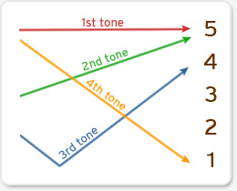

04_output (logo-view) of lagZhon
description::
· output-of-lagZhon is the-logo-view of lagZhon.
name::
* McsEngl.lagZhon'output!⇒logoZhon,
* McsEngl.lagZhon-output!⇒logoZhon,
* McsEngl.logo-view--of-lagZhon!⇒logoZhon,
* McsEngl.logoZhon,
* McsEngl.output-of-lagZhon!⇒logoZhon,
syntax-tree of logoZhon
description::
· syntax-tree of lagZhon is the-structure of the-output.
· this structure is a-whole-part-tree of output-nodes.
name::
* McsEngl.lagZhon'syntax-tree,
* McsEngl.logoZhon'syntax-tree,
node of logoZhon
description::
· logo-node of lagZhon is any identifiable part of the-syntax-tree.
name::
* McsEngl.lagZhon'node,
* McsEngl.logoZhon'node,
* McsEngl.nodeZhon,
generic-tree::
* logo-node--of-lagHmnm,
unit of logoZhon
description::
· logo-unit-of-lagZhon is any indivisible part of output.
name::
* McsEngl.lagZhon'unit!⇒unitZhon,
* McsEngl.lagZhon-unit!⇒unitZhon,
* McsEngl.logo-unit--of-lagZhon!⇒unitZhon,
* McsEngl.unitZhon,
generic-tree::
* logo-unit,
specific::
* term-unit,
* termNo-unit,
===
* phoneme,
* syllabogram,
* character,
unitZhon.term
description::
· term-unit-of-lagZhon is any termHmnm-unit (= created from phonemes or syllabograms).
· the-main units that create its output (speech or text).
name::
* McsEngl.term-unit-of-lagZhon!⇒unitTermZhon,
* McsEngl.unitZhon.term!⇒unitTermZhon,
* McsEngl.unitTermZhon,
generic-tree::
* lagHmnm-term-unit,
specific::
* Standard-Chinese-phoneme,
* Standard-Chinese-syllabogram,
unitZhon.termNo
description::
· termNo-unit-of-lagZhon is any other unit except term-unit.
· like all languages Chinese uses many conceptograms.
name::
* McsEngl.termNo-unit-of-lagZhon,
* McsEngl.unitZhon.termNo,
unitTermZhon.phoneme of speech
name::
* McsEngl.Chinese-phoneme!⇒phonemeZhon,
* McsEngl.Standard-Chinese-phoneme!⇒phonemeZhon,
* McsEngl.lagZhon'phoneme!⇒phonemeZhon,
* McsEngl.lagSpchZhon'phoneme!⇒phonemeZhon,
* McsEngl.lagSpchZhon-unit.phoneme!⇒phonemeZhon,
* McsEngl.lagSpchZhon-unit.term!⇒phonemeZhon,
* McsEngl.lagSpchZhon-phoneme,
* McsEngl.main-unit--of-lagSpchZhon!⇒phonemeZhon,
* McsEngl.phoneme-of-lagSpchZhon!⇒phonemeZhon,
* McsEngl.phonemeZhon,
* McsEngl.speech-unit-of-lagSpchZhon!⇒phonemeZhon,
* McsEngl.unitTermZhon!⇒phonemeZhon,
generic-tree::
* term-unit--of-lagSpch,
info-resource of phonemeZhon
description::
* https://en.wikipedia.org/wiki/Standard_Chinese_phonology,
* https://www.chinesepod.com/tools/pronunciation/,
* https://resources.allsetlearning.com/chinese/pronunciation/,
phonemeZhon.SPECIFIC of speech
description::
* phone,
* allophone,
=== on airstream-obstruction:
* vowel-phoneme,
* vowelNo-phoneme-(consonant),
* vowelBo-phoneme-(semivowel),
phonemeZhon.vowel of speech
description::
· vowel of lagZhon is a-phoneme without airstream-obstruction.
name::
* McsEngl.phonemeZhon.vowel!⇒lagSpchZhon-vowel,
* McsEngl.lagSpchZhon-vowel,
* McsEngl.speech-vowel--of-lagSpchZhon!⇒lagSpchZhon-vowel,
* McsEngl.vowel-of-lagSpchZhon!⇒lagSpchZhon-vowel,
phonemeZhon.vowelNo of speech
description::
· consonant-of-lagZhon is a-phoneme with airstream-obstruction.
name::
* McsEngl.consonant-of-lagZhon!⇒lagZhon-consonant,
* McsEngl.lagZhon'consonant,
* McsEngl.lagZhon-consonant,
* McsEngl.phonemeZhon.vowelNo!⇒lagZhon-consonant,
phonemeZhon.vowelBo of speech
description::
"It has long been recognised that most languages contain a class of sound that functions in a way similar to consonants but is phonetically similar to vowels"
[Peter Roach 2009 Glossary]
name::
* McsEngl.lagZhon'semivowel,
* McsEngl.phonemeZhon.vowelBo!⇒lagZhon-semivowel,
* McsEngl.lagZhon-semivowel,
* McsEngl.semivowel-of-lagZhon!⇒lagZhon-semivowel,
unitTermZhon.syllabogram of text
description::
· syllabogram is the-term-unit of written-Standard-Chinese.
name::
* McsEngl.Chinese-syllabogram!⇒syllabogramZhon,
* McsEngl.Standard-Chinese-syllabogram!⇒syllabogramZhon,
* McsEngl.lagZhon'syllabogram!⇒syllabogramZhon,
* McsEngl.lagSylbZhon-syllabogram!⇒syllabogramZhon,
* McsEngl.lagSylbZhon-unit.syllabogram!⇒syllabogramZhon,
* McsEngl.syllabogramZhon,
* McsEngl.phonemogram-of-lagZhon!⇒syllabogramZhon,
* McsEngl.unitTermZhon!⇒syllabogramZhon,
unitTermZhon.character of text
description::
· Chinese-character is any text-unit the-language uses, terms and termsNo.
name::
* McsEngl.Chinese-character!⇒charZhon,
* McsEngl.Han-ideograph!⇒charZhon,
* McsEngl.Zhonchar!⇒charZhon,
* McsEngl.charZhon,
* McsEngl.hanzi!⇒charZhon,
* McsEngl.unitCharZhon!⇒charZhon,
* McsEngl.unitTermZhon.character!⇒charZhon,
====== langoChinese:
* McsZhon.hànzì-汉字-(漢字)!=Han-character!=charZhon,
* McsZhon.汉字-(漢字)-hànzì!=Han-character!=charZhon,
radical of charZhon
description::
"A Chinese radical (Chinese: 部首; pinyin: bùshǒu; lit. 'section header') or indexing component is a graphical component of a Chinese character under which the character is traditionally listed in a Chinese dictionary. This component is often a semantic indicator similar to a morpheme, though sometimes it may be a phonetic component or even an artificially extracted portion of the character. In some cases the original semantic or phonological connection has become obscure, owing to changes in character meaning or pronunciation over time.
The English term "radical" is based on an analogy between the structure of characters and inflection of words in European languages.[a] Radicals are also sometimes called "classifiers", but this name is more commonly applied to grammatical classifiers (measure words)."
[{2021-10-12 retrieved} https://en.wikipedia.org/wiki/Radical_(Chinese_characters)]
name::
* McsEngl.charZhon'radical!⇒radicalZhon,
* McsEngl.radical-of-charZhon!⇒radicalZhon,
* McsEngl.radicalZhon,
====== langoChinese:
* McsZhon.bùshǒu-部首!=radicalZhon,
* McsZhon.部首-bùshǒu!=radicalZhon,
addressWpg::
* https://www.yellowbridge.com/chinese/radicals.php,
* https://www.yellowbridge.com/chinese/character-stroke-order-rules.php,
* https://en.wikipedia.org/wiki/Table_of_Indexing_Chinese_Character_Components,
radicalZhon.一-yī-001
description::
· 1 stroke; 一-yī !=one.
[{2021-10-12 retrieved} https://www.mdbg.net/chinese/dictionary?page=radicals&cdqraddm=1]
name::
* McsEngl.radicalZhon.one!=yī-一,
* McsEngl.radicalZhon.yī-一!=one,
* McsEngl.radicalZhon.一-yī!=one,
radicalZhon.丨-gǔn-002
description::
· 1 stroke; 丨-gǔn !=line.
[{2021-10-12 retrieved} https://www.mdbg.net/chinese/dictionary?page=radicals&cdqraddm=1]
name::
* McsEngl.radicalZhon.line!=gǔn-丨,
* McsEngl.radicalZhon.gǔn-丨!=line,
* McsEngl.radicalZhon.丨-gǔn!=line,
radicalZhon.丶-zhǔ-003
description::
· 1 stroke; 丶-zhǔ !=dot.
[{2021-10-12 retrieved} https://www.mdbg.net/chinese/dictionary?page=radicals&cdqraddm=1]
name::
* McsEngl.radicalZhon.dot!=zhǔ-丶,
* McsEngl.radicalZhon.zhǔ-丶!=dot,
* McsEngl.radicalZhon.丶-zhǔ!=dot,
radicalZhon.丿-piě-004
description::
· 1 stroke; 丿-piě !=slash.
[{2021-10-12 retrieved} https://www.mdbg.net/chinese/dictionary?page=radicals&cdqraddm=1]
name::
* McsEngl.radicalZhon.slash!=piě-丿,
* McsEngl.radicalZhon.piě-丿!=slash,
* McsEngl.radicalZhon.丿-piě!=slash,
radicalZhon.乙/乚-yǐ-005
description::
· 1 stroke; 乙/乚-yǐ !=second.
[{2021-10-12 retrieved} https://www.mdbg.net/chinese/dictionary?page=radicals&cdqraddm=1]
name::
* McsEngl.radicalZhon.second!=yǐ-乙/乚,
* McsEngl.radicalZhon.yǐ-乙/乚!=second,
* McsEngl.radicalZhon.乙/乚-yǐ!=second,
radicalZhon.亅/了-jué-006
description::
· 1 stroke; 亅/了-jué !=hook.
[{2021-10-12 retrieved} https://www.mdbg.net/chinese/dictionary?page=radicals&cdqraddm=1]
name::
* McsEngl.radicalZhon.hook!=jué-亅/了,
* McsEngl.radicalZhon.jué-亅/了!=hook,
* McsEngl.radicalZhon.亅/了-jué!=hook,
radicalZhon.二-èr-007
description::
· 2 strokes; 二-èr !=two.
[{2021-10-12 retrieved} https://www.mdbg.net/chinese/dictionary?page=radicals&cdqraddm=1]
name::
* McsEngl.radicalZhon.two!=èr-二,
* McsEngl.radicalZhon.èr-二!=two,
* McsEngl.radicalZhon.二-èr!=two,
radicalZhon.亠-tóu-008
description::
· 2 strokes; 亠-tóu !=lid.
[{2021-10-12 retrieved} https://www.mdbg.net/chinese/dictionary?page=radicals&cdqraddm=1]
name::
* McsEngl.radicalZhon.lid!=tóu-亠,
* McsEngl.radicalZhon.tóu-亠!=lid,
* McsEngl.radicalZhon.亠-tóu!=lid,
radicalZhon.人/亻-rén-009
description::
· 2 strokes; 人/亻-rén !=man.
[{2021-10-12 retrieved} https://www.mdbg.net/chinese/dictionary?page=radicals&cdqraddm=1]
name::
* McsEngl.radicalZhon.man!=rén-人/亻,
* McsEngl.radicalZhon.rén-人/亻!=man,
* McsEngl.radicalZhon.人/亻-rén!=man,
radicalZhon.儿-rén-010
description::
· 2 strokes; 儿-rén !=legs.
[{2021-10-12 retrieved} https://www.mdbg.net/chinese/dictionary?page=radicals&cdqraddm=1]
name::
* McsEngl.radicalZhon.legs!=rén-儿,
* McsEngl.radicalZhon.rén-儿!=legs,
* McsEngl.radicalZhon.儿-rén!=legs,
radicalZhon.入-rù-011
description::
· 2 strokes; 入-rù !=enter.
[{2021-10-12 retrieved} https://www.mdbg.net/chinese/dictionary?page=radicals&cdqraddm=1]
name::
* McsEngl.radicalZhon.enter!=rù-入,
* McsEngl.radicalZhon.rù-入!=enter,
* McsEngl.radicalZhon.入-rù!=enter,
radicalZhon.八-bā-012
description::
· 2 strokes; 八-bā !=eight.
[{2021-10-12 retrieved} https://www.mdbg.net/chinese/dictionary?page=radicals&cdqraddm=1]
name::
* McsEngl.radicalZhon.eight!=bā-八,
* McsEngl.radicalZhon.bā-八!=eight,
* McsEngl.radicalZhon.八-bā!=eight,
radicalZhon.冂-jiōng-013
description::
· 2 strokes; 冂-jiōng !=down box.
[{2021-10-12 retrieved} https://www.mdbg.net/chinese/dictionary?page=radicals&cdqraddm=1]
name::
* McsEngl.radicalZhon.down-box!=jiōng-冂,
* McsEngl.radicalZhon.jiōng-冂!=down-box,
* McsEngl.radicalZhon.冂-jiōng!=down-box,
radicalZhon.冖-mì-014
description::
· 2 strokes; 冖-mì !=cover.
[{2021-10-12 retrieved} https://www.mdbg.net/chinese/dictionary?page=radicals&cdqraddm=1]
name::
* McsEngl.radicalZhon.cover!=mì-冖,
* McsEngl.radicalZhon.mì-冖!=cover,
* McsEngl.radicalZhon.冖-mì!=cover,
radicalZhon.冫-bīng-015
description::
· 2 strokes; 冫-bīng !=ice.
[{2021-10-12 retrieved} https://www.mdbg.net/chinese/dictionary?page=radicals&cdqraddm=1]
name::
* McsEngl.radicalZhon.ice!=bīng-冫,
* McsEngl.radicalZhon.bīng-冫!=ice,
* McsEngl.radicalZhon.冫-bīng!=ice,
radicalZhon.几-jǐ-016
description::
· 2 strokes; 几-jǐ !=table.
[{2021-10-12 retrieved} https://www.mdbg.net/chinese/dictionary?page=radicals&cdqraddm=1]
name::
* McsEngl.radicalZhon.table!=jǐ-几,
* McsEngl.radicalZhon.jǐ-几!=table,
* McsEngl.radicalZhon.几-jǐ!=table,
radicalZhon.凵-qū-017
description::
· 2 strokes; 凵-qū !=open box.
[{2021-10-12 retrieved} https://www.mdbg.net/chinese/dictionary?page=radicals&cdqraddm=1]
name::
* McsEngl.radicalZhon.open-box!=qū-凵,
* McsEngl.radicalZhon.qū-凵!=open-box,
* McsEngl.radicalZhon.凵-qū!=open-box,
radicalZhon.刀/刂-dāo-018
description::
· 2 strokes; 刀/刂-dāo !=knife.
[{2021-10-12 retrieved} https://www.mdbg.net/chinese/dictionary?page=radicals&cdqraddm=1]
name::
* McsEngl.radicalZhon.knife!=dāo-刀/刂,
* McsEngl.radicalZhon.dāo-刀/刂!=knife,
* McsEngl.radicalZhon.刀/刂-dāo!=knife,
radicalZhon.力-lì-019
description::
· 2 strokes; 力-lì !=power.
[{2021-10-12 retrieved} https://www.mdbg.net/chinese/dictionary?page=radicals&cdqraddm=1]
name::
* McsEngl.radicalZhon.power!=lì-力,
* McsEngl.radicalZhon.lì-力!=power,
* McsEngl.radicalZhon.力-lì!=power,
radicalZhon.勹-bāo-020
description::
· 2 strokes; 勹-bāo !=wrap.
[{2021-10-12 retrieved} https://www.mdbg.net/chinese/dictionary?page=radicals&cdqraddm=1]
name::
* McsEngl.radicalZhon.wrap!=bāo-勹,
* McsEngl.radicalZhon.bāo-勹!=wrap,
* McsEngl.radicalZhon.勹-bāo!=wrap,
radicalZhon.匕-bǐ-021
description::
· 2 strokes; 匕-bǐ !=spoon.
[{2021-10-12 retrieved} https://www.mdbg.net/chinese/dictionary?page=radicals&cdqraddm=1]
name::
* McsEngl.radicalZhon.spoon!=bǐ-匕,
* McsEngl.radicalZhon.bǐ-匕!=spoon,
* McsEngl.radicalZhon.匕-bǐ!=spoon,
radicalZhon.匚-fāng-022
description::
· 2 strokes; 匚-fāng !=right open box.
[{2021-10-12 retrieved} https://www.mdbg.net/chinese/dictionary?page=radicals&cdqraddm=1]
name::
* McsEngl.radicalZhon.right-open-box!=fāng-匚,
* McsEngl.radicalZhon.fāng-匚!=right-open-box,
* McsEngl.radicalZhon.匚-fāng!=right-open-box,
radicalZhon.匸-xǐ-023
description::
· 2 strokes; 匸-xǐ !=hiding enclosure.
[{2021-10-12 retrieved} https://www.mdbg.net/chinese/dictionary?page=radicals&cdqraddm=1]
name::
* McsEngl.radicalZhon.hiding-enclosure!=xǐ-匸,
* McsEngl.radicalZhon.xǐ-匸!=hiding-enclosure,
* McsEngl.radicalZhon.匸-xǐ!=hiding-enclosure,
radicalZhon.十-shí-024
description::
· 2 strokes; 十-shí !=ten.
[{2021-10-12 retrieved} https://www.mdbg.net/chinese/dictionary?page=radicals&cdqraddm=1]
name::
* McsEngl.radicalZhon.ten!=shí-十,
* McsEngl.radicalZhon.shí-十!=ten,
* McsEngl.radicalZhon.十-shí!=ten,
radicalZhon.卜-bǔ-025
description::
· 2 strokes; 卜-bǔ !=divination.
[{2021-10-12 retrieved} https://www.mdbg.net/chinese/dictionary?page=radicals&cdqraddm=1]
name::
* McsEngl.radicalZhon.divination!=bǔ-卜,
* McsEngl.radicalZhon.bǔ-卜!=divination,
* McsEngl.radicalZhon.卜-bǔ!=divination,
radicalZhon.卩-jié-026
description::
· 2 strokes; 卩-jié !=seal.
[{2021-10-12 retrieved} https://www.mdbg.net/chinese/dictionary?page=radicals&cdqraddm=1]
name::
* McsEngl.radicalZhon.seal!=jié-卩,
* McsEngl.radicalZhon.jié-卩!=seal,
* McsEngl.radicalZhon.卩-jié!=seal,
radicalZhon.厂-hǎn-027
description::
· 2 strokes; 厂-hǎn !=cliff.
[{2021-10-12 retrieved} https://www.mdbg.net/chinese/dictionary?page=radicals&cdqraddm=1]
name::
* McsEngl.radicalZhon.cliff!=hǎn-厂,
* McsEngl.radicalZhon.hǎn-厂!=cliff,
* McsEngl.radicalZhon.厂-hǎn!=cliff,
radicalZhon.厶-sī-028
description::
· 2 strokes; 厶-sī !=private.
[{2021-10-12 retrieved} https://www.mdbg.net/chinese/dictionary?page=radicals&cdqraddm=1]
name::
* McsEngl.radicalZhon.private!=sī-厶,
* McsEngl.radicalZhon.sī-厶!=private,
* McsEngl.radicalZhon.厶-sī!=private,
radicalZhon.又-yòu-029
description::
· 2 strokes; 又-yòu !=again.
[{2021-10-12 retrieved} https://www.mdbg.net/chinese/dictionary?page=radicals&cdqraddm=1]
name::
* McsEngl.radicalZhon.again!=yòu-又,
* McsEngl.radicalZhon.yòu-又!=again,
* McsEngl.radicalZhon.又-yòu!=again,
radicalZhon.讠-yán-030
description::
· 2 strokes; 讠-yán !=speech.
[{2021-10-12 retrieved} https://www.mdbg.net/chinese/dictionary?page=radicals&cdqraddm=1]
name::
* McsEngl.radicalZhon.speech!=yán-讠,
* McsEngl.radicalZhon.yán-讠!=speech,
* McsEngl.radicalZhon.讠-yán!=speech,
radicalZhon.口-kǒu-031
description::
· 3 strokes; 口-kǒu !=mouth.
[{2021-10-12 retrieved} https://www.mdbg.net/chinese/dictionary?page=radicals&cdqraddm=1]
name::
* McsEngl.radicalZhon.mouth!=kǒu-口,
* McsEngl.radicalZhon.kǒu-口!=mouth,
* McsEngl.radicalZhon.口-kǒu!=mouth,
radicalZhon.囗-wéi-032
description::
· 3 strokes; 囗-wéi !=enclosure.
[{2021-10-12 retrieved} https://www.mdbg.net/chinese/dictionary?page=radicals&cdqraddm=1]
name::
* McsEngl.radicalZhon.enclosure!=wéi-囗,
* McsEngl.radicalZhon.wéi-囗!=enclosure,
* McsEngl.radicalZhon.囗-wéi!=enclosure,
radicalZhon.土-tǔ-033
description::
· 3 strokes; 土-tǔ !=earth.
[{2021-10-12 retrieved} https://www.mdbg.net/chinese/dictionary?page=radicals&cdqraddm=1]
name::
* McsEngl.radicalZhon.earth!=tǔ-土,
* McsEngl.radicalZhon.tǔ-土!=earth,
* McsEngl.radicalZhon.土-tǔ!=earth,
radicalZhon.士-shì-034
description::
· 3 strokes; 士-shì !=scholar.
[{2021-10-12 retrieved} https://www.mdbg.net/chinese/dictionary?page=radicals&cdqraddm=1]
name::
* McsEngl.radicalZhon.scholar!=shì-士,
* McsEngl.radicalZhon.shì-士!=scholar,
* McsEngl.radicalZhon.士-shì!=scholar,
radicalZhon.夂-zhǐ-035
description::
· 3 strokes; 夂-zhǐ !=go.
[{2021-10-12 retrieved} https://www.mdbg.net/chinese/dictionary?page=radicals&cdqraddm=1]
name::
* McsEngl.radicalZhon.go!=zhǐ-夂,
* McsEngl.radicalZhon.zhǐ-夂!=go,
* McsEngl.radicalZhon.夂-zhǐ!=go,
radicalZhon.夊-suī-036
description::
· 3 strokes; 夊-suī !=go slowly.
[{2021-10-12 retrieved} https://www.mdbg.net/chinese/dictionary?page=radicals&cdqraddm=1]
name::
* McsEngl.radicalZhon.go-slowly!=suī-夊,
* McsEngl.radicalZhon.suī-夊!=go-slowly,
* McsEngl.radicalZhon.夊-suī!=go-slowly,
radicalZhon.夕-xī-037
description::
· 3 strokes; 夕-xī !=evening.
[{2021-10-12 retrieved} https://www.mdbg.net/chinese/dictionary?page=radicals&cdqraddm=1]
name::
* McsEngl.radicalZhon.evening!=xī-夕,
* McsEngl.radicalZhon.xī-夕!=evening,
* McsEngl.radicalZhon.夕-xī!=evening,
radicalZhon.大-dà-038
description::
· 3 strokes; 大-dà !=big.
[{2021-10-12 retrieved} https://www.mdbg.net/chinese/dictionary?page=radicals&cdqraddm=1]
name::
* McsEngl.radicalZhon.big!=dà-大,
* McsEngl.radicalZhon.dà-大!=big,
* McsEngl.radicalZhon.大-dà!=big,
radicalZhon.女-nǚ-039
description::
· 3 strokes; 女-nǚ !=woman.
[{2021-10-12 retrieved} https://www.mdbg.net/chinese/dictionary?page=radicals&cdqraddm=1]
name::
* McsEngl.radicalZhon.woman!=nǚ-女,
* McsEngl.radicalZhon.nǚ-女!=woman,
* McsEngl.radicalZhon.女-nǚ!=woman,
radicalZhon.子/孑-zǐ-040
description::
· 3 strokes; 子/孑-zǐ !=child.
[{2021-10-12 retrieved} https://www.mdbg.net/chinese/dictionary?page=radicals&cdqraddm=1]
name::
* McsEngl.radicalZhon.child!=zǐ-子/孑,
* McsEngl.radicalZhon.zǐ-子/孑!=child,
* McsEngl.radicalZhon.子/孑-zǐ!=child,
radicalZhon.宀-mián-041
description::
· 3 strokes; 宀-mián !=roof.
[{2021-10-12 retrieved} https://www.mdbg.net/chinese/dictionary?page=radicals&cdqraddm=1]
name::
* McsEngl.radicalZhon.roof!=mián-宀,
* McsEngl.radicalZhon.mián-宀!=roof,
* McsEngl.radicalZhon.宀-mián!=roof,
radicalZhon.寸-cùn-042
description::
· 3 strokes; 寸-cùn !=inch.
[{2021-10-12 retrieved} https://www.mdbg.net/chinese/dictionary?page=radicals&cdqraddm=1]
name::
* McsEngl.radicalZhon.inch!=cùn-寸,
* McsEngl.radicalZhon.cùn-寸!=inch,
* McsEngl.radicalZhon.寸-cùn!=inch,
radicalZhon.小-xiǎo-043
description::
· 3 strokes; 小-xiǎo !=small.
[{2021-10-12 retrieved} https://www.mdbg.net/chinese/dictionary?page=radicals&cdqraddm=1]
name::
* McsEngl.radicalZhon.small!=xiǎo-小,
* McsEngl.radicalZhon.xiǎo-小!=small,
* McsEngl.radicalZhon.小-xiǎo!=small,
radicalZhon.尢-wāng-044
description::
· 3 strokes; 尢-wāng !=lame.
[{2021-10-12 retrieved} https://www.mdbg.net/chinese/dictionary?page=radicals&cdqraddm=1]
name::
* McsEngl.radicalZhon.lame!=wāng-尢,
* McsEngl.radicalZhon.wāng-尢!=lame,
* McsEngl.radicalZhon.尢-wāng!=lame,
radicalZhon.尸-shī-045
description::
· 3 strokes; 尸-shī !=corpse.
[{2021-10-12 retrieved} https://www.mdbg.net/chinese/dictionary?page=radicals&cdqraddm=1]
name::
* McsEngl.radicalZhon.corpse!=shī-尸,
* McsEngl.radicalZhon.shī-尸!=corpse,
* McsEngl.radicalZhon.尸-shī!=corpse,
radicalZhon.屮-chè-046
description::
· 3 strokes; 屮-chè !=sprout.
[{2021-10-12 retrieved} https://www.mdbg.net/chinese/dictionary?page=radicals&cdqraddm=1]
name::
* McsEngl.radicalZhon.sprout!=chè-屮,
* McsEngl.radicalZhon.chè-屮!=sprout,
* McsEngl.radicalZhon.屮-chè!=sprout,
radicalZhon.山-shān-047
description::
· 3 strokes; 山-shān !=mountain.
[{2021-10-12 retrieved} https://www.mdbg.net/chinese/dictionary?page=radicals&cdqraddm=1]
name::
* McsEngl.radicalZhon.mountain!=shān-山,
* McsEngl.radicalZhon.shān-山!=mountain,
* McsEngl.radicalZhon.山-shān!=mountain,
radicalZhon.巛/川-chuān-048
description::
· 3 strokes; 巛/川-chuān !=river.
[{2021-10-12 retrieved} https://www.mdbg.net/chinese/dictionary?page=radicals&cdqraddm=1]
name::
* McsEngl.radicalZhon.river!=chuān-巛/川,
* McsEngl.radicalZhon.chuān-巛/川!=river,
* McsEngl.radicalZhon.巛/川-chuān!=river,
radicalZhon.工-gōng-049
description::
· 3 strokes; 工-gōng !=work.
[{2021-10-12 retrieved} https://www.mdbg.net/chinese/dictionary?page=radicals&cdqraddm=1]
name::
* McsEngl.radicalZhon.work!=gōng-工,
* McsEngl.radicalZhon.gōng-工!=work,
* McsEngl.radicalZhon.工-gōng!=work,
radicalZhon.己/已/巳-jǐ-050
description::
· 3 strokes; 己/已/巳-jǐ !=oneself.
[{2021-10-12 retrieved} https://www.mdbg.net/chinese/dictionary?page=radicals&cdqraddm=1]
name::
* McsEngl.radicalZhon.oneself!=jǐ-己/已/巳,
* McsEngl.radicalZhon.jǐ-己/已/巳!=oneself,
* McsEngl.radicalZhon.己/已/巳-jǐ!=oneself,
radicalZhon.巾-jīn-051
description::
· 3 strokes; 巾-jīn !=turban.
[{2021-10-12 retrieved} https://www.mdbg.net/chinese/dictionary?page=radicals&cdqraddm=1]
name::
* McsEngl.radicalZhon.turban!=jīn-巾,
* McsEngl.radicalZhon.jīn-巾!=turban,
* McsEngl.radicalZhon.巾-jīn!=turban,
radicalZhon.干-gān-052
description::
· 3 strokes; 干-gān !=dry.
[{2021-10-12 retrieved} https://www.mdbg.net/chinese/dictionary?page=radicals&cdqraddm=1]
name::
* McsEngl.radicalZhon.dry!=gān-干,
* McsEngl.radicalZhon.gān-干!=dry,
* McsEngl.radicalZhon.干-gān!=dry,
radicalZhon.幺/乡-yāo-053
description::
· 3 strokes; 幺/乡-yāo !=short thread.
[{2021-10-12 retrieved} https://www.mdbg.net/chinese/dictionary?page=radicals&cdqraddm=1]
name::
* McsEngl.radicalZhon.short-thread!=yāo-幺/乡,
* McsEngl.radicalZhon.yāo-幺/乡!=short-thread,
* McsEngl.radicalZhon.幺/乡-yāo!=short-thread,
radicalZhon.广-yǎn-054
description::
· 3 strokes; 广-yǎn !=shelter.
[{2021-10-12 retrieved} https://www.mdbg.net/chinese/dictionary?page=radicals&cdqraddm=1]
name::
* McsEngl.radicalZhon.shelter!=yǎn-广,
* McsEngl.radicalZhon.yǎn-广!=shelter,
* McsEngl.radicalZhon.广-yǎn!=shelter,
radicalZhon.廴-yǐn-055
description::
· 3 strokes; 廴-yǐn !=long stride.
[{2021-10-12 retrieved} https://www.mdbg.net/chinese/dictionary?page=radicals&cdqraddm=1]
name::
* McsEngl.radicalZhon.long-stride!=yǐn-廴,
* McsEngl.radicalZhon.yǐn-廴!=long-stride,
* McsEngl.radicalZhon.廴-yǐn!=long-stride,
radicalZhon.廾-gǒng-056
description::
· 3 strokes; 廾-gǒng !=two hands.
[{2021-10-12 retrieved} https://www.mdbg.net/chinese/dictionary?page=radicals&cdqraddm=1]
name::
* McsEngl.radicalZhon.two-hands!=gǒng-廾,
* McsEngl.radicalZhon.gǒng-廾!=two-hands,
* McsEngl.radicalZhon.廾-gǒng!=two-hands,
radicalZhon.弋-yì-057
description::
· 3 strokes; 弋-yì !=shoot.
[{2021-10-12 retrieved} https://www.mdbg.net/chinese/dictionary?page=radicals&cdqraddm=1]
name::
* McsEngl.radicalZhon.shoot!=yì-弋,
* McsEngl.radicalZhon.yì-弋!=shoot,
* McsEngl.radicalZhon.弋-yì!=shoot,
radicalZhon.弓-gōng-058
description::
· 3 strokes; 弓-gōng !=bow.
[{2021-10-12 retrieved} https://www.mdbg.net/chinese/dictionary?page=radicals&cdqraddm=1]
name::
* McsEngl.radicalZhon.bow!=gōng-弓,
* McsEngl.radicalZhon.gōng-弓!=bow,
* McsEngl.radicalZhon.弓-gōng!=bow,
radicalZhon.彐/彑-jì-059
description::
· 3 strokes; 彐/彑-jì !=snout.
[{2021-10-12 retrieved} https://www.mdbg.net/chinese/dictionary?page=radicals&cdqraddm=1]
name::
* McsEngl.radicalZhon.snout!=jì-彐/彑,
* McsEngl.radicalZhon.jì-彐/彑!=snout,
* McsEngl.radicalZhon.彐/彑-jì!=snout,
radicalZhon.彡-shān-060
description::
· 3 strokes; 彡-shān !=bristle.
[{2021-10-12 retrieved} https://www.mdbg.net/chinese/dictionary?page=radicals&cdqraddm=1]
name::
* McsEngl.radicalZhon.bristle!=shān-彡,
* McsEngl.radicalZhon.shān-彡!=bristle,
* McsEngl.radicalZhon.彡-shān!=bristle,
radicalZhon.彳-chì-061
description::
· 3 strokes; 彳-chì !=step.
[{2021-10-12 retrieved} https://www.mdbg.net/chinese/dictionary?page=radicals&cdqraddm=1]
name::
* McsEngl.radicalZhon.step!=chì-彳,
* McsEngl.radicalZhon.chì-彳!=step,
* McsEngl.radicalZhon.彳-chì!=step,
radicalZhon.心/忄-xīn-062
description::
· 3 strokes; 心/忄-xīn !=heart.
[{2021-10-12 retrieved} https://www.mdbg.net/chinese/dictionary?page=radicals&cdqraddm=1]
name::
* McsEngl.radicalZhon.heart!=xīn-心/忄,
* McsEngl.radicalZhon.xīn-心/忄!=heart,
* McsEngl.radicalZhon.心/忄-xīn!=heart,
radicalZhon.手/扌-shǒu-063
description::
· 3 strokes; 手/扌-shǒu !=hand.
[{2021-10-12 retrieved} https://www.mdbg.net/chinese/dictionary?page=radicals&cdqraddm=1]
name::
* McsEngl.radicalZhon.hand!=shǒu-手/扌,
* McsEngl.radicalZhon.shǒu-手/扌!=hand,
* McsEngl.radicalZhon.手/扌-shǒu!=hand,
radicalZhon.水/氵/氺-shuǐ-064
description::
· 3 strokes; 水/氵/氺-shuǐ !=water.
[{2021-10-12 retrieved} https://www.mdbg.net/chinese/dictionary?page=radicals&cdqraddm=1]
name::
* McsEngl.radicalZhon.water!=shuǐ-水/氵/氺,
* McsEngl.radicalZhon.shuǐ-水/氵/氺!=water,
* McsEngl.radicalZhon.水/氵/氺-shuǐ!=water,
radicalZhon.犬/犭-quǎn-065
description::
· 3 strokes; 犬/犭-quǎn !=dog.
[{2021-10-12 retrieved} https://www.mdbg.net/chinese/dictionary?page=radicals&cdqraddm=1]
name::
* McsEngl.radicalZhon.dog!=quǎn-犬/犭,
* McsEngl.radicalZhon.quǎn-犬/犭!=dog,
* McsEngl.radicalZhon.犬/犭-quǎn!=dog,
radicalZhon.艸/艹-cǎo-066
description::
· 3 strokes; 艸/艹-cǎo !=grass.
[{2021-10-12 retrieved} https://www.mdbg.net/chinese/dictionary?page=radicals&cdqraddm=1]
name::
* McsEngl.radicalZhon.grass!=cǎo-艸/艹,
* McsEngl.radicalZhon.cǎo-艸/艹!=grass,
* McsEngl.radicalZhon.艸/艹-cǎo!=grass,
radicalZhon.辵/辶-chuò-067
description::
· 3 strokes; 辵/辶-chuò !=walk.
[{2021-10-12 retrieved} https://www.mdbg.net/chinese/dictionary?page=radicals&cdqraddm=1]
name::
* McsEngl.radicalZhon.walk!=chuò-辵/辶,
* McsEngl.radicalZhon.chuò-辵/辶!=walk,
* McsEngl.radicalZhon.辵/辶-chuò!=walk,
radicalZhon.邑/阝-yì-068
description::
· 3 strokes; 邑/阝(on right side)-yì !=city.
[{2021-10-12 retrieved} https://www.mdbg.net/chinese/dictionary?page=radicals&cdqraddm=1]
name::
* McsEngl.radicalZhon.city!=yì-邑/阝(on-right-side),
* McsEngl.radicalZhon.yì-邑/阝(on-right-side)!=city,
* McsEngl.radicalZhon.邑/阝(on-right-side)-yì!=city,
radicalZhon.阜/阝-fù-069
description::
· 3 strokes; 阜/阝(on-left-side)-fù !=mound.
[{2021-10-12 retrieved} https://www.mdbg.net/chinese/dictionary?page=radicals&cdqraddm=1]
name::
* McsEngl.radicalZhon.mound!=fù-阜/阝(on-left-side),
* McsEngl.radicalZhon.fù-阜/阝(on-left-side)!=mound,
* McsEngl.radicalZhon.阜/阝(on-left-side)-fù!=mound,
radicalZhon.纟-mì-070
description::
· 3 strokes; 纟-mì !=silk.
[{2021-10-12 retrieved} https://www.mdbg.net/chinese/dictionary?page=radicals&cdqraddm=1]
name::
* McsEngl.radicalZhon.silk!=mì-纟,
* McsEngl.radicalZhon.mì-纟!=silk,
* McsEngl.radicalZhon.纟-mì!=silk,
radicalZhon.门-mén-071
description::
· 3 strokes; 门-mén !=gate.
[{2021-10-12 retrieved} https://www.mdbg.net/chinese/dictionary?page=radicals&cdqraddm=1]
name::
* McsEngl.radicalZhon.gate!=mén-门,
* McsEngl.radicalZhon.mén-门!=gate,
* McsEngl.radicalZhon.门-mén!=gate,
radicalZhon.飞-fēi-072
description::
· 3 strokes; 飞-fēi !=fly.
[{2021-10-12 retrieved} https://www.mdbg.net/chinese/dictionary?page=radicals&cdqraddm=1]
name::
* McsEngl.radicalZhon.fly!=fēi-飞,
* McsEngl.radicalZhon.fēi-飞!=fly,
* McsEngl.radicalZhon.飞-fēi!=fly,
radicalZhon.饣-shí-073
description::
· 3 strokes; 饣-shí !=eat.
[{2021-10-12 retrieved} https://www.mdbg.net/chinese/dictionary?page=radicals&cdqraddm=1]
name::
* McsEngl.radicalZhon.eat!=shí-饣,
* McsEngl.radicalZhon.shí-饣!=eat,
* McsEngl.radicalZhon.饣-shí!=eat,
radicalZhon.马-mǎ-074
description::
· 3 strokes; 马-mǎ !=horse.
[{2021-10-12 retrieved} https://www.mdbg.net/chinese/dictionary?page=radicals&cdqraddm=1]
name::
* McsEngl.radicalZhon.horse!=mǎ-马,
* McsEngl.radicalZhon.mǎ-马!=horse,
* McsEngl.radicalZhon.马-mǎ!=horse,
radicalZhon.心/忄-xīn-075
description::
· 4 strokes; 心/忄-xīn !=heart.
[{2021-10-12 retrieved} https://www.mdbg.net/chinese/dictionary?page=radicals&cdqraddm=1]
name::
* McsEngl.radicalZhon.heart!=xīn-心/忄,
* McsEngl.radicalZhon.xīn-心/忄!=heart,
* McsEngl.radicalZhon.心/忄-xīn!=heart,
radicalZhon.戈-gē-076
description::
· 4 strokes; 戈-gē !=spear.
[{2021-10-12 retrieved} https://www.mdbg.net/chinese/dictionary?page=radicals&cdqraddm=1]
name::
* McsEngl.radicalZhon.spear!=gē-戈,
* McsEngl.radicalZhon.gē-戈!=spear,
* McsEngl.radicalZhon.戈-gē!=spear,
radicalZhon.戶/户-hù-077
description::
· 4 strokes; 戶/户-hù !=door.
[{2021-10-12 retrieved} https://www.mdbg.net/chinese/dictionary?page=radicals&cdqraddm=1]
name::
* McsEngl.radicalZhon.door!=hù-戶/户,
* McsEngl.radicalZhon.hù-戶/户!=door,
* McsEngl.radicalZhon.戶/户-hù!=door,
radicalZhon.手/扌-shǒu-078
description::
· 4 strokes; 手/扌-shǒu !=hand.
[{2021-10-12 retrieved} https://www.mdbg.net/chinese/dictionary?page=radicals&cdqraddm=1]
name::
* McsEngl.radicalZhon.hand!=shǒu-手/扌,
* McsEngl.radicalZhon.shǒu-手/扌!=hand,
* McsEngl.radicalZhon.手/扌-shǒu!=hand,
radicalZhon.支-zhī-079
description::
· 4 strokes; 支-zhī !=branch.
[{2021-10-12 retrieved} https://www.mdbg.net/chinese/dictionary?page=radicals&cdqraddm=1]
name::
* McsEngl.radicalZhon.branch!=zhī-支,
* McsEngl.radicalZhon.zhī-支!=branch,
* McsEngl.radicalZhon.支-zhī!=branch,
radicalZhon.攴/攵-pū-080
description::
· 4 strokes; 攴/攵-pū !=rap.
[{2021-10-12 retrieved} https://www.mdbg.net/chinese/dictionary?page=radicals&cdqraddm=1]
name::
* McsEngl.radicalZhon.rap!=pū-攴/攵,
* McsEngl.radicalZhon.pū-攴/攵!=rap,
* McsEngl.radicalZhon.攴/攵-pū!=rap,
radicalZhon.文-wén-081
description::
· 4 strokes; 文-wén !=script.
[{2021-10-12 retrieved} https://www.mdbg.net/chinese/dictionary?page=radicals&cdqraddm=1]
name::
* McsEngl.radicalZhon.script!=wén-文,
* McsEngl.radicalZhon.wén-文!=script,
* McsEngl.radicalZhon.文-wén!=script,
radicalZhon.斗-dǒu-082
description::
· 4 strokes; 斗-dǒu !=dipper.
[{2021-10-12 retrieved} https://www.mdbg.net/chinese/dictionary?page=radicals&cdqraddm=1]
name::
* McsEngl.radicalZhon.dipper!=dǒu-斗,
* McsEngl.radicalZhon.dǒu-斗!=dipper,
* McsEngl.radicalZhon.斗-dǒu!=dipper,
radicalZhon.斤-jīn-083
description::
· 4 strokes; 斤-jīn !=axe.
[{2021-10-12 retrieved} https://www.mdbg.net/chinese/dictionary?page=radicals&cdqraddm=1]
name::
* McsEngl.radicalZhon.axe!=jīn-斤,
* McsEngl.radicalZhon.jīn-斤!=axe,
* McsEngl.radicalZhon.斤-jīn!=axe,
radicalZhon.方-fāng-084
description::
· 4 strokes; 方-fāng !=square.
[{2021-10-12 retrieved} https://www.mdbg.net/chinese/dictionary?page=radicals&cdqraddm=1]
name::
* McsEngl.radicalZhon.square!=fāng-方,
* McsEngl.radicalZhon.fāng-方!=square,
* McsEngl.radicalZhon.方-fāng!=square,
radicalZhon.无-wú-085
description::
· 4 strokes; 无-wú !=without.
[{2021-10-12 retrieved} https://www.mdbg.net/chinese/dictionary?page=radicals&cdqraddm=1]
name::
* McsEngl.radicalZhon.without!=wú-无,
* McsEngl.radicalZhon.wú-无!=without,
* McsEngl.radicalZhon.无-wú!=without,
radicalZhon.日-rì-086
description::
· 4 strokes; 日-rì !=sun.
[{2021-10-12 retrieved} https://www.mdbg.net/chinese/dictionary?page=radicals&cdqraddm=1]
name::
* McsEngl.radicalZhon.sun!=rì-日,
* McsEngl.radicalZhon.rì-日!=sun,
* McsEngl.radicalZhon.日-rì!=sun,
radicalZhon.曰-yuē-087
description::
· 4 strokes; 曰-yuē !=say.
[{2021-10-12 retrieved} https://www.mdbg.net/chinese/dictionary?page=radicals&cdqraddm=1]
name::
* McsEngl.radicalZhon.say!=yuē-曰,
* McsEngl.radicalZhon.yuē-曰!=say,
* McsEngl.radicalZhon.曰-yuē!=say,
radicalZhon.月-yuè-088
description::
· 4 strokes; 月-yuè !=moon.
[{2021-10-12 retrieved} https://www.mdbg.net/chinese/dictionary?page=radicals&cdqraddm=1]
name::
* McsEngl.radicalZhon.moon!=yuè-月,
* McsEngl.radicalZhon.yuè-月!=moon,
* McsEngl.radicalZhon.月-yuè!=moon,
radicalZhon.木-mù-089
description::
· 4 strokes; 木-mù !=tree.
[{2021-10-12 retrieved} https://www.mdbg.net/chinese/dictionary?page=radicals&cdqraddm=1]
name::
* McsEngl.radicalZhon.tree!=mù-木,
* McsEngl.radicalZhon.mù-木!=tree,
* McsEngl.radicalZhon.木-mù!=tree,
radicalZhon.欠-qiàn-090
description::
· 4 strokes; 欠-qiàn !=owe.
[{2021-10-12 retrieved} https://www.mdbg.net/chinese/dictionary?page=radicals&cdqraddm=1]
name::
* McsEngl.radicalZhon.owe!=qiàn-欠,
* McsEngl.radicalZhon.qiàn-欠!=owe,
* McsEngl.radicalZhon.欠-qiàn!=owe,
radicalZhon.止-zhǐ-091
description::
· 4 strokes; 止-zhǐ !=stop.
[{2021-10-12 retrieved} https://www.mdbg.net/chinese/dictionary?page=radicals&cdqraddm=1]
name::
* McsEngl.radicalZhon.stop!=zhǐ-止,
* McsEngl.radicalZhon.zhǐ-止!=stop,
* McsEngl.radicalZhon.止-zhǐ!=stop,
radicalZhon.歹-dǎi-092
description::
· 4 strokes; 歹-dǎi !=evil.
[{2021-10-12 retrieved} https://www.mdbg.net/chinese/dictionary?page=radicals&cdqraddm=1]
name::
* McsEngl.radicalZhon.evil!=dǎi-歹,
* McsEngl.radicalZhon.dǎi-歹!=evil,
* McsEngl.radicalZhon.歹-dǎi!=evil,
radicalZhon.殳-shū-093
description::
· 4 strokes; 殳-shū !=weapon.
[{2021-10-12 retrieved} https://www.mdbg.net/chinese/dictionary?page=radicals&cdqraddm=1]
name::
* McsEngl.radicalZhon.weapon!=shū-殳,
* McsEngl.radicalZhon.shū-殳!=weapon,
* McsEngl.radicalZhon.殳-shū!=weapon,
radicalZhon.毋/母-wú-094
description::
· 4 strokes; 毋/母-wú !=do not.
[{2021-10-12 retrieved} https://www.mdbg.net/chinese/dictionary?page=radicals&cdqraddm=1]
name::
* McsEngl.radicalZhon.do-not!=wú-毋/母,
* McsEngl.radicalZhon.wú-毋/母!=do-not,
* McsEngl.radicalZhon.毋/母-wú!=do-not,
radicalZhon.比-bǐ-095
description::
· 4 strokes; 比-bǐ !=compare.
[{2021-10-12 retrieved} https://www.mdbg.net/chinese/dictionary?page=radicals&cdqraddm=1]
name::
* McsEngl.radicalZhon.compare!=bǐ-比,
* McsEngl.radicalZhon.bǐ-比!=compare,
* McsEngl.radicalZhon.比-bǐ!=compare,
radicalZhon.毛-máo-096
description::
· 4 strokes; 毛-máo !=fur.
[{2021-10-12 retrieved} https://www.mdbg.net/chinese/dictionary?page=radicals&cdqraddm=1]
name::
* McsEngl.radicalZhon.fur!=máo-毛,
* McsEngl.radicalZhon.máo-毛!=fur,
* McsEngl.radicalZhon.毛-máo!=fur,
radicalZhon.氏-shì-097
description::
· 4 strokes; 氏-shì !=clan.
[{2021-10-12 retrieved} https://www.mdbg.net/chinese/dictionary?page=radicals&cdqraddm=1]
name::
* McsEngl.radicalZhon.clan!=shì-氏,
* McsEngl.radicalZhon.shì-氏!=clan,
* McsEngl.radicalZhon.氏-shì!=clan,
radicalZhon.气-qì-098
description::
· 4 strokes; 气-qì !=steam.
[{2021-10-12 retrieved} https://www.mdbg.net/chinese/dictionary?page=radicals&cdqraddm=1]
name::
* McsEngl.radicalZhon.steam!=qì-气,
* McsEngl.radicalZhon.qì-气!=steam,
* McsEngl.radicalZhon.气-qì!=steam,
radicalZhon.水/氵/氺-shuǐ-099
description::
· 4 strokes; 水/氵/氺-shuǐ !=water.
[{2021-10-12 retrieved} https://www.mdbg.net/chinese/dictionary?page=radicals&cdqraddm=1]
name::
* McsEngl.radicalZhon.water!=shuǐ-水/氵/氺,
* McsEngl.radicalZhon.shuǐ-水/氵/氺!=water,
* McsEngl.radicalZhon.水/氵/氺-shuǐ!=water,
radicalZhon.火/灬-huǒ-100
description::
· 4 strokes; 火/灬-huǒ !=fire.
[{2021-10-12 retrieved} https://www.mdbg.net/chinese/dictionary?page=radicals&cdqraddm=1]
name::
* McsEngl.radicalZhon.fire!=huǒ-火/灬,
* McsEngl.radicalZhon.huǒ-火/灬!=fire,
* McsEngl.radicalZhon.火/灬-huǒ!=fire,
radicalZhon.爪/爫-zhǎo-101
description::
· 4 strokes; 爪/爫-zhǎo !=claw.
[{2021-10-12 retrieved} https://www.mdbg.net/chinese/dictionary?page=radicals&cdqraddm=1]
name::
* McsEngl.radicalZhon.claw!=zhǎo-爪/爫,
* McsEngl.radicalZhon.zhǎo-爪/爫!=claw,
* McsEngl.radicalZhon.爪/爫-zhǎo!=claw,
radicalZhon.父-fù-102
description::
· 4 strokes; 父-fù !=father.
[{2021-10-12 retrieved} https://www.mdbg.net/chinese/dictionary?page=radicals&cdqraddm=1]
name::
* McsEngl.radicalZhon.father!=fù-父,
* McsEngl.radicalZhon.fù-父!=father,
* McsEngl.radicalZhon.父-fù!=father,
radicalZhon.爻-yáo-103
description::
· 4 strokes; 爻-yáo !=line.
[{2021-10-12 retrieved} https://www.mdbg.net/chinese/dictionary?page=radicals&cdqraddm=1]
name::
* McsEngl.radicalZhon.line!=yáo-爻,
* McsEngl.radicalZhon.yáo-爻!=line,
* McsEngl.radicalZhon.爻-yáo!=line,
radicalZhon.爿-qiáng-104
description::
· 4 strokes; 爿-qiáng !=piece of wood.
[{2021-10-12 retrieved} https://www.mdbg.net/chinese/dictionary?page=radicals&cdqraddm=1]
name::
* McsEngl.radicalZhon.piece-of-wood!=qiáng-爿,
* McsEngl.radicalZhon.qiáng-爿!=piece-of-wood,
* McsEngl.radicalZhon.爿-qiáng!=piece-of-wood,
radicalZhon.片-piàn-105
description::
· 4 strokes; 片-piàn !=slice.
[{2021-10-12 retrieved} https://www.mdbg.net/chinese/dictionary?page=radicals&cdqraddm=1]
name::
* McsEngl.radicalZhon.slice!=piàn-片,
* McsEngl.radicalZhon.piàn-片!=slice,
* McsEngl.radicalZhon.片-piàn!=slice,
radicalZhon.牙-yá-106
description::
· 4 strokes; 牙-yá !=tooth.
[{2021-10-12 retrieved} https://www.mdbg.net/chinese/dictionary?page=radicals&cdqraddm=1]
name::
* McsEngl.radicalZhon.tooth!=yá-牙,
* McsEngl.radicalZhon.yá-牙!=tooth,
* McsEngl.radicalZhon.牙-yá!=tooth,
radicalZhon.牛/牜-niú-107
description::
· 4 strokes; 牛/牜-niú !=cow.
[{2021-10-12 retrieved} https://www.mdbg.net/chinese/dictionary?page=radicals&cdqraddm=1]
name::
* McsEngl.radicalZhon.cow!=niú-牛/牜,
* McsEngl.radicalZhon.niú-牛/牜!=cow,
* McsEngl.radicalZhon.牛/牜-niú!=cow,
radicalZhon.犬/犭-quǎn-108
description::
· 4 strokes; 犬/犭-quǎn !=dog.
[{2021-10-12 retrieved} https://www.mdbg.net/chinese/dictionary?page=radicals&cdqraddm=1]
name::
* McsEngl.radicalZhon.dog!=quǎn-犬/犭,
* McsEngl.radicalZhon.quǎn-犬/犭!=dog,
* McsEngl.radicalZhon.犬/犭-quǎn!=dog,
radicalZhon.玉/玊/王-yù-109
description::
· 4 strokes; 玉/玊/王-yù !=jade.
[{2021-10-12 retrieved} https://www.mdbg.net/chinese/dictionary?page=radicals&cdqraddm=1]
name::
* McsEngl.radicalZhon.jade!=yù-玉/玊/王,
* McsEngl.radicalZhon.yù-玉/玊/王!=jade,
* McsEngl.radicalZhon.玉/玊/王-yù!=jade,
radicalZhon.示/礻-shì-110
description::
· 4 strokes; 示/礻-shì !=spirit.
[{2021-10-12 retrieved} https://www.mdbg.net/chinese/dictionary?page=radicals&cdqraddm=1]
name::
* McsEngl.radicalZhon.spirit!=shì-示/礻,
* McsEngl.radicalZhon.shì-示/礻!=spirit,
* McsEngl.radicalZhon.示/礻-shì!=spirit,
radicalZhon.网/罒/罓-wǎng-111
description::
· 4 strokes; 网/罒/罓-wǎng !=net.
[{2021-10-12 retrieved} https://www.mdbg.net/chinese/dictionary?page=radicals&cdqraddm=1]
name::
* McsEngl.radicalZhon.net!=wǎng-网/罒/罓,
* McsEngl.radicalZhon.wǎng-网/罒/罓!=net,
* McsEngl.radicalZhon.网/罒/罓-wǎng!=net,
radicalZhon.老/耂-lǎo-112
description::
· 4 strokes; 老/耂-lǎo !=old.
[{2021-10-12 retrieved} https://www.mdbg.net/chinese/dictionary?page=radicals&cdqraddm=1]
name::
* McsEngl.radicalZhon.old!=lǎo-老/耂,
* McsEngl.radicalZhon.lǎo-老/耂!=old,
* McsEngl.radicalZhon.老/耂-lǎo!=old,
radicalZhon.艸/艹-cǎo-113
description::
· 4 strokes; 艸/艹-cǎo !=grass.
[{2021-10-12 retrieved} https://www.mdbg.net/chinese/dictionary?page=radicals&cdqraddm=1]
name::
* McsEngl.radicalZhon.grass!=cǎo-艸/艹,
* McsEngl.radicalZhon.cǎo-艸/艹!=grass,
* McsEngl.radicalZhon.艸/艹-cǎo!=grass,
radicalZhon.辵/辶-chuò-114
description::
· 4 strokes; 辵/辶-chuò !=walk.
[{2021-10-12 retrieved} https://www.mdbg.net/chinese/dictionary?page=radicals&cdqraddm=1]
name::
* McsEngl.radicalZhon.walk!=chuò-辵/辶,
* McsEngl.radicalZhon.chuò-辵/辶!=walk,
* McsEngl.radicalZhon.辵/辶-chuò!=walk,
radicalZhon.见-jiàn-115
description::
· 4 strokes; 见-jiàn !=see.
[{2021-10-12 retrieved} https://www.mdbg.net/chinese/dictionary?page=radicals&cdqraddm=1]
name::
* McsEngl.radicalZhon.see!=jiàn-见,
* McsEngl.radicalZhon.jiàn-见!=see,
* McsEngl.radicalZhon.见-jiàn!=see,
radicalZhon.贝-bèi-116
description::
· 4 strokes; 贝-bèi !=shell.
[{2021-10-12 retrieved} https://www.mdbg.net/chinese/dictionary?page=radicals&cdqraddm=1]
name::
* McsEngl.radicalZhon.shell!=bèi-贝,
* McsEngl.radicalZhon.bèi-贝!=shell,
* McsEngl.radicalZhon.贝-bèi!=shell,
radicalZhon.车-chē-117
description::
· 4 strokes; 车-chē !=cart.
[{2021-10-12 retrieved} https://www.mdbg.net/chinese/dictionary?page=radicals&cdqraddm=1]
name::
* McsEngl.radicalZhon.cart!=chē-车,
* McsEngl.radicalZhon.chē-车!=cart,
* McsEngl.radicalZhon.车-chē!=cart,
radicalZhon.韦-wéi-118
description::
· 4 strokes; 韦-wéi !=soft leather.
[{2021-10-12 retrieved} https://www.mdbg.net/chinese/dictionary?page=radicals&cdqraddm=1]
name::
* McsEngl.radicalZhon.soft-leather!=wéi-韦,
* McsEngl.radicalZhon.wéi-韦!=soft-leather,
* McsEngl.radicalZhon.韦-wéi!=soft-leather,
radicalZhon.风-fēng-119
description::
· 4 strokes; 风-fēng !=wind.
[{2021-10-12 retrieved} https://www.mdbg.net/chinese/dictionary?page=radicals&cdqraddm=1]
name::
* McsEngl.radicalZhon.wind!=fēng-风,
* McsEngl.radicalZhon.fēng-风!=wind,
* McsEngl.radicalZhon.风-fēng!=wind,
radicalZhon.毋/母-wú-120
description::
· 5 strokes; 毋/母-wú !=do not.
[{2021-10-12 retrieved} https://www.mdbg.net/chinese/dictionary?page=radicals&cdqraddm=1]
name::
* McsEngl.radicalZhon.do-not!=wú-毋/母,
* McsEngl.radicalZhon.wú-毋/母!=do-not,
* McsEngl.radicalZhon.毋/母-wú!=do-not,
radicalZhon.水/氵/氺-shuǐ-121
description::
· 5 strokes; 水/氵/氺-shuǐ !=water.
[{2021-10-12 retrieved} https://www.mdbg.net/chinese/dictionary?page=radicals&cdqraddm=1]
name::
* McsEngl.radicalZhon.water!=shuǐ-水/氵/氺,
* McsEngl.radicalZhon.shuǐ-水/氵/氺!=water,
* McsEngl.radicalZhon.水/氵/氺-shuǐ!=water,
radicalZhon.玄-xuán-122
description::
· 5 strokes; 玄-xuán !=profound.
[{2021-10-12 retrieved} https://www.mdbg.net/chinese/dictionary?page=radicals&cdqraddm=1]
name::
* McsEngl.radicalZhon.profound!=xuán-玄,
* McsEngl.radicalZhon.xuán-玄!=profound,
* McsEngl.radicalZhon.玄-xuán!=profound,
radicalZhon.玉/玊/王-yù-123
description::
· 5 strokes; 玉/玊/王-yù !=jade.
[{2021-10-12 retrieved} https://www.mdbg.net/chinese/dictionary?page=radicals&cdqraddm=1]
name::
* McsEngl.radicalZhon.jade!=yù-玉/玊/王,
* McsEngl.radicalZhon.yù-玉/玊/王!=jade,
* McsEngl.radicalZhon.玉/玊/王-yù!=jade,
radicalZhon.瓜-guā-124
description::
· 5 strokes; 瓜-guā !=melon.
[{2021-10-12 retrieved} https://www.mdbg.net/chinese/dictionary?page=radicals&cdqraddm=1]
name::
* McsEngl.radicalZhon.melon!=guā-瓜,
* McsEngl.radicalZhon.guā-瓜!=melon,
* McsEngl.radicalZhon.瓜-guā!=melon,
radicalZhon.瓦-wǎ-125
description::
· 5 strokes; 瓦-wǎ !=tile.
[{2021-10-12 retrieved} https://www.mdbg.net/chinese/dictionary?page=radicals&cdqraddm=1]
name::
* McsEngl.radicalZhon.tile!=wǎ-瓦,
* McsEngl.radicalZhon.wǎ-瓦!=tile,
* McsEngl.radicalZhon.瓦-wǎ!=tile,
radicalZhon.甘-gān-126
description::
· 5 strokes; 甘-gān !=sweet.
[{2021-10-12 retrieved} https://www.mdbg.net/chinese/dictionary?page=radicals&cdqraddm=1]
name::
* McsEngl.radicalZhon.sweet!=gān-甘,
* McsEngl.radicalZhon.gān-甘!=sweet,
* McsEngl.radicalZhon.甘-gān!=sweet,
radicalZhon.生-shēng-127
description::
· 5 strokes; 生-shēng !=life.
[{2021-10-12 retrieved} https://www.mdbg.net/chinese/dictionary?page=radicals&cdqraddm=1]
name::
* McsEngl.radicalZhon.life!=shēng-生,
* McsEngl.radicalZhon.shēng-生!=life,
* McsEngl.radicalZhon.生-shēng!=life,
radicalZhon.用-yòng-128
description::
· 5 strokes; 用-yòng !=use.
[{2021-10-12 retrieved} https://www.mdbg.net/chinese/dictionary?page=radicals&cdqraddm=1]
name::
* McsEngl.radicalZhon.use!=yòng-用,
* McsEngl.radicalZhon.yòng-用!=use,
* McsEngl.radicalZhon.用-yòng!=use,
radicalZhon.田/由/甲/申-tián-129
description::
· 5 strokes; 田/由/甲/申-tián !=field.
[{2021-10-12 retrieved} https://www.mdbg.net/chinese/dictionary?page=radicals&cdqraddm=1]
name::
* McsEngl.radicalZhon.field!=tián-田/由/甲/申,
* McsEngl.radicalZhon.tián-田/由/甲/申!=field,
* McsEngl.radicalZhon.田/由/甲/申-tián!=field,
radicalZhon.疋-shū-130
description::
· 5 strokes; 疋-shū !=foot.
[{2021-10-12 retrieved} https://www.mdbg.net/chinese/dictionary?page=radicals&cdqraddm=1]
name::
* McsEngl.radicalZhon.foot!=shū-疋,
* McsEngl.radicalZhon.shū-疋!=foot,
* McsEngl.radicalZhon.疋-shū!=foot,
radicalZhon.疒-chuáng-131
description::
· 5 strokes; 疒-chuáng !=sick.
[{2021-10-12 retrieved} https://www.mdbg.net/chinese/dictionary?page=radicals&cdqraddm=1]
name::
* McsEngl.radicalZhon.sick!=chuáng-疒,
* McsEngl.radicalZhon.chuáng-疒!=sick,
* McsEngl.radicalZhon.疒-chuáng!=sick,
radicalZhon.癶-bō-132
description::
· 5 strokes; 癶-bō !=legs.
[{2021-10-12 retrieved} https://www.mdbg.net/chinese/dictionary?page=radicals&cdqraddm=1]
name::
* McsEngl.radicalZhon.legs!=bō-癶,
* McsEngl.radicalZhon.bō-癶!=legs,
* McsEngl.radicalZhon.癶-bō!=legs,
radicalZhon.白-bái-133
description::
· 5 strokes; 白-bái !=white.
[{2021-10-12 retrieved} https://www.mdbg.net/chinese/dictionary?page=radicals&cdqraddm=1]
name::
* McsEngl.radicalZhon.white!=bái-白,
* McsEngl.radicalZhon.bái-白!=white,
* McsEngl.radicalZhon.白-bái!=white,
radicalZhon.皮-pí-134
description::
· 5 strokes; 皮-pí !=skin.
[{2021-10-12 retrieved} https://www.mdbg.net/chinese/dictionary?page=radicals&cdqraddm=1]
name::
* McsEngl.radicalZhon.skin!=pí-皮,
* McsEngl.radicalZhon.pí-皮!=skin,
* McsEngl.radicalZhon.皮-pí!=skin,
radicalZhon.皿-mǐn-135
description::
· 5 strokes; 皿-mǐn !=dish.
[{2021-10-12 retrieved} https://www.mdbg.net/chinese/dictionary?page=radicals&cdqraddm=1]
name::
* McsEngl.radicalZhon.dish!=mǐn-皿,
* McsEngl.radicalZhon.mǐn-皿!=dish,
* McsEngl.radicalZhon.皿-mǐn!=dish,
radicalZhon.目-mù-136
description::
· 5 strokes; 目-mù !=eye.
[{2021-10-12 retrieved} https://www.mdbg.net/chinese/dictionary?page=radicals&cdqraddm=1]
name::
* McsEngl.radicalZhon.eye!=mù-目,
* McsEngl.radicalZhon.mù-目!=eye,
* McsEngl.radicalZhon.目-mù!=eye,
radicalZhon.矛-máo-137
description::
· 5 strokes; 矛-máo !=spear.
[{2021-10-12 retrieved} https://www.mdbg.net/chinese/dictionary?page=radicals&cdqraddm=1]
name::
* McsEngl.radicalZhon.spear!=máo-矛,
* McsEngl.radicalZhon.máo-矛!=spear,
* McsEngl.radicalZhon.矛-máo!=spear,
radicalZhon.矢-shǐ-138
description::
· 5 strokes; 矢-shǐ !=arrow.
[{2021-10-12 retrieved} https://www.mdbg.net/chinese/dictionary?page=radicals&cdqraddm=1]
name::
* McsEngl.radicalZhon.arrow!=shǐ-矢,
* McsEngl.radicalZhon.shǐ-矢!=arrow,
* McsEngl.radicalZhon.矢-shǐ!=arrow,
radicalZhon.石-shí-139
description::
· 5 strokes; 石-shí !=stone.
[{2021-10-12 retrieved} https://www.mdbg.net/chinese/dictionary?page=radicals&cdqraddm=1]
name::
* McsEngl.radicalZhon.stone!=shí-石,
* McsEngl.radicalZhon.shí-石!=stone,
* McsEngl.radicalZhon.石-shí!=stone,
radicalZhon.示/礻-shì-140
description::
· 5 strokes; 示/礻-shì !=spirit.
[{2021-10-12 retrieved} https://www.mdbg.net/chinese/dictionary?page=radicals&cdqraddm=1]
name::
* McsEngl.radicalZhon.spirit!=shì-示/礻,
* McsEngl.radicalZhon.shì-示/礻!=spirit,
* McsEngl.radicalZhon.示/礻-shì!=spirit,
radicalZhon.禸-róu-141
description::
· 5 strokes; 禸-róu !=track.
[{2021-10-12 retrieved} https://www.mdbg.net/chinese/dictionary?page=radicals&cdqraddm=1]
name::
* McsEngl.radicalZhon.track!=róu-禸,
* McsEngl.radicalZhon.róu-禸!=track,
* McsEngl.radicalZhon.禸-róu!=track,
radicalZhon.禾-hé-142
description::
· 5 strokes; 禾-hé !=grain.
[{2021-10-12 retrieved} https://www.mdbg.net/chinese/dictionary?page=radicals&cdqraddm=1]
name::
* McsEngl.radicalZhon.grain!=hé-禾,
* McsEngl.radicalZhon.hé-禾!=grain,
* McsEngl.radicalZhon.禾-hé!=grain,
radicalZhon.穴-xué-143
description::
· 5 strokes; 穴-xué !=cave.
[{2021-10-12 retrieved} https://www.mdbg.net/chinese/dictionary?page=radicals&cdqraddm=1]
name::
* McsEngl.radicalZhon.cave!=xué-穴,
* McsEngl.radicalZhon.xué-穴!=cave,
* McsEngl.radicalZhon.穴-xué!=cave,
radicalZhon.立-lì-144
description::
· 5 strokes; 立-lì !=stand.
[{2021-10-12 retrieved} https://www.mdbg.net/chinese/dictionary?page=radicals&cdqraddm=1]
name::
* McsEngl.radicalZhon.stand!=lì-立,
* McsEngl.radicalZhon.lì-立!=stand,
* McsEngl.radicalZhon.立-lì!=stand,
radicalZhon.网/罒/罓-wǎng-145
description::
· 5 strokes; 网/罒/罓-wǎng !=net.
[{2021-10-12 retrieved} https://www.mdbg.net/chinese/dictionary?page=radicals&cdqraddm=1]
name::
* McsEngl.radicalZhon.net!=wǎng-网/罒/罓,
* McsEngl.radicalZhon.wǎng-网/罒/罓!=net,
* McsEngl.radicalZhon.网/罒/罓-wǎng!=net,
radicalZhon.衣/衤-yī-146
description::
· 5 strokes; 衣/衤-yī !=clothing.
[{2021-10-12 retrieved} https://www.mdbg.net/chinese/dictionary?page=radicals&cdqraddm=1]
name::
* McsEngl.radicalZhon.clothing!=yī-衣/衤,
* McsEngl.radicalZhon.yī-衣/衤!=clothing,
* McsEngl.radicalZhon.衣/衤-yī!=clothing,
radicalZhon.钅-jīn-147
description::
· 5 strokes; 钅-jīn !=gold.
[{2021-10-12 retrieved} https://www.mdbg.net/chinese/dictionary?page=radicals&cdqraddm=1]
name::
* McsEngl.radicalZhon.gold!=jīn-钅,
* McsEngl.radicalZhon.jīn-钅!=gold,
* McsEngl.radicalZhon.钅-jīn!=gold,
radicalZhon.长-cháng-148
description::
· 5 strokes; 长-cháng !=long.
[{2021-10-12 retrieved} https://www.mdbg.net/chinese/dictionary?page=radicals&cdqraddm=1]
name::
* McsEngl.radicalZhon.long!=cháng-长,
* McsEngl.radicalZhon.cháng-长!=long,
* McsEngl.radicalZhon.长-cháng!=long,
radicalZhon.鸟-niǎo-149
description::
· 5 strokes; 鸟-niǎo !=bird.
[{2021-10-12 retrieved} https://www.mdbg.net/chinese/dictionary?page=radicals&cdqraddm=1]
name::
* McsEngl.radicalZhon.bird!=niǎo-鸟,
* McsEngl.radicalZhon.niǎo-鸟!=bird,
* McsEngl.radicalZhon.鸟-niǎo!=bird,
radicalZhon.龙-lóng-150
description::
· 5 strokes; 龙-lóng !=dragon.
[{2021-10-12 retrieved} https://www.mdbg.net/chinese/dictionary?page=radicals&cdqraddm=1]
name::
* McsEngl.radicalZhon.dragon!=lóng-龙,
* McsEngl.radicalZhon.lóng-龙!=dragon,
* McsEngl.radicalZhon.龙-lóng!=dragon,
radicalZhon.竹-zhú-151
description::
· 6 strokes; 竹-zhú !=bamboo.
[{2021-10-12 retrieved} https://www.mdbg.net/chinese/dictionary?page=radicals&cdqraddm=1]
name::
* McsEngl.radicalZhon.bamboo!=zhú-竹,
* McsEngl.radicalZhon.zhú-竹!=bamboo,
* McsEngl.radicalZhon.竹-zhú!=bamboo,
radicalZhon.米-mǐ-152
description::
· 6 strokes; 米-mǐ !=rice.
[{2021-10-12 retrieved} https://www.mdbg.net/chinese/dictionary?page=radicals&cdqraddm=1]
name::
* McsEngl.radicalZhon.rice!=mǐ-米,
* McsEngl.radicalZhon.mǐ-米!=rice,
* McsEngl.radicalZhon.米-mǐ!=rice,
radicalZhon.糸/糹-mì-153
description::
· 6 strokes; 糸/糹-mì !=silk.
[{2021-10-12 retrieved} https://www.mdbg.net/chinese/dictionary?page=radicals&cdqraddm=1]
name::
* McsEngl.radicalZhon.silk!=mì-糸/糹,
* McsEngl.radicalZhon.mì-糸/糹!=silk,
* McsEngl.radicalZhon.糸/糹-mì!=silk,
radicalZhon.缶-fǒu-154
description::
· 6 strokes; 缶-fǒu !=jar.
[{2021-10-12 retrieved} https://www.mdbg.net/chinese/dictionary?page=radicals&cdqraddm=1]
name::
* McsEngl.radicalZhon.jar!=fǒu-缶,
* McsEngl.radicalZhon.fǒu-缶!=jar,
* McsEngl.radicalZhon.缶-fǒu!=jar,
radicalZhon.网/罒/罓-wǎng-155
description::
· 6 strokes; 网/罒/罓-wǎng !=net.
[{2021-10-12 retrieved} https://www.mdbg.net/chinese/dictionary?page=radicals&cdqraddm=1]
name::
* McsEngl.radicalZhon.net!=wǎng-网/罒/罓,
* McsEngl.radicalZhon.wǎng-网/罒/罓!=net,
* McsEngl.radicalZhon.网/罒/罓-wǎng!=net,
radicalZhon.羊-yáng-156
description::
· 6 strokes; 羊-yáng !=sheep.
[{2021-10-12 retrieved} https://www.mdbg.net/chinese/dictionary?page=radicals&cdqraddm=1]
name::
* McsEngl.radicalZhon.sheep!=yáng-羊,
* McsEngl.radicalZhon.yáng-羊!=sheep,
* McsEngl.radicalZhon.羊-yáng!=sheep,
radicalZhon.羽-yǔ-157
description::
· 6 strokes; 羽-yǔ !=feather.
[{2021-10-12 retrieved} https://www.mdbg.net/chinese/dictionary?page=radicals&cdqraddm=1]
name::
* McsEngl.radicalZhon.feather!=yǔ-羽,
* McsEngl.radicalZhon.yǔ-羽!=feather,
* McsEngl.radicalZhon.羽-yǔ!=feather,
radicalZhon.老/耂-lǎo-158
description::
· 6 strokes; 老/耂-lǎo !=old.
[{2021-10-12 retrieved} https://www.mdbg.net/chinese/dictionary?page=radicals&cdqraddm=1]
name::
* McsEngl.radicalZhon.old!=lǎo-老/耂,
* McsEngl.radicalZhon.lǎo-老/耂!=old,
* McsEngl.radicalZhon.老/耂-lǎo!=old,
radicalZhon.而-ér-159
description::
· 6 strokes; 而-ér !=and.
[{2021-10-12 retrieved} https://www.mdbg.net/chinese/dictionary?page=radicals&cdqraddm=1]
name::
* McsEngl.radicalZhon.and!=ér-而,
* McsEngl.radicalZhon.ér-而!=and,
* McsEngl.radicalZhon.而-ér!=and,
radicalZhon.耒-lěi-160
description::
· 6 strokes; 耒-lěi !=plough.
[{2021-10-12 retrieved} https://www.mdbg.net/chinese/dictionary?page=radicals&cdqraddm=1]
name::
* McsEngl.radicalZhon.plough!=lěi-耒,
* McsEngl.radicalZhon.lěi-耒!=plough,
* McsEngl.radicalZhon.耒-lěi!=plough,
radicalZhon.耳-ěr-161
description::
· 6 strokes; 耳-ěr !=ear.
[{2021-10-12 retrieved} https://www.mdbg.net/chinese/dictionary?page=radicals&cdqraddm=1]
name::
* McsEngl.radicalZhon.ear!=ěr-耳,
* McsEngl.radicalZhon.ěr-耳!=ear,
* McsEngl.radicalZhon.耳-ěr!=ear,
radicalZhon.聿-yù-162
description::
· 6 strokes; 聿-yù !=brush.
[{2021-10-12 retrieved} https://www.mdbg.net/chinese/dictionary?page=radicals&cdqraddm=1]
name::
* McsEngl.radicalZhon.brush!=yù-聿,
* McsEngl.radicalZhon.yù-聿!=brush,
* McsEngl.radicalZhon.聿-yù!=brush,
radicalZhon.肉/月-ròu-163
description::
· 6 strokes; 肉/月-ròu !=meat.
[{2021-10-12 retrieved} https://www.mdbg.net/chinese/dictionary?page=radicals&cdqraddm=1]
name::
* McsEngl.radicalZhon.meat!=ròu-肉/月,
* McsEngl.radicalZhon.ròu-肉/月!=meat,
* McsEngl.radicalZhon.肉/月-ròu!=meat,
radicalZhon.臣-chén-164
description::
· 6 strokes; 臣-chén !=minister.
[{2021-10-12 retrieved} https://www.mdbg.net/chinese/dictionary?page=radicals&cdqraddm=1]
name::
* McsEngl.radicalZhon.minister!=chén-臣,
* McsEngl.radicalZhon.chén-臣!=minister,
* McsEngl.radicalZhon.臣-chén!=minister,
radicalZhon.自-zì-165
description::
· 6 strokes; 自-zì !=self.
[{2021-10-12 retrieved} https://www.mdbg.net/chinese/dictionary?page=radicals&cdqraddm=1]
name::
* McsEngl.radicalZhon.self!=zì-自,
* McsEngl.radicalZhon.zì-自!=self,
* McsEngl.radicalZhon.自-zì!=self,
radicalZhon.至-zhì-166
description::
· 6 strokes; 至-zhì !=reach.
[{2021-10-12 retrieved} https://www.mdbg.net/chinese/dictionary?page=radicals&cdqraddm=1]
name::
* McsEngl.radicalZhon.reach!=zhì-至,
* McsEngl.radicalZhon.zhì-至!=reach,
* McsEngl.radicalZhon.至-zhì!=reach,
radicalZhon.臼-jiù-167
description::
· 6 strokes; 臼-jiù !=mortar.
[{2021-10-12 retrieved} https://www.mdbg.net/chinese/dictionary?page=radicals&cdqraddm=1]
name::
* McsEngl.radicalZhon.mortar!=jiù-臼,
* McsEngl.radicalZhon.jiù-臼!=mortar,
* McsEngl.radicalZhon.臼-jiù!=mortar,
radicalZhon.舌-shé-168
description::
· 6 strokes; 舌-shé !=tongue.
[{2021-10-12 retrieved} https://www.mdbg.net/chinese/dictionary?page=radicals&cdqraddm=1]
name::
* McsEngl.radicalZhon.tongue!=shé-舌,
* McsEngl.radicalZhon.shé-舌!=tongue,
* McsEngl.radicalZhon.舌-shé!=tongue,
radicalZhon.舛-chuǎn-169
description::
· 6 strokes; 舛-chuǎn !=oppose.
[{2021-10-12 retrieved} https://www.mdbg.net/chinese/dictionary?page=radicals&cdqraddm=1]
name::
* McsEngl.radicalZhon.oppose!=chuǎn-舛,
* McsEngl.radicalZhon.chuǎn-舛!=oppose,
* McsEngl.radicalZhon.舛-chuǎn!=oppose,
radicalZhon.舟-zhōu-170
description::
· 6 strokes; 舟-zhōu !=boat.
[{2021-10-12 retrieved} https://www.mdbg.net/chinese/dictionary?page=radicals&cdqraddm=1]
name::
* McsEngl.radicalZhon.boat!=zhōu-舟,
* McsEngl.radicalZhon.zhōu-舟!=boat,
* McsEngl.radicalZhon.舟-zhōu!=boat,
radicalZhon.艮-gèn-171
description::
· 6 strokes; 艮-gèn !=stop and stare.
[{2021-10-12 retrieved} https://www.mdbg.net/chinese/dictionary?page=radicals&cdqraddm=1]
name::
* McsEngl.radicalZhon.stop-and-stare!=gèn-艮,
* McsEngl.radicalZhon.gèn-艮!=stop-and-stare,
* McsEngl.radicalZhon.艮-gèn!=stop-and-stare,
radicalZhon.色-sè-172
description::
· 6 strokes; 色-sè !=color.
[{2021-10-12 retrieved} https://www.mdbg.net/chinese/dictionary?page=radicals&cdqraddm=1]
name::
* McsEngl.radicalZhon.color!=sè-色,
* McsEngl.radicalZhon.sè-色!=color,
* McsEngl.radicalZhon.色-sè!=color,
radicalZhon.艸/艹-cǎo-173
description::
· 6 strokes; 艸/艹-cǎo !=grass.
[{2021-10-12 retrieved} https://www.mdbg.net/chinese/dictionary?page=radicals&cdqraddm=1]
name::
* McsEngl.radicalZhon.grass!=cǎo-艸/艹,
* McsEngl.radicalZhon.cǎo-艸/艹!=grass,
* McsEngl.radicalZhon.艸/艹-cǎo!=grass,
radicalZhon.虍-hū-174
description::
· 6 strokes; 虍-hū !=tiger.
[{2021-10-12 retrieved} https://www.mdbg.net/chinese/dictionary?page=radicals&cdqraddm=1]
name::
* McsEngl.radicalZhon.tiger!=hū-虍,
* McsEngl.radicalZhon.hū-虍!=tiger,
* McsEngl.radicalZhon.虍-hū!=tiger,
radicalZhon.虫-chóng-175
description::
· 6 strokes; 虫-chóng !=insect.
[{2021-10-12 retrieved} https://www.mdbg.net/chinese/dictionary?page=radicals&cdqraddm=1]
name::
* McsEngl.radicalZhon.insect!=chóng-虫,
* McsEngl.radicalZhon.chóng-虫!=insect,
* McsEngl.radicalZhon.虫-chóng!=insect,
radicalZhon.血-xiě-176
description::
· 6 strokes; 血-xiě !=blood.
[{2021-10-12 retrieved} https://www.mdbg.net/chinese/dictionary?page=radicals&cdqraddm=1]
name::
* McsEngl.radicalZhon.blood!=xiě-血,
* McsEngl.radicalZhon.xiě-血!=blood,
* McsEngl.radicalZhon.血-xiě!=blood,
radicalZhon.行-xíng-177
description::
· 6 strokes; 行-xíng !=walk.
[{2021-10-12 retrieved} https://www.mdbg.net/chinese/dictionary?page=radicals&cdqraddm=1]
name::
* McsEngl.radicalZhon.walk!=xíng-行,
* McsEngl.radicalZhon.xíng-行!=walk,
* McsEngl.radicalZhon.行-xíng!=walk,
radicalZhon.衣/衤-yī-178
description::
· 6 strokes; 衣/衤-yī !=clothing.
[{2021-10-12 retrieved} https://www.mdbg.net/chinese/dictionary?page=radicals&cdqraddm=1]
name::
* McsEngl.radicalZhon.clothing!=yī-衣/衤,
* McsEngl.radicalZhon.yī-衣/衤!=clothing,
* McsEngl.radicalZhon.衣/衤-yī!=clothing,
radicalZhon.襾/西/覀-xià-179
description::
· 6 strokes; 襾/西/覀-xià !=cover.
[{2021-10-12 retrieved} https://www.mdbg.net/chinese/dictionary?page=radicals&cdqraddm=1]
name::
* McsEngl.radicalZhon.cover!=xià-襾/西/覀,
* McsEngl.radicalZhon.xià-襾/西/覀!=cover,
* McsEngl.radicalZhon.襾/西/覀-xià!=cover,
radicalZhon.页-yè-180
description::
· 6 strokes; 页-yè !=page.
[{2021-10-12 retrieved} https://www.mdbg.net/chinese/dictionary?page=radicals&cdqraddm=1]
name::
* McsEngl.radicalZhon.page!=yè-页,
* McsEngl.radicalZhon.yè-页!=page,
* McsEngl.radicalZhon.页-yè!=page,
radicalZhon.齐-qí-181
description::
· 6 strokes; 齐-qí !=neat.
[{2021-10-12 retrieved} https://www.mdbg.net/chinese/dictionary?page=radicals&cdqraddm=1]
name::
* McsEngl.radicalZhon.neat!=qí-齐,
* McsEngl.radicalZhon.qí-齐!=neat,
* McsEngl.radicalZhon.齐-qí!=neat,
radicalZhon.見-jiàn-182
description::
· 7 strokes; 見-jiàn !=see.
[{2021-10-12 retrieved} https://www.mdbg.net/chinese/dictionary?page=radicals&cdqraddm=1]
name::
* McsEngl.radicalZhon.see!=jiàn-見,
* McsEngl.radicalZhon.jiàn-見!=see,
* McsEngl.radicalZhon.見-jiàn!=see,
radicalZhon.角-jiǎo-183
description::
· 7 strokes; 角-jiǎo !=horn.
[{2021-10-12 retrieved} https://www.mdbg.net/chinese/dictionary?page=radicals&cdqraddm=1]
name::
* McsEngl.radicalZhon.horn!=jiǎo-角,
* McsEngl.radicalZhon.jiǎo-角!=horn,
* McsEngl.radicalZhon.角-jiǎo!=horn,
radicalZhon.言/訁-yán-184
description::
· 7 strokes; 言/訁-yán !=speech.
[{2021-10-12 retrieved} https://www.mdbg.net/chinese/dictionary?page=radicals&cdqraddm=1]
name::
* McsEngl.radicalZhon.speech!=yán-言/訁,
* McsEngl.radicalZhon.yán-言/訁!=speech,
* McsEngl.radicalZhon.言/訁-yán!=speech,
radicalZhon.谷-gǔ-185
description::
· 7 strokes; 谷-gǔ !=valley.
[{2021-10-12 retrieved} https://www.mdbg.net/chinese/dictionary?page=radicals&cdqraddm=1]
name::
* McsEngl.radicalZhon.valley!=gǔ-谷,
* McsEngl.radicalZhon.gǔ-谷!=valley,
* McsEngl.radicalZhon.谷-gǔ!=valley,
radicalZhon.豆-dòu-186
description::
· 7 strokes; 豆-dòu !=bean.
[{2021-10-12 retrieved} https://www.mdbg.net/chinese/dictionary?page=radicals&cdqraddm=1]
name::
* McsEngl.radicalZhon.bean!=dòu-豆,
* McsEngl.radicalZhon.dòu-豆!=bean,
* McsEngl.radicalZhon.豆-dòu!=bean,
radicalZhon.豕-shǐ-187
description::
· 7 strokes; 豕-shǐ !=pig/boar.
[{2021-10-12 retrieved} https://www.mdbg.net/chinese/dictionary?page=radicals&cdqraddm=1]
name::
* McsEngl.radicalZhon.pig/boar!=shǐ-豕,
* McsEngl.radicalZhon.shǐ-豕!=pig/boar,
* McsEngl.radicalZhon.豕-shǐ!=pig/boar,
radicalZhon.豸-zhì-188
description::
· 7 strokes; 豸-zhì !=fierce animal.
[{2021-10-12 retrieved} https://www.mdbg.net/chinese/dictionary?page=radicals&cdqraddm=1]
name::
* McsEngl.radicalZhon.fierce-animal!=zhì-豸,
* McsEngl.radicalZhon.zhì-豸!=fierce-animal,
* McsEngl.radicalZhon.豸-zhì!=fierce-animal,
radicalZhon.貝-bèi-189
description::
· 7 strokes; 貝-bèi !=shell.
[{2021-10-12 retrieved} https://www.mdbg.net/chinese/dictionary?page=radicals&cdqraddm=1]
name::
* McsEngl.radicalZhon.shell!=bèi-貝,
* McsEngl.radicalZhon.bèi-貝!=shell,
* McsEngl.radicalZhon.貝-bèi!=shell,
radicalZhon.赤-chì-190
description::
· 7 strokes; 赤-chì !=red.
[{2021-10-12 retrieved} https://www.mdbg.net/chinese/dictionary?page=radicals&cdqraddm=1]
name::
* McsEngl.radicalZhon.red!=chì-赤,
* McsEngl.radicalZhon.chì-赤!=red,
* McsEngl.radicalZhon.赤-chì!=red,
radicalZhon.走-zǒu-191
description::
· 7 strokes; 走-zǒu !=run.
[{2021-10-12 retrieved} https://www.mdbg.net/chinese/dictionary?page=radicals&cdqraddm=1]
name::
* McsEngl.radicalZhon.run!=zǒu-走,
* McsEngl.radicalZhon.zǒu-走!=run,
* McsEngl.radicalZhon.走-zǒu!=run,
radicalZhon.足-zú-192
description::
· 7 strokes; 足-zú !=foot.
[{2021-10-12 retrieved} https://www.mdbg.net/chinese/dictionary?page=radicals&cdqraddm=1]
name::
* McsEngl.radicalZhon.foot!=zú-足,
* McsEngl.radicalZhon.zú-足!=foot,
* McsEngl.radicalZhon.足-zú!=foot,
radicalZhon.身-shēn-193
description::
· 7 strokes; 身-shēn !=body.
[{2021-10-12 retrieved} https://www.mdbg.net/chinese/dictionary?page=radicals&cdqraddm=1]
name::
* McsEngl.radicalZhon.body!=shēn-身,
* McsEngl.radicalZhon.shēn-身!=body,
* McsEngl.radicalZhon.身-shēn!=body,
radicalZhon.車-chē-194
description::
· 7 strokes; 車-chē !=cart.
[{2021-10-12 retrieved} https://www.mdbg.net/chinese/dictionary?page=radicals&cdqraddm=1]
name::
* McsEngl.radicalZhon.cart!=chē-車,
* McsEngl.radicalZhon.chē-車!=cart,
* McsEngl.radicalZhon.車-chē!=cart,
radicalZhon.辛-xīn-195
description::
· 7 strokes; 辛-xīn !=bitter.
[{2021-10-12 retrieved} https://www.mdbg.net/chinese/dictionary?page=radicals&cdqraddm=1]
name::
* McsEngl.radicalZhon.bitter!=xīn-辛,
* McsEngl.radicalZhon.xīn-辛!=bitter,
* McsEngl.radicalZhon.辛-xīn!=bitter,
radicalZhon.辰-chén-196
description::
· 7 strokes; 辰-chén !=morning.
[{2021-10-12 retrieved} https://www.mdbg.net/chinese/dictionary?page=radicals&cdqraddm=1]
name::
* McsEngl.radicalZhon.morning!=chén-辰,
* McsEngl.radicalZhon.chén-辰!=morning,
* McsEngl.radicalZhon.辰-chén!=morning,
radicalZhon.辵/辶-chuò-197
description::
· 7 strokes; 辵/辶-chuò !=walk.
[{2021-10-12 retrieved} https://www.mdbg.net/chinese/dictionary?page=radicals&cdqraddm=1]
name::
* McsEngl.radicalZhon.walk!=chuò-辵/辶,
* McsEngl.radicalZhon.chuò-辵/辶!=walk,
* McsEngl.radicalZhon.辵/辶-chuò!=walk,
radicalZhon.邑/阝-yì-198
description::
· 7 strokes; 邑/阝(on-right-side)-yì !=city.
[{2021-10-12 retrieved} https://www.mdbg.net/chinese/dictionary?page=radicals&cdqraddm=1]
name::
* McsEngl.radicalZhon.city!=yì-邑/阝(on-right-side),
* McsEngl.radicalZhon.yì-邑/阝(on-right-side)!=city,
* McsEngl.radicalZhon.邑/阝(on-right-side)-yì!=city,
radicalZhon.酉-yǒu-199
description::
· 7 strokes; 酉-yǒu !=wine vessel.
[{2021-10-12 retrieved} https://www.mdbg.net/chinese/dictionary?page=radicals&cdqraddm=1]
name::
* McsEngl.radicalZhon.wine-vessel!=yǒu-酉,
* McsEngl.radicalZhon.yǒu-酉!=wine-vessel,
* McsEngl.radicalZhon.酉-yǒu!=wine-vessel,
radicalZhon.釆-biàn-200
description::
· 7 strokes; 釆-biàn !=discern.
[{2021-10-12 retrieved} https://www.mdbg.net/chinese/dictionary?page=radicals&cdqraddm=1]
name::
* McsEngl.radicalZhon.discern!=biàn-釆,
* McsEngl.radicalZhon.biàn-釆!=discern,
* McsEngl.radicalZhon.釆-biàn!=discern,
radicalZhon.里-lǐ-201
description::
· 7 strokes; 里-lǐ !=village.
[{2021-10-12 retrieved} https://www.mdbg.net/chinese/dictionary?page=radicals&cdqraddm=1]
name::
* McsEngl.radicalZhon.village!=lǐ-里,
* McsEngl.radicalZhon.lǐ-里!=village,
* McsEngl.radicalZhon.里-lǐ!=village,
radicalZhon.卤-lǔ-202
description::
· 7 strokes; 卤-lǔ !=salt.
[{2021-10-12 retrieved} https://www.mdbg.net/chinese/dictionary?page=radicals&cdqraddm=1]
name::
* McsEngl.radicalZhon.salt!=lǔ-卤,
* McsEngl.radicalZhon.lǔ-卤!=salt,
* McsEngl.radicalZhon.卤-lǔ!=salt,
radicalZhon.麦-mài-203
description::
· 7 strokes; 麦-mài !=wheat.
[{2021-10-12 retrieved} https://www.mdbg.net/chinese/dictionary?page=radicals&cdqraddm=1]
name::
* McsEngl.radicalZhon.wheat!=mài-麦,
* McsEngl.radicalZhon.mài-麦!=wheat,
* McsEngl.radicalZhon.麦-mài!=wheat,
radicalZhon.龟-guī-204
description::
· 7 strokes; 龟-guī !=turtle.
[{2021-10-12 retrieved} https://www.mdbg.net/chinese/dictionary?page=radicals&cdqraddm=1]
name::
* McsEngl.radicalZhon.turtle!=guī-龟,
* McsEngl.radicalZhon.guī-龟!=turtle,
* McsEngl.radicalZhon.龟-guī!=turtle,
radicalZhon.金/釒-jīn-205
description::
· 8 strokes; 金/釒-jīn !=gold.
[{2021-10-12 retrieved} https://www.mdbg.net/chinese/dictionary?page=radicals&cdqraddm=1]
name::
* McsEngl.radicalZhon.gold!=jīn-金/釒,
* McsEngl.radicalZhon.jīn-金/釒!=gold,
* McsEngl.radicalZhon.金/釒-jīn!=gold,
radicalZhon.長-cháng-206
description::
· 8 strokes; 長-cháng !=long.
[{2021-10-12 retrieved} https://www.mdbg.net/chinese/dictionary?page=radicals&cdqraddm=1]
name::
* McsEngl.radicalZhon.long!=cháng-長,
* McsEngl.radicalZhon.cháng-長!=long,
* McsEngl.radicalZhon.長-cháng!=long,
radicalZhon.門-mén-207
description::
· 8 strokes; 門-mén !=gate.
[{2021-10-12 retrieved} https://www.mdbg.net/chinese/dictionary?page=radicals&cdqraddm=1]
name::
* McsEngl.radicalZhon.gate!=mén-門,
* McsEngl.radicalZhon.mén-門!=gate,
* McsEngl.radicalZhon.門-mén!=gate,
radicalZhon.阜|阝-fù-208
description::
· 8 strokes; 阜/阝(on-left-side)-fù !=mound.
[{2021-10-12 retrieved} https://www.mdbg.net/chinese/dictionary?page=radicals&cdqraddm=1]
name::
* McsEngl.radicalZhon.mound!=fù-阜|阝(on-left-side),
* McsEngl.radicalZhon.fù-阜|阝(on-left-side)!=mound,
* McsEngl.radicalZhon.阜|阝(on-left-side)-fù!=mound,
radicalZhon.隶-dài-209
description::
· 8 strokes; 隶-dài !=slave.
[{2021-10-12 retrieved} https://www.mdbg.net/chinese/dictionary?page=radicals&cdqraddm=1]
name::
* McsEngl.radicalZhon.slave!=dài-隶,
* McsEngl.radicalZhon.dài-隶!=slave,
* McsEngl.radicalZhon.隶-dài!=slave,
radicalZhon.隹-zhuī-210
description::
· 8 strokes; 隹-zhuī !=short-tailed bird.
[{2021-10-12 retrieved} https://www.mdbg.net/chinese/dictionary?page=radicals&cdqraddm=1]
name::
* McsEngl.radicalZhon.short-tailed-bird!=zhuī-隹,
* McsEngl.radicalZhon.zhuī-隹!=short-tailed-bird,
* McsEngl.radicalZhon.隹-zhuī!=short-tailed-bird,
radicalZhon.雨-yǔ-211
description::
· 8 strokes; 雨-yǔ !=rain.
[{2021-10-12 retrieved} https://www.mdbg.net/chinese/dictionary?page=radicals&cdqraddm=1]
name::
* McsEngl.radicalZhon.rain!=yǔ-雨,
* McsEngl.radicalZhon.yǔ-雨!=rain,
* McsEngl.radicalZhon.雨-yǔ!=rain,
radicalZhon.青-qīng-212
description::
· 8 strokes; 青-qīng !=green.
[{2021-10-12 retrieved} https://www.mdbg.net/chinese/dictionary?page=radicals&cdqraddm=1]
name::
* McsEngl.radicalZhon.green!=qīng-青,
* McsEngl.radicalZhon.qīng-青!=green,
* McsEngl.radicalZhon.青-qīng!=green,
radicalZhon.非-fēi-213
description::
· 8 strokes; 非-fēi !=wrong.
[{2021-10-12 retrieved} https://www.mdbg.net/chinese/dictionary?page=radicals&cdqraddm=1]
name::
* McsEngl.radicalZhon.wrong!=fēi-非,
* McsEngl.radicalZhon.fēi-非!=wrong,
* McsEngl.radicalZhon.非-fēi!=wrong,
radicalZhon.鱼-yú-214
description::
· 8 strokes; 鱼-yú !=fish.
[{2021-10-12 retrieved} https://www.mdbg.net/chinese/dictionary?page=radicals&cdqraddm=1]
name::
* McsEngl.radicalZhon.fish!=yú-鱼,
* McsEngl.radicalZhon.yú-鱼!=fish,
* McsEngl.radicalZhon.鱼-yú!=fish,
radicalZhon.黾-mǐn-215
description::
· 8 strokes; 黾-mǐn !=frog.
[{2021-10-12 retrieved} https://www.mdbg.net/chinese/dictionary?page=radicals&cdqraddm=1]
name::
* McsEngl.radicalZhon.frog!=mǐn-黾,
* McsEngl.radicalZhon.mǐn-黾!=frog,
* McsEngl.radicalZhon.黾-mǐn!=frog,
radicalZhon.齿-chǐ-216
description::
· 8 strokes; 齿-chǐ !=teeth.
[{2021-10-12 retrieved} https://www.mdbg.net/chinese/dictionary?page=radicals&cdqraddm=1]
name::
* McsEngl.radicalZhon.teeth!=chǐ-齿,
* McsEngl.radicalZhon.chǐ-齿!=teeth,
* McsEngl.radicalZhon.齿-chǐ!=teeth,
radicalZhon.面-miàn-217
description::
· 9 strokes; 面-miàn !=face.
[{2021-10-12 retrieved} https://www.mdbg.net/chinese/dictionary?page=radicals&cdqraddm=1]
name::
* McsEngl.radicalZhon.face!=miàn-面,
* McsEngl.radicalZhon.miàn-面!=face,
* McsEngl.radicalZhon.面-miàn!=face,
radicalZhon.革-gé-218
description::
· 9 strokes; 革-gé !=leather.
[{2021-10-12 retrieved} https://www.mdbg.net/chinese/dictionary?page=radicals&cdqraddm=1]
name::
* McsEngl.radicalZhon.leather!=gé-革,
* McsEngl.radicalZhon.gé-革!=leather,
* McsEngl.radicalZhon.革-gé!=leather,
radicalZhon.韋-wéi-219
description::
· 9 strokes; 韋-wéi !=soft leather.
[{2021-10-12 retrieved} https://www.mdbg.net/chinese/dictionary?page=radicals&cdqraddm=1]
name::
* McsEngl.radicalZhon.soft-leather!=wéi-韋,
* McsEngl.radicalZhon.wéi-韋!=soft-leather,
* McsEngl.radicalZhon.韋-wéi!=soft-leather,
radicalZhon.韭-jiǔ-220
description::
· 9 strokes; 韭-jiǔ !=leek.
[{2021-10-12 retrieved} https://www.mdbg.net/chinese/dictionary?page=radicals&cdqraddm=1]
name::
* McsEngl.radicalZhon.leek!=jiǔ-韭,
* McsEngl.radicalZhon.jiǔ-韭!=leek,
* McsEngl.radicalZhon.韭-jiǔ!=leek,
radicalZhon.音-yīn-221
description::
· 9 strokes; 音-yīn !=sound.
[{2021-10-12 retrieved} https://www.mdbg.net/chinese/dictionary?page=radicals&cdqraddm=1]
name::
* McsEngl.radicalZhon.sound!=yīn-音,
* McsEngl.radicalZhon.yīn-音!=sound,
* McsEngl.radicalZhon.音-yīn!=sound,
radicalZhon.頁-yè-222
description::
· 9 strokes; 頁-yè !=page.
[{2021-10-12 retrieved} https://www.mdbg.net/chinese/dictionary?page=radicals&cdqraddm=1]
name::
* McsEngl.radicalZhon.page!=yè-頁,
* McsEngl.radicalZhon.yè-頁!=page,
* McsEngl.radicalZhon.頁-yè!=page,
radicalZhon.風-fēng-223
description::
· 9 strokes; 風-fēng !=wind.
[{2021-10-12 retrieved} https://www.mdbg.net/chinese/dictionary?page=radicals&cdqraddm=1]
name::
* McsEngl.radicalZhon.wind!=fēng-風,
* McsEngl.radicalZhon.fēng-風!=wind,
* McsEngl.radicalZhon.風-fēng!=wind,
radicalZhon.飛-fēi-224
description::
· 9 strokes; 飛-fēi !=fly.
[{2021-10-12 retrieved} https://www.mdbg.net/chinese/dictionary?page=radicals&cdqraddm=1]
name::
* McsEngl.radicalZhon.fly!=fēi-飛,
* McsEngl.radicalZhon.fēi-飛!=fly,
* McsEngl.radicalZhon.飛-fēi!=fly,
radicalZhon.食/飠-shí-225
description::
· 9 strokes; 食/飠-shí !=eat.
[{2021-10-12 retrieved} https://www.mdbg.net/chinese/dictionary?page=radicals&cdqraddm=1]
name::
* McsEngl.radicalZhon.eat!=shí-食/飠,
* McsEngl.radicalZhon.shí-食/飠!=eat,
* McsEngl.radicalZhon.食/飠-shí!=eat,
radicalZhon.首-shǒu-226
description::
· 9 strokes; 首-shǒu !=head.
[{2021-10-12 retrieved} https://www.mdbg.net/chinese/dictionary?page=radicals&cdqraddm=1]
name::
* McsEngl.radicalZhon.head!=shǒu-首,
* McsEngl.radicalZhon.shǒu-首!=head,
* McsEngl.radicalZhon.首-shǒu!=head,
radicalZhon.香-xiāng-227
description::
· 9 strokes; 香-xiāng !=fragrant.
[{2021-10-12 retrieved} https://www.mdbg.net/chinese/dictionary?page=radicals&cdqraddm=1]
name::
* McsEngl.radicalZhon.fragrant!=xiāng-香,
* McsEngl.radicalZhon.xiāng-香!=fragrant,
* McsEngl.radicalZhon.香-xiāng!=fragrant,
radicalZhon.馬-mǎ-228
description::
· 10 strokes; 馬-mǎ !=horse.
[{2021-10-12 retrieved} https://www.mdbg.net/chinese/dictionary?page=radicals&cdqraddm=1]
name::
* McsEngl.radicalZhon.horse!=mǎ-馬,
* McsEngl.radicalZhon.mǎ-馬!=horse,
* McsEngl.radicalZhon.馬-mǎ!=horse,
radicalZhon.骨-gǔ-229
description::
· 10 strokes; 骨-gǔ !=bone.
[{2021-10-12 retrieved} https://www.mdbg.net/chinese/dictionary?page=radicals&cdqraddm=1]
name::
* McsEngl.radicalZhon.bone!=gǔ-骨,
* McsEngl.radicalZhon.gǔ-骨!=bone,
* McsEngl.radicalZhon.骨-gǔ!=bone,
radicalZhon.高-gāo-230
description::
· 10 strokes; 高-gāo !=tall.
[{2021-10-12 retrieved} https://www.mdbg.net/chinese/dictionary?page=radicals&cdqraddm=1]
name::
* McsEngl.radicalZhon.tall!=gāo-高,
* McsEngl.radicalZhon.gāo-高!=tall,
* McsEngl.radicalZhon.高-gāo!=tall,
radicalZhon.髟-biāo-231
description::
· 10 strokes; 髟-biāo !=hair.
[{2021-10-12 retrieved} https://www.mdbg.net/chinese/dictionary?page=radicals&cdqraddm=1]
name::
* McsEngl.radicalZhon.hair!=biāo-髟,
* McsEngl.radicalZhon.biāo-髟!=hair,
* McsEngl.radicalZhon.髟-biāo!=hair,
radicalZhon.鬥-dòu-232
description::
· 10 strokes; 鬥-dòu !=fight.
[{2021-10-12 retrieved} https://www.mdbg.net/chinese/dictionary?page=radicals&cdqraddm=1]
name::
* McsEngl.radicalZhon.fight!=dòu-鬥,
* McsEngl.radicalZhon.dòu-鬥!=fight,
* McsEngl.radicalZhon.鬥-dòu!=fight,
radicalZhon.鬯-chàng-233
description::
· 10 strokes; 鬯-chàng !=sacrificial wine.
[{2021-10-12 retrieved} https://www.mdbg.net/chinese/dictionary?page=radicals&cdqraddm=1]
name::
* McsEngl.radicalZhon.sacrificial-wine!=chàng-鬯,
* McsEngl.radicalZhon.chàng-鬯!=sacrificial-wine,
* McsEngl.radicalZhon.鬯-chàng!=sacrificial-wine,
radicalZhon.鬲-lì-234
description::
· 10 strokes; 鬲-lì !=cauldron.
[{2021-10-12 retrieved} https://www.mdbg.net/chinese/dictionary?page=radicals&cdqraddm=1]
name::
* McsEngl.radicalZhon.cauldron!=lì-鬲,
* McsEngl.radicalZhon.lì-鬲!=cauldron,
* McsEngl.radicalZhon.鬲-lì!=cauldron,
radicalZhon.鬼-guǐ-235
description::
· 10 strokes; 鬼-guǐ !=ghost.
[{2021-10-12 retrieved} https://www.mdbg.net/chinese/dictionary?page=radicals&cdqraddm=1]
name::
* McsEngl.radicalZhon.ghost!=guǐ-鬼,
* McsEngl.radicalZhon.guǐ-鬼!=ghost,
* McsEngl.radicalZhon.鬼-guǐ!=ghost,
radicalZhon.魚-yú-236
description::
· 11 strokes; 魚-yú !=fish.
[{2021-10-12 retrieved} https://www.mdbg.net/chinese/dictionary?page=radicals&cdqraddm=1]
name::
* McsEngl.radicalZhon.fish!=yú-魚,
* McsEngl.radicalZhon.yú-魚!=fish,
* McsEngl.radicalZhon.魚-yú!=fish,
radicalZhon.鳥-niǎo-237
description::
· 11 strokes; 鳥-niǎo !=bird.
[{2021-10-12 retrieved} https://www.mdbg.net/chinese/dictionary?page=radicals&cdqraddm=1]
name::
* McsEngl.radicalZhon.bird!=niǎo-鳥,
* McsEngl.radicalZhon.niǎo-鳥!=bird,
* McsEngl.radicalZhon.鳥-niǎo!=bird,
radicalZhon.鹵-lǔ-238
description::
· 11 strokes; 鹵-lǔ !=salt.
[{2021-10-12 retrieved} https://www.mdbg.net/chinese/dictionary?page=radicals&cdqraddm=1]
name::
* McsEngl.radicalZhon.salt!=lǔ-鹵,
* McsEngl.radicalZhon.lǔ-鹵!=salt,
* McsEngl.radicalZhon.鹵-lǔ!=salt,
radicalZhon.鹿-lù-239
description::
· 11 strokes; 鹿-lù !=deer.
[{2021-10-12 retrieved} https://www.mdbg.net/chinese/dictionary?page=radicals&cdqraddm=1]
name::
* McsEngl.radicalZhon.deer!=lù-鹿,
* McsEngl.radicalZhon.lù-鹿!=deer,
* McsEngl.radicalZhon.鹿-lù!=deer,
radicalZhon.麥-mài-240
description::
· 11 strokes; 麥-mài !=wheat.
[{2021-10-12 retrieved} https://www.mdbg.net/chinese/dictionary?page=radicals&cdqraddm=1]
name::
* McsEngl.radicalZhon.wheat!=mài-麥,
* McsEngl.radicalZhon.mài-麥!=wheat,
* McsEngl.radicalZhon.麥-mài!=wheat,
radicalZhon.麻-má-241
description::
· 11 strokes; 麻-má !=hemp.
[{2021-10-12 retrieved} https://www.mdbg.net/chinese/dictionary?page=radicals&cdqraddm=1]
name::
* McsEngl.radicalZhon.hemp!=má-麻,
* McsEngl.radicalZhon.má-麻!=hemp,
* McsEngl.radicalZhon.麻-má!=hemp,
radicalZhon.黄-huáng-242
description::
· 11 strokes; 黄-huáng !=yellow.
[{2021-10-12 retrieved} https://www.mdbg.net/chinese/dictionary?page=radicals&cdqraddm=1]
name::
* McsEngl.radicalZhon.yellow!=huáng-黄,
* McsEngl.radicalZhon.huáng-黄!=yellow,
* McsEngl.radicalZhon.黄-huáng!=yellow,
radicalZhon.黃-huáng-243
description::
· 12 strokes; 黃-huáng !=yellow.
[{2021-10-12 retrieved} https://www.mdbg.net/chinese/dictionary?page=radicals&cdqraddm=1]
name::
* McsEngl.radicalZhon.yellow!=huáng-黃,
* McsEngl.radicalZhon.huáng-黃!=yellow,
* McsEngl.radicalZhon.黃-huáng!=yellow,
radicalZhon.黍-shǔ-244
description::
· 12 strokes; 黍-shǔ !=millet.
[{2021-10-12 retrieved} https://www.mdbg.net/chinese/dictionary?page=radicals&cdqraddm=1]
name::
* McsEngl.radicalZhon.millet!=shǔ-黍,
* McsEngl.radicalZhon.shǔ-黍!=millet,
* McsEngl.radicalZhon.黍-shǔ!=millet,
radicalZhon.黑-hēi-245
description::
· 12 strokes; 黑-hēi !=black.
[{2021-10-12 retrieved} https://www.mdbg.net/chinese/dictionary?page=radicals&cdqraddm=1]
name::
* McsEngl.radicalZhon.black!=hēi-黑,
* McsEngl.radicalZhon.hēi-黑!=black,
* McsEngl.radicalZhon.黑-hēi!=black,
radicalZhon.黹-zhǐ-246
description::
· 12 strokes; 黹-zhǐ !=embroider.
[{2021-10-12 retrieved} https://www.mdbg.net/chinese/dictionary?page=radicals&cdqraddm=1]
name::
* McsEngl.radicalZhon.embroider!=zhǐ-黹,
* McsEngl.radicalZhon.zhǐ-黹!=embroider,
* McsEngl.radicalZhon.黹-zhǐ!=embroider,
radicalZhon.黽-mǐn-247
description::
· 13 strokes; 黽-mǐn !=frog.
[{2021-10-12 retrieved} https://www.mdbg.net/chinese/dictionary?page=radicals&cdqraddm=1]
name::
* McsEngl.radicalZhon.frog!=mǐn-黽,
* McsEngl.radicalZhon.mǐn-黽!=frog,
* McsEngl.radicalZhon.黽-mǐn!=frog,
radicalZhon.鼎-dǐng-248
description::
· 13 strokes; 鼎-dǐng !=tripod.
[{2021-10-12 retrieved} https://www.mdbg.net/chinese/dictionary?page=radicals&cdqraddm=1]
name::
* McsEngl.radicalZhon.tripod!=dǐng-鼎,
* McsEngl.radicalZhon.dǐng-鼎!=tripod,
* McsEngl.radicalZhon.鼎-dǐng!=tripod,
radicalZhon.鼓-gǔ-249
description::
· 13 strokes; 鼓-gǔ !=drum.
[{2021-10-12 retrieved} https://www.mdbg.net/chinese/dictionary?page=radicals&cdqraddm=1]
name::
* McsEngl.radicalZhon.drum!=gǔ-鼓,
* McsEngl.radicalZhon.gǔ-鼓!=drum,
* McsEngl.radicalZhon.鼓-gǔ!=drum,
radicalZhon.鼠-shǔ-250
description::
· 13 strokes; 鼠-shǔ !=rat.
[{2021-10-12 retrieved} https://www.mdbg.net/chinese/dictionary?page=radicals&cdqraddm=1]
name::
* McsEngl.radicalZhon.rat!=shǔ-鼠,
* McsEngl.radicalZhon.shǔ-鼠!=rat,
* McsEngl.radicalZhon.鼠-shǔ!=rat,
radicalZhon.鼻-bí-251
description::
· 14 strokes; 鼻-bí !=nose.
[{2021-10-12 retrieved} https://www.mdbg.net/chinese/dictionary?page=radicals&cdqraddm=1]
name::
* McsEngl.radicalZhon.nose!=bí-鼻,
* McsEngl.radicalZhon.bí-鼻!=nose,
* McsEngl.radicalZhon.鼻-bí!=nose,
radicalZhon.齊-qí-252
description::
· 14 strokes; 齊-qí !=neat.
[{2021-10-12 retrieved} https://www.mdbg.net/chinese/dictionary?page=radicals&cdqraddm=1]
name::
* McsEngl.radicalZhon.neat!=qí-齊,
* McsEngl.radicalZhon.qí-齊!=neat,
* McsEngl.radicalZhon.齊-qí!=neat,
radicalZhon.齒-chǐ-253
description::
· 15 strokes; 齒-chǐ !=teeth.
[{2021-10-12 retrieved} https://www.mdbg.net/chinese/dictionary?page=radicals&cdqraddm=1]
name::
* McsEngl.radicalZhon.teeth!=chǐ-齒,
* McsEngl.radicalZhon.chǐ-齒!=teeth,
* McsEngl.radicalZhon.齒-chǐ!=teeth,
radicalZhon.龍-lóng-254
description::
· 16 strokes; 龍-lóng !=dragon.
[{2021-10-12 retrieved} https://www.mdbg.net/chinese/dictionary?page=radicals&cdqraddm=1]
name::
* McsEngl.radicalZhon.dragon!=lóng-龍,
* McsEngl.radicalZhon.lóng-龍!=dragon,
* McsEngl.radicalZhon.龍-lóng!=dragon,
radicalZhon.龜-guī-255
description::
· 16 strokes; 龜-guī !=turtle.
[{2021-10-12 retrieved} https://www.mdbg.net/chinese/dictionary?page=radicals&cdqraddm=1]
name::
* McsEngl.radicalZhon.turtle!=guī-龜,
* McsEngl.radicalZhon.guī-龜!=turtle,
* McsEngl.radicalZhon.龜-guī!=turtle,
radicalZhon.龠-yuè-256
description::
· 17 strokes; 龠-yuè !=flute.
[{2021-10-12 retrieved} https://www.mdbg.net/chinese/dictionary?page=radicals&cdqraddm=1]
name::
* McsEngl.radicalZhon.flute!=yuè-龠,
* McsEngl.radicalZhon.yuè-龠!=flute,
* McsEngl.radicalZhon.龠-yuè!=flute,
Unicode-block with charZhon
description::
* sum: 93,828 chars;
* CJK Unified Ideographs Extension A; 13,312-19,903; 6,582 chars;
* CJK Unified Ideographs; 19,968-40,959; 20,976 chars;
* CJK Compatibility Ideographs; 63,744-64,255; 472 chars;
* CJK Unified Ideographs Extension B; 131,072-173,791; 42,711 chars;
* CJK Unified Ideographs Extension C; 173,824-177,983; 4,149 chars;
* CJK Unified Ideographs Extension D; 177,984-178,207; 222 chars;
* CJK Unified Ideographs Extension E; 178,208-183,983; 5,762 chars;
* CJK Unified Ideographs Extension F; 183,984-191,471; 7,473 chars;
* CJK Compatibility Ideographs Supplement; 194,560-195,103; 542 chars;
* CJK Unified Ideographs Extension G; 196,608-201,551; 4,939 chars;
===
· Table 18-1. Blocks Containing Han Ideographs
* Block; Range; Comment
* CJK Unified Ideographs; 4E00–9FFF Common (19968-40959 20,976 chars)
* CJK Unified Ideographs Extension A; 3400–4DBF; Rare (13312-19903 6,582 chars)
* CJK Unified Ideographs Extension B; 20000–2A6DF; Rare, historic (131072-173791 42,711 chars)
* CJK Unified Ideographs Extension C; 2A700–2B73F; Rare, historic (173824-177983 4,149 chars)
* CJK Unified Ideographs Extension D; 2B740–2B81F; Uncommon, some in current use (177984-178207 222 chars)
* CJK Unified Ideographs Extension E; 2B820–2CEAF; Rare, historic (178208-183983 5,762 chars)
* CJK Unified Ideographs Extension F; 2CEB0–2EBEF; Rare, historic (183984-191471 7,473 chars)
* CJK Unified Ideographs Extension G; 30000–3134F; Rare, historic (196608-201551 4,939 chars)
* CJK Compatibility Ideographs; F900–FAFF; Duplicates, unifiable variants, corporate characters (63744-64255 472 chars)
* CJK Compatibility Ideographs Supplement; 2F800–2FA1F; Unifiable variants (194560-195103 542 chars)
[{2021-09} https://www.unicode.org/versions/Unicode14.0.0/UnicodeStandard-14.0.pdf]
charZhon.aggregate
description::
Number of characters in Chinese dictionaries[8]
Date; Name of dictionary; Number of characters
100; Shuowen Jiezi; 9,353
543?; Yupian; 12,158
601; Qieyun; 16,917
1011; Guangyun; 26,194
1039; Jiyun; 53,525
1615; Zihui; 33,179
1716; Kangxi Zidian; 47,035
1916; Zhonghua Da Zidian; 48,000
1989; Hanyu Da Zidian; 54,000
1994; Zhonghua Zihai; 85,568
[http://en.wikipedia.org/wiki/Chinese_character]
charZhon.simplified
description::
"Simplified Chinese characters (简化字; jiǎnhuàzì)[1] are standardized Chinese characters used in Mainland China, Malaysia and Singapore, as prescribed by the Table of General Standard Chinese Characters. Along with traditional Chinese characters, they are one of the two standard character sets of the contemporary Chinese written language. The government of the People's Republic of China in mainland China has promoted them for use in printing since the 1950s and 1960s to encourage literacy.[2] They are officially used in the People's Republic of China, Malaysia and Singapore, while traditional Chinese characters are used in Hong Kong, Macau, the Republic of China (Taiwan) as well as South Korea to a certain extent and occasionally in the Chinese community of Malaysia and Singapore.
Simplified Chinese characters may be referred to by their official name above or colloquially 简体字; About this soundjiǎntǐzì. In its broadest sense, the latter term refers to all characters that have undergone simplifications of character "structure" or "body",[3] some of which have existed for millennia alongside regular, more complicated forms. On the other hand, the official name refers to the modern systematically simplified character set, which (as stated by then-Chairman Mao Zedong in 1952) includes not only structural simplification but also substantial reduction in the total number of standardized Chinese characters.[4]
Simplified character forms were created by reducing the number of strokes and simplifying the forms of a sizable proportion of Chinese characters. Some simplifications were based on popular cursive forms embodying graphic or phonetic simplifications of the traditional forms. Some characters were simplified by applying regular rules, for example, by replacing all occurrences of a certain component with a simplified version of the component. Variant characters with the same pronunciation and identical meaning were reduced to a single standardized character, usually the simplest amongst all variants in form. Finally, many characters were left untouched by simplification and are thus identical between the traditional and simplified Chinese orthographies.
A second round of simplifications was promulgated in 1977, but was later retracted in 1986 for a variety of reasons, largely due to the confusion caused and the unpopularity of the second round simplifications.[5]
In August 2009, China began collecting public comments for a modified list of simplified characters.[6][7][8][9] The new Table of General Standard Chinese Characters consisting of 8,105 (simplified and unchanged) characters was officially implemented for use by the State Council of the People's Republic of China on June 5, 2013.[10]"
[{2021-10-03 retrieved} https://en.wikipedia.org/wiki/Simplified_Chinese_characters]
name::
* McsEngl.charZhon.simplified,
====== langoChinese:
* McsZhon.jiǎnhuàzì-简化字,
* McsZhon.jiǎntǐzì-简体字!~informal,
* McsZhon.简化字-jiǎnhuàzì,
charZhon.traditional
description::
"Traditional Chinese characters (traditional Chinese: 正體字/繁體字; simplified Chinese: 正体字/繁体字, Pinyin: Zhèngtǐzì/Fántǐzì)[3] are one type of standard Chinese character sets of the contemporary written Chinese. The traditional characters had taken shapes since the clerical change and mostly remained in the same structure they took at the introduction of the regular script in the 2nd century.[1] Over the following centuries, traditional characters were regarded as the standard form of printed Chinese characters or literary Chinese throughout the Sinosphere until the middle of the 20th century,[1][4][5] before different script reforms initiated by countries using Chinese characters as a writing system.[4][6][7]
Traditional Chinese characters remain in common use in Taiwan, Hong Kong and Macau, as well as in most overseas Chinese communities outside Southeast Asia;[8] In addition, Hanja in Korean language remains virtually identical to traditional form, which is still used to a certain extent in South Korea. Though there is a few divergence of which variants to be adopted in the standardised traditional characters among these regions. In Taiwan, the standardisation of traditional characters is stipulated through the promulgation of the Standard Form of National Characters, which is regulated by Taiwan's Ministry of Education. In contrast, simplified Chinese characters are used in Mainland China, Malaysia and Singapore in official publications.
The debate on traditional and simplified Chinese characters has been a long-running issue among Chinese communities.[9][10] Currently, many Chinese online newspapers allow users to switch between both character sets.[2]"
[{2021-10-03 retrieved} https://en.wikipedia.org/wiki/Traditional_Chinese_characters]
name::
* McsEngl.charZhon.traditional,
* McsEngl.traditional-Chinese-character,
* McsEngl.traditional-charZhon,
====== langoChinese:
* McsZhon.zhèngtǐzì/fántǐzì-正体字/繁体字-(正體字/繁體字),
* McsZhon.正体字/繁体字-(正體字/繁體字)-zhèngtǐzì/fántǐzì,
unit-system of logoZhon
description::
· unit-system-of-lagZhon is an-output-node that is a-system of units.
name::
* McsEngl.lagZhon'unit-system!⇒systUnitZhon,
* McsEngl.lagZhon-node.unit-system!⇒systUnitZhon,
* McsEngl.lagZhon-unit-system!⇒systUnitZhon,
* McsEngl.logo-unit-system--of-lagZhon!⇒systUnitZhon,
* McsEngl.output-unit-system--of-lagZhon!⇒systUnitZhon,
* McsEngl.systUnitZhon,
* McsEngl.unit-system-of-lagZhon!⇒systUnitZhon,
specific::
* output-word,
systUnitZhon.word
description::
· word-of-lagZhon is an-output-node that is a-FREE system of term-units.
name::
* McsEngl.Chinese-word!⇒wordZhon,
* McsEngl.Standard-Chinese-word!⇒wordZhon,
* McsEngl.Zhonword!⇒wordZhon,
* McsEngl.lagZhon'word!⇒wordZhon,
* McsEngl.lagZhon-node.word!⇒wordZhon,
* McsEngl.lagZhon-word!⇒wordZhon,
* McsEngl.logo-word--of-lagZhon!⇒wordZhon,
* McsEngl.word-of-lagZhon!⇒wordZhon,
* McsEngl.wordLogZhon!⇒wordZhon,
* McsEngl.wordZhon,
generic-tree::
* lagHmnm-word,
wordZhon.syllableOne
description::
"aside from grammatical particles, single syllable words cannot have a neutral tone."
[{2021-10-04 retrieved} https://www.chinesepod.com/tools/pronunciation/section/17]
name::
* McsEngl.monosyllabic-wordZhon,
* McsEngl.wordZhon.syllableOne,
wordZhon.syllableMany
name::
* McsEngl.polysyllabic-wordZhon,
* McsEngl.wordZhon.syllableMany,
wordZhon.particle
description::
"Grammatical particles, or simply particles, are words that convey certain grammatical meanings. The term is often applied to words that are difficult to classify according to traditional grammar.[1] Both Classical Chinese and Modern Standard Chinese make use of particles. In Chinese, particles are known as zhùcí (simplified Chinese: 助词; traditional Chinese: 助詞) or yǔzhùcí (语助词; 語助詞).[1] They belong to function words (虚词; 虛詞; xūcí). In other words, they have no lexical meaning, but are used to indicate certain grammatical information. This contrasts with content words (实词; 實詞; shící).[2] Particles in Chinese usually take the neutral tone."
[{2021-10-05 retrieved} https://en.wikipedia.org/wiki/Chinese_particles]
name::
* McsEngl.Zhonparticle,
* McsEngl.particle-of-lagZhon!⇒Zhonparticle,
* McsEngl.wordZhon.particle!⇒Zhonparticle,
====== langoChinese:
* McsZhon.yǔzhùcí-语助词-(語助詞)!=Zhonparticle,
* McsZhon.zhùcí-助词-(助詞)!=Zhonparticle,
* McsZhon.语助词-(語助詞)-yǔzhùcí!=Zhonparticle,
* McsZhon.助词-(助詞)-zhùcí!=Zhonparticle,
Zhonparticle.SPECIFIC
description::
* aspectual,
* modal,
* structural,
name::
* McsEngl.Zhonparticle.specific,
Zhonparticle.aspectual
description::
"Aspectual particle (动态助词; 動態助詞; dòngtài zhùcí): Commonly dubbed aspect markers (動貌標記 or 動貌標誌), the particles signal grammatical aspect. The most renowned ones are the perfective 了le, durative 著zhe, durative 在zaì, and experiential 過guò".
[{2021-12-05 retrieved} https://en.wikipedia.org/wiki/Chinese_particles#Linguistic_sketch]
name::
* McsEngl.Zhonparticle.aspectual,
* McsEngl.aspect-marker-Zhonparticle,
* McsEngl.aspectual-Zhonparticle,
Zhonparticle.modal
description::
"Modal particle (语气助词; 語氣助詞; yǔqì zhùcí): Often called sentence-final particles (句末助詞), the particles signal linguistic modality. Common ones include 了le, 呢ne, 吧ba, and 嗎mā/ma."
[{2021-12-05 retrieved} https://en.wikipedia.org/wiki/Chinese_particles#Linguistic_sketch]
Zhonparticle.structural
description::
"Structural particle (结构助词; 結構助詞; jiégòu zhùcí):[4] This class of particles concern syntactic relations. The particles can be distinguished only in written form because they are usually pronounced the same.
地dì/de is used to mark adverbials (狀語). E.g.: 安靜地睡著了 (ānjìng dì/de shuì zháo le) 'fell asleep quietly'
得dé/de is used to mark verb complements (補語). E.g.: 學習得很認真 (xuéxí dé/de hěn rènzhēn) 'study very hard'
的dè/de, according to traditional analysis, is used to mark attributive (定語). It is often analysed as a nominaliser.[5] E.g.: 書的封面很漂亮 (shū dè/de fēngmiàn hěn piàoliang) '(the) cover of the book (is) very beautiful'"
[{2021-12-05 retrieved} https://en.wikipedia.org/wiki/Chinese_particles#Linguistic_sketch]
Zhonparticle.了-le-(20102)
description::
"Particles like 的dè/de and 了le remain disputable since no satisfactory analysis is present."
[{2021-12-05 retrieved} https://en.wikipedia.org/wiki/Chinese_particles#Linguistic_sketch]
name::
* McsEngl.Zhonparticle.了-le,
====== langoChinese:
* McsZhon.了-le-Zhonparticle,
Zhonparticle.的-dè|de-(30340)
description::
"Particles like 的dè/de and 了le remain disputable since no satisfactory analysis is present."
[{2021-12-05 retrieved} https://en.wikipedia.org/wiki/Chinese_particles#Linguistic_sketch]
* emphasis:
_stxZhon: _stxSbj:[这个书店] _stxVrb:{是} _stxSbjc:[新] {的}。 [Zhège shūdiàn] {shì} [xīn] {de}. != [this bookstore] {is} [new].
[https://en.wikipedia.org/wiki/Chinese_adjectives#Second_pattern]
* as conjunction,
name::
* McsEngl.Zhonparticle.的-dè|de,
* McsEngl.associative-particle.的-dè|de,
====== langoChinese:
* McsZhon.的-dè|de-Zhonparticle,
syllable of wordZhon
description::
· syllable of lagZhon is any node that make-up a-word.
name::
* McsEngl.Zhonsyllable!⇒sylbZhon,
* McsEngl.lagZhon'syllable!⇒sylbZhon,
* McsEngl.sylbZhon,
* McsEngl.syllableZhon!⇒sylbZhon,
* McsEngl.wordZhon'syllable!⇒sylbZhon,
initial-sound of sylbZhon
description::
· 21 initials (most consonants).
name::
* McsEngl.Zhoninitial,
* McsEngl.sylbZhon'initial-sound,
final-sound of sylbZhon
description::
· 35 finals (most combinations of vowels).
* 6 simple finals: a, e, i, o, u, ü
* 13 compound finals: ai, ao, ei, ia, iao, ie, iou, ou, ua, uai, üe, uei, uo
* 16 nasal finals:
** 8 front nasals: an, en, ian, in, uan, üan, uen, ün
** 8 back nasals: ang, eng, iang, ing, iong, ong, uang, ueng
[{2021-10-04 retrieved} http://www.zein.se/patrick/chinen8p.html]
name::
* McsEngl.Zhonfinal,
* McsEngl.sylbZhon'final!⇒Zhonfinal,
Zhonfinal.a
Zhonfinal.e
Zhonfinal.i
Zhonfinal.o
Zhonfinal.u
Zhonfinal.ü
Zhonfinal.ai
Zhonfinal.ao
Zhonfinal.ei
Zhonfinal.ia
Zhonfinal.iao
Zhonfinal.ie
Zhonfinal.iou
Zhonfinal.ou
Zhonfinal.ua
Zhonfinal.uai
Zhonfinal.üe
Zhonfinal.uei
Zhonfinal.uo
Zhonfinal.an
Zhonfinal.en
Zhonfinal.ian
Zhonfinal.in
Zhonfinal.uan
Zhonfinal.üan
Zhonfinal.uen
Zhonfinal.ün
Zhonfinal.ang
Zhonfinal.eng
Zhonfinal.iang
Zhonfinal.ing
Zhonfinal.iong
Zhonfinal.ong
Zhonfinal.uang
Zhonfinal.ueng
tone of sylbZhon
description::

"Mandarin Chinese is a tonal language. In order to differentiate meaning, the same syllable can be pronounced with different tones. Mandarin's tones give it a very distinctive quality, but the tones can also be a source of miscommunication if not given due attention.
Mandarin is said to have four main tones and one neutral tone (or, as some say, five tones). Each tone has a distinctive pitch contour which can be graphed using the Chinese 5-level system."
[{2021-10-04 retrieved} https://www.chinesepod.com/tools/pronunciation/section/17]
===
* mā => maa
* má => mae
* mǎ => mao
* mà => mai
* ma => ma
[hmnSngo.{2021-12-16}]
name::
* McsEngl.Zhontone!⇒toneZhon,
* McsEngl.sylbZhon'tone!⇒toneZhon,
* McsEngl.tone-of-lagZhon!⇒toneZhon,
* McsEngl.toneZhon,
rule1-33-to-23 of toneZhon
description::
"When there are two third tones in a row, the first one becomes second tone. This rule is always followed, automatically, even though it will not be reflected in the pinyin.
* 你好 (ní hǎo)"
[{2021-10-04 retrieved} https://www.chinesepod.com/tools/pronunciation/section/17]
rule2-bù of toneZhon
description::
"When the word 不 (bù) precedes a fourth tone, 不 changes to second tone (bú). This rule is always followed, automatically, even though it will not be reflected in the pinyin.
* 不去 (bú qù)"
[{2021-10-04 retrieved} https://www.chinesepod.com/tools/pronunciation/section/17]
rule3-yī of toneZhon
description::
"The character 一 (yī), meaning "one," is first tone when alone, second tone when followed by a fourth tone, and fourth tone when followed by any other tone. This rule is always followed, automatically, even though it will not be reflected in the pinyin.
* 一个 (yí gè),
* 一毛 (yì máo)"
[{2021-10-04 retrieved} https://www.chinesepod.com/tools/pronunciation/section/17]
toneZhon.first
description::
"The first tone is high and level. It is important to keep one's voice even (almost monotone) across the whole syllable when pronouncing the first tone. It is represented by a straight horizontal line above a letter in pinyin (or sometimes by a number "1" written after the syllable)."
[{2021-10-04 retrieved} https://www.chinesepod.com/tools/pronunciation/section/17]
name::
* McsEngl.toneZhon.1ā,
* McsEngl.toneZhon.1macron,
* McsEngl.toneZhon.first,
toneZhon.second
description::
"The second rises moderately. In English we sometimes associate this rise in pitch with a question. The second tone is represented by a rising diagonal line above a letter in pinyin (or sometimes by a number "2" written after the syllable)."
[{2021-10-04 retrieved} https://www.chinesepod.com/tools/pronunciation/section/17]
name::
* McsEngl.toneZhon.2á,
* McsEngl.toneZhon.2acute,
* McsEngl.toneZhon.second,
toneZhon.third
description::
"The third tone falls and then rises again. When pronounced clearly, its tonal "dipping" is very distinctive. It is represented by a curved "dipping" line above a letter in pinyin (or sometimes by a number "3" written after the syllable)."
[{2021-10-04 retrieved} https://www.chinesepod.com/tools/pronunciation/section/17]
name::
* McsEngl.toneZhon.3ǎ,
* McsEngl.toneZhon.3caron,
* McsEngl.toneZhon.third,
toneZhon.forth
description::
"The fourth tone starts out high but drops sharply to the bottom of the tonal range. English-speakers often associate this tone with an angry command. It is represented by a dropping diagonal line above a letter in pinyin (or sometimes by a number "4" written after the syllable)."
[{2021-10-04 retrieved} https://www.chinesepod.com/tools/pronunciation/section/17]
name::
* McsEngl.toneZhon.4à,
* McsEngl.toneZhon.4grave,
* McsEngl.toneZhon.forth,
toneZhon.neutral
description::
"The neutral tone is not mapped on the tone chart because it differs from the other four tones in that it does not have a defined pitch contour. The neutral tone is pronounced quickly and lightly without regard to pitch. Syllables with a neutral tone have no tone mark (but are sometimes marked with a "5" or a "0" after the syllable).
This tone is usually very easy to pick up. Note that aside from grammatical particles, single syllable words cannot have a neutral tone."
[{2021-10-04 retrieved} https://www.chinesepod.com/tools/pronunciation/section/17]
syllabication of sylbZhon
name::
* McsEngl.sylbZhon'syllabication,
* McsEngl.syllabication-of-lagZhon,
* McsEngl.wordZhon'syllabication,
sylbZhon.aggregate
description::
"The initial and final sounds make a total of 56 basic sounds. Combinations of initials and finals plus the special cases result in 413 possible combinations. Applying the four tones of Mandarin Chinese to this, we get a total of around 1,600 unique syllables."
[{2021-10-04 retrieved} http://www.zein.se/patrick/chinen8p.html]
===
"Modern Mandarin has only 405 syllables, which may be read in four tones (Lin, 2001: 27-29); among these, only 297 have a single meaning, and the rest of them have at least two separate meanings, often corresponding to different characters (Lin, 2001: 9 and 85):"
[{2021-10-04 retrieved} http://www.lingref.com/cpp/decemb/5/paper1617.pdf]
name::
* McsEngl.lagZhon'syllabary,
* McsEngl.syllabary-of-lagZhon,
* McsEngl.sylbZhon.aggregate,
sylbZhon.a-001
description::
* á 嗄 21956
* ā 吖 21526
* ā 呵 21621
* ā 啊 21834
* ā 锕 38165
* ā 阿 38463
name::
* McsEngl.sylbZhon.001-a,
* McsEngl.sylbZhon.a,
====== langoChinese:
* McsZhon.yīnjié.á-嗄-21956,
* McsZhon.嗄-á-21956!~sylbZhon,
* McsZhon.yīnjié.ā-吖-21526,
* McsZhon.吖-ā-21526!~sylbZhon,
* McsZhon.yīnjié.ā-呵-21621,
* McsZhon.呵-ā-21621!~sylbZhon,
* McsZhon.yīnjié.ā-啊-21834,
* McsZhon.啊-ā-21834!~sylbZhon,
* McsZhon.yīnjié.ā-锕-38165,
* McsZhon.锕-ā-38165!~sylbZhon,
* McsZhon.yīnjié.ā-阿-38463,
* McsZhon.阿-ā-38463!~sylbZhon,
sylbZhon.ai-002
description::
* ài 嗌 21964
* ài 嫒 23250
* ài 暧 26279
* ài 爱 29233
* ài 瑷 29815
* ài 砹 30777
* ài 碍 30861
* ài 礙 31001
* ài 艾 33406
* ài 薆 34182
* ài 賹 36089
* ài 鑀 37952
* ài 隘 38552
* ài 靉 38729
* ài 鴱 40241
* ái 捱 25457
* ái 癌 30284
* ái 皑 30353
* ái 騃 39427
* āi 哀 21696
* āi 哎 21710
* āi 唉 21769
* āi 埃 22467
* āi 挨 25384
* āi 锿 38207
* ǎi 嗳 22003
* ǎi 矮 30702
* ǎi 蔼 34108
* ǎi 霭 38701
* ǎi 靄 38724
name::
* McsEngl.sylbZhon.002-ai,
* McsEngl.sylbZhon.ai,
====== langoChinese:
* McsZhon.yīnjié.ài-嗌-21964,
* McsZhon.嗌-ài-21964!~sylbZhon,
* McsZhon.yīnjié.ài-嫒-23250,
* McsZhon.嫒-ài-23250!~sylbZhon,
* McsZhon.yīnjié.ài-暧-26279,
* McsZhon.暧-ài-26279!~sylbZhon,
* McsZhon.yīnjié.ài-爱-29233,
* McsZhon.爱-ài-29233!~sylbZhon,
* McsZhon.yīnjié.ài-瑷-29815,
* McsZhon.瑷-ài-29815!~sylbZhon,
* McsZhon.yīnjié.ài-砹-30777,
* McsZhon.砹-ài-30777!~sylbZhon,
* McsZhon.yīnjié.ài-碍-30861,
* McsZhon.碍-ài-30861!~sylbZhon,
* McsZhon.yīnjié.ài-礙-31001,
* McsZhon.礙-ài-31001!~sylbZhon,
* McsZhon.yīnjié.ài-艾-33406,
* McsZhon.艾-ài-33406!~sylbZhon,
* McsZhon.yīnjié.ài-薆-34182,
* McsZhon.薆-ài-34182!~sylbZhon,
* McsZhon.yīnjié.ài-賹-36089,
* McsZhon.賹-ài-36089!~sylbZhon,
* McsZhon.yīnjié.ài-鑀-37952,
* McsZhon.鑀-ài-37952!~sylbZhon,
* McsZhon.yīnjié.ài-隘-38552,
* McsZhon.隘-ài-38552!~sylbZhon,
* McsZhon.yīnjié.ài-靉-38729,
* McsZhon.靉-ài-38729!~sylbZhon,
* McsZhon.yīnjié.ài-鴱-40241,
* McsZhon.鴱-ài-40241!~sylbZhon,
* McsZhon.yīnjié.ái-捱-25457,
* McsZhon.捱-ái-25457!~sylbZhon,
* McsZhon.yīnjié.ái-癌-30284,
* McsZhon.癌-ái-30284!~sylbZhon,
* McsZhon.yīnjié.ái-皑-30353,
* McsZhon.皑-ái-30353!~sylbZhon,
* McsZhon.yīnjié.ái-騃-39427,
* McsZhon.騃-ái-39427!~sylbZhon,
* McsZhon.yīnjié.āi-哀-21696,
* McsZhon.哀-āi-21696!~sylbZhon,
* McsZhon.yīnjié.āi-哎-21710,
* McsZhon.哎-āi-21710!~sylbZhon,
* McsZhon.yīnjié.āi-唉-21769,
* McsZhon.唉-āi-21769!~sylbZhon,
* McsZhon.yīnjié.āi-埃-22467,
* McsZhon.埃-āi-22467!~sylbZhon,
* McsZhon.yīnjié.āi-挨-25384,
* McsZhon.挨-āi-25384!~sylbZhon,
* McsZhon.yīnjié.āi-锿-38207,
* McsZhon.锿-āi-38207!~sylbZhon,
* McsZhon.yīnjié.ǎi-嗳-22003,
* McsZhon.嗳-ǎi-22003!~sylbZhon,
* McsZhon.yīnjié.ǎi-矮-30702,
* McsZhon.矮-ǎi-30702!~sylbZhon,
* McsZhon.yīnjié.ǎi-蔼-34108,
* McsZhon.蔼-ǎi-34108!~sylbZhon,
* McsZhon.yīnjié.ǎi-霭-38701,
* McsZhon.霭-ǎi-38701!~sylbZhon,
* McsZhon.yīnjié.ǎi-靄-38724,
* McsZhon.靄-ǎi-38724!~sylbZhon,
sylbZhon.an-003
description::
* àn 岸 23736,
* àn 按 25353,
* àn 暗 26263,
* àn 案 26696,
* àn 犴 29364,
* àn 胺 33018,
* àn 貋 35979,
* àn 黯 40687,
* ān 安 23433,
* ān 庵 24245,
* ān 桉 26697,
* ān 氨 27688,
* ān 盦 30438,
* ān 盫 30443,
* ān 裺 35066,
* ān 谙 35865,
* ān 闇 38343,
* ān 鞍 38797,
* ān 韽 38909,
* ān 鮟 39839,
* ān 鴳 40243,
* ān 鵪 40298,
* ān 鶕 40341,
* ān 鹌 40524,
* ǎn 俺 20474,
* ǎn 埯 22511,
* ǎn 揞 25566,
* ǎn 罯 32623,
* ǎn 铵 38133,
name::
* McsEngl.sylbZhon.003-an,
* McsEngl.sylbZhon.an,
====== langoChinese:
* McsZhon.yīnjié.àn-岸-23736,
* McsZhon.岸-àn-23736!~sylbZhon,
* McsZhon.yīnjié.àn-按-25353,
* McsZhon.按-àn-25353!~sylbZhon,
* McsZhon.yīnjié.àn-暗-26263,
* McsZhon.暗-àn-26263!~sylbZhon,
* McsZhon.yīnjié.àn-案-26696,
* McsZhon.案-àn-26696!~sylbZhon,
* McsZhon.yīnjié.àn-犴-29364,
* McsZhon.犴-àn-29364!~sylbZhon,
* McsZhon.yīnjié.àn-胺-33018,
* McsZhon.胺-àn-33018!~sylbZhon,
* McsZhon.yīnjié.àn-貋-35979,
* McsZhon.貋-àn-35979!~sylbZhon,
* McsZhon.yīnjié.àn-黯-40687,
* McsZhon.黯-àn-40687!~sylbZhon,
* McsZhon.yīnjié.ān-安-23433,
* McsZhon.安-ān-23433!~sylbZhon,
* McsZhon.yīnjié.ān-庵-24245,
* McsZhon.庵-ān-24245!~sylbZhon,
* McsZhon.yīnjié.ān-桉-26697,
* McsZhon.桉-ān-26697!~sylbZhon,
* McsZhon.yīnjié.ān-氨-27688,
* McsZhon.氨-ān-27688!~sylbZhon,
* McsZhon.yīnjié.ān-盦-30438,
* McsZhon.盦-ān-30438!~sylbZhon,
* McsZhon.yīnjié.ān-盫-30443,
* McsZhon.盫-ān-30443!~sylbZhon,
* McsZhon.yīnjié.ān-裺-35066,
* McsZhon.裺-ān-35066!~sylbZhon,
* McsZhon.yīnjié.ān-谙-35865,
* McsZhon.谙-ān-35865!~sylbZhon,
* McsZhon.yīnjié.ān-闇-38343,
* McsZhon.闇-ān-38343!~sylbZhon,
* McsZhon.yīnjié.ān-鞍-38797,
* McsZhon.鞍-ān-38797!~sylbZhon,
* McsZhon.yīnjié.ān-韽-38909,
* McsZhon.韽-ān-38909!~sylbZhon,
* McsZhon.yīnjié.ān-鮟-39839,
* McsZhon.鮟-ān-39839!~sylbZhon,
* McsZhon.yīnjié.ān-鴳-40243,
* McsZhon.鴳-ān-40243!~sylbZhon,
* McsZhon.yīnjié.ān-鵪-40298,
* McsZhon.鵪-ān-40298!~sylbZhon,
* McsZhon.yīnjié.ān-鶕-40341,
* McsZhon.鶕-ān-40341!~sylbZhon,
* McsZhon.yīnjié.ān-鹌-40524,
* McsZhon.鹌-ān-40524!~sylbZhon,
* McsZhon.yīnjié.ǎn-俺-20474,
* McsZhon.俺-ǎn-20474!~sylbZhon,
* McsZhon.yīnjié.ǎn-埯-22511,
* McsZhon.埯-ǎn-22511!~sylbZhon,
* McsZhon.yīnjié.ǎn-揞-25566,
* McsZhon.揞-ǎn-25566!~sylbZhon,
* McsZhon.yīnjié.ǎn-罯-32623,
* McsZhon.罯-ǎn-32623!~sylbZhon,
* McsZhon.yīnjié.ǎn-铵-38133,
* McsZhon.铵-ǎn-38133!~sylbZhon,
sylbZhon.ang-004
description::
* àng 盎 30414,
* áng 昂 26114,
* āng 肮 32942,
* āng 骯 39599,
name::
* McsEngl.sylbZhon.004-ang,
* McsEngl.sylbZhon.ang,
====== langoChinese:
* McsZhon.yīnjié.àng-盎-30414,
* McsZhon.盎-àng-30414!~sylbZhon,
* McsZhon.yīnjié.áng-昂-26114,
* McsZhon.昂-áng-26114!~sylbZhon,
* McsZhon.yīnjié.āng-肮-32942,
* McsZhon.肮-āng-32942!~sylbZhon,
* McsZhon.yīnjié.āng-骯-39599,
* McsZhon.骯-āng-39599!~sylbZhon,
sylbZhon.ao-005
description::
* ào 傲 20658,
* ào 坳 22387,
* ào 奥 22885,
* ào 岙 23705,
* ào 懊 25034,
* ào 拗 25303,
* ào 澳 28595,
* ào 謸 35640,
* ào 鏊 37834,
* ào 驁 39489,
* ào 骜 39580,
* áo 嗷 22007,
* áo 廒 24274,
* áo 敖 25942,
* áo 獒 29522,
* áo 翱 32753,
* áo 聱 32881,
* áo 螯 34735,
* áo 遨 36968,
* áo 鏕 37845,
* áo 鏖 37846,
* áo 鰲 39986,
* áo 鳌 40140,
* áo 鼇 40711,
* āo 凹 20985,
* āo 熬 29100,
* āo 鴢 40226,
* ǎo 媪 23210,
* ǎo 蝹 34681,
* ǎo 袄 34948,
* ǎo 襖 35158,
name::
* McsEngl.sylbZhon.005-ao,
* McsEngl.sylbZhon.ao,
====== langoChinese:
* McsZhon.yīnjié.ào-傲-20658,
* McsZhon.傲-ào-20658!~sylbZhon,
* McsZhon.yīnjié.ào-坳-22387,
* McsZhon.坳-ào-22387!~sylbZhon,
* McsZhon.yīnjié.ào-奥-22885,
* McsZhon.奥-ào-22885!~sylbZhon,
* McsZhon.yīnjié.ào-岙-23705,
* McsZhon.岙-ào-23705!~sylbZhon,
* McsZhon.yīnjié.ào-懊-25034,
* McsZhon.懊-ào-25034!~sylbZhon,
* McsZhon.yīnjié.ào-拗-25303,
* McsZhon.拗-ào-25303!~sylbZhon,
* McsZhon.yīnjié.ào-澳-28595,
* McsZhon.澳-ào-28595!~sylbZhon,
* McsZhon.yīnjié.ào-謸-35640,
* McsZhon.謸-ào-35640!~sylbZhon,
* McsZhon.yīnjié.ào-鏊-37834,
* McsZhon.鏊-ào-37834!~sylbZhon,
* McsZhon.yīnjié.ào-驁-39489,
* McsZhon.驁-ào-39489!~sylbZhon,
* McsZhon.yīnjié.ào-骜-39580,
* McsZhon.骜-ào-39580!~sylbZhon,
* McsZhon.yīnjié.áo-嗷-22007,
* McsZhon.嗷-áo-22007!~sylbZhon,
* McsZhon.yīnjié.áo-廒-24274,
* McsZhon.廒-áo-24274!~sylbZhon,
* McsZhon.yīnjié.áo-敖-25942,
* McsZhon.敖-áo-25942!~sylbZhon,
* McsZhon.yīnjié.áo-獒-29522,
* McsZhon.獒-áo-29522!~sylbZhon,
* McsZhon.yīnjié.áo-翱-32753,
* McsZhon.翱-áo-32753!~sylbZhon,
* McsZhon.yīnjié.áo-聱-32881,
* McsZhon.聱-áo-32881!~sylbZhon,
* McsZhon.yīnjié.áo-螯-34735,
* McsZhon.螯-áo-34735!~sylbZhon,
* McsZhon.yīnjié.áo-遨-36968,
* McsZhon.遨-áo-36968!~sylbZhon,
* McsZhon.yīnjié.áo-鏕-37845,
* McsZhon.鏕-áo-37845!~sylbZhon,
* McsZhon.yīnjié.áo-鏖-37846,
* McsZhon.鏖-áo-37846!~sylbZhon,
* McsZhon.yīnjié.áo-鰲-39986,
* McsZhon.鰲-áo-39986!~sylbZhon,
* McsZhon.yīnjié.áo-鳌-40140,
* McsZhon.鳌-áo-40140!~sylbZhon,
* McsZhon.yīnjié.áo-鼇-40711,
* McsZhon.鼇-áo-40711!~sylbZhon,
* McsZhon.yīnjié.āo-凹-20985,
* McsZhon.凹-āo-20985!~sylbZhon,
* McsZhon.yīnjié.āo-熬-29100,
* McsZhon.熬-āo-29100!~sylbZhon,
* McsZhon.yīnjié.āo-鴢-40226,
* McsZhon.鴢-āo-40226!~sylbZhon,
* McsZhon.yīnjié.ǎo-媪-23210,
* McsZhon.媪-ǎo-23210!~sylbZhon,
* McsZhon.yīnjié.ǎo-蝹-34681,
* McsZhon.蝹-ǎo-34681!~sylbZhon,
* McsZhon.yīnjié.ǎo-袄-34948,
* McsZhon.袄-ǎo-34948!~sylbZhon,
* McsZhon.yīnjié.ǎo-襖-35158,
* McsZhon.襖-ǎo-35158!~sylbZhon,
sylbZhon.ba-006
description::
* bà 坝 22365,
* bà 灞 28766,
* bà 爸 29240,
* bà 罢 32610,
* bà 罷 32631,
* bà 耙 32793,
* bà 覇 35207,
* bà 跁 36289,
* bà 霸 38712,
* bà 鮁 39809,
* bà 鮊 39818,
* bà 鲅 40069,
* bà 鲌 40076,
* bá 拔 25300,
* bá 茇 33543,
* bá 菝 33757,
* bá 跋 36299,
* bá 軷 36599,
* bá 釛 37339,
* bá 魃 39747,
* bá 鼥 40741,
* bā 八 20843,
* bā 叭 21485,
* bā 吧 21543,
* bā 岜 23708,
* bā 巴 24052,
* bā 扒 25170,
* bā 捌 25420,
* bā 疤 30116,
* bā 笆 31494,
* bā 粑 31889,
* bā 芭 33453,
* bā 釟 37343,
* bā 鲃 40067,
* bǎ 把 25226,
* bǎ 钯 38063,
* bǎ 靶 38774,
name::
* McsEngl.sylbZhon.006-ba,
* McsEngl.sylbZhon.ba,
====== langoChinese:
* McsZhon.yīnjié.bà-坝-22365,
* McsZhon.坝-bà-22365!~sylbZhon,
* McsZhon.yīnjié.bà-灞-28766,
* McsZhon.灞-bà-28766!~sylbZhon,
* McsZhon.yīnjié.bà-爸-29240,
* McsZhon.爸-bà-29240!~sylbZhon,
* McsZhon.yīnjié.bà-罢-32610,
* McsZhon.罢-bà-32610!~sylbZhon,
* McsZhon.yīnjié.bà-罷-32631,
* McsZhon.罷-bà-32631!~sylbZhon,
* McsZhon.yīnjié.bà-耙-32793,
* McsZhon.耙-bà-32793!~sylbZhon,
* McsZhon.yīnjié.bà-覇-35207,
* McsZhon.覇-bà-35207!~sylbZhon,
* McsZhon.yīnjié.bà-跁-36289,
* McsZhon.跁-bà-36289!~sylbZhon,
* McsZhon.yīnjié.bà-霸-38712,
* McsZhon.霸-bà-38712!~sylbZhon,
* McsZhon.yīnjié.bà-鮁-39809,
* McsZhon.鮁-bà-39809!~sylbZhon,
* McsZhon.yīnjié.bà-鮊-39818,
* McsZhon.鮊-bà-39818!~sylbZhon,
* McsZhon.yīnjié.bà-鲅-40069,
* McsZhon.鲅-bà-40069!~sylbZhon,
* McsZhon.yīnjié.bà-鲌-40076,
* McsZhon.鲌-bà-40076!~sylbZhon,
* McsZhon.yīnjié.bá-拔-25300,
* McsZhon.拔-bá-25300!~sylbZhon,
* McsZhon.yīnjié.bá-茇-33543,
* McsZhon.茇-bá-33543!~sylbZhon,
* McsZhon.yīnjié.bá-菝-33757,
* McsZhon.菝-bá-33757!~sylbZhon,
* McsZhon.yīnjié.bá-跋-36299,
* McsZhon.跋-bá-36299!~sylbZhon,
* McsZhon.yīnjié.bá-軷-36599,
* McsZhon.軷-bá-36599!~sylbZhon,
* McsZhon.yīnjié.bá-釛-37339,
* McsZhon.釛-bá-37339!~sylbZhon,
* McsZhon.yīnjié.bá-魃-39747,
* McsZhon.魃-bá-39747!~sylbZhon,
* McsZhon.yīnjié.bá-鼥-40741,
* McsZhon.鼥-bá-40741!~sylbZhon,
* McsZhon.yīnjié.bā-八-20843,
* McsZhon.八-bā-20843!~sylbZhon,
* McsZhon.yīnjié.bā-叭-21485,
* McsZhon.叭-bā-21485!~sylbZhon,
* McsZhon.yīnjié.bā-吧-21543,
* McsZhon.吧-bā-21543!~sylbZhon,
* McsZhon.yīnjié.bā-岜-23708,
* McsZhon.岜-bā-23708!~sylbZhon,
* McsZhon.yīnjié.bā-巴-24052,
* McsZhon.巴-bā-24052!~sylbZhon,
* McsZhon.yīnjié.bā-扒-25170,
* McsZhon.扒-bā-25170!~sylbZhon,
* McsZhon.yīnjié.bā-捌-25420,
* McsZhon.捌-bā-25420!~sylbZhon,
* McsZhon.yīnjié.bā-疤-30116,
* McsZhon.疤-bā-30116!~sylbZhon,
* McsZhon.yīnjié.bā-笆-31494,
* McsZhon.笆-bā-31494!~sylbZhon,
* McsZhon.yīnjié.bā-粑-31889,
* McsZhon.粑-bā-31889!~sylbZhon,
* McsZhon.yīnjié.bā-芭-33453,
* McsZhon.芭-bā-33453!~sylbZhon,
* McsZhon.yīnjié.bā-釟-37343,
* McsZhon.釟-bā-37343!~sylbZhon,
* McsZhon.yīnjié.bā-鲃-40067,
* McsZhon.鲃-bā-40067!~sylbZhon,
* McsZhon.yīnjié.bǎ-把-25226,
* McsZhon.把-bǎ-25226!~sylbZhon,
* McsZhon.yīnjié.bǎ-钯-38063,
* McsZhon.钯-bǎ-38063!~sylbZhon,
* McsZhon.yīnjié.bǎ-靶-38774,
* McsZhon.靶-bǎ-38774!~sylbZhon,
sylbZhon.bai-007
description::
* bài 呗 21591,
* bài 拜 25308,
* bài 稗 31255,
* bài 粺 31930,
* bài 薭 34221,
* bài 贁 36097,
* bài 败 36133,
* bái 白 30333,
* bāi 掰 25520,
* bǎi 佰 20336,
* bǎi 捭 25453,
* bǎi 摆 25670,
* bǎi 柏 26575,
* bǎi 百 30334,
* bǎi 襬 35180,
name::
* McsEngl.sylbZhon.007-bai,
* McsEngl.sylbZhon.bai,
====== langoChinese:
* McsZhon.yīnjié.bài-呗-21591,
* McsZhon.呗-bài-21591!~sylbZhon,
* McsZhon.yīnjié.bài-拜-25308,
* McsZhon.拜-bài-25308!~sylbZhon,
* McsZhon.yīnjié.bài-稗-31255,
* McsZhon.稗-bài-31255!~sylbZhon,
* McsZhon.yīnjié.bài-粺-31930,
* McsZhon.粺-bài-31930!~sylbZhon,
* McsZhon.yīnjié.bài-薭-34221,
* McsZhon.薭-bài-34221!~sylbZhon,
* McsZhon.yīnjié.bài-贁-36097,
* McsZhon.贁-bài-36097!~sylbZhon,
* McsZhon.yīnjié.bài-败-36133,
* McsZhon.败-bài-36133!~sylbZhon,
* McsZhon.yīnjié.bái-白-30333,
* McsZhon.白-bái-30333!~sylbZhon,
* McsZhon.yīnjié.bāi-掰-25520,
* McsZhon.掰-bāi-25520!~sylbZhon,
* McsZhon.yīnjié.bǎi-佰-20336,
* McsZhon.佰-bǎi-20336!~sylbZhon,
* McsZhon.yīnjié.bǎi-捭-25453,
* McsZhon.捭-bǎi-25453!~sylbZhon,
* McsZhon.yīnjié.bǎi-摆-25670,
* McsZhon.摆-bǎi-25670!~sylbZhon,
* McsZhon.yīnjié.bǎi-柏-26575,
* McsZhon.柏-bǎi-26575!~sylbZhon,
* McsZhon.yīnjié.bǎi-百-30334,
* McsZhon.百-bǎi-30334!~sylbZhon,
* McsZhon.yīnjié.bǎi-襬-35180,
* McsZhon.襬-bǎi-35180!~sylbZhon,
sylbZhon.ban-008
description::
* bàn 伴 20276,
* bàn 办 21150,
* bàn 半 21322,
* bàn 扮 25198,
* bàn 拌 25292,
* bàn 瓣 29923,
* bàn 絆 32070,
* bàn 绊 32458,
* bàn 跘 36312,
* bàn 辦 36774,
* bān 扳 25203,
* bān 搬 25644,
* bān 斑 26001,
* bān 班 29677,
* bān 瘢 30242,
* bān 癍 30285,
* bān 籓 31827,
* bān 般 33324,
* bān 螁 34689,
* bān 頒 38930,
* bān 颁 39041,
* bǎn 坂 22338,
* bǎn 板 26495,
* bǎn 版 29256,
* bǎn 舨 33320,
* bǎn 覂 35202,
* bǎn 钣 38051,
* bǎn 阪 38442,
name::
* McsEngl.sylbZhon.008-ban,
* McsEngl.sylbZhon.ban,
====== langoChinese:
* McsZhon.yīnjié.bàn-伴-20276,
* McsZhon.伴-bàn-20276!~sylbZhon,
* McsZhon.yīnjié.bàn-办-21150,
* McsZhon.办-bàn-21150!~sylbZhon,
* McsZhon.yīnjié.bàn-半-21322,
* McsZhon.半-bàn-21322!~sylbZhon,
* McsZhon.yīnjié.bàn-扮-25198,
* McsZhon.扮-bàn-25198!~sylbZhon,
* McsZhon.yīnjié.bàn-拌-25292,
* McsZhon.拌-bàn-25292!~sylbZhon,
* McsZhon.yīnjié.bàn-瓣-29923,
* McsZhon.瓣-bàn-29923!~sylbZhon,
* McsZhon.yīnjié.bàn-絆-32070,
* McsZhon.絆-bàn-32070!~sylbZhon,
* McsZhon.yīnjié.bàn-绊-32458,
* McsZhon.绊-bàn-32458!~sylbZhon,
* McsZhon.yīnjié.bàn-跘-36312,
* McsZhon.跘-bàn-36312!~sylbZhon,
* McsZhon.yīnjié.bàn-辦-36774,
* McsZhon.辦-bàn-36774!~sylbZhon,
* McsZhon.yīnjié.bān-扳-25203,
* McsZhon.扳-bān-25203!~sylbZhon,
* McsZhon.yīnjié.bān-搬-25644,
* McsZhon.搬-bān-25644!~sylbZhon,
* McsZhon.yīnjié.bān-斑-26001,
* McsZhon.斑-bān-26001!~sylbZhon,
* McsZhon.yīnjié.bān-班-29677,
* McsZhon.班-bān-29677!~sylbZhon,
* McsZhon.yīnjié.bān-瘢-30242,
* McsZhon.瘢-bān-30242!~sylbZhon,
* McsZhon.yīnjié.bān-癍-30285,
* McsZhon.癍-bān-30285!~sylbZhon,
* McsZhon.yīnjié.bān-籓-31827,
* McsZhon.籓-bān-31827!~sylbZhon,
* McsZhon.yīnjié.bān-般-33324,
* McsZhon.般-bān-33324!~sylbZhon,
* McsZhon.yīnjié.bān-螁-34689,
* McsZhon.螁-bān-34689!~sylbZhon,
* McsZhon.yīnjié.bān-頒-38930,
* McsZhon.頒-bān-38930!~sylbZhon,
* McsZhon.yīnjié.bān-颁-39041,
* McsZhon.颁-bān-39041!~sylbZhon,
* McsZhon.yīnjié.bǎn-坂-22338,
* McsZhon.坂-bǎn-22338!~sylbZhon,
* McsZhon.yīnjié.bǎn-板-26495,
* McsZhon.板-bǎn-26495!~sylbZhon,
* McsZhon.yīnjié.bǎn-版-29256,
* McsZhon.版-bǎn-29256!~sylbZhon,
* McsZhon.yīnjié.bǎn-舨-33320,
* McsZhon.舨-bǎn-33320!~sylbZhon,
* McsZhon.yīnjié.bǎn-覂-35202,
* McsZhon.覂-bǎn-35202!~sylbZhon,
* McsZhon.yīnjié.bǎn-钣-38051,
* McsZhon.钣-bǎn-38051!~sylbZhon,
* McsZhon.yīnjié.bǎn-阪-38442,
* McsZhon.阪-bǎn-38442!~sylbZhon,
sylbZhon.bang-009
description::
* bàng 棒 26834,
* bàng 磅 30917,
* bàng 稖 31254,
* bàng 艕 33365,
* bàng 蒡 33953,
* bàng 蚌 34444,
* bàng 蛖 34518,
* bàng 谤 35876,
* bàng 镑 38225,
* bāng 傍 20621,
* bāng 帮 24110,
* bāng 梆 26758,
* bāng 浜 27996,
* bāng 邦 37030,
* bāng 邫 37035,
* bǎng 榜 27036,
* bǎng 绑 32465,
* bǎng 膀 33152,
name::
* McsEngl.sylbZhon.009-bang,
* McsEngl.sylbZhon.bang,
====== langoChinese:
* McsZhon.yīnjié.bàng-棒-26834,
* McsZhon.棒-bàng-26834!~sylbZhon,
* McsZhon.yīnjié.bàng-磅-30917,
* McsZhon.磅-bàng-30917!~sylbZhon,
* McsZhon.yīnjié.bàng-稖-31254,
* McsZhon.稖-bàng-31254!~sylbZhon,
* McsZhon.yīnjié.bàng-艕-33365,
* McsZhon.艕-bàng-33365!~sylbZhon,
* McsZhon.yīnjié.bàng-蒡-33953,
* McsZhon.蒡-bàng-33953!~sylbZhon,
* McsZhon.yīnjié.bàng-蚌-34444,
* McsZhon.蚌-bàng-34444!~sylbZhon,
* McsZhon.yīnjié.bàng-蛖-34518,
* McsZhon.蛖-bàng-34518!~sylbZhon,
* McsZhon.yīnjié.bàng-谤-35876,
* McsZhon.谤-bàng-35876!~sylbZhon,
* McsZhon.yīnjié.bàng-镑-38225,
* McsZhon.镑-bàng-38225!~sylbZhon,
* McsZhon.yīnjié.bāng-傍-20621,
* McsZhon.傍-bāng-20621!~sylbZhon,
* McsZhon.yīnjié.bāng-帮-24110,
* McsZhon.帮-bāng-24110!~sylbZhon,
* McsZhon.yīnjié.bāng-梆-26758,
* McsZhon.梆-bāng-26758!~sylbZhon,
* McsZhon.yīnjié.bāng-浜-27996,
* McsZhon.浜-bāng-27996!~sylbZhon,
* McsZhon.yīnjié.bāng-邦-37030,
* McsZhon.邦-bāng-37030!~sylbZhon,
* McsZhon.yīnjié.bāng-邫-37035,
* McsZhon.邫-bāng-37035!~sylbZhon,
* McsZhon.yīnjié.bǎng-榜-27036,
* McsZhon.榜-bǎng-27036!~sylbZhon,
* McsZhon.yīnjié.bǎng-绑-32465,
* McsZhon.绑-bǎng-32465!~sylbZhon,
* McsZhon.yīnjié.bǎng-膀-33152,
* McsZhon.膀-bǎng-33152!~sylbZhon,
sylbZhon.bao-010
description::
* bào 刨 21032,
* bào 报 25253,
* bào 抱 25265,
* bào 暴 26292,
* bào 瀑 28689,
* bào 爆 29190,
* bào 菢 33762,
* bào 袌 34956,
* bào 豹 35961,
* bào 趵 36277,
* bào 鲍 40077,
* báo 窇 31367,
* báo 雹 38649,
* bāo 包 21253,
* bāo 孢 23394,
* bāo 煲 29042,
* bāo 笣 31523,
* bāo 胞 32990,
* bāo 苞 33502,
* bāo 褒 35090,
* bǎo 保 20445,
* bǎo 堡 22561,
* bǎo 宝 23453,
* bǎo 葆 33862,
* bǎo 藵 34293,
* bǎo 褓 35091,
* bǎo 賲 36082,
* bǎo 飽 39165,
* bǎo 饱 39281,
* bǎo 鸨 40488,
name::
* McsEngl.sylbZhon.010-bao,
* McsEngl.sylbZhon.bao,
====== langoChinese:
* McsZhon.yīnjié.bào-刨-21032,
* McsZhon.刨-bào-21032!~sylbZhon,
* McsZhon.yīnjié.bào-报-25253,
* McsZhon.报-bào-25253!~sylbZhon,
* McsZhon.yīnjié.bào-抱-25265,
* McsZhon.抱-bào-25265!~sylbZhon,
* McsZhon.yīnjié.bào-暴-26292,
* McsZhon.暴-bào-26292!~sylbZhon,
* McsZhon.yīnjié.bào-瀑-28689,
* McsZhon.瀑-bào-28689!~sylbZhon,
* McsZhon.yīnjié.bào-爆-29190,
* McsZhon.爆-bào-29190!~sylbZhon,
* McsZhon.yīnjié.bào-菢-33762,
* McsZhon.菢-bào-33762!~sylbZhon,
* McsZhon.yīnjié.bào-袌-34956,
* McsZhon.袌-bào-34956!~sylbZhon,
* McsZhon.yīnjié.bào-豹-35961,
* McsZhon.豹-bào-35961!~sylbZhon,
* McsZhon.yīnjié.bào-趵-36277,
* McsZhon.趵-bào-36277!~sylbZhon,
* McsZhon.yīnjié.bào-鲍-40077,
* McsZhon.鲍-bào-40077!~sylbZhon,
* McsZhon.yīnjié.báo-窇-31367,
* McsZhon.窇-báo-31367!~sylbZhon,
* McsZhon.yīnjié.báo-雹-38649,
* McsZhon.雹-báo-38649!~sylbZhon,
* McsZhon.yīnjié.bāo-包-21253,
* McsZhon.包-bāo-21253!~sylbZhon,
* McsZhon.yīnjié.bāo-孢-23394,
* McsZhon.孢-bāo-23394!~sylbZhon,
* McsZhon.yīnjié.bāo-煲-29042,
* McsZhon.煲-bāo-29042!~sylbZhon,
* McsZhon.yīnjié.bāo-笣-31523,
* McsZhon.笣-bāo-31523!~sylbZhon,
* McsZhon.yīnjié.bāo-胞-32990,
* McsZhon.胞-bāo-32990!~sylbZhon,
* McsZhon.yīnjié.bāo-苞-33502,
* McsZhon.苞-bāo-33502!~sylbZhon,
* McsZhon.yīnjié.bāo-褒-35090,
* McsZhon.褒-bāo-35090!~sylbZhon,
* McsZhon.yīnjié.bǎo-保-20445,
* McsZhon.保-bǎo-20445!~sylbZhon,
* McsZhon.yīnjié.bǎo-堡-22561,
* McsZhon.堡-bǎo-22561!~sylbZhon,
* McsZhon.yīnjié.bǎo-宝-23453,
* McsZhon.宝-bǎo-23453!~sylbZhon,
* McsZhon.yīnjié.bǎo-葆-33862,
* McsZhon.葆-bǎo-33862!~sylbZhon,
* McsZhon.yīnjié.bǎo-藵-34293,
* McsZhon.藵-bǎo-34293!~sylbZhon,
* McsZhon.yīnjié.bǎo-褓-35091,
* McsZhon.褓-bǎo-35091!~sylbZhon,
* McsZhon.yīnjié.bǎo-賲-36082,
* McsZhon.賲-bǎo-36082!~sylbZhon,
* McsZhon.yīnjié.bǎo-飽-39165,
* McsZhon.飽-bǎo-39165!~sylbZhon,
* McsZhon.yīnjié.bǎo-饱-39281,
* McsZhon.饱-bǎo-39281!~sylbZhon,
* McsZhon.yīnjié.bǎo-鸨-40488,
* McsZhon.鸨-bǎo-40488!~sylbZhon,
sylbZhon.bei-011
description::
* bèi 倍 20493,
* bèi 备 22791,
* bèi 孛 23387,
* bèi 悖 24726,
* bèi 惫 24811,
* bèi 焙 28953,
* bèi 狈 29384,
* bèi 碚 30874,
* bèi 蓓 34003,
* bèi 被 34987,
* bèi 褙 35097,
* bèi 誖 35478,
* bèi 貝 35997,
* bèi 贝 36125,
* bèi 輩 36649,
* bèi 辈 36744,
* bèi 邶 37046,
* bèi 鋇 37575,
* bèi 鐴 37940,
* bèi 鐾 37950,
* bèi 钡 38049,
* bèi 鞴 38836,
* bèi 骳 39603,
* bēi 卑 21329,
* bēi 悲 24754,
* bēi 杯 26479,
* bēi 碑 30865,
* bēi 背 32972,
* bēi 藣 34275,
* bēi 鹎 40526,
* běi 北 21271,
name::
* McsEngl.sylbZhon.011-bei,
* McsEngl.sylbZhon.bei,
====== langoChinese:
* McsZhon.yīnjié.bèi-倍-20493,
* McsZhon.倍-bèi-20493!~sylbZhon,
* McsZhon.yīnjié.bèi-备-22791,
* McsZhon.备-bèi-22791!~sylbZhon,
* McsZhon.yīnjié.bèi-孛-23387,
* McsZhon.孛-bèi-23387!~sylbZhon,
* McsZhon.yīnjié.bèi-悖-24726,
* McsZhon.悖-bèi-24726!~sylbZhon,
* McsZhon.yīnjié.bèi-惫-24811,
* McsZhon.惫-bèi-24811!~sylbZhon,
* McsZhon.yīnjié.bèi-焙-28953,
* McsZhon.焙-bèi-28953!~sylbZhon,
* McsZhon.yīnjié.bèi-狈-29384,
* McsZhon.狈-bèi-29384!~sylbZhon,
* McsZhon.yīnjié.bèi-碚-30874,
* McsZhon.碚-bèi-30874!~sylbZhon,
* McsZhon.yīnjié.bèi-蓓-34003,
* McsZhon.蓓-bèi-34003!~sylbZhon,
* McsZhon.yīnjié.bèi-被-34987,
* McsZhon.被-bèi-34987!~sylbZhon,
* McsZhon.yīnjié.bèi-褙-35097,
* McsZhon.褙-bèi-35097!~sylbZhon,
* McsZhon.yīnjié.bèi-誖-35478,
* McsZhon.誖-bèi-35478!~sylbZhon,
* McsZhon.yīnjié.bèi-貝-35997,
* McsZhon.貝-bèi-35997!~sylbZhon,
* McsZhon.yīnjié.bèi-贝-36125,
* McsZhon.贝-bèi-36125!~sylbZhon,
* McsZhon.yīnjié.bèi-輩-36649,
* McsZhon.輩-bèi-36649!~sylbZhon,
* McsZhon.yīnjié.bèi-辈-36744,
* McsZhon.辈-bèi-36744!~sylbZhon,
* McsZhon.yīnjié.bèi-邶-37046,
* McsZhon.邶-bèi-37046!~sylbZhon,
* McsZhon.yīnjié.bèi-鋇-37575,
* McsZhon.鋇-bèi-37575!~sylbZhon,
* McsZhon.yīnjié.bèi-鐴-37940,
* McsZhon.鐴-bèi-37940!~sylbZhon,
* McsZhon.yīnjié.bèi-鐾-37950,
* McsZhon.鐾-bèi-37950!~sylbZhon,
* McsZhon.yīnjié.bèi-钡-38049,
* McsZhon.钡-bèi-38049!~sylbZhon,
* McsZhon.yīnjié.bèi-鞴-38836,
* McsZhon.鞴-bèi-38836!~sylbZhon,
* McsZhon.yīnjié.bèi-骳-39603,
* McsZhon.骳-bèi-39603!~sylbZhon,
* McsZhon.yīnjié.bēi-卑-21329,
* McsZhon.卑-bēi-21329!~sylbZhon,
* McsZhon.yīnjié.bēi-悲-24754,
* McsZhon.悲-bēi-24754!~sylbZhon,
* McsZhon.yīnjié.bēi-杯-26479,
* McsZhon.杯-bēi-26479!~sylbZhon,
* McsZhon.yīnjié.bēi-碑-30865,
* McsZhon.碑-bēi-30865!~sylbZhon,
* McsZhon.yīnjié.bēi-背-32972,
* McsZhon.背-bēi-32972!~sylbZhon,
* McsZhon.yīnjié.bēi-藣-34275,
* McsZhon.藣-bēi-34275!~sylbZhon,
* McsZhon.yīnjié.bēi-鹎-40526,
* McsZhon.鹎-bēi-40526!~sylbZhon,
* McsZhon.yīnjié.běi-北-21271,
* McsZhon.北-běi-21271!~sylbZhon,
sylbZhon.ben-012
description::
* bèn 坌 22348,
* bèn 笨 31528,
* bèn 輽 36669,
* bēn 奔 22868,
* bēn 賁 36033,
* bēn 贲 36146,
* bēn 锛 38171,
* běn 本 26412,
* běn 畚 30042,
* běn 翉 32713,
* běn 苯 33519,
name::
* McsEngl.sylbZhon.012-ben,
* McsEngl.sylbZhon.ben,
====== langoChinese:
* McsZhon.yīnjié.bèn-坌-22348,
* McsZhon.坌-bèn-22348!~sylbZhon,
* McsZhon.yīnjié.bèn-笨-31528,
* McsZhon.笨-bèn-31528!~sylbZhon,
* McsZhon.yīnjié.bèn-輽-36669,
* McsZhon.輽-bèn-36669!~sylbZhon,
* McsZhon.yīnjié.bēn-奔-22868,
* McsZhon.奔-bēn-22868!~sylbZhon,
* McsZhon.yīnjié.bēn-賁-36033,
* McsZhon.賁-bēn-36033!~sylbZhon,
* McsZhon.yīnjié.bēn-贲-36146,
* McsZhon.贲-bēn-36146!~sylbZhon,
* McsZhon.yīnjié.bēn-锛-38171,
* McsZhon.锛-bēn-38171!~sylbZhon,
* McsZhon.yīnjié.běn-本-26412,
* McsZhon.本-běn-26412!~sylbZhon,
* McsZhon.yīnjié.běn-畚-30042,
* McsZhon.畚-běn-30042!~sylbZhon,
* McsZhon.yīnjié.běn-翉-32713,
* McsZhon.翉-běn-32713!~sylbZhon,
* McsZhon.yīnjié.běn-苯-33519,
* McsZhon.苯-běn-33519!~sylbZhon,
sylbZhon.beng-013
description::
* bèng 泵 27893
* bèng 甏 29967
* bèng 跰 36336
* bèng 蹦 36454
* bèng 迸 36856
* bèng 錋 37643
* bèng 鏰 37872
* bèng 镚 38234
* béng 甭 29997
* bēng 嘣 22051
* bēng 崩 23849
* bēng 絣 32099
* bēng 繃 32323
* bēng 绷 32503
* běng 鞛 38811
name::
* McsEngl.sylbZhon.013-beng,
* McsEngl.sylbZhon.beng,
====== langoChinese:
* McsZhon.yīnjié.bèng-泵-27893,
* McsZhon.泵-bèng-27893!~sylbZhon,
* McsZhon.yīnjié.bèng-甏-29967,
* McsZhon.甏-bèng-29967!~sylbZhon,
* McsZhon.yīnjié.bèng-跰-36336,
* McsZhon.跰-bèng-36336!~sylbZhon,
* McsZhon.yīnjié.bèng-蹦-36454,
* McsZhon.蹦-bèng-36454!~sylbZhon,
* McsZhon.yīnjié.bèng-迸-36856,
* McsZhon.迸-bèng-36856!~sylbZhon,
* McsZhon.yīnjié.bèng-錋-37643,
* McsZhon.錋-bèng-37643!~sylbZhon,
* McsZhon.yīnjié.bèng-鏰-37872,
* McsZhon.鏰-bèng-37872!~sylbZhon,
* McsZhon.yīnjié.bèng-镚-38234,
* McsZhon.镚-bèng-38234!~sylbZhon,
* McsZhon.yīnjié.béng-甭-29997,
* McsZhon.甭-béng-29997!~sylbZhon,
* McsZhon.yīnjié.bēng-嘣-22051,
* McsZhon.嘣-bēng-22051!~sylbZhon,
* McsZhon.yīnjié.bēng-崩-23849,
* McsZhon.崩-bēng-23849!~sylbZhon,
* McsZhon.yīnjié.bēng-絣-32099,
* McsZhon.絣-bēng-32099!~sylbZhon,
* McsZhon.yīnjié.bēng-繃-32323,
* McsZhon.繃-bēng-32323!~sylbZhon,
* McsZhon.yīnjié.bēng-绷-32503,
* McsZhon.绷-bēng-32503!~sylbZhon,
* McsZhon.yīnjié.běng-鞛-38811,
* McsZhon.鞛-běng-38811!~sylbZhon,
sylbZhon.bi-014
description::
* bì 哔 21716
* bì 壁 22721
* bì 婢 23138
* bì 嬖 23318
* bì 币 24065
* bì 庇 24199
* bì 庳 24243
* bì 弊 24330
* bì 弼 24380
* bì 必 24517
* bì 愎 24846
* bì 敝 25949
* bì 毕 27605
* bì 毖 27606
* bì 毙 27609
* bì 泌 27852
* bì 滗 28375
* bì 濞 28638
* bì 狴 29428
* bì 璧 29863
* bì 畀 30016
* bì 痹 30201
* bì 睥 30565
* bì 碧 30887
* bì 祕 31061
* bì 禆 31110
* bì 筚 31578
* bì 箅 31621
* bì 篦 31718
* bì 篳 31731
* bì 綼 32188
* bì 縪 32298
* bì 繴 32372
* bì 罼 32636
* bì 肸 32952
* bì 臂 33218
* bì 苾 33534
* bì 荜 33628
* bì 萆 33798
* bì 蓖 34006
* bì 蔽 34109
* bì 薜 34204
* bì 蜌 34572
* bì 袐 34960
* bì 裨 35048
* bì 襞 35166
* bì 觱 35313
* bì 詖 35414
* bì 诐 35792
* bì 赑 36177
* bì 跸 36344
* bì 躄 36484
* bì 辟 36767
* bì 避 36991
* bì 邲 37042
* bì 鉍 37453
* bì 铋 38091
* bì 閉 38281
* bì 閟 38303
* bì 闭 38381
* bì 陛 38491
* bì 饆 39238
* bì 駜 39388
* bì 驆 39494
* bì 髀 39616
* bì 髲 39666
* bì 鮅 39813
* bì 鴓 40211
* bì 鶝 40349
* bì 鷩 40425
* bì 鸊 40458
* bì 鼊 40714
* bí 荸 33656
* bí 鼻 40763
* bī 匕 21269
* bī 螕 34709
* bī 逼 36924
* bī 鲾 40126
* bǐ 俾 20478
* bǐ 吡 21537
* bǐ 妣 22947
* bǐ 彼 24444
* bǐ 比 27604
* bǐ 秕 31189
* bǐ 笔 31508
* bǐ 筆 31558
* bǐ 粃 31875
* bǐ 粊 31882
* bǐ 聛 32859
* bǐ 舭 33325
* bǐ 貏 35983
* bǐ 鄙 37145
name::
* McsEngl.sylbZhon.014-bi,
* McsEngl.sylbZhon.bi,
====== langoChinese:
* McsZhon.yīnjié.bì-哔-21716,
* McsZhon.哔-bì-21716!~sylbZhon,
* McsZhon.yīnjié.bì-壁-22721,
* McsZhon.壁-bì-22721!~sylbZhon,
* McsZhon.yīnjié.bì-婢-23138,
* McsZhon.婢-bì-23138!~sylbZhon,
* McsZhon.yīnjié.bì-嬖-23318,
* McsZhon.嬖-bì-23318!~sylbZhon,
* McsZhon.yīnjié.bì-币-24065,
* McsZhon.币-bì-24065!~sylbZhon,
* McsZhon.yīnjié.bì-庇-24199,
* McsZhon.庇-bì-24199!~sylbZhon,
* McsZhon.yīnjié.bì-庳-24243,
* McsZhon.庳-bì-24243!~sylbZhon,
* McsZhon.yīnjié.bì-弊-24330,
* McsZhon.弊-bì-24330!~sylbZhon,
* McsZhon.yīnjié.bì-弼-24380,
* McsZhon.弼-bì-24380!~sylbZhon,
* McsZhon.yīnjié.bì-必-24517,
* McsZhon.必-bì-24517!~sylbZhon,
* McsZhon.yīnjié.bì-愎-24846,
* McsZhon.愎-bì-24846!~sylbZhon,
* McsZhon.yīnjié.bì-敝-25949,
* McsZhon.敝-bì-25949!~sylbZhon,
* McsZhon.yīnjié.bì-毕-27605,
* McsZhon.毕-bì-27605!~sylbZhon,
* McsZhon.yīnjié.bì-毖-27606,
* McsZhon.毖-bì-27606!~sylbZhon,
* McsZhon.yīnjié.bì-毙-27609,
* McsZhon.毙-bì-27609!~sylbZhon,
* McsZhon.yīnjié.bì-泌-27852,
* McsZhon.泌-bì-27852!~sylbZhon,
* McsZhon.yīnjié.bì-滗-28375,
* McsZhon.滗-bì-28375!~sylbZhon,
* McsZhon.yīnjié.bì-濞-28638,
* McsZhon.濞-bì-28638!~sylbZhon,
* McsZhon.yīnjié.bì-狴-29428,
* McsZhon.狴-bì-29428!~sylbZhon,
* McsZhon.yīnjié.bì-璧-29863,
* McsZhon.璧-bì-29863!~sylbZhon,
* McsZhon.yīnjié.bì-畀-30016,
* McsZhon.畀-bì-30016!~sylbZhon,
* McsZhon.yīnjié.bì-痹-30201,
* McsZhon.痹-bì-30201!~sylbZhon,
* McsZhon.yīnjié.bì-睥-30565,
* McsZhon.睥-bì-30565!~sylbZhon,
* McsZhon.yīnjié.bì-碧-30887,
* McsZhon.碧-bì-30887!~sylbZhon,
* McsZhon.yīnjié.bì-祕-31061,
* McsZhon.祕-bì-31061!~sylbZhon,
* McsZhon.yīnjié.bì-禆-31110,
* McsZhon.禆-bì-31110!~sylbZhon,
* McsZhon.yīnjié.bì-筚-31578,
* McsZhon.筚-bì-31578!~sylbZhon,
* McsZhon.yīnjié.bì-箅-31621,
* McsZhon.箅-bì-31621!~sylbZhon,
* McsZhon.yīnjié.bì-篦-31718,
* McsZhon.篦-bì-31718!~sylbZhon,
* McsZhon.yīnjié.bì-篳-31731,
* McsZhon.篳-bì-31731!~sylbZhon,
* McsZhon.yīnjié.bì-綼-32188,
* McsZhon.綼-bì-32188!~sylbZhon,
* McsZhon.yīnjié.bì-縪-32298,
* McsZhon.縪-bì-32298!~sylbZhon,
* McsZhon.yīnjié.bì-繴-32372,
* McsZhon.繴-bì-32372!~sylbZhon,
* McsZhon.yīnjié.bì-罼-32636,
* McsZhon.罼-bì-32636!~sylbZhon,
* McsZhon.yīnjié.bì-肸-32952,
* McsZhon.肸-bì-32952!~sylbZhon,
* McsZhon.yīnjié.bì-臂-33218,
* McsZhon.臂-bì-33218!~sylbZhon,
* McsZhon.yīnjié.bì-苾-33534,
* McsZhon.苾-bì-33534!~sylbZhon,
* McsZhon.yīnjié.bì-荜-33628,
* McsZhon.荜-bì-33628!~sylbZhon,
* McsZhon.yīnjié.bì-萆-33798,
* McsZhon.萆-bì-33798!~sylbZhon,
* McsZhon.yīnjié.bì-蓖-34006,
* McsZhon.蓖-bì-34006!~sylbZhon,
* McsZhon.yīnjié.bì-蔽-34109,
* McsZhon.蔽-bì-34109!~sylbZhon,
* McsZhon.yīnjié.bì-薜-34204,
* McsZhon.薜-bì-34204!~sylbZhon,
* McsZhon.yīnjié.bì-蜌-34572,
* McsZhon.蜌-bì-34572!~sylbZhon,
* McsZhon.yīnjié.bì-袐-34960,
* McsZhon.袐-bì-34960!~sylbZhon,
* McsZhon.yīnjié.bì-裨-35048,
* McsZhon.裨-bì-35048!~sylbZhon,
* McsZhon.yīnjié.bì-襞-35166,
* McsZhon.襞-bì-35166!~sylbZhon,
* McsZhon.yīnjié.bì-觱-35313,
* McsZhon.觱-bì-35313!~sylbZhon,
* McsZhon.yīnjié.bì-詖-35414,
* McsZhon.詖-bì-35414!~sylbZhon,
* McsZhon.yīnjié.bì-诐-35792,
* McsZhon.诐-bì-35792!~sylbZhon,
* McsZhon.yīnjié.bì-赑-36177,
* McsZhon.赑-bì-36177!~sylbZhon,
* McsZhon.yīnjié.bì-跸-36344,
* McsZhon.跸-bì-36344!~sylbZhon,
* McsZhon.yīnjié.bì-躄-36484,
* McsZhon.躄-bì-36484!~sylbZhon,
* McsZhon.yīnjié.bì-辟-36767,
* McsZhon.辟-bì-36767!~sylbZhon,
* McsZhon.yīnjié.bì-避-36991,
* McsZhon.避-bì-36991!~sylbZhon,
* McsZhon.yīnjié.bì-邲-37042,
* McsZhon.邲-bì-37042!~sylbZhon,
* McsZhon.yīnjié.bì-鉍-37453,
* McsZhon.鉍-bì-37453!~sylbZhon,
* McsZhon.yīnjié.bì-铋-38091,
* McsZhon.铋-bì-38091!~sylbZhon,
* McsZhon.yīnjié.bì-閉-38281,
* McsZhon.閉-bì-38281!~sylbZhon,
* McsZhon.yīnjié.bì-閟-38303,
* McsZhon.閟-bì-38303!~sylbZhon,
* McsZhon.yīnjié.bì-闭-38381,
* McsZhon.闭-bì-38381!~sylbZhon,
* McsZhon.yīnjié.bì-陛-38491,
* McsZhon.陛-bì-38491!~sylbZhon,
* McsZhon.yīnjié.bì-饆-39238,
* McsZhon.饆-bì-39238!~sylbZhon,
* McsZhon.yīnjié.bì-駜-39388,
* McsZhon.駜-bì-39388!~sylbZhon,
* McsZhon.yīnjié.bì-驆-39494,
* McsZhon.驆-bì-39494!~sylbZhon,
* McsZhon.yīnjié.bì-髀-39616,
* McsZhon.髀-bì-39616!~sylbZhon,
* McsZhon.yīnjié.bì-髲-39666,
* McsZhon.髲-bì-39666!~sylbZhon,
* McsZhon.yīnjié.bì-鮅-39813,
* McsZhon.鮅-bì-39813!~sylbZhon,
* McsZhon.yīnjié.bì-鴓-40211,
* McsZhon.鴓-bì-40211!~sylbZhon,
* McsZhon.yīnjié.bì-鶝-40349,
* McsZhon.鶝-bì-40349!~sylbZhon,
* McsZhon.yīnjié.bì-鷩-40425,
* McsZhon.鷩-bì-40425!~sylbZhon,
* McsZhon.yīnjié.bì-鸊-40458,
* McsZhon.鸊-bì-40458!~sylbZhon,
* McsZhon.yīnjié.bì-鼊-40714,
* McsZhon.鼊-bì-40714!~sylbZhon,
* McsZhon.yīnjié.bí-荸-33656,
* McsZhon.荸-bí-33656!~sylbZhon,
* McsZhon.yīnjié.bí-鼻-40763,
* McsZhon.鼻-bí-40763!~sylbZhon,
* McsZhon.yīnjié.bī-匕-21269,
* McsZhon.匕-bī-21269!~sylbZhon,
* McsZhon.yīnjié.bī-螕-34709,
* McsZhon.螕-bī-34709!~sylbZhon,
* McsZhon.yīnjié.bī-逼-36924,
* McsZhon.逼-bī-36924!~sylbZhon,
* McsZhon.yīnjié.bī-鲾-40126,
* McsZhon.鲾-bī-40126!~sylbZhon,
* McsZhon.yīnjié.bǐ-俾-20478,
* McsZhon.俾-bǐ-20478!~sylbZhon,
* McsZhon.yīnjié.bǐ-吡-21537,
* McsZhon.吡-bǐ-21537!~sylbZhon,
* McsZhon.yīnjié.bǐ-妣-22947,
* McsZhon.妣-bǐ-22947!~sylbZhon,
* McsZhon.yīnjié.bǐ-彼-24444,
* McsZhon.彼-bǐ-24444!~sylbZhon,
* McsZhon.yīnjié.bǐ-比-27604,
* McsZhon.比-bǐ-27604!~sylbZhon,
* McsZhon.yīnjié.bǐ-秕-31189,
* McsZhon.秕-bǐ-31189!~sylbZhon,
* McsZhon.yīnjié.bǐ-笔-31508,
* McsZhon.笔-bǐ-31508!~sylbZhon,
* McsZhon.yīnjié.bǐ-筆-31558,
* McsZhon.筆-bǐ-31558!~sylbZhon,
* McsZhon.yīnjié.bǐ-粃-31875,
* McsZhon.粃-bǐ-31875!~sylbZhon,
* McsZhon.yīnjié.bǐ-粊-31882,
* McsZhon.粊-bǐ-31882!~sylbZhon,
* McsZhon.yīnjié.bǐ-聛-32859,
* McsZhon.聛-bǐ-32859!~sylbZhon,
* McsZhon.yīnjié.bǐ-舭-33325,
* McsZhon.舭-bǐ-33325!~sylbZhon,
* McsZhon.yīnjié.bǐ-貏-35983,
* McsZhon.貏-bǐ-35983!~sylbZhon,
* McsZhon.yīnjié.bǐ-鄙-37145,
* McsZhon.鄙-bǐ-37145!~sylbZhon,
sylbZhon.bian-015
description::
* biàn 便 20415
* biàn 卞 21342
* biàn 变 21464
* biàn 弁 24321
* biàn 忭 24557
* biàn 汴 27764
* biàn 緶 32246
* biàn 缏 32527
* biàn 艑 33361
* biàn 苄 33476
* biàn 覍 35213
* biàn 變 35722
* biàn 辨 36776
* biàn 辩 36777
* biàn 辫 36779
* biàn 辯 36783
* biàn 遍 36941
* biān 煸 29048
* biān 砭 30765
* biān 笾 31550
* biān 箯 31663
* biān 編 32232
* biān 编 32534
* biān 蝙 34649
* biān 边 36793
* biān 邉 37001
* biān 邊 37002
* biān 鞭 38829
* biān 鳊 40138
* biǎn 匾 21310
* biǎn 扁 25153
* biǎn 碥 30885
* biǎn 窆 31366
* biǎn 褊 35082
* biǎn 覵 35253
* biǎn 贬 36140
* biǎn 釆 37318
name::
* McsEngl.sylbZhon.015-bian,
* McsEngl.sylbZhon.bian,
====== langoChinese:
* McsZhon.yīnjié.biàn-便-20415,
* McsZhon.便-biàn-20415!~sylbZhon,
* McsZhon.yīnjié.biàn-卞-21342,
* McsZhon.卞-biàn-21342!~sylbZhon,
* McsZhon.yīnjié.biàn-变-21464,
* McsZhon.变-biàn-21464!~sylbZhon,
* McsZhon.yīnjié.biàn-弁-24321,
* McsZhon.弁-biàn-24321!~sylbZhon,
* McsZhon.yīnjié.biàn-忭-24557,
* McsZhon.忭-biàn-24557!~sylbZhon,
* McsZhon.yīnjié.biàn-汴-27764,
* McsZhon.汴-biàn-27764!~sylbZhon,
* McsZhon.yīnjié.biàn-緶-32246,
* McsZhon.緶-biàn-32246!~sylbZhon,
* McsZhon.yīnjié.biàn-缏-32527,
* McsZhon.缏-biàn-32527!~sylbZhon,
* McsZhon.yīnjié.biàn-艑-33361,
* McsZhon.艑-biàn-33361!~sylbZhon,
* McsZhon.yīnjié.biàn-苄-33476,
* McsZhon.苄-biàn-33476!~sylbZhon,
* McsZhon.yīnjié.biàn-覍-35213,
* McsZhon.覍-biàn-35213!~sylbZhon,
* McsZhon.yīnjié.biàn-變-35722,
* McsZhon.變-biàn-35722!~sylbZhon,
* McsZhon.yīnjié.biàn-辨-36776,
* McsZhon.辨-biàn-36776!~sylbZhon,
* McsZhon.yīnjié.biàn-辩-36777,
* McsZhon.辩-biàn-36777!~sylbZhon,
* McsZhon.yīnjié.biàn-辫-36779,
* McsZhon.辫-biàn-36779!~sylbZhon,
* McsZhon.yīnjié.biàn-辯-36783,
* McsZhon.辯-biàn-36783!~sylbZhon,
* McsZhon.yīnjié.biàn-遍-36941,
* McsZhon.遍-biàn-36941!~sylbZhon,
* McsZhon.yīnjié.biān-煸-29048,
* McsZhon.煸-biān-29048!~sylbZhon,
* McsZhon.yīnjié.biān-砭-30765,
* McsZhon.砭-biān-30765!~sylbZhon,
* McsZhon.yīnjié.biān-笾-31550,
* McsZhon.笾-biān-31550!~sylbZhon,
* McsZhon.yīnjié.biān-箯-31663,
* McsZhon.箯-biān-31663!~sylbZhon,
* McsZhon.yīnjié.biān-編-32232,
* McsZhon.編-biān-32232!~sylbZhon,
* McsZhon.yīnjié.biān-编-32534,
* McsZhon.编-biān-32534!~sylbZhon,
* McsZhon.yīnjié.biān-蝙-34649,
* McsZhon.蝙-biān-34649!~sylbZhon,
* McsZhon.yīnjié.biān-边-36793,
* McsZhon.边-biān-36793!~sylbZhon,
* McsZhon.yīnjié.biān-邉-37001,
* McsZhon.邉-biān-37001!~sylbZhon,
* McsZhon.yīnjié.biān-邊-37002,
* McsZhon.邊-biān-37002!~sylbZhon,
* McsZhon.yīnjié.biān-鞭-38829,
* McsZhon.鞭-biān-38829!~sylbZhon,
* McsZhon.yīnjié.biān-鳊-40138,
* McsZhon.鳊-biān-40138!~sylbZhon,
* McsZhon.yīnjié.biǎn-匾-21310,
* McsZhon.匾-biǎn-21310!~sylbZhon,
* McsZhon.yīnjié.biǎn-扁-25153,
* McsZhon.扁-biǎn-25153!~sylbZhon,
* McsZhon.yīnjié.biǎn-碥-30885,
* McsZhon.碥-biǎn-30885!~sylbZhon,
* McsZhon.yīnjié.biǎn-窆-31366,
* McsZhon.窆-biǎn-31366!~sylbZhon,
* McsZhon.yīnjié.biǎn-褊-35082,
* McsZhon.褊-biǎn-35082!~sylbZhon,
* McsZhon.yīnjié.biǎn-覵-35253,
* McsZhon.覵-biǎn-35253!~sylbZhon,
* McsZhon.yīnjié.biǎn-贬-36140,
* McsZhon.贬-biǎn-36140!~sylbZhon,
* McsZhon.yīnjié.biǎn-釆-37318,
* McsZhon.釆-biǎn-37318!~sylbZhon,
sylbZhon.biao-016
description::
* biào 鳔 40148
* biāo 彪 24426
* biāo 杓 26451
* biāo 标 26631
* biāo 脿 33087
* biāo 膘 33176
* biāo 臕 33237
* biāo 藨 34280
* biāo 贆 36102
* biāo 鏢 37858
* biāo 鑣 37987
* biāo 镖 38230
* biāo 镳 38259
* biāo 飆 39110
* biāo 飑 39121
* biāo 飙 39129
* biāo 飚 39130
* biāo 髟 39647
* biāo 麃 40579
* biǎo 婊 23114
* biǎo 表 34920
* biǎo 裱 35057
* biǎo 諘 35544
name::
* McsEngl.sylbZhon.016-biao,
* McsEngl.sylbZhon.biao,
====== langoChinese:
* McsZhon.yīnjié.biào-鳔-40148,
* McsZhon.鳔-biào-40148!~sylbZhon,
* McsZhon.yīnjié.biāo-彪-24426,
* McsZhon.彪-biāo-24426!~sylbZhon,
* McsZhon.yīnjié.biāo-杓-26451,
* McsZhon.杓-biāo-26451!~sylbZhon,
* McsZhon.yīnjié.biāo-标-26631,
* McsZhon.标-biāo-26631!~sylbZhon,
* McsZhon.yīnjié.biāo-脿-33087,
* McsZhon.脿-biāo-33087!~sylbZhon,
* McsZhon.yīnjié.biāo-膘-33176,
* McsZhon.膘-biāo-33176!~sylbZhon,
* McsZhon.yīnjié.biāo-臕-33237,
* McsZhon.臕-biāo-33237!~sylbZhon,
* McsZhon.yīnjié.biāo-藨-34280,
* McsZhon.藨-biāo-34280!~sylbZhon,
* McsZhon.yīnjié.biāo-贆-36102,
* McsZhon.贆-biāo-36102!~sylbZhon,
* McsZhon.yīnjié.biāo-鏢-37858,
* McsZhon.鏢-biāo-37858!~sylbZhon,
* McsZhon.yīnjié.biāo-鑣-37987,
* McsZhon.鑣-biāo-37987!~sylbZhon,
* McsZhon.yīnjié.biāo-镖-38230,
* McsZhon.镖-biāo-38230!~sylbZhon,
* McsZhon.yīnjié.biāo-镳-38259,
* McsZhon.镳-biāo-38259!~sylbZhon,
* McsZhon.yīnjié.biāo-飆-39110,
* McsZhon.飆-biāo-39110!~sylbZhon,
* McsZhon.yīnjié.biāo-飑-39121,
* McsZhon.飑-biāo-39121!~sylbZhon,
* McsZhon.yīnjié.biāo-飙-39129,
* McsZhon.飙-biāo-39129!~sylbZhon,
* McsZhon.yīnjié.biāo-飚-39130,
* McsZhon.飚-biāo-39130!~sylbZhon,
* McsZhon.yīnjié.biāo-髟-39647,
* McsZhon.髟-biāo-39647!~sylbZhon,
* McsZhon.yīnjié.biāo-麃-40579,
* McsZhon.麃-biāo-40579!~sylbZhon,
* McsZhon.yīnjié.biǎo-婊-23114,
* McsZhon.婊-biǎo-23114!~sylbZhon,
* McsZhon.yīnjié.biǎo-表-34920,
* McsZhon.表-biǎo-34920!~sylbZhon,
* McsZhon.yīnjié.biǎo-裱-35057,
* McsZhon.裱-biǎo-35057!~sylbZhon,
* McsZhon.yīnjié.biǎo-諘-35544,
* McsZhon.諘-biǎo-35544!~sylbZhon,
sylbZhon.bie-017
description::
* bié 别 21035
* bié 穪 31338
* bié 莂 33666
* bié 蹩 36457
* biē 憋 24971
* biē 鱉 40009
* biē 鳖 40150
* biē 鼈 40712
* biě 瘪 30250
name::
* McsEngl.sylbZhon.017-bie,
* McsEngl.sylbZhon.bie,
====== langoChinese:
* McsZhon.yīnjié.bié-别-21035,
* McsZhon.别-bié-21035!~sylbZhon,
* McsZhon.yīnjié.bié-穪-31338,
* McsZhon.穪-bié-31338!~sylbZhon,
* McsZhon.yīnjié.bié-莂-33666,
* McsZhon.莂-bié-33666!~sylbZhon,
* McsZhon.yīnjié.bié-蹩-36457,
* McsZhon.蹩-bié-36457!~sylbZhon,
* McsZhon.yīnjié.biē-憋-24971,
* McsZhon.憋-biē-24971!~sylbZhon,
* McsZhon.yīnjié.biē-鱉-40009,
* McsZhon.鱉-biē-40009!~sylbZhon,
* McsZhon.yīnjié.biē-鳖-40150,
* McsZhon.鳖-biē-40150!~sylbZhon,
* McsZhon.yīnjié.biē-鼈-40712,
* McsZhon.鼈-biē-40712!~sylbZhon,
* McsZhon.yīnjié.biě-瘪-30250,
* McsZhon.瘪-biě-30250!~sylbZhon,
sylbZhon.bin-018
description::
* bìn 摈 25672
* bìn 殡 27553
* bìn 膑 33169
* bìn 臏 33231
* bìn 髌 39628
* bìn 髕 39637
* bìn 鬂 39682
* bìn 鬓 39699
* bìn 鬢 39714
* bīn 傧 20647
* bīn 宾 23486
* bīn 彬 24428
* bīn 斌 25996
* bīn 槟 27103
* bīn 滨 28392
* bīn 濒 28626
* bīn 砏 30735
* bīn 缤 32548
* bīn 蠙 34841
* bīn 訜 35356
* bīn 豳 35955
* bīn 賓 36051
* bīn 邠 37024
* bīn 镔 38228
name::
* McsEngl.sylbZhon.018-bin,
* McsEngl.sylbZhon.bin,
====== langoChinese:
* McsZhon.yīnjié.bìn-摈-25672,
* McsZhon.摈-bìn-25672!~sylbZhon,
* McsZhon.yīnjié.bìn-殡-27553,
* McsZhon.殡-bìn-27553!~sylbZhon,
* McsZhon.yīnjié.bìn-膑-33169,
* McsZhon.膑-bìn-33169!~sylbZhon,
* McsZhon.yīnjié.bìn-臏-33231,
* McsZhon.臏-bìn-33231!~sylbZhon,
* McsZhon.yīnjié.bìn-髌-39628,
* McsZhon.髌-bìn-39628!~sylbZhon,
* McsZhon.yīnjié.bìn-髕-39637,
* McsZhon.髕-bìn-39637!~sylbZhon,
* McsZhon.yīnjié.bìn-鬂-39682,
* McsZhon.鬂-bìn-39682!~sylbZhon,
* McsZhon.yīnjié.bìn-鬓-39699,
* McsZhon.鬓-bìn-39699!~sylbZhon,
* McsZhon.yīnjié.bìn-鬢-39714,
* McsZhon.鬢-bìn-39714!~sylbZhon,
* McsZhon.yīnjié.bīn-傧-20647,
* McsZhon.傧-bīn-20647!~sylbZhon,
* McsZhon.yīnjié.bīn-宾-23486,
* McsZhon.宾-bīn-23486!~sylbZhon,
* McsZhon.yīnjié.bīn-彬-24428,
* McsZhon.彬-bīn-24428!~sylbZhon,
* McsZhon.yīnjié.bīn-斌-25996,
* McsZhon.斌-bīn-25996!~sylbZhon,
* McsZhon.yīnjié.bīn-槟-27103,
* McsZhon.槟-bīn-27103!~sylbZhon,
* McsZhon.yīnjié.bīn-滨-28392,
* McsZhon.滨-bīn-28392!~sylbZhon,
* McsZhon.yīnjié.bīn-濒-28626,
* McsZhon.濒-bīn-28626!~sylbZhon,
* McsZhon.yīnjié.bīn-砏-30735,
* McsZhon.砏-bīn-30735!~sylbZhon,
* McsZhon.yīnjié.bīn-缤-32548,
* McsZhon.缤-bīn-32548!~sylbZhon,
* McsZhon.yīnjié.bīn-蠙-34841,
* McsZhon.蠙-bīn-34841!~sylbZhon,
* McsZhon.yīnjié.bīn-訜-35356,
* McsZhon.訜-bīn-35356!~sylbZhon,
* McsZhon.yīnjié.bīn-豳-35955,
* McsZhon.豳-bīn-35955!~sylbZhon,
* McsZhon.yīnjié.bīn-賓-36051,
* McsZhon.賓-bīn-36051!~sylbZhon,
* McsZhon.yīnjié.bīn-邠-37024,
* McsZhon.邠-bīn-37024!~sylbZhon,
* McsZhon.yīnjié.bīn-镔-38228,
* McsZhon.镔-bīn-38228!~sylbZhon,
sylbZhon.bing-019
description::
* bìng 并 24182
* bìng 摒 25682
* bìng 病 30149
* bìng 竝 31453
* bīng 兵 20853
* bīng 冰 20912
* bǐng 丙 19993
* bǐng 屏 23631
* bǐng 柄 26564
* bǐng 炳 28851
* bǐng 禀 31104
* bǐng 秉 31177
* bǐng 稟 31263
* bǐng 邴 37044
* bǐng 鈵 37429
* bǐng 鉼 37500
* bǐng 餅 39173
* bǐng 饼 39292
name::
* McsEngl.sylbZhon.019-bing,
* McsEngl.sylbZhon.bing,
====== langoChinese:
* McsZhon.yīnjié.bìng-并-24182,
* McsZhon.并-bìng-24182!~sylbZhon,
* McsZhon.yīnjié.bìng-摒-25682,
* McsZhon.摒-bìng-25682!~sylbZhon,
* McsZhon.yīnjié.bìng-病-30149,
* McsZhon.病-bìng-30149!~sylbZhon,
* McsZhon.yīnjié.bìng-竝-31453,
* McsZhon.竝-bìng-31453!~sylbZhon,
* McsZhon.yīnjié.bīng-兵-20853,
* McsZhon.兵-bīng-20853!~sylbZhon,
* McsZhon.yīnjié.bīng-冰-20912,
* McsZhon.冰-bīng-20912!~sylbZhon,
* McsZhon.yīnjié.bǐng-丙-19993,
* McsZhon.丙-bǐng-19993!~sylbZhon,
* McsZhon.yīnjié.bǐng-屏-23631,
* McsZhon.屏-bǐng-23631!~sylbZhon,
* McsZhon.yīnjié.bǐng-柄-26564,
* McsZhon.柄-bǐng-26564!~sylbZhon,
* McsZhon.yīnjié.bǐng-炳-28851,
* McsZhon.炳-bǐng-28851!~sylbZhon,
* McsZhon.yīnjié.bǐng-禀-31104,
* McsZhon.禀-bǐng-31104!~sylbZhon,
* McsZhon.yīnjié.bǐng-秉-31177,
* McsZhon.秉-bǐng-31177!~sylbZhon,
* McsZhon.yīnjié.bǐng-稟-31263,
* McsZhon.稟-bǐng-31263!~sylbZhon,
* McsZhon.yīnjié.bǐng-邴-37044,
* McsZhon.邴-bǐng-37044!~sylbZhon,
* McsZhon.yīnjié.bǐng-鈵-37429,
* McsZhon.鈵-bǐng-37429!~sylbZhon,
* McsZhon.yīnjié.bǐng-鉼-37500,
* McsZhon.鉼-bǐng-37500!~sylbZhon,
* McsZhon.yīnjié.bǐng-餅-39173,
* McsZhon.餅-bǐng-39173!~sylbZhon,
* McsZhon.yīnjié.bǐng-饼-39292,
* McsZhon.饼-bǐng-39292!~sylbZhon,
sylbZhon.bo-020
description::
* bo 卜 21340
* bo 啵 21877
* bo 蔔 34068
* bò 擘 25816
* bò 檗 27287
* bó 亳 20147
* bó 伯 20271
* bó 勃 21187
* bó 博 21338
* bó 帛 24091
* bó 搏 25615
* bó 泊 27850
* bó 渤 28196
* bó 礡 31009
* bó 礴 31028
* bó 穛 31323
* bó 箔 31636
* bó 脖 33046
* bó 膊 33162
* bó 舶 33334
* bó 艊 33354
* bó 茀 33536
* bó 薄 34180
* bó 豰 35952
* bó 踣 36387
* bó 鈸 37432
* bó 鑮 37998
* bó 钹 38073
* bó 铂 38082
* bó 镈 38216
* bó 駮 39406
* bó 驳 39539
* bó 髆 39622
* bó 髉 39625
* bó 鹁 40513
* bō 剥 21093
* bō 拨 25320
* bō 播 25773
* bō 波 27874
* bō 玻 29627
* bō 磻 30971
* bō 缽 32573
* bō 菠 33760
* bō 袚 34970
* bō 蹳 36467
* bō 钵 38069
* bō 饽 39293
* bǒ 箥 31653
* bǒ 簸 31800
* bǒ 蚾 34494
* bǒ 跛 36315
name::
* McsEngl.sylbZhon.020-bo,
* McsEngl.sylbZhon.bo,
====== langoChinese:
* McsZhon.yīnjié.bo-卜-21340,
* McsZhon.卜-bo-21340!~sylbZhon,
* McsZhon.yīnjié.bo-啵-21877,
* McsZhon.啵-bo-21877!~sylbZhon,
* McsZhon.yīnjié.bo-蔔-34068,
* McsZhon.蔔-bo-34068!~sylbZhon,
* McsZhon.yīnjié.bò-擘-25816,
* McsZhon.擘-bò-25816!~sylbZhon,
* McsZhon.yīnjié.bò-檗-27287,
* McsZhon.檗-bò-27287!~sylbZhon,
* McsZhon.yīnjié.bó-亳-20147,
* McsZhon.亳-bó-20147!~sylbZhon,
* McsZhon.yīnjié.bó-伯-20271,
* McsZhon.伯-bó-20271!~sylbZhon,
* McsZhon.yīnjié.bó-勃-21187,
* McsZhon.勃-bó-21187!~sylbZhon,
* McsZhon.yīnjié.bó-博-21338,
* McsZhon.博-bó-21338!~sylbZhon,
* McsZhon.yīnjié.bó-帛-24091,
* McsZhon.帛-bó-24091!~sylbZhon,
* McsZhon.yīnjié.bó-搏-25615,
* McsZhon.搏-bó-25615!~sylbZhon,
* McsZhon.yīnjié.bó-泊-27850,
* McsZhon.泊-bó-27850!~sylbZhon,
* McsZhon.yīnjié.bó-渤-28196,
* McsZhon.渤-bó-28196!~sylbZhon,
* McsZhon.yīnjié.bó-礡-31009,
* McsZhon.礡-bó-31009!~sylbZhon,
* McsZhon.yīnjié.bó-礴-31028,
* McsZhon.礴-bó-31028!~sylbZhon,
* McsZhon.yīnjié.bó-穛-31323,
* McsZhon.穛-bó-31323!~sylbZhon,
* McsZhon.yīnjié.bó-箔-31636,
* McsZhon.箔-bó-31636!~sylbZhon,
* McsZhon.yīnjié.bó-脖-33046,
* McsZhon.脖-bó-33046!~sylbZhon,
* McsZhon.yīnjié.bó-膊-33162,
* McsZhon.膊-bó-33162!~sylbZhon,
* McsZhon.yīnjié.bó-舶-33334,
* McsZhon.舶-bó-33334!~sylbZhon,
* McsZhon.yīnjié.bó-艊-33354,
* McsZhon.艊-bó-33354!~sylbZhon,
* McsZhon.yīnjié.bó-茀-33536,
* McsZhon.茀-bó-33536!~sylbZhon,
* McsZhon.yīnjié.bó-薄-34180,
* McsZhon.薄-bó-34180!~sylbZhon,
* McsZhon.yīnjié.bó-豰-35952,
* McsZhon.豰-bó-35952!~sylbZhon,
* McsZhon.yīnjié.bó-踣-36387,
* McsZhon.踣-bó-36387!~sylbZhon,
* McsZhon.yīnjié.bó-鈸-37432,
* McsZhon.鈸-bó-37432!~sylbZhon,
* McsZhon.yīnjié.bó-鑮-37998,
* McsZhon.鑮-bó-37998!~sylbZhon,
* McsZhon.yīnjié.bó-钹-38073,
* McsZhon.钹-bó-38073!~sylbZhon,
* McsZhon.yīnjié.bó-铂-38082,
* McsZhon.铂-bó-38082!~sylbZhon,
* McsZhon.yīnjié.bó-镈-38216,
* McsZhon.镈-bó-38216!~sylbZhon,
* McsZhon.yīnjié.bó-駮-39406,
* McsZhon.駮-bó-39406!~sylbZhon,
* McsZhon.yīnjié.bó-驳-39539,
* McsZhon.驳-bó-39539!~sylbZhon,
* McsZhon.yīnjié.bó-髆-39622,
* McsZhon.髆-bó-39622!~sylbZhon,
* McsZhon.yīnjié.bó-髉-39625,
* McsZhon.髉-bó-39625!~sylbZhon,
* McsZhon.yīnjié.bó-鹁-40513,
* McsZhon.鹁-bó-40513!~sylbZhon,
* McsZhon.yīnjié.bō-剥-21093,
* McsZhon.剥-bō-21093!~sylbZhon,
* McsZhon.yīnjié.bō-拨-25320,
* McsZhon.拨-bō-25320!~sylbZhon,
* McsZhon.yīnjié.bō-播-25773,
* McsZhon.播-bō-25773!~sylbZhon,
* McsZhon.yīnjié.bō-波-27874,
* McsZhon.波-bō-27874!~sylbZhon,
* McsZhon.yīnjié.bō-玻-29627,
* McsZhon.玻-bō-29627!~sylbZhon,
* McsZhon.yīnjié.bō-磻-30971,
* McsZhon.磻-bō-30971!~sylbZhon,
* McsZhon.yīnjié.bō-缽-32573,
* McsZhon.缽-bō-32573!~sylbZhon,
* McsZhon.yīnjié.bō-菠-33760,
* McsZhon.菠-bō-33760!~sylbZhon,
* McsZhon.yīnjié.bō-袚-34970,
* McsZhon.袚-bō-34970!~sylbZhon,
* McsZhon.yīnjié.bō-蹳-36467,
* McsZhon.蹳-bō-36467!~sylbZhon,
* McsZhon.yīnjié.bō-钵-38069,
* McsZhon.钵-bō-38069!~sylbZhon,
* McsZhon.yīnjié.bō-饽-39293,
* McsZhon.饽-bō-39293!~sylbZhon,
* McsZhon.yīnjié.bǒ-箥-31653,
* McsZhon.箥-bǒ-31653!~sylbZhon,
* McsZhon.yīnjié.bǒ-簸-31800,
* McsZhon.簸-bǒ-31800!~sylbZhon,
* McsZhon.yīnjié.bǒ-蚾-34494,
* McsZhon.蚾-bǒ-34494!~sylbZhon,
* McsZhon.yīnjié.bǒ-跛-36315,
* McsZhon.跛-bǒ-36315!~sylbZhon,
sylbZhon.bu-021
description::
* bù 不 19981
* bù 埠 22496
* bù 布 24067
* bù 怖 24598
* bù 步 27493
* bù 瓿 29951
* bù 篰 31728
* bù 簿 31807
* bù 蔀 34048
* bù 踄 36356
* bù 部 37096
* bù 钚 38042
* bú 醭 37293
* bū 哺 21754
* bū 晡 26209
* bū 逋 36875
* bū 鈽 37437
* bū 钸 38072
* bū 陠 38496
* bū 餔 39188
* bū 鯆 39878
* bū 鵏 40271
* bǔ 卟 21343
* bǔ 捕 25429
* bǔ 补 34917
* bǔ 補 35036
* bǔ 鳪 40170
name::
* McsEngl.sylbZhon.021-bu,
* McsEngl.sylbZhon.bu,
====== langoChinese:
* McsZhon.yīnjié.bù-不-19981,
* McsZhon.不-bù-19981!~sylbZhon,
* McsZhon.yīnjié.bù-埠-22496,
* McsZhon.埠-bù-22496!~sylbZhon,
* McsZhon.yīnjié.bù-布-24067,
* McsZhon.布-bù-24067!~sylbZhon,
* McsZhon.yīnjié.bù-怖-24598,
* McsZhon.怖-bù-24598!~sylbZhon,
* McsZhon.yīnjié.bù-步-27493,
* McsZhon.步-bù-27493!~sylbZhon,
* McsZhon.yīnjié.bù-瓿-29951,
* McsZhon.瓿-bù-29951!~sylbZhon,
* McsZhon.yīnjié.bù-篰-31728,
* McsZhon.篰-bù-31728!~sylbZhon,
* McsZhon.yīnjié.bù-簿-31807,
* McsZhon.簿-bù-31807!~sylbZhon,
* McsZhon.yīnjié.bù-蔀-34048,
* McsZhon.蔀-bù-34048!~sylbZhon,
* McsZhon.yīnjié.bù-踄-36356,
* McsZhon.踄-bù-36356!~sylbZhon,
* McsZhon.yīnjié.bù-部-37096,
* McsZhon.部-bù-37096!~sylbZhon,
* McsZhon.yīnjié.bù-钚-38042,
* McsZhon.钚-bù-38042!~sylbZhon,
* McsZhon.yīnjié.bú-醭-37293,
* McsZhon.醭-bú-37293!~sylbZhon,
* McsZhon.yīnjié.bū-哺-21754,
* McsZhon.哺-bū-21754!~sylbZhon,
* McsZhon.yīnjié.bū-晡-26209,
* McsZhon.晡-bū-26209!~sylbZhon,
* McsZhon.yīnjié.bū-逋-36875,
* McsZhon.逋-bū-36875!~sylbZhon,
* McsZhon.yīnjié.bū-鈽-37437,
* McsZhon.鈽-bū-37437!~sylbZhon,
* McsZhon.yīnjié.bū-钸-38072,
* McsZhon.钸-bū-38072!~sylbZhon,
* McsZhon.yīnjié.bū-陠-38496,
* McsZhon.陠-bū-38496!~sylbZhon,
* McsZhon.yīnjié.bū-餔-39188,
* McsZhon.餔-bū-39188!~sylbZhon,
* McsZhon.yīnjié.bū-鯆-39878,
* McsZhon.鯆-bū-39878!~sylbZhon,
* McsZhon.yīnjié.bū-鵏-40271,
* McsZhon.鵏-bū-40271!~sylbZhon,
* McsZhon.yīnjié.bǔ-卟-21343,
* McsZhon.卟-bǔ-21343!~sylbZhon,
* McsZhon.yīnjié.bǔ-捕-25429,
* McsZhon.捕-bǔ-25429!~sylbZhon,
* McsZhon.yīnjié.bǔ-补-34917,
* McsZhon.补-bǔ-34917!~sylbZhon,
* McsZhon.yīnjié.bǔ-補-35036,
* McsZhon.補-bǔ-35036!~sylbZhon,
* McsZhon.yīnjié.bǔ-鳪-40170,
* McsZhon.鳪-bǔ-40170!~sylbZhon,
sylbZhon.ca-022
description::
* cā 擦 25830
* cǎ 礤 31012
name::
* McsEngl.sylbZhon.022-ca,
* McsEngl.sylbZhon.ca,
====== langoChinese:
* McsZhon.yīnjié.cā-擦-25830,
* McsZhon.擦-cā-25830!~sylbZhon,
* McsZhon.yīnjié.cǎ-礤-31012,
* McsZhon.礤-cǎ-31012!~sylbZhon,
sylbZhon.cai-023
description::
* cài 縩 32297
* cài 菜 33756
* cài 蔡 34081
* cái 才 25165
* cái 材 26448
* cái 裁 35009
* cái 財 36001
* cái 财 36130
* cāi 猜 29468
* cǎi 彩 24425
* cǎi 睬 30572
* cǎi 綵 32181
* cǎi 踩 36393
* cǎi 采 37319
name::
* McsEngl.sylbZhon.023-cai,
* McsEngl.sylbZhon.cai,
====== langoChinese:
* McsZhon.yīnjié.cài-縩-32297,
* McsZhon.縩-cài-32297!~sylbZhon,
* McsZhon.yīnjié.cài-菜-33756,
* McsZhon.菜-cài-33756!~sylbZhon,
* McsZhon.yīnjié.cài-蔡-34081,
* McsZhon.蔡-cài-34081!~sylbZhon,
* McsZhon.yīnjié.cái-才-25165,
* McsZhon.才-cái-25165!~sylbZhon,
* McsZhon.yīnjié.cái-材-26448,
* McsZhon.材-cái-26448!~sylbZhon,
* McsZhon.yīnjié.cái-裁-35009,
* McsZhon.裁-cái-35009!~sylbZhon,
* McsZhon.yīnjié.cái-財-36001,
* McsZhon.財-cái-36001!~sylbZhon,
* McsZhon.yīnjié.cái-财-36130,
* McsZhon.财-cái-36130!~sylbZhon,
* McsZhon.yīnjié.cāi-猜-29468,
* McsZhon.猜-cāi-29468!~sylbZhon,
* McsZhon.yīnjié.cǎi-彩-24425,
* McsZhon.彩-cǎi-24425!~sylbZhon,
* McsZhon.yīnjié.cǎi-睬-30572,
* McsZhon.睬-cǎi-30572!~sylbZhon,
* McsZhon.yīnjié.cǎi-綵-32181,
* McsZhon.綵-cǎi-32181!~sylbZhon,
* McsZhon.yīnjié.cǎi-踩-36393,
* McsZhon.踩-cǎi-36393!~sylbZhon,
* McsZhon.yīnjié.cǎi-采-37319,
* McsZhon.采-cǎi-37319!~sylbZhon,
sylbZhon.can-024
description::
* càn 孱 23409
* càn 灿 28799
* càn 璨 29864
* càn 粲 31922
* cán 惭 24813
* cán 残 27531
* cán 蚕 34453
* cán 蠶 34870
* cān 参 21442
* cān 餐 39184
* cān 驂 39490
* cān 骖 39574
* cǎn 惨 24808
* cǎn 黪 40682
name::
* McsEngl.sylbZhon.024-can,
* McsEngl.sylbZhon.can,
====== langoChinese:
* McsZhon.yīnjié.càn-孱-23409,
* McsZhon.孱-càn-23409!~sylbZhon,
* McsZhon.yīnjié.càn-灿-28799,
* McsZhon.灿-càn-28799!~sylbZhon,
* McsZhon.yīnjié.càn-璨-29864,
* McsZhon.璨-càn-29864!~sylbZhon,
* McsZhon.yīnjié.càn-粲-31922,
* McsZhon.粲-càn-31922!~sylbZhon,
* McsZhon.yīnjié.cán-惭-24813,
* McsZhon.惭-cán-24813!~sylbZhon,
* McsZhon.yīnjié.cán-残-27531,
* McsZhon.残-cán-27531!~sylbZhon,
* McsZhon.yīnjié.cán-蚕-34453,
* McsZhon.蚕-cán-34453!~sylbZhon,
* McsZhon.yīnjié.cán-蠶-34870,
* McsZhon.蠶-cán-34870!~sylbZhon,
* McsZhon.yīnjié.cān-参-21442,
* McsZhon.参-cān-21442!~sylbZhon,
* McsZhon.yīnjié.cān-餐-39184,
* McsZhon.餐-cān-39184!~sylbZhon,
* McsZhon.yīnjié.cān-驂-39490,
* McsZhon.驂-cān-39490!~sylbZhon,
* McsZhon.yīnjié.cān-骖-39574,
* McsZhon.骖-cān-39574!~sylbZhon,
* McsZhon.yīnjié.cǎn-惨-24808,
* McsZhon.惨-cǎn-24808!~sylbZhon,
* McsZhon.yīnjié.cǎn-黪-40682,
* McsZhon.黪-cǎn-40682!~sylbZhon,
sylbZhon.cang-025
description::
* cáng 藏 34255
* cāng 仓 20179
* cāng 伧 20263
* cāng 沧 27815
* cāng 舱 33329
* cāng 艙 33369
* cāng 苍 33485
* cāng 蒼 33980
* cāng 螥 34725
name::
* McsEngl.sylbZhon.025-cang,
* McsEngl.sylbZhon.cang,
====== langoChinese:
* McsZhon.yīnjié.cáng-藏-34255,
* McsZhon.藏-cáng-34255!~sylbZhon,
* McsZhon.yīnjié.cāng-仓-20179,
* McsZhon.仓-cāng-20179!~sylbZhon,
* McsZhon.yīnjié.cāng-伧-20263,
* McsZhon.伧-cāng-20263!~sylbZhon,
* McsZhon.yīnjié.cāng-沧-27815,
* McsZhon.沧-cāng-27815!~sylbZhon,
* McsZhon.yīnjié.cāng-舱-33329,
* McsZhon.舱-cāng-33329!~sylbZhon,
* McsZhon.yīnjié.cāng-艙-33369,
* McsZhon.艙-cāng-33369!~sylbZhon,
* McsZhon.yīnjié.cāng-苍-33485,
* McsZhon.苍-cāng-33485!~sylbZhon,
* McsZhon.yīnjié.cāng-蒼-33980,
* McsZhon.蒼-cāng-33980!~sylbZhon,
* McsZhon.yīnjié.cāng-螥-34725,
* McsZhon.螥-cāng-34725!~sylbZhon,
sylbZhon.cao-026
description::
* cào 肏 32911
* cáo 嘈 22024
* cáo 曹 26361
* cáo 槽 27133
* cáo 漕 28437
* cáo 艚 33370
* cáo 蓸 34040
* cáo 螬 34732
* cāo 操 25805
* cāo 糙 31961
* cǎo 艸 33400
* cǎo 草 33609
name::
* McsEngl.sylbZhon.026-cao,
* McsEngl.sylbZhon.cao,
====== langoChinese:
* McsZhon.yīnjié.cào-肏-32911,
* McsZhon.肏-cào-32911!~sylbZhon,
* McsZhon.yīnjié.cáo-嘈-22024,
* McsZhon.嘈-cáo-22024!~sylbZhon,
* McsZhon.yīnjié.cáo-曹-26361,
* McsZhon.曹-cáo-26361!~sylbZhon,
* McsZhon.yīnjié.cáo-槽-27133,
* McsZhon.槽-cáo-27133!~sylbZhon,
* McsZhon.yīnjié.cáo-漕-28437,
* McsZhon.漕-cáo-28437!~sylbZhon,
* McsZhon.yīnjié.cáo-艚-33370,
* McsZhon.艚-cáo-33370!~sylbZhon,
* McsZhon.yīnjié.cáo-蓸-34040,
* McsZhon.蓸-cáo-34040!~sylbZhon,
* McsZhon.yīnjié.cáo-螬-34732,
* McsZhon.螬-cáo-34732!~sylbZhon,
* McsZhon.yīnjié.cāo-操-25805,
* McsZhon.操-cāo-25805!~sylbZhon,
* McsZhon.yīnjié.cāo-糙-31961,
* McsZhon.糙-cāo-31961!~sylbZhon,
* McsZhon.yīnjié.cǎo-艸-33400,
* McsZhon.艸-cǎo-33400!~sylbZhon,
* McsZhon.yīnjié.cǎo-草-33609,
* McsZhon.草-cǎo-33609!~sylbZhon,
sylbZhon.ce-027
description::
* cè 侧 20391
* cè 册 20876
* cè 厕 21397
* cè 恻 24699
* cè 测 27979
* cè 策 31574
* cè 箣 31651
* cè 粣 31907
* cè 萗 33815
* cè 蓛 34011
name::
* McsEngl.sylbZhon.027-ce,
* McsEngl.sylbZhon.ce,
====== langoChinese:
* McsZhon.yīnjié.cè-侧-20391,
* McsZhon.侧-cè-20391!~sylbZhon,
* McsZhon.yīnjié.cè-册-20876,
* McsZhon.册-cè-20876!~sylbZhon,
* McsZhon.yīnjié.cè-厕-21397,
* McsZhon.厕-cè-21397!~sylbZhon,
* McsZhon.yīnjié.cè-恻-24699,
* McsZhon.恻-cè-24699!~sylbZhon,
* McsZhon.yīnjié.cè-测-27979,
* McsZhon.测-cè-27979!~sylbZhon,
* McsZhon.yīnjié.cè-策-31574,
* McsZhon.策-cè-31574!~sylbZhon,
* McsZhon.yīnjié.cè-箣-31651,
* McsZhon.箣-cè-31651!~sylbZhon,
* McsZhon.yīnjié.cè-粣-31907,
* McsZhon.粣-cè-31907!~sylbZhon,
* McsZhon.yīnjié.cè-萗-33815,
* McsZhon.萗-cè-33815!~sylbZhon,
* McsZhon.yīnjié.cè-蓛-34011,
* McsZhon.蓛-cè-34011!~sylbZhon,
sylbZhon.cen-028
description::
* cén 岑 23697
* cén 涔 28052
* cēn 膥 33189
name::
* McsEngl.sylbZhon.028-cen,
* McsEngl.sylbZhon.cen,
====== langoChinese:
* McsZhon.yīnjié.cén-岑-23697,
* McsZhon.岑-cén-23697!~sylbZhon,
* McsZhon.yīnjié.cén-涔-28052,
* McsZhon.涔-cén-28052!~sylbZhon,
* McsZhon.yīnjié.cēn-膥-33189,
* McsZhon.膥-cēn-33189!~sylbZhon,
sylbZhon.ceng-029
description::
* céng 层 23618
* céng 曾 26366
* céng 蹭 36461
* cēng 噌 22092
name::
* McsEngl.sylbZhon.029-ceng,
* McsEngl.sylbZhon.ceng,
====== langoChinese:
* McsZhon.yīnjié.céng-层-23618,
* McsZhon.层-céng-23618!~sylbZhon,
* McsZhon.yīnjié.céng-曾-26366,
* McsZhon.曾-céng-26366!~sylbZhon,
* McsZhon.yīnjié.céng-蹭-36461,
* McsZhon.蹭-céng-36461!~sylbZhon,
* McsZhon.yīnjié.cēng-噌-22092,
* McsZhon.噌-cēng-22092!~sylbZhon,
sylbZhon.cha-030
description::
* chà 刹 21049
* chà 姹 23033
* chà 岔 23700
* chà 汊 27722
* chà 诧 35815
* chá 察 23519
* chá 搽 25661
* chá 查 26597
* chá 楂 26946
* chá 槎 27086
* chá 檫 27307
* chá 猹 29497
* chá 碴 30900
* chá 茬 33580
* chá 茶 33590
* chá 褨 35112
* chā 叉 21449
* chā 喳 21939
* chā 嚓 22163
* chā 差 24046
* chā 插 25554
* chā 杈 26440
* chā 肞 32926
* chā 臿 33279
* chā 艖 33366
* chā 鍤 37732
* chā 锸 38200
* chǎ 衩 34921
* chǎ 镲 38258
name::
* McsEngl.sylbZhon.030-cha,
* McsEngl.sylbZhon.cha,
====== langoChinese:
* McsZhon.yīnjié.chà-刹-21049,
* McsZhon.刹-chà-21049!~sylbZhon,
* McsZhon.yīnjié.chà-姹-23033,
* McsZhon.姹-chà-23033!~sylbZhon,
* McsZhon.yīnjié.chà-岔-23700,
* McsZhon.岔-chà-23700!~sylbZhon,
* McsZhon.yīnjié.chà-汊-27722,
* McsZhon.汊-chà-27722!~sylbZhon,
* McsZhon.yīnjié.chà-诧-35815,
* McsZhon.诧-chà-35815!~sylbZhon,
* McsZhon.yīnjié.chá-察-23519,
* McsZhon.察-chá-23519!~sylbZhon,
* McsZhon.yīnjié.chá-搽-25661,
* McsZhon.搽-chá-25661!~sylbZhon,
* McsZhon.yīnjié.chá-查-26597,
* McsZhon.查-chá-26597!~sylbZhon,
* McsZhon.yīnjié.chá-楂-26946,
* McsZhon.楂-chá-26946!~sylbZhon,
* McsZhon.yīnjié.chá-槎-27086,
* McsZhon.槎-chá-27086!~sylbZhon,
* McsZhon.yīnjié.chá-檫-27307,
* McsZhon.檫-chá-27307!~sylbZhon,
* McsZhon.yīnjié.chá-猹-29497,
* McsZhon.猹-chá-29497!~sylbZhon,
* McsZhon.yīnjié.chá-碴-30900,
* McsZhon.碴-chá-30900!~sylbZhon,
* McsZhon.yīnjié.chá-茬-33580,
* McsZhon.茬-chá-33580!~sylbZhon,
* McsZhon.yīnjié.chá-茶-33590,
* McsZhon.茶-chá-33590!~sylbZhon,
* McsZhon.yīnjié.chá-褨-35112,
* McsZhon.褨-chá-35112!~sylbZhon,
* McsZhon.yīnjié.chā-叉-21449,
* McsZhon.叉-chā-21449!~sylbZhon,
* McsZhon.yīnjié.chā-喳-21939,
* McsZhon.喳-chā-21939!~sylbZhon,
* McsZhon.yīnjié.chā-嚓-22163,
* McsZhon.嚓-chā-22163!~sylbZhon,
* McsZhon.yīnjié.chā-差-24046,
* McsZhon.差-chā-24046!~sylbZhon,
* McsZhon.yīnjié.chā-插-25554,
* McsZhon.插-chā-25554!~sylbZhon,
* McsZhon.yīnjié.chā-杈-26440,
* McsZhon.杈-chā-26440!~sylbZhon,
* McsZhon.yīnjié.chā-肞-32926,
* McsZhon.肞-chā-32926!~sylbZhon,
* McsZhon.yīnjié.chā-臿-33279,
* McsZhon.臿-chā-33279!~sylbZhon,
* McsZhon.yīnjié.chā-艖-33366,
* McsZhon.艖-chā-33366!~sylbZhon,
* McsZhon.yīnjié.chā-鍤-37732,
* McsZhon.鍤-chā-37732!~sylbZhon,
* McsZhon.yīnjié.chā-锸-38200,
* McsZhon.锸-chā-38200!~sylbZhon,
* McsZhon.yīnjié.chǎ-衩-34921,
* McsZhon.衩-chǎ-34921!~sylbZhon,
* McsZhon.yīnjié.chǎ-镲-38258,
* McsZhon.镲-chǎ-38258!~sylbZhon,
sylbZhon.chai-031
description::
* chài 瘥 30245
* chài 虿 34431
* chài 蠆 34822
* chài 袃 34947
* chái 侪 20394
* chái 柴 26612
* chái 豺 35962
* chāi 拆 25286
* chāi 钗 38039
name::
* McsEngl.sylbZhon.031-chai,
* McsEngl.sylbZhon.chai,
====== langoChinese:
* McsZhon.yīnjié.chài-瘥-30245,
* McsZhon.瘥-chài-30245!~sylbZhon,
* McsZhon.yīnjié.chài-虿-34431,
* McsZhon.虿-chài-34431!~sylbZhon,
* McsZhon.yīnjié.chài-蠆-34822,
* McsZhon.蠆-chài-34822!~sylbZhon,
* McsZhon.yīnjié.chài-袃-34947,
* McsZhon.袃-chài-34947!~sylbZhon,
* McsZhon.yīnjié.chái-侪-20394,
* McsZhon.侪-chái-20394!~sylbZhon,
* McsZhon.yīnjié.chái-柴-26612,
* McsZhon.柴-chái-26612!~sylbZhon,
* McsZhon.yīnjié.chái-豺-35962,
* McsZhon.豺-chái-35962!~sylbZhon,
* McsZhon.yīnjié.chāi-拆-25286,
* McsZhon.拆-chāi-25286!~sylbZhon,
* McsZhon.yīnjié.chāi-钗-38039,
* McsZhon.钗-chāi-38039!~sylbZhon,
sylbZhon.chan-032
description::
* chàn 忏 24527
* chàn 硟 30815
* chàn 羼 32700
* chàn 韂 38850
* chàn 顫 39019
* chán 单 21333
* chán 婵 23157
* chán 廛 24283
* chán 潺 28538
* chán 澶 28598
* chán 禅 31109
* chán 禪 31146
* chán 繟 32351
* chán 纏 32399
* chán 纒 32402
* chán 缠 32544
* chán 蝉 34633
* chán 蟬 34796
* chán 蟾 34814
* chán 谗 35863
* chán 躔 36500
* chán 鄽 37181
* chán 酁 37185
* chán 鋋 37579
* chán 鑱 38001
* chán 镵 38261
* chán 馋 39307
* chān 掺 25530
* chān 搀 25600
* chǎn 产 20135
* chǎn 冁 20865
* chǎn 蒇 33927
* chǎn 諂 35522
* chǎn 谄 35844
* chǎn 鏟 37855
* chǎn 铲 38130
* chǎn 閳 38323
* chǎn 闡 38369
* chǎn 阐 38416
* chǎn 骣 39587
name::
* McsEngl.sylbZhon.032-chan,
* McsEngl.sylbZhon.chan,
====== langoChinese:
* McsZhon.yīnjié.chàn-忏-24527,
* McsZhon.忏-chàn-24527!~sylbZhon,
* McsZhon.yīnjié.chàn-硟-30815,
* McsZhon.硟-chàn-30815!~sylbZhon,
* McsZhon.yīnjié.chàn-羼-32700,
* McsZhon.羼-chàn-32700!~sylbZhon,
* McsZhon.yīnjié.chàn-韂-38850,
* McsZhon.韂-chàn-38850!~sylbZhon,
* McsZhon.yīnjié.chàn-顫-39019,
* McsZhon.顫-chàn-39019!~sylbZhon,
* McsZhon.yīnjié.chán-单-21333,
* McsZhon.单-chán-21333!~sylbZhon,
* McsZhon.yīnjié.chán-婵-23157,
* McsZhon.婵-chán-23157!~sylbZhon,
* McsZhon.yīnjié.chán-廛-24283,
* McsZhon.廛-chán-24283!~sylbZhon,
* McsZhon.yīnjié.chán-潺-28538,
* McsZhon.潺-chán-28538!~sylbZhon,
* McsZhon.yīnjié.chán-澶-28598,
* McsZhon.澶-chán-28598!~sylbZhon,
* McsZhon.yīnjié.chán-禅-31109,
* McsZhon.禅-chán-31109!~sylbZhon,
* McsZhon.yīnjié.chán-禪-31146,
* McsZhon.禪-chán-31146!~sylbZhon,
* McsZhon.yīnjié.chán-繟-32351,
* McsZhon.繟-chán-32351!~sylbZhon,
* McsZhon.yīnjié.chán-纏-32399,
* McsZhon.纏-chán-32399!~sylbZhon,
* McsZhon.yīnjié.chán-纒-32402,
* McsZhon.纒-chán-32402!~sylbZhon,
* McsZhon.yīnjié.chán-缠-32544,
* McsZhon.缠-chán-32544!~sylbZhon,
* McsZhon.yīnjié.chán-蝉-34633,
* McsZhon.蝉-chán-34633!~sylbZhon,
* McsZhon.yīnjié.chán-蟬-34796,
* McsZhon.蟬-chán-34796!~sylbZhon,
* McsZhon.yīnjié.chán-蟾-34814,
* McsZhon.蟾-chán-34814!~sylbZhon,
* McsZhon.yīnjié.chán-谗-35863,
* McsZhon.谗-chán-35863!~sylbZhon,
* McsZhon.yīnjié.chán-躔-36500,
* McsZhon.躔-chán-36500!~sylbZhon,
* McsZhon.yīnjié.chán-鄽-37181,
* McsZhon.鄽-chán-37181!~sylbZhon,
* McsZhon.yīnjié.chán-酁-37185,
* McsZhon.酁-chán-37185!~sylbZhon,
* McsZhon.yīnjié.chán-鋋-37579,
* McsZhon.鋋-chán-37579!~sylbZhon,
* McsZhon.yīnjié.chán-鑱-38001,
* McsZhon.鑱-chán-38001!~sylbZhon,
* McsZhon.yīnjié.chán-镵-38261,
* McsZhon.镵-chán-38261!~sylbZhon,
* McsZhon.yīnjié.chán-馋-39307,
* McsZhon.馋-chán-39307!~sylbZhon,
* McsZhon.yīnjié.chān-掺-25530,
* McsZhon.掺-chān-25530!~sylbZhon,
* McsZhon.yīnjié.chān-搀-25600,
* McsZhon.搀-chān-25600!~sylbZhon,
* McsZhon.yīnjié.chǎn-产-20135,
* McsZhon.产-chǎn-20135!~sylbZhon,
* McsZhon.yīnjié.chǎn-冁-20865,
* McsZhon.冁-chǎn-20865!~sylbZhon,
* McsZhon.yīnjié.chǎn-蒇-33927,
* McsZhon.蒇-chǎn-33927!~sylbZhon,
* McsZhon.yīnjié.chǎn-諂-35522,
* McsZhon.諂-chǎn-35522!~sylbZhon,
* McsZhon.yīnjié.chǎn-谄-35844,
* McsZhon.谄-chǎn-35844!~sylbZhon,
* McsZhon.yīnjié.chǎn-鏟-37855,
* McsZhon.鏟-chǎn-37855!~sylbZhon,
* McsZhon.yīnjié.chǎn-铲-38130,
* McsZhon.铲-chǎn-38130!~sylbZhon,
* McsZhon.yīnjié.chǎn-閳-38323,
* McsZhon.閳-chǎn-38323!~sylbZhon,
* McsZhon.yīnjié.chǎn-闡-38369,
* McsZhon.闡-chǎn-38369!~sylbZhon,
* McsZhon.yīnjié.chǎn-阐-38416,
* McsZhon.阐-chǎn-38416!~sylbZhon,
* McsZhon.yīnjié.chǎn-骣-39587,
* McsZhon.骣-chǎn-39587!~sylbZhon,
sylbZhon.chang-033
description::
* chàng 倡 20513
* chàng 唱 21809
* chàng 怅 24581
* chàng 畅 30021
* chàng 鬯 39727
* cháng 偿 20607
* cháng 嫦 23270
* cháng 尝 23581
* cháng 常 24120
* cháng 徜 24476
* cháng 肠 32928
* cháng 腸 33144
* cháng 苌 33484
* cháng 裳 35059
* cháng 長 38263
* cháng 长 38271
* cháng 鲿 40127
* chāng 伥 20261
* chāng 娼 23100
* chāng 昌 26124
* chāng 猖 29462
* chāng 菖 33750
* chāng 閶 38326
* chāng 阊 38410
* chāng 鲳 40115
* chǎng 厂 21378
* chǎng 场 22330
* chǎng 惝 24797
* chǎng 敞 25950
* chǎng 昶 26166
* chǎng 氅 27653
* chǎng 鋹 37625
name::
* McsEngl.sylbZhon.033-chang,
* McsEngl.sylbZhon.chang,
====== langoChinese:
* McsZhon.yīnjié.chàng-倡-20513,
* McsZhon.倡-chàng-20513!~sylbZhon,
* McsZhon.yīnjié.chàng-唱-21809,
* McsZhon.唱-chàng-21809!~sylbZhon,
* McsZhon.yīnjié.chàng-怅-24581,
* McsZhon.怅-chàng-24581!~sylbZhon,
* McsZhon.yīnjié.chàng-畅-30021,
* McsZhon.畅-chàng-30021!~sylbZhon,
* McsZhon.yīnjié.chàng-鬯-39727,
* McsZhon.鬯-chàng-39727!~sylbZhon,
* McsZhon.yīnjié.cháng-偿-20607,
* McsZhon.偿-cháng-20607!~sylbZhon,
* McsZhon.yīnjié.cháng-嫦-23270,
* McsZhon.嫦-cháng-23270!~sylbZhon,
* McsZhon.yīnjié.cháng-尝-23581,
* McsZhon.尝-cháng-23581!~sylbZhon,
* McsZhon.yīnjié.cháng-常-24120,
* McsZhon.常-cháng-24120!~sylbZhon,
* McsZhon.yīnjié.cháng-徜-24476,
* McsZhon.徜-cháng-24476!~sylbZhon,
* McsZhon.yīnjié.cháng-肠-32928,
* McsZhon.肠-cháng-32928!~sylbZhon,
* McsZhon.yīnjié.cháng-腸-33144,
* McsZhon.腸-cháng-33144!~sylbZhon,
* McsZhon.yīnjié.cháng-苌-33484,
* McsZhon.苌-cháng-33484!~sylbZhon,
* McsZhon.yīnjié.cháng-裳-35059,
* McsZhon.裳-cháng-35059!~sylbZhon,
* McsZhon.yīnjié.cháng-長-38263,
* McsZhon.長-cháng-38263!~sylbZhon,
* McsZhon.yīnjié.cháng-长-38271,
* McsZhon.长-cháng-38271!~sylbZhon,
* McsZhon.yīnjié.cháng-鲿-40127,
* McsZhon.鲿-cháng-40127!~sylbZhon,
* McsZhon.yīnjié.chāng-伥-20261,
* McsZhon.伥-chāng-20261!~sylbZhon,
* McsZhon.yīnjié.chāng-娼-23100,
* McsZhon.娼-chāng-23100!~sylbZhon,
* McsZhon.yīnjié.chāng-昌-26124,
* McsZhon.昌-chāng-26124!~sylbZhon,
* McsZhon.yīnjié.chāng-猖-29462,
* McsZhon.猖-chāng-29462!~sylbZhon,
* McsZhon.yīnjié.chāng-菖-33750,
* McsZhon.菖-chāng-33750!~sylbZhon,
* McsZhon.yīnjié.chāng-閶-38326,
* McsZhon.閶-chāng-38326!~sylbZhon,
* McsZhon.yīnjié.chāng-阊-38410,
* McsZhon.阊-chāng-38410!~sylbZhon,
* McsZhon.yīnjié.chāng-鲳-40115,
* McsZhon.鲳-chāng-40115!~sylbZhon,
* McsZhon.yīnjié.chǎng-厂-21378,
* McsZhon.厂-chǎng-21378!~sylbZhon,
* McsZhon.yīnjié.chǎng-场-22330,
* McsZhon.场-chǎng-22330!~sylbZhon,
* McsZhon.yīnjié.chǎng-惝-24797,
* McsZhon.惝-chǎng-24797!~sylbZhon,
* McsZhon.yīnjié.chǎng-敞-25950,
* McsZhon.敞-chǎng-25950!~sylbZhon,
* McsZhon.yīnjié.chǎng-昶-26166,
* McsZhon.昶-chǎng-26166!~sylbZhon,
* McsZhon.yīnjié.chǎng-氅-27653,
* McsZhon.氅-chǎng-27653!~sylbZhon,
* McsZhon.yīnjié.chǎng-鋹-37625,
* McsZhon.鋹-chǎng-37625!~sylbZhon,
sylbZhon.chao-034
description::
* chào 耖 32790
* cháo 嘲 22066
* cháo 巢 24034
* cháo 晁 26177
* cháo 朝 26397
* cháo 潮 28526
* cháo 鄛 37147
* chāo 剿 21119
* chāo 怊 24586
* chāo 抄 25220
* chāo 焯 28975
* chāo 超 36229
* chāo 钞 38046
* chǎo 吵 21557
* chǎo 炒 28818
* chǎo 麨 40616
name::
* McsEngl.sylbZhon.034-chao,
* McsEngl.sylbZhon.chao,
====== langoChinese:
* McsZhon.yīnjié.chào-耖-32790,
* McsZhon.耖-chào-32790!~sylbZhon,
* McsZhon.yīnjié.cháo-嘲-22066,
* McsZhon.嘲-cháo-22066!~sylbZhon,
* McsZhon.yīnjié.cháo-巢-24034,
* McsZhon.巢-cháo-24034!~sylbZhon,
* McsZhon.yīnjié.cháo-晁-26177,
* McsZhon.晁-cháo-26177!~sylbZhon,
* McsZhon.yīnjié.cháo-朝-26397,
* McsZhon.朝-cháo-26397!~sylbZhon,
* McsZhon.yīnjié.cháo-潮-28526,
* McsZhon.潮-cháo-28526!~sylbZhon,
* McsZhon.yīnjié.cháo-鄛-37147,
* McsZhon.鄛-cháo-37147!~sylbZhon,
* McsZhon.yīnjié.chāo-剿-21119,
* McsZhon.剿-chāo-21119!~sylbZhon,
* McsZhon.yīnjié.chāo-怊-24586,
* McsZhon.怊-chāo-24586!~sylbZhon,
* McsZhon.yīnjié.chāo-抄-25220,
* McsZhon.抄-chāo-25220!~sylbZhon,
* McsZhon.yīnjié.chāo-焯-28975,
* McsZhon.焯-chāo-28975!~sylbZhon,
* McsZhon.yīnjié.chāo-超-36229,
* McsZhon.超-chāo-36229!~sylbZhon,
* McsZhon.yīnjié.chāo-钞-38046,
* McsZhon.钞-chāo-38046!~sylbZhon,
* McsZhon.yīnjié.chǎo-吵-21557,
* McsZhon.吵-chǎo-21557!~sylbZhon,
* McsZhon.yīnjié.chǎo-炒-28818,
* McsZhon.炒-chǎo-28818!~sylbZhon,
* McsZhon.yīnjié.chǎo-麨-40616,
* McsZhon.麨-chǎo-40616!~sylbZhon,
sylbZhon.che-035
description::
* chè 坼 22396
* chè 彻 24443
* chè 掣 25507
* chè 撤 25764
* chè 澈 28552
* chè 辙 36761
* chē 砗 30743
* chē 車 36554
* chē 车 36710
* chě 扯 25199
name::
* McsEngl.sylbZhon.035-che,
* McsEngl.sylbZhon.che,
====== langoChinese:
* McsZhon.yīnjié.chè-坼-22396,
* McsZhon.坼-chè-22396!~sylbZhon,
* McsZhon.yīnjié.chè-彻-24443,
* McsZhon.彻-chè-24443!~sylbZhon,
* McsZhon.yīnjié.chè-掣-25507,
* McsZhon.掣-chè-25507!~sylbZhon,
* McsZhon.yīnjié.chè-撤-25764,
* McsZhon.撤-chè-25764!~sylbZhon,
* McsZhon.yīnjié.chè-澈-28552,
* McsZhon.澈-chè-28552!~sylbZhon,
* McsZhon.yīnjié.chè-辙-36761,
* McsZhon.辙-chè-36761!~sylbZhon,
* McsZhon.yīnjié.chē-砗-30743,
* McsZhon.砗-chē-30743!~sylbZhon,
* McsZhon.yīnjié.chē-車-36554,
* McsZhon.車-chē-36554!~sylbZhon,
* McsZhon.yīnjié.chē-车-36710,
* McsZhon.车-chē-36710!~sylbZhon,
* McsZhon.yīnjié.chě-扯-25199,
* McsZhon.扯-chě-25199!~sylbZhon,
sylbZhon.chen-036
description::
* chèn 榇 27015
* chèn 称 31216
* chèn 衬 34924
* chèn 谶 35894
* chèn 趁 36225
* chèn 龀 40832
* chén 宸 23480
* chén 尘 23576
* chén 忱 24561
* chén 晨 26216
* chén 沈 27784
* chén 沉 27785
* chén 臣 33251
* chén 茞 33566
* chén 蔯 34095
* chén 谌 35852
* chén 辰 36784
* chén 陈 38472
* chén 陳 38515
* chén 麎 40590
* chēn 嗔 21972
* chēn 抻 25275
* chēn 琛 29723
* chēn 綝 32157
* chēn 郴 37108
* chěn 碜 30876
* chěn 磣 30947
* chěn 贂 36098
* chěn 踸 36408
name::
* McsEngl.sylbZhon.036-chen,
* McsEngl.sylbZhon.chen,
====== langoChinese:
* McsZhon.yīnjié.chèn-榇-27015,
* McsZhon.榇-chèn-27015!~sylbZhon,
* McsZhon.yīnjié.chèn-称-31216,
* McsZhon.称-chèn-31216!~sylbZhon,
* McsZhon.yīnjié.chèn-衬-34924,
* McsZhon.衬-chèn-34924!~sylbZhon,
* McsZhon.yīnjié.chèn-谶-35894,
* McsZhon.谶-chèn-35894!~sylbZhon,
* McsZhon.yīnjié.chèn-趁-36225,
* McsZhon.趁-chèn-36225!~sylbZhon,
* McsZhon.yīnjié.chèn-龀-40832,
* McsZhon.龀-chèn-40832!~sylbZhon,
* McsZhon.yīnjié.chén-宸-23480,
* McsZhon.宸-chén-23480!~sylbZhon,
* McsZhon.yīnjié.chén-尘-23576,
* McsZhon.尘-chén-23576!~sylbZhon,
* McsZhon.yīnjié.chén-忱-24561,
* McsZhon.忱-chén-24561!~sylbZhon,
* McsZhon.yīnjié.chén-晨-26216,
* McsZhon.晨-chén-26216!~sylbZhon,
* McsZhon.yīnjié.chén-沈-27784,
* McsZhon.沈-chén-27784!~sylbZhon,
* McsZhon.yīnjié.chén-沉-27785,
* McsZhon.沉-chén-27785!~sylbZhon,
* McsZhon.yīnjié.chén-臣-33251,
* McsZhon.臣-chén-33251!~sylbZhon,
* McsZhon.yīnjié.chén-茞-33566,
* McsZhon.茞-chén-33566!~sylbZhon,
* McsZhon.yīnjié.chén-蔯-34095,
* McsZhon.蔯-chén-34095!~sylbZhon,
* McsZhon.yīnjié.chén-谌-35852,
* McsZhon.谌-chén-35852!~sylbZhon,
* McsZhon.yīnjié.chén-辰-36784,
* McsZhon.辰-chén-36784!~sylbZhon,
* McsZhon.yīnjié.chén-陈-38472,
* McsZhon.陈-chén-38472!~sylbZhon,
* McsZhon.yīnjié.chén-陳-38515,
* McsZhon.陳-chén-38515!~sylbZhon,
* McsZhon.yīnjié.chén-麎-40590,
* McsZhon.麎-chén-40590!~sylbZhon,
* McsZhon.yīnjié.chēn-嗔-21972,
* McsZhon.嗔-chēn-21972!~sylbZhon,
* McsZhon.yīnjié.chēn-抻-25275,
* McsZhon.抻-chēn-25275!~sylbZhon,
* McsZhon.yīnjié.chēn-琛-29723,
* McsZhon.琛-chēn-29723!~sylbZhon,
* McsZhon.yīnjié.chēn-綝-32157,
* McsZhon.綝-chēn-32157!~sylbZhon,
* McsZhon.yīnjié.chēn-郴-37108,
* McsZhon.郴-chēn-37108!~sylbZhon,
* McsZhon.yīnjié.chěn-碜-30876,
* McsZhon.碜-chěn-30876!~sylbZhon,
* McsZhon.yīnjié.chěn-磣-30947,
* McsZhon.磣-chěn-30947!~sylbZhon,
* McsZhon.yīnjié.chěn-贂-36098,
* McsZhon.贂-chěn-36098!~sylbZhon,
* McsZhon.yīnjié.chěn-踸-36408,
* McsZhon.踸-chěn-36408!~sylbZhon,
sylbZhon.cheng-037
description::
* chéng 丞 19998
* chéng 乘 20056
* chéng 呈 21576
* chéng 城 22478
* chéng 埕 22485
* chéng 塍 22605
* chéng 惩 24809
* chéng 成 25104
* chéng 承 25215
* chéng 枨 26536
* chéng 橙 27225
* chéng 澄 28548
* chéng 盛 30427
* chéng 碀 30848
* chéng 程 31243
* chéng 絾 32126
* chéng 脭 33069
* chéng 裎 35022
* chéng 誠 35488
* chéng 诚 35802
* chéng 郕 37077
* chéng 酲 37234
* chéng 铖 38102
* chēng 撑 25745
* chēng 柽 26621
* chēng 瞠 30624
* chēng 稱 31281
* chēng 蛏 34511
* chēng 赪 36202
* chēng 鏿 37887
* chēng 铛 38107
* chēng 頳 38963
* chěng 秤 31204
* chěng 逞 36894
* chěng 騁 39425
* chěng 骋 39563
name::
* McsEngl.sylbZhon.037-cheng,
* McsEngl.sylbZhon.cheng,
====== langoChinese:
* McsZhon.yīnjié.chéng-丞-19998,
* McsZhon.丞-chéng-19998!~sylbZhon,
* McsZhon.yīnjié.chéng-乘-20056,
* McsZhon.乘-chéng-20056!~sylbZhon,
* McsZhon.yīnjié.chéng-呈-21576,
* McsZhon.呈-chéng-21576!~sylbZhon,
* McsZhon.yīnjié.chéng-城-22478,
* McsZhon.城-chéng-22478!~sylbZhon,
* McsZhon.yīnjié.chéng-埕-22485,
* McsZhon.埕-chéng-22485!~sylbZhon,
* McsZhon.yīnjié.chéng-塍-22605,
* McsZhon.塍-chéng-22605!~sylbZhon,
* McsZhon.yīnjié.chéng-惩-24809,
* McsZhon.惩-chéng-24809!~sylbZhon,
* McsZhon.yīnjié.chéng-成-25104,
* McsZhon.成-chéng-25104!~sylbZhon,
* McsZhon.yīnjié.chéng-承-25215,
* McsZhon.承-chéng-25215!~sylbZhon,
* McsZhon.yīnjié.chéng-枨-26536,
* McsZhon.枨-chéng-26536!~sylbZhon,
* McsZhon.yīnjié.chéng-橙-27225,
* McsZhon.橙-chéng-27225!~sylbZhon,
* McsZhon.yīnjié.chéng-澄-28548,
* McsZhon.澄-chéng-28548!~sylbZhon,
* McsZhon.yīnjié.chéng-盛-30427,
* McsZhon.盛-chéng-30427!~sylbZhon,
* McsZhon.yīnjié.chéng-碀-30848,
* McsZhon.碀-chéng-30848!~sylbZhon,
* McsZhon.yīnjié.chéng-程-31243,
* McsZhon.程-chéng-31243!~sylbZhon,
* McsZhon.yīnjié.chéng-絾-32126,
* McsZhon.絾-chéng-32126!~sylbZhon,
* McsZhon.yīnjié.chéng-脭-33069,
* McsZhon.脭-chéng-33069!~sylbZhon,
* McsZhon.yīnjié.chéng-裎-35022,
* McsZhon.裎-chéng-35022!~sylbZhon,
* McsZhon.yīnjié.chéng-誠-35488,
* McsZhon.誠-chéng-35488!~sylbZhon,
* McsZhon.yīnjié.chéng-诚-35802,
* McsZhon.诚-chéng-35802!~sylbZhon,
* McsZhon.yīnjié.chéng-郕-37077,
* McsZhon.郕-chéng-37077!~sylbZhon,
* McsZhon.yīnjié.chéng-酲-37234,
* McsZhon.酲-chéng-37234!~sylbZhon,
* McsZhon.yīnjié.chéng-铖-38102,
* McsZhon.铖-chéng-38102!~sylbZhon,
* McsZhon.yīnjié.chēng-撑-25745,
* McsZhon.撑-chēng-25745!~sylbZhon,
* McsZhon.yīnjié.chēng-柽-26621,
* McsZhon.柽-chēng-26621!~sylbZhon,
* McsZhon.yīnjié.chēng-瞠-30624,
* McsZhon.瞠-chēng-30624!~sylbZhon,
* McsZhon.yīnjié.chēng-稱-31281,
* McsZhon.稱-chēng-31281!~sylbZhon,
* McsZhon.yīnjié.chēng-蛏-34511,
* McsZhon.蛏-chēng-34511!~sylbZhon,
* McsZhon.yīnjié.chēng-赪-36202,
* McsZhon.赪-chēng-36202!~sylbZhon,
* McsZhon.yīnjié.chēng-鏿-37887,
* McsZhon.鏿-chēng-37887!~sylbZhon,
* McsZhon.yīnjié.chēng-铛-38107,
* McsZhon.铛-chēng-38107!~sylbZhon,
* McsZhon.yīnjié.chēng-頳-38963,
* McsZhon.頳-chēng-38963!~sylbZhon,
* McsZhon.yīnjié.chěng-秤-31204,
* McsZhon.秤-chěng-31204!~sylbZhon,
* McsZhon.yīnjié.chěng-逞-36894,
* McsZhon.逞-chěng-36894!~sylbZhon,
* McsZhon.yīnjié.chěng-騁-39425,
* McsZhon.騁-chěng-39425!~sylbZhon,
* McsZhon.yīnjié.chěng-骋-39563,
* McsZhon.骋-chěng-39563!~sylbZhon,
sylbZhon.chi-038
description::
* chì 傺 20666
* chì 叱 21489
* chì 啻 21883
* chì 敕 25941
* chì 斥 26021
* chì 炽 28861
* chì 瘛 30235
* chì 翅 32709
* chì 赤 36196
* chì 趩 36265
* chì 踅 36357
* chì 飭 39149
* chì 饬 39276
* chì 鶒 40338
* chì 鷘 40408
* chí 匙 21273
* chí 坻 22395
* chí 墀 22656
* chí 弛 24347
* chí 持 25345
* chí 池 27744
* chí 竾 31486
* chí 筂 31554
* chí 篪 31722
* chí 茌 33548
* chí 踟 36383
* chí 迟 36831
* chí 遲 36978
* chí 馳 39347
* chí 驰 39536
* chī 吃 21507
* chī 哧 21735
* chī 嗤 21988
* chī 媸 23224
* chī 痴 30196
* chī 眵 30517
* chī 笞 31518
* chī 蚩 34473
* chī 螭 34733
* chī 郗 37079
* chī 魑 39761
* chī 鴟 40223
* chī 鵄 40260
* chī 鸱 40497
* chǐ 侈 20360
* chǐ 尺 23610
* chǐ 耻 32827
* chǐ 褫 35115
* chǐ 豉 35913
* chǐ 齒 40786
* chǐ 齿 40831
name::
* McsEngl.sylbZhon.038-chi,
* McsEngl.sylbZhon.chi,
====== langoChinese:
* McsZhon.yīnjié.chì-傺-20666,
* McsZhon.傺-chì-20666!~sylbZhon,
* McsZhon.yīnjié.chì-叱-21489,
* McsZhon.叱-chì-21489!~sylbZhon,
* McsZhon.yīnjié.chì-啻-21883,
* McsZhon.啻-chì-21883!~sylbZhon,
* McsZhon.yīnjié.chì-敕-25941,
* McsZhon.敕-chì-25941!~sylbZhon,
* McsZhon.yīnjié.chì-斥-26021,
* McsZhon.斥-chì-26021!~sylbZhon,
* McsZhon.yīnjié.chì-炽-28861,
* McsZhon.炽-chì-28861!~sylbZhon,
* McsZhon.yīnjié.chì-瘛-30235,
* McsZhon.瘛-chì-30235!~sylbZhon,
* McsZhon.yīnjié.chì-翅-32709,
* McsZhon.翅-chì-32709!~sylbZhon,
* McsZhon.yīnjié.chì-赤-36196,
* McsZhon.赤-chì-36196!~sylbZhon,
* McsZhon.yīnjié.chì-趩-36265,
* McsZhon.趩-chì-36265!~sylbZhon,
* McsZhon.yīnjié.chì-踅-36357,
* McsZhon.踅-chì-36357!~sylbZhon,
* McsZhon.yīnjié.chì-飭-39149,
* McsZhon.飭-chì-39149!~sylbZhon,
* McsZhon.yīnjié.chì-饬-39276,
* McsZhon.饬-chì-39276!~sylbZhon,
* McsZhon.yīnjié.chì-鶒-40338,
* McsZhon.鶒-chì-40338!~sylbZhon,
* McsZhon.yīnjié.chì-鷘-40408,
* McsZhon.鷘-chì-40408!~sylbZhon,
* McsZhon.yīnjié.chí-匙-21273,
* McsZhon.匙-chí-21273!~sylbZhon,
* McsZhon.yīnjié.chí-坻-22395,
* McsZhon.坻-chí-22395!~sylbZhon,
* McsZhon.yīnjié.chí-墀-22656,
* McsZhon.墀-chí-22656!~sylbZhon,
* McsZhon.yīnjié.chí-弛-24347,
* McsZhon.弛-chí-24347!~sylbZhon,
* McsZhon.yīnjié.chí-持-25345,
* McsZhon.持-chí-25345!~sylbZhon,
* McsZhon.yīnjié.chí-池-27744,
* McsZhon.池-chí-27744!~sylbZhon,
* McsZhon.yīnjié.chí-竾-31486,
* McsZhon.竾-chí-31486!~sylbZhon,
* McsZhon.yīnjié.chí-筂-31554,
* McsZhon.筂-chí-31554!~sylbZhon,
* McsZhon.yīnjié.chí-篪-31722,
* McsZhon.篪-chí-31722!~sylbZhon,
* McsZhon.yīnjié.chí-茌-33548,
* McsZhon.茌-chí-33548!~sylbZhon,
* McsZhon.yīnjié.chí-踟-36383,
* McsZhon.踟-chí-36383!~sylbZhon,
* McsZhon.yīnjié.chí-迟-36831,
* McsZhon.迟-chí-36831!~sylbZhon,
* McsZhon.yīnjié.chí-遲-36978,
* McsZhon.遲-chí-36978!~sylbZhon,
* McsZhon.yīnjié.chí-馳-39347,
* McsZhon.馳-chí-39347!~sylbZhon,
* McsZhon.yīnjié.chí-驰-39536,
* McsZhon.驰-chí-39536!~sylbZhon,
* McsZhon.yīnjié.chī-吃-21507,
* McsZhon.吃-chī-21507!~sylbZhon,
* McsZhon.yīnjié.chī-哧-21735,
* McsZhon.哧-chī-21735!~sylbZhon,
* McsZhon.yīnjié.chī-嗤-21988,
* McsZhon.嗤-chī-21988!~sylbZhon,
* McsZhon.yīnjié.chī-媸-23224,
* McsZhon.媸-chī-23224!~sylbZhon,
* McsZhon.yīnjié.chī-痴-30196,
* McsZhon.痴-chī-30196!~sylbZhon,
* McsZhon.yīnjié.chī-眵-30517,
* McsZhon.眵-chī-30517!~sylbZhon,
* McsZhon.yīnjié.chī-笞-31518,
* McsZhon.笞-chī-31518!~sylbZhon,
* McsZhon.yīnjié.chī-蚩-34473,
* McsZhon.蚩-chī-34473!~sylbZhon,
* McsZhon.yīnjié.chī-螭-34733,
* McsZhon.螭-chī-34733!~sylbZhon,
* McsZhon.yīnjié.chī-郗-37079,
* McsZhon.郗-chī-37079!~sylbZhon,
* McsZhon.yīnjié.chī-魑-39761,
* McsZhon.魑-chī-39761!~sylbZhon,
* McsZhon.yīnjié.chī-鴟-40223,
* McsZhon.鴟-chī-40223!~sylbZhon,
* McsZhon.yīnjié.chī-鵄-40260,
* McsZhon.鵄-chī-40260!~sylbZhon,
* McsZhon.yīnjié.chī-鸱-40497,
* McsZhon.鸱-chī-40497!~sylbZhon,
* McsZhon.yīnjié.chǐ-侈-20360,
* McsZhon.侈-chǐ-20360!~sylbZhon,
* McsZhon.yīnjié.chǐ-尺-23610,
* McsZhon.尺-chǐ-23610!~sylbZhon,
* McsZhon.yīnjié.chǐ-耻-32827,
* McsZhon.耻-chǐ-32827!~sylbZhon,
* McsZhon.yīnjié.chǐ-褫-35115,
* McsZhon.褫-chǐ-35115!~sylbZhon,
* McsZhon.yīnjié.chǐ-豉-35913,
* McsZhon.豉-chǐ-35913!~sylbZhon,
* McsZhon.yīnjié.chǐ-齒-40786,
* McsZhon.齒-chǐ-40786!~sylbZhon,
* McsZhon.yīnjié.chǐ-齿-40831,
* McsZhon.齿-chǐ-40831!~sylbZhon,
sylbZhon.chong-039
description::
* chòng 铳 38131
* chóng 崇 23815
* chóng 虫 34411
* chóng 蟲 34802
* chóng 重 37325
* chōng 充 20805
* chōng 冲 20914
* chōng 忡 24545
* chōng 憧 24999
* chōng 翀 32704
* chōng 舂 33282
* chōng 艟 33375
* chōng 茺 33594
* chōng 衝 34909
* chōng 蹖 36438
* chǒng 宠 23456
name::
* McsEngl.sylbZhon.039-chong,
* McsEngl.sylbZhon.chong,
====== langoChinese:
* McsZhon.yīnjié.chòng-铳-38131,
* McsZhon.铳-chòng-38131!~sylbZhon,
* McsZhon.yīnjié.chóng-崇-23815,
* McsZhon.崇-chóng-23815!~sylbZhon,
* McsZhon.yīnjié.chóng-虫-34411,
* McsZhon.虫-chóng-34411!~sylbZhon,
* McsZhon.yīnjié.chóng-蟲-34802,
* McsZhon.蟲-chóng-34802!~sylbZhon,
* McsZhon.yīnjié.chóng-重-37325,
* McsZhon.重-chóng-37325!~sylbZhon,
* McsZhon.yīnjié.chōng-充-20805,
* McsZhon.充-chōng-20805!~sylbZhon,
* McsZhon.yīnjié.chōng-冲-20914,
* McsZhon.冲-chōng-20914!~sylbZhon,
* McsZhon.yīnjié.chōng-忡-24545,
* McsZhon.忡-chōng-24545!~sylbZhon,
* McsZhon.yīnjié.chōng-憧-24999,
* McsZhon.憧-chōng-24999!~sylbZhon,
* McsZhon.yīnjié.chōng-翀-32704,
* McsZhon.翀-chōng-32704!~sylbZhon,
* McsZhon.yīnjié.chōng-舂-33282,
* McsZhon.舂-chōng-33282!~sylbZhon,
* McsZhon.yīnjié.chōng-艟-33375,
* McsZhon.艟-chōng-33375!~sylbZhon,
* McsZhon.yīnjié.chōng-茺-33594,
* McsZhon.茺-chōng-33594!~sylbZhon,
* McsZhon.yīnjié.chōng-衝-34909,
* McsZhon.衝-chōng-34909!~sylbZhon,
* McsZhon.yīnjié.chōng-蹖-36438,
* McsZhon.蹖-chōng-36438!~sylbZhon,
* McsZhon.yīnjié.chǒng-宠-23456,
* McsZhon.宠-chǒng-23456!~sylbZhon,
sylbZhon.chou-040
description::
* chòu 臭 33261
* chóu 仇 20167
* chóu 俦 20454
* chóu 帱 24113
* chóu 惆 24774
* chóu 愁 24833
* chóu 畴 30068
* chóu 稠 31264
* chóu 筹 31609
* chóu 籌 31820
* chóu 絒 32082
* chóu 绸 32504
* chóu 踌 36364
* chóu 酬 37228
* chóu 雔 38612
* chóu 雠 38624
* chōu 抽 25277
* chōu 瘳 30259
* chōu 紬 32044
* chōu 跾 36350
* chǒu 丑 19985
* chǒu 瞅 30597
* chǒu 醜 37276
name::
* McsEngl.sylbZhon.040-chou,
* McsEngl.sylbZhon.chou,
====== langoChinese:
* McsZhon.yīnjié.chòu-臭-33261,
* McsZhon.臭-chòu-33261!~sylbZhon,
* McsZhon.yīnjié.chóu-仇-20167,
* McsZhon.仇-chóu-20167!~sylbZhon,
* McsZhon.yīnjié.chóu-俦-20454,
* McsZhon.俦-chóu-20454!~sylbZhon,
* McsZhon.yīnjié.chóu-帱-24113,
* McsZhon.帱-chóu-24113!~sylbZhon,
* McsZhon.yīnjié.chóu-惆-24774,
* McsZhon.惆-chóu-24774!~sylbZhon,
* McsZhon.yīnjié.chóu-愁-24833,
* McsZhon.愁-chóu-24833!~sylbZhon,
* McsZhon.yīnjié.chóu-畴-30068,
* McsZhon.畴-chóu-30068!~sylbZhon,
* McsZhon.yīnjié.chóu-稠-31264,
* McsZhon.稠-chóu-31264!~sylbZhon,
* McsZhon.yīnjié.chóu-筹-31609,
* McsZhon.筹-chóu-31609!~sylbZhon,
* McsZhon.yīnjié.chóu-籌-31820,
* McsZhon.籌-chóu-31820!~sylbZhon,
* McsZhon.yīnjié.chóu-絒-32082,
* McsZhon.絒-chóu-32082!~sylbZhon,
* McsZhon.yīnjié.chóu-绸-32504,
* McsZhon.绸-chóu-32504!~sylbZhon,
* McsZhon.yīnjié.chóu-踌-36364,
* McsZhon.踌-chóu-36364!~sylbZhon,
* McsZhon.yīnjié.chóu-酬-37228,
* McsZhon.酬-chóu-37228!~sylbZhon,
* McsZhon.yīnjié.chóu-雔-38612,
* McsZhon.雔-chóu-38612!~sylbZhon,
* McsZhon.yīnjié.chóu-雠-38624,
* McsZhon.雠-chóu-38624!~sylbZhon,
* McsZhon.yīnjié.chōu-抽-25277,
* McsZhon.抽-chōu-25277!~sylbZhon,
* McsZhon.yīnjié.chōu-瘳-30259,
* McsZhon.瘳-chōu-30259!~sylbZhon,
* McsZhon.yīnjié.chōu-紬-32044,
* McsZhon.紬-chōu-32044!~sylbZhon,
* McsZhon.yīnjié.chōu-跾-36350,
* McsZhon.跾-chōu-36350!~sylbZhon,
* McsZhon.yīnjié.chǒu-丑-19985,
* McsZhon.丑-chǒu-19985!~sylbZhon,
* McsZhon.yīnjié.chǒu-瞅-30597,
* McsZhon.瞅-chǒu-30597!~sylbZhon,
* McsZhon.yīnjié.chǒu-醜-37276,
* McsZhon.醜-chǒu-37276!~sylbZhon,
sylbZhon.chu-041
description::
* chù 怵 24629
* chù 憷 25015
* chù 搐 25616
* chù 畜 30044
* chù 矗 30679
* chù 竌 31436
* chù 绌 32460
* chù 臅 33221
* chù 處 34389
* chù 触 35302
* chù 觸 35320
* chù 踀 36352
* chù 黜 40668
* chú 刍 21005
* chú 厨 21416
* chú 橱 27249
* chú 滁 28353
* chú 篨 31720
* chú 耡 32801
* chú 芻 33467
* chú 蒭 33965
* chú 蜍 34573
* chú 豠 35936
* chú 蹰 36464
* chú 躇 36487
* chú 鉏 37455
* chú 鋤 37604
* chú 锄 38148
* chú 除 38500
* chú 雏 38607
* chū 出 20986
* chū 初 21021
* chū 樗 27159
* chū 貙 35993
* chū 齣 40803
* chǔ 储 20648
* chǔ 处 22788
* chǔ 杵 26485
* chǔ 楚 26970
* chǔ 楮 26990
* chǔ 础 30784
* chǔ 礎 30990
* chǔ 禇 31111
* chǔ 褚 35098
* chǔ 齼 40828
name::
* McsEngl.sylbZhon.041-chu,
* McsEngl.sylbZhon.chu,
====== langoChinese:
* McsZhon.yīnjié.chù-怵-24629,
* McsZhon.怵-chù-24629!~sylbZhon,
* McsZhon.yīnjié.chù-憷-25015,
* McsZhon.憷-chù-25015!~sylbZhon,
* McsZhon.yīnjié.chù-搐-25616,
* McsZhon.搐-chù-25616!~sylbZhon,
* McsZhon.yīnjié.chù-畜-30044,
* McsZhon.畜-chù-30044!~sylbZhon,
* McsZhon.yīnjié.chù-矗-30679,
* McsZhon.矗-chù-30679!~sylbZhon,
* McsZhon.yīnjié.chù-竌-31436,
* McsZhon.竌-chù-31436!~sylbZhon,
* McsZhon.yīnjié.chù-绌-32460,
* McsZhon.绌-chù-32460!~sylbZhon,
* McsZhon.yīnjié.chù-臅-33221,
* McsZhon.臅-chù-33221!~sylbZhon,
* McsZhon.yīnjié.chù-處-34389,
* McsZhon.處-chù-34389!~sylbZhon,
* McsZhon.yīnjié.chù-触-35302,
* McsZhon.触-chù-35302!~sylbZhon,
* McsZhon.yīnjié.chù-觸-35320,
* McsZhon.觸-chù-35320!~sylbZhon,
* McsZhon.yīnjié.chù-踀-36352,
* McsZhon.踀-chù-36352!~sylbZhon,
* McsZhon.yīnjié.chù-黜-40668,
* McsZhon.黜-chù-40668!~sylbZhon,
* McsZhon.yīnjié.chú-刍-21005,
* McsZhon.刍-chú-21005!~sylbZhon,
* McsZhon.yīnjié.chú-厨-21416,
* McsZhon.厨-chú-21416!~sylbZhon,
* McsZhon.yīnjié.chú-橱-27249,
* McsZhon.橱-chú-27249!~sylbZhon,
* McsZhon.yīnjié.chú-滁-28353,
* McsZhon.滁-chú-28353!~sylbZhon,
* McsZhon.yīnjié.chú-篨-31720,
* McsZhon.篨-chú-31720!~sylbZhon,
* McsZhon.yīnjié.chú-耡-32801,
* McsZhon.耡-chú-32801!~sylbZhon,
* McsZhon.yīnjié.chú-芻-33467,
* McsZhon.芻-chú-33467!~sylbZhon,
* McsZhon.yīnjié.chú-蒭-33965,
* McsZhon.蒭-chú-33965!~sylbZhon,
* McsZhon.yīnjié.chú-蜍-34573,
* McsZhon.蜍-chú-34573!~sylbZhon,
* McsZhon.yīnjié.chú-豠-35936,
* McsZhon.豠-chú-35936!~sylbZhon,
* McsZhon.yīnjié.chú-蹰-36464,
* McsZhon.蹰-chú-36464!~sylbZhon,
* McsZhon.yīnjié.chú-躇-36487,
* McsZhon.躇-chú-36487!~sylbZhon,
* McsZhon.yīnjié.chú-鉏-37455,
* McsZhon.鉏-chú-37455!~sylbZhon,
* McsZhon.yīnjié.chú-鋤-37604,
* McsZhon.鋤-chú-37604!~sylbZhon,
* McsZhon.yīnjié.chú-锄-38148,
* McsZhon.锄-chú-38148!~sylbZhon,
* McsZhon.yīnjié.chú-除-38500,
* McsZhon.除-chú-38500!~sylbZhon,
* McsZhon.yīnjié.chú-雏-38607,
* McsZhon.雏-chú-38607!~sylbZhon,
* McsZhon.yīnjié.chū-出-20986,
* McsZhon.出-chū-20986!~sylbZhon,
* McsZhon.yīnjié.chū-初-21021,
* McsZhon.初-chū-21021!~sylbZhon,
* McsZhon.yīnjié.chū-樗-27159,
* McsZhon.樗-chū-27159!~sylbZhon,
* McsZhon.yīnjié.chū-貙-35993,
* McsZhon.貙-chū-35993!~sylbZhon,
* McsZhon.yīnjié.chū-齣-40803,
* McsZhon.齣-chū-40803!~sylbZhon,
* McsZhon.yīnjié.chǔ-储-20648,
* McsZhon.储-chǔ-20648!~sylbZhon,
* McsZhon.yīnjié.chǔ-处-22788,
* McsZhon.处-chǔ-22788!~sylbZhon,
* McsZhon.yīnjié.chǔ-杵-26485,
* McsZhon.杵-chǔ-26485!~sylbZhon,
* McsZhon.yīnjié.chǔ-楚-26970,
* McsZhon.楚-chǔ-26970!~sylbZhon,
* McsZhon.yīnjié.chǔ-楮-26990,
* McsZhon.楮-chǔ-26990!~sylbZhon,
* McsZhon.yīnjié.chǔ-础-30784,
* McsZhon.础-chǔ-30784!~sylbZhon,
* McsZhon.yīnjié.chǔ-礎-30990,
* McsZhon.礎-chǔ-30990!~sylbZhon,
* McsZhon.yīnjié.chǔ-禇-31111,
* McsZhon.禇-chǔ-31111!~sylbZhon,
* McsZhon.yīnjié.chǔ-褚-35098,
* McsZhon.褚-chǔ-35098!~sylbZhon,
* McsZhon.yīnjié.chǔ-齼-40828,
* McsZhon.齼-chǔ-40828!~sylbZhon,
sylbZhon.chua-042
name::
* McsEngl.sylbZhon.042-chua,
* McsEngl.sylbZhon.chua,
sylbZhon.chuai-043
description::
* chuài 嘬 22060
* chuài 膪 33194
* chuài 踹 36409
* chuái 膗 33175
* chuāi 揣 25571
* chuāi 搋 25611
name::
* McsEngl.sylbZhon.043-chuai,
* McsEngl.sylbZhon.chuai,
====== langoChinese:
* McsZhon.yīnjié.chuài-嘬-22060,
* McsZhon.嘬-chuài-22060!~sylbZhon,
* McsZhon.yīnjié.chuài-膪-33194,
* McsZhon.膪-chuài-33194!~sylbZhon,
* McsZhon.yīnjié.chuài-踹-36409,
* McsZhon.踹-chuài-36409!~sylbZhon,
* McsZhon.yīnjié.chuái-膗-33175,
* McsZhon.膗-chuái-33175!~sylbZhon,
* McsZhon.yīnjié.chuāi-揣-25571,
* McsZhon.揣-chuāi-25571!~sylbZhon,
* McsZhon.yīnjié.chuāi-搋-25611,
* McsZhon.搋-chuāi-25611!~sylbZhon,
sylbZhon.chuan-044
description::
* chuàn 串 20018
* chuàn 钏 38031
* chuán 传 20256
* chuán 椽 26941
* chuán 舡 33313
* chuán 船 33337
* chuán 遄 36932
* chuān 巛 24027
* chuān 川 24029
* chuān 氚 27674
* chuān 穿 31359
* chuǎn 喘 21912
* chuǎn 舛 33307
* chuǎn 荈 33608
name::
* McsEngl.sylbZhon.044-chuan,
* McsEngl.sylbZhon.chuan,
====== langoChinese:
* McsZhon.yīnjié.chuàn-串-20018,
* McsZhon.串-chuàn-20018!~sylbZhon,
* McsZhon.yīnjié.chuàn-钏-38031,
* McsZhon.钏-chuàn-38031!~sylbZhon,
* McsZhon.yīnjié.chuán-传-20256,
* McsZhon.传-chuán-20256!~sylbZhon,
* McsZhon.yīnjié.chuán-椽-26941,
* McsZhon.椽-chuán-26941!~sylbZhon,
* McsZhon.yīnjié.chuán-舡-33313,
* McsZhon.舡-chuán-33313!~sylbZhon,
* McsZhon.yīnjié.chuán-船-33337,
* McsZhon.船-chuán-33337!~sylbZhon,
* McsZhon.yīnjié.chuán-遄-36932,
* McsZhon.遄-chuán-36932!~sylbZhon,
* McsZhon.yīnjié.chuān-巛-24027,
* McsZhon.巛-chuān-24027!~sylbZhon,
* McsZhon.yīnjié.chuān-川-24029,
* McsZhon.川-chuān-24029!~sylbZhon,
* McsZhon.yīnjié.chuān-氚-27674,
* McsZhon.氚-chuān-27674!~sylbZhon,
* McsZhon.yīnjié.chuān-穿-31359,
* McsZhon.穿-chuān-31359!~sylbZhon,
* McsZhon.yīnjié.chuǎn-喘-21912,
* McsZhon.喘-chuǎn-21912!~sylbZhon,
* McsZhon.yīnjié.chuǎn-舛-33307,
* McsZhon.舛-chuǎn-33307!~sylbZhon,
* McsZhon.yīnjié.chuǎn-荈-33608,
* McsZhon.荈-chuǎn-33608!~sylbZhon,
sylbZhon.chuang-045
description::
* chuàng 怆 24582
* chuáng 幢 24162
* chuáng 床 24202
* chuāng 创 21019
* chuāng 疮 30126
* chuāng 窗 31383
* chuǎng 闯 38383
name::
* McsEngl.sylbZhon.045-chuang,
* McsEngl.sylbZhon.chuang,
====== langoChinese:
* McsZhon.yīnjié.chuàng-怆-24582,
* McsZhon.怆-chuàng-24582!~sylbZhon,
* McsZhon.yīnjié.chuáng-幢-24162,
* McsZhon.幢-chuáng-24162!~sylbZhon,
* McsZhon.yīnjié.chuáng-床-24202,
* McsZhon.床-chuáng-24202!~sylbZhon,
* McsZhon.yīnjié.chuāng-创-21019,
* McsZhon.创-chuāng-21019!~sylbZhon,
* McsZhon.yīnjié.chuāng-疮-30126,
* McsZhon.疮-chuāng-30126!~sylbZhon,
* McsZhon.yīnjié.chuāng-窗-31383,
* McsZhon.窗-chuāng-31383!~sylbZhon,
* McsZhon.yīnjié.chuǎng-闯-38383,
* McsZhon.闯-chuǎng-38383!~sylbZhon,
sylbZhon.chui-046
description::
* chuí 垂 22402
* chuí 捶 25462
* chuí 棰 26864
* chuí 椎 26894
* chuí 槌 27084
* chuí 箠 31648
* chuí 菙 33753
* chuí 锤 38180
* chuí 陲 38514
* chuí 顀 38976
* chuī 吹 21561
* chuī 炊 28810
name::
* McsEngl.sylbZhon.046-chui,
* McsEngl.sylbZhon.chui,
====== langoChinese:
* McsZhon.yīnjié.chuí-垂-22402,
* McsZhon.垂-chuí-22402!~sylbZhon,
* McsZhon.yīnjié.chuí-捶-25462,
* McsZhon.捶-chuí-25462!~sylbZhon,
* McsZhon.yīnjié.chuí-棰-26864,
* McsZhon.棰-chuí-26864!~sylbZhon,
* McsZhon.yīnjié.chuí-椎-26894,
* McsZhon.椎-chuí-26894!~sylbZhon,
* McsZhon.yīnjié.chuí-槌-27084,
* McsZhon.槌-chuí-27084!~sylbZhon,
* McsZhon.yīnjié.chuí-箠-31648,
* McsZhon.箠-chuí-31648!~sylbZhon,
* McsZhon.yīnjié.chuí-菙-33753,
* McsZhon.菙-chuí-33753!~sylbZhon,
* McsZhon.yīnjié.chuí-锤-38180,
* McsZhon.锤-chuí-38180!~sylbZhon,
* McsZhon.yīnjié.chuí-陲-38514,
* McsZhon.陲-chuí-38514!~sylbZhon,
* McsZhon.yīnjié.chuí-顀-38976,
* McsZhon.顀-chuí-38976!~sylbZhon,
* McsZhon.yīnjié.chuī-吹-21561,
* McsZhon.吹-chuī-21561!~sylbZhon,
* McsZhon.yīnjié.chuī-炊-28810,
* McsZhon.炊-chuī-28810!~sylbZhon,
sylbZhon.chun-047
description::
* chún 唇 21767
* chún 淳 28147
* chún 純 32020
* chún 纯 32431
* chún 脣 33059
* chún 莼 33724
* chún 醇 37255
* chún 醕 37269
* chún 陙 38489
* chún 鯙 39897
* chún 鹑 40529
* chūn 春 26149
* chūn 椿 26943
* chūn 蝽 34685
* chūn 輴 36660
* chǔn 蠢 34850
* chǔn 賰 36080
name::
* McsEngl.sylbZhon.047-chun,
* McsEngl.sylbZhon.chun,
====== langoChinese:
* McsZhon.yīnjié.chún-唇-21767,
* McsZhon.唇-chún-21767!~sylbZhon,
* McsZhon.yīnjié.chún-淳-28147,
* McsZhon.淳-chún-28147!~sylbZhon,
* McsZhon.yīnjié.chún-純-32020,
* McsZhon.純-chún-32020!~sylbZhon,
* McsZhon.yīnjié.chún-纯-32431,
* McsZhon.纯-chún-32431!~sylbZhon,
* McsZhon.yīnjié.chún-脣-33059,
* McsZhon.脣-chún-33059!~sylbZhon,
* McsZhon.yīnjié.chún-莼-33724,
* McsZhon.莼-chún-33724!~sylbZhon,
* McsZhon.yīnjié.chún-醇-37255,
* McsZhon.醇-chún-37255!~sylbZhon,
* McsZhon.yīnjié.chún-醕-37269,
* McsZhon.醕-chún-37269!~sylbZhon,
* McsZhon.yīnjié.chún-陙-38489,
* McsZhon.陙-chún-38489!~sylbZhon,
* McsZhon.yīnjié.chún-鯙-39897,
* McsZhon.鯙-chún-39897!~sylbZhon,
* McsZhon.yīnjié.chún-鹑-40529,
* McsZhon.鹑-chún-40529!~sylbZhon,
* McsZhon.yīnjié.chūn-春-26149,
* McsZhon.春-chūn-26149!~sylbZhon,
* McsZhon.yīnjié.chūn-椿-26943,
* McsZhon.椿-chūn-26943!~sylbZhon,
* McsZhon.yīnjié.chūn-蝽-34685,
* McsZhon.蝽-chūn-34685!~sylbZhon,
* McsZhon.yīnjié.chūn-輴-36660,
* McsZhon.輴-chūn-36660!~sylbZhon,
* McsZhon.yīnjié.chǔn-蠢-34850,
* McsZhon.蠢-chǔn-34850!~sylbZhon,
* McsZhon.yīnjié.chǔn-賰-36080,
* McsZhon.賰-chǔn-36080!~sylbZhon,
sylbZhon.chuo-048
description::
* chuò 啜 21852
* chuò 磭 30957
* chuò 绰 32496
* chuò 辍 36749
* chuò 辵 36789
* chuò 龊 40842
* chuō 戳 25139
* chuō 踔 36372
name::
* McsEngl.sylbZhon.048-chuo,
* McsEngl.sylbZhon.chuo,
====== langoChinese:
* McsZhon.yīnjié.chuò-啜-21852,
* McsZhon.啜-chuò-21852!~sylbZhon,
* McsZhon.yīnjié.chuò-磭-30957,
* McsZhon.磭-chuò-30957!~sylbZhon,
* McsZhon.yīnjié.chuò-绰-32496,
* McsZhon.绰-chuò-32496!~sylbZhon,
* McsZhon.yīnjié.chuò-辍-36749,
* McsZhon.辍-chuò-36749!~sylbZhon,
* McsZhon.yīnjié.chuò-辵-36789,
* McsZhon.辵-chuò-36789!~sylbZhon,
* McsZhon.yīnjié.chuò-龊-40842,
* McsZhon.龊-chuò-40842!~sylbZhon,
* McsZhon.yīnjié.chuō-戳-25139,
* McsZhon.戳-chuō-25139!~sylbZhon,
* McsZhon.yīnjié.chuō-踔-36372,
* McsZhon.踔-chuō-36372!~sylbZhon,
sylbZhon.ci-049
description::
* cì 伺 20282
* cì 刺 21050
* cì 次 27425
* cì 莿 33727
* cì 賜 36060
* cì 赐 36176
* cí 慈 24904
* cí 瓷 29943
* cí 磁 30913
* cí 祠 31072
* cí 糍 31949
* cí 茈 33544
* cí 茨 33576
* cí 詞 35422
* cí 词 35789
* cí 辞 36766
* cí 辭 36781
* cí 鈶 37430
* cí 雌 38604
* cí 飺 39162
* cí 餈 39176
* cí 鴜 40220
* cí 鹚 40538
* cī 呲 21618
* cī 疵 30133
* cī 跐 36304
* cǐ 此 27492
name::
* McsEngl.sylbZhon.049-ci,
* McsEngl.sylbZhon.ci,
====== langoChinese:
* McsZhon.yīnjié.cì-伺-20282,
* McsZhon.伺-cì-20282!~sylbZhon,
* McsZhon.yīnjié.cì-刺-21050,
* McsZhon.刺-cì-21050!~sylbZhon,
* McsZhon.yīnjié.cì-次-27425,
* McsZhon.次-cì-27425!~sylbZhon,
* McsZhon.yīnjié.cì-莿-33727,
* McsZhon.莿-cì-33727!~sylbZhon,
* McsZhon.yīnjié.cì-賜-36060,
* McsZhon.賜-cì-36060!~sylbZhon,
* McsZhon.yīnjié.cì-赐-36176,
* McsZhon.赐-cì-36176!~sylbZhon,
* McsZhon.yīnjié.cí-慈-24904,
* McsZhon.慈-cí-24904!~sylbZhon,
* McsZhon.yīnjié.cí-瓷-29943,
* McsZhon.瓷-cí-29943!~sylbZhon,
* McsZhon.yīnjié.cí-磁-30913,
* McsZhon.磁-cí-30913!~sylbZhon,
* McsZhon.yīnjié.cí-祠-31072,
* McsZhon.祠-cí-31072!~sylbZhon,
* McsZhon.yīnjié.cí-糍-31949,
* McsZhon.糍-cí-31949!~sylbZhon,
* McsZhon.yīnjié.cí-茈-33544,
* McsZhon.茈-cí-33544!~sylbZhon,
* McsZhon.yīnjié.cí-茨-33576,
* McsZhon.茨-cí-33576!~sylbZhon,
* McsZhon.yīnjié.cí-詞-35422,
* McsZhon.詞-cí-35422!~sylbZhon,
* McsZhon.yīnjié.cí-词-35789,
* McsZhon.词-cí-35789!~sylbZhon,
* McsZhon.yīnjié.cí-辞-36766,
* McsZhon.辞-cí-36766!~sylbZhon,
* McsZhon.yīnjié.cí-辭-36781,
* McsZhon.辭-cí-36781!~sylbZhon,
* McsZhon.yīnjié.cí-鈶-37430,
* McsZhon.鈶-cí-37430!~sylbZhon,
* McsZhon.yīnjié.cí-雌-38604,
* McsZhon.雌-cí-38604!~sylbZhon,
* McsZhon.yīnjié.cí-飺-39162,
* McsZhon.飺-cí-39162!~sylbZhon,
* McsZhon.yīnjié.cí-餈-39176,
* McsZhon.餈-cí-39176!~sylbZhon,
* McsZhon.yīnjié.cí-鴜-40220,
* McsZhon.鴜-cí-40220!~sylbZhon,
* McsZhon.yīnjié.cí-鹚-40538,
* McsZhon.鹚-cí-40538!~sylbZhon,
* McsZhon.yīnjié.cī-呲-21618,
* McsZhon.呲-cī-21618!~sylbZhon,
* McsZhon.yīnjié.cī-疵-30133,
* McsZhon.疵-cī-30133!~sylbZhon,
* McsZhon.yīnjié.cī-跐-36304,
* McsZhon.跐-cī-36304!~sylbZhon,
* McsZhon.yīnjié.cǐ-此-27492,
* McsZhon.此-cǐ-27492!~sylbZhon,
sylbZhon.cong-050
description::
* còng 謥 35621
* cóng 丛 19995
* cóng 淙 28121
* cóng 琮 29742
* cóng 誴 35508
* cóng 賨 36072
* cōng 从 20174
* cōng 匆 21254
* cōng 囱 22257
* cōng 枞 26526
* cōng 璁 29825
* cōng 聡 32865
* cōng 聦 32870
* cōng 聪 32874
* cōng 聰 32880
* cōng 苁 33473
* cōng 茐 33552
* cōng 葱 33905
* cōng 蔥 34085
* cōng 鏦 37862
* cōng 驄 39492
* cōng 骢 39586
name::
* McsEngl.sylbZhon.050-cong,
* McsEngl.sylbZhon.cong,
====== langoChinese:
* McsZhon.yīnjié.còng-謥-35621,
* McsZhon.謥-còng-35621!~sylbZhon,
* McsZhon.yīnjié.cóng-丛-19995,
* McsZhon.丛-cóng-19995!~sylbZhon,
* McsZhon.yīnjié.cóng-淙-28121,
* McsZhon.淙-cóng-28121!~sylbZhon,
* McsZhon.yīnjié.cóng-琮-29742,
* McsZhon.琮-cóng-29742!~sylbZhon,
* McsZhon.yīnjié.cóng-誴-35508,
* McsZhon.誴-cóng-35508!~sylbZhon,
* McsZhon.yīnjié.cóng-賨-36072,
* McsZhon.賨-cóng-36072!~sylbZhon,
* McsZhon.yīnjié.cōng-从-20174,
* McsZhon.从-cōng-20174!~sylbZhon,
* McsZhon.yīnjié.cōng-匆-21254,
* McsZhon.匆-cōng-21254!~sylbZhon,
* McsZhon.yīnjié.cōng-囱-22257,
* McsZhon.囱-cōng-22257!~sylbZhon,
* McsZhon.yīnjié.cōng-枞-26526,
* McsZhon.枞-cōng-26526!~sylbZhon,
* McsZhon.yīnjié.cōng-璁-29825,
* McsZhon.璁-cōng-29825!~sylbZhon,
* McsZhon.yīnjié.cōng-聡-32865,
* McsZhon.聡-cōng-32865!~sylbZhon,
* McsZhon.yīnjié.cōng-聦-32870,
* McsZhon.聦-cōng-32870!~sylbZhon,
* McsZhon.yīnjié.cōng-聪-32874,
* McsZhon.聪-cōng-32874!~sylbZhon,
* McsZhon.yīnjié.cōng-聰-32880,
* McsZhon.聰-cōng-32880!~sylbZhon,
* McsZhon.yīnjié.cōng-苁-33473,
* McsZhon.苁-cōng-33473!~sylbZhon,
* McsZhon.yīnjié.cōng-茐-33552,
* McsZhon.茐-cōng-33552!~sylbZhon,
* McsZhon.yīnjié.cōng-葱-33905,
* McsZhon.葱-cōng-33905!~sylbZhon,
* McsZhon.yīnjié.cōng-蔥-34085,
* McsZhon.蔥-cōng-34085!~sylbZhon,
* McsZhon.yīnjié.cōng-鏦-37862,
* McsZhon.鏦-cōng-37862!~sylbZhon,
* McsZhon.yīnjié.cōng-驄-39492,
* McsZhon.驄-cōng-39492!~sylbZhon,
* McsZhon.yīnjié.cōng-骢-39586,
* McsZhon.骢-cōng-39586!~sylbZhon,
sylbZhon.cou-051
description::
* còu 凑 20945
* còu 楱 26993
* còu 腠 33120
* còu 輳 36659
* còu 辏 36751
name::
* McsEngl.sylbZhon.051-cou,
* McsEngl.sylbZhon.cou,
====== langoChinese:
* McsZhon.yīnjié.còu-凑-20945,
* McsZhon.凑-còu-20945!~sylbZhon,
* McsZhon.yīnjié.còu-楱-26993,
* McsZhon.楱-còu-26993!~sylbZhon,
* McsZhon.yīnjié.còu-腠-33120,
* McsZhon.腠-còu-33120!~sylbZhon,
* McsZhon.yīnjié.còu-輳-36659,
* McsZhon.輳-còu-36659!~sylbZhon,
* McsZhon.yīnjié.còu-辏-36751,
* McsZhon.辏-còu-36751!~sylbZhon,
sylbZhon.cu-052
description::
* cù 促 20419
* cù 卒 21330
* cù 猝 29469
* cù 簇 31751
* cù 蔟 34079
* cù 蹙 36441
* cù 蹴 36468
* cù 醋 37259
* cù 顣 39011
* cú 徂 24450
* cú 殂 27522
* cū 粗 31895
* cū 麄 40580
* cū 麤 40612
name::
* McsEngl.sylbZhon.052-cu,
* McsEngl.sylbZhon.cu,
====== langoChinese:
* McsZhon.yīnjié.cù-促-20419,
* McsZhon.促-cù-20419!~sylbZhon,
* McsZhon.yīnjié.cù-卒-21330,
* McsZhon.卒-cù-21330!~sylbZhon,
* McsZhon.yīnjié.cù-猝-29469,
* McsZhon.猝-cù-29469!~sylbZhon,
* McsZhon.yīnjié.cù-簇-31751,
* McsZhon.簇-cù-31751!~sylbZhon,
* McsZhon.yīnjié.cù-蔟-34079,
* McsZhon.蔟-cù-34079!~sylbZhon,
* McsZhon.yīnjié.cù-蹙-36441,
* McsZhon.蹙-cù-36441!~sylbZhon,
* McsZhon.yīnjié.cù-蹴-36468,
* McsZhon.蹴-cù-36468!~sylbZhon,
* McsZhon.yīnjié.cù-醋-37259,
* McsZhon.醋-cù-37259!~sylbZhon,
* McsZhon.yīnjié.cù-顣-39011,
* McsZhon.顣-cù-39011!~sylbZhon,
* McsZhon.yīnjié.cú-徂-24450,
* McsZhon.徂-cú-24450!~sylbZhon,
* McsZhon.yīnjié.cú-殂-27522,
* McsZhon.殂-cú-27522!~sylbZhon,
* McsZhon.yīnjié.cū-粗-31895,
* McsZhon.粗-cū-31895!~sylbZhon,
* McsZhon.yīnjié.cū-麄-40580,
* McsZhon.麄-cū-40580!~sylbZhon,
* McsZhon.yīnjié.cū-麤-40612,
* McsZhon.麤-cū-40612!~sylbZhon,
sylbZhon.cuan-053
description::
* cuàn 爨 29224
* cuàn 窜 31388
* cuàn 竄 31428
* cuàn 篡 31713
* cuán 攒 25874
* cuān 撺 25786
* cuān 氽 27709
* cuān 汆 27718
* cuān 蹿 36479
* cuān 镩 38249
name::
* McsEngl.sylbZhon.053-cuan,
* McsEngl.sylbZhon.cuan,
====== langoChinese:
* McsZhon.yīnjié.cuàn-爨-29224,
* McsZhon.爨-cuàn-29224!~sylbZhon,
* McsZhon.yīnjié.cuàn-窜-31388,
* McsZhon.窜-cuàn-31388!~sylbZhon,
* McsZhon.yīnjié.cuàn-竄-31428,
* McsZhon.竄-cuàn-31428!~sylbZhon,
* McsZhon.yīnjié.cuàn-篡-31713,
* McsZhon.篡-cuàn-31713!~sylbZhon,
* McsZhon.yīnjié.cuán-攒-25874,
* McsZhon.攒-cuán-25874!~sylbZhon,
* McsZhon.yīnjié.cuān-撺-25786,
* McsZhon.撺-cuān-25786!~sylbZhon,
* McsZhon.yīnjié.cuān-氽-27709,
* McsZhon.氽-cuān-27709!~sylbZhon,
* McsZhon.yīnjié.cuān-汆-27718,
* McsZhon.汆-cuān-27718!~sylbZhon,
* McsZhon.yīnjié.cuān-蹿-36479,
* McsZhon.蹿-cuān-36479!~sylbZhon,
* McsZhon.yīnjié.cuān-镩-38249,
* McsZhon.镩-cuān-38249!~sylbZhon,
sylbZhon.cui-054
description::
* cuì 啐 21840
* cuì 悴 24756
* cuì 毳 27635
* cuì 淬 28140
* cuì 瘁 30209
* cuì 粋 31883
* cuì 粹 31929
* cuì 翆 32710
* cuì 翠 32736
* cuì 脆 33030
* cuì 脺 33082
* cuì 膬 33196
* cuì 膵 33205
* cuì 臎 33230
* cuì 萃 33795
* cuī 催 20652
* cuī 崔 23828
* cuī 摧 25703
* cuī 榱 27057
* cuī 磪 30954
* cuī 衰 34928
* cuǐ 璀 29824
* cuǐ 繀 32320
name::
* McsEngl.sylbZhon.054-cui,
* McsEngl.sylbZhon.cui,
====== langoChinese:
* McsZhon.yīnjié.cuì-啐-21840,
* McsZhon.啐-cuì-21840!~sylbZhon,
* McsZhon.yīnjié.cuì-悴-24756,
* McsZhon.悴-cuì-24756!~sylbZhon,
* McsZhon.yīnjié.cuì-毳-27635,
* McsZhon.毳-cuì-27635!~sylbZhon,
* McsZhon.yīnjié.cuì-淬-28140,
* McsZhon.淬-cuì-28140!~sylbZhon,
* McsZhon.yīnjié.cuì-瘁-30209,
* McsZhon.瘁-cuì-30209!~sylbZhon,
* McsZhon.yīnjié.cuì-粋-31883,
* McsZhon.粋-cuì-31883!~sylbZhon,
* McsZhon.yīnjié.cuì-粹-31929,
* McsZhon.粹-cuì-31929!~sylbZhon,
* McsZhon.yīnjié.cuì-翆-32710,
* McsZhon.翆-cuì-32710!~sylbZhon,
* McsZhon.yīnjié.cuì-翠-32736,
* McsZhon.翠-cuì-32736!~sylbZhon,
* McsZhon.yīnjié.cuì-脆-33030,
* McsZhon.脆-cuì-33030!~sylbZhon,
* McsZhon.yīnjié.cuì-脺-33082,
* McsZhon.脺-cuì-33082!~sylbZhon,
* McsZhon.yīnjié.cuì-膬-33196,
* McsZhon.膬-cuì-33196!~sylbZhon,
* McsZhon.yīnjié.cuì-膵-33205,
* McsZhon.膵-cuì-33205!~sylbZhon,
* McsZhon.yīnjié.cuì-臎-33230,
* McsZhon.臎-cuì-33230!~sylbZhon,
* McsZhon.yīnjié.cuì-萃-33795,
* McsZhon.萃-cuì-33795!~sylbZhon,
* McsZhon.yīnjié.cuī-催-20652,
* McsZhon.催-cuī-20652!~sylbZhon,
* McsZhon.yīnjié.cuī-崔-23828,
* McsZhon.崔-cuī-23828!~sylbZhon,
* McsZhon.yīnjié.cuī-摧-25703,
* McsZhon.摧-cuī-25703!~sylbZhon,
* McsZhon.yīnjié.cuī-榱-27057,
* McsZhon.榱-cuī-27057!~sylbZhon,
* McsZhon.yīnjié.cuī-磪-30954,
* McsZhon.磪-cuī-30954!~sylbZhon,
* McsZhon.yīnjié.cuī-衰-34928,
* McsZhon.衰-cuī-34928!~sylbZhon,
* McsZhon.yīnjié.cuǐ-璀-29824,
* McsZhon.璀-cuǐ-29824!~sylbZhon,
* McsZhon.yīnjié.cuǐ-繀-32320,
* McsZhon.繀-cuǐ-32320!~sylbZhon,
sylbZhon.cun-055
description::
* cùn 寸 23544
* cún 存 23384
* cūn 村 26449
* cūn 皴 30388
* cūn 邨 37032
* cǔn 忖 24534
name::
* McsEngl.sylbZhon.055-cun,
* McsEngl.sylbZhon.cun,
====== langoChinese:
* McsZhon.yīnjié.cùn-寸-23544,
* McsZhon.寸-cùn-23544!~sylbZhon,
* McsZhon.yīnjié.cún-存-23384,
* McsZhon.存-cún-23384!~sylbZhon,
* McsZhon.yīnjié.cūn-村-26449,
* McsZhon.村-cūn-26449!~sylbZhon,
* McsZhon.yīnjié.cūn-皴-30388,
* McsZhon.皴-cūn-30388!~sylbZhon,
* McsZhon.yīnjié.cūn-邨-37032,
* McsZhon.邨-cūn-37032!~sylbZhon,
* McsZhon.yīnjié.cǔn-忖-24534,
* McsZhon.忖-cǔn-24534!~sylbZhon,
sylbZhon.cuo-056
description::
* cuò 厝 21405
* cuò 挫 25387
* cuò 措 25514
* cuò 錯 37679
* cuò 锉 38153
* cuò 错 38169
* cuó 嵯 23919
* cuó 痤 30180
* cuó 矬 30700
* cuó 虘 34392
* cuó 鹾 40574
* cuō 搓 25619
* cuō 撮 25774
* cuō 磋 30923
* cuō 蹉 36425
* cuǒ 脞 33054
name::
* McsEngl.sylbZhon.056-cuo,
* McsEngl.sylbZhon.cuo,
====== langoChinese:
* McsZhon.yīnjié.cuò-厝-21405,
* McsZhon.厝-cuò-21405!~sylbZhon,
* McsZhon.yīnjié.cuò-挫-25387,
* McsZhon.挫-cuò-25387!~sylbZhon,
* McsZhon.yīnjié.cuò-措-25514,
* McsZhon.措-cuò-25514!~sylbZhon,
* McsZhon.yīnjié.cuò-錯-37679,
* McsZhon.錯-cuò-37679!~sylbZhon,
* McsZhon.yīnjié.cuò-锉-38153,
* McsZhon.锉-cuò-38153!~sylbZhon,
* McsZhon.yīnjié.cuò-错-38169,
* McsZhon.错-cuò-38169!~sylbZhon,
* McsZhon.yīnjié.cuó-嵯-23919,
* McsZhon.嵯-cuó-23919!~sylbZhon,
* McsZhon.yīnjié.cuó-痤-30180,
* McsZhon.痤-cuó-30180!~sylbZhon,
* McsZhon.yīnjié.cuó-矬-30700,
* McsZhon.矬-cuó-30700!~sylbZhon,
* McsZhon.yīnjié.cuó-虘-34392,
* McsZhon.虘-cuó-34392!~sylbZhon,
* McsZhon.yīnjié.cuó-鹾-40574,
* McsZhon.鹾-cuó-40574!~sylbZhon,
* McsZhon.yīnjié.cuō-搓-25619,
* McsZhon.搓-cuō-25619!~sylbZhon,
* McsZhon.yīnjié.cuō-撮-25774,
* McsZhon.撮-cuō-25774!~sylbZhon,
* McsZhon.yīnjié.cuō-磋-30923,
* McsZhon.磋-cuō-30923!~sylbZhon,
* McsZhon.yīnjié.cuō-蹉-36425,
* McsZhon.蹉-cuō-36425!~sylbZhon,
* McsZhon.yīnjié.cuǒ-脞-33054,
* McsZhon.脞-cuǒ-33054!~sylbZhon,
sylbZhon.da-057
description::
* dà 大 22823
* dá 妲 22962
* dá 怛 24603
* dá 打 25171
* dá 瘩 30249
* dá 笪 31530
* dá 繨 32360
* dá 荅 33605
* dá 荙 33625
* dá 跶 36342
* dá 达 36798
* dá 迏 36815
* dá 達 36948
* dá 靼 38780
* dá 鞑 38801
* dā 哒 21714
* dā 搭 25645
* dā 矺 30714
* dā 答 31572
* dā 耷 32823
* dā 褡 35105
* dā 鎝 37789
name::
* McsEngl.sylbZhon.057-da,
* McsEngl.sylbZhon.da,
====== langoChinese:
* McsZhon.yīnjié.dà-大-22823,
* McsZhon.大-dà-22823!~sylbZhon,
* McsZhon.yīnjié.dá-妲-22962,
* McsZhon.妲-dá-22962!~sylbZhon,
* McsZhon.yīnjié.dá-怛-24603,
* McsZhon.怛-dá-24603!~sylbZhon,
* McsZhon.yīnjié.dá-打-25171,
* McsZhon.打-dá-25171!~sylbZhon,
* McsZhon.yīnjié.dá-瘩-30249,
* McsZhon.瘩-dá-30249!~sylbZhon,
* McsZhon.yīnjié.dá-笪-31530,
* McsZhon.笪-dá-31530!~sylbZhon,
* McsZhon.yīnjié.dá-繨-32360,
* McsZhon.繨-dá-32360!~sylbZhon,
* McsZhon.yīnjié.dá-荅-33605,
* McsZhon.荅-dá-33605!~sylbZhon,
* McsZhon.yīnjié.dá-荙-33625,
* McsZhon.荙-dá-33625!~sylbZhon,
* McsZhon.yīnjié.dá-跶-36342,
* McsZhon.跶-dá-36342!~sylbZhon,
* McsZhon.yīnjié.dá-达-36798,
* McsZhon.达-dá-36798!~sylbZhon,
* McsZhon.yīnjié.dá-迏-36815,
* McsZhon.迏-dá-36815!~sylbZhon,
* McsZhon.yīnjié.dá-達-36948,
* McsZhon.達-dá-36948!~sylbZhon,
* McsZhon.yīnjié.dá-靼-38780,
* McsZhon.靼-dá-38780!~sylbZhon,
* McsZhon.yīnjié.dá-鞑-38801,
* McsZhon.鞑-dá-38801!~sylbZhon,
* McsZhon.yīnjié.dā-哒-21714,
* McsZhon.哒-dā-21714!~sylbZhon,
* McsZhon.yīnjié.dā-搭-25645,
* McsZhon.搭-dā-25645!~sylbZhon,
* McsZhon.yīnjié.dā-矺-30714,
* McsZhon.矺-dā-30714!~sylbZhon,
* McsZhon.yīnjié.dā-答-31572,
* McsZhon.答-dā-31572!~sylbZhon,
* McsZhon.yīnjié.dā-耷-32823,
* McsZhon.耷-dā-32823!~sylbZhon,
* McsZhon.yīnjié.dā-褡-35105,
* McsZhon.褡-dā-35105!~sylbZhon,
* McsZhon.yīnjié.dā-鎝-37789,
* McsZhon.鎝-dā-37789!~sylbZhon,
sylbZhon.dai-058
description::
* dài 代 20195
* dài 埭 22509
* dài 岱 23729
* dài 带 24102
* dài 怠 24608
* dài 戴 25140
* dài 殆 27526
* dài 玳 29619
* dài 甙 29977
* dài 簤 31780
* dài 绐 32464
* dài 艜 33372
* dài 袋 34955
* dài 襶 35190
* dài 貸 36024
* dài 贷 36151
* dài 轪 36714
* dài 迨 36840
* dài 鮘 39832
* dài 黛 40667
* dāi 呆 21574
* dāi 待 24453
* dǎi 傣 20643
* dǎi 歹 27513
* dǎi 逮 36910
name::
* McsEngl.sylbZhon.058-dai,
* McsEngl.sylbZhon.dai,
====== langoChinese:
* McsZhon.yīnjié.dài-代-20195,
* McsZhon.代-dài-20195!~sylbZhon,
* McsZhon.yīnjié.dài-埭-22509,
* McsZhon.埭-dài-22509!~sylbZhon,
* McsZhon.yīnjié.dài-岱-23729,
* McsZhon.岱-dài-23729!~sylbZhon,
* McsZhon.yīnjié.dài-带-24102,
* McsZhon.带-dài-24102!~sylbZhon,
* McsZhon.yīnjié.dài-怠-24608,
* McsZhon.怠-dài-24608!~sylbZhon,
* McsZhon.yīnjié.dài-戴-25140,
* McsZhon.戴-dài-25140!~sylbZhon,
* McsZhon.yīnjié.dài-殆-27526,
* McsZhon.殆-dài-27526!~sylbZhon,
* McsZhon.yīnjié.dài-玳-29619,
* McsZhon.玳-dài-29619!~sylbZhon,
* McsZhon.yīnjié.dài-甙-29977,
* McsZhon.甙-dài-29977!~sylbZhon,
* McsZhon.yīnjié.dài-簤-31780,
* McsZhon.簤-dài-31780!~sylbZhon,
* McsZhon.yīnjié.dài-绐-32464,
* McsZhon.绐-dài-32464!~sylbZhon,
* McsZhon.yīnjié.dài-艜-33372,
* McsZhon.艜-dài-33372!~sylbZhon,
* McsZhon.yīnjié.dài-袋-34955,
* McsZhon.袋-dài-34955!~sylbZhon,
* McsZhon.yīnjié.dài-襶-35190,
* McsZhon.襶-dài-35190!~sylbZhon,
* McsZhon.yīnjié.dài-貸-36024,
* McsZhon.貸-dài-36024!~sylbZhon,
* McsZhon.yīnjié.dài-贷-36151,
* McsZhon.贷-dài-36151!~sylbZhon,
* McsZhon.yīnjié.dài-轪-36714,
* McsZhon.轪-dài-36714!~sylbZhon,
* McsZhon.yīnjié.dài-迨-36840,
* McsZhon.迨-dài-36840!~sylbZhon,
* McsZhon.yīnjié.dài-鮘-39832,
* McsZhon.鮘-dài-39832!~sylbZhon,
* McsZhon.yīnjié.dài-黛-40667,
* McsZhon.黛-dài-40667!~sylbZhon,
* McsZhon.yīnjié.dāi-呆-21574,
* McsZhon.呆-dāi-21574!~sylbZhon,
* McsZhon.yīnjié.dāi-待-24453,
* McsZhon.待-dāi-24453!~sylbZhon,
* McsZhon.yīnjié.dǎi-傣-20643,
* McsZhon.傣-dǎi-20643!~sylbZhon,
* McsZhon.yīnjié.dǎi-歹-27513,
* McsZhon.歹-dǎi-27513!~sylbZhon,
* McsZhon.yīnjié.dǎi-逮-36910,
* McsZhon.逮-dǎi-36910!~sylbZhon,
sylbZhon.dan-059
description::
* dàn 但 20294
* dàn 啖 21846
* dàn 弹 24377
* dàn 惮 24814
* dàn 旦 26086
* dàn 氮 27694
* dàn 淡 28129
* dàn 澹 28601
* dàn 石 30707
* dàn 禫 31147
* dàn 萏 33807
* dàn 蛋 34507
* dàn 蜑 34577
* dàn 誕 35477
* dàn 诞 35806
* dàn 贉 36105
* dàn 霮 38702
* dàn 饏 39247
* dàn 駳 39411
* dàn 髧 39655
* dān 丹 20025
* dān 儋 20747
* dān 担 25285
* dān 殚 27546
* dān 瘅 30213
* dān 眈 30472
* dān 箪 31658
* dān 簞 31774
* dān 耽 32829
* dān 聃 32835
* dān 聸 32888
* dān 襌 35148
* dān 躭 36525
* dān 郸 37112
* dān 酖 37206
* dǎn 掸 25528
* dǎn 疸 30136
* dǎn 胆 32966
* dǎn 膽 33213
* dǎn 赕 36181
* dǎn 黮 40686
name::
* McsEngl.sylbZhon.059-dan,
* McsEngl.sylbZhon.dan,
====== langoChinese:
* McsZhon.yīnjié.dàn-但-20294,
* McsZhon.但-dàn-20294!~sylbZhon,
* McsZhon.yīnjié.dàn-啖-21846,
* McsZhon.啖-dàn-21846!~sylbZhon,
* McsZhon.yīnjié.dàn-弹-24377,
* McsZhon.弹-dàn-24377!~sylbZhon,
* McsZhon.yīnjié.dàn-惮-24814,
* McsZhon.惮-dàn-24814!~sylbZhon,
* McsZhon.yīnjié.dàn-旦-26086,
* McsZhon.旦-dàn-26086!~sylbZhon,
* McsZhon.yīnjié.dàn-氮-27694,
* McsZhon.氮-dàn-27694!~sylbZhon,
* McsZhon.yīnjié.dàn-淡-28129,
* McsZhon.淡-dàn-28129!~sylbZhon,
* McsZhon.yīnjié.dàn-澹-28601,
* McsZhon.澹-dàn-28601!~sylbZhon,
* McsZhon.yīnjié.dàn-石-30707,
* McsZhon.石-dàn-30707!~sylbZhon,
* McsZhon.yīnjié.dàn-禫-31147,
* McsZhon.禫-dàn-31147!~sylbZhon,
* McsZhon.yīnjié.dàn-萏-33807,
* McsZhon.萏-dàn-33807!~sylbZhon,
* McsZhon.yīnjié.dàn-蛋-34507,
* McsZhon.蛋-dàn-34507!~sylbZhon,
* McsZhon.yīnjié.dàn-蜑-34577,
* McsZhon.蜑-dàn-34577!~sylbZhon,
* McsZhon.yīnjié.dàn-誕-35477,
* McsZhon.誕-dàn-35477!~sylbZhon,
* McsZhon.yīnjié.dàn-诞-35806,
* McsZhon.诞-dàn-35806!~sylbZhon,
* McsZhon.yīnjié.dàn-贉-36105,
* McsZhon.贉-dàn-36105!~sylbZhon,
* McsZhon.yīnjié.dàn-霮-38702,
* McsZhon.霮-dàn-38702!~sylbZhon,
* McsZhon.yīnjié.dàn-饏-39247,
* McsZhon.饏-dàn-39247!~sylbZhon,
* McsZhon.yīnjié.dàn-駳-39411,
* McsZhon.駳-dàn-39411!~sylbZhon,
* McsZhon.yīnjié.dàn-髧-39655,
* McsZhon.髧-dàn-39655!~sylbZhon,
* McsZhon.yīnjié.dān-丹-20025,
* McsZhon.丹-dān-20025!~sylbZhon,
* McsZhon.yīnjié.dān-儋-20747,
* McsZhon.儋-dān-20747!~sylbZhon,
* McsZhon.yīnjié.dān-担-25285,
* McsZhon.担-dān-25285!~sylbZhon,
* McsZhon.yīnjié.dān-殚-27546,
* McsZhon.殚-dān-27546!~sylbZhon,
* McsZhon.yīnjié.dān-瘅-30213,
* McsZhon.瘅-dān-30213!~sylbZhon,
* McsZhon.yīnjié.dān-眈-30472,
* McsZhon.眈-dān-30472!~sylbZhon,
* McsZhon.yīnjié.dān-箪-31658,
* McsZhon.箪-dān-31658!~sylbZhon,
* McsZhon.yīnjié.dān-簞-31774,
* McsZhon.簞-dān-31774!~sylbZhon,
* McsZhon.yīnjié.dān-耽-32829,
* McsZhon.耽-dān-32829!~sylbZhon,
* McsZhon.yīnjié.dān-聃-32835,
* McsZhon.聃-dān-32835!~sylbZhon,
* McsZhon.yīnjié.dān-聸-32888,
* McsZhon.聸-dān-32888!~sylbZhon,
* McsZhon.yīnjié.dān-襌-35148,
* McsZhon.襌-dān-35148!~sylbZhon,
* McsZhon.yīnjié.dān-躭-36525,
* McsZhon.躭-dān-36525!~sylbZhon,
* McsZhon.yīnjié.dān-郸-37112,
* McsZhon.郸-dān-37112!~sylbZhon,
* McsZhon.yīnjié.dān-酖-37206,
* McsZhon.酖-dān-37206!~sylbZhon,
* McsZhon.yīnjié.dǎn-掸-25528,
* McsZhon.掸-dǎn-25528!~sylbZhon,
* McsZhon.yīnjié.dǎn-疸-30136,
* McsZhon.疸-dǎn-30136!~sylbZhon,
* McsZhon.yīnjié.dǎn-胆-32966,
* McsZhon.胆-dǎn-32966!~sylbZhon,
* McsZhon.yīnjié.dǎn-膽-33213,
* McsZhon.膽-dǎn-33213!~sylbZhon,
* McsZhon.yīnjié.dǎn-赕-36181,
* McsZhon.赕-dǎn-36181!~sylbZhon,
* McsZhon.yīnjié.dǎn-黮-40686,
* McsZhon.黮-dǎn-40686!~sylbZhon,
sylbZhon.dang-060
description::
* dàng 凼 20988
* dàng 宕 23445
* dàng 档 26723
* dàng 盪 30442
* dàng 砀 30720
* dàng 碭 30893
* dàng 礑 30993
* dàng 簜 31772
* dàng 荡 33633
* dàng 菪 33770
* dàng 趤 36260
* dàng 逿 36927
* dāng 当 24403
* dāng 簹 31801
* dāng 裆 35014
* dǎng 党 20826
* dǎng 挡 25377
* dǎng 讜 35740
* dǎng 谠 35872
* dǎng 黨 40680
name::
* McsEngl.sylbZhon.060-dang,
* McsEngl.sylbZhon.dang,
====== langoChinese:
* McsZhon.yīnjié.dàng-凼-20988,
* McsZhon.凼-dàng-20988!~sylbZhon,
* McsZhon.yīnjié.dàng-宕-23445,
* McsZhon.宕-dàng-23445!~sylbZhon,
* McsZhon.yīnjié.dàng-档-26723,
* McsZhon.档-dàng-26723!~sylbZhon,
* McsZhon.yīnjié.dàng-盪-30442,
* McsZhon.盪-dàng-30442!~sylbZhon,
* McsZhon.yīnjié.dàng-砀-30720,
* McsZhon.砀-dàng-30720!~sylbZhon,
* McsZhon.yīnjié.dàng-碭-30893,
* McsZhon.碭-dàng-30893!~sylbZhon,
* McsZhon.yīnjié.dàng-礑-30993,
* McsZhon.礑-dàng-30993!~sylbZhon,
* McsZhon.yīnjié.dàng-簜-31772,
* McsZhon.簜-dàng-31772!~sylbZhon,
* McsZhon.yīnjié.dàng-荡-33633,
* McsZhon.荡-dàng-33633!~sylbZhon,
* McsZhon.yīnjié.dàng-菪-33770,
* McsZhon.菪-dàng-33770!~sylbZhon,
* McsZhon.yīnjié.dàng-趤-36260,
* McsZhon.趤-dàng-36260!~sylbZhon,
* McsZhon.yīnjié.dàng-逿-36927,
* McsZhon.逿-dàng-36927!~sylbZhon,
* McsZhon.yīnjié.dāng-当-24403,
* McsZhon.当-dāng-24403!~sylbZhon,
* McsZhon.yīnjié.dāng-簹-31801,
* McsZhon.簹-dāng-31801!~sylbZhon,
* McsZhon.yīnjié.dāng-裆-35014,
* McsZhon.裆-dāng-35014!~sylbZhon,
* McsZhon.yīnjié.dǎng-党-20826,
* McsZhon.党-dǎng-20826!~sylbZhon,
* McsZhon.yīnjié.dǎng-挡-25377,
* McsZhon.挡-dǎng-25377!~sylbZhon,
* McsZhon.yīnjié.dǎng-讜-35740,
* McsZhon.讜-dǎng-35740!~sylbZhon,
* McsZhon.yīnjié.dǎng-谠-35872,
* McsZhon.谠-dǎng-35872!~sylbZhon,
* McsZhon.yīnjié.dǎng-黨-40680,
* McsZhon.黨-dǎng-40680!~sylbZhon,
sylbZhon.dao-061
description::
* dào 到 21040
* dào 悼 24764
* dào 焘 28952
* dào 盗 30423
* dào 盜 30428
* dào 稲 31282
* dào 稻 31291
* dào 纛 32411
* dào 翢 32738
* dào 衟 34911
* dào 軇 36551
* dào 道 36947
* dāo 刀 20992
* dāo 叨 21480
* dāo 忉 24521
* dāo 氘 27672
* dāo 裯 35055
* dāo 魛 39771
* dāo 鱽 40061
* dǎo 倒 20498
* dǎo 导 23548
* dǎo 岛 23707
* dǎo 捣 25443
* dǎo 祷 31095
* dǎo 禱 31153
* dǎo 蹈 36424
* dǎo 隝 38557
name::
* McsEngl.sylbZhon.061-dao,
* McsEngl.sylbZhon.dao,
====== langoChinese:
* McsZhon.yīnjié.dào-到-21040,
* McsZhon.到-dào-21040!~sylbZhon,
* McsZhon.yīnjié.dào-悼-24764,
* McsZhon.悼-dào-24764!~sylbZhon,
* McsZhon.yīnjié.dào-焘-28952,
* McsZhon.焘-dào-28952!~sylbZhon,
* McsZhon.yīnjié.dào-盗-30423,
* McsZhon.盗-dào-30423!~sylbZhon,
* McsZhon.yīnjié.dào-盜-30428,
* McsZhon.盜-dào-30428!~sylbZhon,
* McsZhon.yīnjié.dào-稲-31282,
* McsZhon.稲-dào-31282!~sylbZhon,
* McsZhon.yīnjié.dào-稻-31291,
* McsZhon.稻-dào-31291!~sylbZhon,
* McsZhon.yīnjié.dào-纛-32411,
* McsZhon.纛-dào-32411!~sylbZhon,
* McsZhon.yīnjié.dào-翢-32738,
* McsZhon.翢-dào-32738!~sylbZhon,
* McsZhon.yīnjié.dào-衟-34911,
* McsZhon.衟-dào-34911!~sylbZhon,
* McsZhon.yīnjié.dào-軇-36551,
* McsZhon.軇-dào-36551!~sylbZhon,
* McsZhon.yīnjié.dào-道-36947,
* McsZhon.道-dào-36947!~sylbZhon,
* McsZhon.yīnjié.dāo-刀-20992,
* McsZhon.刀-dāo-20992!~sylbZhon,
* McsZhon.yīnjié.dāo-叨-21480,
* McsZhon.叨-dāo-21480!~sylbZhon,
* McsZhon.yīnjié.dāo-忉-24521,
* McsZhon.忉-dāo-24521!~sylbZhon,
* McsZhon.yīnjié.dāo-氘-27672,
* McsZhon.氘-dāo-27672!~sylbZhon,
* McsZhon.yīnjié.dāo-裯-35055,
* McsZhon.裯-dāo-35055!~sylbZhon,
* McsZhon.yīnjié.dāo-魛-39771,
* McsZhon.魛-dāo-39771!~sylbZhon,
* McsZhon.yīnjié.dāo-鱽-40061,
* McsZhon.鱽-dāo-40061!~sylbZhon,
* McsZhon.yīnjié.dǎo-倒-20498,
* McsZhon.倒-dǎo-20498!~sylbZhon,
* McsZhon.yīnjié.dǎo-导-23548,
* McsZhon.导-dǎo-23548!~sylbZhon,
* McsZhon.yīnjié.dǎo-岛-23707,
* McsZhon.岛-dǎo-23707!~sylbZhon,
* McsZhon.yīnjié.dǎo-捣-25443,
* McsZhon.捣-dǎo-25443!~sylbZhon,
* McsZhon.yīnjié.dǎo-祷-31095,
* McsZhon.祷-dǎo-31095!~sylbZhon,
* McsZhon.yīnjié.dǎo-禱-31153,
* McsZhon.禱-dǎo-31153!~sylbZhon,
* McsZhon.yīnjié.dǎo-蹈-36424,
* McsZhon.蹈-dǎo-36424!~sylbZhon,
* McsZhon.yīnjié.dǎo-隝-38557,
* McsZhon.隝-dǎo-38557!~sylbZhon,
sylbZhon.de-062
description::
* de 地 22320
* de 底 24213
* de 的 30340
* dé 得 24471
* dé 德 24503
* dé 锝 38173
name::
* McsEngl.sylbZhon.062-de,
* McsEngl.sylbZhon.de,
====== langoChinese:
* McsZhon.yīnjié.de-地-22320,
* McsZhon.地-de-22320!~sylbZhon,
* McsZhon.yīnjié.de-底-24213,
* McsZhon.底-de-24213!~sylbZhon,
* McsZhon.yīnjié.de-的-30340,
* McsZhon.的-de-30340!~sylbZhon,
* McsZhon.yīnjié.dé-得-24471,
* McsZhon.得-dé-24471!~sylbZhon,
* McsZhon.yīnjié.dé-德-24503,
* McsZhon.德-dé-24503!~sylbZhon,
* McsZhon.yīnjié.dé-锝-38173,
* McsZhon.锝-dé-38173!~sylbZhon,
sylbZhon.dei-063
sylbZhon.den-064
sylbZhon.deng-065
description::
* dèng 凳 20979
* dèng 嶝 23965
* dèng 瞪 30634
* dèng 磴 30964
* dèng 蹬 36460
* dèng 邓 37011
* dèng 鄧 37159
* dèng 镫 38251
* dèng 隥 38565
* dēng 噔 22100
* dēng 灯 28783
* dēng 登 30331
* dēng 簦 31782
* děng 戥 25125
* děng 等 31561
name::
* McsEngl.sylbZhon.065-deng,
* McsEngl.sylbZhon.deng,
====== langoChinese:
* McsZhon.yīnjié.dèng-凳-20979,
* McsZhon.凳-dèng-20979!~sylbZhon,
* McsZhon.yīnjié.dèng-嶝-23965,
* McsZhon.嶝-dèng-23965!~sylbZhon,
* McsZhon.yīnjié.dèng-瞪-30634,
* McsZhon.瞪-dèng-30634!~sylbZhon,
* McsZhon.yīnjié.dèng-磴-30964,
* McsZhon.磴-dèng-30964!~sylbZhon,
* McsZhon.yīnjié.dèng-蹬-36460,
* McsZhon.蹬-dèng-36460!~sylbZhon,
* McsZhon.yīnjié.dèng-邓-37011,
* McsZhon.邓-dèng-37011!~sylbZhon,
* McsZhon.yīnjié.dèng-鄧-37159,
* McsZhon.鄧-dèng-37159!~sylbZhon,
* McsZhon.yīnjié.dèng-镫-38251,
* McsZhon.镫-dèng-38251!~sylbZhon,
* McsZhon.yīnjié.dèng-隥-38565,
* McsZhon.隥-dèng-38565!~sylbZhon,
* McsZhon.yīnjié.dēng-噔-22100,
* McsZhon.噔-dēng-22100!~sylbZhon,
* McsZhon.yīnjié.dēng-灯-28783,
* McsZhon.灯-dēng-28783!~sylbZhon,
* McsZhon.yīnjié.dēng-登-30331,
* McsZhon.登-dēng-30331!~sylbZhon,
* McsZhon.yīnjié.dēng-簦-31782,
* McsZhon.簦-dēng-31782!~sylbZhon,
* McsZhon.yīnjié.děng-戥-25125,
* McsZhon.戥-děng-25125!~sylbZhon,
* McsZhon.yīnjié.děng-等-31561,
* McsZhon.等-děng-31561!~sylbZhon,
sylbZhon.di-066
description::
* dì 娣 23075
* dì 帝 24093
* dì 弟 24351
* dì 棣 26851
* dì 睇 30535
* dì 碲 30898
* dì 祶 31094
* dì 禘 31128
* dì 第 31532
* dì 締 32224
* dì 缔 32532
* dì 腣 33123
* dì 菂 33730
* dì 蒂 33922
* dì 諦 35558
* dì 谛 35867
* dì 递 36882
* dì 逓 36883
* dì 遞 36958
* dì 釱 37361
* dí 嘀 22016
* dí 嫡 23265
* dí 敌 25932
* dí 涤 28068
* dí 狄 29380
* dí 笛 31515
* dí 篴 31732
* dí 籴 31860
* dí 糴 31988
* dí 翟 32735
* dí 荻 33659
* dí 觌 35276
* dí 踧 36391
* dí 迪 36842
* dí 靮 38766
* dí 鬄 39684
* dī 低 20302
* dī 堤 22564
* dī 提 25552
* dī 氐 27664
* dī 滴 28404
* dī 磾 30974
* dī 羝 32669
* dī 袛 34971
* dī 镝 38237
* dī 隄 38532
* dī 鞮 38830
* dǐ 抵 25269
* dǐ 柢 26594
* dǐ 砥 30757
* dǐ 聜 32860
* dǐ 菧 33767
* dǐ 诋 35787
* dǐ 軧 36583
* dǐ 邸 37048
* dǐ 骶 39606
name::
* McsEngl.sylbZhon.066-di,
* McsEngl.sylbZhon.di,
====== langoChinese:
* McsZhon.yīnjié.dì-娣-23075,
* McsZhon.娣-dì-23075!~sylbZhon,
* McsZhon.yīnjié.dì-帝-24093,
* McsZhon.帝-dì-24093!~sylbZhon,
* McsZhon.yīnjié.dì-弟-24351,
* McsZhon.弟-dì-24351!~sylbZhon,
* McsZhon.yīnjié.dì-棣-26851,
* McsZhon.棣-dì-26851!~sylbZhon,
* McsZhon.yīnjié.dì-睇-30535,
* McsZhon.睇-dì-30535!~sylbZhon,
* McsZhon.yīnjié.dì-碲-30898,
* McsZhon.碲-dì-30898!~sylbZhon,
* McsZhon.yīnjié.dì-祶-31094,
* McsZhon.祶-dì-31094!~sylbZhon,
* McsZhon.yīnjié.dì-禘-31128,
* McsZhon.禘-dì-31128!~sylbZhon,
* McsZhon.yīnjié.dì-第-31532,
* McsZhon.第-dì-31532!~sylbZhon,
* McsZhon.yīnjié.dì-締-32224,
* McsZhon.締-dì-32224!~sylbZhon,
* McsZhon.yīnjié.dì-缔-32532,
* McsZhon.缔-dì-32532!~sylbZhon,
* McsZhon.yīnjié.dì-腣-33123,
* McsZhon.腣-dì-33123!~sylbZhon,
* McsZhon.yīnjié.dì-菂-33730,
* McsZhon.菂-dì-33730!~sylbZhon,
* McsZhon.yīnjié.dì-蒂-33922,
* McsZhon.蒂-dì-33922!~sylbZhon,
* McsZhon.yīnjié.dì-諦-35558,
* McsZhon.諦-dì-35558!~sylbZhon,
* McsZhon.yīnjié.dì-谛-35867,
* McsZhon.谛-dì-35867!~sylbZhon,
* McsZhon.yīnjié.dì-递-36882,
* McsZhon.递-dì-36882!~sylbZhon,
* McsZhon.yīnjié.dì-逓-36883,
* McsZhon.逓-dì-36883!~sylbZhon,
* McsZhon.yīnjié.dì-遞-36958,
* McsZhon.遞-dì-36958!~sylbZhon,
* McsZhon.yīnjié.dì-釱-37361,
* McsZhon.釱-dì-37361!~sylbZhon,
* McsZhon.yīnjié.dí-嘀-22016,
* McsZhon.嘀-dí-22016!~sylbZhon,
* McsZhon.yīnjié.dí-嫡-23265,
* McsZhon.嫡-dí-23265!~sylbZhon,
* McsZhon.yīnjié.dí-敌-25932,
* McsZhon.敌-dí-25932!~sylbZhon,
* McsZhon.yīnjié.dí-涤-28068,
* McsZhon.涤-dí-28068!~sylbZhon,
* McsZhon.yīnjié.dí-狄-29380,
* McsZhon.狄-dí-29380!~sylbZhon,
* McsZhon.yīnjié.dí-笛-31515,
* McsZhon.笛-dí-31515!~sylbZhon,
* McsZhon.yīnjié.dí-篴-31732,
* McsZhon.篴-dí-31732!~sylbZhon,
* McsZhon.yīnjié.dí-籴-31860,
* McsZhon.籴-dí-31860!~sylbZhon,
* McsZhon.yīnjié.dí-糴-31988,
* McsZhon.糴-dí-31988!~sylbZhon,
* McsZhon.yīnjié.dí-翟-32735,
* McsZhon.翟-dí-32735!~sylbZhon,
* McsZhon.yīnjié.dí-荻-33659,
* McsZhon.荻-dí-33659!~sylbZhon,
* McsZhon.yīnjié.dí-觌-35276,
* McsZhon.觌-dí-35276!~sylbZhon,
* McsZhon.yīnjié.dí-踧-36391,
* McsZhon.踧-dí-36391!~sylbZhon,
* McsZhon.yīnjié.dí-迪-36842,
* McsZhon.迪-dí-36842!~sylbZhon,
* McsZhon.yīnjié.dí-靮-38766,
* McsZhon.靮-dí-38766!~sylbZhon,
* McsZhon.yīnjié.dí-鬄-39684,
* McsZhon.鬄-dí-39684!~sylbZhon,
* McsZhon.yīnjié.dī-低-20302,
* McsZhon.低-dī-20302!~sylbZhon,
* McsZhon.yīnjié.dī-堤-22564,
* McsZhon.堤-dī-22564!~sylbZhon,
* McsZhon.yīnjié.dī-提-25552,
* McsZhon.提-dī-25552!~sylbZhon,
* McsZhon.yīnjié.dī-氐-27664,
* McsZhon.氐-dī-27664!~sylbZhon,
* McsZhon.yīnjié.dī-滴-28404,
* McsZhon.滴-dī-28404!~sylbZhon,
* McsZhon.yīnjié.dī-磾-30974,
* McsZhon.磾-dī-30974!~sylbZhon,
* McsZhon.yīnjié.dī-羝-32669,
* McsZhon.羝-dī-32669!~sylbZhon,
* McsZhon.yīnjié.dī-袛-34971,
* McsZhon.袛-dī-34971!~sylbZhon,
* McsZhon.yīnjié.dī-镝-38237,
* McsZhon.镝-dī-38237!~sylbZhon,
* McsZhon.yīnjié.dī-隄-38532,
* McsZhon.隄-dī-38532!~sylbZhon,
* McsZhon.yīnjié.dī-鞮-38830,
* McsZhon.鞮-dī-38830!~sylbZhon,
* McsZhon.yīnjié.dǐ-抵-25269,
* McsZhon.抵-dǐ-25269!~sylbZhon,
* McsZhon.yīnjié.dǐ-柢-26594,
* McsZhon.柢-dǐ-26594!~sylbZhon,
* McsZhon.yīnjié.dǐ-砥-30757,
* McsZhon.砥-dǐ-30757!~sylbZhon,
* McsZhon.yīnjié.dǐ-聜-32860,
* McsZhon.聜-dǐ-32860!~sylbZhon,
* McsZhon.yīnjié.dǐ-菧-33767,
* McsZhon.菧-dǐ-33767!~sylbZhon,
* McsZhon.yīnjié.dǐ-诋-35787,
* McsZhon.诋-dǐ-35787!~sylbZhon,
* McsZhon.yīnjié.dǐ-軧-36583,
* McsZhon.軧-dǐ-36583!~sylbZhon,
* McsZhon.yīnjié.dǐ-邸-37048,
* McsZhon.邸-dǐ-37048!~sylbZhon,
* McsZhon.yīnjié.dǐ-骶-39606,
* McsZhon.骶-dǐ-39606!~sylbZhon,
sylbZhon.dia-067
name::
* McsEngl.sylbZhon.067-dia,
* McsEngl.sylbZhon.dia,
====== langoChinese:
* McsZhon.yīnjié.diǎ-嗲-22002,
* McsZhon.嗲-diǎ-22002!~sylbZhon,
sylbZhon.dian-068
description::
* diàn 佃 20291
* diàn 坫 22379
* diàn 垫 22443
* diàn 奠 22880
* diàn 店 24215
* diàn 惦 24806
* diàn 殿 27583
* diàn 淀 28096
* diàn 玷 29623
* diàn 电 30005
* diàn 甸 30008
* diàn 癜 30300
* diàn 磹 30969
* diàn 簟 31775
* diàn 蜔 34580
* diàn 鈿 37439
* diàn 钿 38079
* diàn 阽 38461
* diàn 電 38651
* diàn 靛 38747
* diān 巅 24005
* diān 掂 25474
* diān 滇 28359
* diān 癫 30315
* diān 蹎 36430
* diān 顛 39003
* diān 颠 39072
* diān 齻 40827
* diǎn 典 20856
* diǎn 点 28857
* diǎn 碘 30872
* diǎn 蒧 33959
* diǎn 踮 36398
* diǎn 點 40670
name::
* McsEngl.sylbZhon.068-dian,
* McsEngl.sylbZhon.dian,
====== langoChinese:
* McsZhon.yīnjié.diàn-佃-20291,
* McsZhon.佃-diàn-20291!~sylbZhon,
* McsZhon.yīnjié.diàn-坫-22379,
* McsZhon.坫-diàn-22379!~sylbZhon,
* McsZhon.yīnjié.diàn-垫-22443,
* McsZhon.垫-diàn-22443!~sylbZhon,
* McsZhon.yīnjié.diàn-奠-22880,
* McsZhon.奠-diàn-22880!~sylbZhon,
* McsZhon.yīnjié.diàn-店-24215,
* McsZhon.店-diàn-24215!~sylbZhon,
* McsZhon.yīnjié.diàn-惦-24806,
* McsZhon.惦-diàn-24806!~sylbZhon,
* McsZhon.yīnjié.diàn-殿-27583,
* McsZhon.殿-diàn-27583!~sylbZhon,
* McsZhon.yīnjié.diàn-淀-28096,
* McsZhon.淀-diàn-28096!~sylbZhon,
* McsZhon.yīnjié.diàn-玷-29623,
* McsZhon.玷-diàn-29623!~sylbZhon,
* McsZhon.yīnjié.diàn-电-30005,
* McsZhon.电-diàn-30005!~sylbZhon,
* McsZhon.yīnjié.diàn-甸-30008,
* McsZhon.甸-diàn-30008!~sylbZhon,
* McsZhon.yīnjié.diàn-癜-30300,
* McsZhon.癜-diàn-30300!~sylbZhon,
* McsZhon.yīnjié.diàn-磹-30969,
* McsZhon.磹-diàn-30969!~sylbZhon,
* McsZhon.yīnjié.diàn-簟-31775,
* McsZhon.簟-diàn-31775!~sylbZhon,
* McsZhon.yīnjié.diàn-蜔-34580,
* McsZhon.蜔-diàn-34580!~sylbZhon,
* McsZhon.yīnjié.diàn-鈿-37439,
* McsZhon.鈿-diàn-37439!~sylbZhon,
* McsZhon.yīnjié.diàn-钿-38079,
* McsZhon.钿-diàn-38079!~sylbZhon,
* McsZhon.yīnjié.diàn-阽-38461,
* McsZhon.阽-diàn-38461!~sylbZhon,
* McsZhon.yīnjié.diàn-電-38651,
* McsZhon.電-diàn-38651!~sylbZhon,
* McsZhon.yīnjié.diàn-靛-38747,
* McsZhon.靛-diàn-38747!~sylbZhon,
* McsZhon.yīnjié.diān-巅-24005,
* McsZhon.巅-diān-24005!~sylbZhon,
* McsZhon.yīnjié.diān-掂-25474,
* McsZhon.掂-diān-25474!~sylbZhon,
* McsZhon.yīnjié.diān-滇-28359,
* McsZhon.滇-diān-28359!~sylbZhon,
* McsZhon.yīnjié.diān-癫-30315,
* McsZhon.癫-diān-30315!~sylbZhon,
* McsZhon.yīnjié.diān-蹎-36430,
* McsZhon.蹎-diān-36430!~sylbZhon,
* McsZhon.yīnjié.diān-顛-39003,
* McsZhon.顛-diān-39003!~sylbZhon,
* McsZhon.yīnjié.diān-颠-39072,
* McsZhon.颠-diān-39072!~sylbZhon,
* McsZhon.yīnjié.diān-齻-40827,
* McsZhon.齻-diān-40827!~sylbZhon,
* McsZhon.yīnjié.diǎn-典-20856,
* McsZhon.典-diǎn-20856!~sylbZhon,
* McsZhon.yīnjié.diǎn-点-28857,
* McsZhon.点-diǎn-28857!~sylbZhon,
* McsZhon.yīnjié.diǎn-碘-30872,
* McsZhon.碘-diǎn-30872!~sylbZhon,
* McsZhon.yīnjié.diǎn-蒧-33959,
* McsZhon.蒧-diǎn-33959!~sylbZhon,
* McsZhon.yīnjié.diǎn-踮-36398,
* McsZhon.踮-diǎn-36398!~sylbZhon,
* McsZhon.yīnjié.diǎn-點-40670,
* McsZhon.點-diǎn-40670!~sylbZhon,
sylbZhon.diao-069
description::
* diào 吊 21514
* diào 掉 25481
* diào 窎 31374
* diào 訋 35339
* diào 調 35519
* diào 调 35843
* diào 釣 37347
* diào 钓 38035
* diào 铞 38110
* diào 铫 38123
* diāo 凋 20939
* diāo 刁 20993
* diāo 叼 21500
* diāo 矵 30709
* diāo 碉 30857
* diāo 貂 35970
* diāo 雕 38613
* diāo 颩 39081
* diāo 鯛 39899
* diāo 鲷 40119
* diāo 鵰 40304
* diǎo 鸼 40508
name::
* McsEngl.sylbZhon.069-diao,
* McsEngl.sylbZhon.diao,
====== langoChinese:
* McsZhon.yīnjié.diào-吊-21514,
* McsZhon.吊-diào-21514!~sylbZhon,
* McsZhon.yīnjié.diào-掉-25481,
* McsZhon.掉-diào-25481!~sylbZhon,
* McsZhon.yīnjié.diào-窎-31374,
* McsZhon.窎-diào-31374!~sylbZhon,
* McsZhon.yīnjié.diào-訋-35339,
* McsZhon.訋-diào-35339!~sylbZhon,
* McsZhon.yīnjié.diào-調-35519,
* McsZhon.調-diào-35519!~sylbZhon,
* McsZhon.yīnjié.diào-调-35843,
* McsZhon.调-diào-35843!~sylbZhon,
* McsZhon.yīnjié.diào-釣-37347,
* McsZhon.釣-diào-37347!~sylbZhon,
* McsZhon.yīnjié.diào-钓-38035,
* McsZhon.钓-diào-38035!~sylbZhon,
* McsZhon.yīnjié.diào-铞-38110,
* McsZhon.铞-diào-38110!~sylbZhon,
* McsZhon.yīnjié.diào-铫-38123,
* McsZhon.铫-diào-38123!~sylbZhon,
* McsZhon.yīnjié.diāo-凋-20939,
* McsZhon.凋-diāo-20939!~sylbZhon,
* McsZhon.yīnjié.diāo-刁-20993,
* McsZhon.刁-diāo-20993!~sylbZhon,
* McsZhon.yīnjié.diāo-叼-21500,
* McsZhon.叼-diāo-21500!~sylbZhon,
* McsZhon.yīnjié.diāo-矵-30709,
* McsZhon.矵-diāo-30709!~sylbZhon,
* McsZhon.yīnjié.diāo-碉-30857,
* McsZhon.碉-diāo-30857!~sylbZhon,
* McsZhon.yīnjié.diāo-貂-35970,
* McsZhon.貂-diāo-35970!~sylbZhon,
* McsZhon.yīnjié.diāo-雕-38613,
* McsZhon.雕-diāo-38613!~sylbZhon,
* McsZhon.yīnjié.diāo-颩-39081,
* McsZhon.颩-diāo-39081!~sylbZhon,
* McsZhon.yīnjié.diāo-鯛-39899,
* McsZhon.鯛-diāo-39899!~sylbZhon,
* McsZhon.yīnjié.diāo-鲷-40119,
* McsZhon.鲷-diāo-40119!~sylbZhon,
* McsZhon.yīnjié.diāo-鵰-40304,
* McsZhon.鵰-diāo-40304!~sylbZhon,
* McsZhon.yīnjié.diǎo-鸼-40508,
* McsZhon.鸼-diǎo-40508!~sylbZhon,
sylbZhon.die-070
description::
* diè 眰 30512
* diè 耋 32779
* dié 叠 21472
* dié 喋 21899
* dié 垤 22436
* dié 堞 22558
* dié 牒 29266
* dié 瓞 29918
* dié 眣 30499
* dié 碟 30879
* dié 绖 32470
* dié 耊 32778
* dié 蜨 34600
* dié 蝶 34678
* dié 褋 35083
* dié 詄 35396
* dié 谍 35853
* dié 蹀 36416
* dié 迭 36845
* dié 镻 38267
* dié 鲽 40125
* diē 爹 29241
* diē 跌 36300
name::
* McsEngl.sylbZhon.070-die,
* McsEngl.sylbZhon.die,
====== langoChinese:
* McsZhon.yīnjié.diè-眰-30512,
* McsZhon.眰-diè-30512!~sylbZhon,
* McsZhon.yīnjié.diè-耋-32779,
* McsZhon.耋-diè-32779!~sylbZhon,
* McsZhon.yīnjié.dié-叠-21472,
* McsZhon.叠-dié-21472!~sylbZhon,
* McsZhon.yīnjié.dié-喋-21899,
* McsZhon.喋-dié-21899!~sylbZhon,
* McsZhon.yīnjié.dié-垤-22436,
* McsZhon.垤-dié-22436!~sylbZhon,
* McsZhon.yīnjié.dié-堞-22558,
* McsZhon.堞-dié-22558!~sylbZhon,
* McsZhon.yīnjié.dié-牒-29266,
* McsZhon.牒-dié-29266!~sylbZhon,
* McsZhon.yīnjié.dié-瓞-29918,
* McsZhon.瓞-dié-29918!~sylbZhon,
* McsZhon.yīnjié.dié-眣-30499,
* McsZhon.眣-dié-30499!~sylbZhon,
* McsZhon.yīnjié.dié-碟-30879,
* McsZhon.碟-dié-30879!~sylbZhon,
* McsZhon.yīnjié.dié-绖-32470,
* McsZhon.绖-dié-32470!~sylbZhon,
* McsZhon.yīnjié.dié-耊-32778,
* McsZhon.耊-dié-32778!~sylbZhon,
* McsZhon.yīnjié.dié-蜨-34600,
* McsZhon.蜨-dié-34600!~sylbZhon,
* McsZhon.yīnjié.dié-蝶-34678,
* McsZhon.蝶-dié-34678!~sylbZhon,
* McsZhon.yīnjié.dié-褋-35083,
* McsZhon.褋-dié-35083!~sylbZhon,
* McsZhon.yīnjié.dié-詄-35396,
* McsZhon.詄-dié-35396!~sylbZhon,
* McsZhon.yīnjié.dié-谍-35853,
* McsZhon.谍-dié-35853!~sylbZhon,
* McsZhon.yīnjié.dié-蹀-36416,
* McsZhon.蹀-dié-36416!~sylbZhon,
* McsZhon.yīnjié.dié-迭-36845,
* McsZhon.迭-dié-36845!~sylbZhon,
* McsZhon.yīnjié.dié-镻-38267,
* McsZhon.镻-dié-38267!~sylbZhon,
* McsZhon.yīnjié.dié-鲽-40125,
* McsZhon.鲽-dié-40125!~sylbZhon,
* McsZhon.yīnjié.diē-爹-29241,
* McsZhon.爹-diē-29241!~sylbZhon,
* McsZhon.yīnjié.diē-跌-36300,
* McsZhon.跌-diē-36300!~sylbZhon,
sylbZhon.ding-071
description::
* dìng 啶 21878
* dìng 定 23450
* dìng 碇 30855
* dìng 碠 30880
* dìng 磸 30968
* dìng 腚 33114
* dìng 訂 35330
* dìng 订 35746
* dìng 釘 37336
* dìng 錠 37664
* dìng 铤 38116
* dìng 锭 38189
* dìng 饤 39268
* dīng 丁 19969
* dīng 仃 20163
* dīng 叮 21486
* dīng 玎 29582
* dīng 疔 30100
* dīng 盯 30447
* dīng 耵 32821
* dīng 虰 34416
* dīng 钉 38025
* dǐng 艼 33404
* dǐng 酊 37194
* dǐng 鐤 37924
* dǐng 頂 38914
* dǐng 顶 39030
* dǐng 鼎 40718
* dǐng 鼑 40721
name::
* McsEngl.sylbZhon.071-ding,
* McsEngl.sylbZhon.ding,
====== langoChinese:
* McsZhon.yīnjié.dìng-啶-21878,
* McsZhon.啶-dìng-21878!~sylbZhon,
* McsZhon.yīnjié.dìng-定-23450,
* McsZhon.定-dìng-23450!~sylbZhon,
* McsZhon.yīnjié.dìng-碇-30855,
* McsZhon.碇-dìng-30855!~sylbZhon,
* McsZhon.yīnjié.dìng-碠-30880,
* McsZhon.碠-dìng-30880!~sylbZhon,
* McsZhon.yīnjié.dìng-磸-30968,
* McsZhon.磸-dìng-30968!~sylbZhon,
* McsZhon.yīnjié.dìng-腚-33114,
* McsZhon.腚-dìng-33114!~sylbZhon,
* McsZhon.yīnjié.dìng-訂-35330,
* McsZhon.訂-dìng-35330!~sylbZhon,
* McsZhon.yīnjié.dìng-订-35746,
* McsZhon.订-dìng-35746!~sylbZhon,
* McsZhon.yīnjié.dìng-釘-37336,
* McsZhon.釘-dìng-37336!~sylbZhon,
* McsZhon.yīnjié.dìng-錠-37664,
* McsZhon.錠-dìng-37664!~sylbZhon,
* McsZhon.yīnjié.dìng-铤-38116,
* McsZhon.铤-dìng-38116!~sylbZhon,
* McsZhon.yīnjié.dìng-锭-38189,
* McsZhon.锭-dìng-38189!~sylbZhon,
* McsZhon.yīnjié.dìng-饤-39268,
* McsZhon.饤-dìng-39268!~sylbZhon,
* McsZhon.yīnjié.dīng-丁-19969,
* McsZhon.丁-dīng-19969!~sylbZhon,
* McsZhon.yīnjié.dīng-仃-20163,
* McsZhon.仃-dīng-20163!~sylbZhon,
* McsZhon.yīnjié.dīng-叮-21486,
* McsZhon.叮-dīng-21486!~sylbZhon,
* McsZhon.yīnjié.dīng-玎-29582,
* McsZhon.玎-dīng-29582!~sylbZhon,
* McsZhon.yīnjié.dīng-疔-30100,
* McsZhon.疔-dīng-30100!~sylbZhon,
* McsZhon.yīnjié.dīng-盯-30447,
* McsZhon.盯-dīng-30447!~sylbZhon,
* McsZhon.yīnjié.dīng-耵-32821,
* McsZhon.耵-dīng-32821!~sylbZhon,
* McsZhon.yīnjié.dīng-虰-34416,
* McsZhon.虰-dīng-34416!~sylbZhon,
* McsZhon.yīnjié.dīng-钉-38025,
* McsZhon.钉-dīng-38025!~sylbZhon,
* McsZhon.yīnjié.dǐng-艼-33404,
* McsZhon.艼-dǐng-33404!~sylbZhon,
* McsZhon.yīnjié.dǐng-酊-37194,
* McsZhon.酊-dǐng-37194!~sylbZhon,
* McsZhon.yīnjié.dǐng-鐤-37924,
* McsZhon.鐤-dǐng-37924!~sylbZhon,
* McsZhon.yīnjié.dǐng-頂-38914,
* McsZhon.頂-dǐng-38914!~sylbZhon,
* McsZhon.yīnjié.dǐng-顶-39030,
* McsZhon.顶-dǐng-39030!~sylbZhon,
* McsZhon.yīnjié.dǐng-鼎-40718,
* McsZhon.鼎-dǐng-40718!~sylbZhon,
* McsZhon.yīnjié.dǐng-鼑-40721,
* McsZhon.鼑-dǐng-40721!~sylbZhon,
sylbZhon.diu-072
description::
* diū 丢 20002
* diū 铥 38117
name::
* McsEngl.sylbZhon.072-diu,
* McsEngl.sylbZhon.diu,
====== langoChinese:
* McsZhon.yīnjié.diū-丢-20002,
* McsZhon.丢-diū-20002!~sylbZhon,
* McsZhon.yīnjié.diū-铥-38117,
* McsZhon.铥-diū-38117!~sylbZhon,
sylbZhon.dong-073
description::
* dòng 侗 20375
* dòng 冻 20923
* dòng 动 21160
* dòng 垌 22412
* dòng 恫 24683
* dòng 栋 26635
* dòng 洞 27934
* dòng 硐 30800
* dòng 胨 33000
* dòng 胴 33012
* dòng 衕 34901
* dòng 詷 35447
* dòng 霘 38680
* dōng 东 19996
* dōng 冬 20908
* dōng 咚 21658
* dōng 岽 23741
* dōng 氡 27681
* dōng 笗 31511
* dōng 菄 33732
* dōng 蝀 34624
* dōng 鶇 40327
* dōng 鶫 40363
* dōng 鸫 40491
* dǒng 懂 25026
* dǒng 箽 31677
* dǒng 董 33891
name::
* McsEngl.sylbZhon.073-dong,
* McsEngl.sylbZhon.dong,
====== langoChinese:
* McsZhon.yīnjié.dòng-侗-20375,
* McsZhon.侗-dòng-20375!~sylbZhon,
* McsZhon.yīnjié.dòng-冻-20923,
* McsZhon.冻-dòng-20923!~sylbZhon,
* McsZhon.yīnjié.dòng-动-21160,
* McsZhon.动-dòng-21160!~sylbZhon,
* McsZhon.yīnjié.dòng-垌-22412,
* McsZhon.垌-dòng-22412!~sylbZhon,
* McsZhon.yīnjié.dòng-恫-24683,
* McsZhon.恫-dòng-24683!~sylbZhon,
* McsZhon.yīnjié.dòng-栋-26635,
* McsZhon.栋-dòng-26635!~sylbZhon,
* McsZhon.yīnjié.dòng-洞-27934,
* McsZhon.洞-dòng-27934!~sylbZhon,
* McsZhon.yīnjié.dòng-硐-30800,
* McsZhon.硐-dòng-30800!~sylbZhon,
* McsZhon.yīnjié.dòng-胨-33000,
* McsZhon.胨-dòng-33000!~sylbZhon,
* McsZhon.yīnjié.dòng-胴-33012,
* McsZhon.胴-dòng-33012!~sylbZhon,
* McsZhon.yīnjié.dòng-衕-34901,
* McsZhon.衕-dòng-34901!~sylbZhon,
* McsZhon.yīnjié.dòng-詷-35447,
* McsZhon.詷-dòng-35447!~sylbZhon,
* McsZhon.yīnjié.dòng-霘-38680,
* McsZhon.霘-dòng-38680!~sylbZhon,
* McsZhon.yīnjié.dōng-东-19996,
* McsZhon.东-dōng-19996!~sylbZhon,
* McsZhon.yīnjié.dōng-冬-20908,
* McsZhon.冬-dōng-20908!~sylbZhon,
* McsZhon.yīnjié.dōng-咚-21658,
* McsZhon.咚-dōng-21658!~sylbZhon,
* McsZhon.yīnjié.dōng-岽-23741,
* McsZhon.岽-dōng-23741!~sylbZhon,
* McsZhon.yīnjié.dōng-氡-27681,
* McsZhon.氡-dōng-27681!~sylbZhon,
* McsZhon.yīnjié.dōng-笗-31511,
* McsZhon.笗-dōng-31511!~sylbZhon,
* McsZhon.yīnjié.dōng-菄-33732,
* McsZhon.菄-dōng-33732!~sylbZhon,
* McsZhon.yīnjié.dōng-蝀-34624,
* McsZhon.蝀-dōng-34624!~sylbZhon,
* McsZhon.yīnjié.dōng-鶇-40327,
* McsZhon.鶇-dōng-40327!~sylbZhon,
* McsZhon.yīnjié.dōng-鶫-40363,
* McsZhon.鶫-dōng-40363!~sylbZhon,
* McsZhon.yīnjié.dōng-鸫-40491,
* McsZhon.鸫-dōng-40491!~sylbZhon,
* McsZhon.yīnjié.dǒng-懂-25026,
* McsZhon.懂-dǒng-25026!~sylbZhon,
* McsZhon.yīnjié.dǒng-箽-31677,
* McsZhon.箽-dǒng-31677!~sylbZhon,
* McsZhon.yīnjié.dǒng-董-33891,
* McsZhon.董-dǒng-33891!~sylbZhon,
sylbZhon.dou-074
description::
* dòu 痘 30168
* dòu 窦 31398
* dòu 竇 31431
* dòu 脰 33072
* dòu 荳 33651
* dòu 读 35835
* dòu 豆 35910
* dòu 逗 36887
* dòu 閗 38295
* dòu 餖 39190
* dòu 饾 39294
* dōu 兜 20828
* dōu 篼 31740
* dōu 蔸 34104
* dōu 都 37117
* dǒu 抖 25238
* dǒu 斗 26007
* dǒu 蚪 34474
* dǒu 陡 38497
name::
* McsEngl.sylbZhon.074-dou,
* McsEngl.sylbZhon.dou,
====== langoChinese:
* McsZhon.yīnjié.dòu-痘-30168,
* McsZhon.痘-dòu-30168!~sylbZhon,
* McsZhon.yīnjié.dòu-窦-31398,
* McsZhon.窦-dòu-31398!~sylbZhon,
* McsZhon.yīnjié.dòu-竇-31431,
* McsZhon.竇-dòu-31431!~sylbZhon,
* McsZhon.yīnjié.dòu-脰-33072,
* McsZhon.脰-dòu-33072!~sylbZhon,
* McsZhon.yīnjié.dòu-荳-33651,
* McsZhon.荳-dòu-33651!~sylbZhon,
* McsZhon.yīnjié.dòu-读-35835,
* McsZhon.读-dòu-35835!~sylbZhon,
* McsZhon.yīnjié.dòu-豆-35910,
* McsZhon.豆-dòu-35910!~sylbZhon,
* McsZhon.yīnjié.dòu-逗-36887,
* McsZhon.逗-dòu-36887!~sylbZhon,
* McsZhon.yīnjié.dòu-閗-38295,
* McsZhon.閗-dòu-38295!~sylbZhon,
* McsZhon.yīnjié.dòu-餖-39190,
* McsZhon.餖-dòu-39190!~sylbZhon,
* McsZhon.yīnjié.dòu-饾-39294,
* McsZhon.饾-dòu-39294!~sylbZhon,
* McsZhon.yīnjié.dōu-兜-20828,
* McsZhon.兜-dōu-20828!~sylbZhon,
* McsZhon.yīnjié.dōu-篼-31740,
* McsZhon.篼-dōu-31740!~sylbZhon,
* McsZhon.yīnjié.dōu-蔸-34104,
* McsZhon.蔸-dōu-34104!~sylbZhon,
* McsZhon.yīnjié.dōu-都-37117,
* McsZhon.都-dōu-37117!~sylbZhon,
* McsZhon.yīnjié.dǒu-抖-25238,
* McsZhon.抖-dǒu-25238!~sylbZhon,
* McsZhon.yīnjié.dǒu-斗-26007,
* McsZhon.斗-dǒu-26007!~sylbZhon,
* McsZhon.yīnjié.dǒu-蚪-34474,
* McsZhon.蚪-dǒu-34474!~sylbZhon,
* McsZhon.yīnjié.dǒu-陡-38497,
* McsZhon.陡-dǒu-38497!~sylbZhon,
sylbZhon.du-075
description::
* dù 妒 22930
* dù 度 24230
* dù 杜 26460
* dù 渡 28193
* dù 秺 31226
* dù 芏 33423
* dù 蠹 34873
* dù 詫 35435
* dù 鍍 37709
* dù 镀 38208
* dú 椟 26911
* dú 毒 27602
* dú 渎 28174
* dú 牍 29261
* dú 犊 29322
* dú 独 29420
* dú 碡 30881
* dú 讀 35712
* dú 讟 35743
* dú 鑟 37983
* dú 韥 38885
* dú 髑 39633
* dú 黩 40681
* dū 嘟 22047
* dū 督 30563
* dū 闍 38349
* dū 阇 38407
* dǔ 堵 22581
* dǔ 睹 30585
* dǔ 笃 31491
* dǔ 篤 31716
* dǔ 肚 32922
* dǔ 覩 35241
* dǔ 赌 36172
* dǔ 陼 38524
name::
* McsEngl.sylbZhon.075-du,
* McsEngl.sylbZhon.du,
====== langoChinese:
* McsZhon.yīnjié.dù-妒-22930,
* McsZhon.妒-dù-22930!~sylbZhon,
* McsZhon.yīnjié.dù-度-24230,
* McsZhon.度-dù-24230!~sylbZhon,
* McsZhon.yīnjié.dù-杜-26460,
* McsZhon.杜-dù-26460!~sylbZhon,
* McsZhon.yīnjié.dù-渡-28193,
* McsZhon.渡-dù-28193!~sylbZhon,
* McsZhon.yīnjié.dù-秺-31226,
* McsZhon.秺-dù-31226!~sylbZhon,
* McsZhon.yīnjié.dù-芏-33423,
* McsZhon.芏-dù-33423!~sylbZhon,
* McsZhon.yīnjié.dù-蠹-34873,
* McsZhon.蠹-dù-34873!~sylbZhon,
* McsZhon.yīnjié.dù-詫-35435,
* McsZhon.詫-dù-35435!~sylbZhon,
* McsZhon.yīnjié.dù-鍍-37709,
* McsZhon.鍍-dù-37709!~sylbZhon,
* McsZhon.yīnjié.dù-镀-38208,
* McsZhon.镀-dù-38208!~sylbZhon,
* McsZhon.yīnjié.dú-椟-26911,
* McsZhon.椟-dú-26911!~sylbZhon,
* McsZhon.yīnjié.dú-毒-27602,
* McsZhon.毒-dú-27602!~sylbZhon,
* McsZhon.yīnjié.dú-渎-28174,
* McsZhon.渎-dú-28174!~sylbZhon,
* McsZhon.yīnjié.dú-牍-29261,
* McsZhon.牍-dú-29261!~sylbZhon,
* McsZhon.yīnjié.dú-犊-29322,
* McsZhon.犊-dú-29322!~sylbZhon,
* McsZhon.yīnjié.dú-独-29420,
* McsZhon.独-dú-29420!~sylbZhon,
* McsZhon.yīnjié.dú-碡-30881,
* McsZhon.碡-dú-30881!~sylbZhon,
* McsZhon.yīnjié.dú-讀-35712,
* McsZhon.讀-dú-35712!~sylbZhon,
* McsZhon.yīnjié.dú-讟-35743,
* McsZhon.讟-dú-35743!~sylbZhon,
* McsZhon.yīnjié.dú-鑟-37983,
* McsZhon.鑟-dú-37983!~sylbZhon,
* McsZhon.yīnjié.dú-韥-38885,
* McsZhon.韥-dú-38885!~sylbZhon,
* McsZhon.yīnjié.dú-髑-39633,
* McsZhon.髑-dú-39633!~sylbZhon,
* McsZhon.yīnjié.dú-黩-40681,
* McsZhon.黩-dú-40681!~sylbZhon,
* McsZhon.yīnjié.dū-嘟-22047,
* McsZhon.嘟-dū-22047!~sylbZhon,
* McsZhon.yīnjié.dū-督-30563,
* McsZhon.督-dū-30563!~sylbZhon,
* McsZhon.yīnjié.dū-闍-38349,
* McsZhon.闍-dū-38349!~sylbZhon,
* McsZhon.yīnjié.dū-阇-38407,
* McsZhon.阇-dū-38407!~sylbZhon,
* McsZhon.yīnjié.dǔ-堵-22581,
* McsZhon.堵-dǔ-22581!~sylbZhon,
* McsZhon.yīnjié.dǔ-睹-30585,
* McsZhon.睹-dǔ-30585!~sylbZhon,
* McsZhon.yīnjié.dǔ-笃-31491,
* McsZhon.笃-dǔ-31491!~sylbZhon,
* McsZhon.yīnjié.dǔ-篤-31716,
* McsZhon.篤-dǔ-31716!~sylbZhon,
* McsZhon.yīnjié.dǔ-肚-32922,
* McsZhon.肚-dǔ-32922!~sylbZhon,
* McsZhon.yīnjié.dǔ-覩-35241,
* McsZhon.覩-dǔ-35241!~sylbZhon,
* McsZhon.yīnjié.dǔ-赌-36172,
* McsZhon.赌-dǔ-36172!~sylbZhon,
* McsZhon.yīnjié.dǔ-陼-38524,
* McsZhon.陼-dǔ-38524!~sylbZhon,
sylbZhon.duan-076
description::
* duàn 断 26029
* duàn 椴 26932
* duàn 段 27573
* duàn 煅 28997
* duàn 緞 32222
* duàn 缎 32526
* duàn 葮 33902
* duàn 鍛 37723
* duàn 锻 38203
* duān 端 31471
* duǎn 短 30701
name::
* McsEngl.sylbZhon.076-duan,
* McsEngl.sylbZhon.duan,
====== langoChinese:
* McsZhon.yīnjié.duàn-断-26029,
* McsZhon.断-duàn-26029!~sylbZhon,
* McsZhon.yīnjié.duàn-椴-26932,
* McsZhon.椴-duàn-26932!~sylbZhon,
* McsZhon.yīnjié.duàn-段-27573,
* McsZhon.段-duàn-27573!~sylbZhon,
* McsZhon.yīnjié.duàn-煅-28997,
* McsZhon.煅-duàn-28997!~sylbZhon,
* McsZhon.yīnjié.duàn-緞-32222,
* McsZhon.緞-duàn-32222!~sylbZhon,
* McsZhon.yīnjié.duàn-缎-32526,
* McsZhon.缎-duàn-32526!~sylbZhon,
* McsZhon.yīnjié.duàn-葮-33902,
* McsZhon.葮-duàn-33902!~sylbZhon,
* McsZhon.yīnjié.duàn-鍛-37723,
* McsZhon.鍛-duàn-37723!~sylbZhon,
* McsZhon.yīnjié.duàn-锻-38203,
* McsZhon.锻-duàn-38203!~sylbZhon,
* McsZhon.yīnjié.duān-端-31471,
* McsZhon.端-duān-31471!~sylbZhon,
* McsZhon.yīnjié.duǎn-短-30701,
* McsZhon.短-duǎn-30701!~sylbZhon,
sylbZhon.dui-077
description::
* duì 兑 20817
* duì 对 23545
* duì 怼 24636
* duì 憝 24989
* duì 碓 30867
* duì 祋 31051
* duì 鋭 37613
* duì 錞 37662
* duì 鐓 37907
* duì 队 38431
* duì 陮 38510
* duì 隊 38538
* duī 堆 22534
* duī 鎚 37786
* duī 鴭 40237
name::
* McsEngl.sylbZhon.077-dui,
* McsEngl.sylbZhon.dui,
====== langoChinese:
* McsZhon.yīnjié.duì-兑-20817,
* McsZhon.兑-duì-20817!~sylbZhon,
* McsZhon.yīnjié.duì-对-23545,
* McsZhon.对-duì-23545!~sylbZhon,
* McsZhon.yīnjié.duì-怼-24636,
* McsZhon.怼-duì-24636!~sylbZhon,
* McsZhon.yīnjié.duì-憝-24989,
* McsZhon.憝-duì-24989!~sylbZhon,
* McsZhon.yīnjié.duì-碓-30867,
* McsZhon.碓-duì-30867!~sylbZhon,
* McsZhon.yīnjié.duì-祋-31051,
* McsZhon.祋-duì-31051!~sylbZhon,
* McsZhon.yīnjié.duì-鋭-37613,
* McsZhon.鋭-duì-37613!~sylbZhon,
* McsZhon.yīnjié.duì-錞-37662,
* McsZhon.錞-duì-37662!~sylbZhon,
* McsZhon.yīnjié.duì-鐓-37907,
* McsZhon.鐓-duì-37907!~sylbZhon,
* McsZhon.yīnjié.duì-队-38431,
* McsZhon.队-duì-38431!~sylbZhon,
* McsZhon.yīnjié.duì-陮-38510,
* McsZhon.陮-duì-38510!~sylbZhon,
* McsZhon.yīnjié.duì-隊-38538,
* McsZhon.隊-duì-38538!~sylbZhon,
* McsZhon.yīnjié.duī-堆-22534,
* McsZhon.堆-duī-22534!~sylbZhon,
* McsZhon.yīnjié.duī-鎚-37786,
* McsZhon.鎚-duī-37786!~sylbZhon,
* McsZhon.yīnjié.duī-鴭-40237,
* McsZhon.鴭-duī-40237!~sylbZhon,
sylbZhon.dun-078
description::
* dùn 囤 22244
* dùn 沌 27788
* dùn 炖 28822
* dùn 盾 30462
* dùn 砘 30744
* dùn 逇 36871
* dùn 遁 36929
* dùn 遯 36975
* dùn 鈍 37389
* dùn 钝 38045
* dùn 頓 38931
* dùn 顿 39039
* dūn 吨 21544
* dūn 墩 22697
* dūn 敦 25958
* dūn 礅 30981
* dūn 蹲 36466
* dūn 蹾 36478
* dūn 镦 38246
* dǔn 盹 30457
* dǔn 趸 36280
* dǔn 躉 36489
name::
* McsEngl.sylbZhon.078-dun,
* McsEngl.sylbZhon.dun,
====== langoChinese:
* McsZhon.yīnjié.dùn-囤-22244,
* McsZhon.囤-dùn-22244!~sylbZhon,
* McsZhon.yīnjié.dùn-沌-27788,
* McsZhon.沌-dùn-27788!~sylbZhon,
* McsZhon.yīnjié.dùn-炖-28822,
* McsZhon.炖-dùn-28822!~sylbZhon,
* McsZhon.yīnjié.dùn-盾-30462,
* McsZhon.盾-dùn-30462!~sylbZhon,
* McsZhon.yīnjié.dùn-砘-30744,
* McsZhon.砘-dùn-30744!~sylbZhon,
* McsZhon.yīnjié.dùn-逇-36871,
* McsZhon.逇-dùn-36871!~sylbZhon,
* McsZhon.yīnjié.dùn-遁-36929,
* McsZhon.遁-dùn-36929!~sylbZhon,
* McsZhon.yīnjié.dùn-遯-36975,
* McsZhon.遯-dùn-36975!~sylbZhon,
* McsZhon.yīnjié.dùn-鈍-37389,
* McsZhon.鈍-dùn-37389!~sylbZhon,
* McsZhon.yīnjié.dùn-钝-38045,
* McsZhon.钝-dùn-38045!~sylbZhon,
* McsZhon.yīnjié.dùn-頓-38931,
* McsZhon.頓-dùn-38931!~sylbZhon,
* McsZhon.yīnjié.dùn-顿-39039,
* McsZhon.顿-dùn-39039!~sylbZhon,
* McsZhon.yīnjié.dūn-吨-21544,
* McsZhon.吨-dūn-21544!~sylbZhon,
* McsZhon.yīnjié.dūn-墩-22697,
* McsZhon.墩-dūn-22697!~sylbZhon,
* McsZhon.yīnjié.dūn-敦-25958,
* McsZhon.敦-dūn-25958!~sylbZhon,
* McsZhon.yīnjié.dūn-礅-30981,
* McsZhon.礅-dūn-30981!~sylbZhon,
* McsZhon.yīnjié.dūn-蹲-36466,
* McsZhon.蹲-dūn-36466!~sylbZhon,
* McsZhon.yīnjié.dūn-蹾-36478,
* McsZhon.蹾-dūn-36478!~sylbZhon,
* McsZhon.yīnjié.dūn-镦-38246,
* McsZhon.镦-dūn-38246!~sylbZhon,
* McsZhon.yīnjié.dǔn-盹-30457,
* McsZhon.盹-dǔn-30457!~sylbZhon,
* McsZhon.yīnjié.dǔn-趸-36280,
* McsZhon.趸-dǔn-36280!~sylbZhon,
* McsZhon.yīnjié.dǔn-躉-36489,
* McsZhon.躉-dǔn-36489!~sylbZhon,
sylbZhon.duo-079
description::
* duò 剁 21057
* duò 堕 22549
* duò 惰 24816
* duò 沲 27826
* duò 舵 33333
* duò 跺 36346
* duò 饳 39283
* duò 驮 39534
* duó 夺 22842
* duó 踱 36401
* duó 铎 38094
* duō 咄 21636
* duō 哆 21702
* duō 多 22810
* duō 掇 25479
* duō 裰 35056
* duǒ 哚 21722
* duǒ 垛 22427
* duǒ 朵 26421
* duǒ 缍 32525
* duǒ 躱 36529
* duǒ 躲 36530
name::
* McsEngl.sylbZhon.079-duo,
* McsEngl.sylbZhon.duo,
====== langoChinese:
* McsZhon.yīnjié.duò-剁-21057,
* McsZhon.剁-duò-21057!~sylbZhon,
* McsZhon.yīnjié.duò-堕-22549,
* McsZhon.堕-duò-22549!~sylbZhon,
* McsZhon.yīnjié.duò-惰-24816,
* McsZhon.惰-duò-24816!~sylbZhon,
* McsZhon.yīnjié.duò-沲-27826,
* McsZhon.沲-duò-27826!~sylbZhon,
* McsZhon.yīnjié.duò-舵-33333,
* McsZhon.舵-duò-33333!~sylbZhon,
* McsZhon.yīnjié.duò-跺-36346,
* McsZhon.跺-duò-36346!~sylbZhon,
* McsZhon.yīnjié.duò-饳-39283,
* McsZhon.饳-duò-39283!~sylbZhon,
* McsZhon.yīnjié.duò-驮-39534,
* McsZhon.驮-duò-39534!~sylbZhon,
* McsZhon.yīnjié.duó-夺-22842,
* McsZhon.夺-duó-22842!~sylbZhon,
* McsZhon.yīnjié.duó-踱-36401,
* McsZhon.踱-duó-36401!~sylbZhon,
* McsZhon.yīnjié.duó-铎-38094,
* McsZhon.铎-duó-38094!~sylbZhon,
* McsZhon.yīnjié.duō-咄-21636,
* McsZhon.咄-duō-21636!~sylbZhon,
* McsZhon.yīnjié.duō-哆-21702,
* McsZhon.哆-duō-21702!~sylbZhon,
* McsZhon.yīnjié.duō-多-22810,
* McsZhon.多-duō-22810!~sylbZhon,
* McsZhon.yīnjié.duō-掇-25479,
* McsZhon.掇-duō-25479!~sylbZhon,
* McsZhon.yīnjié.duō-裰-35056,
* McsZhon.裰-duō-35056!~sylbZhon,
* McsZhon.yīnjié.duǒ-哚-21722,
* McsZhon.哚-duǒ-21722!~sylbZhon,
* McsZhon.yīnjié.duǒ-垛-22427,
* McsZhon.垛-duǒ-22427!~sylbZhon,
* McsZhon.yīnjié.duǒ-朵-26421,
* McsZhon.朵-duǒ-26421!~sylbZhon,
* McsZhon.yīnjié.duǒ-缍-32525,
* McsZhon.缍-duǒ-32525!~sylbZhon,
* McsZhon.yīnjié.duǒ-躱-36529,
* McsZhon.躱-duǒ-36529!~sylbZhon,
* McsZhon.yīnjié.duǒ-躲-36530,
* McsZhon.躲-duǒ-36530!~sylbZhon,
sylbZhon.e-080
description::
* è 厄 21380
* è 呃 21571
* è 噩 22121
* è 垩 22441
* è 愕 24853
* è 扼 25212
* è 礘 31000
* è 腭 33133
* è 苊 33482
* è 萼 33852
* è 蕚 34138
* è 蘁 34305
* è 詻 35451
* è 讍 35725
* è 谔 35860
* è 軛 36571
* è 轭 36717
* è 遏 36943
* è 鄂 37122
* è 鍔 37716
* è 锷 38199
* è 阏 38415
* è 阨 38440
* è 阸 38456
* è 頞 38942
* è 顎 38990
* è 颚 39066
* è 餓 39187
* è 饿 39295
* è 鳄 40132
* è 鶚 40346
* è 鹗 40535
* è 齾 40830
* é 俄 20420
* é 哦 21734
* é 娥 23077
* é 峨 23784
* é 睋 30539
* é 莪 33706
* é 蚵 34485
* é 蛾 34558
* é 訛 35355
* é 譌 35660
* é 讹 35769
* é 锇 38151
* é 額 38989
* é 额 39069
* é 鰪 39978
* é 鵝 40285
* é 鹅 40517
* ē 婀 23104
* ē 屙 23641
* ě 恶 24694
name::
* McsEngl.sylbZhon.080-e,
* McsEngl.sylbZhon.e,
====== langoChinese:
* McsZhon.yīnjié.è-厄-21380,
* McsZhon.厄-è-21380!~sylbZhon,
* McsZhon.yīnjié.è-呃-21571,
* McsZhon.呃-è-21571!~sylbZhon,
* McsZhon.yīnjié.è-噩-22121,
* McsZhon.噩-è-22121!~sylbZhon,
* McsZhon.yīnjié.è-垩-22441,
* McsZhon.垩-è-22441!~sylbZhon,
* McsZhon.yīnjié.è-愕-24853,
* McsZhon.愕-è-24853!~sylbZhon,
* McsZhon.yīnjié.è-扼-25212,
* McsZhon.扼-è-25212!~sylbZhon,
* McsZhon.yīnjié.è-礘-31000,
* McsZhon.礘-è-31000!~sylbZhon,
* McsZhon.yīnjié.è-腭-33133,
* McsZhon.腭-è-33133!~sylbZhon,
* McsZhon.yīnjié.è-苊-33482,
* McsZhon.苊-è-33482!~sylbZhon,
* McsZhon.yīnjié.è-萼-33852,
* McsZhon.萼-è-33852!~sylbZhon,
* McsZhon.yīnjié.è-蕚-34138,
* McsZhon.蕚-è-34138!~sylbZhon,
* McsZhon.yīnjié.è-蘁-34305,
* McsZhon.蘁-è-34305!~sylbZhon,
* McsZhon.yīnjié.è-詻-35451,
* McsZhon.詻-è-35451!~sylbZhon,
* McsZhon.yīnjié.è-讍-35725,
* McsZhon.讍-è-35725!~sylbZhon,
* McsZhon.yīnjié.è-谔-35860,
* McsZhon.谔-è-35860!~sylbZhon,
* McsZhon.yīnjié.è-軛-36571,
* McsZhon.軛-è-36571!~sylbZhon,
* McsZhon.yīnjié.è-轭-36717,
* McsZhon.轭-è-36717!~sylbZhon,
* McsZhon.yīnjié.è-遏-36943,
* McsZhon.遏-è-36943!~sylbZhon,
* McsZhon.yīnjié.è-鄂-37122,
* McsZhon.鄂-è-37122!~sylbZhon,
* McsZhon.yīnjié.è-鈪-37418,
* McsZhon.鈪-è-37418!~sylbZhon,
* McsZhon.yīnjié.è-鍔-37716,
* McsZhon.鍔-è-37716!~sylbZhon,
* McsZhon.yīnjié.è-锷-38199,
* McsZhon.锷-è-38199!~sylbZhon,
* McsZhon.yīnjié.è-阏-38415,
* McsZhon.阏-è-38415!~sylbZhon,
* McsZhon.yīnjié.è-阨-38440,
* McsZhon.阨-è-38440!~sylbZhon,
* McsZhon.yīnjié.è-阸-38456,
* McsZhon.阸-è-38456!~sylbZhon,
* McsZhon.yīnjié.è-頞-38942,
* McsZhon.頞-è-38942!~sylbZhon,
* McsZhon.yīnjié.è-顎-38990,
* McsZhon.顎-è-38990!~sylbZhon,
* McsZhon.yīnjié.è-颚-39066,
* McsZhon.颚-è-39066!~sylbZhon,
* McsZhon.yīnjié.è-餓-39187,
* McsZhon.餓-è-39187!~sylbZhon,
* McsZhon.yīnjié.è-饿-39295,
* McsZhon.饿-è-39295!~sylbZhon,
* McsZhon.yīnjié.è-鳄-40132,
* McsZhon.鳄-è-40132!~sylbZhon,
* McsZhon.yīnjié.è-鶚-40346,
* McsZhon.鶚-è-40346!~sylbZhon,
* McsZhon.yīnjié.è-鹗-40535,
* McsZhon.鹗-è-40535!~sylbZhon,
* McsZhon.yīnjié.è-齾-40830,
* McsZhon.齾-è-40830!~sylbZhon,
* McsZhon.yīnjié.é-俄-20420,
* McsZhon.俄-é-20420!~sylbZhon,
* McsZhon.yīnjié.é-哦-21734,
* McsZhon.哦-é-21734!~sylbZhon,
* McsZhon.yīnjié.é-娥-23077,
* McsZhon.娥-é-23077!~sylbZhon,
* McsZhon.yīnjié.é-峨-23784,
* McsZhon.峨-é-23784!~sylbZhon,
* McsZhon.yīnjié.é-睋-30539,
* McsZhon.睋-é-30539!~sylbZhon,
* McsZhon.yīnjié.é-莪-33706,
* McsZhon.莪-é-33706!~sylbZhon,
* McsZhon.yīnjié.é-蚵-34485,
* McsZhon.蚵-é-34485!~sylbZhon,
* McsZhon.yīnjié.é-蛾-34558,
* McsZhon.蛾-é-34558!~sylbZhon,
* McsZhon.yīnjié.é-訛-35355,
* McsZhon.訛-é-35355!~sylbZhon,
* McsZhon.yīnjié.é-譌-35660,
* McsZhon.譌-é-35660!~sylbZhon,
* McsZhon.yīnjié.é-讹-35769,
* McsZhon.讹-é-35769!~sylbZhon,
* McsZhon.yīnjié.é-锇-38151,
* McsZhon.锇-é-38151!~sylbZhon,
* McsZhon.yīnjié.é-額-38989,
* McsZhon.額-é-38989!~sylbZhon,
* McsZhon.yīnjié.é-额-39069,
* McsZhon.额-é-39069!~sylbZhon,
* McsZhon.yīnjié.é-鰪-39978,
* McsZhon.鰪-é-39978!~sylbZhon,
* McsZhon.yīnjié.é-鵝-40285,
* McsZhon.鵝-é-40285!~sylbZhon,
* McsZhon.yīnjié.é-鹅-40517,
* McsZhon.鹅-é-40517!~sylbZhon,
* McsZhon.yīnjié.ē-婀-23104,
* McsZhon.婀-ē-23104!~sylbZhon,
* McsZhon.yīnjié.ē-屙-23641,
* McsZhon.屙-ē-23641!~sylbZhon,
* McsZhon.yīnjié.ě-恶-24694,
* McsZhon.恶-ě-24694!~sylbZhon,
sylbZhon.ei-081
name::
* McsEngl.sylbZhon.081-ei,
* McsEngl.sylbZhon.ei,
====== langoChinese:
* McsZhon.yīnjié.ēi-诶-35830,
* McsZhon.诶-ēi-35830!~sylbZhon,
sylbZhon.en-082
description::
* èn 摁 25665
* én 唔 21780
* ēn 嗯 21999
* ēn 恩 24681
* ēn 蒽 33981
name::
* McsEngl.sylbZhon.082-en,
* McsEngl.sylbZhon.en,
====== langoChinese:
* McsZhon.yīnjié.èn-摁-25665,
* McsZhon.摁-èn-25665!~sylbZhon,
* McsZhon.yīnjié.én-唔-21780,
* McsZhon.唔-én-21780!~sylbZhon,
* McsZhon.yīnjié.ēn-嗯-21999,
* McsZhon.嗯-ēn-21999!~sylbZhon,
* McsZhon.yīnjié.ēn-恩-24681,
* McsZhon.恩-ēn-24681!~sylbZhon,
* McsZhon.yīnjié.ēn-蒽-33981,
* McsZhon.蒽-ēn-33981!~sylbZhon,
sylbZhon.eng-083
sylbZhon.er-084
description::
* èr 二 20108
* èr 佴 20340
* èr 貮 36014
* èr 贰 36144
* ér 儿 20799
* ér 粫 31915
* ér 而 32780
* ér 胹 33017
* ér 輀 36608
* ér 鲕 40085
* ér 鸸 40504
* ěr 尔 23572
* ěr 洱 27953
* ěr 珥 29669
* ěr 耳 32819
* ěr 薾 34238
* ěr 趰 36272
* ěr 迩 36841
* ěr 邇 36999
* ěr 铒 38098
* ěr 餌 39180
* ěr 饵 39285
name::
* McsEngl.sylbZhon.084-er,
* McsEngl.sylbZhon.er,
====== langoChinese:
* McsZhon.yīnjié.èr-二-20108,
* McsZhon.二-èr-20108!~sylbZhon,
* McsZhon.yīnjié.èr-佴-20340,
* McsZhon.佴-èr-20340!~sylbZhon,
* McsZhon.yīnjié.èr-貮-36014,
* McsZhon.貮-èr-36014!~sylbZhon,
* McsZhon.yīnjié.èr-贰-36144,
* McsZhon.贰-èr-36144!~sylbZhon,
* McsZhon.yīnjié.ér-儿-20799,
* McsZhon.儿-ér-20799!~sylbZhon,
* McsZhon.yīnjié.ér-粫-31915,
* McsZhon.粫-ér-31915!~sylbZhon,
* McsZhon.yīnjié.ér-而-32780,
* McsZhon.而-ér-32780!~sylbZhon,
* McsZhon.yīnjié.ér-胹-33017,
* McsZhon.胹-ér-33017!~sylbZhon,
* McsZhon.yīnjié.ér-輀-36608,
* McsZhon.輀-ér-36608!~sylbZhon,
* McsZhon.yīnjié.ér-鲕-40085,
* McsZhon.鲕-ér-40085!~sylbZhon,
* McsZhon.yīnjié.ér-鸸-40504,
* McsZhon.鸸-ér-40504!~sylbZhon,
* McsZhon.yīnjié.ěr-尔-23572,
* McsZhon.尔-ěr-23572!~sylbZhon,
* McsZhon.yīnjié.ěr-洱-27953,
* McsZhon.洱-ěr-27953!~sylbZhon,
* McsZhon.yīnjié.ěr-珥-29669,
* McsZhon.珥-ěr-29669!~sylbZhon,
* McsZhon.yīnjié.ěr-耳-32819,
* McsZhon.耳-ěr-32819!~sylbZhon,
* McsZhon.yīnjié.ěr-薾-34238,
* McsZhon.薾-ěr-34238!~sylbZhon,
* McsZhon.yīnjié.ěr-趰-36272,
* McsZhon.趰-ěr-36272!~sylbZhon,
* McsZhon.yīnjié.ěr-迩-36841,
* McsZhon.迩-ěr-36841!~sylbZhon,
* McsZhon.yīnjié.ěr-邇-36999,
* McsZhon.邇-ěr-36999!~sylbZhon,
* McsZhon.yīnjié.ěr-铒-38098,
* McsZhon.铒-ěr-38098!~sylbZhon,
* McsZhon.yīnjié.ěr-餌-39180,
* McsZhon.餌-ěr-39180!~sylbZhon,
* McsZhon.yīnjié.ěr-饵-39285,
* McsZhon.饵-ěr-39285!~sylbZhon,
sylbZhon.fa-085
description::
* fà 珐 29648
* fà 蕟 34143
* fà 髮 39662
* fá 乏 20047
* fá 伐 20240
* fá 垡 22433
* fá 瞂 30594
* fá 筏 31567
* fá 罚 32602
* fá 罰 32624
* fá 阀 38400
* fā 发 21457
* fā 髪 39658
* fǎ 法 27861
* fǎ 砝 30749
name::
* McsEngl.sylbZhon.085-fa,
* McsEngl.sylbZhon.fa,
====== langoChinese:
* McsZhon.yīnjié.fà-珐-29648,
* McsZhon.珐-fà-29648!~sylbZhon,
* McsZhon.yīnjié.fà-蕟-34143,
* McsZhon.蕟-fà-34143!~sylbZhon,
* McsZhon.yīnjié.fà-髮-39662,
* McsZhon.髮-fà-39662!~sylbZhon,
* McsZhon.yīnjié.fá-乏-20047,
* McsZhon.乏-fá-20047!~sylbZhon,
* McsZhon.yīnjié.fá-伐-20240,
* McsZhon.伐-fá-20240!~sylbZhon,
* McsZhon.yīnjié.fá-垡-22433,
* McsZhon.垡-fá-22433!~sylbZhon,
* McsZhon.yīnjié.fá-瞂-30594,
* McsZhon.瞂-fá-30594!~sylbZhon,
* McsZhon.yīnjié.fá-筏-31567,
* McsZhon.筏-fá-31567!~sylbZhon,
* McsZhon.yīnjié.fá-罚-32602,
* McsZhon.罚-fá-32602!~sylbZhon,
* McsZhon.yīnjié.fá-罰-32624,
* McsZhon.罰-fá-32624!~sylbZhon,
* McsZhon.yīnjié.fá-阀-38400,
* McsZhon.阀-fá-38400!~sylbZhon,
* McsZhon.yīnjié.fā-发-21457,
* McsZhon.发-fā-21457!~sylbZhon,
* McsZhon.yīnjié.fā-髪-39658,
* McsZhon.髪-fā-39658!~sylbZhon,
* McsZhon.yīnjié.fǎ-法-27861,
* McsZhon.法-fǎ-27861!~sylbZhon,
* McsZhon.yīnjié.fǎ-砝-30749,
* McsZhon.砝-fǎ-30749!~sylbZhon,
sylbZhon.fan-086
description::
* fàn 梵 26805
* fàn 泛 27867
* fàn 犯 29359
* fàn 畈 30024
* fàn 盕 30421
* fàn 範 31684
* fàn 范 33539
* fàn 訉 35337
* fàn 販 36009
* fàn 贩 36137
* fàn 軓 36563
* fàn 軬 36588
* fàn 飯 39151
* fàn 飰 39152
* fàn 饭 39277
* fán 凡 20961
* fán 樊 27146
* fán 烦 28902
* fán 燔 29140
* fán 矾 30718
* fán 笲 31538
* fán 緐 32208
* fán 繁 32321
* fán 繙 32345
* fán 蕃 34115
* fán 薠 34208
* fán 蘩 34345
* fán 蠜 34844
* fán 蹯 36463
* fán 鐇 37895
* fán 钒 38034
* fán 鷭 40429
* fān 帆 24070
* fān 幡 24161
* fān 番 30058
* fān 翻 32763
* fān 藩 34281
* fān 轓 36691
* fǎn 反 21453
* fǎn 攵 25909
* fǎn 返 36820
name::
* McsEngl.sylbZhon.086-fan,
* McsEngl.sylbZhon.fan,
====== langoChinese:
* McsZhon.yīnjié.fàn-梵-26805,
* McsZhon.梵-fàn-26805!~sylbZhon,
* McsZhon.yīnjié.fàn-泛-27867,
* McsZhon.泛-fàn-27867!~sylbZhon,
* McsZhon.yīnjié.fàn-犯-29359,
* McsZhon.犯-fàn-29359!~sylbZhon,
* McsZhon.yīnjié.fàn-畈-30024,
* McsZhon.畈-fàn-30024!~sylbZhon,
* McsZhon.yīnjié.fàn-盕-30421,
* McsZhon.盕-fàn-30421!~sylbZhon,
* McsZhon.yīnjié.fàn-範-31684,
* McsZhon.範-fàn-31684!~sylbZhon,
* McsZhon.yīnjié.fàn-范-33539,
* McsZhon.范-fàn-33539!~sylbZhon,
* McsZhon.yīnjié.fàn-訉-35337,
* McsZhon.訉-fàn-35337!~sylbZhon,
* McsZhon.yīnjié.fàn-販-36009,
* McsZhon.販-fàn-36009!~sylbZhon,
* McsZhon.yīnjié.fàn-贩-36137,
* McsZhon.贩-fàn-36137!~sylbZhon,
* McsZhon.yīnjié.fàn-軓-36563,
* McsZhon.軓-fàn-36563!~sylbZhon,
* McsZhon.yīnjié.fàn-軬-36588,
* McsZhon.軬-fàn-36588!~sylbZhon,
* McsZhon.yīnjié.fàn-飯-39151,
* McsZhon.飯-fàn-39151!~sylbZhon,
* McsZhon.yīnjié.fàn-飰-39152,
* McsZhon.飰-fàn-39152!~sylbZhon,
* McsZhon.yīnjié.fàn-饭-39277,
* McsZhon.饭-fàn-39277!~sylbZhon,
* McsZhon.yīnjié.fán-凡-20961,
* McsZhon.凡-fán-20961!~sylbZhon,
* McsZhon.yīnjié.fán-樊-27146,
* McsZhon.樊-fán-27146!~sylbZhon,
* McsZhon.yīnjié.fán-烦-28902,
* McsZhon.烦-fán-28902!~sylbZhon,
* McsZhon.yīnjié.fán-燔-29140,
* McsZhon.燔-fán-29140!~sylbZhon,
* McsZhon.yīnjié.fán-矾-30718,
* McsZhon.矾-fán-30718!~sylbZhon,
* McsZhon.yīnjié.fán-笲-31538,
* McsZhon.笲-fán-31538!~sylbZhon,
* McsZhon.yīnjié.fán-緐-32208,
* McsZhon.緐-fán-32208!~sylbZhon,
* McsZhon.yīnjié.fán-繁-32321,
* McsZhon.繁-fán-32321!~sylbZhon,
* McsZhon.yīnjié.fán-繙-32345,
* McsZhon.繙-fán-32345!~sylbZhon,
* McsZhon.yīnjié.fán-蕃-34115,
* McsZhon.蕃-fán-34115!~sylbZhon,
* McsZhon.yīnjié.fán-薠-34208,
* McsZhon.薠-fán-34208!~sylbZhon,
* McsZhon.yīnjié.fán-蘩-34345,
* McsZhon.蘩-fán-34345!~sylbZhon,
* McsZhon.yīnjié.fán-蠜-34844,
* McsZhon.蠜-fán-34844!~sylbZhon,
* McsZhon.yīnjié.fán-蹯-36463,
* McsZhon.蹯-fán-36463!~sylbZhon,
* McsZhon.yīnjié.fán-鐇-37895,
* McsZhon.鐇-fán-37895!~sylbZhon,
* McsZhon.yīnjié.fán-钒-38034,
* McsZhon.钒-fán-38034!~sylbZhon,
* McsZhon.yīnjié.fán-鷭-40429,
* McsZhon.鷭-fán-40429!~sylbZhon,
* McsZhon.yīnjié.fān-帆-24070,
* McsZhon.帆-fān-24070!~sylbZhon,
* McsZhon.yīnjié.fān-幡-24161,
* McsZhon.幡-fān-24161!~sylbZhon,
* McsZhon.yīnjié.fān-番-30058,
* McsZhon.番-fān-30058!~sylbZhon,
* McsZhon.yīnjié.fān-翻-32763,
* McsZhon.翻-fān-32763!~sylbZhon,
* McsZhon.yīnjié.fān-藩-34281,
* McsZhon.藩-fān-34281!~sylbZhon,
* McsZhon.yīnjié.fān-轓-36691,
* McsZhon.轓-fān-36691!~sylbZhon,
* McsZhon.yīnjié.fǎn-反-21453,
* McsZhon.反-fǎn-21453!~sylbZhon,
* McsZhon.yīnjié.fǎn-攵-25909,
* McsZhon.攵-fǎn-25909!~sylbZhon,
* McsZhon.yīnjié.fǎn-返-36820,
* McsZhon.返-fǎn-36820!~sylbZhon,
sylbZhon.fang-087
description::
* fàng 放 25918
* fáng 妨 22952
* fáng 房 25151
* fáng 肪 32938
* fáng 防 38450
* fáng 鲂 40066
* fāng 匚 21274
* fāng 坊 22346
* fāng 方 26041
* fāng 枋 26507
* fāng 芳 33459
* fāng 邡 37025
* fāng 钫 38059
* fǎng 仿 20223
* fǎng 眆 30470
* fǎng 纺 32442
* fǎng 舫 33323
* fǎng 訪 35370
* fǎng 访 35775
* fǎng 髣 39651
name::
* McsEngl.sylbZhon.087-fang,
* McsEngl.sylbZhon.fang,
====== langoChinese:
* McsZhon.yīnjié.fàng-放-25918,
* McsZhon.放-fàng-25918!~sylbZhon,
* McsZhon.yīnjié.fáng-妨-22952,
* McsZhon.妨-fáng-22952!~sylbZhon,
* McsZhon.yīnjié.fáng-房-25151,
* McsZhon.房-fáng-25151!~sylbZhon,
* McsZhon.yīnjié.fáng-肪-32938,
* McsZhon.肪-fáng-32938!~sylbZhon,
* McsZhon.yīnjié.fáng-防-38450,
* McsZhon.防-fáng-38450!~sylbZhon,
* McsZhon.yīnjié.fáng-鲂-40066,
* McsZhon.鲂-fáng-40066!~sylbZhon,
* McsZhon.yīnjié.fāng-匚-21274,
* McsZhon.匚-fāng-21274!~sylbZhon,
* McsZhon.yīnjié.fāng-坊-22346,
* McsZhon.坊-fāng-22346!~sylbZhon,
* McsZhon.yīnjié.fāng-方-26041,
* McsZhon.方-fāng-26041!~sylbZhon,
* McsZhon.yīnjié.fāng-枋-26507,
* McsZhon.枋-fāng-26507!~sylbZhon,
* McsZhon.yīnjié.fāng-芳-33459,
* McsZhon.芳-fāng-33459!~sylbZhon,
* McsZhon.yīnjié.fāng-邡-37025,
* McsZhon.邡-fāng-37025!~sylbZhon,
* McsZhon.yīnjié.fāng-钫-38059,
* McsZhon.钫-fāng-38059!~sylbZhon,
* McsZhon.yīnjié.fǎng-仿-20223,
* McsZhon.仿-fǎng-20223!~sylbZhon,
* McsZhon.yīnjié.fǎng-眆-30470,
* McsZhon.眆-fǎng-30470!~sylbZhon,
* McsZhon.yīnjié.fǎng-纺-32442,
* McsZhon.纺-fǎng-32442!~sylbZhon,
* McsZhon.yīnjié.fǎng-舫-33323,
* McsZhon.舫-fǎng-33323!~sylbZhon,
* McsZhon.yīnjié.fǎng-訪-35370,
* McsZhon.訪-fǎng-35370!~sylbZhon,
* McsZhon.yīnjié.fǎng-访-35775,
* McsZhon.访-fǎng-35775!~sylbZhon,
* McsZhon.yīnjié.fǎng-髣-39651,
* McsZhon.髣-fǎng-39651!~sylbZhon,
sylbZhon.fei-088
description::
* fèi 吠 21536
* fèi 废 24223
* fèi 怫 24619
* fèi 沸 27832
* fèi 狒 29394
* fèi 痱 30193
* fèi 砩 30761
* fèi 笰 31536
* fèi 肺 32954
* fèi 芾 33470
* fèi 蕡 34145
* fèi 費 36027
* fèi 费 36153
* fèi 鐨 37928
* fèi 镄 38212
* fèi 髴 39668
* féi 淝 28125
* féi 肥 32933
* féi 腓 33107
* fēi 啡 21857
* fēi 妃 22915
* fēi 扉 25161
* fēi 緋 32203
* fēi 绯 32495
* fēi 菲 33778
* fēi 裶 35062
* fēi 霏 38671
* fēi 非 38750
* fēi 飛 39131
* fēi 飞 39134
* fēi 騛 39451
* fēi 鯡 39905
* fēi 鲱 40113
* fěi 匪 21290
* fěi 悱 24753
* fěi 斐 26000
* fěi 榧 27047
* fěi 篚 31706
* fěi 翡 32737
* fěi 蕜 34140
* fěi 蜚 34586
* fěi 诽 35837
name::
* McsEngl.sylbZhon.088-fei,
* McsEngl.sylbZhon.fei,
====== langoChinese:
* McsZhon.yīnjié.fèi-吠-21536,
* McsZhon.吠-fèi-21536!~sylbZhon,
* McsZhon.yīnjié.fèi-废-24223,
* McsZhon.废-fèi-24223!~sylbZhon,
* McsZhon.yīnjié.fèi-怫-24619,
* McsZhon.怫-fèi-24619!~sylbZhon,
* McsZhon.yīnjié.fèi-沸-27832,
* McsZhon.沸-fèi-27832!~sylbZhon,
* McsZhon.yīnjié.fèi-狒-29394,
* McsZhon.狒-fèi-29394!~sylbZhon,
* McsZhon.yīnjié.fèi-痱-30193,
* McsZhon.痱-fèi-30193!~sylbZhon,
* McsZhon.yīnjié.fèi-砩-30761,
* McsZhon.砩-fèi-30761!~sylbZhon,
* McsZhon.yīnjié.fèi-笰-31536,
* McsZhon.笰-fèi-31536!~sylbZhon,
* McsZhon.yīnjié.fèi-肺-32954,
* McsZhon.肺-fèi-32954!~sylbZhon,
* McsZhon.yīnjié.fèi-芾-33470,
* McsZhon.芾-fèi-33470!~sylbZhon,
* McsZhon.yīnjié.fèi-蕡-34145,
* McsZhon.蕡-fèi-34145!~sylbZhon,
* McsZhon.yīnjié.fèi-費-36027,
* McsZhon.費-fèi-36027!~sylbZhon,
* McsZhon.yīnjié.fèi-费-36153,
* McsZhon.费-fèi-36153!~sylbZhon,
* McsZhon.yīnjié.fèi-鐨-37928,
* McsZhon.鐨-fèi-37928!~sylbZhon,
* McsZhon.yīnjié.fèi-镄-38212,
* McsZhon.镄-fèi-38212!~sylbZhon,
* McsZhon.yīnjié.fèi-髴-39668,
* McsZhon.髴-fèi-39668!~sylbZhon,
* McsZhon.yīnjié.féi-淝-28125,
* McsZhon.淝-féi-28125!~sylbZhon,
* McsZhon.yīnjié.féi-肥-32933,
* McsZhon.肥-féi-32933!~sylbZhon,
* McsZhon.yīnjié.féi-腓-33107,
* McsZhon.腓-féi-33107!~sylbZhon,
* McsZhon.yīnjié.fēi-啡-21857,
* McsZhon.啡-fēi-21857!~sylbZhon,
* McsZhon.yīnjié.fēi-妃-22915,
* McsZhon.妃-fēi-22915!~sylbZhon,
* McsZhon.yīnjié.fēi-扉-25161,
* McsZhon.扉-fēi-25161!~sylbZhon,
* McsZhon.yīnjié.fēi-緋-32203,
* McsZhon.緋-fēi-32203!~sylbZhon,
* McsZhon.yīnjié.fēi-绯-32495,
* McsZhon.绯-fēi-32495!~sylbZhon,
* McsZhon.yīnjié.fēi-菲-33778,
* McsZhon.菲-fēi-33778!~sylbZhon,
* McsZhon.yīnjié.fēi-裶-35062,
* McsZhon.裶-fēi-35062!~sylbZhon,
* McsZhon.yīnjié.fēi-霏-38671,
* McsZhon.霏-fēi-38671!~sylbZhon,
* McsZhon.yīnjié.fēi-非-38750,
* McsZhon.非-fēi-38750!~sylbZhon,
* McsZhon.yīnjié.fēi-飛-39131,
* McsZhon.飛-fēi-39131!~sylbZhon,
* McsZhon.yīnjié.fēi-飞-39134,
* McsZhon.飞-fēi-39134!~sylbZhon,
* McsZhon.yīnjié.fēi-騛-39451,
* McsZhon.騛-fēi-39451!~sylbZhon,
* McsZhon.yīnjié.fēi-鯡-39905,
* McsZhon.鯡-fēi-39905!~sylbZhon,
* McsZhon.yīnjié.fēi-鲱-40113,
* McsZhon.鲱-fēi-40113!~sylbZhon,
* McsZhon.yīnjié.fěi-匪-21290,
* McsZhon.匪-fěi-21290!~sylbZhon,
* McsZhon.yīnjié.fěi-悱-24753,
* McsZhon.悱-fěi-24753!~sylbZhon,
* McsZhon.yīnjié.fěi-斐-26000,
* McsZhon.斐-fěi-26000!~sylbZhon,
* McsZhon.yīnjié.fěi-榧-27047,
* McsZhon.榧-fěi-27047!~sylbZhon,
* McsZhon.yīnjié.fěi-篚-31706,
* McsZhon.篚-fěi-31706!~sylbZhon,
* McsZhon.yīnjié.fěi-翡-32737,
* McsZhon.翡-fěi-32737!~sylbZhon,
* McsZhon.yīnjié.fěi-蕜-34140,
* McsZhon.蕜-fěi-34140!~sylbZhon,
* McsZhon.yīnjié.fěi-蜚-34586,
* McsZhon.蜚-fěi-34586!~sylbZhon,
* McsZhon.yīnjié.fěi-诽-35837,
* McsZhon.诽-fěi-35837!~sylbZhon,
sylbZhon.fen-089
description::
* fèn 份 20221
* fèn 偾 20606
* fèn 奋 22859
* fèn 忿 24575
* fèn 愤 24868
* fèn 粪 31914
* fèn 糞 31966
* fèn 膹 33209
* fèn 鲼 40124
* fén 坟 22367
* fén 棼 26876
* fén 汾 27774
* fén 焚 28954
* fén 羵 32693
* fén 蚡 34465
* fén 魵 39797
* fén 鼖 40726
* fén 鼢 40738
* fēn 分 20998
* fēn 吩 21545
* fēn 氛 27675
* fēn 玢 29602
* fēn 紛 32027
* fēn 纷 32439
* fēn 翂 32706
* fēn 芬 33452
* fēn 酚 37210
* fēn 鈖 37398
* fēn 雰 38640
* fěn 瞓 30611
* fěn 粉 31881
* fěn 黺 40698
name::
* McsEngl.sylbZhon.089-fen,
* McsEngl.sylbZhon.fen,
====== langoChinese:
* McsZhon.yīnjié.fèn-份-20221,
* McsZhon.份-fèn-20221!~sylbZhon,
* McsZhon.yīnjié.fèn-偾-20606,
* McsZhon.偾-fèn-20606!~sylbZhon,
* McsZhon.yīnjié.fèn-奋-22859,
* McsZhon.奋-fèn-22859!~sylbZhon,
* McsZhon.yīnjié.fèn-忿-24575,
* McsZhon.忿-fèn-24575!~sylbZhon,
* McsZhon.yīnjié.fèn-愤-24868,
* McsZhon.愤-fèn-24868!~sylbZhon,
* McsZhon.yīnjié.fèn-粪-31914,
* McsZhon.粪-fèn-31914!~sylbZhon,
* McsZhon.yīnjié.fèn-糞-31966,
* McsZhon.糞-fèn-31966!~sylbZhon,
* McsZhon.yīnjié.fèn-膹-33209,
* McsZhon.膹-fèn-33209!~sylbZhon,
* McsZhon.yīnjié.fèn-鲼-40124,
* McsZhon.鲼-fèn-40124!~sylbZhon,
* McsZhon.yīnjié.fén-坟-22367,
* McsZhon.坟-fén-22367!~sylbZhon,
* McsZhon.yīnjié.fén-棼-26876,
* McsZhon.棼-fén-26876!~sylbZhon,
* McsZhon.yīnjié.fén-汾-27774,
* McsZhon.汾-fén-27774!~sylbZhon,
* McsZhon.yīnjié.fén-焚-28954,
* McsZhon.焚-fén-28954!~sylbZhon,
* McsZhon.yīnjié.fén-羵-32693,
* McsZhon.羵-fén-32693!~sylbZhon,
* McsZhon.yīnjié.fén-蚡-34465,
* McsZhon.蚡-fén-34465!~sylbZhon,
* McsZhon.yīnjié.fén-魵-39797,
* McsZhon.魵-fén-39797!~sylbZhon,
* McsZhon.yīnjié.fén-鼖-40726,
* McsZhon.鼖-fén-40726!~sylbZhon,
* McsZhon.yīnjié.fén-鼢-40738,
* McsZhon.鼢-fén-40738!~sylbZhon,
* McsZhon.yīnjié.fēn-分-20998,
* McsZhon.分-fēn-20998!~sylbZhon,
* McsZhon.yīnjié.fēn-吩-21545,
* McsZhon.吩-fēn-21545!~sylbZhon,
* McsZhon.yīnjié.fēn-氛-27675,
* McsZhon.氛-fēn-27675!~sylbZhon,
* McsZhon.yīnjié.fēn-玢-29602,
* McsZhon.玢-fēn-29602!~sylbZhon,
* McsZhon.yīnjié.fēn-紛-32027,
* McsZhon.紛-fēn-32027!~sylbZhon,
* McsZhon.yīnjié.fēn-纷-32439,
* McsZhon.纷-fēn-32439!~sylbZhon,
* McsZhon.yīnjié.fēn-翂-32706,
* McsZhon.翂-fēn-32706!~sylbZhon,
* McsZhon.yīnjié.fēn-芬-33452,
* McsZhon.芬-fēn-33452!~sylbZhon,
* McsZhon.yīnjié.fēn-酚-37210,
* McsZhon.酚-fēn-37210!~sylbZhon,
* McsZhon.yīnjié.fēn-鈖-37398,
* McsZhon.鈖-fēn-37398!~sylbZhon,
* McsZhon.yīnjié.fēn-雰-38640,
* McsZhon.雰-fēn-38640!~sylbZhon,
* McsZhon.yīnjié.fěn-瞓-30611,
* McsZhon.瞓-fěn-30611!~sylbZhon,
* McsZhon.yīnjié.fěn-粉-31881,
* McsZhon.粉-fěn-31881!~sylbZhon,
* McsZhon.yīnjié.fěn-黺-40698,
* McsZhon.黺-fěn-40698!~sylbZhon,
sylbZhon.feng-090
description::
* fèng 俸 20472
* fèng 凤 20964
* fèng 奉 22857
* fèng 讽 35773
* fèng 赗 36183
* fèng 鳳 40179
* féng 冯 20911
* féng 縫 32299
* féng 缝 32541
* féng 艂 33346
* féng 逢 36898
* féng 馮 39342
* fēng 丰 20016
* fēng 封 23553
* fēng 峰 23792
* fēng 枫 26539
* fēng 沣 27811
* fēng 烽 28925
* fēng 疯 30127
* fēng 盽 30461
* fēng 砜 30748
* fēng 碸 30904
* fēng 葑 33873
* fēng 蜂 34562
* fēng 豊 35914
* fēng 豐 35920
* fēng 鄷 37175
* fēng 酆 37190
* fēng 鋒 37586
* fēng 锋 38155
* fēng 風 39080
* fēng 风 39118
* fěng 唪 21802
name::
* McsEngl.sylbZhon.090-feng,
* McsEngl.sylbZhon.feng,
====== langoChinese:
* McsZhon.yīnjié.fèng-俸-20472,
* McsZhon.俸-fèng-20472!~sylbZhon,
* McsZhon.yīnjié.fèng-凤-20964,
* McsZhon.凤-fèng-20964!~sylbZhon,
* McsZhon.yīnjié.fèng-奉-22857,
* McsZhon.奉-fèng-22857!~sylbZhon,
* McsZhon.yīnjié.fèng-讽-35773,
* McsZhon.讽-fèng-35773!~sylbZhon,
* McsZhon.yīnjié.fèng-赗-36183,
* McsZhon.赗-fèng-36183!~sylbZhon,
* McsZhon.yīnjié.fèng-鳳-40179,
* McsZhon.鳳-fèng-40179!~sylbZhon,
* McsZhon.yīnjié.féng-冯-20911,
* McsZhon.冯-féng-20911!~sylbZhon,
* McsZhon.yīnjié.féng-縫-32299,
* McsZhon.縫-féng-32299!~sylbZhon,
* McsZhon.yīnjié.féng-缝-32541,
* McsZhon.缝-féng-32541!~sylbZhon,
* McsZhon.yīnjié.féng-艂-33346,
* McsZhon.艂-féng-33346!~sylbZhon,
* McsZhon.yīnjié.féng-逢-36898,
* McsZhon.逢-féng-36898!~sylbZhon,
* McsZhon.yīnjié.féng-馮-39342,
* McsZhon.馮-féng-39342!~sylbZhon,
* McsZhon.yīnjié.fēng-丰-20016,
* McsZhon.丰-fēng-20016!~sylbZhon,
* McsZhon.yīnjié.fēng-封-23553,
* McsZhon.封-fēng-23553!~sylbZhon,
* McsZhon.yīnjié.fēng-峰-23792,
* McsZhon.峰-fēng-23792!~sylbZhon,
* McsZhon.yīnjié.fēng-枫-26539,
* McsZhon.枫-fēng-26539!~sylbZhon,
* McsZhon.yīnjié.fēng-沣-27811,
* McsZhon.沣-fēng-27811!~sylbZhon,
* McsZhon.yīnjié.fēng-烽-28925,
* McsZhon.烽-fēng-28925!~sylbZhon,
* McsZhon.yīnjié.fēng-疯-30127,
* McsZhon.疯-fēng-30127!~sylbZhon,
* McsZhon.yīnjié.fēng-盽-30461,
* McsZhon.盽-fēng-30461!~sylbZhon,
* McsZhon.yīnjié.fēng-砜-30748,
* McsZhon.砜-fēng-30748!~sylbZhon,
* McsZhon.yīnjié.fēng-碸-30904,
* McsZhon.碸-fēng-30904!~sylbZhon,
* McsZhon.yīnjié.fēng-葑-33873,
* McsZhon.葑-fēng-33873!~sylbZhon,
* McsZhon.yīnjié.fēng-蜂-34562,
* McsZhon.蜂-fēng-34562!~sylbZhon,
* McsZhon.yīnjié.fēng-豊-35914,
* McsZhon.豊-fēng-35914!~sylbZhon,
* McsZhon.yīnjié.fēng-豐-35920,
* McsZhon.豐-fēng-35920!~sylbZhon,
* McsZhon.yīnjié.fēng-鄷-37175,
* McsZhon.鄷-fēng-37175!~sylbZhon,
* McsZhon.yīnjié.fēng-酆-37190,
* McsZhon.酆-fēng-37190!~sylbZhon,
* McsZhon.yīnjié.fēng-鋒-37586,
* McsZhon.鋒-fēng-37586!~sylbZhon,
* McsZhon.yīnjié.fēng-锋-38155,
* McsZhon.锋-fēng-38155!~sylbZhon,
* McsZhon.yīnjié.fēng-風-39080,
* McsZhon.風-fēng-39080!~sylbZhon,
* McsZhon.yīnjié.fēng-风-39118,
* McsZhon.风-fēng-39118!~sylbZhon,
* McsZhon.yīnjié.fěng-唪-21802,
* McsZhon.唪-fěng-21802!~sylbZhon,
sylbZhon.fiao-410
name::
* McsEngl.sylbZhon.410-fiao,
* McsEngl.sylbZhon.fiao,
====== langoChinese:
* McsZhon.yīnjié.fiao-覅-35205,
* McsZhon.覅-fiao-35205!~sylbZhon,
sylbZhon.fo-091
name::
* McsEngl.sylbZhon.091-fo,
* McsEngl.sylbZhon.fo,
====== langoChinese:
* McsZhon.yīnjié.fó-佛-20315,
* McsZhon.佛-fó-20315!~sylbZhon,
sylbZhon.fou-092
description::
* fǒu 否 21542
* fǒu 缶 32566
* fǒu 缻 32571
name::
* McsEngl.sylbZhon.092-fou,
* McsEngl.sylbZhon.fou,
====== langoChinese:
* McsZhon.yīnjié.fǒu-否-21542,
* McsZhon.否-fǒu-21542!~sylbZhon,
* McsZhon.yīnjié.fǒu-缶-32566,
* McsZhon.缶-fǒu-32566!~sylbZhon,
* McsZhon.yīnjié.fǒu-缻-32571,
* McsZhon.缻-fǒu-32571!~sylbZhon,
sylbZhon.fu-093
description::
* fù 付 20184
* fù 傅 20613
* fù 副 21103
* fù 咐 21648
* fù 复 22797
* fù 妇 22919
* fù 富 23500
* fù 父 29238
* fù 祔 31060
* fù 禣 31139
* fù 縛 32283
* fù 腹 33145
* fù 蕧 34151
* fù 蝮 34670
* fù 袝 34973
* fù 褔 35092
* fù 覆 35206
* fù 訃 35331
* fù 讣 35747
* fù 負 36000
* fù 賦 36070
* fù 负 36127
* fù 赋 36171
* fù 赙 36185
* fù 赴 36212
* fù 鍑 37713
* fù 阜 38428
* fù 附 38468
* fù 馥 39333
* fù 驸 39544
* fù 鲋 40075
* fù 鳆 40134
* fú 伏 20239
* fú 俘 20440
* fú 凫 20971
* fú 匐 21264
* fú 孚 23386
* fú 幅 24133
* fú 幞 24158
* fú 弗 24343
* fú 扶 25206
* fú 拂 25282
* fú 服 26381
* fú 桴 26740
* fú 氟 27679
* fú 浮 28014
* fú 涪 28074
* fú 祓 31059
* fú 福 31119
* fú 符 31526
* fú 綍 32141
* fú 绂 32450
* fú 绋 32459
* fú 缚 32538
* fú 罘 32600
* fú 艴 33396
* fú 芙 33433
* fú 苻 33531
* fú 茯 33583
* fú 莩 33705
* fú 菔 33748
* fú 葍 33869
* fú 虙 34393
* fú 蚨 34472
* fú 蜉 34569
* fú 蝠 34656
* fú 袱 34993
* fú 複 35079
* fú 輻 36667
* fú 辐 36752
* fú 郛 37083
* fú 韍 38861
* fú 韨 38888
* fú 鮄 39812
* fú 黻 40699
* fū 呋 21579
* fū 夫 22827
* fū 孵 23413
* fū 敷 25975
* fū 稃 31235
* fū 綒 32146
* fū 肤 32932
* fū 膚 33178
* fū 豧 35943
* fū 趺 36282
* fū 跗 36311
* fū 鄜 37148
* fū 鈇 37383
* fū 麩 40617
* fū 麸 40632
* fǔ 俯 20463
* fǔ 呒 21586
* fǔ 府 24220
* fǔ 抚 25242
* fǔ 拊 25290
* fǔ 斧 26023
* fǔ 滏 28367
* fǔ 甫 29995
* fǔ 簠 31776
* fǔ 脯 33071
* fǔ 腐 33104
* fǔ 腑 33105
* fǔ 輔 36628
* fǔ 辅 36741
* fǔ 郙 37081
* fǔ 釜 37340
* fǔ 釡 37345
* fǔ 黼 40700
name::
* McsEngl.sylbZhon.093-fu,
* McsEngl.sylbZhon.fu,
====== langoChinese:
* McsZhon.yīnjié.fù-付-20184,
* McsZhon.付-fù-20184!~sylbZhon,
* McsZhon.yīnjié.fù-傅-20613,
* McsZhon.傅-fù-20613!~sylbZhon,
* McsZhon.yīnjié.fù-副-21103,
* McsZhon.副-fù-21103!~sylbZhon,
* McsZhon.yīnjié.fù-咐-21648,
* McsZhon.咐-fù-21648!~sylbZhon,
* McsZhon.yīnjié.fù-复-22797,
* McsZhon.复-fù-22797!~sylbZhon,
* McsZhon.yīnjié.fù-妇-22919,
* McsZhon.妇-fù-22919!~sylbZhon,
* McsZhon.yīnjié.fù-富-23500,
* McsZhon.富-fù-23500!~sylbZhon,
* McsZhon.yīnjié.fù-父-29238,
* McsZhon.父-fù-29238!~sylbZhon,
* McsZhon.yīnjié.fù-祔-31060,
* McsZhon.祔-fù-31060!~sylbZhon,
* McsZhon.yīnjié.fù-禣-31139,
* McsZhon.禣-fù-31139!~sylbZhon,
* McsZhon.yīnjié.fù-縛-32283,
* McsZhon.縛-fù-32283!~sylbZhon,
* McsZhon.yīnjié.fù-腹-33145,
* McsZhon.腹-fù-33145!~sylbZhon,
* McsZhon.yīnjié.fù-蕧-34151,
* McsZhon.蕧-fù-34151!~sylbZhon,
* McsZhon.yīnjié.fù-蝮-34670,
* McsZhon.蝮-fù-34670!~sylbZhon,
* McsZhon.yīnjié.fù-袝-34973,
* McsZhon.袝-fù-34973!~sylbZhon,
* McsZhon.yīnjié.fù-褔-35092,
* McsZhon.褔-fù-35092!~sylbZhon,
* McsZhon.yīnjié.fù-覆-35206,
* McsZhon.覆-fù-35206!~sylbZhon,
* McsZhon.yīnjié.fù-訃-35331,
* McsZhon.訃-fù-35331!~sylbZhon,
* McsZhon.yīnjié.fù-讣-35747,
* McsZhon.讣-fù-35747!~sylbZhon,
* McsZhon.yīnjié.fù-負-36000,
* McsZhon.負-fù-36000!~sylbZhon,
* McsZhon.yīnjié.fù-賦-36070,
* McsZhon.賦-fù-36070!~sylbZhon,
* McsZhon.yīnjié.fù-负-36127,
* McsZhon.负-fù-36127!~sylbZhon,
* McsZhon.yīnjié.fù-赋-36171,
* McsZhon.赋-fù-36171!~sylbZhon,
* McsZhon.yīnjié.fù-赙-36185,
* McsZhon.赙-fù-36185!~sylbZhon,
* McsZhon.yīnjié.fù-赴-36212,
* McsZhon.赴-fù-36212!~sylbZhon,
* McsZhon.yīnjié.fù-鍑-37713,
* McsZhon.鍑-fù-37713!~sylbZhon,
* McsZhon.yīnjié.fù-阜-38428,
* McsZhon.阜-fù-38428!~sylbZhon,
* McsZhon.yīnjié.fù-附-38468,
* McsZhon.附-fù-38468!~sylbZhon,
* McsZhon.yīnjié.fù-馥-39333,
* McsZhon.馥-fù-39333!~sylbZhon,
* McsZhon.yīnjié.fù-驸-39544,
* McsZhon.驸-fù-39544!~sylbZhon,
* McsZhon.yīnjié.fù-鲋-40075,
* McsZhon.鲋-fù-40075!~sylbZhon,
* McsZhon.yīnjié.fù-鳆-40134,
* McsZhon.鳆-fù-40134!~sylbZhon,
* McsZhon.yīnjié.fú-伏-20239,
* McsZhon.伏-fú-20239!~sylbZhon,
* McsZhon.yīnjié.fú-俘-20440,
* McsZhon.俘-fú-20440!~sylbZhon,
* McsZhon.yīnjié.fú-凫-20971,
* McsZhon.凫-fú-20971!~sylbZhon,
* McsZhon.yīnjié.fú-匐-21264,
* McsZhon.匐-fú-21264!~sylbZhon,
* McsZhon.yīnjié.fú-孚-23386,
* McsZhon.孚-fú-23386!~sylbZhon,
* McsZhon.yīnjié.fú-幅-24133,
* McsZhon.幅-fú-24133!~sylbZhon,
* McsZhon.yīnjié.fú-幞-24158,
* McsZhon.幞-fú-24158!~sylbZhon,
* McsZhon.yīnjié.fú-弗-24343,
* McsZhon.弗-fú-24343!~sylbZhon,
* McsZhon.yīnjié.fú-扶-25206,
* McsZhon.扶-fú-25206!~sylbZhon,
* McsZhon.yīnjié.fú-拂-25282,
* McsZhon.拂-fú-25282!~sylbZhon,
* McsZhon.yīnjié.fú-服-26381,
* McsZhon.服-fú-26381!~sylbZhon,
* McsZhon.yīnjié.fú-桴-26740,
* McsZhon.桴-fú-26740!~sylbZhon,
* McsZhon.yīnjié.fú-氟-27679,
* McsZhon.氟-fú-27679!~sylbZhon,
* McsZhon.yīnjié.fú-浮-28014,
* McsZhon.浮-fú-28014!~sylbZhon,
* McsZhon.yīnjié.fú-涪-28074,
* McsZhon.涪-fú-28074!~sylbZhon,
* McsZhon.yīnjié.fú-祓-31059,
* McsZhon.祓-fú-31059!~sylbZhon,
* McsZhon.yīnjié.fú-福-31119,
* McsZhon.福-fú-31119!~sylbZhon,
* McsZhon.yīnjié.fú-符-31526,
* McsZhon.符-fú-31526!~sylbZhon,
* McsZhon.yīnjié.fú-綍-32141,
* McsZhon.綍-fú-32141!~sylbZhon,
* McsZhon.yīnjié.fú-绂-32450,
* McsZhon.绂-fú-32450!~sylbZhon,
* McsZhon.yīnjié.fú-绋-32459,
* McsZhon.绋-fú-32459!~sylbZhon,
* McsZhon.yīnjié.fú-缚-32538,
* McsZhon.缚-fú-32538!~sylbZhon,
* McsZhon.yīnjié.fú-罘-32600,
* McsZhon.罘-fú-32600!~sylbZhon,
* McsZhon.yīnjié.fú-艴-33396,
* McsZhon.艴-fú-33396!~sylbZhon,
* McsZhon.yīnjié.fú-芙-33433,
* McsZhon.芙-fú-33433!~sylbZhon,
* McsZhon.yīnjié.fú-苻-33531,
* McsZhon.苻-fú-33531!~sylbZhon,
* McsZhon.yīnjié.fú-茯-33583,
* McsZhon.茯-fú-33583!~sylbZhon,
* McsZhon.yīnjié.fú-莩-33705,
* McsZhon.莩-fú-33705!~sylbZhon,
* McsZhon.yīnjié.fú-菔-33748,
* McsZhon.菔-fú-33748!~sylbZhon,
* McsZhon.yīnjié.fú-葍-33869,
* McsZhon.葍-fú-33869!~sylbZhon,
* McsZhon.yīnjié.fú-虙-34393,
* McsZhon.虙-fú-34393!~sylbZhon,
* McsZhon.yīnjié.fú-蚨-34472,
* McsZhon.蚨-fú-34472!~sylbZhon,
* McsZhon.yīnjié.fú-蜉-34569,
* McsZhon.蜉-fú-34569!~sylbZhon,
* McsZhon.yīnjié.fú-蝠-34656,
* McsZhon.蝠-fú-34656!~sylbZhon,
* McsZhon.yīnjié.fú-袱-34993,
* McsZhon.袱-fú-34993!~sylbZhon,
* McsZhon.yīnjié.fú-複-35079,
* McsZhon.複-fú-35079!~sylbZhon,
* McsZhon.yīnjié.fú-輻-36667,
* McsZhon.輻-fú-36667!~sylbZhon,
* McsZhon.yīnjié.fú-辐-36752,
* McsZhon.辐-fú-36752!~sylbZhon,
* McsZhon.yīnjié.fú-郛-37083,
* McsZhon.郛-fú-37083!~sylbZhon,
* McsZhon.yīnjié.fú-韍-38861,
* McsZhon.韍-fú-38861!~sylbZhon,
* McsZhon.yīnjié.fú-韨-38888,
* McsZhon.韨-fú-38888!~sylbZhon,
* McsZhon.yīnjié.fú-鮄-39812,
* McsZhon.鮄-fú-39812!~sylbZhon,
* McsZhon.yīnjié.fú-黻-40699,
* McsZhon.黻-fú-40699!~sylbZhon,
* McsZhon.yīnjié.fū-呋-21579,
* McsZhon.呋-fū-21579!~sylbZhon,
* McsZhon.yīnjié.fū-夫-22827,
* McsZhon.夫-fū-22827!~sylbZhon,
* McsZhon.yīnjié.fū-孵-23413,
* McsZhon.孵-fū-23413!~sylbZhon,
* McsZhon.yīnjié.fū-敷-25975,
* McsZhon.敷-fū-25975!~sylbZhon,
* McsZhon.yīnjié.fū-稃-31235,
* McsZhon.稃-fū-31235!~sylbZhon,
* McsZhon.yīnjié.fū-綒-32146,
* McsZhon.綒-fū-32146!~sylbZhon,
* McsZhon.yīnjié.fū-肤-32932,
* McsZhon.肤-fū-32932!~sylbZhon,
* McsZhon.yīnjié.fū-膚-33178,
* McsZhon.膚-fū-33178!~sylbZhon,
* McsZhon.yīnjié.fū-豧-35943,
* McsZhon.豧-fū-35943!~sylbZhon,
* McsZhon.yīnjié.fū-趺-36282,
* McsZhon.趺-fū-36282!~sylbZhon,
* McsZhon.yīnjié.fū-跗-36311,
* McsZhon.跗-fū-36311!~sylbZhon,
* McsZhon.yīnjié.fū-鄜-37148,
* McsZhon.鄜-fū-37148!~sylbZhon,
* McsZhon.yīnjié.fū-鈇-37383,
* McsZhon.鈇-fū-37383!~sylbZhon,
* McsZhon.yīnjié.fū-麩-40617,
* McsZhon.麩-fū-40617!~sylbZhon,
* McsZhon.yīnjié.fū-麸-40632,
* McsZhon.麸-fū-40632!~sylbZhon,
* McsZhon.yīnjié.fǔ-俯-20463,
* McsZhon.俯-fǔ-20463!~sylbZhon,
* McsZhon.yīnjié.fǔ-呒-21586,
* McsZhon.呒-fǔ-21586!~sylbZhon,
* McsZhon.yīnjié.fǔ-府-24220,
* McsZhon.府-fǔ-24220!~sylbZhon,
* McsZhon.yīnjié.fǔ-抚-25242,
* McsZhon.抚-fǔ-25242!~sylbZhon,
* McsZhon.yīnjié.fǔ-拊-25290,
* McsZhon.拊-fǔ-25290!~sylbZhon,
* McsZhon.yīnjié.fǔ-斧-26023,
* McsZhon.斧-fǔ-26023!~sylbZhon,
* McsZhon.yīnjié.fǔ-滏-28367,
* McsZhon.滏-fǔ-28367!~sylbZhon,
* McsZhon.yīnjié.fǔ-甫-29995,
* McsZhon.甫-fǔ-29995!~sylbZhon,
* McsZhon.yīnjié.fǔ-簠-31776,
* McsZhon.簠-fǔ-31776!~sylbZhon,
* McsZhon.yīnjié.fǔ-脯-33071,
* McsZhon.脯-fǔ-33071!~sylbZhon,
* McsZhon.yīnjié.fǔ-腐-33104,
* McsZhon.腐-fǔ-33104!~sylbZhon,
* McsZhon.yīnjié.fǔ-腑-33105,
* McsZhon.腑-fǔ-33105!~sylbZhon,
* McsZhon.yīnjié.fǔ-輔-36628,
* McsZhon.輔-fǔ-36628!~sylbZhon,
* McsZhon.yīnjié.fǔ-辅-36741,
* McsZhon.辅-fǔ-36741!~sylbZhon,
* McsZhon.yīnjié.fǔ-郙-37081,
* McsZhon.郙-fǔ-37081!~sylbZhon,
* McsZhon.yīnjié.fǔ-釜-37340,
* McsZhon.釜-fǔ-37340!~sylbZhon,
* McsZhon.yīnjié.fǔ-釡-37345,
* McsZhon.釡-fǔ-37345!~sylbZhon,
* McsZhon.yīnjié.fǔ-黼-40700,
* McsZhon.黼-fǔ-40700!~sylbZhon,
sylbZhon.ga-094
description::
* gà 尬 23596
* gá 嘎 22030
* gá 噶 22134
* gá 尜 23580
* gá 钆 38022
* gā 旮 26094
* gǎ 尕 23573
name::
* McsEngl.sylbZhon.094-ga,
* McsEngl.sylbZhon.ga,
====== langoChinese:
* McsZhon.yīnjié.gà-尬-23596,
* McsZhon.尬-gà-23596!~sylbZhon,
* McsZhon.yīnjié.gá-嘎-22030,
* McsZhon.嘎-gá-22030!~sylbZhon,
* McsZhon.yīnjié.gá-噶-22134,
* McsZhon.噶-gá-22134!~sylbZhon,
* McsZhon.yīnjié.gá-尜-23580,
* McsZhon.尜-gá-23580!~sylbZhon,
* McsZhon.yīnjié.gá-钆-38022,
* McsZhon.钆-gá-38022!~sylbZhon,
* McsZhon.yīnjié.gā-旮-26094,
* McsZhon.旮-gā-26094!~sylbZhon,
* McsZhon.yīnjié.gǎ-尕-23573,
* McsZhon.尕-gǎ-23573!~sylbZhon,
sylbZhon.gai-095
description::
* gài 丐 19984
* gài 戤 25124
* gài 概 27010
* gài 溉 28297
* gài 盖 30422
* gài 葢 33890
* gài 蓋 33995
* gài 鈣 37411
* gài 钙 38041
* gāi 垓 22419
* gāi 荄 33604
* gāi 該 35442
* gāi 该 35813
* gāi 賅 36037
* gāi 赅 36165
* gāi 陔 38484
* gǎi 改 25913
name::
* McsEngl.sylbZhon.095-gai,
* McsEngl.sylbZhon.gai,
====== langoChinese:
* McsZhon.yīnjié.gài-丐-19984,
* McsZhon.丐-gài-19984!~sylbZhon,
* McsZhon.yīnjié.gài-戤-25124,
* McsZhon.戤-gài-25124!~sylbZhon,
* McsZhon.yīnjié.gài-概-27010,
* McsZhon.概-gài-27010!~sylbZhon,
* McsZhon.yīnjié.gài-溉-28297,
* McsZhon.溉-gài-28297!~sylbZhon,
* McsZhon.yīnjié.gài-盖-30422,
* McsZhon.盖-gài-30422!~sylbZhon,
* McsZhon.yīnjié.gài-葢-33890,
* McsZhon.葢-gài-33890!~sylbZhon,
* McsZhon.yīnjié.gài-蓋-33995,
* McsZhon.蓋-gài-33995!~sylbZhon,
* McsZhon.yīnjié.gài-鈣-37411,
* McsZhon.鈣-gài-37411!~sylbZhon,
* McsZhon.yīnjié.gài-钙-38041,
* McsZhon.钙-gài-38041!~sylbZhon,
* McsZhon.yīnjié.gāi-垓-22419,
* McsZhon.垓-gāi-22419!~sylbZhon,
* McsZhon.yīnjié.gāi-荄-33604,
* McsZhon.荄-gāi-33604!~sylbZhon,
* McsZhon.yīnjié.gāi-該-35442,
* McsZhon.該-gāi-35442!~sylbZhon,
* McsZhon.yīnjié.gāi-该-35813,
* McsZhon.该-gāi-35813!~sylbZhon,
* McsZhon.yīnjié.gāi-賅-36037,
* McsZhon.賅-gāi-36037!~sylbZhon,
* McsZhon.yīnjié.gāi-赅-36165,
* McsZhon.赅-gāi-36165!~sylbZhon,
* McsZhon.yīnjié.gāi-陔-38484,
* McsZhon.陔-gāi-38484!~sylbZhon,
* McsZhon.yīnjié.gǎi-改-25913,
* McsZhon.改-gǎi-25913!~sylbZhon,
sylbZhon.gan-096
description::
* gàn 旰 26096
* gàn 淦 28134
* gàn 紺 32058
* gàn 绀 32448
* gàn 赣 36195
* gān 乾 20094
* gān 坩 22377
* gān 尴 23604
* gān 干 24178
* gān 杆 26438
* gān 柑 26577
* gān 泔 27860
* gān 甘 29976
* gān 疳 30131
* gān 矸 30712
* gān 竿 31487
* gān 筸 31608
* gān 粓 31891
* gān 肝 32925
* gān 苷 33527
* gān 酐 37200
* gān 飦 39142
* gǎn 感 24863
* gǎn 擀 25792
* gǎn 敢 25954
* gǎn 橄 27204
* gǎn 澉 28553
* gǎn 秆 31174
* gǎn 稈 31240
* gǎn 簳 31795
* gǎn 赶 36214
* gǎn 趕 36245
* gǎn 鱤 40036
* gǎn 鳡 40161
name::
* McsEngl.sylbZhon.096-gan,
* McsEngl.sylbZhon.gan,
====== langoChinese:
* McsZhon.yīnjié.gàn-旰-26096,
* McsZhon.旰-gàn-26096!~sylbZhon,
* McsZhon.yīnjié.gàn-淦-28134,
* McsZhon.淦-gàn-28134!~sylbZhon,
* McsZhon.yīnjié.gàn-紺-32058,
* McsZhon.紺-gàn-32058!~sylbZhon,
* McsZhon.yīnjié.gàn-绀-32448,
* McsZhon.绀-gàn-32448!~sylbZhon,
* McsZhon.yīnjié.gàn-赣-36195,
* McsZhon.赣-gàn-36195!~sylbZhon,
* McsZhon.yīnjié.gān-乾-20094,
* McsZhon.乾-gān-20094!~sylbZhon,
* McsZhon.yīnjié.gān-坩-22377,
* McsZhon.坩-gān-22377!~sylbZhon,
* McsZhon.yīnjié.gān-尴-23604,
* McsZhon.尴-gān-23604!~sylbZhon,
* McsZhon.yīnjié.gān-干-24178,
* McsZhon.干-gān-24178!~sylbZhon,
* McsZhon.yīnjié.gān-杆-26438,
* McsZhon.杆-gān-26438!~sylbZhon,
* McsZhon.yīnjié.gān-柑-26577,
* McsZhon.柑-gān-26577!~sylbZhon,
* McsZhon.yīnjié.gān-泔-27860,
* McsZhon.泔-gān-27860!~sylbZhon,
* McsZhon.yīnjié.gān-甘-29976,
* McsZhon.甘-gān-29976!~sylbZhon,
* McsZhon.yīnjié.gān-疳-30131,
* McsZhon.疳-gān-30131!~sylbZhon,
* McsZhon.yīnjié.gān-矸-30712,
* McsZhon.矸-gān-30712!~sylbZhon,
* McsZhon.yīnjié.gān-竿-31487,
* McsZhon.竿-gān-31487!~sylbZhon,
* McsZhon.yīnjié.gān-筸-31608,
* McsZhon.筸-gān-31608!~sylbZhon,
* McsZhon.yīnjié.gān-粓-31891,
* McsZhon.粓-gān-31891!~sylbZhon,
* McsZhon.yīnjié.gān-肝-32925,
* McsZhon.肝-gān-32925!~sylbZhon,
* McsZhon.yīnjié.gān-苷-33527,
* McsZhon.苷-gān-33527!~sylbZhon,
* McsZhon.yīnjié.gān-酐-37200,
* McsZhon.酐-gān-37200!~sylbZhon,
* McsZhon.yīnjié.gān-飦-39142,
* McsZhon.飦-gān-39142!~sylbZhon,
* McsZhon.yīnjié.gǎn-感-24863,
* McsZhon.感-gǎn-24863!~sylbZhon,
* McsZhon.yīnjié.gǎn-擀-25792,
* McsZhon.擀-gǎn-25792!~sylbZhon,
* McsZhon.yīnjié.gǎn-敢-25954,
* McsZhon.敢-gǎn-25954!~sylbZhon,
* McsZhon.yīnjié.gǎn-橄-27204,
* McsZhon.橄-gǎn-27204!~sylbZhon,
* McsZhon.yīnjié.gǎn-澉-28553,
* McsZhon.澉-gǎn-28553!~sylbZhon,
* McsZhon.yīnjié.gǎn-秆-31174,
* McsZhon.秆-gǎn-31174!~sylbZhon,
* McsZhon.yīnjié.gǎn-稈-31240,
* McsZhon.稈-gǎn-31240!~sylbZhon,
* McsZhon.yīnjié.gǎn-簳-31795,
* McsZhon.簳-gǎn-31795!~sylbZhon,
* McsZhon.yīnjié.gǎn-赶-36214,
* McsZhon.赶-gǎn-36214!~sylbZhon,
* McsZhon.yīnjié.gǎn-趕-36245,
* McsZhon.趕-gǎn-36245!~sylbZhon,
* McsZhon.yīnjié.gǎn-鱤-40036,
* McsZhon.鱤-gǎn-40036!~sylbZhon,
* McsZhon.yīnjié.gǎn-鳡-40161,
* McsZhon.鳡-gǎn-40161!~sylbZhon,
sylbZhon.gang-097
description::
* gàng 筻 31611
* gāng 冈 20872
* gāng 刚 21018
* gāng 扛 25179
* gāng 杠 26464
* gāng 綱 32177
* gāng 纲 32434
* gāng 缸 32568
* gāng 罁 32577
* gāng 罡 32609
* gāng 肛 32923
* gāng 釭 37357
* gāng 鋼 37628
* gāng 钢 38050
* gǎng 岗 23703
* gǎng 港 28207
name::
* McsEngl.sylbZhon.097-gang,
* McsEngl.sylbZhon.gang,
====== langoChinese:
* McsZhon.yīnjié.gàng-筻-31611,
* McsZhon.筻-gàng-31611!~sylbZhon,
* McsZhon.yīnjié.gāng-冈-20872,
* McsZhon.冈-gāng-20872!~sylbZhon,
* McsZhon.yīnjié.gāng-刚-21018,
* McsZhon.刚-gāng-21018!~sylbZhon,
* McsZhon.yīnjié.gāng-扛-25179,
* McsZhon.扛-gāng-25179!~sylbZhon,
* McsZhon.yīnjié.gāng-杠-26464,
* McsZhon.杠-gāng-26464!~sylbZhon,
* McsZhon.yīnjié.gāng-綱-32177,
* McsZhon.綱-gāng-32177!~sylbZhon,
* McsZhon.yīnjié.gāng-纲-32434,
* McsZhon.纲-gāng-32434!~sylbZhon,
* McsZhon.yīnjié.gāng-缸-32568,
* McsZhon.缸-gāng-32568!~sylbZhon,
* McsZhon.yīnjié.gāng-罁-32577,
* McsZhon.罁-gāng-32577!~sylbZhon,
* McsZhon.yīnjié.gāng-罡-32609,
* McsZhon.罡-gāng-32609!~sylbZhon,
* McsZhon.yīnjié.gāng-肛-32923,
* McsZhon.肛-gāng-32923!~sylbZhon,
* McsZhon.yīnjié.gāng-釭-37357,
* McsZhon.釭-gāng-37357!~sylbZhon,
* McsZhon.yīnjié.gāng-鋼-37628,
* McsZhon.鋼-gāng-37628!~sylbZhon,
* McsZhon.yīnjié.gāng-钢-38050,
* McsZhon.钢-gāng-38050!~sylbZhon,
* McsZhon.yīnjié.gǎng-岗-23703,
* McsZhon.岗-gǎng-23703!~sylbZhon,
* McsZhon.yīnjié.gǎng-港-28207,
* McsZhon.港-gǎng-28207!~sylbZhon,
sylbZhon.gao-098
description::
* gào 告 21578
* gào 祮 31086
* gào 祰 31088
* gào 禞 31134
* gào 誥 35493
* gào 诰 35824
* gào 郜 37084
* gào 锆 38150
* gāo 槔 27092
* gāo 皋 30347
* gāo 睾 30590
* gāo 篙 31705
* gāo 糕 31957
* gāo 羔 32660
* gāo 膏 33167
* gāo 臯 33263
* gāo 韟 38879
* gāo 高 39640
* gāo 鷱 40433
* gǎo 搞 25630
* gǎo 杲 26482
* gǎo 槁 27073
* gǎo 稿 31295
* gǎo 筶 31606
* gǎo 縞 32286
* gǎo 缟 32543
* gǎo 菒 33746
* gǎo 藁 34241
* gǎo 藳 34291
* gǎo 镐 38224
name::
* McsEngl.sylbZhon.098-gao,
* McsEngl.sylbZhon.gao,
====== langoChinese:
* McsZhon.yīnjié.gào-告-21578,
* McsZhon.告-gào-21578!~sylbZhon,
* McsZhon.yīnjié.gào-祮-31086,
* McsZhon.祮-gào-31086!~sylbZhon,
* McsZhon.yīnjié.gào-祰-31088,
* McsZhon.祰-gào-31088!~sylbZhon,
* McsZhon.yīnjié.gào-禞-31134,
* McsZhon.禞-gào-31134!~sylbZhon,
* McsZhon.yīnjié.gào-誥-35493,
* McsZhon.誥-gào-35493!~sylbZhon,
* McsZhon.yīnjié.gào-诰-35824,
* McsZhon.诰-gào-35824!~sylbZhon,
* McsZhon.yīnjié.gào-郜-37084,
* McsZhon.郜-gào-37084!~sylbZhon,
* McsZhon.yīnjié.gào-锆-38150,
* McsZhon.锆-gào-38150!~sylbZhon,
* McsZhon.yīnjié.gāo-槔-27092,
* McsZhon.槔-gāo-27092!~sylbZhon,
* McsZhon.yīnjié.gāo-皋-30347,
* McsZhon.皋-gāo-30347!~sylbZhon,
* McsZhon.yīnjié.gāo-睾-30590,
* McsZhon.睾-gāo-30590!~sylbZhon,
* McsZhon.yīnjié.gāo-篙-31705,
* McsZhon.篙-gāo-31705!~sylbZhon,
* McsZhon.yīnjié.gāo-糕-31957,
* McsZhon.糕-gāo-31957!~sylbZhon,
* McsZhon.yīnjié.gāo-羔-32660,
* McsZhon.羔-gāo-32660!~sylbZhon,
* McsZhon.yīnjié.gāo-膏-33167,
* McsZhon.膏-gāo-33167!~sylbZhon,
* McsZhon.yīnjié.gāo-臯-33263,
* McsZhon.臯-gāo-33263!~sylbZhon,
* McsZhon.yīnjié.gāo-韟-38879,
* McsZhon.韟-gāo-38879!~sylbZhon,
* McsZhon.yīnjié.gāo-高-39640,
* McsZhon.高-gāo-39640!~sylbZhon,
* McsZhon.yīnjié.gāo-鷱-40433,
* McsZhon.鷱-gāo-40433!~sylbZhon,
* McsZhon.yīnjié.gǎo-搞-25630,
* McsZhon.搞-gǎo-25630!~sylbZhon,
* McsZhon.yīnjié.gǎo-杲-26482,
* McsZhon.杲-gǎo-26482!~sylbZhon,
* McsZhon.yīnjié.gǎo-槁-27073,
* McsZhon.槁-gǎo-27073!~sylbZhon,
* McsZhon.yīnjié.gǎo-稿-31295,
* McsZhon.稿-gǎo-31295!~sylbZhon,
* McsZhon.yīnjié.gǎo-筶-31606,
* McsZhon.筶-gǎo-31606!~sylbZhon,
* McsZhon.yīnjié.gǎo-縞-32286,
* McsZhon.縞-gǎo-32286!~sylbZhon,
* McsZhon.yīnjié.gǎo-缟-32543,
* McsZhon.缟-gǎo-32543!~sylbZhon,
* McsZhon.yīnjié.gǎo-菒-33746,
* McsZhon.菒-gǎo-33746!~sylbZhon,
* McsZhon.yīnjié.gǎo-藁-34241,
* McsZhon.藁-gǎo-34241!~sylbZhon,
* McsZhon.yīnjié.gǎo-藳-34291,
* McsZhon.藳-gǎo-34291!~sylbZhon,
* McsZhon.yīnjié.gǎo-镐-38224,
* McsZhon.镐-gǎo-38224!~sylbZhon,
sylbZhon.ge-099
description::
* gè 个 20010
* gè 各 21508
* gè 硌 30796
* gè 箇 31623
* gè 虼 34428
* gè 铬 38124
* gé 嗝 21981
* gé 塥 22629
* gé 搿 25663
* gé 格 26684
* gé 膈 33160
* gé 葛 33883
* gé 蛤 34532
* gé 裓 35027
* gé 詥 35429
* gé 轕 36693
* gé 鎘 37784
* gé 镉 38217
* gé 閣 38307
* gé 阁 38401
* gé 阖 38422
* gé 隔 38548
* gé 革 38761
* gé 騔 39444
* gé 骼 39612
* gé 鬲 39730
* gē 割 21106
* gē 咯 21679
* gē 哥 21733
* gē 圪 22314
* gē 戈 25096
* gē 搁 25601
* gē 歌 27468
* gē 疙 30105
* gē 紇 32007
* gē 纥 32421
* gē 胳 33011
* gē 袼 35004
* gē 閤 38308
* gē 鴐 40208
* gē 鴿 40255
* gē 鸽 40509
* gě 合 21512
* gě 哿 21759
* gě 舸 33336
* gě 魺 39802
* gě 鲄 40068
name::
* McsEngl.sylbZhon.099-ge,
* McsEngl.sylbZhon.ge,
====== langoChinese:
* McsZhon.yīnjié.gè-个-20010,
* McsZhon.个-gè-20010!~sylbZhon,
* McsZhon.yīnjié.gè-各-21508,
* McsZhon.各-gè-21508!~sylbZhon,
* McsZhon.yīnjié.gè-硌-30796,
* McsZhon.硌-gè-30796!~sylbZhon,
* McsZhon.yīnjié.gè-箇-31623,
* McsZhon.箇-gè-31623!~sylbZhon,
* McsZhon.yīnjié.gè-虼-34428,
* McsZhon.虼-gè-34428!~sylbZhon,
* McsZhon.yīnjié.gè-铬-38124,
* McsZhon.铬-gè-38124!~sylbZhon,
* McsZhon.yīnjié.gé-嗝-21981,
* McsZhon.嗝-gé-21981!~sylbZhon,
* McsZhon.yīnjié.gé-塥-22629,
* McsZhon.塥-gé-22629!~sylbZhon,
* McsZhon.yīnjié.gé-搿-25663,
* McsZhon.搿-gé-25663!~sylbZhon,
* McsZhon.yīnjié.gé-格-26684,
* McsZhon.格-gé-26684!~sylbZhon,
* McsZhon.yīnjié.gé-膈-33160,
* McsZhon.膈-gé-33160!~sylbZhon,
* McsZhon.yīnjié.gé-葛-33883,
* McsZhon.葛-gé-33883!~sylbZhon,
* McsZhon.yīnjié.gé-蛤-34532,
* McsZhon.蛤-gé-34532!~sylbZhon,
* McsZhon.yīnjié.gé-裓-35027,
* McsZhon.裓-gé-35027!~sylbZhon,
* McsZhon.yīnjié.gé-詥-35429,
* McsZhon.詥-gé-35429!~sylbZhon,
* McsZhon.yīnjié.gé-轕-36693,
* McsZhon.轕-gé-36693!~sylbZhon,
* McsZhon.yīnjié.gé-鎘-37784,
* McsZhon.鎘-gé-37784!~sylbZhon,
* McsZhon.yīnjié.gé-镉-38217,
* McsZhon.镉-gé-38217!~sylbZhon,
* McsZhon.yīnjié.gé-閣-38307,
* McsZhon.閣-gé-38307!~sylbZhon,
* McsZhon.yīnjié.gé-阁-38401,
* McsZhon.阁-gé-38401!~sylbZhon,
* McsZhon.yīnjié.gé-阖-38422,
* McsZhon.阖-gé-38422!~sylbZhon,
* McsZhon.yīnjié.gé-隔-38548,
* McsZhon.隔-gé-38548!~sylbZhon,
* McsZhon.yīnjié.gé-革-38761,
* McsZhon.革-gé-38761!~sylbZhon,
* McsZhon.yīnjié.gé-騔-39444,
* McsZhon.騔-gé-39444!~sylbZhon,
* McsZhon.yīnjié.gé-骼-39612,
* McsZhon.骼-gé-39612!~sylbZhon,
* McsZhon.yīnjié.gé-鬲-39730,
* McsZhon.鬲-gé-39730!~sylbZhon,
* McsZhon.yīnjié.gē-割-21106,
* McsZhon.割-gē-21106!~sylbZhon,
* McsZhon.yīnjié.gē-咯-21679,
* McsZhon.咯-gē-21679!~sylbZhon,
* McsZhon.yīnjié.gē-哥-21733,
* McsZhon.哥-gē-21733!~sylbZhon,
* McsZhon.yīnjié.gē-圪-22314,
* McsZhon.圪-gē-22314!~sylbZhon,
* McsZhon.yīnjié.gē-戈-25096,
* McsZhon.戈-gē-25096!~sylbZhon,
* McsZhon.yīnjié.gē-搁-25601,
* McsZhon.搁-gē-25601!~sylbZhon,
* McsZhon.yīnjié.gē-歌-27468,
* McsZhon.歌-gē-27468!~sylbZhon,
* McsZhon.yīnjié.gē-疙-30105,
* McsZhon.疙-gē-30105!~sylbZhon,
* McsZhon.yīnjié.gē-紇-32007,
* McsZhon.紇-gē-32007!~sylbZhon,
* McsZhon.yīnjié.gē-纥-32421,
* McsZhon.纥-gē-32421!~sylbZhon,
* McsZhon.yīnjié.gē-胳-33011,
* McsZhon.胳-gē-33011!~sylbZhon,
* McsZhon.yīnjié.gē-袼-35004,
* McsZhon.袼-gē-35004!~sylbZhon,
* McsZhon.yīnjié.gē-閤-38308,
* McsZhon.閤-gē-38308!~sylbZhon,
* McsZhon.yīnjié.gē-鴐-40208,
* McsZhon.鴐-gē-40208!~sylbZhon,
* McsZhon.yīnjié.gē-鴿-40255,
* McsZhon.鴿-gē-40255!~sylbZhon,
* McsZhon.yīnjié.gē-鸽-40509,
* McsZhon.鸽-gē-40509!~sylbZhon,
* McsZhon.yīnjié.gě-合-21512,
* McsZhon.合-gě-21512!~sylbZhon,
* McsZhon.yīnjié.gě-哿-21759,
* McsZhon.哿-gě-21759!~sylbZhon,
* McsZhon.yīnjié.gě-舸-33336,
* McsZhon.舸-gě-33336!~sylbZhon,
* McsZhon.yīnjié.gě-魺-39802,
* McsZhon.魺-gě-39802!~sylbZhon,
* McsZhon.yīnjié.gě-鲄-40068,
* McsZhon.鲄-gě-40068!~sylbZhon,
sylbZhon.gei-100
description::
* gěi 給 32102
* gěi 给 32473
name::
* McsEngl.sylbZhon.100-gei,
* McsEngl.sylbZhon.gei,
====== langoChinese:
* McsZhon.yīnjié.gěi-給-32102,
* McsZhon.給-gěi-32102!~sylbZhon,
* McsZhon.yīnjié.gěi-给-32473,
* McsZhon.给-gěi-32473!~sylbZhon,
sylbZhon.gen-101
description::
* gèn 亘 20120
* gèn 艮 33390
* gèn 茛 33563
* gén 哏 21711
* gēn 根 26681
* gēn 跟 36319
name::
* McsEngl.sylbZhon.101-gen,
* McsEngl.sylbZhon.gen,
====== langoChinese:
* McsZhon.yīnjié.gèn-亘-20120,
* McsZhon.亘-gèn-20120!~sylbZhon,
* McsZhon.yīnjié.gèn-艮-33390,
* McsZhon.艮-gèn-33390!~sylbZhon,
* McsZhon.yīnjié.gèn-茛-33563,
* McsZhon.茛-gèn-33563!~sylbZhon,
* McsZhon.yīnjié.gén-哏-21711,
* McsZhon.哏-gén-21711!~sylbZhon,
* McsZhon.yīnjié.gēn-根-26681,
* McsZhon.根-gēn-26681!~sylbZhon,
* McsZhon.yīnjié.gēn-跟-36319,
* McsZhon.跟-gēn-36319!~sylbZhon,
sylbZhon.geng-102
description::
* gēng 庚 24218
* gēng 更 26356
* gēng 絙 32089
* gēng 縆 32262
* gēng 羹 32697
* gēng 耕 32789
* gēng 賡 36065
* gēng 赓 36179
* gēng 鶊 40330
* gēng 鹒 40530
* gěng 哽 21757
* gěng 埂 22466
* gěng 梗 26775
* gěng 绠 32480
* gěng 耿 32831
* gěng 骾 39614
* gěng 鯁 39873
* gěng 鲠 40096
name::
* McsEngl.sylbZhon.102-geng,
* McsEngl.sylbZhon.geng,
====== langoChinese:
* McsZhon.yīnjié.gēng-庚-24218,
* McsZhon.庚-gēng-24218!~sylbZhon,
* McsZhon.yīnjié.gēng-更-26356,
* McsZhon.更-gēng-26356!~sylbZhon,
* McsZhon.yīnjié.gēng-絙-32089,
* McsZhon.絙-gēng-32089!~sylbZhon,
* McsZhon.yīnjié.gēng-縆-32262,
* McsZhon.縆-gēng-32262!~sylbZhon,
* McsZhon.yīnjié.gēng-羹-32697,
* McsZhon.羹-gēng-32697!~sylbZhon,
* McsZhon.yīnjié.gēng-耕-32789,
* McsZhon.耕-gēng-32789!~sylbZhon,
* McsZhon.yīnjié.gēng-賡-36065,
* McsZhon.賡-gēng-36065!~sylbZhon,
* McsZhon.yīnjié.gēng-赓-36179,
* McsZhon.赓-gēng-36179!~sylbZhon,
* McsZhon.yīnjié.gēng-鶊-40330,
* McsZhon.鶊-gēng-40330!~sylbZhon,
* McsZhon.yīnjié.gēng-鹒-40530,
* McsZhon.鹒-gēng-40530!~sylbZhon,
* McsZhon.yīnjié.gěng-哽-21757,
* McsZhon.哽-gěng-21757!~sylbZhon,
* McsZhon.yīnjié.gěng-埂-22466,
* McsZhon.埂-gěng-22466!~sylbZhon,
* McsZhon.yīnjié.gěng-梗-26775,
* McsZhon.梗-gěng-26775!~sylbZhon,
* McsZhon.yīnjié.gěng-绠-32480,
* McsZhon.绠-gěng-32480!~sylbZhon,
* McsZhon.yīnjié.gěng-耿-32831,
* McsZhon.耿-gěng-32831!~sylbZhon,
* McsZhon.yīnjié.gěng-骾-39614,
* McsZhon.骾-gěng-39614!~sylbZhon,
* McsZhon.yīnjié.gěng-鯁-39873,
* McsZhon.鯁-gěng-39873!~sylbZhon,
* McsZhon.yīnjié.gěng-鲠-40096,
* McsZhon.鲠-gěng-40096!~sylbZhon,
sylbZhon.gong-103
description::
* gòng 共 20849
* gòng 貢 36002
* gòng 贡 36129
* gōng 供 20379
* gōng 公 20844
* gōng 功 21151
* gōng 宫 23467
* gōng 工 24037
* gōng 弓 24339
* gōng 恭 24685
* gōng 攻 25915
* gōng 碽 30909
* gōng 肱 32945
* gōng 蚣 34467
* gōng 觥 35301
* gōng 躬 36524
* gōng 魟 39775
* gōng 龔 40852
* gōng 龚 40858
* gǒng 巩 24041
* gǒng 拱 25329
* gǒng 汞 27742
* gǒng 珙 29657
* gǒng 鞏 38799
name::
* McsEngl.sylbZhon.103-gong,
* McsEngl.sylbZhon.gong,
====== langoChinese:
* McsZhon.yīnjié.gòng-共-20849,
* McsZhon.共-gòng-20849!~sylbZhon,
* McsZhon.yīnjié.gòng-莻-33723,
* McsZhon.莻-gòng-33723!~sylbZhon,
* McsZhon.yīnjié.gòng-貢-36002,
* McsZhon.貢-gòng-36002!~sylbZhon,
* McsZhon.yīnjié.gòng-贡-36129,
* McsZhon.贡-gòng-36129!~sylbZhon,
* McsZhon.yīnjié.gōng-供-20379,
* McsZhon.供-gōng-20379!~sylbZhon,
* McsZhon.yīnjié.gōng-公-20844,
* McsZhon.公-gōng-20844!~sylbZhon,
* McsZhon.yīnjié.gōng-功-21151,
* McsZhon.功-gōng-21151!~sylbZhon,
* McsZhon.yīnjié.gōng-宫-23467,
* McsZhon.宫-gōng-23467!~sylbZhon,
* McsZhon.yīnjié.gōng-工-24037,
* McsZhon.工-gōng-24037!~sylbZhon,
* McsZhon.yīnjié.gōng-弓-24339,
* McsZhon.弓-gōng-24339!~sylbZhon,
* McsZhon.yīnjié.gōng-恭-24685,
* McsZhon.恭-gōng-24685!~sylbZhon,
* McsZhon.yīnjié.gōng-攻-25915,
* McsZhon.攻-gōng-25915!~sylbZhon,
* McsZhon.yīnjié.gōng-碽-30909,
* McsZhon.碽-gōng-30909!~sylbZhon,
* McsZhon.yīnjié.gōng-肱-32945,
* McsZhon.肱-gōng-32945!~sylbZhon,
* McsZhon.yīnjié.gōng-蚣-34467,
* McsZhon.蚣-gōng-34467!~sylbZhon,
* McsZhon.yīnjié.gōng-觥-35301,
* McsZhon.觥-gōng-35301!~sylbZhon,
* McsZhon.yīnjié.gōng-躬-36524,
* McsZhon.躬-gōng-36524!~sylbZhon,
* McsZhon.yīnjié.gōng-魟-39775,
* McsZhon.魟-gōng-39775!~sylbZhon,
* McsZhon.yīnjié.gōng-龔-40852,
* McsZhon.龔-gōng-40852!~sylbZhon,
* McsZhon.yīnjié.gōng-龚-40858,
* McsZhon.龚-gōng-40858!~sylbZhon,
* McsZhon.yīnjié.gǒng-巩-24041,
* McsZhon.巩-gǒng-24041!~sylbZhon,
* McsZhon.yīnjié.gǒng-拱-25329,
* McsZhon.拱-gǒng-25329!~sylbZhon,
* McsZhon.yīnjié.gǒng-汞-27742,
* McsZhon.汞-gǒng-27742!~sylbZhon,
* McsZhon.yīnjié.gǒng-珙-29657,
* McsZhon.珙-gǒng-29657!~sylbZhon,
* McsZhon.yīnjié.gǒng-鞏-38799,
* McsZhon.鞏-gǒng-38799!~sylbZhon,
sylbZhon.gou-104
description::
* gòu 垢 22434
* gòu 够 22815
* gòu 媾 23230
* gòu 彀 24384
* gòu 构 26500
* gòu 覯 35247
* gòu 觏 35279
* gòu 訽 35389
* gòu 詬 35436
* gòu 诟 35807
* gòu 購 36092
* gòu 购 36141
* gòu 遘 36952
* gòu 雊 38602
* gōu 佝 20317
* gōu 勾 21246
* gōu 枸 26552
* gōu 沟 27807
* gōu 篝 31709
* gōu 簼 31804
* gōu 緱 32241
* gōu 缑 32529
* gōu 袧 34983
* gōu 褠 35104
* gōu 鉤 37476
* gōu 钩 38057
* gōu 鞲 38834
* gǒu 岣 23715
* gǒu 狗 29399
* gǒu 笱 31537
* gǒu 耇 32775
* gǒu 耈 32776
* gǒu 苟 33503
name::
* McsEngl.sylbZhon.104-gou,
* McsEngl.sylbZhon.gou,
====== langoChinese:
* McsZhon.yīnjié.gòu-垢-22434,
* McsZhon.垢-gòu-22434!~sylbZhon,
* McsZhon.yīnjié.gòu-够-22815,
* McsZhon.够-gòu-22815!~sylbZhon,
* McsZhon.yīnjié.gòu-媾-23230,
* McsZhon.媾-gòu-23230!~sylbZhon,
* McsZhon.yīnjié.gòu-彀-24384,
* McsZhon.彀-gòu-24384!~sylbZhon,
* McsZhon.yīnjié.gòu-构-26500,
* McsZhon.构-gòu-26500!~sylbZhon,
* McsZhon.yīnjié.gòu-覯-35247,
* McsZhon.覯-gòu-35247!~sylbZhon,
* McsZhon.yīnjié.gòu-觏-35279,
* McsZhon.觏-gòu-35279!~sylbZhon,
* McsZhon.yīnjié.gòu-訽-35389,
* McsZhon.訽-gòu-35389!~sylbZhon,
* McsZhon.yīnjié.gòu-詬-35436,
* McsZhon.詬-gòu-35436!~sylbZhon,
* McsZhon.yīnjié.gòu-诟-35807,
* McsZhon.诟-gòu-35807!~sylbZhon,
* McsZhon.yīnjié.gòu-購-36092,
* McsZhon.購-gòu-36092!~sylbZhon,
* McsZhon.yīnjié.gòu-购-36141,
* McsZhon.购-gòu-36141!~sylbZhon,
* McsZhon.yīnjié.gòu-遘-36952,
* McsZhon.遘-gòu-36952!~sylbZhon,
* McsZhon.yīnjié.gòu-雊-38602,
* McsZhon.雊-gòu-38602!~sylbZhon,
* McsZhon.yīnjié.gōu-佝-20317,
* McsZhon.佝-gōu-20317!~sylbZhon,
* McsZhon.yīnjié.gōu-勾-21246,
* McsZhon.勾-gōu-21246!~sylbZhon,
* McsZhon.yīnjié.gōu-枸-26552,
* McsZhon.枸-gōu-26552!~sylbZhon,
* McsZhon.yīnjié.gōu-沟-27807,
* McsZhon.沟-gōu-27807!~sylbZhon,
* McsZhon.yīnjié.gōu-篝-31709,
* McsZhon.篝-gōu-31709!~sylbZhon,
* McsZhon.yīnjié.gōu-簼-31804,
* McsZhon.簼-gōu-31804!~sylbZhon,
* McsZhon.yīnjié.gōu-緱-32241,
* McsZhon.緱-gōu-32241!~sylbZhon,
* McsZhon.yīnjié.gōu-缑-32529,
* McsZhon.缑-gōu-32529!~sylbZhon,
* McsZhon.yīnjié.gōu-袧-34983,
* McsZhon.袧-gōu-34983!~sylbZhon,
* McsZhon.yīnjié.gōu-褠-35104,
* McsZhon.褠-gōu-35104!~sylbZhon,
* McsZhon.yīnjié.gōu-鉤-37476,
* McsZhon.鉤-gōu-37476!~sylbZhon,
* McsZhon.yīnjié.gōu-钩-38057,
* McsZhon.钩-gōu-38057!~sylbZhon,
* McsZhon.yīnjié.gōu-鞲-38834,
* McsZhon.鞲-gōu-38834!~sylbZhon,
* McsZhon.yīnjié.gǒu-岣-23715,
* McsZhon.岣-gǒu-23715!~sylbZhon,
* McsZhon.yīnjié.gǒu-狗-29399,
* McsZhon.狗-gǒu-29399!~sylbZhon,
* McsZhon.yīnjié.gǒu-笱-31537,
* McsZhon.笱-gǒu-31537!~sylbZhon,
* McsZhon.yīnjié.gǒu-耇-32775,
* McsZhon.耇-gǒu-32775!~sylbZhon,
* McsZhon.yīnjié.gǒu-耈-32776,
* McsZhon.耈-gǒu-32776!~sylbZhon,
* McsZhon.yīnjié.gǒu-苟-33503,
* McsZhon.苟-gǒu-33503!~sylbZhon,
sylbZhon.gu-105
description::
* gù 固 22266
* gù 崮 23854
* gù 故 25925
* gù 梏 26767
* gù 牿 29311
* gù 痼 30204
* gù 祻 31099
* gù 锢 38178
* gù 雇 38599
* gù 頋 38923
* gù 顧 39015
* gù 顾 39038
* gù 鯝 39901
* gù 鲴 40116
* gū 估 20272
* gū 呱 21617
* gū 咕 21653
* gū 姑 22993
* gū 孤 23396
* gū 毂 27586
* gū 沽 27837
* gū 笟 31519
* gū 箍 31629
* gū 箛 31643
* gū 苽 33533
* gū 菇 33735
* gū 菰 33776
* gū 蓇 33991
* gū 蛄 34500
* gū 觚 35290
* gū 轂 36674
* gū 轱 36721
* gū 辜 36764
* gū 酤 37220
* gū 鴣 40227
* gū 鸪 40490
* gǔ 古 21476
* gǔ 嘏 22031
* gǔ 汩 27753
* gǔ 滑 28369
* gǔ 牯 29295
* gǔ 盬 30444
* gǔ 瞽 30653
* gǔ 糓 31955
* gǔ 罟 32607
* gǔ 股 32929
* gǔ 脵 33077
* gǔ 臌 33228
* gǔ 蛊 34506
* gǔ 诂 35778
* gǔ 谷 35895
* gǔ 贾 36158
* gǔ 钴 38068
* gǔ 馉 39305
* gǔ 骨 39592
* gǔ 鹄 40516
* gǔ 鼓 40723
name::
* McsEngl.sylbZhon.105-gu,
* McsEngl.sylbZhon.gu,
====== langoChinese:
* McsZhon.yīnjié.gù-固-22266,
* McsZhon.固-gù-22266!~sylbZhon,
* McsZhon.yīnjié.gù-崮-23854,
* McsZhon.崮-gù-23854!~sylbZhon,
* McsZhon.yīnjié.gù-故-25925,
* McsZhon.故-gù-25925!~sylbZhon,
* McsZhon.yīnjié.gù-梏-26767,
* McsZhon.梏-gù-26767!~sylbZhon,
* McsZhon.yīnjié.gù-牿-29311,
* McsZhon.牿-gù-29311!~sylbZhon,
* McsZhon.yīnjié.gù-痼-30204,
* McsZhon.痼-gù-30204!~sylbZhon,
* McsZhon.yīnjié.gù-祻-31099,
* McsZhon.祻-gù-31099!~sylbZhon,
* McsZhon.yīnjié.gù-锢-38178,
* McsZhon.锢-gù-38178!~sylbZhon,
* McsZhon.yīnjié.gù-雇-38599,
* McsZhon.雇-gù-38599!~sylbZhon,
* McsZhon.yīnjié.gù-頋-38923,
* McsZhon.頋-gù-38923!~sylbZhon,
* McsZhon.yīnjié.gù-顧-39015,
* McsZhon.顧-gù-39015!~sylbZhon,
* McsZhon.yīnjié.gù-顾-39038,
* McsZhon.顾-gù-39038!~sylbZhon,
* McsZhon.yīnjié.gù-鯝-39901,
* McsZhon.鯝-gù-39901!~sylbZhon,
* McsZhon.yīnjié.gù-鲴-40116,
* McsZhon.鲴-gù-40116!~sylbZhon,
* McsZhon.yīnjié.gū-估-20272,
* McsZhon.估-gū-20272!~sylbZhon,
* McsZhon.yīnjié.gū-呱-21617,
* McsZhon.呱-gū-21617!~sylbZhon,
* McsZhon.yīnjié.gū-咕-21653,
* McsZhon.咕-gū-21653!~sylbZhon,
* McsZhon.yīnjié.gū-姑-22993,
* McsZhon.姑-gū-22993!~sylbZhon,
* McsZhon.yīnjié.gū-孤-23396,
* McsZhon.孤-gū-23396!~sylbZhon,
* McsZhon.yīnjié.gū-毂-27586,
* McsZhon.毂-gū-27586!~sylbZhon,
* McsZhon.yīnjié.gū-沽-27837,
* McsZhon.沽-gū-27837!~sylbZhon,
* McsZhon.yīnjié.gū-笟-31519,
* McsZhon.笟-gū-31519!~sylbZhon,
* McsZhon.yīnjié.gū-箍-31629,
* McsZhon.箍-gū-31629!~sylbZhon,
* McsZhon.yīnjié.gū-箛-31643,
* McsZhon.箛-gū-31643!~sylbZhon,
* McsZhon.yīnjié.gū-苽-33533,
* McsZhon.苽-gū-33533!~sylbZhon,
* McsZhon.yīnjié.gū-菇-33735,
* McsZhon.菇-gū-33735!~sylbZhon,
* McsZhon.yīnjié.gū-菰-33776,
* McsZhon.菰-gū-33776!~sylbZhon,
* McsZhon.yīnjié.gū-蓇-33991,
* McsZhon.蓇-gū-33991!~sylbZhon,
* McsZhon.yīnjié.gū-蛄-34500,
* McsZhon.蛄-gū-34500!~sylbZhon,
* McsZhon.yīnjié.gū-觚-35290,
* McsZhon.觚-gū-35290!~sylbZhon,
* McsZhon.yīnjié.gū-轂-36674,
* McsZhon.轂-gū-36674!~sylbZhon,
* McsZhon.yīnjié.gū-轱-36721,
* McsZhon.轱-gū-36721!~sylbZhon,
* McsZhon.yīnjié.gū-辜-36764,
* McsZhon.辜-gū-36764!~sylbZhon,
* McsZhon.yīnjié.gū-酤-37220,
* McsZhon.酤-gū-37220!~sylbZhon,
* McsZhon.yīnjié.gū-鴣-40227,
* McsZhon.鴣-gū-40227!~sylbZhon,
* McsZhon.yīnjié.gū-鸪-40490,
* McsZhon.鸪-gū-40490!~sylbZhon,
* McsZhon.yīnjié.gǔ-古-21476,
* McsZhon.古-gǔ-21476!~sylbZhon,
* McsZhon.yīnjié.gǔ-嘏-22031,
* McsZhon.嘏-gǔ-22031!~sylbZhon,
* McsZhon.yīnjié.gǔ-汩-27753,
* McsZhon.汩-gǔ-27753!~sylbZhon,
* McsZhon.yīnjié.gǔ-滑-28369,
* McsZhon.滑-gǔ-28369!~sylbZhon,
* McsZhon.yīnjié.gǔ-牯-29295,
* McsZhon.牯-gǔ-29295!~sylbZhon,
* McsZhon.yīnjié.gǔ-盬-30444,
* McsZhon.盬-gǔ-30444!~sylbZhon,
* McsZhon.yīnjié.gǔ-瞽-30653,
* McsZhon.瞽-gǔ-30653!~sylbZhon,
* McsZhon.yīnjié.gǔ-糓-31955,
* McsZhon.糓-gǔ-31955!~sylbZhon,
* McsZhon.yīnjié.gǔ-罟-32607,
* McsZhon.罟-gǔ-32607!~sylbZhon,
* McsZhon.yīnjié.gǔ-股-32929,
* McsZhon.股-gǔ-32929!~sylbZhon,
* McsZhon.yīnjié.gǔ-脵-33077,
* McsZhon.脵-gǔ-33077!~sylbZhon,
* McsZhon.yīnjié.gǔ-臌-33228,
* McsZhon.臌-gǔ-33228!~sylbZhon,
* McsZhon.yīnjié.gǔ-蛊-34506,
* McsZhon.蛊-gǔ-34506!~sylbZhon,
* McsZhon.yīnjié.gǔ-诂-35778,
* McsZhon.诂-gǔ-35778!~sylbZhon,
* McsZhon.yīnjié.gǔ-谷-35895,
* McsZhon.谷-gǔ-35895!~sylbZhon,
* McsZhon.yīnjié.gǔ-贾-36158,
* McsZhon.贾-gǔ-36158!~sylbZhon,
* McsZhon.yīnjié.gǔ-钴-38068,
* McsZhon.钴-gǔ-38068!~sylbZhon,
* McsZhon.yīnjié.gǔ-馉-39305,
* McsZhon.馉-gǔ-39305!~sylbZhon,
* McsZhon.yīnjié.gǔ-骨-39592,
* McsZhon.骨-gǔ-39592!~sylbZhon,
* McsZhon.yīnjié.gǔ-鹄-40516,
* McsZhon.鹄-gǔ-40516!~sylbZhon,
* McsZhon.yīnjié.gǔ-鼓-40723,
* McsZhon.鼓-gǔ-40723!~sylbZhon,
sylbZhon.gua-106
description::
* guà 卦 21350
* guà 挂 25346
* guà 絓 32083
* guà 罣 32611
* guà 褂 35074
* guà 詿 35455
* guà 诖 35798
* guā 刮 21038
* guā 栝 26653
* guā 瓜 29916
* guā 緺 32250
* guā 胍 32973
* guā 騧 39463
* guā 鴰 40240
* guā 鸹 40505
* guǎ 剐 21072
* guǎ 寡 23521
name::
* McsEngl.sylbZhon.106-gua,
* McsEngl.sylbZhon.gua,
====== langoChinese:
* McsZhon.yīnjié.guà-卦-21350,
* McsZhon.卦-guà-21350!~sylbZhon,
* McsZhon.yīnjié.guà-挂-25346,
* McsZhon.挂-guà-25346!~sylbZhon,
* McsZhon.yīnjié.guà-絓-32083,
* McsZhon.絓-guà-32083!~sylbZhon,
* McsZhon.yīnjié.guà-罣-32611,
* McsZhon.罣-guà-32611!~sylbZhon,
* McsZhon.yīnjié.guà-褂-35074,
* McsZhon.褂-guà-35074!~sylbZhon,
* McsZhon.yīnjié.guà-詿-35455,
* McsZhon.詿-guà-35455!~sylbZhon,
* McsZhon.yīnjié.guà-诖-35798,
* McsZhon.诖-guà-35798!~sylbZhon,
* McsZhon.yīnjié.guā-刮-21038,
* McsZhon.刮-guā-21038!~sylbZhon,
* McsZhon.yīnjié.guā-栝-26653,
* McsZhon.栝-guā-26653!~sylbZhon,
* McsZhon.yīnjié.guā-瓜-29916,
* McsZhon.瓜-guā-29916!~sylbZhon,
* McsZhon.yīnjié.guā-緺-32250,
* McsZhon.緺-guā-32250!~sylbZhon,
* McsZhon.yīnjié.guā-胍-32973,
* McsZhon.胍-guā-32973!~sylbZhon,
* McsZhon.yīnjié.guā-騧-39463,
* McsZhon.騧-guā-39463!~sylbZhon,
* McsZhon.yīnjié.guā-鴰-40240,
* McsZhon.鴰-guā-40240!~sylbZhon,
* McsZhon.yīnjié.guā-鸹-40505,
* McsZhon.鸹-guā-40505!~sylbZhon,
* McsZhon.yīnjié.guǎ-剐-21072,
* McsZhon.剐-guǎ-21072!~sylbZhon,
* McsZhon.yīnjié.guǎ-寡-23521,
* McsZhon.寡-guǎ-23521!~sylbZhon,
sylbZhon.guai-107
description::
* guài 怪 24618
* guāi 乖 20054
* guǎi 拐 25296
name::
* McsEngl.sylbZhon.107-guai,
* McsEngl.sylbZhon.guai,
====== langoChinese:
* McsZhon.yīnjié.guài-怪-24618,
* McsZhon.怪-guài-24618!~sylbZhon,
* McsZhon.yīnjié.guāi-乖-20054,
* McsZhon.乖-guāi-20054!~sylbZhon,
* McsZhon.yīnjié.guǎi-拐-25296,
* McsZhon.拐-guǎi-25296!~sylbZhon,
sylbZhon.guan-108
description::
* guàn 惯 24815
* guàn 掼 25532
* guàn 涫 28075
* guàn 灌 28748
* guàn 盥 30437
* guàn 矔 30676
* guàn 祼 31100
* guàn 罆 32582
* guàn 罐 32592
* guàn 貫 36011
* guàn 贯 36143
* guàn 鏆 37830
* guàn 鑵 38005
* guàn 雚 38618
* guàn 鹳 40563
* guān 倌 20492
* guān 关 20851
* guān 冠 20896
* guān 官 23448
* guān 棺 26874
* guān 窤 31396
* guān 莞 33694
* guān 蒄 33924
* guān 觀 35264
* guān 观 35266
* guān 關 38364
* guān 鳏 40143
* guǎn 筦 31590
* guǎn 管 31649
* guǎn 輨 36648
* guǎn 錧 37671
* guǎn 館 39208
* guǎn 馆 39302
* guǎn 鳤 40164
name::
* McsEngl.sylbZhon.108-guan,
* McsEngl.sylbZhon.guan,
====== langoChinese:
* McsZhon.yīnjié.guàn-惯-24815,
* McsZhon.惯-guàn-24815!~sylbZhon,
* McsZhon.yīnjié.guàn-掼-25532,
* McsZhon.掼-guàn-25532!~sylbZhon,
* McsZhon.yīnjié.guàn-涫-28075,
* McsZhon.涫-guàn-28075!~sylbZhon,
* McsZhon.yīnjié.guàn-灌-28748,
* McsZhon.灌-guàn-28748!~sylbZhon,
* McsZhon.yīnjié.guàn-盥-30437,
* McsZhon.盥-guàn-30437!~sylbZhon,
* McsZhon.yīnjié.guàn-矔-30676,
* McsZhon.矔-guàn-30676!~sylbZhon,
* McsZhon.yīnjié.guàn-祼-31100,
* McsZhon.祼-guàn-31100!~sylbZhon,
* McsZhon.yīnjié.guàn-罆-32582,
* McsZhon.罆-guàn-32582!~sylbZhon,
* McsZhon.yīnjié.guàn-罐-32592,
* McsZhon.罐-guàn-32592!~sylbZhon,
* McsZhon.yīnjié.guàn-貫-36011,
* McsZhon.貫-guàn-36011!~sylbZhon,
* McsZhon.yīnjié.guàn-贯-36143,
* McsZhon.贯-guàn-36143!~sylbZhon,
* McsZhon.yīnjié.guàn-鏆-37830,
* McsZhon.鏆-guàn-37830!~sylbZhon,
* McsZhon.yīnjié.guàn-鑵-38005,
* McsZhon.鑵-guàn-38005!~sylbZhon,
* McsZhon.yīnjié.guàn-雚-38618,
* McsZhon.雚-guàn-38618!~sylbZhon,
* McsZhon.yīnjié.guàn-鹳-40563,
* McsZhon.鹳-guàn-40563!~sylbZhon,
* McsZhon.yīnjié.guān-倌-20492,
* McsZhon.倌-guān-20492!~sylbZhon,
* McsZhon.yīnjié.guān-关-20851,
* McsZhon.关-guān-20851!~sylbZhon,
* McsZhon.yīnjié.guān-冠-20896,
* McsZhon.冠-guān-20896!~sylbZhon,
* McsZhon.yīnjié.guān-官-23448,
* McsZhon.官-guān-23448!~sylbZhon,
* McsZhon.yīnjié.guān-棺-26874,
* McsZhon.棺-guān-26874!~sylbZhon,
* McsZhon.yīnjié.guān-窤-31396,
* McsZhon.窤-guān-31396!~sylbZhon,
* McsZhon.yīnjié.guān-莞-33694,
* McsZhon.莞-guān-33694!~sylbZhon,
* McsZhon.yīnjié.guān-蒄-33924,
* McsZhon.蒄-guān-33924!~sylbZhon,
* McsZhon.yīnjié.guān-觀-35264,
* McsZhon.觀-guān-35264!~sylbZhon,
* McsZhon.yīnjié.guān-观-35266,
* McsZhon.观-guān-35266!~sylbZhon,
* McsZhon.yīnjié.guān-關-38364,
* McsZhon.關-guān-38364!~sylbZhon,
* McsZhon.yīnjié.guān-鳏-40143,
* McsZhon.鳏-guān-40143!~sylbZhon,
* McsZhon.yīnjié.guǎn-筦-31590,
* McsZhon.筦-guǎn-31590!~sylbZhon,
* McsZhon.yīnjié.guǎn-管-31649,
* McsZhon.管-guǎn-31649!~sylbZhon,
* McsZhon.yīnjié.guǎn-輨-36648,
* McsZhon.輨-guǎn-36648!~sylbZhon,
* McsZhon.yīnjié.guǎn-錧-37671,
* McsZhon.錧-guǎn-37671!~sylbZhon,
* McsZhon.yīnjié.guǎn-館-39208,
* McsZhon.館-guǎn-39208!~sylbZhon,
* McsZhon.yīnjié.guǎn-馆-39302,
* McsZhon.馆-guǎn-39302!~sylbZhon,
* McsZhon.yīnjié.guǎn-鳤-40164,
* McsZhon.鳤-guǎn-40164!~sylbZhon,
sylbZhon.guang-109
description::
* guàng 逛 36891
* guāng 光 20809
* guāng 咣 21667
* guāng 桄 26692
* guāng 硄 30788
* guāng 胱 33009
* guāng 趪 36266
* guāng 銧 37543
* guǎng 广 24191
* guǎng 犷 29367
name::
* McsEngl.sylbZhon.109-guang,
* McsEngl.sylbZhon.guang,
====== langoChinese:
* McsZhon.yīnjié.guàng-逛-36891,
* McsZhon.逛-guàng-36891!~sylbZhon,
* McsZhon.yīnjié.guāng-光-20809,
* McsZhon.光-guāng-20809!~sylbZhon,
* McsZhon.yīnjié.guāng-咣-21667,
* McsZhon.咣-guāng-21667!~sylbZhon,
* McsZhon.yīnjié.guāng-桄-26692,
* McsZhon.桄-guāng-26692!~sylbZhon,
* McsZhon.yīnjié.guāng-硄-30788,
* McsZhon.硄-guāng-30788!~sylbZhon,
* McsZhon.yīnjié.guāng-胱-33009,
* McsZhon.胱-guāng-33009!~sylbZhon,
* McsZhon.yīnjié.guāng-趪-36266,
* McsZhon.趪-guāng-36266!~sylbZhon,
* McsZhon.yīnjié.guāng-銧-37543,
* McsZhon.銧-guāng-37543!~sylbZhon,
* McsZhon.yīnjié.guǎng-广-24191,
* McsZhon.广-guǎng-24191!~sylbZhon,
* McsZhon.yīnjié.guǎng-犷-29367,
* McsZhon.犷-guǎng-29367!~sylbZhon,
sylbZhon.gui-110
description::
* guì 刽 21053
* guì 刿 21055
* guì 柜 26588
* guì 桂 26690
* guì 桧 26727
* guì 炅 28805
* guì 瞆 30598
* guì 禬 31148
* guì 蓕 34005
* guì 襘 35160
* guì 貴 36020
* guì 贵 36149
* guì 赽 36221
* guì 趹 36281
* guì 跪 36330
* guì 鱖 40022
* guì 鱥 40037
* guì 鳜 40156
* guī 傀 20608
* guī 圭 22317
* guī 妫 22955
* guī 归 24402
* guī 瑰 29808
* guī 皈 30344
* guī 瞡 30625
* guī 硅 30789
* guī 膭 33197
* guī 螝 34717
* guī 袿 35007
* guī 規 35215
* guī 规 35268
* guī 邽 37053
* guī 闺 38394
* guī 雟 38623
* guī 鬶 39734
* guī 鮭 39853
* guī 鲑 40081
* guī 鴂 40194
* guī 鴃 40195
* guī 龜 40860
* guī 龟 40863
* guǐ 匦 21286
* guǐ 宄 23428
* guǐ 庋 24203
* guǐ 晷 26231
* guǐ 癸 30328
* guǐ 祪 31082
* guǐ 簋 31755
* guǐ 詭 35437
* guǐ 诡 35809
* guǐ 軌 36556
* guǐ 轨 36712
* guǐ 鬼 39740
name::
* McsEngl.sylbZhon.110-gui,
* McsEngl.sylbZhon.gui,
====== langoChinese:
* McsZhon.yīnjié.guì-刽-21053,
* McsZhon.刽-guì-21053!~sylbZhon,
* McsZhon.yīnjié.guì-刿-21055,
* McsZhon.刿-guì-21055!~sylbZhon,
* McsZhon.yīnjié.guì-柜-26588,
* McsZhon.柜-guì-26588!~sylbZhon,
* McsZhon.yīnjié.guì-桂-26690,
* McsZhon.桂-guì-26690!~sylbZhon,
* McsZhon.yīnjié.guì-桧-26727,
* McsZhon.桧-guì-26727!~sylbZhon,
* McsZhon.yīnjié.guì-炅-28805,
* McsZhon.炅-guì-28805!~sylbZhon,
* McsZhon.yīnjié.guì-瞆-30598,
* McsZhon.瞆-guì-30598!~sylbZhon,
* McsZhon.yīnjié.guì-禬-31148,
* McsZhon.禬-guì-31148!~sylbZhon,
* McsZhon.yīnjié.guì-蓕-34005,
* McsZhon.蓕-guì-34005!~sylbZhon,
* McsZhon.yīnjié.guì-襘-35160,
* McsZhon.襘-guì-35160!~sylbZhon,
* McsZhon.yīnjié.guì-貴-36020,
* McsZhon.貴-guì-36020!~sylbZhon,
* McsZhon.yīnjié.guì-贵-36149,
* McsZhon.贵-guì-36149!~sylbZhon,
* McsZhon.yīnjié.guì-赽-36221,
* McsZhon.赽-guì-36221!~sylbZhon,
* McsZhon.yīnjié.guì-趹-36281,
* McsZhon.趹-guì-36281!~sylbZhon,
* McsZhon.yīnjié.guì-跪-36330,
* McsZhon.跪-guì-36330!~sylbZhon,
* McsZhon.yīnjié.guì-鱖-40022,
* McsZhon.鱖-guì-40022!~sylbZhon,
* McsZhon.yīnjié.guì-鱥-40037,
* McsZhon.鱥-guì-40037!~sylbZhon,
* McsZhon.yīnjié.guì-鳜-40156,
* McsZhon.鳜-guì-40156!~sylbZhon,
* McsZhon.yīnjié.guī-傀-20608,
* McsZhon.傀-guī-20608!~sylbZhon,
* McsZhon.yīnjié.guī-圭-22317,
* McsZhon.圭-guī-22317!~sylbZhon,
* McsZhon.yīnjié.guī-妫-22955,
* McsZhon.妫-guī-22955!~sylbZhon,
* McsZhon.yīnjié.guī-归-24402,
* McsZhon.归-guī-24402!~sylbZhon,
* McsZhon.yīnjié.guī-瑰-29808,
* McsZhon.瑰-guī-29808!~sylbZhon,
* McsZhon.yīnjié.guī-皈-30344,
* McsZhon.皈-guī-30344!~sylbZhon,
* McsZhon.yīnjié.guī-瞡-30625,
* McsZhon.瞡-guī-30625!~sylbZhon,
* McsZhon.yīnjié.guī-硅-30789,
* McsZhon.硅-guī-30789!~sylbZhon,
* McsZhon.yīnjié.guī-膭-33197,
* McsZhon.膭-guī-33197!~sylbZhon,
* McsZhon.yīnjié.guī-螝-34717,
* McsZhon.螝-guī-34717!~sylbZhon,
* McsZhon.yīnjié.guī-袿-35007,
* McsZhon.袿-guī-35007!~sylbZhon,
* McsZhon.yīnjié.guī-規-35215,
* McsZhon.規-guī-35215!~sylbZhon,
* McsZhon.yīnjié.guī-规-35268,
* McsZhon.规-guī-35268!~sylbZhon,
* McsZhon.yīnjié.guī-邽-37053,
* McsZhon.邽-guī-37053!~sylbZhon,
* McsZhon.yīnjié.guī-闺-38394,
* McsZhon.闺-guī-38394!~sylbZhon,
* McsZhon.yīnjié.guī-雟-38623,
* McsZhon.雟-guī-38623!~sylbZhon,
* McsZhon.yīnjié.guī-鬶-39734,
* McsZhon.鬶-guī-39734!~sylbZhon,
* McsZhon.yīnjié.guī-鮭-39853,
* McsZhon.鮭-guī-39853!~sylbZhon,
* McsZhon.yīnjié.guī-鲑-40081,
* McsZhon.鲑-guī-40081!~sylbZhon,
* McsZhon.yīnjié.guī-鴂-40194,
* McsZhon.鴂-guī-40194!~sylbZhon,
* McsZhon.yīnjié.guī-鴃-40195,
* McsZhon.鴃-guī-40195!~sylbZhon,
* McsZhon.yīnjié.guī-龜-40860,
* McsZhon.龜-guī-40860!~sylbZhon,
* McsZhon.yīnjié.guī-龟-40863,
* McsZhon.龟-guī-40863!~sylbZhon,
* McsZhon.yīnjié.guǐ-匦-21286,
* McsZhon.匦-guǐ-21286!~sylbZhon,
* McsZhon.yīnjié.guǐ-宄-23428,
* McsZhon.宄-guǐ-23428!~sylbZhon,
* McsZhon.yīnjié.guǐ-庋-24203,
* McsZhon.庋-guǐ-24203!~sylbZhon,
* McsZhon.yīnjié.guǐ-晷-26231,
* McsZhon.晷-guǐ-26231!~sylbZhon,
* McsZhon.yīnjié.guǐ-癸-30328,
* McsZhon.癸-guǐ-30328!~sylbZhon,
* McsZhon.yīnjié.guǐ-祪-31082,
* McsZhon.祪-guǐ-31082!~sylbZhon,
* McsZhon.yīnjié.guǐ-簋-31755,
* McsZhon.簋-guǐ-31755!~sylbZhon,
* McsZhon.yīnjié.guǐ-詭-35437,
* McsZhon.詭-guǐ-35437!~sylbZhon,
* McsZhon.yīnjié.guǐ-诡-35809,
* McsZhon.诡-guǐ-35809!~sylbZhon,
* McsZhon.yīnjié.guǐ-軌-36556,
* McsZhon.軌-guǐ-36556!~sylbZhon,
* McsZhon.yīnjié.guǐ-轨-36712,
* McsZhon.轨-guǐ-36712!~sylbZhon,
* McsZhon.yīnjié.guǐ-鬼-39740,
* McsZhon.鬼-guǐ-39740!~sylbZhon,
sylbZhon.gun-111
description::
* gùn 棍 26829
* gùn 睴 30580
* gùn 謴 35636
* gǔn 滚 28378
* gǔn 磙 30937
* gǔn 緄 32196
* gǔn 绲 32498
* gǔn 衮 34926
* gǔn 袞 34974
* gǔn 輥 36645
* gǔn 辊 36746
* gǔn 鮌 39820
* gǔn 鯀 39872
* gǔn 鲧 40103
name::
* McsEngl.sylbZhon.111-gun,
* McsEngl.sylbZhon.gun,
====== langoChinese:
* McsZhon.yīnjié.gùn-棍-26829,
* McsZhon.棍-gùn-26829!~sylbZhon,
* McsZhon.yīnjié.gùn-睴-30580,
* McsZhon.睴-gùn-30580!~sylbZhon,
* McsZhon.yīnjié.gùn-謴-35636,
* McsZhon.謴-gùn-35636!~sylbZhon,
* McsZhon.yīnjié.gǔn-滚-28378,
* McsZhon.滚-gǔn-28378!~sylbZhon,
* McsZhon.yīnjié.gǔn-磙-30937,
* McsZhon.磙-gǔn-30937!~sylbZhon,
* McsZhon.yīnjié.gǔn-緄-32196,
* McsZhon.緄-gǔn-32196!~sylbZhon,
* McsZhon.yīnjié.gǔn-绲-32498,
* McsZhon.绲-gǔn-32498!~sylbZhon,
* McsZhon.yīnjié.gǔn-衮-34926,
* McsZhon.衮-gǔn-34926!~sylbZhon,
* McsZhon.yīnjié.gǔn-袞-34974,
* McsZhon.袞-gǔn-34974!~sylbZhon,
* McsZhon.yīnjié.gǔn-輥-36645,
* McsZhon.輥-gǔn-36645!~sylbZhon,
* McsZhon.yīnjié.gǔn-辊-36746,
* McsZhon.辊-gǔn-36746!~sylbZhon,
* McsZhon.yīnjié.gǔn-鮌-39820,
* McsZhon.鮌-gǔn-39820!~sylbZhon,
* McsZhon.yīnjié.gǔn-鯀-39872,
* McsZhon.鯀-gǔn-39872!~sylbZhon,
* McsZhon.yīnjié.gǔn-鲧-40103,
* McsZhon.鲧-gǔn-40103!~sylbZhon,
sylbZhon.guo-112
description::
* guò 过 36807
* guò 過 36942
* guó 国 22269
* guó 帼 24124
* guó 掴 25524
* guó 聝 32861
* guó 腘 33112
* guó 膕 33173
* guó 虢 34402
* guó 馘 39320
* guō 呙 21593
* guō 埚 22490
* guō 崞 23838
* guō 涡 28065
* guō 聒 32850
* guō 蝈 34632
* guō 郭 37101
* guō 鍋 37707
* guō 锅 38149
* guǒ 果 26524
* guǒ 椁 26881
* guǒ 猓 29459
* guǒ 粿 31935
* guǒ 綶 32182
* guǒ 菓 33747
* guǒ 蜾 34622
* guǒ 裹 35065
* guǒ 馃 39299
name::
* McsEngl.sylbZhon.112-guo,
* McsEngl.sylbZhon.guo,
====== langoChinese:
* McsZhon.yīnjié.guò-过-36807,
* McsZhon.过-guò-36807!~sylbZhon,
* McsZhon.yīnjié.guò-過-36942,
* McsZhon.過-guò-36942!~sylbZhon,
* McsZhon.yīnjié.guó-国-22269,
* McsZhon.国-guó-22269!~sylbZhon,
* McsZhon.yīnjié.guó-帼-24124,
* McsZhon.帼-guó-24124!~sylbZhon,
* McsZhon.yīnjié.guó-掴-25524,
* McsZhon.掴-guó-25524!~sylbZhon,
* McsZhon.yīnjié.guó-聝-32861,
* McsZhon.聝-guó-32861!~sylbZhon,
* McsZhon.yīnjié.guó-腘-33112,
* McsZhon.腘-guó-33112!~sylbZhon,
* McsZhon.yīnjié.guó-膕-33173,
* McsZhon.膕-guó-33173!~sylbZhon,
* McsZhon.yīnjié.guó-虢-34402,
* McsZhon.虢-guó-34402!~sylbZhon,
* McsZhon.yīnjié.guó-馘-39320,
* McsZhon.馘-guó-39320!~sylbZhon,
* McsZhon.yīnjié.guō-呙-21593,
* McsZhon.呙-guō-21593!~sylbZhon,
* McsZhon.yīnjié.guō-埚-22490,
* McsZhon.埚-guō-22490!~sylbZhon,
* McsZhon.yīnjié.guō-崞-23838,
* McsZhon.崞-guō-23838!~sylbZhon,
* McsZhon.yīnjié.guō-涡-28065,
* McsZhon.涡-guō-28065!~sylbZhon,
* McsZhon.yīnjié.guō-聒-32850,
* McsZhon.聒-guō-32850!~sylbZhon,
* McsZhon.yīnjié.guō-蝈-34632,
* McsZhon.蝈-guō-34632!~sylbZhon,
* McsZhon.yīnjié.guō-郭-37101,
* McsZhon.郭-guō-37101!~sylbZhon,
* McsZhon.yīnjié.guō-鍋-37707,
* McsZhon.鍋-guō-37707!~sylbZhon,
* McsZhon.yīnjié.guō-锅-38149,
* McsZhon.锅-guō-38149!~sylbZhon,
* McsZhon.yīnjié.guǒ-果-26524,
* McsZhon.果-guǒ-26524!~sylbZhon,
* McsZhon.yīnjié.guǒ-椁-26881,
* McsZhon.椁-guǒ-26881!~sylbZhon,
* McsZhon.yīnjié.guǒ-猓-29459,
* McsZhon.猓-guǒ-29459!~sylbZhon,
* McsZhon.yīnjié.guǒ-粿-31935,
* McsZhon.粿-guǒ-31935!~sylbZhon,
* McsZhon.yīnjié.guǒ-綶-32182,
* McsZhon.綶-guǒ-32182!~sylbZhon,
* McsZhon.yīnjié.guǒ-菓-33747,
* McsZhon.菓-guǒ-33747!~sylbZhon,
* McsZhon.yīnjié.guǒ-蜾-34622,
* McsZhon.蜾-guǒ-34622!~sylbZhon,
* McsZhon.yīnjié.guǒ-裹-35065,
* McsZhon.裹-guǒ-35065!~sylbZhon,
* McsZhon.yīnjié.guǒ-馃-39299,
* McsZhon.馃-guǒ-39299!~sylbZhon,
sylbZhon.ha-113
description::
* hā 哈 21704
* hā 铪 38122
name::
* McsEngl.sylbZhon.113-ha,
* McsEngl.sylbZhon.ha,
====== langoChinese:
* McsZhon.yīnjié.hā-哈-21704,
* McsZhon.哈-hā-21704!~sylbZhon,
* McsZhon.yīnjié.hā-铪-38122,
* McsZhon.铪-hā-38122!~sylbZhon,
sylbZhon.hai-114
description::
* hài 亥 20133
* hài 害 23475
* hài 氦 27686
* hài 餀 39168
* hài 骇 39559
* hái 孩 23401
* hái 还 36824
* hái 還 36996
* hái 骸 39608
* hāi 咳 21683
* hāi 嗨 21992
* hǎi 海 28023
* hǎi 胲 33010
* hǎi 酼 37244
* hǎi 醢 37282
name::
* McsEngl.sylbZhon.114-hai,
* McsEngl.sylbZhon.hai,
====== langoChinese:
* McsZhon.yīnjié.hài-亥-20133,
* McsZhon.亥-hài-20133!~sylbZhon,
* McsZhon.yīnjié.hài-害-23475,
* McsZhon.害-hài-23475!~sylbZhon,
* McsZhon.yīnjié.hài-氦-27686,
* McsZhon.氦-hài-27686!~sylbZhon,
* McsZhon.yīnjié.hài-餀-39168,
* McsZhon.餀-hài-39168!~sylbZhon,
* McsZhon.yīnjié.hài-骇-39559,
* McsZhon.骇-hài-39559!~sylbZhon,
* McsZhon.yīnjié.hái-孩-23401,
* McsZhon.孩-hái-23401!~sylbZhon,
* McsZhon.yīnjié.hái-还-36824,
* McsZhon.还-hái-36824!~sylbZhon,
* McsZhon.yīnjié.hái-還-36996,
* McsZhon.還-hái-36996!~sylbZhon,
* McsZhon.yīnjié.hái-骸-39608,
* McsZhon.骸-hái-39608!~sylbZhon,
* McsZhon.yīnjié.hāi-咳-21683,
* McsZhon.咳-hāi-21683!~sylbZhon,
* McsZhon.yīnjié.hāi-嗨-21992,
* McsZhon.嗨-hāi-21992!~sylbZhon,
* McsZhon.yīnjié.hǎi-海-28023,
* McsZhon.海-hǎi-28023!~sylbZhon,
* McsZhon.yīnjié.hǎi-胲-33010,
* McsZhon.胲-hǎi-33010!~sylbZhon,
* McsZhon.yīnjié.hǎi-酼-37244,
* McsZhon.酼-hǎi-37244!~sylbZhon,
* McsZhon.yīnjié.hǎi-醢-37282,
* McsZhon.醢-hǎi-37282!~sylbZhon,
sylbZhon.han-115
description::
* hàn 悍 24717
* hàn 憾 25022
* hàn 捍 25421
* hàn 撼 25788
* hàn 旱 26097
* hàn 汉 27721
* hàn 汗 27735
* hàn 瀚 28698
* hàn 焊 28938
* hàn 睅 30533
* hàn 翰 32752
* hàn 菡 33761
* hàn 銲 37554
* hàn 鋎 37582
* hàn 頷 38967
* hàn 颔 39060
* hán 函 20989
* hán 含 21547
* hán 寒 23506
* hán 晗 26199
* hán 涵 28085
* hán 焓 28947
* hán 肣 32931
* hán 邗 37015
* hán 邯 37039
* hán 韓 38867
* hán 韩 38889
* hān 憨 25000
* hān 蚶 34486
* hān 谽 35901
* hān 酣 37219
* hān 顸 39032
* hān 魽 39805
* hān 鼾 40766
* hǎn 喊 21898
* hǎn 糮 31982
* hǎn 罕 32597
* hǎn 蔊 34058
name::
* McsEngl.sylbZhon.115-han,
* McsEngl.sylbZhon.han,
====== langoChinese:
* McsZhon.yīnjié.hàn-悍-24717,
* McsZhon.悍-hàn-24717!~sylbZhon,
* McsZhon.yīnjié.hàn-憾-25022,
* McsZhon.憾-hàn-25022!~sylbZhon,
* McsZhon.yīnjié.hàn-捍-25421,
* McsZhon.捍-hàn-25421!~sylbZhon,
* McsZhon.yīnjié.hàn-撼-25788,
* McsZhon.撼-hàn-25788!~sylbZhon,
* McsZhon.yīnjié.hàn-旱-26097,
* McsZhon.旱-hàn-26097!~sylbZhon,
* McsZhon.yīnjié.hàn-汉-27721,
* McsZhon.汉-hàn-27721!~sylbZhon,
* McsZhon.yīnjié.hàn-汗-27735,
* McsZhon.汗-hàn-27735!~sylbZhon,
* McsZhon.yīnjié.hàn-瀚-28698,
* McsZhon.瀚-hàn-28698!~sylbZhon,
* McsZhon.yīnjié.hàn-焊-28938,
* McsZhon.焊-hàn-28938!~sylbZhon,
* McsZhon.yīnjié.hàn-睅-30533,
* McsZhon.睅-hàn-30533!~sylbZhon,
* McsZhon.yīnjié.hàn-翰-32752,
* McsZhon.翰-hàn-32752!~sylbZhon,
* McsZhon.yīnjié.hàn-菡-33761,
* McsZhon.菡-hàn-33761!~sylbZhon,
* McsZhon.yīnjié.hàn-銲-37554,
* McsZhon.銲-hàn-37554!~sylbZhon,
* McsZhon.yīnjié.hàn-鋎-37582,
* McsZhon.鋎-hàn-37582!~sylbZhon,
* McsZhon.yīnjié.hàn-頷-38967,
* McsZhon.頷-hàn-38967!~sylbZhon,
* McsZhon.yīnjié.hàn-颔-39060,
* McsZhon.颔-hàn-39060!~sylbZhon,
* McsZhon.yīnjié.hán-函-20989,
* McsZhon.函-hán-20989!~sylbZhon,
* McsZhon.yīnjié.hán-含-21547,
* McsZhon.含-hán-21547!~sylbZhon,
* McsZhon.yīnjié.hán-寒-23506,
* McsZhon.寒-hán-23506!~sylbZhon,
* McsZhon.yīnjié.hán-晗-26199,
* McsZhon.晗-hán-26199!~sylbZhon,
* McsZhon.yīnjié.hán-涵-28085,
* McsZhon.涵-hán-28085!~sylbZhon,
* McsZhon.yīnjié.hán-焓-28947,
* McsZhon.焓-hán-28947!~sylbZhon,
* McsZhon.yīnjié.hán-肣-32931,
* McsZhon.肣-hán-32931!~sylbZhon,
* McsZhon.yīnjié.hán-邗-37015,
* McsZhon.邗-hán-37015!~sylbZhon,
* McsZhon.yīnjié.hán-邯-37039,
* McsZhon.邯-hán-37039!~sylbZhon,
* McsZhon.yīnjié.hán-韓-38867,
* McsZhon.韓-hán-38867!~sylbZhon,
* McsZhon.yīnjié.hán-韩-38889,
* McsZhon.韩-hán-38889!~sylbZhon,
* McsZhon.yīnjié.hān-憨-25000,
* McsZhon.憨-hān-25000!~sylbZhon,
* McsZhon.yīnjié.hān-蚶-34486,
* McsZhon.蚶-hān-34486!~sylbZhon,
* McsZhon.yīnjié.hān-谽-35901,
* McsZhon.谽-hān-35901!~sylbZhon,
* McsZhon.yīnjié.hān-酣-37219,
* McsZhon.酣-hān-37219!~sylbZhon,
* McsZhon.yīnjié.hān-顸-39032,
* McsZhon.顸-hān-39032!~sylbZhon,
* McsZhon.yīnjié.hān-魽-39805,
* McsZhon.魽-hān-39805!~sylbZhon,
* McsZhon.yīnjié.hān-鼾-40766,
* McsZhon.鼾-hān-40766!~sylbZhon,
* McsZhon.yīnjié.hǎn-喊-21898,
* McsZhon.喊-hǎn-21898!~sylbZhon,
* McsZhon.yīnjié.hǎn-糮-31982,
* McsZhon.糮-hǎn-31982!~sylbZhon,
* McsZhon.yīnjié.hǎn-罕-32597,
* McsZhon.罕-hǎn-32597!~sylbZhon,
* McsZhon.yīnjié.hǎn-蔊-34058,
* McsZhon.蔊-hǎn-34058!~sylbZhon,
sylbZhon.hang-116
description::
* hàng 沆 27782
* háng 吭 21549
* háng 杭 26477
* háng 笐 31504
* háng 绗 32471
* háng 航 33322
* háng 蚢 34466
* háng 行 34892
* háng 迒 36818
* háng 颃 39043
* hāng 夯 22831
name::
* McsEngl.sylbZhon.116-hang,
* McsEngl.sylbZhon.hang,
====== langoChinese:
* McsZhon.yīnjié.hàng-沆-27782,
* McsZhon.沆-hàng-27782!~sylbZhon,
* McsZhon.yīnjié.háng-吭-21549,
* McsZhon.吭-háng-21549!~sylbZhon,
* McsZhon.yīnjié.háng-杭-26477,
* McsZhon.杭-háng-26477!~sylbZhon,
* McsZhon.yīnjié.háng-笐-31504,
* McsZhon.笐-háng-31504!~sylbZhon,
* McsZhon.yīnjié.háng-绗-32471,
* McsZhon.绗-háng-32471!~sylbZhon,
* McsZhon.yīnjié.háng-航-33322,
* McsZhon.航-háng-33322!~sylbZhon,
* McsZhon.yīnjié.háng-蚢-34466,
* McsZhon.蚢-háng-34466!~sylbZhon,
* McsZhon.yīnjié.háng-行-34892,
* McsZhon.行-háng-34892!~sylbZhon,
* McsZhon.yīnjié.háng-迒-36818,
* McsZhon.迒-háng-36818!~sylbZhon,
* McsZhon.yīnjié.háng-颃-39043,
* McsZhon.颃-háng-39043!~sylbZhon,
* McsZhon.yīnjié.hāng-夯-22831,
* McsZhon.夯-hāng-22831!~sylbZhon,
sylbZhon.hao-117
description::
* hào 昊 26122
* hào 浩 28009
* hào 灏 28751
* hào 皓 30355
* hào 耗 32791
* hào 薃 34179
* hào 號 34399
* hào 鄗 37143
* hào 颢 39074
* háo 号 21495
* háo 嗥 21989
* háo 嚎 22158
* háo 壕 22741
* háo 毫 27627
* háo 濠 28640
* háo 籇 31815
* háo 蚝 34461
* háo 蠔 34836
* háo 豪 35946
* háo 貉 35977
* hāo 嚆 22150
* hāo 蒿 33983
* hāo 薅 34181
* hǎo 好 22909
* hǎo 郝 37085
name::
* McsEngl.sylbZhon.117-hao,
* McsEngl.sylbZhon.hao,
====== langoChinese:
* McsZhon.yīnjié.hào-昊-26122,
* McsZhon.昊-hào-26122!~sylbZhon,
* McsZhon.yīnjié.hào-浩-28009,
* McsZhon.浩-hào-28009!~sylbZhon,
* McsZhon.yīnjié.hào-灏-28751,
* McsZhon.灏-hào-28751!~sylbZhon,
* McsZhon.yīnjié.hào-皓-30355,
* McsZhon.皓-hào-30355!~sylbZhon,
* McsZhon.yīnjié.hào-耗-32791,
* McsZhon.耗-hào-32791!~sylbZhon,
* McsZhon.yīnjié.hào-薃-34179,
* McsZhon.薃-hào-34179!~sylbZhon,
* McsZhon.yīnjié.hào-號-34399,
* McsZhon.號-hào-34399!~sylbZhon,
* McsZhon.yīnjié.hào-鄗-37143,
* McsZhon.鄗-hào-37143!~sylbZhon,
* McsZhon.yīnjié.hào-颢-39074,
* McsZhon.颢-hào-39074!~sylbZhon,
* McsZhon.yīnjié.háo-号-21495,
* McsZhon.号-háo-21495!~sylbZhon,
* McsZhon.yīnjié.háo-嗥-21989,
* McsZhon.嗥-háo-21989!~sylbZhon,
* McsZhon.yīnjié.háo-嚎-22158,
* McsZhon.嚎-háo-22158!~sylbZhon,
* McsZhon.yīnjié.háo-壕-22741,
* McsZhon.壕-háo-22741!~sylbZhon,
* McsZhon.yīnjié.háo-毫-27627,
* McsZhon.毫-háo-27627!~sylbZhon,
* McsZhon.yīnjié.háo-濠-28640,
* McsZhon.濠-háo-28640!~sylbZhon,
* McsZhon.yīnjié.háo-籇-31815,
* McsZhon.籇-háo-31815!~sylbZhon,
* McsZhon.yīnjié.háo-蚝-34461,
* McsZhon.蚝-háo-34461!~sylbZhon,
* McsZhon.yīnjié.háo-蠔-34836,
* McsZhon.蠔-háo-34836!~sylbZhon,
* McsZhon.yīnjié.háo-豪-35946,
* McsZhon.豪-háo-35946!~sylbZhon,
* McsZhon.yīnjié.háo-貉-35977,
* McsZhon.貉-háo-35977!~sylbZhon,
* McsZhon.yīnjié.hāo-嚆-22150,
* McsZhon.嚆-hāo-22150!~sylbZhon,
* McsZhon.yīnjié.hāo-蒿-33983,
* McsZhon.蒿-hāo-33983!~sylbZhon,
* McsZhon.yīnjié.hāo-薅-34181,
* McsZhon.薅-hāo-34181!~sylbZhon,
* McsZhon.yīnjié.hǎo-好-22909,
* McsZhon.好-hǎo-22909!~sylbZhon,
* McsZhon.yīnjié.hǎo-郝-37085,
* McsZhon.郝-hǎo-37085!~sylbZhon,
sylbZhon.he-118
description::
* hè 壑 22737
* hè 翯 32751
* hè 褐 35088
* hè 賀 36032
* hè 贺 36154
* hè 赫 36203
* hè 隺 38586
* hè 鶴 40372
* hè 鸖 40470
* hè 鹤 40548
* hé 何 20309
* hé 劾 21182
* hé 和 21644
* hé 曷 26359
* hé 核 26680
* hé 河 27827
* hé 涸 28088
* hé 盇 30407
* hé 盉 30409
* hé 盍 30413
* hé 盒 30418
* hé 礉 30985
* hé 禾 31166
* hé 粭 31917
* hé 翮 32750
* hé 荷 33655
* hé 菏 33743
* hé 覈 35208
* hé 阂 38402
* hé 鞨 38824
* hé 頜 38940
* hé 颌 39052
* hé 饸 39288
* hé 鶡 40353
* hé 鹖 40534
* hé 麧 40615
* hé 龁 40833
* hé 龢 40866
* hē 喝 21917
* hē 嗬 21996
* hē 蠚 34842
* hē 诃 35779
name::
* McsEngl.sylbZhon.118-he,
* McsEngl.sylbZhon.he,
====== langoChinese:
* McsZhon.yīnjié.hè-壑-22737,
* McsZhon.壑-hè-22737!~sylbZhon,
* McsZhon.yīnjié.hè-翯-32751,
* McsZhon.翯-hè-32751!~sylbZhon,
* McsZhon.yīnjié.hè-褐-35088,
* McsZhon.褐-hè-35088!~sylbZhon,
* McsZhon.yīnjié.hè-賀-36032,
* McsZhon.賀-hè-36032!~sylbZhon,
* McsZhon.yīnjié.hè-贺-36154,
* McsZhon.贺-hè-36154!~sylbZhon,
* McsZhon.yīnjié.hè-赫-36203,
* McsZhon.赫-hè-36203!~sylbZhon,
* McsZhon.yīnjié.hè-隺-38586,
* McsZhon.隺-hè-38586!~sylbZhon,
* McsZhon.yīnjié.hè-鶴-40372,
* McsZhon.鶴-hè-40372!~sylbZhon,
* McsZhon.yīnjié.hè-鸖-40470,
* McsZhon.鸖-hè-40470!~sylbZhon,
* McsZhon.yīnjié.hè-鹤-40548,
* McsZhon.鹤-hè-40548!~sylbZhon,
* McsZhon.yīnjié.hé-何-20309,
* McsZhon.何-hé-20309!~sylbZhon,
* McsZhon.yīnjié.hé-劾-21182,
* McsZhon.劾-hé-21182!~sylbZhon,
* McsZhon.yīnjié.hé-和-21644,
* McsZhon.和-hé-21644!~sylbZhon,
* McsZhon.yīnjié.hé-曷-26359,
* McsZhon.曷-hé-26359!~sylbZhon,
* McsZhon.yīnjié.hé-核-26680,
* McsZhon.核-hé-26680!~sylbZhon,
* McsZhon.yīnjié.hé-河-27827,
* McsZhon.河-hé-27827!~sylbZhon,
* McsZhon.yīnjié.hé-涸-28088,
* McsZhon.涸-hé-28088!~sylbZhon,
* McsZhon.yīnjié.hé-盇-30407,
* McsZhon.盇-hé-30407!~sylbZhon,
* McsZhon.yīnjié.hé-盉-30409,
* McsZhon.盉-hé-30409!~sylbZhon,
* McsZhon.yīnjié.hé-盍-30413,
* McsZhon.盍-hé-30413!~sylbZhon,
* McsZhon.yīnjié.hé-盒-30418,
* McsZhon.盒-hé-30418!~sylbZhon,
* McsZhon.yīnjié.hé-礉-30985,
* McsZhon.礉-hé-30985!~sylbZhon,
* McsZhon.yīnjié.hé-禾-31166,
* McsZhon.禾-hé-31166!~sylbZhon,
* McsZhon.yīnjié.hé-粭-31917,
* McsZhon.粭-hé-31917!~sylbZhon,
* McsZhon.yīnjié.hé-翮-32750,
* McsZhon.翮-hé-32750!~sylbZhon,
* McsZhon.yīnjié.hé-荷-33655,
* McsZhon.荷-hé-33655!~sylbZhon,
* McsZhon.yīnjié.hé-菏-33743,
* McsZhon.菏-hé-33743!~sylbZhon,
* McsZhon.yīnjié.hé-覈-35208,
* McsZhon.覈-hé-35208!~sylbZhon,
* McsZhon.yīnjié.hé-阂-38402,
* McsZhon.阂-hé-38402!~sylbZhon,
* McsZhon.yīnjié.hé-鞨-38824,
* McsZhon.鞨-hé-38824!~sylbZhon,
* McsZhon.yīnjié.hé-頜-38940,
* McsZhon.頜-hé-38940!~sylbZhon,
* McsZhon.yīnjié.hé-颌-39052,
* McsZhon.颌-hé-39052!~sylbZhon,
* McsZhon.yīnjié.hé-饸-39288,
* McsZhon.饸-hé-39288!~sylbZhon,
* McsZhon.yīnjié.hé-鶡-40353,
* McsZhon.鶡-hé-40353!~sylbZhon,
* McsZhon.yīnjié.hé-鹖-40534,
* McsZhon.鹖-hé-40534!~sylbZhon,
* McsZhon.yīnjié.hé-麧-40615,
* McsZhon.麧-hé-40615!~sylbZhon,
* McsZhon.yīnjié.hé-龁-40833,
* McsZhon.龁-hé-40833!~sylbZhon,
* McsZhon.yīnjié.hé-龢-40866,
* McsZhon.龢-hé-40866!~sylbZhon,
* McsZhon.yīnjié.hē-喝-21917,
* McsZhon.喝-hē-21917!~sylbZhon,
* McsZhon.yīnjié.hē-嗬-21996,
* McsZhon.嗬-hē-21996!~sylbZhon,
* McsZhon.yīnjié.hē-蠚-34842,
* McsZhon.蠚-hē-34842!~sylbZhon,
* McsZhon.yīnjié.hē-诃-35779,
* McsZhon.诃-hē-35779!~sylbZhon,
sylbZhon.hei-119
description::
* hēi 嘿 22079
* hēi 黑 40657
* hēi 黒 40658
name::
* McsEngl.sylbZhon.119-hei,
* McsEngl.sylbZhon.hei,
====== langoChinese:
* McsZhon.yīnjié.hēi-嘿-22079,
* McsZhon.嘿-hēi-22079!~sylbZhon,
* McsZhon.yīnjié.hēi-黑-40657,
* McsZhon.黑-hēi-40657!~sylbZhon,
* McsZhon.yīnjié.hēi-黒-40658,
* McsZhon.黒-hēi-40658!~sylbZhon,
sylbZhon.hen-120
description::
* hèn 恨 24680
* hén 痕 30165
* hén 鞎 38798
* hěn 很 24456
* hěn 狠 29408
* hěn 詪 35434
name::
* McsEngl.sylbZhon.120-hen,
* McsEngl.sylbZhon.hen,
====== langoChinese:
* McsZhon.yīnjié.hèn-恨-24680,
* McsZhon.恨-hèn-24680!~sylbZhon,
* McsZhon.yīnjié.hén-痕-30165,
* McsZhon.痕-hén-30165!~sylbZhon,
* McsZhon.yīnjié.hén-鞎-38798,
* McsZhon.鞎-hén-38798!~sylbZhon,
* McsZhon.yīnjié.hěn-很-24456,
* McsZhon.很-hěn-24456!~sylbZhon,
* McsZhon.yīnjié.hěn-狠-29408,
* McsZhon.狠-hěn-29408!~sylbZhon,
* McsZhon.yīnjié.hěn-詪-35434,
* McsZhon.詪-hěn-35434!~sylbZhon,
sylbZhon.heng-121
description::
* héng 恒 24658
* héng 桁 26689
* héng 横 27178
* héng 珩 29673
* héng 蘅 34309
* héng 衡 34913
* héng 鴴 40244
* héng 鸻 40507
* hēng 亨 20136
* hēng 哼 21756
* hēng 脝 33053
name::
* McsEngl.sylbZhon.121-heng,
* McsEngl.sylbZhon.heng,
====== langoChinese:
* McsZhon.yīnjié.héng-恒-24658,
* McsZhon.恒-héng-24658!~sylbZhon,
* McsZhon.yīnjié.héng-桁-26689,
* McsZhon.桁-héng-26689!~sylbZhon,
* McsZhon.yīnjié.héng-横-27178,
* McsZhon.横-héng-27178!~sylbZhon,
* McsZhon.yīnjié.héng-珩-29673,
* McsZhon.珩-héng-29673!~sylbZhon,
* McsZhon.yīnjié.héng-蘅-34309,
* McsZhon.蘅-héng-34309!~sylbZhon,
* McsZhon.yīnjié.héng-衡-34913,
* McsZhon.衡-héng-34913!~sylbZhon,
* McsZhon.yīnjié.héng-鴴-40244,
* McsZhon.鴴-héng-40244!~sylbZhon,
* McsZhon.yīnjié.héng-鸻-40507,
* McsZhon.鸻-héng-40507!~sylbZhon,
* McsZhon.yīnjié.hēng-亨-20136,
* McsZhon.亨-hēng-20136!~sylbZhon,
* McsZhon.yīnjié.hēng-哼-21756,
* McsZhon.哼-hēng-21756!~sylbZhon,
* McsZhon.yīnjié.hēng-脝-33053,
* McsZhon.脝-hēng-33053!~sylbZhon,
sylbZhon.hong-122
description::
* hòng 蕻 34171
* hòng 訌 35340
* hòng 讧 35751
* hòng 閧 38311
* hòng 闀 38336
* hóng 宏 23439
* hóng 弘 24344
* hóng 泓 27859
* hóng 洪 27946
* hóng 竑 31441
* hóng 竤 31460
* hóng 紅 32005
* hóng 紘 32024
* hóng 紭 32045
* hóng 红 32418
* hóng 纮 32430
* hóng 翃 32707
* hóng 荭 33645
* hóng 虹 34425
* hóng 谼 35900
* hóng 鋐 37584
* hóng 闳 38387
* hóng 鴻 40251
* hóng 鸿 40511
* hóng 黉 40649
* hōng 哄 21700
* hōng 烘 28888
* hōng 薨 34216
* hōng 訇 35335
* hōng 軣 36579
* hōng 轟 36703
* hōng 轰 36720
* hōng 鍧 37735
name::
* McsEngl.sylbZhon.122-hong,
* McsEngl.sylbZhon.hong,
====== langoChinese:
* McsZhon.yīnjié.hòng-蕻-34171,
* McsZhon.蕻-hòng-34171!~sylbZhon,
* McsZhon.yīnjié.hòng-訌-35340,
* McsZhon.訌-hòng-35340!~sylbZhon,
* McsZhon.yīnjié.hòng-讧-35751,
* McsZhon.讧-hòng-35751!~sylbZhon,
* McsZhon.yīnjié.hòng-閧-38311,
* McsZhon.閧-hòng-38311!~sylbZhon,
* McsZhon.yīnjié.hòng-闀-38336,
* McsZhon.闀-hòng-38336!~sylbZhon,
* McsZhon.yīnjié.hóng-宏-23439,
* McsZhon.宏-hóng-23439!~sylbZhon,
* McsZhon.yīnjié.hóng-弘-24344,
* McsZhon.弘-hóng-24344!~sylbZhon,
* McsZhon.yīnjié.hóng-泓-27859,
* McsZhon.泓-hóng-27859!~sylbZhon,
* McsZhon.yīnjié.hóng-洪-27946,
* McsZhon.洪-hóng-27946!~sylbZhon,
* McsZhon.yīnjié.hóng-竑-31441,
* McsZhon.竑-hóng-31441!~sylbZhon,
* McsZhon.yīnjié.hóng-竤-31460,
* McsZhon.竤-hóng-31460!~sylbZhon,
* McsZhon.yīnjié.hóng-紅-32005,
* McsZhon.紅-hóng-32005!~sylbZhon,
* McsZhon.yīnjié.hóng-紘-32024,
* McsZhon.紘-hóng-32024!~sylbZhon,
* McsZhon.yīnjié.hóng-紭-32045,
* McsZhon.紭-hóng-32045!~sylbZhon,
* McsZhon.yīnjié.hóng-红-32418,
* McsZhon.红-hóng-32418!~sylbZhon,
* McsZhon.yīnjié.hóng-纮-32430,
* McsZhon.纮-hóng-32430!~sylbZhon,
* McsZhon.yīnjié.hóng-翃-32707,
* McsZhon.翃-hóng-32707!~sylbZhon,
* McsZhon.yīnjié.hóng-荭-33645,
* McsZhon.荭-hóng-33645!~sylbZhon,
* McsZhon.yīnjié.hóng-虹-34425,
* McsZhon.虹-hóng-34425!~sylbZhon,
* McsZhon.yīnjié.hóng-谼-35900,
* McsZhon.谼-hóng-35900!~sylbZhon,
* McsZhon.yīnjié.hóng-鋐-37584,
* McsZhon.鋐-hóng-37584!~sylbZhon,
* McsZhon.yīnjié.hóng-闳-38387,
* McsZhon.闳-hóng-38387!~sylbZhon,
* McsZhon.yīnjié.hóng-鴻-40251,
* McsZhon.鴻-hóng-40251!~sylbZhon,
* McsZhon.yīnjié.hóng-鸿-40511,
* McsZhon.鸿-hóng-40511!~sylbZhon,
* McsZhon.yīnjié.hóng-黉-40649,
* McsZhon.黉-hóng-40649!~sylbZhon,
* McsZhon.yīnjié.hōng-哄-21700,
* McsZhon.哄-hōng-21700!~sylbZhon,
* McsZhon.yīnjié.hōng-烘-28888,
* McsZhon.烘-hōng-28888!~sylbZhon,
* McsZhon.yīnjié.hōng-薨-34216,
* McsZhon.薨-hōng-34216!~sylbZhon,
* McsZhon.yīnjié.hōng-訇-35335,
* McsZhon.訇-hōng-35335!~sylbZhon,
* McsZhon.yīnjié.hōng-軣-36579,
* McsZhon.軣-hōng-36579!~sylbZhon,
* McsZhon.yīnjié.hōng-轟-36703,
* McsZhon.轟-hōng-36703!~sylbZhon,
* McsZhon.yīnjié.hōng-轰-36720,
* McsZhon.轰-hōng-36720!~sylbZhon,
* McsZhon.yīnjié.hōng-鍧-37735,
* McsZhon.鍧-hōng-37735!~sylbZhon,
sylbZhon.hou-123
description::
* hòu 候 20505
* hòu 厚 21402
* hòu 后 21518
* hòu 堠 22560
* hòu 後 24460
* hòu 逅 36869
* hòu 郈 37064
* hòu 鲎 40078
* hóu 侯 20399
* hóu 喉 21897
* hóu 猴 29492
* hóu 瘊 30218
* hóu 睺 30586
* hóu 篌 31692
* hóu 糇 31943
* hóu 翭 32749
* hóu 腄 33092
* hóu 葔 33876
* hóu 餱 39217
* hóu 骺 39610
* hǒu 吼 21564
name::
* McsEngl.sylbZhon.123-hou,
* McsEngl.sylbZhon.hou,
====== langoChinese:
* McsZhon.yīnjié.hòu-候-20505,
* McsZhon.候-hòu-20505!~sylbZhon,
* McsZhon.yīnjié.hòu-厚-21402,
* McsZhon.厚-hòu-21402!~sylbZhon,
* McsZhon.yīnjié.hòu-后-21518,
* McsZhon.后-hòu-21518!~sylbZhon,
* McsZhon.yīnjié.hòu-堠-22560,
* McsZhon.堠-hòu-22560!~sylbZhon,
* McsZhon.yīnjié.hòu-後-24460,
* McsZhon.後-hòu-24460!~sylbZhon,
* McsZhon.yīnjié.hòu-逅-36869,
* McsZhon.逅-hòu-36869!~sylbZhon,
* McsZhon.yīnjié.hòu-郈-37064,
* McsZhon.郈-hòu-37064!~sylbZhon,
* McsZhon.yīnjié.hòu-鲎-40078,
* McsZhon.鲎-hòu-40078!~sylbZhon,
* McsZhon.yīnjié.hóu-侯-20399,
* McsZhon.侯-hóu-20399!~sylbZhon,
* McsZhon.yīnjié.hóu-喉-21897,
* McsZhon.喉-hóu-21897!~sylbZhon,
* McsZhon.yīnjié.hóu-猴-29492,
* McsZhon.猴-hóu-29492!~sylbZhon,
* McsZhon.yīnjié.hóu-瘊-30218,
* McsZhon.瘊-hóu-30218!~sylbZhon,
* McsZhon.yīnjié.hóu-睺-30586,
* McsZhon.睺-hóu-30586!~sylbZhon,
* McsZhon.yīnjié.hóu-篌-31692,
* McsZhon.篌-hóu-31692!~sylbZhon,
* McsZhon.yīnjié.hóu-糇-31943,
* McsZhon.糇-hóu-31943!~sylbZhon,
* McsZhon.yīnjié.hóu-翭-32749,
* McsZhon.翭-hóu-32749!~sylbZhon,
* McsZhon.yīnjié.hóu-腄-33092,
* McsZhon.腄-hóu-33092!~sylbZhon,
* McsZhon.yīnjié.hóu-葔-33876,
* McsZhon.葔-hóu-33876!~sylbZhon,
* McsZhon.yīnjié.hóu-餱-39217,
* McsZhon.餱-hóu-39217!~sylbZhon,
* McsZhon.yīnjié.hóu-骺-39610,
* McsZhon.骺-hóu-39610!~sylbZhon,
* McsZhon.yīnjié.hǒu-吼-21564,
* McsZhon.吼-hǒu-21564!~sylbZhon,
sylbZhon.hu-124
description::
* hù 互 20114
* hù 冱 20913
* hù 岵 23733
* hù 怙 24601
* hù 户 25143
* hù 戽 25149
* hù 扈 25160
* hù 护 25252
* hù 沪 27818
* hù 瓠 29920
* hù 祜 31068
* hù 穫 31339
* hù 笏 31503
* hù 粐 31888
* hù 綔 32148
* hù 護 35703
* hù 鄠 37152
* hù 鱯 40047
* hù 鳠 40160
* hù 鹱 40561
* hú 囫 22251
* hú 壶 22774
* hú 弧 24359
* hú 斛 26011
* hú 槲 27122
* hú 湖 28246
* hú 煳 29043
* hú 狐 29392
* hú 猢 29474
* hú 瑚 29786
* hú 礐 30992
* hú 糊 31946
* hú 縠 32288
* hú 胡 32993
* hú 葫 33899
* hú 蝴 34676
* hú 觳 35315
* hú 醐 37264
* hú 鍸 37752
* hú 餬 39212
* hú 魱 39793
* hú 鹕 40533
* hú 鹘 40536
* hū 乎 20046
* hū 呼 21628
* hū 唿 21823
* hū 忽 24573
* hū 惚 24794
* hū 滹 28409
* hū 烀 28864
* hū 虖 34390
* hū 轷 36727
* hǔ 唬 21804
* hǔ 浒 27986
* hǔ 琥 29733
* hǔ 虎 34382
* hǔ 虝 34397
name::
* McsEngl.sylbZhon.124-hu,
* McsEngl.sylbZhon.hu,
====== langoChinese:
* McsZhon.yīnjié.hù-互-20114,
* McsZhon.互-hù-20114!~sylbZhon,
* McsZhon.yīnjié.hù-冱-20913,
* McsZhon.冱-hù-20913!~sylbZhon,
* McsZhon.yīnjié.hù-岵-23733,
* McsZhon.岵-hù-23733!~sylbZhon,
* McsZhon.yīnjié.hù-怙-24601,
* McsZhon.怙-hù-24601!~sylbZhon,
* McsZhon.yīnjié.hù-户-25143,
* McsZhon.户-hù-25143!~sylbZhon,
* McsZhon.yīnjié.hù-戽-25149,
* McsZhon.戽-hù-25149!~sylbZhon,
* McsZhon.yīnjié.hù-扈-25160,
* McsZhon.扈-hù-25160!~sylbZhon,
* McsZhon.yīnjié.hù-护-25252,
* McsZhon.护-hù-25252!~sylbZhon,
* McsZhon.yīnjié.hù-沪-27818,
* McsZhon.沪-hù-27818!~sylbZhon,
* McsZhon.yīnjié.hù-瓠-29920,
* McsZhon.瓠-hù-29920!~sylbZhon,
* McsZhon.yīnjié.hù-祜-31068,
* McsZhon.祜-hù-31068!~sylbZhon,
* McsZhon.yīnjié.hù-穫-31339,
* McsZhon.穫-hù-31339!~sylbZhon,
* McsZhon.yīnjié.hù-笏-31503,
* McsZhon.笏-hù-31503!~sylbZhon,
* McsZhon.yīnjié.hù-粐-31888,
* McsZhon.粐-hù-31888!~sylbZhon,
* McsZhon.yīnjié.hù-綔-32148,
* McsZhon.綔-hù-32148!~sylbZhon,
* McsZhon.yīnjié.hù-護-35703,
* McsZhon.護-hù-35703!~sylbZhon,
* McsZhon.yīnjié.hù-鄠-37152,
* McsZhon.鄠-hù-37152!~sylbZhon,
* McsZhon.yīnjié.hù-鱯-40047,
* McsZhon.鱯-hù-40047!~sylbZhon,
* McsZhon.yīnjié.hù-鳠-40160,
* McsZhon.鳠-hù-40160!~sylbZhon,
* McsZhon.yīnjié.hù-鹱-40561,
* McsZhon.鹱-hù-40561!~sylbZhon,
* McsZhon.yīnjié.hú-囫-22251,
* McsZhon.囫-hú-22251!~sylbZhon,
* McsZhon.yīnjié.hú-壶-22774,
* McsZhon.壶-hú-22774!~sylbZhon,
* McsZhon.yīnjié.hú-弧-24359,
* McsZhon.弧-hú-24359!~sylbZhon,
* McsZhon.yīnjié.hú-斛-26011,
* McsZhon.斛-hú-26011!~sylbZhon,
* McsZhon.yīnjié.hú-槲-27122,
* McsZhon.槲-hú-27122!~sylbZhon,
* McsZhon.yīnjié.hú-湖-28246,
* McsZhon.湖-hú-28246!~sylbZhon,
* McsZhon.yīnjié.hú-煳-29043,
* McsZhon.煳-hú-29043!~sylbZhon,
* McsZhon.yīnjié.hú-狐-29392,
* McsZhon.狐-hú-29392!~sylbZhon,
* McsZhon.yīnjié.hú-猢-29474,
* McsZhon.猢-hú-29474!~sylbZhon,
* McsZhon.yīnjié.hú-瑚-29786,
* McsZhon.瑚-hú-29786!~sylbZhon,
* McsZhon.yīnjié.hú-礐-30992,
* McsZhon.礐-hú-30992!~sylbZhon,
* McsZhon.yīnjié.hú-糊-31946,
* McsZhon.糊-hú-31946!~sylbZhon,
* McsZhon.yīnjié.hú-縠-32288,
* McsZhon.縠-hú-32288!~sylbZhon,
* McsZhon.yīnjié.hú-胡-32993,
* McsZhon.胡-hú-32993!~sylbZhon,
* McsZhon.yīnjié.hú-葫-33899,
* McsZhon.葫-hú-33899!~sylbZhon,
* McsZhon.yīnjié.hú-蝴-34676,
* McsZhon.蝴-hú-34676!~sylbZhon,
* McsZhon.yīnjié.hú-觳-35315,
* McsZhon.觳-hú-35315!~sylbZhon,
* McsZhon.yīnjié.hú-醐-37264,
* McsZhon.醐-hú-37264!~sylbZhon,
* McsZhon.yīnjié.hú-鍸-37752,
* McsZhon.鍸-hú-37752!~sylbZhon,
* McsZhon.yīnjié.hú-餬-39212,
* McsZhon.餬-hú-39212!~sylbZhon,
* McsZhon.yīnjié.hú-魱-39793,
* McsZhon.魱-hú-39793!~sylbZhon,
* McsZhon.yīnjié.hú-鹕-40533,
* McsZhon.鹕-hú-40533!~sylbZhon,
* McsZhon.yīnjié.hú-鹘-40536,
* McsZhon.鹘-hú-40536!~sylbZhon,
* McsZhon.yīnjié.hū-乎-20046,
* McsZhon.乎-hū-20046!~sylbZhon,
* McsZhon.yīnjié.hū-呼-21628,
* McsZhon.呼-hū-21628!~sylbZhon,
* McsZhon.yīnjié.hū-唿-21823,
* McsZhon.唿-hū-21823!~sylbZhon,
* McsZhon.yīnjié.hū-忽-24573,
* McsZhon.忽-hū-24573!~sylbZhon,
* McsZhon.yīnjié.hū-惚-24794,
* McsZhon.惚-hū-24794!~sylbZhon,
* McsZhon.yīnjié.hū-滹-28409,
* McsZhon.滹-hū-28409!~sylbZhon,
* McsZhon.yīnjié.hū-烀-28864,
* McsZhon.烀-hū-28864!~sylbZhon,
* McsZhon.yīnjié.hū-虖-34390,
* McsZhon.虖-hū-34390!~sylbZhon,
* McsZhon.yīnjié.hū-轷-36727,
* McsZhon.轷-hū-36727!~sylbZhon,
* McsZhon.yīnjié.hǔ-唬-21804,
* McsZhon.唬-hǔ-21804!~sylbZhon,
* McsZhon.yīnjié.hǔ-浒-27986,
* McsZhon.浒-hǔ-27986!~sylbZhon,
* McsZhon.yīnjié.hǔ-琥-29733,
* McsZhon.琥-hǔ-29733!~sylbZhon,
* McsZhon.yīnjié.hǔ-虎-34382,
* McsZhon.虎-hǔ-34382!~sylbZhon,
* McsZhon.yīnjié.hǔ-虝-34397,
* McsZhon.虝-hǔ-34397!~sylbZhon,
sylbZhon.hua-125
description::
* huà 化 21270
* huà 桦 26726
* huà 画 30011
* huà 繣 32355
* huà 話 35441
* huà 话 35805
* huá 划 21010
* huá 华 21326
* huá 猾 29502
* huá 華 33775
* huá 螖 34710
* huá 豁 35905
* huá 铧 38119
* huá 驊 39498
* huá 骅 39557
* huā 哗 21719
* huā 砉 30729
* huā 糀 31936
* huā 花 33457
name::
* McsEngl.sylbZhon.125-hua,
* McsEngl.sylbZhon.hua,
====== langoChinese:
* McsZhon.yīnjié.huà-化-21270,
* McsZhon.化-huà-21270!~sylbZhon,
* McsZhon.yīnjié.huà-桦-26726,
* McsZhon.桦-huà-26726!~sylbZhon,
* McsZhon.yīnjié.huà-画-30011,
* McsZhon.画-huà-30011!~sylbZhon,
* McsZhon.yīnjié.huà-繣-32355,
* McsZhon.繣-huà-32355!~sylbZhon,
* McsZhon.yīnjié.huà-話-35441,
* McsZhon.話-huà-35441!~sylbZhon,
* McsZhon.yīnjié.huà-话-35805,
* McsZhon.话-huà-35805!~sylbZhon,
* McsZhon.yīnjié.huá-划-21010,
* McsZhon.划-huá-21010!~sylbZhon,
* McsZhon.yīnjié.huá-华-21326,
* McsZhon.华-huá-21326!~sylbZhon,
* McsZhon.yīnjié.huá-猾-29502,
* McsZhon.猾-huá-29502!~sylbZhon,
* McsZhon.yīnjié.huá-華-33775,
* McsZhon.華-huá-33775!~sylbZhon,
* McsZhon.yīnjié.huá-螖-34710,
* McsZhon.螖-huá-34710!~sylbZhon,
* McsZhon.yīnjié.huá-豁-35905,
* McsZhon.豁-huá-35905!~sylbZhon,
* McsZhon.yīnjié.huá-铧-38119,
* McsZhon.铧-huá-38119!~sylbZhon,
* McsZhon.yīnjié.huá-驊-39498,
* McsZhon.驊-huá-39498!~sylbZhon,
* McsZhon.yīnjié.huá-骅-39557,
* McsZhon.骅-huá-39557!~sylbZhon,
* McsZhon.yīnjié.huā-哗-21719,
* McsZhon.哗-huā-21719!~sylbZhon,
* McsZhon.yīnjié.huā-砉-30729,
* McsZhon.砉-huā-30729!~sylbZhon,
* McsZhon.yīnjié.huā-糀-31936,
* McsZhon.糀-huā-31936!~sylbZhon,
* McsZhon.yīnjié.huā-花-33457,
* McsZhon.花-huā-33457!~sylbZhon,
sylbZhon.huai-126
description::
* huài 坏 22351
* huái 徊 24458
* huái 怀 24576
* huái 槐 27088
* huái 淮 28142
* huái 褱 35121
* huái 踝 36381
name::
* McsEngl.sylbZhon.126-huai,
* McsEngl.sylbZhon.huai,
====== langoChinese:
* McsZhon.yīnjié.huài-坏-22351,
* McsZhon.坏-huài-22351!~sylbZhon,
* McsZhon.yīnjié.huái-徊-24458,
* McsZhon.徊-huái-24458!~sylbZhon,
* McsZhon.yīnjié.huái-怀-24576,
* McsZhon.怀-huái-24576!~sylbZhon,
* McsZhon.yīnjié.huái-槐-27088,
* McsZhon.槐-huái-27088!~sylbZhon,
* McsZhon.yīnjié.huái-淮-28142,
* McsZhon.淮-huái-28142!~sylbZhon,
* McsZhon.yīnjié.huái-褱-35121,
* McsZhon.褱-huái-35121!~sylbZhon,
* McsZhon.yīnjié.huái-踝-36381,
* McsZhon.踝-huái-36381!~sylbZhon,
sylbZhon.huan-127
description::
* huàn 唤 21796
* huàn 奂 22850
* huàn 宦 23462
* huàn 幻 24187
* huàn 患 24739
* huàn 换 25442
* huàn 擐 25808
* huàn 浣 28003
* huàn 涣 28067
* huàn 漶 28470
* huàn 焕 28949
* huàn 痪 30186
* huàn 瞣 30627
* huàn 藧 34279
* huàn 豢 35938
* huàn 逭 36909
* huàn 鯶 39926
* huàn 鲩 40105
* huán 圜 22300
* huán 寰 23536
* huán 桓 26707
* huán 洹 27961
* huán 环 29615
* huán 瞏 30607
* huán 綄 32132
* huán 繯 32367
* huán 缳 32563
* huán 萈 33800
* huán 萑 33809
* huán 轘 36696
* huán 锾 38206
* huán 镮 38254
* huán 阛 38427
* huán 鬟 39711
* huán 鹮 40558
* huān 欢 27426
* huān 獾 29566
* huān 讙 35737
* huān 貛 35995
* huān 驩 39529
* huǎn 睆 30534
* huǎn 緩 32233
* huǎn 缓 32531
name::
* McsEngl.sylbZhon.127-huan,
* McsEngl.sylbZhon.huan,
====== langoChinese:
* McsZhon.yīnjié.huàn-唤-21796,
* McsZhon.唤-huàn-21796!~sylbZhon,
* McsZhon.yīnjié.huàn-奂-22850,
* McsZhon.奂-huàn-22850!~sylbZhon,
* McsZhon.yīnjié.huàn-宦-23462,
* McsZhon.宦-huàn-23462!~sylbZhon,
* McsZhon.yīnjié.huàn-幻-24187,
* McsZhon.幻-huàn-24187!~sylbZhon,
* McsZhon.yīnjié.huàn-患-24739,
* McsZhon.患-huàn-24739!~sylbZhon,
* McsZhon.yīnjié.huàn-换-25442,
* McsZhon.换-huàn-25442!~sylbZhon,
* McsZhon.yīnjié.huàn-擐-25808,
* McsZhon.擐-huàn-25808!~sylbZhon,
* McsZhon.yīnjié.huàn-浣-28003,
* McsZhon.浣-huàn-28003!~sylbZhon,
* McsZhon.yīnjié.huàn-涣-28067,
* McsZhon.涣-huàn-28067!~sylbZhon,
* McsZhon.yīnjié.huàn-漶-28470,
* McsZhon.漶-huàn-28470!~sylbZhon,
* McsZhon.yīnjié.huàn-焕-28949,
* McsZhon.焕-huàn-28949!~sylbZhon,
* McsZhon.yīnjié.huàn-痪-30186,
* McsZhon.痪-huàn-30186!~sylbZhon,
* McsZhon.yīnjié.huàn-瞣-30627,
* McsZhon.瞣-huàn-30627!~sylbZhon,
* McsZhon.yīnjié.huàn-藧-34279,
* McsZhon.藧-huàn-34279!~sylbZhon,
* McsZhon.yīnjié.huàn-豢-35938,
* McsZhon.豢-huàn-35938!~sylbZhon,
* McsZhon.yīnjié.huàn-逭-36909,
* McsZhon.逭-huàn-36909!~sylbZhon,
* McsZhon.yīnjié.huàn-鯶-39926,
* McsZhon.鯶-huàn-39926!~sylbZhon,
* McsZhon.yīnjié.huàn-鲩-40105,
* McsZhon.鲩-huàn-40105!~sylbZhon,
* McsZhon.yīnjié.huán-圜-22300,
* McsZhon.圜-huán-22300!~sylbZhon,
* McsZhon.yīnjié.huán-寰-23536,
* McsZhon.寰-huán-23536!~sylbZhon,
* McsZhon.yīnjié.huán-桓-26707,
* McsZhon.桓-huán-26707!~sylbZhon,
* McsZhon.yīnjié.huán-洹-27961,
* McsZhon.洹-huán-27961!~sylbZhon,
* McsZhon.yīnjié.huán-环-29615,
* McsZhon.环-huán-29615!~sylbZhon,
* McsZhon.yīnjié.huán-瞏-30607,
* McsZhon.瞏-huán-30607!~sylbZhon,
* McsZhon.yīnjié.huán-綄-32132,
* McsZhon.綄-huán-32132!~sylbZhon,
* McsZhon.yīnjié.huán-繯-32367,
* McsZhon.繯-huán-32367!~sylbZhon,
* McsZhon.yīnjié.huán-缳-32563,
* McsZhon.缳-huán-32563!~sylbZhon,
* McsZhon.yīnjié.huán-萈-33800,
* McsZhon.萈-huán-33800!~sylbZhon,
* McsZhon.yīnjié.huán-萑-33809,
* McsZhon.萑-huán-33809!~sylbZhon,
* McsZhon.yīnjié.huán-轘-36696,
* McsZhon.轘-huán-36696!~sylbZhon,
* McsZhon.yīnjié.huán-锾-38206,
* McsZhon.锾-huán-38206!~sylbZhon,
* McsZhon.yīnjié.huán-镮-38254,
* McsZhon.镮-huán-38254!~sylbZhon,
* McsZhon.yīnjié.huán-阛-38427,
* McsZhon.阛-huán-38427!~sylbZhon,
* McsZhon.yīnjié.huán-鬟-39711,
* McsZhon.鬟-huán-39711!~sylbZhon,
* McsZhon.yīnjié.huán-鹮-40558,
* McsZhon.鹮-huán-40558!~sylbZhon,
* McsZhon.yīnjié.huān-欢-27426,
* McsZhon.欢-huān-27426!~sylbZhon,
* McsZhon.yīnjié.huān-獾-29566,
* McsZhon.獾-huān-29566!~sylbZhon,
* McsZhon.yīnjié.huān-讙-35737,
* McsZhon.讙-huān-35737!~sylbZhon,
* McsZhon.yīnjié.huān-貛-35995,
* McsZhon.貛-huān-35995!~sylbZhon,
* McsZhon.yīnjié.huān-驩-39529,
* McsZhon.驩-huān-39529!~sylbZhon,
* McsZhon.yīnjié.huǎn-睆-30534,
* McsZhon.睆-huǎn-30534!~sylbZhon,
* McsZhon.yīnjié.huǎn-緩-32233,
* McsZhon.緩-huǎn-32233!~sylbZhon,
* McsZhon.yīnjié.huǎn-缓-32531,
* McsZhon.缓-huǎn-32531!~sylbZhon,
sylbZhon.huang-128
description::
* huáng 凰 20976
* huáng 徨 24488
* huáng 惶 24822
* huáng 湟 28255
* huáng 潢 28514
* huáng 煌 29004
* huáng 璜 29852
* huáng 癀 30272
* huáng 皇 30343
* huáng 磺 30970
* huáng 篁 31681
* huáng 簧 31783
* huáng 艎 33358
* huáng 葟 33887
* huáng 蝗 34647
* huáng 蟥 34789
* huáng 遑 36945
* huáng 鐄 37892
* huáng 锽 38205
* huáng 隍 38541
* huáng 鰉 39945
* huáng 鳇 40135
* huáng 黃 40643
* huáng 黄 40644
* huāng 慌 24908
* huāng 肓 32915
* huāng 荒 33618
* huǎng 幌 24140
* huǎng 恍 24653
* huǎng 晃 26179
* huǎng 詤 35428
* huǎng 谎 35854
name::
* McsEngl.sylbZhon.128-huang,
* McsEngl.sylbZhon.huang,
====== langoChinese:
* McsZhon.yīnjié.huáng-凰-20976,
* McsZhon.凰-huáng-20976!~sylbZhon,
* McsZhon.yīnjié.huáng-徨-24488,
* McsZhon.徨-huáng-24488!~sylbZhon,
* McsZhon.yīnjié.huáng-惶-24822,
* McsZhon.惶-huáng-24822!~sylbZhon,
* McsZhon.yīnjié.huáng-湟-28255,
* McsZhon.湟-huáng-28255!~sylbZhon,
* McsZhon.yīnjié.huáng-潢-28514,
* McsZhon.潢-huáng-28514!~sylbZhon,
* McsZhon.yīnjié.huáng-煌-29004,
* McsZhon.煌-huáng-29004!~sylbZhon,
* McsZhon.yīnjié.huáng-璜-29852,
* McsZhon.璜-huáng-29852!~sylbZhon,
* McsZhon.yīnjié.huáng-癀-30272,
* McsZhon.癀-huáng-30272!~sylbZhon,
* McsZhon.yīnjié.huáng-皇-30343,
* McsZhon.皇-huáng-30343!~sylbZhon,
* McsZhon.yīnjié.huáng-磺-30970,
* McsZhon.磺-huáng-30970!~sylbZhon,
* McsZhon.yīnjié.huáng-篁-31681,
* McsZhon.篁-huáng-31681!~sylbZhon,
* McsZhon.yīnjié.huáng-簧-31783,
* McsZhon.簧-huáng-31783!~sylbZhon,
* McsZhon.yīnjié.huáng-艎-33358,
* McsZhon.艎-huáng-33358!~sylbZhon,
* McsZhon.yīnjié.huáng-葟-33887,
* McsZhon.葟-huáng-33887!~sylbZhon,
* McsZhon.yīnjié.huáng-蝗-34647,
* McsZhon.蝗-huáng-34647!~sylbZhon,
* McsZhon.yīnjié.huáng-蟥-34789,
* McsZhon.蟥-huáng-34789!~sylbZhon,
* McsZhon.yīnjié.huáng-遑-36945,
* McsZhon.遑-huáng-36945!~sylbZhon,
* McsZhon.yīnjié.huáng-鐄-37892,
* McsZhon.鐄-huáng-37892!~sylbZhon,
* McsZhon.yīnjié.huáng-锽-38205,
* McsZhon.锽-huáng-38205!~sylbZhon,
* McsZhon.yīnjié.huáng-隍-38541,
* McsZhon.隍-huáng-38541!~sylbZhon,
* McsZhon.yīnjié.huáng-鰉-39945,
* McsZhon.鰉-huáng-39945!~sylbZhon,
* McsZhon.yīnjié.huáng-鳇-40135,
* McsZhon.鳇-huáng-40135!~sylbZhon,
* McsZhon.yīnjié.huáng-黃-40643,
* McsZhon.黃-huáng-40643!~sylbZhon,
* McsZhon.yīnjié.huáng-黄-40644,
* McsZhon.黄-huáng-40644!~sylbZhon,
* McsZhon.yīnjié.huāng-慌-24908,
* McsZhon.慌-huāng-24908!~sylbZhon,
* McsZhon.yīnjié.huāng-肓-32915,
* McsZhon.肓-huāng-32915!~sylbZhon,
* McsZhon.yīnjié.huāng-荒-33618,
* McsZhon.荒-huāng-33618!~sylbZhon,
* McsZhon.yīnjié.huǎng-幌-24140,
* McsZhon.幌-huǎng-24140!~sylbZhon,
* McsZhon.yīnjié.huǎng-恍-24653,
* McsZhon.恍-huǎng-24653!~sylbZhon,
* McsZhon.yīnjié.huǎng-晃-26179,
* McsZhon.晃-huǎng-26179!~sylbZhon,
* McsZhon.yīnjié.huǎng-詤-35428,
* McsZhon.詤-huǎng-35428!~sylbZhon,
* McsZhon.yīnjié.huǎng-谎-35854,
* McsZhon.谎-huǎng-35854!~sylbZhon,
sylbZhon.hui-129
description::
* huì 会 20250
* huì 卉 21321
* huì 喙 21913
* huì 彗 24407
* huì 恚 24666
* huì 惠 24800
* huì 慧 24935
* huì 晦 26214
* huì 汇 27719
* huì 烩 28905
* huì 秽 31229
* huì 穢 31330
* huì 篲 31730
* huì 绘 32472
* huì 缋 32523
* huì 翙 32729
* huì 荟 33631
* huì 蕙 34137
* huì 蟪 34794
* huì 詯 35439
* huì 諱 35569
* huì 譓 35667
* huì 讳 35763
* huì 诲 35826
* huì 賄 36036
* huì 贿 36159
* huì 銊 37514
* huì 鏸 37880
* huì 鐬 37932
* huì 阓 38419
* huì 顪 39018
* huí 回 22238
* huí 洄 27908
* huí 茴 33588
* huí 蛔 34516
* huí 迴 36852
* huí 鮰 39856
* huī 咴 21684
* huī 徽 24509
* huī 恢 24674
* huī 挥 25381
* huī 晖 26198
* huī 灰 28784
* huī 翚 32730
* huī 翬 32748
* huī 虺 34426
* huī 詼 35452
* huī 诙 35801
* huī 豗 35927
* huī 輝 36637
* huī 辉 36745
* huī 隳 38579
* huī 麾 40638
* huǐ 悔 24724
* huǐ 毁 27585
name::
* McsEngl.sylbZhon.129-hui,
* McsEngl.sylbZhon.hui,
====== langoChinese:
* McsZhon.yīnjié.huì-会-20250,
* McsZhon.会-huì-20250!~sylbZhon,
* McsZhon.yīnjié.huì-卉-21321,
* McsZhon.卉-huì-21321!~sylbZhon,
* McsZhon.yīnjié.huì-喙-21913,
* McsZhon.喙-huì-21913!~sylbZhon,
* McsZhon.yīnjié.huì-彗-24407,
* McsZhon.彗-huì-24407!~sylbZhon,
* McsZhon.yīnjié.huì-恚-24666,
* McsZhon.恚-huì-24666!~sylbZhon,
* McsZhon.yīnjié.huì-惠-24800,
* McsZhon.惠-huì-24800!~sylbZhon,
* McsZhon.yīnjié.huì-慧-24935,
* McsZhon.慧-huì-24935!~sylbZhon,
* McsZhon.yīnjié.huì-晦-26214,
* McsZhon.晦-huì-26214!~sylbZhon,
* McsZhon.yīnjié.huì-汇-27719,
* McsZhon.汇-huì-27719!~sylbZhon,
* McsZhon.yīnjié.huì-烩-28905,
* McsZhon.烩-huì-28905!~sylbZhon,
* McsZhon.yīnjié.huì-秽-31229,
* McsZhon.秽-huì-31229!~sylbZhon,
* McsZhon.yīnjié.huì-穢-31330,
* McsZhon.穢-huì-31330!~sylbZhon,
* McsZhon.yīnjié.huì-篲-31730,
* McsZhon.篲-huì-31730!~sylbZhon,
* McsZhon.yīnjié.huì-绘-32472,
* McsZhon.绘-huì-32472!~sylbZhon,
* McsZhon.yīnjié.huì-缋-32523,
* McsZhon.缋-huì-32523!~sylbZhon,
* McsZhon.yīnjié.huì-翙-32729,
* McsZhon.翙-huì-32729!~sylbZhon,
* McsZhon.yīnjié.huì-荟-33631,
* McsZhon.荟-huì-33631!~sylbZhon,
* McsZhon.yīnjié.huì-蕙-34137,
* McsZhon.蕙-huì-34137!~sylbZhon,
* McsZhon.yīnjié.huì-蟪-34794,
* McsZhon.蟪-huì-34794!~sylbZhon,
* McsZhon.yīnjié.huì-詯-35439,
* McsZhon.詯-huì-35439!~sylbZhon,
* McsZhon.yīnjié.huì-諱-35569,
* McsZhon.諱-huì-35569!~sylbZhon,
* McsZhon.yīnjié.huì-譓-35667,
* McsZhon.譓-huì-35667!~sylbZhon,
* McsZhon.yīnjié.huì-讳-35763,
* McsZhon.讳-huì-35763!~sylbZhon,
* McsZhon.yīnjié.huì-诲-35826,
* McsZhon.诲-huì-35826!~sylbZhon,
* McsZhon.yīnjié.huì-賄-36036,
* McsZhon.賄-huì-36036!~sylbZhon,
* McsZhon.yīnjié.huì-贿-36159,
* McsZhon.贿-huì-36159!~sylbZhon,
* McsZhon.yīnjié.huì-銊-37514,
* McsZhon.銊-huì-37514!~sylbZhon,
* McsZhon.yīnjié.huì-鏸-37880,
* McsZhon.鏸-huì-37880!~sylbZhon,
* McsZhon.yīnjié.huì-鐬-37932,
* McsZhon.鐬-huì-37932!~sylbZhon,
* McsZhon.yīnjié.huì-阓-38419,
* McsZhon.阓-huì-38419!~sylbZhon,
* McsZhon.yīnjié.huì-顪-39018,
* McsZhon.顪-huì-39018!~sylbZhon,
* McsZhon.yīnjié.huí-回-22238,
* McsZhon.回-huí-22238!~sylbZhon,
* McsZhon.yīnjié.huí-洄-27908,
* McsZhon.洄-huí-27908!~sylbZhon,
* McsZhon.yīnjié.huí-茴-33588,
* McsZhon.茴-huí-33588!~sylbZhon,
* McsZhon.yīnjié.huí-蛔-34516,
* McsZhon.蛔-huí-34516!~sylbZhon,
* McsZhon.yīnjié.huí-迴-36852,
* McsZhon.迴-huí-36852!~sylbZhon,
* McsZhon.yīnjié.huí-鮰-39856,
* McsZhon.鮰-huí-39856!~sylbZhon,
* McsZhon.yīnjié.huī-咴-21684,
* McsZhon.咴-huī-21684!~sylbZhon,
* McsZhon.yīnjié.huī-徽-24509,
* McsZhon.徽-huī-24509!~sylbZhon,
* McsZhon.yīnjié.huī-恢-24674,
* McsZhon.恢-huī-24674!~sylbZhon,
* McsZhon.yīnjié.huī-挥-25381,
* McsZhon.挥-huī-25381!~sylbZhon,
* McsZhon.yīnjié.huī-晖-26198,
* McsZhon.晖-huī-26198!~sylbZhon,
* McsZhon.yīnjié.huī-灰-28784,
* McsZhon.灰-huī-28784!~sylbZhon,
* McsZhon.yīnjié.huī-翚-32730,
* McsZhon.翚-huī-32730!~sylbZhon,
* McsZhon.yīnjié.huī-翬-32748,
* McsZhon.翬-huī-32748!~sylbZhon,
* McsZhon.yīnjié.huī-虺-34426,
* McsZhon.虺-huī-34426!~sylbZhon,
* McsZhon.yīnjié.huī-詼-35452,
* McsZhon.詼-huī-35452!~sylbZhon,
* McsZhon.yīnjié.huī-诙-35801,
* McsZhon.诙-huī-35801!~sylbZhon,
* McsZhon.yīnjié.huī-豗-35927,
* McsZhon.豗-huī-35927!~sylbZhon,
* McsZhon.yīnjié.huī-輝-36637,
* McsZhon.輝-huī-36637!~sylbZhon,
* McsZhon.yīnjié.huī-辉-36745,
* McsZhon.辉-huī-36745!~sylbZhon,
* McsZhon.yīnjié.huī-隳-38579,
* McsZhon.隳-huī-38579!~sylbZhon,
* McsZhon.yīnjié.huī-麾-40638,
* McsZhon.麾-huī-40638!~sylbZhon,
* McsZhon.yīnjié.huǐ-悔-24724,
* McsZhon.悔-huǐ-24724!~sylbZhon,
* McsZhon.yīnjié.huǐ-毁-27585,
* McsZhon.毁-huǐ-27585!~sylbZhon,
sylbZhon.hun-130
description::
* hùn 溷 28343
* hùn 诨 35816
* hún 浑 27985
* hún 混 28151
* hún 珲 29682
* hún 繉 32329
* hún 轋 36683
* hún 馄 39300
* hún 魂 39746
* hūn 婚 23130
* hūn 昏 26127
* hūn 睧 30567
* hūn 荤 33636
* hūn 葷 33911
* hūn 閽 38333
* hūn 阍 38413
name::
* McsEngl.sylbZhon.130-hun,
* McsEngl.sylbZhon.hun,
====== langoChinese:
* McsZhon.yīnjié.hùn-溷-28343,
* McsZhon.溷-hùn-28343!~sylbZhon,
* McsZhon.yīnjié.hùn-诨-35816,
* McsZhon.诨-hùn-35816!~sylbZhon,
* McsZhon.yīnjié.hún-浑-27985,
* McsZhon.浑-hún-27985!~sylbZhon,
* McsZhon.yīnjié.hún-混-28151,
* McsZhon.混-hún-28151!~sylbZhon,
* McsZhon.yīnjié.hún-珲-29682,
* McsZhon.珲-hún-29682!~sylbZhon,
* McsZhon.yīnjié.hún-繉-32329,
* McsZhon.繉-hún-32329!~sylbZhon,
* McsZhon.yīnjié.hún-轋-36683,
* McsZhon.轋-hún-36683!~sylbZhon,
* McsZhon.yīnjié.hún-馄-39300,
* McsZhon.馄-hún-39300!~sylbZhon,
* McsZhon.yīnjié.hún-魂-39746,
* McsZhon.魂-hún-39746!~sylbZhon,
* McsZhon.yīnjié.hūn-婚-23130,
* McsZhon.婚-hūn-23130!~sylbZhon,
* McsZhon.yīnjié.hūn-昏-26127,
* McsZhon.昏-hūn-26127!~sylbZhon,
* McsZhon.yīnjié.hūn-睧-30567,
* McsZhon.睧-hūn-30567!~sylbZhon,
* McsZhon.yīnjié.hūn-荤-33636,
* McsZhon.荤-hūn-33636!~sylbZhon,
* McsZhon.yīnjié.hūn-葷-33911,
* McsZhon.葷-hūn-33911!~sylbZhon,
* McsZhon.yīnjié.hūn-閽-38333,
* McsZhon.閽-hūn-38333!~sylbZhon,
* McsZhon.yīnjié.hūn-阍-38413,
* McsZhon.阍-hūn-38413!~sylbZhon,
sylbZhon.huo-131
description::
* huò 嚯 22191
* huò 惑 24785
* huò 或 25110
* huò 祸 31096
* huò 禍 31117
* huò 臛 33243
* huò 获 33719
* huò 藿 34303
* huò 蠖 34838
* huò 貨 36008
* huò 货 36135
* huò 鑊 37962
* huò 镬 38252
* huò 霍 38669
* huò 靃 38723
* huó 活 27963
* huō 劐 21136
* huō 攉 25865
* huō 锪 38186
* huǒ 伙 20249
* huǒ 夥 22821
* huǒ 火 28779
* huǒ 钬 38060
name::
* McsEngl.sylbZhon.131-huo,
* McsEngl.sylbZhon.huo,
====== langoChinese:
* McsZhon.yīnjié.huò-嚯-22191,
* McsZhon.嚯-huò-22191!~sylbZhon,
* McsZhon.yīnjié.huò-惑-24785,
* McsZhon.惑-huò-24785!~sylbZhon,
* McsZhon.yīnjié.huò-或-25110,
* McsZhon.或-huò-25110!~sylbZhon,
* McsZhon.yīnjié.huò-祸-31096,
* McsZhon.祸-huò-31096!~sylbZhon,
* McsZhon.yīnjié.huò-禍-31117,
* McsZhon.禍-huò-31117!~sylbZhon,
* McsZhon.yīnjié.huò-臛-33243,
* McsZhon.臛-huò-33243!~sylbZhon,
* McsZhon.yīnjié.huò-获-33719,
* McsZhon.获-huò-33719!~sylbZhon,
* McsZhon.yīnjié.huò-藿-34303,
* McsZhon.藿-huò-34303!~sylbZhon,
* McsZhon.yīnjié.huò-蠖-34838,
* McsZhon.蠖-huò-34838!~sylbZhon,
* McsZhon.yīnjié.huò-貨-36008,
* McsZhon.貨-huò-36008!~sylbZhon,
* McsZhon.yīnjié.huò-货-36135,
* McsZhon.货-huò-36135!~sylbZhon,
* McsZhon.yīnjié.huò-鑊-37962,
* McsZhon.鑊-huò-37962!~sylbZhon,
* McsZhon.yīnjié.huò-镬-38252,
* McsZhon.镬-huò-38252!~sylbZhon,
* McsZhon.yīnjié.huò-霍-38669,
* McsZhon.霍-huò-38669!~sylbZhon,
* McsZhon.yīnjié.huò-靃-38723,
* McsZhon.靃-huò-38723!~sylbZhon,
* McsZhon.yīnjié.huó-活-27963,
* McsZhon.活-huó-27963!~sylbZhon,
* McsZhon.yīnjié.huō-劐-21136,
* McsZhon.劐-huō-21136!~sylbZhon,
* McsZhon.yīnjié.huō-攉-25865,
* McsZhon.攉-huō-25865!~sylbZhon,
* McsZhon.yīnjié.huō-锪-38186,
* McsZhon.锪-huō-38186!~sylbZhon,
* McsZhon.yīnjié.huǒ-伙-20249,
* McsZhon.伙-huǒ-20249!~sylbZhon,
* McsZhon.yīnjié.huǒ-夥-22821,
* McsZhon.夥-huǒ-22821!~sylbZhon,
* McsZhon.yīnjié.huǒ-火-28779,
* McsZhon.火-huǒ-28779!~sylbZhon,
* McsZhon.yīnjié.huǒ-钬-38060,
* McsZhon.钬-huǒ-38060!~sylbZhon,
sylbZhon.ji-132
description::
* jì 伎 20238
* jì 偈 20552
* jì 冀 20864
* jì 剂 21058
* jì 哜 21724
* jì 妓 22931
* jì 季 23395
* jì 寂 23490
* jì 寄 23492
* jì 忌 24524
* jì 悸 24760
* jì 技 25216
* jì 既 26082
* jì 暨 26280
* jì 洎 27918
* jì 济 27982
* jì 祭 31085
* jì 稷 31287
* jì 穄 31300
* jì 穊 31306
* jì 紀 32000
* jì 繋 32331
* jì 繫 32363
* jì 繼 32380
* jì 纪 32426
* jì 继 32487
* jì 罽 32637
* jì 臮 33262
* jì 芰 33456
* jì 茍 33549
* jì 荠 33632
* jì 蓟 34015
* jì 蟿 34815
* jì 觊 35274
* jì 計 35336
* jì 訐 35344
* jì 記 35352
* jì 计 35745
* jì 记 35760
* jì 跡 36321
* jì 跽 36349
* jì 蹟 36447
* jì 际 38469
* jì 際 38555
* jì 霁 38657
* jì 驥 39525
* jì 骥 39589
* jì 髻 39675
* jì 鯚 39898
* jì 鯽 39933
* jì 鰿 39999
* jì 鱀 40000
* jì 鲚 40090
* jì 鲫 40107
* jì 鵋 40267
* jí 亟 20127
* jí 佶 20342
* jí 即 21363
* jí 及 21450
* jí 吉 21513
* jí 嫉 23241
* jí 岌 23692
* jí 嵴 23924
* jí 急 24613
* jí 戢 25122
* jí 极 26497
* jí 棘 26840
* jí 楫 26987
* jí 殛 27547
* jí 汲 27762
* jí 疾 30142
* jí 瘠 30240
* jí 笈 31496
* jí 箿 31679
* jí 籍 31821
* jí 級 32026
* jí 级 32423
* jí 脨 33064
* jí 芨 33448
* jí 蒺 33978
* jí 蕺 34170
* jí 藉 34249
* jí 蝍 34637
* jí 谻 35899
* jí 趌 36236
* jí 踖 36374
* jí 蹐 36432
* jí 辑 36753
* jí 鍓 37715
* jí 集 38598
* jí 鞊 38794
* jí 鶺 40378
* jí 鹡 40545
* jī 乩 20073
* jī 几 20960
* jī 击 20987
* jī 剞 21086
* jī 叽 21501
* jī 咭 21677
* jī 唧 21799
* jī 圾 22334
* jī 基 22522
* jī 墼 22716
* jī 奇 22855
* jī 姬 23020
* jī 屐 23632
* jī 嵇 23879
* jī 机 26426
* jī 激 28608
* jī 犄 29316
* jī 玑 29585
* jī 畸 30072
* jī 畿 30079
* jī 矶 30710
* jī 磯 30959
* jī 禨 31144
* jī 积 31215
* jī 稘 31256
* jī 稽 31293
* jī 積 31309
* jī 笄 31492
* jī 箕 31637
* jī 緝 32221
* jī 績 32318
* jī 绩 32489
* jī 羁 32641
* jī 羇 32647
* jī 羈 32648
* jī 肌 32908
* jī 虀 34368
* jī 覊 35210
* jī 觭 35309
* jī 讥 35749
* jī 谿 35903
* jī 賷 36087
* jī 赍 36173
* jī 跻 36347
* jī 踦 36390
* jī 迹 36857
* jī 鄿 37183
* jī 鐖 37910
* jī 雞 38622
* jī 鞿 38847
* jī 韲 38898
* jī 飢 39138
* jī 饥 39269
* jī 鸡 40481
* jī 齏 40783
* jī 齑 40785
* jǐ 己 24049
* jǐ 戟 25119
* jǐ 挤 25380
* jǐ 掎 25486
* jǐ 脊 33034
* jǐ 虮 34414
* jǐ 鱾 40062
* jǐ 麂 40578
name::
* McsEngl.sylbZhon.132-ji,
* McsEngl.sylbZhon.ji,
====== langoChinese:
* McsZhon.yīnjié.jì-伎-20238,
* McsZhon.伎-jì-20238!~sylbZhon,
* McsZhon.yīnjié.jì-偈-20552,
* McsZhon.偈-jì-20552!~sylbZhon,
* McsZhon.yīnjié.jì-冀-20864,
* McsZhon.冀-jì-20864!~sylbZhon,
* McsZhon.yīnjié.jì-剂-21058,
* McsZhon.剂-jì-21058!~sylbZhon,
* McsZhon.yīnjié.jì-哜-21724,
* McsZhon.哜-jì-21724!~sylbZhon,
* McsZhon.yīnjié.jì-妓-22931,
* McsZhon.妓-jì-22931!~sylbZhon,
* McsZhon.yīnjié.jì-季-23395,
* McsZhon.季-jì-23395!~sylbZhon,
* McsZhon.yīnjié.jì-寂-23490,
* McsZhon.寂-jì-23490!~sylbZhon,
* McsZhon.yīnjié.jì-寄-23492,
* McsZhon.寄-jì-23492!~sylbZhon,
* McsZhon.yīnjié.jì-忌-24524,
* McsZhon.忌-jì-24524!~sylbZhon,
* McsZhon.yīnjié.jì-悸-24760,
* McsZhon.悸-jì-24760!~sylbZhon,
* McsZhon.yīnjié.jì-技-25216,
* McsZhon.技-jì-25216!~sylbZhon,
* McsZhon.yīnjié.jì-既-26082,
* McsZhon.既-jì-26082!~sylbZhon,
* McsZhon.yīnjié.jì-暨-26280,
* McsZhon.暨-jì-26280!~sylbZhon,
* McsZhon.yīnjié.jì-洎-27918,
* McsZhon.洎-jì-27918!~sylbZhon,
* McsZhon.yīnjié.jì-济-27982,
* McsZhon.济-jì-27982!~sylbZhon,
* McsZhon.yīnjié.jì-祭-31085,
* McsZhon.祭-jì-31085!~sylbZhon,
* McsZhon.yīnjié.jì-稷-31287,
* McsZhon.稷-jì-31287!~sylbZhon,
* McsZhon.yīnjié.jì-穄-31300,
* McsZhon.穄-jì-31300!~sylbZhon,
* McsZhon.yīnjié.jì-穊-31306,
* McsZhon.穊-jì-31306!~sylbZhon,
* McsZhon.yīnjié.jì-紀-32000,
* McsZhon.紀-jì-32000!~sylbZhon,
* McsZhon.yīnjié.jì-繋-32331,
* McsZhon.繋-jì-32331!~sylbZhon,
* McsZhon.yīnjié.jì-繫-32363,
* McsZhon.繫-jì-32363!~sylbZhon,
* McsZhon.yīnjié.jì-繼-32380,
* McsZhon.繼-jì-32380!~sylbZhon,
* McsZhon.yīnjié.jì-纪-32426,
* McsZhon.纪-jì-32426!~sylbZhon,
* McsZhon.yīnjié.jì-继-32487,
* McsZhon.继-jì-32487!~sylbZhon,
* McsZhon.yīnjié.jì-罽-32637,
* McsZhon.罽-jì-32637!~sylbZhon,
* McsZhon.yīnjié.jì-臮-33262,
* McsZhon.臮-jì-33262!~sylbZhon,
* McsZhon.yīnjié.jì-芰-33456,
* McsZhon.芰-jì-33456!~sylbZhon,
* McsZhon.yīnjié.jì-茍-33549,
* McsZhon.茍-jì-33549!~sylbZhon,
* McsZhon.yīnjié.jì-荠-33632,
* McsZhon.荠-jì-33632!~sylbZhon,
* McsZhon.yīnjié.jì-蓟-34015,
* McsZhon.蓟-jì-34015!~sylbZhon,
* McsZhon.yīnjié.jì-蟿-34815,
* McsZhon.蟿-jì-34815!~sylbZhon,
* McsZhon.yīnjié.jì-觊-35274,
* McsZhon.觊-jì-35274!~sylbZhon,
* McsZhon.yīnjié.jì-計-35336,
* McsZhon.計-jì-35336!~sylbZhon,
* McsZhon.yīnjié.jì-訐-35344,
* McsZhon.訐-jì-35344!~sylbZhon,
* McsZhon.yīnjié.jì-記-35352,
* McsZhon.記-jì-35352!~sylbZhon,
* McsZhon.yīnjié.jì-计-35745,
* McsZhon.计-jì-35745!~sylbZhon,
* McsZhon.yīnjié.jì-记-35760,
* McsZhon.记-jì-35760!~sylbZhon,
* McsZhon.yīnjié.jì-跡-36321,
* McsZhon.跡-jì-36321!~sylbZhon,
* McsZhon.yīnjié.jì-跽-36349,
* McsZhon.跽-jì-36349!~sylbZhon,
* McsZhon.yīnjié.jì-蹟-36447,
* McsZhon.蹟-jì-36447!~sylbZhon,
* McsZhon.yīnjié.jì-际-38469,
* McsZhon.际-jì-38469!~sylbZhon,
* McsZhon.yīnjié.jì-際-38555,
* McsZhon.際-jì-38555!~sylbZhon,
* McsZhon.yīnjié.jì-霁-38657,
* McsZhon.霁-jì-38657!~sylbZhon,
* McsZhon.yīnjié.jì-驥-39525,
* McsZhon.驥-jì-39525!~sylbZhon,
* McsZhon.yīnjié.jì-骥-39589,
* McsZhon.骥-jì-39589!~sylbZhon,
* McsZhon.yīnjié.jì-髻-39675,
* McsZhon.髻-jì-39675!~sylbZhon,
* McsZhon.yīnjié.jì-鯚-39898,
* McsZhon.鯚-jì-39898!~sylbZhon,
* McsZhon.yīnjié.jì-鯽-39933,
* McsZhon.鯽-jì-39933!~sylbZhon,
* McsZhon.yīnjié.jì-鰿-39999,
* McsZhon.鰿-jì-39999!~sylbZhon,
* McsZhon.yīnjié.jì-鱀-40000,
* McsZhon.鱀-jì-40000!~sylbZhon,
* McsZhon.yīnjié.jì-鲚-40090,
* McsZhon.鲚-jì-40090!~sylbZhon,
* McsZhon.yīnjié.jì-鲫-40107,
* McsZhon.鲫-jì-40107!~sylbZhon,
* McsZhon.yīnjié.jì-鵋-40267,
* McsZhon.鵋-jì-40267!~sylbZhon,
* McsZhon.yīnjié.jí-亟-20127,
* McsZhon.亟-jí-20127!~sylbZhon,
* McsZhon.yīnjié.jí-佶-20342,
* McsZhon.佶-jí-20342!~sylbZhon,
* McsZhon.yīnjié.jí-即-21363,
* McsZhon.即-jí-21363!~sylbZhon,
* McsZhon.yīnjié.jí-及-21450,
* McsZhon.及-jí-21450!~sylbZhon,
* McsZhon.yīnjié.jí-吉-21513,
* McsZhon.吉-jí-21513!~sylbZhon,
* McsZhon.yīnjié.jí-嫉-23241,
* McsZhon.嫉-jí-23241!~sylbZhon,
* McsZhon.yīnjié.jí-岌-23692,
* McsZhon.岌-jí-23692!~sylbZhon,
* McsZhon.yīnjié.jí-嵴-23924,
* McsZhon.嵴-jí-23924!~sylbZhon,
* McsZhon.yīnjié.jí-急-24613,
* McsZhon.急-jí-24613!~sylbZhon,
* McsZhon.yīnjié.jí-戢-25122,
* McsZhon.戢-jí-25122!~sylbZhon,
* McsZhon.yīnjié.jí-极-26497,
* McsZhon.极-jí-26497!~sylbZhon,
* McsZhon.yīnjié.jí-棘-26840,
* McsZhon.棘-jí-26840!~sylbZhon,
* McsZhon.yīnjié.jí-楫-26987,
* McsZhon.楫-jí-26987!~sylbZhon,
* McsZhon.yīnjié.jí-殛-27547,
* McsZhon.殛-jí-27547!~sylbZhon,
* McsZhon.yīnjié.jí-汲-27762,
* McsZhon.汲-jí-27762!~sylbZhon,
* McsZhon.yīnjié.jí-疾-30142,
* McsZhon.疾-jí-30142!~sylbZhon,
* McsZhon.yīnjié.jí-瘠-30240,
* McsZhon.瘠-jí-30240!~sylbZhon,
* McsZhon.yīnjié.jí-笈-31496,
* McsZhon.笈-jí-31496!~sylbZhon,
* McsZhon.yīnjié.jí-箿-31679,
* McsZhon.箿-jí-31679!~sylbZhon,
* McsZhon.yīnjié.jí-籍-31821,
* McsZhon.籍-jí-31821!~sylbZhon,
* McsZhon.yīnjié.jí-級-32026,
* McsZhon.級-jí-32026!~sylbZhon,
* McsZhon.yīnjié.jí-级-32423,
* McsZhon.级-jí-32423!~sylbZhon,
* McsZhon.yīnjié.jí-脨-33064,
* McsZhon.脨-jí-33064!~sylbZhon,
* McsZhon.yīnjié.jí-芨-33448,
* McsZhon.芨-jí-33448!~sylbZhon,
* McsZhon.yīnjié.jí-蒺-33978,
* McsZhon.蒺-jí-33978!~sylbZhon,
* McsZhon.yīnjié.jí-蕺-34170,
* McsZhon.蕺-jí-34170!~sylbZhon,
* McsZhon.yīnjié.jí-藉-34249,
* McsZhon.藉-jí-34249!~sylbZhon,
* McsZhon.yīnjié.jí-蝍-34637,
* McsZhon.蝍-jí-34637!~sylbZhon,
* McsZhon.yīnjié.jí-谻-35899,
* McsZhon.谻-jí-35899!~sylbZhon,
* McsZhon.yīnjié.jí-趌-36236,
* McsZhon.趌-jí-36236!~sylbZhon,
* McsZhon.yīnjié.jí-踖-36374,
* McsZhon.踖-jí-36374!~sylbZhon,
* McsZhon.yīnjié.jí-蹐-36432,
* McsZhon.蹐-jí-36432!~sylbZhon,
* McsZhon.yīnjié.jí-辑-36753,
* McsZhon.辑-jí-36753!~sylbZhon,
* McsZhon.yīnjié.jí-鍓-37715,
* McsZhon.鍓-jí-37715!~sylbZhon,
* McsZhon.yīnjié.jí-集-38598,
* McsZhon.集-jí-38598!~sylbZhon,
* McsZhon.yīnjié.jí-鞊-38794,
* McsZhon.鞊-jí-38794!~sylbZhon,
* McsZhon.yīnjié.jí-鶺-40378,
* McsZhon.鶺-jí-40378!~sylbZhon,
* McsZhon.yīnjié.jí-鹡-40545,
* McsZhon.鹡-jí-40545!~sylbZhon,
* McsZhon.yīnjié.jī-乩-20073,
* McsZhon.乩-jī-20073!~sylbZhon,
* McsZhon.yīnjié.jī-几-20960,
* McsZhon.几-jī-20960!~sylbZhon,
* McsZhon.yīnjié.jī-击-20987,
* McsZhon.击-jī-20987!~sylbZhon,
* McsZhon.yīnjié.jī-剞-21086,
* McsZhon.剞-jī-21086!~sylbZhon,
* McsZhon.yīnjié.jī-叽-21501,
* McsZhon.叽-jī-21501!~sylbZhon,
* McsZhon.yīnjié.jī-咭-21677,
* McsZhon.咭-jī-21677!~sylbZhon,
* McsZhon.yīnjié.jī-唧-21799,
* McsZhon.唧-jī-21799!~sylbZhon,
* McsZhon.yīnjié.jī-圾-22334,
* McsZhon.圾-jī-22334!~sylbZhon,
* McsZhon.yīnjié.jī-基-22522,
* McsZhon.基-jī-22522!~sylbZhon,
* McsZhon.yīnjié.jī-墼-22716,
* McsZhon.墼-jī-22716!~sylbZhon,
* McsZhon.yīnjié.jī-奇-22855,
* McsZhon.奇-jī-22855!~sylbZhon,
* McsZhon.yīnjié.jī-姬-23020,
* McsZhon.姬-jī-23020!~sylbZhon,
* McsZhon.yīnjié.jī-屐-23632,
* McsZhon.屐-jī-23632!~sylbZhon,
* McsZhon.yīnjié.jī-嵇-23879,
* McsZhon.嵇-jī-23879!~sylbZhon,
* McsZhon.yīnjié.jī-机-26426,
* McsZhon.机-jī-26426!~sylbZhon,
* McsZhon.yīnjié.jī-激-28608,
* McsZhon.激-jī-28608!~sylbZhon,
* McsZhon.yīnjié.jī-犄-29316,
* McsZhon.犄-jī-29316!~sylbZhon,
* McsZhon.yīnjié.jī-玑-29585,
* McsZhon.玑-jī-29585!~sylbZhon,
* McsZhon.yīnjié.jī-畸-30072,
* McsZhon.畸-jī-30072!~sylbZhon,
* McsZhon.yīnjié.jī-畿-30079,
* McsZhon.畿-jī-30079!~sylbZhon,
* McsZhon.yīnjié.jī-矶-30710,
* McsZhon.矶-jī-30710!~sylbZhon,
* McsZhon.yīnjié.jī-磯-30959,
* McsZhon.磯-jī-30959!~sylbZhon,
* McsZhon.yīnjié.jī-禨-31144,
* McsZhon.禨-jī-31144!~sylbZhon,
* McsZhon.yīnjié.jī-积-31215,
* McsZhon.积-jī-31215!~sylbZhon,
* McsZhon.yīnjié.jī-稘-31256,
* McsZhon.稘-jī-31256!~sylbZhon,
* McsZhon.yīnjié.jī-稽-31293,
* McsZhon.稽-jī-31293!~sylbZhon,
* McsZhon.yīnjié.jī-積-31309,
* McsZhon.積-jī-31309!~sylbZhon,
* McsZhon.yīnjié.jī-笄-31492,
* McsZhon.笄-jī-31492!~sylbZhon,
* McsZhon.yīnjié.jī-箕-31637,
* McsZhon.箕-jī-31637!~sylbZhon,
* McsZhon.yīnjié.jī-緝-32221,
* McsZhon.緝-jī-32221!~sylbZhon,
* McsZhon.yīnjié.jī-績-32318,
* McsZhon.績-jī-32318!~sylbZhon,
* McsZhon.yīnjié.jī-绩-32489,
* McsZhon.绩-jī-32489!~sylbZhon,
* McsZhon.yīnjié.jī-羁-32641,
* McsZhon.羁-jī-32641!~sylbZhon,
* McsZhon.yīnjié.jī-羇-32647,
* McsZhon.羇-jī-32647!~sylbZhon,
* McsZhon.yīnjié.jī-羈-32648,
* McsZhon.羈-jī-32648!~sylbZhon,
* McsZhon.yīnjié.jī-肌-32908,
* McsZhon.肌-jī-32908!~sylbZhon,
* McsZhon.yīnjié.jī-虀-34368,
* McsZhon.虀-jī-34368!~sylbZhon,
* McsZhon.yīnjié.jī-覊-35210,
* McsZhon.覊-jī-35210!~sylbZhon,
* McsZhon.yīnjié.jī-觭-35309,
* McsZhon.觭-jī-35309!~sylbZhon,
* McsZhon.yīnjié.jī-讥-35749,
* McsZhon.讥-jī-35749!~sylbZhon,
* McsZhon.yīnjié.jī-谿-35903,
* McsZhon.谿-jī-35903!~sylbZhon,
* McsZhon.yīnjié.jī-賷-36087,
* McsZhon.賷-jī-36087!~sylbZhon,
* McsZhon.yīnjié.jī-赍-36173,
* McsZhon.赍-jī-36173!~sylbZhon,
* McsZhon.yīnjié.jī-跻-36347,
* McsZhon.跻-jī-36347!~sylbZhon,
* McsZhon.yīnjié.jī-踦-36390,
* McsZhon.踦-jī-36390!~sylbZhon,
* McsZhon.yīnjié.jī-迹-36857,
* McsZhon.迹-jī-36857!~sylbZhon,
* McsZhon.yīnjié.jī-鄿-37183,
* McsZhon.鄿-jī-37183!~sylbZhon,
* McsZhon.yīnjié.jī-鐖-37910,
* McsZhon.鐖-jī-37910!~sylbZhon,
* McsZhon.yīnjié.jī-雞-38622,
* McsZhon.雞-jī-38622!~sylbZhon,
* McsZhon.yīnjié.jī-鞿-38847,
* McsZhon.鞿-jī-38847!~sylbZhon,
* McsZhon.yīnjié.jī-韲-38898,
* McsZhon.韲-jī-38898!~sylbZhon,
* McsZhon.yīnjié.jī-飢-39138,
* McsZhon.飢-jī-39138!~sylbZhon,
* McsZhon.yīnjié.jī-饥-39269,
* McsZhon.饥-jī-39269!~sylbZhon,
* McsZhon.yīnjié.jī-鸡-40481,
* McsZhon.鸡-jī-40481!~sylbZhon,
* McsZhon.yīnjié.jī-齏-40783,
* McsZhon.齏-jī-40783!~sylbZhon,
* McsZhon.yīnjié.jī-齑-40785,
* McsZhon.齑-jī-40785!~sylbZhon,
* McsZhon.yīnjié.jǐ-己-24049,
* McsZhon.己-jǐ-24049!~sylbZhon,
* McsZhon.yīnjié.jǐ-戟-25119,
* McsZhon.戟-jǐ-25119!~sylbZhon,
* McsZhon.yīnjié.jǐ-挤-25380,
* McsZhon.挤-jǐ-25380!~sylbZhon,
* McsZhon.yīnjié.jǐ-掎-25486,
* McsZhon.掎-jǐ-25486!~sylbZhon,
* McsZhon.yīnjié.jǐ-脊-33034,
* McsZhon.脊-jǐ-33034!~sylbZhon,
* McsZhon.yīnjié.jǐ-虮-34414,
* McsZhon.虮-jǐ-34414!~sylbZhon,
* McsZhon.yīnjié.jǐ-鱾-40062,
* McsZhon.鱾-jǐ-40062!~sylbZhon,
* McsZhon.yīnjié.jǐ-麂-40578,
* McsZhon.麂-jǐ-40578!~sylbZhon,
sylbZhon.jia-133
description::
* jià 价 20215
* jià 嫁 23233
* jià 架 26550
* jià 稼 31292
* jià 駕 39381
* jià 驾 39550
* jiá 恝 24669
* jiá 戛 25115
* jiá 荚 33626
* jiá 莢 33698
* jiá 蛱 34545
* jiá 袷 34999
* jiá 郏 37071
* jiá 郟 37087
* jiá 铗 38103
* jiá 頰 38960
* jiá 颊 39050
* jiā 佳 20339
* jiā 加 21152
* jiā 嘉 22025
* jiā 夹 22841
* jiā 家 23478
* jiā 挟 25375
* jiā 枷 26551
* jiā 浃 27971
* jiā 珈 29640
* jiā 痂 30146
* jiā 笳 31539
* jiā 筴 31604
* jiā 腵 33141
* jiā 葭 33901
* jiā 袈 34952
* jiā 豭 35949
* jiā 貑 35985
* jiā 跏 36303
* jiā 迦 36838
* jiā 镓 38227
* jiā 麚 40602
* jiǎ 假 20551
* jiǎ 岬 23724
* jiǎ 甲 30002
* jiǎ 瘕 30229
* jiǎ 胛 32987
* jiǎ 賈 36040
* jiǎ 鉀 37440
* jiǎ 钾 38078
name::
* McsEngl.sylbZhon.133-jia,
* McsEngl.sylbZhon.jia,
====== langoChinese:
* McsZhon.yīnjié.jià-价-20215,
* McsZhon.价-jià-20215!~sylbZhon,
* McsZhon.yīnjié.jià-嫁-23233,
* McsZhon.嫁-jià-23233!~sylbZhon,
* McsZhon.yīnjié.jià-架-26550,
* McsZhon.架-jià-26550!~sylbZhon,
* McsZhon.yīnjié.jià-稼-31292,
* McsZhon.稼-jià-31292!~sylbZhon,
* McsZhon.yīnjié.jià-駕-39381,
* McsZhon.駕-jià-39381!~sylbZhon,
* McsZhon.yīnjié.jià-驾-39550,
* McsZhon.驾-jià-39550!~sylbZhon,
* McsZhon.yīnjié.jiá-恝-24669,
* McsZhon.恝-jiá-24669!~sylbZhon,
* McsZhon.yīnjié.jiá-戛-25115,
* McsZhon.戛-jiá-25115!~sylbZhon,
* McsZhon.yīnjié.jiá-荚-33626,
* McsZhon.荚-jiá-33626!~sylbZhon,
* McsZhon.yīnjié.jiá-莢-33698,
* McsZhon.莢-jiá-33698!~sylbZhon,
* McsZhon.yīnjié.jiá-蛱-34545,
* McsZhon.蛱-jiá-34545!~sylbZhon,
* McsZhon.yīnjié.jiá-袷-34999,
* McsZhon.袷-jiá-34999!~sylbZhon,
* McsZhon.yīnjié.jiá-郏-37071,
* McsZhon.郏-jiá-37071!~sylbZhon,
* McsZhon.yīnjié.jiá-郟-37087,
* McsZhon.郟-jiá-37087!~sylbZhon,
* McsZhon.yīnjié.jiá-铗-38103,
* McsZhon.铗-jiá-38103!~sylbZhon,
* McsZhon.yīnjié.jiá-頰-38960,
* McsZhon.頰-jiá-38960!~sylbZhon,
* McsZhon.yīnjié.jiá-颊-39050,
* McsZhon.颊-jiá-39050!~sylbZhon,
* McsZhon.yīnjié.jiā-佳-20339,
* McsZhon.佳-jiā-20339!~sylbZhon,
* McsZhon.yīnjié.jiā-加-21152,
* McsZhon.加-jiā-21152!~sylbZhon,
* McsZhon.yīnjié.jiā-嘉-22025,
* McsZhon.嘉-jiā-22025!~sylbZhon,
* McsZhon.yīnjié.jiā-夹-22841,
* McsZhon.夹-jiā-22841!~sylbZhon,
* McsZhon.yīnjié.jiā-家-23478,
* McsZhon.家-jiā-23478!~sylbZhon,
* McsZhon.yīnjié.jiā-挟-25375,
* McsZhon.挟-jiā-25375!~sylbZhon,
* McsZhon.yīnjié.jiā-枷-26551,
* McsZhon.枷-jiā-26551!~sylbZhon,
* McsZhon.yīnjié.jiā-浃-27971,
* McsZhon.浃-jiā-27971!~sylbZhon,
* McsZhon.yīnjié.jiā-珈-29640,
* McsZhon.珈-jiā-29640!~sylbZhon,
* McsZhon.yīnjié.jiā-痂-30146,
* McsZhon.痂-jiā-30146!~sylbZhon,
* McsZhon.yīnjié.jiā-笳-31539,
* McsZhon.笳-jiā-31539!~sylbZhon,
* McsZhon.yīnjié.jiā-筴-31604,
* McsZhon.筴-jiā-31604!~sylbZhon,
* McsZhon.yīnjié.jiā-腵-33141,
* McsZhon.腵-jiā-33141!~sylbZhon,
* McsZhon.yīnjié.jiā-葭-33901,
* McsZhon.葭-jiā-33901!~sylbZhon,
* McsZhon.yīnjié.jiā-袈-34952,
* McsZhon.袈-jiā-34952!~sylbZhon,
* McsZhon.yīnjié.jiā-豭-35949,
* McsZhon.豭-jiā-35949!~sylbZhon,
* McsZhon.yīnjié.jiā-貑-35985,
* McsZhon.貑-jiā-35985!~sylbZhon,
* McsZhon.yīnjié.jiā-跏-36303,
* McsZhon.跏-jiā-36303!~sylbZhon,
* McsZhon.yīnjié.jiā-迦-36838,
* McsZhon.迦-jiā-36838!~sylbZhon,
* McsZhon.yīnjié.jiā-镓-38227,
* McsZhon.镓-jiā-38227!~sylbZhon,
* McsZhon.yīnjié.jiā-麚-40602,
* McsZhon.麚-jiā-40602!~sylbZhon,
* McsZhon.yīnjié.jiǎ-假-20551,
* McsZhon.假-jiǎ-20551!~sylbZhon,
* McsZhon.yīnjié.jiǎ-岬-23724,
* McsZhon.岬-jiǎ-23724!~sylbZhon,
* McsZhon.yīnjié.jiǎ-甲-30002,
* McsZhon.甲-jiǎ-30002!~sylbZhon,
* McsZhon.yīnjié.jiǎ-瘕-30229,
* McsZhon.瘕-jiǎ-30229!~sylbZhon,
* McsZhon.yīnjié.jiǎ-胛-32987,
* McsZhon.胛-jiǎ-32987!~sylbZhon,
* McsZhon.yīnjié.jiǎ-賈-36040,
* McsZhon.賈-jiǎ-36040!~sylbZhon,
* McsZhon.yīnjié.jiǎ-鉀-37440,
* McsZhon.鉀-jiǎ-37440!~sylbZhon,
* McsZhon.yīnjié.jiǎ-钾-38078,
* McsZhon.钾-jiǎ-38078!~sylbZhon,
sylbZhon.jian-134
description::
* jiàn 件 20214
* jiàn 健 20581
* jiàn 僭 20717
* jiàn 剑 21073
* jiàn 建 24314
* jiàn 楗 26967
* jiàn 槛 27099
* jiàn 毽 27645
* jiàn 涧 28071
* jiàn 溅 28293
* jiàn 瞷 30647
* jiàn 礀 30976
* jiàn 箭 31661
* jiàn 繝 32349
* jiàn 腱 33137
* jiàn 臶 33270
* jiàn 舰 33328
* jiàn 艦 33382
* jiàn 荐 33616
* jiàn 薦 34214
* jiàn 見 35211
* jiàn 见 35265
* jiàn 諓 35539
* jiàn 谏 35855
* jiàn 贱 36145
* jiàn 趝 36253
* jiàn 践 36341
* jiàn 踐 36368
* jiàn 踺 36410
* jiàn 鉴 37492
* jiàn 鍳 37747
* jiàn 鍵 37749
* jiàn 鑑 37969
* jiàn 键 38190
* jiàn 饯 39279
* jiān 兼 20860
* jiān 坚 22362
* jiān 奸 22904
* jiān 尖 23574
* jiān 戋 25099
* jiān 搛 25627
* jiān 歼 27516
* jiān 浅 27973
* jiān 渐 28176
* jiān 湔 28244
* jiān 煎 29006
* jiān 犍 29325
* jiān 监 30417
* jiān 監 30435
* jiān 笺 31546
* jiān 箋 31627
* jiān 篯 31727
* jiān 缄 32516
* jiān 缣 32547
* jiān 肩 32937
* jiān 艰 33392
* jiān 菅 33733
* jiān 葌 33868
* jiān 葏 33871
* jiān 蒹 33977
* jiān 蕳 34163
* jiān 虃 34371
* jiān 銒 37522
* jiān 鋻 37627
* jiān 鐧 37927
* jiān 钘 38040
* jiān 閒 38290
* jiān 間 38291
* jiān 间 38388
* jiān 鞬 38828
* jiān 鞯 38831
* jiān 鰜 39964
* jiān 鰹 39993
* jiān 鲣 40099
* jiān 鳒 40146
* jiān 鵳 40307
* jiān 鹣 40547
* jiān 麉 40585
* jiǎn 俭 20461
* jiǎn 减 20943
* jiǎn 剪 21098
* jiǎn 囝 22237
* jiǎn 戬 25132
* jiǎn 拣 25315
* jiǎn 捡 25441
* jiǎn 枧 26535
* jiǎn 柬 26604
* jiǎn 检 26816
* jiǎn 睑 30545
* jiǎn 瞼 30652
* jiǎn 硷 30839
* jiǎn 碱 30897
* jiǎn 笕 31509
* jiǎn 简 31616
* jiǎn 簡 31777
* jiǎn 翦 32742
* jiǎn 茧 33575
* jiǎn 蠒 34834
* jiǎn 裥 35045
* jiǎn 謇 35591
* jiǎn 谫 35883
* jiǎn 趼 36284
* jiǎn 蹇 36423
* jiǎn 醎 37262
* jiǎn 锏 38159
* jiǎn 鬋 39691
* jiǎn 鹹 40569
* jiǎn 鹼 40572
name::
* McsEngl.sylbZhon.134-jian,
* McsEngl.sylbZhon.jian,
====== langoChinese:
* McsZhon.yīnjié.jiàn-件-20214,
* McsZhon.件-jiàn-20214!~sylbZhon,
* McsZhon.yīnjié.jiàn-健-20581,
* McsZhon.健-jiàn-20581!~sylbZhon,
* McsZhon.yīnjié.jiàn-僭-20717,
* McsZhon.僭-jiàn-20717!~sylbZhon,
* McsZhon.yīnjié.jiàn-剑-21073,
* McsZhon.剑-jiàn-21073!~sylbZhon,
* McsZhon.yīnjié.jiàn-建-24314,
* McsZhon.建-jiàn-24314!~sylbZhon,
* McsZhon.yīnjié.jiàn-楗-26967,
* McsZhon.楗-jiàn-26967!~sylbZhon,
* McsZhon.yīnjié.jiàn-槛-27099,
* McsZhon.槛-jiàn-27099!~sylbZhon,
* McsZhon.yīnjié.jiàn-毽-27645,
* McsZhon.毽-jiàn-27645!~sylbZhon,
* McsZhon.yīnjié.jiàn-涧-28071,
* McsZhon.涧-jiàn-28071!~sylbZhon,
* McsZhon.yīnjié.jiàn-溅-28293,
* McsZhon.溅-jiàn-28293!~sylbZhon,
* McsZhon.yīnjié.jiàn-瞷-30647,
* McsZhon.瞷-jiàn-30647!~sylbZhon,
* McsZhon.yīnjié.jiàn-礀-30976,
* McsZhon.礀-jiàn-30976!~sylbZhon,
* McsZhon.yīnjié.jiàn-箭-31661,
* McsZhon.箭-jiàn-31661!~sylbZhon,
* McsZhon.yīnjié.jiàn-繝-32349,
* McsZhon.繝-jiàn-32349!~sylbZhon,
* McsZhon.yīnjié.jiàn-腱-33137,
* McsZhon.腱-jiàn-33137!~sylbZhon,
* McsZhon.yīnjié.jiàn-臶-33270,
* McsZhon.臶-jiàn-33270!~sylbZhon,
* McsZhon.yīnjié.jiàn-舰-33328,
* McsZhon.舰-jiàn-33328!~sylbZhon,
* McsZhon.yīnjié.jiàn-艦-33382,
* McsZhon.艦-jiàn-33382!~sylbZhon,
* McsZhon.yīnjié.jiàn-荐-33616,
* McsZhon.荐-jiàn-33616!~sylbZhon,
* McsZhon.yīnjié.jiàn-薦-34214,
* McsZhon.薦-jiàn-34214!~sylbZhon,
* McsZhon.yīnjié.jiàn-見-35211,
* McsZhon.見-jiàn-35211!~sylbZhon,
* McsZhon.yīnjié.jiàn-见-35265,
* McsZhon.见-jiàn-35265!~sylbZhon,
* McsZhon.yīnjié.jiàn-諓-35539,
* McsZhon.諓-jiàn-35539!~sylbZhon,
* McsZhon.yīnjié.jiàn-谏-35855,
* McsZhon.谏-jiàn-35855!~sylbZhon,
* McsZhon.yīnjié.jiàn-贱-36145,
* McsZhon.贱-jiàn-36145!~sylbZhon,
* McsZhon.yīnjié.jiàn-趝-36253,
* McsZhon.趝-jiàn-36253!~sylbZhon,
* McsZhon.yīnjié.jiàn-践-36341,
* McsZhon.践-jiàn-36341!~sylbZhon,
* McsZhon.yīnjié.jiàn-踐-36368,
* McsZhon.踐-jiàn-36368!~sylbZhon,
* McsZhon.yīnjié.jiàn-踺-36410,
* McsZhon.踺-jiàn-36410!~sylbZhon,
* McsZhon.yīnjié.jiàn-鉴-37492,
* McsZhon.鉴-jiàn-37492!~sylbZhon,
* McsZhon.yīnjié.jiàn-鍳-37747,
* McsZhon.鍳-jiàn-37747!~sylbZhon,
* McsZhon.yīnjié.jiàn-鍵-37749,
* McsZhon.鍵-jiàn-37749!~sylbZhon,
* McsZhon.yīnjié.jiàn-鑑-37969,
* McsZhon.鑑-jiàn-37969!~sylbZhon,
* McsZhon.yīnjié.jiàn-键-38190,
* McsZhon.键-jiàn-38190!~sylbZhon,
* McsZhon.yīnjié.jiàn-饯-39279,
* McsZhon.饯-jiàn-39279!~sylbZhon,
* McsZhon.yīnjié.jiān-兼-20860,
* McsZhon.兼-jiān-20860!~sylbZhon,
* McsZhon.yīnjié.jiān-坚-22362,
* McsZhon.坚-jiān-22362!~sylbZhon,
* McsZhon.yīnjié.jiān-奸-22904,
* McsZhon.奸-jiān-22904!~sylbZhon,
* McsZhon.yīnjié.jiān-尖-23574,
* McsZhon.尖-jiān-23574!~sylbZhon,
* McsZhon.yīnjié.jiān-戋-25099,
* McsZhon.戋-jiān-25099!~sylbZhon,
* McsZhon.yīnjié.jiān-搛-25627,
* McsZhon.搛-jiān-25627!~sylbZhon,
* McsZhon.yīnjié.jiān-歼-27516,
* McsZhon.歼-jiān-27516!~sylbZhon,
* McsZhon.yīnjié.jiān-浅-27973,
* McsZhon.浅-jiān-27973!~sylbZhon,
* McsZhon.yīnjié.jiān-渐-28176,
* McsZhon.渐-jiān-28176!~sylbZhon,
* McsZhon.yīnjié.jiān-湔-28244,
* McsZhon.湔-jiān-28244!~sylbZhon,
* McsZhon.yīnjié.jiān-煎-29006,
* McsZhon.煎-jiān-29006!~sylbZhon,
* McsZhon.yīnjié.jiān-犍-29325,
* McsZhon.犍-jiān-29325!~sylbZhon,
* McsZhon.yīnjié.jiān-监-30417,
* McsZhon.监-jiān-30417!~sylbZhon,
* McsZhon.yīnjié.jiān-監-30435,
* McsZhon.監-jiān-30435!~sylbZhon,
* McsZhon.yīnjié.jiān-笺-31546,
* McsZhon.笺-jiān-31546!~sylbZhon,
* McsZhon.yīnjié.jiān-箋-31627,
* McsZhon.箋-jiān-31627!~sylbZhon,
* McsZhon.yīnjié.jiān-篯-31727,
* McsZhon.篯-jiān-31727!~sylbZhon,
* McsZhon.yīnjié.jiān-缄-32516,
* McsZhon.缄-jiān-32516!~sylbZhon,
* McsZhon.yīnjié.jiān-缣-32547,
* McsZhon.缣-jiān-32547!~sylbZhon,
* McsZhon.yīnjié.jiān-肩-32937,
* McsZhon.肩-jiān-32937!~sylbZhon,
* McsZhon.yīnjié.jiān-艰-33392,
* McsZhon.艰-jiān-33392!~sylbZhon,
* McsZhon.yīnjié.jiān-菅-33733,
* McsZhon.菅-jiān-33733!~sylbZhon,
* McsZhon.yīnjié.jiān-葌-33868,
* McsZhon.葌-jiān-33868!~sylbZhon,
* McsZhon.yīnjié.jiān-葏-33871,
* McsZhon.葏-jiān-33871!~sylbZhon,
* McsZhon.yīnjié.jiān-蒹-33977,
* McsZhon.蒹-jiān-33977!~sylbZhon,
* McsZhon.yīnjié.jiān-蕳-34163,
* McsZhon.蕳-jiān-34163!~sylbZhon,
* McsZhon.yīnjié.jiān-虃-34371,
* McsZhon.虃-jiān-34371!~sylbZhon,
* McsZhon.yīnjié.jiān-銒-37522,
* McsZhon.銒-jiān-37522!~sylbZhon,
* McsZhon.yīnjié.jiān-鋻-37627,
* McsZhon.鋻-jiān-37627!~sylbZhon,
* McsZhon.yīnjié.jiān-鐧-37927,
* McsZhon.鐧-jiān-37927!~sylbZhon,
* McsZhon.yīnjié.jiān-钘-38040,
* McsZhon.钘-jiān-38040!~sylbZhon,
* McsZhon.yīnjié.jiān-閒-38290,
* McsZhon.閒-jiān-38290!~sylbZhon,
* McsZhon.yīnjié.jiān-間-38291,
* McsZhon.間-jiān-38291!~sylbZhon,
* McsZhon.yīnjié.jiān-间-38388,
* McsZhon.间-jiān-38388!~sylbZhon,
* McsZhon.yīnjié.jiān-鞬-38828,
* McsZhon.鞬-jiān-38828!~sylbZhon,
* McsZhon.yīnjié.jiān-鞯-38831,
* McsZhon.鞯-jiān-38831!~sylbZhon,
* McsZhon.yīnjié.jiān-鰜-39964,
* McsZhon.鰜-jiān-39964!~sylbZhon,
* McsZhon.yīnjié.jiān-鰹-39993,
* McsZhon.鰹-jiān-39993!~sylbZhon,
* McsZhon.yīnjié.jiān-鲣-40099,
* McsZhon.鲣-jiān-40099!~sylbZhon,
* McsZhon.yīnjié.jiān-鳒-40146,
* McsZhon.鳒-jiān-40146!~sylbZhon,
* McsZhon.yīnjié.jiān-鵳-40307,
* McsZhon.鵳-jiān-40307!~sylbZhon,
* McsZhon.yīnjié.jiān-鹣-40547,
* McsZhon.鹣-jiān-40547!~sylbZhon,
* McsZhon.yīnjié.jiān-麉-40585,
* McsZhon.麉-jiān-40585!~sylbZhon,
* McsZhon.yīnjié.jiǎn-俭-20461,
* McsZhon.俭-jiǎn-20461!~sylbZhon,
* McsZhon.yīnjié.jiǎn-减-20943,
* McsZhon.减-jiǎn-20943!~sylbZhon,
* McsZhon.yīnjié.jiǎn-剪-21098,
* McsZhon.剪-jiǎn-21098!~sylbZhon,
* McsZhon.yīnjié.jiǎn-囝-22237,
* McsZhon.囝-jiǎn-22237!~sylbZhon,
* McsZhon.yīnjié.jiǎn-戬-25132,
* McsZhon.戬-jiǎn-25132!~sylbZhon,
* McsZhon.yīnjié.jiǎn-拣-25315,
* McsZhon.拣-jiǎn-25315!~sylbZhon,
* McsZhon.yīnjié.jiǎn-捡-25441,
* McsZhon.捡-jiǎn-25441!~sylbZhon,
* McsZhon.yīnjié.jiǎn-枧-26535,
* McsZhon.枧-jiǎn-26535!~sylbZhon,
* McsZhon.yīnjié.jiǎn-柬-26604,
* McsZhon.柬-jiǎn-26604!~sylbZhon,
* McsZhon.yīnjié.jiǎn-检-26816,
* McsZhon.检-jiǎn-26816!~sylbZhon,
* McsZhon.yīnjié.jiǎn-睑-30545,
* McsZhon.睑-jiǎn-30545!~sylbZhon,
* McsZhon.yīnjié.jiǎn-瞼-30652,
* McsZhon.瞼-jiǎn-30652!~sylbZhon,
* McsZhon.yīnjié.jiǎn-硷-30839,
* McsZhon.硷-jiǎn-30839!~sylbZhon,
* McsZhon.yīnjié.jiǎn-碱-30897,
* McsZhon.碱-jiǎn-30897!~sylbZhon,
* McsZhon.yīnjié.jiǎn-笕-31509,
* McsZhon.笕-jiǎn-31509!~sylbZhon,
* McsZhon.yīnjié.jiǎn-简-31616,
* McsZhon.简-jiǎn-31616!~sylbZhon,
* McsZhon.yīnjié.jiǎn-簡-31777,
* McsZhon.簡-jiǎn-31777!~sylbZhon,
* McsZhon.yīnjié.jiǎn-翦-32742,
* McsZhon.翦-jiǎn-32742!~sylbZhon,
* McsZhon.yīnjié.jiǎn-茧-33575,
* McsZhon.茧-jiǎn-33575!~sylbZhon,
* McsZhon.yīnjié.jiǎn-蠒-34834,
* McsZhon.蠒-jiǎn-34834!~sylbZhon,
* McsZhon.yīnjié.jiǎn-裥-35045,
* McsZhon.裥-jiǎn-35045!~sylbZhon,
* McsZhon.yīnjié.jiǎn-謇-35591,
* McsZhon.謇-jiǎn-35591!~sylbZhon,
* McsZhon.yīnjié.jiǎn-谫-35883,
* McsZhon.谫-jiǎn-35883!~sylbZhon,
* McsZhon.yīnjié.jiǎn-趼-36284,
* McsZhon.趼-jiǎn-36284!~sylbZhon,
* McsZhon.yīnjié.jiǎn-蹇-36423,
* McsZhon.蹇-jiǎn-36423!~sylbZhon,
* McsZhon.yīnjié.jiǎn-醎-37262,
* McsZhon.醎-jiǎn-37262!~sylbZhon,
* McsZhon.yīnjié.jiǎn-锏-38159,
* McsZhon.锏-jiǎn-38159!~sylbZhon,
* McsZhon.yīnjié.jiǎn-鬋-39691,
* McsZhon.鬋-jiǎn-39691!~sylbZhon,
* McsZhon.yīnjié.jiǎn-鹹-40569,
* McsZhon.鹹-jiǎn-40569!~sylbZhon,
* McsZhon.yīnjié.jiǎn-鹼-40572,
* McsZhon.鹼-jiǎn-40572!~sylbZhon,
sylbZhon.jiang-135
description::
* jiàng 匠 21280
* jiàng 洚 27930
* jiàng 犟 29343
* jiàng 糨 31976
* jiàng 絳 32115
* jiàng 绛 32475
* jiàng 謽 35645
* jiàng 酱 37233
* jiàng 降 38477
* jiāng 僵 20725
* jiāng 姜 23004
* jiāng 将 23558
* jiāng 江 27743
* jiāng 浆 27974
* jiāng 疆 30086
* jiāng 礓 30995
* jiāng 缰 32560
* jiāng 薑 34193
* jiāng 螀 34688
* jiāng 豇 35911
* jiāng 鱂 40002
* jiāng 鳉 40137
* jiǎng 奖 22870
* jiǎng 桨 26728
* jiǎng 耩 32809
* jiǎng 蒋 33931
* jiǎng 蔣 34083
* jiǎng 講 35611
* jiǎng 讲 35762
name::
* McsEngl.sylbZhon.135-jiang,
* McsEngl.sylbZhon.jiang,
====== langoChinese:
* McsZhon.yīnjié.jiàng-匠-21280,
* McsZhon.匠-jiàng-21280!~sylbZhon,
* McsZhon.yīnjié.jiàng-洚-27930,
* McsZhon.洚-jiàng-27930!~sylbZhon,
* McsZhon.yīnjié.jiàng-犟-29343,
* McsZhon.犟-jiàng-29343!~sylbZhon,
* McsZhon.yīnjié.jiàng-糨-31976,
* McsZhon.糨-jiàng-31976!~sylbZhon,
* McsZhon.yīnjié.jiàng-絳-32115,
* McsZhon.絳-jiàng-32115!~sylbZhon,
* McsZhon.yīnjié.jiàng-绛-32475,
* McsZhon.绛-jiàng-32475!~sylbZhon,
* McsZhon.yīnjié.jiàng-謽-35645,
* McsZhon.謽-jiàng-35645!~sylbZhon,
* McsZhon.yīnjié.jiàng-酱-37233,
* McsZhon.酱-jiàng-37233!~sylbZhon,
* McsZhon.yīnjié.jiàng-降-38477,
* McsZhon.降-jiàng-38477!~sylbZhon,
* McsZhon.yīnjié.jiāng-僵-20725,
* McsZhon.僵-jiāng-20725!~sylbZhon,
* McsZhon.yīnjié.jiāng-姜-23004,
* McsZhon.姜-jiāng-23004!~sylbZhon,
* McsZhon.yīnjié.jiāng-将-23558,
* McsZhon.将-jiāng-23558!~sylbZhon,
* McsZhon.yīnjié.jiāng-江-27743,
* McsZhon.江-jiāng-27743!~sylbZhon,
* McsZhon.yīnjié.jiāng-浆-27974,
* McsZhon.浆-jiāng-27974!~sylbZhon,
* McsZhon.yīnjié.jiāng-疆-30086,
* McsZhon.疆-jiāng-30086!~sylbZhon,
* McsZhon.yīnjié.jiāng-礓-30995,
* McsZhon.礓-jiāng-30995!~sylbZhon,
* McsZhon.yīnjié.jiāng-缰-32560,
* McsZhon.缰-jiāng-32560!~sylbZhon,
* McsZhon.yīnjié.jiāng-薑-34193,
* McsZhon.薑-jiāng-34193!~sylbZhon,
* McsZhon.yīnjié.jiāng-螀-34688,
* McsZhon.螀-jiāng-34688!~sylbZhon,
* McsZhon.yīnjié.jiāng-豇-35911,
* McsZhon.豇-jiāng-35911!~sylbZhon,
* McsZhon.yīnjié.jiāng-鱂-40002,
* McsZhon.鱂-jiāng-40002!~sylbZhon,
* McsZhon.yīnjié.jiāng-鳉-40137,
* McsZhon.鳉-jiāng-40137!~sylbZhon,
* McsZhon.yīnjié.jiǎng-奖-22870,
* McsZhon.奖-jiǎng-22870!~sylbZhon,
* McsZhon.yīnjié.jiǎng-桨-26728,
* McsZhon.桨-jiǎng-26728!~sylbZhon,
* McsZhon.yīnjié.jiǎng-耩-32809,
* McsZhon.耩-jiǎng-32809!~sylbZhon,
* McsZhon.yīnjié.jiǎng-蒋-33931,
* McsZhon.蒋-jiǎng-33931!~sylbZhon,
* McsZhon.yīnjié.jiǎng-蔣-34083,
* McsZhon.蔣-jiǎng-34083!~sylbZhon,
* McsZhon.yīnjié.jiǎng-講-35611,
* McsZhon.講-jiǎng-35611!~sylbZhon,
* McsZhon.yīnjié.jiǎng-讲-35762,
* McsZhon.讲-jiǎng-35762!~sylbZhon,
sylbZhon.jiao-136
description::
* jiào 叫 21483
* jiào 噍 22093
* jiào 峤 23780
* jiào 校 26657
* jiào 窖 31382
* jiào 藠 34272
* jiào 覐 35216
* jiào 覚 35226
* jiào 覺 35258
* jiào 觉 35273
* jiào 訆 35334
* jiào 較 36611
* jiào 轎 36686
* jiào 轿 36735
* jiào 较 36739
* jiào 酵 37237
* jiào 醮 37294
* jiáo 嚼 22204
* jiāo 交 20132
* jiāo 僬 20716
* jiāo 姣 23011
* jiāo 娇 23047
* jiāo 教 25945
* jiāo 椒 26898
* jiāo 浇 27975
* jiāo 焦 28966
* jiāo 礁 30977
* jiāo 簥 31781
* jiāo 胶 33014
* jiāo 膠 33184
* jiāo 膲 33202
* jiāo 艽 33405
* jiāo 茭 33581
* jiāo 萩 33833
* jiāo 蕉 34121
* jiāo 蛟 34527
* jiāo 蟭 34797
* jiāo 跤 36324
* jiāo 轇 36679
* jiāo 郊 37066
* jiāo 鐎 37902
* jiāo 驕 39509
* jiāo 骄 39556
* jiāo 骹 39609
* jiāo 鲛 40091
* jiāo 鷦 40422
* jiāo 鹪 40554
* jiǎo 佼 20348
* jiǎo 侥 20389
* jiǎo 徼 24508
* jiǎo 挢 25378
* jiǎo 搅 25605
* jiǎo 敫 25963
* jiǎo 湫 28267
* jiǎo 狡 29409
* jiǎo 皎 30350
* jiǎo 矫 30699
* jiǎo 矯 30703
* jiǎo 筊 31562
* jiǎo 絞 32094
* jiǎo 繳 32371
* jiǎo 绞 32478
* jiǎo 缴 32564
* jiǎo 脚 33050
* jiǎo 腳 33139
* jiǎo 蟜 34780
* jiǎo 角 35282
* jiǎo 蹻 36475
* jiǎo 釥 37349
* jiǎo 铰 38128
* jiǎo 餃 39171
* jiǎo 饺 39290
name::
* McsEngl.sylbZhon.136-jiao,
* McsEngl.sylbZhon.jiao,
====== langoChinese:
* McsZhon.yīnjié.jiào-叫-21483,
* McsZhon.叫-jiào-21483!~sylbZhon,
* McsZhon.yīnjié.jiào-噍-22093,
* McsZhon.噍-jiào-22093!~sylbZhon,
* McsZhon.yīnjié.jiào-峤-23780,
* McsZhon.峤-jiào-23780!~sylbZhon,
* McsZhon.yīnjié.jiào-校-26657,
* McsZhon.校-jiào-26657!~sylbZhon,
* McsZhon.yīnjié.jiào-窖-31382,
* McsZhon.窖-jiào-31382!~sylbZhon,
* McsZhon.yīnjié.jiào-藠-34272,
* McsZhon.藠-jiào-34272!~sylbZhon,
* McsZhon.yīnjié.jiào-覐-35216,
* McsZhon.覐-jiào-35216!~sylbZhon,
* McsZhon.yīnjié.jiào-覚-35226,
* McsZhon.覚-jiào-35226!~sylbZhon,
* McsZhon.yīnjié.jiào-覺-35258,
* McsZhon.覺-jiào-35258!~sylbZhon,
* McsZhon.yīnjié.jiào-觉-35273,
* McsZhon.觉-jiào-35273!~sylbZhon,
* McsZhon.yīnjié.jiào-訆-35334,
* McsZhon.訆-jiào-35334!~sylbZhon,
* McsZhon.yīnjié.jiào-較-36611,
* McsZhon.較-jiào-36611!~sylbZhon,
* McsZhon.yīnjié.jiào-轎-36686,
* McsZhon.轎-jiào-36686!~sylbZhon,
* McsZhon.yīnjié.jiào-轿-36735,
* McsZhon.轿-jiào-36735!~sylbZhon,
* McsZhon.yīnjié.jiào-较-36739,
* McsZhon.较-jiào-36739!~sylbZhon,
* McsZhon.yīnjié.jiào-酵-37237,
* McsZhon.酵-jiào-37237!~sylbZhon,
* McsZhon.yīnjié.jiào-醮-37294,
* McsZhon.醮-jiào-37294!~sylbZhon,
* McsZhon.yīnjié.jiáo-嚼-22204,
* McsZhon.嚼-jiáo-22204!~sylbZhon,
* McsZhon.yīnjié.jiāo-交-20132,
* McsZhon.交-jiāo-20132!~sylbZhon,
* McsZhon.yīnjié.jiāo-僬-20716,
* McsZhon.僬-jiāo-20716!~sylbZhon,
* McsZhon.yīnjié.jiāo-姣-23011,
* McsZhon.姣-jiāo-23011!~sylbZhon,
* McsZhon.yīnjié.jiāo-娇-23047,
* McsZhon.娇-jiāo-23047!~sylbZhon,
* McsZhon.yīnjié.jiāo-教-25945,
* McsZhon.教-jiāo-25945!~sylbZhon,
* McsZhon.yīnjié.jiāo-椒-26898,
* McsZhon.椒-jiāo-26898!~sylbZhon,
* McsZhon.yīnjié.jiāo-浇-27975,
* McsZhon.浇-jiāo-27975!~sylbZhon,
* McsZhon.yīnjié.jiāo-焦-28966,
* McsZhon.焦-jiāo-28966!~sylbZhon,
* McsZhon.yīnjié.jiāo-礁-30977,
* McsZhon.礁-jiāo-30977!~sylbZhon,
* McsZhon.yīnjié.jiāo-簥-31781,
* McsZhon.簥-jiāo-31781!~sylbZhon,
* McsZhon.yīnjié.jiāo-胶-33014,
* McsZhon.胶-jiāo-33014!~sylbZhon,
* McsZhon.yīnjié.jiāo-膠-33184,
* McsZhon.膠-jiāo-33184!~sylbZhon,
* McsZhon.yīnjié.jiāo-膲-33202,
* McsZhon.膲-jiāo-33202!~sylbZhon,
* McsZhon.yīnjié.jiāo-艽-33405,
* McsZhon.艽-jiāo-33405!~sylbZhon,
* McsZhon.yīnjié.jiāo-茭-33581,
* McsZhon.茭-jiāo-33581!~sylbZhon,
* McsZhon.yīnjié.jiāo-萩-33833,
* McsZhon.萩-jiāo-33833!~sylbZhon,
* McsZhon.yīnjié.jiāo-蕉-34121,
* McsZhon.蕉-jiāo-34121!~sylbZhon,
* McsZhon.yīnjié.jiāo-蛟-34527,
* McsZhon.蛟-jiāo-34527!~sylbZhon,
* McsZhon.yīnjié.jiāo-蟭-34797,
* McsZhon.蟭-jiāo-34797!~sylbZhon,
* McsZhon.yīnjié.jiāo-跤-36324,
* McsZhon.跤-jiāo-36324!~sylbZhon,
* McsZhon.yīnjié.jiāo-轇-36679,
* McsZhon.轇-jiāo-36679!~sylbZhon,
* McsZhon.yīnjié.jiāo-郊-37066,
* McsZhon.郊-jiāo-37066!~sylbZhon,
* McsZhon.yīnjié.jiāo-鐎-37902,
* McsZhon.鐎-jiāo-37902!~sylbZhon,
* McsZhon.yīnjié.jiāo-驕-39509,
* McsZhon.驕-jiāo-39509!~sylbZhon,
* McsZhon.yīnjié.jiāo-骄-39556,
* McsZhon.骄-jiāo-39556!~sylbZhon,
* McsZhon.yīnjié.jiāo-骹-39609,
* McsZhon.骹-jiāo-39609!~sylbZhon,
* McsZhon.yīnjié.jiāo-鲛-40091,
* McsZhon.鲛-jiāo-40091!~sylbZhon,
* McsZhon.yīnjié.jiāo-鷦-40422,
* McsZhon.鷦-jiāo-40422!~sylbZhon,
* McsZhon.yīnjié.jiāo-鹪-40554,
* McsZhon.鹪-jiāo-40554!~sylbZhon,
* McsZhon.yīnjié.jiǎo-佼-20348,
* McsZhon.佼-jiǎo-20348!~sylbZhon,
* McsZhon.yīnjié.jiǎo-侥-20389,
* McsZhon.侥-jiǎo-20389!~sylbZhon,
* McsZhon.yīnjié.jiǎo-徼-24508,
* McsZhon.徼-jiǎo-24508!~sylbZhon,
* McsZhon.yīnjié.jiǎo-挢-25378,
* McsZhon.挢-jiǎo-25378!~sylbZhon,
* McsZhon.yīnjié.jiǎo-搅-25605,
* McsZhon.搅-jiǎo-25605!~sylbZhon,
* McsZhon.yīnjié.jiǎo-敫-25963,
* McsZhon.敫-jiǎo-25963!~sylbZhon,
* McsZhon.yīnjié.jiǎo-湫-28267,
* McsZhon.湫-jiǎo-28267!~sylbZhon,
* McsZhon.yīnjié.jiǎo-狡-29409,
* McsZhon.狡-jiǎo-29409!~sylbZhon,
* McsZhon.yīnjié.jiǎo-皎-30350,
* McsZhon.皎-jiǎo-30350!~sylbZhon,
* McsZhon.yīnjié.jiǎo-矫-30699,
* McsZhon.矫-jiǎo-30699!~sylbZhon,
* McsZhon.yīnjié.jiǎo-矯-30703,
* McsZhon.矯-jiǎo-30703!~sylbZhon,
* McsZhon.yīnjié.jiǎo-筊-31562,
* McsZhon.筊-jiǎo-31562!~sylbZhon,
* McsZhon.yīnjié.jiǎo-絞-32094,
* McsZhon.絞-jiǎo-32094!~sylbZhon,
* McsZhon.yīnjié.jiǎo-繳-32371,
* McsZhon.繳-jiǎo-32371!~sylbZhon,
* McsZhon.yīnjié.jiǎo-绞-32478,
* McsZhon.绞-jiǎo-32478!~sylbZhon,
* McsZhon.yīnjié.jiǎo-缴-32564,
* McsZhon.缴-jiǎo-32564!~sylbZhon,
* McsZhon.yīnjié.jiǎo-脚-33050,
* McsZhon.脚-jiǎo-33050!~sylbZhon,
* McsZhon.yīnjié.jiǎo-腳-33139,
* McsZhon.腳-jiǎo-33139!~sylbZhon,
* McsZhon.yīnjié.jiǎo-蟜-34780,
* McsZhon.蟜-jiǎo-34780!~sylbZhon,
* McsZhon.yīnjié.jiǎo-角-35282,
* McsZhon.角-jiǎo-35282!~sylbZhon,
* McsZhon.yīnjié.jiǎo-蹻-36475,
* McsZhon.蹻-jiǎo-36475!~sylbZhon,
* McsZhon.yīnjié.jiǎo-釥-37349,
* McsZhon.釥-jiǎo-37349!~sylbZhon,
* McsZhon.yīnjié.jiǎo-铰-38128,
* McsZhon.铰-jiǎo-38128!~sylbZhon,
* McsZhon.yīnjié.jiǎo-餃-39171,
* McsZhon.餃-jiǎo-39171!~sylbZhon,
* McsZhon.yīnjié.jiǎo-饺-39290,
* McsZhon.饺-jiǎo-39290!~sylbZhon,
sylbZhon.jie-137
description::
* jiè 介 20171
* jiè 借 20511
* jiè 届 23626
* jiè 戒 25106
* jiè 界 30028
* jiè 疥 30117
* jiè 芥 33445
* jiè 蚧 34471
* jiè 蛶 34550
* jiè 衸 34936
* jiè 褯 35119
* jiè 誡 35489
* jiè 诫 35819
* jié 劫 21163
* jié 婕 23125
* jié 孑 23377
* jié 截 25130
* jié 拮 25326
* jié 捷 25463
* jié 杰 26480
* jié 桀 26688
* jié 桔 26708
* jié 洁 27905
* jié 疖 30102
* jié 睫 30571
* jié 碣 30883
* jié 竭 31469
* jié 結 32080
* jié 絜 32092
* jié 羯 32687
* jié 节 33410
* jié 蓵 34037
* jié 蛣 34531
* jié 蜐 34576
* jié 詰 35440
* jié 讦 35750
* jié 诘 35800
* jié 鲒 40082
* jiē 偕 20565
* jiē 喈 21896
* jiē 嗟 21983
* jiē 接 25509
* jiē 揭 25581
* jiē 皆 30342
* jiē 秸 31224
* jiē 稭 31277
* jiē 節 31680
* jiē 结 32467
* jiē 脻 33083
* jiē 菨 33768
* jiē 街 34903
* jiē 袓 34963
* jiē 阶 38454
* jiē 階 38542
* jiě 姐 22992
* jiě 解 35299
* jiě 飷 39159
name::
* McsEngl.sylbZhon.137-jie,
* McsEngl.sylbZhon.jie,
====== langoChinese:
* McsZhon.yīnjié.jiè-介-20171,
* McsZhon.介-jiè-20171!~sylbZhon,
* McsZhon.yīnjié.jiè-借-20511,
* McsZhon.借-jiè-20511!~sylbZhon,
* McsZhon.yīnjié.jiè-届-23626,
* McsZhon.届-jiè-23626!~sylbZhon,
* McsZhon.yīnjié.jiè-戒-25106,
* McsZhon.戒-jiè-25106!~sylbZhon,
* McsZhon.yīnjié.jiè-界-30028,
* McsZhon.界-jiè-30028!~sylbZhon,
* McsZhon.yīnjié.jiè-疥-30117,
* McsZhon.疥-jiè-30117!~sylbZhon,
* McsZhon.yīnjié.jiè-芥-33445,
* McsZhon.芥-jiè-33445!~sylbZhon,
* McsZhon.yīnjié.jiè-蚧-34471,
* McsZhon.蚧-jiè-34471!~sylbZhon,
* McsZhon.yīnjié.jiè-蛶-34550,
* McsZhon.蛶-jiè-34550!~sylbZhon,
* McsZhon.yīnjié.jiè-衸-34936,
* McsZhon.衸-jiè-34936!~sylbZhon,
* McsZhon.yīnjié.jiè-褯-35119,
* McsZhon.褯-jiè-35119!~sylbZhon,
* McsZhon.yīnjié.jiè-誡-35489,
* McsZhon.誡-jiè-35489!~sylbZhon,
* McsZhon.yīnjié.jiè-诫-35819,
* McsZhon.诫-jiè-35819!~sylbZhon,
* McsZhon.yīnjié.jié-劫-21163,
* McsZhon.劫-jié-21163!~sylbZhon,
* McsZhon.yīnjié.jié-婕-23125,
* McsZhon.婕-jié-23125!~sylbZhon,
* McsZhon.yīnjié.jié-孑-23377,
* McsZhon.孑-jié-23377!~sylbZhon,
* McsZhon.yīnjié.jié-截-25130,
* McsZhon.截-jié-25130!~sylbZhon,
* McsZhon.yīnjié.jié-拮-25326,
* McsZhon.拮-jié-25326!~sylbZhon,
* McsZhon.yīnjié.jié-捷-25463,
* McsZhon.捷-jié-25463!~sylbZhon,
* McsZhon.yīnjié.jié-杰-26480,
* McsZhon.杰-jié-26480!~sylbZhon,
* McsZhon.yīnjié.jié-桀-26688,
* McsZhon.桀-jié-26688!~sylbZhon,
* McsZhon.yīnjié.jié-桔-26708,
* McsZhon.桔-jié-26708!~sylbZhon,
* McsZhon.yīnjié.jié-洁-27905,
* McsZhon.洁-jié-27905!~sylbZhon,
* McsZhon.yīnjié.jié-疖-30102,
* McsZhon.疖-jié-30102!~sylbZhon,
* McsZhon.yīnjié.jié-睫-30571,
* McsZhon.睫-jié-30571!~sylbZhon,
* McsZhon.yīnjié.jié-碣-30883,
* McsZhon.碣-jié-30883!~sylbZhon,
* McsZhon.yīnjié.jié-竭-31469,
* McsZhon.竭-jié-31469!~sylbZhon,
* McsZhon.yīnjié.jié-結-32080,
* McsZhon.結-jié-32080!~sylbZhon,
* McsZhon.yīnjié.jié-絜-32092,
* McsZhon.絜-jié-32092!~sylbZhon,
* McsZhon.yīnjié.jié-羯-32687,
* McsZhon.羯-jié-32687!~sylbZhon,
* McsZhon.yīnjié.jié-节-33410,
* McsZhon.节-jié-33410!~sylbZhon,
* McsZhon.yīnjié.jié-蓵-34037,
* McsZhon.蓵-jié-34037!~sylbZhon,
* McsZhon.yīnjié.jié-蛣-34531,
* McsZhon.蛣-jié-34531!~sylbZhon,
* McsZhon.yīnjié.jié-蜐-34576,
* McsZhon.蜐-jié-34576!~sylbZhon,
* McsZhon.yīnjié.jié-詰-35440,
* McsZhon.詰-jié-35440!~sylbZhon,
* McsZhon.yīnjié.jié-讦-35750,
* McsZhon.讦-jié-35750!~sylbZhon,
* McsZhon.yīnjié.jié-诘-35800,
* McsZhon.诘-jié-35800!~sylbZhon,
* McsZhon.yīnjié.jié-鲒-40082,
* McsZhon.鲒-jié-40082!~sylbZhon,
* McsZhon.yīnjié.jiē-偕-20565,
* McsZhon.偕-jiē-20565!~sylbZhon,
* McsZhon.yīnjié.jiē-喈-21896,
* McsZhon.喈-jiē-21896!~sylbZhon,
* McsZhon.yīnjié.jiē-嗟-21983,
* McsZhon.嗟-jiē-21983!~sylbZhon,
* McsZhon.yīnjié.jiē-接-25509,
* McsZhon.接-jiē-25509!~sylbZhon,
* McsZhon.yīnjié.jiē-揭-25581,
* McsZhon.揭-jiē-25581!~sylbZhon,
* McsZhon.yīnjié.jiē-皆-30342,
* McsZhon.皆-jiē-30342!~sylbZhon,
* McsZhon.yīnjié.jiē-秸-31224,
* McsZhon.秸-jiē-31224!~sylbZhon,
* McsZhon.yīnjié.jiē-稭-31277,
* McsZhon.稭-jiē-31277!~sylbZhon,
* McsZhon.yīnjié.jiē-節-31680,
* McsZhon.節-jiē-31680!~sylbZhon,
* McsZhon.yīnjié.jiē-结-32467,
* McsZhon.结-jiē-32467!~sylbZhon,
* McsZhon.yīnjié.jiē-脻-33083,
* McsZhon.脻-jiē-33083!~sylbZhon,
* McsZhon.yīnjié.jiē-菨-33768,
* McsZhon.菨-jiē-33768!~sylbZhon,
* McsZhon.yīnjié.jiē-街-34903,
* McsZhon.街-jiē-34903!~sylbZhon,
* McsZhon.yīnjié.jiē-袓-34963,
* McsZhon.袓-jiē-34963!~sylbZhon,
* McsZhon.yīnjié.jiē-阶-38454,
* McsZhon.阶-jiē-38454!~sylbZhon,
* McsZhon.yīnjié.jiē-階-38542,
* McsZhon.階-jiē-38542!~sylbZhon,
* McsZhon.yīnjié.jiě-姐-22992,
* McsZhon.姐-jiě-22992!~sylbZhon,
* McsZhon.yīnjié.jiě-解-35299,
* McsZhon.解-jiě-35299!~sylbZhon,
* McsZhon.yīnjié.jiě-飷-39159,
* McsZhon.飷-jiě-39159!~sylbZhon,
sylbZhon.jin-138
description::
* jìn 劲 21170
* jìn 噤 22116
* jìn 妗 22935
* jìn 晋 26187
* jìn 浸 28024
* jìn 烬 28908
* jìn 盡 30433
* jìn 祲 31090
* jìn 缙 32537
* jìn 荩 33641
* jìn 觐 35280
* jìn 賮 36078
* jìn 赆 36166
* jìn 近 36817
* jìn 进 36827
* jìn 進 36914
* jìn 靳 38771
* jìn 齽 40829
* jīn 今 20170
* jīn 巾 24062
* jīn 斤 26020
* jīn 津 27941
* jīn 矜 30684
* jīn 砛 30747
* jīn 禁 31105
* jīn 筋 31563
* jīn 衿 34943
* jīn 襟 35167
* jīn 觔 35284
* jīn 金 37329
* jīn 钅 38021
* jǐn 仅 20165
* jǐn 卺 21370
* jǐn 堇 22535
* jǐn 尽 23613
* jǐn 廑 24273
* jǐn 槿 27135
* jǐn 瑾 29822
* jǐn 紧 32039
* jǐn 緊 32202
* jǐn 菫 33771
* jǐn 蓳 34035
* jǐn 謹 35641
* jǐn 谨 35880
* jǐn 錦 37670
* jǐn 锦 38182
* jǐn 馑 39313
name::
* McsEngl.sylbZhon.138-jin,
* McsEngl.sylbZhon.jin,
====== langoChinese:
* McsZhon.yīnjié.jìn-劲-21170,
* McsZhon.劲-jìn-21170!~sylbZhon,
* McsZhon.yīnjié.jìn-噤-22116,
* McsZhon.噤-jìn-22116!~sylbZhon,
* McsZhon.yīnjié.jìn-妗-22935,
* McsZhon.妗-jìn-22935!~sylbZhon,
* McsZhon.yīnjié.jìn-晋-26187,
* McsZhon.晋-jìn-26187!~sylbZhon,
* McsZhon.yīnjié.jìn-浸-28024,
* McsZhon.浸-jìn-28024!~sylbZhon,
* McsZhon.yīnjié.jìn-烬-28908,
* McsZhon.烬-jìn-28908!~sylbZhon,
* McsZhon.yīnjié.jìn-盡-30433,
* McsZhon.盡-jìn-30433!~sylbZhon,
* McsZhon.yīnjié.jìn-祲-31090,
* McsZhon.祲-jìn-31090!~sylbZhon,
* McsZhon.yīnjié.jìn-缙-32537,
* McsZhon.缙-jìn-32537!~sylbZhon,
* McsZhon.yīnjié.jìn-荩-33641,
* McsZhon.荩-jìn-33641!~sylbZhon,
* McsZhon.yīnjié.jìn-觐-35280,
* McsZhon.觐-jìn-35280!~sylbZhon,
* McsZhon.yīnjié.jìn-賮-36078,
* McsZhon.賮-jìn-36078!~sylbZhon,
* McsZhon.yīnjié.jìn-赆-36166,
* McsZhon.赆-jìn-36166!~sylbZhon,
* McsZhon.yīnjié.jìn-近-36817,
* McsZhon.近-jìn-36817!~sylbZhon,
* McsZhon.yīnjié.jìn-进-36827,
* McsZhon.进-jìn-36827!~sylbZhon,
* McsZhon.yīnjié.jìn-進-36914,
* McsZhon.進-jìn-36914!~sylbZhon,
* McsZhon.yīnjié.jìn-靳-38771,
* McsZhon.靳-jìn-38771!~sylbZhon,
* McsZhon.yīnjié.jìn-齽-40829,
* McsZhon.齽-jìn-40829!~sylbZhon,
* McsZhon.yīnjié.jīn-今-20170,
* McsZhon.今-jīn-20170!~sylbZhon,
* McsZhon.yīnjié.jīn-巾-24062,
* McsZhon.巾-jīn-24062!~sylbZhon,
* McsZhon.yīnjié.jīn-斤-26020,
* McsZhon.斤-jīn-26020!~sylbZhon,
* McsZhon.yīnjié.jīn-津-27941,
* McsZhon.津-jīn-27941!~sylbZhon,
* McsZhon.yīnjié.jīn-矜-30684,
* McsZhon.矜-jīn-30684!~sylbZhon,
* McsZhon.yīnjié.jīn-砛-30747,
* McsZhon.砛-jīn-30747!~sylbZhon,
* McsZhon.yīnjié.jīn-禁-31105,
* McsZhon.禁-jīn-31105!~sylbZhon,
* McsZhon.yīnjié.jīn-筋-31563,
* McsZhon.筋-jīn-31563!~sylbZhon,
* McsZhon.yīnjié.jīn-衿-34943,
* McsZhon.衿-jīn-34943!~sylbZhon,
* McsZhon.yīnjié.jīn-襟-35167,
* McsZhon.襟-jīn-35167!~sylbZhon,
* McsZhon.yīnjié.jīn-觔-35284,
* McsZhon.觔-jīn-35284!~sylbZhon,
* McsZhon.yīnjié.jīn-金-37329,
* McsZhon.金-jīn-37329!~sylbZhon,
* McsZhon.yīnjié.jīn-钅-38021,
* McsZhon.钅-jīn-38021!~sylbZhon,
* McsZhon.yīnjié.jǐn-仅-20165,
* McsZhon.仅-jǐn-20165!~sylbZhon,
* McsZhon.yīnjié.jǐn-卺-21370,
* McsZhon.卺-jǐn-21370!~sylbZhon,
* McsZhon.yīnjié.jǐn-堇-22535,
* McsZhon.堇-jǐn-22535!~sylbZhon,
* McsZhon.yīnjié.jǐn-尽-23613,
* McsZhon.尽-jǐn-23613!~sylbZhon,
* McsZhon.yīnjié.jǐn-廑-24273,
* McsZhon.廑-jǐn-24273!~sylbZhon,
* McsZhon.yīnjié.jǐn-槿-27135,
* McsZhon.槿-jǐn-27135!~sylbZhon,
* McsZhon.yīnjié.jǐn-瑾-29822,
* McsZhon.瑾-jǐn-29822!~sylbZhon,
* McsZhon.yīnjié.jǐn-紧-32039,
* McsZhon.紧-jǐn-32039!~sylbZhon,
* McsZhon.yīnjié.jǐn-緊-32202,
* McsZhon.緊-jǐn-32202!~sylbZhon,
* McsZhon.yīnjié.jǐn-菫-33771,
* McsZhon.菫-jǐn-33771!~sylbZhon,
* McsZhon.yīnjié.jǐn-蓳-34035,
* McsZhon.蓳-jǐn-34035!~sylbZhon,
* McsZhon.yīnjié.jǐn-謹-35641,
* McsZhon.謹-jǐn-35641!~sylbZhon,
* McsZhon.yīnjié.jǐn-谨-35880,
* McsZhon.谨-jǐn-35880!~sylbZhon,
* McsZhon.yīnjié.jǐn-錦-37670,
* McsZhon.錦-jǐn-37670!~sylbZhon,
* McsZhon.yīnjié.jǐn-锦-38182,
* McsZhon.锦-jǐn-38182!~sylbZhon,
* McsZhon.yīnjié.jǐn-馑-39313,
* McsZhon.馑-jǐn-39313!~sylbZhon,
sylbZhon.jing-139
description::
* jìng 净 20928
* jìng 境 22659
* jìng 婧 23143
* jìng 径 24452
* jìng 敬 25964
* jìng 獍 29517
* jìng 痉 30153
* jìng 竞 31454
* jìng 竟 31455
* jìng 競 31478
* jìng 竸 31480
* jìng 胫 33003
* jìng 脛 33051
* jìng 迳 36851
* jìng 逕 36885
* jìng 鏡 37857
* jìng 镜 38236
* jìng 靓 38739
* jìng 靖 38742
* jìng 静 38745
* jìng 靜 38748
* jīng 京 20140
* jīng 兢 20834
* jīng 惊 24778
* jīng 旌 26060
* jīng 晶 26230
* jīng 泾 27902
* jīng 睛 30555
* jīng 秔 31188
* jīng 粳 31923
* jīng 精 31934
* jīng 經 32147
* jīng 经 32463
* jīng 腈 33096
* jīng 茎 33550
* jīng 荆 33606
* jīng 荊 33610
* jīng 莖 33686
* jīng 菁 33729
* jīng 驚 39514
* jīng 鯨 39912
* jīng 鲸 40120
* jīng 麖 40598
* jīng 鼱 40753
* jǐng 井 20117
* jǐng 儆 20742
* jǐng 刭 21037
* jǐng 憬 25004
* jǐng 景 26223
* jǐng 穽 31357
* jǐng 肼 32956
* jǐng 蟼 34812
* jǐng 警 35686
* jǐng 阱 38449
* jǐng 頸 38968
* jǐng 颈 39048
name::
* McsEngl.sylbZhon.139-jing,
* McsEngl.sylbZhon.jing,
====== langoChinese:
* McsZhon.yīnjié.jìng-净-20928,
* McsZhon.净-jìng-20928!~sylbZhon,
* McsZhon.yīnjié.jìng-境-22659,
* McsZhon.境-jìng-22659!~sylbZhon,
* McsZhon.yīnjié.jìng-婧-23143,
* McsZhon.婧-jìng-23143!~sylbZhon,
* McsZhon.yīnjié.jìng-径-24452,
* McsZhon.径-jìng-24452!~sylbZhon,
* McsZhon.yīnjié.jìng-敬-25964,
* McsZhon.敬-jìng-25964!~sylbZhon,
* McsZhon.yīnjié.jìng-獍-29517,
* McsZhon.獍-jìng-29517!~sylbZhon,
* McsZhon.yīnjié.jìng-痉-30153,
* McsZhon.痉-jìng-30153!~sylbZhon,
* McsZhon.yīnjié.jìng-竞-31454,
* McsZhon.竞-jìng-31454!~sylbZhon,
* McsZhon.yīnjié.jìng-竟-31455,
* McsZhon.竟-jìng-31455!~sylbZhon,
* McsZhon.yīnjié.jìng-競-31478,
* McsZhon.競-jìng-31478!~sylbZhon,
* McsZhon.yīnjié.jìng-竸-31480,
* McsZhon.竸-jìng-31480!~sylbZhon,
* McsZhon.yīnjié.jìng-胫-33003,
* McsZhon.胫-jìng-33003!~sylbZhon,
* McsZhon.yīnjié.jìng-脛-33051,
* McsZhon.脛-jìng-33051!~sylbZhon,
* McsZhon.yīnjié.jìng-迳-36851,
* McsZhon.迳-jìng-36851!~sylbZhon,
* McsZhon.yīnjié.jìng-逕-36885,
* McsZhon.逕-jìng-36885!~sylbZhon,
* McsZhon.yīnjié.jìng-鏡-37857,
* McsZhon.鏡-jìng-37857!~sylbZhon,
* McsZhon.yīnjié.jìng-镜-38236,
* McsZhon.镜-jìng-38236!~sylbZhon,
* McsZhon.yīnjié.jìng-靓-38739,
* McsZhon.靓-jìng-38739!~sylbZhon,
* McsZhon.yīnjié.jìng-靖-38742,
* McsZhon.靖-jìng-38742!~sylbZhon,
* McsZhon.yīnjié.jìng-静-38745,
* McsZhon.静-jìng-38745!~sylbZhon,
* McsZhon.yīnjié.jìng-靜-38748,
* McsZhon.靜-jìng-38748!~sylbZhon,
* McsZhon.yīnjié.jīng-京-20140,
* McsZhon.京-jīng-20140!~sylbZhon,
* McsZhon.yīnjié.jīng-兢-20834,
* McsZhon.兢-jīng-20834!~sylbZhon,
* McsZhon.yīnjié.jīng-惊-24778,
* McsZhon.惊-jīng-24778!~sylbZhon,
* McsZhon.yīnjié.jīng-旌-26060,
* McsZhon.旌-jīng-26060!~sylbZhon,
* McsZhon.yīnjié.jīng-晶-26230,
* McsZhon.晶-jīng-26230!~sylbZhon,
* McsZhon.yīnjié.jīng-泾-27902,
* McsZhon.泾-jīng-27902!~sylbZhon,
* McsZhon.yīnjié.jīng-睛-30555,
* McsZhon.睛-jīng-30555!~sylbZhon,
* McsZhon.yīnjié.jīng-秔-31188,
* McsZhon.秔-jīng-31188!~sylbZhon,
* McsZhon.yīnjié.jīng-粳-31923,
* McsZhon.粳-jīng-31923!~sylbZhon,
* McsZhon.yīnjié.jīng-精-31934,
* McsZhon.精-jīng-31934!~sylbZhon,
* McsZhon.yīnjié.jīng-經-32147,
* McsZhon.經-jīng-32147!~sylbZhon,
* McsZhon.yīnjié.jīng-经-32463,
* McsZhon.经-jīng-32463!~sylbZhon,
* McsZhon.yīnjié.jīng-腈-33096,
* McsZhon.腈-jīng-33096!~sylbZhon,
* McsZhon.yīnjié.jīng-茎-33550,
* McsZhon.茎-jīng-33550!~sylbZhon,
* McsZhon.yīnjié.jīng-荆-33606,
* McsZhon.荆-jīng-33606!~sylbZhon,
* McsZhon.yīnjié.jīng-荊-33610,
* McsZhon.荊-jīng-33610!~sylbZhon,
* McsZhon.yīnjié.jīng-莖-33686,
* McsZhon.莖-jīng-33686!~sylbZhon,
* McsZhon.yīnjié.jīng-菁-33729,
* McsZhon.菁-jīng-33729!~sylbZhon,
* McsZhon.yīnjié.jīng-驚-39514,
* McsZhon.驚-jīng-39514!~sylbZhon,
* McsZhon.yīnjié.jīng-鯨-39912,
* McsZhon.鯨-jīng-39912!~sylbZhon,
* McsZhon.yīnjié.jīng-鲸-40120,
* McsZhon.鲸-jīng-40120!~sylbZhon,
* McsZhon.yīnjié.jīng-麖-40598,
* McsZhon.麖-jīng-40598!~sylbZhon,
* McsZhon.yīnjié.jīng-鼱-40753,
* McsZhon.鼱-jīng-40753!~sylbZhon,
* McsZhon.yīnjié.jǐng-井-20117,
* McsZhon.井-jǐng-20117!~sylbZhon,
* McsZhon.yīnjié.jǐng-儆-20742,
* McsZhon.儆-jǐng-20742!~sylbZhon,
* McsZhon.yīnjié.jǐng-刭-21037,
* McsZhon.刭-jǐng-21037!~sylbZhon,
* McsZhon.yīnjié.jǐng-憬-25004,
* McsZhon.憬-jǐng-25004!~sylbZhon,
* McsZhon.yīnjié.jǐng-景-26223,
* McsZhon.景-jǐng-26223!~sylbZhon,
* McsZhon.yīnjié.jǐng-穽-31357,
* McsZhon.穽-jǐng-31357!~sylbZhon,
* McsZhon.yīnjié.jǐng-肼-32956,
* McsZhon.肼-jǐng-32956!~sylbZhon,
* McsZhon.yīnjié.jǐng-蟼-34812,
* McsZhon.蟼-jǐng-34812!~sylbZhon,
* McsZhon.yīnjié.jǐng-警-35686,
* McsZhon.警-jǐng-35686!~sylbZhon,
* McsZhon.yīnjié.jǐng-阱-38449,
* McsZhon.阱-jǐng-38449!~sylbZhon,
* McsZhon.yīnjié.jǐng-頸-38968,
* McsZhon.頸-jǐng-38968!~sylbZhon,
* McsZhon.yīnjié.jǐng-颈-39048,
* McsZhon.颈-jǐng-39048!~sylbZhon,
sylbZhon.jiong-140
description::
* jiōng 扃 25155
* jiōng 絅 32069
* jiōng 駉 39369
* jiǒng 炯 28847
* jiǒng 窘 31384
* jiǒng 綗 32151
* jiǒng 蘔 34324
* jiǒng 褧 35111
* jiǒng 迥 36837
* jiǒng 颎 39054
name::
* McsEngl.sylbZhon.140-jiong,
* McsEngl.sylbZhon.jiong,
====== langoChinese:
* McsZhon.yīnjié.jiōng-扃-25155,
* McsZhon.扃-jiōng-25155!~sylbZhon,
* McsZhon.yīnjié.jiōng-絅-32069,
* McsZhon.絅-jiōng-32069!~sylbZhon,
* McsZhon.yīnjié.jiōng-駉-39369,
* McsZhon.駉-jiōng-39369!~sylbZhon,
* McsZhon.yīnjié.jiǒng-炯-28847,
* McsZhon.炯-jiǒng-28847!~sylbZhon,
* McsZhon.yīnjié.jiǒng-窘-31384,
* McsZhon.窘-jiǒng-31384!~sylbZhon,
* McsZhon.yīnjié.jiǒng-綗-32151,
* McsZhon.綗-jiǒng-32151!~sylbZhon,
* McsZhon.yīnjié.jiǒng-蘔-34324,
* McsZhon.蘔-jiǒng-34324!~sylbZhon,
* McsZhon.yīnjié.jiǒng-褧-35111,
* McsZhon.褧-jiǒng-35111!~sylbZhon,
* McsZhon.yīnjié.jiǒng-迥-36837,
* McsZhon.迥-jiǒng-36837!~sylbZhon,
* McsZhon.yīnjié.jiǒng-颎-39054,
* McsZhon.颎-jiǒng-39054!~sylbZhon,
sylbZhon.jiu-141
description::
* jiù 僦 20710
* jiù 厩 21417
* jiù 咎 21646
* jiù 就 23601
* jiù 救 25937
* jiù 旧 26087
* jiù 柩 26601
* jiù 桕 26709
* jiù 疚 30106
* jiù 臼 33276
* jiù 舅 33285
* jiù 舊 33290
* jiù 鷲 40434
* jiù 鹫 40555
* jiū 啾 21886
* jiū 揪 25578
* jiū 究 31350
* jiū 糺 31994
* jiū 纠 32416
* jiū 赳 36211
* jiū 阄 38404
* jiū 鬏 39695
* jiū 鳩 40169
* jiū 鸠 40480
* jiǔ 久 20037
* jiǔ 九 20061
* jiǔ 灸 28792
* jiǔ 玖 29590
* jiǔ 紤 32036
* jiǔ 酒 37202
* jiǔ 韭 38893
* jiǔ 韮 38894
name::
* McsEngl.sylbZhon.141-jiu,
* McsEngl.sylbZhon.jiu,
====== langoChinese:
* McsZhon.yīnjié.jiù-僦-20710,
* McsZhon.僦-jiù-20710!~sylbZhon,
* McsZhon.yīnjié.jiù-厩-21417,
* McsZhon.厩-jiù-21417!~sylbZhon,
* McsZhon.yīnjié.jiù-咎-21646,
* McsZhon.咎-jiù-21646!~sylbZhon,
* McsZhon.yīnjié.jiù-就-23601,
* McsZhon.就-jiù-23601!~sylbZhon,
* McsZhon.yīnjié.jiù-救-25937,
* McsZhon.救-jiù-25937!~sylbZhon,
* McsZhon.yīnjié.jiù-旧-26087,
* McsZhon.旧-jiù-26087!~sylbZhon,
* McsZhon.yīnjié.jiù-柩-26601,
* McsZhon.柩-jiù-26601!~sylbZhon,
* McsZhon.yīnjié.jiù-桕-26709,
* McsZhon.桕-jiù-26709!~sylbZhon,
* McsZhon.yīnjié.jiù-疚-30106,
* McsZhon.疚-jiù-30106!~sylbZhon,
* McsZhon.yīnjié.jiù-臼-33276,
* McsZhon.臼-jiù-33276!~sylbZhon,
* McsZhon.yīnjié.jiù-舅-33285,
* McsZhon.舅-jiù-33285!~sylbZhon,
* McsZhon.yīnjié.jiù-舊-33290,
* McsZhon.舊-jiù-33290!~sylbZhon,
* McsZhon.yīnjié.jiù-鷲-40434,
* McsZhon.鷲-jiù-40434!~sylbZhon,
* McsZhon.yīnjié.jiù-鹫-40555,
* McsZhon.鹫-jiù-40555!~sylbZhon,
* McsZhon.yīnjié.jiū-啾-21886,
* McsZhon.啾-jiū-21886!~sylbZhon,
* McsZhon.yīnjié.jiū-揪-25578,
* McsZhon.揪-jiū-25578!~sylbZhon,
* McsZhon.yīnjié.jiū-究-31350,
* McsZhon.究-jiū-31350!~sylbZhon,
* McsZhon.yīnjié.jiū-糺-31994,
* McsZhon.糺-jiū-31994!~sylbZhon,
* McsZhon.yīnjié.jiū-纠-32416,
* McsZhon.纠-jiū-32416!~sylbZhon,
* McsZhon.yīnjié.jiū-赳-36211,
* McsZhon.赳-jiū-36211!~sylbZhon,
* McsZhon.yīnjié.jiū-阄-38404,
* McsZhon.阄-jiū-38404!~sylbZhon,
* McsZhon.yīnjié.jiū-鬏-39695,
* McsZhon.鬏-jiū-39695!~sylbZhon,
* McsZhon.yīnjié.jiū-鳩-40169,
* McsZhon.鳩-jiū-40169!~sylbZhon,
* McsZhon.yīnjié.jiū-鸠-40480,
* McsZhon.鸠-jiū-40480!~sylbZhon,
* McsZhon.yīnjié.jiǔ-久-20037,
* McsZhon.久-jiǔ-20037!~sylbZhon,
* McsZhon.yīnjié.jiǔ-九-20061,
* McsZhon.九-jiǔ-20061!~sylbZhon,
* McsZhon.yīnjié.jiǔ-灸-28792,
* McsZhon.灸-jiǔ-28792!~sylbZhon,
* McsZhon.yīnjié.jiǔ-玖-29590,
* McsZhon.玖-jiǔ-29590!~sylbZhon,
* McsZhon.yīnjié.jiǔ-紤-32036,
* McsZhon.紤-jiǔ-32036!~sylbZhon,
* McsZhon.yīnjié.jiǔ-酒-37202,
* McsZhon.酒-jiǔ-37202!~sylbZhon,
* McsZhon.yīnjié.jiǔ-韭-38893,
* McsZhon.韭-jiǔ-38893!~sylbZhon,
* McsZhon.yīnjié.jiǔ-韮-38894,
* McsZhon.韮-jiǔ-38894!~sylbZhon,
sylbZhon.ju-142
description::
* jù 倨 20520
* jù 具 20855
* jù 剧 21095
* jù 句 21477
* jù 屦 23654
* jù 巨 24040
* jù 惧 24807
* jù 拒 25298
* jù 炬 28844
* jù 犋 29323
* jù 瞿 30655
* jù 秬 31212
* jù 窭 31405
* jù 簴 31796
* jù 粔 31892
* jù 聚 32858
* jù 苣 33507
* jù 虡 34401
* jù 讵 35765
* jù 距 36317
* jù 踞 36382
* jù 遽 36989
* jù 醵 37301
* jù 鉅 37445
* jù 鋸 37624
* jù 鐻 37947
* jù 钜 38044
* jù 飓 39123
* jú 局 23616
* jú 橘 27224
* jú 粷 31927
* jú 菊 33738
* jú 輂 36610
* jú 閰 38320
* jú 駶 39414
* jú 鼰 40752
* jū 俱 20465
* jū 居 23621
* jū 拘 25304
* jū 据 25454
* jū 掬 25516
* jū 椐 26896
* jū 狙 29401
* jū 琚 29722
* jū 疽 30141
* jū 罝 32605
* jū 臄 33220
* jū 艍 33357
* jū 苴 33524
* jū 裾 35070
* jū 趄 36228
* jū 跔 36308
* jū 踘 36376
* jū 锔 38164
* jū 锯 38191
* jū 雎 38606
* jū 鞠 38816
* jū 鞫 38827
* jū 驹 39545
* jū 鮈 39816
* jǔ 举 20030
* jǔ 咀 21632
* jǔ 榉 27017
* jǔ 榘 27032
* jǔ 沮 27822
* jǔ 矩 30697
* jǔ 筥 31589
* jǔ 舉 33289
* jǔ 莒 33682
* jǔ 蒟 33951
* jǔ 踽 36413
* jǔ 龃 40835
name::
* McsEngl.sylbZhon.142-ju,
* McsEngl.sylbZhon.ju,
====== langoChinese:
* McsZhon.yīnjié.jù-倨-20520,
* McsZhon.倨-jù-20520!~sylbZhon,
* McsZhon.yīnjié.jù-具-20855,
* McsZhon.具-jù-20855!~sylbZhon,
* McsZhon.yīnjié.jù-剧-21095,
* McsZhon.剧-jù-21095!~sylbZhon,
* McsZhon.yīnjié.jù-句-21477,
* McsZhon.句-jù-21477!~sylbZhon,
* McsZhon.yīnjié.jù-屦-23654,
* McsZhon.屦-jù-23654!~sylbZhon,
* McsZhon.yīnjié.jù-巨-24040,
* McsZhon.巨-jù-24040!~sylbZhon,
* McsZhon.yīnjié.jù-惧-24807,
* McsZhon.惧-jù-24807!~sylbZhon,
* McsZhon.yīnjié.jù-拒-25298,
* McsZhon.拒-jù-25298!~sylbZhon,
* McsZhon.yīnjié.jù-炬-28844,
* McsZhon.炬-jù-28844!~sylbZhon,
* McsZhon.yīnjié.jù-犋-29323,
* McsZhon.犋-jù-29323!~sylbZhon,
* McsZhon.yīnjié.jù-瞿-30655,
* McsZhon.瞿-jù-30655!~sylbZhon,
* McsZhon.yīnjié.jù-秬-31212,
* McsZhon.秬-jù-31212!~sylbZhon,
* McsZhon.yīnjié.jù-窭-31405,
* McsZhon.窭-jù-31405!~sylbZhon,
* McsZhon.yīnjié.jù-簴-31796,
* McsZhon.簴-jù-31796!~sylbZhon,
* McsZhon.yīnjié.jù-粔-31892,
* McsZhon.粔-jù-31892!~sylbZhon,
* McsZhon.yīnjié.jù-聚-32858,
* McsZhon.聚-jù-32858!~sylbZhon,
* McsZhon.yīnjié.jù-苣-33507,
* McsZhon.苣-jù-33507!~sylbZhon,
* McsZhon.yīnjié.jù-虡-34401,
* McsZhon.虡-jù-34401!~sylbZhon,
* McsZhon.yīnjié.jù-讵-35765,
* McsZhon.讵-jù-35765!~sylbZhon,
* McsZhon.yīnjié.jù-距-36317,
* McsZhon.距-jù-36317!~sylbZhon,
* McsZhon.yīnjié.jù-踞-36382,
* McsZhon.踞-jù-36382!~sylbZhon,
* McsZhon.yīnjié.jù-遽-36989,
* McsZhon.遽-jù-36989!~sylbZhon,
* McsZhon.yīnjié.jù-醵-37301,
* McsZhon.醵-jù-37301!~sylbZhon,
* McsZhon.yīnjié.jù-鉅-37445,
* McsZhon.鉅-jù-37445!~sylbZhon,
* McsZhon.yīnjié.jù-鋸-37624,
* McsZhon.鋸-jù-37624!~sylbZhon,
* McsZhon.yīnjié.jù-鐻-37947,
* McsZhon.鐻-jù-37947!~sylbZhon,
* McsZhon.yīnjié.jù-钜-38044,
* McsZhon.钜-jù-38044!~sylbZhon,
* McsZhon.yīnjié.jù-飓-39123,
* McsZhon.飓-jù-39123!~sylbZhon,
* McsZhon.yīnjié.jú-局-23616,
* McsZhon.局-jú-23616!~sylbZhon,
* McsZhon.yīnjié.jú-橘-27224,
* McsZhon.橘-jú-27224!~sylbZhon,
* McsZhon.yīnjié.jú-粷-31927,
* McsZhon.粷-jú-31927!~sylbZhon,
* McsZhon.yīnjié.jú-菊-33738,
* McsZhon.菊-jú-33738!~sylbZhon,
* McsZhon.yīnjié.jú-輂-36610,
* McsZhon.輂-jú-36610!~sylbZhon,
* McsZhon.yīnjié.jú-閰-38320,
* McsZhon.閰-jú-38320!~sylbZhon,
* McsZhon.yīnjié.jú-駶-39414,
* McsZhon.駶-jú-39414!~sylbZhon,
* McsZhon.yīnjié.jú-鼰-40752,
* McsZhon.鼰-jú-40752!~sylbZhon,
* McsZhon.yīnjié.jū-俱-20465,
* McsZhon.俱-jū-20465!~sylbZhon,
* McsZhon.yīnjié.jū-居-23621,
* McsZhon.居-jū-23621!~sylbZhon,
* McsZhon.yīnjié.jū-拘-25304,
* McsZhon.拘-jū-25304!~sylbZhon,
* McsZhon.yīnjié.jū-据-25454,
* McsZhon.据-jū-25454!~sylbZhon,
* McsZhon.yīnjié.jū-掬-25516,
* McsZhon.掬-jū-25516!~sylbZhon,
* McsZhon.yīnjié.jū-椐-26896,
* McsZhon.椐-jū-26896!~sylbZhon,
* McsZhon.yīnjié.jū-狙-29401,
* McsZhon.狙-jū-29401!~sylbZhon,
* McsZhon.yīnjié.jū-琚-29722,
* McsZhon.琚-jū-29722!~sylbZhon,
* McsZhon.yīnjié.jū-疽-30141,
* McsZhon.疽-jū-30141!~sylbZhon,
* McsZhon.yīnjié.jū-罝-32605,
* McsZhon.罝-jū-32605!~sylbZhon,
* McsZhon.yīnjié.jū-臄-33220,
* McsZhon.臄-jū-33220!~sylbZhon,
* McsZhon.yīnjié.jū-艍-33357,
* McsZhon.艍-jū-33357!~sylbZhon,
* McsZhon.yīnjié.jū-苴-33524,
* McsZhon.苴-jū-33524!~sylbZhon,
* McsZhon.yīnjié.jū-裾-35070,
* McsZhon.裾-jū-35070!~sylbZhon,
* McsZhon.yīnjié.jū-趄-36228,
* McsZhon.趄-jū-36228!~sylbZhon,
* McsZhon.yīnjié.jū-跔-36308,
* McsZhon.跔-jū-36308!~sylbZhon,
* McsZhon.yīnjié.jū-踘-36376,
* McsZhon.踘-jū-36376!~sylbZhon,
* McsZhon.yīnjié.jū-锔-38164,
* McsZhon.锔-jū-38164!~sylbZhon,
* McsZhon.yīnjié.jū-锯-38191,
* McsZhon.锯-jū-38191!~sylbZhon,
* McsZhon.yīnjié.jū-雎-38606,
* McsZhon.雎-jū-38606!~sylbZhon,
* McsZhon.yīnjié.jū-鞠-38816,
* McsZhon.鞠-jū-38816!~sylbZhon,
* McsZhon.yīnjié.jū-鞫-38827,
* McsZhon.鞫-jū-38827!~sylbZhon,
* McsZhon.yīnjié.jū-驹-39545,
* McsZhon.驹-jū-39545!~sylbZhon,
* McsZhon.yīnjié.jū-鮈-39816,
* McsZhon.鮈-jū-39816!~sylbZhon,
* McsZhon.yīnjié.jǔ-举-20030,
* McsZhon.举-jǔ-20030!~sylbZhon,
* McsZhon.yīnjié.jǔ-咀-21632,
* McsZhon.咀-jǔ-21632!~sylbZhon,
* McsZhon.yīnjié.jǔ-榉-27017,
* McsZhon.榉-jǔ-27017!~sylbZhon,
* McsZhon.yīnjié.jǔ-榘-27032,
* McsZhon.榘-jǔ-27032!~sylbZhon,
* McsZhon.yīnjié.jǔ-沮-27822,
* McsZhon.沮-jǔ-27822!~sylbZhon,
* McsZhon.yīnjié.jǔ-矩-30697,
* McsZhon.矩-jǔ-30697!~sylbZhon,
* McsZhon.yīnjié.jǔ-筥-31589,
* McsZhon.筥-jǔ-31589!~sylbZhon,
* McsZhon.yīnjié.jǔ-舉-33289,
* McsZhon.舉-jǔ-33289!~sylbZhon,
* McsZhon.yīnjié.jǔ-莒-33682,
* McsZhon.莒-jǔ-33682!~sylbZhon,
* McsZhon.yīnjié.jǔ-蒟-33951,
* McsZhon.蒟-jǔ-33951!~sylbZhon,
* McsZhon.yīnjié.jǔ-踽-36413,
* McsZhon.踽-jǔ-36413!~sylbZhon,
* McsZhon.yīnjié.jǔ-龃-40835,
* McsZhon.龃-jǔ-40835!~sylbZhon,
sylbZhon.juan-143
description::
* juàn 俊 20426
* juàn 倦 20518
* juàn 狷 29431
* juàn 眷 30519
* juàn 睊 30538
* juàn 睠 30560
* juàn 絭 32109
* juàn 絹 32121
* juàn 绢 32482
* juàn 罥 32613
* juàn 鄄 37124
* juàn 锩 38185
* juān 圈 22280
* juān 娟 23071
* juān 捐 25424
* juān 涓 28051
* juān 脧 33063
* juān 蠲 34866
* juān 鎸 37816
* juān 镌 38220
* juān 鹃 40515
* juǎn 卷 21367
* juǎn 臇 33223
* juǎn 蕋 34123
* juǎn 踡 36385
* juǎn 錈 37640
name::
* McsEngl.sylbZhon.143-juan,
* McsEngl.sylbZhon.juan,
====== langoChinese:
* McsZhon.yīnjié.juàn-俊-20426,
* McsZhon.俊-juàn-20426!~sylbZhon,
* McsZhon.yīnjié.juàn-倦-20518,
* McsZhon.倦-juàn-20518!~sylbZhon,
* McsZhon.yīnjié.juàn-狷-29431,
* McsZhon.狷-juàn-29431!~sylbZhon,
* McsZhon.yīnjié.juàn-眷-30519,
* McsZhon.眷-juàn-30519!~sylbZhon,
* McsZhon.yīnjié.juàn-睊-30538,
* McsZhon.睊-juàn-30538!~sylbZhon,
* McsZhon.yīnjié.juàn-睠-30560,
* McsZhon.睠-juàn-30560!~sylbZhon,
* McsZhon.yīnjié.juàn-絭-32109,
* McsZhon.絭-juàn-32109!~sylbZhon,
* McsZhon.yīnjié.juàn-絹-32121,
* McsZhon.絹-juàn-32121!~sylbZhon,
* McsZhon.yīnjié.juàn-绢-32482,
* McsZhon.绢-juàn-32482!~sylbZhon,
* McsZhon.yīnjié.juàn-罥-32613,
* McsZhon.罥-juàn-32613!~sylbZhon,
* McsZhon.yīnjié.juàn-鄄-37124,
* McsZhon.鄄-juàn-37124!~sylbZhon,
* McsZhon.yīnjié.juàn-锩-38185,
* McsZhon.锩-juàn-38185!~sylbZhon,
* McsZhon.yīnjié.juān-圈-22280,
* McsZhon.圈-juān-22280!~sylbZhon,
* McsZhon.yīnjié.juān-娟-23071,
* McsZhon.娟-juān-23071!~sylbZhon,
* McsZhon.yīnjié.juān-捐-25424,
* McsZhon.捐-juān-25424!~sylbZhon,
* McsZhon.yīnjié.juān-涓-28051,
* McsZhon.涓-juān-28051!~sylbZhon,
* McsZhon.yīnjié.juān-脧-33063,
* McsZhon.脧-juān-33063!~sylbZhon,
* McsZhon.yīnjié.juān-蠲-34866,
* McsZhon.蠲-juān-34866!~sylbZhon,
* McsZhon.yīnjié.juān-鎸-37816,
* McsZhon.鎸-juān-37816!~sylbZhon,
* McsZhon.yīnjié.juān-镌-38220,
* McsZhon.镌-juān-38220!~sylbZhon,
* McsZhon.yīnjié.juān-鹃-40515,
* McsZhon.鹃-juān-40515!~sylbZhon,
* McsZhon.yīnjié.juǎn-卷-21367,
* McsZhon.卷-juǎn-21367!~sylbZhon,
* McsZhon.yīnjié.juǎn-臇-33223,
* McsZhon.臇-juǎn-33223!~sylbZhon,
* McsZhon.yīnjié.juǎn-蕋-34123,
* McsZhon.蕋-juǎn-34123!~sylbZhon,
* McsZhon.yīnjié.juǎn-踡-36385,
* McsZhon.踡-juǎn-36385!~sylbZhon,
* McsZhon.yīnjié.juǎn-錈-37640,
* McsZhon.錈-juǎn-37640!~sylbZhon,
sylbZhon.jue-144
description::
* juè 誳 35507
* jué 倔 20500
* jué 决 20915
* jué 劂 21122
* jué 厥 21413
* jué 噱 22129
* jué 孓 23379
* jué 崛 23835
* jué 抉 25225
* jué 掘 25496
* jué 攫 25899
* jué 桷 26743
* jué 橛 27227
* jué 爝 29213
* jué 爵 29237
* jué 獗 29527
* jué 珏 29647
* jué 矍 30669
* jué 矡 30689
* jué 穱 31345
* jué 絕 32085
* jué 絶 32118
* jué 绝 32477
* jué 芵 33461
* jué 蕝 34141
* jué 蕨 34152
* jué 蟨 34792
* jué 觖 35286
* jué 觼 35324
* jué 訣 35363
* jué 诀 35776
* jué 谲 35890
* jué 蹶 36470
* jué 蹷 36471
* jué 躩 36521
* jué 钁 38017
* jué 镢 38242
* juē 噘 22104
* juē 撅 25733
* juē 繑 32337
name::
* McsEngl.sylbZhon.144-jue,
* McsEngl.sylbZhon.jue,
====== langoChinese:
* McsZhon.yīnjié.juè-誳-35507,
* McsZhon.誳-juè-35507!~sylbZhon,
* McsZhon.yīnjié.jué-倔-20500,
* McsZhon.倔-jué-20500!~sylbZhon,
* McsZhon.yīnjié.jué-决-20915,
* McsZhon.决-jué-20915!~sylbZhon,
* McsZhon.yīnjié.jué-劂-21122,
* McsZhon.劂-jué-21122!~sylbZhon,
* McsZhon.yīnjié.jué-厥-21413,
* McsZhon.厥-jué-21413!~sylbZhon,
* McsZhon.yīnjié.jué-噱-22129,
* McsZhon.噱-jué-22129!~sylbZhon,
* McsZhon.yīnjié.jué-孓-23379,
* McsZhon.孓-jué-23379!~sylbZhon,
* McsZhon.yīnjié.jué-崛-23835,
* McsZhon.崛-jué-23835!~sylbZhon,
* McsZhon.yīnjié.jué-抉-25225,
* McsZhon.抉-jué-25225!~sylbZhon,
* McsZhon.yīnjié.jué-掘-25496,
* McsZhon.掘-jué-25496!~sylbZhon,
* McsZhon.yīnjié.jué-攫-25899,
* McsZhon.攫-jué-25899!~sylbZhon,
* McsZhon.yīnjié.jué-桷-26743,
* McsZhon.桷-jué-26743!~sylbZhon,
* McsZhon.yīnjié.jué-橛-27227,
* McsZhon.橛-jué-27227!~sylbZhon,
* McsZhon.yīnjié.jué-爝-29213,
* McsZhon.爝-jué-29213!~sylbZhon,
* McsZhon.yīnjié.jué-爵-29237,
* McsZhon.爵-jué-29237!~sylbZhon,
* McsZhon.yīnjié.jué-獗-29527,
* McsZhon.獗-jué-29527!~sylbZhon,
* McsZhon.yīnjié.jué-珏-29647,
* McsZhon.珏-jué-29647!~sylbZhon,
* McsZhon.yīnjié.jué-矍-30669,
* McsZhon.矍-jué-30669!~sylbZhon,
* McsZhon.yīnjié.jué-矡-30689,
* McsZhon.矡-jué-30689!~sylbZhon,
* McsZhon.yīnjié.jué-穱-31345,
* McsZhon.穱-jué-31345!~sylbZhon,
* McsZhon.yīnjié.jué-絕-32085,
* McsZhon.絕-jué-32085!~sylbZhon,
* McsZhon.yīnjié.jué-絶-32118,
* McsZhon.絶-jué-32118!~sylbZhon,
* McsZhon.yīnjié.jué-绝-32477,
* McsZhon.绝-jué-32477!~sylbZhon,
* McsZhon.yīnjié.jué-芵-33461,
* McsZhon.芵-jué-33461!~sylbZhon,
* McsZhon.yīnjié.jué-蕝-34141,
* McsZhon.蕝-jué-34141!~sylbZhon,
* McsZhon.yīnjié.jué-蕨-34152,
* McsZhon.蕨-jué-34152!~sylbZhon,
* McsZhon.yīnjié.jué-蟨-34792,
* McsZhon.蟨-jué-34792!~sylbZhon,
* McsZhon.yīnjié.jué-觖-35286,
* McsZhon.觖-jué-35286!~sylbZhon,
* McsZhon.yīnjié.jué-觼-35324,
* McsZhon.觼-jué-35324!~sylbZhon,
* McsZhon.yīnjié.jué-訣-35363,
* McsZhon.訣-jué-35363!~sylbZhon,
* McsZhon.yīnjié.jué-诀-35776,
* McsZhon.诀-jué-35776!~sylbZhon,
* McsZhon.yīnjié.jué-谲-35890,
* McsZhon.谲-jué-35890!~sylbZhon,
* McsZhon.yīnjié.jué-蹶-36470,
* McsZhon.蹶-jué-36470!~sylbZhon,
* McsZhon.yīnjié.jué-蹷-36471,
* McsZhon.蹷-jué-36471!~sylbZhon,
* McsZhon.yīnjié.jué-躩-36521,
* McsZhon.躩-jué-36521!~sylbZhon,
* McsZhon.yīnjié.jué-钁-38017,
* McsZhon.钁-jué-38017!~sylbZhon,
* McsZhon.yīnjié.jué-镢-38242,
* McsZhon.镢-jué-38242!~sylbZhon,
* McsZhon.yīnjié.juē-噘-22104,
* McsZhon.噘-juē-22104!~sylbZhon,
* McsZhon.yīnjié.juē-撅-25733,
* McsZhon.撅-juē-25733!~sylbZhon,
* McsZhon.yīnjié.juē-繑-32337,
* McsZhon.繑-juē-32337!~sylbZhon,
sylbZhon.jun-145
description::
* jùn 峻 23803
* jùn 捃 25411
* jùn 浚 27994
* jùn 竣 31459
* jùn 箘 31640
* jùn 葰 33904
* jùn 蜠 34592
* jùn 郡 37089
* jùn 隽 38589
* jùn 雋 38603
* jùn 馂 39298
* jùn 骏 39567
* jūn 军 20891
* jūn 君 21531
* jūn 均 22343
* jūn 皲 30386
* jūn 碅 30853
* jūn 莙 33689
* jūn 菌 33740
* jūn 袀 34944
* jūn 覠 35232
* jūn 軍 36557
* jūn 钧 38055
* jūn 鲪 40106
* jūn 麇 40583
* jūn 麏 40591
* jūn 麕 40597
name::
* McsEngl.sylbZhon.145-jun,
* McsEngl.sylbZhon.jun,
====== langoChinese:
* McsZhon.yīnjié.jùn-峻-23803,
* McsZhon.峻-jùn-23803!~sylbZhon,
* McsZhon.yīnjié.jùn-捃-25411,
* McsZhon.捃-jùn-25411!~sylbZhon,
* McsZhon.yīnjié.jùn-浚-27994,
* McsZhon.浚-jùn-27994!~sylbZhon,
* McsZhon.yīnjié.jùn-竣-31459,
* McsZhon.竣-jùn-31459!~sylbZhon,
* McsZhon.yīnjié.jùn-箘-31640,
* McsZhon.箘-jùn-31640!~sylbZhon,
* McsZhon.yīnjié.jùn-葰-33904,
* McsZhon.葰-jùn-33904!~sylbZhon,
* McsZhon.yīnjié.jùn-蜠-34592,
* McsZhon.蜠-jùn-34592!~sylbZhon,
* McsZhon.yīnjié.jùn-郡-37089,
* McsZhon.郡-jùn-37089!~sylbZhon,
* McsZhon.yīnjié.jùn-隽-38589,
* McsZhon.隽-jùn-38589!~sylbZhon,
* McsZhon.yīnjié.jùn-雋-38603,
* McsZhon.雋-jùn-38603!~sylbZhon,
* McsZhon.yīnjié.jùn-馂-39298,
* McsZhon.馂-jùn-39298!~sylbZhon,
* McsZhon.yīnjié.jùn-骏-39567,
* McsZhon.骏-jùn-39567!~sylbZhon,
* McsZhon.yīnjié.jūn-军-20891,
* McsZhon.军-jūn-20891!~sylbZhon,
* McsZhon.yīnjié.jūn-君-21531,
* McsZhon.君-jūn-21531!~sylbZhon,
* McsZhon.yīnjié.jūn-均-22343,
* McsZhon.均-jūn-22343!~sylbZhon,
* McsZhon.yīnjié.jūn-皲-30386,
* McsZhon.皲-jūn-30386!~sylbZhon,
* McsZhon.yīnjié.jūn-碅-30853,
* McsZhon.碅-jūn-30853!~sylbZhon,
* McsZhon.yīnjié.jūn-莙-33689,
* McsZhon.莙-jūn-33689!~sylbZhon,
* McsZhon.yīnjié.jūn-菌-33740,
* McsZhon.菌-jūn-33740!~sylbZhon,
* McsZhon.yīnjié.jūn-袀-34944,
* McsZhon.袀-jūn-34944!~sylbZhon,
* McsZhon.yīnjié.jūn-覠-35232,
* McsZhon.覠-jūn-35232!~sylbZhon,
* McsZhon.yīnjié.jūn-軍-36557,
* McsZhon.軍-jūn-36557!~sylbZhon,
* McsZhon.yīnjié.jūn-钧-38055,
* McsZhon.钧-jūn-38055!~sylbZhon,
* McsZhon.yīnjié.jūn-鲪-40106,
* McsZhon.鲪-jūn-40106!~sylbZhon,
* McsZhon.yīnjié.jūn-麇-40583,
* McsZhon.麇-jūn-40583!~sylbZhon,
* McsZhon.yīnjié.jūn-麏-40591,
* McsZhon.麏-jūn-40591!~sylbZhon,
* McsZhon.yīnjié.jūn-麕-40597,
* McsZhon.麕-jūn-40597!~sylbZhon,
sylbZhon.ka-146
description::
* kā 咔 21652
* kā 咖 21654
* kā 喀 21888
* kǎ 佧 20327
* kǎ 卡 21345
* kǎ 胩 33001
name::
* McsEngl.sylbZhon.146-ka,
* McsEngl.sylbZhon.ka,
====== langoChinese:
* McsZhon.yīnjié.kā-咔-21652,
* McsZhon.咔-kā-21652!~sylbZhon,
* McsZhon.yīnjié.kā-咖-21654,
* McsZhon.咖-kā-21654!~sylbZhon,
* McsZhon.yīnjié.kā-喀-21888,
* McsZhon.喀-kā-21888!~sylbZhon,
* McsZhon.yīnjié.kǎ-佧-20327,
* McsZhon.佧-kǎ-20327!~sylbZhon,
* McsZhon.yīnjié.kǎ-卡-21345,
* McsZhon.卡-kǎ-21345!~sylbZhon,
* McsZhon.yīnjié.kǎ-胩-33001,
* McsZhon.胩-kǎ-33001!~sylbZhon,
sylbZhon.kai-147
description::
* kài 忾 24574
* kāi 开 24320
* kāi 揩 25577
* kāi 锎 38158
* kāi 開 38283
* kǎi 凯 20975
* kǎi 剀 21056
* kǎi 垲 22450
* kǎi 恺 24698
* kǎi 慨 24936
* kǎi 楷 26999
* kǎi 蒈 33928
* kǎi 铠 38112
* kǎi 锴 38196
* kǎi 闿 38399
name::
* McsEngl.sylbZhon.147-kai,
* McsEngl.sylbZhon.kai,
====== langoChinese:
* McsZhon.yīnjié.kài-忾-24574,
* McsZhon.忾-kài-24574!~sylbZhon,
* McsZhon.yīnjié.kāi-开-24320,
* McsZhon.开-kāi-24320!~sylbZhon,
* McsZhon.yīnjié.kāi-揩-25577,
* McsZhon.揩-kāi-25577!~sylbZhon,
* McsZhon.yīnjié.kāi-锎-38158,
* McsZhon.锎-kāi-38158!~sylbZhon,
* McsZhon.yīnjié.kāi-開-38283,
* McsZhon.開-kāi-38283!~sylbZhon,
* McsZhon.yīnjié.kǎi-凯-20975,
* McsZhon.凯-kǎi-20975!~sylbZhon,
* McsZhon.yīnjié.kǎi-剀-21056,
* McsZhon.剀-kǎi-21056!~sylbZhon,
* McsZhon.yīnjié.kǎi-垲-22450,
* McsZhon.垲-kǎi-22450!~sylbZhon,
* McsZhon.yīnjié.kǎi-恺-24698,
* McsZhon.恺-kǎi-24698!~sylbZhon,
* McsZhon.yīnjié.kǎi-慨-24936,
* McsZhon.慨-kǎi-24936!~sylbZhon,
* McsZhon.yīnjié.kǎi-楷-26999,
* McsZhon.楷-kǎi-26999!~sylbZhon,
* McsZhon.yīnjié.kǎi-蒈-33928,
* McsZhon.蒈-kǎi-33928!~sylbZhon,
* McsZhon.yīnjié.kǎi-铠-38112,
* McsZhon.铠-kǎi-38112!~sylbZhon,
* McsZhon.yīnjié.kǎi-锴-38196,
* McsZhon.锴-kǎi-38196!~sylbZhon,
* McsZhon.yīnjié.kǎi-闿-38399,
* McsZhon.闿-kǎi-38399!~sylbZhon,
sylbZhon.kan-148
description::
* kàn 瞰 30640
* kàn 矙 30681
* kàn 磡 30945
* kàn 阚 38426
* kān 刊 21002
* kān 勘 21208
* kān 堪 22570
* kān 戡 25121
* kān 看 30475
* kān 龛 40859
* kǎn 侃 20355
* kǎn 坎 22350
* kǎn 砍 30733
* kǎn 竷 31479
* kǎn 轗 36695
name::
* McsEngl.sylbZhon.148-kan,
* McsEngl.sylbZhon.kan,
====== langoChinese:
* McsZhon.yīnjié.kàn-瞰-30640,
* McsZhon.瞰-kàn-30640!~sylbZhon,
* McsZhon.yīnjié.kàn-矙-30681,
* McsZhon.矙-kàn-30681!~sylbZhon,
* McsZhon.yīnjié.kàn-磡-30945,
* McsZhon.磡-kàn-30945!~sylbZhon,
* McsZhon.yīnjié.kàn-阚-38426,
* McsZhon.阚-kàn-38426!~sylbZhon,
* McsZhon.yīnjié.kān-刊-21002,
* McsZhon.刊-kān-21002!~sylbZhon,
* McsZhon.yīnjié.kān-勘-21208,
* McsZhon.勘-kān-21208!~sylbZhon,
* McsZhon.yīnjié.kān-堪-22570,
* McsZhon.堪-kān-22570!~sylbZhon,
* McsZhon.yīnjié.kān-戡-25121,
* McsZhon.戡-kān-25121!~sylbZhon,
* McsZhon.yīnjié.kān-看-30475,
* McsZhon.看-kān-30475!~sylbZhon,
* McsZhon.yīnjié.kān-龛-40859,
* McsZhon.龛-kān-40859!~sylbZhon,
* McsZhon.yīnjié.kǎn-侃-20355,
* McsZhon.侃-kǎn-20355!~sylbZhon,
* McsZhon.yīnjié.kǎn-坎-22350,
* McsZhon.坎-kǎn-22350!~sylbZhon,
* McsZhon.yīnjié.kǎn-砍-30733,
* McsZhon.砍-kǎn-30733!~sylbZhon,
* McsZhon.yīnjié.kǎn-竷-31479,
* McsZhon.竷-kǎn-31479!~sylbZhon,
* McsZhon.yīnjié.kǎn-轗-36695,
* McsZhon.轗-kǎn-36695!~sylbZhon,
sylbZhon.kang-149
description::
* kàng 亢 20130
* kàng 伉 20233
* kàng 抗 25239
* kàng 炕 28821
* kàng 鈧 37415
* kàng 钪 38058
* kāng 康 24247
* kāng 慷 24951
* kāng 糠 31968
* kāng 躿 36543
* kāng 闶 38390
* kāng 鱇 40007
name::
* McsEngl.sylbZhon.149-kang,
* McsEngl.sylbZhon.kang,
====== langoChinese:
* McsZhon.yīnjié.kàng-亢-20130,
* McsZhon.亢-kàng-20130!~sylbZhon,
* McsZhon.yīnjié.kàng-伉-20233,
* McsZhon.伉-kàng-20233!~sylbZhon,
* McsZhon.yīnjié.kàng-抗-25239,
* McsZhon.抗-kàng-25239!~sylbZhon,
* McsZhon.yīnjié.kàng-炕-28821,
* McsZhon.炕-kàng-28821!~sylbZhon,
* McsZhon.yīnjié.kàng-鈧-37415,
* McsZhon.鈧-kàng-37415!~sylbZhon,
* McsZhon.yīnjié.kàng-钪-38058,
* McsZhon.钪-kàng-38058!~sylbZhon,
* McsZhon.yīnjié.kāng-康-24247,
* McsZhon.康-kāng-24247!~sylbZhon,
* McsZhon.yīnjié.kāng-慷-24951,
* McsZhon.慷-kāng-24951!~sylbZhon,
* McsZhon.yīnjié.kāng-糠-31968,
* McsZhon.糠-kāng-31968!~sylbZhon,
* McsZhon.yīnjié.kāng-躿-36543,
* McsZhon.躿-kāng-36543!~sylbZhon,
* McsZhon.yīnjié.kāng-闶-38390,
* McsZhon.闶-kāng-38390!~sylbZhon,
* McsZhon.yīnjié.kāng-鱇-40007,
* McsZhon.鱇-kāng-40007!~sylbZhon,
sylbZhon.kao-150
description::
* kào 犒 29330
* kào 铐 38096
* kào 靠 38752
* kào 鲓 40083
* kāo 尻 23611
* kāo 訄 35332
* kǎo 拷 25335
* kǎo 栲 26674
* kǎo 烤 28900
* kǎo 考 32771
name::
* McsEngl.sylbZhon.150-kao,
* McsEngl.sylbZhon.kao,
====== langoChinese:
* McsZhon.yīnjié.kào-犒-29330,
* McsZhon.犒-kào-29330!~sylbZhon,
* McsZhon.yīnjié.kào-铐-38096,
* McsZhon.铐-kào-38096!~sylbZhon,
* McsZhon.yīnjié.kào-靠-38752,
* McsZhon.靠-kào-38752!~sylbZhon,
* McsZhon.yīnjié.kào-鲓-40083,
* McsZhon.鲓-kào-40083!~sylbZhon,
* McsZhon.yīnjié.kāo-尻-23611,
* McsZhon.尻-kāo-23611!~sylbZhon,
* McsZhon.yīnjié.kāo-訄-35332,
* McsZhon.訄-kāo-35332!~sylbZhon,
* McsZhon.yīnjié.kǎo-拷-25335,
* McsZhon.拷-kǎo-25335!~sylbZhon,
* McsZhon.yīnjié.kǎo-栲-26674,
* McsZhon.栲-kǎo-26674!~sylbZhon,
* McsZhon.yīnjié.kǎo-烤-28900,
* McsZhon.烤-kǎo-28900!~sylbZhon,
* McsZhon.yīnjié.kǎo-考-32771,
* McsZhon.考-kǎo-32771!~sylbZhon,
sylbZhon.ke-151
description::
* kè 克 20811
* kè 刻 21051
* kè 嗑 21969
* kè 客 23458
* kè 恪 24682
* kè 氪 27690
* kè 溘 28312
* kè 碦 30886
* kè 礊 30986
* kè 缂 32514
* kè 艐 33360
* kè 袔 34964
* kè 課 35506
* kè 课 35838
* kè 锞 38174
* kè 騍 39437
* kè 骒 39570
* ké 壳 22771
* kē 柯 26607
* kē 棵 26869
* kē 珂 29634
* kē 疴 30132
* kē 瞌 30604
* kē 磕 30933
* kē 科 31185
* kē 稞 31262
* kē 窠 31392
* kē 窼 31420
* kē 簻 31803
* kē 苛 33499
* kē 薖 34198
* kē 蝌 34636
* kē 趷 36279
* kē 軻 36603
* kē 轲 36722
* kē 钶 38070
* kē 頦 38950
* kē 顆 38982
* kē 颏 39055
* kē 颗 39063
* kē 髁 39617
* kě 可 21487
* kě 坷 22391
* kě 岢 23714
* kě 渴 28212
name::
* McsEngl.sylbZhon.151-ke,
* McsEngl.sylbZhon.ke,
====== langoChinese:
* McsZhon.yīnjié.kè-克-20811,
* McsZhon.克-kè-20811!~sylbZhon,
* McsZhon.yīnjié.kè-刻-21051,
* McsZhon.刻-kè-21051!~sylbZhon,
* McsZhon.yīnjié.kè-嗑-21969,
* McsZhon.嗑-kè-21969!~sylbZhon,
* McsZhon.yīnjié.kè-客-23458,
* McsZhon.客-kè-23458!~sylbZhon,
* McsZhon.yīnjié.kè-恪-24682,
* McsZhon.恪-kè-24682!~sylbZhon,
* McsZhon.yīnjié.kè-氪-27690,
* McsZhon.氪-kè-27690!~sylbZhon,
* McsZhon.yīnjié.kè-溘-28312,
* McsZhon.溘-kè-28312!~sylbZhon,
* McsZhon.yīnjié.kè-碦-30886,
* McsZhon.碦-kè-30886!~sylbZhon,
* McsZhon.yīnjié.kè-礊-30986,
* McsZhon.礊-kè-30986!~sylbZhon,
* McsZhon.yīnjié.kè-缂-32514,
* McsZhon.缂-kè-32514!~sylbZhon,
* McsZhon.yīnjié.kè-艐-33360,
* McsZhon.艐-kè-33360!~sylbZhon,
* McsZhon.yīnjié.kè-袔-34964,
* McsZhon.袔-kè-34964!~sylbZhon,
* McsZhon.yīnjié.kè-課-35506,
* McsZhon.課-kè-35506!~sylbZhon,
* McsZhon.yīnjié.kè-课-35838,
* McsZhon.课-kè-35838!~sylbZhon,
* McsZhon.yīnjié.kè-锞-38174,
* McsZhon.锞-kè-38174!~sylbZhon,
* McsZhon.yīnjié.kè-騍-39437,
* McsZhon.騍-kè-39437!~sylbZhon,
* McsZhon.yīnjié.kè-骒-39570,
* McsZhon.骒-kè-39570!~sylbZhon,
* McsZhon.yīnjié.ké-壳-22771,
* McsZhon.壳-ké-22771!~sylbZhon,
* McsZhon.yīnjié.kē-柯-26607,
* McsZhon.柯-kē-26607!~sylbZhon,
* McsZhon.yīnjié.kē-棵-26869,
* McsZhon.棵-kē-26869!~sylbZhon,
* McsZhon.yīnjié.kē-珂-29634,
* McsZhon.珂-kē-29634!~sylbZhon,
* McsZhon.yīnjié.kē-疴-30132,
* McsZhon.疴-kē-30132!~sylbZhon,
* McsZhon.yīnjié.kē-瞌-30604,
* McsZhon.瞌-kē-30604!~sylbZhon,
* McsZhon.yīnjié.kē-磕-30933,
* McsZhon.磕-kē-30933!~sylbZhon,
* McsZhon.yīnjié.kē-科-31185,
* McsZhon.科-kē-31185!~sylbZhon,
* McsZhon.yīnjié.kē-稞-31262,
* McsZhon.稞-kē-31262!~sylbZhon,
* McsZhon.yīnjié.kē-窠-31392,
* McsZhon.窠-kē-31392!~sylbZhon,
* McsZhon.yīnjié.kē-窼-31420,
* McsZhon.窼-kē-31420!~sylbZhon,
* McsZhon.yīnjié.kē-簻-31803,
* McsZhon.簻-kē-31803!~sylbZhon,
* McsZhon.yīnjié.kē-苛-33499,
* McsZhon.苛-kē-33499!~sylbZhon,
* McsZhon.yīnjié.kē-薖-34198,
* McsZhon.薖-kē-34198!~sylbZhon,
* McsZhon.yīnjié.kē-蝌-34636,
* McsZhon.蝌-kē-34636!~sylbZhon,
* McsZhon.yīnjié.kē-趷-36279,
* McsZhon.趷-kē-36279!~sylbZhon,
* McsZhon.yīnjié.kē-軻-36603,
* McsZhon.軻-kē-36603!~sylbZhon,
* McsZhon.yīnjié.kē-轲-36722,
* McsZhon.轲-kē-36722!~sylbZhon,
* McsZhon.yīnjié.kē-钶-38070,
* McsZhon.钶-kē-38070!~sylbZhon,
* McsZhon.yīnjié.kē-頦-38950,
* McsZhon.頦-kē-38950!~sylbZhon,
* McsZhon.yīnjié.kē-顆-38982,
* McsZhon.顆-kē-38982!~sylbZhon,
* McsZhon.yīnjié.kē-颏-39055,
* McsZhon.颏-kē-39055!~sylbZhon,
* McsZhon.yīnjié.kē-颗-39063,
* McsZhon.颗-kē-39063!~sylbZhon,
* McsZhon.yīnjié.kē-髁-39617,
* McsZhon.髁-kē-39617!~sylbZhon,
* McsZhon.yīnjié.kě-可-21487,
* McsZhon.可-kě-21487!~sylbZhon,
* McsZhon.yīnjié.kě-坷-22391,
* McsZhon.坷-kě-22391!~sylbZhon,
* McsZhon.yīnjié.kě-岢-23714,
* McsZhon.岢-kě-23714!~sylbZhon,
* McsZhon.yīnjié.kě-渴-28212,
* McsZhon.渴-kě-28212!~sylbZhon,
sylbZhon.kei-152
sylbZhon.ken-153
description::
* kèn 裉 35017
* kěn 啃 21827
* kěn 垦 22438
* kěn 恳 24691
* kěn 肯 32943
* kěn 肻 32955
* kěn 頎 38926
* kěn 龈 40840
name::
* McsEngl.sylbZhon.153-ken,
* McsEngl.sylbZhon.ken,
====== langoChinese:
* McsZhon.yīnjié.kèn-裉-35017,
* McsZhon.裉-kèn-35017!~sylbZhon,
* McsZhon.yīnjié.kěn-啃-21827,
* McsZhon.啃-kěn-21827!~sylbZhon,
* McsZhon.yīnjié.kěn-垦-22438,
* McsZhon.垦-kěn-22438!~sylbZhon,
* McsZhon.yīnjié.kěn-恳-24691,
* McsZhon.恳-kěn-24691!~sylbZhon,
* McsZhon.yīnjié.kěn-肯-32943,
* McsZhon.肯-kěn-32943!~sylbZhon,
* McsZhon.yīnjié.kěn-肻-32955,
* McsZhon.肻-kěn-32955!~sylbZhon,
* McsZhon.yīnjié.kěn-頎-38926,
* McsZhon.頎-kěn-38926!~sylbZhon,
* McsZhon.yīnjié.kěn-龈-40840,
* McsZhon.龈-kěn-40840!~sylbZhon,
sylbZhon.keng-154
description::
* kēng 坑 22353
* kēng 硁 30785
* kēng 铿 38143
name::
* McsEngl.sylbZhon.154-keng,
* McsEngl.sylbZhon.keng,
====== langoChinese:
* McsZhon.yīnjié.kēng-坑-22353,
* McsZhon.坑-kēng-22353!~sylbZhon,
* McsZhon.yīnjié.kēng-硁-30785,
* McsZhon.硁-kēng-30785!~sylbZhon,
* McsZhon.yīnjié.kēng-铿-38143,
* McsZhon.铿-kēng-38143!~sylbZhon,
sylbZhon.kong-155
description::
* kòng 控 25511
* kòng 鞚 38810
* kōng 倥 20517
* kōng 崆 23814
* kōng 空 31354
* kōng 箜 31644
* kōng 躻 36539
* kōng 鵼 40316
* kǒng 孔 23380
* kǒng 恐 24656
name::
* McsEngl.sylbZhon.155-kong,
* McsEngl.sylbZhon.kong,
====== langoChinese:
* McsZhon.yīnjié.kòng-控-25511,
* McsZhon.控-kòng-25511!~sylbZhon,
* McsZhon.yīnjié.kòng-鞚-38810,
* McsZhon.鞚-kòng-38810!~sylbZhon,
* McsZhon.yīnjié.kōng-倥-20517,
* McsZhon.倥-kōng-20517!~sylbZhon,
* McsZhon.yīnjié.kōng-崆-23814,
* McsZhon.崆-kōng-23814!~sylbZhon,
* McsZhon.yīnjié.kōng-空-31354,
* McsZhon.空-kōng-31354!~sylbZhon,
* McsZhon.yīnjié.kōng-箜-31644,
* McsZhon.箜-kōng-31644!~sylbZhon,
* McsZhon.yīnjié.kōng-躻-36539,
* McsZhon.躻-kōng-36539!~sylbZhon,
* McsZhon.yīnjié.kōng-鵼-40316,
* McsZhon.鵼-kōng-40316!~sylbZhon,
* McsZhon.yīnjié.kǒng-孔-23380,
* McsZhon.孔-kǒng-23380!~sylbZhon,
* McsZhon.yīnjié.kǒng-恐-24656,
* McsZhon.恐-kǒng-24656!~sylbZhon,
sylbZhon.kou-156
description::
* kòu 叩 21481
* kòu 寇 23495
* kòu 扣 25187
* kòu 筘 31576
* kòu 蔲 34098
* kòu 蔻 34107
* kòu 釦 37350
* kòu 鷇 40391
* kōu 抠 25248
* kōu 眍 30477
* kōu 芤 33444
* kǒu 口 21475
name::
* McsEngl.sylbZhon.156-kou,
* McsEngl.sylbZhon.kou,
====== langoChinese:
* McsZhon.yīnjié.kòu-叩-21481,
* McsZhon.叩-kòu-21481!~sylbZhon,
* McsZhon.yīnjié.kòu-寇-23495,
* McsZhon.寇-kòu-23495!~sylbZhon,
* McsZhon.yīnjié.kòu-扣-25187,
* McsZhon.扣-kòu-25187!~sylbZhon,
* McsZhon.yīnjié.kòu-筘-31576,
* McsZhon.筘-kòu-31576!~sylbZhon,
* McsZhon.yīnjié.kòu-蔲-34098,
* McsZhon.蔲-kòu-34098!~sylbZhon,
* McsZhon.yīnjié.kòu-蔻-34107,
* McsZhon.蔻-kòu-34107!~sylbZhon,
* McsZhon.yīnjié.kòu-釦-37350,
* McsZhon.釦-kòu-37350!~sylbZhon,
* McsZhon.yīnjié.kòu-鷇-40391,
* McsZhon.鷇-kòu-40391!~sylbZhon,
* McsZhon.yīnjié.kōu-抠-25248,
* McsZhon.抠-kōu-25248!~sylbZhon,
* McsZhon.yīnjié.kōu-眍-30477,
* McsZhon.眍-kōu-30477!~sylbZhon,
* McsZhon.yīnjié.kōu-芤-33444,
* McsZhon.芤-kōu-33444!~sylbZhon,
* McsZhon.yīnjié.kǒu-口-21475,
* McsZhon.口-kǒu-21475!~sylbZhon,
sylbZhon.ku-157
description::
* kù 喾 21950
* kù 库 24211
* kù 秙 31193
* kù 绔 32468
* kù 袴 34996
* kù 裤 35044
* kù 褲 35122
* kù 酷 37239
* kù 齁 40769
* kū 刳 21043
* kū 哭 21741
* kū 堀 22528
* kū 枯 26543
* kū 矻 30715
* kū 窋 31371
* kū 窟 31391
* kū 跍 36301
* kū 郀 37056
* kū 骷 39607
* kǔ 苦 33510
name::
* McsEngl.sylbZhon.157-ku,
* McsEngl.sylbZhon.ku,
====== langoChinese:
* McsZhon.yīnjié.kù-喾-21950,
* McsZhon.喾-kù-21950!~sylbZhon,
* McsZhon.yīnjié.kù-库-24211,
* McsZhon.库-kù-24211!~sylbZhon,
* McsZhon.yīnjié.kù-秙-31193,
* McsZhon.秙-kù-31193!~sylbZhon,
* McsZhon.yīnjié.kù-绔-32468,
* McsZhon.绔-kù-32468!~sylbZhon,
* McsZhon.yīnjié.kù-袴-34996,
* McsZhon.袴-kù-34996!~sylbZhon,
* McsZhon.yīnjié.kù-裤-35044,
* McsZhon.裤-kù-35044!~sylbZhon,
* McsZhon.yīnjié.kù-褲-35122,
* McsZhon.褲-kù-35122!~sylbZhon,
* McsZhon.yīnjié.kù-酷-37239,
* McsZhon.酷-kù-37239!~sylbZhon,
* McsZhon.yīnjié.kù-齁-40769,
* McsZhon.齁-kù-40769!~sylbZhon,
* McsZhon.yīnjié.kū-刳-21043,
* McsZhon.刳-kū-21043!~sylbZhon,
* McsZhon.yīnjié.kū-哭-21741,
* McsZhon.哭-kū-21741!~sylbZhon,
* McsZhon.yīnjié.kū-堀-22528,
* McsZhon.堀-kū-22528!~sylbZhon,
* McsZhon.yīnjié.kū-枯-26543,
* McsZhon.枯-kū-26543!~sylbZhon,
* McsZhon.yīnjié.kū-矻-30715,
* McsZhon.矻-kū-30715!~sylbZhon,
* McsZhon.yīnjié.kū-窋-31371,
* McsZhon.窋-kū-31371!~sylbZhon,
* McsZhon.yīnjié.kū-窟-31391,
* McsZhon.窟-kū-31391!~sylbZhon,
* McsZhon.yīnjié.kū-跍-36301,
* McsZhon.跍-kū-36301!~sylbZhon,
* McsZhon.yīnjié.kū-郀-37056,
* McsZhon.郀-kū-37056!~sylbZhon,
* McsZhon.yīnjié.kū-骷-39607,
* McsZhon.骷-kū-39607!~sylbZhon,
* McsZhon.yīnjié.kǔ-苦-33510,
* McsZhon.苦-kǔ-33510!~sylbZhon,
sylbZhon.kua-158
description::
* kuà 挎 25358
* kuà 胯 33007
* kuà 跨 36328
* kuà 骻 39611
* kuā 夸 22840
* kuā 誇 35463
* kuǎ 侉 20361
* kuǎ 垮 22446
* kuǎ 銙 37529
* kuǎ 顝 39005
name::
* McsEngl.sylbZhon.158-kua,
* McsEngl.sylbZhon.kua,
====== langoChinese:
* McsZhon.yīnjié.kuà-挎-25358,
* McsZhon.挎-kuà-25358!~sylbZhon,
* McsZhon.yīnjié.kuà-胯-33007,
* McsZhon.胯-kuà-33007!~sylbZhon,
* McsZhon.yīnjié.kuà-跨-36328,
* McsZhon.跨-kuà-36328!~sylbZhon,
* McsZhon.yīnjié.kuà-骻-39611,
* McsZhon.骻-kuà-39611!~sylbZhon,
* McsZhon.yīnjié.kuā-夸-22840,
* McsZhon.夸-kuā-22840!~sylbZhon,
* McsZhon.yīnjié.kuā-誇-35463,
* McsZhon.誇-kuā-35463!~sylbZhon,
* McsZhon.yīnjié.kuǎ-侉-20361,
* McsZhon.侉-kuǎ-20361!~sylbZhon,
* McsZhon.yīnjié.kuǎ-垮-22446,
* McsZhon.垮-kuǎ-22446!~sylbZhon,
* McsZhon.yīnjié.kuǎ-銙-37529,
* McsZhon.銙-kuǎ-37529!~sylbZhon,
* McsZhon.yīnjié.kuǎ-顝-39005,
* McsZhon.顝-kuǎ-39005!~sylbZhon,
sylbZhon.kuai-159
description::
* kuài 侩 20393
* kuài 哙 21721
* kuài 快 24555
* kuài 浍 27981
* kuài 狯 29423
* kuài 筷 31607
* kuài 脍 33037
* kuài 郐 37072
* kuài 鄶 37174
* kuài 駃 39363
* kuài 鲙 40089
* kuāi 块 22359
* kuǎi 蒯 33967
name::
* McsEngl.sylbZhon.159-kuai,
* McsEngl.sylbZhon.kuai,
====== langoChinese:
* McsZhon.yīnjié.kuài-侩-20393,
* McsZhon.侩-kuài-20393!~sylbZhon,
* McsZhon.yīnjié.kuài-哙-21721,
* McsZhon.哙-kuài-21721!~sylbZhon,
* McsZhon.yīnjié.kuài-快-24555,
* McsZhon.快-kuài-24555!~sylbZhon,
* McsZhon.yīnjié.kuài-浍-27981,
* McsZhon.浍-kuài-27981!~sylbZhon,
* McsZhon.yīnjié.kuài-狯-29423,
* McsZhon.狯-kuài-29423!~sylbZhon,
* McsZhon.yīnjié.kuài-筷-31607,
* McsZhon.筷-kuài-31607!~sylbZhon,
* McsZhon.yīnjié.kuài-脍-33037,
* McsZhon.脍-kuài-33037!~sylbZhon,
* McsZhon.yīnjié.kuài-郐-37072,
* McsZhon.郐-kuài-37072!~sylbZhon,
* McsZhon.yīnjié.kuài-鄶-37174,
* McsZhon.鄶-kuài-37174!~sylbZhon,
* McsZhon.yīnjié.kuài-駃-39363,
* McsZhon.駃-kuài-39363!~sylbZhon,
* McsZhon.yīnjié.kuài-鲙-40089,
* McsZhon.鲙-kuài-40089!~sylbZhon,
* McsZhon.yīnjié.kuāi-块-22359,
* McsZhon.块-kuāi-22359!~sylbZhon,
* McsZhon.yīnjié.kuǎi-蒯-33967,
* McsZhon.蒯-kuǎi-33967!~sylbZhon,
sylbZhon.kuan-160
description::
* kuān 宽 23485
* kuān 髋 39627
* kuǎn 款 27454
* kuǎn 窾 31422
name::
* McsEngl.sylbZhon.160-kuan,
* McsEngl.sylbZhon.kuan,
====== langoChinese:
* McsZhon.yīnjié.kuān-宽-23485,
* McsZhon.宽-kuān-23485!~sylbZhon,
* McsZhon.yīnjié.kuān-髋-39627,
* McsZhon.髋-kuān-39627!~sylbZhon,
* McsZhon.yīnjié.kuǎn-款-27454,
* McsZhon.款-kuǎn-27454!~sylbZhon,
* McsZhon.yīnjié.kuǎn-窾-31422,
* McsZhon.窾-kuǎn-31422!~sylbZhon,
sylbZhon.kuang-161
description::
* kuàng 况 20917
* kuàng 圹 22329
* kuàng 旷 26103
* kuàng 框 26694
* kuàng 眖 30486
* kuàng 眶 30518
* kuàng 矿 30719
* kuàng 礦 31014
* kuàng 纩 32425
* kuàng 贶 36150
* kuàng 邝 37021
* kuàng 鄺 37178
* kuàng 鑛 37979
* kuàng 黋 40651
* kuáng 狂 29378
* kuáng 诳 35827
* kuáng 軠 36576
* kuáng 鵟 40287
* kuāng 匡 21281
* kuāng 哐 21712
* kuāng 筐 31568
* kuāng 诓 35795
* kuāng 邼 37052
* kuǎng 夼 22844
name::
* McsEngl.sylbZhon.161-kuang,
* McsEngl.sylbZhon.kuang,
====== langoChinese:
* McsZhon.yīnjié.kuàng-况-20917,
* McsZhon.况-kuàng-20917!~sylbZhon,
* McsZhon.yīnjié.kuàng-圹-22329,
* McsZhon.圹-kuàng-22329!~sylbZhon,
* McsZhon.yīnjié.kuàng-旷-26103,
* McsZhon.旷-kuàng-26103!~sylbZhon,
* McsZhon.yīnjié.kuàng-框-26694,
* McsZhon.框-kuàng-26694!~sylbZhon,
* McsZhon.yīnjié.kuàng-眖-30486,
* McsZhon.眖-kuàng-30486!~sylbZhon,
* McsZhon.yīnjié.kuàng-眶-30518,
* McsZhon.眶-kuàng-30518!~sylbZhon,
* McsZhon.yīnjié.kuàng-矿-30719,
* McsZhon.矿-kuàng-30719!~sylbZhon,
* McsZhon.yīnjié.kuàng-礦-31014,
* McsZhon.礦-kuàng-31014!~sylbZhon,
* McsZhon.yīnjié.kuàng-纩-32425,
* McsZhon.纩-kuàng-32425!~sylbZhon,
* McsZhon.yīnjié.kuàng-贶-36150,
* McsZhon.贶-kuàng-36150!~sylbZhon,
* McsZhon.yīnjié.kuàng-邝-37021,
* McsZhon.邝-kuàng-37021!~sylbZhon,
* McsZhon.yīnjié.kuàng-鄺-37178,
* McsZhon.鄺-kuàng-37178!~sylbZhon,
* McsZhon.yīnjié.kuàng-鑛-37979,
* McsZhon.鑛-kuàng-37979!~sylbZhon,
* McsZhon.yīnjié.kuàng-黋-40651,
* McsZhon.黋-kuàng-40651!~sylbZhon,
* McsZhon.yīnjié.kuáng-狂-29378,
* McsZhon.狂-kuáng-29378!~sylbZhon,
* McsZhon.yīnjié.kuáng-诳-35827,
* McsZhon.诳-kuáng-35827!~sylbZhon,
* McsZhon.yīnjié.kuáng-軠-36576,
* McsZhon.軠-kuáng-36576!~sylbZhon,
* McsZhon.yīnjié.kuáng-鵟-40287,
* McsZhon.鵟-kuáng-40287!~sylbZhon,
* McsZhon.yīnjié.kuāng-匡-21281,
* McsZhon.匡-kuāng-21281!~sylbZhon,
* McsZhon.yīnjié.kuāng-哐-21712,
* McsZhon.哐-kuāng-21712!~sylbZhon,
* McsZhon.yīnjié.kuāng-筐-31568,
* McsZhon.筐-kuāng-31568!~sylbZhon,
* McsZhon.yīnjié.kuāng-诓-35795,
* McsZhon.诓-kuāng-35795!~sylbZhon,
* McsZhon.yīnjié.kuāng-邼-37052,
* McsZhon.邼-kuāng-37052!~sylbZhon,
* McsZhon.yīnjié.kuǎng-夼-22844,
* McsZhon.夼-kuǎng-22844!~sylbZhon,
sylbZhon.kui-162
description::
* kuì 匮 21294
* kuì 喟 21919
* kuì 愦 24870
* kuì 愧 24871
* kuì 溃 28291
* kuì 篑 31697
* kuì 籄 31812
* kuì 聩 32873
* kuì 聭 32877
* kuì 聵 32885
* kuì 蒉 33929
* kuì 餽 39229
* kuì 饋 39243
* kuì 馈 39304
* kuí 喹 21945
* kuí 夔 22804
* kuí 奎 22862
* kuí 揆 25542
* kuí 暌 26252
* kuí 睽 30589
* kuí 葵 33909
* kuí 蝰 34672
* kuí 逵 36917
* kuí 馗 39319
* kuí 骙 39577
* kuí 魁 39745
* kuī 亏 20111
* kuī 岿 23743
* kuī 悝 24733
* kuī 盔 30420
* kuī 窥 31397
* kuī 聧 32871
* kuī 虧 34407
* kuī 闚 38362
* kuǐ 跬 36332
* kuǐ 蹞 36446
* kuǐ 頍 38925
name::
* McsEngl.sylbZhon.162-kui,
* McsEngl.sylbZhon.kui,
====== langoChinese:
* McsZhon.yīnjié.kuì-匮-21294,
* McsZhon.匮-kuì-21294!~sylbZhon,
* McsZhon.yīnjié.kuì-喟-21919,
* McsZhon.喟-kuì-21919!~sylbZhon,
* McsZhon.yīnjié.kuì-愦-24870,
* McsZhon.愦-kuì-24870!~sylbZhon,
* McsZhon.yīnjié.kuì-愧-24871,
* McsZhon.愧-kuì-24871!~sylbZhon,
* McsZhon.yīnjié.kuì-溃-28291,
* McsZhon.溃-kuì-28291!~sylbZhon,
* McsZhon.yīnjié.kuì-篑-31697,
* McsZhon.篑-kuì-31697!~sylbZhon,
* McsZhon.yīnjié.kuì-籄-31812,
* McsZhon.籄-kuì-31812!~sylbZhon,
* McsZhon.yīnjié.kuì-聩-32873,
* McsZhon.聩-kuì-32873!~sylbZhon,
* McsZhon.yīnjié.kuì-聭-32877,
* McsZhon.聭-kuì-32877!~sylbZhon,
* McsZhon.yīnjié.kuì-聵-32885,
* McsZhon.聵-kuì-32885!~sylbZhon,
* McsZhon.yīnjié.kuì-蒉-33929,
* McsZhon.蒉-kuì-33929!~sylbZhon,
* McsZhon.yīnjié.kuì-餽-39229,
* McsZhon.餽-kuì-39229!~sylbZhon,
* McsZhon.yīnjié.kuì-饋-39243,
* McsZhon.饋-kuì-39243!~sylbZhon,
* McsZhon.yīnjié.kuì-馈-39304,
* McsZhon.馈-kuì-39304!~sylbZhon,
* McsZhon.yīnjié.kuí-喹-21945,
* McsZhon.喹-kuí-21945!~sylbZhon,
* McsZhon.yīnjié.kuí-夔-22804,
* McsZhon.夔-kuí-22804!~sylbZhon,
* McsZhon.yīnjié.kuí-奎-22862,
* McsZhon.奎-kuí-22862!~sylbZhon,
* McsZhon.yīnjié.kuí-揆-25542,
* McsZhon.揆-kuí-25542!~sylbZhon,
* McsZhon.yīnjié.kuí-暌-26252,
* McsZhon.暌-kuí-26252!~sylbZhon,
* McsZhon.yīnjié.kuí-睽-30589,
* McsZhon.睽-kuí-30589!~sylbZhon,
* McsZhon.yīnjié.kuí-葵-33909,
* McsZhon.葵-kuí-33909!~sylbZhon,
* McsZhon.yīnjié.kuí-蝰-34672,
* McsZhon.蝰-kuí-34672!~sylbZhon,
* McsZhon.yīnjié.kuí-逵-36917,
* McsZhon.逵-kuí-36917!~sylbZhon,
* McsZhon.yīnjié.kuí-馗-39319,
* McsZhon.馗-kuí-39319!~sylbZhon,
* McsZhon.yīnjié.kuí-骙-39577,
* McsZhon.骙-kuí-39577!~sylbZhon,
* McsZhon.yīnjié.kuí-魁-39745,
* McsZhon.魁-kuí-39745!~sylbZhon,
* McsZhon.yīnjié.kuī-亏-20111,
* McsZhon.亏-kuī-20111!~sylbZhon,
* McsZhon.yīnjié.kuī-岿-23743,
* McsZhon.岿-kuī-23743!~sylbZhon,
* McsZhon.yīnjié.kuī-悝-24733,
* McsZhon.悝-kuī-24733!~sylbZhon,
* McsZhon.yīnjié.kuī-盔-30420,
* McsZhon.盔-kuī-30420!~sylbZhon,
* McsZhon.yīnjié.kuī-窥-31397,
* McsZhon.窥-kuī-31397!~sylbZhon,
* McsZhon.yīnjié.kuī-聧-32871,
* McsZhon.聧-kuī-32871!~sylbZhon,
* McsZhon.yīnjié.kuī-虧-34407,
* McsZhon.虧-kuī-34407!~sylbZhon,
* McsZhon.yīnjié.kuī-闚-38362,
* McsZhon.闚-kuī-38362!~sylbZhon,
* McsZhon.yīnjié.kuǐ-跬-36332,
* McsZhon.跬-kuǐ-36332!~sylbZhon,
* McsZhon.yīnjié.kuǐ-蹞-36446,
* McsZhon.蹞-kuǐ-36446!~sylbZhon,
* McsZhon.yīnjié.kuǐ-頍-38925,
* McsZhon.頍-kuǐ-38925!~sylbZhon,
sylbZhon.kun-163
description::
* kùn 睏 30543
* kūn 坤 22372
* kūn 昆 26118
* kūn 琨 29736
* kūn 臗 33239
* kūn 蜫 34603
* kūn 裈 35016
* kūn 裩 35049
* kūn 褌 35084
* kūn 醌 37260
* kūn 锟 38175
* kūn 髠 39648
* kūn 髡 39649
* kūn 鲲 40114
* kūn 鹍 40525
* kǔn 困 22256
* kǔn 悃 24707
* kǔn 捆 25414
* kǔn 硱 30833
* kǔn 稇 31239
* kǔn 稛 31259
* kǔn 綑 32145
* kǔn 阃 38403
name::
* McsEngl.sylbZhon.163-kun,
* McsEngl.sylbZhon.kun,
====== langoChinese:
* McsZhon.yīnjié.kùn-睏-30543,
* McsZhon.睏-kùn-30543!~sylbZhon,
* McsZhon.yīnjié.kūn-坤-22372,
* McsZhon.坤-kūn-22372!~sylbZhon,
* McsZhon.yīnjié.kūn-昆-26118,
* McsZhon.昆-kūn-26118!~sylbZhon,
* McsZhon.yīnjié.kūn-琨-29736,
* McsZhon.琨-kūn-29736!~sylbZhon,
* McsZhon.yīnjié.kūn-臗-33239,
* McsZhon.臗-kūn-33239!~sylbZhon,
* McsZhon.yīnjié.kūn-蜫-34603,
* McsZhon.蜫-kūn-34603!~sylbZhon,
* McsZhon.yīnjié.kūn-裈-35016,
* McsZhon.裈-kūn-35016!~sylbZhon,
* McsZhon.yīnjié.kūn-裩-35049,
* McsZhon.裩-kūn-35049!~sylbZhon,
* McsZhon.yīnjié.kūn-褌-35084,
* McsZhon.褌-kūn-35084!~sylbZhon,
* McsZhon.yīnjié.kūn-醌-37260,
* McsZhon.醌-kūn-37260!~sylbZhon,
* McsZhon.yīnjié.kūn-锟-38175,
* McsZhon.锟-kūn-38175!~sylbZhon,
* McsZhon.yīnjié.kūn-髠-39648,
* McsZhon.髠-kūn-39648!~sylbZhon,
* McsZhon.yīnjié.kūn-髡-39649,
* McsZhon.髡-kūn-39649!~sylbZhon,
* McsZhon.yīnjié.kūn-鲲-40114,
* McsZhon.鲲-kūn-40114!~sylbZhon,
* McsZhon.yīnjié.kūn-鹍-40525,
* McsZhon.鹍-kūn-40525!~sylbZhon,
* McsZhon.yīnjié.kǔn-困-22256,
* McsZhon.困-kǔn-22256!~sylbZhon,
* McsZhon.yīnjié.kǔn-悃-24707,
* McsZhon.悃-kǔn-24707!~sylbZhon,
* McsZhon.yīnjié.kǔn-捆-25414,
* McsZhon.捆-kǔn-25414!~sylbZhon,
* McsZhon.yīnjié.kǔn-硱-30833,
* McsZhon.硱-kǔn-30833!~sylbZhon,
* McsZhon.yīnjié.kǔn-稇-31239,
* McsZhon.稇-kǔn-31239!~sylbZhon,
* McsZhon.yīnjié.kǔn-稛-31259,
* McsZhon.稛-kǔn-31259!~sylbZhon,
* McsZhon.yīnjié.kǔn-綑-32145,
* McsZhon.綑-kǔn-32145!~sylbZhon,
* McsZhon.yīnjié.kǔn-阃-38403,
* McsZhon.阃-kǔn-38403!~sylbZhon,
sylbZhon.kuo-164
description::
* kuò 廓 24275
* kuò 扩 25193
* kuò 括 25324
* kuò 秳 31219
* kuò 筈 31560
* kuò 蛞 34526
* kuò 闊 38346
* kuò 阔 38420
* kuò 霩 38697
* kuò 鞟 38815
name::
* McsEngl.sylbZhon.164-kuo,
* McsEngl.sylbZhon.kuo,
====== langoChinese:
* McsZhon.yīnjié.kuò-廓-24275,
* McsZhon.廓-kuò-24275!~sylbZhon,
* McsZhon.yīnjié.kuò-扩-25193,
* McsZhon.扩-kuò-25193!~sylbZhon,
* McsZhon.yīnjié.kuò-括-25324,
* McsZhon.括-kuò-25324!~sylbZhon,
* McsZhon.yīnjié.kuò-秳-31219,
* McsZhon.秳-kuò-31219!~sylbZhon,
* McsZhon.yīnjié.kuò-筈-31560,
* McsZhon.筈-kuò-31560!~sylbZhon,
* McsZhon.yīnjié.kuò-蛞-34526,
* McsZhon.蛞-kuò-34526!~sylbZhon,
* McsZhon.yīnjié.kuò-闊-38346,
* McsZhon.闊-kuò-38346!~sylbZhon,
* McsZhon.yīnjié.kuò-阔-38420,
* McsZhon.阔-kuò-38420!~sylbZhon,
* McsZhon.yīnjié.kuò-霩-38697,
* McsZhon.霩-kuò-38697!~sylbZhon,
* McsZhon.yīnjié.kuò-鞟-38815,
* McsZhon.鞟-kuò-38815!~sylbZhon,
sylbZhon.la-165
description::
* la 蓝 34013
* la 鞡 38817
* là 瘌 30220
* là 腊 33098
* là 臈 33224
* là 臘 33240
* là 落 33853
* là 蜡 34593
* là 蠟 34847
* là 辢 36770
* là 辣 36771
* là 镴 38260
* là 鱲 40050
* lá 剌 21068
* lá 旯 26095
* lá 砬 30764
* lā 啦 21862
* lā 喇 21895
* lā 垃 22403
* lā 拉 25289
* lā 邋 37003
* lǎ 藞 34270
name::
* McsEngl.sylbZhon.165-la,
* McsEngl.sylbZhon.la,
====== langoChinese:
* McsZhon.yīnjié.la-蓝-34013,
* McsZhon.蓝-la-34013!~sylbZhon,
* McsZhon.yīnjié.la-鞡-38817,
* McsZhon.鞡-la-38817!~sylbZhon,
* McsZhon.yīnjié.là-瘌-30220,
* McsZhon.瘌-là-30220!~sylbZhon,
* McsZhon.yīnjié.là-腊-33098,
* McsZhon.腊-là-33098!~sylbZhon,
* McsZhon.yīnjié.là-臈-33224,
* McsZhon.臈-là-33224!~sylbZhon,
* McsZhon.yīnjié.là-臘-33240,
* McsZhon.臘-là-33240!~sylbZhon,
* McsZhon.yīnjié.là-落-33853,
* McsZhon.落-là-33853!~sylbZhon,
* McsZhon.yīnjié.là-蜡-34593,
* McsZhon.蜡-là-34593!~sylbZhon,
* McsZhon.yīnjié.là-蠟-34847,
* McsZhon.蠟-là-34847!~sylbZhon,
* McsZhon.yīnjié.là-辢-36770,
* McsZhon.辢-là-36770!~sylbZhon,
* McsZhon.yīnjié.là-辣-36771,
* McsZhon.辣-là-36771!~sylbZhon,
* McsZhon.yīnjié.là-镴-38260,
* McsZhon.镴-là-38260!~sylbZhon,
* McsZhon.yīnjié.là-鱲-40050,
* McsZhon.鱲-là-40050!~sylbZhon,
* McsZhon.yīnjié.lá-剌-21068,
* McsZhon.剌-lá-21068!~sylbZhon,
* McsZhon.yīnjié.lá-旯-26095,
* McsZhon.旯-lá-26095!~sylbZhon,
* McsZhon.yīnjié.lá-砬-30764,
* McsZhon.砬-lá-30764!~sylbZhon,
* McsZhon.yīnjié.lā-啦-21862,
* McsZhon.啦-lā-21862!~sylbZhon,
* McsZhon.yīnjié.lā-喇-21895,
* McsZhon.喇-lā-21895!~sylbZhon,
* McsZhon.yīnjié.lā-垃-22403,
* McsZhon.垃-lā-22403!~sylbZhon,
* McsZhon.yīnjié.lā-拉-25289,
* McsZhon.拉-lā-25289!~sylbZhon,
* McsZhon.yīnjié.lā-邋-37003,
* McsZhon.邋-lā-37003!~sylbZhon,
* McsZhon.yīnjié.lǎ-藞-34270,
* McsZhon.藞-lǎ-34270!~sylbZhon,
sylbZhon.lai-166
description::
* lài 濑 28625
* lài 癞 30302
* lài 睐 30544
* lài 睞 30558
* lài 籁 31809
* lài 賚 36058
* lài 賴 36084
* lài 赉 36169
* lài 赖 36182
* lài 鵣 40291
* lái 崃 23811
* lái 徕 24469
* lái 来 26469
* lái 涞 28062
* lái 莱 33713
* lái 萊 33802
* lái 铼 38140
* lái 鶆 40326
name::
* McsEngl.sylbZhon.166-lai,
* McsEngl.sylbZhon.lai,
====== langoChinese:
* McsZhon.yīnjié.lài-濑-28625,
* McsZhon.濑-lài-28625!~sylbZhon,
* McsZhon.yīnjié.lài-癞-30302,
* McsZhon.癞-lài-30302!~sylbZhon,
* McsZhon.yīnjié.lài-睐-30544,
* McsZhon.睐-lài-30544!~sylbZhon,
* McsZhon.yīnjié.lài-睞-30558,
* McsZhon.睞-lài-30558!~sylbZhon,
* McsZhon.yīnjié.lài-籁-31809,
* McsZhon.籁-lài-31809!~sylbZhon,
* McsZhon.yīnjié.lài-賚-36058,
* McsZhon.賚-lài-36058!~sylbZhon,
* McsZhon.yīnjié.lài-賴-36084,
* McsZhon.賴-lài-36084!~sylbZhon,
* McsZhon.yīnjié.lài-赉-36169,
* McsZhon.赉-lài-36169!~sylbZhon,
* McsZhon.yīnjié.lài-赖-36182,
* McsZhon.赖-lài-36182!~sylbZhon,
* McsZhon.yīnjié.lài-鵣-40291,
* McsZhon.鵣-lài-40291!~sylbZhon,
* McsZhon.yīnjié.lái-崃-23811,
* McsZhon.崃-lái-23811!~sylbZhon,
* McsZhon.yīnjié.lái-徕-24469,
* McsZhon.徕-lái-24469!~sylbZhon,
* McsZhon.yīnjié.lái-来-26469,
* McsZhon.来-lái-26469!~sylbZhon,
* McsZhon.yīnjié.lái-涞-28062,
* McsZhon.涞-lái-28062!~sylbZhon,
* McsZhon.yīnjié.lái-莱-33713,
* McsZhon.莱-lái-33713!~sylbZhon,
* McsZhon.yīnjié.lái-萊-33802,
* McsZhon.萊-lái-33802!~sylbZhon,
* McsZhon.yīnjié.lái-铼-38140,
* McsZhon.铼-lái-38140!~sylbZhon,
* McsZhon.yīnjié.lái-鶆-40326,
* McsZhon.鶆-lái-40326!~sylbZhon,
sylbZhon.lan-167
description::
* làn 滥 28389
* làn 烂 28866
* làn 糷 31991
* làn 缆 32518
* lán 兰 20848
* lán 婪 23146
* lán 岚 23706
* lán 拦 25318
* lán 斓 26003
* lán 栏 26639
* lán 澜 28572
* lán 篮 31726
* lán 籣 31843
* lán 繿 32383
* lán 葻 33915
* lán 藍 34253
* lán 蘭 34349
* lán 褴 35124
* lán 襕 35157
* lán 襽 35197
* lán 讕 35733
* lán 谰 35888
* lán 镧 38247
* lán 闌 38348
* lán 阑 38417
* lǎn 懒 25042
* lǎn 揽 25597
* lǎn 榄 27012
* lǎn 漤 28452
* lǎn 罱 32625
* lǎn 览 35272
name::
* McsEngl.sylbZhon.167-lan,
* McsEngl.sylbZhon.lan,
====== langoChinese:
* McsZhon.yīnjié.làn-滥-28389,
* McsZhon.滥-làn-28389!~sylbZhon,
* McsZhon.yīnjié.làn-烂-28866,
* McsZhon.烂-làn-28866!~sylbZhon,
* McsZhon.yīnjié.làn-糷-31991,
* McsZhon.糷-làn-31991!~sylbZhon,
* McsZhon.yīnjié.làn-缆-32518,
* McsZhon.缆-làn-32518!~sylbZhon,
* McsZhon.yīnjié.lán-兰-20848,
* McsZhon.兰-lán-20848!~sylbZhon,
* McsZhon.yīnjié.lán-婪-23146,
* McsZhon.婪-lán-23146!~sylbZhon,
* McsZhon.yīnjié.lán-岚-23706,
* McsZhon.岚-lán-23706!~sylbZhon,
* McsZhon.yīnjié.lán-拦-25318,
* McsZhon.拦-lán-25318!~sylbZhon,
* McsZhon.yīnjié.lán-斓-26003,
* McsZhon.斓-lán-26003!~sylbZhon,
* McsZhon.yīnjié.lán-栏-26639,
* McsZhon.栏-lán-26639!~sylbZhon,
* McsZhon.yīnjié.lán-澜-28572,
* McsZhon.澜-lán-28572!~sylbZhon,
* McsZhon.yīnjié.lán-篮-31726,
* McsZhon.篮-lán-31726!~sylbZhon,
* McsZhon.yīnjié.lán-籣-31843,
* McsZhon.籣-lán-31843!~sylbZhon,
* McsZhon.yīnjié.lán-繿-32383,
* McsZhon.繿-lán-32383!~sylbZhon,
* McsZhon.yīnjié.lán-葻-33915,
* McsZhon.葻-lán-33915!~sylbZhon,
* McsZhon.yīnjié.lán-藍-34253,
* McsZhon.藍-lán-34253!~sylbZhon,
* McsZhon.yīnjié.lán-蘭-34349,
* McsZhon.蘭-lán-34349!~sylbZhon,
* McsZhon.yīnjié.lán-褴-35124,
* McsZhon.褴-lán-35124!~sylbZhon,
* McsZhon.yīnjié.lán-襕-35157,
* McsZhon.襕-lán-35157!~sylbZhon,
* McsZhon.yīnjié.lán-襽-35197,
* McsZhon.襽-lán-35197!~sylbZhon,
* McsZhon.yīnjié.lán-讕-35733,
* McsZhon.讕-lán-35733!~sylbZhon,
* McsZhon.yīnjié.lán-谰-35888,
* McsZhon.谰-lán-35888!~sylbZhon,
* McsZhon.yīnjié.lán-镧-38247,
* McsZhon.镧-lán-38247!~sylbZhon,
* McsZhon.yīnjié.lán-闌-38348,
* McsZhon.闌-lán-38348!~sylbZhon,
* McsZhon.yīnjié.lán-阑-38417,
* McsZhon.阑-lán-38417!~sylbZhon,
* McsZhon.yīnjié.lǎn-懒-25042,
* McsZhon.懒-lǎn-25042!~sylbZhon,
* McsZhon.yīnjié.lǎn-揽-25597,
* McsZhon.揽-lǎn-25597!~sylbZhon,
* McsZhon.yīnjié.lǎn-榄-27012,
* McsZhon.榄-lǎn-27012!~sylbZhon,
* McsZhon.yīnjié.lǎn-漤-28452,
* McsZhon.漤-lǎn-28452!~sylbZhon,
* McsZhon.yīnjié.lǎn-罱-32625,
* McsZhon.罱-lǎn-32625!~sylbZhon,
* McsZhon.yīnjié.lǎn-览-35272,
* McsZhon.览-lǎn-35272!~sylbZhon,
sylbZhon.lang-168
description::
* làng 浪 28010
* làng 莨 33704
* làng 蒗 33943
* láng 廊 24266
* láng 榔 27028
* láng 狼 29436
* láng 琅 29701
* láng 稂 31234
* láng 羮 32686
* láng 艆 33350
* láng 螂 34690
* láng 郎 37070
* láng 郞 37086
* láng 鎯 37807
* láng 锒 38162
* láng 閬 38316
* láng 阆 38406
* lāng 啷 21879
* lǎng 朗 26391
* lǎng 脼 33084
name::
* McsEngl.sylbZhon.168-lang,
* McsEngl.sylbZhon.lang,
====== langoChinese:
* McsZhon.yīnjié.làng-浪-28010,
* McsZhon.浪-làng-28010!~sylbZhon,
* McsZhon.yīnjié.làng-莨-33704,
* McsZhon.莨-làng-33704!~sylbZhon,
* McsZhon.yīnjié.làng-蒗-33943,
* McsZhon.蒗-làng-33943!~sylbZhon,
* McsZhon.yīnjié.láng-廊-24266,
* McsZhon.廊-láng-24266!~sylbZhon,
* McsZhon.yīnjié.láng-榔-27028,
* McsZhon.榔-láng-27028!~sylbZhon,
* McsZhon.yīnjié.láng-狼-29436,
* McsZhon.狼-láng-29436!~sylbZhon,
* McsZhon.yīnjié.láng-琅-29701,
* McsZhon.琅-láng-29701!~sylbZhon,
* McsZhon.yīnjié.láng-稂-31234,
* McsZhon.稂-láng-31234!~sylbZhon,
* McsZhon.yīnjié.láng-羮-32686,
* McsZhon.羮-láng-32686!~sylbZhon,
* McsZhon.yīnjié.láng-艆-33350,
* McsZhon.艆-láng-33350!~sylbZhon,
* McsZhon.yīnjié.láng-螂-34690,
* McsZhon.螂-láng-34690!~sylbZhon,
* McsZhon.yīnjié.láng-郎-37070,
* McsZhon.郎-láng-37070!~sylbZhon,
* McsZhon.yīnjié.láng-郞-37086,
* McsZhon.郞-láng-37086!~sylbZhon,
* McsZhon.yīnjié.láng-鎯-37807,
* McsZhon.鎯-láng-37807!~sylbZhon,
* McsZhon.yīnjié.láng-锒-38162,
* McsZhon.锒-láng-38162!~sylbZhon,
* McsZhon.yīnjié.láng-閬-38316,
* McsZhon.閬-láng-38316!~sylbZhon,
* McsZhon.yīnjié.láng-阆-38406,
* McsZhon.阆-láng-38406!~sylbZhon,
* McsZhon.yīnjié.lāng-啷-21879,
* McsZhon.啷-lāng-21879!~sylbZhon,
* McsZhon.yīnjié.lǎng-朗-26391,
* McsZhon.朗-lǎng-26391!~sylbZhon,
* McsZhon.yīnjié.lǎng-脼-33084,
* McsZhon.脼-lǎng-33084!~sylbZhon,
sylbZhon.lao-169
description::
* lào 涝 28061
* lào 烙 28889
* lào 络 32476
* lào 耢 32802
* lào 耮 32814
* lào 酪 37226
* láo 劳 21171
* láo 唠 21792
* láo 崂 23810
* láo 牢 29282
* láo 痨 30184
* láo 蟧 34791
* láo 醪 37290
* láo 铹 38137
* láo 顟 39007
* lāo 捞 25438
* lāo 粩 31913
* lǎo 佬 20332
* lǎo 姥 23013
* lǎo 栳 26675
* lǎo 潦 28518
* lǎo 老 32769
* lǎo 荖 33622
* lǎo 蛯 34543
* lǎo 铑 38097
name::
* McsEngl.sylbZhon.169-lao,
* McsEngl.sylbZhon.lao,
====== langoChinese:
* McsZhon.yīnjié.lào-涝-28061,
* McsZhon.涝-lào-28061!~sylbZhon,
* McsZhon.yīnjié.lào-烙-28889,
* McsZhon.烙-lào-28889!~sylbZhon,
* McsZhon.yīnjié.lào-络-32476,
* McsZhon.络-lào-32476!~sylbZhon,
* McsZhon.yīnjié.lào-耢-32802,
* McsZhon.耢-lào-32802!~sylbZhon,
* McsZhon.yīnjié.lào-耮-32814,
* McsZhon.耮-lào-32814!~sylbZhon,
* McsZhon.yīnjié.lào-酪-37226,
* McsZhon.酪-lào-37226!~sylbZhon,
* McsZhon.yīnjié.láo-劳-21171,
* McsZhon.劳-láo-21171!~sylbZhon,
* McsZhon.yīnjié.láo-唠-21792,
* McsZhon.唠-láo-21792!~sylbZhon,
* McsZhon.yīnjié.láo-崂-23810,
* McsZhon.崂-láo-23810!~sylbZhon,
* McsZhon.yīnjié.láo-牢-29282,
* McsZhon.牢-láo-29282!~sylbZhon,
* McsZhon.yīnjié.láo-痨-30184,
* McsZhon.痨-láo-30184!~sylbZhon,
* McsZhon.yīnjié.láo-蟧-34791,
* McsZhon.蟧-láo-34791!~sylbZhon,
* McsZhon.yīnjié.láo-醪-37290,
* McsZhon.醪-láo-37290!~sylbZhon,
* McsZhon.yīnjié.láo-铹-38137,
* McsZhon.铹-láo-38137!~sylbZhon,
* McsZhon.yīnjié.láo-顟-39007,
* McsZhon.顟-láo-39007!~sylbZhon,
* McsZhon.yīnjié.lāo-捞-25438,
* McsZhon.捞-lāo-25438!~sylbZhon,
* McsZhon.yīnjié.lāo-粩-31913,
* McsZhon.粩-lāo-31913!~sylbZhon,
* McsZhon.yīnjié.lǎo-佬-20332,
* McsZhon.佬-lǎo-20332!~sylbZhon,
* McsZhon.yīnjié.lǎo-姥-23013,
* McsZhon.姥-lǎo-23013!~sylbZhon,
* McsZhon.yīnjié.lǎo-栳-26675,
* McsZhon.栳-lǎo-26675!~sylbZhon,
* McsZhon.yīnjié.lǎo-潦-28518,
* McsZhon.潦-lǎo-28518!~sylbZhon,
* McsZhon.yīnjié.lǎo-老-32769,
* McsZhon.老-lǎo-32769!~sylbZhon,
* McsZhon.yīnjié.lǎo-荖-33622,
* McsZhon.荖-lǎo-33622!~sylbZhon,
* McsZhon.yīnjié.lǎo-蛯-34543,
* McsZhon.蛯-lǎo-34543!~sylbZhon,
* McsZhon.yīnjié.lǎo-铑-38097,
* McsZhon.铑-lǎo-38097!~sylbZhon,
sylbZhon.le-170
description::
* le 了 20102
* le 饹 39289
* lè 乐 20048
* lè 仂 20162
* lè 勒 21202
* lè 叻 21499
* lè 泐 27856
* lè 簕 31765
* lè 韷 38903
* lè 鳓 40147
name::
* McsEngl.sylbZhon.170-le,
* McsEngl.sylbZhon.le,
====== langoChinese:
* McsZhon.yīnjié.le-了-20102,
* McsZhon.了-le-20102!~sylbZhon,
* McsZhon.yīnjié.le-饹-39289,
* McsZhon.饹-le-39289!~sylbZhon,
* McsZhon.yīnjié.lè-乐-20048,
* McsZhon.乐-lè-20048!~sylbZhon,
* McsZhon.yīnjié.lè-仂-20162,
* McsZhon.仂-lè-20162!~sylbZhon,
* McsZhon.yīnjié.lè-勒-21202,
* McsZhon.勒-lè-21202!~sylbZhon,
* McsZhon.yīnjié.lè-叻-21499,
* McsZhon.叻-lè-21499!~sylbZhon,
* McsZhon.yīnjié.lè-泐-27856,
* McsZhon.泐-lè-27856!~sylbZhon,
* McsZhon.yīnjié.lè-簕-31765,
* McsZhon.簕-lè-31765!~sylbZhon,
* McsZhon.yīnjié.lè-韷-38903,
* McsZhon.韷-lè-38903!~sylbZhon,
* McsZhon.yīnjié.lè-鳓-40147,
* McsZhon.鳓-lè-40147!~sylbZhon,
sylbZhon.lei-411
description::
* lei 嘞 22046
* lèi 埒 22482
* lèi 泪 27882
* lèi 类 31867
* lèi 纍 32397
* lèi 肋 32907
* lèi 酹 37241
* lèi 類 39006
* léi 嫘 23256
* léi 擂 25794
* léi 檑 27281
* léi 磥 30949
* léi 累 32047
* léi 缧 32551
* léi 罍 32589
* léi 羸 32696
* léi 蔂 34050
* léi 鐳 37939
* léi 鑘 37976
* léi 镭 38253
* léi 雷 38647
* lěi 儡 20769
* lěi 垒 22418
* lěi 磊 30922
* lěi 礌 30988
* lěi 礨 31016
* lěi 絫 32107
* lěi 耒 32786
* lěi 腂 33090
* lěi 蕌 34124
* lěi 蕾 34174
* lěi 蠝 34845
* lěi 诔 35796
* lěi 鸓 40467
name::
* McsEngl.sylbZhon.411-lei,
* McsEngl.sylbZhon.lei,
====== langoChinese:
* McsZhon.yīnjié.lei-嘞-22046,
* McsZhon.嘞-lei-22046!~sylbZhon,
* McsZhon.yīnjié.lèi-埒-22482,
* McsZhon.埒-lèi-22482!~sylbZhon,
* McsZhon.yīnjié.lèi-泪-27882,
* McsZhon.泪-lèi-27882!~sylbZhon,
* McsZhon.yīnjié.lèi-类-31867,
* McsZhon.类-lèi-31867!~sylbZhon,
* McsZhon.yīnjié.lèi-纍-32397,
* McsZhon.纍-lèi-32397!~sylbZhon,
* McsZhon.yīnjié.lèi-肋-32907,
* McsZhon.肋-lèi-32907!~sylbZhon,
* McsZhon.yīnjié.lèi-酹-37241,
* McsZhon.酹-lèi-37241!~sylbZhon,
* McsZhon.yīnjié.lèi-類-39006,
* McsZhon.類-lèi-39006!~sylbZhon,
* McsZhon.yīnjié.léi-嫘-23256,
* McsZhon.嫘-léi-23256!~sylbZhon,
* McsZhon.yīnjié.léi-擂-25794,
* McsZhon.擂-léi-25794!~sylbZhon,
* McsZhon.yīnjié.léi-檑-27281,
* McsZhon.檑-léi-27281!~sylbZhon,
* McsZhon.yīnjié.léi-磥-30949,
* McsZhon.磥-léi-30949!~sylbZhon,
* McsZhon.yīnjié.léi-累-32047,
* McsZhon.累-léi-32047!~sylbZhon,
* McsZhon.yīnjié.léi-缧-32551,
* McsZhon.缧-léi-32551!~sylbZhon,
* McsZhon.yīnjié.léi-罍-32589,
* McsZhon.罍-léi-32589!~sylbZhon,
* McsZhon.yīnjié.léi-羸-32696,
* McsZhon.羸-léi-32696!~sylbZhon,
* McsZhon.yīnjié.léi-蔂-34050,
* McsZhon.蔂-léi-34050!~sylbZhon,
* McsZhon.yīnjié.léi-鐳-37939,
* McsZhon.鐳-léi-37939!~sylbZhon,
* McsZhon.yīnjié.léi-鑘-37976,
* McsZhon.鑘-léi-37976!~sylbZhon,
* McsZhon.yīnjié.léi-镭-38253,
* McsZhon.镭-léi-38253!~sylbZhon,
* McsZhon.yīnjié.léi-雷-38647,
* McsZhon.雷-léi-38647!~sylbZhon,
* McsZhon.yīnjié.lěi-儡-20769,
* McsZhon.儡-lěi-20769!~sylbZhon,
* McsZhon.yīnjié.lěi-垒-22418,
* McsZhon.垒-lěi-22418!~sylbZhon,
* McsZhon.yīnjié.lěi-磊-30922,
* McsZhon.磊-lěi-30922!~sylbZhon,
* McsZhon.yīnjié.lěi-礌-30988,
* McsZhon.礌-lěi-30988!~sylbZhon,
* McsZhon.yīnjié.lěi-礨-31016,
* McsZhon.礨-lěi-31016!~sylbZhon,
* McsZhon.yīnjié.lěi-絫-32107,
* McsZhon.絫-lěi-32107!~sylbZhon,
* McsZhon.yīnjié.lěi-耒-32786,
* McsZhon.耒-lěi-32786!~sylbZhon,
* McsZhon.yīnjié.lěi-腂-33090,
* McsZhon.腂-lěi-33090!~sylbZhon,
* McsZhon.yīnjié.lěi-蕌-34124,
* McsZhon.蕌-lěi-34124!~sylbZhon,
* McsZhon.yīnjié.lěi-蕾-34174,
* McsZhon.蕾-lěi-34174!~sylbZhon,
* McsZhon.yīnjié.lěi-蠝-34845,
* McsZhon.蠝-lěi-34845!~sylbZhon,
* McsZhon.yīnjié.lěi-诔-35796,
* McsZhon.诔-lěi-35796!~sylbZhon,
* McsZhon.yīnjié.lěi-鸓-40467,
* McsZhon.鸓-lěi-40467!~sylbZhon,
sylbZhon.leng-171
description::
* lèng 愣 24867
* lèng 睖 30550
* léng 塄 22596
* léng 棱 26865
* léng 楞 26974
* léng 稜 31260
* léng 薐 34192
* léng 輘 36632
* lěng 冷 20919
name::
* McsEngl.sylbZhon.171-leng,
* McsEngl.sylbZhon.leng,
====== langoChinese:
* McsZhon.yīnjié.lèng-愣-24867,
* McsZhon.愣-lèng-24867!~sylbZhon,
* McsZhon.yīnjié.lèng-睖-30550,
* McsZhon.睖-lèng-30550!~sylbZhon,
* McsZhon.yīnjié.léng-塄-22596,
* McsZhon.塄-léng-22596!~sylbZhon,
* McsZhon.yīnjié.léng-棱-26865,
* McsZhon.棱-léng-26865!~sylbZhon,
* McsZhon.yīnjié.léng-楞-26974,
* McsZhon.楞-léng-26974!~sylbZhon,
* McsZhon.yīnjié.léng-稜-31260,
* McsZhon.稜-léng-31260!~sylbZhon,
* McsZhon.yīnjié.léng-薐-34192,
* McsZhon.薐-léng-34192!~sylbZhon,
* McsZhon.yīnjié.léng-輘-36632,
* McsZhon.輘-léng-36632!~sylbZhon,
* McsZhon.yīnjié.lěng-冷-20919,
* McsZhon.冷-lěng-20919!~sylbZhon,
sylbZhon.li-172
description::
* lì 例 20363
* lì 俐 20432
* lì 俪 20458
* lì 傈 20616
* lì 利 21033
* lì 力 21147
* lì 励 21169
* lì 历 21382
* lì 厉 21385
* lì 吏 21519
* lì 呖 21590
* lì 唳 21811
* lì 坜 22364
* lì 戾 25150
* lì 枥 26533
* lì 栎 26638
* lì 栗 26647
* lì 沥 27813
* lì 溧 28327
* lì 猁 29441
* lì 疠 30112
* lì 疬 30124
* lì 痢 30178
* lì 砺 30778
* lì 砾 30782
* lì 磿 30975
* lì 立 31435
* lì 笠 31520
* lì 篥 31717
* lì 粒 31890
* lì 粝 31901
* lì 綟 32159
* lì 脷 33079
* lì 苈 33480
* lì 苙 33497
* lì 荔 33620
* lì 莅 33669
* lì 莉 33673
* lì 蒞 33950
* lì 藶 34294
* lì 蛎 34510
* lì 蠣 34851
* lì 詈 35400
* lì 讈 35720
* lì 赲 36210
* lì 跞 36318
* lì 轹 36729
* lì 郦 37094
* lì 隶 38582
* lì 隸 38584
* lì 雳 38643
* lì 麗 40599
* lì 麜 40604
* lí 丽 20029
* lí 厘 21400
* lí 喱 21937
* lí 嫠 23264
* lí 梨 26792
* lí 漓 28435
* lí 犁 29313
* lí 狸 29432
* lí 璃 29827
* lí 盠 30432
* lí 离 31163
* lí 筣 31587
* lí 篱 31729
* lí 籬 31852
* lí 粚 31898
* lí 缡 32545
* lí 罹 32633
* lí 菞 33758
* lí 蓠 34016
* lí 藜 34268
* lí 蜊 34570
* lí 蠡 34849
* lí 褵 35125
* lí 謧 35623
* lí 邌 37004
* lí 醨 37288
* lí 釐 37328
* lí 鋫 37611
* lí 離 38626
* lí 骊 39562
* lí 鯏 39887
* lí 鯬 39916
* lí 鱺 40058
* lí 鲡 40097
* lí 鹂 40514
* lí 黎 40654
* lí 黧 40679
* lī 哩 21737
* lǐ 俚 20442
* lǐ 娌 23052
* lǐ 李 26446
* lǐ 澧 28583
* lǐ 理 29702
* lǐ 礼 31036
* lǐ 禮 31150
* lǐ 粴 31924
* lǐ 裏 35023
* lǐ 裡 35041
* lǐ 逦 36902
* lǐ 醴 37300
* lǐ 里 37324
* lǐ 鋰 37616
* lǐ 锂 38146
* lǐ 鱧 40039
* lǐ 鲤 40100
* lǐ 鳢 40162
name::
* McsEngl.sylbZhon.172-li,
* McsEngl.sylbZhon.li,
====== langoChinese:
* McsZhon.yīnjié.lì-例-20363,
* McsZhon.例-lì-20363!~sylbZhon,
* McsZhon.yīnjié.lì-俐-20432,
* McsZhon.俐-lì-20432!~sylbZhon,
* McsZhon.yīnjié.lì-俪-20458,
* McsZhon.俪-lì-20458!~sylbZhon,
* McsZhon.yīnjié.lì-傈-20616,
* McsZhon.傈-lì-20616!~sylbZhon,
* McsZhon.yīnjié.lì-利-21033,
* McsZhon.利-lì-21033!~sylbZhon,
* McsZhon.yīnjié.lì-力-21147,
* McsZhon.力-lì-21147!~sylbZhon,
* McsZhon.yīnjié.lì-励-21169,
* McsZhon.励-lì-21169!~sylbZhon,
* McsZhon.yīnjié.lì-历-21382,
* McsZhon.历-lì-21382!~sylbZhon,
* McsZhon.yīnjié.lì-厉-21385,
* McsZhon.厉-lì-21385!~sylbZhon,
* McsZhon.yīnjié.lì-吏-21519,
* McsZhon.吏-lì-21519!~sylbZhon,
* McsZhon.yīnjié.lì-呖-21590,
* McsZhon.呖-lì-21590!~sylbZhon,
* McsZhon.yīnjié.lì-唳-21811,
* McsZhon.唳-lì-21811!~sylbZhon,
* McsZhon.yīnjié.lì-坜-22364,
* McsZhon.坜-lì-22364!~sylbZhon,
* McsZhon.yīnjié.lì-戾-25150,
* McsZhon.戾-lì-25150!~sylbZhon,
* McsZhon.yīnjié.lì-枥-26533,
* McsZhon.枥-lì-26533!~sylbZhon,
* McsZhon.yīnjié.lì-栎-26638,
* McsZhon.栎-lì-26638!~sylbZhon,
* McsZhon.yīnjié.lì-栗-26647,
* McsZhon.栗-lì-26647!~sylbZhon,
* McsZhon.yīnjié.lì-沥-27813,
* McsZhon.沥-lì-27813!~sylbZhon,
* McsZhon.yīnjié.lì-溧-28327,
* McsZhon.溧-lì-28327!~sylbZhon,
* McsZhon.yīnjié.lì-猁-29441,
* McsZhon.猁-lì-29441!~sylbZhon,
* McsZhon.yīnjié.lì-疠-30112,
* McsZhon.疠-lì-30112!~sylbZhon,
* McsZhon.yīnjié.lì-疬-30124,
* McsZhon.疬-lì-30124!~sylbZhon,
* McsZhon.yīnjié.lì-痢-30178,
* McsZhon.痢-lì-30178!~sylbZhon,
* McsZhon.yīnjié.lì-砺-30778,
* McsZhon.砺-lì-30778!~sylbZhon,
* McsZhon.yīnjié.lì-砾-30782,
* McsZhon.砾-lì-30782!~sylbZhon,
* McsZhon.yīnjié.lì-磿-30975,
* McsZhon.磿-lì-30975!~sylbZhon,
* McsZhon.yīnjié.lì-立-31435,
* McsZhon.立-lì-31435!~sylbZhon,
* McsZhon.yīnjié.lì-笠-31520,
* McsZhon.笠-lì-31520!~sylbZhon,
* McsZhon.yīnjié.lì-篥-31717,
* McsZhon.篥-lì-31717!~sylbZhon,
* McsZhon.yīnjié.lì-粒-31890,
* McsZhon.粒-lì-31890!~sylbZhon,
* McsZhon.yīnjié.lì-粝-31901,
* McsZhon.粝-lì-31901!~sylbZhon,
* McsZhon.yīnjié.lì-綟-32159,
* McsZhon.綟-lì-32159!~sylbZhon,
* McsZhon.yīnjié.lì-脷-33079,
* McsZhon.脷-lì-33079!~sylbZhon,
* McsZhon.yīnjié.lì-苈-33480,
* McsZhon.苈-lì-33480!~sylbZhon,
* McsZhon.yīnjié.lì-苙-33497,
* McsZhon.苙-lì-33497!~sylbZhon,
* McsZhon.yīnjié.lì-荔-33620,
* McsZhon.荔-lì-33620!~sylbZhon,
* McsZhon.yīnjié.lì-莅-33669,
* McsZhon.莅-lì-33669!~sylbZhon,
* McsZhon.yīnjié.lì-莉-33673,
* McsZhon.莉-lì-33673!~sylbZhon,
* McsZhon.yīnjié.lì-蒞-33950,
* McsZhon.蒞-lì-33950!~sylbZhon,
* McsZhon.yīnjié.lì-藶-34294,
* McsZhon.藶-lì-34294!~sylbZhon,
* McsZhon.yīnjié.lì-蛎-34510,
* McsZhon.蛎-lì-34510!~sylbZhon,
* McsZhon.yīnjié.lì-蠣-34851,
* McsZhon.蠣-lì-34851!~sylbZhon,
* McsZhon.yīnjié.lì-詈-35400,
* McsZhon.詈-lì-35400!~sylbZhon,
* McsZhon.yīnjié.lì-讈-35720,
* McsZhon.讈-lì-35720!~sylbZhon,
* McsZhon.yīnjié.lì-赲-36210,
* McsZhon.赲-lì-36210!~sylbZhon,
* McsZhon.yīnjié.lì-跞-36318,
* McsZhon.跞-lì-36318!~sylbZhon,
* McsZhon.yīnjié.lì-轹-36729,
* McsZhon.轹-lì-36729!~sylbZhon,
* McsZhon.yīnjié.lì-郦-37094,
* McsZhon.郦-lì-37094!~sylbZhon,
* McsZhon.yīnjié.lì-隶-38582,
* McsZhon.隶-lì-38582!~sylbZhon,
* McsZhon.yīnjié.lì-隸-38584,
* McsZhon.隸-lì-38584!~sylbZhon,
* McsZhon.yīnjié.lì-雳-38643,
* McsZhon.雳-lì-38643!~sylbZhon,
* McsZhon.yīnjié.lì-麗-40599,
* McsZhon.麗-lì-40599!~sylbZhon,
* McsZhon.yīnjié.lì-麜-40604,
* McsZhon.麜-lì-40604!~sylbZhon,
* McsZhon.yīnjié.lí-丽-20029,
* McsZhon.丽-lí-20029!~sylbZhon,
* McsZhon.yīnjié.lí-厘-21400,
* McsZhon.厘-lí-21400!~sylbZhon,
* McsZhon.yīnjié.lí-喱-21937,
* McsZhon.喱-lí-21937!~sylbZhon,
* McsZhon.yīnjié.lí-嫠-23264,
* McsZhon.嫠-lí-23264!~sylbZhon,
* McsZhon.yīnjié.lí-梨-26792,
* McsZhon.梨-lí-26792!~sylbZhon,
* McsZhon.yīnjié.lí-漓-28435,
* McsZhon.漓-lí-28435!~sylbZhon,
* McsZhon.yīnjié.lí-犁-29313,
* McsZhon.犁-lí-29313!~sylbZhon,
* McsZhon.yīnjié.lí-狸-29432,
* McsZhon.狸-lí-29432!~sylbZhon,
* McsZhon.yīnjié.lí-璃-29827,
* McsZhon.璃-lí-29827!~sylbZhon,
* McsZhon.yīnjié.lí-盠-30432,
* McsZhon.盠-lí-30432!~sylbZhon,
* McsZhon.yīnjié.lí-离-31163,
* McsZhon.离-lí-31163!~sylbZhon,
* McsZhon.yīnjié.lí-筣-31587,
* McsZhon.筣-lí-31587!~sylbZhon,
* McsZhon.yīnjié.lí-篱-31729,
* McsZhon.篱-lí-31729!~sylbZhon,
* McsZhon.yīnjié.lí-籬-31852,
* McsZhon.籬-lí-31852!~sylbZhon,
* McsZhon.yīnjié.lí-粚-31898,
* McsZhon.粚-lí-31898!~sylbZhon,
* McsZhon.yīnjié.lí-缡-32545,
* McsZhon.缡-lí-32545!~sylbZhon,
* McsZhon.yīnjié.lí-罹-32633,
* McsZhon.罹-lí-32633!~sylbZhon,
* McsZhon.yīnjié.lí-菞-33758,
* McsZhon.菞-lí-33758!~sylbZhon,
* McsZhon.yīnjié.lí-蓠-34016,
* McsZhon.蓠-lí-34016!~sylbZhon,
* McsZhon.yīnjié.lí-藜-34268,
* McsZhon.藜-lí-34268!~sylbZhon,
* McsZhon.yīnjié.lí-蜊-34570,
* McsZhon.蜊-lí-34570!~sylbZhon,
* McsZhon.yīnjié.lí-蠡-34849,
* McsZhon.蠡-lí-34849!~sylbZhon,
* McsZhon.yīnjié.lí-褵-35125,
* McsZhon.褵-lí-35125!~sylbZhon,
* McsZhon.yīnjié.lí-謧-35623,
* McsZhon.謧-lí-35623!~sylbZhon,
* McsZhon.yīnjié.lí-邌-37004,
* McsZhon.邌-lí-37004!~sylbZhon,
* McsZhon.yīnjié.lí-醨-37288,
* McsZhon.醨-lí-37288!~sylbZhon,
* McsZhon.yīnjié.lí-釐-37328,
* McsZhon.釐-lí-37328!~sylbZhon,
* McsZhon.yīnjié.lí-鋫-37611,
* McsZhon.鋫-lí-37611!~sylbZhon,
* McsZhon.yīnjié.lí-離-38626,
* McsZhon.離-lí-38626!~sylbZhon,
* McsZhon.yīnjié.lí-骊-39562,
* McsZhon.骊-lí-39562!~sylbZhon,
* McsZhon.yīnjié.lí-鯏-39887,
* McsZhon.鯏-lí-39887!~sylbZhon,
* McsZhon.yīnjié.lí-鯬-39916,
* McsZhon.鯬-lí-39916!~sylbZhon,
* McsZhon.yīnjié.lí-鱺-40058,
* McsZhon.鱺-lí-40058!~sylbZhon,
* McsZhon.yīnjié.lí-鲡-40097,
* McsZhon.鲡-lí-40097!~sylbZhon,
* McsZhon.yīnjié.lí-鹂-40514,
* McsZhon.鹂-lí-40514!~sylbZhon,
* McsZhon.yīnjié.lí-黎-40654,
* McsZhon.黎-lí-40654!~sylbZhon,
* McsZhon.yīnjié.lí-黧-40679,
* McsZhon.黧-lí-40679!~sylbZhon,
* McsZhon.yīnjié.lī-哩-21737,
* McsZhon.哩-lī-21737!~sylbZhon,
* McsZhon.yīnjié.lǐ-俚-20442,
* McsZhon.俚-lǐ-20442!~sylbZhon,
* McsZhon.yīnjié.lǐ-娌-23052,
* McsZhon.娌-lǐ-23052!~sylbZhon,
* McsZhon.yīnjié.lǐ-李-26446,
* McsZhon.李-lǐ-26446!~sylbZhon,
* McsZhon.yīnjié.lǐ-澧-28583,
* McsZhon.澧-lǐ-28583!~sylbZhon,
* McsZhon.yīnjié.lǐ-理-29702,
* McsZhon.理-lǐ-29702!~sylbZhon,
* McsZhon.yīnjié.lǐ-礼-31036,
* McsZhon.礼-lǐ-31036!~sylbZhon,
* McsZhon.yīnjié.lǐ-禮-31150,
* McsZhon.禮-lǐ-31150!~sylbZhon,
* McsZhon.yīnjié.lǐ-粴-31924,
* McsZhon.粴-lǐ-31924!~sylbZhon,
* McsZhon.yīnjié.lǐ-裏-35023,
* McsZhon.裏-lǐ-35023!~sylbZhon,
* McsZhon.yīnjié.lǐ-裡-35041,
* McsZhon.裡-lǐ-35041!~sylbZhon,
* McsZhon.yīnjié.lǐ-逦-36902,
* McsZhon.逦-lǐ-36902!~sylbZhon,
* McsZhon.yīnjié.lǐ-醴-37300,
* McsZhon.醴-lǐ-37300!~sylbZhon,
* McsZhon.yīnjié.lǐ-里-37324,
* McsZhon.里-lǐ-37324!~sylbZhon,
* McsZhon.yīnjié.lǐ-鋰-37616,
* McsZhon.鋰-lǐ-37616!~sylbZhon,
* McsZhon.yīnjié.lǐ-锂-38146,
* McsZhon.锂-lǐ-38146!~sylbZhon,
* McsZhon.yīnjié.lǐ-鱧-40039,
* McsZhon.鱧-lǐ-40039!~sylbZhon,
* McsZhon.yīnjié.lǐ-鲤-40100,
* McsZhon.鲤-lǐ-40100!~sylbZhon,
* McsZhon.yīnjié.lǐ-鳢-40162,
* McsZhon.鳢-lǐ-40162!~sylbZhon,
sylbZhon.lia-173
name::
* McsEngl.sylbZhon.173-lia,
* McsEngl.sylbZhon.lia,
====== langoChinese:
* McsZhon.yīnjié.liǎ-俩-20457,
* McsZhon.俩-liǎ-20457!~sylbZhon,
sylbZhon.lian-174
description::
* liàn 恋 24651
* liàn 楝 26973
* liàn 殓 27539
* liàn 潋 28491
* liàn 炼 28860
* liàn 稴 31284
* liàn 練 32244
* liàn 练 32451
* liàn 鍊 37706
* liàn 鏈 37832
* liàn 链 38142
* lián 奁 22849
* lián 帘 24088
* lián 廉 24265
* lián 怜 24604
* lián 涟 28063
* lián 濂 28610
* lián 簾 31806
* lián 联 32852
* lián 聫 32875
* lián 聯 32879
* lián 臁 33217
* lián 莲 33714
* lián 蓮 34030
* lián 蠊 34826
* lián 裢 35042
* lián 连 36830
* lián 連 36899
* lián 鎌 37772
* lián 鐮 37934
* lián 镰 38256
* lián 鬑 39697
* lián 鲢 40098
* liǎn 敛 25947
* liǎn 琏 29711
* liǎn 羷 32695
* liǎn 脸 33080
* liǎn 臉 33225
* liǎn 裣 35043
name::
* McsEngl.sylbZhon.174-lian,
* McsEngl.sylbZhon.lian,
====== langoChinese:
* McsZhon.yīnjié.liàn-恋-24651,
* McsZhon.恋-liàn-24651!~sylbZhon,
* McsZhon.yīnjié.liàn-楝-26973,
* McsZhon.楝-liàn-26973!~sylbZhon,
* McsZhon.yīnjié.liàn-殓-27539,
* McsZhon.殓-liàn-27539!~sylbZhon,
* McsZhon.yīnjié.liàn-潋-28491,
* McsZhon.潋-liàn-28491!~sylbZhon,
* McsZhon.yīnjié.liàn-炼-28860,
* McsZhon.炼-liàn-28860!~sylbZhon,
* McsZhon.yīnjié.liàn-稴-31284,
* McsZhon.稴-liàn-31284!~sylbZhon,
* McsZhon.yīnjié.liàn-練-32244,
* McsZhon.練-liàn-32244!~sylbZhon,
* McsZhon.yīnjié.liàn-练-32451,
* McsZhon.练-liàn-32451!~sylbZhon,
* McsZhon.yīnjié.liàn-鍊-37706,
* McsZhon.鍊-liàn-37706!~sylbZhon,
* McsZhon.yīnjié.liàn-鏈-37832,
* McsZhon.鏈-liàn-37832!~sylbZhon,
* McsZhon.yīnjié.liàn-链-38142,
* McsZhon.链-liàn-38142!~sylbZhon,
* McsZhon.yīnjié.lián-奁-22849,
* McsZhon.奁-lián-22849!~sylbZhon,
* McsZhon.yīnjié.lián-帘-24088,
* McsZhon.帘-lián-24088!~sylbZhon,
* McsZhon.yīnjié.lián-廉-24265,
* McsZhon.廉-lián-24265!~sylbZhon,
* McsZhon.yīnjié.lián-怜-24604,
* McsZhon.怜-lián-24604!~sylbZhon,
* McsZhon.yīnjié.lián-涟-28063,
* McsZhon.涟-lián-28063!~sylbZhon,
* McsZhon.yīnjié.lián-濂-28610,
* McsZhon.濂-lián-28610!~sylbZhon,
* McsZhon.yīnjié.lián-簾-31806,
* McsZhon.簾-lián-31806!~sylbZhon,
* McsZhon.yīnjié.lián-联-32852,
* McsZhon.联-lián-32852!~sylbZhon,
* McsZhon.yīnjié.lián-聫-32875,
* McsZhon.聫-lián-32875!~sylbZhon,
* McsZhon.yīnjié.lián-聯-32879,
* McsZhon.聯-lián-32879!~sylbZhon,
* McsZhon.yīnjié.lián-臁-33217,
* McsZhon.臁-lián-33217!~sylbZhon,
* McsZhon.yīnjié.lián-莲-33714,
* McsZhon.莲-lián-33714!~sylbZhon,
* McsZhon.yīnjié.lián-蓮-34030,
* McsZhon.蓮-lián-34030!~sylbZhon,
* McsZhon.yīnjié.lián-蠊-34826,
* McsZhon.蠊-lián-34826!~sylbZhon,
* McsZhon.yīnjié.lián-裢-35042,
* McsZhon.裢-lián-35042!~sylbZhon,
* McsZhon.yīnjié.lián-连-36830,
* McsZhon.连-lián-36830!~sylbZhon,
* McsZhon.yīnjié.lián-連-36899,
* McsZhon.連-lián-36899!~sylbZhon,
* McsZhon.yīnjié.lián-鎌-37772,
* McsZhon.鎌-lián-37772!~sylbZhon,
* McsZhon.yīnjié.lián-鐮-37934,
* McsZhon.鐮-lián-37934!~sylbZhon,
* McsZhon.yīnjié.lián-镰-38256,
* McsZhon.镰-lián-38256!~sylbZhon,
* McsZhon.yīnjié.lián-鬑-39697,
* McsZhon.鬑-lián-39697!~sylbZhon,
* McsZhon.yīnjié.lián-鲢-40098,
* McsZhon.鲢-lián-40098!~sylbZhon,
* McsZhon.yīnjié.liǎn-敛-25947,
* McsZhon.敛-liǎn-25947!~sylbZhon,
* McsZhon.yīnjié.liǎn-琏-29711,
* McsZhon.琏-liǎn-29711!~sylbZhon,
* McsZhon.yīnjié.liǎn-羷-32695,
* McsZhon.羷-liǎn-32695!~sylbZhon,
* McsZhon.yīnjié.liǎn-脸-33080,
* McsZhon.脸-liǎn-33080!~sylbZhon,
* McsZhon.yīnjié.liǎn-臉-33225,
* McsZhon.臉-liǎn-33225!~sylbZhon,
* McsZhon.yīnjié.liǎn-裣-35043,
* McsZhon.裣-liǎn-35043!~sylbZhon,
sylbZhon.liang-175
description::
* liàng 亮 20142
* liàng 晾 26238
* liàng 諒 35538
* liàng 谅 35845
* liàng 辆 36742
* liáng 凉 20937
* liáng 墚 22682
* liáng 梁 26753
* liáng 椋 26891
* liáng 粮 31918
* liáng 粱 31921
* liáng 糧 31975
* liáng 綡 32161
* liáng 良 33391
* liáng 踉 36361
* liáng 辌 36748
* liáng 量 37327
* liǎng 两 20004
* liǎng 蜽 34621
* liǎng 裲 35058
* liǎng 魉 39753
name::
* McsEngl.sylbZhon.175-liang,
* McsEngl.sylbZhon.liang,
====== langoChinese:
* McsZhon.yīnjié.liàng-亮-20142,
* McsZhon.亮-liàng-20142!~sylbZhon,
* McsZhon.yīnjié.liàng-晾-26238,
* McsZhon.晾-liàng-26238!~sylbZhon,
* McsZhon.yīnjié.liàng-諒-35538,
* McsZhon.諒-liàng-35538!~sylbZhon,
* McsZhon.yīnjié.liàng-谅-35845,
* McsZhon.谅-liàng-35845!~sylbZhon,
* McsZhon.yīnjié.liàng-辆-36742,
* McsZhon.辆-liàng-36742!~sylbZhon,
* McsZhon.yīnjié.liáng-凉-20937,
* McsZhon.凉-liáng-20937!~sylbZhon,
* McsZhon.yīnjié.liáng-墚-22682,
* McsZhon.墚-liáng-22682!~sylbZhon,
* McsZhon.yīnjié.liáng-梁-26753,
* McsZhon.梁-liáng-26753!~sylbZhon,
* McsZhon.yīnjié.liáng-椋-26891,
* McsZhon.椋-liáng-26891!~sylbZhon,
* McsZhon.yīnjié.liáng-粮-31918,
* McsZhon.粮-liáng-31918!~sylbZhon,
* McsZhon.yīnjié.liáng-粱-31921,
* McsZhon.粱-liáng-31921!~sylbZhon,
* McsZhon.yīnjié.liáng-糧-31975,
* McsZhon.糧-liáng-31975!~sylbZhon,
* McsZhon.yīnjié.liáng-綡-32161,
* McsZhon.綡-liáng-32161!~sylbZhon,
* McsZhon.yīnjié.liáng-良-33391,
* McsZhon.良-liáng-33391!~sylbZhon,
* McsZhon.yīnjié.liáng-踉-36361,
* McsZhon.踉-liáng-36361!~sylbZhon,
* McsZhon.yīnjié.liáng-辌-36748,
* McsZhon.辌-liáng-36748!~sylbZhon,
* McsZhon.yīnjié.liáng-量-37327,
* McsZhon.量-liáng-37327!~sylbZhon,
* McsZhon.yīnjié.liǎng-两-20004,
* McsZhon.两-liǎng-20004!~sylbZhon,
* McsZhon.yīnjié.liǎng-蜽-34621,
* McsZhon.蜽-liǎng-34621!~sylbZhon,
* McsZhon.yīnjié.liǎng-裲-35058,
* McsZhon.裲-liǎng-35058!~sylbZhon,
* McsZhon.yīnjié.liǎng-魉-39753,
* McsZhon.魉-liǎng-39753!~sylbZhon,
sylbZhon.liao-176
description::
* liào 尥 23589
* liào 廖 24278
* liào 撂 25730
* liào 料 26009
* liào 鐐 37904
* liào 镣 38243
* liáo 僚 20698
* liáo 嘹 22073
* liáo 寥 23525
* liáo 寮 23534
* liáo 燎 29134
* liáo 獠 29536
* liáo 疗 30103
* liáo 竂 31426
* liáo 繚 32346
* liáo 缭 32557
* liáo 聊 32842
* liáo 膋 33163
* liáo 膫 33195
* liáo 豂 35906
* liáo 辽 36797
* liáo 鏐 37840
* liáo 镠 38240
* liáo 鹩 40553
* liāo 撩 25769
* liāo 蹽 36477
* liǎo 瞭 30637
* liǎo 蓼 34044
* liǎo 钌 38028
name::
* McsEngl.sylbZhon.176-liao,
* McsEngl.sylbZhon.liao,
====== langoChinese:
* McsZhon.yīnjié.liào-尥-23589,
* McsZhon.尥-liào-23589!~sylbZhon,
* McsZhon.yīnjié.liào-廖-24278,
* McsZhon.廖-liào-24278!~sylbZhon,
* McsZhon.yīnjié.liào-撂-25730,
* McsZhon.撂-liào-25730!~sylbZhon,
* McsZhon.yīnjié.liào-料-26009,
* McsZhon.料-liào-26009!~sylbZhon,
* McsZhon.yīnjié.liào-鐐-37904,
* McsZhon.鐐-liào-37904!~sylbZhon,
* McsZhon.yīnjié.liào-镣-38243,
* McsZhon.镣-liào-38243!~sylbZhon,
* McsZhon.yīnjié.liáo-僚-20698,
* McsZhon.僚-liáo-20698!~sylbZhon,
* McsZhon.yīnjié.liáo-嘹-22073,
* McsZhon.嘹-liáo-22073!~sylbZhon,
* McsZhon.yīnjié.liáo-寥-23525,
* McsZhon.寥-liáo-23525!~sylbZhon,
* McsZhon.yīnjié.liáo-寮-23534,
* McsZhon.寮-liáo-23534!~sylbZhon,
* McsZhon.yīnjié.liáo-燎-29134,
* McsZhon.燎-liáo-29134!~sylbZhon,
* McsZhon.yīnjié.liáo-獠-29536,
* McsZhon.獠-liáo-29536!~sylbZhon,
* McsZhon.yīnjié.liáo-疗-30103,
* McsZhon.疗-liáo-30103!~sylbZhon,
* McsZhon.yīnjié.liáo-竂-31426,
* McsZhon.竂-liáo-31426!~sylbZhon,
* McsZhon.yīnjié.liáo-繚-32346,
* McsZhon.繚-liáo-32346!~sylbZhon,
* McsZhon.yīnjié.liáo-缭-32557,
* McsZhon.缭-liáo-32557!~sylbZhon,
* McsZhon.yīnjié.liáo-聊-32842,
* McsZhon.聊-liáo-32842!~sylbZhon,
* McsZhon.yīnjié.liáo-膋-33163,
* McsZhon.膋-liáo-33163!~sylbZhon,
* McsZhon.yīnjié.liáo-膫-33195,
* McsZhon.膫-liáo-33195!~sylbZhon,
* McsZhon.yīnjié.liáo-豂-35906,
* McsZhon.豂-liáo-35906!~sylbZhon,
* McsZhon.yīnjié.liáo-辽-36797,
* McsZhon.辽-liáo-36797!~sylbZhon,
* McsZhon.yīnjié.liáo-鏐-37840,
* McsZhon.鏐-liáo-37840!~sylbZhon,
* McsZhon.yīnjié.liáo-镠-38240,
* McsZhon.镠-liáo-38240!~sylbZhon,
* McsZhon.yīnjié.liáo-鹩-40553,
* McsZhon.鹩-liáo-40553!~sylbZhon,
* McsZhon.yīnjié.liāo-撩-25769,
* McsZhon.撩-liāo-25769!~sylbZhon,
* McsZhon.yīnjié.liāo-蹽-36477,
* McsZhon.蹽-liāo-36477!~sylbZhon,
* McsZhon.yīnjié.liǎo-瞭-30637,
* McsZhon.瞭-liǎo-30637!~sylbZhon,
* McsZhon.yīnjié.liǎo-蓼-34044,
* McsZhon.蓼-liǎo-34044!~sylbZhon,
* McsZhon.yīnjié.liǎo-钌-38028,
* McsZhon.钌-liǎo-38028!~sylbZhon,
sylbZhon.lie-177
description::
* lie 鴷 40247
* liè 冽 20925
* liè 列 21015
* liè 劣 21155
* liè 捩 25449
* liè 洌 27916
* liè 烈 28872
* liè 猎 29454
* liè 睙 30553
* liè 脟 33055
* liè 茢 33570
* liè 蛚 34522
* liè 裂 35010
* liè 趔 36244
* liè 躐 36496
* liè 鬛 39707
* liè 鬣 39715
* liē 咧 21671
name::
* McsEngl.sylbZhon.177-lie,
* McsEngl.sylbZhon.lie,
====== langoChinese:
* McsZhon.yīnjié.lie-鴷-40247,
* McsZhon.鴷-lie-40247!~sylbZhon,
* McsZhon.yīnjié.liè-冽-20925,
* McsZhon.冽-liè-20925!~sylbZhon,
* McsZhon.yīnjié.liè-列-21015,
* McsZhon.列-liè-21015!~sylbZhon,
* McsZhon.yīnjié.liè-劣-21155,
* McsZhon.劣-liè-21155!~sylbZhon,
* McsZhon.yīnjié.liè-捩-25449,
* McsZhon.捩-liè-25449!~sylbZhon,
* McsZhon.yīnjié.liè-洌-27916,
* McsZhon.洌-liè-27916!~sylbZhon,
* McsZhon.yīnjié.liè-烈-28872,
* McsZhon.烈-liè-28872!~sylbZhon,
* McsZhon.yīnjié.liè-猎-29454,
* McsZhon.猎-liè-29454!~sylbZhon,
* McsZhon.yīnjié.liè-睙-30553,
* McsZhon.睙-liè-30553!~sylbZhon,
* McsZhon.yīnjié.liè-脟-33055,
* McsZhon.脟-liè-33055!~sylbZhon,
* McsZhon.yīnjié.liè-茢-33570,
* McsZhon.茢-liè-33570!~sylbZhon,
* McsZhon.yīnjié.liè-蛚-34522,
* McsZhon.蛚-liè-34522!~sylbZhon,
* McsZhon.yīnjié.liè-裂-35010,
* McsZhon.裂-liè-35010!~sylbZhon,
* McsZhon.yīnjié.liè-趔-36244,
* McsZhon.趔-liè-36244!~sylbZhon,
* McsZhon.yīnjié.liè-躐-36496,
* McsZhon.躐-liè-36496!~sylbZhon,
* McsZhon.yīnjié.liè-鬛-39707,
* McsZhon.鬛-liè-39707!~sylbZhon,
* McsZhon.yīnjié.liè-鬣-39715,
* McsZhon.鬣-liè-39715!~sylbZhon,
* McsZhon.yīnjié.liē-咧-21671,
* McsZhon.咧-liē-21671!~sylbZhon,
sylbZhon.lin-178
description::
* lìn 吝 21533
* lìn 淋 28107
* lìn 膦 33190
* lìn 蔺 34106
* lìn 藺 34298
* lìn 赁 36161
* lìn 躏 36495
* lìn 轥 36709
* lín 临 20020
* lín 啉 21833
* lín 嶙 23961
* lín 林 26519
* lín 琳 29747
* lín 瞵 30645
* lín 磷 30967
* lín 箖 31638
* lín 粦 31910
* lín 粼 31932
* lín 臨 33256
* lín 辚 36762
* lín 遴 36980
* lín 邻 37051
* lín 鄰 37168
* lín 鏻 37883
* lín 隣 38563
* lín 霖 38678
* lín 驎 39502
* lín 魿 39807
* lín 鱗 40023
* lín 鳞 40158
* lín 麐 40592
* lín 麟 40607
* lǐn 凛 20955
* lǐn 廪 24298
* lǐn 懔 25044
* lǐn 檩 27305
name::
* McsEngl.sylbZhon.178-lin,
* McsEngl.sylbZhon.lin,
====== langoChinese:
* McsZhon.yīnjié.lìn-吝-21533,
* McsZhon.吝-lìn-21533!~sylbZhon,
* McsZhon.yīnjié.lìn-淋-28107,
* McsZhon.淋-lìn-28107!~sylbZhon,
* McsZhon.yīnjié.lìn-膦-33190,
* McsZhon.膦-lìn-33190!~sylbZhon,
* McsZhon.yīnjié.lìn-蔺-34106,
* McsZhon.蔺-lìn-34106!~sylbZhon,
* McsZhon.yīnjié.lìn-藺-34298,
* McsZhon.藺-lìn-34298!~sylbZhon,
* McsZhon.yīnjié.lìn-赁-36161,
* McsZhon.赁-lìn-36161!~sylbZhon,
* McsZhon.yīnjié.lìn-躏-36495,
* McsZhon.躏-lìn-36495!~sylbZhon,
* McsZhon.yīnjié.lìn-轥-36709,
* McsZhon.轥-lìn-36709!~sylbZhon,
* McsZhon.yīnjié.lín-临-20020,
* McsZhon.临-lín-20020!~sylbZhon,
* McsZhon.yīnjié.lín-啉-21833,
* McsZhon.啉-lín-21833!~sylbZhon,
* McsZhon.yīnjié.lín-嶙-23961,
* McsZhon.嶙-lín-23961!~sylbZhon,
* McsZhon.yīnjié.lín-林-26519,
* McsZhon.林-lín-26519!~sylbZhon,
* McsZhon.yīnjié.lín-琳-29747,
* McsZhon.琳-lín-29747!~sylbZhon,
* McsZhon.yīnjié.lín-瞵-30645,
* McsZhon.瞵-lín-30645!~sylbZhon,
* McsZhon.yīnjié.lín-磷-30967,
* McsZhon.磷-lín-30967!~sylbZhon,
* McsZhon.yīnjié.lín-箖-31638,
* McsZhon.箖-lín-31638!~sylbZhon,
* McsZhon.yīnjié.lín-粦-31910,
* McsZhon.粦-lín-31910!~sylbZhon,
* McsZhon.yīnjié.lín-粼-31932,
* McsZhon.粼-lín-31932!~sylbZhon,
* McsZhon.yīnjié.lín-臨-33256,
* McsZhon.臨-lín-33256!~sylbZhon,
* McsZhon.yīnjié.lín-辚-36762,
* McsZhon.辚-lín-36762!~sylbZhon,
* McsZhon.yīnjié.lín-遴-36980,
* McsZhon.遴-lín-36980!~sylbZhon,
* McsZhon.yīnjié.lín-邻-37051,
* McsZhon.邻-lín-37051!~sylbZhon,
* McsZhon.yīnjié.lín-鄰-37168,
* McsZhon.鄰-lín-37168!~sylbZhon,
* McsZhon.yīnjié.lín-鏻-37883,
* McsZhon.鏻-lín-37883!~sylbZhon,
* McsZhon.yīnjié.lín-隣-38563,
* McsZhon.隣-lín-38563!~sylbZhon,
* McsZhon.yīnjié.lín-霖-38678,
* McsZhon.霖-lín-38678!~sylbZhon,
* McsZhon.yīnjié.lín-驎-39502,
* McsZhon.驎-lín-39502!~sylbZhon,
* McsZhon.yīnjié.lín-魿-39807,
* McsZhon.魿-lín-39807!~sylbZhon,
* McsZhon.yīnjié.lín-鱗-40023,
* McsZhon.鱗-lín-40023!~sylbZhon,
* McsZhon.yīnjié.lín-鳞-40158,
* McsZhon.鳞-lín-40158!~sylbZhon,
* McsZhon.yīnjié.lín-麐-40592,
* McsZhon.麐-lín-40592!~sylbZhon,
* McsZhon.yīnjié.lín-麟-40607,
* McsZhon.麟-lín-40607!~sylbZhon,
* McsZhon.yīnjié.lǐn-凛-20955,
* McsZhon.凛-lǐn-20955!~sylbZhon,
* McsZhon.yīnjié.lǐn-廪-24298,
* McsZhon.廪-lǐn-24298!~sylbZhon,
* McsZhon.yīnjié.lǐn-懔-25044,
* McsZhon.懔-lǐn-25044!~sylbZhon,
* McsZhon.yīnjié.lǐn-檩-27305,
* McsZhon.檩-lǐn-27305!~sylbZhon,
sylbZhon.ling-179
description::
* lìng 令 20196
* lìng 另 21478
* líng 伶 20278
* líng 凌 20940
* líng 呤 21604
* líng 囹 22265
* líng 柃 26563
* líng 棂 26818
* líng 泠 27872
* líng 灵 28789
* líng 玲 29618
* líng 瓴 29940
* líng 祾 31102
* líng 秢 31202
* líng 笭 31533
* líng 绫 32491
* líng 羚 32666
* líng 翎 32718
* líng 聆 32838
* líng 舲 33330
* líng 苓 33491
* líng 菱 33777
* líng 蛉 34505
* líng 袊 34954
* líng 詅 35397
* líng 跉 36297
* líng 酃 37187
* líng 醽 37309
* líng 鈴 37428
* líng 铃 38083
* líng 陵 38517
* líng 零 38646
* líng 霝 38685
* líng 靈 38728
* líng 鲮 40110
* líng 鴒 40210
* líng 鸰 40496
* líng 齡 40801
* líng 齢 40802
* líng 龄 40836
* līng 拎 25294
* lǐng 岭 23725
* lǐng 領 38936
* lǐng 领 39046
name::
* McsEngl.sylbZhon.179-ling,
* McsEngl.sylbZhon.ling,
====== langoChinese:
* McsZhon.yīnjié.lìng-令-20196,
* McsZhon.令-lìng-20196!~sylbZhon,
* McsZhon.yīnjié.lìng-另-21478,
* McsZhon.另-lìng-21478!~sylbZhon,
* McsZhon.yīnjié.líng-伶-20278,
* McsZhon.伶-líng-20278!~sylbZhon,
* McsZhon.yīnjié.líng-凌-20940,
* McsZhon.凌-líng-20940!~sylbZhon,
* McsZhon.yīnjié.líng-呤-21604,
* McsZhon.呤-líng-21604!~sylbZhon,
* McsZhon.yīnjié.líng-囹-22265,
* McsZhon.囹-líng-22265!~sylbZhon,
* McsZhon.yīnjié.líng-柃-26563,
* McsZhon.柃-líng-26563!~sylbZhon,
* McsZhon.yīnjié.líng-棂-26818,
* McsZhon.棂-líng-26818!~sylbZhon,
* McsZhon.yīnjié.líng-泠-27872,
* McsZhon.泠-líng-27872!~sylbZhon,
* McsZhon.yīnjié.líng-灵-28789,
* McsZhon.灵-líng-28789!~sylbZhon,
* McsZhon.yīnjié.líng-玲-29618,
* McsZhon.玲-líng-29618!~sylbZhon,
* McsZhon.yīnjié.líng-瓴-29940,
* McsZhon.瓴-líng-29940!~sylbZhon,
* McsZhon.yīnjié.líng-祾-31102,
* McsZhon.祾-líng-31102!~sylbZhon,
* McsZhon.yīnjié.líng-秢-31202,
* McsZhon.秢-líng-31202!~sylbZhon,
* McsZhon.yīnjié.líng-笭-31533,
* McsZhon.笭-líng-31533!~sylbZhon,
* McsZhon.yīnjié.líng-绫-32491,
* McsZhon.绫-líng-32491!~sylbZhon,
* McsZhon.yīnjié.líng-羚-32666,
* McsZhon.羚-líng-32666!~sylbZhon,
* McsZhon.yīnjié.líng-翎-32718,
* McsZhon.翎-líng-32718!~sylbZhon,
* McsZhon.yīnjié.líng-聆-32838,
* McsZhon.聆-líng-32838!~sylbZhon,
* McsZhon.yīnjié.líng-舲-33330,
* McsZhon.舲-líng-33330!~sylbZhon,
* McsZhon.yīnjié.líng-苓-33491,
* McsZhon.苓-líng-33491!~sylbZhon,
* McsZhon.yīnjié.líng-菱-33777,
* McsZhon.菱-líng-33777!~sylbZhon,
* McsZhon.yīnjié.líng-蛉-34505,
* McsZhon.蛉-líng-34505!~sylbZhon,
* McsZhon.yīnjié.líng-袊-34954,
* McsZhon.袊-líng-34954!~sylbZhon,
* McsZhon.yīnjié.líng-詅-35397,
* McsZhon.詅-líng-35397!~sylbZhon,
* McsZhon.yīnjié.líng-跉-36297,
* McsZhon.跉-líng-36297!~sylbZhon,
* McsZhon.yīnjié.líng-酃-37187,
* McsZhon.酃-líng-37187!~sylbZhon,
* McsZhon.yīnjié.líng-醽-37309,
* McsZhon.醽-líng-37309!~sylbZhon,
* McsZhon.yīnjié.líng-鈴-37428,
* McsZhon.鈴-líng-37428!~sylbZhon,
* McsZhon.yīnjié.líng-铃-38083,
* McsZhon.铃-líng-38083!~sylbZhon,
* McsZhon.yīnjié.líng-陵-38517,
* McsZhon.陵-líng-38517!~sylbZhon,
* McsZhon.yīnjié.líng-零-38646,
* McsZhon.零-líng-38646!~sylbZhon,
* McsZhon.yīnjié.líng-霝-38685,
* McsZhon.霝-líng-38685!~sylbZhon,
* McsZhon.yīnjié.líng-靈-38728,
* McsZhon.靈-líng-38728!~sylbZhon,
* McsZhon.yīnjié.líng-鲮-40110,
* McsZhon.鲮-líng-40110!~sylbZhon,
* McsZhon.yīnjié.líng-鴒-40210,
* McsZhon.鴒-líng-40210!~sylbZhon,
* McsZhon.yīnjié.líng-鸰-40496,
* McsZhon.鸰-líng-40496!~sylbZhon,
* McsZhon.yīnjié.líng-齡-40801,
* McsZhon.齡-líng-40801!~sylbZhon,
* McsZhon.yīnjié.líng-齢-40802,
* McsZhon.齢-líng-40802!~sylbZhon,
* McsZhon.yīnjié.líng-龄-40836,
* McsZhon.龄-líng-40836!~sylbZhon,
* McsZhon.yīnjié.līng-拎-25294,
* McsZhon.拎-līng-25294!~sylbZhon,
* McsZhon.yīnjié.lǐng-岭-23725,
* McsZhon.岭-lǐng-23725!~sylbZhon,
* McsZhon.yīnjié.lǐng-領-38936,
* McsZhon.領-lǐng-38936!~sylbZhon,
* McsZhon.yīnjié.lǐng-领-39046,
* McsZhon.领-lǐng-39046!~sylbZhon,
sylbZhon.liu-180
description::
* liù 六 20845
* liù 遛 36955
* liù 陆 38470
* liù 霤 38692
* liù 馏 39311
* liù 鬸 39736
* liù 鹨 40552
* liú 刘 21016
* liú 旒 26066
* liú 榴 27060
* liú 流 27969
* liú 浏 27983
* liú 琉 29705
* liú 留 30041
* liú 瘤 30244
* liú 硫 30827
* liú 藰 34288
* liú 鎏 37775
* liú 镏 38223
* liú 飀 39104
* liú 飗 39127
* liú 駵 39413
* liú 驑 39505
* liú 骝 39581
* liú 鰡 39969
* liú 鹠 40544
* liū 溜 28316
* liū 熘 29080
* liū 蹓 36435
* liǔ 柳 26611
* liǔ 綹 32185
* liǔ 绺 32506
* liǔ 罶 32630
* liǔ 羀 32640
* liǔ 锍 38157
name::
* McsEngl.sylbZhon.180-liu,
* McsEngl.sylbZhon.liu,
====== langoChinese:
* McsZhon.yīnjié.liù-六-20845,
* McsZhon.六-liù-20845!~sylbZhon,
* McsZhon.yīnjié.liù-遛-36955,
* McsZhon.遛-liù-36955!~sylbZhon,
* McsZhon.yīnjié.liù-陆-38470,
* McsZhon.陆-liù-38470!~sylbZhon,
* McsZhon.yīnjié.liù-霤-38692,
* McsZhon.霤-liù-38692!~sylbZhon,
* McsZhon.yīnjié.liù-馏-39311,
* McsZhon.馏-liù-39311!~sylbZhon,
* McsZhon.yīnjié.liù-鬸-39736,
* McsZhon.鬸-liù-39736!~sylbZhon,
* McsZhon.yīnjié.liù-鹨-40552,
* McsZhon.鹨-liù-40552!~sylbZhon,
* McsZhon.yīnjié.liú-刘-21016,
* McsZhon.刘-liú-21016!~sylbZhon,
* McsZhon.yīnjié.liú-旒-26066,
* McsZhon.旒-liú-26066!~sylbZhon,
* McsZhon.yīnjié.liú-榴-27060,
* McsZhon.榴-liú-27060!~sylbZhon,
* McsZhon.yīnjié.liú-流-27969,
* McsZhon.流-liú-27969!~sylbZhon,
* McsZhon.yīnjié.liú-浏-27983,
* McsZhon.浏-liú-27983!~sylbZhon,
* McsZhon.yīnjié.liú-琉-29705,
* McsZhon.琉-liú-29705!~sylbZhon,
* McsZhon.yīnjié.liú-留-30041,
* McsZhon.留-liú-30041!~sylbZhon,
* McsZhon.yīnjié.liú-瘤-30244,
* McsZhon.瘤-liú-30244!~sylbZhon,
* McsZhon.yīnjié.liú-硫-30827,
* McsZhon.硫-liú-30827!~sylbZhon,
* McsZhon.yīnjié.liú-藰-34288,
* McsZhon.藰-liú-34288!~sylbZhon,
* McsZhon.yīnjié.liú-鎏-37775,
* McsZhon.鎏-liú-37775!~sylbZhon,
* McsZhon.yīnjié.liú-镏-38223,
* McsZhon.镏-liú-38223!~sylbZhon,
* McsZhon.yīnjié.liú-飀-39104,
* McsZhon.飀-liú-39104!~sylbZhon,
* McsZhon.yīnjié.liú-飗-39127,
* McsZhon.飗-liú-39127!~sylbZhon,
* McsZhon.yīnjié.liú-駵-39413,
* McsZhon.駵-liú-39413!~sylbZhon,
* McsZhon.yīnjié.liú-驑-39505,
* McsZhon.驑-liú-39505!~sylbZhon,
* McsZhon.yīnjié.liú-骝-39581,
* McsZhon.骝-liú-39581!~sylbZhon,
* McsZhon.yīnjié.liú-鰡-39969,
* McsZhon.鰡-liú-39969!~sylbZhon,
* McsZhon.yīnjié.liú-鹠-40544,
* McsZhon.鹠-liú-40544!~sylbZhon,
* McsZhon.yīnjié.liū-溜-28316,
* McsZhon.溜-liū-28316!~sylbZhon,
* McsZhon.yīnjié.liū-熘-29080,
* McsZhon.熘-liū-29080!~sylbZhon,
* McsZhon.yīnjié.liū-蹓-36435,
* McsZhon.蹓-liū-36435!~sylbZhon,
* McsZhon.yīnjié.liǔ-柳-26611,
* McsZhon.柳-liǔ-26611!~sylbZhon,
* McsZhon.yīnjié.liǔ-綹-32185,
* McsZhon.綹-liǔ-32185!~sylbZhon,
* McsZhon.yīnjié.liǔ-绺-32506,
* McsZhon.绺-liǔ-32506!~sylbZhon,
* McsZhon.yīnjié.liǔ-罶-32630,
* McsZhon.罶-liǔ-32630!~sylbZhon,
* McsZhon.yīnjié.liǔ-羀-32640,
* McsZhon.羀-liǔ-32640!~sylbZhon,
* McsZhon.yīnjié.liǔ-锍-38157,
* McsZhon.锍-liǔ-38157!~sylbZhon,
sylbZhon.long-181
description::
* lòng 弄 24324
* lòng 衖 34902
* lóng 咙 21657
* lóng 栊 26634
* lóng 泷 27895
* lóng 珑 29649
* lóng 癃 30275
* lóng 眬 30508
* lóng 砻 30779
* lóng 礱 31025
* lóng 窿 31423
* lóng 笼 31548
* lóng 篭 31725
* lóng 籠 31840
* lóng 聋 32843
* lóng 聾 32894
* lóng 胧 32999
* lóng 茏 33551
* lóng 蠪 34858
* lóng 襱 35185
* lóng 躘 36504
* lóng 鑨 37992
* lóng 霳 38707
* lóng 驡 39521
* lóng 龍 40845
* lóng 龓 40851
* lóng 龙 40857
* lōng 隆 38534
* lǒng 垄 22404
* lǒng 垅 22405
* lǒng 拢 25314
* lǒng 陇 38471
name::
* McsEngl.sylbZhon.181-long,
* McsEngl.sylbZhon.long,
====== langoChinese:
* McsZhon.yīnjié.lòng-弄-24324,
* McsZhon.弄-lòng-24324!~sylbZhon,
* McsZhon.yīnjié.lòng-衖-34902,
* McsZhon.衖-lòng-34902!~sylbZhon,
* McsZhon.yīnjié.lóng-咙-21657,
* McsZhon.咙-lóng-21657!~sylbZhon,
* McsZhon.yīnjié.lóng-栊-26634,
* McsZhon.栊-lóng-26634!~sylbZhon,
* McsZhon.yīnjié.lóng-泷-27895,
* McsZhon.泷-lóng-27895!~sylbZhon,
* McsZhon.yīnjié.lóng-珑-29649,
* McsZhon.珑-lóng-29649!~sylbZhon,
* McsZhon.yīnjié.lóng-癃-30275,
* McsZhon.癃-lóng-30275!~sylbZhon,
* McsZhon.yīnjié.lóng-眬-30508,
* McsZhon.眬-lóng-30508!~sylbZhon,
* McsZhon.yīnjié.lóng-砻-30779,
* McsZhon.砻-lóng-30779!~sylbZhon,
* McsZhon.yīnjié.lóng-礱-31025,
* McsZhon.礱-lóng-31025!~sylbZhon,
* McsZhon.yīnjié.lóng-窿-31423,
* McsZhon.窿-lóng-31423!~sylbZhon,
* McsZhon.yīnjié.lóng-笼-31548,
* McsZhon.笼-lóng-31548!~sylbZhon,
* McsZhon.yīnjié.lóng-篭-31725,
* McsZhon.篭-lóng-31725!~sylbZhon,
* McsZhon.yīnjié.lóng-籠-31840,
* McsZhon.籠-lóng-31840!~sylbZhon,
* McsZhon.yīnjié.lóng-聋-32843,
* McsZhon.聋-lóng-32843!~sylbZhon,
* McsZhon.yīnjié.lóng-聾-32894,
* McsZhon.聾-lóng-32894!~sylbZhon,
* McsZhon.yīnjié.lóng-胧-32999,
* McsZhon.胧-lóng-32999!~sylbZhon,
* McsZhon.yīnjié.lóng-茏-33551,
* McsZhon.茏-lóng-33551!~sylbZhon,
* McsZhon.yīnjié.lóng-蠪-34858,
* McsZhon.蠪-lóng-34858!~sylbZhon,
* McsZhon.yīnjié.lóng-襱-35185,
* McsZhon.襱-lóng-35185!~sylbZhon,
* McsZhon.yīnjié.lóng-躘-36504,
* McsZhon.躘-lóng-36504!~sylbZhon,
* McsZhon.yīnjié.lóng-鑨-37992,
* McsZhon.鑨-lóng-37992!~sylbZhon,
* McsZhon.yīnjié.lóng-霳-38707,
* McsZhon.霳-lóng-38707!~sylbZhon,
* McsZhon.yīnjié.lóng-驡-39521,
* McsZhon.驡-lóng-39521!~sylbZhon,
* McsZhon.yīnjié.lóng-龍-40845,
* McsZhon.龍-lóng-40845!~sylbZhon,
* McsZhon.yīnjié.lóng-龓-40851,
* McsZhon.龓-lóng-40851!~sylbZhon,
* McsZhon.yīnjié.lóng-龙-40857,
* McsZhon.龙-lóng-40857!~sylbZhon,
* McsZhon.yīnjié.lōng-隆-38534,
* McsZhon.隆-lōng-38534!~sylbZhon,
* McsZhon.yīnjié.lǒng-垄-22404,
* McsZhon.垄-lǒng-22404!~sylbZhon,
* McsZhon.yīnjié.lǒng-垅-22405,
* McsZhon.垅-lǒng-22405!~sylbZhon,
* McsZhon.yīnjié.lǒng-拢-25314,
* McsZhon.拢-lǒng-25314!~sylbZhon,
* McsZhon.yīnjié.lǒng-陇-38471,
* McsZhon.陇-lǒng-38471!~sylbZhon,
sylbZhon.lou-182
description::
* lòu 漏 28431
* lòu 瘘 30232
* lòu 鏤 37860
* lòu 镂 38210
* lòu 陋 38475
* lóu 偻 20603
* lóu 喽 21949
* lóu 娄 23044
* lóu 楼 27004
* lóu 耧 32807
* lóu 蒌 33932
* lóu 蔞 34078
* lóu 蝼 34684
* lóu 謱 35633
* lóu 鞻 38843
* lóu 髅 39621
* lóu 髏 39631
* lōu 搂 25602
* lǒu 嵝 23901
* lǒu 篓 31699
* lǒu 簍 31757
name::
* McsEngl.sylbZhon.182-lou,
* McsEngl.sylbZhon.lou,
====== langoChinese:
* McsZhon.yīnjié.lòu-漏-28431,
* McsZhon.漏-lòu-28431!~sylbZhon,
* McsZhon.yīnjié.lòu-瘘-30232,
* McsZhon.瘘-lòu-30232!~sylbZhon,
* McsZhon.yīnjié.lòu-鏤-37860,
* McsZhon.鏤-lòu-37860!~sylbZhon,
* McsZhon.yīnjié.lòu-镂-38210,
* McsZhon.镂-lòu-38210!~sylbZhon,
* McsZhon.yīnjié.lòu-陋-38475,
* McsZhon.陋-lòu-38475!~sylbZhon,
* McsZhon.yīnjié.lóu-偻-20603,
* McsZhon.偻-lóu-20603!~sylbZhon,
* McsZhon.yīnjié.lóu-喽-21949,
* McsZhon.喽-lóu-21949!~sylbZhon,
* McsZhon.yīnjié.lóu-娄-23044,
* McsZhon.娄-lóu-23044!~sylbZhon,
* McsZhon.yīnjié.lóu-楼-27004,
* McsZhon.楼-lóu-27004!~sylbZhon,
* McsZhon.yīnjié.lóu-耧-32807,
* McsZhon.耧-lóu-32807!~sylbZhon,
* McsZhon.yīnjié.lóu-蒌-33932,
* McsZhon.蒌-lóu-33932!~sylbZhon,
* McsZhon.yīnjié.lóu-蔞-34078,
* McsZhon.蔞-lóu-34078!~sylbZhon,
* McsZhon.yīnjié.lóu-蝼-34684,
* McsZhon.蝼-lóu-34684!~sylbZhon,
* McsZhon.yīnjié.lóu-謱-35633,
* McsZhon.謱-lóu-35633!~sylbZhon,
* McsZhon.yīnjié.lóu-鞻-38843,
* McsZhon.鞻-lóu-38843!~sylbZhon,
* McsZhon.yīnjié.lóu-髅-39621,
* McsZhon.髅-lóu-39621!~sylbZhon,
* McsZhon.yīnjié.lóu-髏-39631,
* McsZhon.髏-lóu-39631!~sylbZhon,
* McsZhon.yīnjié.lōu-搂-25602,
* McsZhon.搂-lōu-25602!~sylbZhon,
* McsZhon.yīnjié.lǒu-嵝-23901,
* McsZhon.嵝-lǒu-23901!~sylbZhon,
* McsZhon.yīnjié.lǒu-篓-31699,
* McsZhon.篓-lǒu-31699!~sylbZhon,
* McsZhon.yīnjié.lǒu-簍-31757,
* McsZhon.簍-lǒu-31757!~sylbZhon,
sylbZhon.lu-183
description::
* lu 氇 27655
* lù 录 24405
* lù 戮 25134
* lù 渌 28172
* lù 漉 28425
* lù 潞 28510
* lù 璐 29840
* lù 盝 30429
* lù 睩 30569
* lù 碌 30860
* lù 祿 31103
* lù 禄 31108
* lù 稑 31249
* lù 箓 31635
* lù 簏 31759
* lù 簬 31788
* lù 籙 31833
* lù 粶 31926
* lù 膟 33183
* lù 菉 33737
* lù 蕗 34135
* lù 賂 36034
* lù 赂 36162
* lù 路 36335
* lù 辂 36738
* lù 辘 36760
* lù 逯 36911
* lù 醁 37249
* lù 錄 37636
* lù 録 37682
* lù 陸 38520
* lù 露 38706
* lù 騄 39428
* lù 騼 39484
* lù 鴼 40252
* lù 鷺 40442
* lù 鹭 40557
* lù 鹿 40575
* lù 麓 40595
* lú 卢 21346
* lú 垆 22406
* lú 庐 24208
* lú 栌 26636
* lú 泸 27896
* lú 炉 28809
* lú 纑 32401
* lú 胪 33002
* lú 臚 33242
* lú 舻 33339
* lú 艫 33387
* lú 芦 33446
* lú 蘆 34310
* lú 轳 36723
* lú 鈩 37417
* lú 鑪 37994
* lú 顱 39025
* lú 颅 39045
* lú 鲈 40072
* lú 鸬 40492
* lū 噜 22108
* lū 撸 25784
* lǔ 卤 21348
* lǔ 掳 25523
* lǔ 橹 27257
* lǔ 磠 30944
* lǔ 艣 33379
* lǔ 蓾 34046
* lǔ 虏 34383
* lǔ 虜 34396
* lǔ 镥 38245
* lǔ 鲁 40065
* lǘ 瞜 30620
* lǘ 藘 34264
* lǘ 閭 38317
* lǘ 馿 39359
* lǘ 驢 39522
* lǚ 稆 31238
* lǚ 絽 32125
* lǚ 縷 32311
* lǚ 褸 35128
* lǚ 郘 37080
* lǜ 綠 32160
* lǜ 繂 32322
* lǜ 葎 33870
* lǜ 鑢 37986
* lǘ 榈 27016
* lǘ 闾 38398
* lǘ 驴 39540
* lǚ 侣 20387
* lǚ 吕 21525
* lǚ 屡 23649
* lǚ 履 23653
* lǚ 捋 25419
* lǚ 旅 26053
* lǚ 缕 32533
* lǚ 膂 33154
* lǚ 褛 35099
* lǚ 铝 38109
* lǜ 律 24459
* lǜ 氯 27695
* lǜ 滤 28388
* lǜ 率 29575
* lǜ 绿 32511
* lǜ 虑 34385
name::
* McsEngl.sylbZhon.183-lu,
* McsEngl.sylbZhon.lu,
====== langoChinese:
* McsZhon.yīnjié.lu-氇-27655,
* McsZhon.氇-lu-27655!~sylbZhon,
* McsZhon.yīnjié.lù-录-24405,
* McsZhon.录-lù-24405!~sylbZhon,
* McsZhon.yīnjié.lù-戮-25134,
* McsZhon.戮-lù-25134!~sylbZhon,
* McsZhon.yīnjié.lù-渌-28172,
* McsZhon.渌-lù-28172!~sylbZhon,
* McsZhon.yīnjié.lù-漉-28425,
* McsZhon.漉-lù-28425!~sylbZhon,
* McsZhon.yīnjié.lù-潞-28510,
* McsZhon.潞-lù-28510!~sylbZhon,
* McsZhon.yīnjié.lù-璐-29840,
* McsZhon.璐-lù-29840!~sylbZhon,
* McsZhon.yīnjié.lù-盝-30429,
* McsZhon.盝-lù-30429!~sylbZhon,
* McsZhon.yīnjié.lù-睩-30569,
* McsZhon.睩-lù-30569!~sylbZhon,
* McsZhon.yīnjié.lù-碌-30860,
* McsZhon.碌-lù-30860!~sylbZhon,
* McsZhon.yīnjié.lù-祿-31103,
* McsZhon.祿-lù-31103!~sylbZhon,
* McsZhon.yīnjié.lù-禄-31108,
* McsZhon.禄-lù-31108!~sylbZhon,
* McsZhon.yīnjié.lù-稑-31249,
* McsZhon.稑-lù-31249!~sylbZhon,
* McsZhon.yīnjié.lù-箓-31635,
* McsZhon.箓-lù-31635!~sylbZhon,
* McsZhon.yīnjié.lù-簏-31759,
* McsZhon.簏-lù-31759!~sylbZhon,
* McsZhon.yīnjié.lù-簬-31788,
* McsZhon.簬-lù-31788!~sylbZhon,
* McsZhon.yīnjié.lù-籙-31833,
* McsZhon.籙-lù-31833!~sylbZhon,
* McsZhon.yīnjié.lù-粶-31926,
* McsZhon.粶-lù-31926!~sylbZhon,
* McsZhon.yīnjié.lù-膟-33183,
* McsZhon.膟-lù-33183!~sylbZhon,
* McsZhon.yīnjié.lù-菉-33737,
* McsZhon.菉-lù-33737!~sylbZhon,
* McsZhon.yīnjié.lù-蕗-34135,
* McsZhon.蕗-lù-34135!~sylbZhon,
* McsZhon.yīnjié.lù-賂-36034,
* McsZhon.賂-lù-36034!~sylbZhon,
* McsZhon.yīnjié.lù-赂-36162,
* McsZhon.赂-lù-36162!~sylbZhon,
* McsZhon.yīnjié.lù-路-36335,
* McsZhon.路-lù-36335!~sylbZhon,
* McsZhon.yīnjié.lù-辂-36738,
* McsZhon.辂-lù-36738!~sylbZhon,
* McsZhon.yīnjié.lù-辘-36760,
* McsZhon.辘-lù-36760!~sylbZhon,
* McsZhon.yīnjié.lù-逯-36911,
* McsZhon.逯-lù-36911!~sylbZhon,
* McsZhon.yīnjié.lù-醁-37249,
* McsZhon.醁-lù-37249!~sylbZhon,
* McsZhon.yīnjié.lù-錄-37636,
* McsZhon.錄-lù-37636!~sylbZhon,
* McsZhon.yīnjié.lù-録-37682,
* McsZhon.録-lù-37682!~sylbZhon,
* McsZhon.yīnjié.lù-陸-38520,
* McsZhon.陸-lù-38520!~sylbZhon,
* McsZhon.yīnjié.lù-露-38706,
* McsZhon.露-lù-38706!~sylbZhon,
* McsZhon.yīnjié.lù-騄-39428,
* McsZhon.騄-lù-39428!~sylbZhon,
* McsZhon.yīnjié.lù-騼-39484,
* McsZhon.騼-lù-39484!~sylbZhon,
* McsZhon.yīnjié.lù-鴼-40252,
* McsZhon.鴼-lù-40252!~sylbZhon,
* McsZhon.yīnjié.lù-鷺-40442,
* McsZhon.鷺-lù-40442!~sylbZhon,
* McsZhon.yīnjié.lù-鹭-40557,
* McsZhon.鹭-lù-40557!~sylbZhon,
* McsZhon.yīnjié.lù-鹿-40575,
* McsZhon.鹿-lù-40575!~sylbZhon,
* McsZhon.yīnjié.lù-麓-40595,
* McsZhon.麓-lù-40595!~sylbZhon,
* McsZhon.yīnjié.lú-卢-21346,
* McsZhon.卢-lú-21346!~sylbZhon,
* McsZhon.yīnjié.lú-垆-22406,
* McsZhon.垆-lú-22406!~sylbZhon,
* McsZhon.yīnjié.lú-庐-24208,
* McsZhon.庐-lú-24208!~sylbZhon,
* McsZhon.yīnjié.lú-栌-26636,
* McsZhon.栌-lú-26636!~sylbZhon,
* McsZhon.yīnjié.lú-泸-27896,
* McsZhon.泸-lú-27896!~sylbZhon,
* McsZhon.yīnjié.lú-炉-28809,
* McsZhon.炉-lú-28809!~sylbZhon,
* McsZhon.yīnjié.lú-纑-32401,
* McsZhon.纑-lú-32401!~sylbZhon,
* McsZhon.yīnjié.lú-胪-33002,
* McsZhon.胪-lú-33002!~sylbZhon,
* McsZhon.yīnjié.lú-臚-33242,
* McsZhon.臚-lú-33242!~sylbZhon,
* McsZhon.yīnjié.lú-舻-33339,
* McsZhon.舻-lú-33339!~sylbZhon,
* McsZhon.yīnjié.lú-艫-33387,
* McsZhon.艫-lú-33387!~sylbZhon,
* McsZhon.yīnjié.lú-芦-33446,
* McsZhon.芦-lú-33446!~sylbZhon,
* McsZhon.yīnjié.lú-蘆-34310,
* McsZhon.蘆-lú-34310!~sylbZhon,
* McsZhon.yīnjié.lú-轳-36723,
* McsZhon.轳-lú-36723!~sylbZhon,
* McsZhon.yīnjié.lú-鈩-37417,
* McsZhon.鈩-lú-37417!~sylbZhon,
* McsZhon.yīnjié.lú-鑪-37994,
* McsZhon.鑪-lú-37994!~sylbZhon,
* McsZhon.yīnjié.lú-顱-39025,
* McsZhon.顱-lú-39025!~sylbZhon,
* McsZhon.yīnjié.lú-颅-39045,
* McsZhon.颅-lú-39045!~sylbZhon,
* McsZhon.yīnjié.lú-鲈-40072,
* McsZhon.鲈-lú-40072!~sylbZhon,
* McsZhon.yīnjié.lú-鸬-40492,
* McsZhon.鸬-lú-40492!~sylbZhon,
* McsZhon.yīnjié.lū-噜-22108,
* McsZhon.噜-lū-22108!~sylbZhon,
* McsZhon.yīnjié.lū-撸-25784,
* McsZhon.撸-lū-25784!~sylbZhon,
* McsZhon.yīnjié.lǔ-卤-21348,
* McsZhon.卤-lǔ-21348!~sylbZhon,
* McsZhon.yīnjié.lǔ-掳-25523,
* McsZhon.掳-lǔ-25523!~sylbZhon,
* McsZhon.yīnjié.lǔ-橹-27257,
* McsZhon.橹-lǔ-27257!~sylbZhon,
* McsZhon.yīnjié.lǔ-磠-30944,
* McsZhon.磠-lǔ-30944!~sylbZhon,
* McsZhon.yīnjié.lǔ-艣-33379,
* McsZhon.艣-lǔ-33379!~sylbZhon,
* McsZhon.yīnjié.lǔ-蓾-34046,
* McsZhon.蓾-lǔ-34046!~sylbZhon,
* McsZhon.yīnjié.lǔ-虏-34383,
* McsZhon.虏-lǔ-34383!~sylbZhon,
* McsZhon.yīnjié.lǔ-虜-34396,
* McsZhon.虜-lǔ-34396!~sylbZhon,
* McsZhon.yīnjié.lǔ-镥-38245,
* McsZhon.镥-lǔ-38245!~sylbZhon,
* McsZhon.yīnjié.lǔ-鲁-40065,
* McsZhon.鲁-lǔ-40065!~sylbZhon,
* McsZhon.yīnjié.lǘ-瞜-30620,
* McsZhon.瞜-lǘ-30620!~sylbZhon,
* McsZhon.yīnjié.lǘ-藘-34264,
* McsZhon.藘-lǘ-34264!~sylbZhon,
* McsZhon.yīnjié.lǘ-閭-38317,
* McsZhon.閭-lǘ-38317!~sylbZhon,
* McsZhon.yīnjié.lǘ-馿-39359,
* McsZhon.馿-lǘ-39359!~sylbZhon,
* McsZhon.yīnjié.lǘ-驢-39522,
* McsZhon.驢-lǘ-39522!~sylbZhon,
* McsZhon.yīnjié.lǚ-稆-31238,
* McsZhon.稆-lǚ-31238!~sylbZhon,
* McsZhon.yīnjié.lǚ-絽-32125,
* McsZhon.絽-lǚ-32125!~sylbZhon,
* McsZhon.yīnjié.lǚ-縷-32311,
* McsZhon.縷-lǚ-32311!~sylbZhon,
* McsZhon.yīnjié.lǚ-褸-35128,
* McsZhon.褸-lǚ-35128!~sylbZhon,
* McsZhon.yīnjié.lǚ-郘-37080,
* McsZhon.郘-lǚ-37080!~sylbZhon,
* McsZhon.yīnjié.lǜ-綠-32160,
* McsZhon.綠-lǜ-32160!~sylbZhon,
* McsZhon.yīnjié.lǜ-繂-32322,
* McsZhon.繂-lǜ-32322!~sylbZhon,
* McsZhon.yīnjié.lǜ-葎-33870,
* McsZhon.葎-lǜ-33870!~sylbZhon,
* McsZhon.yīnjié.lǜ-鑢-37986,
* McsZhon.鑢-lǜ-37986!~sylbZhon,
* McsZhon.yīnjié.lǘ-榈-27016,
* McsZhon.榈-lǘ-27016!~sylbZhon,
* McsZhon.yīnjié.lǘ-闾-38398,
* McsZhon.闾-lǘ-38398!~sylbZhon,
* McsZhon.yīnjié.lǘ-驴-39540,
* McsZhon.驴-lǘ-39540!~sylbZhon,
* McsZhon.yīnjié.lǚ-侣-20387,
* McsZhon.侣-lǚ-20387!~sylbZhon,
* McsZhon.yīnjié.lǚ-吕-21525,
* McsZhon.吕-lǚ-21525!~sylbZhon,
* McsZhon.yīnjié.lǚ-屡-23649,
* McsZhon.屡-lǚ-23649!~sylbZhon,
* McsZhon.yīnjié.lǚ-履-23653,
* McsZhon.履-lǚ-23653!~sylbZhon,
* McsZhon.yīnjié.lǚ-捋-25419,
* McsZhon.捋-lǚ-25419!~sylbZhon,
* McsZhon.yīnjié.lǚ-旅-26053,
* McsZhon.旅-lǚ-26053!~sylbZhon,
* McsZhon.yīnjié.lǚ-缕-32533,
* McsZhon.缕-lǚ-32533!~sylbZhon,
* McsZhon.yīnjié.lǚ-膂-33154,
* McsZhon.膂-lǚ-33154!~sylbZhon,
* McsZhon.yīnjié.lǚ-褛-35099,
* McsZhon.褛-lǚ-35099!~sylbZhon,
* McsZhon.yīnjié.lǚ-铝-38109,
* McsZhon.铝-lǚ-38109!~sylbZhon,
* McsZhon.yīnjié.lǜ-律-24459,
* McsZhon.律-lǜ-24459!~sylbZhon,
* McsZhon.yīnjié.lǜ-氯-27695,
* McsZhon.氯-lǜ-27695!~sylbZhon,
* McsZhon.yīnjié.lǜ-滤-28388,
* McsZhon.滤-lǜ-28388!~sylbZhon,
* McsZhon.yīnjié.lǜ-率-29575,
* McsZhon.率-lǜ-29575!~sylbZhon,
* McsZhon.yīnjié.lǜ-绿-32511,
* McsZhon.绿-lǜ-32511!~sylbZhon,
* McsZhon.yīnjié.lǜ-虑-34385,
* McsZhon.虑-lǜ-34385!~sylbZhon,
sylbZhon.luan-184
description::
* luàn 乱 20081
* luàn 釠 37344
* luán 娈 23048
* luán 孪 23402
* luán 峦 23782
* luán 挛 25371
* luán 栾 26686
* luán 滦 28390
* luán 羉 32649
* luán 脔 33044
* luán 銮 37550
* luán 鑾 38014
* luán 鸾 40510
* luǎn 卵 21365
name::
* McsEngl.sylbZhon.184-luan,
* McsEngl.sylbZhon.luan,
====== langoChinese:
* McsZhon.yīnjié.luàn-乱-20081,
* McsZhon.乱-luàn-20081!~sylbZhon,
* McsZhon.yīnjié.luàn-釠-37344,
* McsZhon.釠-luàn-37344!~sylbZhon,
* McsZhon.yīnjié.luán-娈-23048,
* McsZhon.娈-luán-23048!~sylbZhon,
* McsZhon.yīnjié.luán-孪-23402,
* McsZhon.孪-luán-23402!~sylbZhon,
* McsZhon.yīnjié.luán-峦-23782,
* McsZhon.峦-luán-23782!~sylbZhon,
* McsZhon.yīnjié.luán-挛-25371,
* McsZhon.挛-luán-25371!~sylbZhon,
* McsZhon.yīnjié.luán-栾-26686,
* McsZhon.栾-luán-26686!~sylbZhon,
* McsZhon.yīnjié.luán-滦-28390,
* McsZhon.滦-luán-28390!~sylbZhon,
* McsZhon.yīnjié.luán-羉-32649,
* McsZhon.羉-luán-32649!~sylbZhon,
* McsZhon.yīnjié.luán-脔-33044,
* McsZhon.脔-luán-33044!~sylbZhon,
* McsZhon.yīnjié.luán-銮-37550,
* McsZhon.銮-luán-37550!~sylbZhon,
* McsZhon.yīnjié.luán-鑾-38014,
* McsZhon.鑾-luán-38014!~sylbZhon,
* McsZhon.yīnjié.luán-鸾-40510,
* McsZhon.鸾-luán-40510!~sylbZhon,
* McsZhon.yīnjié.luǎn-卵-21365,
* McsZhon.卵-luǎn-21365!~sylbZhon,
sylbZhon.lue-412
description::
* luè 掠 25504
* luè 略 30053
* luè 锊 38154
name::
* McsEngl.sylbZhon.412-lue,
* McsEngl.sylbZhon.lue,
====== langoChinese:
* McsZhon.yīnjié.luè-掠-25504,
* McsZhon.掠-luè-25504!~sylbZhon,
* McsZhon.yīnjié.luè-略-30053,
* McsZhon.略-luè-30053!~sylbZhon,
* McsZhon.yīnjié.luè-锊-38154,
* McsZhon.锊-luè-38154!~sylbZhon,
sylbZhon.lun-185
description::
* lùn 論 35542
* lún 仑 20177
* lún 伦 20262
* lún 囵 22261
* lún 沦 27814
* lún 纶 32438
* lún 腀 33088
* lún 菕 33749
* lún 论 35770
* lún 輪 36650
* lún 轮 36718
* lún 鯩 39913
* lūn 抡 25249
name::
* McsEngl.sylbZhon.185-lun,
* McsEngl.sylbZhon.lun,
====== langoChinese:
* McsZhon.yīnjié.lùn-論-35542,
* McsZhon.論-lùn-35542!~sylbZhon,
* McsZhon.yīnjié.lún-仑-20177,
* McsZhon.仑-lún-20177!~sylbZhon,
* McsZhon.yīnjié.lún-伦-20262,
* McsZhon.伦-lún-20262!~sylbZhon,
* McsZhon.yīnjié.lún-囵-22261,
* McsZhon.囵-lún-22261!~sylbZhon,
* McsZhon.yīnjié.lún-沦-27814,
* McsZhon.沦-lún-27814!~sylbZhon,
* McsZhon.yīnjié.lún-纶-32438,
* McsZhon.纶-lún-32438!~sylbZhon,
* McsZhon.yīnjié.lún-腀-33088,
* McsZhon.腀-lún-33088!~sylbZhon,
* McsZhon.yīnjié.lún-菕-33749,
* McsZhon.菕-lún-33749!~sylbZhon,
* McsZhon.yīnjié.lún-论-35770,
* McsZhon.论-lún-35770!~sylbZhon,
* McsZhon.yīnjié.lún-輪-36650,
* McsZhon.輪-lún-36650!~sylbZhon,
* McsZhon.yīnjié.lún-轮-36718,
* McsZhon.轮-lún-36718!~sylbZhon,
* McsZhon.yīnjié.lún-鯩-39913,
* McsZhon.鯩-lún-39913!~sylbZhon,
* McsZhon.yīnjié.lūn-抡-25249,
* McsZhon.抡-lūn-25249!~sylbZhon,
sylbZhon.luo-186
description::
* luò 摞 25694
* luò 泺 27898
* luò 洛 27931
* luò 珞 29662
* luò 笿 31551
* luò 絡 32097
* luò 茖 33558
* luò 荦 33638
* luò 雒 38610
* luò 骆 39558
* luó 椤 26916
* luó 猡 29473
* luó 箩 31657
* luó 羅 32645
* luó 脶 33078
* luó 萝 33821
* luó 蘿 34367
* luó 螺 34746
* luó 逻 36923
* luó 邏 37007
* luó 鏍 37837
* luó 锣 38179
* luó 镙 38233
* luó 騾 39486
* luó 驘 39512
* luó 骡 39585
* luó 鸁 40449
* luō 罗 32599
* luǒ 倮 20526
* luǒ 瘰 30256
* luǒ 砢 30754
* luǒ 蓏 33999
* luǒ 蠃 34819
* luǒ 裸 35064
* luǒ 躶 36534
name::
* McsEngl.sylbZhon.186-luo,
* McsEngl.sylbZhon.luo,
====== langoChinese:
* McsZhon.yīnjié.luò-摞-25694,
* McsZhon.摞-luò-25694!~sylbZhon,
* McsZhon.yīnjié.luò-泺-27898,
* McsZhon.泺-luò-27898!~sylbZhon,
* McsZhon.yīnjié.luò-洛-27931,
* McsZhon.洛-luò-27931!~sylbZhon,
* McsZhon.yīnjié.luò-珞-29662,
* McsZhon.珞-luò-29662!~sylbZhon,
* McsZhon.yīnjié.luò-笿-31551,
* McsZhon.笿-luò-31551!~sylbZhon,
* McsZhon.yīnjié.luò-絡-32097,
* McsZhon.絡-luò-32097!~sylbZhon,
* McsZhon.yīnjié.luò-茖-33558,
* McsZhon.茖-luò-33558!~sylbZhon,
* McsZhon.yīnjié.luò-荦-33638,
* McsZhon.荦-luò-33638!~sylbZhon,
* McsZhon.yīnjié.luò-雒-38610,
* McsZhon.雒-luò-38610!~sylbZhon,
* McsZhon.yīnjié.luò-骆-39558,
* McsZhon.骆-luò-39558!~sylbZhon,
* McsZhon.yīnjié.luó-椤-26916,
* McsZhon.椤-luó-26916!~sylbZhon,
* McsZhon.yīnjié.luó-猡-29473,
* McsZhon.猡-luó-29473!~sylbZhon,
* McsZhon.yīnjié.luó-箩-31657,
* McsZhon.箩-luó-31657!~sylbZhon,
* McsZhon.yīnjié.luó-羅-32645,
* McsZhon.羅-luó-32645!~sylbZhon,
* McsZhon.yīnjié.luó-脶-33078,
* McsZhon.脶-luó-33078!~sylbZhon,
* McsZhon.yīnjié.luó-萝-33821,
* McsZhon.萝-luó-33821!~sylbZhon,
* McsZhon.yīnjié.luó-蘿-34367,
* McsZhon.蘿-luó-34367!~sylbZhon,
* McsZhon.yīnjié.luó-螺-34746,
* McsZhon.螺-luó-34746!~sylbZhon,
* McsZhon.yīnjié.luó-逻-36923,
* McsZhon.逻-luó-36923!~sylbZhon,
* McsZhon.yīnjié.luó-邏-37007,
* McsZhon.邏-luó-37007!~sylbZhon,
* McsZhon.yīnjié.luó-鏍-37837,
* McsZhon.鏍-luó-37837!~sylbZhon,
* McsZhon.yīnjié.luó-锣-38179,
* McsZhon.锣-luó-38179!~sylbZhon,
* McsZhon.yīnjié.luó-镙-38233,
* McsZhon.镙-luó-38233!~sylbZhon,
* McsZhon.yīnjié.luó-騾-39486,
* McsZhon.騾-luó-39486!~sylbZhon,
* McsZhon.yīnjié.luó-驘-39512,
* McsZhon.驘-luó-39512!~sylbZhon,
* McsZhon.yīnjié.luó-骡-39585,
* McsZhon.骡-luó-39585!~sylbZhon,
* McsZhon.yīnjié.luó-鸁-40449,
* McsZhon.鸁-luó-40449!~sylbZhon,
* McsZhon.yīnjié.luō-罗-32599,
* McsZhon.罗-luō-32599!~sylbZhon,
* McsZhon.yīnjié.luǒ-倮-20526,
* McsZhon.倮-luǒ-20526!~sylbZhon,
* McsZhon.yīnjié.luǒ-瘰-30256,
* McsZhon.瘰-luǒ-30256!~sylbZhon,
* McsZhon.yīnjié.luǒ-砢-30754,
* McsZhon.砢-luǒ-30754!~sylbZhon,
* McsZhon.yīnjié.luǒ-蓏-33999,
* McsZhon.蓏-luǒ-33999!~sylbZhon,
* McsZhon.yīnjié.luǒ-蠃-34819,
* McsZhon.蠃-luǒ-34819!~sylbZhon,
* McsZhon.yīnjié.luǒ-裸-35064,
* McsZhon.裸-luǒ-35064!~sylbZhon,
* McsZhon.yīnjié.luǒ-躶-36534,
* McsZhon.躶-luǒ-36534!~sylbZhon,
sylbZhon.lü-187
sylbZhon.lüe-188
sylbZhon.ma-189
description::
* ma 么 20040
* ma 嘛 22043
* mà 唛 21787
* mà 杩 26473
* mà 祃 31043
* mà 禡 31137
* mà 罵 32629
* mà 駡 39393
* mà 骂 39554
* má 蔴 34100
* má 蟆 34758
* má 麻 40635
* má 麼 40636
* mā 妈 22920
* mā 嬷 23351
* mā 蚂 34434
* mǎ 吗 21527
* mǎ 犸 29368
* mǎ 玛 29595
* mǎ 码 30721
* mǎ 碼 30908
* mǎ 螞 34718
* mǎ 馬 39340
* mǎ 马 39532
name::
* McsEngl.sylbZhon.189-ma,
* McsEngl.sylbZhon.ma,
====== langoChinese:
* McsZhon.yīnjié.ma-么-20040,
* McsZhon.么-ma-20040!~sylbZhon,
* McsZhon.yīnjié.ma-嘛-22043,
* McsZhon.嘛-ma-22043!~sylbZhon,
* McsZhon.yīnjié.mà-唛-21787,
* McsZhon.唛-mà-21787!~sylbZhon,
* McsZhon.yīnjié.mà-杩-26473,
* McsZhon.杩-mà-26473!~sylbZhon,
* McsZhon.yīnjié.mà-祃-31043,
* McsZhon.祃-mà-31043!~sylbZhon,
* McsZhon.yīnjié.mà-禡-31137,
* McsZhon.禡-mà-31137!~sylbZhon,
* McsZhon.yīnjié.mà-罵-32629,
* McsZhon.罵-mà-32629!~sylbZhon,
* McsZhon.yīnjié.mà-駡-39393,
* McsZhon.駡-mà-39393!~sylbZhon,
* McsZhon.yīnjié.mà-骂-39554,
* McsZhon.骂-mà-39554!~sylbZhon,
* McsZhon.yīnjié.má-蔴-34100,
* McsZhon.蔴-má-34100!~sylbZhon,
* McsZhon.yīnjié.má-蟆-34758,
* McsZhon.蟆-má-34758!~sylbZhon,
* McsZhon.yīnjié.má-麻-40635,
* McsZhon.麻-má-40635!~sylbZhon,
* McsZhon.yīnjié.má-麼-40636,
* McsZhon.麼-má-40636!~sylbZhon,
* McsZhon.yīnjié.mā-妈-22920,
* McsZhon.妈-mā-22920!~sylbZhon,
* McsZhon.yīnjié.mā-嬷-23351,
* McsZhon.嬷-mā-23351!~sylbZhon,
* McsZhon.yīnjié.mā-蚂-34434,
* McsZhon.蚂-mā-34434!~sylbZhon,
* McsZhon.yīnjié.mǎ-吗-21527,
* McsZhon.吗-mǎ-21527!~sylbZhon,
* McsZhon.yīnjié.mǎ-犸-29368,
* McsZhon.犸-mǎ-29368!~sylbZhon,
* McsZhon.yīnjié.mǎ-玛-29595,
* McsZhon.玛-mǎ-29595!~sylbZhon,
* McsZhon.yīnjié.mǎ-码-30721,
* McsZhon.码-mǎ-30721!~sylbZhon,
* McsZhon.yīnjié.mǎ-碼-30908,
* McsZhon.碼-mǎ-30908!~sylbZhon,
* McsZhon.yīnjié.mǎ-螞-34718,
* McsZhon.螞-mǎ-34718!~sylbZhon,
* McsZhon.yīnjié.mǎ-馬-39340,
* McsZhon.馬-mǎ-39340!~sylbZhon,
* McsZhon.yīnjié.mǎ-马-39532,
* McsZhon.马-mǎ-39532!~sylbZhon,
sylbZhon.mai-190
description::
* mài 劢 21154
* mài 卖 21334
* mài 脈 33032
* mài 脉 33033
* mài 賣 36067
* mài 迈 36808
* mài 邁 36993
* mài 麥 40613
* mài 麦 40614
* mái 埋 22475
* mái 貍 35981
* mái 霾 38718
* mǎi 买 20080
* mǎi 荬 33644
* mǎi 蕒 34130
* mǎi 買 36023
name::
* McsEngl.sylbZhon.190-mai,
* McsEngl.sylbZhon.mai,
====== langoChinese:
* McsZhon.yīnjié.mài-劢-21154,
* McsZhon.劢-mài-21154!~sylbZhon,
* McsZhon.yīnjié.mài-卖-21334,
* McsZhon.卖-mài-21334!~sylbZhon,
* McsZhon.yīnjié.mài-脈-33032,
* McsZhon.脈-mài-33032!~sylbZhon,
* McsZhon.yīnjié.mài-脉-33033,
* McsZhon.脉-mài-33033!~sylbZhon,
* McsZhon.yīnjié.mài-賣-36067,
* McsZhon.賣-mài-36067!~sylbZhon,
* McsZhon.yīnjié.mài-迈-36808,
* McsZhon.迈-mài-36808!~sylbZhon,
* McsZhon.yīnjié.mài-邁-36993,
* McsZhon.邁-mài-36993!~sylbZhon,
* McsZhon.yīnjié.mài-麥-40613,
* McsZhon.麥-mài-40613!~sylbZhon,
* McsZhon.yīnjié.mài-麦-40614,
* McsZhon.麦-mài-40614!~sylbZhon,
* McsZhon.yīnjié.mái-埋-22475,
* McsZhon.埋-mái-22475!~sylbZhon,
* McsZhon.yīnjié.mái-貍-35981,
* McsZhon.貍-mái-35981!~sylbZhon,
* McsZhon.yīnjié.mái-霾-38718,
* McsZhon.霾-mái-38718!~sylbZhon,
* McsZhon.yīnjié.mǎi-买-20080,
* McsZhon.买-mǎi-20080!~sylbZhon,
* McsZhon.yīnjié.mǎi-荬-33644,
* McsZhon.荬-mǎi-33644!~sylbZhon,
* McsZhon.yīnjié.mǎi-蕒-34130,
* McsZhon.蕒-mǎi-34130!~sylbZhon,
* McsZhon.yīnjié.mǎi-買-36023,
* McsZhon.買-mǎi-36023!~sylbZhon,
sylbZhon.man-191
description::
* màn 墁 22657
* màn 幔 24148
* màn 慢 24930
* màn 曼 26364
* màn 漫 28459
* màn 熳 29107
* màn 缦 32550
* màn 蔄 34052
* màn 镘 38232
* mán 瞒 30610
* mán 瞞 30622
* mán 蔓 34067
* mán 蛮 34542
* mán 蠻 34875
* mán 谩 35881
* mán 鞔 38804
* mán 饅 39237
* mán 馒 39314
* mán 鬘 39704
* mán 鰻 39995
* mán 鳗 40151
* mān 颟 39071
* mǎn 满 28385
* mǎn 螨 34728
name::
* McsEngl.sylbZhon.191-man,
* McsEngl.sylbZhon.man,
====== langoChinese:
* McsZhon.yīnjié.màn-墁-22657,
* McsZhon.墁-màn-22657!~sylbZhon,
* McsZhon.yīnjié.màn-幔-24148,
* McsZhon.幔-màn-24148!~sylbZhon,
* McsZhon.yīnjié.màn-慢-24930,
* McsZhon.慢-màn-24930!~sylbZhon,
* McsZhon.yīnjié.màn-曼-26364,
* McsZhon.曼-màn-26364!~sylbZhon,
* McsZhon.yīnjié.màn-漫-28459,
* McsZhon.漫-màn-28459!~sylbZhon,
* McsZhon.yīnjié.màn-熳-29107,
* McsZhon.熳-màn-29107!~sylbZhon,
* McsZhon.yīnjié.màn-缦-32550,
* McsZhon.缦-màn-32550!~sylbZhon,
* McsZhon.yīnjié.màn-蔄-34052,
* McsZhon.蔄-màn-34052!~sylbZhon,
* McsZhon.yīnjié.màn-镘-38232,
* McsZhon.镘-màn-38232!~sylbZhon,
* McsZhon.yīnjié.mán-瞒-30610,
* McsZhon.瞒-mán-30610!~sylbZhon,
* McsZhon.yīnjié.mán-瞞-30622,
* McsZhon.瞞-mán-30622!~sylbZhon,
* McsZhon.yīnjié.mán-蔓-34067,
* McsZhon.蔓-mán-34067!~sylbZhon,
* McsZhon.yīnjié.mán-蛮-34542,
* McsZhon.蛮-mán-34542!~sylbZhon,
* McsZhon.yīnjié.mán-蠻-34875,
* McsZhon.蠻-mán-34875!~sylbZhon,
* McsZhon.yīnjié.mán-谩-35881,
* McsZhon.谩-mán-35881!~sylbZhon,
* McsZhon.yīnjié.mán-鞔-38804,
* McsZhon.鞔-mán-38804!~sylbZhon,
* McsZhon.yīnjié.mán-饅-39237,
* McsZhon.饅-mán-39237!~sylbZhon,
* McsZhon.yīnjié.mán-馒-39314,
* McsZhon.馒-mán-39314!~sylbZhon,
* McsZhon.yīnjié.mán-鬘-39704,
* McsZhon.鬘-mán-39704!~sylbZhon,
* McsZhon.yīnjié.mán-鰻-39995,
* McsZhon.鰻-mán-39995!~sylbZhon,
* McsZhon.yīnjié.mán-鳗-40151,
* McsZhon.鳗-mán-40151!~sylbZhon,
* McsZhon.yīnjié.mān-颟-39071,
* McsZhon.颟-mān-39071!~sylbZhon,
* McsZhon.yīnjié.mǎn-满-28385,
* McsZhon.满-mǎn-28385!~sylbZhon,
* McsZhon.yīnjié.mǎn-螨-34728,
* McsZhon.螨-mǎn-34728!~sylbZhon,
sylbZhon.mang-192
description::
* máng 忙 24537
* máng 氓 27667
* máng 盲 30450
* máng 硭 30829
* máng 笀 31488
* máng 芒 33426
* máng 茫 33579
* máng 邙 37017
* máng 铓 38099
* máng 駹 39417
* máng 龒 40850
* mǎng 漭 28461
* mǎng 茻 33595
* mǎng 莽 33725
* mǎng 莾 33726
* mǎng 蟒 34770
* mǎng 蠎 34830
name::
* McsEngl.sylbZhon.192-mang,
* McsEngl.sylbZhon.mang,
====== langoChinese:
* McsZhon.yīnjié.máng-忙-24537,
* McsZhon.忙-máng-24537!~sylbZhon,
* McsZhon.yīnjié.máng-氓-27667,
* McsZhon.氓-máng-27667!~sylbZhon,
* McsZhon.yīnjié.máng-盲-30450,
* McsZhon.盲-máng-30450!~sylbZhon,
* McsZhon.yīnjié.máng-硭-30829,
* McsZhon.硭-máng-30829!~sylbZhon,
* McsZhon.yīnjié.máng-笀-31488,
* McsZhon.笀-máng-31488!~sylbZhon,
* McsZhon.yīnjié.máng-芒-33426,
* McsZhon.芒-máng-33426!~sylbZhon,
* McsZhon.yīnjié.máng-茫-33579,
* McsZhon.茫-máng-33579!~sylbZhon,
* McsZhon.yīnjié.máng-邙-37017,
* McsZhon.邙-máng-37017!~sylbZhon,
* McsZhon.yīnjié.máng-铓-38099,
* McsZhon.铓-máng-38099!~sylbZhon,
* McsZhon.yīnjié.máng-駹-39417,
* McsZhon.駹-máng-39417!~sylbZhon,
* McsZhon.yīnjié.máng-龒-40850,
* McsZhon.龒-máng-40850!~sylbZhon,
* McsZhon.yīnjié.mǎng-漭-28461,
* McsZhon.漭-mǎng-28461!~sylbZhon,
* McsZhon.yīnjié.mǎng-茻-33595,
* McsZhon.茻-mǎng-33595!~sylbZhon,
* McsZhon.yīnjié.mǎng-莽-33725,
* McsZhon.莽-mǎng-33725!~sylbZhon,
* McsZhon.yīnjié.mǎng-莾-33726,
* McsZhon.莾-mǎng-33726!~sylbZhon,
* McsZhon.yīnjié.mǎng-蟒-34770,
* McsZhon.蟒-mǎng-34770!~sylbZhon,
* McsZhon.yīnjié.mǎng-蠎-34830,
* McsZhon.蠎-mǎng-34830!~sylbZhon,
sylbZhon.mao-193
description::
* mào 冒 20882
* mào 帽 24125
* mào 懋 25035
* mào 瑁 29761
* mào 瞀 30592
* mào 耄 32772
* mào 芼 33468
* mào 茂 33538
* mào 袤 34980
* mào 貌 35980
* mào 貿 36031
* mào 贸 36152
* mào 鄚 37146
* mào 鄮 37166
* máo 旄 26052
* máo 毛 27611
* máo 牦 29286
* máo 矛 30683
* máo 茅 33541
* máo 茆 33542
* máo 蝥 34661
* máo 蟊 34762
* máo 錨 37672
* máo 锚 38170
* máo 髦 39654
* máo 髳 39667
* máo 鶜 40348
* māo 猫 29483
* māo 貓 35987
* mǎo 卯 21359
* mǎo 峁 23745
* mǎo 昴 26164
* mǎo 泖 27862
* mǎo 铆 38086
name::
* McsEngl.sylbZhon.193-mao,
* McsEngl.sylbZhon.mao,
====== langoChinese:
* McsZhon.yīnjié.mào-冒-20882,
* McsZhon.冒-mào-20882!~sylbZhon,
* McsZhon.yīnjié.mào-帽-24125,
* McsZhon.帽-mào-24125!~sylbZhon,
* McsZhon.yīnjié.mào-懋-25035,
* McsZhon.懋-mào-25035!~sylbZhon,
* McsZhon.yīnjié.mào-瑁-29761,
* McsZhon.瑁-mào-29761!~sylbZhon,
* McsZhon.yīnjié.mào-瞀-30592,
* McsZhon.瞀-mào-30592!~sylbZhon,
* McsZhon.yīnjié.mào-耄-32772,
* McsZhon.耄-mào-32772!~sylbZhon,
* McsZhon.yīnjié.mào-芼-33468,
* McsZhon.芼-mào-33468!~sylbZhon,
* McsZhon.yīnjié.mào-茂-33538,
* McsZhon.茂-mào-33538!~sylbZhon,
* McsZhon.yīnjié.mào-袤-34980,
* McsZhon.袤-mào-34980!~sylbZhon,
* McsZhon.yīnjié.mào-貌-35980,
* McsZhon.貌-mào-35980!~sylbZhon,
* McsZhon.yīnjié.mào-貿-36031,
* McsZhon.貿-mào-36031!~sylbZhon,
* McsZhon.yīnjié.mào-贸-36152,
* McsZhon.贸-mào-36152!~sylbZhon,
* McsZhon.yīnjié.mào-鄚-37146,
* McsZhon.鄚-mào-37146!~sylbZhon,
* McsZhon.yīnjié.mào-鄮-37166,
* McsZhon.鄮-mào-37166!~sylbZhon,
* McsZhon.yīnjié.máo-旄-26052,
* McsZhon.旄-máo-26052!~sylbZhon,
* McsZhon.yīnjié.máo-毛-27611,
* McsZhon.毛-máo-27611!~sylbZhon,
* McsZhon.yīnjié.máo-牦-29286,
* McsZhon.牦-máo-29286!~sylbZhon,
* McsZhon.yīnjié.máo-矛-30683,
* McsZhon.矛-máo-30683!~sylbZhon,
* McsZhon.yīnjié.máo-茅-33541,
* McsZhon.茅-máo-33541!~sylbZhon,
* McsZhon.yīnjié.máo-茆-33542,
* McsZhon.茆-máo-33542!~sylbZhon,
* McsZhon.yīnjié.máo-蝥-34661,
* McsZhon.蝥-máo-34661!~sylbZhon,
* McsZhon.yīnjié.máo-蟊-34762,
* McsZhon.蟊-máo-34762!~sylbZhon,
* McsZhon.yīnjié.máo-錨-37672,
* McsZhon.錨-máo-37672!~sylbZhon,
* McsZhon.yīnjié.máo-锚-38170,
* McsZhon.锚-máo-38170!~sylbZhon,
* McsZhon.yīnjié.máo-髦-39654,
* McsZhon.髦-máo-39654!~sylbZhon,
* McsZhon.yīnjié.máo-髳-39667,
* McsZhon.髳-máo-39667!~sylbZhon,
* McsZhon.yīnjié.máo-鶜-40348,
* McsZhon.鶜-máo-40348!~sylbZhon,
* McsZhon.yīnjié.māo-猫-29483,
* McsZhon.猫-māo-29483!~sylbZhon,
* McsZhon.yīnjié.māo-貓-35987,
* McsZhon.貓-māo-35987!~sylbZhon,
* McsZhon.yīnjié.mǎo-卯-21359,
* McsZhon.卯-mǎo-21359!~sylbZhon,
* McsZhon.yīnjié.mǎo-峁-23745,
* McsZhon.峁-mǎo-23745!~sylbZhon,
* McsZhon.yīnjié.mǎo-昴-26164,
* McsZhon.昴-mǎo-26164!~sylbZhon,
* McsZhon.yīnjié.mǎo-泖-27862,
* McsZhon.泖-mǎo-27862!~sylbZhon,
* McsZhon.yīnjié.mǎo-铆-38086,
* McsZhon.铆-mǎo-38086!~sylbZhon,
sylbZhon.me-194
sylbZhon.mei-195
description::
* mèi 妹 22969
* mèi 媚 23194
* mèi 寐 23504
* mèi 昧 26151
* mèi 眊 30474
* mèi 祙 31065
* mèi 篃 31683
* mèi 袂 34946
* mèi 跊 36298
* mèi 鬽 39741
* mèi 魅 39749
* méi 媒 23186
* méi 嵋 23883
* méi 枚 26522
* méi 梅 26757
* méi 楣 26979
* méi 没 27809
* méi 湄 28228
* méi 煤 29028
* méi 猸 29496
* méi 玫 29611
* méi 眉 30473
* méi 矀 30656
* méi 禖 31126
* méi 莓 33683
* méi 蘪 34346
* méi 郿 37119
* méi 酶 37238
* méi 鋂 37570
* méi 鎇 37767
* méi 镅 38213
* méi 霉 38665
* méi 鹛 40539
* méi 黴 40692
* měi 每 27599
* měi 浼 28028
* měi 美 32654
* měi 羙 32665
* měi 镁 38209
name::
* McsEngl.sylbZhon.195-mei,
* McsEngl.sylbZhon.mei,
====== langoChinese:
* McsZhon.yīnjié.mèi-妹-22969,
* McsZhon.妹-mèi-22969!~sylbZhon,
* McsZhon.yīnjié.mèi-媚-23194,
* McsZhon.媚-mèi-23194!~sylbZhon,
* McsZhon.yīnjié.mèi-寐-23504,
* McsZhon.寐-mèi-23504!~sylbZhon,
* McsZhon.yīnjié.mèi-昧-26151,
* McsZhon.昧-mèi-26151!~sylbZhon,
* McsZhon.yīnjié.mèi-眊-30474,
* McsZhon.眊-mèi-30474!~sylbZhon,
* McsZhon.yīnjié.mèi-祙-31065,
* McsZhon.祙-mèi-31065!~sylbZhon,
* McsZhon.yīnjié.mèi-篃-31683,
* McsZhon.篃-mèi-31683!~sylbZhon,
* McsZhon.yīnjié.mèi-袂-34946,
* McsZhon.袂-mèi-34946!~sylbZhon,
* McsZhon.yīnjié.mèi-跊-36298,
* McsZhon.跊-mèi-36298!~sylbZhon,
* McsZhon.yīnjié.mèi-鬽-39741,
* McsZhon.鬽-mèi-39741!~sylbZhon,
* McsZhon.yīnjié.mèi-魅-39749,
* McsZhon.魅-mèi-39749!~sylbZhon,
* McsZhon.yīnjié.méi-媒-23186,
* McsZhon.媒-méi-23186!~sylbZhon,
* McsZhon.yīnjié.méi-嵋-23883,
* McsZhon.嵋-méi-23883!~sylbZhon,
* McsZhon.yīnjié.méi-枚-26522,
* McsZhon.枚-méi-26522!~sylbZhon,
* McsZhon.yīnjié.méi-梅-26757,
* McsZhon.梅-méi-26757!~sylbZhon,
* McsZhon.yīnjié.méi-楣-26979,
* McsZhon.楣-méi-26979!~sylbZhon,
* McsZhon.yīnjié.méi-没-27809,
* McsZhon.没-méi-27809!~sylbZhon,
* McsZhon.yīnjié.méi-湄-28228,
* McsZhon.湄-méi-28228!~sylbZhon,
* McsZhon.yīnjié.méi-煤-29028,
* McsZhon.煤-méi-29028!~sylbZhon,
* McsZhon.yīnjié.méi-猸-29496,
* McsZhon.猸-méi-29496!~sylbZhon,
* McsZhon.yīnjié.méi-玫-29611,
* McsZhon.玫-méi-29611!~sylbZhon,
* McsZhon.yīnjié.méi-眉-30473,
* McsZhon.眉-méi-30473!~sylbZhon,
* McsZhon.yīnjié.méi-矀-30656,
* McsZhon.矀-méi-30656!~sylbZhon,
* McsZhon.yīnjié.méi-禖-31126,
* McsZhon.禖-méi-31126!~sylbZhon,
* McsZhon.yīnjié.méi-莓-33683,
* McsZhon.莓-méi-33683!~sylbZhon,
* McsZhon.yīnjié.méi-蘪-34346,
* McsZhon.蘪-méi-34346!~sylbZhon,
* McsZhon.yīnjié.méi-郿-37119,
* McsZhon.郿-méi-37119!~sylbZhon,
* McsZhon.yīnjié.méi-酶-37238,
* McsZhon.酶-méi-37238!~sylbZhon,
* McsZhon.yīnjié.méi-鋂-37570,
* McsZhon.鋂-méi-37570!~sylbZhon,
* McsZhon.yīnjié.méi-鎇-37767,
* McsZhon.鎇-méi-37767!~sylbZhon,
* McsZhon.yīnjié.méi-镅-38213,
* McsZhon.镅-méi-38213!~sylbZhon,
* McsZhon.yīnjié.méi-霉-38665,
* McsZhon.霉-méi-38665!~sylbZhon,
* McsZhon.yīnjié.méi-鹛-40539,
* McsZhon.鹛-méi-40539!~sylbZhon,
* McsZhon.yīnjié.méi-黴-40692,
* McsZhon.黴-méi-40692!~sylbZhon,
* McsZhon.yīnjié.měi-每-27599,
* McsZhon.每-měi-27599!~sylbZhon,
* McsZhon.yīnjié.měi-浼-28028,
* McsZhon.浼-měi-28028!~sylbZhon,
* McsZhon.yīnjié.měi-美-32654,
* McsZhon.美-měi-32654!~sylbZhon,
* McsZhon.yīnjié.měi-羙-32665,
* McsZhon.羙-měi-32665!~sylbZhon,
* McsZhon.yīnjié.měi-镁-38209,
* McsZhon.镁-měi-38209!~sylbZhon,
sylbZhon.men-196
description::
* men 们 20204
* mèn 懑 25041
* mèn 焖 28950
* mén 扪 25194
* mén 穈 31304
* mén 虋 34379
* mén 钔 38036
* mén 門 38272
* mén 门 38376
* mēn 闷 38391
name::
* McsEngl.sylbZhon.196-men,
* McsEngl.sylbZhon.men,
====== langoChinese:
* McsZhon.yīnjié.men-们-20204,
* McsZhon.们-men-20204!~sylbZhon,
* McsZhon.yīnjié.mèn-懑-25041,
* McsZhon.懑-mèn-25041!~sylbZhon,
* McsZhon.yīnjié.mèn-焖-28950,
* McsZhon.焖-mèn-28950!~sylbZhon,
* McsZhon.yīnjié.mén-扪-25194,
* McsZhon.扪-mén-25194!~sylbZhon,
* McsZhon.yīnjié.mén-穈-31304,
* McsZhon.穈-mén-31304!~sylbZhon,
* McsZhon.yīnjié.mén-虋-34379,
* McsZhon.虋-mén-34379!~sylbZhon,
* McsZhon.yīnjié.mén-钔-38036,
* McsZhon.钔-mén-38036!~sylbZhon,
* McsZhon.yīnjié.mén-門-38272,
* McsZhon.門-mén-38272!~sylbZhon,
* McsZhon.yīnjié.mén-门-38376,
* McsZhon.门-mén-38376!~sylbZhon,
* McsZhon.yīnjié.mēn-闷-38391,
* McsZhon.闷-mēn-38391!~sylbZhon,
sylbZhon.meng-197
description::
* mèng 孟 23391
* mèng 梦 26790
* méng 朦 26406
* méng 檬 27308
* méng 甍 29965
* méng 盟 30431
* méng 瞢 30626
* méng 矒 30674
* méng 礞 31006
* méng 艨 33384
* méng 萌 33804
* méng 虻 34427
* méng 鄳 37171
* mēng 蒙 33945
* měng 勐 21200
* měng 懵 25077
* měng 猛 29467
* měng 矇 30663
* měng 艋 33355
* měng 蜢 34594
* měng 蠓 34835
* měng 锰 38192
name::
* McsEngl.sylbZhon.197-meng,
* McsEngl.sylbZhon.meng,
====== langoChinese:
* McsZhon.yīnjié.mèng-孟-23391,
* McsZhon.孟-mèng-23391!~sylbZhon,
* McsZhon.yīnjié.mèng-梦-26790,
* McsZhon.梦-mèng-26790!~sylbZhon,
* McsZhon.yīnjié.méng-朦-26406,
* McsZhon.朦-méng-26406!~sylbZhon,
* McsZhon.yīnjié.méng-檬-27308,
* McsZhon.檬-méng-27308!~sylbZhon,
* McsZhon.yīnjié.méng-甍-29965,
* McsZhon.甍-méng-29965!~sylbZhon,
* McsZhon.yīnjié.méng-盟-30431,
* McsZhon.盟-méng-30431!~sylbZhon,
* McsZhon.yīnjié.méng-瞢-30626,
* McsZhon.瞢-méng-30626!~sylbZhon,
* McsZhon.yīnjié.méng-矒-30674,
* McsZhon.矒-méng-30674!~sylbZhon,
* McsZhon.yīnjié.méng-礞-31006,
* McsZhon.礞-méng-31006!~sylbZhon,
* McsZhon.yīnjié.méng-艨-33384,
* McsZhon.艨-méng-33384!~sylbZhon,
* McsZhon.yīnjié.méng-萌-33804,
* McsZhon.萌-méng-33804!~sylbZhon,
* McsZhon.yīnjié.méng-虻-34427,
* McsZhon.虻-méng-34427!~sylbZhon,
* McsZhon.yīnjié.méng-鄳-37171,
* McsZhon.鄳-méng-37171!~sylbZhon,
* McsZhon.yīnjié.mēng-蒙-33945,
* McsZhon.蒙-mēng-33945!~sylbZhon,
* McsZhon.yīnjié.měng-勐-21200,
* McsZhon.勐-měng-21200!~sylbZhon,
* McsZhon.yīnjié.měng-懵-25077,
* McsZhon.懵-měng-25077!~sylbZhon,
* McsZhon.yīnjié.měng-猛-29467,
* McsZhon.猛-měng-29467!~sylbZhon,
* McsZhon.yīnjié.měng-矇-30663,
* McsZhon.矇-měng-30663!~sylbZhon,
* McsZhon.yīnjié.měng-艋-33355,
* McsZhon.艋-měng-33355!~sylbZhon,
* McsZhon.yīnjié.měng-蜢-34594,
* McsZhon.蜢-měng-34594!~sylbZhon,
* McsZhon.yīnjié.měng-蠓-34835,
* McsZhon.蠓-měng-34835!~sylbZhon,
* McsZhon.yīnjié.měng-锰-38192,
* McsZhon.锰-měng-38192!~sylbZhon,
sylbZhon.mi-198
description::
* mì 嘧 22055
* mì 宓 23443
* mì 密 23494
* mì 幂 24130
* mì 汨 27752
* mì 秘 31192
* mì 蓂 33986
* mì 蜜 34588
* mì 覓 35219
* mì 覛 35227
* mì 觅 35269
* mì 谧 35879
* mì 鼏 40719
* mí 弥 24357
* mí 猕 29461
* mí 祢 31074
* mí 禰 31152
* mí 籋 31819
* mí 糜 31964
* mí 縻 32315
* mí 罙 32601
* mí 蒾 33982
* mí 蘼 34364
* mí 詸 35448
* mí 谜 35868
* mí 迷 36855
* mí 醚 37274
* mí 醾 37310
* mí 醿 37311
* mí 靡 38753
* mí 鸍 40461
* mí 麊 40586
* mí 麋 40587
* mī 咪 21674
* mī 眯 30511
* mī 瞇 30599
* mǐ 弭 24365
* mǐ 敉 25929
* mǐ 米 31859
* mǐ 粎 31886
* mǐ 脒 33042
* mǐ 芈 33416
* mǐ 葞 33886
name::
* McsEngl.sylbZhon.198-mi,
* McsEngl.sylbZhon.mi,
====== langoChinese:
* McsZhon.yīnjié.mì-嘧-22055,
* McsZhon.嘧-mì-22055!~sylbZhon,
* McsZhon.yīnjié.mì-宓-23443,
* McsZhon.宓-mì-23443!~sylbZhon,
* McsZhon.yīnjié.mì-密-23494,
* McsZhon.密-mì-23494!~sylbZhon,
* McsZhon.yīnjié.mì-幂-24130,
* McsZhon.幂-mì-24130!~sylbZhon,
* McsZhon.yīnjié.mì-汨-27752,
* McsZhon.汨-mì-27752!~sylbZhon,
* McsZhon.yīnjié.mì-秘-31192,
* McsZhon.秘-mì-31192!~sylbZhon,
* McsZhon.yīnjié.mì-蓂-33986,
* McsZhon.蓂-mì-33986!~sylbZhon,
* McsZhon.yīnjié.mì-蜜-34588,
* McsZhon.蜜-mì-34588!~sylbZhon,
* McsZhon.yīnjié.mì-覓-35219,
* McsZhon.覓-mì-35219!~sylbZhon,
* McsZhon.yīnjié.mì-覛-35227,
* McsZhon.覛-mì-35227!~sylbZhon,
* McsZhon.yīnjié.mì-觅-35269,
* McsZhon.觅-mì-35269!~sylbZhon,
* McsZhon.yīnjié.mì-谧-35879,
* McsZhon.谧-mì-35879!~sylbZhon,
* McsZhon.yīnjié.mì-鼏-40719,
* McsZhon.鼏-mì-40719!~sylbZhon,
* McsZhon.yīnjié.mí-弥-24357,
* McsZhon.弥-mí-24357!~sylbZhon,
* McsZhon.yīnjié.mí-猕-29461,
* McsZhon.猕-mí-29461!~sylbZhon,
* McsZhon.yīnjié.mí-祢-31074,
* McsZhon.祢-mí-31074!~sylbZhon,
* McsZhon.yīnjié.mí-禰-31152,
* McsZhon.禰-mí-31152!~sylbZhon,
* McsZhon.yīnjié.mí-籋-31819,
* McsZhon.籋-mí-31819!~sylbZhon,
* McsZhon.yīnjié.mí-糜-31964,
* McsZhon.糜-mí-31964!~sylbZhon,
* McsZhon.yīnjié.mí-縻-32315,
* McsZhon.縻-mí-32315!~sylbZhon,
* McsZhon.yīnjié.mí-罙-32601,
* McsZhon.罙-mí-32601!~sylbZhon,
* McsZhon.yīnjié.mí-蒾-33982,
* McsZhon.蒾-mí-33982!~sylbZhon,
* McsZhon.yīnjié.mí-蘼-34364,
* McsZhon.蘼-mí-34364!~sylbZhon,
* McsZhon.yīnjié.mí-詸-35448,
* McsZhon.詸-mí-35448!~sylbZhon,
* McsZhon.yīnjié.mí-谜-35868,
* McsZhon.谜-mí-35868!~sylbZhon,
* McsZhon.yīnjié.mí-迷-36855,
* McsZhon.迷-mí-36855!~sylbZhon,
* McsZhon.yīnjié.mí-醚-37274,
* McsZhon.醚-mí-37274!~sylbZhon,
* McsZhon.yīnjié.mí-醾-37310,
* McsZhon.醾-mí-37310!~sylbZhon,
* McsZhon.yīnjié.mí-醿-37311,
* McsZhon.醿-mí-37311!~sylbZhon,
* McsZhon.yīnjié.mí-靡-38753,
* McsZhon.靡-mí-38753!~sylbZhon,
* McsZhon.yīnjié.mí-鸍-40461,
* McsZhon.鸍-mí-40461!~sylbZhon,
* McsZhon.yīnjié.mí-麊-40586,
* McsZhon.麊-mí-40586!~sylbZhon,
* McsZhon.yīnjié.mí-麋-40587,
* McsZhon.麋-mí-40587!~sylbZhon,
* McsZhon.yīnjié.mī-咪-21674,
* McsZhon.咪-mī-21674!~sylbZhon,
* McsZhon.yīnjié.mī-眯-30511,
* McsZhon.眯-mī-30511!~sylbZhon,
* McsZhon.yīnjié.mī-瞇-30599,
* McsZhon.瞇-mī-30599!~sylbZhon,
* McsZhon.yīnjié.mǐ-弭-24365,
* McsZhon.弭-mǐ-24365!~sylbZhon,
* McsZhon.yīnjié.mǐ-敉-25929,
* McsZhon.敉-mǐ-25929!~sylbZhon,
* McsZhon.yīnjié.mǐ-米-31859,
* McsZhon.米-mǐ-31859!~sylbZhon,
* McsZhon.yīnjié.mǐ-粎-31886,
* McsZhon.粎-mǐ-31886!~sylbZhon,
* McsZhon.yīnjié.mǐ-脒-33042,
* McsZhon.脒-mǐ-33042!~sylbZhon,
* McsZhon.yīnjié.mǐ-芈-33416,
* McsZhon.芈-mǐ-33416!~sylbZhon,
* McsZhon.yīnjié.mǐ-葞-33886,
* McsZhon.葞-mǐ-33886!~sylbZhon,
sylbZhon.mian-199
description::
* miàn 面 38754
* miàn 靣 38755
* miàn 麵 40629
* mián 棉 26825
* mián 眠 30496
* mián 矊 30666
* mián 綿 32191
* mián 緜 32220
* mián 绵 32501
* miǎn 免 20813
* miǎn 冕 20885
* miǎn 勉 21193
* miǎn 娩 23081
* miǎn 沔 27796
* miǎn 湎 28238
* miǎn 眄 30468
* miǎn 缅 32517
* miǎn 腼 33148
* miǎn 靦 38758
name::
* McsEngl.sylbZhon.199-mian,
* McsEngl.sylbZhon.mian,
====== langoChinese:
* McsZhon.yīnjié.miàn-面-38754,
* McsZhon.面-miàn-38754!~sylbZhon,
* McsZhon.yīnjié.miàn-靣-38755,
* McsZhon.靣-miàn-38755!~sylbZhon,
* McsZhon.yīnjié.miàn-麵-40629,
* McsZhon.麵-miàn-40629!~sylbZhon,
* McsZhon.yīnjié.mián-棉-26825,
* McsZhon.棉-mián-26825!~sylbZhon,
* McsZhon.yīnjié.mián-眠-30496,
* McsZhon.眠-mián-30496!~sylbZhon,
* McsZhon.yīnjié.mián-矊-30666,
* McsZhon.矊-mián-30666!~sylbZhon,
* McsZhon.yīnjié.mián-綿-32191,
* McsZhon.綿-mián-32191!~sylbZhon,
* McsZhon.yīnjié.mián-緜-32220,
* McsZhon.緜-mián-32220!~sylbZhon,
* McsZhon.yīnjié.mián-绵-32501,
* McsZhon.绵-mián-32501!~sylbZhon,
* McsZhon.yīnjié.miǎn-免-20813,
* McsZhon.免-miǎn-20813!~sylbZhon,
* McsZhon.yīnjié.miǎn-冕-20885,
* McsZhon.冕-miǎn-20885!~sylbZhon,
* McsZhon.yīnjié.miǎn-勉-21193,
* McsZhon.勉-miǎn-21193!~sylbZhon,
* McsZhon.yīnjié.miǎn-娩-23081,
* McsZhon.娩-miǎn-23081!~sylbZhon,
* McsZhon.yīnjié.miǎn-沔-27796,
* McsZhon.沔-miǎn-27796!~sylbZhon,
* McsZhon.yīnjié.miǎn-湎-28238,
* McsZhon.湎-miǎn-28238!~sylbZhon,
* McsZhon.yīnjié.miǎn-眄-30468,
* McsZhon.眄-miǎn-30468!~sylbZhon,
* McsZhon.yīnjié.miǎn-缅-32517,
* McsZhon.缅-miǎn-32517!~sylbZhon,
* McsZhon.yīnjié.miǎn-腼-33148,
* McsZhon.腼-miǎn-33148!~sylbZhon,
* McsZhon.yīnjié.miǎn-靦-38758,
* McsZhon.靦-miǎn-38758!~sylbZhon,
sylbZhon.miao-200
description::
* miào 妙 22937
* miào 庙 24217
* miào 繆 32326
* miào 缪 32554
* miáo 描 25551
* miáo 瞄 30596
* miáo 苗 33495
* miáo 鶓 40339
* miáo 鹋 40523
* miāo 喵 21941
* miǎo 杪 26474
* miǎo 淼 28156
* miǎo 渺 28218
* miǎo 眇 30471
* miǎo 秒 31186
* miǎo 緲 32242
* miǎo 缈 32520
* miǎo 藐 34256
* miǎo 邈 37000
name::
* McsEngl.sylbZhon.200-miao,
* McsEngl.sylbZhon.miao,
====== langoChinese:
* McsZhon.yīnjié.miào-妙-22937,
* McsZhon.妙-miào-22937!~sylbZhon,
* McsZhon.yīnjié.miào-庙-24217,
* McsZhon.庙-miào-24217!~sylbZhon,
* McsZhon.yīnjié.miào-繆-32326,
* McsZhon.繆-miào-32326!~sylbZhon,
* McsZhon.yīnjié.miào-缪-32554,
* McsZhon.缪-miào-32554!~sylbZhon,
* McsZhon.yīnjié.miáo-描-25551,
* McsZhon.描-miáo-25551!~sylbZhon,
* McsZhon.yīnjié.miáo-瞄-30596,
* McsZhon.瞄-miáo-30596!~sylbZhon,
* McsZhon.yīnjié.miáo-苗-33495,
* McsZhon.苗-miáo-33495!~sylbZhon,
* McsZhon.yīnjié.miáo-鶓-40339,
* McsZhon.鶓-miáo-40339!~sylbZhon,
* McsZhon.yīnjié.miáo-鹋-40523,
* McsZhon.鹋-miáo-40523!~sylbZhon,
* McsZhon.yīnjié.miāo-喵-21941,
* McsZhon.喵-miāo-21941!~sylbZhon,
* McsZhon.yīnjié.miǎo-杪-26474,
* McsZhon.杪-miǎo-26474!~sylbZhon,
* McsZhon.yīnjié.miǎo-淼-28156,
* McsZhon.淼-miǎo-28156!~sylbZhon,
* McsZhon.yīnjié.miǎo-渺-28218,
* McsZhon.渺-miǎo-28218!~sylbZhon,
* McsZhon.yīnjié.miǎo-眇-30471,
* McsZhon.眇-miǎo-30471!~sylbZhon,
* McsZhon.yīnjié.miǎo-秒-31186,
* McsZhon.秒-miǎo-31186!~sylbZhon,
* McsZhon.yīnjié.miǎo-緲-32242,
* McsZhon.緲-miǎo-32242!~sylbZhon,
* McsZhon.yīnjié.miǎo-缈-32520,
* McsZhon.缈-miǎo-32520!~sylbZhon,
* McsZhon.yīnjié.miǎo-藐-34256,
* McsZhon.藐-miǎo-34256!~sylbZhon,
* McsZhon.yīnjié.miǎo-邈-37000,
* McsZhon.邈-miǎo-37000!~sylbZhon,
sylbZhon.mie-201
description::
* miè 灭 28781
* miè 篾 31742
* miè 蔑 34065
* miè 蠛 34843
* miē 乜 20060
* miē 咩 21673
name::
* McsEngl.sylbZhon.201-mie,
* McsEngl.sylbZhon.mie,
====== langoChinese:
* McsZhon.yīnjié.miè-灭-28781,
* McsZhon.灭-miè-28781!~sylbZhon,
* McsZhon.yīnjié.miè-篾-31742,
* McsZhon.篾-miè-31742!~sylbZhon,
* McsZhon.yīnjié.miè-蔑-34065,
* McsZhon.蔑-miè-34065!~sylbZhon,
* McsZhon.yīnjié.miè-蠛-34843,
* McsZhon.蠛-miè-34843!~sylbZhon,
* McsZhon.yīnjié.miē-乜-20060,
* McsZhon.乜-miē-20060!~sylbZhon,
* McsZhon.yīnjié.miē-咩-21673,
* McsZhon.咩-miē-21673!~sylbZhon,
sylbZhon.min-202
description::
* mín 岷 23735
* mín 民 27665
* mín 玟 29599
* mín 珉 29641
* mín 盿 30463
* mín 缗 32535
* mín 苠 33504
* mín 賯 36079
* mín 鈱 37425
* mǐn 悯 24751
* mǐn 愍 24845
* mǐn 抿 25279
* mǐn 敏 25935
* mǐn 泯 27887
* mǐn 皿 30399
* mǐn 簢 31778
* mǐn 緍 32205
* mǐn 緡 32225
* mǐn 閔 38292
* mǐn 闵 38389
* mǐn 闽 38397
* mǐn 鰵 39989
* mǐn 鳘 40152
* mǐn 黾 40702
name::
* McsEngl.sylbZhon.202-min,
* McsEngl.sylbZhon.min,
====== langoChinese:
* McsZhon.yīnjié.mín-岷-23735,
* McsZhon.岷-mín-23735!~sylbZhon,
* McsZhon.yīnjié.mín-民-27665,
* McsZhon.民-mín-27665!~sylbZhon,
* McsZhon.yīnjié.mín-玟-29599,
* McsZhon.玟-mín-29599!~sylbZhon,
* McsZhon.yīnjié.mín-珉-29641,
* McsZhon.珉-mín-29641!~sylbZhon,
* McsZhon.yīnjié.mín-盿-30463,
* McsZhon.盿-mín-30463!~sylbZhon,
* McsZhon.yīnjié.mín-缗-32535,
* McsZhon.缗-mín-32535!~sylbZhon,
* McsZhon.yīnjié.mín-苠-33504,
* McsZhon.苠-mín-33504!~sylbZhon,
* McsZhon.yīnjié.mín-賯-36079,
* McsZhon.賯-mín-36079!~sylbZhon,
* McsZhon.yīnjié.mín-鈱-37425,
* McsZhon.鈱-mín-37425!~sylbZhon,
* McsZhon.yīnjié.mǐn-悯-24751,
* McsZhon.悯-mǐn-24751!~sylbZhon,
* McsZhon.yīnjié.mǐn-愍-24845,
* McsZhon.愍-mǐn-24845!~sylbZhon,
* McsZhon.yīnjié.mǐn-抿-25279,
* McsZhon.抿-mǐn-25279!~sylbZhon,
* McsZhon.yīnjié.mǐn-敏-25935,
* McsZhon.敏-mǐn-25935!~sylbZhon,
* McsZhon.yīnjié.mǐn-泯-27887,
* McsZhon.泯-mǐn-27887!~sylbZhon,
* McsZhon.yīnjié.mǐn-皿-30399,
* McsZhon.皿-mǐn-30399!~sylbZhon,
* McsZhon.yīnjié.mǐn-簢-31778,
* McsZhon.簢-mǐn-31778!~sylbZhon,
* McsZhon.yīnjié.mǐn-緍-32205,
* McsZhon.緍-mǐn-32205!~sylbZhon,
* McsZhon.yīnjié.mǐn-緡-32225,
* McsZhon.緡-mǐn-32225!~sylbZhon,
* McsZhon.yīnjié.mǐn-閔-38292,
* McsZhon.閔-mǐn-38292!~sylbZhon,
* McsZhon.yīnjié.mǐn-闵-38389,
* McsZhon.闵-mǐn-38389!~sylbZhon,
* McsZhon.yīnjié.mǐn-闽-38397,
* McsZhon.闽-mǐn-38397!~sylbZhon,
* McsZhon.yīnjié.mǐn-鰵-39989,
* McsZhon.鰵-mǐn-39989!~sylbZhon,
* McsZhon.yīnjié.mǐn-鳘-40152,
* McsZhon.鳘-mǐn-40152!~sylbZhon,
* McsZhon.yīnjié.mǐn-黾-40702,
* McsZhon.黾-mǐn-40702!~sylbZhon,
sylbZhon.ming-203
description::
* mìng 命 21629
* mìng 詺 35450
* míng 冥 20901
* míng 名 21517
* míng 明 26126
* míng 暝 26269
* míng 溟 28319
* míng 眀 30464
* míng 眳 30515
* míng 瞑 30609
* míng 茗 33559
* míng 螟 34719
* míng 鄍 37133
* míng 銘 37528
* míng 铭 38125
* míng 鳴 40180
* míng 鸣 40483
* mǐng 酩 37225
name::
* McsEngl.sylbZhon.203-ming,
* McsEngl.sylbZhon.ming,
====== langoChinese:
* McsZhon.yīnjié.mìng-命-21629,
* McsZhon.命-mìng-21629!~sylbZhon,
* McsZhon.yīnjié.mìng-詺-35450,
* McsZhon.詺-mìng-35450!~sylbZhon,
* McsZhon.yīnjié.míng-冥-20901,
* McsZhon.冥-míng-20901!~sylbZhon,
* McsZhon.yīnjié.míng-名-21517,
* McsZhon.名-míng-21517!~sylbZhon,
* McsZhon.yīnjié.míng-明-26126,
* McsZhon.明-míng-26126!~sylbZhon,
* McsZhon.yīnjié.míng-暝-26269,
* McsZhon.暝-míng-26269!~sylbZhon,
* McsZhon.yīnjié.míng-溟-28319,
* McsZhon.溟-míng-28319!~sylbZhon,
* McsZhon.yīnjié.míng-眀-30464,
* McsZhon.眀-míng-30464!~sylbZhon,
* McsZhon.yīnjié.míng-眳-30515,
* McsZhon.眳-míng-30515!~sylbZhon,
* McsZhon.yīnjié.míng-瞑-30609,
* McsZhon.瞑-míng-30609!~sylbZhon,
* McsZhon.yīnjié.míng-茗-33559,
* McsZhon.茗-míng-33559!~sylbZhon,
* McsZhon.yīnjié.míng-螟-34719,
* McsZhon.螟-míng-34719!~sylbZhon,
* McsZhon.yīnjié.míng-鄍-37133,
* McsZhon.鄍-míng-37133!~sylbZhon,
* McsZhon.yīnjié.míng-銘-37528,
* McsZhon.銘-míng-37528!~sylbZhon,
* McsZhon.yīnjié.míng-铭-38125,
* McsZhon.铭-míng-38125!~sylbZhon,
* McsZhon.yīnjié.míng-鳴-40180,
* McsZhon.鳴-míng-40180!~sylbZhon,
* McsZhon.yīnjié.míng-鸣-40483,
* McsZhon.鸣-míng-40483!~sylbZhon,
* McsZhon.yīnjié.mǐng-酩-37225,
* McsZhon.酩-mǐng-37225!~sylbZhon,
sylbZhon.miu-204
description::
* miù 謬 35628
* miù 谬 35884
name::
* McsEngl.sylbZhon.204-miu,
* McsEngl.sylbZhon.miu,
====== langoChinese:
* McsZhon.yīnjié.miù-謬-35628,
* McsZhon.謬-miù-35628!~sylbZhon,
* McsZhon.yīnjié.miù-谬-35884,
* McsZhon.谬-miù-35884!~sylbZhon,
sylbZhon.mo-205
description::
* mò 墨 22696
* mò 寞 23518
* mò 末 26411
* mò 殁 27521
* mò 沫 27819
* mò 漠 28448
* mò 瘼 30268
* mò 眜 30492
* mò 瞐 30608
* mò 秣 31203
* mò 粖 31894
* mò 耱 32817
* mò 艒 33362
* mò 茉 33545
* mò 莫 33707
* mò 蓦 34022
* mò 藦 34278
* mò 貊 35978
* mò 貘 35992
* mò 镆 38214
* mò 陌 38476
* mò 驀 39488
* mò 默 40664
* mó 嫫 23275
* mó 摩 25705
* mó 摹 25721
* mó 模 27169
* mó 磨 30952
* mó 糢 31970
* mó 膜 33180
* mó 蘑 34321
* mó 謨 35624
* mó 謩 35625
* mó 谟 35871
* mó 饝 39261
* mó 馍 39309
* mó 魔 39764
* mó 麽 40637
* mō 摸 25720
* mǒ 抹 25273
* mǒ 麿 40639
name::
* McsEngl.sylbZhon.205-mo,
* McsEngl.sylbZhon.mo,
====== langoChinese:
* McsZhon.yīnjié.mò-墨-22696,
* McsZhon.墨-mò-22696!~sylbZhon,
* McsZhon.yīnjié.mò-寞-23518,
* McsZhon.寞-mò-23518!~sylbZhon,
* McsZhon.yīnjié.mò-末-26411,
* McsZhon.末-mò-26411!~sylbZhon,
* McsZhon.yīnjié.mò-殁-27521,
* McsZhon.殁-mò-27521!~sylbZhon,
* McsZhon.yīnjié.mò-沫-27819,
* McsZhon.沫-mò-27819!~sylbZhon,
* McsZhon.yīnjié.mò-漠-28448,
* McsZhon.漠-mò-28448!~sylbZhon,
* McsZhon.yīnjié.mò-瘼-30268,
* McsZhon.瘼-mò-30268!~sylbZhon,
* McsZhon.yīnjié.mò-眜-30492,
* McsZhon.眜-mò-30492!~sylbZhon,
* McsZhon.yīnjié.mò-瞐-30608,
* McsZhon.瞐-mò-30608!~sylbZhon,
* McsZhon.yīnjié.mò-秣-31203,
* McsZhon.秣-mò-31203!~sylbZhon,
* McsZhon.yīnjié.mò-粖-31894,
* McsZhon.粖-mò-31894!~sylbZhon,
* McsZhon.yīnjié.mò-耱-32817,
* McsZhon.耱-mò-32817!~sylbZhon,
* McsZhon.yīnjié.mò-艒-33362,
* McsZhon.艒-mò-33362!~sylbZhon,
* McsZhon.yīnjié.mò-茉-33545,
* McsZhon.茉-mò-33545!~sylbZhon,
* McsZhon.yīnjié.mò-莫-33707,
* McsZhon.莫-mò-33707!~sylbZhon,
* McsZhon.yīnjié.mò-蓦-34022,
* McsZhon.蓦-mò-34022!~sylbZhon,
* McsZhon.yīnjié.mò-藦-34278,
* McsZhon.藦-mò-34278!~sylbZhon,
* McsZhon.yīnjié.mò-貊-35978,
* McsZhon.貊-mò-35978!~sylbZhon,
* McsZhon.yīnjié.mò-貘-35992,
* McsZhon.貘-mò-35992!~sylbZhon,
* McsZhon.yīnjié.mò-镆-38214,
* McsZhon.镆-mò-38214!~sylbZhon,
* McsZhon.yīnjié.mò-陌-38476,
* McsZhon.陌-mò-38476!~sylbZhon,
* McsZhon.yīnjié.mò-驀-39488,
* McsZhon.驀-mò-39488!~sylbZhon,
* McsZhon.yīnjié.mò-默-40664,
* McsZhon.默-mò-40664!~sylbZhon,
* McsZhon.yīnjié.mó-嫫-23275,
* McsZhon.嫫-mó-23275!~sylbZhon,
* McsZhon.yīnjié.mó-摩-25705,
* McsZhon.摩-mó-25705!~sylbZhon,
* McsZhon.yīnjié.mó-摹-25721,
* McsZhon.摹-mó-25721!~sylbZhon,
* McsZhon.yīnjié.mó-模-27169,
* McsZhon.模-mó-27169!~sylbZhon,
* McsZhon.yīnjié.mó-磨-30952,
* McsZhon.磨-mó-30952!~sylbZhon,
* McsZhon.yīnjié.mó-糢-31970,
* McsZhon.糢-mó-31970!~sylbZhon,
* McsZhon.yīnjié.mó-膜-33180,
* McsZhon.膜-mó-33180!~sylbZhon,
* McsZhon.yīnjié.mó-蘑-34321,
* McsZhon.蘑-mó-34321!~sylbZhon,
* McsZhon.yīnjié.mó-謨-35624,
* McsZhon.謨-mó-35624!~sylbZhon,
* McsZhon.yīnjié.mó-謩-35625,
* McsZhon.謩-mó-35625!~sylbZhon,
* McsZhon.yīnjié.mó-谟-35871,
* McsZhon.谟-mó-35871!~sylbZhon,
* McsZhon.yīnjié.mó-饝-39261,
* McsZhon.饝-mó-39261!~sylbZhon,
* McsZhon.yīnjié.mó-馍-39309,
* McsZhon.馍-mó-39309!~sylbZhon,
* McsZhon.yīnjié.mó-魔-39764,
* McsZhon.魔-mó-39764!~sylbZhon,
* McsZhon.yīnjié.mó-麽-40637,
* McsZhon.麽-mó-40637!~sylbZhon,
* McsZhon.yīnjié.mō-摸-25720,
* McsZhon.摸-mō-25720!~sylbZhon,
* McsZhon.yīnjié.mǒ-抹-25273,
* McsZhon.抹-mǒ-25273!~sylbZhon,
* McsZhon.yīnjié.mǒ-麿-40639,
* McsZhon.麿-mǒ-40639!~sylbZhon,
sylbZhon.mou-206
description::
* móu 侔 20372
* móu 牟 29279
* móu 眸 30520
* móu 蛑 34513
* móu 謀 35584
* móu 谋 35851
* móu 鍪 37738
* móu 鞪 38826
* móu 鴾 40254
* móu 麰 40624
* mōu 哞 21726
* mǒu 某 26576
name::
* McsEngl.sylbZhon.206-mou,
* McsEngl.sylbZhon.mou,
====== langoChinese:
* McsZhon.yīnjié.móu-侔-20372,
* McsZhon.侔-móu-20372!~sylbZhon,
* McsZhon.yīnjié.móu-牟-29279,
* McsZhon.牟-móu-29279!~sylbZhon,
* McsZhon.yīnjié.móu-眸-30520,
* McsZhon.眸-móu-30520!~sylbZhon,
* McsZhon.yīnjié.móu-蛑-34513,
* McsZhon.蛑-móu-34513!~sylbZhon,
* McsZhon.yīnjié.móu-謀-35584,
* McsZhon.謀-móu-35584!~sylbZhon,
* McsZhon.yīnjié.móu-谋-35851,
* McsZhon.谋-móu-35851!~sylbZhon,
* McsZhon.yīnjié.móu-鍪-37738,
* McsZhon.鍪-móu-37738!~sylbZhon,
* McsZhon.yīnjié.móu-鞪-38826,
* McsZhon.鞪-móu-38826!~sylbZhon,
* McsZhon.yīnjié.móu-鴾-40254,
* McsZhon.鴾-móu-40254!~sylbZhon,
* McsZhon.yīnjié.móu-麰-40624,
* McsZhon.麰-móu-40624!~sylbZhon,
* McsZhon.yīnjié.mōu-哞-21726,
* McsZhon.哞-mōu-21726!~sylbZhon,
* McsZhon.yīnjié.mǒu-某-26576,
* McsZhon.某-mǒu-26576!~sylbZhon,
sylbZhon.mu-207
description::
* mù 仫 20203
* mù 募 21215
* mù 墓 22675
* mù 幕 24149
* mù 慕 24917
* mù 暮 26286
* mù 木 26408
* mù 沐 27792
* mù 牧 29287
* mù 目 30446
* mù 睦 30566
* mù 穆 31302
* mù 苜 33500
* mù 钼 38076
* mù 雮 38638
* mù 霂 38658
* mǔ 亩 20137
* mǔ 坶 22390
* mǔ 姆 22982
* mǔ 拇 25287
* mǔ 母 27597
* mǔ 牡 29281
* mǔ 砪 30762
name::
* McsEngl.sylbZhon.207-mu,
* McsEngl.sylbZhon.mu,
====== langoChinese:
* McsZhon.yīnjié.mù-仫-20203,
* McsZhon.仫-mù-20203!~sylbZhon,
* McsZhon.yīnjié.mù-募-21215,
* McsZhon.募-mù-21215!~sylbZhon,
* McsZhon.yīnjié.mù-墓-22675,
* McsZhon.墓-mù-22675!~sylbZhon,
* McsZhon.yīnjié.mù-幕-24149,
* McsZhon.幕-mù-24149!~sylbZhon,
* McsZhon.yīnjié.mù-慕-24917,
* McsZhon.慕-mù-24917!~sylbZhon,
* McsZhon.yīnjié.mù-暮-26286,
* McsZhon.暮-mù-26286!~sylbZhon,
* McsZhon.yīnjié.mù-木-26408,
* McsZhon.木-mù-26408!~sylbZhon,
* McsZhon.yīnjié.mù-沐-27792,
* McsZhon.沐-mù-27792!~sylbZhon,
* McsZhon.yīnjié.mù-牧-29287,
* McsZhon.牧-mù-29287!~sylbZhon,
* McsZhon.yīnjié.mù-目-30446,
* McsZhon.目-mù-30446!~sylbZhon,
* McsZhon.yīnjié.mù-睦-30566,
* McsZhon.睦-mù-30566!~sylbZhon,
* McsZhon.yīnjié.mù-穆-31302,
* McsZhon.穆-mù-31302!~sylbZhon,
* McsZhon.yīnjié.mù-苜-33500,
* McsZhon.苜-mù-33500!~sylbZhon,
* McsZhon.yīnjié.mù-钼-38076,
* McsZhon.钼-mù-38076!~sylbZhon,
* McsZhon.yīnjié.mù-雮-38638,
* McsZhon.雮-mù-38638!~sylbZhon,
* McsZhon.yīnjié.mù-霂-38658,
* McsZhon.霂-mù-38658!~sylbZhon,
* McsZhon.yīnjié.mǔ-亩-20137,
* McsZhon.亩-mǔ-20137!~sylbZhon,
* McsZhon.yīnjié.mǔ-坶-22390,
* McsZhon.坶-mǔ-22390!~sylbZhon,
* McsZhon.yīnjié.mǔ-姆-22982,
* McsZhon.姆-mǔ-22982!~sylbZhon,
* McsZhon.yīnjié.mǔ-拇-25287,
* McsZhon.拇-mǔ-25287!~sylbZhon,
* McsZhon.yīnjié.mǔ-母-27597,
* McsZhon.母-mǔ-27597!~sylbZhon,
* McsZhon.yīnjié.mǔ-牡-29281,
* McsZhon.牡-mǔ-29281!~sylbZhon,
* McsZhon.yīnjié.mǔ-砪-30762,
* McsZhon.砪-mǔ-30762!~sylbZhon,
sylbZhon.na-208
description::
* nà 呐 21584
* nà 捺 25466
* nà 篛 31707
* nà 納 32013
* nà 纳 32435
* nà 肭 32941
* nà 衲 34930
* nà 袦 34982
* nà 鈉 37385
* nà 钠 38048
* nà 靹 38777
* ná 拿 25343
* ná 秅 31173
* ná 蒘 33944
* ná 誽 35517
* ná 镎 38222
* nǎ 哪 21738
* nǎ 那 37027
name::
* McsEngl.sylbZhon.208-na,
* McsEngl.sylbZhon.na,
====== langoChinese:
* McsZhon.yīnjié.nà-呐-21584,
* McsZhon.呐-nà-21584!~sylbZhon,
* McsZhon.yīnjié.nà-捺-25466,
* McsZhon.捺-nà-25466!~sylbZhon,
* McsZhon.yīnjié.nà-篛-31707,
* McsZhon.篛-nà-31707!~sylbZhon,
* McsZhon.yīnjié.nà-納-32013,
* McsZhon.納-nà-32013!~sylbZhon,
* McsZhon.yīnjié.nà-纳-32435,
* McsZhon.纳-nà-32435!~sylbZhon,
* McsZhon.yīnjié.nà-肭-32941,
* McsZhon.肭-nà-32941!~sylbZhon,
* McsZhon.yīnjié.nà-衲-34930,
* McsZhon.衲-nà-34930!~sylbZhon,
* McsZhon.yīnjié.nà-袦-34982,
* McsZhon.袦-nà-34982!~sylbZhon,
* McsZhon.yīnjié.nà-鈉-37385,
* McsZhon.鈉-nà-37385!~sylbZhon,
* McsZhon.yīnjié.nà-钠-38048,
* McsZhon.钠-nà-38048!~sylbZhon,
* McsZhon.yīnjié.nà-靹-38777,
* McsZhon.靹-nà-38777!~sylbZhon,
* McsZhon.yīnjié.ná-拿-25343,
* McsZhon.拿-ná-25343!~sylbZhon,
* McsZhon.yīnjié.ná-秅-31173,
* McsZhon.秅-ná-31173!~sylbZhon,
* McsZhon.yīnjié.ná-蒘-33944,
* McsZhon.蒘-ná-33944!~sylbZhon,
* McsZhon.yīnjié.ná-誽-35517,
* McsZhon.誽-ná-35517!~sylbZhon,
* McsZhon.yīnjié.ná-镎-38222,
* McsZhon.镎-ná-38222!~sylbZhon,
* McsZhon.yīnjié.nǎ-哪-21738,
* McsZhon.哪-nǎ-21738!~sylbZhon,
* McsZhon.yīnjié.nǎ-那-37027,
* McsZhon.那-nǎ-37027!~sylbZhon,
sylbZhon.nai-209
description::
* nài 奈 22856
* nài 柰 26608
* nài 耐 32784
* nài 萘 33816
* nài 褦 35110
* nài 鼐 40720
* nái 螚 34714
* nǎi 乃 20035
* nǎi 奶 22902
* nǎi 氖 27670
* nǎi 艿 33407
* nǎi 迺 36858
* nǎi 釢 37346
name::
* McsEngl.sylbZhon.209-nai,
* McsEngl.sylbZhon.nai,
====== langoChinese:
* McsZhon.yīnjié.nài-奈-22856,
* McsZhon.奈-nài-22856!~sylbZhon,
* McsZhon.yīnjié.nài-柰-26608,
* McsZhon.柰-nài-26608!~sylbZhon,
* McsZhon.yīnjié.nài-耐-32784,
* McsZhon.耐-nài-32784!~sylbZhon,
* McsZhon.yīnjié.nài-萘-33816,
* McsZhon.萘-nài-33816!~sylbZhon,
* McsZhon.yīnjié.nài-褦-35110,
* McsZhon.褦-nài-35110!~sylbZhon,
* McsZhon.yīnjié.nài-鼐-40720,
* McsZhon.鼐-nài-40720!~sylbZhon,
* McsZhon.yīnjié.nái-螚-34714,
* McsZhon.螚-nái-34714!~sylbZhon,
* McsZhon.yīnjié.nǎi-乃-20035,
* McsZhon.乃-nǎi-20035!~sylbZhon,
* McsZhon.yīnjié.nǎi-奶-22902,
* McsZhon.奶-nǎi-22902!~sylbZhon,
* McsZhon.yīnjié.nǎi-氖-27670,
* McsZhon.氖-nǎi-27670!~sylbZhon,
* McsZhon.yīnjié.nǎi-艿-33407,
* McsZhon.艿-nǎi-33407!~sylbZhon,
* McsZhon.yīnjié.nǎi-迺-36858,
* McsZhon.迺-nǎi-36858!~sylbZhon,
* McsZhon.yīnjié.nǎi-釢-37346,
* McsZhon.釢-nǎi-37346!~sylbZhon,
sylbZhon.nan-210
description::
* nán 南 21335
* nán 喃 21891
* nán 楠 26976
* nán 男 30007
* nán 难 38590
* nán 難 38627
* nān 囡 22241
* nǎn 腩 33129
* nǎn 蝻 34683
* nǎn 赧 36199
name::
* McsEngl.sylbZhon.210-nan,
* McsEngl.sylbZhon.nan,
====== langoChinese:
* McsZhon.yīnjié.nán-南-21335,
* McsZhon.南-nán-21335!~sylbZhon,
* McsZhon.yīnjié.nán-喃-21891,
* McsZhon.喃-nán-21891!~sylbZhon,
* McsZhon.yīnjié.nán-楠-26976,
* McsZhon.楠-nán-26976!~sylbZhon,
* McsZhon.yīnjié.nán-男-30007,
* McsZhon.男-nán-30007!~sylbZhon,
* McsZhon.yīnjié.nán-难-38590,
* McsZhon.难-nán-38590!~sylbZhon,
* McsZhon.yīnjié.nán-難-38627,
* McsZhon.難-nán-38627!~sylbZhon,
* McsZhon.yīnjié.nān-囡-22241,
* McsZhon.囡-nān-22241!~sylbZhon,
* McsZhon.yīnjié.nǎn-腩-33129,
* McsZhon.腩-nǎn-33129!~sylbZhon,
* McsZhon.yīnjié.nǎn-蝻-34683,
* McsZhon.蝻-nǎn-34683!~sylbZhon,
* McsZhon.yīnjié.nǎn-赧-36199,
* McsZhon.赧-nǎn-36199!~sylbZhon,
sylbZhon.nang-211
description::
* náng 囊 22218
* náng 馕 39317
* nāng 囔 22228
* nǎng 攮 25902
* nǎng 曩 26345
name::
* McsEngl.sylbZhon.211-nang,
* McsEngl.sylbZhon.nang,
====== langoChinese:
* McsZhon.yīnjié.náng-囊-22218,
* McsZhon.囊-náng-22218!~sylbZhon,
* McsZhon.yīnjié.náng-馕-39317,
* McsZhon.馕-náng-39317!~sylbZhon,
* McsZhon.yīnjié.nāng-囔-22228,
* McsZhon.囔-nāng-22228!~sylbZhon,
* McsZhon.yīnjié.nǎng-攮-25902,
* McsZhon.攮-nǎng-25902!~sylbZhon,
* McsZhon.yīnjié.nǎng-曩-26345,
* McsZhon.曩-nǎng-26345!~sylbZhon,
sylbZhon.nao-212
description::
* nào 淖 28118
* nào 臑 33233
* nào 闹 38393
* nào 鬧 39719
* náo 呶 21622
* náo 挠 25376
* náo 猱 29489
* náo 硇 30791
* náo 蛲 34546
* náo 蟯 34799
* náo 铙 38105
* nāo 孬 23404
* nǎo 垴 22452
* nǎo 恼 24700
* nǎo 瑙 29785
* nǎo 脑 33041
* nǎo 脳 33075
* nǎo 腦 33126
name::
* McsEngl.sylbZhon.212-nao,
* McsEngl.sylbZhon.nao,
====== langoChinese:
* McsZhon.yīnjié.nào-淖-28118,
* McsZhon.淖-nào-28118!~sylbZhon,
* McsZhon.yīnjié.nào-臑-33233,
* McsZhon.臑-nào-33233!~sylbZhon,
* McsZhon.yīnjié.nào-闹-38393,
* McsZhon.闹-nào-38393!~sylbZhon,
* McsZhon.yīnjié.nào-鬧-39719,
* McsZhon.鬧-nào-39719!~sylbZhon,
* McsZhon.yīnjié.náo-呶-21622,
* McsZhon.呶-náo-21622!~sylbZhon,
* McsZhon.yīnjié.náo-挠-25376,
* McsZhon.挠-náo-25376!~sylbZhon,
* McsZhon.yīnjié.náo-猱-29489,
* McsZhon.猱-náo-29489!~sylbZhon,
* McsZhon.yīnjié.náo-硇-30791,
* McsZhon.硇-náo-30791!~sylbZhon,
* McsZhon.yīnjié.náo-蛲-34546,
* McsZhon.蛲-náo-34546!~sylbZhon,
* McsZhon.yīnjié.náo-蟯-34799,
* McsZhon.蟯-náo-34799!~sylbZhon,
* McsZhon.yīnjié.náo-铙-38105,
* McsZhon.铙-náo-38105!~sylbZhon,
* McsZhon.yīnjié.nāo-孬-23404,
* McsZhon.孬-nāo-23404!~sylbZhon,
* McsZhon.yīnjié.nǎo-垴-22452,
* McsZhon.垴-nǎo-22452!~sylbZhon,
* McsZhon.yīnjié.nǎo-恼-24700,
* McsZhon.恼-nǎo-24700!~sylbZhon,
* McsZhon.yīnjié.nǎo-瑙-29785,
* McsZhon.瑙-nǎo-29785!~sylbZhon,
* McsZhon.yīnjié.nǎo-脑-33041,
* McsZhon.脑-nǎo-33041!~sylbZhon,
* McsZhon.yīnjié.nǎo-脳-33075,
* McsZhon.脳-nǎo-33075!~sylbZhon,
* McsZhon.yīnjié.nǎo-腦-33126,
* McsZhon.腦-nǎo-33126!~sylbZhon,
sylbZhon.ne-213
description::
* ne 呢 21602
* nè 眲 30514
* nè 讷 35767
name::
* McsEngl.sylbZhon.213-ne,
* McsEngl.sylbZhon.ne,
====== langoChinese:
* McsZhon.yīnjié.ne-呢-21602,
* McsZhon.呢-ne-21602!~sylbZhon,
* McsZhon.yīnjié.nè-眲-30514,
* McsZhon.眲-nè-30514!~sylbZhon,
* McsZhon.yīnjié.nè-讷-35767,
* McsZhon.讷-nè-35767!~sylbZhon,
sylbZhon.nei-214
description::
* nèi 内 20869
* něi 餒 39186
* něi 馁 39297
* něi 鮾 39870
* něi 鯘 39896
name::
* McsEngl.sylbZhon.214-nei,
* McsEngl.sylbZhon.nei,
====== langoChinese:
* McsZhon.yīnjié.nèi-内-20869,
* McsZhon.内-nèi-20869!~sylbZhon,
* McsZhon.yīnjié.něi-餒-39186,
* McsZhon.餒-něi-39186!~sylbZhon,
* McsZhon.yīnjié.něi-馁-39297,
* McsZhon.馁-něi-39297!~sylbZhon,
* McsZhon.yīnjié.něi-鮾-39870,
* McsZhon.鮾-něi-39870!~sylbZhon,
* McsZhon.yīnjié.něi-鯘-39896,
* McsZhon.鯘-něi-39896!~sylbZhon,
sylbZhon.nen-215
name::
* McsEngl.sylbZhon.215-nen,
* McsEngl.sylbZhon.nen,
====== langoChinese:
* McsZhon.yīnjié.nèn-嫩-23273,
* McsZhon.嫩-nèn-23273!~sylbZhon,
sylbZhon.neng-216
name::
* McsEngl.sylbZhon.216-neng,
* McsEngl.sylbZhon.neng,
====== langoChinese:
* McsZhon.yīnjié.néng-能-33021,
* McsZhon.能-néng-33021!~sylbZhon,
sylbZhon.ni-217
description::
* nì 伲 20274
* nì 匿 21311
* nì 昵 26165
* nì 溺 28346
* nì 睨 30568
* nì 腻 33147
* nì 膩 33193
* nì 逆 36870
* ní 倪 20522
* ní 坭 22381
* ní 尼 23612
* ní 怩 24617
* ní 泥 27877
* ní 猊 29450
* ní 蜺 34618
* ní 貎 35982
* ní 铌 38092
* ní 霓 38675
* ní 鲵 40117
* ní 麑 40593
* ní 齯 40815
* nī 妮 22958
* nǐ 你 20320
* nǐ 拟 25311
* nǐ 旎 26062
* nǐ 聻 32891
* nǐ 薿 34239
name::
* McsEngl.sylbZhon.217-ni,
* McsEngl.sylbZhon.ni,
====== langoChinese:
* McsZhon.yīnjié.nì-伲-20274,
* McsZhon.伲-nì-20274!~sylbZhon,
* McsZhon.yīnjié.nì-匿-21311,
* McsZhon.匿-nì-21311!~sylbZhon,
* McsZhon.yīnjié.nì-昵-26165,
* McsZhon.昵-nì-26165!~sylbZhon,
* McsZhon.yīnjié.nì-溺-28346,
* McsZhon.溺-nì-28346!~sylbZhon,
* McsZhon.yīnjié.nì-睨-30568,
* McsZhon.睨-nì-30568!~sylbZhon,
* McsZhon.yīnjié.nì-腻-33147,
* McsZhon.腻-nì-33147!~sylbZhon,
* McsZhon.yīnjié.nì-膩-33193,
* McsZhon.膩-nì-33193!~sylbZhon,
* McsZhon.yīnjié.nì-逆-36870,
* McsZhon.逆-nì-36870!~sylbZhon,
* McsZhon.yīnjié.ní-倪-20522,
* McsZhon.倪-ní-20522!~sylbZhon,
* McsZhon.yīnjié.ní-坭-22381,
* McsZhon.坭-ní-22381!~sylbZhon,
* McsZhon.yīnjié.ní-尼-23612,
* McsZhon.尼-ní-23612!~sylbZhon,
* McsZhon.yīnjié.ní-怩-24617,
* McsZhon.怩-ní-24617!~sylbZhon,
* McsZhon.yīnjié.ní-泥-27877,
* McsZhon.泥-ní-27877!~sylbZhon,
* McsZhon.yīnjié.ní-猊-29450,
* McsZhon.猊-ní-29450!~sylbZhon,
* McsZhon.yīnjié.ní-蜺-34618,
* McsZhon.蜺-ní-34618!~sylbZhon,
* McsZhon.yīnjié.ní-貎-35982,
* McsZhon.貎-ní-35982!~sylbZhon,
* McsZhon.yīnjié.ní-铌-38092,
* McsZhon.铌-ní-38092!~sylbZhon,
* McsZhon.yīnjié.ní-霓-38675,
* McsZhon.霓-ní-38675!~sylbZhon,
* McsZhon.yīnjié.ní-鲵-40117,
* McsZhon.鲵-ní-40117!~sylbZhon,
* McsZhon.yīnjié.ní-麑-40593,
* McsZhon.麑-ní-40593!~sylbZhon,
* McsZhon.yīnjié.ní-齯-40815,
* McsZhon.齯-ní-40815!~sylbZhon,
* McsZhon.yīnjié.nī-妮-22958,
* McsZhon.妮-nī-22958!~sylbZhon,
* McsZhon.yīnjié.nǐ-你-20320,
* McsZhon.你-nǐ-20320!~sylbZhon,
* McsZhon.yīnjié.nǐ-拟-25311,
* McsZhon.拟-nǐ-25311!~sylbZhon,
* McsZhon.yīnjié.nǐ-旎-26062,
* McsZhon.旎-nǐ-26062!~sylbZhon,
* McsZhon.yīnjié.nǐ-聻-32891,
* McsZhon.聻-nǐ-32891!~sylbZhon,
* McsZhon.yīnjié.nǐ-薿-34239,
* McsZhon.薿-nǐ-34239!~sylbZhon,
sylbZhon.nian-218
description::
* niàn 埝 22493
* niàn 廿 24319
* niàn 念 24565
* nián 年 24180
* nián 粘 31896
* nián 鮎 39822
* nián 鲇 40071
* nián 鲶 40118
* nián 黏 40655
* niān 拈 25288
* niān 蔫 34091
* niǎn 捻 25467
* niǎn 撵 25781
* niǎn 碾 30910
* niǎn 跈 36296
* niǎn 蹨 36456
* niǎn 輦 36646
* niǎn 輾 36670
* niǎn 辇 36743
name::
* McsEngl.sylbZhon.218-nian,
* McsEngl.sylbZhon.nian,
====== langoChinese:
* McsZhon.yīnjié.niàn-埝-22493,
* McsZhon.埝-niàn-22493!~sylbZhon,
* McsZhon.yīnjié.niàn-廿-24319,
* McsZhon.廿-niàn-24319!~sylbZhon,
* McsZhon.yīnjié.niàn-念-24565,
* McsZhon.念-niàn-24565!~sylbZhon,
* McsZhon.yīnjié.nián-年-24180,
* McsZhon.年-nián-24180!~sylbZhon,
* McsZhon.yīnjié.nián-粘-31896,
* McsZhon.粘-nián-31896!~sylbZhon,
* McsZhon.yīnjié.nián-鮎-39822,
* McsZhon.鮎-nián-39822!~sylbZhon,
* McsZhon.yīnjié.nián-鲇-40071,
* McsZhon.鲇-nián-40071!~sylbZhon,
* McsZhon.yīnjié.nián-鲶-40118,
* McsZhon.鲶-nián-40118!~sylbZhon,
* McsZhon.yīnjié.nián-黏-40655,
* McsZhon.黏-nián-40655!~sylbZhon,
* McsZhon.yīnjié.niān-拈-25288,
* McsZhon.拈-niān-25288!~sylbZhon,
* McsZhon.yīnjié.niān-蔫-34091,
* McsZhon.蔫-niān-34091!~sylbZhon,
* McsZhon.yīnjié.niǎn-捻-25467,
* McsZhon.捻-niǎn-25467!~sylbZhon,
* McsZhon.yīnjié.niǎn-撵-25781,
* McsZhon.撵-niǎn-25781!~sylbZhon,
* McsZhon.yīnjié.niǎn-碾-30910,
* McsZhon.碾-niǎn-30910!~sylbZhon,
* McsZhon.yīnjié.niǎn-跈-36296,
* McsZhon.跈-niǎn-36296!~sylbZhon,
* McsZhon.yīnjié.niǎn-蹨-36456,
* McsZhon.蹨-niǎn-36456!~sylbZhon,
* McsZhon.yīnjié.niǎn-輦-36646,
* McsZhon.輦-niǎn-36646!~sylbZhon,
* McsZhon.yīnjié.niǎn-輾-36670,
* McsZhon.輾-niǎn-36670!~sylbZhon,
* McsZhon.yīnjié.niǎn-辇-36743,
* McsZhon.辇-niǎn-36743!~sylbZhon,
sylbZhon.niang-219
description::
* niàng 酿 37247
* niàng 釀 37312
* niáng 娘 23064
name::
* McsEngl.sylbZhon.219-niang,
* McsEngl.sylbZhon.niang,
====== langoChinese:
* McsZhon.yīnjié.niàng-酿-37247,
* McsZhon.酿-niàng-37247!~sylbZhon,
* McsZhon.yīnjié.niàng-釀-37312,
* McsZhon.釀-niàng-37312!~sylbZhon,
* McsZhon.yīnjié.niáng-娘-23064,
* McsZhon.娘-niáng-23064!~sylbZhon,
sylbZhon.niao-220
description::
* niào 脲 33074
* niǎo 嬲 23346
* niǎo 茑 33553
* niǎo 蔦 34086
* niǎo 袅 34949
* niǎo 鸟 40479
name::
* McsEngl.sylbZhon.220-niao,
* McsEngl.sylbZhon.niao,
====== langoChinese:
* McsZhon.yīnjié.niào-脲-33074,
* McsZhon.脲-niào-33074!~sylbZhon,
* McsZhon.yīnjié.niǎo-嬲-23346,
* McsZhon.嬲-niǎo-23346!~sylbZhon,
* McsZhon.yīnjié.niǎo-茑-33553,
* McsZhon.茑-niǎo-33553!~sylbZhon,
* McsZhon.yīnjié.niǎo-蔦-34086,
* McsZhon.蔦-niǎo-34086!~sylbZhon,
* McsZhon.yīnjié.niǎo-袅-34949,
* McsZhon.袅-niǎo-34949!~sylbZhon,
* McsZhon.yīnjié.niǎo-鸟-40479,
* McsZhon.鸟-niǎo-40479!~sylbZhon,
sylbZhon.nie-221
description::
* niè 啮 21870
* niè 嗫 21995
* niè 孽 23421
* niè 涅 28037
* niè 糱 31985
* niè 糵 31989
* niè 聂 32834
* niè 聶 32886
* niè 臬 33260
* niè 苶 33526
* niè 菍 33741
* niè 蘖 34326
* niè 蠥 34853
* niè 蹑 36433
* niè 鋷 37623
* niè 鑷 38007
* niè 镊 38218
* niè 镍 38221
* niè 陧 38503
* niè 顳 39027
* niè 颞 39070
* niè 齧 40807
* niē 捏 25423
name::
* McsEngl.sylbZhon.221-nie,
* McsEngl.sylbZhon.nie,
====== langoChinese:
* McsZhon.yīnjié.niè-啮-21870,
* McsZhon.啮-niè-21870!~sylbZhon,
* McsZhon.yīnjié.niè-嗫-21995,
* McsZhon.嗫-niè-21995!~sylbZhon,
* McsZhon.yīnjié.niè-孽-23421,
* McsZhon.孽-niè-23421!~sylbZhon,
* McsZhon.yīnjié.niè-涅-28037,
* McsZhon.涅-niè-28037!~sylbZhon,
* McsZhon.yīnjié.niè-糱-31985,
* McsZhon.糱-niè-31985!~sylbZhon,
* McsZhon.yīnjié.niè-糵-31989,
* McsZhon.糵-niè-31989!~sylbZhon,
* McsZhon.yīnjié.niè-聂-32834,
* McsZhon.聂-niè-32834!~sylbZhon,
* McsZhon.yīnjié.niè-聶-32886,
* McsZhon.聶-niè-32886!~sylbZhon,
* McsZhon.yīnjié.niè-臬-33260,
* McsZhon.臬-niè-33260!~sylbZhon,
* McsZhon.yīnjié.niè-苶-33526,
* McsZhon.苶-niè-33526!~sylbZhon,
* McsZhon.yīnjié.niè-菍-33741,
* McsZhon.菍-niè-33741!~sylbZhon,
* McsZhon.yīnjié.niè-蘖-34326,
* McsZhon.蘖-niè-34326!~sylbZhon,
* McsZhon.yīnjié.niè-蠥-34853,
* McsZhon.蠥-niè-34853!~sylbZhon,
* McsZhon.yīnjié.niè-蹑-36433,
* McsZhon.蹑-niè-36433!~sylbZhon,
* McsZhon.yīnjié.niè-鋷-37623,
* McsZhon.鋷-niè-37623!~sylbZhon,
* McsZhon.yīnjié.niè-鑷-38007,
* McsZhon.鑷-niè-38007!~sylbZhon,
* McsZhon.yīnjié.niè-镊-38218,
* McsZhon.镊-niè-38218!~sylbZhon,
* McsZhon.yīnjié.niè-镍-38221,
* McsZhon.镍-niè-38221!~sylbZhon,
* McsZhon.yīnjié.niè-陧-38503,
* McsZhon.陧-niè-38503!~sylbZhon,
* McsZhon.yīnjié.niè-顳-39027,
* McsZhon.顳-niè-39027!~sylbZhon,
* McsZhon.yīnjié.niè-颞-39070,
* McsZhon.颞-niè-39070!~sylbZhon,
* McsZhon.yīnjié.niè-齧-40807,
* McsZhon.齧-niè-40807!~sylbZhon,
* McsZhon.yīnjié.niē-捏-25423,
* McsZhon.捏-niē-25423!~sylbZhon,
sylbZhon.nin-222
name::
* McsEngl.sylbZhon.222-nin,
* McsEngl.sylbZhon.nin,
====== langoChinese:
* McsZhon.yīnjié.nín-您-24744,
* McsZhon.您-nín-24744!~sylbZhon,
sylbZhon.ning-223
description::
* nìng 佞 20318
* nìng 泞 27870
* níng 凝 20957
* níng 咛 21659
* níng 宁 23425
* níng 拧 25319
* níng 柠 26592
* níng 狞 29406
* níng 甯 29999
* níng 聍 32845
* níng 聹 32889
* nǐng 矃 30659
name::
* McsEngl.sylbZhon.223-ning,
* McsEngl.sylbZhon.ning,
====== langoChinese:
* McsZhon.yīnjié.nìng-佞-20318,
* McsZhon.佞-nìng-20318!~sylbZhon,
* McsZhon.yīnjié.nìng-泞-27870,
* McsZhon.泞-nìng-27870!~sylbZhon,
* McsZhon.yīnjié.níng-凝-20957,
* McsZhon.凝-níng-20957!~sylbZhon,
* McsZhon.yīnjié.níng-咛-21659,
* McsZhon.咛-níng-21659!~sylbZhon,
* McsZhon.yīnjié.níng-宁-23425,
* McsZhon.宁-níng-23425!~sylbZhon,
* McsZhon.yīnjié.níng-拧-25319,
* McsZhon.拧-níng-25319!~sylbZhon,
* McsZhon.yīnjié.níng-柠-26592,
* McsZhon.柠-níng-26592!~sylbZhon,
* McsZhon.yīnjié.níng-狞-29406,
* McsZhon.狞-níng-29406!~sylbZhon,
* McsZhon.yīnjié.níng-甯-29999,
* McsZhon.甯-níng-29999!~sylbZhon,
* McsZhon.yīnjié.níng-聍-32845,
* McsZhon.聍-níng-32845!~sylbZhon,
* McsZhon.yīnjié.níng-聹-32889,
* McsZhon.聹-níng-32889!~sylbZhon,
* McsZhon.yīnjié.nǐng-矃-30659,
* McsZhon.矃-nǐng-30659!~sylbZhon,
sylbZhon.niu-224
description::
* niú 牛 29275
* niū 妞 22942
* niǔ 忸 24568
* niǔ 扭 25197
* niǔ 狃 29379
* niǔ 紐 32016
* niǔ 纽 32445
* niǔ 鈕 37397
* niǔ 钮 38062
* niǔ 靵 38773
name::
* McsEngl.sylbZhon.224-niu,
* McsEngl.sylbZhon.niu,
====== langoChinese:
* McsZhon.yīnjié.niú-牛-29275,
* McsZhon.牛-niú-29275!~sylbZhon,
* McsZhon.yīnjié.niū-妞-22942,
* McsZhon.妞-niū-22942!~sylbZhon,
* McsZhon.yīnjié.niǔ-忸-24568,
* McsZhon.忸-niǔ-24568!~sylbZhon,
* McsZhon.yīnjié.niǔ-扭-25197,
* McsZhon.扭-niǔ-25197!~sylbZhon,
* McsZhon.yīnjié.niǔ-狃-29379,
* McsZhon.狃-niǔ-29379!~sylbZhon,
* McsZhon.yīnjié.niǔ-紐-32016,
* McsZhon.紐-niǔ-32016!~sylbZhon,
* McsZhon.yīnjié.niǔ-纽-32445,
* McsZhon.纽-niǔ-32445!~sylbZhon,
* McsZhon.yīnjié.niǔ-鈕-37397,
* McsZhon.鈕-niǔ-37397!~sylbZhon,
* McsZhon.yīnjié.niǔ-钮-38062,
* McsZhon.钮-niǔ-38062!~sylbZhon,
* McsZhon.yīnjié.niǔ-靵-38773,
* McsZhon.靵-niǔ-38773!~sylbZhon,
sylbZhon.nong-225
description::
* nóng 侬 20396
* nóng 农 20892
* nóng 哝 21725
* nóng 浓 27987
* nóng 秾 31230
* nóng 脓 33043
* nóng 膿 33215
* nóng 襛 35163
* nóng 農 36786
* nóng 醲 37298
name::
* McsEngl.sylbZhon.225-nong,
* McsEngl.sylbZhon.nong,
====== langoChinese:
* McsZhon.yīnjié.nóng-侬-20396,
* McsZhon.侬-nóng-20396!~sylbZhon,
* McsZhon.yīnjié.nóng-农-20892,
* McsZhon.农-nóng-20892!~sylbZhon,
* McsZhon.yīnjié.nóng-哝-21725,
* McsZhon.哝-nóng-21725!~sylbZhon,
* McsZhon.yīnjié.nóng-浓-27987,
* McsZhon.浓-nóng-27987!~sylbZhon,
* McsZhon.yīnjié.nóng-秾-31230,
* McsZhon.秾-nóng-31230!~sylbZhon,
* McsZhon.yīnjié.nóng-脓-33043,
* McsZhon.脓-nóng-33043!~sylbZhon,
* McsZhon.yīnjié.nóng-膿-33215,
* McsZhon.膿-nóng-33215!~sylbZhon,
* McsZhon.yīnjié.nóng-襛-35163,
* McsZhon.襛-nóng-35163!~sylbZhon,
* McsZhon.yīnjié.nóng-農-36786,
* McsZhon.農-nóng-36786!~sylbZhon,
* McsZhon.yīnjié.nóng-醲-37298,
* McsZhon.醲-nóng-37298!~sylbZhon,
sylbZhon.nou-226
description::
* nòu 耨 32808
* nóu 羺 32698
name::
* McsEngl.sylbZhon.226-nou,
* McsEngl.sylbZhon.nou,
====== langoChinese:
* McsZhon.yīnjié.nòu-耨-32808,
* McsZhon.耨-nòu-32808!~sylbZhon,
* McsZhon.yīnjié.nóu-羺-32698,
* McsZhon.羺-nóu-32698!~sylbZhon,
sylbZhon.nu-227
description::
* nù 怒 24594
* nú 奴 22900
* nú 孥 23397
* nú 砮 30766
* nú 驽 39549
* nǔ 努 21162
* nǔ 弩 24361
* nǔ 胬 33004
* nǜ 衂 34882
* nǚ 女 22899
* nǚ 钕 38037
* nǜ 恧 24679
* nǜ 衄 34884
name::
* McsEngl.sylbZhon.227-nu,
* McsEngl.sylbZhon.nu,
====== langoChinese:
* McsZhon.yīnjié.nù-怒-24594,
* McsZhon.怒-nù-24594!~sylbZhon,
* McsZhon.yīnjié.nú-奴-22900,
* McsZhon.奴-nú-22900!~sylbZhon,
* McsZhon.yīnjié.nú-孥-23397,
* McsZhon.孥-nú-23397!~sylbZhon,
* McsZhon.yīnjié.nú-砮-30766,
* McsZhon.砮-nú-30766!~sylbZhon,
* McsZhon.yīnjié.nú-驽-39549,
* McsZhon.驽-nú-39549!~sylbZhon,
* McsZhon.yīnjié.nǔ-努-21162,
* McsZhon.努-nǔ-21162!~sylbZhon,
* McsZhon.yīnjié.nǔ-弩-24361,
* McsZhon.弩-nǔ-24361!~sylbZhon,
* McsZhon.yīnjié.nǔ-胬-33004,
* McsZhon.胬-nǔ-33004!~sylbZhon,
* McsZhon.yīnjié.nǜ-衂-34882,
* McsZhon.衂-nǜ-34882!~sylbZhon,
* McsZhon.yīnjié.nǚ-女-22899,
* McsZhon.女-nǚ-22899!~sylbZhon,
* McsZhon.yīnjié.nǚ-钕-38037,
* McsZhon.钕-nǚ-38037!~sylbZhon,
* McsZhon.yīnjié.nǜ-恧-24679,
* McsZhon.恧-nǜ-24679!~sylbZhon,
* McsZhon.yīnjié.nǜ-衄-34884,
* McsZhon.衄-nǜ-34884!~sylbZhon,
sylbZhon.nuan-228
name::
* McsEngl.sylbZhon.228-nuan,
* McsEngl.sylbZhon.nuan,
====== langoChinese:
* McsZhon.yīnjié.nuǎn-暖-26262,
* McsZhon.暖-nuǎn-26262!~sylbZhon,
sylbZhon.nue-413
description::
* nuè 疟 30111
* nuè 虐 34384
name::
* McsEngl.sylbZhon.413-nue,
* McsEngl.sylbZhon.nue,
====== langoChinese:
* McsZhon.yīnjié.nuè-疟-30111,
* McsZhon.疟-nuè-30111!~sylbZhon,
* McsZhon.yīnjié.nuè-虐-34384,
* McsZhon.虐-nuè-34384!~sylbZhon,
sylbZhon.nun-229
sylbZhon.nuo-230
description::
* nuò 懦 25062
* nuò 搦 25638
* nuò 稬 31276
* nuò 糯 31983
* nuò 耎 32782
* nuò 诺 35834
* nuò 锘 38168
* nuó 傩 20649
* nuó 娜 23068
* nuó 挪 25386
name::
* McsEngl.sylbZhon.230-nuo,
* McsEngl.sylbZhon.nuo,
====== langoChinese:
* McsZhon.yīnjié.nuò-懦-25062,
* McsZhon.懦-nuò-25062!~sylbZhon,
* McsZhon.yīnjié.nuò-搦-25638,
* McsZhon.搦-nuò-25638!~sylbZhon,
* McsZhon.yīnjié.nuò-稬-31276,
* McsZhon.稬-nuò-31276!~sylbZhon,
* McsZhon.yīnjié.nuò-糯-31983,
* McsZhon.糯-nuò-31983!~sylbZhon,
* McsZhon.yīnjié.nuò-耎-32782,
* McsZhon.耎-nuò-32782!~sylbZhon,
* McsZhon.yīnjié.nuò-诺-35834,
* McsZhon.诺-nuò-35834!~sylbZhon,
* McsZhon.yīnjié.nuò-锘-38168,
* McsZhon.锘-nuò-38168!~sylbZhon,
* McsZhon.yīnjié.nuó-傩-20649,
* McsZhon.傩-nuó-20649!~sylbZhon,
* McsZhon.yīnjié.nuó-娜-23068,
* McsZhon.娜-nuó-23068!~sylbZhon,
* McsZhon.yīnjié.nuó-挪-25386,
* McsZhon.挪-nuó-25386!~sylbZhon,
sylbZhon.nü-231
sylbZhon.nüe-232
sylbZhon.o-233
description::
* o 筽 31613
* ō 喔 21908
* ō 噢 22114
name::
* McsEngl.sylbZhon.233-o,
* McsEngl.sylbZhon.o,
====== langoChinese:
* McsZhon.yīnjié.o-筽-31613,
* McsZhon.筽-o-31613!~sylbZhon,
* McsZhon.yīnjié.ō-喔-21908,
* McsZhon.喔-ō-21908!~sylbZhon,
* McsZhon.yīnjié.ō-噢-22114,
* McsZhon.噢-ō-22114!~sylbZhon,
sylbZhon.ou-234
description::
* òu 怄 24580
* ōu 区 21306
* ōu 欧 27431
* ōu 殴 27572
* ōu 沤 27812
* ōu 瓯 29935
* ōu 讴 35764
* ōu 鏂 37826
* ōu 鸥 40485
* ǒu 偶 20598
* ǒu 呕 21589
* ǒu 耦 32806
* ǒu 蕅 34117
* ǒu 藕 34261
name::
* McsEngl.sylbZhon.234-ou,
* McsEngl.sylbZhon.ou,
====== langoChinese:
* McsZhon.yīnjié.òu-怄-24580,
* McsZhon.怄-òu-24580!~sylbZhon,
* McsZhon.yīnjié.ōu-区-21306,
* McsZhon.区-ōu-21306!~sylbZhon,
* McsZhon.yīnjié.ōu-欧-27431,
* McsZhon.欧-ōu-27431!~sylbZhon,
* McsZhon.yīnjié.ōu-殴-27572,
* McsZhon.殴-ōu-27572!~sylbZhon,
* McsZhon.yīnjié.ōu-沤-27812,
* McsZhon.沤-ōu-27812!~sylbZhon,
* McsZhon.yīnjié.ōu-瓯-29935,
* McsZhon.瓯-ōu-29935!~sylbZhon,
* McsZhon.yīnjié.ōu-讴-35764,
* McsZhon.讴-ōu-35764!~sylbZhon,
* McsZhon.yīnjié.ōu-鏂-37826,
* McsZhon.鏂-ōu-37826!~sylbZhon,
* McsZhon.yīnjié.ōu-鸥-40485,
* McsZhon.鸥-ōu-40485!~sylbZhon,
* McsZhon.yīnjié.ǒu-偶-20598,
* McsZhon.偶-ǒu-20598!~sylbZhon,
* McsZhon.yīnjié.ǒu-呕-21589,
* McsZhon.呕-ǒu-21589!~sylbZhon,
* McsZhon.yīnjié.ǒu-耦-32806,
* McsZhon.耦-ǒu-32806!~sylbZhon,
* McsZhon.yīnjié.ǒu-蕅-34117,
* McsZhon.蕅-ǒu-34117!~sylbZhon,
* McsZhon.yīnjié.ǒu-藕-34261,
* McsZhon.藕-ǒu-34261!~sylbZhon,
sylbZhon.pa-235
description::
* pà 帕 24085
* pà 怕 24597
* pá 杷 26487
* pá 爬 29228
* pá 琶 29750
* pá 筢 31586
* pā 啪 21866
* pā 葩 33897
* pā 趴 36276
name::
* McsEngl.sylbZhon.235-pa,
* McsEngl.sylbZhon.pa,
====== langoChinese:
* McsZhon.yīnjié.pà-帕-24085,
* McsZhon.帕-pà-24085!~sylbZhon,
* McsZhon.yīnjié.pà-怕-24597,
* McsZhon.怕-pà-24597!~sylbZhon,
* McsZhon.yīnjié.pá-杷-26487,
* McsZhon.杷-pá-26487!~sylbZhon,
* McsZhon.yīnjié.pá-爬-29228,
* McsZhon.爬-pá-29228!~sylbZhon,
* McsZhon.yīnjié.pá-琶-29750,
* McsZhon.琶-pá-29750!~sylbZhon,
* McsZhon.yīnjié.pá-筢-31586,
* McsZhon.筢-pá-31586!~sylbZhon,
* McsZhon.yīnjié.pā-啪-21866,
* McsZhon.啪-pā-21866!~sylbZhon,
* McsZhon.yīnjié.pā-葩-33897,
* McsZhon.葩-pā-33897!~sylbZhon,
* McsZhon.yīnjié.pā-趴-36276,
* McsZhon.趴-pā-36276!~sylbZhon,
sylbZhon.pai-236
description::
* pài 哌 21708
* pài 派 27966
* pài 湃 28227
* pái 俳 20467
* pái 徘 24472
* pái 排 25490
* pái 牌 29260
* pái 簰 31792
* pāi 拍 25293
name::
* McsEngl.sylbZhon.236-pai,
* McsEngl.sylbZhon.pai,
====== langoChinese:
* McsZhon.yīnjié.pài-哌-21708,
* McsZhon.哌-pài-21708!~sylbZhon,
* McsZhon.yīnjié.pài-派-27966,
* McsZhon.派-pài-27966!~sylbZhon,
* McsZhon.yīnjié.pài-湃-28227,
* McsZhon.湃-pài-28227!~sylbZhon,
* McsZhon.yīnjié.pái-俳-20467,
* McsZhon.俳-pái-20467!~sylbZhon,
* McsZhon.yīnjié.pái-徘-24472,
* McsZhon.徘-pái-24472!~sylbZhon,
* McsZhon.yīnjié.pái-排-25490,
* McsZhon.排-pái-25490!~sylbZhon,
* McsZhon.yīnjié.pái-牌-29260,
* McsZhon.牌-pái-29260!~sylbZhon,
* McsZhon.yīnjié.pái-簰-31792,
* McsZhon.簰-pái-31792!~sylbZhon,
* McsZhon.yīnjié.pāi-拍-25293,
* McsZhon.拍-pāi-25293!~sylbZhon,
sylbZhon.pan-237
description::
* pàn 判 21028
* pàn 叛 21467
* pàn 拚 25306
* pàn 泮 27886
* pàn 畔 30036
* pàn 盼 30460
* pàn 眫 30507
* pàn 袢 34978
* pàn 襻 35195
* pàn 鋬 37612
* pán 盘 30424
* pán 盤 30436
* pán 磐 30928
* pán 膰 33200
* pán 蟠 34784
* pán 踫 36395
* pán 蹒 36434
* pán 蹣 36451
* pān 攀 25856
* pān 潘 28504
* pān 眅 30469
* pǎn 盻 30459
* pǎn 闆 38342
name::
* McsEngl.sylbZhon.237-pan,
* McsEngl.sylbZhon.pan,
====== langoChinese:
* McsZhon.yīnjié.pàn-判-21028,
* McsZhon.判-pàn-21028!~sylbZhon,
* McsZhon.yīnjié.pàn-叛-21467,
* McsZhon.叛-pàn-21467!~sylbZhon,
* McsZhon.yīnjié.pàn-拚-25306,
* McsZhon.拚-pàn-25306!~sylbZhon,
* McsZhon.yīnjié.pàn-泮-27886,
* McsZhon.泮-pàn-27886!~sylbZhon,
* McsZhon.yīnjié.pàn-畔-30036,
* McsZhon.畔-pàn-30036!~sylbZhon,
* McsZhon.yīnjié.pàn-盼-30460,
* McsZhon.盼-pàn-30460!~sylbZhon,
* McsZhon.yīnjié.pàn-眫-30507,
* McsZhon.眫-pàn-30507!~sylbZhon,
* McsZhon.yīnjié.pàn-袢-34978,
* McsZhon.袢-pàn-34978!~sylbZhon,
* McsZhon.yīnjié.pàn-襻-35195,
* McsZhon.襻-pàn-35195!~sylbZhon,
* McsZhon.yīnjié.pàn-鋬-37612,
* McsZhon.鋬-pàn-37612!~sylbZhon,
* McsZhon.yīnjié.pán-盘-30424,
* McsZhon.盘-pán-30424!~sylbZhon,
* McsZhon.yīnjié.pán-盤-30436,
* McsZhon.盤-pán-30436!~sylbZhon,
* McsZhon.yīnjié.pán-磐-30928,
* McsZhon.磐-pán-30928!~sylbZhon,
* McsZhon.yīnjié.pán-膰-33200,
* McsZhon.膰-pán-33200!~sylbZhon,
* McsZhon.yīnjié.pán-蟠-34784,
* McsZhon.蟠-pán-34784!~sylbZhon,
* McsZhon.yīnjié.pán-踫-36395,
* McsZhon.踫-pán-36395!~sylbZhon,
* McsZhon.yīnjié.pán-蹒-36434,
* McsZhon.蹒-pán-36434!~sylbZhon,
* McsZhon.yīnjié.pán-蹣-36451,
* McsZhon.蹣-pán-36451!~sylbZhon,
* McsZhon.yīnjié.pān-攀-25856,
* McsZhon.攀-pān-25856!~sylbZhon,
* McsZhon.yīnjié.pān-潘-28504,
* McsZhon.潘-pān-28504!~sylbZhon,
* McsZhon.yīnjié.pān-眅-30469,
* McsZhon.眅-pān-30469!~sylbZhon,
* McsZhon.yīnjié.pǎn-盻-30459,
* McsZhon.盻-pǎn-30459!~sylbZhon,
* McsZhon.yīnjié.pǎn-闆-38342,
* McsZhon.闆-pǎn-38342!~sylbZhon,
sylbZhon.pang-238
description::
* pàng 胖 32982
* páng 庞 24222
* páng 彷 24439
* páng 旁 26049
* páng 螃 34691
* páng 蠭 34861
* páng 趽 36285
* páng 逄 36868
* páng 鰟 39967
* páng 鳑 40145
* páng 龎 40846
* pāng 乓 20051
* pāng 滂 28354
* pāng 雱 38641
* pǎng 耪 32810
name::
* McsEngl.sylbZhon.238-pang,
* McsEngl.sylbZhon.pang,
====== langoChinese:
* McsZhon.yīnjié.pàng-胖-32982,
* McsZhon.胖-pàng-32982!~sylbZhon,
* McsZhon.yīnjié.páng-庞-24222,
* McsZhon.庞-páng-24222!~sylbZhon,
* McsZhon.yīnjié.páng-彷-24439,
* McsZhon.彷-páng-24439!~sylbZhon,
* McsZhon.yīnjié.páng-旁-26049,
* McsZhon.旁-páng-26049!~sylbZhon,
* McsZhon.yīnjié.páng-螃-34691,
* McsZhon.螃-páng-34691!~sylbZhon,
* McsZhon.yīnjié.páng-蠭-34861,
* McsZhon.蠭-páng-34861!~sylbZhon,
* McsZhon.yīnjié.páng-趽-36285,
* McsZhon.趽-páng-36285!~sylbZhon,
* McsZhon.yīnjié.páng-逄-36868,
* McsZhon.逄-páng-36868!~sylbZhon,
* McsZhon.yīnjié.páng-鰟-39967,
* McsZhon.鰟-páng-39967!~sylbZhon,
* McsZhon.yīnjié.páng-鳑-40145,
* McsZhon.鳑-páng-40145!~sylbZhon,
* McsZhon.yīnjié.páng-龎-40846,
* McsZhon.龎-páng-40846!~sylbZhon,
* McsZhon.yīnjié.pāng-乓-20051,
* McsZhon.乓-pāng-20051!~sylbZhon,
* McsZhon.yīnjié.pāng-滂-28354,
* McsZhon.滂-pāng-28354!~sylbZhon,
* McsZhon.yīnjié.pāng-雱-38641,
* McsZhon.雱-pāng-38641!~sylbZhon,
* McsZhon.yīnjié.pǎng-耪-32810,
* McsZhon.耪-pǎng-32810!~sylbZhon,
sylbZhon.pao-239
description::
* pào 炮 28846
* pào 疱 30129
* pào 砲 30770
* pào 礮 31022
* pào 窌 31372
* pào 萢 33826
* páo 匏 21263
* páo 咆 21638
* páo 庖 24214
* páo 狍 29389
* páo 袍 34957
* páo 褜 35100
* páo 鞄 38788
* páo 麅 40581
* páo 龅 40837
* pāo 抛 25243
* pāo 泡 27873
* pāo 脬 33068
* pǎo 跑 36305
name::
* McsEngl.sylbZhon.239-pao,
* McsEngl.sylbZhon.pao,
====== langoChinese:
* McsZhon.yīnjié.pào-炮-28846,
* McsZhon.炮-pào-28846!~sylbZhon,
* McsZhon.yīnjié.pào-疱-30129,
* McsZhon.疱-pào-30129!~sylbZhon,
* McsZhon.yīnjié.pào-砲-30770,
* McsZhon.砲-pào-30770!~sylbZhon,
* McsZhon.yīnjié.pào-礮-31022,
* McsZhon.礮-pào-31022!~sylbZhon,
* McsZhon.yīnjié.pào-窌-31372,
* McsZhon.窌-pào-31372!~sylbZhon,
* McsZhon.yīnjié.pào-萢-33826,
* McsZhon.萢-pào-33826!~sylbZhon,
* McsZhon.yīnjié.páo-匏-21263,
* McsZhon.匏-páo-21263!~sylbZhon,
* McsZhon.yīnjié.páo-咆-21638,
* McsZhon.咆-páo-21638!~sylbZhon,
* McsZhon.yīnjié.páo-庖-24214,
* McsZhon.庖-páo-24214!~sylbZhon,
* McsZhon.yīnjié.páo-狍-29389,
* McsZhon.狍-páo-29389!~sylbZhon,
* McsZhon.yīnjié.páo-袍-34957,
* McsZhon.袍-páo-34957!~sylbZhon,
* McsZhon.yīnjié.páo-褜-35100,
* McsZhon.褜-páo-35100!~sylbZhon,
* McsZhon.yīnjié.páo-鞄-38788,
* McsZhon.鞄-páo-38788!~sylbZhon,
* McsZhon.yīnjié.páo-麅-40581,
* McsZhon.麅-páo-40581!~sylbZhon,
* McsZhon.yīnjié.páo-龅-40837,
* McsZhon.龅-páo-40837!~sylbZhon,
* McsZhon.yīnjié.pāo-抛-25243,
* McsZhon.抛-pāo-25243!~sylbZhon,
* McsZhon.yīnjié.pāo-泡-27873,
* McsZhon.泡-pāo-27873!~sylbZhon,
* McsZhon.yīnjié.pāo-脬-33068,
* McsZhon.脬-pāo-33068!~sylbZhon,
* McsZhon.yīnjié.pǎo-跑-36305,
* McsZhon.跑-pǎo-36305!~sylbZhon,
sylbZhon.pei-240
description::
* pèi 佩 20329
* pèi 帔 24084
* pèi 旆 26054
* pèi 沛 27803
* pèi 茷 33591
* pèi 辔 36756
* pèi 配 37197
* pèi 霈 38664
* péi 培 22521
* péi 裴 35060
* péi 赔 36180
* péi 锫 38187
* péi 陪 38506
* pēi 呸 21624
* pēi 肧 32935
* pēi 胚 32986
* pēi 醅 37253
name::
* McsEngl.sylbZhon.240-pei,
* McsEngl.sylbZhon.pei,
====== langoChinese:
* McsZhon.yīnjié.pèi-佩-20329,
* McsZhon.佩-pèi-20329!~sylbZhon,
* McsZhon.yīnjié.pèi-帔-24084,
* McsZhon.帔-pèi-24084!~sylbZhon,
* McsZhon.yīnjié.pèi-旆-26054,
* McsZhon.旆-pèi-26054!~sylbZhon,
* McsZhon.yīnjié.pèi-沛-27803,
* McsZhon.沛-pèi-27803!~sylbZhon,
* McsZhon.yīnjié.pèi-茷-33591,
* McsZhon.茷-pèi-33591!~sylbZhon,
* McsZhon.yīnjié.pèi-辔-36756,
* McsZhon.辔-pèi-36756!~sylbZhon,
* McsZhon.yīnjié.pèi-配-37197,
* McsZhon.配-pèi-37197!~sylbZhon,
* McsZhon.yīnjié.pèi-霈-38664,
* McsZhon.霈-pèi-38664!~sylbZhon,
* McsZhon.yīnjié.péi-培-22521,
* McsZhon.培-péi-22521!~sylbZhon,
* McsZhon.yīnjié.péi-裴-35060,
* McsZhon.裴-péi-35060!~sylbZhon,
* McsZhon.yīnjié.péi-赔-36180,
* McsZhon.赔-péi-36180!~sylbZhon,
* McsZhon.yīnjié.péi-锫-38187,
* McsZhon.锫-péi-38187!~sylbZhon,
* McsZhon.yīnjié.péi-陪-38506,
* McsZhon.陪-péi-38506!~sylbZhon,
* McsZhon.yīnjié.pēi-呸-21624,
* McsZhon.呸-pēi-21624!~sylbZhon,
* McsZhon.yīnjié.pēi-肧-32935,
* McsZhon.肧-pēi-32935!~sylbZhon,
* McsZhon.yīnjié.pēi-胚-32986,
* McsZhon.胚-pēi-32986!~sylbZhon,
* McsZhon.yīnjié.pēi-醅-37253,
* McsZhon.醅-pēi-37253!~sylbZhon,
sylbZhon.pen-241
description::
* pén 湓 28243
* pén 盆 30406
* pēn 喷 21943
* pěn 翸 32760
name::
* McsEngl.sylbZhon.241-pen,
* McsEngl.sylbZhon.pen,
====== langoChinese:
* McsZhon.yīnjié.pén-湓-28243,
* McsZhon.湓-pén-28243!~sylbZhon,
* McsZhon.yīnjié.pén-盆-30406,
* McsZhon.盆-pén-30406!~sylbZhon,
* McsZhon.yīnjié.pēn-喷-21943,
* McsZhon.喷-pēn-21943!~sylbZhon,
* McsZhon.yīnjié.pěn-翸-32760,
* McsZhon.翸-pěn-32760!~sylbZhon,
sylbZhon.peng-242
description::
* pèng 碰 30896
* péng 堋 22539
* péng 彭 24429
* péng 朋 26379
* péng 棚 26842
* péng 澎 28558
* péng 硼 30844
* péng 篷 31735
* péng 纄 32388
* péng 膨 33192
* péng 芃 33411
* péng 蓬 34028
* péng 蟛 34779
* péng 韼 38908
* péng 髼 39676
* péng 鬅 39685
* péng 鵬 40300
* péng 鹏 40527
* pēng 嘭 22061
* pēng 怦 24614
* pēng 抨 25256
* pēng 烹 28921
* pēng 砰 30768
* pēng 磞 30942
* pēng 軿 36607
* pēng 輧 36647
* pēng 閛 38299
* pěng 捧 25447
name::
* McsEngl.sylbZhon.242-peng,
* McsEngl.sylbZhon.peng,
====== langoChinese:
* McsZhon.yīnjié.pèng-碰-30896,
* McsZhon.碰-pèng-30896!~sylbZhon,
* McsZhon.yīnjié.péng-堋-22539,
* McsZhon.堋-péng-22539!~sylbZhon,
* McsZhon.yīnjié.péng-彭-24429,
* McsZhon.彭-péng-24429!~sylbZhon,
* McsZhon.yīnjié.péng-朋-26379,
* McsZhon.朋-péng-26379!~sylbZhon,
* McsZhon.yīnjié.péng-棚-26842,
* McsZhon.棚-péng-26842!~sylbZhon,
* McsZhon.yīnjié.péng-澎-28558,
* McsZhon.澎-péng-28558!~sylbZhon,
* McsZhon.yīnjié.péng-硼-30844,
* McsZhon.硼-péng-30844!~sylbZhon,
* McsZhon.yīnjié.péng-篷-31735,
* McsZhon.篷-péng-31735!~sylbZhon,
* McsZhon.yīnjié.péng-纄-32388,
* McsZhon.纄-péng-32388!~sylbZhon,
* McsZhon.yīnjié.péng-膨-33192,
* McsZhon.膨-péng-33192!~sylbZhon,
* McsZhon.yīnjié.péng-芃-33411,
* McsZhon.芃-péng-33411!~sylbZhon,
* McsZhon.yīnjié.péng-蓬-34028,
* McsZhon.蓬-péng-34028!~sylbZhon,
* McsZhon.yīnjié.péng-蟛-34779,
* McsZhon.蟛-péng-34779!~sylbZhon,
* McsZhon.yīnjié.péng-韼-38908,
* McsZhon.韼-péng-38908!~sylbZhon,
* McsZhon.yīnjié.péng-髼-39676,
* McsZhon.髼-péng-39676!~sylbZhon,
* McsZhon.yīnjié.péng-鬅-39685,
* McsZhon.鬅-péng-39685!~sylbZhon,
* McsZhon.yīnjié.péng-鵬-40300,
* McsZhon.鵬-péng-40300!~sylbZhon,
* McsZhon.yīnjié.péng-鹏-40527,
* McsZhon.鹏-péng-40527!~sylbZhon,
* McsZhon.yīnjié.pēng-嘭-22061,
* McsZhon.嘭-pēng-22061!~sylbZhon,
* McsZhon.yīnjié.pēng-怦-24614,
* McsZhon.怦-pēng-24614!~sylbZhon,
* McsZhon.yīnjié.pēng-抨-25256,
* McsZhon.抨-pēng-25256!~sylbZhon,
* McsZhon.yīnjié.pēng-烹-28921,
* McsZhon.烹-pēng-28921!~sylbZhon,
* McsZhon.yīnjié.pēng-砰-30768,
* McsZhon.砰-pēng-30768!~sylbZhon,
* McsZhon.yīnjié.pēng-磞-30942,
* McsZhon.磞-pēng-30942!~sylbZhon,
* McsZhon.yīnjié.pēng-軿-36607,
* McsZhon.軿-pēng-36607!~sylbZhon,
* McsZhon.yīnjié.pēng-輧-36647,
* McsZhon.輧-pēng-36647!~sylbZhon,
* McsZhon.yīnjié.pēng-閛-38299,
* McsZhon.閛-pēng-38299!~sylbZhon,
* McsZhon.yīnjié.pěng-捧-25447,
* McsZhon.捧-pěng-25447!~sylbZhon,
sylbZhon.pi-243
description::
* pì 僻 20731
* pì 媲 23218
* pì 屁 23617
* pì 淠 28128
* pì 甓 29971
* pì 譬 35692
* pì 闢 38370
* pì 鷿 40447
* pí 啤 21860
* pí 埤 22500
* pí 枇 26503
* pí 毗 27607
* pí 琵 29749
* pí 疲 30130
* pí 皮 30382
* pí 篺 31738
* pí 罴 32628
* pí 脾 33086
* pí 腗 33111
* pí 芘 33432
* pí 蚍 34445
* pí 蜱 34609
* pí 貔 35988
* pí 郫 37099
* pí 铍 38093
* pí 陂 38466
* pí 陴 38516
* pí 隦 38566
* pí 鼙 40729
* pī 丕 19989
* pī 劈 21128
* pī 匹 21305
* pī 噼 22140
* pī 坯 22383
* pī 批 25209
* pī 披 25259
* pī 砒 30738
* pī 秠 31200
* pī 纰 32432
* pī 邳 37043
* pī 錃 37635
* pī 霹 38713
* pī 魾 39806
* pī 鮍 39821
* pī 鲏 40079
* pǐ 仳 20211
* pǐ 圮 22318
* pǐ 庀 24192
* pǐ 擗 25815
* pǐ 痞 30174
* pǐ 癖 30294
name::
* McsEngl.sylbZhon.243-pi,
* McsEngl.sylbZhon.pi,
====== langoChinese:
* McsZhon.yīnjié.pì-僻-20731,
* McsZhon.僻-pì-20731!~sylbZhon,
* McsZhon.yīnjié.pì-媲-23218,
* McsZhon.媲-pì-23218!~sylbZhon,
* McsZhon.yīnjié.pì-屁-23617,
* McsZhon.屁-pì-23617!~sylbZhon,
* McsZhon.yīnjié.pì-淠-28128,
* McsZhon.淠-pì-28128!~sylbZhon,
* McsZhon.yīnjié.pì-甓-29971,
* McsZhon.甓-pì-29971!~sylbZhon,
* McsZhon.yīnjié.pì-譬-35692,
* McsZhon.譬-pì-35692!~sylbZhon,
* McsZhon.yīnjié.pì-闢-38370,
* McsZhon.闢-pì-38370!~sylbZhon,
* McsZhon.yīnjié.pì-鷿-40447,
* McsZhon.鷿-pì-40447!~sylbZhon,
* McsZhon.yīnjié.pí-啤-21860,
* McsZhon.啤-pí-21860!~sylbZhon,
* McsZhon.yīnjié.pí-埤-22500,
* McsZhon.埤-pí-22500!~sylbZhon,
* McsZhon.yīnjié.pí-枇-26503,
* McsZhon.枇-pí-26503!~sylbZhon,
* McsZhon.yīnjié.pí-毗-27607,
* McsZhon.毗-pí-27607!~sylbZhon,
* McsZhon.yīnjié.pí-琵-29749,
* McsZhon.琵-pí-29749!~sylbZhon,
* McsZhon.yīnjié.pí-疲-30130,
* McsZhon.疲-pí-30130!~sylbZhon,
* McsZhon.yīnjié.pí-皮-30382,
* McsZhon.皮-pí-30382!~sylbZhon,
* McsZhon.yīnjié.pí-篺-31738,
* McsZhon.篺-pí-31738!~sylbZhon,
* McsZhon.yīnjié.pí-罴-32628,
* McsZhon.罴-pí-32628!~sylbZhon,
* McsZhon.yīnjié.pí-脾-33086,
* McsZhon.脾-pí-33086!~sylbZhon,
* McsZhon.yīnjié.pí-腗-33111,
* McsZhon.腗-pí-33111!~sylbZhon,
* McsZhon.yīnjié.pí-芘-33432,
* McsZhon.芘-pí-33432!~sylbZhon,
* McsZhon.yīnjié.pí-蚍-34445,
* McsZhon.蚍-pí-34445!~sylbZhon,
* McsZhon.yīnjié.pí-蜱-34609,
* McsZhon.蜱-pí-34609!~sylbZhon,
* McsZhon.yīnjié.pí-貔-35988,
* McsZhon.貔-pí-35988!~sylbZhon,
* McsZhon.yīnjié.pí-郫-37099,
* McsZhon.郫-pí-37099!~sylbZhon,
* McsZhon.yīnjié.pí-铍-38093,
* McsZhon.铍-pí-38093!~sylbZhon,
* McsZhon.yīnjié.pí-陂-38466,
* McsZhon.陂-pí-38466!~sylbZhon,
* McsZhon.yīnjié.pí-陴-38516,
* McsZhon.陴-pí-38516!~sylbZhon,
* McsZhon.yīnjié.pí-隦-38566,
* McsZhon.隦-pí-38566!~sylbZhon,
* McsZhon.yīnjié.pí-鼙-40729,
* McsZhon.鼙-pí-40729!~sylbZhon,
* McsZhon.yīnjié.pī-丕-19989,
* McsZhon.丕-pī-19989!~sylbZhon,
* McsZhon.yīnjié.pī-劈-21128,
* McsZhon.劈-pī-21128!~sylbZhon,
* McsZhon.yīnjié.pī-匹-21305,
* McsZhon.匹-pī-21305!~sylbZhon,
* McsZhon.yīnjié.pī-噼-22140,
* McsZhon.噼-pī-22140!~sylbZhon,
* McsZhon.yīnjié.pī-坯-22383,
* McsZhon.坯-pī-22383!~sylbZhon,
* McsZhon.yīnjié.pī-批-25209,
* McsZhon.批-pī-25209!~sylbZhon,
* McsZhon.yīnjié.pī-披-25259,
* McsZhon.披-pī-25259!~sylbZhon,
* McsZhon.yīnjié.pī-砒-30738,
* McsZhon.砒-pī-30738!~sylbZhon,
* McsZhon.yīnjié.pī-秠-31200,
* McsZhon.秠-pī-31200!~sylbZhon,
* McsZhon.yīnjié.pī-纰-32432,
* McsZhon.纰-pī-32432!~sylbZhon,
* McsZhon.yīnjié.pī-邳-37043,
* McsZhon.邳-pī-37043!~sylbZhon,
* McsZhon.yīnjié.pī-錃-37635,
* McsZhon.錃-pī-37635!~sylbZhon,
* McsZhon.yīnjié.pī-霹-38713,
* McsZhon.霹-pī-38713!~sylbZhon,
* McsZhon.yīnjié.pī-魾-39806,
* McsZhon.魾-pī-39806!~sylbZhon,
* McsZhon.yīnjié.pī-鮍-39821,
* McsZhon.鮍-pī-39821!~sylbZhon,
* McsZhon.yīnjié.pī-鲏-40079,
* McsZhon.鲏-pī-40079!~sylbZhon,
* McsZhon.yīnjié.pǐ-仳-20211,
* McsZhon.仳-pǐ-20211!~sylbZhon,
* McsZhon.yīnjié.pǐ-圮-22318,
* McsZhon.圮-pǐ-22318!~sylbZhon,
* McsZhon.yīnjié.pǐ-庀-24192,
* McsZhon.庀-pǐ-24192!~sylbZhon,
* McsZhon.yīnjié.pǐ-擗-25815,
* McsZhon.擗-pǐ-25815!~sylbZhon,
* McsZhon.yīnjié.pǐ-痞-30174,
* McsZhon.痞-pǐ-30174!~sylbZhon,
* McsZhon.yīnjié.pǐ-癖-30294,
* McsZhon.癖-pǐ-30294!~sylbZhon,
sylbZhon.pian-244
description::
* piàn 騙 39449
* piàn 骗 39575
* piàn 魸 39800
* pián 胼 33020
* pián 蹁 36417
* pián 骈 39560
* pián 骿 39615
* piān 偏 20559
* piān 片 29255
* piān 犏 29327
* piān 篇 31687
* piān 翩 32745
* piǎn 谝 35869
name::
* McsEngl.sylbZhon.244-pian,
* McsEngl.sylbZhon.pian,
====== langoChinese:
* McsZhon.yīnjié.piàn-騙-39449,
* McsZhon.騙-piàn-39449!~sylbZhon,
* McsZhon.yīnjié.piàn-骗-39575,
* McsZhon.骗-piàn-39575!~sylbZhon,
* McsZhon.yīnjié.piàn-魸-39800,
* McsZhon.魸-piàn-39800!~sylbZhon,
* McsZhon.yīnjié.pián-胼-33020,
* McsZhon.胼-pián-33020!~sylbZhon,
* McsZhon.yīnjié.pián-蹁-36417,
* McsZhon.蹁-pián-36417!~sylbZhon,
* McsZhon.yīnjié.pián-骈-39560,
* McsZhon.骈-pián-39560!~sylbZhon,
* McsZhon.yīnjié.pián-骿-39615,
* McsZhon.骿-pián-39615!~sylbZhon,
* McsZhon.yīnjié.piān-偏-20559,
* McsZhon.偏-piān-20559!~sylbZhon,
* McsZhon.yīnjié.piān-片-29255,
* McsZhon.片-piān-29255!~sylbZhon,
* McsZhon.yīnjié.piān-犏-29327,
* McsZhon.犏-piān-29327!~sylbZhon,
* McsZhon.yīnjié.piān-篇-31687,
* McsZhon.篇-piān-31687!~sylbZhon,
* McsZhon.yīnjié.piān-翩-32745,
* McsZhon.翩-piān-32745!~sylbZhon,
* McsZhon.yīnjié.piǎn-谝-35869,
* McsZhon.谝-piǎn-35869!~sylbZhon,
sylbZhon.piao-245
description::
* piào 嘌 22028
* piào 票 31080
* piào 骠 39584
* piáo 嫖 23254
* piáo 瓢 29922
* piāo 剽 21117
* piāo 漂 28418
* piāo 磦 30950
* piāo 縹 32313
* piāo 螵 34741
* piāo 飘 39128
* piāo 魒 39762
* piǎo 殍 27533
* piǎo 瞟 30623
* piǎo 缥 32549
* piǎo 醥 37285
name::
* McsEngl.sylbZhon.245-piao,
* McsEngl.sylbZhon.piao,
====== langoChinese:
* McsZhon.yīnjié.piào-嘌-22028,
* McsZhon.嘌-piào-22028!~sylbZhon,
* McsZhon.yīnjié.piào-票-31080,
* McsZhon.票-piào-31080!~sylbZhon,
* McsZhon.yīnjié.piào-骠-39584,
* McsZhon.骠-piào-39584!~sylbZhon,
* McsZhon.yīnjié.piáo-嫖-23254,
* McsZhon.嫖-piáo-23254!~sylbZhon,
* McsZhon.yīnjié.piáo-瓢-29922,
* McsZhon.瓢-piáo-29922!~sylbZhon,
* McsZhon.yīnjié.piāo-剽-21117,
* McsZhon.剽-piāo-21117!~sylbZhon,
* McsZhon.yīnjié.piāo-漂-28418,
* McsZhon.漂-piāo-28418!~sylbZhon,
* McsZhon.yīnjié.piāo-磦-30950,
* McsZhon.磦-piāo-30950!~sylbZhon,
* McsZhon.yīnjié.piāo-縹-32313,
* McsZhon.縹-piāo-32313!~sylbZhon,
* McsZhon.yīnjié.piāo-螵-34741,
* McsZhon.螵-piāo-34741!~sylbZhon,
* McsZhon.yīnjié.piāo-飘-39128,
* McsZhon.飘-piāo-39128!~sylbZhon,
* McsZhon.yīnjié.piāo-魒-39762,
* McsZhon.魒-piāo-39762!~sylbZhon,
* McsZhon.yīnjié.piǎo-殍-27533,
* McsZhon.殍-piǎo-27533!~sylbZhon,
* McsZhon.yīnjié.piǎo-瞟-30623,
* McsZhon.瞟-piǎo-30623!~sylbZhon,
* McsZhon.yīnjié.piǎo-缥-32549,
* McsZhon.缥-piǎo-32549!~sylbZhon,
* McsZhon.yīnjié.piǎo-醥-37285,
* McsZhon.醥-piǎo-37285!~sylbZhon,
sylbZhon.pie-246
description::
* piē 撇 25735
* piē 氕 27669
* piē 瞥 30629
* piě 苤 33508
name::
* McsEngl.sylbZhon.246-pie,
* McsEngl.sylbZhon.pie,
====== langoChinese:
* McsZhon.yīnjié.piē-撇-25735,
* McsZhon.撇-piē-25735!~sylbZhon,
* McsZhon.yīnjié.piē-氕-27669,
* McsZhon.氕-piē-27669!~sylbZhon,
* McsZhon.yīnjié.piē-瞥-30629,
* McsZhon.瞥-piē-30629!~sylbZhon,
* McsZhon.yīnjié.piě-苤-33508,
* McsZhon.苤-piě-33508!~sylbZhon,
sylbZhon.pin-247
description::
* pìn 牝 29277
* pìn 聘 32856
* pín 嫔 23252
* pín 苹 33529
* pín 蘋 34315
* pín 貧 36007
* pín 贫 36139
* pín 頻 38971
* pín 频 39057
* pín 颦 39078
* pīn 姘 23000
* pīn 拼 25340
* pǐn 品 21697
* pǐn 榀 27008
name::
* McsEngl.sylbZhon.247-pin,
* McsEngl.sylbZhon.pin,
====== langoChinese:
* McsZhon.yīnjié.pìn-牝-29277,
* McsZhon.牝-pìn-29277!~sylbZhon,
* McsZhon.yīnjié.pìn-聘-32856,
* McsZhon.聘-pìn-32856!~sylbZhon,
* McsZhon.yīnjié.pín-嫔-23252,
* McsZhon.嫔-pín-23252!~sylbZhon,
* McsZhon.yīnjié.pín-苹-33529,
* McsZhon.苹-pín-33529!~sylbZhon,
* McsZhon.yīnjié.pín-蘋-34315,
* McsZhon.蘋-pín-34315!~sylbZhon,
* McsZhon.yīnjié.pín-貧-36007,
* McsZhon.貧-pín-36007!~sylbZhon,
* McsZhon.yīnjié.pín-贫-36139,
* McsZhon.贫-pín-36139!~sylbZhon,
* McsZhon.yīnjié.pín-頻-38971,
* McsZhon.頻-pín-38971!~sylbZhon,
* McsZhon.yīnjié.pín-频-39057,
* McsZhon.频-pín-39057!~sylbZhon,
* McsZhon.yīnjié.pín-颦-39078,
* McsZhon.颦-pín-39078!~sylbZhon,
* McsZhon.yīnjié.pīn-姘-23000,
* McsZhon.姘-pīn-23000!~sylbZhon,
* McsZhon.yīnjié.pīn-拼-25340,
* McsZhon.拼-pīn-25340!~sylbZhon,
* McsZhon.yīnjié.pǐn-品-21697,
* McsZhon.品-pǐn-21697!~sylbZhon,
* McsZhon.yīnjié.pǐn-榀-27008,
* McsZhon.榀-pǐn-27008!~sylbZhon,
sylbZhon.ping-248
description::
* píng 凭 20973
* píng 坪 22378
* píng 平 24179
* píng 枰 26544
* píng 瓶 29942
* píng 缾 32574
* píng 聠 32864
* píng 萍 33805
* píng 蓱 34033
* píng 蛢 34530
* píng 評 35413
* píng 评 35780
* píng 鲆 40070
* pīng 乒 20050
* pīng 俜 20444
* pīng 娉 23049
name::
* McsEngl.sylbZhon.248-ping,
* McsEngl.sylbZhon.ping,
====== langoChinese:
* McsZhon.yīnjié.píng-凭-20973,
* McsZhon.凭-píng-20973!~sylbZhon,
* McsZhon.yīnjié.píng-坪-22378,
* McsZhon.坪-píng-22378!~sylbZhon,
* McsZhon.yīnjié.píng-平-24179,
* McsZhon.平-píng-24179!~sylbZhon,
* McsZhon.yīnjié.píng-枰-26544,
* McsZhon.枰-píng-26544!~sylbZhon,
* McsZhon.yīnjié.píng-瓶-29942,
* McsZhon.瓶-píng-29942!~sylbZhon,
* McsZhon.yīnjié.píng-缾-32574,
* McsZhon.缾-píng-32574!~sylbZhon,
* McsZhon.yīnjié.píng-聠-32864,
* McsZhon.聠-píng-32864!~sylbZhon,
* McsZhon.yīnjié.píng-萍-33805,
* McsZhon.萍-píng-33805!~sylbZhon,
* McsZhon.yīnjié.píng-蓱-34033,
* McsZhon.蓱-píng-34033!~sylbZhon,
* McsZhon.yīnjié.píng-蛢-34530,
* McsZhon.蛢-píng-34530!~sylbZhon,
* McsZhon.yīnjié.píng-評-35413,
* McsZhon.評-píng-35413!~sylbZhon,
* McsZhon.yīnjié.píng-评-35780,
* McsZhon.评-píng-35780!~sylbZhon,
* McsZhon.yīnjié.píng-鲆-40070,
* McsZhon.鲆-píng-40070!~sylbZhon,
* McsZhon.yīnjié.pīng-乒-20050,
* McsZhon.乒-pīng-20050!~sylbZhon,
* McsZhon.yīnjié.pīng-俜-20444,
* McsZhon.俜-pīng-20444!~sylbZhon,
* McsZhon.yīnjié.pīng-娉-23049,
* McsZhon.娉-pīng-23049!~sylbZhon,
sylbZhon.po-249
description::
* pò 朴 26420
* pò 珀 29632
* pò 破 30772
* pò 粕 31893
* pò 蒪 33962
* pò 迫 36843
* pò 魄 39748
* pó 婆 23110
* pó 皤 30372
* pó 鄱 37169
* pō 坡 22369
* pō 攴 25908
* pō 泼 27900
* pō 酦 37222
* pō 醱 37297
* pō 釙 37337
* pō 钋 38027
* pō 頗 38935
* pō 颇 39047
* pǒ 叵 21493
* pǒ 笸 31544
* pǒ 钷 38071
name::
* McsEngl.sylbZhon.249-po,
* McsEngl.sylbZhon.po,
====== langoChinese:
* McsZhon.yīnjié.pò-朴-26420,
* McsZhon.朴-pò-26420!~sylbZhon,
* McsZhon.yīnjié.pò-珀-29632,
* McsZhon.珀-pò-29632!~sylbZhon,
* McsZhon.yīnjié.pò-破-30772,
* McsZhon.破-pò-30772!~sylbZhon,
* McsZhon.yīnjié.pò-粕-31893,
* McsZhon.粕-pò-31893!~sylbZhon,
* McsZhon.yīnjié.pò-蒪-33962,
* McsZhon.蒪-pò-33962!~sylbZhon,
* McsZhon.yīnjié.pò-迫-36843,
* McsZhon.迫-pò-36843!~sylbZhon,
* McsZhon.yīnjié.pò-魄-39748,
* McsZhon.魄-pò-39748!~sylbZhon,
* McsZhon.yīnjié.pó-婆-23110,
* McsZhon.婆-pó-23110!~sylbZhon,
* McsZhon.yīnjié.pó-皤-30372,
* McsZhon.皤-pó-30372!~sylbZhon,
* McsZhon.yīnjié.pó-鄱-37169,
* McsZhon.鄱-pó-37169!~sylbZhon,
* McsZhon.yīnjié.pō-坡-22369,
* McsZhon.坡-pō-22369!~sylbZhon,
* McsZhon.yīnjié.pō-攴-25908,
* McsZhon.攴-pō-25908!~sylbZhon,
* McsZhon.yīnjié.pō-泼-27900,
* McsZhon.泼-pō-27900!~sylbZhon,
* McsZhon.yīnjié.pō-酦-37222,
* McsZhon.酦-pō-37222!~sylbZhon,
* McsZhon.yīnjié.pō-醱-37297,
* McsZhon.醱-pō-37297!~sylbZhon,
* McsZhon.yīnjié.pō-釙-37337,
* McsZhon.釙-pō-37337!~sylbZhon,
* McsZhon.yīnjié.pō-钋-38027,
* McsZhon.钋-pō-38027!~sylbZhon,
* McsZhon.yīnjié.pō-頗-38935,
* McsZhon.頗-pō-38935!~sylbZhon,
* McsZhon.yīnjié.pō-颇-39047,
* McsZhon.颇-pō-39047!~sylbZhon,
* McsZhon.yīnjié.pǒ-叵-21493,
* McsZhon.叵-pǒ-21493!~sylbZhon,
* McsZhon.yīnjié.pǒ-笸-31544,
* McsZhon.笸-pǒ-31544!~sylbZhon,
* McsZhon.yīnjié.pǒ-钷-38071,
* McsZhon.钷-pǒ-38071!~sylbZhon,
sylbZhon.pou-250
description::
* póu 掊 25482
* póu 裒 35026
* pōu 剖 21078
name::
* McsEngl.sylbZhon.250-pou,
* McsEngl.sylbZhon.pou,
====== langoChinese:
* McsZhon.yīnjié.póu-掊-25482,
* McsZhon.掊-póu-25482!~sylbZhon,
* McsZhon.yīnjié.póu-裒-35026,
* McsZhon.裒-póu-35026!~sylbZhon,
* McsZhon.yīnjié.pōu-剖-21078,
* McsZhon.剖-pōu-21078!~sylbZhon,
sylbZhon.pu-251
description::
* pù 曝 26333
* pù 舖 33302
* pú 匍 21261
* pú 濮 28654
* pú 璞 29854
* pú 穙 31321
* pú 纀 32384
* pú 莆 33670
* pú 菐 33744
* pú 菩 33769
* pú 葡 33889
* pú 蒲 33970
* pú 襆 35142
* pú 贌 36108
* pú 酺 37242
* pú 镤 38244
* pū 仆 20166
* pū 噗 22103
* pū 扑 25169
* pū 鋪 37610
* pū 铺 38138
* pǔ 圃 22275
* pǔ 埔 22484
* pǔ 普 26222
* pǔ 氆 27654
* pǔ 浦 28006
* pǔ 溥 28325
* pǔ 譜 35676
* pǔ 谱 35889
* pǔ 蹼 36476
* pǔ 镨 38248
name::
* McsEngl.sylbZhon.251-pu,
* McsEngl.sylbZhon.pu,
====== langoChinese:
* McsZhon.yīnjié.pù-曝-26333,
* McsZhon.曝-pù-26333!~sylbZhon,
* McsZhon.yīnjié.pù-舖-33302,
* McsZhon.舖-pù-33302!~sylbZhon,
* McsZhon.yīnjié.pú-匍-21261,
* McsZhon.匍-pú-21261!~sylbZhon,
* McsZhon.yīnjié.pú-濮-28654,
* McsZhon.濮-pú-28654!~sylbZhon,
* McsZhon.yīnjié.pú-璞-29854,
* McsZhon.璞-pú-29854!~sylbZhon,
* McsZhon.yīnjié.pú-穙-31321,
* McsZhon.穙-pú-31321!~sylbZhon,
* McsZhon.yīnjié.pú-纀-32384,
* McsZhon.纀-pú-32384!~sylbZhon,
* McsZhon.yīnjié.pú-莆-33670,
* McsZhon.莆-pú-33670!~sylbZhon,
* McsZhon.yīnjié.pú-菐-33744,
* McsZhon.菐-pú-33744!~sylbZhon,
* McsZhon.yīnjié.pú-菩-33769,
* McsZhon.菩-pú-33769!~sylbZhon,
* McsZhon.yīnjié.pú-葡-33889,
* McsZhon.葡-pú-33889!~sylbZhon,
* McsZhon.yīnjié.pú-蒲-33970,
* McsZhon.蒲-pú-33970!~sylbZhon,
* McsZhon.yīnjié.pú-襆-35142,
* McsZhon.襆-pú-35142!~sylbZhon,
* McsZhon.yīnjié.pú-贌-36108,
* McsZhon.贌-pú-36108!~sylbZhon,
* McsZhon.yīnjié.pú-酺-37242,
* McsZhon.酺-pú-37242!~sylbZhon,
* McsZhon.yīnjié.pú-镤-38244,
* McsZhon.镤-pú-38244!~sylbZhon,
* McsZhon.yīnjié.pū-仆-20166,
* McsZhon.仆-pū-20166!~sylbZhon,
* McsZhon.yīnjié.pū-噗-22103,
* McsZhon.噗-pū-22103!~sylbZhon,
* McsZhon.yīnjié.pū-扑-25169,
* McsZhon.扑-pū-25169!~sylbZhon,
* McsZhon.yīnjié.pū-鋪-37610,
* McsZhon.鋪-pū-37610!~sylbZhon,
* McsZhon.yīnjié.pū-铺-38138,
* McsZhon.铺-pū-38138!~sylbZhon,
* McsZhon.yīnjié.pǔ-圃-22275,
* McsZhon.圃-pǔ-22275!~sylbZhon,
* McsZhon.yīnjié.pǔ-埔-22484,
* McsZhon.埔-pǔ-22484!~sylbZhon,
* McsZhon.yīnjié.pǔ-普-26222,
* McsZhon.普-pǔ-26222!~sylbZhon,
* McsZhon.yīnjié.pǔ-氆-27654,
* McsZhon.氆-pǔ-27654!~sylbZhon,
* McsZhon.yīnjié.pǔ-浦-28006,
* McsZhon.浦-pǔ-28006!~sylbZhon,
* McsZhon.yīnjié.pǔ-溥-28325,
* McsZhon.溥-pǔ-28325!~sylbZhon,
* McsZhon.yīnjié.pǔ-譜-35676,
* McsZhon.譜-pǔ-35676!~sylbZhon,
* McsZhon.yīnjié.pǔ-谱-35889,
* McsZhon.谱-pǔ-35889!~sylbZhon,
* McsZhon.yīnjié.pǔ-蹼-36476,
* McsZhon.蹼-pǔ-36476!~sylbZhon,
* McsZhon.yīnjié.pǔ-镨-38248,
* McsZhon.镨-pǔ-38248!~sylbZhon,
sylbZhon.qi-252
description::
* qì 器 22120
* qì 契 22865
* qì 弃 24323
* qì 憩 25001
* qì 槭 27117
* qì 气 27668
* qì 汔 27732
* qì 汽 27773
* qì 泣 27875
* qì 砌 30732
* qì 碛 30875
* qì 碶 30902
* qì 磜 30940
* qì 磩 30953
* qì 葺 33914
* qì 讫 35755
* qì 迄 36804
* qì 鼜 40732
* qí 亓 20115
* qí 其 20854
* qí 只 21482
* qí 圻 22331
* qí 岐 23696
* qí 崎 23822
* qí 旗 26071
* qí 棋 26827
* qí 歧 27495
* qí 淇 28103
* qí 琦 29734
* qí 琪 29738
* qí 畦 30054
* qí 碁 30849
* qí 祁 31041
* qí 祇 31047
* qí 祈 31048
* qí 祺 31098
* qí 禥 31141
* qí 竒 31442
* qí 粸 31928
* qí 綦 32166
* qí 纃 32387
* qí 耆 32774
* qí 脐 33040
* qí 臍 33229
* qí 艩 33385
* qí 芪 33450
* qí 萁 33793
* qí 蕲 34162
* qí 蚑 34449
* qí 蛴 34548
* qí 蜞 34590
* qí 螧 34727
* qí 跂 36290
* qí 軙 36569
* qí 颀 39040
* qí 饑 39249
* qí 騎 39438
* qí 骐 39568
* qí 骑 39569
* qí 鬐 39696
* qí 鬿 39743
* qí 鯕 39893
* qí 鲯 40111
* qí 鳍 40141
* qí 麒 40594
* qí 麡 40609
* qí 齊 40778
* qí 齐 40784
* qī 七 19971
* qī 凄 20932
* qī 嘁 22017
* qī 妻 22971
* qī 戚 25114
* qī 期 26399
* qī 柒 26578
* qī 栖 26646
* qī 桤 26724
* qī 欺 27450
* qī 沏 27791
* qī 溪 28330
* qī 漆 28422
* qī 碕 30869
* qī 缉 32521
* qī 萋 33803
* qī 諆 35526
* qī 郪 37098
* qī 鶈 40328
* qǐ 乞 20062
* qǐ 企 20225
* qǐ 启 21551
* qǐ 屺 23674
* qǐ 岂 23682
* qǐ 杞 26462
* qǐ 簯 31791
* qǐ 綮 32174
* qǐ 绮 32494
* qǐ 芑 33425
* qǐ 豈 35912
* qǐ 起 36215
* qǐ 邔 37012
name::
* McsEngl.sylbZhon.252-qi,
* McsEngl.sylbZhon.qi,
====== langoChinese:
* McsZhon.yīnjié.qì-器-22120,
* McsZhon.器-qì-22120!~sylbZhon,
* McsZhon.yīnjié.qì-契-22865,
* McsZhon.契-qì-22865!~sylbZhon,
* McsZhon.yīnjié.qì-弃-24323,
* McsZhon.弃-qì-24323!~sylbZhon,
* McsZhon.yīnjié.qì-憩-25001,
* McsZhon.憩-qì-25001!~sylbZhon,
* McsZhon.yīnjié.qì-槭-27117,
* McsZhon.槭-qì-27117!~sylbZhon,
* McsZhon.yīnjié.qì-气-27668,
* McsZhon.气-qì-27668!~sylbZhon,
* McsZhon.yīnjié.qì-汔-27732,
* McsZhon.汔-qì-27732!~sylbZhon,
* McsZhon.yīnjié.qì-汽-27773,
* McsZhon.汽-qì-27773!~sylbZhon,
* McsZhon.yīnjié.qì-泣-27875,
* McsZhon.泣-qì-27875!~sylbZhon,
* McsZhon.yīnjié.qì-砌-30732,
* McsZhon.砌-qì-30732!~sylbZhon,
* McsZhon.yīnjié.qì-碛-30875,
* McsZhon.碛-qì-30875!~sylbZhon,
* McsZhon.yīnjié.qì-碶-30902,
* McsZhon.碶-qì-30902!~sylbZhon,
* McsZhon.yīnjié.qì-磜-30940,
* McsZhon.磜-qì-30940!~sylbZhon,
* McsZhon.yīnjié.qì-磩-30953,
* McsZhon.磩-qì-30953!~sylbZhon,
* McsZhon.yīnjié.qì-葺-33914,
* McsZhon.葺-qì-33914!~sylbZhon,
* McsZhon.yīnjié.qì-讫-35755,
* McsZhon.讫-qì-35755!~sylbZhon,
* McsZhon.yīnjié.qì-迄-36804,
* McsZhon.迄-qì-36804!~sylbZhon,
* McsZhon.yīnjié.qì-鼜-40732,
* McsZhon.鼜-qì-40732!~sylbZhon,
* McsZhon.yīnjié.qí-亓-20115,
* McsZhon.亓-qí-20115!~sylbZhon,
* McsZhon.yīnjié.qí-其-20854,
* McsZhon.其-qí-20854!~sylbZhon,
* McsZhon.yīnjié.qí-只-21482,
* McsZhon.只-qí-21482!~sylbZhon,
* McsZhon.yīnjié.qí-圻-22331,
* McsZhon.圻-qí-22331!~sylbZhon,
* McsZhon.yīnjié.qí-岐-23696,
* McsZhon.岐-qí-23696!~sylbZhon,
* McsZhon.yīnjié.qí-崎-23822,
* McsZhon.崎-qí-23822!~sylbZhon,
* McsZhon.yīnjié.qí-旗-26071,
* McsZhon.旗-qí-26071!~sylbZhon,
* McsZhon.yīnjié.qí-棋-26827,
* McsZhon.棋-qí-26827!~sylbZhon,
* McsZhon.yīnjié.qí-歧-27495,
* McsZhon.歧-qí-27495!~sylbZhon,
* McsZhon.yīnjié.qí-淇-28103,
* McsZhon.淇-qí-28103!~sylbZhon,
* McsZhon.yīnjié.qí-琦-29734,
* McsZhon.琦-qí-29734!~sylbZhon,
* McsZhon.yīnjié.qí-琪-29738,
* McsZhon.琪-qí-29738!~sylbZhon,
* McsZhon.yīnjié.qí-畦-30054,
* McsZhon.畦-qí-30054!~sylbZhon,
* McsZhon.yīnjié.qí-碁-30849,
* McsZhon.碁-qí-30849!~sylbZhon,
* McsZhon.yīnjié.qí-祁-31041,
* McsZhon.祁-qí-31041!~sylbZhon,
* McsZhon.yīnjié.qí-祇-31047,
* McsZhon.祇-qí-31047!~sylbZhon,
* McsZhon.yīnjié.qí-祈-31048,
* McsZhon.祈-qí-31048!~sylbZhon,
* McsZhon.yīnjié.qí-祺-31098,
* McsZhon.祺-qí-31098!~sylbZhon,
* McsZhon.yīnjié.qí-禥-31141,
* McsZhon.禥-qí-31141!~sylbZhon,
* McsZhon.yīnjié.qí-竒-31442,
* McsZhon.竒-qí-31442!~sylbZhon,
* McsZhon.yīnjié.qí-粸-31928,
* McsZhon.粸-qí-31928!~sylbZhon,
* McsZhon.yīnjié.qí-綦-32166,
* McsZhon.綦-qí-32166!~sylbZhon,
* McsZhon.yīnjié.qí-纃-32387,
* McsZhon.纃-qí-32387!~sylbZhon,
* McsZhon.yīnjié.qí-耆-32774,
* McsZhon.耆-qí-32774!~sylbZhon,
* McsZhon.yīnjié.qí-脐-33040,
* McsZhon.脐-qí-33040!~sylbZhon,
* McsZhon.yīnjié.qí-臍-33229,
* McsZhon.臍-qí-33229!~sylbZhon,
* McsZhon.yīnjié.qí-艩-33385,
* McsZhon.艩-qí-33385!~sylbZhon,
* McsZhon.yīnjié.qí-芪-33450,
* McsZhon.芪-qí-33450!~sylbZhon,
* McsZhon.yīnjié.qí-萁-33793,
* McsZhon.萁-qí-33793!~sylbZhon,
* McsZhon.yīnjié.qí-蕲-34162,
* McsZhon.蕲-qí-34162!~sylbZhon,
* McsZhon.yīnjié.qí-蚑-34449,
* McsZhon.蚑-qí-34449!~sylbZhon,
* McsZhon.yīnjié.qí-蛴-34548,
* McsZhon.蛴-qí-34548!~sylbZhon,
* McsZhon.yīnjié.qí-蜞-34590,
* McsZhon.蜞-qí-34590!~sylbZhon,
* McsZhon.yīnjié.qí-螧-34727,
* McsZhon.螧-qí-34727!~sylbZhon,
* McsZhon.yīnjié.qí-跂-36290,
* McsZhon.跂-qí-36290!~sylbZhon,
* McsZhon.yīnjié.qí-軙-36569,
* McsZhon.軙-qí-36569!~sylbZhon,
* McsZhon.yīnjié.qí-颀-39040,
* McsZhon.颀-qí-39040!~sylbZhon,
* McsZhon.yīnjié.qí-饑-39249,
* McsZhon.饑-qí-39249!~sylbZhon,
* McsZhon.yīnjié.qí-騎-39438,
* McsZhon.騎-qí-39438!~sylbZhon,
* McsZhon.yīnjié.qí-骐-39568,
* McsZhon.骐-qí-39568!~sylbZhon,
* McsZhon.yīnjié.qí-骑-39569,
* McsZhon.骑-qí-39569!~sylbZhon,
* McsZhon.yīnjié.qí-鬐-39696,
* McsZhon.鬐-qí-39696!~sylbZhon,
* McsZhon.yīnjié.qí-鬿-39743,
* McsZhon.鬿-qí-39743!~sylbZhon,
* McsZhon.yīnjié.qí-鯕-39893,
* McsZhon.鯕-qí-39893!~sylbZhon,
* McsZhon.yīnjié.qí-鲯-40111,
* McsZhon.鲯-qí-40111!~sylbZhon,
* McsZhon.yīnjié.qí-鳍-40141,
* McsZhon.鳍-qí-40141!~sylbZhon,
* McsZhon.yīnjié.qí-麒-40594,
* McsZhon.麒-qí-40594!~sylbZhon,
* McsZhon.yīnjié.qí-麡-40609,
* McsZhon.麡-qí-40609!~sylbZhon,
* McsZhon.yīnjié.qí-齊-40778,
* McsZhon.齊-qí-40778!~sylbZhon,
* McsZhon.yīnjié.qí-齐-40784,
* McsZhon.齐-qí-40784!~sylbZhon,
* McsZhon.yīnjié.qī-七-19971,
* McsZhon.七-qī-19971!~sylbZhon,
* McsZhon.yīnjié.qī-凄-20932,
* McsZhon.凄-qī-20932!~sylbZhon,
* McsZhon.yīnjié.qī-嘁-22017,
* McsZhon.嘁-qī-22017!~sylbZhon,
* McsZhon.yīnjié.qī-妻-22971,
* McsZhon.妻-qī-22971!~sylbZhon,
* McsZhon.yīnjié.qī-戚-25114,
* McsZhon.戚-qī-25114!~sylbZhon,
* McsZhon.yīnjié.qī-期-26399,
* McsZhon.期-qī-26399!~sylbZhon,
* McsZhon.yīnjié.qī-柒-26578,
* McsZhon.柒-qī-26578!~sylbZhon,
* McsZhon.yīnjié.qī-栖-26646,
* McsZhon.栖-qī-26646!~sylbZhon,
* McsZhon.yīnjié.qī-桤-26724,
* McsZhon.桤-qī-26724!~sylbZhon,
* McsZhon.yīnjié.qī-欺-27450,
* McsZhon.欺-qī-27450!~sylbZhon,
* McsZhon.yīnjié.qī-沏-27791,
* McsZhon.沏-qī-27791!~sylbZhon,
* McsZhon.yīnjié.qī-溪-28330,
* McsZhon.溪-qī-28330!~sylbZhon,
* McsZhon.yīnjié.qī-漆-28422,
* McsZhon.漆-qī-28422!~sylbZhon,
* McsZhon.yīnjié.qī-碕-30869,
* McsZhon.碕-qī-30869!~sylbZhon,
* McsZhon.yīnjié.qī-缉-32521,
* McsZhon.缉-qī-32521!~sylbZhon,
* McsZhon.yīnjié.qī-萋-33803,
* McsZhon.萋-qī-33803!~sylbZhon,
* McsZhon.yīnjié.qī-諆-35526,
* McsZhon.諆-qī-35526!~sylbZhon,
* McsZhon.yīnjié.qī-郪-37098,
* McsZhon.郪-qī-37098!~sylbZhon,
* McsZhon.yīnjié.qī-鶈-40328,
* McsZhon.鶈-qī-40328!~sylbZhon,
* McsZhon.yīnjié.qǐ-乞-20062,
* McsZhon.乞-qǐ-20062!~sylbZhon,
* McsZhon.yīnjié.qǐ-企-20225,
* McsZhon.企-qǐ-20225!~sylbZhon,
* McsZhon.yīnjié.qǐ-启-21551,
* McsZhon.启-qǐ-21551!~sylbZhon,
* McsZhon.yīnjié.qǐ-屺-23674,
* McsZhon.屺-qǐ-23674!~sylbZhon,
* McsZhon.yīnjié.qǐ-岂-23682,
* McsZhon.岂-qǐ-23682!~sylbZhon,
* McsZhon.yīnjié.qǐ-杞-26462,
* McsZhon.杞-qǐ-26462!~sylbZhon,
* McsZhon.yīnjié.qǐ-簯-31791,
* McsZhon.簯-qǐ-31791!~sylbZhon,
* McsZhon.yīnjié.qǐ-綮-32174,
* McsZhon.綮-qǐ-32174!~sylbZhon,
* McsZhon.yīnjié.qǐ-绮-32494,
* McsZhon.绮-qǐ-32494!~sylbZhon,
* McsZhon.yīnjié.qǐ-芑-33425,
* McsZhon.芑-qǐ-33425!~sylbZhon,
* McsZhon.yīnjié.qǐ-豈-35912,
* McsZhon.豈-qǐ-35912!~sylbZhon,
* McsZhon.yīnjié.qǐ-起-36215,
* McsZhon.起-qǐ-36215!~sylbZhon,
* McsZhon.yīnjié.qǐ-邔-37012,
* McsZhon.邔-qǐ-37012!~sylbZhon,
sylbZhon.qia-253
description::
* qià 恰 24688
* qià 洽 27965
* qià 硈 30792
* qià 髂 39618
* qiā 掐 25488
* qiā 葜 33884
* qiǎ 跒 36306
name::
* McsEngl.sylbZhon.253-qia,
* McsEngl.sylbZhon.qia,
====== langoChinese:
* McsZhon.yīnjié.qià-恰-24688,
* McsZhon.恰-qià-24688!~sylbZhon,
* McsZhon.yīnjié.qià-洽-27965,
* McsZhon.洽-qià-27965!~sylbZhon,
* McsZhon.yīnjié.qià-硈-30792,
* McsZhon.硈-qià-30792!~sylbZhon,
* McsZhon.yīnjié.qià-髂-39618,
* McsZhon.髂-qià-39618!~sylbZhon,
* McsZhon.yīnjié.qiā-掐-25488,
* McsZhon.掐-qiā-25488!~sylbZhon,
* McsZhon.yīnjié.qiā-葜-33884,
* McsZhon.葜-qiā-33884!~sylbZhon,
* McsZhon.yīnjié.qiǎ-跒-36306,
* McsZhon.跒-qiǎ-36306!~sylbZhon,
sylbZhon.qian-254
description::
* qiàn 倩 20521
* qiàn 堑 22545
* qiàn 嵌 23884
* qiàn 慊 24906
* qiàn 椠 26912
* qiàn 欠 27424
* qiàn 歉 27465
* qiàn 篟 31711
* qiàn 纤 32420
* qiàn 芡 33441
* qiàn 茜 33564
* qiàn 蒨 33960
* qián 前 21069
* qián 掮 25518
* qián 潜 28508
* qián 箝 31645
* qián 荨 33640
* qián 葴 33908
* qián 虔 34388
* qián 軡 36577
* qián 錢 37666
* qián 鍼 37756
* qián 钤 38052
* qián 钱 38065
* qián 钳 38067
* qián 鰬 39980
* qián 黔 40660
* qiān 仟 20191
* qiān 佥 20325
* qiān 千 21315
* qiān 岍 23693
* qiān 悭 24749
* qiān 愆 24838
* qiān 扦 25190
* qiān 搴 25652
* qiān 牵 29301
* qiān 竏 31439
* qiān 签 31614
* qiān 箞 31646
* qiān 簽 31805
* qiān 籤 31844
* qiān 芊 33418
* qiān 藖 34262
* qiān 蚈 34440
* qiān 褰 35120
* qiān 谦 35878
* qiān 迁 36801
* qiān 遷 36983
* qiān 鈆 37382
* qiān 鉛 37467
* qiān 钎 38030
* qiān 铅 38085
* qiān 阡 38433
* qiān 韆 38854
* qiān 騫 39467
* qiān 骞 39582
* qiān 鹐 40528
* qiǎn 缱 32561
* qiǎn 肷 32951
* qiǎn 蜸 34616
* qiǎn 谴 35892
* qiǎn 遣 36963
name::
* McsEngl.sylbZhon.254-qian,
* McsEngl.sylbZhon.qian,
====== langoChinese:
* McsZhon.yīnjié.qiàn-倩-20521,
* McsZhon.倩-qiàn-20521!~sylbZhon,
* McsZhon.yīnjié.qiàn-堑-22545,
* McsZhon.堑-qiàn-22545!~sylbZhon,
* McsZhon.yīnjié.qiàn-嵌-23884,
* McsZhon.嵌-qiàn-23884!~sylbZhon,
* McsZhon.yīnjié.qiàn-慊-24906,
* McsZhon.慊-qiàn-24906!~sylbZhon,
* McsZhon.yīnjié.qiàn-椠-26912,
* McsZhon.椠-qiàn-26912!~sylbZhon,
* McsZhon.yīnjié.qiàn-欠-27424,
* McsZhon.欠-qiàn-27424!~sylbZhon,
* McsZhon.yīnjié.qiàn-歉-27465,
* McsZhon.歉-qiàn-27465!~sylbZhon,
* McsZhon.yīnjié.qiàn-篟-31711,
* McsZhon.篟-qiàn-31711!~sylbZhon,
* McsZhon.yīnjié.qiàn-纤-32420,
* McsZhon.纤-qiàn-32420!~sylbZhon,
* McsZhon.yīnjié.qiàn-芡-33441,
* McsZhon.芡-qiàn-33441!~sylbZhon,
* McsZhon.yīnjié.qiàn-茜-33564,
* McsZhon.茜-qiàn-33564!~sylbZhon,
* McsZhon.yīnjié.qiàn-蒨-33960,
* McsZhon.蒨-qiàn-33960!~sylbZhon,
* McsZhon.yīnjié.qián-前-21069,
* McsZhon.前-qián-21069!~sylbZhon,
* McsZhon.yīnjié.qián-掮-25518,
* McsZhon.掮-qián-25518!~sylbZhon,
* McsZhon.yīnjié.qián-潜-28508,
* McsZhon.潜-qián-28508!~sylbZhon,
* McsZhon.yīnjié.qián-箝-31645,
* McsZhon.箝-qián-31645!~sylbZhon,
* McsZhon.yīnjié.qián-荨-33640,
* McsZhon.荨-qián-33640!~sylbZhon,
* McsZhon.yīnjié.qián-葴-33908,
* McsZhon.葴-qián-33908!~sylbZhon,
* McsZhon.yīnjié.qián-虔-34388,
* McsZhon.虔-qián-34388!~sylbZhon,
* McsZhon.yīnjié.qián-軡-36577,
* McsZhon.軡-qián-36577!~sylbZhon,
* McsZhon.yīnjié.qián-錢-37666,
* McsZhon.錢-qián-37666!~sylbZhon,
* McsZhon.yīnjié.qián-鍼-37756,
* McsZhon.鍼-qián-37756!~sylbZhon,
* McsZhon.yīnjié.qián-钤-38052,
* McsZhon.钤-qián-38052!~sylbZhon,
* McsZhon.yīnjié.qián-钱-38065,
* McsZhon.钱-qián-38065!~sylbZhon,
* McsZhon.yīnjié.qián-钳-38067,
* McsZhon.钳-qián-38067!~sylbZhon,
* McsZhon.yīnjié.qián-鰬-39980,
* McsZhon.鰬-qián-39980!~sylbZhon,
* McsZhon.yīnjié.qián-黔-40660,
* McsZhon.黔-qián-40660!~sylbZhon,
* McsZhon.yīnjié.qiān-仟-20191,
* McsZhon.仟-qiān-20191!~sylbZhon,
* McsZhon.yīnjié.qiān-佥-20325,
* McsZhon.佥-qiān-20325!~sylbZhon,
* McsZhon.yīnjié.qiān-千-21315,
* McsZhon.千-qiān-21315!~sylbZhon,
* McsZhon.yīnjié.qiān-岍-23693,
* McsZhon.岍-qiān-23693!~sylbZhon,
* McsZhon.yīnjié.qiān-悭-24749,
* McsZhon.悭-qiān-24749!~sylbZhon,
* McsZhon.yīnjié.qiān-愆-24838,
* McsZhon.愆-qiān-24838!~sylbZhon,
* McsZhon.yīnjié.qiān-扦-25190,
* McsZhon.扦-qiān-25190!~sylbZhon,
* McsZhon.yīnjié.qiān-搴-25652,
* McsZhon.搴-qiān-25652!~sylbZhon,
* McsZhon.yīnjié.qiān-牵-29301,
* McsZhon.牵-qiān-29301!~sylbZhon,
* McsZhon.yīnjié.qiān-竏-31439,
* McsZhon.竏-qiān-31439!~sylbZhon,
* McsZhon.yīnjié.qiān-签-31614,
* McsZhon.签-qiān-31614!~sylbZhon,
* McsZhon.yīnjié.qiān-箞-31646,
* McsZhon.箞-qiān-31646!~sylbZhon,
* McsZhon.yīnjié.qiān-簽-31805,
* McsZhon.簽-qiān-31805!~sylbZhon,
* McsZhon.yīnjié.qiān-籤-31844,
* McsZhon.籤-qiān-31844!~sylbZhon,
* McsZhon.yīnjié.qiān-芊-33418,
* McsZhon.芊-qiān-33418!~sylbZhon,
* McsZhon.yīnjié.qiān-藖-34262,
* McsZhon.藖-qiān-34262!~sylbZhon,
* McsZhon.yīnjié.qiān-蚈-34440,
* McsZhon.蚈-qiān-34440!~sylbZhon,
* McsZhon.yīnjié.qiān-褰-35120,
* McsZhon.褰-qiān-35120!~sylbZhon,
* McsZhon.yīnjié.qiān-谦-35878,
* McsZhon.谦-qiān-35878!~sylbZhon,
* McsZhon.yīnjié.qiān-迁-36801,
* McsZhon.迁-qiān-36801!~sylbZhon,
* McsZhon.yīnjié.qiān-遷-36983,
* McsZhon.遷-qiān-36983!~sylbZhon,
* McsZhon.yīnjié.qiān-鈆-37382,
* McsZhon.鈆-qiān-37382!~sylbZhon,
* McsZhon.yīnjié.qiān-鉛-37467,
* McsZhon.鉛-qiān-37467!~sylbZhon,
* McsZhon.yīnjié.qiān-钎-38030,
* McsZhon.钎-qiān-38030!~sylbZhon,
* McsZhon.yīnjié.qiān-铅-38085,
* McsZhon.铅-qiān-38085!~sylbZhon,
* McsZhon.yīnjié.qiān-阡-38433,
* McsZhon.阡-qiān-38433!~sylbZhon,
* McsZhon.yīnjié.qiān-韆-38854,
* McsZhon.韆-qiān-38854!~sylbZhon,
* McsZhon.yīnjié.qiān-騫-39467,
* McsZhon.騫-qiān-39467!~sylbZhon,
* McsZhon.yīnjié.qiān-骞-39582,
* McsZhon.骞-qiān-39582!~sylbZhon,
* McsZhon.yīnjié.qiān-鹐-40528,
* McsZhon.鹐-qiān-40528!~sylbZhon,
* McsZhon.yīnjié.qiǎn-缱-32561,
* McsZhon.缱-qiǎn-32561!~sylbZhon,
* McsZhon.yīnjié.qiǎn-肷-32951,
* McsZhon.肷-qiǎn-32951!~sylbZhon,
* McsZhon.yīnjié.qiǎn-蜸-34616,
* McsZhon.蜸-qiǎn-34616!~sylbZhon,
* McsZhon.yīnjié.qiǎn-谴-35892,
* McsZhon.谴-qiǎn-35892!~sylbZhon,
* McsZhon.yīnjié.qiǎn-遣-36963,
* McsZhon.遣-qiǎn-36963!~sylbZhon,
sylbZhon.qiang-255
description::
* qiàng 炝 28829
* qiáng 墙 22681
* qiáng 嫱 23281
* qiáng 强 24378
* qiáng 樯 27183
* qiáng 艢 33378
* qiáng 蔷 34103
* qiáng 薔 34196
* qiāng 呛 21595
* qiāng 戕 25109
* qiāng 戗 25111
* qiāng 抢 25250
* qiāng 枪 26538
* qiāng 篬 31724
* qiāng 羌 32652
* qiāng 腔 33108
* qiāng 蜣 34595
* qiāng 跄 36292
* qiāng 蹌 36428
* qiāng 蹡 36449
* qiāng 錆 37638
* qiāng 鎗 37783
* qiāng 鏘 37848
* qiāng 锖 38166
* qiāng 锵 38197
* qiāng 镪 38250
* qiāng 鸧 40487
* qiǎng 羟 32671
* qiǎng 襁 35137
name::
* McsEngl.sylbZhon.255-qiang,
* McsEngl.sylbZhon.qiang,
====== langoChinese:
* McsZhon.yīnjié.qiàng-炝-28829,
* McsZhon.炝-qiàng-28829!~sylbZhon,
* McsZhon.yīnjié.qiáng-墙-22681,
* McsZhon.墙-qiáng-22681!~sylbZhon,
* McsZhon.yīnjié.qiáng-嫱-23281,
* McsZhon.嫱-qiáng-23281!~sylbZhon,
* McsZhon.yīnjié.qiáng-强-24378,
* McsZhon.强-qiáng-24378!~sylbZhon,
* McsZhon.yīnjié.qiáng-樯-27183,
* McsZhon.樯-qiáng-27183!~sylbZhon,
* McsZhon.yīnjié.qiáng-艢-33378,
* McsZhon.艢-qiáng-33378!~sylbZhon,
* McsZhon.yīnjié.qiáng-蔷-34103,
* McsZhon.蔷-qiáng-34103!~sylbZhon,
* McsZhon.yīnjié.qiáng-薔-34196,
* McsZhon.薔-qiáng-34196!~sylbZhon,
* McsZhon.yīnjié.qiāng-呛-21595,
* McsZhon.呛-qiāng-21595!~sylbZhon,
* McsZhon.yīnjié.qiāng-戕-25109,
* McsZhon.戕-qiāng-25109!~sylbZhon,
* McsZhon.yīnjié.qiāng-戗-25111,
* McsZhon.戗-qiāng-25111!~sylbZhon,
* McsZhon.yīnjié.qiāng-抢-25250,
* McsZhon.抢-qiāng-25250!~sylbZhon,
* McsZhon.yīnjié.qiāng-枪-26538,
* McsZhon.枪-qiāng-26538!~sylbZhon,
* McsZhon.yīnjié.qiāng-篬-31724,
* McsZhon.篬-qiāng-31724!~sylbZhon,
* McsZhon.yīnjié.qiāng-羌-32652,
* McsZhon.羌-qiāng-32652!~sylbZhon,
* McsZhon.yīnjié.qiāng-腔-33108,
* McsZhon.腔-qiāng-33108!~sylbZhon,
* McsZhon.yīnjié.qiāng-蜣-34595,
* McsZhon.蜣-qiāng-34595!~sylbZhon,
* McsZhon.yīnjié.qiāng-跄-36292,
* McsZhon.跄-qiāng-36292!~sylbZhon,
* McsZhon.yīnjié.qiāng-蹌-36428,
* McsZhon.蹌-qiāng-36428!~sylbZhon,
* McsZhon.yīnjié.qiāng-蹡-36449,
* McsZhon.蹡-qiāng-36449!~sylbZhon,
* McsZhon.yīnjié.qiāng-錆-37638,
* McsZhon.錆-qiāng-37638!~sylbZhon,
* McsZhon.yīnjié.qiāng-鎗-37783,
* McsZhon.鎗-qiāng-37783!~sylbZhon,
* McsZhon.yīnjié.qiāng-鏘-37848,
* McsZhon.鏘-qiāng-37848!~sylbZhon,
* McsZhon.yīnjié.qiāng-锖-38166,
* McsZhon.锖-qiāng-38166!~sylbZhon,
* McsZhon.yīnjié.qiāng-锵-38197,
* McsZhon.锵-qiāng-38197!~sylbZhon,
* McsZhon.yīnjié.qiāng-镪-38250,
* McsZhon.镪-qiāng-38250!~sylbZhon,
* McsZhon.yīnjié.qiāng-鸧-40487,
* McsZhon.鸧-qiāng-40487!~sylbZhon,
* McsZhon.yīnjié.qiǎng-羟-32671,
* McsZhon.羟-qiǎng-32671!~sylbZhon,
* McsZhon.yīnjié.qiǎng-襁-35137,
* McsZhon.襁-qiǎng-35137!~sylbZhon,
sylbZhon.qiao-256
description::
* qiào 俏 20431
* qiào 峭 23789
* qiào 撬 25772
* qiào 窍 31373
* qiào 竅 31429
* qiào 翹 32761
* qiào 诮 35822
* qiào 踃 36355
* qiào 陗 38487
* qiào 鞘 38808
* qiáo 乔 20052
* qiáo 侨 20392
* qiáo 憔 24980
* qiáo 桥 26725
* qiáo 樵 27189
* qiáo 睄 30532
* qiáo 瞧 30631
* qiáo 硚 30810
* qiáo 礄 30980
* qiáo 翘 32728
* qiáo 荞 33630
* qiáo 菬 33772
* qiáo 藮 34286
* qiáo 谯 35887
* qiáo 鞒 38802
* qiāo 劁 21121
* qiāo 敲 25970
* qiāo 橇 27207
* qiāo 硗 30807
* qiāo 碻 30907
* qiāo 缲 32562
* qiāo 趬 36268
* qiāo 跷 36343
* qiāo 鄡 37153
* qiāo 鍬 37740
* qiāo 鐰 37936
* qiāo 锹 38201
* qiāo 雀 38592
* qiǎo 巧 24039
* qiǎo 悄 24708
* qiǎo 愀 24832
* qiǎo 磽 30973
name::
* McsEngl.sylbZhon.256-qiao,
* McsEngl.sylbZhon.qiao,
====== langoChinese:
* McsZhon.yīnjié.qiào-俏-20431,
* McsZhon.俏-qiào-20431!~sylbZhon,
* McsZhon.yīnjié.qiào-峭-23789,
* McsZhon.峭-qiào-23789!~sylbZhon,
* McsZhon.yīnjié.qiào-撬-25772,
* McsZhon.撬-qiào-25772!~sylbZhon,
* McsZhon.yīnjié.qiào-窍-31373,
* McsZhon.窍-qiào-31373!~sylbZhon,
* McsZhon.yīnjié.qiào-竅-31429,
* McsZhon.竅-qiào-31429!~sylbZhon,
* McsZhon.yīnjié.qiào-翹-32761,
* McsZhon.翹-qiào-32761!~sylbZhon,
* McsZhon.yīnjié.qiào-诮-35822,
* McsZhon.诮-qiào-35822!~sylbZhon,
* McsZhon.yīnjié.qiào-踃-36355,
* McsZhon.踃-qiào-36355!~sylbZhon,
* McsZhon.yīnjié.qiào-陗-38487,
* McsZhon.陗-qiào-38487!~sylbZhon,
* McsZhon.yīnjié.qiào-鞘-38808,
* McsZhon.鞘-qiào-38808!~sylbZhon,
* McsZhon.yīnjié.qiáo-乔-20052,
* McsZhon.乔-qiáo-20052!~sylbZhon,
* McsZhon.yīnjié.qiáo-侨-20392,
* McsZhon.侨-qiáo-20392!~sylbZhon,
* McsZhon.yīnjié.qiáo-憔-24980,
* McsZhon.憔-qiáo-24980!~sylbZhon,
* McsZhon.yīnjié.qiáo-桥-26725,
* McsZhon.桥-qiáo-26725!~sylbZhon,
* McsZhon.yīnjié.qiáo-樵-27189,
* McsZhon.樵-qiáo-27189!~sylbZhon,
* McsZhon.yīnjié.qiáo-睄-30532,
* McsZhon.睄-qiáo-30532!~sylbZhon,
* McsZhon.yīnjié.qiáo-瞧-30631,
* McsZhon.瞧-qiáo-30631!~sylbZhon,
* McsZhon.yīnjié.qiáo-硚-30810,
* McsZhon.硚-qiáo-30810!~sylbZhon,
* McsZhon.yīnjié.qiáo-礄-30980,
* McsZhon.礄-qiáo-30980!~sylbZhon,
* McsZhon.yīnjié.qiáo-翘-32728,
* McsZhon.翘-qiáo-32728!~sylbZhon,
* McsZhon.yīnjié.qiáo-荞-33630,
* McsZhon.荞-qiáo-33630!~sylbZhon,
* McsZhon.yīnjié.qiáo-菬-33772,
* McsZhon.菬-qiáo-33772!~sylbZhon,
* McsZhon.yīnjié.qiáo-藮-34286,
* McsZhon.藮-qiáo-34286!~sylbZhon,
* McsZhon.yīnjié.qiáo-谯-35887,
* McsZhon.谯-qiáo-35887!~sylbZhon,
* McsZhon.yīnjié.qiáo-鞒-38802,
* McsZhon.鞒-qiáo-38802!~sylbZhon,
* McsZhon.yīnjié.qiāo-劁-21121,
* McsZhon.劁-qiāo-21121!~sylbZhon,
* McsZhon.yīnjié.qiāo-敲-25970,
* McsZhon.敲-qiāo-25970!~sylbZhon,
* McsZhon.yīnjié.qiāo-橇-27207,
* McsZhon.橇-qiāo-27207!~sylbZhon,
* McsZhon.yīnjié.qiāo-硗-30807,
* McsZhon.硗-qiāo-30807!~sylbZhon,
* McsZhon.yīnjié.qiāo-碻-30907,
* McsZhon.碻-qiāo-30907!~sylbZhon,
* McsZhon.yīnjié.qiāo-缲-32562,
* McsZhon.缲-qiāo-32562!~sylbZhon,
* McsZhon.yīnjié.qiāo-趬-36268,
* McsZhon.趬-qiāo-36268!~sylbZhon,
* McsZhon.yīnjié.qiāo-跷-36343,
* McsZhon.跷-qiāo-36343!~sylbZhon,
* McsZhon.yīnjié.qiāo-鄡-37153,
* McsZhon.鄡-qiāo-37153!~sylbZhon,
* McsZhon.yīnjié.qiāo-鍬-37740,
* McsZhon.鍬-qiāo-37740!~sylbZhon,
* McsZhon.yīnjié.qiāo-鐰-37936,
* McsZhon.鐰-qiāo-37936!~sylbZhon,
* McsZhon.yīnjié.qiāo-锹-38201,
* McsZhon.锹-qiāo-38201!~sylbZhon,
* McsZhon.yīnjié.qiāo-雀-38592,
* McsZhon.雀-qiāo-38592!~sylbZhon,
* McsZhon.yīnjié.qiǎo-巧-24039,
* McsZhon.巧-qiǎo-24039!~sylbZhon,
* McsZhon.yīnjié.qiǎo-悄-24708,
* McsZhon.悄-qiǎo-24708!~sylbZhon,
* McsZhon.yīnjié.qiǎo-愀-24832,
* McsZhon.愀-qiǎo-24832!~sylbZhon,
* McsZhon.yīnjié.qiǎo-磽-30973,
* McsZhon.磽-qiǎo-30973!~sylbZhon,
sylbZhon.qie-257
description::
* qiè 妾 22974
* qiè 怯 24623
* qiè 惬 24812
* qiè 挈 25352
* qiè 稧 31271
* qiè 窃 31363
* qiè 箧 31655
* qiè 詧 35431
* qiè 踥 36389
* qiè 郄 37060
* qiè 郤 37092
* qiè 鍥 37733
* qiè 鐑 37905
* qiè 锲 38194
* qié 伽 20285
* qié 聺 32890
* qié 茄 33540
* qiē 切 20999
* qiě 且 19988
name::
* McsEngl.sylbZhon.257-qie,
* McsEngl.sylbZhon.qie,
====== langoChinese:
* McsZhon.yīnjié.qiè-妾-22974,
* McsZhon.妾-qiè-22974!~sylbZhon,
* McsZhon.yīnjié.qiè-怯-24623,
* McsZhon.怯-qiè-24623!~sylbZhon,
* McsZhon.yīnjié.qiè-惬-24812,
* McsZhon.惬-qiè-24812!~sylbZhon,
* McsZhon.yīnjié.qiè-挈-25352,
* McsZhon.挈-qiè-25352!~sylbZhon,
* McsZhon.yīnjié.qiè-稧-31271,
* McsZhon.稧-qiè-31271!~sylbZhon,
* McsZhon.yīnjié.qiè-窃-31363,
* McsZhon.窃-qiè-31363!~sylbZhon,
* McsZhon.yīnjié.qiè-箧-31655,
* McsZhon.箧-qiè-31655!~sylbZhon,
* McsZhon.yīnjié.qiè-詧-35431,
* McsZhon.詧-qiè-35431!~sylbZhon,
* McsZhon.yīnjié.qiè-踥-36389,
* McsZhon.踥-qiè-36389!~sylbZhon,
* McsZhon.yīnjié.qiè-郄-37060,
* McsZhon.郄-qiè-37060!~sylbZhon,
* McsZhon.yīnjié.qiè-郤-37092,
* McsZhon.郤-qiè-37092!~sylbZhon,
* McsZhon.yīnjié.qiè-鍥-37733,
* McsZhon.鍥-qiè-37733!~sylbZhon,
* McsZhon.yīnjié.qiè-鐑-37905,
* McsZhon.鐑-qiè-37905!~sylbZhon,
* McsZhon.yīnjié.qiè-锲-38194,
* McsZhon.锲-qiè-38194!~sylbZhon,
* McsZhon.yīnjié.qié-伽-20285,
* McsZhon.伽-qié-20285!~sylbZhon,
* McsZhon.yīnjié.qié-聺-32890,
* McsZhon.聺-qié-32890!~sylbZhon,
* McsZhon.yīnjié.qié-茄-33540,
* McsZhon.茄-qié-33540!~sylbZhon,
* McsZhon.yīnjié.qiē-切-20999,
* McsZhon.切-qiē-20999!~sylbZhon,
* McsZhon.yīnjié.qiě-且-19988,
* McsZhon.且-qiě-19988!~sylbZhon,
sylbZhon.qin-258
description::
* qìn 吣 21539
* qìn 揿 25599
* qìn 沁 27777
* qìn 菣 33763
* qín 勤 21220
* qín 嗪 21994
* qín 噙 22105
* qín 擒 25810
* qín 檎 27278
* qín 琴 29748
* qín 矝 30685
* qín 禽 31165
* qín 秦 31206
* qín 芩 33449
* qín 芹 33465
* qín 菦 33766
* qín 螓 34707
* qín 蠄 34820
* qín 鈂 37378
* qín 鈙 37401
* qīn 亲 20146
* qīn 侵 20405
* qīn 綅 32133
* qīn 菳 33779
* qīn 衾 34942
* qīn 親 35242
* qīn 钦 38054
* qīn 駸 39416
* qīn 骎 39566
* qīn 鮼 39868
* qǐn 寝 23517
* qǐn 笉 31497
* qǐn 锓 38163
name::
* McsEngl.sylbZhon.258-qin,
* McsEngl.sylbZhon.qin,
====== langoChinese:
* McsZhon.yīnjié.qìn-吣-21539,
* McsZhon.吣-qìn-21539!~sylbZhon,
* McsZhon.yīnjié.qìn-揿-25599,
* McsZhon.揿-qìn-25599!~sylbZhon,
* McsZhon.yīnjié.qìn-沁-27777,
* McsZhon.沁-qìn-27777!~sylbZhon,
* McsZhon.yīnjié.qìn-菣-33763,
* McsZhon.菣-qìn-33763!~sylbZhon,
* McsZhon.yīnjié.qín-勤-21220,
* McsZhon.勤-qín-21220!~sylbZhon,
* McsZhon.yīnjié.qín-嗪-21994,
* McsZhon.嗪-qín-21994!~sylbZhon,
* McsZhon.yīnjié.qín-噙-22105,
* McsZhon.噙-qín-22105!~sylbZhon,
* McsZhon.yīnjié.qín-擒-25810,
* McsZhon.擒-qín-25810!~sylbZhon,
* McsZhon.yīnjié.qín-檎-27278,
* McsZhon.檎-qín-27278!~sylbZhon,
* McsZhon.yīnjié.qín-琴-29748,
* McsZhon.琴-qín-29748!~sylbZhon,
* McsZhon.yīnjié.qín-矝-30685,
* McsZhon.矝-qín-30685!~sylbZhon,
* McsZhon.yīnjié.qín-禽-31165,
* McsZhon.禽-qín-31165!~sylbZhon,
* McsZhon.yīnjié.qín-秦-31206,
* McsZhon.秦-qín-31206!~sylbZhon,
* McsZhon.yīnjié.qín-芩-33449,
* McsZhon.芩-qín-33449!~sylbZhon,
* McsZhon.yīnjié.qín-芹-33465,
* McsZhon.芹-qín-33465!~sylbZhon,
* McsZhon.yīnjié.qín-菦-33766,
* McsZhon.菦-qín-33766!~sylbZhon,
* McsZhon.yīnjié.qín-螓-34707,
* McsZhon.螓-qín-34707!~sylbZhon,
* McsZhon.yīnjié.qín-蠄-34820,
* McsZhon.蠄-qín-34820!~sylbZhon,
* McsZhon.yīnjié.qín-鈂-37378,
* McsZhon.鈂-qín-37378!~sylbZhon,
* McsZhon.yīnjié.qín-鈙-37401,
* McsZhon.鈙-qín-37401!~sylbZhon,
* McsZhon.yīnjié.qīn-亲-20146,
* McsZhon.亲-qīn-20146!~sylbZhon,
* McsZhon.yīnjié.qīn-侵-20405,
* McsZhon.侵-qīn-20405!~sylbZhon,
* McsZhon.yīnjié.qīn-綅-32133,
* McsZhon.綅-qīn-32133!~sylbZhon,
* McsZhon.yīnjié.qīn-菳-33779,
* McsZhon.菳-qīn-33779!~sylbZhon,
* McsZhon.yīnjié.qīn-衾-34942,
* McsZhon.衾-qīn-34942!~sylbZhon,
* McsZhon.yīnjié.qīn-親-35242,
* McsZhon.親-qīn-35242!~sylbZhon,
* McsZhon.yīnjié.qīn-钦-38054,
* McsZhon.钦-qīn-38054!~sylbZhon,
* McsZhon.yīnjié.qīn-駸-39416,
* McsZhon.駸-qīn-39416!~sylbZhon,
* McsZhon.yīnjié.qīn-骎-39566,
* McsZhon.骎-qīn-39566!~sylbZhon,
* McsZhon.yīnjié.qīn-鮼-39868,
* McsZhon.鮼-qīn-39868!~sylbZhon,
* McsZhon.yīnjié.qǐn-寝-23517,
* McsZhon.寝-qǐn-23517!~sylbZhon,
* McsZhon.yīnjié.qǐn-笉-31497,
* McsZhon.笉-qǐn-31497!~sylbZhon,
* McsZhon.yīnjié.qǐn-锓-38163,
* McsZhon.锓-qǐn-38163!~sylbZhon,
sylbZhon.qing-259
description::
* qìng 庆 24198
* qìng 碃 30851
* qìng 磬 30956
* qìng 箐 31632
* qìng 罄 32580
* qíng 情 24773
* qíng 擎 25806
* qíng 晴 26228
* qíng 檠 27296
* qíng 氰 27696
* qíng 黥 40677
* qīng 倾 20542
* qīng 卿 21375
* qīng 圊 22282
* qīng 氢 27682
* qīng 清 28165
* qīng 蜻 34619
* qīng 輕 36629
* qīng 轻 36731
* qīng 青 38738
* qīng 鯖 39894
* qīng 鲭 40109
* qīng 鶄 40324
* qǐng 苘 33496
* qǐng 請 35531
* qǐng 謦 35622
* qǐng 请 35831
* qǐng 頃 38915
* qǐng 顷 39031
name::
* McsEngl.sylbZhon.259-qing,
* McsEngl.sylbZhon.qing,
====== langoChinese:
* McsZhon.yīnjié.qìng-庆-24198,
* McsZhon.庆-qìng-24198!~sylbZhon,
* McsZhon.yīnjié.qìng-碃-30851,
* McsZhon.碃-qìng-30851!~sylbZhon,
* McsZhon.yīnjié.qìng-磬-30956,
* McsZhon.磬-qìng-30956!~sylbZhon,
* McsZhon.yīnjié.qìng-箐-31632,
* McsZhon.箐-qìng-31632!~sylbZhon,
* McsZhon.yīnjié.qìng-罄-32580,
* McsZhon.罄-qìng-32580!~sylbZhon,
* McsZhon.yīnjié.qíng-情-24773,
* McsZhon.情-qíng-24773!~sylbZhon,
* McsZhon.yīnjié.qíng-擎-25806,
* McsZhon.擎-qíng-25806!~sylbZhon,
* McsZhon.yīnjié.qíng-晴-26228,
* McsZhon.晴-qíng-26228!~sylbZhon,
* McsZhon.yīnjié.qíng-檠-27296,
* McsZhon.檠-qíng-27296!~sylbZhon,
* McsZhon.yīnjié.qíng-氰-27696,
* McsZhon.氰-qíng-27696!~sylbZhon,
* McsZhon.yīnjié.qíng-黥-40677,
* McsZhon.黥-qíng-40677!~sylbZhon,
* McsZhon.yīnjié.qīng-倾-20542,
* McsZhon.倾-qīng-20542!~sylbZhon,
* McsZhon.yīnjié.qīng-卿-21375,
* McsZhon.卿-qīng-21375!~sylbZhon,
* McsZhon.yīnjié.qīng-圊-22282,
* McsZhon.圊-qīng-22282!~sylbZhon,
* McsZhon.yīnjié.qīng-氢-27682,
* McsZhon.氢-qīng-27682!~sylbZhon,
* McsZhon.yīnjié.qīng-清-28165,
* McsZhon.清-qīng-28165!~sylbZhon,
* McsZhon.yīnjié.qīng-蜻-34619,
* McsZhon.蜻-qīng-34619!~sylbZhon,
* McsZhon.yīnjié.qīng-輕-36629,
* McsZhon.輕-qīng-36629!~sylbZhon,
* McsZhon.yīnjié.qīng-轻-36731,
* McsZhon.轻-qīng-36731!~sylbZhon,
* McsZhon.yīnjié.qīng-青-38738,
* McsZhon.青-qīng-38738!~sylbZhon,
* McsZhon.yīnjié.qīng-鯖-39894,
* McsZhon.鯖-qīng-39894!~sylbZhon,
* McsZhon.yīnjié.qīng-鲭-40109,
* McsZhon.鲭-qīng-40109!~sylbZhon,
* McsZhon.yīnjié.qīng-鶄-40324,
* McsZhon.鶄-qīng-40324!~sylbZhon,
* McsZhon.yīnjié.qǐng-苘-33496,
* McsZhon.苘-qǐng-33496!~sylbZhon,
* McsZhon.yīnjié.qǐng-請-35531,
* McsZhon.請-qǐng-35531!~sylbZhon,
* McsZhon.yīnjié.qǐng-謦-35622,
* McsZhon.謦-qǐng-35622!~sylbZhon,
* McsZhon.yīnjié.qǐng-请-35831,
* McsZhon.请-qǐng-35831!~sylbZhon,
* McsZhon.yīnjié.qǐng-頃-38915,
* McsZhon.頃-qǐng-38915!~sylbZhon,
* McsZhon.yīnjié.qǐng-顷-39031,
* McsZhon.顷-qǐng-39031!~sylbZhon,
sylbZhon.qiong-260
description::
* qiong 藭 34285
* qióng 琼 29756
* qióng 睘 30552
* qióng 穷 31351
* qióng 穹 31353
* qióng 窮 31406
* qióng 筇 31559
* qióng 茕 33557
* qióng 藑 34257
* qióng 蛩 34537
* qióng 蛬 34540
* qióng 赹 36217
* qióng 跫 36331
* qióng 邛 37019
* qiōng 銎 37518
name::
* McsEngl.sylbZhon.260-qiong,
* McsEngl.sylbZhon.qiong,
====== langoChinese:
* McsZhon.yīnjié.qiong-藭-34285,
* McsZhon.藭-qiong-34285!~sylbZhon,
* McsZhon.yīnjié.qióng-琼-29756,
* McsZhon.琼-qióng-29756!~sylbZhon,
* McsZhon.yīnjié.qióng-睘-30552,
* McsZhon.睘-qióng-30552!~sylbZhon,
* McsZhon.yīnjié.qióng-穷-31351,
* McsZhon.穷-qióng-31351!~sylbZhon,
* McsZhon.yīnjié.qióng-穹-31353,
* McsZhon.穹-qióng-31353!~sylbZhon,
* McsZhon.yīnjié.qióng-窮-31406,
* McsZhon.窮-qióng-31406!~sylbZhon,
* McsZhon.yīnjié.qióng-筇-31559,
* McsZhon.筇-qióng-31559!~sylbZhon,
* McsZhon.yīnjié.qióng-茕-33557,
* McsZhon.茕-qióng-33557!~sylbZhon,
* McsZhon.yīnjié.qióng-藑-34257,
* McsZhon.藑-qióng-34257!~sylbZhon,
* McsZhon.yīnjié.qióng-蛩-34537,
* McsZhon.蛩-qióng-34537!~sylbZhon,
* McsZhon.yīnjié.qióng-蛬-34540,
* McsZhon.蛬-qióng-34540!~sylbZhon,
* McsZhon.yīnjié.qióng-赹-36217,
* McsZhon.赹-qióng-36217!~sylbZhon,
* McsZhon.yīnjié.qióng-跫-36331,
* McsZhon.跫-qióng-36331!~sylbZhon,
* McsZhon.yīnjié.qióng-邛-37019,
* McsZhon.邛-qióng-37019!~sylbZhon,
* McsZhon.yīnjié.qiōng-銎-37518,
* McsZhon.銎-qiōng-37518!~sylbZhon,
sylbZhon.qiu-261
description::
* qiú 俅 20421
* qiú 囚 22234
* qiú 巯 24047
* qiú 求 27714
* qiú 泅 27845
* qiú 犰 29360
* qiú 球 29699
* qiú 絿 32127
* qiú 肍 32909
* qiú 虬 34412
* qiú 虯 34415
* qiú 蛷 34551
* qiú 蝤 34660
* qiú 裘 35032
* qiú 觓 35283
* qiú 訅 35333
* qiú 赇 36167
* qiú 逑 36881
* qiú 遒 36946
* qiú 酋 37195
* qiú 銶 37558
* qiú 鰽 39997
* qiū 丘 19992
* qiū 楸 27000
* qiū 秋 31179
* qiū 秌 31180
* qiū 穐 31312
* qiū 蚯 34479
* qiū 趥 36261
* qiū 邱 37041
* qiū 鞦 38822
* qiū 鞧 38823
* qiū 鰌 39948
* qiū 鳅 40133
* qiū 鹙 40537
* qiū 龝 40861
* qiǔ 糗 31959
name::
* McsEngl.sylbZhon.261-qiu,
* McsEngl.sylbZhon.qiu,
====== langoChinese:
* McsZhon.yīnjié.qiú-俅-20421,
* McsZhon.俅-qiú-20421!~sylbZhon,
* McsZhon.yīnjié.qiú-囚-22234,
* McsZhon.囚-qiú-22234!~sylbZhon,
* McsZhon.yīnjié.qiú-巯-24047,
* McsZhon.巯-qiú-24047!~sylbZhon,
* McsZhon.yīnjié.qiú-求-27714,
* McsZhon.求-qiú-27714!~sylbZhon,
* McsZhon.yīnjié.qiú-泅-27845,
* McsZhon.泅-qiú-27845!~sylbZhon,
* McsZhon.yīnjié.qiú-犰-29360,
* McsZhon.犰-qiú-29360!~sylbZhon,
* McsZhon.yīnjié.qiú-球-29699,
* McsZhon.球-qiú-29699!~sylbZhon,
* McsZhon.yīnjié.qiú-絿-32127,
* McsZhon.絿-qiú-32127!~sylbZhon,
* McsZhon.yīnjié.qiú-肍-32909,
* McsZhon.肍-qiú-32909!~sylbZhon,
* McsZhon.yīnjié.qiú-虬-34412,
* McsZhon.虬-qiú-34412!~sylbZhon,
* McsZhon.yīnjié.qiú-虯-34415,
* McsZhon.虯-qiú-34415!~sylbZhon,
* McsZhon.yīnjié.qiú-蛷-34551,
* McsZhon.蛷-qiú-34551!~sylbZhon,
* McsZhon.yīnjié.qiú-蝤-34660,
* McsZhon.蝤-qiú-34660!~sylbZhon,
* McsZhon.yīnjié.qiú-裘-35032,
* McsZhon.裘-qiú-35032!~sylbZhon,
* McsZhon.yīnjié.qiú-觓-35283,
* McsZhon.觓-qiú-35283!~sylbZhon,
* McsZhon.yīnjié.qiú-訅-35333,
* McsZhon.訅-qiú-35333!~sylbZhon,
* McsZhon.yīnjié.qiú-赇-36167,
* McsZhon.赇-qiú-36167!~sylbZhon,
* McsZhon.yīnjié.qiú-逑-36881,
* McsZhon.逑-qiú-36881!~sylbZhon,
* McsZhon.yīnjié.qiú-遒-36946,
* McsZhon.遒-qiú-36946!~sylbZhon,
* McsZhon.yīnjié.qiú-酋-37195,
* McsZhon.酋-qiú-37195!~sylbZhon,
* McsZhon.yīnjié.qiú-銶-37558,
* McsZhon.銶-qiú-37558!~sylbZhon,
* McsZhon.yīnjié.qiú-鰽-39997,
* McsZhon.鰽-qiú-39997!~sylbZhon,
* McsZhon.yīnjié.qiū-丘-19992,
* McsZhon.丘-qiū-19992!~sylbZhon,
* McsZhon.yīnjié.qiū-楸-27000,
* McsZhon.楸-qiū-27000!~sylbZhon,
* McsZhon.yīnjié.qiū-秋-31179,
* McsZhon.秋-qiū-31179!~sylbZhon,
* McsZhon.yīnjié.qiū-秌-31180,
* McsZhon.秌-qiū-31180!~sylbZhon,
* McsZhon.yīnjié.qiū-穐-31312,
* McsZhon.穐-qiū-31312!~sylbZhon,
* McsZhon.yīnjié.qiū-蚯-34479,
* McsZhon.蚯-qiū-34479!~sylbZhon,
* McsZhon.yīnjié.qiū-趥-36261,
* McsZhon.趥-qiū-36261!~sylbZhon,
* McsZhon.yīnjié.qiū-邱-37041,
* McsZhon.邱-qiū-37041!~sylbZhon,
* McsZhon.yīnjié.qiū-鞦-38822,
* McsZhon.鞦-qiū-38822!~sylbZhon,
* McsZhon.yīnjié.qiū-鞧-38823,
* McsZhon.鞧-qiū-38823!~sylbZhon,
* McsZhon.yīnjié.qiū-鰌-39948,
* McsZhon.鰌-qiū-39948!~sylbZhon,
* McsZhon.yīnjié.qiū-鳅-40133,
* McsZhon.鳅-qiū-40133!~sylbZhon,
* McsZhon.yīnjié.qiū-鹙-40537,
* McsZhon.鹙-qiū-40537!~sylbZhon,
* McsZhon.yīnjié.qiū-龝-40861,
* McsZhon.龝-qiū-40861!~sylbZhon,
* McsZhon.yīnjié.qiǔ-糗-31959,
* McsZhon.糗-qiǔ-31959!~sylbZhon,
sylbZhon.qu-262
description::
* qù 去 21435
* qù 觑 35281
* qù 趣 36259
* qù 閴 38324
* qù 闃 38339
* qù 阒 38418
* qú 劬 21164
* qú 朐 26384
* qú 氍 27661
* qú 渠 28192
* qú 璩 29865
* qú 癯 30319
* qú 磲 30962
* qú 胊 32970
* qú 臒 33234
* qú 臞 33246
* qú 菃 33731
* qú 葋 33867
* qú 蕖 34134
* qú 蘧 34343
* qú 蠷 34871
* qú 蠼 34876
* qú 衢 34914
* qú 跼 36348
* qú 鸲 40498
* qú 鼩 40745
* qū 屈 23624
* qū 岖 23702
* qū 曲 26354
* qū 祛 31067
* qū 胠 32992
* qū 蛆 34502
* qū 蛐 34512
* qū 袪 34986
* qū 诎 35790
* qū 趋 36235
* qū 趨 36264
* qū 躯 36527
* qū 軀 36544
* qū 驅 39493
* qū 驱 39537
* qū 鰸 39992
* qū 麯 40623
* qū 麴 40628
* qū 麹 40633
* qū 黢 40674
* qǔ 取 21462
* qǔ 娶 23094
* qǔ 齲 40818
* qǔ 龋 40843
name::
* McsEngl.sylbZhon.262-qu,
* McsEngl.sylbZhon.qu,
====== langoChinese:
* McsZhon.yīnjié.qù-去-21435,
* McsZhon.去-qù-21435!~sylbZhon,
* McsZhon.yīnjié.qù-觑-35281,
* McsZhon.觑-qù-35281!~sylbZhon,
* McsZhon.yīnjié.qù-趣-36259,
* McsZhon.趣-qù-36259!~sylbZhon,
* McsZhon.yīnjié.qù-閴-38324,
* McsZhon.閴-qù-38324!~sylbZhon,
* McsZhon.yīnjié.qù-闃-38339,
* McsZhon.闃-qù-38339!~sylbZhon,
* McsZhon.yīnjié.qù-阒-38418,
* McsZhon.阒-qù-38418!~sylbZhon,
* McsZhon.yīnjié.qú-劬-21164,
* McsZhon.劬-qú-21164!~sylbZhon,
* McsZhon.yīnjié.qú-朐-26384,
* McsZhon.朐-qú-26384!~sylbZhon,
* McsZhon.yīnjié.qú-氍-27661,
* McsZhon.氍-qú-27661!~sylbZhon,
* McsZhon.yīnjié.qú-渠-28192,
* McsZhon.渠-qú-28192!~sylbZhon,
* McsZhon.yīnjié.qú-璩-29865,
* McsZhon.璩-qú-29865!~sylbZhon,
* McsZhon.yīnjié.qú-癯-30319,
* McsZhon.癯-qú-30319!~sylbZhon,
* McsZhon.yīnjié.qú-磲-30962,
* McsZhon.磲-qú-30962!~sylbZhon,
* McsZhon.yīnjié.qú-胊-32970,
* McsZhon.胊-qú-32970!~sylbZhon,
* McsZhon.yīnjié.qú-臒-33234,
* McsZhon.臒-qú-33234!~sylbZhon,
* McsZhon.yīnjié.qú-臞-33246,
* McsZhon.臞-qú-33246!~sylbZhon,
* McsZhon.yīnjié.qú-菃-33731,
* McsZhon.菃-qú-33731!~sylbZhon,
* McsZhon.yīnjié.qú-葋-33867,
* McsZhon.葋-qú-33867!~sylbZhon,
* McsZhon.yīnjié.qú-蕖-34134,
* McsZhon.蕖-qú-34134!~sylbZhon,
* McsZhon.yīnjié.qú-蘧-34343,
* McsZhon.蘧-qú-34343!~sylbZhon,
* McsZhon.yīnjié.qú-蠷-34871,
* McsZhon.蠷-qú-34871!~sylbZhon,
* McsZhon.yīnjié.qú-蠼-34876,
* McsZhon.蠼-qú-34876!~sylbZhon,
* McsZhon.yīnjié.qú-衢-34914,
* McsZhon.衢-qú-34914!~sylbZhon,
* McsZhon.yīnjié.qú-跼-36348,
* McsZhon.跼-qú-36348!~sylbZhon,
* McsZhon.yīnjié.qú-鸲-40498,
* McsZhon.鸲-qú-40498!~sylbZhon,
* McsZhon.yīnjié.qú-鼩-40745,
* McsZhon.鼩-qú-40745!~sylbZhon,
* McsZhon.yīnjié.qū-屈-23624,
* McsZhon.屈-qū-23624!~sylbZhon,
* McsZhon.yīnjié.qū-岖-23702,
* McsZhon.岖-qū-23702!~sylbZhon,
* McsZhon.yīnjié.qū-曲-26354,
* McsZhon.曲-qū-26354!~sylbZhon,
* McsZhon.yīnjié.qū-祛-31067,
* McsZhon.祛-qū-31067!~sylbZhon,
* McsZhon.yīnjié.qū-胠-32992,
* McsZhon.胠-qū-32992!~sylbZhon,
* McsZhon.yīnjié.qū-蛆-34502,
* McsZhon.蛆-qū-34502!~sylbZhon,
* McsZhon.yīnjié.qū-蛐-34512,
* McsZhon.蛐-qū-34512!~sylbZhon,
* McsZhon.yīnjié.qū-袪-34986,
* McsZhon.袪-qū-34986!~sylbZhon,
* McsZhon.yīnjié.qū-诎-35790,
* McsZhon.诎-qū-35790!~sylbZhon,
* McsZhon.yīnjié.qū-趋-36235,
* McsZhon.趋-qū-36235!~sylbZhon,
* McsZhon.yīnjié.qū-趨-36264,
* McsZhon.趨-qū-36264!~sylbZhon,
* McsZhon.yīnjié.qū-躯-36527,
* McsZhon.躯-qū-36527!~sylbZhon,
* McsZhon.yīnjié.qū-軀-36544,
* McsZhon.軀-qū-36544!~sylbZhon,
* McsZhon.yīnjié.qū-驅-39493,
* McsZhon.驅-qū-39493!~sylbZhon,
* McsZhon.yīnjié.qū-驱-39537,
* McsZhon.驱-qū-39537!~sylbZhon,
* McsZhon.yīnjié.qū-鰸-39992,
* McsZhon.鰸-qū-39992!~sylbZhon,
* McsZhon.yīnjié.qū-麯-40623,
* McsZhon.麯-qū-40623!~sylbZhon,
* McsZhon.yīnjié.qū-麴-40628,
* McsZhon.麴-qū-40628!~sylbZhon,
* McsZhon.yīnjié.qū-麹-40633,
* McsZhon.麹-qū-40633!~sylbZhon,
* McsZhon.yīnjié.qū-黢-40674,
* McsZhon.黢-qū-40674!~sylbZhon,
* McsZhon.yīnjié.qǔ-取-21462,
* McsZhon.取-qǔ-21462!~sylbZhon,
* McsZhon.yīnjié.qǔ-娶-23094,
* McsZhon.娶-qǔ-23094!~sylbZhon,
* McsZhon.yīnjié.qǔ-齲-40818,
* McsZhon.齲-qǔ-40818!~sylbZhon,
* McsZhon.yīnjié.qǔ-龋-40843,
* McsZhon.龋-qǔ-40843!~sylbZhon,
sylbZhon.quan-263
description::
* quàn 券 21048
* quàn 劝 21149
* quán 全 20840
* quán 拳 25331
* quán 权 26435
* quán 泉 27849
* quán 痊 30154
* quán 硂 30786
* quán 筌 31564
* quán 絟 32095
* quán 荃 33603
* quán 葲 33906
* quán 蜷 34615
* quán 詮 35438
* quán 譔 35668
* quán 诠 35808
* quán 辁 36737
* quán 醛 37275
* quán 銓 37523
* quán 铨 38120
* quán 顴 39028
* quán 颧 39079
* quán 鬈 39688
* quán 鰁 39937
* quán 鳈 40136
* quān 悛 24731
* quān 腃 33091
* quǎn 犬 29356
* quǎn 畎 30030
* quǎn 绻 32507
name::
* McsEngl.sylbZhon.263-quan,
* McsEngl.sylbZhon.quan,
====== langoChinese:
* McsZhon.yīnjié.quàn-券-21048,
* McsZhon.券-quàn-21048!~sylbZhon,
* McsZhon.yīnjié.quàn-劝-21149,
* McsZhon.劝-quàn-21149!~sylbZhon,
* McsZhon.yīnjié.quán-全-20840,
* McsZhon.全-quán-20840!~sylbZhon,
* McsZhon.yīnjié.quán-拳-25331,
* McsZhon.拳-quán-25331!~sylbZhon,
* McsZhon.yīnjié.quán-权-26435,
* McsZhon.权-quán-26435!~sylbZhon,
* McsZhon.yīnjié.quán-泉-27849,
* McsZhon.泉-quán-27849!~sylbZhon,
* McsZhon.yīnjié.quán-痊-30154,
* McsZhon.痊-quán-30154!~sylbZhon,
* McsZhon.yīnjié.quán-硂-30786,
* McsZhon.硂-quán-30786!~sylbZhon,
* McsZhon.yīnjié.quán-筌-31564,
* McsZhon.筌-quán-31564!~sylbZhon,
* McsZhon.yīnjié.quán-絟-32095,
* McsZhon.絟-quán-32095!~sylbZhon,
* McsZhon.yīnjié.quán-荃-33603,
* McsZhon.荃-quán-33603!~sylbZhon,
* McsZhon.yīnjié.quán-葲-33906,
* McsZhon.葲-quán-33906!~sylbZhon,
* McsZhon.yīnjié.quán-蜷-34615,
* McsZhon.蜷-quán-34615!~sylbZhon,
* McsZhon.yīnjié.quán-詮-35438,
* McsZhon.詮-quán-35438!~sylbZhon,
* McsZhon.yīnjié.quán-譔-35668,
* McsZhon.譔-quán-35668!~sylbZhon,
* McsZhon.yīnjié.quán-诠-35808,
* McsZhon.诠-quán-35808!~sylbZhon,
* McsZhon.yīnjié.quán-辁-36737,
* McsZhon.辁-quán-36737!~sylbZhon,
* McsZhon.yīnjié.quán-醛-37275,
* McsZhon.醛-quán-37275!~sylbZhon,
* McsZhon.yīnjié.quán-銓-37523,
* McsZhon.銓-quán-37523!~sylbZhon,
* McsZhon.yīnjié.quán-铨-38120,
* McsZhon.铨-quán-38120!~sylbZhon,
* McsZhon.yīnjié.quán-顴-39028,
* McsZhon.顴-quán-39028!~sylbZhon,
* McsZhon.yīnjié.quán-颧-39079,
* McsZhon.颧-quán-39079!~sylbZhon,
* McsZhon.yīnjié.quán-鬈-39688,
* McsZhon.鬈-quán-39688!~sylbZhon,
* McsZhon.yīnjié.quán-鰁-39937,
* McsZhon.鰁-quán-39937!~sylbZhon,
* McsZhon.yīnjié.quán-鳈-40136,
* McsZhon.鳈-quán-40136!~sylbZhon,
* McsZhon.yīnjié.quān-悛-24731,
* McsZhon.悛-quān-24731!~sylbZhon,
* McsZhon.yīnjié.quān-腃-33091,
* McsZhon.腃-quān-33091!~sylbZhon,
* McsZhon.yīnjié.quǎn-犬-29356,
* McsZhon.犬-quǎn-29356!~sylbZhon,
* McsZhon.yīnjié.quǎn-畎-30030,
* McsZhon.畎-quǎn-30030!~sylbZhon,
* McsZhon.yīnjié.quǎn-绻-32507,
* McsZhon.绻-quǎn-32507!~sylbZhon,
sylbZhon.que-264
description::
* què 却 21364
* què 悫 24747
* què 榷 27063
* què 确 30830
* què 確 30906
* què 闕 38357
* què 阕 38421
* què 鵲 40306
* què 鹊 40522
* qué 瘸 30264
* quē 炔 28820
* quē 缺 32570
* quē 阙 38425
name::
* McsEngl.sylbZhon.264-que,
* McsEngl.sylbZhon.que,
====== langoChinese:
* McsZhon.yīnjié.què-却-21364,
* McsZhon.却-què-21364!~sylbZhon,
* McsZhon.yīnjié.què-悫-24747,
* McsZhon.悫-què-24747!~sylbZhon,
* McsZhon.yīnjié.què-榷-27063,
* McsZhon.榷-què-27063!~sylbZhon,
* McsZhon.yīnjié.què-确-30830,
* McsZhon.确-què-30830!~sylbZhon,
* McsZhon.yīnjié.què-確-30906,
* McsZhon.確-què-30906!~sylbZhon,
* McsZhon.yīnjié.què-闕-38357,
* McsZhon.闕-què-38357!~sylbZhon,
* McsZhon.yīnjié.què-阕-38421,
* McsZhon.阕-què-38421!~sylbZhon,
* McsZhon.yīnjié.què-鵲-40306,
* McsZhon.鵲-què-40306!~sylbZhon,
* McsZhon.yīnjié.què-鹊-40522,
* McsZhon.鹊-què-40522!~sylbZhon,
* McsZhon.yīnjié.qué-瘸-30264,
* McsZhon.瘸-qué-30264!~sylbZhon,
* McsZhon.yīnjié.quē-炔-28820,
* McsZhon.炔-quē-28820!~sylbZhon,
* McsZhon.yīnjié.quē-缺-32570,
* McsZhon.缺-quē-32570!~sylbZhon,
* McsZhon.yīnjié.quē-阙-38425,
* McsZhon.阙-quē-38425!~sylbZhon,
sylbZhon.qun-265
description::
* qún 群 32676
* qún 裙 35033
* qūn 踆 36358
* qūn 逡 36897
name::
* McsEngl.sylbZhon.265-qun,
* McsEngl.sylbZhon.qun,
====== langoChinese:
* McsZhon.yīnjié.qún-群-32676,
* McsZhon.群-qún-32676!~sylbZhon,
* McsZhon.yīnjié.qún-裙-35033,
* McsZhon.裙-qún-35033!~sylbZhon,
* McsZhon.yīnjié.qūn-踆-36358,
* McsZhon.踆-qūn-36358!~sylbZhon,
* McsZhon.yīnjié.qūn-逡-36897,
* McsZhon.逡-qūn-36897!~sylbZhon,
sylbZhon.ran-266
description::
* rán 然 28982
* rán 燃 29123
* rán 肰 32944
* rán 蚺 34490
* rán 袇 34951
* rán 髥 39653
* rán 髯 39663
* rǎn 冉 20873
* rǎn 染 26579
* rǎn 苒 33490
name::
* McsEngl.sylbZhon.266-ran,
* McsEngl.sylbZhon.ran,
====== langoChinese:
* McsZhon.yīnjié.rán-然-28982,
* McsZhon.然-rán-28982!~sylbZhon,
* McsZhon.yīnjié.rán-燃-29123,
* McsZhon.燃-rán-29123!~sylbZhon,
* McsZhon.yīnjié.rán-肰-32944,
* McsZhon.肰-rán-32944!~sylbZhon,
* McsZhon.yīnjié.rán-蚺-34490,
* McsZhon.蚺-rán-34490!~sylbZhon,
* McsZhon.yīnjié.rán-袇-34951,
* McsZhon.袇-rán-34951!~sylbZhon,
* McsZhon.yīnjié.rán-髥-39653,
* McsZhon.髥-rán-39653!~sylbZhon,
* McsZhon.yīnjié.rán-髯-39663,
* McsZhon.髯-rán-39663!~sylbZhon,
* McsZhon.yīnjié.rǎn-冉-20873,
* McsZhon.冉-rǎn-20873!~sylbZhon,
* McsZhon.yīnjié.rǎn-染-26579,
* McsZhon.染-rǎn-26579!~sylbZhon,
* McsZhon.yīnjié.rǎn-苒-33490,
* McsZhon.苒-rǎn-33490!~sylbZhon,
sylbZhon.rang-267
description::
* ràng 讓 35731
* ràng 让 35753
* ráng 瓤 29924
* ráng 禳 31155
* ráng 穰 31344
* rǎng 嚷 22199
* rǎng 壤 22756
* rǎng 攘 25880
name::
* McsEngl.sylbZhon.267-rang,
* McsEngl.sylbZhon.rang,
====== langoChinese:
* McsZhon.yīnjié.ràng-讓-35731,
* McsZhon.讓-ràng-35731!~sylbZhon,
* McsZhon.yīnjié.ràng-让-35753,
* McsZhon.让-ràng-35753!~sylbZhon,
* McsZhon.yīnjié.ráng-瓤-29924,
* McsZhon.瓤-ráng-29924!~sylbZhon,
* McsZhon.yīnjié.ráng-禳-31155,
* McsZhon.禳-ráng-31155!~sylbZhon,
* McsZhon.yīnjié.ráng-穰-31344,
* McsZhon.穰-ráng-31344!~sylbZhon,
* McsZhon.yīnjié.rǎng-嚷-22199,
* McsZhon.嚷-rǎng-22199!~sylbZhon,
* McsZhon.yīnjié.rǎng-壤-22756,
* McsZhon.壤-rǎng-22756!~sylbZhon,
* McsZhon.yīnjié.rǎng-攘-25880,
* McsZhon.攘-rǎng-25880!~sylbZhon,
sylbZhon.rao-268
description::
* rào 繞 32350
* rào 绕 32469
* ráo 娆 23046
* ráo 桡 26721
* ráo 荛 33627
* ráo 饒 39250
* ráo 饶 39286
* rǎo 扰 25200
* rǎo 遶 36982
name::
* McsEngl.sylbZhon.268-rao,
* McsEngl.sylbZhon.rao,
====== langoChinese:
* McsZhon.yīnjié.rào-繞-32350,
* McsZhon.繞-rào-32350!~sylbZhon,
* McsZhon.yīnjié.rào-绕-32469,
* McsZhon.绕-rào-32469!~sylbZhon,
* McsZhon.yīnjié.ráo-娆-23046,
* McsZhon.娆-ráo-23046!~sylbZhon,
* McsZhon.yīnjié.ráo-桡-26721,
* McsZhon.桡-ráo-26721!~sylbZhon,
* McsZhon.yīnjié.ráo-荛-33627,
* McsZhon.荛-ráo-33627!~sylbZhon,
* McsZhon.yīnjié.ráo-饒-39250,
* McsZhon.饒-ráo-39250!~sylbZhon,
* McsZhon.yīnjié.ráo-饶-39286,
* McsZhon.饶-ráo-39286!~sylbZhon,
* McsZhon.yīnjié.rǎo-扰-25200,
* McsZhon.扰-rǎo-25200!~sylbZhon,
* McsZhon.yīnjié.rǎo-遶-36982,
* McsZhon.遶-rǎo-36982!~sylbZhon,
sylbZhon.re-269
description::
* rè 热 28909
* rě 喏 21903
* rě 惹 24825
name::
* McsEngl.sylbZhon.269-re,
* McsEngl.sylbZhon.re,
====== langoChinese:
* McsZhon.yīnjié.rè-热-28909,
* McsZhon.热-rè-28909!~sylbZhon,
* McsZhon.yīnjié.rě-喏-21903,
* McsZhon.喏-rě-21903!~sylbZhon,
* McsZhon.yīnjié.rě-惹-24825,
* McsZhon.惹-rě-24825!~sylbZhon,
sylbZhon.ren-270
description::
* rèn 仞 20190
* rèn 任 20219
* rèn 刃 20995
* rèn 妊 22922
* rèn 恁 24641
* rèn 紝 32029
* rèn 絍 32077
* rèn 纫 32427
* rèn 纴 32436
* rèn 葚 33882
* rèn 衽 34941
* rèn 袵 34997
* rèn 訒 35346
* rèn 認 35469
* rèn 认 35748
* rèn 讱 35761
* rèn 軔 36564
* rèn 轫 36715
* rèn 靭 38765
* rèn 靱 38769
* rèn 韌 38860
* rèn 韧 38887
* rèn 飪 39146
* rèn 餁 39169
* rèn 饪 39274
* rén 人 20154
* rén 仁 20161
* rén 壬 22764
* rén 魜 39772
* rén 鵀 40256
* rěn 忍 24525
* rěn 秹 31225
* rěn 稔 31252
* rěn 荏 33615
name::
* McsEngl.sylbZhon.270-ren,
* McsEngl.sylbZhon.ren,
====== langoChinese:
* McsZhon.yīnjié.rèn-仞-20190,
* McsZhon.仞-rèn-20190!~sylbZhon,
* McsZhon.yīnjié.rèn-任-20219,
* McsZhon.任-rèn-20219!~sylbZhon,
* McsZhon.yīnjié.rèn-刃-20995,
* McsZhon.刃-rèn-20995!~sylbZhon,
* McsZhon.yīnjié.rèn-妊-22922,
* McsZhon.妊-rèn-22922!~sylbZhon,
* McsZhon.yīnjié.rèn-恁-24641,
* McsZhon.恁-rèn-24641!~sylbZhon,
* McsZhon.yīnjié.rèn-紝-32029,
* McsZhon.紝-rèn-32029!~sylbZhon,
* McsZhon.yīnjié.rèn-絍-32077,
* McsZhon.絍-rèn-32077!~sylbZhon,
* McsZhon.yīnjié.rèn-纫-32427,
* McsZhon.纫-rèn-32427!~sylbZhon,
* McsZhon.yīnjié.rèn-纴-32436,
* McsZhon.纴-rèn-32436!~sylbZhon,
* McsZhon.yīnjié.rèn-葚-33882,
* McsZhon.葚-rèn-33882!~sylbZhon,
* McsZhon.yīnjié.rèn-衽-34941,
* McsZhon.衽-rèn-34941!~sylbZhon,
* McsZhon.yīnjié.rèn-袵-34997,
* McsZhon.袵-rèn-34997!~sylbZhon,
* McsZhon.yīnjié.rèn-訒-35346,
* McsZhon.訒-rèn-35346!~sylbZhon,
* McsZhon.yīnjié.rèn-認-35469,
* McsZhon.認-rèn-35469!~sylbZhon,
* McsZhon.yīnjié.rèn-认-35748,
* McsZhon.认-rèn-35748!~sylbZhon,
* McsZhon.yīnjié.rèn-讱-35761,
* McsZhon.讱-rèn-35761!~sylbZhon,
* McsZhon.yīnjié.rèn-軔-36564,
* McsZhon.軔-rèn-36564!~sylbZhon,
* McsZhon.yīnjié.rèn-轫-36715,
* McsZhon.轫-rèn-36715!~sylbZhon,
* McsZhon.yīnjié.rèn-靭-38765,
* McsZhon.靭-rèn-38765!~sylbZhon,
* McsZhon.yīnjié.rèn-靱-38769,
* McsZhon.靱-rèn-38769!~sylbZhon,
* McsZhon.yīnjié.rèn-韌-38860,
* McsZhon.韌-rèn-38860!~sylbZhon,
* McsZhon.yīnjié.rèn-韧-38887,
* McsZhon.韧-rèn-38887!~sylbZhon,
* McsZhon.yīnjié.rèn-飪-39146,
* McsZhon.飪-rèn-39146!~sylbZhon,
* McsZhon.yīnjié.rèn-餁-39169,
* McsZhon.餁-rèn-39169!~sylbZhon,
* McsZhon.yīnjié.rèn-饪-39274,
* McsZhon.饪-rèn-39274!~sylbZhon,
* McsZhon.yīnjié.rén-人-20154,
* McsZhon.人-rén-20154!~sylbZhon,
* McsZhon.yīnjié.rén-仁-20161,
* McsZhon.仁-rén-20161!~sylbZhon,
* McsZhon.yīnjié.rén-壬-22764,
* McsZhon.壬-rén-22764!~sylbZhon,
* McsZhon.yīnjié.rén-魜-39772,
* McsZhon.魜-rén-39772!~sylbZhon,
* McsZhon.yīnjié.rén-鵀-40256,
* McsZhon.鵀-rén-40256!~sylbZhon,
* McsZhon.yīnjié.rěn-忍-24525,
* McsZhon.忍-rěn-24525!~sylbZhon,
* McsZhon.yīnjié.rěn-秹-31225,
* McsZhon.秹-rěn-31225!~sylbZhon,
* McsZhon.yīnjié.rěn-稔-31252,
* McsZhon.稔-rěn-31252!~sylbZhon,
* McsZhon.yīnjié.rěn-荏-33615,
* McsZhon.荏-rěn-33615!~sylbZhon,
sylbZhon.reng-271
description::
* réng 仍 20173
* réng 礽 31037
* rēng 扔 25172
name::
* McsEngl.sylbZhon.271-reng,
* McsEngl.sylbZhon.reng,
====== langoChinese:
* McsZhon.yīnjié.réng-仍-20173,
* McsZhon.仍-réng-20173!~sylbZhon,
* McsZhon.yīnjié.réng-礽-31037,
* McsZhon.礽-réng-31037!~sylbZhon,
* McsZhon.yīnjié.rēng-扔-25172,
* McsZhon.扔-rēng-25172!~sylbZhon,
sylbZhon.ri-272
description::
* rì 日 26085
* rì 鈤 37412
name::
* McsEngl.sylbZhon.272-ri,
* McsEngl.sylbZhon.ri,
====== langoChinese:
* McsZhon.yīnjié.rì-日-26085,
* McsZhon.日-rì-26085!~sylbZhon,
* McsZhon.yīnjié.rì-鈤-37412,
* McsZhon.鈤-rì-37412!~sylbZhon,
sylbZhon.rong-273
description::
* ròng 穃 31299
* róng 容 23481
* róng 嵘 23896
* róng 戎 25102
* róng 榕 27029
* róng 溶 28342
* róng 熔 29076
* róng 狨 29416
* róng 絨 32104
* róng 绒 32466
* róng 肜 32924
* róng 茸 33592
* róng 荣 33635
* róng 蓉 33993
* róng 蝾 34686
* róng 融 34701
* róng 褣 35107
* róng 鎔 37780
* róng 镕 38229
* róng 駥 39397
* rǒng 冗 20887
name::
* McsEngl.sylbZhon.273-rong,
* McsEngl.sylbZhon.rong,
====== langoChinese:
* McsZhon.yīnjié.ròng-穃-31299,
* McsZhon.穃-ròng-31299!~sylbZhon,
* McsZhon.yīnjié.róng-容-23481,
* McsZhon.容-róng-23481!~sylbZhon,
* McsZhon.yīnjié.róng-嵘-23896,
* McsZhon.嵘-róng-23896!~sylbZhon,
* McsZhon.yīnjié.róng-戎-25102,
* McsZhon.戎-róng-25102!~sylbZhon,
* McsZhon.yīnjié.róng-榕-27029,
* McsZhon.榕-róng-27029!~sylbZhon,
* McsZhon.yīnjié.róng-溶-28342,
* McsZhon.溶-róng-28342!~sylbZhon,
* McsZhon.yīnjié.róng-熔-29076,
* McsZhon.熔-róng-29076!~sylbZhon,
* McsZhon.yīnjié.róng-狨-29416,
* McsZhon.狨-róng-29416!~sylbZhon,
* McsZhon.yīnjié.róng-絨-32104,
* McsZhon.絨-róng-32104!~sylbZhon,
* McsZhon.yīnjié.róng-绒-32466,
* McsZhon.绒-róng-32466!~sylbZhon,
* McsZhon.yīnjié.róng-肜-32924,
* McsZhon.肜-róng-32924!~sylbZhon,
* McsZhon.yīnjié.róng-茸-33592,
* McsZhon.茸-róng-33592!~sylbZhon,
* McsZhon.yīnjié.róng-荣-33635,
* McsZhon.荣-róng-33635!~sylbZhon,
* McsZhon.yīnjié.róng-蓉-33993,
* McsZhon.蓉-róng-33993!~sylbZhon,
* McsZhon.yīnjié.róng-蝾-34686,
* McsZhon.蝾-róng-34686!~sylbZhon,
* McsZhon.yīnjié.róng-融-34701,
* McsZhon.融-róng-34701!~sylbZhon,
* McsZhon.yīnjié.róng-褣-35107,
* McsZhon.褣-róng-35107!~sylbZhon,
* McsZhon.yīnjié.róng-鎔-37780,
* McsZhon.鎔-róng-37780!~sylbZhon,
* McsZhon.yīnjié.róng-镕-38229,
* McsZhon.镕-róng-38229!~sylbZhon,
* McsZhon.yīnjié.róng-駥-39397,
* McsZhon.駥-róng-39397!~sylbZhon,
* McsZhon.yīnjié.rǒng-冗-20887,
* McsZhon.冗-rǒng-20887!~sylbZhon,
sylbZhon.rou-274
description::
* ròu 肉 32905
* róu 揉 25545
* róu 柔 26580
* róu 糅 31941
* róu 腬 33132
* róu 葇 33863
* róu 蹂 36418
* róu 鞣 38819
name::
* McsEngl.sylbZhon.274-rou,
* McsEngl.sylbZhon.rou,
====== langoChinese:
* McsZhon.yīnjié.ròu-肉-32905,
* McsZhon.肉-ròu-32905!~sylbZhon,
* McsZhon.yīnjié.róu-揉-25545,
* McsZhon.揉-róu-25545!~sylbZhon,
* McsZhon.yīnjié.róu-柔-26580,
* McsZhon.柔-róu-26580!~sylbZhon,
* McsZhon.yīnjié.róu-糅-31941,
* McsZhon.糅-róu-31941!~sylbZhon,
* McsZhon.yīnjié.róu-腬-33132,
* McsZhon.腬-róu-33132!~sylbZhon,
* McsZhon.yīnjié.róu-葇-33863,
* McsZhon.葇-róu-33863!~sylbZhon,
* McsZhon.yīnjié.róu-蹂-36418,
* McsZhon.蹂-róu-36418!~sylbZhon,
* McsZhon.yīnjié.róu-鞣-38819,
* McsZhon.鞣-róu-38819!~sylbZhon,
sylbZhon.ru-275
description::
* rù 入 20837
* rù 洳 27955
* rù 溽 28349
* rù 缛 32539
* rù 蓐 34000
* rù 褥 35109
* rù 込 36796
* rù 鳰 40176
* rú 儒 20754
* rú 嚅 22149
* rú 如 22914
* rú 孺 23418
* rú 濡 28641
* rú 茹 33593
* rú 薷 34231
* rú 蠕 34837
* rú 袽 35005
* rú 襦 35174
* rú 铷 38135
* rú 顬 39020
* rú 颥 39077
* rú 鴽 40253
* rǔ 乳 20083
* rǔ 汝 27741
* rǔ 辱 36785
name::
* McsEngl.sylbZhon.275-ru,
* McsEngl.sylbZhon.ru,
====== langoChinese:
* McsZhon.yīnjié.rù-入-20837,
* McsZhon.入-rù-20837!~sylbZhon,
* McsZhon.yīnjié.rù-洳-27955,
* McsZhon.洳-rù-27955!~sylbZhon,
* McsZhon.yīnjié.rù-溽-28349,
* McsZhon.溽-rù-28349!~sylbZhon,
* McsZhon.yīnjié.rù-缛-32539,
* McsZhon.缛-rù-32539!~sylbZhon,
* McsZhon.yīnjié.rù-蓐-34000,
* McsZhon.蓐-rù-34000!~sylbZhon,
* McsZhon.yīnjié.rù-褥-35109,
* McsZhon.褥-rù-35109!~sylbZhon,
* McsZhon.yīnjié.rù-込-36796,
* McsZhon.込-rù-36796!~sylbZhon,
* McsZhon.yīnjié.rù-鳰-40176,
* McsZhon.鳰-rù-40176!~sylbZhon,
* McsZhon.yīnjié.rú-儒-20754,
* McsZhon.儒-rú-20754!~sylbZhon,
* McsZhon.yīnjié.rú-嚅-22149,
* McsZhon.嚅-rú-22149!~sylbZhon,
* McsZhon.yīnjié.rú-如-22914,
* McsZhon.如-rú-22914!~sylbZhon,
* McsZhon.yīnjié.rú-孺-23418,
* McsZhon.孺-rú-23418!~sylbZhon,
* McsZhon.yīnjié.rú-濡-28641,
* McsZhon.濡-rú-28641!~sylbZhon,
* McsZhon.yīnjié.rú-茹-33593,
* McsZhon.茹-rú-33593!~sylbZhon,
* McsZhon.yīnjié.rú-薷-34231,
* McsZhon.薷-rú-34231!~sylbZhon,
* McsZhon.yīnjié.rú-蠕-34837,
* McsZhon.蠕-rú-34837!~sylbZhon,
* McsZhon.yīnjié.rú-袽-35005,
* McsZhon.袽-rú-35005!~sylbZhon,
* McsZhon.yīnjié.rú-襦-35174,
* McsZhon.襦-rú-35174!~sylbZhon,
* McsZhon.yīnjié.rú-铷-38135,
* McsZhon.铷-rú-38135!~sylbZhon,
* McsZhon.yīnjié.rú-顬-39020,
* McsZhon.顬-rú-39020!~sylbZhon,
* McsZhon.yīnjié.rú-颥-39077,
* McsZhon.颥-rú-39077!~sylbZhon,
* McsZhon.yīnjié.rú-鴽-40253,
* McsZhon.鴽-rú-40253!~sylbZhon,
* McsZhon.yīnjié.rǔ-乳-20083,
* McsZhon.乳-rǔ-20083!~sylbZhon,
* McsZhon.yīnjié.rǔ-汝-27741,
* McsZhon.汝-rǔ-27741!~sylbZhon,
* McsZhon.yīnjié.rǔ-辱-36785,
* McsZhon.辱-rǔ-36785!~sylbZhon,
sylbZhon.rua-276
sylbZhon.ruan-277
description::
* ruǎn 朊 26378
* ruǎn 緛 32219
* ruǎn 軟 36575
* ruǎn 软 36719
* ruǎn 阮 38446
name::
* McsEngl.sylbZhon.277-ruan,
* McsEngl.sylbZhon.ruan,
====== langoChinese:
* McsZhon.yīnjié.ruǎn-朊-26378,
* McsZhon.朊-ruǎn-26378!~sylbZhon,
* McsZhon.yīnjié.ruǎn-緛-32219,
* McsZhon.緛-ruǎn-32219!~sylbZhon,
* McsZhon.yīnjié.ruǎn-軟-36575,
* McsZhon.軟-ruǎn-36575!~sylbZhon,
* McsZhon.yīnjié.ruǎn-软-36719,
* McsZhon.软-ruǎn-36719!~sylbZhon,
* McsZhon.yīnjié.ruǎn-阮-38446,
* McsZhon.阮-ruǎn-38446!~sylbZhon,
sylbZhon.rui-278
description::
* ruì 枘 26520
* ruì 瑞 29790
* ruì 睿 30591
* ruì 芮 33454
* ruì 蚋 34443
* ruì 銳 37555
* ruì 锐 38160
* ruí 緌 32204
* ruí 蕤 34148
* ruǐ 蕊 34122
* ruǐ 蘂 34306
name::
* McsEngl.sylbZhon.278-rui,
* McsEngl.sylbZhon.rui,
====== langoChinese:
* McsZhon.yīnjié.ruì-枘-26520,
* McsZhon.枘-ruì-26520!~sylbZhon,
* McsZhon.yīnjié.ruì-瑞-29790,
* McsZhon.瑞-ruì-29790!~sylbZhon,
* McsZhon.yīnjié.ruì-睿-30591,
* McsZhon.睿-ruì-30591!~sylbZhon,
* McsZhon.yīnjié.ruì-芮-33454,
* McsZhon.芮-ruì-33454!~sylbZhon,
* McsZhon.yīnjié.ruì-蚋-34443,
* McsZhon.蚋-ruì-34443!~sylbZhon,
* McsZhon.yīnjié.ruì-銳-37555,
* McsZhon.銳-ruì-37555!~sylbZhon,
* McsZhon.yīnjié.ruì-锐-38160,
* McsZhon.锐-ruì-38160!~sylbZhon,
* McsZhon.yīnjié.ruí-緌-32204,
* McsZhon.緌-ruí-32204!~sylbZhon,
* McsZhon.yīnjié.ruí-蕤-34148,
* McsZhon.蕤-ruí-34148!~sylbZhon,
* McsZhon.yīnjié.ruǐ-蕊-34122,
* McsZhon.蕊-ruǐ-34122!~sylbZhon,
* McsZhon.yīnjié.ruǐ-蘂-34306,
* McsZhon.蘂-ruǐ-34306!~sylbZhon,
sylbZhon.run-279
description::
* rùn 润 28070
* rùn 閏 38287
* rùn 闰 38384
name::
* McsEngl.sylbZhon.279-run,
* McsEngl.sylbZhon.run,
====== langoChinese:
* McsZhon.yīnjié.rùn-润-28070,
* McsZhon.润-rùn-28070!~sylbZhon,
* McsZhon.yīnjié.rùn-閏-38287,
* McsZhon.閏-rùn-38287!~sylbZhon,
* McsZhon.yīnjié.rùn-闰-38384,
* McsZhon.闰-rùn-38384!~sylbZhon,
sylbZhon.ruo-280
description::
* ruò 偌 20556
* ruò 弱 24369
* ruò 箬 31660
* ruò 若 33509
* ruò 蒻 33979
* ruò 鶸 40376
name::
* McsEngl.sylbZhon.280-ruo,
* McsEngl.sylbZhon.ruo,
====== langoChinese:
* McsZhon.yīnjié.ruò-偌-20556,
* McsZhon.偌-ruò-20556!~sylbZhon,
* McsZhon.yīnjié.ruò-弱-24369,
* McsZhon.弱-ruò-24369!~sylbZhon,
* McsZhon.yīnjié.ruò-箬-31660,
* McsZhon.箬-ruò-31660!~sylbZhon,
* McsZhon.yīnjié.ruò-若-33509,
* McsZhon.若-ruò-33509!~sylbZhon,
* McsZhon.yīnjié.ruò-蒻-33979,
* McsZhon.蒻-ruò-33979!~sylbZhon,
* McsZhon.yīnjié.ruò-鶸-40376,
* McsZhon.鶸-ruò-40376!~sylbZhon,
sylbZhon.sa-281
description::
* sà 卅 21317
* sà 脎 33038
* sà 萨 33832
* sà 飒 39122
* sā 仨 20200
* sā 撒 25746
* sǎ 洒 27922
* sǎ 靸 38776
name::
* McsEngl.sylbZhon.281-sa,
* McsEngl.sylbZhon.sa,
====== langoChinese:
* McsZhon.yīnjié.sà-卅-21317,
* McsZhon.卅-sà-21317!~sylbZhon,
* McsZhon.yīnjié.sà-脎-33038,
* McsZhon.脎-sà-33038!~sylbZhon,
* McsZhon.yīnjié.sà-萨-33832,
* McsZhon.萨-sà-33832!~sylbZhon,
* McsZhon.yīnjié.sà-飒-39122,
* McsZhon.飒-sà-39122!~sylbZhon,
* McsZhon.yīnjié.sā-仨-20200,
* McsZhon.仨-sā-20200!~sylbZhon,
* McsZhon.yīnjié.sā-撒-25746,
* McsZhon.撒-sā-25746!~sylbZhon,
* McsZhon.yīnjié.sǎ-洒-27922,
* McsZhon.洒-sǎ-27922!~sylbZhon,
* McsZhon.yīnjié.sǎ-靸-38776,
* McsZhon.靸-sǎ-38776!~sylbZhon,
sylbZhon.sai-282
description::
* sài 簺 31802
* sài 赛 36187
* sāi 噻 22139
* sāi 塞 22622
* sāi 腮 33134
* sāi 鳃 40131
name::
* McsEngl.sylbZhon.282-sai,
* McsEngl.sylbZhon.sai,
====== langoChinese:
* McsZhon.yīnjié.sài-簺-31802,
* McsZhon.簺-sài-31802!~sylbZhon,
* McsZhon.yīnjié.sài-赛-36187,
* McsZhon.赛-sài-36187!~sylbZhon,
* McsZhon.yīnjié.sāi-噻-22139,
* McsZhon.噻-sāi-22139!~sylbZhon,
* McsZhon.yīnjié.sāi-塞-22622,
* McsZhon.塞-sāi-22622!~sylbZhon,
* McsZhon.yīnjié.sāi-腮-33134,
* McsZhon.腮-sāi-33134!~sylbZhon,
* McsZhon.yīnjié.sāi-鳃-40131,
* McsZhon.鳃-sāi-40131!~sylbZhon,
sylbZhon.san-283
description::
* sān 三 19977
* sān 叁 21441
* sān 彡 24417
* sān 毵 27637
* sān 糂 31938
* sān 鬖 39702
* sǎn 伞 20254
* sǎn 散 25955
* sǎn 糁 31937
* sǎn 繖 32342
* sǎn 馓 39315
name::
* McsEngl.sylbZhon.283-san,
* McsEngl.sylbZhon.san,
====== langoChinese:
* McsZhon.yīnjié.sān-三-19977,
* McsZhon.三-sān-19977!~sylbZhon,
* McsZhon.yīnjié.sān-叁-21441,
* McsZhon.叁-sān-21441!~sylbZhon,
* McsZhon.yīnjié.sān-彡-24417,
* McsZhon.彡-sān-24417!~sylbZhon,
* McsZhon.yīnjié.sān-毵-27637,
* McsZhon.毵-sān-27637!~sylbZhon,
* McsZhon.yīnjié.sān-糂-31938,
* McsZhon.糂-sān-31938!~sylbZhon,
* McsZhon.yīnjié.sān-鬖-39702,
* McsZhon.鬖-sān-39702!~sylbZhon,
* McsZhon.yīnjié.sǎn-伞-20254,
* McsZhon.伞-sǎn-20254!~sylbZhon,
* McsZhon.yīnjié.sǎn-散-25955,
* McsZhon.散-sǎn-25955!~sylbZhon,
* McsZhon.yīnjié.sǎn-糁-31937,
* McsZhon.糁-sǎn-31937!~sylbZhon,
* McsZhon.yīnjié.sǎn-繖-32342,
* McsZhon.繖-sǎn-32342!~sylbZhon,
* McsZhon.yīnjié.sǎn-馓-39315,
* McsZhon.馓-sǎn-39315!~sylbZhon,
sylbZhon.sang-284
description::
* sāng 丧 20007
* sāng 桑 26705
* sǎng 嗓 21971
* sǎng 搡 25633
* sǎng 磉 30921
* sǎng 颡 39073
name::
* McsEngl.sylbZhon.284-sang,
* McsEngl.sylbZhon.sang,
====== langoChinese:
* McsZhon.yīnjié.sāng-丧-20007,
* McsZhon.丧-sāng-20007!~sylbZhon,
* McsZhon.yīnjié.sāng-桑-26705,
* McsZhon.桑-sāng-26705!~sylbZhon,
* McsZhon.yīnjié.sǎng-嗓-21971,
* McsZhon.嗓-sǎng-21971!~sylbZhon,
* McsZhon.yīnjié.sǎng-搡-25633,
* McsZhon.搡-sǎng-25633!~sylbZhon,
* McsZhon.yīnjié.sǎng-磉-30921,
* McsZhon.磉-sǎng-30921!~sylbZhon,
* McsZhon.yīnjié.sǎng-颡-39073,
* McsZhon.颡-sǎng-39073!~sylbZhon,
sylbZhon.sao-285
description::
* sào 埽 22525
* sào 瘙 30233
* sào 矂 30658
* sào 髞 39646
* sāo 搔 25620
* sāo 缫 32555
* sāo 臊 33226
* sāo 艘 33368
* sāo 騷 39479
* sāo 骚 39578
* sāo 鰠 39968
* sāo 鳋 40139
* sǎo 嫂 23234
* sǎo 扫 25195
name::
* McsEngl.sylbZhon.285-sao,
* McsEngl.sylbZhon.sao,
====== langoChinese:
* McsZhon.yīnjié.sào-埽-22525,
* McsZhon.埽-sào-22525!~sylbZhon,
* McsZhon.yīnjié.sào-瘙-30233,
* McsZhon.瘙-sào-30233!~sylbZhon,
* McsZhon.yīnjié.sào-矂-30658,
* McsZhon.矂-sào-30658!~sylbZhon,
* McsZhon.yīnjié.sào-髞-39646,
* McsZhon.髞-sào-39646!~sylbZhon,
* McsZhon.yīnjié.sāo-搔-25620,
* McsZhon.搔-sāo-25620!~sylbZhon,
* McsZhon.yīnjié.sāo-缫-32555,
* McsZhon.缫-sāo-32555!~sylbZhon,
* McsZhon.yīnjié.sāo-臊-33226,
* McsZhon.臊-sāo-33226!~sylbZhon,
* McsZhon.yīnjié.sāo-艘-33368,
* McsZhon.艘-sāo-33368!~sylbZhon,
* McsZhon.yīnjié.sāo-騷-39479,
* McsZhon.騷-sāo-39479!~sylbZhon,
* McsZhon.yīnjié.sāo-骚-39578,
* McsZhon.骚-sāo-39578!~sylbZhon,
* McsZhon.yīnjié.sāo-鰠-39968,
* McsZhon.鰠-sāo-39968!~sylbZhon,
* McsZhon.yīnjié.sāo-鳋-40139,
* McsZhon.鳋-sāo-40139!~sylbZhon,
* McsZhon.yīnjié.sǎo-嫂-23234,
* McsZhon.嫂-sǎo-23234!~sylbZhon,
* McsZhon.yīnjié.sǎo-扫-25195,
* McsZhon.扫-sǎo-25195!~sylbZhon,
sylbZhon.se-286
description::
* sè 啬 21868
* sè 涩 28073
* sè 瑟 29791
* sè 穑 31313
* sè 穯 31343
* sè 繬 32364
* sè 色 33394
* sè 譅 35653
* sè 銫 37547
* sè 鎍 37773
* sè 铯 38127
name::
* McsEngl.sylbZhon.286-se,
* McsEngl.sylbZhon.se,
====== langoChinese:
* McsZhon.yīnjié.sè-啬-21868,
* McsZhon.啬-sè-21868!~sylbZhon,
* McsZhon.yīnjié.sè-涩-28073,
* McsZhon.涩-sè-28073!~sylbZhon,
* McsZhon.yīnjié.sè-瑟-29791,
* McsZhon.瑟-sè-29791!~sylbZhon,
* McsZhon.yīnjié.sè-穑-31313,
* McsZhon.穑-sè-31313!~sylbZhon,
* McsZhon.yīnjié.sè-穯-31343,
* McsZhon.穯-sè-31343!~sylbZhon,
* McsZhon.yīnjié.sè-繬-32364,
* McsZhon.繬-sè-32364!~sylbZhon,
* McsZhon.yīnjié.sè-色-33394,
* McsZhon.色-sè-33394!~sylbZhon,
* McsZhon.yīnjié.sè-譅-35653,
* McsZhon.譅-sè-35653!~sylbZhon,
* McsZhon.yīnjié.sè-銫-37547,
* McsZhon.銫-sè-37547!~sylbZhon,
* McsZhon.yīnjié.sè-鎍-37773,
* McsZhon.鎍-sè-37773!~sylbZhon,
* McsZhon.yīnjié.sè-铯-38127,
* McsZhon.铯-sè-38127!~sylbZhon,
sylbZhon.sen-287
name::
* McsEngl.sylbZhon.287-sen,
* McsEngl.sylbZhon.sen,
====== langoChinese:
* McsZhon.yīnjié.sēn-森-26862,
* McsZhon.森-sēn-26862!~sylbZhon,
sylbZhon.seng-288
description::
* sēng 僧 20711
* sēng 鬙 39705
name::
* McsEngl.sylbZhon.288-seng,
* McsEngl.sylbZhon.seng,
====== langoChinese:
* McsZhon.yīnjié.sēng-僧-20711,
* McsZhon.僧-sēng-20711!~sylbZhon,
* McsZhon.yīnjié.sēng-鬙-39705,
* McsZhon.鬙-sēng-39705!~sylbZhon,
sylbZhon.sha-289
description::
* shà 厦 21414
* shà 唼 21820
* shà 歃 27459
* shà 翜 32732
* shà 翣 32739
* shà 閯 38319
* shà 霎 38670
* shá 啥 21861
* shā 杀 26432
* shā 杉 26441
* shā 沙 27801
* shā 煞 29022
* shā 痧 30183
* shā 砂 30722
* shā 紗 32023
* shā 繺 32378
* shā 纱 32433
* shā 莎 33678
* shā 蔱 34097
* shā 裟 35039
* shā 铩 38121
* shā 閷 38327
* shā 鯊 39882
* shā 鯋 39883
* shā 鲨 40104
* shǎ 傻 20667
* shǎ 繌 32332
name::
* McsEngl.sylbZhon.289-sha,
* McsEngl.sylbZhon.sha,
====== langoChinese:
* McsZhon.yīnjié.shà-厦-21414,
* McsZhon.厦-shà-21414!~sylbZhon,
* McsZhon.yīnjié.shà-唼-21820,
* McsZhon.唼-shà-21820!~sylbZhon,
* McsZhon.yīnjié.shà-歃-27459,
* McsZhon.歃-shà-27459!~sylbZhon,
* McsZhon.yīnjié.shà-翜-32732,
* McsZhon.翜-shà-32732!~sylbZhon,
* McsZhon.yīnjié.shà-翣-32739,
* McsZhon.翣-shà-32739!~sylbZhon,
* McsZhon.yīnjié.shà-閯-38319,
* McsZhon.閯-shà-38319!~sylbZhon,
* McsZhon.yīnjié.shà-霎-38670,
* McsZhon.霎-shà-38670!~sylbZhon,
* McsZhon.yīnjié.shá-啥-21861,
* McsZhon.啥-shá-21861!~sylbZhon,
* McsZhon.yīnjié.shā-杀-26432,
* McsZhon.杀-shā-26432!~sylbZhon,
* McsZhon.yīnjié.shā-杉-26441,
* McsZhon.杉-shā-26441!~sylbZhon,
* McsZhon.yīnjié.shā-沙-27801,
* McsZhon.沙-shā-27801!~sylbZhon,
* McsZhon.yīnjié.shā-煞-29022,
* McsZhon.煞-shā-29022!~sylbZhon,
* McsZhon.yīnjié.shā-痧-30183,
* McsZhon.痧-shā-30183!~sylbZhon,
* McsZhon.yīnjié.shā-砂-30722,
* McsZhon.砂-shā-30722!~sylbZhon,
* McsZhon.yīnjié.shā-紗-32023,
* McsZhon.紗-shā-32023!~sylbZhon,
* McsZhon.yīnjié.shā-繺-32378,
* McsZhon.繺-shā-32378!~sylbZhon,
* McsZhon.yīnjié.shā-纱-32433,
* McsZhon.纱-shā-32433!~sylbZhon,
* McsZhon.yīnjié.shā-莎-33678,
* McsZhon.莎-shā-33678!~sylbZhon,
* McsZhon.yīnjié.shā-蔱-34097,
* McsZhon.蔱-shā-34097!~sylbZhon,
* McsZhon.yīnjié.shā-裟-35039,
* McsZhon.裟-shā-35039!~sylbZhon,
* McsZhon.yīnjié.shā-铩-38121,
* McsZhon.铩-shā-38121!~sylbZhon,
* McsZhon.yīnjié.shā-閷-38327,
* McsZhon.閷-shā-38327!~sylbZhon,
* McsZhon.yīnjié.shā-鯊-39882,
* McsZhon.鯊-shā-39882!~sylbZhon,
* McsZhon.yīnjié.shā-鯋-39883,
* McsZhon.鯋-shā-39883!~sylbZhon,
* McsZhon.yīnjié.shā-鲨-40104,
* McsZhon.鲨-shā-40104!~sylbZhon,
* McsZhon.yīnjié.shǎ-傻-20667,
* McsZhon.傻-shǎ-20667!~sylbZhon,
* McsZhon.yīnjié.shǎ-繌-32332,
* McsZhon.繌-shǎ-32332!~sylbZhon,
sylbZhon.shai-290
description::
* shài 晒 26194
* shāi 筛 31579
* shāi 篩 31721
* shāi 酾 37246
name::
* McsEngl.sylbZhon.290-shai,
* McsEngl.sylbZhon.shai,
====== langoChinese:
* McsZhon.yīnjié.shài-晒-26194,
* McsZhon.晒-shài-26194!~sylbZhon,
* McsZhon.yīnjié.shāi-筛-31579,
* McsZhon.筛-shāi-31579!~sylbZhon,
* McsZhon.yīnjié.shāi-篩-31721,
* McsZhon.篩-shāi-31721!~sylbZhon,
* McsZhon.yīnjié.shāi-酾-37246,
* McsZhon.酾-shāi-37246!~sylbZhon,
sylbZhon.shan-291
description::
* shàn 剡 21089
* shàn 善 21892
* shàn 嬗 23319
* shàn 擅 25797
* shàn 汕 27733
* shàn 疝 30109
* shàn 笧 31527
* shàn 繕 32341
* shàn 缮 32558
* shàn 膳 33203
* shàn 蟮 34798
* shàn 訕 35349
* shàn 讪 35754
* shàn 赡 36193
* shàn 鄯 37167
* shàn 骟 39583
* shàn 鱣 40035
* shàn 鳝 40157
* shān 删 21024
* shān 埏 22479
* shān 姗 22999
* shān 山 23665
* shān 扇 25159
* shān 潸 28536
* shān 煽 29053
* shān 珊 29642
* shān 纔 32404
* shān 羴 32692
* shān 羶 32694
* shān 膻 33211
* shān 舢 33314
* shān 芟 33439
* shān 苫 33515
* shān 衫 34923
* shān 跚 36314
* shān 釤 37348
* shān 钐 38032
* shān 鯅 39877
* shǎn 睒 30546
* shǎn 閃 38275
* shǎn 闪 38378
* shǎn 陕 38485
* shǎn 陝 38493
name::
* McsEngl.sylbZhon.291-shan,
* McsEngl.sylbZhon.shan,
====== langoChinese:
* McsZhon.yīnjié.shàn-剡-21089,
* McsZhon.剡-shàn-21089!~sylbZhon,
* McsZhon.yīnjié.shàn-善-21892,
* McsZhon.善-shàn-21892!~sylbZhon,
* McsZhon.yīnjié.shàn-嬗-23319,
* McsZhon.嬗-shàn-23319!~sylbZhon,
* McsZhon.yīnjié.shàn-擅-25797,
* McsZhon.擅-shàn-25797!~sylbZhon,
* McsZhon.yīnjié.shàn-汕-27733,
* McsZhon.汕-shàn-27733!~sylbZhon,
* McsZhon.yīnjié.shàn-疝-30109,
* McsZhon.疝-shàn-30109!~sylbZhon,
* McsZhon.yīnjié.shàn-笧-31527,
* McsZhon.笧-shàn-31527!~sylbZhon,
* McsZhon.yīnjié.shàn-繕-32341,
* McsZhon.繕-shàn-32341!~sylbZhon,
* McsZhon.yīnjié.shàn-缮-32558,
* McsZhon.缮-shàn-32558!~sylbZhon,
* McsZhon.yīnjié.shàn-膳-33203,
* McsZhon.膳-shàn-33203!~sylbZhon,
* McsZhon.yīnjié.shàn-蟮-34798,
* McsZhon.蟮-shàn-34798!~sylbZhon,
* McsZhon.yīnjié.shàn-訕-35349,
* McsZhon.訕-shàn-35349!~sylbZhon,
* McsZhon.yīnjié.shàn-讪-35754,
* McsZhon.讪-shàn-35754!~sylbZhon,
* McsZhon.yīnjié.shàn-赡-36193,
* McsZhon.赡-shàn-36193!~sylbZhon,
* McsZhon.yīnjié.shàn-鄯-37167,
* McsZhon.鄯-shàn-37167!~sylbZhon,
* McsZhon.yīnjié.shàn-骟-39583,
* McsZhon.骟-shàn-39583!~sylbZhon,
* McsZhon.yīnjié.shàn-鱣-40035,
* McsZhon.鱣-shàn-40035!~sylbZhon,
* McsZhon.yīnjié.shàn-鳝-40157,
* McsZhon.鳝-shàn-40157!~sylbZhon,
* McsZhon.yīnjié.shān-删-21024,
* McsZhon.删-shān-21024!~sylbZhon,
* McsZhon.yīnjié.shān-埏-22479,
* McsZhon.埏-shān-22479!~sylbZhon,
* McsZhon.yīnjié.shān-姗-22999,
* McsZhon.姗-shān-22999!~sylbZhon,
* McsZhon.yīnjié.shān-山-23665,
* McsZhon.山-shān-23665!~sylbZhon,
* McsZhon.yīnjié.shān-扇-25159,
* McsZhon.扇-shān-25159!~sylbZhon,
* McsZhon.yīnjié.shān-潸-28536,
* McsZhon.潸-shān-28536!~sylbZhon,
* McsZhon.yīnjié.shān-煽-29053,
* McsZhon.煽-shān-29053!~sylbZhon,
* McsZhon.yīnjié.shān-珊-29642,
* McsZhon.珊-shān-29642!~sylbZhon,
* McsZhon.yīnjié.shān-纔-32404,
* McsZhon.纔-shān-32404!~sylbZhon,
* McsZhon.yīnjié.shān-羴-32692,
* McsZhon.羴-shān-32692!~sylbZhon,
* McsZhon.yīnjié.shān-羶-32694,
* McsZhon.羶-shān-32694!~sylbZhon,
* McsZhon.yīnjié.shān-膻-33211,
* McsZhon.膻-shān-33211!~sylbZhon,
* McsZhon.yīnjié.shān-舢-33314,
* McsZhon.舢-shān-33314!~sylbZhon,
* McsZhon.yīnjié.shān-芟-33439,
* McsZhon.芟-shān-33439!~sylbZhon,
* McsZhon.yīnjié.shān-苫-33515,
* McsZhon.苫-shān-33515!~sylbZhon,
* McsZhon.yīnjié.shān-衫-34923,
* McsZhon.衫-shān-34923!~sylbZhon,
* McsZhon.yīnjié.shān-跚-36314,
* McsZhon.跚-shān-36314!~sylbZhon,
* McsZhon.yīnjié.shān-釤-37348,
* McsZhon.釤-shān-37348!~sylbZhon,
* McsZhon.yīnjié.shān-钐-38032,
* McsZhon.钐-shān-38032!~sylbZhon,
* McsZhon.yīnjié.shān-鯅-39877,
* McsZhon.鯅-shān-39877!~sylbZhon,
* McsZhon.yīnjié.shǎn-睒-30546,
* McsZhon.睒-shǎn-30546!~sylbZhon,
* McsZhon.yīnjié.shǎn-閃-38275,
* McsZhon.閃-shǎn-38275!~sylbZhon,
* McsZhon.yīnjié.shǎn-闪-38378,
* McsZhon.闪-shǎn-38378!~sylbZhon,
* McsZhon.yīnjié.shǎn-陕-38485,
* McsZhon.陕-shǎn-38485!~sylbZhon,
* McsZhon.yīnjié.shǎn-陝-38493,
* McsZhon.陝-shǎn-38493!~sylbZhon,
sylbZhon.shang-292
description::
* shàng 上 19978
* shàng 尚 23578
* shàng 绱 32497
* shāng 伤 20260
* shāng 商 21830
* shāng 墒 22674
* shāng 殇 27527
* shāng 熵 29109
* shāng 觞 35294
* shāng 謪 35626
* shǎng 垧 22439
* shǎng 晌 26188
* shǎng 賞 36062
* shǎng 赏 36175
name::
* McsEngl.sylbZhon.292-shang,
* McsEngl.sylbZhon.shang,
====== langoChinese:
* McsZhon.yīnjié.shàng-上-19978,
* McsZhon.上-shàng-19978!~sylbZhon,
* McsZhon.yīnjié.shàng-尚-23578,
* McsZhon.尚-shàng-23578!~sylbZhon,
* McsZhon.yīnjié.shàng-绱-32497,
* McsZhon.绱-shàng-32497!~sylbZhon,
* McsZhon.yīnjié.shāng-伤-20260,
* McsZhon.伤-shāng-20260!~sylbZhon,
* McsZhon.yīnjié.shāng-商-21830,
* McsZhon.商-shāng-21830!~sylbZhon,
* McsZhon.yīnjié.shāng-墒-22674,
* McsZhon.墒-shāng-22674!~sylbZhon,
* McsZhon.yīnjié.shāng-殇-27527,
* McsZhon.殇-shāng-27527!~sylbZhon,
* McsZhon.yīnjié.shāng-熵-29109,
* McsZhon.熵-shāng-29109!~sylbZhon,
* McsZhon.yīnjié.shāng-觞-35294,
* McsZhon.觞-shāng-35294!~sylbZhon,
* McsZhon.yīnjié.shāng-謪-35626,
* McsZhon.謪-shāng-35626!~sylbZhon,
* McsZhon.yīnjié.shǎng-垧-22439,
* McsZhon.垧-shǎng-22439!~sylbZhon,
* McsZhon.yīnjié.shǎng-晌-26188,
* McsZhon.晌-shǎng-26188!~sylbZhon,
* McsZhon.yīnjié.shǎng-賞-36062,
* McsZhon.賞-shǎng-36062!~sylbZhon,
* McsZhon.yīnjié.shǎng-赏-36175,
* McsZhon.赏-shǎng-36175!~sylbZhon,
sylbZhon.shao-293
description::
* shào 劭 21165
* shào 召 21484
* shào 哨 21736
* shào 潲 28530
* shào 紹 32057
* shào 绍 32461
* shào 袑 34961
* shào 邵 37045
* sháo 勺 21242
* sháo 芍 33421
* sháo 韶 38902
* shāo 捎 25422
* shāo 梢 26786
* shāo 烧 28903
* shāo 稍 31245
* shāo 筲 31602
* shāo 艄 33348
* shāo 蛸 34552
* shǎo 少 23569
name::
* McsEngl.sylbZhon.293-shao,
* McsEngl.sylbZhon.shao,
====== langoChinese:
* McsZhon.yīnjié.shào-劭-21165,
* McsZhon.劭-shào-21165!~sylbZhon,
* McsZhon.yīnjié.shào-召-21484,
* McsZhon.召-shào-21484!~sylbZhon,
* McsZhon.yīnjié.shào-哨-21736,
* McsZhon.哨-shào-21736!~sylbZhon,
* McsZhon.yīnjié.shào-潲-28530,
* McsZhon.潲-shào-28530!~sylbZhon,
* McsZhon.yīnjié.shào-紹-32057,
* McsZhon.紹-shào-32057!~sylbZhon,
* McsZhon.yīnjié.shào-绍-32461,
* McsZhon.绍-shào-32461!~sylbZhon,
* McsZhon.yīnjié.shào-袑-34961,
* McsZhon.袑-shào-34961!~sylbZhon,
* McsZhon.yīnjié.shào-邵-37045,
* McsZhon.邵-shào-37045!~sylbZhon,
* McsZhon.yīnjié.sháo-勺-21242,
* McsZhon.勺-sháo-21242!~sylbZhon,
* McsZhon.yīnjié.sháo-芍-33421,
* McsZhon.芍-sháo-33421!~sylbZhon,
* McsZhon.yīnjié.sháo-韶-38902,
* McsZhon.韶-sháo-38902!~sylbZhon,
* McsZhon.yīnjié.shāo-捎-25422,
* McsZhon.捎-shāo-25422!~sylbZhon,
* McsZhon.yīnjié.shāo-梢-26786,
* McsZhon.梢-shāo-26786!~sylbZhon,
* McsZhon.yīnjié.shāo-烧-28903,
* McsZhon.烧-shāo-28903!~sylbZhon,
* McsZhon.yīnjié.shāo-稍-31245,
* McsZhon.稍-shāo-31245!~sylbZhon,
* McsZhon.yīnjié.shāo-筲-31602,
* McsZhon.筲-shāo-31602!~sylbZhon,
* McsZhon.yīnjié.shāo-艄-33348,
* McsZhon.艄-shāo-33348!~sylbZhon,
* McsZhon.yīnjié.shāo-蛸-34552,
* McsZhon.蛸-shāo-34552!~sylbZhon,
* McsZhon.yīnjié.shǎo-少-23569,
* McsZhon.少-shǎo-23569!~sylbZhon,
sylbZhon.she-294
description::
* shè 厍 21389
* shè 射 23556
* shè 慑 24913
* shè 摄 25668
* shè 歙 27481
* shè 涉 28041
* shè 滠 28384
* shè 社 31038
* shè 蔎 34062
* shè 設 35373
* shè 设 35774
* shè 赦 36198
* shè 騇 39431
* shè 麝 40605
* shé 佘 20312
* shé 折 25240
* shé 揲 25586
* shé 舌 33292
* shé 蛇 34503
* shé 蛥 34533
* shē 奢 22882
* shē 猞 29470
* shē 赊 36170
* shē 輋 36619
* shě 舍 33293
name::
* McsEngl.sylbZhon.294-she,
* McsEngl.sylbZhon.she,
====== langoChinese:
* McsZhon.yīnjié.shè-厍-21389,
* McsZhon.厍-shè-21389!~sylbZhon,
* McsZhon.yīnjié.shè-射-23556,
* McsZhon.射-shè-23556!~sylbZhon,
* McsZhon.yīnjié.shè-慑-24913,
* McsZhon.慑-shè-24913!~sylbZhon,
* McsZhon.yīnjié.shè-摄-25668,
* McsZhon.摄-shè-25668!~sylbZhon,
* McsZhon.yīnjié.shè-歙-27481,
* McsZhon.歙-shè-27481!~sylbZhon,
* McsZhon.yīnjié.shè-涉-28041,
* McsZhon.涉-shè-28041!~sylbZhon,
* McsZhon.yīnjié.shè-滠-28384,
* McsZhon.滠-shè-28384!~sylbZhon,
* McsZhon.yīnjié.shè-社-31038,
* McsZhon.社-shè-31038!~sylbZhon,
* McsZhon.yīnjié.shè-蔎-34062,
* McsZhon.蔎-shè-34062!~sylbZhon,
* McsZhon.yīnjié.shè-設-35373,
* McsZhon.設-shè-35373!~sylbZhon,
* McsZhon.yīnjié.shè-设-35774,
* McsZhon.设-shè-35774!~sylbZhon,
* McsZhon.yīnjié.shè-赦-36198,
* McsZhon.赦-shè-36198!~sylbZhon,
* McsZhon.yīnjié.shè-騇-39431,
* McsZhon.騇-shè-39431!~sylbZhon,
* McsZhon.yīnjié.shè-麝-40605,
* McsZhon.麝-shè-40605!~sylbZhon,
* McsZhon.yīnjié.shé-佘-20312,
* McsZhon.佘-shé-20312!~sylbZhon,
* McsZhon.yīnjié.shé-折-25240,
* McsZhon.折-shé-25240!~sylbZhon,
* McsZhon.yīnjié.shé-揲-25586,
* McsZhon.揲-shé-25586!~sylbZhon,
* McsZhon.yīnjié.shé-舌-33292,
* McsZhon.舌-shé-33292!~sylbZhon,
* McsZhon.yīnjié.shé-蛇-34503,
* McsZhon.蛇-shé-34503!~sylbZhon,
* McsZhon.yīnjié.shé-蛥-34533,
* McsZhon.蛥-shé-34533!~sylbZhon,
* McsZhon.yīnjié.shē-奢-22882,
* McsZhon.奢-shē-22882!~sylbZhon,
* McsZhon.yīnjié.shē-猞-29470,
* McsZhon.猞-shē-29470!~sylbZhon,
* McsZhon.yīnjié.shē-赊-36170,
* McsZhon.赊-shē-36170!~sylbZhon,
* McsZhon.yīnjié.shē-輋-36619,
* McsZhon.輋-shē-36619!~sylbZhon,
* McsZhon.yīnjié.shě-舍-33293,
* McsZhon.舍-shě-33293!~sylbZhon,
sylbZhon.shei-295
name::
* McsEngl.sylbZhon.295-shei,
* McsEngl.sylbZhon.shei,
====== langoChinese:
* McsZhon.yīnjié.shéi-谁-35841,
* McsZhon.谁-shéi-35841!~sylbZhon,
sylbZhon.shen-296
description::
* shèn 慎 24910
* shèn 椹 26937
* shèn 渗 28183
* shèn 甚 29978
* shèn 眘 30488
* shèn 祳 31091
* shèn 肾 32958
* shèn 胂 32962
* shèn 腎 33102
* shèn 蜃 34563
* shén 什 20160
* shén 神 31070
* shén 鰰 39984
* shēn 伸 20280
* shēn 呻 21627
* shēn 娠 23072
* shēn 深 28145
* shēn 申 30003
* shēn 砷 30775
* shēn 籶 31862
* shēn 紳 32051
* shēn 绅 32453
* shēn 莘 33688
* shēn 葠 33888
* shēn 蓡 34017
* shēn 蔘 34072
* shēn 詵 35445
* shēn 诜 35804
* shēn 身 36523
* shēn 鯓 39891
* shēn 鯵 39925
* shēn 鲹 40121
* shěn 哂 21698
* shěn 婶 23158
* shěn 审 23457
* shěn 渖 28182
* shěn 瞫 30635
* shěn 矧 30695
* shěn 谂 35842
* shěn 谉 35849
* shěn 邥 37029
* shěn 魫 39787
name::
* McsEngl.sylbZhon.296-shen,
* McsEngl.sylbZhon.shen,
====== langoChinese:
* McsZhon.yīnjié.shèn-慎-24910,
* McsZhon.慎-shèn-24910!~sylbZhon,
* McsZhon.yīnjié.shèn-椹-26937,
* McsZhon.椹-shèn-26937!~sylbZhon,
* McsZhon.yīnjié.shèn-渗-28183,
* McsZhon.渗-shèn-28183!~sylbZhon,
* McsZhon.yīnjié.shèn-甚-29978,
* McsZhon.甚-shèn-29978!~sylbZhon,
* McsZhon.yīnjié.shèn-眘-30488,
* McsZhon.眘-shèn-30488!~sylbZhon,
* McsZhon.yīnjié.shèn-祳-31091,
* McsZhon.祳-shèn-31091!~sylbZhon,
* McsZhon.yīnjié.shèn-肾-32958,
* McsZhon.肾-shèn-32958!~sylbZhon,
* McsZhon.yīnjié.shèn-胂-32962,
* McsZhon.胂-shèn-32962!~sylbZhon,
* McsZhon.yīnjié.shèn-腎-33102,
* McsZhon.腎-shèn-33102!~sylbZhon,
* McsZhon.yīnjié.shèn-蜃-34563,
* McsZhon.蜃-shèn-34563!~sylbZhon,
* McsZhon.yīnjié.shén-什-20160,
* McsZhon.什-shén-20160!~sylbZhon,
* McsZhon.yīnjié.shén-神-31070,
* McsZhon.神-shén-31070!~sylbZhon,
* McsZhon.yīnjié.shén-鰰-39984,
* McsZhon.鰰-shén-39984!~sylbZhon,
* McsZhon.yīnjié.shēn-伸-20280,
* McsZhon.伸-shēn-20280!~sylbZhon,
* McsZhon.yīnjié.shēn-呻-21627,
* McsZhon.呻-shēn-21627!~sylbZhon,
* McsZhon.yīnjié.shēn-娠-23072,
* McsZhon.娠-shēn-23072!~sylbZhon,
* McsZhon.yīnjié.shēn-深-28145,
* McsZhon.深-shēn-28145!~sylbZhon,
* McsZhon.yīnjié.shēn-申-30003,
* McsZhon.申-shēn-30003!~sylbZhon,
* McsZhon.yīnjié.shēn-砷-30775,
* McsZhon.砷-shēn-30775!~sylbZhon,
* McsZhon.yīnjié.shēn-籶-31862,
* McsZhon.籶-shēn-31862!~sylbZhon,
* McsZhon.yīnjié.shēn-紳-32051,
* McsZhon.紳-shēn-32051!~sylbZhon,
* McsZhon.yīnjié.shēn-绅-32453,
* McsZhon.绅-shēn-32453!~sylbZhon,
* McsZhon.yīnjié.shēn-莘-33688,
* McsZhon.莘-shēn-33688!~sylbZhon,
* McsZhon.yīnjié.shēn-葠-33888,
* McsZhon.葠-shēn-33888!~sylbZhon,
* McsZhon.yīnjié.shēn-蓡-34017,
* McsZhon.蓡-shēn-34017!~sylbZhon,
* McsZhon.yīnjié.shēn-蔘-34072,
* McsZhon.蔘-shēn-34072!~sylbZhon,
* McsZhon.yīnjié.shēn-詵-35445,
* McsZhon.詵-shēn-35445!~sylbZhon,
* McsZhon.yīnjié.shēn-诜-35804,
* McsZhon.诜-shēn-35804!~sylbZhon,
* McsZhon.yīnjié.shēn-身-36523,
* McsZhon.身-shēn-36523!~sylbZhon,
* McsZhon.yīnjié.shēn-鯓-39891,
* McsZhon.鯓-shēn-39891!~sylbZhon,
* McsZhon.yīnjié.shēn-鯵-39925,
* McsZhon.鯵-shēn-39925!~sylbZhon,
* McsZhon.yīnjié.shēn-鲹-40121,
* McsZhon.鲹-shēn-40121!~sylbZhon,
* McsZhon.yīnjié.shěn-哂-21698,
* McsZhon.哂-shěn-21698!~sylbZhon,
* McsZhon.yīnjié.shěn-婶-23158,
* McsZhon.婶-shěn-23158!~sylbZhon,
* McsZhon.yīnjié.shěn-审-23457,
* McsZhon.审-shěn-23457!~sylbZhon,
* McsZhon.yīnjié.shěn-渖-28182,
* McsZhon.渖-shěn-28182!~sylbZhon,
* McsZhon.yīnjié.shěn-瞫-30635,
* McsZhon.瞫-shěn-30635!~sylbZhon,
* McsZhon.yīnjié.shěn-矧-30695,
* McsZhon.矧-shěn-30695!~sylbZhon,
* McsZhon.yīnjié.shěn-谂-35842,
* McsZhon.谂-shěn-35842!~sylbZhon,
* McsZhon.yīnjié.shěn-谉-35849,
* McsZhon.谉-shěn-35849!~sylbZhon,
* McsZhon.yīnjié.shěn-邥-37029,
* McsZhon.邥-shěn-37029!~sylbZhon,
* McsZhon.yīnjié.shěn-魫-39787,
* McsZhon.魫-shěn-39787!~sylbZhon,
sylbZhon.sheng-297
description::
* shèng 剩 21097
* shèng 圣 22307
* shèng 嵊 23882
* shèng 晟 26207
* shèng 聖 32854
* shèng 蕂 34114
* shèng 賸 36088
* shéng 渑 28177
* shéng 繩 32361
* shéng 绳 32499
* shēng 升 21319
* shēng 声 22768
* shēng 牲 29298
* shēng 生 29983
* shēng 甥 29989
* shēng 笙 31513
* shēng 聲 32882
* shēng 胜 32988
* shēng 苼 33532
* shēng 鍟 37727
* shēng 陞 38494
* shēng 鼪 40746
* shěng 省 30465
* shěng 眚 30490
name::
* McsEngl.sylbZhon.297-sheng,
* McsEngl.sylbZhon.sheng,
====== langoChinese:
* McsZhon.yīnjié.shèng-剩-21097,
* McsZhon.剩-shèng-21097!~sylbZhon,
* McsZhon.yīnjié.shèng-圣-22307,
* McsZhon.圣-shèng-22307!~sylbZhon,
* McsZhon.yīnjié.shèng-嵊-23882,
* McsZhon.嵊-shèng-23882!~sylbZhon,
* McsZhon.yīnjié.shèng-晟-26207,
* McsZhon.晟-shèng-26207!~sylbZhon,
* McsZhon.yīnjié.shèng-聖-32854,
* McsZhon.聖-shèng-32854!~sylbZhon,
* McsZhon.yīnjié.shèng-蕂-34114,
* McsZhon.蕂-shèng-34114!~sylbZhon,
* McsZhon.yīnjié.shèng-賸-36088,
* McsZhon.賸-shèng-36088!~sylbZhon,
* McsZhon.yīnjié.shéng-渑-28177,
* McsZhon.渑-shéng-28177!~sylbZhon,
* McsZhon.yīnjié.shéng-繩-32361,
* McsZhon.繩-shéng-32361!~sylbZhon,
* McsZhon.yīnjié.shéng-绳-32499,
* McsZhon.绳-shéng-32499!~sylbZhon,
* McsZhon.yīnjié.shēng-升-21319,
* McsZhon.升-shēng-21319!~sylbZhon,
* McsZhon.yīnjié.shēng-声-22768,
* McsZhon.声-shēng-22768!~sylbZhon,
* McsZhon.yīnjié.shēng-牲-29298,
* McsZhon.牲-shēng-29298!~sylbZhon,
* McsZhon.yīnjié.shēng-生-29983,
* McsZhon.生-shēng-29983!~sylbZhon,
* McsZhon.yīnjié.shēng-甥-29989,
* McsZhon.甥-shēng-29989!~sylbZhon,
* McsZhon.yīnjié.shēng-笙-31513,
* McsZhon.笙-shēng-31513!~sylbZhon,
* McsZhon.yīnjié.shēng-聲-32882,
* McsZhon.聲-shēng-32882!~sylbZhon,
* McsZhon.yīnjié.shēng-胜-32988,
* McsZhon.胜-shēng-32988!~sylbZhon,
* McsZhon.yīnjié.shēng-苼-33532,
* McsZhon.苼-shēng-33532!~sylbZhon,
* McsZhon.yīnjié.shēng-鍟-37727,
* McsZhon.鍟-shēng-37727!~sylbZhon,
* McsZhon.yīnjié.shēng-陞-38494,
* McsZhon.陞-shēng-38494!~sylbZhon,
* McsZhon.yīnjié.shēng-鼪-40746,
* McsZhon.鼪-shēng-40746!~sylbZhon,
* McsZhon.yīnjié.shěng-省-30465,
* McsZhon.省-shěng-30465!~sylbZhon,
* McsZhon.yīnjié.shěng-眚-30490,
* McsZhon.眚-shěng-30490!~sylbZhon,
sylbZhon.shi-298
description::
* shi 鳾 40190
* shì 世 19990
* shì 事 20107
* shì 仕 20181
* shì 侍 20365
* shì 势 21183
* shì 嗜 21980
* shì 噬 22124
* shì 士 22763
* shì 室 23460
* shì 市 24066
* shì 式 24335
* shì 弑 24337
* shì 恃 24643
* shì 拭 25325
* shì 是 26159
* shì 柿 26623
* shì 氏 27663
* shì 眎 30478
* shì 示 31034
* shì 筮 31598
* shì 籂 31810
* shì 舐 33296
* shì 螫 34731
* shì 襫 35179
* shì 視 35222
* shì 视 35270
* shì 試 35430
* shì 誓 35475
* shì 諡 35553
* shì 试 35797
* shì 谥 35877
* shì 贳 36147
* shì 轼 36732
* shì 适 36866
* shì 逝 36893
* shì 適 36969
* shì 释 37322
* shì 釋 37323
* shì 鈰 37424
* shì 鉃 37443
* shì 铈 38088
* shì 飾 39166
* shì 饰 39280
* shí 十 21313
* shí 埘 22488
* shí 实 23454
* shí 拾 25342
* shí 时 26102
* shí 炻 28859
* shí 祏 31055
* shí 莳 33715
* shí 蚀 34432
* shí 蝕 34645
* shí 識 35672
* shí 识 35782
* shí 辻 36795
* shí 遈 36936
* shí 鉐 37456
* shí 鉽 37501
* shí 食 39135
* shí 鲥 40101
* shí 鼫 40747
* shī 失 22833
* shī 尸 23608
* shī 师 24072
* shī 施 26045
* shī 湿 28287
* shī 狮 29422
* shī 絁 32065
* shī 葹 33913
* shī 蓍 33997
* shī 虱 34417
* shī 蝨 34664
* shī 詩 35433
* shī 诗 35799
* shī 邿 37055
* shī 鍦 37734
* shī 魳 39795
* shī 鰤 39972
* shī 鶳 40371
* shǐ 使 20351
* shǐ 史 21490
* shǐ 始 22987
* shǐ 屎 23630
* shǐ 矢 30690
* shǐ 豕 35925
* shǐ 鉂 37442
* shǐ 駛 39387
* shǐ 驶 39542
name::
* McsEngl.sylbZhon.298-shi,
* McsEngl.sylbZhon.shi,
====== langoChinese:
* McsZhon.yīnjié.shi-鳾-40190,
* McsZhon.鳾-shi-40190!~sylbZhon,
* McsZhon.yīnjié.shì-世-19990,
* McsZhon.世-shì-19990!~sylbZhon,
* McsZhon.yīnjié.shì-事-20107,
* McsZhon.事-shì-20107!~sylbZhon,
* McsZhon.yīnjié.shì-仕-20181,
* McsZhon.仕-shì-20181!~sylbZhon,
* McsZhon.yīnjié.shì-侍-20365,
* McsZhon.侍-shì-20365!~sylbZhon,
* McsZhon.yīnjié.shì-势-21183,
* McsZhon.势-shì-21183!~sylbZhon,
* McsZhon.yīnjié.shì-嗜-21980,
* McsZhon.嗜-shì-21980!~sylbZhon,
* McsZhon.yīnjié.shì-噬-22124,
* McsZhon.噬-shì-22124!~sylbZhon,
* McsZhon.yīnjié.shì-士-22763,
* McsZhon.士-shì-22763!~sylbZhon,
* McsZhon.yīnjié.shì-室-23460,
* McsZhon.室-shì-23460!~sylbZhon,
* McsZhon.yīnjié.shì-市-24066,
* McsZhon.市-shì-24066!~sylbZhon,
* McsZhon.yīnjié.shì-式-24335,
* McsZhon.式-shì-24335!~sylbZhon,
* McsZhon.yīnjié.shì-弑-24337,
* McsZhon.弑-shì-24337!~sylbZhon,
* McsZhon.yīnjié.shì-恃-24643,
* McsZhon.恃-shì-24643!~sylbZhon,
* McsZhon.yīnjié.shì-拭-25325,
* McsZhon.拭-shì-25325!~sylbZhon,
* McsZhon.yīnjié.shì-是-26159,
* McsZhon.是-shì-26159!~sylbZhon,
* McsZhon.yīnjié.shì-柿-26623,
* McsZhon.柿-shì-26623!~sylbZhon,
* McsZhon.yīnjié.shì-氏-27663,
* McsZhon.氏-shì-27663!~sylbZhon,
* McsZhon.yīnjié.shì-眎-30478,
* McsZhon.眎-shì-30478!~sylbZhon,
* McsZhon.yīnjié.shì-示-31034,
* McsZhon.示-shì-31034!~sylbZhon,
* McsZhon.yīnjié.shì-筮-31598,
* McsZhon.筮-shì-31598!~sylbZhon,
* McsZhon.yīnjié.shì-籂-31810,
* McsZhon.籂-shì-31810!~sylbZhon,
* McsZhon.yīnjié.shì-舐-33296,
* McsZhon.舐-shì-33296!~sylbZhon,
* McsZhon.yīnjié.shì-螫-34731,
* McsZhon.螫-shì-34731!~sylbZhon,
* McsZhon.yīnjié.shì-襫-35179,
* McsZhon.襫-shì-35179!~sylbZhon,
* McsZhon.yīnjié.shì-視-35222,
* McsZhon.視-shì-35222!~sylbZhon,
* McsZhon.yīnjié.shì-视-35270,
* McsZhon.视-shì-35270!~sylbZhon,
* McsZhon.yīnjié.shì-試-35430,
* McsZhon.試-shì-35430!~sylbZhon,
* McsZhon.yīnjié.shì-誓-35475,
* McsZhon.誓-shì-35475!~sylbZhon,
* McsZhon.yīnjié.shì-諡-35553,
* McsZhon.諡-shì-35553!~sylbZhon,
* McsZhon.yīnjié.shì-试-35797,
* McsZhon.试-shì-35797!~sylbZhon,
* McsZhon.yīnjié.shì-谥-35877,
* McsZhon.谥-shì-35877!~sylbZhon,
* McsZhon.yīnjié.shì-贳-36147,
* McsZhon.贳-shì-36147!~sylbZhon,
* McsZhon.yīnjié.shì-轼-36732,
* McsZhon.轼-shì-36732!~sylbZhon,
* McsZhon.yīnjié.shì-适-36866,
* McsZhon.适-shì-36866!~sylbZhon,
* McsZhon.yīnjié.shì-逝-36893,
* McsZhon.逝-shì-36893!~sylbZhon,
* McsZhon.yīnjié.shì-適-36969,
* McsZhon.適-shì-36969!~sylbZhon,
* McsZhon.yīnjié.shì-释-37322,
* McsZhon.释-shì-37322!~sylbZhon,
* McsZhon.yīnjié.shì-釋-37323,
* McsZhon.釋-shì-37323!~sylbZhon,
* McsZhon.yīnjié.shì-鈰-37424,
* McsZhon.鈰-shì-37424!~sylbZhon,
* McsZhon.yīnjié.shì-鉃-37443,
* McsZhon.鉃-shì-37443!~sylbZhon,
* McsZhon.yīnjié.shì-铈-38088,
* McsZhon.铈-shì-38088!~sylbZhon,
* McsZhon.yīnjié.shì-飾-39166,
* McsZhon.飾-shì-39166!~sylbZhon,
* McsZhon.yīnjié.shì-饰-39280,
* McsZhon.饰-shì-39280!~sylbZhon,
* McsZhon.yīnjié.shí-十-21313,
* McsZhon.十-shí-21313!~sylbZhon,
* McsZhon.yīnjié.shí-埘-22488,
* McsZhon.埘-shí-22488!~sylbZhon,
* McsZhon.yīnjié.shí-实-23454,
* McsZhon.实-shí-23454!~sylbZhon,
* McsZhon.yīnjié.shí-拾-25342,
* McsZhon.拾-shí-25342!~sylbZhon,
* McsZhon.yīnjié.shí-时-26102,
* McsZhon.时-shí-26102!~sylbZhon,
* McsZhon.yīnjié.shí-炻-28859,
* McsZhon.炻-shí-28859!~sylbZhon,
* McsZhon.yīnjié.shí-祏-31055,
* McsZhon.祏-shí-31055!~sylbZhon,
* McsZhon.yīnjié.shí-莳-33715,
* McsZhon.莳-shí-33715!~sylbZhon,
* McsZhon.yīnjié.shí-蚀-34432,
* McsZhon.蚀-shí-34432!~sylbZhon,
* McsZhon.yīnjié.shí-蝕-34645,
* McsZhon.蝕-shí-34645!~sylbZhon,
* McsZhon.yīnjié.shí-識-35672,
* McsZhon.識-shí-35672!~sylbZhon,
* McsZhon.yīnjié.shí-识-35782,
* McsZhon.识-shí-35782!~sylbZhon,
* McsZhon.yīnjié.shí-辻-36795,
* McsZhon.辻-shí-36795!~sylbZhon,
* McsZhon.yīnjié.shí-遈-36936,
* McsZhon.遈-shí-36936!~sylbZhon,
* McsZhon.yīnjié.shí-鉐-37456,
* McsZhon.鉐-shí-37456!~sylbZhon,
* McsZhon.yīnjié.shí-鉽-37501,
* McsZhon.鉽-shí-37501!~sylbZhon,
* McsZhon.yīnjié.shí-食-39135,
* McsZhon.食-shí-39135!~sylbZhon,
* McsZhon.yīnjié.shí-鲥-40101,
* McsZhon.鲥-shí-40101!~sylbZhon,
* McsZhon.yīnjié.shí-鼫-40747,
* McsZhon.鼫-shí-40747!~sylbZhon,
* McsZhon.yīnjié.shī-失-22833,
* McsZhon.失-shī-22833!~sylbZhon,
* McsZhon.yīnjié.shī-尸-23608,
* McsZhon.尸-shī-23608!~sylbZhon,
* McsZhon.yīnjié.shī-师-24072,
* McsZhon.师-shī-24072!~sylbZhon,
* McsZhon.yīnjié.shī-施-26045,
* McsZhon.施-shī-26045!~sylbZhon,
* McsZhon.yīnjié.shī-湿-28287,
* McsZhon.湿-shī-28287!~sylbZhon,
* McsZhon.yīnjié.shī-狮-29422,
* McsZhon.狮-shī-29422!~sylbZhon,
* McsZhon.yīnjié.shī-絁-32065,
* McsZhon.絁-shī-32065!~sylbZhon,
* McsZhon.yīnjié.shī-葹-33913,
* McsZhon.葹-shī-33913!~sylbZhon,
* McsZhon.yīnjié.shī-蓍-33997,
* McsZhon.蓍-shī-33997!~sylbZhon,
* McsZhon.yīnjié.shī-虱-34417,
* McsZhon.虱-shī-34417!~sylbZhon,
* McsZhon.yīnjié.shī-蝨-34664,
* McsZhon.蝨-shī-34664!~sylbZhon,
* McsZhon.yīnjié.shī-詩-35433,
* McsZhon.詩-shī-35433!~sylbZhon,
* McsZhon.yīnjié.shī-诗-35799,
* McsZhon.诗-shī-35799!~sylbZhon,
* McsZhon.yīnjié.shī-邿-37055,
* McsZhon.邿-shī-37055!~sylbZhon,
* McsZhon.yīnjié.shī-鍦-37734,
* McsZhon.鍦-shī-37734!~sylbZhon,
* McsZhon.yīnjié.shī-魳-39795,
* McsZhon.魳-shī-39795!~sylbZhon,
* McsZhon.yīnjié.shī-鰤-39972,
* McsZhon.鰤-shī-39972!~sylbZhon,
* McsZhon.yīnjié.shī-鶳-40371,
* McsZhon.鶳-shī-40371!~sylbZhon,
* McsZhon.yīnjié.shǐ-使-20351,
* McsZhon.使-shǐ-20351!~sylbZhon,
* McsZhon.yīnjié.shǐ-史-21490,
* McsZhon.史-shǐ-21490!~sylbZhon,
* McsZhon.yīnjié.shǐ-始-22987,
* McsZhon.始-shǐ-22987!~sylbZhon,
* McsZhon.yīnjié.shǐ-屎-23630,
* McsZhon.屎-shǐ-23630!~sylbZhon,
* McsZhon.yīnjié.shǐ-矢-30690,
* McsZhon.矢-shǐ-30690!~sylbZhon,
* McsZhon.yīnjié.shǐ-豕-35925,
* McsZhon.豕-shǐ-35925!~sylbZhon,
* McsZhon.yīnjié.shǐ-鉂-37442,
* McsZhon.鉂-shǐ-37442!~sylbZhon,
* McsZhon.yīnjié.shǐ-駛-39387,
* McsZhon.駛-shǐ-39387!~sylbZhon,
* McsZhon.yīnjié.shǐ-驶-39542,
* McsZhon.驶-shǐ-39542!~sylbZhon,
sylbZhon.shou-299
description::
* shòu 兽 20861
* shòu 受 21463
* shòu 售 21806
* shòu 寿 23551
* shòu 授 25480
* shòu 狩 29417
* shòu 瘦 30246
* shòu 绶 32502
* shòu 膄 33156
* shòu 醻 37307
* shòu 鏉 37833
* shōu 收 25910
* shǒu 守 23432
* shǒu 手 25163
* shǒu 艏 33359
* shǒu 首 39318
name::
* McsEngl.sylbZhon.299-shou,
* McsEngl.sylbZhon.shou,
====== langoChinese:
* McsZhon.yīnjié.shòu-兽-20861,
* McsZhon.兽-shòu-20861!~sylbZhon,
* McsZhon.yīnjié.shòu-受-21463,
* McsZhon.受-shòu-21463!~sylbZhon,
* McsZhon.yīnjié.shòu-售-21806,
* McsZhon.售-shòu-21806!~sylbZhon,
* McsZhon.yīnjié.shòu-寿-23551,
* McsZhon.寿-shòu-23551!~sylbZhon,
* McsZhon.yīnjié.shòu-授-25480,
* McsZhon.授-shòu-25480!~sylbZhon,
* McsZhon.yīnjié.shòu-狩-29417,
* McsZhon.狩-shòu-29417!~sylbZhon,
* McsZhon.yīnjié.shòu-瘦-30246,
* McsZhon.瘦-shòu-30246!~sylbZhon,
* McsZhon.yīnjié.shòu-绶-32502,
* McsZhon.绶-shòu-32502!~sylbZhon,
* McsZhon.yīnjié.shòu-膄-33156,
* McsZhon.膄-shòu-33156!~sylbZhon,
* McsZhon.yīnjié.shòu-醻-37307,
* McsZhon.醻-shòu-37307!~sylbZhon,
* McsZhon.yīnjié.shòu-鏉-37833,
* McsZhon.鏉-shòu-37833!~sylbZhon,
* McsZhon.yīnjié.shōu-收-25910,
* McsZhon.收-shōu-25910!~sylbZhon,
* McsZhon.yīnjié.shǒu-守-23432,
* McsZhon.守-shǒu-23432!~sylbZhon,
* McsZhon.yīnjié.shǒu-手-25163,
* McsZhon.手-shǒu-25163!~sylbZhon,
* McsZhon.yīnjié.shǒu-艏-33359,
* McsZhon.艏-shǒu-33359!~sylbZhon,
* McsZhon.yīnjié.shǒu-首-39318,
* McsZhon.首-shǒu-39318!~sylbZhon,
sylbZhon.shu-300
description::
* shù 墅 22661
* shù 庶 24246
* shù 恕 24661
* shù 戍 25101
* shù 术 26415
* shù 束 26463
* shù 树 26641
* shù 沭 27821
* shù 漱 28465
* shù 澍 28557
* shù 竖 31446
* shù 腧 33127
* shù 蒁 33921
* shù 術 34899
* shù 裋 35019
* shù 豎 35918
* shù 述 36848
* shù 鶐 40336
* shú 塾 22654
* shú 孰 23408
* shú 熟 29087
* shú 秫 31211
* shú 赎 36174
* shū 书 20070
* shū 倏 20495
* shū 叔 21460
* shū 姝 23005
* shū 抒 25234
* shū 摅 25669
* shū 枢 26530
* shū 梳 26803
* shū 殊 27530
* shū 殳 27571
* shū 毹 27641
* shū 淑 28113
* shū 疏 30095
* shū 紓 32019
* shū 綀 32128
* shū 纾 32446
* shū 舒 33298
* shū 菽 33789
* shū 蔬 34092
* shū 輸 36664
* shū 输 36755
* shū 鵨 40296
* shǔ 属 23646
* shǔ 数 25968
* shǔ 暑 26257
* shǔ 曙 26329
* shǔ 籔 31828
* shǔ 署 32626
* shǔ 薯 34223
* shǔ 蜀 34560
* shǔ 黍 40653
* shǔ 鼠 40736
name::
* McsEngl.sylbZhon.300-shu,
* McsEngl.sylbZhon.shu,
====== langoChinese:
* McsZhon.yīnjié.shù-墅-22661,
* McsZhon.墅-shù-22661!~sylbZhon,
* McsZhon.yīnjié.shù-庶-24246,
* McsZhon.庶-shù-24246!~sylbZhon,
* McsZhon.yīnjié.shù-恕-24661,
* McsZhon.恕-shù-24661!~sylbZhon,
* McsZhon.yīnjié.shù-戍-25101,
* McsZhon.戍-shù-25101!~sylbZhon,
* McsZhon.yīnjié.shù-术-26415,
* McsZhon.术-shù-26415!~sylbZhon,
* McsZhon.yīnjié.shù-束-26463,
* McsZhon.束-shù-26463!~sylbZhon,
* McsZhon.yīnjié.shù-树-26641,
* McsZhon.树-shù-26641!~sylbZhon,
* McsZhon.yīnjié.shù-沭-27821,
* McsZhon.沭-shù-27821!~sylbZhon,
* McsZhon.yīnjié.shù-漱-28465,
* McsZhon.漱-shù-28465!~sylbZhon,
* McsZhon.yīnjié.shù-澍-28557,
* McsZhon.澍-shù-28557!~sylbZhon,
* McsZhon.yīnjié.shù-竖-31446,
* McsZhon.竖-shù-31446!~sylbZhon,
* McsZhon.yīnjié.shù-腧-33127,
* McsZhon.腧-shù-33127!~sylbZhon,
* McsZhon.yīnjié.shù-蒁-33921,
* McsZhon.蒁-shù-33921!~sylbZhon,
* McsZhon.yīnjié.shù-術-34899,
* McsZhon.術-shù-34899!~sylbZhon,
* McsZhon.yīnjié.shù-裋-35019,
* McsZhon.裋-shù-35019!~sylbZhon,
* McsZhon.yīnjié.shù-豎-35918,
* McsZhon.豎-shù-35918!~sylbZhon,
* McsZhon.yīnjié.shù-述-36848,
* McsZhon.述-shù-36848!~sylbZhon,
* McsZhon.yīnjié.shù-鶐-40336,
* McsZhon.鶐-shù-40336!~sylbZhon,
* McsZhon.yīnjié.shú-塾-22654,
* McsZhon.塾-shú-22654!~sylbZhon,
* McsZhon.yīnjié.shú-孰-23408,
* McsZhon.孰-shú-23408!~sylbZhon,
* McsZhon.yīnjié.shú-熟-29087,
* McsZhon.熟-shú-29087!~sylbZhon,
* McsZhon.yīnjié.shú-秫-31211,
* McsZhon.秫-shú-31211!~sylbZhon,
* McsZhon.yīnjié.shú-赎-36174,
* McsZhon.赎-shú-36174!~sylbZhon,
* McsZhon.yīnjié.shū-书-20070,
* McsZhon.书-shū-20070!~sylbZhon,
* McsZhon.yīnjié.shū-倏-20495,
* McsZhon.倏-shū-20495!~sylbZhon,
* McsZhon.yīnjié.shū-叔-21460,
* McsZhon.叔-shū-21460!~sylbZhon,
* McsZhon.yīnjié.shū-姝-23005,
* McsZhon.姝-shū-23005!~sylbZhon,
* McsZhon.yīnjié.shū-抒-25234,
* McsZhon.抒-shū-25234!~sylbZhon,
* McsZhon.yīnjié.shū-摅-25669,
* McsZhon.摅-shū-25669!~sylbZhon,
* McsZhon.yīnjié.shū-枢-26530,
* McsZhon.枢-shū-26530!~sylbZhon,
* McsZhon.yīnjié.shū-梳-26803,
* McsZhon.梳-shū-26803!~sylbZhon,
* McsZhon.yīnjié.shū-殊-27530,
* McsZhon.殊-shū-27530!~sylbZhon,
* McsZhon.yīnjié.shū-殳-27571,
* McsZhon.殳-shū-27571!~sylbZhon,
* McsZhon.yīnjié.shū-毹-27641,
* McsZhon.毹-shū-27641!~sylbZhon,
* McsZhon.yīnjié.shū-淑-28113,
* McsZhon.淑-shū-28113!~sylbZhon,
* McsZhon.yīnjié.shū-疏-30095,
* McsZhon.疏-shū-30095!~sylbZhon,
* McsZhon.yīnjié.shū-紓-32019,
* McsZhon.紓-shū-32019!~sylbZhon,
* McsZhon.yīnjié.shū-綀-32128,
* McsZhon.綀-shū-32128!~sylbZhon,
* McsZhon.yīnjié.shū-纾-32446,
* McsZhon.纾-shū-32446!~sylbZhon,
* McsZhon.yīnjié.shū-舒-33298,
* McsZhon.舒-shū-33298!~sylbZhon,
* McsZhon.yīnjié.shū-菽-33789,
* McsZhon.菽-shū-33789!~sylbZhon,
* McsZhon.yīnjié.shū-蔬-34092,
* McsZhon.蔬-shū-34092!~sylbZhon,
* McsZhon.yīnjié.shū-輸-36664,
* McsZhon.輸-shū-36664!~sylbZhon,
* McsZhon.yīnjié.shū-输-36755,
* McsZhon.输-shū-36755!~sylbZhon,
* McsZhon.yīnjié.shū-鵨-40296,
* McsZhon.鵨-shū-40296!~sylbZhon,
* McsZhon.yīnjié.shǔ-属-23646,
* McsZhon.属-shǔ-23646!~sylbZhon,
* McsZhon.yīnjié.shǔ-数-25968,
* McsZhon.数-shǔ-25968!~sylbZhon,
* McsZhon.yīnjié.shǔ-暑-26257,
* McsZhon.暑-shǔ-26257!~sylbZhon,
* McsZhon.yīnjié.shǔ-曙-26329,
* McsZhon.曙-shǔ-26329!~sylbZhon,
* McsZhon.yīnjié.shǔ-籔-31828,
* McsZhon.籔-shǔ-31828!~sylbZhon,
* McsZhon.yīnjié.shǔ-署-32626,
* McsZhon.署-shǔ-32626!~sylbZhon,
* McsZhon.yīnjié.shǔ-薯-34223,
* McsZhon.薯-shǔ-34223!~sylbZhon,
* McsZhon.yīnjié.shǔ-蜀-34560,
* McsZhon.蜀-shǔ-34560!~sylbZhon,
* McsZhon.yīnjié.shǔ-黍-40653,
* McsZhon.黍-shǔ-40653!~sylbZhon,
* McsZhon.yīnjié.shǔ-鼠-40736,
* McsZhon.鼠-shǔ-40736!~sylbZhon,
sylbZhon.shua-301
description::
* shuā 刷 21047
* shuā 唰 21808
* shuǎ 耍 32781
name::
* McsEngl.sylbZhon.301-shua,
* McsEngl.sylbZhon.shua,
====== langoChinese:
* McsZhon.yīnjié.shuā-刷-21047,
* McsZhon.刷-shuā-21047!~sylbZhon,
* McsZhon.yīnjié.shuā-唰-21808,
* McsZhon.唰-shuā-21808!~sylbZhon,
* McsZhon.yīnjié.shuǎ-耍-32781,
* McsZhon.耍-shuǎ-32781!~sylbZhon,
sylbZhon.shuai-302
description::
* shuài 帅 24069
* shuài 蟀 34752
* shuāi 摔 25684
* shuāi 缞 32542
* shuǎi 甩 29993
name::
* McsEngl.sylbZhon.302-shuai,
* McsEngl.sylbZhon.shuai,
====== langoChinese:
* McsZhon.yīnjié.shuài-帅-24069,
* McsZhon.帅-shuài-24069!~sylbZhon,
* McsZhon.yīnjié.shuài-蟀-34752,
* McsZhon.蟀-shuài-34752!~sylbZhon,
* McsZhon.yīnjié.shuāi-摔-25684,
* McsZhon.摔-shuāi-25684!~sylbZhon,
* McsZhon.yīnjié.shuāi-缞-32542,
* McsZhon.缞-shuāi-32542!~sylbZhon,
* McsZhon.yīnjié.shuǎi-甩-29993,
* McsZhon.甩-shuǎi-29993!~sylbZhon,
sylbZhon.shuan-303
description::
* shuàn 涮 28078
* shuàn 腨 33128
* shuān 拴 25332
* shuān 栓 26643
* shuān 闩 38377
name::
* McsEngl.sylbZhon.303-shuan,
* McsEngl.sylbZhon.shuan,
====== langoChinese:
* McsZhon.yīnjié.shuàn-涮-28078,
* McsZhon.涮-shuàn-28078!~sylbZhon,
* McsZhon.yīnjié.shuàn-腨-33128,
* McsZhon.腨-shuàn-33128!~sylbZhon,
* McsZhon.yīnjié.shuān-拴-25332,
* McsZhon.拴-shuān-25332!~sylbZhon,
* McsZhon.yīnjié.shuān-栓-26643,
* McsZhon.栓-shuān-26643!~sylbZhon,
* McsZhon.yīnjié.shuān-闩-38377,
* McsZhon.闩-shuān-38377!~sylbZhon,
sylbZhon.shuang-304
description::
* shuāng 双 21452
* shuāng 孀 23360
* shuāng 艭 33389
* shuāng 雙 38617
* shuāng 霜 38684
* shuāng 騻 39483
* shuāng 驦 39526
* shuāng 鸘 40472
* shuǎng 爽 29245
name::
* McsEngl.sylbZhon.304-shuang,
* McsEngl.sylbZhon.shuang,
====== langoChinese:
* McsZhon.yīnjié.shuāng-双-21452,
* McsZhon.双-shuāng-21452!~sylbZhon,
* McsZhon.yīnjié.shuāng-孀-23360,
* McsZhon.孀-shuāng-23360!~sylbZhon,
* McsZhon.yīnjié.shuāng-艭-33389,
* McsZhon.艭-shuāng-33389!~sylbZhon,
* McsZhon.yīnjié.shuāng-雙-38617,
* McsZhon.雙-shuāng-38617!~sylbZhon,
* McsZhon.yīnjié.shuāng-霜-38684,
* McsZhon.霜-shuāng-38684!~sylbZhon,
* McsZhon.yīnjié.shuāng-騻-39483,
* McsZhon.騻-shuāng-39483!~sylbZhon,
* McsZhon.yīnjié.shuāng-驦-39526,
* McsZhon.驦-shuāng-39526!~sylbZhon,
* McsZhon.yīnjié.shuāng-鸘-40472,
* McsZhon.鸘-shuāng-40472!~sylbZhon,
* McsZhon.yīnjié.shuǎng-爽-29245,
* McsZhon.爽-shuǎng-29245!~sylbZhon,
sylbZhon.shui-305
description::
* shuì 睡 30561
* shuì 稅 31237
* shuì 税 31246
* shuì 説 35500
* shuì 说 35828
* shuí 脽 33085
* shuí 誰 35504
* shuǐ 水 27700
name::
* McsEngl.sylbZhon.305-shui,
* McsEngl.sylbZhon.shui,
====== langoChinese:
* McsZhon.yīnjié.shuì-睡-30561,
* McsZhon.睡-shuì-30561!~sylbZhon,
* McsZhon.yīnjié.shuì-稅-31237,
* McsZhon.稅-shuì-31237!~sylbZhon,
* McsZhon.yīnjié.shuì-税-31246,
* McsZhon.税-shuì-31246!~sylbZhon,
* McsZhon.yīnjié.shuì-説-35500,
* McsZhon.説-shuì-35500!~sylbZhon,
* McsZhon.yīnjié.shuì-说-35828,
* McsZhon.说-shuì-35828!~sylbZhon,
* McsZhon.yīnjié.shuí-脽-33085,
* McsZhon.脽-shuí-33085!~sylbZhon,
* McsZhon.yīnjié.shuí-誰-35504,
* McsZhon.誰-shuí-35504!~sylbZhon,
* McsZhon.yīnjié.shuǐ-水-27700,
* McsZhon.水-shuǐ-27700!~sylbZhon,
sylbZhon.shun-306
description::
* shùn 瞬 30636
* shùn 舜 33308
* shùn 蕣 34147
* shùn 順 38918
* shùn 顺 39034
* shǔn 吮 21550
name::
* McsEngl.sylbZhon.306-shun,
* McsEngl.sylbZhon.shun,
====== langoChinese:
* McsZhon.yīnjié.shùn-瞬-30636,
* McsZhon.瞬-shùn-30636!~sylbZhon,
* McsZhon.yīnjié.shùn-舜-33308,
* McsZhon.舜-shùn-33308!~sylbZhon,
* McsZhon.yīnjié.shùn-蕣-34147,
* McsZhon.蕣-shùn-34147!~sylbZhon,
* McsZhon.yīnjié.shùn-順-38918,
* McsZhon.順-shùn-38918!~sylbZhon,
* McsZhon.yīnjié.shùn-顺-39034,
* McsZhon.顺-shùn-39034!~sylbZhon,
* McsZhon.yīnjié.shǔn-吮-21550,
* McsZhon.吮-shǔn-21550!~sylbZhon,
sylbZhon.shuo-307
description::
* shuò 妁 22913
* shuò 搠 25632
* shuò 朔 26388
* shuò 槊 27082
* shuò 烁 28865
* shuò 矟 30687
* shuò 硕 30805
* shuò 碩 30889
* shuò 蒴 33972
* shuò 铄 38084
* shuō 說 35498
name::
* McsEngl.sylbZhon.307-shuo,
* McsEngl.sylbZhon.shuo,
====== langoChinese:
* McsZhon.yīnjié.shuò-妁-22913,
* McsZhon.妁-shuò-22913!~sylbZhon,
* McsZhon.yīnjié.shuò-搠-25632,
* McsZhon.搠-shuò-25632!~sylbZhon,
* McsZhon.yīnjié.shuò-朔-26388,
* McsZhon.朔-shuò-26388!~sylbZhon,
* McsZhon.yīnjié.shuò-槊-27082,
* McsZhon.槊-shuò-27082!~sylbZhon,
* McsZhon.yīnjié.shuò-烁-28865,
* McsZhon.烁-shuò-28865!~sylbZhon,
* McsZhon.yīnjié.shuò-矟-30687,
* McsZhon.矟-shuò-30687!~sylbZhon,
* McsZhon.yīnjié.shuò-硕-30805,
* McsZhon.硕-shuò-30805!~sylbZhon,
* McsZhon.yīnjié.shuò-碩-30889,
* McsZhon.碩-shuò-30889!~sylbZhon,
* McsZhon.yīnjié.shuò-蒴-33972,
* McsZhon.蒴-shuò-33972!~sylbZhon,
* McsZhon.yīnjié.shuò-铄-38084,
* McsZhon.铄-shuò-38084!~sylbZhon,
* McsZhon.yīnjié.shuō-說-35498,
* McsZhon.說-shuō-35498!~sylbZhon,
sylbZhon.si-308
description::
* sì 似 20284
* sì 俟 20447
* sì 兕 20821
* sì 嗣 21987
* sì 四 22235
* sì 姒 22994
* sì 寺 23546
* sì 巳 24051
* sì 汜 27740
* sì 泗 27863
* sì 祀 31040
* sì 禩 31145
* sì 竢 31458
* sì 笥 31525
* sì 耜 32796
* sì 肆 32902
* sì 蕼 34172
* sì 覗 35223
* sì 飼 39164
* sì 饲 39282
* sì 驷 39543
* sī 丝 19997
* sī 厮 21422
* sī 司 21496
* sī 咝 21661
* sī 嘶 22070
* sī 思 24605
* sī 撕 25749
* sī 斯 26031
* sī 澌 28556
* sī 禗 31127
* sī 禠 31136
* sī 私 31169
* sī 絲 32114
* sī 緦 32230
* sī 缌 32524
* sī 蛳 34547
* sī 锶 38198
* sī 飔 39124
* sī 鷉 40393
* sī 鷥 40421
* sī 鸶 40502
* sī 鼶 40758
* sǐ 死 27515
name::
* McsEngl.sylbZhon.308-si,
* McsEngl.sylbZhon.si,
====== langoChinese:
* McsZhon.yīnjié.sì-似-20284,
* McsZhon.似-sì-20284!~sylbZhon,
* McsZhon.yīnjié.sì-俟-20447,
* McsZhon.俟-sì-20447!~sylbZhon,
* McsZhon.yīnjié.sì-兕-20821,
* McsZhon.兕-sì-20821!~sylbZhon,
* McsZhon.yīnjié.sì-嗣-21987,
* McsZhon.嗣-sì-21987!~sylbZhon,
* McsZhon.yīnjié.sì-四-22235,
* McsZhon.四-sì-22235!~sylbZhon,
* McsZhon.yīnjié.sì-姒-22994,
* McsZhon.姒-sì-22994!~sylbZhon,
* McsZhon.yīnjié.sì-寺-23546,
* McsZhon.寺-sì-23546!~sylbZhon,
* McsZhon.yīnjié.sì-巳-24051,
* McsZhon.巳-sì-24051!~sylbZhon,
* McsZhon.yīnjié.sì-汜-27740,
* McsZhon.汜-sì-27740!~sylbZhon,
* McsZhon.yīnjié.sì-泗-27863,
* McsZhon.泗-sì-27863!~sylbZhon,
* McsZhon.yīnjié.sì-祀-31040,
* McsZhon.祀-sì-31040!~sylbZhon,
* McsZhon.yīnjié.sì-禩-31145,
* McsZhon.禩-sì-31145!~sylbZhon,
* McsZhon.yīnjié.sì-竢-31458,
* McsZhon.竢-sì-31458!~sylbZhon,
* McsZhon.yīnjié.sì-笥-31525,
* McsZhon.笥-sì-31525!~sylbZhon,
* McsZhon.yīnjié.sì-耜-32796,
* McsZhon.耜-sì-32796!~sylbZhon,
* McsZhon.yīnjié.sì-肆-32902,
* McsZhon.肆-sì-32902!~sylbZhon,
* McsZhon.yīnjié.sì-蕼-34172,
* McsZhon.蕼-sì-34172!~sylbZhon,
* McsZhon.yīnjié.sì-覗-35223,
* McsZhon.覗-sì-35223!~sylbZhon,
* McsZhon.yīnjié.sì-飼-39164,
* McsZhon.飼-sì-39164!~sylbZhon,
* McsZhon.yīnjié.sì-饲-39282,
* McsZhon.饲-sì-39282!~sylbZhon,
* McsZhon.yīnjié.sì-驷-39543,
* McsZhon.驷-sì-39543!~sylbZhon,
* McsZhon.yīnjié.sī-丝-19997,
* McsZhon.丝-sī-19997!~sylbZhon,
* McsZhon.yīnjié.sī-厮-21422,
* McsZhon.厮-sī-21422!~sylbZhon,
* McsZhon.yīnjié.sī-司-21496,
* McsZhon.司-sī-21496!~sylbZhon,
* McsZhon.yīnjié.sī-咝-21661,
* McsZhon.咝-sī-21661!~sylbZhon,
* McsZhon.yīnjié.sī-嘶-22070,
* McsZhon.嘶-sī-22070!~sylbZhon,
* McsZhon.yīnjié.sī-思-24605,
* McsZhon.思-sī-24605!~sylbZhon,
* McsZhon.yīnjié.sī-撕-25749,
* McsZhon.撕-sī-25749!~sylbZhon,
* McsZhon.yīnjié.sī-斯-26031,
* McsZhon.斯-sī-26031!~sylbZhon,
* McsZhon.yīnjié.sī-澌-28556,
* McsZhon.澌-sī-28556!~sylbZhon,
* McsZhon.yīnjié.sī-禗-31127,
* McsZhon.禗-sī-31127!~sylbZhon,
* McsZhon.yīnjié.sī-禠-31136,
* McsZhon.禠-sī-31136!~sylbZhon,
* McsZhon.yīnjié.sī-私-31169,
* McsZhon.私-sī-31169!~sylbZhon,
* McsZhon.yīnjié.sī-絲-32114,
* McsZhon.絲-sī-32114!~sylbZhon,
* McsZhon.yīnjié.sī-緦-32230,
* McsZhon.緦-sī-32230!~sylbZhon,
* McsZhon.yīnjié.sī-缌-32524,
* McsZhon.缌-sī-32524!~sylbZhon,
* McsZhon.yīnjié.sī-蛳-34547,
* McsZhon.蛳-sī-34547!~sylbZhon,
* McsZhon.yīnjié.sī-锶-38198,
* McsZhon.锶-sī-38198!~sylbZhon,
* McsZhon.yīnjié.sī-飔-39124,
* McsZhon.飔-sī-39124!~sylbZhon,
* McsZhon.yīnjié.sī-鷉-40393,
* McsZhon.鷉-sī-40393!~sylbZhon,
* McsZhon.yīnjié.sī-鷥-40421,
* McsZhon.鷥-sī-40421!~sylbZhon,
* McsZhon.yīnjié.sī-鸶-40502,
* McsZhon.鸶-sī-40502!~sylbZhon,
* McsZhon.yīnjié.sī-鼶-40758,
* McsZhon.鼶-sī-40758!~sylbZhon,
* McsZhon.yīnjié.sǐ-死-27515,
* McsZhon.死-sǐ-27515!~sylbZhon,
sylbZhon.so-414
name::
* McsEngl.sylbZhon.414-so,
* McsEngl.sylbZhon.so,
====== langoChinese:
* McsZhon.yīnjié.so-螦-34726,
* McsZhon.螦-so-34726!~sylbZhon,
sylbZhon.song-309
description::
* sòng 宋 23435
* sòng 訟 35359
* sòng 讼 35772
* sòng 诵 35829
* sòng 送 36865
* sòng 頌 38924
* sòng 颂 39042
* sòng 鬆 39686
* sōng 凇 20935
* sōng 崧 23847
* sōng 嵩 23913
* sōng 松 26494
* sōng 淞 28126
* sōng 菘 33752
* sǒng 怂 24578
* sǒng 悚 24730
* sǒng 竦 31462
* sǒng 耸 32824
* sǒng 駷 39415
name::
* McsEngl.sylbZhon.309-song,
* McsEngl.sylbZhon.song,
====== langoChinese:
* McsZhon.yīnjié.sòng-宋-23435,
* McsZhon.宋-sòng-23435!~sylbZhon,
* McsZhon.yīnjié.sòng-訟-35359,
* McsZhon.訟-sòng-35359!~sylbZhon,
* McsZhon.yīnjié.sòng-讼-35772,
* McsZhon.讼-sòng-35772!~sylbZhon,
* McsZhon.yīnjié.sòng-诵-35829,
* McsZhon.诵-sòng-35829!~sylbZhon,
* McsZhon.yīnjié.sòng-送-36865,
* McsZhon.送-sòng-36865!~sylbZhon,
* McsZhon.yīnjié.sòng-頌-38924,
* McsZhon.頌-sòng-38924!~sylbZhon,
* McsZhon.yīnjié.sòng-颂-39042,
* McsZhon.颂-sòng-39042!~sylbZhon,
* McsZhon.yīnjié.sòng-鬆-39686,
* McsZhon.鬆-sòng-39686!~sylbZhon,
* McsZhon.yīnjié.sōng-凇-20935,
* McsZhon.凇-sōng-20935!~sylbZhon,
* McsZhon.yīnjié.sōng-崧-23847,
* McsZhon.崧-sōng-23847!~sylbZhon,
* McsZhon.yīnjié.sōng-嵩-23913,
* McsZhon.嵩-sōng-23913!~sylbZhon,
* McsZhon.yīnjié.sōng-松-26494,
* McsZhon.松-sōng-26494!~sylbZhon,
* McsZhon.yīnjié.sōng-淞-28126,
* McsZhon.淞-sōng-28126!~sylbZhon,
* McsZhon.yīnjié.sōng-菘-33752,
* McsZhon.菘-sōng-33752!~sylbZhon,
* McsZhon.yīnjié.sǒng-怂-24578,
* McsZhon.怂-sǒng-24578!~sylbZhon,
* McsZhon.yīnjié.sǒng-悚-24730,
* McsZhon.悚-sǒng-24730!~sylbZhon,
* McsZhon.yīnjié.sǒng-竦-31462,
* McsZhon.竦-sǒng-31462!~sylbZhon,
* McsZhon.yīnjié.sǒng-耸-32824,
* McsZhon.耸-sǒng-32824!~sylbZhon,
* McsZhon.yīnjié.sǒng-駷-39415,
* McsZhon.駷-sǒng-39415!~sylbZhon,
sylbZhon.sou-310
description::
* sòu 嗽 22013
* sōu 嗖 21974
* sōu 搜 25628
* sōu 溲 28338
* sōu 蒐 33936
* sōu 蓃 33987
* sōu 螋 34699
* sōu 鎪 37802
* sōu 锼 38204
* sōu 颼 39100
* sōu 飕 39125
* sōu 馊 39306
* sǒu 叟 21471
* sǒu 嗾 22014
* sǒu 擞 25822
* sǒu 瞍 30605
* sǒu 薮 34222
name::
* McsEngl.sylbZhon.310-sou,
* McsEngl.sylbZhon.sou,
====== langoChinese:
* McsZhon.yīnjié.sòu-嗽-22013,
* McsZhon.嗽-sòu-22013!~sylbZhon,
* McsZhon.yīnjié.sōu-嗖-21974,
* McsZhon.嗖-sōu-21974!~sylbZhon,
* McsZhon.yīnjié.sōu-搜-25628,
* McsZhon.搜-sōu-25628!~sylbZhon,
* McsZhon.yīnjié.sōu-溲-28338,
* McsZhon.溲-sōu-28338!~sylbZhon,
* McsZhon.yīnjié.sōu-蒐-33936,
* McsZhon.蒐-sōu-33936!~sylbZhon,
* McsZhon.yīnjié.sōu-蓃-33987,
* McsZhon.蓃-sōu-33987!~sylbZhon,
* McsZhon.yīnjié.sōu-螋-34699,
* McsZhon.螋-sōu-34699!~sylbZhon,
* McsZhon.yīnjié.sōu-鎪-37802,
* McsZhon.鎪-sōu-37802!~sylbZhon,
* McsZhon.yīnjié.sōu-锼-38204,
* McsZhon.锼-sōu-38204!~sylbZhon,
* McsZhon.yīnjié.sōu-颼-39100,
* McsZhon.颼-sōu-39100!~sylbZhon,
* McsZhon.yīnjié.sōu-飕-39125,
* McsZhon.飕-sōu-39125!~sylbZhon,
* McsZhon.yīnjié.sōu-馊-39306,
* McsZhon.馊-sōu-39306!~sylbZhon,
* McsZhon.yīnjié.sǒu-叟-21471,
* McsZhon.叟-sǒu-21471!~sylbZhon,
* McsZhon.yīnjié.sǒu-嗾-22014,
* McsZhon.嗾-sǒu-22014!~sylbZhon,
* McsZhon.yīnjié.sǒu-擞-25822,
* McsZhon.擞-sǒu-25822!~sylbZhon,
* McsZhon.yīnjié.sǒu-瞍-30605,
* McsZhon.瞍-sǒu-30605!~sylbZhon,
* McsZhon.yīnjié.sǒu-薮-34222,
* McsZhon.薮-sǒu-34222!~sylbZhon,
sylbZhon.su-311
description::
* sù 僳 20723
* sù 嗉 21961
* sù 塑 22609
* sù 夙 22809
* sù 宿 23487
* sù 愫 24875
* sù 涑 28049
* sù 溯 28335
* sù 簌 31756
* sù 粛 31899
* sù 粟 31903
* sù 素 32032
* sù 肃 32899
* sù 肅 32901
* sù 膆 33158
* sù 蔌 34060
* sù 藗 34263
* sù 觫 35307
* sù 訴 35380
* sù 诉 35785
* sù 谡 35873
* sù 速 36895
* sù 遡 36961
* sù 餗 39191
* sù 驌 39500
* sù 骕 39573
* sù 鷫 40427
* sú 俗 20439
* sū 稣 31267
* sū 窣 31395
* sū 苏 33487
* sū 蘇 34311
* sū 蘓 34323
* sū 酥 37221
* sū 鯂 39874
name::
* McsEngl.sylbZhon.311-su,
* McsEngl.sylbZhon.su,
====== langoChinese:
* McsZhon.yīnjié.sù-僳-20723,
* McsZhon.僳-sù-20723!~sylbZhon,
* McsZhon.yīnjié.sù-嗉-21961,
* McsZhon.嗉-sù-21961!~sylbZhon,
* McsZhon.yīnjié.sù-塑-22609,
* McsZhon.塑-sù-22609!~sylbZhon,
* McsZhon.yīnjié.sù-夙-22809,
* McsZhon.夙-sù-22809!~sylbZhon,
* McsZhon.yīnjié.sù-宿-23487,
* McsZhon.宿-sù-23487!~sylbZhon,
* McsZhon.yīnjié.sù-愫-24875,
* McsZhon.愫-sù-24875!~sylbZhon,
* McsZhon.yīnjié.sù-涑-28049,
* McsZhon.涑-sù-28049!~sylbZhon,
* McsZhon.yīnjié.sù-溯-28335,
* McsZhon.溯-sù-28335!~sylbZhon,
* McsZhon.yīnjié.sù-簌-31756,
* McsZhon.簌-sù-31756!~sylbZhon,
* McsZhon.yīnjié.sù-粛-31899,
* McsZhon.粛-sù-31899!~sylbZhon,
* McsZhon.yīnjié.sù-粟-31903,
* McsZhon.粟-sù-31903!~sylbZhon,
* McsZhon.yīnjié.sù-素-32032,
* McsZhon.素-sù-32032!~sylbZhon,
* McsZhon.yīnjié.sù-肃-32899,
* McsZhon.肃-sù-32899!~sylbZhon,
* McsZhon.yīnjié.sù-肅-32901,
* McsZhon.肅-sù-32901!~sylbZhon,
* McsZhon.yīnjié.sù-膆-33158,
* McsZhon.膆-sù-33158!~sylbZhon,
* McsZhon.yīnjié.sù-蔌-34060,
* McsZhon.蔌-sù-34060!~sylbZhon,
* McsZhon.yīnjié.sù-藗-34263,
* McsZhon.藗-sù-34263!~sylbZhon,
* McsZhon.yīnjié.sù-觫-35307,
* McsZhon.觫-sù-35307!~sylbZhon,
* McsZhon.yīnjié.sù-訴-35380,
* McsZhon.訴-sù-35380!~sylbZhon,
* McsZhon.yīnjié.sù-诉-35785,
* McsZhon.诉-sù-35785!~sylbZhon,
* McsZhon.yīnjié.sù-谡-35873,
* McsZhon.谡-sù-35873!~sylbZhon,
* McsZhon.yīnjié.sù-速-36895,
* McsZhon.速-sù-36895!~sylbZhon,
* McsZhon.yīnjié.sù-遡-36961,
* McsZhon.遡-sù-36961!~sylbZhon,
* McsZhon.yīnjié.sù-餗-39191,
* McsZhon.餗-sù-39191!~sylbZhon,
* McsZhon.yīnjié.sù-驌-39500,
* McsZhon.驌-sù-39500!~sylbZhon,
* McsZhon.yīnjié.sù-骕-39573,
* McsZhon.骕-sù-39573!~sylbZhon,
* McsZhon.yīnjié.sù-鷫-40427,
* McsZhon.鷫-sù-40427!~sylbZhon,
* McsZhon.yīnjié.sú-俗-20439,
* McsZhon.俗-sú-20439!~sylbZhon,
* McsZhon.yīnjié.sū-稣-31267,
* McsZhon.稣-sū-31267!~sylbZhon,
* McsZhon.yīnjié.sū-窣-31395,
* McsZhon.窣-sū-31395!~sylbZhon,
* McsZhon.yīnjié.sū-苏-33487,
* McsZhon.苏-sū-33487!~sylbZhon,
* McsZhon.yīnjié.sū-蘇-34311,
* McsZhon.蘇-sū-34311!~sylbZhon,
* McsZhon.yīnjié.sū-蘓-34323,
* McsZhon.蘓-sū-34323!~sylbZhon,
* McsZhon.yīnjié.sū-酥-37221,
* McsZhon.酥-sū-37221!~sylbZhon,
* McsZhon.yīnjié.sū-鯂-39874,
* McsZhon.鯂-sū-39874!~sylbZhon,
sylbZhon.suan-312
description::
* suàn 祘 31064
* suàn 笇 31495
* suàn 筭 31597
* suàn 算 31639
* suàn 蒜 33948
* suān 狻 29435
* suān 酸 37240
name::
* McsEngl.sylbZhon.312-suan,
* McsEngl.sylbZhon.suan,
====== langoChinese:
* McsZhon.yīnjié.suàn-祘-31064,
* McsZhon.祘-suàn-31064!~sylbZhon,
* McsZhon.yīnjié.suàn-笇-31495,
* McsZhon.笇-suàn-31495!~sylbZhon,
* McsZhon.yīnjié.suàn-筭-31597,
* McsZhon.筭-suàn-31597!~sylbZhon,
* McsZhon.yīnjié.suàn-算-31639,
* McsZhon.算-suàn-31639!~sylbZhon,
* McsZhon.yīnjié.suàn-蒜-33948,
* McsZhon.蒜-suàn-33948!~sylbZhon,
* McsZhon.yīnjié.suān-狻-29435,
* McsZhon.狻-suān-29435!~sylbZhon,
* McsZhon.yīnjié.suān-酸-37240,
* McsZhon.酸-suān-37240!~sylbZhon,
sylbZhon.sui-313
description::
* suì 岁 23681
* suì 燧 29159
* suì 碎 30862
* suì 祟 31071
* suì 禭 31149
* suì 穗 31319
* suì 穟 31327
* suì 繐 32336
* suì 繸 32376
* suì 譢 35682
* suì 谇 35847
* suì 遂 36930
* suì 邃 36995
* suì 鐩 37929
* suì 隧 38567
* suí 綏 32143
* suí 绥 32485
* suí 隋 38539
* suí 随 38543
* suí 隨 38568
* suī 尿 23615
* suī 濉 28617
* suī 眭 30509
* suī 睢 30562
* suī 簑 31761
* suī 荽 33661
* suī 虽 34429
* suī 雖 38614
* suī 鞖 38806
* suǐ 髓 39635
name::
* McsEngl.sylbZhon.313-sui,
* McsEngl.sylbZhon.sui,
====== langoChinese:
* McsZhon.yīnjié.suì-岁-23681,
* McsZhon.岁-suì-23681!~sylbZhon,
* McsZhon.yīnjié.suì-燧-29159,
* McsZhon.燧-suì-29159!~sylbZhon,
* McsZhon.yīnjié.suì-碎-30862,
* McsZhon.碎-suì-30862!~sylbZhon,
* McsZhon.yīnjié.suì-祟-31071,
* McsZhon.祟-suì-31071!~sylbZhon,
* McsZhon.yīnjié.suì-禭-31149,
* McsZhon.禭-suì-31149!~sylbZhon,
* McsZhon.yīnjié.suì-穗-31319,
* McsZhon.穗-suì-31319!~sylbZhon,
* McsZhon.yīnjié.suì-穟-31327,
* McsZhon.穟-suì-31327!~sylbZhon,
* McsZhon.yīnjié.suì-繐-32336,
* McsZhon.繐-suì-32336!~sylbZhon,
* McsZhon.yīnjié.suì-繸-32376,
* McsZhon.繸-suì-32376!~sylbZhon,
* McsZhon.yīnjié.suì-譢-35682,
* McsZhon.譢-suì-35682!~sylbZhon,
* McsZhon.yīnjié.suì-谇-35847,
* McsZhon.谇-suì-35847!~sylbZhon,
* McsZhon.yīnjié.suì-遂-36930,
* McsZhon.遂-suì-36930!~sylbZhon,
* McsZhon.yīnjié.suì-邃-36995,
* McsZhon.邃-suì-36995!~sylbZhon,
* McsZhon.yīnjié.suì-鐩-37929,
* McsZhon.鐩-suì-37929!~sylbZhon,
* McsZhon.yīnjié.suì-隧-38567,
* McsZhon.隧-suì-38567!~sylbZhon,
* McsZhon.yīnjié.suí-綏-32143,
* McsZhon.綏-suí-32143!~sylbZhon,
* McsZhon.yīnjié.suí-绥-32485,
* McsZhon.绥-suí-32485!~sylbZhon,
* McsZhon.yīnjié.suí-隋-38539,
* McsZhon.隋-suí-38539!~sylbZhon,
* McsZhon.yīnjié.suí-随-38543,
* McsZhon.随-suí-38543!~sylbZhon,
* McsZhon.yīnjié.suí-隨-38568,
* McsZhon.隨-suí-38568!~sylbZhon,
* McsZhon.yīnjié.suī-尿-23615,
* McsZhon.尿-suī-23615!~sylbZhon,
* McsZhon.yīnjié.suī-濉-28617,
* McsZhon.濉-suī-28617!~sylbZhon,
* McsZhon.yīnjié.suī-眭-30509,
* McsZhon.眭-suī-30509!~sylbZhon,
* McsZhon.yīnjié.suī-睢-30562,
* McsZhon.睢-suī-30562!~sylbZhon,
* McsZhon.yīnjié.suī-簑-31761,
* McsZhon.簑-suī-31761!~sylbZhon,
* McsZhon.yīnjié.suī-荽-33661,
* McsZhon.荽-suī-33661!~sylbZhon,
* McsZhon.yīnjié.suī-虽-34429,
* McsZhon.虽-suī-34429!~sylbZhon,
* McsZhon.yīnjié.suī-雖-38614,
* McsZhon.雖-suī-38614!~sylbZhon,
* McsZhon.yīnjié.suī-鞖-38806,
* McsZhon.鞖-suī-38806!~sylbZhon,
* McsZhon.yīnjié.suǐ-髓-39635,
* McsZhon.髓-suǐ-39635!~sylbZhon,
sylbZhon.sun-314
description::
* sūn 孙 23385
* sūn 狲 29426
* sūn 荪 33642
* sūn 蕵 34165
* sūn 飧 39143
* sǔn 损 25439
* sǔn 榫 27051
* sǔn 笋 31499
* sǔn 筍 31565
* sǔn 隼 38588
name::
* McsEngl.sylbZhon.314-sun,
* McsEngl.sylbZhon.sun,
====== langoChinese:
* McsZhon.yīnjié.sūn-孙-23385,
* McsZhon.孙-sūn-23385!~sylbZhon,
* McsZhon.yīnjié.sūn-狲-29426,
* McsZhon.狲-sūn-29426!~sylbZhon,
* McsZhon.yīnjié.sūn-荪-33642,
* McsZhon.荪-sūn-33642!~sylbZhon,
* McsZhon.yīnjié.sūn-蕵-34165,
* McsZhon.蕵-sūn-34165!~sylbZhon,
* McsZhon.yīnjié.sūn-飧-39143,
* McsZhon.飧-sūn-39143!~sylbZhon,
* McsZhon.yīnjié.sǔn-损-25439,
* McsZhon.损-sǔn-25439!~sylbZhon,
* McsZhon.yīnjié.sǔn-榫-27051,
* McsZhon.榫-sǔn-27051!~sylbZhon,
* McsZhon.yīnjié.sǔn-笋-31499,
* McsZhon.笋-sǔn-31499!~sylbZhon,
* McsZhon.yīnjié.sǔn-筍-31565,
* McsZhon.筍-sǔn-31565!~sylbZhon,
* McsZhon.yīnjié.sǔn-隼-38588,
* McsZhon.隼-sǔn-38588!~sylbZhon,
sylbZhon.suo-315
description::
* suò 逤 36900
* suō 唆 21766
* suō 嗍 21965
* suō 嗦 21990
* suō 娑 23057
* suō 挲 25394
* suō 桫 26731
* suō 梭 26797
* suō 睃 30531
* suō 縮 32302
* suō 缩 32553
* suō 羧 32679
* suō 蓑 34001
* suō 髿 39679
* suō 鮻 39867
* suǒ 唢 21794
* suǒ 所 25152
* suǒ 琐 29712
* suǒ 索 32034
* suǒ 鎖 37782
* suǒ 鏁 37825
* suǒ 锁 38145
name::
* McsEngl.sylbZhon.315-suo,
* McsEngl.sylbZhon.suo,
====== langoChinese:
* McsZhon.yīnjié.suò-逤-36900,
* McsZhon.逤-suò-36900!~sylbZhon,
* McsZhon.yīnjié.suō-唆-21766,
* McsZhon.唆-suō-21766!~sylbZhon,
* McsZhon.yīnjié.suō-嗍-21965,
* McsZhon.嗍-suō-21965!~sylbZhon,
* McsZhon.yīnjié.suō-嗦-21990,
* McsZhon.嗦-suō-21990!~sylbZhon,
* McsZhon.yīnjié.suō-娑-23057,
* McsZhon.娑-suō-23057!~sylbZhon,
* McsZhon.yīnjié.suō-挲-25394,
* McsZhon.挲-suō-25394!~sylbZhon,
* McsZhon.yīnjié.suō-桫-26731,
* McsZhon.桫-suō-26731!~sylbZhon,
* McsZhon.yīnjié.suō-梭-26797,
* McsZhon.梭-suō-26797!~sylbZhon,
* McsZhon.yīnjié.suō-睃-30531,
* McsZhon.睃-suō-30531!~sylbZhon,
* McsZhon.yīnjié.suō-縮-32302,
* McsZhon.縮-suō-32302!~sylbZhon,
* McsZhon.yīnjié.suō-缩-32553,
* McsZhon.缩-suō-32553!~sylbZhon,
* McsZhon.yīnjié.suō-羧-32679,
* McsZhon.羧-suō-32679!~sylbZhon,
* McsZhon.yīnjié.suō-蓑-34001,
* McsZhon.蓑-suō-34001!~sylbZhon,
* McsZhon.yīnjié.suō-髿-39679,
* McsZhon.髿-suō-39679!~sylbZhon,
* McsZhon.yīnjié.suō-鮻-39867,
* McsZhon.鮻-suō-39867!~sylbZhon,
* McsZhon.yīnjié.suǒ-唢-21794,
* McsZhon.唢-suǒ-21794!~sylbZhon,
* McsZhon.yīnjié.suǒ-所-25152,
* McsZhon.所-suǒ-25152!~sylbZhon,
* McsZhon.yīnjié.suǒ-琐-29712,
* McsZhon.琐-suǒ-29712!~sylbZhon,
* McsZhon.yīnjié.suǒ-索-32034,
* McsZhon.索-suǒ-32034!~sylbZhon,
* McsZhon.yīnjié.suǒ-鎖-37782,
* McsZhon.鎖-suǒ-37782!~sylbZhon,
* McsZhon.yīnjié.suǒ-鏁-37825,
* McsZhon.鏁-suǒ-37825!~sylbZhon,
* McsZhon.yīnjié.suǒ-锁-38145,
* McsZhon.锁-suǒ-38145!~sylbZhon,
sylbZhon.ta-316
description::
* tà 嗒 21970
* tà 拓 25299
* tà 挞 25374
* tà 榻 27067
* tà 沓 27795
* tà 漯 28463
* tà 禢 31138
* tà 誻 35515
* tà 踏 36367
* tà 蹋 36427
* tà 遝 36957
* tà 遢 36962
* tà 闒 38354
* tà 闼 38396
* tà 阘 38424
* tá 蹹 36473
* tā 他 20182
* tā 塌 22604
* tā 她 22905
* tā 它 23427
* tā 溻 28347
* tā 祂 31042
* tā 趿 36287
* tā 铊 38090
* tǎ 塔 22612
* tǎ 獭 29549
* tǎ 鰨 39976
* tǎ 鳎 40142
name::
* McsEngl.sylbZhon.316-ta,
* McsEngl.sylbZhon.ta,
====== langoChinese:
* McsZhon.yīnjié.tà-嗒-21970,
* McsZhon.嗒-tà-21970!~sylbZhon,
* McsZhon.yīnjié.tà-拓-25299,
* McsZhon.拓-tà-25299!~sylbZhon,
* McsZhon.yīnjié.tà-挞-25374,
* McsZhon.挞-tà-25374!~sylbZhon,
* McsZhon.yīnjié.tà-榻-27067,
* McsZhon.榻-tà-27067!~sylbZhon,
* McsZhon.yīnjié.tà-沓-27795,
* McsZhon.沓-tà-27795!~sylbZhon,
* McsZhon.yīnjié.tà-漯-28463,
* McsZhon.漯-tà-28463!~sylbZhon,
* McsZhon.yīnjié.tà-禢-31138,
* McsZhon.禢-tà-31138!~sylbZhon,
* McsZhon.yīnjié.tà-誻-35515,
* McsZhon.誻-tà-35515!~sylbZhon,
* McsZhon.yīnjié.tà-踏-36367,
* McsZhon.踏-tà-36367!~sylbZhon,
* McsZhon.yīnjié.tà-蹋-36427,
* McsZhon.蹋-tà-36427!~sylbZhon,
* McsZhon.yīnjié.tà-遝-36957,
* McsZhon.遝-tà-36957!~sylbZhon,
* McsZhon.yīnjié.tà-遢-36962,
* McsZhon.遢-tà-36962!~sylbZhon,
* McsZhon.yīnjié.tà-闒-38354,
* McsZhon.闒-tà-38354!~sylbZhon,
* McsZhon.yīnjié.tà-闼-38396,
* McsZhon.闼-tà-38396!~sylbZhon,
* McsZhon.yīnjié.tà-阘-38424,
* McsZhon.阘-tà-38424!~sylbZhon,
* McsZhon.yīnjié.tá-蹹-36473,
* McsZhon.蹹-tá-36473!~sylbZhon,
* McsZhon.yīnjié.tā-他-20182,
* McsZhon.他-tā-20182!~sylbZhon,
* McsZhon.yīnjié.tā-塌-22604,
* McsZhon.塌-tā-22604!~sylbZhon,
* McsZhon.yīnjié.tā-她-22905,
* McsZhon.她-tā-22905!~sylbZhon,
* McsZhon.yīnjié.tā-它-23427,
* McsZhon.它-tā-23427!~sylbZhon,
* McsZhon.yīnjié.tā-溻-28347,
* McsZhon.溻-tā-28347!~sylbZhon,
* McsZhon.yīnjié.tā-祂-31042,
* McsZhon.祂-tā-31042!~sylbZhon,
* McsZhon.yīnjié.tā-趿-36287,
* McsZhon.趿-tā-36287!~sylbZhon,
* McsZhon.yīnjié.tā-铊-38090,
* McsZhon.铊-tā-38090!~sylbZhon,
* McsZhon.yīnjié.tǎ-塔-22612,
* McsZhon.塔-tǎ-22612!~sylbZhon,
* McsZhon.yīnjié.tǎ-獭-29549,
* McsZhon.獭-tǎ-29549!~sylbZhon,
* McsZhon.yīnjié.tǎ-鰨-39976,
* McsZhon.鰨-tǎ-39976!~sylbZhon,
* McsZhon.yīnjié.tǎ-鳎-40142,
* McsZhon.鳎-tǎ-40142!~sylbZhon,
sylbZhon.tai-317
description::
* tài 太 22826
* tài 态 24577
* tài 汰 27760
* tài 泰 27888
* tài 粏 31887
* tài 肽 32957
* tài 舦 33318
* tài 酞 37214
* tài 鈦 37414
* tài 钛 38043
* tái 台 21488
* tái 抬 25260
* tái 炱 28849
* tái 臺 33274
* tái 菭 33773
* tái 薹 34233
* tái 跆 36294
* tái 邰 37040
* tái 颱 39089
* tái 骀 39552
* tái 鲐 40080
* tāi 胎 32974
* tāi 苔 33492
* tǎi 呔 21588
name::
* McsEngl.sylbZhon.317-tai,
* McsEngl.sylbZhon.tai,
====== langoChinese:
* McsZhon.yīnjié.tài-太-22826,
* McsZhon.太-tài-22826!~sylbZhon,
* McsZhon.yīnjié.tài-态-24577,
* McsZhon.态-tài-24577!~sylbZhon,
* McsZhon.yīnjié.tài-汰-27760,
* McsZhon.汰-tài-27760!~sylbZhon,
* McsZhon.yīnjié.tài-泰-27888,
* McsZhon.泰-tài-27888!~sylbZhon,
* McsZhon.yīnjié.tài-粏-31887,
* McsZhon.粏-tài-31887!~sylbZhon,
* McsZhon.yīnjié.tài-肽-32957,
* McsZhon.肽-tài-32957!~sylbZhon,
* McsZhon.yīnjié.tài-舦-33318,
* McsZhon.舦-tài-33318!~sylbZhon,
* McsZhon.yīnjié.tài-酞-37214,
* McsZhon.酞-tài-37214!~sylbZhon,
* McsZhon.yīnjié.tài-鈦-37414,
* McsZhon.鈦-tài-37414!~sylbZhon,
* McsZhon.yīnjié.tài-钛-38043,
* McsZhon.钛-tài-38043!~sylbZhon,
* McsZhon.yīnjié.tái-台-21488,
* McsZhon.台-tái-21488!~sylbZhon,
* McsZhon.yīnjié.tái-抬-25260,
* McsZhon.抬-tái-25260!~sylbZhon,
* McsZhon.yīnjié.tái-炱-28849,
* McsZhon.炱-tái-28849!~sylbZhon,
* McsZhon.yīnjié.tái-臺-33274,
* McsZhon.臺-tái-33274!~sylbZhon,
* McsZhon.yīnjié.tái-菭-33773,
* McsZhon.菭-tái-33773!~sylbZhon,
* McsZhon.yīnjié.tái-薹-34233,
* McsZhon.薹-tái-34233!~sylbZhon,
* McsZhon.yīnjié.tái-跆-36294,
* McsZhon.跆-tái-36294!~sylbZhon,
* McsZhon.yīnjié.tái-邰-37040,
* McsZhon.邰-tái-37040!~sylbZhon,
* McsZhon.yīnjié.tái-颱-39089,
* McsZhon.颱-tái-39089!~sylbZhon,
* McsZhon.yīnjié.tái-骀-39552,
* McsZhon.骀-tái-39552!~sylbZhon,
* McsZhon.yīnjié.tái-鲐-40080,
* McsZhon.鲐-tái-40080!~sylbZhon,
* McsZhon.yīnjié.tāi-胎-32974,
* McsZhon.胎-tāi-32974!~sylbZhon,
* McsZhon.yīnjié.tāi-苔-33492,
* McsZhon.苔-tāi-33492!~sylbZhon,
* McsZhon.yīnjié.tǎi-呔-21588,
* McsZhon.呔-tǎi-21588!~sylbZhon,
sylbZhon.tan-318
description::
* tàn 叹 21497
* tàn 探 25506
* tàn 炭 28845
* tàn 碳 30899
* tán 坛 22363
* tán 昙 26137
* tán 檀 27264
* tán 潭 28525
* tán 痰 30192
* tán 罈 32584
* tán 蕁 34113
* tán 藫 34283
* tán 覃 35203
* tán 談 35527
* tán 谈 35848
* tán 谭 35885
* tán 郯 37103
* tán 醰 37296
* tán 锬 38188
* tán 镡 38241
* tān 坍 22349
* tān 摊 25674
* tān 滩 28393
* tān 瘫 30251
* tān 貪 36010
* tān 贪 36138
* tǎn 坦 22374
* tǎn 忐 24528
* tǎn 毯 27631
* tǎn 袒 34962
* tǎn 襢 35170
* tǎn 钽 38077
name::
* McsEngl.sylbZhon.318-tan,
* McsEngl.sylbZhon.tan,
====== langoChinese:
* McsZhon.yīnjié.tàn-叹-21497,
* McsZhon.叹-tàn-21497!~sylbZhon,
* McsZhon.yīnjié.tàn-探-25506,
* McsZhon.探-tàn-25506!~sylbZhon,
* McsZhon.yīnjié.tàn-炭-28845,
* McsZhon.炭-tàn-28845!~sylbZhon,
* McsZhon.yīnjié.tàn-碳-30899,
* McsZhon.碳-tàn-30899!~sylbZhon,
* McsZhon.yīnjié.tán-坛-22363,
* McsZhon.坛-tán-22363!~sylbZhon,
* McsZhon.yīnjié.tán-昙-26137,
* McsZhon.昙-tán-26137!~sylbZhon,
* McsZhon.yīnjié.tán-檀-27264,
* McsZhon.檀-tán-27264!~sylbZhon,
* McsZhon.yīnjié.tán-潭-28525,
* McsZhon.潭-tán-28525!~sylbZhon,
* McsZhon.yīnjié.tán-痰-30192,
* McsZhon.痰-tán-30192!~sylbZhon,
* McsZhon.yīnjié.tán-罈-32584,
* McsZhon.罈-tán-32584!~sylbZhon,
* McsZhon.yīnjié.tán-蕁-34113,
* McsZhon.蕁-tán-34113!~sylbZhon,
* McsZhon.yīnjié.tán-藫-34283,
* McsZhon.藫-tán-34283!~sylbZhon,
* McsZhon.yīnjié.tán-覃-35203,
* McsZhon.覃-tán-35203!~sylbZhon,
* McsZhon.yīnjié.tán-談-35527,
* McsZhon.談-tán-35527!~sylbZhon,
* McsZhon.yīnjié.tán-谈-35848,
* McsZhon.谈-tán-35848!~sylbZhon,
* McsZhon.yīnjié.tán-谭-35885,
* McsZhon.谭-tán-35885!~sylbZhon,
* McsZhon.yīnjié.tán-郯-37103,
* McsZhon.郯-tán-37103!~sylbZhon,
* McsZhon.yīnjié.tán-醰-37296,
* McsZhon.醰-tán-37296!~sylbZhon,
* McsZhon.yīnjié.tán-锬-38188,
* McsZhon.锬-tán-38188!~sylbZhon,
* McsZhon.yīnjié.tán-镡-38241,
* McsZhon.镡-tán-38241!~sylbZhon,
* McsZhon.yīnjié.tān-坍-22349,
* McsZhon.坍-tān-22349!~sylbZhon,
* McsZhon.yīnjié.tān-摊-25674,
* McsZhon.摊-tān-25674!~sylbZhon,
* McsZhon.yīnjié.tān-滩-28393,
* McsZhon.滩-tān-28393!~sylbZhon,
* McsZhon.yīnjié.tān-瘫-30251,
* McsZhon.瘫-tān-30251!~sylbZhon,
* McsZhon.yīnjié.tān-貪-36010,
* McsZhon.貪-tān-36010!~sylbZhon,
* McsZhon.yīnjié.tān-贪-36138,
* McsZhon.贪-tān-36138!~sylbZhon,
* McsZhon.yīnjié.tǎn-坦-22374,
* McsZhon.坦-tǎn-22374!~sylbZhon,
* McsZhon.yīnjié.tǎn-忐-24528,
* McsZhon.忐-tǎn-24528!~sylbZhon,
* McsZhon.yīnjié.tǎn-毯-27631,
* McsZhon.毯-tǎn-27631!~sylbZhon,
* McsZhon.yīnjié.tǎn-袒-34962,
* McsZhon.袒-tǎn-34962!~sylbZhon,
* McsZhon.yīnjié.tǎn-襢-35170,
* McsZhon.襢-tǎn-35170!~sylbZhon,
* McsZhon.yīnjié.tǎn-钽-38077,
* McsZhon.钽-tǎn-38077!~sylbZhon,
sylbZhon.tang-319
description::
* tàng 烫 28907
* tàng 趟 36255
* táng 唐 21776
* táng 堂 22530
* táng 塘 22616
* táng 搪 25642
* táng 棠 26848
* táng 樘 27160
* táng 溏 28303
* táng 瑭 29805
* táng 磄 30916
* táng 糖 31958
* táng 膛 33179
* táng 螗 34711
* táng 螳 34739
* táng 醣 37283
* tāng 汤 27748
* tāng 羰 32688
* tāng 耥 32805
* tāng 蹚 36442
* tāng 镗 38231
* tāng 闛 38363
* tāng 鞺 38842
* tāng 鼞 40734
* tǎng 倘 20504
* tǎng 傥 20645
* tǎng 帑 24081
* tǎng 淌 28108
* tǎng 矘 30680
* tǎng 躺 36538
* tǎng 鎲 37810
name::
* McsEngl.sylbZhon.319-tang,
* McsEngl.sylbZhon.tang,
====== langoChinese:
* McsZhon.yīnjié.tàng-烫-28907,
* McsZhon.烫-tàng-28907!~sylbZhon,
* McsZhon.yīnjié.tàng-趟-36255,
* McsZhon.趟-tàng-36255!~sylbZhon,
* McsZhon.yīnjié.táng-唐-21776,
* McsZhon.唐-táng-21776!~sylbZhon,
* McsZhon.yīnjié.táng-堂-22530,
* McsZhon.堂-táng-22530!~sylbZhon,
* McsZhon.yīnjié.táng-塘-22616,
* McsZhon.塘-táng-22616!~sylbZhon,
* McsZhon.yīnjié.táng-搪-25642,
* McsZhon.搪-táng-25642!~sylbZhon,
* McsZhon.yīnjié.táng-棠-26848,
* McsZhon.棠-táng-26848!~sylbZhon,
* McsZhon.yīnjié.táng-樘-27160,
* McsZhon.樘-táng-27160!~sylbZhon,
* McsZhon.yīnjié.táng-溏-28303,
* McsZhon.溏-táng-28303!~sylbZhon,
* McsZhon.yīnjié.táng-瑭-29805,
* McsZhon.瑭-táng-29805!~sylbZhon,
* McsZhon.yīnjié.táng-磄-30916,
* McsZhon.磄-táng-30916!~sylbZhon,
* McsZhon.yīnjié.táng-糖-31958,
* McsZhon.糖-táng-31958!~sylbZhon,
* McsZhon.yīnjié.táng-膛-33179,
* McsZhon.膛-táng-33179!~sylbZhon,
* McsZhon.yīnjié.táng-螗-34711,
* McsZhon.螗-táng-34711!~sylbZhon,
* McsZhon.yīnjié.táng-螳-34739,
* McsZhon.螳-táng-34739!~sylbZhon,
* McsZhon.yīnjié.táng-醣-37283,
* McsZhon.醣-táng-37283!~sylbZhon,
* McsZhon.yīnjié.tāng-汤-27748,
* McsZhon.汤-tāng-27748!~sylbZhon,
* McsZhon.yīnjié.tāng-羰-32688,
* McsZhon.羰-tāng-32688!~sylbZhon,
* McsZhon.yīnjié.tāng-耥-32805,
* McsZhon.耥-tāng-32805!~sylbZhon,
* McsZhon.yīnjié.tāng-蹚-36442,
* McsZhon.蹚-tāng-36442!~sylbZhon,
* McsZhon.yīnjié.tāng-镗-38231,
* McsZhon.镗-tāng-38231!~sylbZhon,
* McsZhon.yīnjié.tāng-闛-38363,
* McsZhon.闛-tāng-38363!~sylbZhon,
* McsZhon.yīnjié.tāng-鞺-38842,
* McsZhon.鞺-tāng-38842!~sylbZhon,
* McsZhon.yīnjié.tāng-鼞-40734,
* McsZhon.鼞-tāng-40734!~sylbZhon,
* McsZhon.yīnjié.tǎng-倘-20504,
* McsZhon.倘-tǎng-20504!~sylbZhon,
* McsZhon.yīnjié.tǎng-傥-20645,
* McsZhon.傥-tǎng-20645!~sylbZhon,
* McsZhon.yīnjié.tǎng-帑-24081,
* McsZhon.帑-tǎng-24081!~sylbZhon,
* McsZhon.yīnjié.tǎng-淌-28108,
* McsZhon.淌-tǎng-28108!~sylbZhon,
* McsZhon.yīnjié.tǎng-矘-30680,
* McsZhon.矘-tǎng-30680!~sylbZhon,
* McsZhon.yīnjié.tǎng-躺-36538,
* McsZhon.躺-tǎng-36538!~sylbZhon,
* McsZhon.yīnjié.tǎng-鎲-37810,
* McsZhon.鎲-tǎng-37810!~sylbZhon,
sylbZhon.tao-320
description::
* tào 套 22871
* táo 啕 21845
* táo 桃 26691
* táo 洮 27950
* táo 淘 28120
* táo 祹 31097
* táo 绹 32505
* táo 萄 33796
* táo 蜪 34602
* táo 迯 36847
* táo 逃 36867
* táo 醄 37252
* táo 鋾 37630
* táo 陶 38518
* táo 駣 39395
* táo 騊 39434
* táo 鼗 40727
* tāo 掏 25487
* tāo 涛 28059
* tāo 滔 28372
* tāo 絛 32091
* tāo 縚 32282
* tāo 縧 32295
* tāo 绦 32486
* tāo 謟 35615
* tāo 韬 38892
* tāo 飸 39160
* tāo 饕 39253
* tǎo 討 35342
* tǎo 讨 35752
name::
* McsEngl.sylbZhon.320-tao,
* McsEngl.sylbZhon.tao,
====== langoChinese:
* McsZhon.yīnjié.tào-套-22871,
* McsZhon.套-tào-22871!~sylbZhon,
* McsZhon.yīnjié.táo-啕-21845,
* McsZhon.啕-táo-21845!~sylbZhon,
* McsZhon.yīnjié.táo-桃-26691,
* McsZhon.桃-táo-26691!~sylbZhon,
* McsZhon.yīnjié.táo-洮-27950,
* McsZhon.洮-táo-27950!~sylbZhon,
* McsZhon.yīnjié.táo-淘-28120,
* McsZhon.淘-táo-28120!~sylbZhon,
* McsZhon.yīnjié.táo-祹-31097,
* McsZhon.祹-táo-31097!~sylbZhon,
* McsZhon.yīnjié.táo-绹-32505,
* McsZhon.绹-táo-32505!~sylbZhon,
* McsZhon.yīnjié.táo-萄-33796,
* McsZhon.萄-táo-33796!~sylbZhon,
* McsZhon.yīnjié.táo-蜪-34602,
* McsZhon.蜪-táo-34602!~sylbZhon,
* McsZhon.yīnjié.táo-迯-36847,
* McsZhon.迯-táo-36847!~sylbZhon,
* McsZhon.yīnjié.táo-逃-36867,
* McsZhon.逃-táo-36867!~sylbZhon,
* McsZhon.yīnjié.táo-醄-37252,
* McsZhon.醄-táo-37252!~sylbZhon,
* McsZhon.yīnjié.táo-鋾-37630,
* McsZhon.鋾-táo-37630!~sylbZhon,
* McsZhon.yīnjié.táo-陶-38518,
* McsZhon.陶-táo-38518!~sylbZhon,
* McsZhon.yīnjié.táo-駣-39395,
* McsZhon.駣-táo-39395!~sylbZhon,
* McsZhon.yīnjié.táo-騊-39434,
* McsZhon.騊-táo-39434!~sylbZhon,
* McsZhon.yīnjié.táo-鼗-40727,
* McsZhon.鼗-táo-40727!~sylbZhon,
* McsZhon.yīnjié.tāo-掏-25487,
* McsZhon.掏-tāo-25487!~sylbZhon,
* McsZhon.yīnjié.tāo-涛-28059,
* McsZhon.涛-tāo-28059!~sylbZhon,
* McsZhon.yīnjié.tāo-滔-28372,
* McsZhon.滔-tāo-28372!~sylbZhon,
* McsZhon.yīnjié.tāo-絛-32091,
* McsZhon.絛-tāo-32091!~sylbZhon,
* McsZhon.yīnjié.tāo-縚-32282,
* McsZhon.縚-tāo-32282!~sylbZhon,
* McsZhon.yīnjié.tāo-縧-32295,
* McsZhon.縧-tāo-32295!~sylbZhon,
* McsZhon.yīnjié.tāo-绦-32486,
* McsZhon.绦-tāo-32486!~sylbZhon,
* McsZhon.yīnjié.tāo-謟-35615,
* McsZhon.謟-tāo-35615!~sylbZhon,
* McsZhon.yīnjié.tāo-韬-38892,
* McsZhon.韬-tāo-38892!~sylbZhon,
* McsZhon.yīnjié.tāo-飸-39160,
* McsZhon.飸-tāo-39160!~sylbZhon,
* McsZhon.yīnjié.tāo-饕-39253,
* McsZhon.饕-tāo-39253!~sylbZhon,
* McsZhon.yīnjié.tǎo-討-35342,
* McsZhon.討-tǎo-35342!~sylbZhon,
* McsZhon.yīnjié.tǎo-讨-35752,
* McsZhon.讨-tǎo-35752!~sylbZhon,
sylbZhon.te-321
description::
* tè 忑 24529
* tè 忒 24530
* tè 慝 24925
* tè 脦 33062
* tè 螣 34723
* tè 貣 36003
* tè 铽 38141
* té 特 29305
name::
* McsEngl.sylbZhon.321-te,
* McsEngl.sylbZhon.te,
====== langoChinese:
* McsZhon.yīnjié.tè-忑-24529,
* McsZhon.忑-tè-24529!~sylbZhon,
* McsZhon.yīnjié.tè-忒-24530,
* McsZhon.忒-tè-24530!~sylbZhon,
* McsZhon.yīnjié.tè-慝-24925,
* McsZhon.慝-tè-24925!~sylbZhon,
* McsZhon.yīnjié.tè-脦-33062,
* McsZhon.脦-tè-33062!~sylbZhon,
* McsZhon.yīnjié.tè-螣-34723,
* McsZhon.螣-tè-34723!~sylbZhon,
* McsZhon.yīnjié.tè-貣-36003,
* McsZhon.貣-tè-36003!~sylbZhon,
* McsZhon.yīnjié.tè-铽-38141,
* McsZhon.铽-tè-38141!~sylbZhon,
* McsZhon.yīnjié.té-特-29305,
* McsZhon.特-té-29305!~sylbZhon,
sylbZhon.tei-322
sylbZhon.teng-323
description::
* teng 鰧 39975
* téng 滕 28373
* téng 疼 30140
* téng 籐 31824
* téng 縢 32290
* téng 腾 33150
* téng 藤 34276
* téng 誊 35466
* téng 謄 35588
* téng 邆 36998
* téng 騰 39472
* tēng 膯 33199
name::
* McsEngl.sylbZhon.323-teng,
* McsEngl.sylbZhon.teng,
====== langoChinese:
* McsZhon.yīnjié.teng-鰧-39975,
* McsZhon.鰧-teng-39975!~sylbZhon,
* McsZhon.yīnjié.téng-滕-28373,
* McsZhon.滕-téng-28373!~sylbZhon,
* McsZhon.yīnjié.téng-疼-30140,
* McsZhon.疼-téng-30140!~sylbZhon,
* McsZhon.yīnjié.téng-籐-31824,
* McsZhon.籐-téng-31824!~sylbZhon,
* McsZhon.yīnjié.téng-縢-32290,
* McsZhon.縢-téng-32290!~sylbZhon,
* McsZhon.yīnjié.téng-腾-33150,
* McsZhon.腾-téng-33150!~sylbZhon,
* McsZhon.yīnjié.téng-藤-34276,
* McsZhon.藤-téng-34276!~sylbZhon,
* McsZhon.yīnjié.téng-誊-35466,
* McsZhon.誊-téng-35466!~sylbZhon,
* McsZhon.yīnjié.téng-謄-35588,
* McsZhon.謄-téng-35588!~sylbZhon,
* McsZhon.yīnjié.téng-邆-36998,
* McsZhon.邆-téng-36998!~sylbZhon,
* McsZhon.yīnjié.téng-騰-39472,
* McsZhon.騰-téng-39472!~sylbZhon,
* McsZhon.yīnjié.tēng-膯-33199,
* McsZhon.膯-tēng-33199!~sylbZhon,
sylbZhon.ti-324
description::
* tì 倜 20508
* tì 剃 21059
* tì 嚏 22159
* tì 屉 23625
* tì 悌 24716
* tì 惕 24789
* tì 替 26367
* tì 涕 28053
* tì 薙 34201
* tì 裼 35068
* tì 逖 36886
* tì 逷 36919
* tì 鬀 39680
* tí 啼 21884
* tí 磃 30915
* tí 穉 31305
* tí 綈 32136
* tí 緹 32249
* tí 绨 32488
* tí 缇 32519
* tí 荑 33617
* tí 蕛 34139
* tí 虒 34386
* tí 趧 36263
* tí 蹄 36420
* tí 遆 36934
* tí 醍 37261
* tí 題 38988
* tí 题 39064
* tí 騠 39456
* tí 鳀 40128
* tí 鶗 40343
* tí 鹈 40520
* tī 剔 21076
* tī 梯 26799
* tī 踢 36386
* tī 軆 36550
* tī 锑 38161
* tǐ 体 20307
* tǐ 衹 34937
* tǐ 體 39636
name::
* McsEngl.sylbZhon.324-ti,
* McsEngl.sylbZhon.ti,
====== langoChinese:
* McsZhon.yīnjié.tì-倜-20508,
* McsZhon.倜-tì-20508!~sylbZhon,
* McsZhon.yīnjié.tì-剃-21059,
* McsZhon.剃-tì-21059!~sylbZhon,
* McsZhon.yīnjié.tì-嚏-22159,
* McsZhon.嚏-tì-22159!~sylbZhon,
* McsZhon.yīnjié.tì-屉-23625,
* McsZhon.屉-tì-23625!~sylbZhon,
* McsZhon.yīnjié.tì-悌-24716,
* McsZhon.悌-tì-24716!~sylbZhon,
* McsZhon.yīnjié.tì-惕-24789,
* McsZhon.惕-tì-24789!~sylbZhon,
* McsZhon.yīnjié.tì-替-26367,
* McsZhon.替-tì-26367!~sylbZhon,
* McsZhon.yīnjié.tì-涕-28053,
* McsZhon.涕-tì-28053!~sylbZhon,
* McsZhon.yīnjié.tì-薙-34201,
* McsZhon.薙-tì-34201!~sylbZhon,
* McsZhon.yīnjié.tì-裼-35068,
* McsZhon.裼-tì-35068!~sylbZhon,
* McsZhon.yīnjié.tì-逖-36886,
* McsZhon.逖-tì-36886!~sylbZhon,
* McsZhon.yīnjié.tì-逷-36919,
* McsZhon.逷-tì-36919!~sylbZhon,
* McsZhon.yīnjié.tì-鬀-39680,
* McsZhon.鬀-tì-39680!~sylbZhon,
* McsZhon.yīnjié.tí-啼-21884,
* McsZhon.啼-tí-21884!~sylbZhon,
* McsZhon.yīnjié.tí-磃-30915,
* McsZhon.磃-tí-30915!~sylbZhon,
* McsZhon.yīnjié.tí-穉-31305,
* McsZhon.穉-tí-31305!~sylbZhon,
* McsZhon.yīnjié.tí-綈-32136,
* McsZhon.綈-tí-32136!~sylbZhon,
* McsZhon.yīnjié.tí-緹-32249,
* McsZhon.緹-tí-32249!~sylbZhon,
* McsZhon.yīnjié.tí-绨-32488,
* McsZhon.绨-tí-32488!~sylbZhon,
* McsZhon.yīnjié.tí-缇-32519,
* McsZhon.缇-tí-32519!~sylbZhon,
* McsZhon.yīnjié.tí-荑-33617,
* McsZhon.荑-tí-33617!~sylbZhon,
* McsZhon.yīnjié.tí-蕛-34139,
* McsZhon.蕛-tí-34139!~sylbZhon,
* McsZhon.yīnjié.tí-虒-34386,
* McsZhon.虒-tí-34386!~sylbZhon,
* McsZhon.yīnjié.tí-趧-36263,
* McsZhon.趧-tí-36263!~sylbZhon,
* McsZhon.yīnjié.tí-蹄-36420,
* McsZhon.蹄-tí-36420!~sylbZhon,
* McsZhon.yīnjié.tí-遆-36934,
* McsZhon.遆-tí-36934!~sylbZhon,
* McsZhon.yīnjié.tí-醍-37261,
* McsZhon.醍-tí-37261!~sylbZhon,
* McsZhon.yīnjié.tí-題-38988,
* McsZhon.題-tí-38988!~sylbZhon,
* McsZhon.yīnjié.tí-题-39064,
* McsZhon.题-tí-39064!~sylbZhon,
* McsZhon.yīnjié.tí-騠-39456,
* McsZhon.騠-tí-39456!~sylbZhon,
* McsZhon.yīnjié.tí-鳀-40128,
* McsZhon.鳀-tí-40128!~sylbZhon,
* McsZhon.yīnjié.tí-鶗-40343,
* McsZhon.鶗-tí-40343!~sylbZhon,
* McsZhon.yīnjié.tí-鹈-40520,
* McsZhon.鹈-tí-40520!~sylbZhon,
* McsZhon.yīnjié.tī-剔-21076,
* McsZhon.剔-tī-21076!~sylbZhon,
* McsZhon.yīnjié.tī-梯-26799,
* McsZhon.梯-tī-26799!~sylbZhon,
* McsZhon.yīnjié.tī-踢-36386,
* McsZhon.踢-tī-36386!~sylbZhon,
* McsZhon.yīnjié.tī-軆-36550,
* McsZhon.軆-tī-36550!~sylbZhon,
* McsZhon.yīnjié.tī-锑-38161,
* McsZhon.锑-tī-38161!~sylbZhon,
* McsZhon.yīnjié.tǐ-体-20307,
* McsZhon.体-tǐ-20307!~sylbZhon,
* McsZhon.yīnjié.tǐ-衹-34937,
* McsZhon.衹-tǐ-34937!~sylbZhon,
* McsZhon.yīnjié.tǐ-體-39636,
* McsZhon.體-tǐ-39636!~sylbZhon,
sylbZhon.tian-325
description::
* tiàn 掭 25517
* tián 填 22635
* tián 恬 24684
* tián 甜 29980
* tián 田 30000
* tián 畋 30027
* tián 瞋 30603
* tián 碵 30901
* tián 阗 38423
* tián 餂 39170
* tián 鴫 40235
* tiān 天 22825
* tiān 添 28155
* tiān 黇 40647
* tiǎn 忝 24541
* tiǎn 殄 27524
* tiǎn 紾 32062
* tiǎn 腆 33094
* tiǎn 舔 33300
* tiǎn 覥 35237
* tiǎn 觍 35277
* tiǎn 鍩 37737
* tiǎn 铦 38118
name::
* McsEngl.sylbZhon.325-tian,
* McsEngl.sylbZhon.tian,
====== langoChinese:
* McsZhon.yīnjié.tiàn-掭-25517,
* McsZhon.掭-tiàn-25517!~sylbZhon,
* McsZhon.yīnjié.tián-填-22635,
* McsZhon.填-tián-22635!~sylbZhon,
* McsZhon.yīnjié.tián-恬-24684,
* McsZhon.恬-tián-24684!~sylbZhon,
* McsZhon.yīnjié.tián-甜-29980,
* McsZhon.甜-tián-29980!~sylbZhon,
* McsZhon.yīnjié.tián-田-30000,
* McsZhon.田-tián-30000!~sylbZhon,
* McsZhon.yīnjié.tián-畋-30027,
* McsZhon.畋-tián-30027!~sylbZhon,
* McsZhon.yīnjié.tián-瞋-30603,
* McsZhon.瞋-tián-30603!~sylbZhon,
* McsZhon.yīnjié.tián-碵-30901,
* McsZhon.碵-tián-30901!~sylbZhon,
* McsZhon.yīnjié.tián-阗-38423,
* McsZhon.阗-tián-38423!~sylbZhon,
* McsZhon.yīnjié.tián-餂-39170,
* McsZhon.餂-tián-39170!~sylbZhon,
* McsZhon.yīnjié.tián-鴫-40235,
* McsZhon.鴫-tián-40235!~sylbZhon,
* McsZhon.yīnjié.tiān-天-22825,
* McsZhon.天-tiān-22825!~sylbZhon,
* McsZhon.yīnjié.tiān-添-28155,
* McsZhon.添-tiān-28155!~sylbZhon,
* McsZhon.yīnjié.tiān-黇-40647,
* McsZhon.黇-tiān-40647!~sylbZhon,
* McsZhon.yīnjié.tiǎn-忝-24541,
* McsZhon.忝-tiǎn-24541!~sylbZhon,
* McsZhon.yīnjié.tiǎn-殄-27524,
* McsZhon.殄-tiǎn-27524!~sylbZhon,
* McsZhon.yīnjié.tiǎn-紾-32062,
* McsZhon.紾-tiǎn-32062!~sylbZhon,
* McsZhon.yīnjié.tiǎn-腆-33094,
* McsZhon.腆-tiǎn-33094!~sylbZhon,
* McsZhon.yīnjié.tiǎn-舔-33300,
* McsZhon.舔-tiǎn-33300!~sylbZhon,
* McsZhon.yīnjié.tiǎn-覥-35237,
* McsZhon.覥-tiǎn-35237!~sylbZhon,
* McsZhon.yīnjié.tiǎn-觍-35277,
* McsZhon.觍-tiǎn-35277!~sylbZhon,
* McsZhon.yīnjié.tiǎn-鍩-37737,
* McsZhon.鍩-tiǎn-37737!~sylbZhon,
* McsZhon.yīnjié.tiǎn-铦-38118,
* McsZhon.铦-tiǎn-38118!~sylbZhon,
sylbZhon.tiao-326
description::
* tiào 眺 30522
* tiào 粜 31900
* tiào 跳 36339
* tiào 頫 38955
* tiáo 条 26465
* tiáo 笤 31524
* tiáo 苕 33493
* tiáo 蓚 34010
* tiáo 蓨 34024
* tiáo 蜩 34601
* tiáo 迢 36834
* tiáo 鞗 38807
* tiáo 髫 39659
* tiáo 鯈 39880
* tiáo 鰷 39991
* tiáo 鲦 40102
* tiáo 龆 40838
* tiāo 佻 20347
* tiāo 挑 25361
* tiāo 祧 31079
* tiǎo 窕 31381
name::
* McsEngl.sylbZhon.326-tiao,
* McsEngl.sylbZhon.tiao,
====== langoChinese:
* McsZhon.yīnjié.tiào-眺-30522,
* McsZhon.眺-tiào-30522!~sylbZhon,
* McsZhon.yīnjié.tiào-粜-31900,
* McsZhon.粜-tiào-31900!~sylbZhon,
* McsZhon.yīnjié.tiào-跳-36339,
* McsZhon.跳-tiào-36339!~sylbZhon,
* McsZhon.yīnjié.tiào-頫-38955,
* McsZhon.頫-tiào-38955!~sylbZhon,
* McsZhon.yīnjié.tiáo-条-26465,
* McsZhon.条-tiáo-26465!~sylbZhon,
* McsZhon.yīnjié.tiáo-笤-31524,
* McsZhon.笤-tiáo-31524!~sylbZhon,
* McsZhon.yīnjié.tiáo-苕-33493,
* McsZhon.苕-tiáo-33493!~sylbZhon,
* McsZhon.yīnjié.tiáo-蓚-34010,
* McsZhon.蓚-tiáo-34010!~sylbZhon,
* McsZhon.yīnjié.tiáo-蓨-34024,
* McsZhon.蓨-tiáo-34024!~sylbZhon,
* McsZhon.yīnjié.tiáo-蜩-34601,
* McsZhon.蜩-tiáo-34601!~sylbZhon,
* McsZhon.yīnjié.tiáo-迢-36834,
* McsZhon.迢-tiáo-36834!~sylbZhon,
* McsZhon.yīnjié.tiáo-鞗-38807,
* McsZhon.鞗-tiáo-38807!~sylbZhon,
* McsZhon.yīnjié.tiáo-髫-39659,
* McsZhon.髫-tiáo-39659!~sylbZhon,
* McsZhon.yīnjié.tiáo-鯈-39880,
* McsZhon.鯈-tiáo-39880!~sylbZhon,
* McsZhon.yīnjié.tiáo-鰷-39991,
* McsZhon.鰷-tiáo-39991!~sylbZhon,
* McsZhon.yīnjié.tiáo-鲦-40102,
* McsZhon.鲦-tiáo-40102!~sylbZhon,
* McsZhon.yīnjié.tiáo-龆-40838,
* McsZhon.龆-tiáo-40838!~sylbZhon,
* McsZhon.yīnjié.tiāo-佻-20347,
* McsZhon.佻-tiāo-20347!~sylbZhon,
* McsZhon.yīnjié.tiāo-挑-25361,
* McsZhon.挑-tiāo-25361!~sylbZhon,
* McsZhon.yīnjié.tiāo-祧-31079,
* McsZhon.祧-tiāo-31079!~sylbZhon,
* McsZhon.yīnjié.tiǎo-窕-31381,
* McsZhon.窕-tiǎo-31381!~sylbZhon,
sylbZhon.tie-327
description::
* tiè 餮 39214
* tiē 帖 24086
* tiē 萜 33820
* tiē 貼 36028
* tiē 贴 36148
* tiě 鐵 37941
* tiě 铁 38081
* tiě 驖 39510
name::
* McsEngl.sylbZhon.327-tie,
* McsEngl.sylbZhon.tie,
====== langoChinese:
* McsZhon.yīnjié.tiè-餮-39214,
* McsZhon.餮-tiè-39214!~sylbZhon,
* McsZhon.yīnjié.tiē-帖-24086,
* McsZhon.帖-tiē-24086!~sylbZhon,
* McsZhon.yīnjié.tiē-萜-33820,
* McsZhon.萜-tiē-33820!~sylbZhon,
* McsZhon.yīnjié.tiē-貼-36028,
* McsZhon.貼-tiē-36028!~sylbZhon,
* McsZhon.yīnjié.tiē-贴-36148,
* McsZhon.贴-tiē-36148!~sylbZhon,
* McsZhon.yīnjié.tiě-鐵-37941,
* McsZhon.鐵-tiě-37941!~sylbZhon,
* McsZhon.yīnjié.tiě-铁-38081,
* McsZhon.铁-tiě-38081!~sylbZhon,
* McsZhon.yīnjié.tiě-驖-39510,
* McsZhon.驖-tiě-39510!~sylbZhon,
sylbZhon.ting-328
description::
* tíng 亭 20141
* tíng 停 20572
* tíng 婷 23159
* tíng 庭 24237
* tíng 廷 24311
* tíng 莛 33691
* tíng 葶 33910
* tíng 蜓 34579
* tíng 閮 38318
* tíng 霆 38662
* tíng 鼮 40750
* tīng 厅 21381
* tīng 听 21548
* tīng 汀 27712
* tīng 烃 28867
* tīng 綎 32142
* tīng 聴 32884
* tīng 聽 32893
* tīng 鞓 38803
* tǐng 挺 25402
* tǐng 梃 26755
* tǐng 町 30010
* tǐng 艇 33351
* tǐng 颋 39051
name::
* McsEngl.sylbZhon.328-ting,
* McsEngl.sylbZhon.ting,
====== langoChinese:
* McsZhon.yīnjié.tíng-亭-20141,
* McsZhon.亭-tíng-20141!~sylbZhon,
* McsZhon.yīnjié.tíng-停-20572,
* McsZhon.停-tíng-20572!~sylbZhon,
* McsZhon.yīnjié.tíng-婷-23159,
* McsZhon.婷-tíng-23159!~sylbZhon,
* McsZhon.yīnjié.tíng-庭-24237,
* McsZhon.庭-tíng-24237!~sylbZhon,
* McsZhon.yīnjié.tíng-廷-24311,
* McsZhon.廷-tíng-24311!~sylbZhon,
* McsZhon.yīnjié.tíng-莛-33691,
* McsZhon.莛-tíng-33691!~sylbZhon,
* McsZhon.yīnjié.tíng-葶-33910,
* McsZhon.葶-tíng-33910!~sylbZhon,
* McsZhon.yīnjié.tíng-蜓-34579,
* McsZhon.蜓-tíng-34579!~sylbZhon,
* McsZhon.yīnjié.tíng-閮-38318,
* McsZhon.閮-tíng-38318!~sylbZhon,
* McsZhon.yīnjié.tíng-霆-38662,
* McsZhon.霆-tíng-38662!~sylbZhon,
* McsZhon.yīnjié.tíng-鼮-40750,
* McsZhon.鼮-tíng-40750!~sylbZhon,
* McsZhon.yīnjié.tīng-厅-21381,
* McsZhon.厅-tīng-21381!~sylbZhon,
* McsZhon.yīnjié.tīng-听-21548,
* McsZhon.听-tīng-21548!~sylbZhon,
* McsZhon.yīnjié.tīng-汀-27712,
* McsZhon.汀-tīng-27712!~sylbZhon,
* McsZhon.yīnjié.tīng-烃-28867,
* McsZhon.烃-tīng-28867!~sylbZhon,
* McsZhon.yīnjié.tīng-綎-32142,
* McsZhon.綎-tīng-32142!~sylbZhon,
* McsZhon.yīnjié.tīng-聴-32884,
* McsZhon.聴-tīng-32884!~sylbZhon,
* McsZhon.yīnjié.tīng-聽-32893,
* McsZhon.聽-tīng-32893!~sylbZhon,
* McsZhon.yīnjié.tīng-鞓-38803,
* McsZhon.鞓-tīng-38803!~sylbZhon,
* McsZhon.yīnjié.tǐng-挺-25402,
* McsZhon.挺-tǐng-25402!~sylbZhon,
* McsZhon.yīnjié.tǐng-梃-26755,
* McsZhon.梃-tǐng-26755!~sylbZhon,
* McsZhon.yīnjié.tǐng-町-30010,
* McsZhon.町-tǐng-30010!~sylbZhon,
* McsZhon.yīnjié.tǐng-艇-33351,
* McsZhon.艇-tǐng-33351!~sylbZhon,
* McsZhon.yīnjié.tǐng-颋-39051,
* McsZhon.颋-tǐng-39051!~sylbZhon,
sylbZhon.tong-329
description::
* tòng 恸 24696
* tòng 痛 30171
* tóng 仝 20189
* tóng 佟 20319
* tóng 僮 20718
* tóng 同 21516
* tóng 峒 23762
* tóng 彤 24420
* tóng 桐 26704
* tóng 潼 28540
* tóng 眮 30510
* tóng 瞳 30643
* tóng 砼 30780
* tóng 秱 31217
* tóng 穜 31324
* tóng 童 31461
* tóng 粡 31905
* tóng 茼 33596
* tóng 蚒 34450
* tóng 酮 37230
* tóng 銅 37509
* tóng 铜 38108
* tóng 餇 39175
* tóng 鲖 40086
* tōng 嗵 22005
* tōng 通 36890
* tǒng 捅 25413
* tǒng 桶 26742
* tǒng 筒 31570
* tǒng 統 32113
* tǒng 綂 32130
* tǒng 统 32479
name::
* McsEngl.sylbZhon.329-tong,
* McsEngl.sylbZhon.tong,
====== langoChinese:
* McsZhon.yīnjié.tòng-恸-24696,
* McsZhon.恸-tòng-24696!~sylbZhon,
* McsZhon.yīnjié.tòng-痛-30171,
* McsZhon.痛-tòng-30171!~sylbZhon,
* McsZhon.yīnjié.tóng-仝-20189,
* McsZhon.仝-tóng-20189!~sylbZhon,
* McsZhon.yīnjié.tóng-佟-20319,
* McsZhon.佟-tóng-20319!~sylbZhon,
* McsZhon.yīnjié.tóng-僮-20718,
* McsZhon.僮-tóng-20718!~sylbZhon,
* McsZhon.yīnjié.tóng-同-21516,
* McsZhon.同-tóng-21516!~sylbZhon,
* McsZhon.yīnjié.tóng-峒-23762,
* McsZhon.峒-tóng-23762!~sylbZhon,
* McsZhon.yīnjié.tóng-彤-24420,
* McsZhon.彤-tóng-24420!~sylbZhon,
* McsZhon.yīnjié.tóng-桐-26704,
* McsZhon.桐-tóng-26704!~sylbZhon,
* McsZhon.yīnjié.tóng-潼-28540,
* McsZhon.潼-tóng-28540!~sylbZhon,
* McsZhon.yīnjié.tóng-眮-30510,
* McsZhon.眮-tóng-30510!~sylbZhon,
* McsZhon.yīnjié.tóng-瞳-30643,
* McsZhon.瞳-tóng-30643!~sylbZhon,
* McsZhon.yīnjié.tóng-砼-30780,
* McsZhon.砼-tóng-30780!~sylbZhon,
* McsZhon.yīnjié.tóng-秱-31217,
* McsZhon.秱-tóng-31217!~sylbZhon,
* McsZhon.yīnjié.tóng-穜-31324,
* McsZhon.穜-tóng-31324!~sylbZhon,
* McsZhon.yīnjié.tóng-童-31461,
* McsZhon.童-tóng-31461!~sylbZhon,
* McsZhon.yīnjié.tóng-粡-31905,
* McsZhon.粡-tóng-31905!~sylbZhon,
* McsZhon.yīnjié.tóng-茼-33596,
* McsZhon.茼-tóng-33596!~sylbZhon,
* McsZhon.yīnjié.tóng-蚒-34450,
* McsZhon.蚒-tóng-34450!~sylbZhon,
* McsZhon.yīnjié.tóng-酮-37230,
* McsZhon.酮-tóng-37230!~sylbZhon,
* McsZhon.yīnjié.tóng-銅-37509,
* McsZhon.銅-tóng-37509!~sylbZhon,
* McsZhon.yīnjié.tóng-铜-38108,
* McsZhon.铜-tóng-38108!~sylbZhon,
* McsZhon.yīnjié.tóng-餇-39175,
* McsZhon.餇-tóng-39175!~sylbZhon,
* McsZhon.yīnjié.tóng-鲖-40086,
* McsZhon.鲖-tóng-40086!~sylbZhon,
* McsZhon.yīnjié.tōng-嗵-22005,
* McsZhon.嗵-tōng-22005!~sylbZhon,
* McsZhon.yīnjié.tōng-通-36890,
* McsZhon.通-tōng-36890!~sylbZhon,
* McsZhon.yīnjié.tǒng-捅-25413,
* McsZhon.捅-tǒng-25413!~sylbZhon,
* McsZhon.yīnjié.tǒng-桶-26742,
* McsZhon.桶-tǒng-26742!~sylbZhon,
* McsZhon.yīnjié.tǒng-筒-31570,
* McsZhon.筒-tǒng-31570!~sylbZhon,
* McsZhon.yīnjié.tǒng-統-32113,
* McsZhon.統-tǒng-32113!~sylbZhon,
* McsZhon.yīnjié.tǒng-綂-32130,
* McsZhon.綂-tǒng-32130!~sylbZhon,
* McsZhon.yīnjié.tǒng-统-32479,
* McsZhon.统-tǒng-32479!~sylbZhon,
sylbZhon.tou-330
description::
* tòu 透 36879
* tóu 头 22836
* tóu 投 25237
* tóu 緰 32240
* tóu 頭 38957
* tóu 骰 39600
* tōu 偷 20599
* tōu 鍮 37742
* tǒu 紏 32015
* tǒu 钭 38061
* tǒu 飳 39155
name::
* McsEngl.sylbZhon.330-tou,
* McsEngl.sylbZhon.tou,
====== langoChinese:
* McsZhon.yīnjié.tòu-透-36879,
* McsZhon.透-tòu-36879!~sylbZhon,
* McsZhon.yīnjié.tóu-头-22836,
* McsZhon.头-tóu-22836!~sylbZhon,
* McsZhon.yīnjié.tóu-投-25237,
* McsZhon.投-tóu-25237!~sylbZhon,
* McsZhon.yīnjié.tóu-緰-32240,
* McsZhon.緰-tóu-32240!~sylbZhon,
* McsZhon.yīnjié.tóu-頭-38957,
* McsZhon.頭-tóu-38957!~sylbZhon,
* McsZhon.yīnjié.tóu-骰-39600,
* McsZhon.骰-tóu-39600!~sylbZhon,
* McsZhon.yīnjié.tōu-偷-20599,
* McsZhon.偷-tōu-20599!~sylbZhon,
* McsZhon.yīnjié.tōu-鍮-37742,
* McsZhon.鍮-tōu-37742!~sylbZhon,
* McsZhon.yīnjié.tǒu-紏-32015,
* McsZhon.紏-tǒu-32015!~sylbZhon,
* McsZhon.yīnjié.tǒu-钭-38061,
* McsZhon.钭-tǒu-38061!~sylbZhon,
* McsZhon.yīnjié.tǒu-飳-39155,
* McsZhon.飳-tǒu-39155!~sylbZhon,
sylbZhon.tu-331
description::
* tù 兔 20820
* tù 堍 22541
* tù 莵 33717
* tù 菟 33759
* tú 图 22270
* tú 屠 23648
* tú 徒 24466
* tú 涂 28034
* tú 稌 31244
* tú 荼 33660
* tú 途 36884
* tú 酴 37236
* tú 鍎 37710
* tú 鶟 40351
* tú 鷵 40437
* tū 凸 20984
* tū 禿 31167
* tū 秃 31171
* tū 突 31361
* tū 葖 33878
* tū 鋵 37621
* tǔ 吐 21520
* tǔ 土 22303
* tǔ 钍 38029
name::
* McsEngl.sylbZhon.331-tu,
* McsEngl.sylbZhon.tu,
====== langoChinese:
* McsZhon.yīnjié.tù-兔-20820,
* McsZhon.兔-tù-20820!~sylbZhon,
* McsZhon.yīnjié.tù-堍-22541,
* McsZhon.堍-tù-22541!~sylbZhon,
* McsZhon.yīnjié.tù-莵-33717,
* McsZhon.莵-tù-33717!~sylbZhon,
* McsZhon.yīnjié.tù-菟-33759,
* McsZhon.菟-tù-33759!~sylbZhon,
* McsZhon.yīnjié.tú-图-22270,
* McsZhon.图-tú-22270!~sylbZhon,
* McsZhon.yīnjié.tú-屠-23648,
* McsZhon.屠-tú-23648!~sylbZhon,
* McsZhon.yīnjié.tú-徒-24466,
* McsZhon.徒-tú-24466!~sylbZhon,
* McsZhon.yīnjié.tú-涂-28034,
* McsZhon.涂-tú-28034!~sylbZhon,
* McsZhon.yīnjié.tú-稌-31244,
* McsZhon.稌-tú-31244!~sylbZhon,
* McsZhon.yīnjié.tú-荼-33660,
* McsZhon.荼-tú-33660!~sylbZhon,
* McsZhon.yīnjié.tú-途-36884,
* McsZhon.途-tú-36884!~sylbZhon,
* McsZhon.yīnjié.tú-酴-37236,
* McsZhon.酴-tú-37236!~sylbZhon,
* McsZhon.yīnjié.tú-鍎-37710,
* McsZhon.鍎-tú-37710!~sylbZhon,
* McsZhon.yīnjié.tú-鶟-40351,
* McsZhon.鶟-tú-40351!~sylbZhon,
* McsZhon.yīnjié.tú-鷵-40437,
* McsZhon.鷵-tú-40437!~sylbZhon,
* McsZhon.yīnjié.tū-凸-20984,
* McsZhon.凸-tū-20984!~sylbZhon,
* McsZhon.yīnjié.tū-禿-31167,
* McsZhon.禿-tū-31167!~sylbZhon,
* McsZhon.yīnjié.tū-秃-31171,
* McsZhon.秃-tū-31171!~sylbZhon,
* McsZhon.yīnjié.tū-突-31361,
* McsZhon.突-tū-31361!~sylbZhon,
* McsZhon.yīnjié.tū-葖-33878,
* McsZhon.葖-tū-33878!~sylbZhon,
* McsZhon.yīnjié.tū-鋵-37621,
* McsZhon.鋵-tū-37621!~sylbZhon,
* McsZhon.yīnjié.tǔ-吐-21520,
* McsZhon.吐-tǔ-21520!~sylbZhon,
* McsZhon.yīnjié.tǔ-土-22303,
* McsZhon.土-tǔ-22303!~sylbZhon,
* McsZhon.yīnjié.tǔ-钍-38029,
* McsZhon.钍-tǔ-38029!~sylbZhon,
sylbZhon.tuan-332
description::
* tuàn 彖 24406
* tuán 团 22242
* tuán 抟 25247
* tuán 糰 31984
* tuán 蓴 34036
* tuán 鱄 40004
* tuān 湍 28237
* tuān 貒 35986
* tuǎn 疃 30083
name::
* McsEngl.sylbZhon.332-tuan,
* McsEngl.sylbZhon.tuan,
====== langoChinese:
* McsZhon.yīnjié.tuàn-彖-24406,
* McsZhon.彖-tuàn-24406!~sylbZhon,
* McsZhon.yīnjié.tuán-团-22242,
* McsZhon.团-tuán-22242!~sylbZhon,
* McsZhon.yīnjié.tuán-抟-25247,
* McsZhon.抟-tuán-25247!~sylbZhon,
* McsZhon.yīnjié.tuán-糰-31984,
* McsZhon.糰-tuán-31984!~sylbZhon,
* McsZhon.yīnjié.tuán-蓴-34036,
* McsZhon.蓴-tuán-34036!~sylbZhon,
* McsZhon.yīnjié.tuán-鱄-40004,
* McsZhon.鱄-tuán-40004!~sylbZhon,
* McsZhon.yīnjié.tuān-湍-28237,
* McsZhon.湍-tuān-28237!~sylbZhon,
* McsZhon.yīnjié.tuān-貒-35986,
* McsZhon.貒-tuān-35986!~sylbZhon,
* McsZhon.yīnjié.tuǎn-疃-30083,
* McsZhon.疃-tuǎn-30083!~sylbZhon,
sylbZhon.tui-333
description::
* tuì 煺 29050
* tuì 蛻 34555
* tuì 蜕 34581
* tuì 退 36864
* tuí 隤 38564
* tuí 頹 38969
* tuí 頺 38970
* tuí 颓 39059
* tuí 魋 39755
* tuī 推 25512
* tuī 蓷 34039
* tuī 藬 34284
* tuǐ 脮 33070
* tuǐ 腿 33151
* tuǐ 蹆 36422
name::
* McsEngl.sylbZhon.333-tui,
* McsEngl.sylbZhon.tui,
====== langoChinese:
* McsZhon.yīnjié.tuì-煺-29050,
* McsZhon.煺-tuì-29050!~sylbZhon,
* McsZhon.yīnjié.tuì-蛻-34555,
* McsZhon.蛻-tuì-34555!~sylbZhon,
* McsZhon.yīnjié.tuì-蜕-34581,
* McsZhon.蜕-tuì-34581!~sylbZhon,
* McsZhon.yīnjié.tuì-退-36864,
* McsZhon.退-tuì-36864!~sylbZhon,
* McsZhon.yīnjié.tuí-隤-38564,
* McsZhon.隤-tuí-38564!~sylbZhon,
* McsZhon.yīnjié.tuí-頹-38969,
* McsZhon.頹-tuí-38969!~sylbZhon,
* McsZhon.yīnjié.tuí-頺-38970,
* McsZhon.頺-tuí-38970!~sylbZhon,
* McsZhon.yīnjié.tuí-颓-39059,
* McsZhon.颓-tuí-39059!~sylbZhon,
* McsZhon.yīnjié.tuí-魋-39755,
* McsZhon.魋-tuí-39755!~sylbZhon,
* McsZhon.yīnjié.tuī-推-25512,
* McsZhon.推-tuī-25512!~sylbZhon,
* McsZhon.yīnjié.tuī-蓷-34039,
* McsZhon.蓷-tuī-34039!~sylbZhon,
* McsZhon.yīnjié.tuī-藬-34284,
* McsZhon.藬-tuī-34284!~sylbZhon,
* McsZhon.yīnjié.tuǐ-脮-33070,
* McsZhon.脮-tuǐ-33070!~sylbZhon,
* McsZhon.yīnjié.tuǐ-腿-33151,
* McsZhon.腿-tuǐ-33151!~sylbZhon,
* McsZhon.yīnjié.tuǐ-蹆-36422,
* McsZhon.蹆-tuǐ-36422!~sylbZhon,
sylbZhon.tun-334
description::
* tùn 褪 35114
* tún 屯 23663
* tún 臀 33216
* tún 臋 33227
* tún 豚 35930
* tún 軘 36568
* tún 飩 39145
* tún 饨 39272
* tún 鲀 40064
* tūn 吞 21534
* tūn 暾 26302
name::
* McsEngl.sylbZhon.334-tun,
* McsEngl.sylbZhon.tun,
====== langoChinese:
* McsZhon.yīnjié.tùn-褪-35114,
* McsZhon.褪-tùn-35114!~sylbZhon,
* McsZhon.yīnjié.tún-屯-23663,
* McsZhon.屯-tún-23663!~sylbZhon,
* McsZhon.yīnjié.tún-臀-33216,
* McsZhon.臀-tún-33216!~sylbZhon,
* McsZhon.yīnjié.tún-臋-33227,
* McsZhon.臋-tún-33227!~sylbZhon,
* McsZhon.yīnjié.tún-豚-35930,
* McsZhon.豚-tún-35930!~sylbZhon,
* McsZhon.yīnjié.tún-軘-36568,
* McsZhon.軘-tún-36568!~sylbZhon,
* McsZhon.yīnjié.tún-飩-39145,
* McsZhon.飩-tún-39145!~sylbZhon,
* McsZhon.yīnjié.tún-饨-39272,
* McsZhon.饨-tún-39272!~sylbZhon,
* McsZhon.yīnjié.tún-鲀-40064,
* McsZhon.鲀-tún-40064!~sylbZhon,
* McsZhon.yīnjié.tūn-吞-21534,
* McsZhon.吞-tūn-21534!~sylbZhon,
* McsZhon.yīnjié.tūn-暾-26302,
* McsZhon.暾-tūn-26302!~sylbZhon,
sylbZhon.tuo-335
description::
* tuò 唾 21822
* tuò 柝 26589
* tuò 箨 31656
* tuò 籜 31836
* tuò 萚 33818
* tuò 跅 36293
* tuó 佗 20311
* tuó 坨 22376
* tuó 柁 26561
* tuó 橐 27216
* tuó 沱 27825
* tuó 砣 30755
* tuó 砤 30756
* tuó 袉 34953
* tuó 跎 36302
* tuó 迆 36806
* tuó 酡 37217
* tuó 陀 38464
* tuó 陁 38465
* tuó 駝 39389
* tuó 駞 39390
* tuó 驼 39548
* tuó 鮀 39808
* tuó 鱓 40019
* tuó 鸵 40501
* tuó 鼉 40713
* tuó 鼍 40717
* tuō 乇 20039
* tuō 托 25176
* tuō 拖 25302
* tuō 脫 33067
* tuō 脱 33073
* tuō 舃 33283
* tuō 袥 34981
* tuō 託 35351
* tuō 讬 35756
* tuō 飥 39141
* tuǒ 妥 22949
* tuǒ 庹 24249
* tuǒ 椭 26925
* tuǒ 軃 36547
name::
* McsEngl.sylbZhon.335-tuo,
* McsEngl.sylbZhon.tuo,
====== langoChinese:
* McsZhon.yīnjié.tuò-唾-21822,
* McsZhon.唾-tuò-21822!~sylbZhon,
* McsZhon.yīnjié.tuò-柝-26589,
* McsZhon.柝-tuò-26589!~sylbZhon,
* McsZhon.yīnjié.tuò-箨-31656,
* McsZhon.箨-tuò-31656!~sylbZhon,
* McsZhon.yīnjié.tuò-籜-31836,
* McsZhon.籜-tuò-31836!~sylbZhon,
* McsZhon.yīnjié.tuò-萚-33818,
* McsZhon.萚-tuò-33818!~sylbZhon,
* McsZhon.yīnjié.tuò-跅-36293,
* McsZhon.跅-tuò-36293!~sylbZhon,
* McsZhon.yīnjié.tuó-佗-20311,
* McsZhon.佗-tuó-20311!~sylbZhon,
* McsZhon.yīnjié.tuó-坨-22376,
* McsZhon.坨-tuó-22376!~sylbZhon,
* McsZhon.yīnjié.tuó-柁-26561,
* McsZhon.柁-tuó-26561!~sylbZhon,
* McsZhon.yīnjié.tuó-橐-27216,
* McsZhon.橐-tuó-27216!~sylbZhon,
* McsZhon.yīnjié.tuó-沱-27825,
* McsZhon.沱-tuó-27825!~sylbZhon,
* McsZhon.yīnjié.tuó-砣-30755,
* McsZhon.砣-tuó-30755!~sylbZhon,
* McsZhon.yīnjié.tuó-砤-30756,
* McsZhon.砤-tuó-30756!~sylbZhon,
* McsZhon.yīnjié.tuó-袉-34953,
* McsZhon.袉-tuó-34953!~sylbZhon,
* McsZhon.yīnjié.tuó-跎-36302,
* McsZhon.跎-tuó-36302!~sylbZhon,
* McsZhon.yīnjié.tuó-迆-36806,
* McsZhon.迆-tuó-36806!~sylbZhon,
* McsZhon.yīnjié.tuó-酡-37217,
* McsZhon.酡-tuó-37217!~sylbZhon,
* McsZhon.yīnjié.tuó-陀-38464,
* McsZhon.陀-tuó-38464!~sylbZhon,
* McsZhon.yīnjié.tuó-陁-38465,
* McsZhon.陁-tuó-38465!~sylbZhon,
* McsZhon.yīnjié.tuó-駝-39389,
* McsZhon.駝-tuó-39389!~sylbZhon,
* McsZhon.yīnjié.tuó-駞-39390,
* McsZhon.駞-tuó-39390!~sylbZhon,
* McsZhon.yīnjié.tuó-驼-39548,
* McsZhon.驼-tuó-39548!~sylbZhon,
* McsZhon.yīnjié.tuó-鮀-39808,
* McsZhon.鮀-tuó-39808!~sylbZhon,
* McsZhon.yīnjié.tuó-鱓-40019,
* McsZhon.鱓-tuó-40019!~sylbZhon,
* McsZhon.yīnjié.tuó-鸵-40501,
* McsZhon.鸵-tuó-40501!~sylbZhon,
* McsZhon.yīnjié.tuó-鼉-40713,
* McsZhon.鼉-tuó-40713!~sylbZhon,
* McsZhon.yīnjié.tuó-鼍-40717,
* McsZhon.鼍-tuó-40717!~sylbZhon,
* McsZhon.yīnjié.tuō-乇-20039,
* McsZhon.乇-tuō-20039!~sylbZhon,
* McsZhon.yīnjié.tuō-托-25176,
* McsZhon.托-tuō-25176!~sylbZhon,
* McsZhon.yīnjié.tuō-拖-25302,
* McsZhon.拖-tuō-25302!~sylbZhon,
* McsZhon.yīnjié.tuō-脫-33067,
* McsZhon.脫-tuō-33067!~sylbZhon,
* McsZhon.yīnjié.tuō-脱-33073,
* McsZhon.脱-tuō-33073!~sylbZhon,
* McsZhon.yīnjié.tuō-舃-33283,
* McsZhon.舃-tuō-33283!~sylbZhon,
* McsZhon.yīnjié.tuō-袥-34981,
* McsZhon.袥-tuō-34981!~sylbZhon,
* McsZhon.yīnjié.tuō-託-35351,
* McsZhon.託-tuō-35351!~sylbZhon,
* McsZhon.yīnjié.tuō-讬-35756,
* McsZhon.讬-tuō-35756!~sylbZhon,
* McsZhon.yīnjié.tuō-飥-39141,
* McsZhon.飥-tuō-39141!~sylbZhon,
* McsZhon.yīnjié.tuǒ-妥-22949,
* McsZhon.妥-tuǒ-22949!~sylbZhon,
* McsZhon.yīnjié.tuǒ-庹-24249,
* McsZhon.庹-tuǒ-24249!~sylbZhon,
* McsZhon.yīnjié.tuǒ-椭-26925,
* McsZhon.椭-tuǒ-26925!~sylbZhon,
* McsZhon.yīnjié.tuǒ-軃-36547,
* McsZhon.軃-tuǒ-36547!~sylbZhon,
sylbZhon.wa-336
description::
* wà 腽 33149
* wà 袜 34972
* wà 襪 35178
* wà 靺 38778
* wà 韈 38856
* wá 娃 23043
* wá 譁 35649
* wā 哇 21703
* wā 娲 23090
* wā 挖 25366
* wā 洼 27964
* wā 窊 31370
* wā 窪 31402
* wā 蛙 34521
* wǎ 佤 20324
* wǎ 瓦 29926
name::
* McsEngl.sylbZhon.336-wa,
* McsEngl.sylbZhon.wa,
====== langoChinese:
* McsZhon.yīnjié.wà-腽-33149,
* McsZhon.腽-wà-33149!~sylbZhon,
* McsZhon.yīnjié.wà-袜-34972,
* McsZhon.袜-wà-34972!~sylbZhon,
* McsZhon.yīnjié.wà-襪-35178,
* McsZhon.襪-wà-35178!~sylbZhon,
* McsZhon.yīnjié.wà-靺-38778,
* McsZhon.靺-wà-38778!~sylbZhon,
* McsZhon.yīnjié.wà-韈-38856,
* McsZhon.韈-wà-38856!~sylbZhon,
* McsZhon.yīnjié.wá-娃-23043,
* McsZhon.娃-wá-23043!~sylbZhon,
* McsZhon.yīnjié.wá-譁-35649,
* McsZhon.譁-wá-35649!~sylbZhon,
* McsZhon.yīnjié.wā-哇-21703,
* McsZhon.哇-wā-21703!~sylbZhon,
* McsZhon.yīnjié.wā-娲-23090,
* McsZhon.娲-wā-23090!~sylbZhon,
* McsZhon.yīnjié.wā-挖-25366,
* McsZhon.挖-wā-25366!~sylbZhon,
* McsZhon.yīnjié.wā-洼-27964,
* McsZhon.洼-wā-27964!~sylbZhon,
* McsZhon.yīnjié.wā-窊-31370,
* McsZhon.窊-wā-31370!~sylbZhon,
* McsZhon.yīnjié.wā-窪-31402,
* McsZhon.窪-wā-31402!~sylbZhon,
* McsZhon.yīnjié.wā-蛙-34521,
* McsZhon.蛙-wā-34521!~sylbZhon,
* McsZhon.yīnjié.wǎ-佤-20324,
* McsZhon.佤-wǎ-20324!~sylbZhon,
* McsZhon.yīnjié.wǎ-瓦-29926,
* McsZhon.瓦-wǎ-29926!~sylbZhon,
sylbZhon.wai-337
description::
* wài 外 22806
* wāi 歪 27498
name::
* McsEngl.sylbZhon.337-wai,
* McsEngl.sylbZhon.wai,
====== langoChinese:
* McsZhon.yīnjié.wài-外-22806,
* McsZhon.外-wài-22806!~sylbZhon,
* McsZhon.yīnjié.wāi-歪-27498,
* McsZhon.歪-wāi-27498!~sylbZhon,
sylbZhon.wan-338
description::
* wàn 万 19975
* wàn 翫 32747
* wàn 脕 33045
* wàn 腕 33109
* wàn 萬 33836
* wàn 輐 36624
* wàn 鄤 37156
* wán 丸 20024
* wán 完 23436
* wán 烷 28919
* wán 玩 29609
* wán 纨 32424
* wán 芄 33412
* wán 蚖 34454
* wán 貦 36006
* wán 顽 39037
* wān 剜 21084
* wān 弯 24367
* wān 湾 28286
* wān 睕 30549
* wān 蜿 34623
* wān 豌 35916
* wān 関 38306
* wǎn 婉 23113
* wǎn 宛 23451
* wǎn 惋 24779
* wǎn 挽 25405
* wǎn 晚 26202
* wǎn 琬 29740
* wǎn 畹 30073
* wǎn 皖 30358
* wǎn 盌 30412
* wǎn 碗 30871
* wǎn 绾 32510
* wǎn 脘 33048
* wǎn 菀 33728
* wǎn 輓 36627
* wǎn 鍐 37712
name::
* McsEngl.sylbZhon.338-wan,
* McsEngl.sylbZhon.wan,
====== langoChinese:
* McsZhon.yīnjié.wàn-万-19975,
* McsZhon.万-wàn-19975!~sylbZhon,
* McsZhon.yīnjié.wàn-翫-32747,
* McsZhon.翫-wàn-32747!~sylbZhon,
* McsZhon.yīnjié.wàn-脕-33045,
* McsZhon.脕-wàn-33045!~sylbZhon,
* McsZhon.yīnjié.wàn-腕-33109,
* McsZhon.腕-wàn-33109!~sylbZhon,
* McsZhon.yīnjié.wàn-萬-33836,
* McsZhon.萬-wàn-33836!~sylbZhon,
* McsZhon.yīnjié.wàn-輐-36624,
* McsZhon.輐-wàn-36624!~sylbZhon,
* McsZhon.yīnjié.wàn-鄤-37156,
* McsZhon.鄤-wàn-37156!~sylbZhon,
* McsZhon.yīnjié.wán-丸-20024,
* McsZhon.丸-wán-20024!~sylbZhon,
* McsZhon.yīnjié.wán-完-23436,
* McsZhon.完-wán-23436!~sylbZhon,
* McsZhon.yīnjié.wán-烷-28919,
* McsZhon.烷-wán-28919!~sylbZhon,
* McsZhon.yīnjié.wán-玩-29609,
* McsZhon.玩-wán-29609!~sylbZhon,
* McsZhon.yīnjié.wán-纨-32424,
* McsZhon.纨-wán-32424!~sylbZhon,
* McsZhon.yīnjié.wán-芄-33412,
* McsZhon.芄-wán-33412!~sylbZhon,
* McsZhon.yīnjié.wán-蚖-34454,
* McsZhon.蚖-wán-34454!~sylbZhon,
* McsZhon.yīnjié.wán-貦-36006,
* McsZhon.貦-wán-36006!~sylbZhon,
* McsZhon.yīnjié.wán-顽-39037,
* McsZhon.顽-wán-39037!~sylbZhon,
* McsZhon.yīnjié.wān-剜-21084,
* McsZhon.剜-wān-21084!~sylbZhon,
* McsZhon.yīnjié.wān-弯-24367,
* McsZhon.弯-wān-24367!~sylbZhon,
* McsZhon.yīnjié.wān-湾-28286,
* McsZhon.湾-wān-28286!~sylbZhon,
* McsZhon.yīnjié.wān-睕-30549,
* McsZhon.睕-wān-30549!~sylbZhon,
* McsZhon.yīnjié.wān-蜿-34623,
* McsZhon.蜿-wān-34623!~sylbZhon,
* McsZhon.yīnjié.wān-豌-35916,
* McsZhon.豌-wān-35916!~sylbZhon,
* McsZhon.yīnjié.wān-関-38306,
* McsZhon.関-wān-38306!~sylbZhon,
* McsZhon.yīnjié.wǎn-婉-23113,
* McsZhon.婉-wǎn-23113!~sylbZhon,
* McsZhon.yīnjié.wǎn-宛-23451,
* McsZhon.宛-wǎn-23451!~sylbZhon,
* McsZhon.yīnjié.wǎn-惋-24779,
* McsZhon.惋-wǎn-24779!~sylbZhon,
* McsZhon.yīnjié.wǎn-挽-25405,
* McsZhon.挽-wǎn-25405!~sylbZhon,
* McsZhon.yīnjié.wǎn-晚-26202,
* McsZhon.晚-wǎn-26202!~sylbZhon,
* McsZhon.yīnjié.wǎn-琬-29740,
* McsZhon.琬-wǎn-29740!~sylbZhon,
* McsZhon.yīnjié.wǎn-畹-30073,
* McsZhon.畹-wǎn-30073!~sylbZhon,
* McsZhon.yīnjié.wǎn-皖-30358,
* McsZhon.皖-wǎn-30358!~sylbZhon,
* McsZhon.yīnjié.wǎn-盌-30412,
* McsZhon.盌-wǎn-30412!~sylbZhon,
* McsZhon.yīnjié.wǎn-碗-30871,
* McsZhon.碗-wǎn-30871!~sylbZhon,
* McsZhon.yīnjié.wǎn-绾-32510,
* McsZhon.绾-wǎn-32510!~sylbZhon,
* McsZhon.yīnjié.wǎn-脘-33048,
* McsZhon.脘-wǎn-33048!~sylbZhon,
* McsZhon.yīnjié.wǎn-菀-33728,
* McsZhon.菀-wǎn-33728!~sylbZhon,
* McsZhon.yīnjié.wǎn-輓-36627,
* McsZhon.輓-wǎn-36627!~sylbZhon,
* McsZhon.yīnjié.wǎn-鍐-37712,
* McsZhon.鍐-wǎn-37712!~sylbZhon,
sylbZhon.wang-339
description::
* wàng 妄 22916
* wàng 忘 24536
* wàng 旺 26106
* wàng 望 26395
* wàng 盳 30451
* wàng 迋 36811
* wáng 亡 20129
* wáng 王 29579
* wāng 尢 23586
* wāng 汪 27754
* wǎng 往 24448
* wǎng 惘 24792
* wǎng 枉 26505
* wǎng 網 32178
* wǎng 网 32593
* wǎng 罔 32596
* wǎng 菵 33781
* wǎng 蝄 34628
* wǎng 辋 36747
* wǎng 魍 39757
name::
* McsEngl.sylbZhon.339-wang,
* McsEngl.sylbZhon.wang,
====== langoChinese:
* McsZhon.yīnjié.wàng-妄-22916,
* McsZhon.妄-wàng-22916!~sylbZhon,
* McsZhon.yīnjié.wàng-忘-24536,
* McsZhon.忘-wàng-24536!~sylbZhon,
* McsZhon.yīnjié.wàng-旺-26106,
* McsZhon.旺-wàng-26106!~sylbZhon,
* McsZhon.yīnjié.wàng-望-26395,
* McsZhon.望-wàng-26395!~sylbZhon,
* McsZhon.yīnjié.wàng-盳-30451,
* McsZhon.盳-wàng-30451!~sylbZhon,
* McsZhon.yīnjié.wàng-迋-36811,
* McsZhon.迋-wàng-36811!~sylbZhon,
* McsZhon.yīnjié.wáng-亡-20129,
* McsZhon.亡-wáng-20129!~sylbZhon,
* McsZhon.yīnjié.wáng-王-29579,
* McsZhon.王-wáng-29579!~sylbZhon,
* McsZhon.yīnjié.wāng-尢-23586,
* McsZhon.尢-wāng-23586!~sylbZhon,
* McsZhon.yīnjié.wāng-汪-27754,
* McsZhon.汪-wāng-27754!~sylbZhon,
* McsZhon.yīnjié.wǎng-往-24448,
* McsZhon.往-wǎng-24448!~sylbZhon,
* McsZhon.yīnjié.wǎng-惘-24792,
* McsZhon.惘-wǎng-24792!~sylbZhon,
* McsZhon.yīnjié.wǎng-枉-26505,
* McsZhon.枉-wǎng-26505!~sylbZhon,
* McsZhon.yīnjié.wǎng-網-32178,
* McsZhon.網-wǎng-32178!~sylbZhon,
* McsZhon.yīnjié.wǎng-网-32593,
* McsZhon.网-wǎng-32593!~sylbZhon,
* McsZhon.yīnjié.wǎng-罔-32596,
* McsZhon.罔-wǎng-32596!~sylbZhon,
* McsZhon.yīnjié.wǎng-菵-33781,
* McsZhon.菵-wǎng-33781!~sylbZhon,
* McsZhon.yīnjié.wǎng-蝄-34628,
* McsZhon.蝄-wǎng-34628!~sylbZhon,
* McsZhon.yīnjié.wǎng-辋-36747,
* McsZhon.辋-wǎng-36747!~sylbZhon,
* McsZhon.yīnjié.wǎng-魍-39757,
* McsZhon.魍-wǎng-39757!~sylbZhon,
sylbZhon.wei-340
description::
* wèi 位 20301
* wèi 卫 21355
* wèi 味 21619
* wèi 喂 21890
* wèi 尉 23561
* wèi 慰 24944
* wèi 未 26410
* wèi 渭 28205
* wèi 猬 29484
* wèi 畏 30031
* wèi 硙 30809
* wèi 磑 30929
* wèi 胃 32963
* wèi 苿 33535
* wèi 蔚 34074
* wèi 藯 34287
* wèi 蝟 34655
* wèi 衛 34907
* wèi 謂 35586
* wèi 讏 35727
* wèi 谓 35859
* wèi 躛 36507
* wèi 軎 36558
* wèi 錗 37655
* wèi 鏏 37839
* wèi 霨 38696
* wèi 餵 39221
* wèi 魏 39759
* wèi 鮇 39815
* wèi 鳚 40154
* wéi 为 20026
* wéi 唯 21807
* wéi 围 22260
* wéi 圩 22313
* wéi 嵬 23916
* wéi 帏 24079
* wéi 帷 24119
* wéi 惟 24799
* wéi 桅 26693
* wéi 沩 27817
* wéi 涠 28064
* wéi 潍 28493
* wéi 維 32173
* wéi 维 32500
* wéi 觽 35325
* wéi 觿 35327
* wéi 违 36829
* wéi 違 36949
* wéi 鄬 37164
* wéi 鍏 37711
* wéi 闱 38385
* wéi 韦 38886
* wéi 鮠 39840
* wēi 偎 20558
* wēi 危 21361
* wēi 委 22996
* wēi 威 23041
* wēi 崴 23860
* wēi 巍 24013
* wēi 微 24494
* wēi 煨 29032
* wēi 萎 33806
* wēi 葨 33896
* wēi 葳 33907
* wēi 薇 34183
* wēi 逶 36918
* wēi 隈 38536
* wēi 鳂 40130
* wěi 伟 20255
* wěi 伪 20266
* wěi 娓 23059
* wěi 尾 23614
* wěi 洧 27943
* wěi 炜 28828
* wěi 猥 29477
* wěi 玮 29614
* wěi 痿 30207
* wěi 硊 30794
* wěi 磈 30920
* wěi 緯 32239
* wěi 纬 32428
* wěi 艉 33353
* wěi 苇 33479
* wěi 葦 33894
* wěi 蔿 34111
* wěi 薳 34227
* wěi 蜼 34620
* wěi 諉 35529
* wěi 诿 35839
* wěi 趡 36257
* wěi 隗 38551
* wěi 韪 38890
* wěi 頠 38944
* wěi 骩 39593
* wěi 骫 39595
* wěi 鮪 39850
* wěi 鲔 40084
name::
* McsEngl.sylbZhon.340-wei,
* McsEngl.sylbZhon.wei,
====== langoChinese:
* McsZhon.yīnjié.wèi-位-20301,
* McsZhon.位-wèi-20301!~sylbZhon,
* McsZhon.yīnjié.wèi-卫-21355,
* McsZhon.卫-wèi-21355!~sylbZhon,
* McsZhon.yīnjié.wèi-味-21619,
* McsZhon.味-wèi-21619!~sylbZhon,
* McsZhon.yīnjié.wèi-喂-21890,
* McsZhon.喂-wèi-21890!~sylbZhon,
* McsZhon.yīnjié.wèi-尉-23561,
* McsZhon.尉-wèi-23561!~sylbZhon,
* McsZhon.yīnjié.wèi-慰-24944,
* McsZhon.慰-wèi-24944!~sylbZhon,
* McsZhon.yīnjié.wèi-未-26410,
* McsZhon.未-wèi-26410!~sylbZhon,
* McsZhon.yīnjié.wèi-渭-28205,
* McsZhon.渭-wèi-28205!~sylbZhon,
* McsZhon.yīnjié.wèi-猬-29484,
* McsZhon.猬-wèi-29484!~sylbZhon,
* McsZhon.yīnjié.wèi-畏-30031,
* McsZhon.畏-wèi-30031!~sylbZhon,
* McsZhon.yīnjié.wèi-硙-30809,
* McsZhon.硙-wèi-30809!~sylbZhon,
* McsZhon.yīnjié.wèi-磑-30929,
* McsZhon.磑-wèi-30929!~sylbZhon,
* McsZhon.yīnjié.wèi-胃-32963,
* McsZhon.胃-wèi-32963!~sylbZhon,
* McsZhon.yīnjié.wèi-苿-33535,
* McsZhon.苿-wèi-33535!~sylbZhon,
* McsZhon.yīnjié.wèi-蔚-34074,
* McsZhon.蔚-wèi-34074!~sylbZhon,
* McsZhon.yīnjié.wèi-藯-34287,
* McsZhon.藯-wèi-34287!~sylbZhon,
* McsZhon.yīnjié.wèi-蝟-34655,
* McsZhon.蝟-wèi-34655!~sylbZhon,
* McsZhon.yīnjié.wèi-衛-34907,
* McsZhon.衛-wèi-34907!~sylbZhon,
* McsZhon.yīnjié.wèi-謂-35586,
* McsZhon.謂-wèi-35586!~sylbZhon,
* McsZhon.yīnjié.wèi-讏-35727,
* McsZhon.讏-wèi-35727!~sylbZhon,
* McsZhon.yīnjié.wèi-谓-35859,
* McsZhon.谓-wèi-35859!~sylbZhon,
* McsZhon.yīnjié.wèi-躛-36507,
* McsZhon.躛-wèi-36507!~sylbZhon,
* McsZhon.yīnjié.wèi-軎-36558,
* McsZhon.軎-wèi-36558!~sylbZhon,
* McsZhon.yīnjié.wèi-錗-37655,
* McsZhon.錗-wèi-37655!~sylbZhon,
* McsZhon.yīnjié.wèi-鏏-37839,
* McsZhon.鏏-wèi-37839!~sylbZhon,
* McsZhon.yīnjié.wèi-霨-38696,
* McsZhon.霨-wèi-38696!~sylbZhon,
* McsZhon.yīnjié.wèi-餵-39221,
* McsZhon.餵-wèi-39221!~sylbZhon,
* McsZhon.yīnjié.wèi-魏-39759,
* McsZhon.魏-wèi-39759!~sylbZhon,
* McsZhon.yīnjié.wèi-鮇-39815,
* McsZhon.鮇-wèi-39815!~sylbZhon,
* McsZhon.yīnjié.wèi-鳚-40154,
* McsZhon.鳚-wèi-40154!~sylbZhon,
* McsZhon.yīnjié.wéi-为-20026,
* McsZhon.为-wéi-20026!~sylbZhon,
* McsZhon.yīnjié.wéi-唯-21807,
* McsZhon.唯-wéi-21807!~sylbZhon,
* McsZhon.yīnjié.wéi-围-22260,
* McsZhon.围-wéi-22260!~sylbZhon,
* McsZhon.yīnjié.wéi-圩-22313,
* McsZhon.圩-wéi-22313!~sylbZhon,
* McsZhon.yīnjié.wéi-嵬-23916,
* McsZhon.嵬-wéi-23916!~sylbZhon,
* McsZhon.yīnjié.wéi-帏-24079,
* McsZhon.帏-wéi-24079!~sylbZhon,
* McsZhon.yīnjié.wéi-帷-24119,
* McsZhon.帷-wéi-24119!~sylbZhon,
* McsZhon.yīnjié.wéi-惟-24799,
* McsZhon.惟-wéi-24799!~sylbZhon,
* McsZhon.yīnjié.wéi-桅-26693,
* McsZhon.桅-wéi-26693!~sylbZhon,
* McsZhon.yīnjié.wéi-沩-27817,
* McsZhon.沩-wéi-27817!~sylbZhon,
* McsZhon.yīnjié.wéi-涠-28064,
* McsZhon.涠-wéi-28064!~sylbZhon,
* McsZhon.yīnjié.wéi-潍-28493,
* McsZhon.潍-wéi-28493!~sylbZhon,
* McsZhon.yīnjié.wéi-維-32173,
* McsZhon.維-wéi-32173!~sylbZhon,
* McsZhon.yīnjié.wéi-维-32500,
* McsZhon.维-wéi-32500!~sylbZhon,
* McsZhon.yīnjié.wéi-觽-35325,
* McsZhon.觽-wéi-35325!~sylbZhon,
* McsZhon.yīnjié.wéi-觿-35327,
* McsZhon.觿-wéi-35327!~sylbZhon,
* McsZhon.yīnjié.wéi-违-36829,
* McsZhon.违-wéi-36829!~sylbZhon,
* McsZhon.yīnjié.wéi-違-36949,
* McsZhon.違-wéi-36949!~sylbZhon,
* McsZhon.yīnjié.wéi-鄬-37164,
* McsZhon.鄬-wéi-37164!~sylbZhon,
* McsZhon.yīnjié.wéi-鍏-37711,
* McsZhon.鍏-wéi-37711!~sylbZhon,
* McsZhon.yīnjié.wéi-闱-38385,
* McsZhon.闱-wéi-38385!~sylbZhon,
* McsZhon.yīnjié.wéi-韦-38886,
* McsZhon.韦-wéi-38886!~sylbZhon,
* McsZhon.yīnjié.wéi-鮠-39840,
* McsZhon.鮠-wéi-39840!~sylbZhon,
* McsZhon.yīnjié.wēi-偎-20558,
* McsZhon.偎-wēi-20558!~sylbZhon,
* McsZhon.yīnjié.wēi-危-21361,
* McsZhon.危-wēi-21361!~sylbZhon,
* McsZhon.yīnjié.wēi-委-22996,
* McsZhon.委-wēi-22996!~sylbZhon,
* McsZhon.yīnjié.wēi-威-23041,
* McsZhon.威-wēi-23041!~sylbZhon,
* McsZhon.yīnjié.wēi-崴-23860,
* McsZhon.崴-wēi-23860!~sylbZhon,
* McsZhon.yīnjié.wēi-巍-24013,
* McsZhon.巍-wēi-24013!~sylbZhon,
* McsZhon.yīnjié.wēi-微-24494,
* McsZhon.微-wēi-24494!~sylbZhon,
* McsZhon.yīnjié.wēi-煨-29032,
* McsZhon.煨-wēi-29032!~sylbZhon,
* McsZhon.yīnjié.wēi-萎-33806,
* McsZhon.萎-wēi-33806!~sylbZhon,
* McsZhon.yīnjié.wēi-葨-33896,
* McsZhon.葨-wēi-33896!~sylbZhon,
* McsZhon.yīnjié.wēi-葳-33907,
* McsZhon.葳-wēi-33907!~sylbZhon,
* McsZhon.yīnjié.wēi-薇-34183,
* McsZhon.薇-wēi-34183!~sylbZhon,
* McsZhon.yīnjié.wēi-逶-36918,
* McsZhon.逶-wēi-36918!~sylbZhon,
* McsZhon.yīnjié.wēi-隈-38536,
* McsZhon.隈-wēi-38536!~sylbZhon,
* McsZhon.yīnjié.wēi-鳂-40130,
* McsZhon.鳂-wēi-40130!~sylbZhon,
* McsZhon.yīnjié.wěi-伟-20255,
* McsZhon.伟-wěi-20255!~sylbZhon,
* McsZhon.yīnjié.wěi-伪-20266,
* McsZhon.伪-wěi-20266!~sylbZhon,
* McsZhon.yīnjié.wěi-娓-23059,
* McsZhon.娓-wěi-23059!~sylbZhon,
* McsZhon.yīnjié.wěi-尾-23614,
* McsZhon.尾-wěi-23614!~sylbZhon,
* McsZhon.yīnjié.wěi-洧-27943,
* McsZhon.洧-wěi-27943!~sylbZhon,
* McsZhon.yīnjié.wěi-炜-28828,
* McsZhon.炜-wěi-28828!~sylbZhon,
* McsZhon.yīnjié.wěi-猥-29477,
* McsZhon.猥-wěi-29477!~sylbZhon,
* McsZhon.yīnjié.wěi-玮-29614,
* McsZhon.玮-wěi-29614!~sylbZhon,
* McsZhon.yīnjié.wěi-痿-30207,
* McsZhon.痿-wěi-30207!~sylbZhon,
* McsZhon.yīnjié.wěi-硊-30794,
* McsZhon.硊-wěi-30794!~sylbZhon,
* McsZhon.yīnjié.wěi-磈-30920,
* McsZhon.磈-wěi-30920!~sylbZhon,
* McsZhon.yīnjié.wěi-緯-32239,
* McsZhon.緯-wěi-32239!~sylbZhon,
* McsZhon.yīnjié.wěi-纬-32428,
* McsZhon.纬-wěi-32428!~sylbZhon,
* McsZhon.yīnjié.wěi-艉-33353,
* McsZhon.艉-wěi-33353!~sylbZhon,
* McsZhon.yīnjié.wěi-苇-33479,
* McsZhon.苇-wěi-33479!~sylbZhon,
* McsZhon.yīnjié.wěi-葦-33894,
* McsZhon.葦-wěi-33894!~sylbZhon,
* McsZhon.yīnjié.wěi-蔿-34111,
* McsZhon.蔿-wěi-34111!~sylbZhon,
* McsZhon.yīnjié.wěi-薳-34227,
* McsZhon.薳-wěi-34227!~sylbZhon,
* McsZhon.yīnjié.wěi-蜼-34620,
* McsZhon.蜼-wěi-34620!~sylbZhon,
* McsZhon.yīnjié.wěi-諉-35529,
* McsZhon.諉-wěi-35529!~sylbZhon,
* McsZhon.yīnjié.wěi-诿-35839,
* McsZhon.诿-wěi-35839!~sylbZhon,
* McsZhon.yīnjié.wěi-趡-36257,
* McsZhon.趡-wěi-36257!~sylbZhon,
* McsZhon.yīnjié.wěi-隗-38551,
* McsZhon.隗-wěi-38551!~sylbZhon,
* McsZhon.yīnjié.wěi-韪-38890,
* McsZhon.韪-wěi-38890!~sylbZhon,
* McsZhon.yīnjié.wěi-頠-38944,
* McsZhon.頠-wěi-38944!~sylbZhon,
* McsZhon.yīnjié.wěi-骩-39593,
* McsZhon.骩-wěi-39593!~sylbZhon,
* McsZhon.yīnjié.wěi-骫-39595,
* McsZhon.骫-wěi-39595!~sylbZhon,
* McsZhon.yīnjié.wěi-鮪-39850,
* McsZhon.鮪-wěi-39850!~sylbZhon,
* McsZhon.yīnjié.wěi-鲔-40084,
* McsZhon.鲔-wěi-40084!~sylbZhon,
sylbZhon.wen-341
description::
* wèn 汶 27766
* wèn 璺 29882
* wèn 问 38382
* wèn 顐 38992
* wén 文 25991
* wén 紋 32011
* wén 纹 32441
* wén 聞 32862
* wén 蚊 34442
* wén 螡 34721
* wén 閺 38330
* wén 閿 38335
* wén 闅 38341
* wén 闻 38395
* wén 阌 38412
* wén 雯 38639
* wén 魰 39792
* wén 鼤 40740
* wēn 温 28201
* wēn 瘟 30239
* wēn 緼 32252
* wēn 縕 32277
* wēn 缊 32522
* wēn 蕰 34160
* wēn 薀 34176
* wēn 藴 34292
* wēn 辒 36754
* wēn 鳁 40129
* wěn 刎 21006
* wěn 吻 21563
* wěn 稳 31283
* wěn 穩 31337
* wěn 紊 32010
* wěn 脗 33047
name::
* McsEngl.sylbZhon.341-wen,
* McsEngl.sylbZhon.wen,
====== langoChinese:
* McsZhon.yīnjié.wèn-汶-27766,
* McsZhon.汶-wèn-27766!~sylbZhon,
* McsZhon.yīnjié.wèn-璺-29882,
* McsZhon.璺-wèn-29882!~sylbZhon,
* McsZhon.yīnjié.wèn-问-38382,
* McsZhon.问-wèn-38382!~sylbZhon,
* McsZhon.yīnjié.wèn-顐-38992,
* McsZhon.顐-wèn-38992!~sylbZhon,
* McsZhon.yīnjié.wén-文-25991,
* McsZhon.文-wén-25991!~sylbZhon,
* McsZhon.yīnjié.wén-紋-32011,
* McsZhon.紋-wén-32011!~sylbZhon,
* McsZhon.yīnjié.wén-纹-32441,
* McsZhon.纹-wén-32441!~sylbZhon,
* McsZhon.yīnjié.wén-聞-32862,
* McsZhon.聞-wén-32862!~sylbZhon,
* McsZhon.yīnjié.wén-蚊-34442,
* McsZhon.蚊-wén-34442!~sylbZhon,
* McsZhon.yīnjié.wén-螡-34721,
* McsZhon.螡-wén-34721!~sylbZhon,
* McsZhon.yīnjié.wén-閺-38330,
* McsZhon.閺-wén-38330!~sylbZhon,
* McsZhon.yīnjié.wén-閿-38335,
* McsZhon.閿-wén-38335!~sylbZhon,
* McsZhon.yīnjié.wén-闅-38341,
* McsZhon.闅-wén-38341!~sylbZhon,
* McsZhon.yīnjié.wén-闻-38395,
* McsZhon.闻-wén-38395!~sylbZhon,
* McsZhon.yīnjié.wén-阌-38412,
* McsZhon.阌-wén-38412!~sylbZhon,
* McsZhon.yīnjié.wén-雯-38639,
* McsZhon.雯-wén-38639!~sylbZhon,
* McsZhon.yīnjié.wén-魰-39792,
* McsZhon.魰-wén-39792!~sylbZhon,
* McsZhon.yīnjié.wén-鼤-40740,
* McsZhon.鼤-wén-40740!~sylbZhon,
* McsZhon.yīnjié.wēn-温-28201,
* McsZhon.温-wēn-28201!~sylbZhon,
* McsZhon.yīnjié.wēn-瘟-30239,
* McsZhon.瘟-wēn-30239!~sylbZhon,
* McsZhon.yīnjié.wēn-緼-32252,
* McsZhon.緼-wēn-32252!~sylbZhon,
* McsZhon.yīnjié.wēn-縕-32277,
* McsZhon.縕-wēn-32277!~sylbZhon,
* McsZhon.yīnjié.wēn-缊-32522,
* McsZhon.缊-wēn-32522!~sylbZhon,
* McsZhon.yīnjié.wēn-蕰-34160,
* McsZhon.蕰-wēn-34160!~sylbZhon,
* McsZhon.yīnjié.wēn-薀-34176,
* McsZhon.薀-wēn-34176!~sylbZhon,
* McsZhon.yīnjié.wēn-藴-34292,
* McsZhon.藴-wēn-34292!~sylbZhon,
* McsZhon.yīnjié.wēn-辒-36754,
* McsZhon.辒-wēn-36754!~sylbZhon,
* McsZhon.yīnjié.wēn-鳁-40129,
* McsZhon.鳁-wēn-40129!~sylbZhon,
* McsZhon.yīnjié.wěn-刎-21006,
* McsZhon.刎-wěn-21006!~sylbZhon,
* McsZhon.yīnjié.wěn-吻-21563,
* McsZhon.吻-wěn-21563!~sylbZhon,
* McsZhon.yīnjié.wěn-稳-31283,
* McsZhon.稳-wěn-31283!~sylbZhon,
* McsZhon.yīnjié.wěn-穩-31337,
* McsZhon.穩-wěn-31337!~sylbZhon,
* McsZhon.yīnjié.wěn-紊-32010,
* McsZhon.紊-wěn-32010!~sylbZhon,
* McsZhon.yīnjié.wěn-脗-33047,
* McsZhon.脗-wěn-33047!~sylbZhon,
sylbZhon.weng-342
description::
* wèng 瓮 29934
* wèng 罋 32587
* wèng 蕹 34169
* wèng 齆 40774
* wēng 嗡 21985
* wēng 翁 32705
* wēng 鶲 40370
* wēng 鹟 40543
* wěng 聬 32876
* wěng 蓊 33994
name::
* McsEngl.sylbZhon.342-weng,
* McsEngl.sylbZhon.weng,
====== langoChinese:
* McsZhon.yīnjié.wèng-瓮-29934,
* McsZhon.瓮-wèng-29934!~sylbZhon,
* McsZhon.yīnjié.wèng-罋-32587,
* McsZhon.罋-wèng-32587!~sylbZhon,
* McsZhon.yīnjié.wèng-蕹-34169,
* McsZhon.蕹-wèng-34169!~sylbZhon,
* McsZhon.yīnjié.wèng-齆-40774,
* McsZhon.齆-wèng-40774!~sylbZhon,
* McsZhon.yīnjié.wēng-嗡-21985,
* McsZhon.嗡-wēng-21985!~sylbZhon,
* McsZhon.yīnjié.wēng-翁-32705,
* McsZhon.翁-wēng-32705!~sylbZhon,
* McsZhon.yīnjié.wēng-鶲-40370,
* McsZhon.鶲-wēng-40370!~sylbZhon,
* McsZhon.yīnjié.wēng-鹟-40543,
* McsZhon.鹟-wēng-40543!~sylbZhon,
* McsZhon.yīnjié.wěng-聬-32876,
* McsZhon.聬-wěng-32876!~sylbZhon,
* McsZhon.yīnjié.wěng-蓊-33994,
* McsZhon.蓊-wěng-33994!~sylbZhon,
sylbZhon.wo-343
description::
* wò 卧 21351
* wò 幄 24132
* wò 握 25569
* wò 斡 26017
* wò 沃 27779
* wò 渥 28197
* wò 硪 30826
* wò 肟 32927
* wò 臥 33253
* wò 艧 33383
* wò 雘 38616
* wò 馧 39335
* wò 龌 40844
* wō 倭 20525
* wō 窝 31389
* wō 窩 31401
* wō 莴 33716
* wō 萵 33845
* wō 蜗 34583
* wō 蝸 34680
* wǒ 我 25105
name::
* McsEngl.sylbZhon.343-wo,
* McsEngl.sylbZhon.wo,
====== langoChinese:
* McsZhon.yīnjié.wò-卧-21351,
* McsZhon.卧-wò-21351!~sylbZhon,
* McsZhon.yīnjié.wò-幄-24132,
* McsZhon.幄-wò-24132!~sylbZhon,
* McsZhon.yīnjié.wò-握-25569,
* McsZhon.握-wò-25569!~sylbZhon,
* McsZhon.yīnjié.wò-斡-26017,
* McsZhon.斡-wò-26017!~sylbZhon,
* McsZhon.yīnjié.wò-沃-27779,
* McsZhon.沃-wò-27779!~sylbZhon,
* McsZhon.yīnjié.wò-渥-28197,
* McsZhon.渥-wò-28197!~sylbZhon,
* McsZhon.yīnjié.wò-硪-30826,
* McsZhon.硪-wò-30826!~sylbZhon,
* McsZhon.yīnjié.wò-肟-32927,
* McsZhon.肟-wò-32927!~sylbZhon,
* McsZhon.yīnjié.wò-臥-33253,
* McsZhon.臥-wò-33253!~sylbZhon,
* McsZhon.yīnjié.wò-艧-33383,
* McsZhon.艧-wò-33383!~sylbZhon,
* McsZhon.yīnjié.wò-雘-38616,
* McsZhon.雘-wò-38616!~sylbZhon,
* McsZhon.yīnjié.wò-馧-39335,
* McsZhon.馧-wò-39335!~sylbZhon,
* McsZhon.yīnjié.wò-龌-40844,
* McsZhon.龌-wò-40844!~sylbZhon,
* McsZhon.yīnjié.wō-倭-20525,
* McsZhon.倭-wō-20525!~sylbZhon,
* McsZhon.yīnjié.wō-窝-31389,
* McsZhon.窝-wō-31389!~sylbZhon,
* McsZhon.yīnjié.wō-窩-31401,
* McsZhon.窩-wō-31401!~sylbZhon,
* McsZhon.yīnjié.wō-莴-33716,
* McsZhon.莴-wō-33716!~sylbZhon,
* McsZhon.yīnjié.wō-萵-33845,
* McsZhon.萵-wō-33845!~sylbZhon,
* McsZhon.yīnjié.wō-蜗-34583,
* McsZhon.蜗-wō-34583!~sylbZhon,
* McsZhon.yīnjié.wō-蝸-34680,
* McsZhon.蝸-wō-34680!~sylbZhon,
* McsZhon.yīnjié.wǒ-我-25105,
* McsZhon.我-wǒ-25105!~sylbZhon,
sylbZhon.wu-344
description::
* wù 兀 20800
* wù 务 21153
* wù 勿 21247
* wù 坞 22366
* wù 婺 23162
* wù 寤 23524
* wù 悟 24735
* wù 戊 25098
* wù 晤 26212
* wù 杌 26444
* wù 焐 28944
* wù 物 29289
* wù 痦 30182
* wù 芴 33460
* wù 誤 35492
* wù 误 35823
* wù 鋈 37576
* wù 阢 38434
* wù 雾 38654
* wù 霚 38682
* wù 霧 38695
* wù 靰 38768
* wù 骛 39579
* wù 鶩 40361
* wù 鹜 40540
* wú 吴 21556
* wú 吾 21566
* wú 无 26080
* wú 梧 26791
* wú 毋 27595
* wú 浯 28015
* wú 祦 31078
* wú 禑 31121
* wú 芜 33436
* wú 茣 33571
* wú 莁 33665
* wú 蜈 34568
* wú 铻 38139
* wú 鹀 40512
* wú 鼯 40751
* wū 乌 20044
* wū 呜 21596
* wū 圬 22316
* wū 屋 23627
* wū 巫 24043
* wū 污 27745
* wū 螐 34704
* wū 诬 35820
* wū 趶 36278
* wū 邬 37036
* wū 钨 38056
* wū 鰞 39966
* wū 鴮 40238
* wǔ 五 20116
* wǔ 仵 20213
* wǔ 伍 20237
* wǔ 侮 20398
* wǔ 午 21320
* wǔ 妩 22953
* wǔ 庑 24209
* wǔ 忤 24548
* wǔ 怃 24579
* wǔ 捂 25410
* wǔ 武 27494
* wǔ 牾 29310
* wǔ 碔 30868
* wǔ 膴 33204
* wǔ 舞 33310
* wǔ 迕 36821
* wǔ 鹉 40521
name::
* McsEngl.sylbZhon.344-wu,
* McsEngl.sylbZhon.wu,
====== langoChinese:
* McsZhon.yīnjié.wù-兀-20800,
* McsZhon.兀-wù-20800!~sylbZhon,
* McsZhon.yīnjié.wù-务-21153,
* McsZhon.务-wù-21153!~sylbZhon,
* McsZhon.yīnjié.wù-勿-21247,
* McsZhon.勿-wù-21247!~sylbZhon,
* McsZhon.yīnjié.wù-坞-22366,
* McsZhon.坞-wù-22366!~sylbZhon,
* McsZhon.yīnjié.wù-婺-23162,
* McsZhon.婺-wù-23162!~sylbZhon,
* McsZhon.yīnjié.wù-寤-23524,
* McsZhon.寤-wù-23524!~sylbZhon,
* McsZhon.yīnjié.wù-悟-24735,
* McsZhon.悟-wù-24735!~sylbZhon,
* McsZhon.yīnjié.wù-戊-25098,
* McsZhon.戊-wù-25098!~sylbZhon,
* McsZhon.yīnjié.wù-晤-26212,
* McsZhon.晤-wù-26212!~sylbZhon,
* McsZhon.yīnjié.wù-杌-26444,
* McsZhon.杌-wù-26444!~sylbZhon,
* McsZhon.yīnjié.wù-焐-28944,
* McsZhon.焐-wù-28944!~sylbZhon,
* McsZhon.yīnjié.wù-物-29289,
* McsZhon.物-wù-29289!~sylbZhon,
* McsZhon.yīnjié.wù-痦-30182,
* McsZhon.痦-wù-30182!~sylbZhon,
* McsZhon.yīnjié.wù-芴-33460,
* McsZhon.芴-wù-33460!~sylbZhon,
* McsZhon.yīnjié.wù-誤-35492,
* McsZhon.誤-wù-35492!~sylbZhon,
* McsZhon.yīnjié.wù-误-35823,
* McsZhon.误-wù-35823!~sylbZhon,
* McsZhon.yīnjié.wù-鋈-37576,
* McsZhon.鋈-wù-37576!~sylbZhon,
* McsZhon.yīnjié.wù-阢-38434,
* McsZhon.阢-wù-38434!~sylbZhon,
* McsZhon.yīnjié.wù-雾-38654,
* McsZhon.雾-wù-38654!~sylbZhon,
* McsZhon.yīnjié.wù-霚-38682,
* McsZhon.霚-wù-38682!~sylbZhon,
* McsZhon.yīnjié.wù-霧-38695,
* McsZhon.霧-wù-38695!~sylbZhon,
* McsZhon.yīnjié.wù-靰-38768,
* McsZhon.靰-wù-38768!~sylbZhon,
* McsZhon.yīnjié.wù-骛-39579,
* McsZhon.骛-wù-39579!~sylbZhon,
* McsZhon.yīnjié.wù-鶩-40361,
* McsZhon.鶩-wù-40361!~sylbZhon,
* McsZhon.yīnjié.wù-鹜-40540,
* McsZhon.鹜-wù-40540!~sylbZhon,
* McsZhon.yīnjié.wú-吴-21556,
* McsZhon.吴-wú-21556!~sylbZhon,
* McsZhon.yīnjié.wú-吾-21566,
* McsZhon.吾-wú-21566!~sylbZhon,
* McsZhon.yīnjié.wú-无-26080,
* McsZhon.无-wú-26080!~sylbZhon,
* McsZhon.yīnjié.wú-梧-26791,
* McsZhon.梧-wú-26791!~sylbZhon,
* McsZhon.yīnjié.wú-毋-27595,
* McsZhon.毋-wú-27595!~sylbZhon,
* McsZhon.yīnjié.wú-浯-28015,
* McsZhon.浯-wú-28015!~sylbZhon,
* McsZhon.yīnjié.wú-祦-31078,
* McsZhon.祦-wú-31078!~sylbZhon,
* McsZhon.yīnjié.wú-禑-31121,
* McsZhon.禑-wú-31121!~sylbZhon,
* McsZhon.yīnjié.wú-芜-33436,
* McsZhon.芜-wú-33436!~sylbZhon,
* McsZhon.yīnjié.wú-茣-33571,
* McsZhon.茣-wú-33571!~sylbZhon,
* McsZhon.yīnjié.wú-莁-33665,
* McsZhon.莁-wú-33665!~sylbZhon,
* McsZhon.yīnjié.wú-蜈-34568,
* McsZhon.蜈-wú-34568!~sylbZhon,
* McsZhon.yīnjié.wú-铻-38139,
* McsZhon.铻-wú-38139!~sylbZhon,
* McsZhon.yīnjié.wú-鹀-40512,
* McsZhon.鹀-wú-40512!~sylbZhon,
* McsZhon.yīnjié.wú-鼯-40751,
* McsZhon.鼯-wú-40751!~sylbZhon,
* McsZhon.yīnjié.wū-乌-20044,
* McsZhon.乌-wū-20044!~sylbZhon,
* McsZhon.yīnjié.wū-呜-21596,
* McsZhon.呜-wū-21596!~sylbZhon,
* McsZhon.yīnjié.wū-圬-22316,
* McsZhon.圬-wū-22316!~sylbZhon,
* McsZhon.yīnjié.wū-屋-23627,
* McsZhon.屋-wū-23627!~sylbZhon,
* McsZhon.yīnjié.wū-巫-24043,
* McsZhon.巫-wū-24043!~sylbZhon,
* McsZhon.yīnjié.wū-污-27745,
* McsZhon.污-wū-27745!~sylbZhon,
* McsZhon.yīnjié.wū-螐-34704,
* McsZhon.螐-wū-34704!~sylbZhon,
* McsZhon.yīnjié.wū-诬-35820,
* McsZhon.诬-wū-35820!~sylbZhon,
* McsZhon.yīnjié.wū-趶-36278,
* McsZhon.趶-wū-36278!~sylbZhon,
* McsZhon.yīnjié.wū-邬-37036,
* McsZhon.邬-wū-37036!~sylbZhon,
* McsZhon.yīnjié.wū-钨-38056,
* McsZhon.钨-wū-38056!~sylbZhon,
* McsZhon.yīnjié.wū-鰞-39966,
* McsZhon.鰞-wū-39966!~sylbZhon,
* McsZhon.yīnjié.wū-鴮-40238,
* McsZhon.鴮-wū-40238!~sylbZhon,
* McsZhon.yīnjié.wǔ-五-20116,
* McsZhon.五-wǔ-20116!~sylbZhon,
* McsZhon.yīnjié.wǔ-仵-20213,
* McsZhon.仵-wǔ-20213!~sylbZhon,
* McsZhon.yīnjié.wǔ-伍-20237,
* McsZhon.伍-wǔ-20237!~sylbZhon,
* McsZhon.yīnjié.wǔ-侮-20398,
* McsZhon.侮-wǔ-20398!~sylbZhon,
* McsZhon.yīnjié.wǔ-午-21320,
* McsZhon.午-wǔ-21320!~sylbZhon,
* McsZhon.yīnjié.wǔ-妩-22953,
* McsZhon.妩-wǔ-22953!~sylbZhon,
* McsZhon.yīnjié.wǔ-庑-24209,
* McsZhon.庑-wǔ-24209!~sylbZhon,
* McsZhon.yīnjié.wǔ-忤-24548,
* McsZhon.忤-wǔ-24548!~sylbZhon,
* McsZhon.yīnjié.wǔ-怃-24579,
* McsZhon.怃-wǔ-24579!~sylbZhon,
* McsZhon.yīnjié.wǔ-捂-25410,
* McsZhon.捂-wǔ-25410!~sylbZhon,
* McsZhon.yīnjié.wǔ-武-27494,
* McsZhon.武-wǔ-27494!~sylbZhon,
* McsZhon.yīnjié.wǔ-牾-29310,
* McsZhon.牾-wǔ-29310!~sylbZhon,
* McsZhon.yīnjié.wǔ-碔-30868,
* McsZhon.碔-wǔ-30868!~sylbZhon,
* McsZhon.yīnjié.wǔ-膴-33204,
* McsZhon.膴-wǔ-33204!~sylbZhon,
* McsZhon.yīnjié.wǔ-舞-33310,
* McsZhon.舞-wǔ-33310!~sylbZhon,
* McsZhon.yīnjié.wǔ-迕-36821,
* McsZhon.迕-wǔ-36821!~sylbZhon,
* McsZhon.yīnjié.wǔ-鹉-40521,
* McsZhon.鹉-wǔ-40521!~sylbZhon,
sylbZhon.xi-345
description::
* xì 戏 25103
* xì 禊 31114
* xì 系 31995
* xì 細 32048
* xì 细 32454
* xì 绤 32484
* xì 翕 32725
* xì 舄 33284
* xì 衋 34891
* xì 钑 38033
* xì 闟 38367
* xì 阋 38411
* xì 隙 38553
* xì 餼 39228
* xì 饩 39273
* xí 习 20064
* xí 媳 23219
* xí 席 24109
* xí 檄 27268
* xí 習 32722
* xí 蓆 33990
* xí 薂 34178
* xí 袭 34989
* xí 褶 35126
* xí 襲 35186
* xí 觋 35275
* xí 郋 37067
* xí 鎴 37812
* xí 锡 38177
* xí 隰 38576
* xí 霫 38699
* xí 騽 39485
* xí 鳛 40155
* xī 僖 20694
* xī 兮 20846
* xī 吸 21560
* xī 唏 21775
* xī 嘻 22075
* xī 夕 22805
* xī 奚 22874
* xī 嬉 23305
* xī 希 24076
* xī 息 24687
* xī 悉 24713
* xī 惜 24796
* xī 昔 26132
* xī 晰 26224
* xī 曦 26342
* xī 析 26512
* xī 樨 27176
* xī 欷 27447
* xī 汐 27728
* xī 浠 28000
* xī 淅 28101
* xī 烯 28911
* xī 熄 29060
* xī 熙 29081
* xī 熹 29113
* xī 牺 29306
* xī 犀 29312
* xī 皙 30361
* xī 睎 30542
* xī 矽 30717
* xī 硒 30802
* xī 礂 30978
* xī 稀 31232
* xī 穸 31352
* xī 窸 31416
* xī 粞 31902
* xī 糦 31974
* xī 羲 32690
* xī 翖 32726
* xī 膝 33181
* xī 舾 33342
* xī 菥 33765
* xī 蜥 34597
* xī 螅 34693
* xī 蟋 34763
* xī 西 35199
* xī 訢 35362
* xī 豀 35904
* xī 豨 35944
* xī 蹊 36426
* xī 醯 37295
* xī 錫 37675
* xī 鏭 37869
* xī 鑴 38004
* xī 饻 39291
* xī 鸂 40450
* xī 鼷 40759
* xǐ 喜 21916
* xǐ 屣 23651
* xǐ 徙 24473
* xǐ 洗 27927
* xǐ 玺 29626
* xǐ 禧 31143
* xǐ 葸 33912
* xǐ 蓰 34032
* xǐ 蟢 34786
* xǐ 銑 37521
name::
* McsEngl.sylbZhon.345-xi,
* McsEngl.sylbZhon.xi,
====== langoChinese:
* McsZhon.yīnjié.xì-戏-25103,
* McsZhon.戏-xì-25103!~sylbZhon,
* McsZhon.yīnjié.xì-禊-31114,
* McsZhon.禊-xì-31114!~sylbZhon,
* McsZhon.yīnjié.xì-系-31995,
* McsZhon.系-xì-31995!~sylbZhon,
* McsZhon.yīnjié.xì-細-32048,
* McsZhon.細-xì-32048!~sylbZhon,
* McsZhon.yīnjié.xì-细-32454,
* McsZhon.细-xì-32454!~sylbZhon,
* McsZhon.yīnjié.xì-绤-32484,
* McsZhon.绤-xì-32484!~sylbZhon,
* McsZhon.yīnjié.xì-翕-32725,
* McsZhon.翕-xì-32725!~sylbZhon,
* McsZhon.yīnjié.xì-舄-33284,
* McsZhon.舄-xì-33284!~sylbZhon,
* McsZhon.yīnjié.xì-衋-34891,
* McsZhon.衋-xì-34891!~sylbZhon,
* McsZhon.yīnjié.xì-钑-38033,
* McsZhon.钑-xì-38033!~sylbZhon,
* McsZhon.yīnjié.xì-闟-38367,
* McsZhon.闟-xì-38367!~sylbZhon,
* McsZhon.yīnjié.xì-阋-38411,
* McsZhon.阋-xì-38411!~sylbZhon,
* McsZhon.yīnjié.xì-隙-38553,
* McsZhon.隙-xì-38553!~sylbZhon,
* McsZhon.yīnjié.xì-餼-39228,
* McsZhon.餼-xì-39228!~sylbZhon,
* McsZhon.yīnjié.xì-饩-39273,
* McsZhon.饩-xì-39273!~sylbZhon,
* McsZhon.yīnjié.xí-习-20064,
* McsZhon.习-xí-20064!~sylbZhon,
* McsZhon.yīnjié.xí-媳-23219,
* McsZhon.媳-xí-23219!~sylbZhon,
* McsZhon.yīnjié.xí-席-24109,
* McsZhon.席-xí-24109!~sylbZhon,
* McsZhon.yīnjié.xí-檄-27268,
* McsZhon.檄-xí-27268!~sylbZhon,
* McsZhon.yīnjié.xí-習-32722,
* McsZhon.習-xí-32722!~sylbZhon,
* McsZhon.yīnjié.xí-蓆-33990,
* McsZhon.蓆-xí-33990!~sylbZhon,
* McsZhon.yīnjié.xí-薂-34178,
* McsZhon.薂-xí-34178!~sylbZhon,
* McsZhon.yīnjié.xí-袭-34989,
* McsZhon.袭-xí-34989!~sylbZhon,
* McsZhon.yīnjié.xí-褶-35126,
* McsZhon.褶-xí-35126!~sylbZhon,
* McsZhon.yīnjié.xí-襲-35186,
* McsZhon.襲-xí-35186!~sylbZhon,
* McsZhon.yīnjié.xí-觋-35275,
* McsZhon.觋-xí-35275!~sylbZhon,
* McsZhon.yīnjié.xí-郋-37067,
* McsZhon.郋-xí-37067!~sylbZhon,
* McsZhon.yīnjié.xí-鎴-37812,
* McsZhon.鎴-xí-37812!~sylbZhon,
* McsZhon.yīnjié.xí-锡-38177,
* McsZhon.锡-xí-38177!~sylbZhon,
* McsZhon.yīnjié.xí-隰-38576,
* McsZhon.隰-xí-38576!~sylbZhon,
* McsZhon.yīnjié.xí-霫-38699,
* McsZhon.霫-xí-38699!~sylbZhon,
* McsZhon.yīnjié.xí-騽-39485,
* McsZhon.騽-xí-39485!~sylbZhon,
* McsZhon.yīnjié.xí-鳛-40155,
* McsZhon.鳛-xí-40155!~sylbZhon,
* McsZhon.yīnjié.xī-僖-20694,
* McsZhon.僖-xī-20694!~sylbZhon,
* McsZhon.yīnjié.xī-兮-20846,
* McsZhon.兮-xī-20846!~sylbZhon,
* McsZhon.yīnjié.xī-吸-21560,
* McsZhon.吸-xī-21560!~sylbZhon,
* McsZhon.yīnjié.xī-唏-21775,
* McsZhon.唏-xī-21775!~sylbZhon,
* McsZhon.yīnjié.xī-嘻-22075,
* McsZhon.嘻-xī-22075!~sylbZhon,
* McsZhon.yīnjié.xī-夕-22805,
* McsZhon.夕-xī-22805!~sylbZhon,
* McsZhon.yīnjié.xī-奚-22874,
* McsZhon.奚-xī-22874!~sylbZhon,
* McsZhon.yīnjié.xī-嬉-23305,
* McsZhon.嬉-xī-23305!~sylbZhon,
* McsZhon.yīnjié.xī-希-24076,
* McsZhon.希-xī-24076!~sylbZhon,
* McsZhon.yīnjié.xī-息-24687,
* McsZhon.息-xī-24687!~sylbZhon,
* McsZhon.yīnjié.xī-悉-24713,
* McsZhon.悉-xī-24713!~sylbZhon,
* McsZhon.yīnjié.xī-惜-24796,
* McsZhon.惜-xī-24796!~sylbZhon,
* McsZhon.yīnjié.xī-昔-26132,
* McsZhon.昔-xī-26132!~sylbZhon,
* McsZhon.yīnjié.xī-晰-26224,
* McsZhon.晰-xī-26224!~sylbZhon,
* McsZhon.yīnjié.xī-曦-26342,
* McsZhon.曦-xī-26342!~sylbZhon,
* McsZhon.yīnjié.xī-析-26512,
* McsZhon.析-xī-26512!~sylbZhon,
* McsZhon.yīnjié.xī-樨-27176,
* McsZhon.樨-xī-27176!~sylbZhon,
* McsZhon.yīnjié.xī-欷-27447,
* McsZhon.欷-xī-27447!~sylbZhon,
* McsZhon.yīnjié.xī-汐-27728,
* McsZhon.汐-xī-27728!~sylbZhon,
* McsZhon.yīnjié.xī-浠-28000,
* McsZhon.浠-xī-28000!~sylbZhon,
* McsZhon.yīnjié.xī-淅-28101,
* McsZhon.淅-xī-28101!~sylbZhon,
* McsZhon.yīnjié.xī-烯-28911,
* McsZhon.烯-xī-28911!~sylbZhon,
* McsZhon.yīnjié.xī-熄-29060,
* McsZhon.熄-xī-29060!~sylbZhon,
* McsZhon.yīnjié.xī-熙-29081,
* McsZhon.熙-xī-29081!~sylbZhon,
* McsZhon.yīnjié.xī-熹-29113,
* McsZhon.熹-xī-29113!~sylbZhon,
* McsZhon.yīnjié.xī-牺-29306,
* McsZhon.牺-xī-29306!~sylbZhon,
* McsZhon.yīnjié.xī-犀-29312,
* McsZhon.犀-xī-29312!~sylbZhon,
* McsZhon.yīnjié.xī-皙-30361,
* McsZhon.皙-xī-30361!~sylbZhon,
* McsZhon.yīnjié.xī-睎-30542,
* McsZhon.睎-xī-30542!~sylbZhon,
* McsZhon.yīnjié.xī-矽-30717,
* McsZhon.矽-xī-30717!~sylbZhon,
* McsZhon.yīnjié.xī-硒-30802,
* McsZhon.硒-xī-30802!~sylbZhon,
* McsZhon.yīnjié.xī-礂-30978,
* McsZhon.礂-xī-30978!~sylbZhon,
* McsZhon.yīnjié.xī-稀-31232,
* McsZhon.稀-xī-31232!~sylbZhon,
* McsZhon.yīnjié.xī-穸-31352,
* McsZhon.穸-xī-31352!~sylbZhon,
* McsZhon.yīnjié.xī-窸-31416,
* McsZhon.窸-xī-31416!~sylbZhon,
* McsZhon.yīnjié.xī-粞-31902,
* McsZhon.粞-xī-31902!~sylbZhon,
* McsZhon.yīnjié.xī-糦-31974,
* McsZhon.糦-xī-31974!~sylbZhon,
* McsZhon.yīnjié.xī-羲-32690,
* McsZhon.羲-xī-32690!~sylbZhon,
* McsZhon.yīnjié.xī-翖-32726,
* McsZhon.翖-xī-32726!~sylbZhon,
* McsZhon.yīnjié.xī-膝-33181,
* McsZhon.膝-xī-33181!~sylbZhon,
* McsZhon.yīnjié.xī-舾-33342,
* McsZhon.舾-xī-33342!~sylbZhon,
* McsZhon.yīnjié.xī-菥-33765,
* McsZhon.菥-xī-33765!~sylbZhon,
* McsZhon.yīnjié.xī-蜥-34597,
* McsZhon.蜥-xī-34597!~sylbZhon,
* McsZhon.yīnjié.xī-螅-34693,
* McsZhon.螅-xī-34693!~sylbZhon,
* McsZhon.yīnjié.xī-蟋-34763,
* McsZhon.蟋-xī-34763!~sylbZhon,
* McsZhon.yīnjié.xī-西-35199,
* McsZhon.西-xī-35199!~sylbZhon,
* McsZhon.yīnjié.xī-訢-35362,
* McsZhon.訢-xī-35362!~sylbZhon,
* McsZhon.yīnjié.xī-豀-35904,
* McsZhon.豀-xī-35904!~sylbZhon,
* McsZhon.yīnjié.xī-豨-35944,
* McsZhon.豨-xī-35944!~sylbZhon,
* McsZhon.yīnjié.xī-蹊-36426,
* McsZhon.蹊-xī-36426!~sylbZhon,
* McsZhon.yīnjié.xī-醯-37295,
* McsZhon.醯-xī-37295!~sylbZhon,
* McsZhon.yīnjié.xī-錫-37675,
* McsZhon.錫-xī-37675!~sylbZhon,
* McsZhon.yīnjié.xī-鏭-37869,
* McsZhon.鏭-xī-37869!~sylbZhon,
* McsZhon.yīnjié.xī-鑴-38004,
* McsZhon.鑴-xī-38004!~sylbZhon,
* McsZhon.yīnjié.xī-饻-39291,
* McsZhon.饻-xī-39291!~sylbZhon,
* McsZhon.yīnjié.xī-鸂-40450,
* McsZhon.鸂-xī-40450!~sylbZhon,
* McsZhon.yīnjié.xī-鼷-40759,
* McsZhon.鼷-xī-40759!~sylbZhon,
* McsZhon.yīnjié.xǐ-喜-21916,
* McsZhon.喜-xǐ-21916!~sylbZhon,
* McsZhon.yīnjié.xǐ-屣-23651,
* McsZhon.屣-xǐ-23651!~sylbZhon,
* McsZhon.yīnjié.xǐ-徙-24473,
* McsZhon.徙-xǐ-24473!~sylbZhon,
* McsZhon.yīnjié.xǐ-洗-27927,
* McsZhon.洗-xǐ-27927!~sylbZhon,
* McsZhon.yīnjié.xǐ-玺-29626,
* McsZhon.玺-xǐ-29626!~sylbZhon,
* McsZhon.yīnjié.xǐ-禧-31143,
* McsZhon.禧-xǐ-31143!~sylbZhon,
* McsZhon.yīnjié.xǐ-葸-33912,
* McsZhon.葸-xǐ-33912!~sylbZhon,
* McsZhon.yīnjié.xǐ-蓰-34032,
* McsZhon.蓰-xǐ-34032!~sylbZhon,
* McsZhon.yīnjié.xǐ-蟢-34786,
* McsZhon.蟢-xǐ-34786!~sylbZhon,
* McsZhon.yīnjié.xǐ-銑-37521,
* McsZhon.銑-xǐ-37521!~sylbZhon,
sylbZhon.xia-346
description::
* xià 下 19979
* xià 吓 21523
* xià 夏 22799
* xià 罅 32581
* xiá 侠 20384
* xiá 匣 21283
* xiá 峡 23777
* xiá 暇 26247
* xiá 柙 26585
* xiá 狎 29390
* xiá 狭 29421
* xiá 瑕 29781
* xiá 睱 30577
* xiá 硖 30806
* xiá 祫 31083
* xiá 縀 32256
* xiá 翈 32712
* xiá 辖 36758
* xiá 遐 36944
* xiá 郃 37059
* xiá 鎋 37771
* xiá 陜 38492
* xiá 霞 38686
* xiá 黠 40672
* xiā 呷 21623
* xiā 瞎 30606
* xiā 虾 34430
* xiā 蝦 34662
* xiā 鰕 39957
name::
* McsEngl.sylbZhon.346-xia,
* McsEngl.sylbZhon.xia,
====== langoChinese:
* McsZhon.yīnjié.xià-下-19979,
* McsZhon.下-xià-19979!~sylbZhon,
* McsZhon.yīnjié.xià-吓-21523,
* McsZhon.吓-xià-21523!~sylbZhon,
* McsZhon.yīnjié.xià-夏-22799,
* McsZhon.夏-xià-22799!~sylbZhon,
* McsZhon.yīnjié.xià-罅-32581,
* McsZhon.罅-xià-32581!~sylbZhon,
* McsZhon.yīnjié.xiá-侠-20384,
* McsZhon.侠-xiá-20384!~sylbZhon,
* McsZhon.yīnjié.xiá-匣-21283,
* McsZhon.匣-xiá-21283!~sylbZhon,
* McsZhon.yīnjié.xiá-峡-23777,
* McsZhon.峡-xiá-23777!~sylbZhon,
* McsZhon.yīnjié.xiá-暇-26247,
* McsZhon.暇-xiá-26247!~sylbZhon,
* McsZhon.yīnjié.xiá-柙-26585,
* McsZhon.柙-xiá-26585!~sylbZhon,
* McsZhon.yīnjié.xiá-狎-29390,
* McsZhon.狎-xiá-29390!~sylbZhon,
* McsZhon.yīnjié.xiá-狭-29421,
* McsZhon.狭-xiá-29421!~sylbZhon,
* McsZhon.yīnjié.xiá-瑕-29781,
* McsZhon.瑕-xiá-29781!~sylbZhon,
* McsZhon.yīnjié.xiá-睱-30577,
* McsZhon.睱-xiá-30577!~sylbZhon,
* McsZhon.yīnjié.xiá-硖-30806,
* McsZhon.硖-xiá-30806!~sylbZhon,
* McsZhon.yīnjié.xiá-祫-31083,
* McsZhon.祫-xiá-31083!~sylbZhon,
* McsZhon.yīnjié.xiá-縀-32256,
* McsZhon.縀-xiá-32256!~sylbZhon,
* McsZhon.yīnjié.xiá-翈-32712,
* McsZhon.翈-xiá-32712!~sylbZhon,
* McsZhon.yīnjié.xiá-辖-36758,
* McsZhon.辖-xiá-36758!~sylbZhon,
* McsZhon.yīnjié.xiá-遐-36944,
* McsZhon.遐-xiá-36944!~sylbZhon,
* McsZhon.yīnjié.xiá-郃-37059,
* McsZhon.郃-xiá-37059!~sylbZhon,
* McsZhon.yīnjié.xiá-鎋-37771,
* McsZhon.鎋-xiá-37771!~sylbZhon,
* McsZhon.yīnjié.xiá-陜-38492,
* McsZhon.陜-xiá-38492!~sylbZhon,
* McsZhon.yīnjié.xiá-霞-38686,
* McsZhon.霞-xiá-38686!~sylbZhon,
* McsZhon.yīnjié.xiá-黠-40672,
* McsZhon.黠-xiá-40672!~sylbZhon,
* McsZhon.yīnjié.xiā-呷-21623,
* McsZhon.呷-xiā-21623!~sylbZhon,
* McsZhon.yīnjié.xiā-瞎-30606,
* McsZhon.瞎-xiā-30606!~sylbZhon,
* McsZhon.yīnjié.xiā-虾-34430,
* McsZhon.虾-xiā-34430!~sylbZhon,
* McsZhon.yīnjié.xiā-蝦-34662,
* McsZhon.蝦-xiā-34662!~sylbZhon,
* McsZhon.yīnjié.xiā-鰕-39957,
* McsZhon.鰕-xiā-39957!~sylbZhon,
sylbZhon.xian-347
description::
* xiàn 县 21439
* xiàn 宪 23466
* xiàn 岘 23704
* xiàn 献 29486
* xiàn 现 29616
* xiàn 県 30476
* xiàn 睍 30541
* xiàn 粯 31919
* xiàn 線 32218
* xiàn 縣 32291
* xiàn 线 32447
* xiàn 羡 32673
* xiàn 腺 33146
* xiàn 苋 33483
* xiàn 軐 36560
* xiàn 限 38480
* xiàn 陷 38519
* xiàn 霰 38704
* xiàn 馅 39301
* xián 咸 21688
* xián 娴 23092
* xián 嫌 23244
* xián 弦 24358
* xián 涎 28046
* xián 痫 30187
* xián 舷 33335
* xián 蚿 34495
* xián 衔 34900
* xián 賢 36066
* xián 贤 36132
* xián 銜 37532
* xián 閑 38289
* xián 闲 38386
* xián 鷳 40435
* xián 鷴 40436
* xián 鷼 40444
* xián 鹇 40519
* xiān 仙 20185
* xiān 先 20808
* xiān 掀 25472
* xiān 暹 26297
* xiān 氙 27673
* xiān 祆 31046
* xiān 籼 31868
* xiān 縿 32319
* xiān 纖 32406
* xiān 莶 33718
* xiān 跹 36345
* xiān 酰 37232
* xiān 锨 38184
* xiān 韱 38897
* xiān 鮮 39854
* xiān 鱻 40059
* xiān 鲜 40092
* xiǎn 冼 20924
* xiǎn 显 26174
* xiǎn 燹 29177
* xiǎn 猃 29443
* xiǎn 筅 31557
* xiǎn 藓 34259
* xiǎn 蚬 34476
* xiǎn 蜆 34566
* xiǎn 跣 36323
* xiǎn 铣 38115
* xiǎn 险 38505
* xiǎn 險 38570
* xiǎn 顕 38997
* xiǎn 顯 39023
name::
* McsEngl.sylbZhon.347-xian,
* McsEngl.sylbZhon.xian,
====== langoChinese:
* McsZhon.yīnjié.xiàn-县-21439,
* McsZhon.县-xiàn-21439!~sylbZhon,
* McsZhon.yīnjié.xiàn-宪-23466,
* McsZhon.宪-xiàn-23466!~sylbZhon,
* McsZhon.yīnjié.xiàn-岘-23704,
* McsZhon.岘-xiàn-23704!~sylbZhon,
* McsZhon.yīnjié.xiàn-献-29486,
* McsZhon.献-xiàn-29486!~sylbZhon,
* McsZhon.yīnjié.xiàn-现-29616,
* McsZhon.现-xiàn-29616!~sylbZhon,
* McsZhon.yīnjié.xiàn-県-30476,
* McsZhon.県-xiàn-30476!~sylbZhon,
* McsZhon.yīnjié.xiàn-睍-30541,
* McsZhon.睍-xiàn-30541!~sylbZhon,
* McsZhon.yīnjié.xiàn-粯-31919,
* McsZhon.粯-xiàn-31919!~sylbZhon,
* McsZhon.yīnjié.xiàn-線-32218,
* McsZhon.線-xiàn-32218!~sylbZhon,
* McsZhon.yīnjié.xiàn-縣-32291,
* McsZhon.縣-xiàn-32291!~sylbZhon,
* McsZhon.yīnjié.xiàn-线-32447,
* McsZhon.线-xiàn-32447!~sylbZhon,
* McsZhon.yīnjié.xiàn-羡-32673,
* McsZhon.羡-xiàn-32673!~sylbZhon,
* McsZhon.yīnjié.xiàn-腺-33146,
* McsZhon.腺-xiàn-33146!~sylbZhon,
* McsZhon.yīnjié.xiàn-苋-33483,
* McsZhon.苋-xiàn-33483!~sylbZhon,
* McsZhon.yīnjié.xiàn-軐-36560,
* McsZhon.軐-xiàn-36560!~sylbZhon,
* McsZhon.yīnjié.xiàn-限-38480,
* McsZhon.限-xiàn-38480!~sylbZhon,
* McsZhon.yīnjié.xiàn-陷-38519,
* McsZhon.陷-xiàn-38519!~sylbZhon,
* McsZhon.yīnjié.xiàn-霰-38704,
* McsZhon.霰-xiàn-38704!~sylbZhon,
* McsZhon.yīnjié.xiàn-馅-39301,
* McsZhon.馅-xiàn-39301!~sylbZhon,
* McsZhon.yīnjié.xián-咸-21688,
* McsZhon.咸-xián-21688!~sylbZhon,
* McsZhon.yīnjié.xián-娴-23092,
* McsZhon.娴-xián-23092!~sylbZhon,
* McsZhon.yīnjié.xián-嫌-23244,
* McsZhon.嫌-xián-23244!~sylbZhon,
* McsZhon.yīnjié.xián-弦-24358,
* McsZhon.弦-xián-24358!~sylbZhon,
* McsZhon.yīnjié.xián-涎-28046,
* McsZhon.涎-xián-28046!~sylbZhon,
* McsZhon.yīnjié.xián-痫-30187,
* McsZhon.痫-xián-30187!~sylbZhon,
* McsZhon.yīnjié.xián-舷-33335,
* McsZhon.舷-xián-33335!~sylbZhon,
* McsZhon.yīnjié.xián-蚿-34495,
* McsZhon.蚿-xián-34495!~sylbZhon,
* McsZhon.yīnjié.xián-衔-34900,
* McsZhon.衔-xián-34900!~sylbZhon,
* McsZhon.yīnjié.xián-賢-36066,
* McsZhon.賢-xián-36066!~sylbZhon,
* McsZhon.yīnjié.xián-贤-36132,
* McsZhon.贤-xián-36132!~sylbZhon,
* McsZhon.yīnjié.xián-銜-37532,
* McsZhon.銜-xián-37532!~sylbZhon,
* McsZhon.yīnjié.xián-閑-38289,
* McsZhon.閑-xián-38289!~sylbZhon,
* McsZhon.yīnjié.xián-闲-38386,
* McsZhon.闲-xián-38386!~sylbZhon,
* McsZhon.yīnjié.xián-鷳-40435,
* McsZhon.鷳-xián-40435!~sylbZhon,
* McsZhon.yīnjié.xián-鷴-40436,
* McsZhon.鷴-xián-40436!~sylbZhon,
* McsZhon.yīnjié.xián-鷼-40444,
* McsZhon.鷼-xián-40444!~sylbZhon,
* McsZhon.yīnjié.xián-鹇-40519,
* McsZhon.鹇-xián-40519!~sylbZhon,
* McsZhon.yīnjié.xiān-仙-20185,
* McsZhon.仙-xiān-20185!~sylbZhon,
* McsZhon.yīnjié.xiān-先-20808,
* McsZhon.先-xiān-20808!~sylbZhon,
* McsZhon.yīnjié.xiān-掀-25472,
* McsZhon.掀-xiān-25472!~sylbZhon,
* McsZhon.yīnjié.xiān-暹-26297,
* McsZhon.暹-xiān-26297!~sylbZhon,
* McsZhon.yīnjié.xiān-氙-27673,
* McsZhon.氙-xiān-27673!~sylbZhon,
* McsZhon.yīnjié.xiān-祆-31046,
* McsZhon.祆-xiān-31046!~sylbZhon,
* McsZhon.yīnjié.xiān-籼-31868,
* McsZhon.籼-xiān-31868!~sylbZhon,
* McsZhon.yīnjié.xiān-縿-32319,
* McsZhon.縿-xiān-32319!~sylbZhon,
* McsZhon.yīnjié.xiān-纖-32406,
* McsZhon.纖-xiān-32406!~sylbZhon,
* McsZhon.yīnjié.xiān-莶-33718,
* McsZhon.莶-xiān-33718!~sylbZhon,
* McsZhon.yīnjié.xiān-跹-36345,
* McsZhon.跹-xiān-36345!~sylbZhon,
* McsZhon.yīnjié.xiān-酰-37232,
* McsZhon.酰-xiān-37232!~sylbZhon,
* McsZhon.yīnjié.xiān-锨-38184,
* McsZhon.锨-xiān-38184!~sylbZhon,
* McsZhon.yīnjié.xiān-韱-38897,
* McsZhon.韱-xiān-38897!~sylbZhon,
* McsZhon.yīnjié.xiān-鮮-39854,
* McsZhon.鮮-xiān-39854!~sylbZhon,
* McsZhon.yīnjié.xiān-鱻-40059,
* McsZhon.鱻-xiān-40059!~sylbZhon,
* McsZhon.yīnjié.xiān-鲜-40092,
* McsZhon.鲜-xiān-40092!~sylbZhon,
* McsZhon.yīnjié.xiǎn-冼-20924,
* McsZhon.冼-xiǎn-20924!~sylbZhon,
* McsZhon.yīnjié.xiǎn-显-26174,
* McsZhon.显-xiǎn-26174!~sylbZhon,
* McsZhon.yīnjié.xiǎn-燹-29177,
* McsZhon.燹-xiǎn-29177!~sylbZhon,
* McsZhon.yīnjié.xiǎn-猃-29443,
* McsZhon.猃-xiǎn-29443!~sylbZhon,
* McsZhon.yīnjié.xiǎn-筅-31557,
* McsZhon.筅-xiǎn-31557!~sylbZhon,
* McsZhon.yīnjié.xiǎn-藓-34259,
* McsZhon.藓-xiǎn-34259!~sylbZhon,
* McsZhon.yīnjié.xiǎn-蚬-34476,
* McsZhon.蚬-xiǎn-34476!~sylbZhon,
* McsZhon.yīnjié.xiǎn-蜆-34566,
* McsZhon.蜆-xiǎn-34566!~sylbZhon,
* McsZhon.yīnjié.xiǎn-跣-36323,
* McsZhon.跣-xiǎn-36323!~sylbZhon,
* McsZhon.yīnjié.xiǎn-铣-38115,
* McsZhon.铣-xiǎn-38115!~sylbZhon,
* McsZhon.yīnjié.xiǎn-险-38505,
* McsZhon.险-xiǎn-38505!~sylbZhon,
* McsZhon.yīnjié.xiǎn-險-38570,
* McsZhon.險-xiǎn-38570!~sylbZhon,
* McsZhon.yīnjié.xiǎn-顕-38997,
* McsZhon.顕-xiǎn-38997!~sylbZhon,
* McsZhon.yīnjié.xiǎn-顯-39023,
* McsZhon.顯-xiǎn-39023!~sylbZhon,
sylbZhon.xiang-348
description::
* xiàng 像 20687
* xiàng 向 21521
* xiàng 巷 24055
* xiàng 橡 27233
* xiàng 蟓 34771
* xiàng 象 35937
* xiàng 項 38917
* xiàng 项 39033
* xiàng 鱌 40012
* xiáng 庠 24224
* xiáng 祥 31077
* xiáng 翔 32724
* xiáng 詳 35443
* xiáng 详 35814
* xiāng 乡 20065
* xiāng 厢 21410
* xiāng 湘 28248
* xiāng 相 30456
* xiāng 箱 31665
* xiāng 緗 32215
* xiāng 纕 32405
* xiāng 缃 32515
* xiāng 芗 33431
* xiāng 葙 33881
* xiāng 蘘 34328
* xiāng 襄 35140
* xiāng 鄉 37129
* xiāng 鑲 38002
* xiāng 镶 38262
* xiāng 香 39321
* xiāng 骧 39591
* xiǎng 享 20139
* xiǎng 响 21709
* xiǎng 想 24819
* xiǎng 響 38911
* xiǎng 飨 39144
* xiǎng 餉 39177
* xiǎng 饟 39263
* xiǎng 饷 39287
* xiǎng 鯗 39895
* xiǎng 鲞 40094
name::
* McsEngl.sylbZhon.348-xiang,
* McsEngl.sylbZhon.xiang,
====== langoChinese:
* McsZhon.yīnjié.xiàng-像-20687,
* McsZhon.像-xiàng-20687!~sylbZhon,
* McsZhon.yīnjié.xiàng-向-21521,
* McsZhon.向-xiàng-21521!~sylbZhon,
* McsZhon.yīnjié.xiàng-巷-24055,
* McsZhon.巷-xiàng-24055!~sylbZhon,
* McsZhon.yīnjié.xiàng-橡-27233,
* McsZhon.橡-xiàng-27233!~sylbZhon,
* McsZhon.yīnjié.xiàng-蟓-34771,
* McsZhon.蟓-xiàng-34771!~sylbZhon,
* McsZhon.yīnjié.xiàng-象-35937,
* McsZhon.象-xiàng-35937!~sylbZhon,
* McsZhon.yīnjié.xiàng-項-38917,
* McsZhon.項-xiàng-38917!~sylbZhon,
* McsZhon.yīnjié.xiàng-项-39033,
* McsZhon.项-xiàng-39033!~sylbZhon,
* McsZhon.yīnjié.xiàng-鱌-40012,
* McsZhon.鱌-xiàng-40012!~sylbZhon,
* McsZhon.yīnjié.xiáng-庠-24224,
* McsZhon.庠-xiáng-24224!~sylbZhon,
* McsZhon.yīnjié.xiáng-祥-31077,
* McsZhon.祥-xiáng-31077!~sylbZhon,
* McsZhon.yīnjié.xiáng-翔-32724,
* McsZhon.翔-xiáng-32724!~sylbZhon,
* McsZhon.yīnjié.xiáng-詳-35443,
* McsZhon.詳-xiáng-35443!~sylbZhon,
* McsZhon.yīnjié.xiáng-详-35814,
* McsZhon.详-xiáng-35814!~sylbZhon,
* McsZhon.yīnjié.xiāng-乡-20065,
* McsZhon.乡-xiāng-20065!~sylbZhon,
* McsZhon.yīnjié.xiāng-厢-21410,
* McsZhon.厢-xiāng-21410!~sylbZhon,
* McsZhon.yīnjié.xiāng-湘-28248,
* McsZhon.湘-xiāng-28248!~sylbZhon,
* McsZhon.yīnjié.xiāng-相-30456,
* McsZhon.相-xiāng-30456!~sylbZhon,
* McsZhon.yīnjié.xiāng-箱-31665,
* McsZhon.箱-xiāng-31665!~sylbZhon,
* McsZhon.yīnjié.xiāng-緗-32215,
* McsZhon.緗-xiāng-32215!~sylbZhon,
* McsZhon.yīnjié.xiāng-纕-32405,
* McsZhon.纕-xiāng-32405!~sylbZhon,
* McsZhon.yīnjié.xiāng-缃-32515,
* McsZhon.缃-xiāng-32515!~sylbZhon,
* McsZhon.yīnjié.xiāng-芗-33431,
* McsZhon.芗-xiāng-33431!~sylbZhon,
* McsZhon.yīnjié.xiāng-葙-33881,
* McsZhon.葙-xiāng-33881!~sylbZhon,
* McsZhon.yīnjié.xiāng-蘘-34328,
* McsZhon.蘘-xiāng-34328!~sylbZhon,
* McsZhon.yīnjié.xiāng-襄-35140,
* McsZhon.襄-xiāng-35140!~sylbZhon,
* McsZhon.yīnjié.xiāng-鄉-37129,
* McsZhon.鄉-xiāng-37129!~sylbZhon,
* McsZhon.yīnjié.xiāng-鑲-38002,
* McsZhon.鑲-xiāng-38002!~sylbZhon,
* McsZhon.yīnjié.xiāng-镶-38262,
* McsZhon.镶-xiāng-38262!~sylbZhon,
* McsZhon.yīnjié.xiāng-香-39321,
* McsZhon.香-xiāng-39321!~sylbZhon,
* McsZhon.yīnjié.xiāng-骧-39591,
* McsZhon.骧-xiāng-39591!~sylbZhon,
* McsZhon.yīnjié.xiǎng-享-20139,
* McsZhon.享-xiǎng-20139!~sylbZhon,
* McsZhon.yīnjié.xiǎng-响-21709,
* McsZhon.响-xiǎng-21709!~sylbZhon,
* McsZhon.yīnjié.xiǎng-想-24819,
* McsZhon.想-xiǎng-24819!~sylbZhon,
* McsZhon.yīnjié.xiǎng-響-38911,
* McsZhon.響-xiǎng-38911!~sylbZhon,
* McsZhon.yīnjié.xiǎng-飨-39144,
* McsZhon.飨-xiǎng-39144!~sylbZhon,
* McsZhon.yīnjié.xiǎng-餉-39177,
* McsZhon.餉-xiǎng-39177!~sylbZhon,
* McsZhon.yīnjié.xiǎng-饟-39263,
* McsZhon.饟-xiǎng-39263!~sylbZhon,
* McsZhon.yīnjié.xiǎng-饷-39287,
* McsZhon.饷-xiǎng-39287!~sylbZhon,
* McsZhon.yīnjié.xiǎng-鯗-39895,
* McsZhon.鯗-xiǎng-39895!~sylbZhon,
* McsZhon.yīnjié.xiǎng-鲞-40094,
* McsZhon.鲞-xiǎng-40094!~sylbZhon,
sylbZhon.xiao-349
description::
* xiào 啸 21880
* xiào 孝 23389
* xiào 效 25928
* xiào 笑 31505
* xiào 肖 32918
* xiào 詨 35432
* xiáo 淆 28102
* xiāo 削 21066
* xiāo 哓 21715
* xiāo 哮 21742
* xiāo 嚣 22179
* xiāo 宵 23477
* xiāo 枭 26541
* xiāo 枵 26549
* xiāo 消 28040
* xiāo 潇 28487
* xiāo 硝 30813
* xiāo 硣 30819
* xiāo 箫 31659
* xiāo 箾 31678
* xiāo 簘 31768
* xiāo 簫 31787
* xiāo 绡 32481
* xiāo 翛 32731
* xiāo 膮 33198
* xiāo 萧 33831
* xiāo 虈 34376
* xiāo 蟂 34754
* xiāo 逍 36877
* xiāo 銷 37559
* xiāo 销 38144
* xiāo 霄 38660
* xiāo 颵 39093
* xiāo 骁 39553
* xiāo 魈 39752
* xiāo 鴞 40222
* xiāo 鴵 40245
* xiāo 鵁 40257
* xiāo 鸮 40494
* xiǎo 小 23567
* xiǎo 晓 26195
* xiǎo 笹 31545
* xiǎo 筱 31601
* xiǎo 篠 31712
* xiǎo 謏 35599
name::
* McsEngl.sylbZhon.349-xiao,
* McsEngl.sylbZhon.xiao,
====== langoChinese:
* McsZhon.yīnjié.xiào-啸-21880,
* McsZhon.啸-xiào-21880!~sylbZhon,
* McsZhon.yīnjié.xiào-孝-23389,
* McsZhon.孝-xiào-23389!~sylbZhon,
* McsZhon.yīnjié.xiào-效-25928,
* McsZhon.效-xiào-25928!~sylbZhon,
* McsZhon.yīnjié.xiào-笑-31505,
* McsZhon.笑-xiào-31505!~sylbZhon,
* McsZhon.yīnjié.xiào-肖-32918,
* McsZhon.肖-xiào-32918!~sylbZhon,
* McsZhon.yīnjié.xiào-詨-35432,
* McsZhon.詨-xiào-35432!~sylbZhon,
* McsZhon.yīnjié.xiáo-淆-28102,
* McsZhon.淆-xiáo-28102!~sylbZhon,
* McsZhon.yīnjié.xiāo-削-21066,
* McsZhon.削-xiāo-21066!~sylbZhon,
* McsZhon.yīnjié.xiāo-哓-21715,
* McsZhon.哓-xiāo-21715!~sylbZhon,
* McsZhon.yīnjié.xiāo-哮-21742,
* McsZhon.哮-xiāo-21742!~sylbZhon,
* McsZhon.yīnjié.xiāo-嚣-22179,
* McsZhon.嚣-xiāo-22179!~sylbZhon,
* McsZhon.yīnjié.xiāo-宵-23477,
* McsZhon.宵-xiāo-23477!~sylbZhon,
* McsZhon.yīnjié.xiāo-枭-26541,
* McsZhon.枭-xiāo-26541!~sylbZhon,
* McsZhon.yīnjié.xiāo-枵-26549,
* McsZhon.枵-xiāo-26549!~sylbZhon,
* McsZhon.yīnjié.xiāo-消-28040,
* McsZhon.消-xiāo-28040!~sylbZhon,
* McsZhon.yīnjié.xiāo-潇-28487,
* McsZhon.潇-xiāo-28487!~sylbZhon,
* McsZhon.yīnjié.xiāo-硝-30813,
* McsZhon.硝-xiāo-30813!~sylbZhon,
* McsZhon.yīnjié.xiāo-硣-30819,
* McsZhon.硣-xiāo-30819!~sylbZhon,
* McsZhon.yīnjié.xiāo-箫-31659,
* McsZhon.箫-xiāo-31659!~sylbZhon,
* McsZhon.yīnjié.xiāo-箾-31678,
* McsZhon.箾-xiāo-31678!~sylbZhon,
* McsZhon.yīnjié.xiāo-簘-31768,
* McsZhon.簘-xiāo-31768!~sylbZhon,
* McsZhon.yīnjié.xiāo-簫-31787,
* McsZhon.簫-xiāo-31787!~sylbZhon,
* McsZhon.yīnjié.xiāo-绡-32481,
* McsZhon.绡-xiāo-32481!~sylbZhon,
* McsZhon.yīnjié.xiāo-翛-32731,
* McsZhon.翛-xiāo-32731!~sylbZhon,
* McsZhon.yīnjié.xiāo-膮-33198,
* McsZhon.膮-xiāo-33198!~sylbZhon,
* McsZhon.yīnjié.xiāo-萧-33831,
* McsZhon.萧-xiāo-33831!~sylbZhon,
* McsZhon.yīnjié.xiāo-虈-34376,
* McsZhon.虈-xiāo-34376!~sylbZhon,
* McsZhon.yīnjié.xiāo-蟂-34754,
* McsZhon.蟂-xiāo-34754!~sylbZhon,
* McsZhon.yīnjié.xiāo-逍-36877,
* McsZhon.逍-xiāo-36877!~sylbZhon,
* McsZhon.yīnjié.xiāo-銷-37559,
* McsZhon.銷-xiāo-37559!~sylbZhon,
* McsZhon.yīnjié.xiāo-销-38144,
* McsZhon.销-xiāo-38144!~sylbZhon,
* McsZhon.yīnjié.xiāo-霄-38660,
* McsZhon.霄-xiāo-38660!~sylbZhon,
* McsZhon.yīnjié.xiāo-颵-39093,
* McsZhon.颵-xiāo-39093!~sylbZhon,
* McsZhon.yīnjié.xiāo-骁-39553,
* McsZhon.骁-xiāo-39553!~sylbZhon,
* McsZhon.yīnjié.xiāo-魈-39752,
* McsZhon.魈-xiāo-39752!~sylbZhon,
* McsZhon.yīnjié.xiāo-鴞-40222,
* McsZhon.鴞-xiāo-40222!~sylbZhon,
* McsZhon.yīnjié.xiāo-鴵-40245,
* McsZhon.鴵-xiāo-40245!~sylbZhon,
* McsZhon.yīnjié.xiāo-鵁-40257,
* McsZhon.鵁-xiāo-40257!~sylbZhon,
* McsZhon.yīnjié.xiāo-鸮-40494,
* McsZhon.鸮-xiāo-40494!~sylbZhon,
* McsZhon.yīnjié.xiǎo-小-23567,
* McsZhon.小-xiǎo-23567!~sylbZhon,
* McsZhon.yīnjié.xiǎo-晓-26195,
* McsZhon.晓-xiǎo-26195!~sylbZhon,
* McsZhon.yīnjié.xiǎo-笹-31545,
* McsZhon.笹-xiǎo-31545!~sylbZhon,
* McsZhon.yīnjié.xiǎo-筱-31601,
* McsZhon.筱-xiǎo-31601!~sylbZhon,
* McsZhon.yīnjié.xiǎo-篠-31712,
* McsZhon.篠-xiǎo-31712!~sylbZhon,
* McsZhon.yīnjié.xiǎo-謏-35599,
* McsZhon.謏-xiǎo-35599!~sylbZhon,
sylbZhon.xie-350
description::
* xiè 亵 20149
* xiè 卸 21368
* xiè 屑 23633
* xiè 廨 24296
* xiè 懈 25032
* xiè 械 26800
* xiè 榍 27021
* xiè 榭 27053
* xiè 泄 27844
* xiè 泻 27899
* xiè 渫 28203
* xiè 瀣 28707
* xiè 燮 29166
* xiè 獬 29548
* xiè 绁 32449
* xiè 缷 32567
* xiè 薢 34210
* xiè 薤 34212
* xiè 蝑 34641
* xiè 蟹 34809
* xiè 蠏 34831
* xiè 謝 35613
* xiè 谢 35874
* xiè 躞 36510
* xiè 邂 36994
* xiè 韰 38896
* xiè 骱 39601
* xiè 齛 40795
* xié 勰 21232
* xié 协 21327
* xié 携 25658
* xié 撷 25783
* xié 斜 26012
* xié 綊 32138
* xié 缬 32556
* xié 胁 32961
* xié 脅 33029
* xié 諧 35559
* xié 谐 35856
* xié 邪 37034
* xié 鞋 38795
* xié 颉 39049
* xié 龤 40868
* xiē 些 20123
* xiē 楔 26964
* xiē 歇 27463
* xiē 蝎 34638
* xiē 蠍 34829
* xiě 写 20889
* xiě 藛 34267
* xiě 血 34880
name::
* McsEngl.sylbZhon.350-xie,
* McsEngl.sylbZhon.xie,
====== langoChinese:
* McsZhon.yīnjié.xiè-亵-20149,
* McsZhon.亵-xiè-20149!~sylbZhon,
* McsZhon.yīnjié.xiè-卸-21368,
* McsZhon.卸-xiè-21368!~sylbZhon,
* McsZhon.yīnjié.xiè-屑-23633,
* McsZhon.屑-xiè-23633!~sylbZhon,
* McsZhon.yīnjié.xiè-廨-24296,
* McsZhon.廨-xiè-24296!~sylbZhon,
* McsZhon.yīnjié.xiè-懈-25032,
* McsZhon.懈-xiè-25032!~sylbZhon,
* McsZhon.yīnjié.xiè-械-26800,
* McsZhon.械-xiè-26800!~sylbZhon,
* McsZhon.yīnjié.xiè-榍-27021,
* McsZhon.榍-xiè-27021!~sylbZhon,
* McsZhon.yīnjié.xiè-榭-27053,
* McsZhon.榭-xiè-27053!~sylbZhon,
* McsZhon.yīnjié.xiè-泄-27844,
* McsZhon.泄-xiè-27844!~sylbZhon,
* McsZhon.yīnjié.xiè-泻-27899,
* McsZhon.泻-xiè-27899!~sylbZhon,
* McsZhon.yīnjié.xiè-渫-28203,
* McsZhon.渫-xiè-28203!~sylbZhon,
* McsZhon.yīnjié.xiè-瀣-28707,
* McsZhon.瀣-xiè-28707!~sylbZhon,
* McsZhon.yīnjié.xiè-燮-29166,
* McsZhon.燮-xiè-29166!~sylbZhon,
* McsZhon.yīnjié.xiè-獬-29548,
* McsZhon.獬-xiè-29548!~sylbZhon,
* McsZhon.yīnjié.xiè-绁-32449,
* McsZhon.绁-xiè-32449!~sylbZhon,
* McsZhon.yīnjié.xiè-缷-32567,
* McsZhon.缷-xiè-32567!~sylbZhon,
* McsZhon.yīnjié.xiè-薢-34210,
* McsZhon.薢-xiè-34210!~sylbZhon,
* McsZhon.yīnjié.xiè-薤-34212,
* McsZhon.薤-xiè-34212!~sylbZhon,
* McsZhon.yīnjié.xiè-蝑-34641,
* McsZhon.蝑-xiè-34641!~sylbZhon,
* McsZhon.yīnjié.xiè-蟹-34809,
* McsZhon.蟹-xiè-34809!~sylbZhon,
* McsZhon.yīnjié.xiè-蠏-34831,
* McsZhon.蠏-xiè-34831!~sylbZhon,
* McsZhon.yīnjié.xiè-謝-35613,
* McsZhon.謝-xiè-35613!~sylbZhon,
* McsZhon.yīnjié.xiè-谢-35874,
* McsZhon.谢-xiè-35874!~sylbZhon,
* McsZhon.yīnjié.xiè-躞-36510,
* McsZhon.躞-xiè-36510!~sylbZhon,
* McsZhon.yīnjié.xiè-邂-36994,
* McsZhon.邂-xiè-36994!~sylbZhon,
* McsZhon.yīnjié.xiè-韰-38896,
* McsZhon.韰-xiè-38896!~sylbZhon,
* McsZhon.yīnjié.xiè-骱-39601,
* McsZhon.骱-xiè-39601!~sylbZhon,
* McsZhon.yīnjié.xiè-齛-40795,
* McsZhon.齛-xiè-40795!~sylbZhon,
* McsZhon.yīnjié.xié-勰-21232,
* McsZhon.勰-xié-21232!~sylbZhon,
* McsZhon.yīnjié.xié-协-21327,
* McsZhon.协-xié-21327!~sylbZhon,
* McsZhon.yīnjié.xié-携-25658,
* McsZhon.携-xié-25658!~sylbZhon,
* McsZhon.yīnjié.xié-撷-25783,
* McsZhon.撷-xié-25783!~sylbZhon,
* McsZhon.yīnjié.xié-斜-26012,
* McsZhon.斜-xié-26012!~sylbZhon,
* McsZhon.yīnjié.xié-綊-32138,
* McsZhon.綊-xié-32138!~sylbZhon,
* McsZhon.yīnjié.xié-缬-32556,
* McsZhon.缬-xié-32556!~sylbZhon,
* McsZhon.yīnjié.xié-胁-32961,
* McsZhon.胁-xié-32961!~sylbZhon,
* McsZhon.yīnjié.xié-脅-33029,
* McsZhon.脅-xié-33029!~sylbZhon,
* McsZhon.yīnjié.xié-諧-35559,
* McsZhon.諧-xié-35559!~sylbZhon,
* McsZhon.yīnjié.xié-谐-35856,
* McsZhon.谐-xié-35856!~sylbZhon,
* McsZhon.yīnjié.xié-邪-37034,
* McsZhon.邪-xié-37034!~sylbZhon,
* McsZhon.yīnjié.xié-鞋-38795,
* McsZhon.鞋-xié-38795!~sylbZhon,
* McsZhon.yīnjié.xié-颉-39049,
* McsZhon.颉-xié-39049!~sylbZhon,
* McsZhon.yīnjié.xié-龤-40868,
* McsZhon.龤-xié-40868!~sylbZhon,
* McsZhon.yīnjié.xiē-些-20123,
* McsZhon.些-xiē-20123!~sylbZhon,
* McsZhon.yīnjié.xiē-楔-26964,
* McsZhon.楔-xiē-26964!~sylbZhon,
* McsZhon.yīnjié.xiē-歇-27463,
* McsZhon.歇-xiē-27463!~sylbZhon,
* McsZhon.yīnjié.xiē-蝎-34638,
* McsZhon.蝎-xiē-34638!~sylbZhon,
* McsZhon.yīnjié.xiē-蠍-34829,
* McsZhon.蠍-xiē-34829!~sylbZhon,
* McsZhon.yīnjié.xiě-写-20889,
* McsZhon.写-xiě-20889!~sylbZhon,
* McsZhon.yīnjié.xiě-藛-34267,
* McsZhon.藛-xiě-34267!~sylbZhon,
* McsZhon.yīnjié.xiě-血-34880,
* McsZhon.血-xiě-34880!~sylbZhon,
sylbZhon.xin-351
description::
* xìn 信 20449
* xìn 囟 22239
* xìn 舋 33291
* xìn 衅 34885
* xīn 心 24515
* xīn 忻 24571
* xīn 新 26032
* xīn 昕 26133
* xīn 欣 27427
* xīn 歆 27462
* xīn 芯 33455
* xīn 薪 34218
* xīn 辛 36763
* xīn 鋅 37573
* xīn 鑫 37995
* xīn 锌 38156
* xīn 馨 39336
name::
* McsEngl.sylbZhon.351-xin,
* McsEngl.sylbZhon.xin,
====== langoChinese:
* McsZhon.yīnjié.xìn-信-20449,
* McsZhon.信-xìn-20449!~sylbZhon,
* McsZhon.yīnjié.xìn-囟-22239,
* McsZhon.囟-xìn-22239!~sylbZhon,
* McsZhon.yīnjié.xìn-舋-33291,
* McsZhon.舋-xìn-33291!~sylbZhon,
* McsZhon.yīnjié.xìn-衅-34885,
* McsZhon.衅-xìn-34885!~sylbZhon,
* McsZhon.yīnjié.xīn-心-24515,
* McsZhon.心-xīn-24515!~sylbZhon,
* McsZhon.yīnjié.xīn-忻-24571,
* McsZhon.忻-xīn-24571!~sylbZhon,
* McsZhon.yīnjié.xīn-新-26032,
* McsZhon.新-xīn-26032!~sylbZhon,
* McsZhon.yīnjié.xīn-昕-26133,
* McsZhon.昕-xīn-26133!~sylbZhon,
* McsZhon.yīnjié.xīn-欣-27427,
* McsZhon.欣-xīn-27427!~sylbZhon,
* McsZhon.yīnjié.xīn-歆-27462,
* McsZhon.歆-xīn-27462!~sylbZhon,
* McsZhon.yīnjié.xīn-芯-33455,
* McsZhon.芯-xīn-33455!~sylbZhon,
* McsZhon.yīnjié.xīn-薪-34218,
* McsZhon.薪-xīn-34218!~sylbZhon,
* McsZhon.yīnjié.xīn-辛-36763,
* McsZhon.辛-xīn-36763!~sylbZhon,
* McsZhon.yīnjié.xīn-鋅-37573,
* McsZhon.鋅-xīn-37573!~sylbZhon,
* McsZhon.yīnjié.xīn-鑫-37995,
* McsZhon.鑫-xīn-37995!~sylbZhon,
* McsZhon.yīnjié.xīn-锌-38156,
* McsZhon.锌-xīn-38156!~sylbZhon,
* McsZhon.yīnjié.xīn-馨-39336,
* McsZhon.馨-xīn-39336!~sylbZhon,
sylbZhon.xing-352
description::
* xìng 姓 22995
* xìng 幸 24184
* xìng 性 24615
* xìng 悻 24763
* xìng 杏 26447
* xìng 臖 33238
* xìng 興 33288
* xìng 荇 33607
* xìng 莕 33685
* xíng 刑 21009
* xíng 型 22411
* xíng 形 24418
* xíng 硎 30798
* xíng 荥 33637
* xíng 邢 37026
* xíng 铏 38095
* xíng 陉 38473
* xíng 饧 39271
* xīng 兴 20852
* xīng 惺 24826
* xīng 星 26143
* xīng 猩 29481
* xīng 篂 31682
* xīng 腥 33125
* xīng 骍 39565
* xǐng 擤 25828
* xǐng 醒 37266
name::
* McsEngl.sylbZhon.352-xing,
* McsEngl.sylbZhon.xing,
====== langoChinese:
* McsZhon.yīnjié.xìng-姓-22995,
* McsZhon.姓-xìng-22995!~sylbZhon,
* McsZhon.yīnjié.xìng-幸-24184,
* McsZhon.幸-xìng-24184!~sylbZhon,
* McsZhon.yīnjié.xìng-性-24615,
* McsZhon.性-xìng-24615!~sylbZhon,
* McsZhon.yīnjié.xìng-悻-24763,
* McsZhon.悻-xìng-24763!~sylbZhon,
* McsZhon.yīnjié.xìng-杏-26447,
* McsZhon.杏-xìng-26447!~sylbZhon,
* McsZhon.yīnjié.xìng-臖-33238,
* McsZhon.臖-xìng-33238!~sylbZhon,
* McsZhon.yīnjié.xìng-興-33288,
* McsZhon.興-xìng-33288!~sylbZhon,
* McsZhon.yīnjié.xìng-荇-33607,
* McsZhon.荇-xìng-33607!~sylbZhon,
* McsZhon.yīnjié.xìng-莕-33685,
* McsZhon.莕-xìng-33685!~sylbZhon,
* McsZhon.yīnjié.xíng-刑-21009,
* McsZhon.刑-xíng-21009!~sylbZhon,
* McsZhon.yīnjié.xíng-型-22411,
* McsZhon.型-xíng-22411!~sylbZhon,
* McsZhon.yīnjié.xíng-形-24418,
* McsZhon.形-xíng-24418!~sylbZhon,
* McsZhon.yīnjié.xíng-硎-30798,
* McsZhon.硎-xíng-30798!~sylbZhon,
* McsZhon.yīnjié.xíng-荥-33637,
* McsZhon.荥-xíng-33637!~sylbZhon,
* McsZhon.yīnjié.xíng-邢-37026,
* McsZhon.邢-xíng-37026!~sylbZhon,
* McsZhon.yīnjié.xíng-铏-38095,
* McsZhon.铏-xíng-38095!~sylbZhon,
* McsZhon.yīnjié.xíng-陉-38473,
* McsZhon.陉-xíng-38473!~sylbZhon,
* McsZhon.yīnjié.xíng-饧-39271,
* McsZhon.饧-xíng-39271!~sylbZhon,
* McsZhon.yīnjié.xīng-兴-20852,
* McsZhon.兴-xīng-20852!~sylbZhon,
* McsZhon.yīnjié.xīng-惺-24826,
* McsZhon.惺-xīng-24826!~sylbZhon,
* McsZhon.yīnjié.xīng-星-26143,
* McsZhon.星-xīng-26143!~sylbZhon,
* McsZhon.yīnjié.xīng-猩-29481,
* McsZhon.猩-xīng-29481!~sylbZhon,
* McsZhon.yīnjié.xīng-篂-31682,
* McsZhon.篂-xīng-31682!~sylbZhon,
* McsZhon.yīnjié.xīng-腥-33125,
* McsZhon.腥-xīng-33125!~sylbZhon,
* McsZhon.yīnjié.xīng-骍-39565,
* McsZhon.骍-xīng-39565!~sylbZhon,
* McsZhon.yīnjié.xǐng-擤-25828,
* McsZhon.擤-xǐng-25828!~sylbZhon,
* McsZhon.yīnjié.xǐng-醒-37266,
* McsZhon.醒-xǐng-37266!~sylbZhon,
sylbZhon.xiong-353
description::
* xiòng 詗 35415
* xiòng 诇 35783
* xióng 熊 29066
* xióng 雄 38596
* xiōng 兄 20804
* xiōng 凶 20982
* xiōng 匈 21256
* xiōng 汹 27769
* xiōng 胸 33016
* xiōng 芎 33422
* xiōng 詾 35454
name::
* McsEngl.sylbZhon.353-xiong,
* McsEngl.sylbZhon.xiong,
====== langoChinese:
* McsZhon.yīnjié.xiòng-詗-35415,
* McsZhon.詗-xiòng-35415!~sylbZhon,
* McsZhon.yīnjié.xiòng-诇-35783,
* McsZhon.诇-xiòng-35783!~sylbZhon,
* McsZhon.yīnjié.xióng-熊-29066,
* McsZhon.熊-xióng-29066!~sylbZhon,
* McsZhon.yīnjié.xióng-雄-38596,
* McsZhon.雄-xióng-38596!~sylbZhon,
* McsZhon.yīnjié.xiōng-兄-20804,
* McsZhon.兄-xiōng-20804!~sylbZhon,
* McsZhon.yīnjié.xiōng-凶-20982,
* McsZhon.凶-xiōng-20982!~sylbZhon,
* McsZhon.yīnjié.xiōng-匈-21256,
* McsZhon.匈-xiōng-21256!~sylbZhon,
* McsZhon.yīnjié.xiōng-汹-27769,
* McsZhon.汹-xiōng-27769!~sylbZhon,
* McsZhon.yīnjié.xiōng-胸-33016,
* McsZhon.胸-xiōng-33016!~sylbZhon,
* McsZhon.yīnjié.xiōng-芎-33422,
* McsZhon.芎-xiōng-33422!~sylbZhon,
* McsZhon.yīnjié.xiōng-詾-35454,
* McsZhon.詾-xiōng-35454!~sylbZhon,
sylbZhon.xiu-354
description::
* xiù 嗅 21957
* xiù 岫 23723
* xiù 溴 28340
* xiù 秀 31168
* xiù 绣 32483
* xiù 螑 34705
* xiù 袖 34966
* xiù 鏽 37885
* xiù 锈 38152
* xiū 休 20241
* xiū 修 20462
* xiū 咻 21691
* xiū 庥 24229
* xiū 羞 32670
* xiū 脙 33049
* xiū 貅 35973
* xiū 銝 37533
* xiū 饈 39240
* xiū 馐 39312
* xiū 髤 39652
* xiū 髹 39673
* xiū 鵂 40258
* xiū 鸺 40506
* xiǔ 朽 26429
name::
* McsEngl.sylbZhon.354-xiu,
* McsEngl.sylbZhon.xiu,
====== langoChinese:
* McsZhon.yīnjié.xiù-嗅-21957,
* McsZhon.嗅-xiù-21957!~sylbZhon,
* McsZhon.yīnjié.xiù-岫-23723,
* McsZhon.岫-xiù-23723!~sylbZhon,
* McsZhon.yīnjié.xiù-溴-28340,
* McsZhon.溴-xiù-28340!~sylbZhon,
* McsZhon.yīnjié.xiù-秀-31168,
* McsZhon.秀-xiù-31168!~sylbZhon,
* McsZhon.yīnjié.xiù-绣-32483,
* McsZhon.绣-xiù-32483!~sylbZhon,
* McsZhon.yīnjié.xiù-螑-34705,
* McsZhon.螑-xiù-34705!~sylbZhon,
* McsZhon.yīnjié.xiù-袖-34966,
* McsZhon.袖-xiù-34966!~sylbZhon,
* McsZhon.yīnjié.xiù-鏽-37885,
* McsZhon.鏽-xiù-37885!~sylbZhon,
* McsZhon.yīnjié.xiù-锈-38152,
* McsZhon.锈-xiù-38152!~sylbZhon,
* McsZhon.yīnjié.xiū-休-20241,
* McsZhon.休-xiū-20241!~sylbZhon,
* McsZhon.yīnjié.xiū-修-20462,
* McsZhon.修-xiū-20462!~sylbZhon,
* McsZhon.yīnjié.xiū-咻-21691,
* McsZhon.咻-xiū-21691!~sylbZhon,
* McsZhon.yīnjié.xiū-庥-24229,
* McsZhon.庥-xiū-24229!~sylbZhon,
* McsZhon.yīnjié.xiū-羞-32670,
* McsZhon.羞-xiū-32670!~sylbZhon,
* McsZhon.yīnjié.xiū-脙-33049,
* McsZhon.脙-xiū-33049!~sylbZhon,
* McsZhon.yīnjié.xiū-貅-35973,
* McsZhon.貅-xiū-35973!~sylbZhon,
* McsZhon.yīnjié.xiū-銝-37533,
* McsZhon.銝-xiū-37533!~sylbZhon,
* McsZhon.yīnjié.xiū-饈-39240,
* McsZhon.饈-xiū-39240!~sylbZhon,
* McsZhon.yīnjié.xiū-馐-39312,
* McsZhon.馐-xiū-39312!~sylbZhon,
* McsZhon.yīnjié.xiū-髤-39652,
* McsZhon.髤-xiū-39652!~sylbZhon,
* McsZhon.yīnjié.xiū-髹-39673,
* McsZhon.髹-xiū-39673!~sylbZhon,
* McsZhon.yīnjié.xiū-鵂-40258,
* McsZhon.鵂-xiū-40258!~sylbZhon,
* McsZhon.yīnjié.xiū-鸺-40506,
* McsZhon.鸺-xiū-40506!~sylbZhon,
* McsZhon.yīnjié.xiǔ-朽-26429,
* McsZhon.朽-xiǔ-26429!~sylbZhon,
sylbZhon.xu-355
description::
* xu 蓿 34047
* xù 勖 21206
* xù 叙 21465
* xù 婿 23167
* xù 序 24207
* xù 恤 24676
* xù 旭 26093
* xù 洫 27947
* xù 溆 28294
* xù 煦 29030
* xù 盢 30434
* xù 稸 31288
* xù 絮 32110
* xù 緒 32210
* xù 續 32396
* xù 绪 32490
* xù 续 32493
* xù 聟 32863
* xù 蓄 33988
* xù 藚 34266
* xù 訹 35385
* xù 酗 37207
* xù 顼 39036
* xú 徐 24464
* xū 吁 21505
* xū 嘘 22040
* xū 墟 22687
* xū 戌 25100
* xū 盱 30449
* xū 繻 32379
* xū 胥 32997
* xū 蕦 34150
* xū 虗 34391
* xū 虚 34394
* xū 虛 34395
* xū 諝 35549
* xū 譃 35651
* xū 谞 35870
* xū 需 38656
* xū 須 38920
* xū 頊 38922
* xū 须 39035
* xū 鬚 39706
* xū 魆 39750
* xū 魖 39766
* xǔ 栩 26665
* xǔ 盨 30440
* xǔ 糈 31944
* xǔ 訏 35343
* xǔ 許 35377
* xǔ 许 35768
* xǔ 诩 35817
* xǔ 鄦 37158
* xǔ 醑 37265
name::
* McsEngl.sylbZhon.355-xu,
* McsEngl.sylbZhon.xu,
====== langoChinese:
* McsZhon.yīnjié.xu-蓿-34047,
* McsZhon.蓿-xu-34047!~sylbZhon,
* McsZhon.yīnjié.xù-勖-21206,
* McsZhon.勖-xù-21206!~sylbZhon,
* McsZhon.yīnjié.xù-叙-21465,
* McsZhon.叙-xù-21465!~sylbZhon,
* McsZhon.yīnjié.xù-婿-23167,
* McsZhon.婿-xù-23167!~sylbZhon,
* McsZhon.yīnjié.xù-序-24207,
* McsZhon.序-xù-24207!~sylbZhon,
* McsZhon.yīnjié.xù-恤-24676,
* McsZhon.恤-xù-24676!~sylbZhon,
* McsZhon.yīnjié.xù-旭-26093,
* McsZhon.旭-xù-26093!~sylbZhon,
* McsZhon.yīnjié.xù-洫-27947,
* McsZhon.洫-xù-27947!~sylbZhon,
* McsZhon.yīnjié.xù-溆-28294,
* McsZhon.溆-xù-28294!~sylbZhon,
* McsZhon.yīnjié.xù-煦-29030,
* McsZhon.煦-xù-29030!~sylbZhon,
* McsZhon.yīnjié.xù-盢-30434,
* McsZhon.盢-xù-30434!~sylbZhon,
* McsZhon.yīnjié.xù-稸-31288,
* McsZhon.稸-xù-31288!~sylbZhon,
* McsZhon.yīnjié.xù-絮-32110,
* McsZhon.絮-xù-32110!~sylbZhon,
* McsZhon.yīnjié.xù-緒-32210,
* McsZhon.緒-xù-32210!~sylbZhon,
* McsZhon.yīnjié.xù-續-32396,
* McsZhon.續-xù-32396!~sylbZhon,
* McsZhon.yīnjié.xù-绪-32490,
* McsZhon.绪-xù-32490!~sylbZhon,
* McsZhon.yīnjié.xù-续-32493,
* McsZhon.续-xù-32493!~sylbZhon,
* McsZhon.yīnjié.xù-聟-32863,
* McsZhon.聟-xù-32863!~sylbZhon,
* McsZhon.yīnjié.xù-蓄-33988,
* McsZhon.蓄-xù-33988!~sylbZhon,
* McsZhon.yīnjié.xù-藚-34266,
* McsZhon.藚-xù-34266!~sylbZhon,
* McsZhon.yīnjié.xù-訹-35385,
* McsZhon.訹-xù-35385!~sylbZhon,
* McsZhon.yīnjié.xù-酗-37207,
* McsZhon.酗-xù-37207!~sylbZhon,
* McsZhon.yīnjié.xù-顼-39036,
* McsZhon.顼-xù-39036!~sylbZhon,
* McsZhon.yīnjié.xú-徐-24464,
* McsZhon.徐-xú-24464!~sylbZhon,
* McsZhon.yīnjié.xū-吁-21505,
* McsZhon.吁-xū-21505!~sylbZhon,
* McsZhon.yīnjié.xū-嘘-22040,
* McsZhon.嘘-xū-22040!~sylbZhon,
* McsZhon.yīnjié.xū-墟-22687,
* McsZhon.墟-xū-22687!~sylbZhon,
* McsZhon.yīnjié.xū-戌-25100,
* McsZhon.戌-xū-25100!~sylbZhon,
* McsZhon.yīnjié.xū-盱-30449,
* McsZhon.盱-xū-30449!~sylbZhon,
* McsZhon.yīnjié.xū-繻-32379,
* McsZhon.繻-xū-32379!~sylbZhon,
* McsZhon.yīnjié.xū-胥-32997,
* McsZhon.胥-xū-32997!~sylbZhon,
* McsZhon.yīnjié.xū-蕦-34150,
* McsZhon.蕦-xū-34150!~sylbZhon,
* McsZhon.yīnjié.xū-虗-34391,
* McsZhon.虗-xū-34391!~sylbZhon,
* McsZhon.yīnjié.xū-虚-34394,
* McsZhon.虚-xū-34394!~sylbZhon,
* McsZhon.yīnjié.xū-虛-34395,
* McsZhon.虛-xū-34395!~sylbZhon,
* McsZhon.yīnjié.xū-諝-35549,
* McsZhon.諝-xū-35549!~sylbZhon,
* McsZhon.yīnjié.xū-譃-35651,
* McsZhon.譃-xū-35651!~sylbZhon,
* McsZhon.yīnjié.xū-谞-35870,
* McsZhon.谞-xū-35870!~sylbZhon,
* McsZhon.yīnjié.xū-需-38656,
* McsZhon.需-xū-38656!~sylbZhon,
* McsZhon.yīnjié.xū-須-38920,
* McsZhon.須-xū-38920!~sylbZhon,
* McsZhon.yīnjié.xū-頊-38922,
* McsZhon.頊-xū-38922!~sylbZhon,
* McsZhon.yīnjié.xū-须-39035,
* McsZhon.须-xū-39035!~sylbZhon,
* McsZhon.yīnjié.xū-鬚-39706,
* McsZhon.鬚-xū-39706!~sylbZhon,
* McsZhon.yīnjié.xū-魆-39750,
* McsZhon.魆-xū-39750!~sylbZhon,
* McsZhon.yīnjié.xū-魖-39766,
* McsZhon.魖-xū-39766!~sylbZhon,
* McsZhon.yīnjié.xǔ-栩-26665,
* McsZhon.栩-xǔ-26665!~sylbZhon,
* McsZhon.yīnjié.xǔ-盨-30440,
* McsZhon.盨-xǔ-30440!~sylbZhon,
* McsZhon.yīnjié.xǔ-糈-31944,
* McsZhon.糈-xǔ-31944!~sylbZhon,
* McsZhon.yīnjié.xǔ-訏-35343,
* McsZhon.訏-xǔ-35343!~sylbZhon,
* McsZhon.yīnjié.xǔ-許-35377,
* McsZhon.許-xǔ-35377!~sylbZhon,
* McsZhon.yīnjié.xǔ-许-35768,
* McsZhon.许-xǔ-35768!~sylbZhon,
* McsZhon.yīnjié.xǔ-诩-35817,
* McsZhon.诩-xǔ-35817!~sylbZhon,
* McsZhon.yīnjié.xǔ-鄦-37158,
* McsZhon.鄦-xǔ-37158!~sylbZhon,
* McsZhon.yīnjié.xǔ-醑-37265,
* McsZhon.醑-xǔ-37265!~sylbZhon,
sylbZhon.xuan-356
description::
* xuàn 楦 26982
* xuàn 泫 27883
* xuàn 渲 28210
* xuàn 炫 28843
* xuàn 眩 30505
* xuàn 絃 32067
* xuàn 縼 32316
* xuàn 绚 32474
* xuàn 蔙 34073
* xuàn 衒 34898
* xuàn 袨 34984
* xuàn 铉 38089
* xuàn 镟 38239
* xuàn 駨 39400
* xuán 悬 24748
* xuán 旋 26059
* xuán 漩 28457
* xuán 玄 29572
* xuán 璇 29831
* xuán 痃 30147
* xuán 蜁 34561
* xuān 儇 20743
* xuān 喧 21927
* xuān 宣 23459
* xuān 揎 25550
* xuān 暄 26244
* xuān 煊 29002
* xuān 睻 30587
* xuān 矎 30670
* xuān 禤 31140
* xuān 翧 32743
* xuān 萱 33841
* xuān 蕿 34175
* xuān 諠 35552
* xuān 譞 35678
* xuān 谖 35862
* xuān 軒 36562
* xuān 轩 36713
* xuǎn 癣 30307
* xuǎn 选 36873
* xuǎn 選 36984
name::
* McsEngl.sylbZhon.356-xuan,
* McsEngl.sylbZhon.xuan,
====== langoChinese:
* McsZhon.yīnjié.xuàn-楦-26982,
* McsZhon.楦-xuàn-26982!~sylbZhon,
* McsZhon.yīnjié.xuàn-泫-27883,
* McsZhon.泫-xuàn-27883!~sylbZhon,
* McsZhon.yīnjié.xuàn-渲-28210,
* McsZhon.渲-xuàn-28210!~sylbZhon,
* McsZhon.yīnjié.xuàn-炫-28843,
* McsZhon.炫-xuàn-28843!~sylbZhon,
* McsZhon.yīnjié.xuàn-眩-30505,
* McsZhon.眩-xuàn-30505!~sylbZhon,
* McsZhon.yīnjié.xuàn-絃-32067,
* McsZhon.絃-xuàn-32067!~sylbZhon,
* McsZhon.yīnjié.xuàn-縼-32316,
* McsZhon.縼-xuàn-32316!~sylbZhon,
* McsZhon.yīnjié.xuàn-绚-32474,
* McsZhon.绚-xuàn-32474!~sylbZhon,
* McsZhon.yīnjié.xuàn-蔙-34073,
* McsZhon.蔙-xuàn-34073!~sylbZhon,
* McsZhon.yīnjié.xuàn-衒-34898,
* McsZhon.衒-xuàn-34898!~sylbZhon,
* McsZhon.yīnjié.xuàn-袨-34984,
* McsZhon.袨-xuàn-34984!~sylbZhon,
* McsZhon.yīnjié.xuàn-铉-38089,
* McsZhon.铉-xuàn-38089!~sylbZhon,
* McsZhon.yīnjié.xuàn-镟-38239,
* McsZhon.镟-xuàn-38239!~sylbZhon,
* McsZhon.yīnjié.xuàn-駨-39400,
* McsZhon.駨-xuàn-39400!~sylbZhon,
* McsZhon.yīnjié.xuán-悬-24748,
* McsZhon.悬-xuán-24748!~sylbZhon,
* McsZhon.yīnjié.xuán-旋-26059,
* McsZhon.旋-xuán-26059!~sylbZhon,
* McsZhon.yīnjié.xuán-漩-28457,
* McsZhon.漩-xuán-28457!~sylbZhon,
* McsZhon.yīnjié.xuán-玄-29572,
* McsZhon.玄-xuán-29572!~sylbZhon,
* McsZhon.yīnjié.xuán-璇-29831,
* McsZhon.璇-xuán-29831!~sylbZhon,
* McsZhon.yīnjié.xuán-痃-30147,
* McsZhon.痃-xuán-30147!~sylbZhon,
* McsZhon.yīnjié.xuán-蜁-34561,
* McsZhon.蜁-xuán-34561!~sylbZhon,
* McsZhon.yīnjié.xuān-儇-20743,
* McsZhon.儇-xuān-20743!~sylbZhon,
* McsZhon.yīnjié.xuān-喧-21927,
* McsZhon.喧-xuān-21927!~sylbZhon,
* McsZhon.yīnjié.xuān-宣-23459,
* McsZhon.宣-xuān-23459!~sylbZhon,
* McsZhon.yīnjié.xuān-揎-25550,
* McsZhon.揎-xuān-25550!~sylbZhon,
* McsZhon.yīnjié.xuān-暄-26244,
* McsZhon.暄-xuān-26244!~sylbZhon,
* McsZhon.yīnjié.xuān-煊-29002,
* McsZhon.煊-xuān-29002!~sylbZhon,
* McsZhon.yīnjié.xuān-睻-30587,
* McsZhon.睻-xuān-30587!~sylbZhon,
* McsZhon.yīnjié.xuān-矎-30670,
* McsZhon.矎-xuān-30670!~sylbZhon,
* McsZhon.yīnjié.xuān-禤-31140,
* McsZhon.禤-xuān-31140!~sylbZhon,
* McsZhon.yīnjié.xuān-翧-32743,
* McsZhon.翧-xuān-32743!~sylbZhon,
* McsZhon.yīnjié.xuān-萱-33841,
* McsZhon.萱-xuān-33841!~sylbZhon,
* McsZhon.yīnjié.xuān-蕿-34175,
* McsZhon.蕿-xuān-34175!~sylbZhon,
* McsZhon.yīnjié.xuān-諠-35552,
* McsZhon.諠-xuān-35552!~sylbZhon,
* McsZhon.yīnjié.xuān-譞-35678,
* McsZhon.譞-xuān-35678!~sylbZhon,
* McsZhon.yīnjié.xuān-谖-35862,
* McsZhon.谖-xuān-35862!~sylbZhon,
* McsZhon.yīnjié.xuān-軒-36562,
* McsZhon.軒-xuān-36562!~sylbZhon,
* McsZhon.yīnjié.xuān-轩-36713,
* McsZhon.轩-xuān-36713!~sylbZhon,
* McsZhon.yīnjié.xuǎn-癣-30307,
* McsZhon.癣-xuǎn-30307!~sylbZhon,
* McsZhon.yīnjié.xuǎn-选-36873,
* McsZhon.选-xuǎn-36873!~sylbZhon,
* McsZhon.yīnjié.xuǎn-選-36984,
* McsZhon.選-xuǎn-36984!~sylbZhon,
sylbZhon.xue-357
description::
* xuè 谑 35857
* xué 学 23398
* xué 泶 27894
* xué 穴 31348
* xué 袕 34965
* xué 鷽 40445
* xué 鸴 40500
* xuē 薛 34203
* xuē 靴 38772
* xuě 雪 38634
* xuě 鳕 40149
name::
* McsEngl.sylbZhon.357-xue,
* McsEngl.sylbZhon.xue,
====== langoChinese:
* McsZhon.yīnjié.xuè-谑-35857,
* McsZhon.谑-xuè-35857!~sylbZhon,
* McsZhon.yīnjié.xué-学-23398,
* McsZhon.学-xué-23398!~sylbZhon,
* McsZhon.yīnjié.xué-泶-27894,
* McsZhon.泶-xué-27894!~sylbZhon,
* McsZhon.yīnjié.xué-穴-31348,
* McsZhon.穴-xué-31348!~sylbZhon,
* McsZhon.yīnjié.xué-袕-34965,
* McsZhon.袕-xué-34965!~sylbZhon,
* McsZhon.yīnjié.xué-鷽-40445,
* McsZhon.鷽-xué-40445!~sylbZhon,
* McsZhon.yīnjié.xué-鸴-40500,
* McsZhon.鸴-xué-40500!~sylbZhon,
* McsZhon.yīnjié.xuē-薛-34203,
* McsZhon.薛-xuē-34203!~sylbZhon,
* McsZhon.yīnjié.xuē-靴-38772,
* McsZhon.靴-xuē-38772!~sylbZhon,
* McsZhon.yīnjié.xuě-雪-38634,
* McsZhon.雪-xuě-38634!~sylbZhon,
* McsZhon.yīnjié.xuě-鳕-40149,
* McsZhon.鳕-xuě-40149!~sylbZhon,
sylbZhon.xun-358
description::
* xùn 巽 24061
* xùn 徇 24455
* xùn 殉 27529
* xùn 汛 27739
* xùn 稄 31236
* xùn 蕈 34120
* xùn 訊 35338
* xùn 訓 35347
* xùn 訙 35353
* xùn 训 35757
* xùn 讯 35759
* xùn 迅 36805
* xùn 逊 36874
* xùn 遜 36956
* xùn 顨 39016
* xùn 馴 39348
* xún 寻 23547
* xún 峋 23755
* xún 巡 24033
* xún 循 24490
* xún 恂 24642
* xún 旬 26092
* xún 洵 27957
* xún 浔 27988
* xún 紃 32003
* xún 荀 33600
* xún 蟳 34803
* xún 詢 35426
* xún 询 35810
* xún 郇 37063
* xún 鄩 37161
* xún 驯 39535
* xún 鲟 40095
* xūn 勋 21195
* xūn 埙 22489
* xūn 曛 26331
* xūn 熏 29071
* xūn 獯 29551
* xūn 矄 30660
* xūn 窨 31400
* xūn 纁 32385
* xūn 臐 33232
* xūn 薰 34224
* xūn 醺 37306
name::
* McsEngl.sylbZhon.358-xun,
* McsEngl.sylbZhon.xun,
====== langoChinese:
* McsZhon.yīnjié.xùn-巽-24061,
* McsZhon.巽-xùn-24061!~sylbZhon,
* McsZhon.yīnjié.xùn-徇-24455,
* McsZhon.徇-xùn-24455!~sylbZhon,
* McsZhon.yīnjié.xùn-殉-27529,
* McsZhon.殉-xùn-27529!~sylbZhon,
* McsZhon.yīnjié.xùn-汛-27739,
* McsZhon.汛-xùn-27739!~sylbZhon,
* McsZhon.yīnjié.xùn-稄-31236,
* McsZhon.稄-xùn-31236!~sylbZhon,
* McsZhon.yīnjié.xùn-蕈-34120,
* McsZhon.蕈-xùn-34120!~sylbZhon,
* McsZhon.yīnjié.xùn-訊-35338,
* McsZhon.訊-xùn-35338!~sylbZhon,
* McsZhon.yīnjié.xùn-訓-35347,
* McsZhon.訓-xùn-35347!~sylbZhon,
* McsZhon.yīnjié.xùn-訙-35353,
* McsZhon.訙-xùn-35353!~sylbZhon,
* McsZhon.yīnjié.xùn-训-35757,
* McsZhon.训-xùn-35757!~sylbZhon,
* McsZhon.yīnjié.xùn-讯-35759,
* McsZhon.讯-xùn-35759!~sylbZhon,
* McsZhon.yīnjié.xùn-迅-36805,
* McsZhon.迅-xùn-36805!~sylbZhon,
* McsZhon.yīnjié.xùn-逊-36874,
* McsZhon.逊-xùn-36874!~sylbZhon,
* McsZhon.yīnjié.xùn-遜-36956,
* McsZhon.遜-xùn-36956!~sylbZhon,
* McsZhon.yīnjié.xùn-顨-39016,
* McsZhon.顨-xùn-39016!~sylbZhon,
* McsZhon.yīnjié.xùn-馴-39348,
* McsZhon.馴-xùn-39348!~sylbZhon,
* McsZhon.yīnjié.xún-寻-23547,
* McsZhon.寻-xún-23547!~sylbZhon,
* McsZhon.yīnjié.xún-峋-23755,
* McsZhon.峋-xún-23755!~sylbZhon,
* McsZhon.yīnjié.xún-巡-24033,
* McsZhon.巡-xún-24033!~sylbZhon,
* McsZhon.yīnjié.xún-循-24490,
* McsZhon.循-xún-24490!~sylbZhon,
* McsZhon.yīnjié.xún-恂-24642,
* McsZhon.恂-xún-24642!~sylbZhon,
* McsZhon.yīnjié.xún-旬-26092,
* McsZhon.旬-xún-26092!~sylbZhon,
* McsZhon.yīnjié.xún-洵-27957,
* McsZhon.洵-xún-27957!~sylbZhon,
* McsZhon.yīnjié.xún-浔-27988,
* McsZhon.浔-xún-27988!~sylbZhon,
* McsZhon.yīnjié.xún-紃-32003,
* McsZhon.紃-xún-32003!~sylbZhon,
* McsZhon.yīnjié.xún-荀-33600,
* McsZhon.荀-xún-33600!~sylbZhon,
* McsZhon.yīnjié.xún-蟳-34803,
* McsZhon.蟳-xún-34803!~sylbZhon,
* McsZhon.yīnjié.xún-詢-35426,
* McsZhon.詢-xún-35426!~sylbZhon,
* McsZhon.yīnjié.xún-询-35810,
* McsZhon.询-xún-35810!~sylbZhon,
* McsZhon.yīnjié.xún-郇-37063,
* McsZhon.郇-xún-37063!~sylbZhon,
* McsZhon.yīnjié.xún-鄩-37161,
* McsZhon.鄩-xún-37161!~sylbZhon,
* McsZhon.yīnjié.xún-驯-39535,
* McsZhon.驯-xún-39535!~sylbZhon,
* McsZhon.yīnjié.xún-鲟-40095,
* McsZhon.鲟-xún-40095!~sylbZhon,
* McsZhon.yīnjié.xūn-勋-21195,
* McsZhon.勋-xūn-21195!~sylbZhon,
* McsZhon.yīnjié.xūn-埙-22489,
* McsZhon.埙-xūn-22489!~sylbZhon,
* McsZhon.yīnjié.xūn-曛-26331,
* McsZhon.曛-xūn-26331!~sylbZhon,
* McsZhon.yīnjié.xūn-熏-29071,
* McsZhon.熏-xūn-29071!~sylbZhon,
* McsZhon.yīnjié.xūn-獯-29551,
* McsZhon.獯-xūn-29551!~sylbZhon,
* McsZhon.yīnjié.xūn-矄-30660,
* McsZhon.矄-xūn-30660!~sylbZhon,
* McsZhon.yīnjié.xūn-窨-31400,
* McsZhon.窨-xūn-31400!~sylbZhon,
* McsZhon.yīnjié.xūn-纁-32385,
* McsZhon.纁-xūn-32385!~sylbZhon,
* McsZhon.yīnjié.xūn-臐-33232,
* McsZhon.臐-xūn-33232!~sylbZhon,
* McsZhon.yīnjié.xūn-薰-34224,
* McsZhon.薰-xūn-34224!~sylbZhon,
* McsZhon.yīnjié.xūn-醺-37306,
* McsZhon.醺-xūn-37306!~sylbZhon,
sylbZhon.ya-359
description::
* ya 呀 21568
* yà 亚 20122
* yà 垭 22445
* yà 娅 23045
* yà 揠 25568
* yà 氩 27689
* yà 砑 30737
* yà 穵 31349
* yà 窫 31403
* yà 襾 35198
* yà 訝 35357
* yà 讶 35766
* yà 輵 36661
* yà 轧 36711
* yà 迓 36819
* yá 伢 20258
* yá 岈 23688
* yá 涯 28079
* yá 牙 29273
* yá 琊 29706
* yá 睚 30554
* yá 芽 33469
* yá 蚜 34460
* yá 衙 34905
* yá 顔 38996
* yā 丫 20011
* yā 压 21387
* yā 哑 21713
* yā 押 25276
* yā 桠 26720
* yā 錏 37647
* yā 铔 38100
* yā 鴉 40201
* yā 鴨 40232
* yā 鸦 40486
* yā 鸭 40493
* yǎ 痖 30166
* yǎ 雅 38597
name::
* McsEngl.sylbZhon.359-ya,
* McsEngl.sylbZhon.ya,
====== langoChinese:
* McsZhon.yīnjié.ya-呀-21568,
* McsZhon.呀-ya-21568!~sylbZhon,
* McsZhon.yīnjié.yà-亚-20122,
* McsZhon.亚-yà-20122!~sylbZhon,
* McsZhon.yīnjié.yà-垭-22445,
* McsZhon.垭-yà-22445!~sylbZhon,
* McsZhon.yīnjié.yà-娅-23045,
* McsZhon.娅-yà-23045!~sylbZhon,
* McsZhon.yīnjié.yà-揠-25568,
* McsZhon.揠-yà-25568!~sylbZhon,
* McsZhon.yīnjié.yà-氩-27689,
* McsZhon.氩-yà-27689!~sylbZhon,
* McsZhon.yīnjié.yà-砑-30737,
* McsZhon.砑-yà-30737!~sylbZhon,
* McsZhon.yīnjié.yà-穵-31349,
* McsZhon.穵-yà-31349!~sylbZhon,
* McsZhon.yīnjié.yà-窫-31403,
* McsZhon.窫-yà-31403!~sylbZhon,
* McsZhon.yīnjié.yà-襾-35198,
* McsZhon.襾-yà-35198!~sylbZhon,
* McsZhon.yīnjié.yà-訝-35357,
* McsZhon.訝-yà-35357!~sylbZhon,
* McsZhon.yīnjié.yà-讶-35766,
* McsZhon.讶-yà-35766!~sylbZhon,
* McsZhon.yīnjié.yà-輵-36661,
* McsZhon.輵-yà-36661!~sylbZhon,
* McsZhon.yīnjié.yà-轧-36711,
* McsZhon.轧-yà-36711!~sylbZhon,
* McsZhon.yīnjié.yà-迓-36819,
* McsZhon.迓-yà-36819!~sylbZhon,
* McsZhon.yīnjié.yá-伢-20258,
* McsZhon.伢-yá-20258!~sylbZhon,
* McsZhon.yīnjié.yá-岈-23688,
* McsZhon.岈-yá-23688!~sylbZhon,
* McsZhon.yīnjié.yá-涯-28079,
* McsZhon.涯-yá-28079!~sylbZhon,
* McsZhon.yīnjié.yá-牙-29273,
* McsZhon.牙-yá-29273!~sylbZhon,
* McsZhon.yīnjié.yá-琊-29706,
* McsZhon.琊-yá-29706!~sylbZhon,
* McsZhon.yīnjié.yá-睚-30554,
* McsZhon.睚-yá-30554!~sylbZhon,
* McsZhon.yīnjié.yá-芽-33469,
* McsZhon.芽-yá-33469!~sylbZhon,
* McsZhon.yīnjié.yá-蚜-34460,
* McsZhon.蚜-yá-34460!~sylbZhon,
* McsZhon.yīnjié.yá-衙-34905,
* McsZhon.衙-yá-34905!~sylbZhon,
* McsZhon.yīnjié.yá-顔-38996,
* McsZhon.顔-yá-38996!~sylbZhon,
* McsZhon.yīnjié.yā-丫-20011,
* McsZhon.丫-yā-20011!~sylbZhon,
* McsZhon.yīnjié.yā-压-21387,
* McsZhon.压-yā-21387!~sylbZhon,
* McsZhon.yīnjié.yā-哑-21713,
* McsZhon.哑-yā-21713!~sylbZhon,
* McsZhon.yīnjié.yā-押-25276,
* McsZhon.押-yā-25276!~sylbZhon,
* McsZhon.yīnjié.yā-桠-26720,
* McsZhon.桠-yā-26720!~sylbZhon,
* McsZhon.yīnjié.yā-錏-37647,
* McsZhon.錏-yā-37647!~sylbZhon,
* McsZhon.yīnjié.yā-铔-38100,
* McsZhon.铔-yā-38100!~sylbZhon,
* McsZhon.yīnjié.yā-鴉-40201,
* McsZhon.鴉-yā-40201!~sylbZhon,
* McsZhon.yīnjié.yā-鴨-40232,
* McsZhon.鴨-yā-40232!~sylbZhon,
* McsZhon.yīnjié.yā-鸦-40486,
* McsZhon.鸦-yā-40486!~sylbZhon,
* McsZhon.yīnjié.yā-鸭-40493,
* McsZhon.鸭-yā-40493!~sylbZhon,
* McsZhon.yīnjié.yǎ-痖-30166,
* McsZhon.痖-yǎ-30166!~sylbZhon,
* McsZhon.yīnjié.yǎ-雅-38597,
* McsZhon.雅-yǎ-38597!~sylbZhon,
sylbZhon.yai-415
name::
* McsEngl.sylbZhon.415-yai,
* McsEngl.sylbZhon.yai,
====== langoChinese:
* McsZhon.yīnjié.yái-崖-23830,
* McsZhon.崖-yái-23830!~sylbZhon,
sylbZhon.yan-360
description::
* yan 龑 40849
* yàn 厌 21388
* yàn 唁 21761
* yàn 堰 22576
* yàn 宴 23476
* yàn 彦 24422
* yàn 晏 26191
* yàn 滟 28383
* yàn 焰 28976
* yàn 焱 28977
* yàn 砚 30746
* yàn 艳 33395
* yàn 艶 33398
* yàn 艷 33399
* yàn 諺 35578
* yàn 讌 35724
* yàn 讞 35742
* yàn 谚 35866
* yàn 谳 35891
* yàn 贋 36107
* yàn 赝 36189
* yàn 軅 36549
* yàn 酽 37245
* yàn 醼 37308
* yàn 雁 38593
* yàn 顑 38993
* yàn 餍 39181
* yàn 饜 39260
* yàn 驗 39511
* yàn 验 39564
* yàn 鬳 39731
* yàn 鷃 40387
* yán 严 20005
* yán 妍 22925
* yán 岩 23721
* yán 延 24310
* yán 檐 27280
* yán 沿 27839
* yán 炎 28814
* yán 盐 30416
* yán 研 30740
* yán 硏 30799
* yán 筵 31605
* yán 簷 31799
* yán 綖 32150
* yán 莚 33690
* yán 蜒 34578
* yán 言 35328
* yán 訮 35374
* yán 閻 38331
* yán 闫 38379
* yán 阎 38414
* yán 顏 38991
* yán 颜 39068
* yán 鹽 40573
* yán 麣 40611
* yān 咽 21693
* yān 奄 22852
* yān 嫣 23267
* yān 崦 23846
* yān 恹 24697
* yān 殷 27575
* yān 淹 28153
* yān 湮 28270
* yān 烟 28895
* yān 焉 28937
* yān 燕 29141
* yān 硽 30845
* yān 胭 33005
* yān 腌 33100
* yān 菸 33784
* yān 鄢 37154
* yān 醃 37251
* yān 閹 38329
* yān 阉 38409
* yǎn 俨 20456
* yǎn 偃 20547
* yǎn 兖 20822
* yǎn 厣 21411
* yǎn 掩 25513
* yǎn 演 28436
* yǎn 琰 29744
* yǎn 眼 30524
* yǎn 罨 32616
* yǎn 菴 33780
* yǎn 蝘 34648
* yǎn 衍 34893
* yǎn 郾 37118
* yǎn 酀 37184
* yǎn 顩 39017
* yǎn 魇 39751
* yǎn 鶠 40352
* yǎn 黡 40673
* yǎn 黶 40694
* yǎn 鼹 40761
* yǎn 齗 40791
* yǎn 龂 40834
name::
* McsEngl.sylbZhon.360-yan,
* McsEngl.sylbZhon.yan,
====== langoChinese:
* McsZhon.yīnjié.yan-龑-40849,
* McsZhon.龑-yan-40849!~sylbZhon,
* McsZhon.yīnjié.yàn-厌-21388,
* McsZhon.厌-yàn-21388!~sylbZhon,
* McsZhon.yīnjié.yàn-唁-21761,
* McsZhon.唁-yàn-21761!~sylbZhon,
* McsZhon.yīnjié.yàn-堰-22576,
* McsZhon.堰-yàn-22576!~sylbZhon,
* McsZhon.yīnjié.yàn-宴-23476,
* McsZhon.宴-yàn-23476!~sylbZhon,
* McsZhon.yīnjié.yàn-彦-24422,
* McsZhon.彦-yàn-24422!~sylbZhon,
* McsZhon.yīnjié.yàn-晏-26191,
* McsZhon.晏-yàn-26191!~sylbZhon,
* McsZhon.yīnjié.yàn-滟-28383,
* McsZhon.滟-yàn-28383!~sylbZhon,
* McsZhon.yīnjié.yàn-焰-28976,
* McsZhon.焰-yàn-28976!~sylbZhon,
* McsZhon.yīnjié.yàn-焱-28977,
* McsZhon.焱-yàn-28977!~sylbZhon,
* McsZhon.yīnjié.yàn-砚-30746,
* McsZhon.砚-yàn-30746!~sylbZhon,
* McsZhon.yīnjié.yàn-艳-33395,
* McsZhon.艳-yàn-33395!~sylbZhon,
* McsZhon.yīnjié.yàn-艶-33398,
* McsZhon.艶-yàn-33398!~sylbZhon,
* McsZhon.yīnjié.yàn-艷-33399,
* McsZhon.艷-yàn-33399!~sylbZhon,
* McsZhon.yīnjié.yàn-諺-35578,
* McsZhon.諺-yàn-35578!~sylbZhon,
* McsZhon.yīnjié.yàn-讌-35724,
* McsZhon.讌-yàn-35724!~sylbZhon,
* McsZhon.yīnjié.yàn-讞-35742,
* McsZhon.讞-yàn-35742!~sylbZhon,
* McsZhon.yīnjié.yàn-谚-35866,
* McsZhon.谚-yàn-35866!~sylbZhon,
* McsZhon.yīnjié.yàn-谳-35891,
* McsZhon.谳-yàn-35891!~sylbZhon,
* McsZhon.yīnjié.yàn-贋-36107,
* McsZhon.贋-yàn-36107!~sylbZhon,
* McsZhon.yīnjié.yàn-赝-36189,
* McsZhon.赝-yàn-36189!~sylbZhon,
* McsZhon.yīnjié.yàn-軅-36549,
* McsZhon.軅-yàn-36549!~sylbZhon,
* McsZhon.yīnjié.yàn-酽-37245,
* McsZhon.酽-yàn-37245!~sylbZhon,
* McsZhon.yīnjié.yàn-醼-37308,
* McsZhon.醼-yàn-37308!~sylbZhon,
* McsZhon.yīnjié.yàn-雁-38593,
* McsZhon.雁-yàn-38593!~sylbZhon,
* McsZhon.yīnjié.yàn-顑-38993,
* McsZhon.顑-yàn-38993!~sylbZhon,
* McsZhon.yīnjié.yàn-餍-39181,
* McsZhon.餍-yàn-39181!~sylbZhon,
* McsZhon.yīnjié.yàn-饜-39260,
* McsZhon.饜-yàn-39260!~sylbZhon,
* McsZhon.yīnjié.yàn-驗-39511,
* McsZhon.驗-yàn-39511!~sylbZhon,
* McsZhon.yīnjié.yàn-验-39564,
* McsZhon.验-yàn-39564!~sylbZhon,
* McsZhon.yīnjié.yàn-鬳-39731,
* McsZhon.鬳-yàn-39731!~sylbZhon,
* McsZhon.yīnjié.yàn-鷃-40387,
* McsZhon.鷃-yàn-40387!~sylbZhon,
* McsZhon.yīnjié.yán-严-20005,
* McsZhon.严-yán-20005!~sylbZhon,
* McsZhon.yīnjié.yán-妍-22925,
* McsZhon.妍-yán-22925!~sylbZhon,
* McsZhon.yīnjié.yán-岩-23721,
* McsZhon.岩-yán-23721!~sylbZhon,
* McsZhon.yīnjié.yán-延-24310,
* McsZhon.延-yán-24310!~sylbZhon,
* McsZhon.yīnjié.yán-檐-27280,
* McsZhon.檐-yán-27280!~sylbZhon,
* McsZhon.yīnjié.yán-沿-27839,
* McsZhon.沿-yán-27839!~sylbZhon,
* McsZhon.yīnjié.yán-炎-28814,
* McsZhon.炎-yán-28814!~sylbZhon,
* McsZhon.yīnjié.yán-盐-30416,
* McsZhon.盐-yán-30416!~sylbZhon,
* McsZhon.yīnjié.yán-研-30740,
* McsZhon.研-yán-30740!~sylbZhon,
* McsZhon.yīnjié.yán-硏-30799,
* McsZhon.硏-yán-30799!~sylbZhon,
* McsZhon.yīnjié.yán-筵-31605,
* McsZhon.筵-yán-31605!~sylbZhon,
* McsZhon.yīnjié.yán-簷-31799,
* McsZhon.簷-yán-31799!~sylbZhon,
* McsZhon.yīnjié.yán-綖-32150,
* McsZhon.綖-yán-32150!~sylbZhon,
* McsZhon.yīnjié.yán-莚-33690,
* McsZhon.莚-yán-33690!~sylbZhon,
* McsZhon.yīnjié.yán-蜒-34578,
* McsZhon.蜒-yán-34578!~sylbZhon,
* McsZhon.yīnjié.yán-言-35328,
* McsZhon.言-yán-35328!~sylbZhon,
* McsZhon.yīnjié.yán-訮-35374,
* McsZhon.訮-yán-35374!~sylbZhon,
* McsZhon.yīnjié.yán-閻-38331,
* McsZhon.閻-yán-38331!~sylbZhon,
* McsZhon.yīnjié.yán-闫-38379,
* McsZhon.闫-yán-38379!~sylbZhon,
* McsZhon.yīnjié.yán-阎-38414,
* McsZhon.阎-yán-38414!~sylbZhon,
* McsZhon.yīnjié.yán-顏-38991,
* McsZhon.顏-yán-38991!~sylbZhon,
* McsZhon.yīnjié.yán-颜-39068,
* McsZhon.颜-yán-39068!~sylbZhon,
* McsZhon.yīnjié.yán-鹽-40573,
* McsZhon.鹽-yán-40573!~sylbZhon,
* McsZhon.yīnjié.yán-麣-40611,
* McsZhon.麣-yán-40611!~sylbZhon,
* McsZhon.yīnjié.yān-咽-21693,
* McsZhon.咽-yān-21693!~sylbZhon,
* McsZhon.yīnjié.yān-奄-22852,
* McsZhon.奄-yān-22852!~sylbZhon,
* McsZhon.yīnjié.yān-嫣-23267,
* McsZhon.嫣-yān-23267!~sylbZhon,
* McsZhon.yīnjié.yān-崦-23846,
* McsZhon.崦-yān-23846!~sylbZhon,
* McsZhon.yīnjié.yān-恹-24697,
* McsZhon.恹-yān-24697!~sylbZhon,
* McsZhon.yīnjié.yān-殷-27575,
* McsZhon.殷-yān-27575!~sylbZhon,
* McsZhon.yīnjié.yān-淹-28153,
* McsZhon.淹-yān-28153!~sylbZhon,
* McsZhon.yīnjié.yān-湮-28270,
* McsZhon.湮-yān-28270!~sylbZhon,
* McsZhon.yīnjié.yān-烟-28895,
* McsZhon.烟-yān-28895!~sylbZhon,
* McsZhon.yīnjié.yān-焉-28937,
* McsZhon.焉-yān-28937!~sylbZhon,
* McsZhon.yīnjié.yān-燕-29141,
* McsZhon.燕-yān-29141!~sylbZhon,
* McsZhon.yīnjié.yān-硽-30845,
* McsZhon.硽-yān-30845!~sylbZhon,
* McsZhon.yīnjié.yān-胭-33005,
* McsZhon.胭-yān-33005!~sylbZhon,
* McsZhon.yīnjié.yān-腌-33100,
* McsZhon.腌-yān-33100!~sylbZhon,
* McsZhon.yīnjié.yān-菸-33784,
* McsZhon.菸-yān-33784!~sylbZhon,
* McsZhon.yīnjié.yān-鄢-37154,
* McsZhon.鄢-yān-37154!~sylbZhon,
* McsZhon.yīnjié.yān-醃-37251,
* McsZhon.醃-yān-37251!~sylbZhon,
* McsZhon.yīnjié.yān-閹-38329,
* McsZhon.閹-yān-38329!~sylbZhon,
* McsZhon.yīnjié.yān-阉-38409,
* McsZhon.阉-yān-38409!~sylbZhon,
* McsZhon.yīnjié.yǎn-俨-20456,
* McsZhon.俨-yǎn-20456!~sylbZhon,
* McsZhon.yīnjié.yǎn-偃-20547,
* McsZhon.偃-yǎn-20547!~sylbZhon,
* McsZhon.yīnjié.yǎn-兖-20822,
* McsZhon.兖-yǎn-20822!~sylbZhon,
* McsZhon.yīnjié.yǎn-厣-21411,
* McsZhon.厣-yǎn-21411!~sylbZhon,
* McsZhon.yīnjié.yǎn-掩-25513,
* McsZhon.掩-yǎn-25513!~sylbZhon,
* McsZhon.yīnjié.yǎn-演-28436,
* McsZhon.演-yǎn-28436!~sylbZhon,
* McsZhon.yīnjié.yǎn-琰-29744,
* McsZhon.琰-yǎn-29744!~sylbZhon,
* McsZhon.yīnjié.yǎn-眼-30524,
* McsZhon.眼-yǎn-30524!~sylbZhon,
* McsZhon.yīnjié.yǎn-罨-32616,
* McsZhon.罨-yǎn-32616!~sylbZhon,
* McsZhon.yīnjié.yǎn-菴-33780,
* McsZhon.菴-yǎn-33780!~sylbZhon,
* McsZhon.yīnjié.yǎn-蝘-34648,
* McsZhon.蝘-yǎn-34648!~sylbZhon,
* McsZhon.yīnjié.yǎn-衍-34893,
* McsZhon.衍-yǎn-34893!~sylbZhon,
* McsZhon.yīnjié.yǎn-郾-37118,
* McsZhon.郾-yǎn-37118!~sylbZhon,
* McsZhon.yīnjié.yǎn-酀-37184,
* McsZhon.酀-yǎn-37184!~sylbZhon,
* McsZhon.yīnjié.yǎn-顩-39017,
* McsZhon.顩-yǎn-39017!~sylbZhon,
* McsZhon.yīnjié.yǎn-魇-39751,
* McsZhon.魇-yǎn-39751!~sylbZhon,
* McsZhon.yīnjié.yǎn-鶠-40352,
* McsZhon.鶠-yǎn-40352!~sylbZhon,
* McsZhon.yīnjié.yǎn-黡-40673,
* McsZhon.黡-yǎn-40673!~sylbZhon,
* McsZhon.yīnjié.yǎn-黶-40694,
* McsZhon.黶-yǎn-40694!~sylbZhon,
* McsZhon.yīnjié.yǎn-鼹-40761,
* McsZhon.鼹-yǎn-40761!~sylbZhon,
* McsZhon.yīnjié.yǎn-齗-40791,
* McsZhon.齗-yǎn-40791!~sylbZhon,
* McsZhon.yīnjié.yǎn-龂-40834,
* McsZhon.龂-yǎn-40834!~sylbZhon,
sylbZhon.yang-361
description::
* yàng 怏 24591
* yàng 恙 24665
* yàng 样 26679
* yàng 漾 28478
* yàng 羕 32661
* yàng 詇 35399
* yáng 佯 20335
* yáng 徉 24457
* yáng 扬 25196
* yáng 杨 26472
* yáng 洋 27915
* yáng 炀 28800
* yáng 烊 28874
* yáng 疡 30113
* yáng 羊 32650
* yáng 蛘 34520
* yáng 諹 35577
* yáng 輰 36656
* yáng 鍚 37722
* yáng 钖 38038
* yáng 阳 38451
* yáng 陽 38525
* yáng 颺 39098
* yáng 飏 39119
* yáng 鴹 40249
* yāng 央 22830
* yāng 殃 27523
* yāng 泱 27889
* yāng 眏 30479
* yāng 秧 31207
* yāng 鴦 40230
* yāng 鸯 40495
* yǎng 仰 20208
* yǎng 养 20859
* yǎng 氧 27687
* yǎng 痒 30162
* yǎng 紻 32059
* yǎng 鞅 38789
* yǎng 養 39178
* yǎng 駚 39386
name::
* McsEngl.sylbZhon.361-yang,
* McsEngl.sylbZhon.yang,
====== langoChinese:
* McsZhon.yīnjié.yàng-怏-24591,
* McsZhon.怏-yàng-24591!~sylbZhon,
* McsZhon.yīnjié.yàng-恙-24665,
* McsZhon.恙-yàng-24665!~sylbZhon,
* McsZhon.yīnjié.yàng-样-26679,
* McsZhon.样-yàng-26679!~sylbZhon,
* McsZhon.yīnjié.yàng-漾-28478,
* McsZhon.漾-yàng-28478!~sylbZhon,
* McsZhon.yīnjié.yàng-羕-32661,
* McsZhon.羕-yàng-32661!~sylbZhon,
* McsZhon.yīnjié.yàng-詇-35399,
* McsZhon.詇-yàng-35399!~sylbZhon,
* McsZhon.yīnjié.yáng-佯-20335,
* McsZhon.佯-yáng-20335!~sylbZhon,
* McsZhon.yīnjié.yáng-徉-24457,
* McsZhon.徉-yáng-24457!~sylbZhon,
* McsZhon.yīnjié.yáng-扬-25196,
* McsZhon.扬-yáng-25196!~sylbZhon,
* McsZhon.yīnjié.yáng-杨-26472,
* McsZhon.杨-yáng-26472!~sylbZhon,
* McsZhon.yīnjié.yáng-洋-27915,
* McsZhon.洋-yáng-27915!~sylbZhon,
* McsZhon.yīnjié.yáng-炀-28800,
* McsZhon.炀-yáng-28800!~sylbZhon,
* McsZhon.yīnjié.yáng-烊-28874,
* McsZhon.烊-yáng-28874!~sylbZhon,
* McsZhon.yīnjié.yáng-疡-30113,
* McsZhon.疡-yáng-30113!~sylbZhon,
* McsZhon.yīnjié.yáng-羊-32650,
* McsZhon.羊-yáng-32650!~sylbZhon,
* McsZhon.yīnjié.yáng-蛘-34520,
* McsZhon.蛘-yáng-34520!~sylbZhon,
* McsZhon.yīnjié.yáng-諹-35577,
* McsZhon.諹-yáng-35577!~sylbZhon,
* McsZhon.yīnjié.yáng-輰-36656,
* McsZhon.輰-yáng-36656!~sylbZhon,
* McsZhon.yīnjié.yáng-鍚-37722,
* McsZhon.鍚-yáng-37722!~sylbZhon,
* McsZhon.yīnjié.yáng-钖-38038,
* McsZhon.钖-yáng-38038!~sylbZhon,
* McsZhon.yīnjié.yáng-阳-38451,
* McsZhon.阳-yáng-38451!~sylbZhon,
* McsZhon.yīnjié.yáng-陽-38525,
* McsZhon.陽-yáng-38525!~sylbZhon,
* McsZhon.yīnjié.yáng-颺-39098,
* McsZhon.颺-yáng-39098!~sylbZhon,
* McsZhon.yīnjié.yáng-飏-39119,
* McsZhon.飏-yáng-39119!~sylbZhon,
* McsZhon.yīnjié.yáng-鴹-40249,
* McsZhon.鴹-yáng-40249!~sylbZhon,
* McsZhon.yīnjié.yāng-央-22830,
* McsZhon.央-yāng-22830!~sylbZhon,
* McsZhon.yīnjié.yāng-殃-27523,
* McsZhon.殃-yāng-27523!~sylbZhon,
* McsZhon.yīnjié.yāng-泱-27889,
* McsZhon.泱-yāng-27889!~sylbZhon,
* McsZhon.yīnjié.yāng-眏-30479,
* McsZhon.眏-yāng-30479!~sylbZhon,
* McsZhon.yīnjié.yāng-秧-31207,
* McsZhon.秧-yāng-31207!~sylbZhon,
* McsZhon.yīnjié.yāng-鴦-40230,
* McsZhon.鴦-yāng-40230!~sylbZhon,
* McsZhon.yīnjié.yāng-鸯-40495,
* McsZhon.鸯-yāng-40495!~sylbZhon,
* McsZhon.yīnjié.yǎng-仰-20208,
* McsZhon.仰-yǎng-20208!~sylbZhon,
* McsZhon.yīnjié.yǎng-养-20859,
* McsZhon.养-yǎng-20859!~sylbZhon,
* McsZhon.yīnjié.yǎng-氧-27687,
* McsZhon.氧-yǎng-27687!~sylbZhon,
* McsZhon.yīnjié.yǎng-痒-30162,
* McsZhon.痒-yǎng-30162!~sylbZhon,
* McsZhon.yīnjié.yǎng-紻-32059,
* McsZhon.紻-yǎng-32059!~sylbZhon,
* McsZhon.yīnjié.yǎng-鞅-38789,
* McsZhon.鞅-yǎng-38789!~sylbZhon,
* McsZhon.yīnjié.yǎng-養-39178,
* McsZhon.養-yǎng-39178!~sylbZhon,
* McsZhon.yīnjié.yǎng-駚-39386,
* McsZhon.駚-yǎng-39386!~sylbZhon,
sylbZhon.yao-362
description::
* yào 曜 26332
* yào 矅 30661
* yào 窔 31380
* yào 箹 31673
* yào 籥 31845
* yào 耀 32768
* yào 艞 33374
* yào 药 33647
* yào 葯 33903
* yào 藥 34277
* yào 鑰 38000
* yào 钥 38053
* yào 靿 38783
* yào 鹞 40542
* yáo 姚 23002
* yáo 尧 23591
* yáo 崤 23844
* yáo 徭 24493
* yáo 摇 25671
* yáo 爻 29243
* yáo 珧 29671
* yáo 瑶 29814
* yáo 窑 31377
* yáo 窯 31407
* yáo 繇 32327
* yáo 肴 32948
* yáo 蕘 34136
* yáo 謠 35616
* yáo 謡 35617
* yáo 谣 35875
* yáo 踰 36400
* yáo 轺 36730
* yáo 遙 36953
* yáo 遥 36965
* yáo 颻 39099
* yáo 飖 39126
* yáo 餆 39174
* yáo 餚 39194
* yáo 鳐 40144
* yāo 吆 21510
* yāo 夭 22829
* yāo 妖 22934
* yāo 幺 24186
* yāo 祅 31045
* yāo 约 32422
* yāo 腰 33136
* yāo 要 35201
* yāo 訞 35358
* yāo 邀 36992
* yǎo 咬 21676
* yǎo 崾 23870
* yǎo 杳 26483
* yǎo 窅 31365
* yǎo 窈 31368
* yǎo 舀 33280
* yǎo 蓔 34004
* yǎo 闄 38340
name::
* McsEngl.sylbZhon.362-yao,
* McsEngl.sylbZhon.yao,
====== langoChinese:
* McsZhon.yīnjié.yào-曜-26332,
* McsZhon.曜-yào-26332!~sylbZhon,
* McsZhon.yīnjié.yào-矅-30661,
* McsZhon.矅-yào-30661!~sylbZhon,
* McsZhon.yīnjié.yào-窔-31380,
* McsZhon.窔-yào-31380!~sylbZhon,
* McsZhon.yīnjié.yào-箹-31673,
* McsZhon.箹-yào-31673!~sylbZhon,
* McsZhon.yīnjié.yào-籥-31845,
* McsZhon.籥-yào-31845!~sylbZhon,
* McsZhon.yīnjié.yào-耀-32768,
* McsZhon.耀-yào-32768!~sylbZhon,
* McsZhon.yīnjié.yào-艞-33374,
* McsZhon.艞-yào-33374!~sylbZhon,
* McsZhon.yīnjié.yào-药-33647,
* McsZhon.药-yào-33647!~sylbZhon,
* McsZhon.yīnjié.yào-葯-33903,
* McsZhon.葯-yào-33903!~sylbZhon,
* McsZhon.yīnjié.yào-藥-34277,
* McsZhon.藥-yào-34277!~sylbZhon,
* McsZhon.yīnjié.yào-鑰-38000,
* McsZhon.鑰-yào-38000!~sylbZhon,
* McsZhon.yīnjié.yào-钥-38053,
* McsZhon.钥-yào-38053!~sylbZhon,
* McsZhon.yīnjié.yào-靿-38783,
* McsZhon.靿-yào-38783!~sylbZhon,
* McsZhon.yīnjié.yào-鹞-40542,
* McsZhon.鹞-yào-40542!~sylbZhon,
* McsZhon.yīnjié.yáo-姚-23002,
* McsZhon.姚-yáo-23002!~sylbZhon,
* McsZhon.yīnjié.yáo-尧-23591,
* McsZhon.尧-yáo-23591!~sylbZhon,
* McsZhon.yīnjié.yáo-崤-23844,
* McsZhon.崤-yáo-23844!~sylbZhon,
* McsZhon.yīnjié.yáo-徭-24493,
* McsZhon.徭-yáo-24493!~sylbZhon,
* McsZhon.yīnjié.yáo-摇-25671,
* McsZhon.摇-yáo-25671!~sylbZhon,
* McsZhon.yīnjié.yáo-爻-29243,
* McsZhon.爻-yáo-29243!~sylbZhon,
* McsZhon.yīnjié.yáo-珧-29671,
* McsZhon.珧-yáo-29671!~sylbZhon,
* McsZhon.yīnjié.yáo-瑶-29814,
* McsZhon.瑶-yáo-29814!~sylbZhon,
* McsZhon.yīnjié.yáo-窑-31377,
* McsZhon.窑-yáo-31377!~sylbZhon,
* McsZhon.yīnjié.yáo-窯-31407,
* McsZhon.窯-yáo-31407!~sylbZhon,
* McsZhon.yīnjié.yáo-繇-32327,
* McsZhon.繇-yáo-32327!~sylbZhon,
* McsZhon.yīnjié.yáo-肴-32948,
* McsZhon.肴-yáo-32948!~sylbZhon,
* McsZhon.yīnjié.yáo-蕘-34136,
* McsZhon.蕘-yáo-34136!~sylbZhon,
* McsZhon.yīnjié.yáo-謠-35616,
* McsZhon.謠-yáo-35616!~sylbZhon,
* McsZhon.yīnjié.yáo-謡-35617,
* McsZhon.謡-yáo-35617!~sylbZhon,
* McsZhon.yīnjié.yáo-谣-35875,
* McsZhon.谣-yáo-35875!~sylbZhon,
* McsZhon.yīnjié.yáo-踰-36400,
* McsZhon.踰-yáo-36400!~sylbZhon,
* McsZhon.yīnjié.yáo-轺-36730,
* McsZhon.轺-yáo-36730!~sylbZhon,
* McsZhon.yīnjié.yáo-遙-36953,
* McsZhon.遙-yáo-36953!~sylbZhon,
* McsZhon.yīnjié.yáo-遥-36965,
* McsZhon.遥-yáo-36965!~sylbZhon,
* McsZhon.yīnjié.yáo-颻-39099,
* McsZhon.颻-yáo-39099!~sylbZhon,
* McsZhon.yīnjié.yáo-飖-39126,
* McsZhon.飖-yáo-39126!~sylbZhon,
* McsZhon.yīnjié.yáo-餆-39174,
* McsZhon.餆-yáo-39174!~sylbZhon,
* McsZhon.yīnjié.yáo-餚-39194,
* McsZhon.餚-yáo-39194!~sylbZhon,
* McsZhon.yīnjié.yáo-鳐-40144,
* McsZhon.鳐-yáo-40144!~sylbZhon,
* McsZhon.yīnjié.yāo-吆-21510,
* McsZhon.吆-yāo-21510!~sylbZhon,
* McsZhon.yīnjié.yāo-夭-22829,
* McsZhon.夭-yāo-22829!~sylbZhon,
* McsZhon.yīnjié.yāo-妖-22934,
* McsZhon.妖-yāo-22934!~sylbZhon,
* McsZhon.yīnjié.yāo-幺-24186,
* McsZhon.幺-yāo-24186!~sylbZhon,
* McsZhon.yīnjié.yāo-祅-31045,
* McsZhon.祅-yāo-31045!~sylbZhon,
* McsZhon.yīnjié.yāo-约-32422,
* McsZhon.约-yāo-32422!~sylbZhon,
* McsZhon.yīnjié.yāo-腰-33136,
* McsZhon.腰-yāo-33136!~sylbZhon,
* McsZhon.yīnjié.yāo-要-35201,
* McsZhon.要-yāo-35201!~sylbZhon,
* McsZhon.yīnjié.yāo-訞-35358,
* McsZhon.訞-yāo-35358!~sylbZhon,
* McsZhon.yīnjié.yāo-邀-36992,
* McsZhon.邀-yāo-36992!~sylbZhon,
* McsZhon.yīnjié.yǎo-咬-21676,
* McsZhon.咬-yǎo-21676!~sylbZhon,
* McsZhon.yīnjié.yǎo-崾-23870,
* McsZhon.崾-yǎo-23870!~sylbZhon,
* McsZhon.yīnjié.yǎo-杳-26483,
* McsZhon.杳-yǎo-26483!~sylbZhon,
* McsZhon.yīnjié.yǎo-窅-31365,
* McsZhon.窅-yǎo-31365!~sylbZhon,
* McsZhon.yīnjié.yǎo-窈-31368,
* McsZhon.窈-yǎo-31368!~sylbZhon,
* McsZhon.yīnjié.yǎo-舀-33280,
* McsZhon.舀-yǎo-33280!~sylbZhon,
* McsZhon.yīnjié.yǎo-蓔-34004,
* McsZhon.蓔-yǎo-34004!~sylbZhon,
* McsZhon.yīnjié.yǎo-闄-38340,
* McsZhon.闄-yǎo-38340!~sylbZhon,
sylbZhon.ye-363
description::
* yè 业 19994
* yè 叶 21494
* yè 夜 22812
* yè 拽 25341
* yè 晔 26196
* yè 曳 26355
* yè 液 28082
* yè 烨 28904
* yè 緤 32228
* yè 腋 33099
* yè 葉 33865
* yè 谒 35858
* yè 邺 37050
* yè 鍱 37745
* yè 鐷 37943
* yè 靥 38757
* yè 頁 38913
* yè 页 39029
* yé 揶 25590
* yé 爷 29239
* yē 噎 22094
* yē 掖 25494
* yē 椰 26928
* yē 耶 32822
* yě 也 20063
* yě 冶 20918
* yě 虵 34421
* yě 野 37326
name::
* McsEngl.sylbZhon.363-ye,
* McsEngl.sylbZhon.ye,
====== langoChinese:
* McsZhon.yīnjié.yè-业-19994,
* McsZhon.业-yè-19994!~sylbZhon,
* McsZhon.yīnjié.yè-叶-21494,
* McsZhon.叶-yè-21494!~sylbZhon,
* McsZhon.yīnjié.yè-夜-22812,
* McsZhon.夜-yè-22812!~sylbZhon,
* McsZhon.yīnjié.yè-拽-25341,
* McsZhon.拽-yè-25341!~sylbZhon,
* McsZhon.yīnjié.yè-晔-26196,
* McsZhon.晔-yè-26196!~sylbZhon,
* McsZhon.yīnjié.yè-曳-26355,
* McsZhon.曳-yè-26355!~sylbZhon,
* McsZhon.yīnjié.yè-液-28082,
* McsZhon.液-yè-28082!~sylbZhon,
* McsZhon.yīnjié.yè-烨-28904,
* McsZhon.烨-yè-28904!~sylbZhon,
* McsZhon.yīnjié.yè-緤-32228,
* McsZhon.緤-yè-32228!~sylbZhon,
* McsZhon.yīnjié.yè-腋-33099,
* McsZhon.腋-yè-33099!~sylbZhon,
* McsZhon.yīnjié.yè-葉-33865,
* McsZhon.葉-yè-33865!~sylbZhon,
* McsZhon.yīnjié.yè-谒-35858,
* McsZhon.谒-yè-35858!~sylbZhon,
* McsZhon.yīnjié.yè-邺-37050,
* McsZhon.邺-yè-37050!~sylbZhon,
* McsZhon.yīnjié.yè-鍱-37745,
* McsZhon.鍱-yè-37745!~sylbZhon,
* McsZhon.yīnjié.yè-鐷-37943,
* McsZhon.鐷-yè-37943!~sylbZhon,
* McsZhon.yīnjié.yè-靥-38757,
* McsZhon.靥-yè-38757!~sylbZhon,
* McsZhon.yīnjié.yè-頁-38913,
* McsZhon.頁-yè-38913!~sylbZhon,
* McsZhon.yīnjié.yè-页-39029,
* McsZhon.页-yè-39029!~sylbZhon,
* McsZhon.yīnjié.yé-揶-25590,
* McsZhon.揶-yé-25590!~sylbZhon,
* McsZhon.yīnjié.yé-爷-29239,
* McsZhon.爷-yé-29239!~sylbZhon,
* McsZhon.yīnjié.yē-噎-22094,
* McsZhon.噎-yē-22094!~sylbZhon,
* McsZhon.yīnjié.yē-掖-25494,
* McsZhon.掖-yē-25494!~sylbZhon,
* McsZhon.yīnjié.yē-椰-26928,
* McsZhon.椰-yē-26928!~sylbZhon,
* McsZhon.yīnjié.yē-耶-32822,
* McsZhon.耶-yē-32822!~sylbZhon,
* McsZhon.yīnjié.yě-也-20063,
* McsZhon.也-yě-20063!~sylbZhon,
* McsZhon.yīnjié.yě-冶-20918,
* McsZhon.冶-yě-20918!~sylbZhon,
* McsZhon.yīnjié.yě-虵-34421,
* McsZhon.虵-yě-34421!~sylbZhon,
* McsZhon.yīnjié.yě-野-37326,
* McsZhon.野-yě-37326!~sylbZhon,
sylbZhon.yen-416
name::
* McsEngl.sylbZhon.416-yen,
* McsEngl.sylbZhon.yen,
====== langoChinese:
* McsZhon.yīnjié.yen-膶-33206,
* McsZhon.膶-yen-33206!~sylbZhon,
sylbZhon.yi-364
description::
* yì 义 20041
* yì 亦 20134
* yì 亿 20159
* yì 仡 20193
* yì 佚 20314
* yì 佾 20350
* yì 刈 21000
* yì 劓 21139
* yì 呓 21587
* yì 埸 22520
* yì 奕 22869
* yì 屹 23673
* yì 峄 23748
* yì 异 24322
* yì 弈 24328
* yì 弋 24331
* yì 役 24441
* yì 忆 24518
* yì 怿 24639
* yì 悒 24722
* yì 意 24847
* yì 懿 25087
* yì 抑 25233
* yì 挹 25401
* yì 易 26131
* yì 殪 27562
* yì 毅 27589
* yì 溢 28322
* yì 熠 29088
* yì 疫 30123
* yì 瘗 30231
* yì 癔 30292
* yì 益 30410
* yì 睪 30570
* yì 絏 32079
* yì 绎 32462
* yì 缢 32546
* yì 義 32681
* yì 羿 32703
* yì 翊 32714
* yì 翌 32716
* yì 翳 32755
* yì 翼 32764
* yì 耴 32820
* yì 肄 32900
* yì 臆 33222
* yì 艺 33402
* yì 苅 33477
* yì 蓺 34042
* yì 薏 34191
* yì 藙 34265
* yì 藝 34269
* yì 蛡 34529
* yì 蜴 34612
* yì 螠 34720
* yì 袣 34979
* yì 裔 35028
* yì 裛 35035
* yì 褹 35129
* yì 詣 35427
* yì 謚 35610
* yì 譯 35695
* yì 議 35696
* yì 讛 35739
* yì 议 35758
* yì 译 35793
* yì 诣 35811
* yì 谊 35850
* yì 豷 35959
* yì 贀 36096
* yì 輗 36631
* yì 轶 36726
* yì 逸 36920
* yì 邑 37009
* yì 鎰 37808
* yì 鐿 37951
* yì 镒 38226
* yì 镱 38257
* yì 饐 39248
* yì 驛 39515
* yì 驿 39551
* yì 鮨 39848
* yì 鶃 40323
* yì 鶍 40333
* yì 鷁 40385
* yì 鷧 40423
* yì 齸 40824
* yí 仪 20202
* yí 咦 21670
* yí 圯 22319
* yí 夷 22839
* yí 姨 23016
* yí 宜 23452
* yí 嶷 23991
* yí 彝 24413
* yí 怡 24609
* yí 沂 27778
* yí 疑 30097
* yí 痍 30157
* yí 眙 30489
* yí 移 31227
* yí 箷 31671
* yí 簃 31747
* yí 羠 32672
* yí 胰 33008
* yí 袘 34968
* yí 訑 35345
* yí 詒 35410
* yí 讉 35721
* yí 诒 35794
* yí 貤 36004
* yí 貽 36029
* yí 贻 36155
* yí 迤 36836
* yí 迻 36859
* yí 遗 36951
* yí 遺 36986
* yí 頉 38921
* yí 頤 38948
* yí 颐 39056
* yí 饴 39284
* yí 鴺 40250
* yī 一 19968
* yī 伊 20234
* yī 依 20381
* yī 医 21307
* yī 咿 21695
* yī 噫 22123
* yī 壹 22777
* yī 揖 25558
* yī 欹 27449
* yī 漪 28458
* yī 猗 29463
* yī 祎 31054
* yī 蛜 34524
* yī 衣 34915
* yī 袆 34950
* yī 醫 37291
* yī 铱 38129
* yī 鷖 40406
* yī 黟 40671
* yǐ 乙 20057
* yǐ 以 20197
* yǐ 倚 20506
* yǐ 已 24050
* yǐ 旖 26070
* yǐ 椅 26885
* yǐ 矣 30691
* yǐ 礒 30994
* yǐ 笖 31510
* yǐ 肊 32906
* yǐ 舣 33315
* yǐ 艤 33380
* yǐ 苡 33505
* yǐ 蚁 34433
* yǐ 螘 34712
* yǐ 蟻 34811
* yǐ 釔 37332
* yǐ 钇 38023
* yǐ 锜 38172
* yǐ 阤 38436
* yǐ 顗 38999
* yǐ 齮 40814
name::
* McsEngl.sylbZhon.364-yi,
* McsEngl.sylbZhon.yi,
====== langoChinese:
* McsZhon.yīnjié.yì-义-20041,
* McsZhon.义-yì-20041!~sylbZhon,
* McsZhon.yīnjié.yì-亦-20134,
* McsZhon.亦-yì-20134!~sylbZhon,
* McsZhon.yīnjié.yì-亿-20159,
* McsZhon.亿-yì-20159!~sylbZhon,
* McsZhon.yīnjié.yì-仡-20193,
* McsZhon.仡-yì-20193!~sylbZhon,
* McsZhon.yīnjié.yì-佚-20314,
* McsZhon.佚-yì-20314!~sylbZhon,
* McsZhon.yīnjié.yì-佾-20350,
* McsZhon.佾-yì-20350!~sylbZhon,
* McsZhon.yīnjié.yì-刈-21000,
* McsZhon.刈-yì-21000!~sylbZhon,
* McsZhon.yīnjié.yì-劓-21139,
* McsZhon.劓-yì-21139!~sylbZhon,
* McsZhon.yīnjié.yì-呓-21587,
* McsZhon.呓-yì-21587!~sylbZhon,
* McsZhon.yīnjié.yì-埸-22520,
* McsZhon.埸-yì-22520!~sylbZhon,
* McsZhon.yīnjié.yì-奕-22869,
* McsZhon.奕-yì-22869!~sylbZhon,
* McsZhon.yīnjié.yì-屹-23673,
* McsZhon.屹-yì-23673!~sylbZhon,
* McsZhon.yīnjié.yì-峄-23748,
* McsZhon.峄-yì-23748!~sylbZhon,
* McsZhon.yīnjié.yì-异-24322,
* McsZhon.异-yì-24322!~sylbZhon,
* McsZhon.yīnjié.yì-弈-24328,
* McsZhon.弈-yì-24328!~sylbZhon,
* McsZhon.yīnjié.yì-弋-24331,
* McsZhon.弋-yì-24331!~sylbZhon,
* McsZhon.yīnjié.yì-役-24441,
* McsZhon.役-yì-24441!~sylbZhon,
* McsZhon.yīnjié.yì-忆-24518,
* McsZhon.忆-yì-24518!~sylbZhon,
* McsZhon.yīnjié.yì-怿-24639,
* McsZhon.怿-yì-24639!~sylbZhon,
* McsZhon.yīnjié.yì-悒-24722,
* McsZhon.悒-yì-24722!~sylbZhon,
* McsZhon.yīnjié.yì-意-24847,
* McsZhon.意-yì-24847!~sylbZhon,
* McsZhon.yīnjié.yì-懿-25087,
* McsZhon.懿-yì-25087!~sylbZhon,
* McsZhon.yīnjié.yì-抑-25233,
* McsZhon.抑-yì-25233!~sylbZhon,
* McsZhon.yīnjié.yì-挹-25401,
* McsZhon.挹-yì-25401!~sylbZhon,
* McsZhon.yīnjié.yì-易-26131,
* McsZhon.易-yì-26131!~sylbZhon,
* McsZhon.yīnjié.yì-殪-27562,
* McsZhon.殪-yì-27562!~sylbZhon,
* McsZhon.yīnjié.yì-毅-27589,
* McsZhon.毅-yì-27589!~sylbZhon,
* McsZhon.yīnjié.yì-溢-28322,
* McsZhon.溢-yì-28322!~sylbZhon,
* McsZhon.yīnjié.yì-熠-29088,
* McsZhon.熠-yì-29088!~sylbZhon,
* McsZhon.yīnjié.yì-疫-30123,
* McsZhon.疫-yì-30123!~sylbZhon,
* McsZhon.yīnjié.yì-瘗-30231,
* McsZhon.瘗-yì-30231!~sylbZhon,
* McsZhon.yīnjié.yì-癔-30292,
* McsZhon.癔-yì-30292!~sylbZhon,
* McsZhon.yīnjié.yì-益-30410,
* McsZhon.益-yì-30410!~sylbZhon,
* McsZhon.yīnjié.yì-睪-30570,
* McsZhon.睪-yì-30570!~sylbZhon,
* McsZhon.yīnjié.yì-絏-32079,
* McsZhon.絏-yì-32079!~sylbZhon,
* McsZhon.yīnjié.yì-绎-32462,
* McsZhon.绎-yì-32462!~sylbZhon,
* McsZhon.yīnjié.yì-缢-32546,
* McsZhon.缢-yì-32546!~sylbZhon,
* McsZhon.yīnjié.yì-義-32681,
* McsZhon.義-yì-32681!~sylbZhon,
* McsZhon.yīnjié.yì-羿-32703,
* McsZhon.羿-yì-32703!~sylbZhon,
* McsZhon.yīnjié.yì-翊-32714,
* McsZhon.翊-yì-32714!~sylbZhon,
* McsZhon.yīnjié.yì-翌-32716,
* McsZhon.翌-yì-32716!~sylbZhon,
* McsZhon.yīnjié.yì-翳-32755,
* McsZhon.翳-yì-32755!~sylbZhon,
* McsZhon.yīnjié.yì-翼-32764,
* McsZhon.翼-yì-32764!~sylbZhon,
* McsZhon.yīnjié.yì-耴-32820,
* McsZhon.耴-yì-32820!~sylbZhon,
* McsZhon.yīnjié.yì-肄-32900,
* McsZhon.肄-yì-32900!~sylbZhon,
* McsZhon.yīnjié.yì-臆-33222,
* McsZhon.臆-yì-33222!~sylbZhon,
* McsZhon.yīnjié.yì-艺-33402,
* McsZhon.艺-yì-33402!~sylbZhon,
* McsZhon.yīnjié.yì-苅-33477,
* McsZhon.苅-yì-33477!~sylbZhon,
* McsZhon.yīnjié.yì-蓺-34042,
* McsZhon.蓺-yì-34042!~sylbZhon,
* McsZhon.yīnjié.yì-薏-34191,
* McsZhon.薏-yì-34191!~sylbZhon,
* McsZhon.yīnjié.yì-藙-34265,
* McsZhon.藙-yì-34265!~sylbZhon,
* McsZhon.yīnjié.yì-藝-34269,
* McsZhon.藝-yì-34269!~sylbZhon,
* McsZhon.yīnjié.yì-蛡-34529,
* McsZhon.蛡-yì-34529!~sylbZhon,
* McsZhon.yīnjié.yì-蜴-34612,
* McsZhon.蜴-yì-34612!~sylbZhon,
* McsZhon.yīnjié.yì-螠-34720,
* McsZhon.螠-yì-34720!~sylbZhon,
* McsZhon.yīnjié.yì-袣-34979,
* McsZhon.袣-yì-34979!~sylbZhon,
* McsZhon.yīnjié.yì-裔-35028,
* McsZhon.裔-yì-35028!~sylbZhon,
* McsZhon.yīnjié.yì-裛-35035,
* McsZhon.裛-yì-35035!~sylbZhon,
* McsZhon.yīnjié.yì-褹-35129,
* McsZhon.褹-yì-35129!~sylbZhon,
* McsZhon.yīnjié.yì-詣-35427,
* McsZhon.詣-yì-35427!~sylbZhon,
* McsZhon.yīnjié.yì-謚-35610,
* McsZhon.謚-yì-35610!~sylbZhon,
* McsZhon.yīnjié.yì-譯-35695,
* McsZhon.譯-yì-35695!~sylbZhon,
* McsZhon.yīnjié.yì-議-35696,
* McsZhon.議-yì-35696!~sylbZhon,
* McsZhon.yīnjié.yì-讛-35739,
* McsZhon.讛-yì-35739!~sylbZhon,
* McsZhon.yīnjié.yì-议-35758,
* McsZhon.议-yì-35758!~sylbZhon,
* McsZhon.yīnjié.yì-译-35793,
* McsZhon.译-yì-35793!~sylbZhon,
* McsZhon.yīnjié.yì-诣-35811,
* McsZhon.诣-yì-35811!~sylbZhon,
* McsZhon.yīnjié.yì-谊-35850,
* McsZhon.谊-yì-35850!~sylbZhon,
* McsZhon.yīnjié.yì-豷-35959,
* McsZhon.豷-yì-35959!~sylbZhon,
* McsZhon.yīnjié.yì-贀-36096,
* McsZhon.贀-yì-36096!~sylbZhon,
* McsZhon.yīnjié.yì-輗-36631,
* McsZhon.輗-yì-36631!~sylbZhon,
* McsZhon.yīnjié.yì-轶-36726,
* McsZhon.轶-yì-36726!~sylbZhon,
* McsZhon.yīnjié.yì-逸-36920,
* McsZhon.逸-yì-36920!~sylbZhon,
* McsZhon.yīnjié.yì-邑-37009,
* McsZhon.邑-yì-37009!~sylbZhon,
* McsZhon.yīnjié.yì-鎰-37808,
* McsZhon.鎰-yì-37808!~sylbZhon,
* McsZhon.yīnjié.yì-鐿-37951,
* McsZhon.鐿-yì-37951!~sylbZhon,
* McsZhon.yīnjié.yì-镒-38226,
* McsZhon.镒-yì-38226!~sylbZhon,
* McsZhon.yīnjié.yì-镱-38257,
* McsZhon.镱-yì-38257!~sylbZhon,
* McsZhon.yīnjié.yì-饐-39248,
* McsZhon.饐-yì-39248!~sylbZhon,
* McsZhon.yīnjié.yì-驛-39515,
* McsZhon.驛-yì-39515!~sylbZhon,
* McsZhon.yīnjié.yì-驿-39551,
* McsZhon.驿-yì-39551!~sylbZhon,
* McsZhon.yīnjié.yì-鮨-39848,
* McsZhon.鮨-yì-39848!~sylbZhon,
* McsZhon.yīnjié.yì-鶃-40323,
* McsZhon.鶃-yì-40323!~sylbZhon,
* McsZhon.yīnjié.yì-鶍-40333,
* McsZhon.鶍-yì-40333!~sylbZhon,
* McsZhon.yīnjié.yì-鷁-40385,
* McsZhon.鷁-yì-40385!~sylbZhon,
* McsZhon.yīnjié.yì-鷧-40423,
* McsZhon.鷧-yì-40423!~sylbZhon,
* McsZhon.yīnjié.yì-齸-40824,
* McsZhon.齸-yì-40824!~sylbZhon,
* McsZhon.yīnjié.yí-仪-20202,
* McsZhon.仪-yí-20202!~sylbZhon,
* McsZhon.yīnjié.yí-咦-21670,
* McsZhon.咦-yí-21670!~sylbZhon,
* McsZhon.yīnjié.yí-圯-22319,
* McsZhon.圯-yí-22319!~sylbZhon,
* McsZhon.yīnjié.yí-夷-22839,
* McsZhon.夷-yí-22839!~sylbZhon,
* McsZhon.yīnjié.yí-姨-23016,
* McsZhon.姨-yí-23016!~sylbZhon,
* McsZhon.yīnjié.yí-宜-23452,
* McsZhon.宜-yí-23452!~sylbZhon,
* McsZhon.yīnjié.yí-嶷-23991,
* McsZhon.嶷-yí-23991!~sylbZhon,
* McsZhon.yīnjié.yí-彝-24413,
* McsZhon.彝-yí-24413!~sylbZhon,
* McsZhon.yīnjié.yí-怡-24609,
* McsZhon.怡-yí-24609!~sylbZhon,
* McsZhon.yīnjié.yí-沂-27778,
* McsZhon.沂-yí-27778!~sylbZhon,
* McsZhon.yīnjié.yí-疑-30097,
* McsZhon.疑-yí-30097!~sylbZhon,
* McsZhon.yīnjié.yí-痍-30157,
* McsZhon.痍-yí-30157!~sylbZhon,
* McsZhon.yīnjié.yí-眙-30489,
* McsZhon.眙-yí-30489!~sylbZhon,
* McsZhon.yīnjié.yí-移-31227,
* McsZhon.移-yí-31227!~sylbZhon,
* McsZhon.yīnjié.yí-箷-31671,
* McsZhon.箷-yí-31671!~sylbZhon,
* McsZhon.yīnjié.yí-簃-31747,
* McsZhon.簃-yí-31747!~sylbZhon,
* McsZhon.yīnjié.yí-羠-32672,
* McsZhon.羠-yí-32672!~sylbZhon,
* McsZhon.yīnjié.yí-胰-33008,
* McsZhon.胰-yí-33008!~sylbZhon,
* McsZhon.yīnjié.yí-袘-34968,
* McsZhon.袘-yí-34968!~sylbZhon,
* McsZhon.yīnjié.yí-訑-35345,
* McsZhon.訑-yí-35345!~sylbZhon,
* McsZhon.yīnjié.yí-詒-35410,
* McsZhon.詒-yí-35410!~sylbZhon,
* McsZhon.yīnjié.yí-讉-35721,
* McsZhon.讉-yí-35721!~sylbZhon,
* McsZhon.yīnjié.yí-诒-35794,
* McsZhon.诒-yí-35794!~sylbZhon,
* McsZhon.yīnjié.yí-貤-36004,
* McsZhon.貤-yí-36004!~sylbZhon,
* McsZhon.yīnjié.yí-貽-36029,
* McsZhon.貽-yí-36029!~sylbZhon,
* McsZhon.yīnjié.yí-贻-36155,
* McsZhon.贻-yí-36155!~sylbZhon,
* McsZhon.yīnjié.yí-迤-36836,
* McsZhon.迤-yí-36836!~sylbZhon,
* McsZhon.yīnjié.yí-迻-36859,
* McsZhon.迻-yí-36859!~sylbZhon,
* McsZhon.yīnjié.yí-遗-36951,
* McsZhon.遗-yí-36951!~sylbZhon,
* McsZhon.yīnjié.yí-遺-36986,
* McsZhon.遺-yí-36986!~sylbZhon,
* McsZhon.yīnjié.yí-頉-38921,
* McsZhon.頉-yí-38921!~sylbZhon,
* McsZhon.yīnjié.yí-頤-38948,
* McsZhon.頤-yí-38948!~sylbZhon,
* McsZhon.yīnjié.yí-颐-39056,
* McsZhon.颐-yí-39056!~sylbZhon,
* McsZhon.yīnjié.yí-饴-39284,
* McsZhon.饴-yí-39284!~sylbZhon,
* McsZhon.yīnjié.yí-鴺-40250,
* McsZhon.鴺-yí-40250!~sylbZhon,
* McsZhon.yīnjié.yī-一-19968,
* McsZhon.一-yī-19968!~sylbZhon,
* McsZhon.yīnjié.yī-伊-20234,
* McsZhon.伊-yī-20234!~sylbZhon,
* McsZhon.yīnjié.yī-依-20381,
* McsZhon.依-yī-20381!~sylbZhon,
* McsZhon.yīnjié.yī-医-21307,
* McsZhon.医-yī-21307!~sylbZhon,
* McsZhon.yīnjié.yī-咿-21695,
* McsZhon.咿-yī-21695!~sylbZhon,
* McsZhon.yīnjié.yī-噫-22123,
* McsZhon.噫-yī-22123!~sylbZhon,
* McsZhon.yīnjié.yī-壹-22777,
* McsZhon.壹-yī-22777!~sylbZhon,
* McsZhon.yīnjié.yī-揖-25558,
* McsZhon.揖-yī-25558!~sylbZhon,
* McsZhon.yīnjié.yī-欹-27449,
* McsZhon.欹-yī-27449!~sylbZhon,
* McsZhon.yīnjié.yī-漪-28458,
* McsZhon.漪-yī-28458!~sylbZhon,
* McsZhon.yīnjié.yī-猗-29463,
* McsZhon.猗-yī-29463!~sylbZhon,
* McsZhon.yīnjié.yī-祎-31054,
* McsZhon.祎-yī-31054!~sylbZhon,
* McsZhon.yīnjié.yī-蛜-34524,
* McsZhon.蛜-yī-34524!~sylbZhon,
* McsZhon.yīnjié.yī-衣-34915,
* McsZhon.衣-yī-34915!~sylbZhon,
* McsZhon.yīnjié.yī-袆-34950,
* McsZhon.袆-yī-34950!~sylbZhon,
* McsZhon.yīnjié.yī-醫-37291,
* McsZhon.醫-yī-37291!~sylbZhon,
* McsZhon.yīnjié.yī-铱-38129,
* McsZhon.铱-yī-38129!~sylbZhon,
* McsZhon.yīnjié.yī-鷖-40406,
* McsZhon.鷖-yī-40406!~sylbZhon,
* McsZhon.yīnjié.yī-黟-40671,
* McsZhon.黟-yī-40671!~sylbZhon,
* McsZhon.yīnjié.yǐ-乙-20057,
* McsZhon.乙-yǐ-20057!~sylbZhon,
* McsZhon.yīnjié.yǐ-以-20197,
* McsZhon.以-yǐ-20197!~sylbZhon,
* McsZhon.yīnjié.yǐ-倚-20506,
* McsZhon.倚-yǐ-20506!~sylbZhon,
* McsZhon.yīnjié.yǐ-已-24050,
* McsZhon.已-yǐ-24050!~sylbZhon,
* McsZhon.yīnjié.yǐ-旖-26070,
* McsZhon.旖-yǐ-26070!~sylbZhon,
* McsZhon.yīnjié.yǐ-椅-26885,
* McsZhon.椅-yǐ-26885!~sylbZhon,
* McsZhon.yīnjié.yǐ-矣-30691,
* McsZhon.矣-yǐ-30691!~sylbZhon,
* McsZhon.yīnjié.yǐ-礒-30994,
* McsZhon.礒-yǐ-30994!~sylbZhon,
* McsZhon.yīnjié.yǐ-笖-31510,
* McsZhon.笖-yǐ-31510!~sylbZhon,
* McsZhon.yīnjié.yǐ-肊-32906,
* McsZhon.肊-yǐ-32906!~sylbZhon,
* McsZhon.yīnjié.yǐ-舣-33315,
* McsZhon.舣-yǐ-33315!~sylbZhon,
* McsZhon.yīnjié.yǐ-艤-33380,
* McsZhon.艤-yǐ-33380!~sylbZhon,
* McsZhon.yīnjié.yǐ-苡-33505,
* McsZhon.苡-yǐ-33505!~sylbZhon,
* McsZhon.yīnjié.yǐ-蚁-34433,
* McsZhon.蚁-yǐ-34433!~sylbZhon,
* McsZhon.yīnjié.yǐ-螘-34712,
* McsZhon.螘-yǐ-34712!~sylbZhon,
* McsZhon.yīnjié.yǐ-蟻-34811,
* McsZhon.蟻-yǐ-34811!~sylbZhon,
* McsZhon.yīnjié.yǐ-釔-37332,
* McsZhon.釔-yǐ-37332!~sylbZhon,
* McsZhon.yīnjié.yǐ-钇-38023,
* McsZhon.钇-yǐ-38023!~sylbZhon,
* McsZhon.yīnjié.yǐ-锜-38172,
* McsZhon.锜-yǐ-38172!~sylbZhon,
* McsZhon.yīnjié.yǐ-阤-38436,
* McsZhon.阤-yǐ-38436!~sylbZhon,
* McsZhon.yīnjié.yǐ-顗-38999,
* McsZhon.顗-yǐ-38999!~sylbZhon,
* McsZhon.yīnjié.yǐ-齮-40814,
* McsZhon.齮-yǐ-40814!~sylbZhon,
sylbZhon.yin-365
description::
* yin 鮣 39843
* yìn 印 21360
* yìn 胤 32996
* yìn 茚 33562
* yìn 荫 33643
* yìn 酳 37235
* yìn 隂 38530
* yín 吟 21535
* yín 垠 22432
* yín 夤 22820
* yín 寅 23493
* yín 淫 28139
* yín 狺 29434
* yín 碒 30866
* yín 粌 31884
* yín 蟫 34795
* yín 訔 35348
* yín 訚 35354
* yín 訡 35361
* yín 誾 35518
* yín 鄞 37150
* yín 銀 37504
* yín 银 38134
* yín 霪 38698
* yín 鷣 40419
* yín 齦 40806
* yīn 喑 21905
* yīn 因 22240
* yīn 堙 22553
* yīn 姻 23035
* yīn 氤 27684
* yīn 洇 27911
* yīn 禋 31115
* yīn 秵 31221
* yīn 絪 32106
* yīn 茵 33589
* yīn 蒑 33937
* yīn 裀 35008
* yīn 銦 37542
* yīn 铟 38111
* yīn 闉 38345
* yīn 阴 38452
* yīn 陰 38512
* yīn 陻 38523
* yīn 霠 38688
* yīn 音 38899
* yīn 駰 39408
* yīn 骃 39555
* yǐn 吲 21554
* yǐn 尹 23609
* yǐn 引 24341
* yǐn 瘾 30270
* yǐn 縯 32303
* yǐn 蚓 34451
* yǐn 釿 37375
* yǐn 隐 38544
* yǐn 隱 38577
* yǐn 靷 38775
* yǐn 飮 39150
* yǐn 飲 39154
* yǐn 饮 39278
name::
* McsEngl.sylbZhon.365-yin,
* McsEngl.sylbZhon.yin,
====== langoChinese:
* McsZhon.yīnjié.yin-鮣-39843,
* McsZhon.鮣-yin-39843!~sylbZhon,
* McsZhon.yīnjié.yìn-印-21360,
* McsZhon.印-yìn-21360!~sylbZhon,
* McsZhon.yīnjié.yìn-胤-32996,
* McsZhon.胤-yìn-32996!~sylbZhon,
* McsZhon.yīnjié.yìn-茚-33562,
* McsZhon.茚-yìn-33562!~sylbZhon,
* McsZhon.yīnjié.yìn-荫-33643,
* McsZhon.荫-yìn-33643!~sylbZhon,
* McsZhon.yīnjié.yìn-酳-37235,
* McsZhon.酳-yìn-37235!~sylbZhon,
* McsZhon.yīnjié.yìn-隂-38530,
* McsZhon.隂-yìn-38530!~sylbZhon,
* McsZhon.yīnjié.yín-吟-21535,
* McsZhon.吟-yín-21535!~sylbZhon,
* McsZhon.yīnjié.yín-垠-22432,
* McsZhon.垠-yín-22432!~sylbZhon,
* McsZhon.yīnjié.yín-夤-22820,
* McsZhon.夤-yín-22820!~sylbZhon,
* McsZhon.yīnjié.yín-寅-23493,
* McsZhon.寅-yín-23493!~sylbZhon,
* McsZhon.yīnjié.yín-淫-28139,
* McsZhon.淫-yín-28139!~sylbZhon,
* McsZhon.yīnjié.yín-狺-29434,
* McsZhon.狺-yín-29434!~sylbZhon,
* McsZhon.yīnjié.yín-碒-30866,
* McsZhon.碒-yín-30866!~sylbZhon,
* McsZhon.yīnjié.yín-粌-31884,
* McsZhon.粌-yín-31884!~sylbZhon,
* McsZhon.yīnjié.yín-蟫-34795,
* McsZhon.蟫-yín-34795!~sylbZhon,
* McsZhon.yīnjié.yín-訔-35348,
* McsZhon.訔-yín-35348!~sylbZhon,
* McsZhon.yīnjié.yín-訚-35354,
* McsZhon.訚-yín-35354!~sylbZhon,
* McsZhon.yīnjié.yín-訡-35361,
* McsZhon.訡-yín-35361!~sylbZhon,
* McsZhon.yīnjié.yín-誾-35518,
* McsZhon.誾-yín-35518!~sylbZhon,
* McsZhon.yīnjié.yín-鄞-37150,
* McsZhon.鄞-yín-37150!~sylbZhon,
* McsZhon.yīnjié.yín-銀-37504,
* McsZhon.銀-yín-37504!~sylbZhon,
* McsZhon.yīnjié.yín-银-38134,
* McsZhon.银-yín-38134!~sylbZhon,
* McsZhon.yīnjié.yín-霪-38698,
* McsZhon.霪-yín-38698!~sylbZhon,
* McsZhon.yīnjié.yín-鷣-40419,
* McsZhon.鷣-yín-40419!~sylbZhon,
* McsZhon.yīnjié.yín-齦-40806,
* McsZhon.齦-yín-40806!~sylbZhon,
* McsZhon.yīnjié.yīn-喑-21905,
* McsZhon.喑-yīn-21905!~sylbZhon,
* McsZhon.yīnjié.yīn-因-22240,
* McsZhon.因-yīn-22240!~sylbZhon,
* McsZhon.yīnjié.yīn-堙-22553,
* McsZhon.堙-yīn-22553!~sylbZhon,
* McsZhon.yīnjié.yīn-姻-23035,
* McsZhon.姻-yīn-23035!~sylbZhon,
* McsZhon.yīnjié.yīn-氤-27684,
* McsZhon.氤-yīn-27684!~sylbZhon,
* McsZhon.yīnjié.yīn-洇-27911,
* McsZhon.洇-yīn-27911!~sylbZhon,
* McsZhon.yīnjié.yīn-禋-31115,
* McsZhon.禋-yīn-31115!~sylbZhon,
* McsZhon.yīnjié.yīn-秵-31221,
* McsZhon.秵-yīn-31221!~sylbZhon,
* McsZhon.yīnjié.yīn-絪-32106,
* McsZhon.絪-yīn-32106!~sylbZhon,
* McsZhon.yīnjié.yīn-茵-33589,
* McsZhon.茵-yīn-33589!~sylbZhon,
* McsZhon.yīnjié.yīn-蒑-33937,
* McsZhon.蒑-yīn-33937!~sylbZhon,
* McsZhon.yīnjié.yīn-裀-35008,
* McsZhon.裀-yīn-35008!~sylbZhon,
* McsZhon.yīnjié.yīn-銦-37542,
* McsZhon.銦-yīn-37542!~sylbZhon,
* McsZhon.yīnjié.yīn-铟-38111,
* McsZhon.铟-yīn-38111!~sylbZhon,
* McsZhon.yīnjié.yīn-闉-38345,
* McsZhon.闉-yīn-38345!~sylbZhon,
* McsZhon.yīnjié.yīn-阴-38452,
* McsZhon.阴-yīn-38452!~sylbZhon,
* McsZhon.yīnjié.yīn-陰-38512,
* McsZhon.陰-yīn-38512!~sylbZhon,
* McsZhon.yīnjié.yīn-陻-38523,
* McsZhon.陻-yīn-38523!~sylbZhon,
* McsZhon.yīnjié.yīn-霠-38688,
* McsZhon.霠-yīn-38688!~sylbZhon,
* McsZhon.yīnjié.yīn-音-38899,
* McsZhon.音-yīn-38899!~sylbZhon,
* McsZhon.yīnjié.yīn-駰-39408,
* McsZhon.駰-yīn-39408!~sylbZhon,
* McsZhon.yīnjié.yīn-骃-39555,
* McsZhon.骃-yīn-39555!~sylbZhon,
* McsZhon.yīnjié.yǐn-吲-21554,
* McsZhon.吲-yǐn-21554!~sylbZhon,
* McsZhon.yīnjié.yǐn-尹-23609,
* McsZhon.尹-yǐn-23609!~sylbZhon,
* McsZhon.yīnjié.yǐn-引-24341,
* McsZhon.引-yǐn-24341!~sylbZhon,
* McsZhon.yīnjié.yǐn-瘾-30270,
* McsZhon.瘾-yǐn-30270!~sylbZhon,
* McsZhon.yīnjié.yǐn-縯-32303,
* McsZhon.縯-yǐn-32303!~sylbZhon,
* McsZhon.yīnjié.yǐn-蚓-34451,
* McsZhon.蚓-yǐn-34451!~sylbZhon,
* McsZhon.yīnjié.yǐn-釿-37375,
* McsZhon.釿-yǐn-37375!~sylbZhon,
* McsZhon.yīnjié.yǐn-隐-38544,
* McsZhon.隐-yǐn-38544!~sylbZhon,
* McsZhon.yīnjié.yǐn-隱-38577,
* McsZhon.隱-yǐn-38577!~sylbZhon,
* McsZhon.yīnjié.yǐn-靷-38775,
* McsZhon.靷-yǐn-38775!~sylbZhon,
* McsZhon.yīnjié.yǐn-飮-39150,
* McsZhon.飮-yǐn-39150!~sylbZhon,
* McsZhon.yīnjié.yǐn-飲-39154,
* McsZhon.飲-yǐn-39154!~sylbZhon,
* McsZhon.yīnjié.yǐn-饮-39278,
* McsZhon.饮-yǐn-39278!~sylbZhon,
sylbZhon.ying-366
description::
* yìng 媵 23221
* yìng 映 26144
* yìng 硬 30828
* yíng 嬴 23348
* yíng 楹 27001
* yíng 滢 28386
* yíng 潆 28486
* yíng 瀛 28699
* yíng 盈 30408
* yíng 縈 32264
* yíng 茔 33556
* yíng 荧 33639
* yíng 莹 33721
* yíng 萤 33828
* yíng 营 33829
* yíng 萦 33830
* yíng 蓥 34021
* yíng 藀 34240
* yíng 蝇 34631
* yíng 蝿 34687
* yíng 螢 34722
* yíng 蠅 34821
* yíng 贏 36111
* yíng 赢 36194
* yíng 迎 36814
* yīng 嘤 22052
* yīng 婴 23156
* yīng 应 24212
* yīng 撄 25732
* yīng 樱 27185
* yīng 瑛 29787
* yīng 璎 29838
* yīng 缨 32552
* yīng 罂 32578
* yīng 罃 32579
* yīng 膺 33210
* yīng 英 33521
* yīng 莺 33722
* yīng 譻 35707
* yīng 軈 36552
* yīng 锳 38195
* yīng 韺 38906
* yīng 鷹 40441
* yīng 鹦 40550
* yīng 鹰 40560
* yǐng 影 24433
* yǐng 瘿 30271
* yǐng 郢 37090
* yǐng 颍 39053
* yǐng 颖 39062
name::
* McsEngl.sylbZhon.366-ying,
* McsEngl.sylbZhon.ying,
====== langoChinese:
* McsZhon.yīnjié.yìng-媵-23221,
* McsZhon.媵-yìng-23221!~sylbZhon,
* McsZhon.yīnjié.yìng-映-26144,
* McsZhon.映-yìng-26144!~sylbZhon,
* McsZhon.yīnjié.yìng-硬-30828,
* McsZhon.硬-yìng-30828!~sylbZhon,
* McsZhon.yīnjié.yíng-嬴-23348,
* McsZhon.嬴-yíng-23348!~sylbZhon,
* McsZhon.yīnjié.yíng-楹-27001,
* McsZhon.楹-yíng-27001!~sylbZhon,
* McsZhon.yīnjié.yíng-滢-28386,
* McsZhon.滢-yíng-28386!~sylbZhon,
* McsZhon.yīnjié.yíng-潆-28486,
* McsZhon.潆-yíng-28486!~sylbZhon,
* McsZhon.yīnjié.yíng-瀛-28699,
* McsZhon.瀛-yíng-28699!~sylbZhon,
* McsZhon.yīnjié.yíng-盈-30408,
* McsZhon.盈-yíng-30408!~sylbZhon,
* McsZhon.yīnjié.yíng-縈-32264,
* McsZhon.縈-yíng-32264!~sylbZhon,
* McsZhon.yīnjié.yíng-茔-33556,
* McsZhon.茔-yíng-33556!~sylbZhon,
* McsZhon.yīnjié.yíng-荧-33639,
* McsZhon.荧-yíng-33639!~sylbZhon,
* McsZhon.yīnjié.yíng-莹-33721,
* McsZhon.莹-yíng-33721!~sylbZhon,
* McsZhon.yīnjié.yíng-萤-33828,
* McsZhon.萤-yíng-33828!~sylbZhon,
* McsZhon.yīnjié.yíng-营-33829,
* McsZhon.营-yíng-33829!~sylbZhon,
* McsZhon.yīnjié.yíng-萦-33830,
* McsZhon.萦-yíng-33830!~sylbZhon,
* McsZhon.yīnjié.yíng-蓥-34021,
* McsZhon.蓥-yíng-34021!~sylbZhon,
* McsZhon.yīnjié.yíng-藀-34240,
* McsZhon.藀-yíng-34240!~sylbZhon,
* McsZhon.yīnjié.yíng-蝇-34631,
* McsZhon.蝇-yíng-34631!~sylbZhon,
* McsZhon.yīnjié.yíng-蝿-34687,
* McsZhon.蝿-yíng-34687!~sylbZhon,
* McsZhon.yīnjié.yíng-螢-34722,
* McsZhon.螢-yíng-34722!~sylbZhon,
* McsZhon.yīnjié.yíng-蠅-34821,
* McsZhon.蠅-yíng-34821!~sylbZhon,
* McsZhon.yīnjié.yíng-贏-36111,
* McsZhon.贏-yíng-36111!~sylbZhon,
* McsZhon.yīnjié.yíng-赢-36194,
* McsZhon.赢-yíng-36194!~sylbZhon,
* McsZhon.yīnjié.yíng-迎-36814,
* McsZhon.迎-yíng-36814!~sylbZhon,
* McsZhon.yīnjié.yīng-嘤-22052,
* McsZhon.嘤-yīng-22052!~sylbZhon,
* McsZhon.yīnjié.yīng-婴-23156,
* McsZhon.婴-yīng-23156!~sylbZhon,
* McsZhon.yīnjié.yīng-应-24212,
* McsZhon.应-yīng-24212!~sylbZhon,
* McsZhon.yīnjié.yīng-撄-25732,
* McsZhon.撄-yīng-25732!~sylbZhon,
* McsZhon.yīnjié.yīng-樱-27185,
* McsZhon.樱-yīng-27185!~sylbZhon,
* McsZhon.yīnjié.yīng-瑛-29787,
* McsZhon.瑛-yīng-29787!~sylbZhon,
* McsZhon.yīnjié.yīng-璎-29838,
* McsZhon.璎-yīng-29838!~sylbZhon,
* McsZhon.yīnjié.yīng-缨-32552,
* McsZhon.缨-yīng-32552!~sylbZhon,
* McsZhon.yīnjié.yīng-罂-32578,
* McsZhon.罂-yīng-32578!~sylbZhon,
* McsZhon.yīnjié.yīng-罃-32579,
* McsZhon.罃-yīng-32579!~sylbZhon,
* McsZhon.yīnjié.yīng-膺-33210,
* McsZhon.膺-yīng-33210!~sylbZhon,
* McsZhon.yīnjié.yīng-英-33521,
* McsZhon.英-yīng-33521!~sylbZhon,
* McsZhon.yīnjié.yīng-莺-33722,
* McsZhon.莺-yīng-33722!~sylbZhon,
* McsZhon.yīnjié.yīng-譻-35707,
* McsZhon.譻-yīng-35707!~sylbZhon,
* McsZhon.yīnjié.yīng-軈-36552,
* McsZhon.軈-yīng-36552!~sylbZhon,
* McsZhon.yīnjié.yīng-锳-38195,
* McsZhon.锳-yīng-38195!~sylbZhon,
* McsZhon.yīnjié.yīng-韺-38906,
* McsZhon.韺-yīng-38906!~sylbZhon,
* McsZhon.yīnjié.yīng-鷹-40441,
* McsZhon.鷹-yīng-40441!~sylbZhon,
* McsZhon.yīnjié.yīng-鹦-40550,
* McsZhon.鹦-yīng-40550!~sylbZhon,
* McsZhon.yīnjié.yīng-鹰-40560,
* McsZhon.鹰-yīng-40560!~sylbZhon,
* McsZhon.yīnjié.yǐng-影-24433,
* McsZhon.影-yǐng-24433!~sylbZhon,
* McsZhon.yīnjié.yǐng-瘿-30271,
* McsZhon.瘿-yǐng-30271!~sylbZhon,
* McsZhon.yīnjié.yǐng-郢-37090,
* McsZhon.郢-yǐng-37090!~sylbZhon,
* McsZhon.yīnjié.yǐng-颍-39053,
* McsZhon.颍-yǐng-39053!~sylbZhon,
* McsZhon.yīnjié.yǐng-颖-39062,
* McsZhon.颖-yǐng-39062!~sylbZhon,
sylbZhon.yo-417
description::
* yo 哟 21727
* yō 唷 21815
name::
* McsEngl.sylbZhon.417-yo,
* McsEngl.sylbZhon.yo,
====== langoChinese:
* McsZhon.yīnjié.yo-哟-21727,
* McsZhon.哟-yo-21727!~sylbZhon,
* McsZhon.yīnjié.yō-唷-21815,
* McsZhon.唷-yō-21815!~sylbZhon,
sylbZhon.yong-367
description::
* yòng 用 29992
* yóng 喁 21889
* yóng 鰫 39979
* yōng 佣 20323
* yōng 墉 22665
* yōng 壅 22725
* yōng 庸 24248
* yōng 慵 24949
* yōng 拥 25317
* yōng 痈 30152
* yōng 臃 33219
* yōng 邕 37013
* yōng 鄘 37144
* yōng 镛 38235
* yōng 雍 38605
* yōng 饔 39252
* yōng 鳙 40153
* yǒng 俑 20433
* yǒng 勇 21191
* yǒng 咏 21647
* yǒng 恿 24703
* yǒng 永 27704
* yǒng 泳 27891
* yǒng 涌 28044
* yǒng 甬 29996
* yǒng 禜 31132
* yǒng 筩 31593
* yǒng 蛹 34553
* yǒng 詠 35424
* yǒng 踊 36362
* yǒng 踴 36404
* yǒng 鯒 39890
* yǒng 鲬 40108
name::
* McsEngl.sylbZhon.367-yong,
* McsEngl.sylbZhon.yong,
====== langoChinese:
* McsZhon.yīnjié.yòng-用-29992,
* McsZhon.用-yòng-29992!~sylbZhon,
* McsZhon.yīnjié.yóng-喁-21889,
* McsZhon.喁-yóng-21889!~sylbZhon,
* McsZhon.yīnjié.yóng-鰫-39979,
* McsZhon.鰫-yóng-39979!~sylbZhon,
* McsZhon.yīnjié.yōng-佣-20323,
* McsZhon.佣-yōng-20323!~sylbZhon,
* McsZhon.yīnjié.yōng-墉-22665,
* McsZhon.墉-yōng-22665!~sylbZhon,
* McsZhon.yīnjié.yōng-壅-22725,
* McsZhon.壅-yōng-22725!~sylbZhon,
* McsZhon.yīnjié.yōng-庸-24248,
* McsZhon.庸-yōng-24248!~sylbZhon,
* McsZhon.yīnjié.yōng-慵-24949,
* McsZhon.慵-yōng-24949!~sylbZhon,
* McsZhon.yīnjié.yōng-拥-25317,
* McsZhon.拥-yōng-25317!~sylbZhon,
* McsZhon.yīnjié.yōng-痈-30152,
* McsZhon.痈-yōng-30152!~sylbZhon,
* McsZhon.yīnjié.yōng-臃-33219,
* McsZhon.臃-yōng-33219!~sylbZhon,
* McsZhon.yīnjié.yōng-邕-37013,
* McsZhon.邕-yōng-37013!~sylbZhon,
* McsZhon.yīnjié.yōng-鄘-37144,
* McsZhon.鄘-yōng-37144!~sylbZhon,
* McsZhon.yīnjié.yōng-镛-38235,
* McsZhon.镛-yōng-38235!~sylbZhon,
* McsZhon.yīnjié.yōng-雍-38605,
* McsZhon.雍-yōng-38605!~sylbZhon,
* McsZhon.yīnjié.yōng-饔-39252,
* McsZhon.饔-yōng-39252!~sylbZhon,
* McsZhon.yīnjié.yōng-鳙-40153,
* McsZhon.鳙-yōng-40153!~sylbZhon,
* McsZhon.yīnjié.yǒng-俑-20433,
* McsZhon.俑-yǒng-20433!~sylbZhon,
* McsZhon.yīnjié.yǒng-勇-21191,
* McsZhon.勇-yǒng-21191!~sylbZhon,
* McsZhon.yīnjié.yǒng-咏-21647,
* McsZhon.咏-yǒng-21647!~sylbZhon,
* McsZhon.yīnjié.yǒng-恿-24703,
* McsZhon.恿-yǒng-24703!~sylbZhon,
* McsZhon.yīnjié.yǒng-永-27704,
* McsZhon.永-yǒng-27704!~sylbZhon,
* McsZhon.yīnjié.yǒng-泳-27891,
* McsZhon.泳-yǒng-27891!~sylbZhon,
* McsZhon.yīnjié.yǒng-涌-28044,
* McsZhon.涌-yǒng-28044!~sylbZhon,
* McsZhon.yīnjié.yǒng-甬-29996,
* McsZhon.甬-yǒng-29996!~sylbZhon,
* McsZhon.yīnjié.yǒng-禜-31132,
* McsZhon.禜-yǒng-31132!~sylbZhon,
* McsZhon.yīnjié.yǒng-筩-31593,
* McsZhon.筩-yǒng-31593!~sylbZhon,
* McsZhon.yīnjié.yǒng-蛹-34553,
* McsZhon.蛹-yǒng-34553!~sylbZhon,
* McsZhon.yīnjié.yǒng-詠-35424,
* McsZhon.詠-yǒng-35424!~sylbZhon,
* McsZhon.yīnjié.yǒng-踊-36362,
* McsZhon.踊-yǒng-36362!~sylbZhon,
* McsZhon.yīnjié.yǒng-踴-36404,
* McsZhon.踴-yǒng-36404!~sylbZhon,
* McsZhon.yīnjié.yǒng-鯒-39890,
* McsZhon.鯒-yǒng-39890!~sylbZhon,
* McsZhon.yīnjié.yǒng-鲬-40108,
* McsZhon.鲬-yǒng-40108!~sylbZhon,
sylbZhon.you-368
description::
* yòu 佑 20305
* yòu 侑 20369
* yòu 又 21448
* yòu 右 21491
* yòu 囿 22271
* yòu 宥 23461
* yòu 幼 24188
* yòu 柚 26586
* yòu 祐 31056
* yòu 蚴 34484
* yòu 褎 35086
* yòu 褏 35087
* yòu 誘 35480
* yòu 诱 35825
* yòu 釉 37321
* yòu 鼬 40748
* yóu 尤 23588
* yóu 油 27833
* yóu 游 28216
* yóu 犹 29369
* yóu 猷 29495
* yóu 由 30001
* yóu 疣 30115
* yóu 莜 33692
* yóu 莤 33700
* yóu 莸 33720
* yóu 蓧 34023
* yóu 蚘 34456
* yóu 蚰 34480
* yóu 蝣 34659
* yóu 輶 36662
* yóu 遊 36938
* yóu 邮 37038
* yóu 郵 37109
* yóu 鈾 37438
* yóu 铀 38080
* yóu 鮋 39819
* yóu 鱿 40063
* yóu 鲉 40073
* yōu 优 20248
* yōu 呦 21606
* yōu 幽 24189
* yōu 忧 24551
* yōu 悠 24736
* yōu 攸 25912
* yōu 耰 32816
* yōu 逌 36876
* yōu 麀 40576
* yǒu 卣 21347
* yǒu 友 21451
* yǒu 有 26377
* yǒu 牖 29270
* yǒu 羑 32657
* yǒu 羗 32663
* yǒu 脜 33052
* yǒu 脩 33065
* yǒu 苃 33475
* yǒu 莠 33696
* yǒu 蜏 34575
* yǒu 酉 37193
* yǒu 铕 38101
* yǒu 黝 40669
name::
* McsEngl.sylbZhon.368-you,
* McsEngl.sylbZhon.you,
====== langoChinese:
* McsZhon.yīnjié.yòu-佑-20305,
* McsZhon.佑-yòu-20305!~sylbZhon,
* McsZhon.yīnjié.yòu-侑-20369,
* McsZhon.侑-yòu-20369!~sylbZhon,
* McsZhon.yīnjié.yòu-又-21448,
* McsZhon.又-yòu-21448!~sylbZhon,
* McsZhon.yīnjié.yòu-右-21491,
* McsZhon.右-yòu-21491!~sylbZhon,
* McsZhon.yīnjié.yòu-囿-22271,
* McsZhon.囿-yòu-22271!~sylbZhon,
* McsZhon.yīnjié.yòu-宥-23461,
* McsZhon.宥-yòu-23461!~sylbZhon,
* McsZhon.yīnjié.yòu-幼-24188,
* McsZhon.幼-yòu-24188!~sylbZhon,
* McsZhon.yīnjié.yòu-柚-26586,
* McsZhon.柚-yòu-26586!~sylbZhon,
* McsZhon.yīnjié.yòu-祐-31056,
* McsZhon.祐-yòu-31056!~sylbZhon,
* McsZhon.yīnjié.yòu-蚴-34484,
* McsZhon.蚴-yòu-34484!~sylbZhon,
* McsZhon.yīnjié.yòu-褎-35086,
* McsZhon.褎-yòu-35086!~sylbZhon,
* McsZhon.yīnjié.yòu-褏-35087,
* McsZhon.褏-yòu-35087!~sylbZhon,
* McsZhon.yīnjié.yòu-誘-35480,
* McsZhon.誘-yòu-35480!~sylbZhon,
* McsZhon.yīnjié.yòu-诱-35825,
* McsZhon.诱-yòu-35825!~sylbZhon,
* McsZhon.yīnjié.yòu-釉-37321,
* McsZhon.釉-yòu-37321!~sylbZhon,
* McsZhon.yīnjié.yòu-鼬-40748,
* McsZhon.鼬-yòu-40748!~sylbZhon,
* McsZhon.yīnjié.yóu-尤-23588,
* McsZhon.尤-yóu-23588!~sylbZhon,
* McsZhon.yīnjié.yóu-油-27833,
* McsZhon.油-yóu-27833!~sylbZhon,
* McsZhon.yīnjié.yóu-游-28216,
* McsZhon.游-yóu-28216!~sylbZhon,
* McsZhon.yīnjié.yóu-犹-29369,
* McsZhon.犹-yóu-29369!~sylbZhon,
* McsZhon.yīnjié.yóu-猷-29495,
* McsZhon.猷-yóu-29495!~sylbZhon,
* McsZhon.yīnjié.yóu-由-30001,
* McsZhon.由-yóu-30001!~sylbZhon,
* McsZhon.yīnjié.yóu-疣-30115,
* McsZhon.疣-yóu-30115!~sylbZhon,
* McsZhon.yīnjié.yóu-莜-33692,
* McsZhon.莜-yóu-33692!~sylbZhon,
* McsZhon.yīnjié.yóu-莤-33700,
* McsZhon.莤-yóu-33700!~sylbZhon,
* McsZhon.yīnjié.yóu-莸-33720,
* McsZhon.莸-yóu-33720!~sylbZhon,
* McsZhon.yīnjié.yóu-蓧-34023,
* McsZhon.蓧-yóu-34023!~sylbZhon,
* McsZhon.yīnjié.yóu-蚘-34456,
* McsZhon.蚘-yóu-34456!~sylbZhon,
* McsZhon.yīnjié.yóu-蚰-34480,
* McsZhon.蚰-yóu-34480!~sylbZhon,
* McsZhon.yīnjié.yóu-蝣-34659,
* McsZhon.蝣-yóu-34659!~sylbZhon,
* McsZhon.yīnjié.yóu-輶-36662,
* McsZhon.輶-yóu-36662!~sylbZhon,
* McsZhon.yīnjié.yóu-遊-36938,
* McsZhon.遊-yóu-36938!~sylbZhon,
* McsZhon.yīnjié.yóu-邮-37038,
* McsZhon.邮-yóu-37038!~sylbZhon,
* McsZhon.yīnjié.yóu-郵-37109,
* McsZhon.郵-yóu-37109!~sylbZhon,
* McsZhon.yīnjié.yóu-鈾-37438,
* McsZhon.鈾-yóu-37438!~sylbZhon,
* McsZhon.yīnjié.yóu-铀-38080,
* McsZhon.铀-yóu-38080!~sylbZhon,
* McsZhon.yīnjié.yóu-鮋-39819,
* McsZhon.鮋-yóu-39819!~sylbZhon,
* McsZhon.yīnjié.yóu-鱿-40063,
* McsZhon.鱿-yóu-40063!~sylbZhon,
* McsZhon.yīnjié.yóu-鲉-40073,
* McsZhon.鲉-yóu-40073!~sylbZhon,
* McsZhon.yīnjié.yōu-优-20248,
* McsZhon.优-yōu-20248!~sylbZhon,
* McsZhon.yīnjié.yōu-呦-21606,
* McsZhon.呦-yōu-21606!~sylbZhon,
* McsZhon.yīnjié.yōu-幽-24189,
* McsZhon.幽-yōu-24189!~sylbZhon,
* McsZhon.yīnjié.yōu-忧-24551,
* McsZhon.忧-yōu-24551!~sylbZhon,
* McsZhon.yīnjié.yōu-悠-24736,
* McsZhon.悠-yōu-24736!~sylbZhon,
* McsZhon.yīnjié.yōu-攸-25912,
* McsZhon.攸-yōu-25912!~sylbZhon,
* McsZhon.yīnjié.yōu-耰-32816,
* McsZhon.耰-yōu-32816!~sylbZhon,
* McsZhon.yīnjié.yōu-逌-36876,
* McsZhon.逌-yōu-36876!~sylbZhon,
* McsZhon.yīnjié.yōu-麀-40576,
* McsZhon.麀-yōu-40576!~sylbZhon,
* McsZhon.yīnjié.yǒu-卣-21347,
* McsZhon.卣-yǒu-21347!~sylbZhon,
* McsZhon.yīnjié.yǒu-友-21451,
* McsZhon.友-yǒu-21451!~sylbZhon,
* McsZhon.yīnjié.yǒu-有-26377,
* McsZhon.有-yǒu-26377!~sylbZhon,
* McsZhon.yīnjié.yǒu-牖-29270,
* McsZhon.牖-yǒu-29270!~sylbZhon,
* McsZhon.yīnjié.yǒu-羑-32657,
* McsZhon.羑-yǒu-32657!~sylbZhon,
* McsZhon.yīnjié.yǒu-羗-32663,
* McsZhon.羗-yǒu-32663!~sylbZhon,
* McsZhon.yīnjié.yǒu-脜-33052,
* McsZhon.脜-yǒu-33052!~sylbZhon,
* McsZhon.yīnjié.yǒu-脩-33065,
* McsZhon.脩-yǒu-33065!~sylbZhon,
* McsZhon.yīnjié.yǒu-苃-33475,
* McsZhon.苃-yǒu-33475!~sylbZhon,
* McsZhon.yīnjié.yǒu-莠-33696,
* McsZhon.莠-yǒu-33696!~sylbZhon,
* McsZhon.yīnjié.yǒu-蜏-34575,
* McsZhon.蜏-yǒu-34575!~sylbZhon,
* McsZhon.yīnjié.yǒu-酉-37193,
* McsZhon.酉-yǒu-37193!~sylbZhon,
* McsZhon.yīnjié.yǒu-铕-38101,
* McsZhon.铕-yǒu-38101!~sylbZhon,
* McsZhon.yīnjié.yǒu-黝-40669,
* McsZhon.黝-yǒu-40669!~sylbZhon,
sylbZhon.yu-369
description::
* yù 喻 21947
* yù 域 22495
* yù 妪 22954
* yù 寓 23507
* yù 峪 23786
* yù 御 24481
* yù 愈 24840
* yù 昱 26161
* yù 欲 27442
* yù 毓 27603
* yù 浴 28020
* yù 煜 29020
* yù 熨 29096
* yù 燠 29152
* yù 狱 29425
* yù 玉 29577
* yù 矞 30686
* yù 礇 30983
* yù 礜 31004
* yù 禦 31142
* yù 穀 31296
* yù 籞 31838
* yù 籲 31858
* yù 翑 32721
* yù 聿 32895
* yù 肀 32896
* yù 育 32946
* yù 芋 33419
* yù 蓣 34019
* yù 蕷 34167
* yù 蜮 34606
* yù 衘 34904
* yù 袬 34988
* yù 裕 35029
* yù 誉 35465
* yù 譽 35709
* yù 谕 35861
* yù 豫 35947
* yù 軉 36553
* yù 轝 36701
* yù 遇 36935
* yù 遹 36985
* yù 郁 37057
* yù 鈺 37434
* yù 鋊 37578
* yù 錥 37669
* yù 鐍 37901
* yù 钰 38064
* yù 閾 38334
* yù 阈 38408
* yù 隩 38569
* yù 預 38928
* yù 预 39044
* yù 饫 39275
* yù 驈 39496
* yù 驭 39533
* yù 鬱 39729
* yù 鬻 39739
* yù 鳿 40191
* yù 鴥 40229
* yù 鴧 40231
* yù 鴪 40234
* yù 鹆 40518
* yù 鹬 40556
* yú 与 19982
* yú 予 20104
* yú 于 20110
* yú 余 20313
* yú 俞 20446
* yú 妤 22948
* yú 娱 23089
* yú 嵛 23899
* yú 愉 24841
* yú 愚 24858
* yú 揄 25540
* yú 榆 27014
* yú 欤 27428
* yú 渔 28180
* yú 渝 28189
* yú 狳 29427
* yú 瑜 29788
* yú 畲 30066
* yú 盂 30402
* yú 禺 31162
* yú 窬 31404
* yú 竽 31485
* yú 羭 32685
* yú 腴 33140
* yú 臾 33278
* yú 舁 33281
* yú 舆 33286
* yú 荢 33634
* yú 萸 33848
* yú 虞 34398
* yú 蝓 34643
* yú 觎 35278
* yú 諛 35547
* yú 谀 35840
* yú 貗 35991
* yú 輿 36671
* yú 逾 36926
* yú 邘 37016
* yú 釪 37354
* yú 隃 38531
* yú 隅 38533
* yú 雩 38633
* yú 顒 38994
* yú 颙 39065
* yú 餘 39192
* yú 馀 39296
* yú 魚 39770
* yú 魣 39779
* yú 鱮 40046
* yú 鱼 40060
* yū 於 26044
* yū 淤 28132
* yū 瘀 30208
* yū 盓 30419
* yū 穻 31355
* yū 纡 32417
* yū 迂 36802
* yǔ 伛 20251
* yǔ 俣 20451
* yǔ 圄 22276
* yǔ 圉 22281
* yǔ 宇 23431
* yǔ 屿 23679
* yǔ 庾 24254
* yǔ 瘐 30224
* yǔ 祤 31076
* yǔ 禹 31161
* yǔ 窳 31411
* yǔ 羽 32701
* yǔ 與 33287
* yǔ 藇 34247
* yǔ 蘌 34316
* yǔ 蝺 34682
* yǔ 語 35486
* yǔ 语 35821
* yǔ 貐 35984
* yǔ 雨 38632
* yǔ 頨 38952
* yǔ 龉 40841
name::
* McsEngl.sylbZhon.369-yu,
* McsEngl.sylbZhon.yu,
====== langoChinese:
* McsZhon.yīnjié.yù-喻-21947,
* McsZhon.喻-yù-21947!~sylbZhon,
* McsZhon.yīnjié.yù-域-22495,
* McsZhon.域-yù-22495!~sylbZhon,
* McsZhon.yīnjié.yù-妪-22954,
* McsZhon.妪-yù-22954!~sylbZhon,
* McsZhon.yīnjié.yù-寓-23507,
* McsZhon.寓-yù-23507!~sylbZhon,
* McsZhon.yīnjié.yù-峪-23786,
* McsZhon.峪-yù-23786!~sylbZhon,
* McsZhon.yīnjié.yù-御-24481,
* McsZhon.御-yù-24481!~sylbZhon,
* McsZhon.yīnjié.yù-愈-24840,
* McsZhon.愈-yù-24840!~sylbZhon,
* McsZhon.yīnjié.yù-昱-26161,
* McsZhon.昱-yù-26161!~sylbZhon,
* McsZhon.yīnjié.yù-欲-27442,
* McsZhon.欲-yù-27442!~sylbZhon,
* McsZhon.yīnjié.yù-毓-27603,
* McsZhon.毓-yù-27603!~sylbZhon,
* McsZhon.yīnjié.yù-浴-28020,
* McsZhon.浴-yù-28020!~sylbZhon,
* McsZhon.yīnjié.yù-煜-29020,
* McsZhon.煜-yù-29020!~sylbZhon,
* McsZhon.yīnjié.yù-熨-29096,
* McsZhon.熨-yù-29096!~sylbZhon,
* McsZhon.yīnjié.yù-燠-29152,
* McsZhon.燠-yù-29152!~sylbZhon,
* McsZhon.yīnjié.yù-狱-29425,
* McsZhon.狱-yù-29425!~sylbZhon,
* McsZhon.yīnjié.yù-玉-29577,
* McsZhon.玉-yù-29577!~sylbZhon,
* McsZhon.yīnjié.yù-矞-30686,
* McsZhon.矞-yù-30686!~sylbZhon,
* McsZhon.yīnjié.yù-礇-30983,
* McsZhon.礇-yù-30983!~sylbZhon,
* McsZhon.yīnjié.yù-礜-31004,
* McsZhon.礜-yù-31004!~sylbZhon,
* McsZhon.yīnjié.yù-禦-31142,
* McsZhon.禦-yù-31142!~sylbZhon,
* McsZhon.yīnjié.yù-穀-31296,
* McsZhon.穀-yù-31296!~sylbZhon,
* McsZhon.yīnjié.yù-籞-31838,
* McsZhon.籞-yù-31838!~sylbZhon,
* McsZhon.yīnjié.yù-籲-31858,
* McsZhon.籲-yù-31858!~sylbZhon,
* McsZhon.yīnjié.yù-翑-32721,
* McsZhon.翑-yù-32721!~sylbZhon,
* McsZhon.yīnjié.yù-聿-32895,
* McsZhon.聿-yù-32895!~sylbZhon,
* McsZhon.yīnjié.yù-肀-32896,
* McsZhon.肀-yù-32896!~sylbZhon,
* McsZhon.yīnjié.yù-育-32946,
* McsZhon.育-yù-32946!~sylbZhon,
* McsZhon.yīnjié.yù-芋-33419,
* McsZhon.芋-yù-33419!~sylbZhon,
* McsZhon.yīnjié.yù-蓣-34019,
* McsZhon.蓣-yù-34019!~sylbZhon,
* McsZhon.yīnjié.yù-蕷-34167,
* McsZhon.蕷-yù-34167!~sylbZhon,
* McsZhon.yīnjié.yù-蜮-34606,
* McsZhon.蜮-yù-34606!~sylbZhon,
* McsZhon.yīnjié.yù-衘-34904,
* McsZhon.衘-yù-34904!~sylbZhon,
* McsZhon.yīnjié.yù-袬-34988,
* McsZhon.袬-yù-34988!~sylbZhon,
* McsZhon.yīnjié.yù-裕-35029,
* McsZhon.裕-yù-35029!~sylbZhon,
* McsZhon.yīnjié.yù-誉-35465,
* McsZhon.誉-yù-35465!~sylbZhon,
* McsZhon.yīnjié.yù-譽-35709,
* McsZhon.譽-yù-35709!~sylbZhon,
* McsZhon.yīnjié.yù-谕-35861,
* McsZhon.谕-yù-35861!~sylbZhon,
* McsZhon.yīnjié.yù-豫-35947,
* McsZhon.豫-yù-35947!~sylbZhon,
* McsZhon.yīnjié.yù-軉-36553,
* McsZhon.軉-yù-36553!~sylbZhon,
* McsZhon.yīnjié.yù-轝-36701,
* McsZhon.轝-yù-36701!~sylbZhon,
* McsZhon.yīnjié.yù-遇-36935,
* McsZhon.遇-yù-36935!~sylbZhon,
* McsZhon.yīnjié.yù-遹-36985,
* McsZhon.遹-yù-36985!~sylbZhon,
* McsZhon.yīnjié.yù-郁-37057,
* McsZhon.郁-yù-37057!~sylbZhon,
* McsZhon.yīnjié.yù-鈺-37434,
* McsZhon.鈺-yù-37434!~sylbZhon,
* McsZhon.yīnjié.yù-鋊-37578,
* McsZhon.鋊-yù-37578!~sylbZhon,
* McsZhon.yīnjié.yù-錥-37669,
* McsZhon.錥-yù-37669!~sylbZhon,
* McsZhon.yīnjié.yù-鐍-37901,
* McsZhon.鐍-yù-37901!~sylbZhon,
* McsZhon.yīnjié.yù-钰-38064,
* McsZhon.钰-yù-38064!~sylbZhon,
* McsZhon.yīnjié.yù-閾-38334,
* McsZhon.閾-yù-38334!~sylbZhon,
* McsZhon.yīnjié.yù-阈-38408,
* McsZhon.阈-yù-38408!~sylbZhon,
* McsZhon.yīnjié.yù-隩-38569,
* McsZhon.隩-yù-38569!~sylbZhon,
* McsZhon.yīnjié.yù-預-38928,
* McsZhon.預-yù-38928!~sylbZhon,
* McsZhon.yīnjié.yù-预-39044,
* McsZhon.预-yù-39044!~sylbZhon,
* McsZhon.yīnjié.yù-饫-39275,
* McsZhon.饫-yù-39275!~sylbZhon,
* McsZhon.yīnjié.yù-驈-39496,
* McsZhon.驈-yù-39496!~sylbZhon,
* McsZhon.yīnjié.yù-驭-39533,
* McsZhon.驭-yù-39533!~sylbZhon,
* McsZhon.yīnjié.yù-鬱-39729,
* McsZhon.鬱-yù-39729!~sylbZhon,
* McsZhon.yīnjié.yù-鬻-39739,
* McsZhon.鬻-yù-39739!~sylbZhon,
* McsZhon.yīnjié.yù-鳿-40191,
* McsZhon.鳿-yù-40191!~sylbZhon,
* McsZhon.yīnjié.yù-鴥-40229,
* McsZhon.鴥-yù-40229!~sylbZhon,
* McsZhon.yīnjié.yù-鴧-40231,
* McsZhon.鴧-yù-40231!~sylbZhon,
* McsZhon.yīnjié.yù-鴪-40234,
* McsZhon.鴪-yù-40234!~sylbZhon,
* McsZhon.yīnjié.yù-鹆-40518,
* McsZhon.鹆-yù-40518!~sylbZhon,
* McsZhon.yīnjié.yù-鹬-40556,
* McsZhon.鹬-yù-40556!~sylbZhon,
* McsZhon.yīnjié.yú-与-19982,
* McsZhon.与-yú-19982!~sylbZhon,
* McsZhon.yīnjié.yú-予-20104,
* McsZhon.予-yú-20104!~sylbZhon,
* McsZhon.yīnjié.yú-于-20110,
* McsZhon.于-yú-20110!~sylbZhon,
* McsZhon.yīnjié.yú-余-20313,
* McsZhon.余-yú-20313!~sylbZhon,
* McsZhon.yīnjié.yú-俞-20446,
* McsZhon.俞-yú-20446!~sylbZhon,
* McsZhon.yīnjié.yú-妤-22948,
* McsZhon.妤-yú-22948!~sylbZhon,
* McsZhon.yīnjié.yú-娱-23089,
* McsZhon.娱-yú-23089!~sylbZhon,
* McsZhon.yīnjié.yú-嵛-23899,
* McsZhon.嵛-yú-23899!~sylbZhon,
* McsZhon.yīnjié.yú-愉-24841,
* McsZhon.愉-yú-24841!~sylbZhon,
* McsZhon.yīnjié.yú-愚-24858,
* McsZhon.愚-yú-24858!~sylbZhon,
* McsZhon.yīnjié.yú-揄-25540,
* McsZhon.揄-yú-25540!~sylbZhon,
* McsZhon.yīnjié.yú-榆-27014,
* McsZhon.榆-yú-27014!~sylbZhon,
* McsZhon.yīnjié.yú-欤-27428,
* McsZhon.欤-yú-27428!~sylbZhon,
* McsZhon.yīnjié.yú-渔-28180,
* McsZhon.渔-yú-28180!~sylbZhon,
* McsZhon.yīnjié.yú-渝-28189,
* McsZhon.渝-yú-28189!~sylbZhon,
* McsZhon.yīnjié.yú-狳-29427,
* McsZhon.狳-yú-29427!~sylbZhon,
* McsZhon.yīnjié.yú-瑜-29788,
* McsZhon.瑜-yú-29788!~sylbZhon,
* McsZhon.yīnjié.yú-畲-30066,
* McsZhon.畲-yú-30066!~sylbZhon,
* McsZhon.yīnjié.yú-盂-30402,
* McsZhon.盂-yú-30402!~sylbZhon,
* McsZhon.yīnjié.yú-禺-31162,
* McsZhon.禺-yú-31162!~sylbZhon,
* McsZhon.yīnjié.yú-窬-31404,
* McsZhon.窬-yú-31404!~sylbZhon,
* McsZhon.yīnjié.yú-竽-31485,
* McsZhon.竽-yú-31485!~sylbZhon,
* McsZhon.yīnjié.yú-羭-32685,
* McsZhon.羭-yú-32685!~sylbZhon,
* McsZhon.yīnjié.yú-腴-33140,
* McsZhon.腴-yú-33140!~sylbZhon,
* McsZhon.yīnjié.yú-臾-33278,
* McsZhon.臾-yú-33278!~sylbZhon,
* McsZhon.yīnjié.yú-舁-33281,
* McsZhon.舁-yú-33281!~sylbZhon,
* McsZhon.yīnjié.yú-舆-33286,
* McsZhon.舆-yú-33286!~sylbZhon,
* McsZhon.yīnjié.yú-荢-33634,
* McsZhon.荢-yú-33634!~sylbZhon,
* McsZhon.yīnjié.yú-萸-33848,
* McsZhon.萸-yú-33848!~sylbZhon,
* McsZhon.yīnjié.yú-虞-34398,
* McsZhon.虞-yú-34398!~sylbZhon,
* McsZhon.yīnjié.yú-蝓-34643,
* McsZhon.蝓-yú-34643!~sylbZhon,
* McsZhon.yīnjié.yú-觎-35278,
* McsZhon.觎-yú-35278!~sylbZhon,
* McsZhon.yīnjié.yú-諛-35547,
* McsZhon.諛-yú-35547!~sylbZhon,
* McsZhon.yīnjié.yú-谀-35840,
* McsZhon.谀-yú-35840!~sylbZhon,
* McsZhon.yīnjié.yú-貗-35991,
* McsZhon.貗-yú-35991!~sylbZhon,
* McsZhon.yīnjié.yú-輿-36671,
* McsZhon.輿-yú-36671!~sylbZhon,
* McsZhon.yīnjié.yú-逾-36926,
* McsZhon.逾-yú-36926!~sylbZhon,
* McsZhon.yīnjié.yú-邘-37016,
* McsZhon.邘-yú-37016!~sylbZhon,
* McsZhon.yīnjié.yú-釪-37354,
* McsZhon.釪-yú-37354!~sylbZhon,
* McsZhon.yīnjié.yú-隃-38531,
* McsZhon.隃-yú-38531!~sylbZhon,
* McsZhon.yīnjié.yú-隅-38533,
* McsZhon.隅-yú-38533!~sylbZhon,
* McsZhon.yīnjié.yú-雩-38633,
* McsZhon.雩-yú-38633!~sylbZhon,
* McsZhon.yīnjié.yú-顒-38994,
* McsZhon.顒-yú-38994!~sylbZhon,
* McsZhon.yīnjié.yú-颙-39065,
* McsZhon.颙-yú-39065!~sylbZhon,
* McsZhon.yīnjié.yú-餘-39192,
* McsZhon.餘-yú-39192!~sylbZhon,
* McsZhon.yīnjié.yú-馀-39296,
* McsZhon.馀-yú-39296!~sylbZhon,
* McsZhon.yīnjié.yú-魚-39770,
* McsZhon.魚-yú-39770!~sylbZhon,
* McsZhon.yīnjié.yú-魣-39779,
* McsZhon.魣-yú-39779!~sylbZhon,
* McsZhon.yīnjié.yú-鱮-40046,
* McsZhon.鱮-yú-40046!~sylbZhon,
* McsZhon.yīnjié.yú-鱼-40060,
* McsZhon.鱼-yú-40060!~sylbZhon,
* McsZhon.yīnjié.yū-於-26044,
* McsZhon.於-yū-26044!~sylbZhon,
* McsZhon.yīnjié.yū-淤-28132,
* McsZhon.淤-yū-28132!~sylbZhon,
* McsZhon.yīnjié.yū-瘀-30208,
* McsZhon.瘀-yū-30208!~sylbZhon,
* McsZhon.yīnjié.yū-盓-30419,
* McsZhon.盓-yū-30419!~sylbZhon,
* McsZhon.yīnjié.yū-穻-31355,
* McsZhon.穻-yū-31355!~sylbZhon,
* McsZhon.yīnjié.yū-纡-32417,
* McsZhon.纡-yū-32417!~sylbZhon,
* McsZhon.yīnjié.yū-迂-36802,
* McsZhon.迂-yū-36802!~sylbZhon,
* McsZhon.yīnjié.yǔ-伛-20251,
* McsZhon.伛-yǔ-20251!~sylbZhon,
* McsZhon.yīnjié.yǔ-俣-20451,
* McsZhon.俣-yǔ-20451!~sylbZhon,
* McsZhon.yīnjié.yǔ-圄-22276,
* McsZhon.圄-yǔ-22276!~sylbZhon,
* McsZhon.yīnjié.yǔ-圉-22281,
* McsZhon.圉-yǔ-22281!~sylbZhon,
* McsZhon.yīnjié.yǔ-宇-23431,
* McsZhon.宇-yǔ-23431!~sylbZhon,
* McsZhon.yīnjié.yǔ-屿-23679,
* McsZhon.屿-yǔ-23679!~sylbZhon,
* McsZhon.yīnjié.yǔ-庾-24254,
* McsZhon.庾-yǔ-24254!~sylbZhon,
* McsZhon.yīnjié.yǔ-瘐-30224,
* McsZhon.瘐-yǔ-30224!~sylbZhon,
* McsZhon.yīnjié.yǔ-祤-31076,
* McsZhon.祤-yǔ-31076!~sylbZhon,
* McsZhon.yīnjié.yǔ-禹-31161,
* McsZhon.禹-yǔ-31161!~sylbZhon,
* McsZhon.yīnjié.yǔ-窳-31411,
* McsZhon.窳-yǔ-31411!~sylbZhon,
* McsZhon.yīnjié.yǔ-羽-32701,
* McsZhon.羽-yǔ-32701!~sylbZhon,
* McsZhon.yīnjié.yǔ-與-33287,
* McsZhon.與-yǔ-33287!~sylbZhon,
* McsZhon.yīnjié.yǔ-藇-34247,
* McsZhon.藇-yǔ-34247!~sylbZhon,
* McsZhon.yīnjié.yǔ-蘌-34316,
* McsZhon.蘌-yǔ-34316!~sylbZhon,
* McsZhon.yīnjié.yǔ-蝺-34682,
* McsZhon.蝺-yǔ-34682!~sylbZhon,
* McsZhon.yīnjié.yǔ-語-35486,
* McsZhon.語-yǔ-35486!~sylbZhon,
* McsZhon.yīnjié.yǔ-语-35821,
* McsZhon.语-yǔ-35821!~sylbZhon,
* McsZhon.yīnjié.yǔ-貐-35984,
* McsZhon.貐-yǔ-35984!~sylbZhon,
* McsZhon.yīnjié.yǔ-雨-38632,
* McsZhon.雨-yǔ-38632!~sylbZhon,
* McsZhon.yīnjié.yǔ-頨-38952,
* McsZhon.頨-yǔ-38952!~sylbZhon,
* McsZhon.yīnjié.yǔ-龉-40841,
* McsZhon.龉-yǔ-40841!~sylbZhon,
sylbZhon.yuan-370
description::
* yuàn 垸 22456
* yuàn 怨 24616
* yuàn 愿 24895
* yuàn 掾 25534
* yuàn 瑗 29783
* yuàn 禐 31120
* yuàn 肙 32921
* yuàn 苑 33489
* yuàn 院 38498
* yuàn 願 39000
* yuán 元 20803
* yuán 原 21407
* yuán 员 21592
* yuán 园 22253
* yuán 圆 22278
* yuán 垣 22435
* yuán 塬 22636
* yuán 媛 23195
* yuán 援 25588
* yuán 橼 27260
* yuán 沅 27781
* yuán 源 28304
* yuán 爰 29232
* yuán 猿 29503
* yuán 笎 31502
* yuán 緣 32227
* yuán 縁 32257
* yuán 缘 32536
* yuán 芫 33451
* yuán 薗 34199
* yuán 螈 34696
* yuán 袁 34945
* yuán 褑 35089
* yuán 贠 36128
* yuán 辕 36757
* yuán 鈨 37416
* yuán 鶢 40354
* yuán 黿 40703
* yuán 鼋 40715
* yuān 冤 20900
* yuān 渊 28170
* yuān 眢 30498
* yuān 箢 31650
* yuān 葾 33918
* yuān 蜎 34574
* yuān 蝝 34653
* yuān 鋺 37626
* yuān 鳶 40182
* yuān 鸢 40482
* yuān 鸳 40499
* yuān 鹓 40531
* yuān 鼘 40728
* yuǎn 远 36828
* yuǎn 遠 36960
name::
* McsEngl.sylbZhon.370-yuan,
* McsEngl.sylbZhon.yuan,
====== langoChinese:
* McsZhon.yīnjié.yuàn-垸-22456,
* McsZhon.垸-yuàn-22456!~sylbZhon,
* McsZhon.yīnjié.yuàn-怨-24616,
* McsZhon.怨-yuàn-24616!~sylbZhon,
* McsZhon.yīnjié.yuàn-愿-24895,
* McsZhon.愿-yuàn-24895!~sylbZhon,
* McsZhon.yīnjié.yuàn-掾-25534,
* McsZhon.掾-yuàn-25534!~sylbZhon,
* McsZhon.yīnjié.yuàn-瑗-29783,
* McsZhon.瑗-yuàn-29783!~sylbZhon,
* McsZhon.yīnjié.yuàn-禐-31120,
* McsZhon.禐-yuàn-31120!~sylbZhon,
* McsZhon.yīnjié.yuàn-肙-32921,
* McsZhon.肙-yuàn-32921!~sylbZhon,
* McsZhon.yīnjié.yuàn-苑-33489,
* McsZhon.苑-yuàn-33489!~sylbZhon,
* McsZhon.yīnjié.yuàn-院-38498,
* McsZhon.院-yuàn-38498!~sylbZhon,
* McsZhon.yīnjié.yuàn-願-39000,
* McsZhon.願-yuàn-39000!~sylbZhon,
* McsZhon.yīnjié.yuán-元-20803,
* McsZhon.元-yuán-20803!~sylbZhon,
* McsZhon.yīnjié.yuán-原-21407,
* McsZhon.原-yuán-21407!~sylbZhon,
* McsZhon.yīnjié.yuán-员-21592,
* McsZhon.员-yuán-21592!~sylbZhon,
* McsZhon.yīnjié.yuán-园-22253,
* McsZhon.园-yuán-22253!~sylbZhon,
* McsZhon.yīnjié.yuán-圆-22278,
* McsZhon.圆-yuán-22278!~sylbZhon,
* McsZhon.yīnjié.yuán-垣-22435,
* McsZhon.垣-yuán-22435!~sylbZhon,
* McsZhon.yīnjié.yuán-塬-22636,
* McsZhon.塬-yuán-22636!~sylbZhon,
* McsZhon.yīnjié.yuán-媛-23195,
* McsZhon.媛-yuán-23195!~sylbZhon,
* McsZhon.yīnjié.yuán-援-25588,
* McsZhon.援-yuán-25588!~sylbZhon,
* McsZhon.yīnjié.yuán-橼-27260,
* McsZhon.橼-yuán-27260!~sylbZhon,
* McsZhon.yīnjié.yuán-沅-27781,
* McsZhon.沅-yuán-27781!~sylbZhon,
* McsZhon.yīnjié.yuán-源-28304,
* McsZhon.源-yuán-28304!~sylbZhon,
* McsZhon.yīnjié.yuán-爰-29232,
* McsZhon.爰-yuán-29232!~sylbZhon,
* McsZhon.yīnjié.yuán-猿-29503,
* McsZhon.猿-yuán-29503!~sylbZhon,
* McsZhon.yīnjié.yuán-笎-31502,
* McsZhon.笎-yuán-31502!~sylbZhon,
* McsZhon.yīnjié.yuán-緣-32227,
* McsZhon.緣-yuán-32227!~sylbZhon,
* McsZhon.yīnjié.yuán-縁-32257,
* McsZhon.縁-yuán-32257!~sylbZhon,
* McsZhon.yīnjié.yuán-缘-32536,
* McsZhon.缘-yuán-32536!~sylbZhon,
* McsZhon.yīnjié.yuán-芫-33451,
* McsZhon.芫-yuán-33451!~sylbZhon,
* McsZhon.yīnjié.yuán-薗-34199,
* McsZhon.薗-yuán-34199!~sylbZhon,
* McsZhon.yīnjié.yuán-螈-34696,
* McsZhon.螈-yuán-34696!~sylbZhon,
* McsZhon.yīnjié.yuán-袁-34945,
* McsZhon.袁-yuán-34945!~sylbZhon,
* McsZhon.yīnjié.yuán-褑-35089,
* McsZhon.褑-yuán-35089!~sylbZhon,
* McsZhon.yīnjié.yuán-贠-36128,
* McsZhon.贠-yuán-36128!~sylbZhon,
* McsZhon.yīnjié.yuán-辕-36757,
* McsZhon.辕-yuán-36757!~sylbZhon,
* McsZhon.yīnjié.yuán-鈨-37416,
* McsZhon.鈨-yuán-37416!~sylbZhon,
* McsZhon.yīnjié.yuán-鶢-40354,
* McsZhon.鶢-yuán-40354!~sylbZhon,
* McsZhon.yīnjié.yuán-黿-40703,
* McsZhon.黿-yuán-40703!~sylbZhon,
* McsZhon.yīnjié.yuán-鼋-40715,
* McsZhon.鼋-yuán-40715!~sylbZhon,
* McsZhon.yīnjié.yuān-冤-20900,
* McsZhon.冤-yuān-20900!~sylbZhon,
* McsZhon.yīnjié.yuān-渊-28170,
* McsZhon.渊-yuān-28170!~sylbZhon,
* McsZhon.yīnjié.yuān-眢-30498,
* McsZhon.眢-yuān-30498!~sylbZhon,
* McsZhon.yīnjié.yuān-箢-31650,
* McsZhon.箢-yuān-31650!~sylbZhon,
* McsZhon.yīnjié.yuān-葾-33918,
* McsZhon.葾-yuān-33918!~sylbZhon,
* McsZhon.yīnjié.yuān-蜎-34574,
* McsZhon.蜎-yuān-34574!~sylbZhon,
* McsZhon.yīnjié.yuān-蝝-34653,
* McsZhon.蝝-yuān-34653!~sylbZhon,
* McsZhon.yīnjié.yuān-鋺-37626,
* McsZhon.鋺-yuān-37626!~sylbZhon,
* McsZhon.yīnjié.yuān-鳶-40182,
* McsZhon.鳶-yuān-40182!~sylbZhon,
* McsZhon.yīnjié.yuān-鸢-40482,
* McsZhon.鸢-yuān-40482!~sylbZhon,
* McsZhon.yīnjié.yuān-鸳-40499,
* McsZhon.鸳-yuān-40499!~sylbZhon,
* McsZhon.yīnjié.yuān-鹓-40531,
* McsZhon.鹓-yuān-40531!~sylbZhon,
* McsZhon.yīnjié.yuān-鼘-40728,
* McsZhon.鼘-yuān-40728!~sylbZhon,
* McsZhon.yīnjié.yuǎn-远-36828,
* McsZhon.远-yuǎn-36828!~sylbZhon,
* McsZhon.yīnjié.yuǎn-遠-36960,
* McsZhon.遠-yuǎn-36960!~sylbZhon,
sylbZhon.yue-371
description::
* yuè 刖 21014
* yuè 岳 23731
* yuè 悦 24742
* yuè 月 26376
* yuè 樾 27198
* yuè 瀹 28729
* yuè 礿 31039
* yuè 籆 31814
* yuè 粤 31908
* yuè 粵 31925
* yuè 越 36234
* yuè 趯 36271
* yuè 跃 36291
* yuè 躍 36493
* yuè 躒 36498
* yuè 軏 36559
* yuè 钺 38074
* yuè 閱 38321
* yuè 阅 38405
* yuè 龠 40864
* yuē 曰 26352
* yuē 約 32004
* yuě 哕 21717
name::
* McsEngl.sylbZhon.371-yue,
* McsEngl.sylbZhon.yue,
====== langoChinese:
* McsZhon.yīnjié.yuè-刖-21014,
* McsZhon.刖-yuè-21014!~sylbZhon,
* McsZhon.yīnjié.yuè-岳-23731,
* McsZhon.岳-yuè-23731!~sylbZhon,
* McsZhon.yīnjié.yuè-悦-24742,
* McsZhon.悦-yuè-24742!~sylbZhon,
* McsZhon.yīnjié.yuè-月-26376,
* McsZhon.月-yuè-26376!~sylbZhon,
* McsZhon.yīnjié.yuè-樾-27198,
* McsZhon.樾-yuè-27198!~sylbZhon,
* McsZhon.yīnjié.yuè-瀹-28729,
* McsZhon.瀹-yuè-28729!~sylbZhon,
* McsZhon.yīnjié.yuè-礿-31039,
* McsZhon.礿-yuè-31039!~sylbZhon,
* McsZhon.yīnjié.yuè-籆-31814,
* McsZhon.籆-yuè-31814!~sylbZhon,
* McsZhon.yīnjié.yuè-粤-31908,
* McsZhon.粤-yuè-31908!~sylbZhon,
* McsZhon.yīnjié.yuè-粵-31925,
* McsZhon.粵-yuè-31925!~sylbZhon,
* McsZhon.yīnjié.yuè-越-36234,
* McsZhon.越-yuè-36234!~sylbZhon,
* McsZhon.yīnjié.yuè-趯-36271,
* McsZhon.趯-yuè-36271!~sylbZhon,
* McsZhon.yīnjié.yuè-跃-36291,
* McsZhon.跃-yuè-36291!~sylbZhon,
* McsZhon.yīnjié.yuè-躍-36493,
* McsZhon.躍-yuè-36493!~sylbZhon,
* McsZhon.yīnjié.yuè-躒-36498,
* McsZhon.躒-yuè-36498!~sylbZhon,
* McsZhon.yīnjié.yuè-軏-36559,
* McsZhon.軏-yuè-36559!~sylbZhon,
* McsZhon.yīnjié.yuè-钺-38074,
* McsZhon.钺-yuè-38074!~sylbZhon,
* McsZhon.yīnjié.yuè-閱-38321,
* McsZhon.閱-yuè-38321!~sylbZhon,
* McsZhon.yīnjié.yuè-阅-38405,
* McsZhon.阅-yuè-38405!~sylbZhon,
* McsZhon.yīnjié.yuè-龠-40864,
* McsZhon.龠-yuè-40864!~sylbZhon,
* McsZhon.yīnjié.yuē-曰-26352,
* McsZhon.曰-yuē-26352!~sylbZhon,
* McsZhon.yīnjié.yuē-約-32004,
* McsZhon.約-yuē-32004!~sylbZhon,
* McsZhon.yīnjié.yuě-哕-21717,
* McsZhon.哕-yuě-21717!~sylbZhon,
sylbZhon.yun-372
description::
* yùn 孕 23381
* yùn 恽 24701
* yùn 愠 24864
* yùn 緷 32247
* yùn 腪 33130
* yùn 蕴 34164
* yùn 賱 36081
* yùn 运 36816
* yùn 運 36939
* yùn 郓 37075
* yùn 酝 37213
* yùn 醖 37270
* yùn 醞 37278
* yùn 韗 38871
* yùn 韫 38891
* yùn 韵 38901
* yùn 韻 38907
* yùn 餫 39211
* yún 云 20113
* yún 匀 21248
* yún 昀 26112
* yún 眃 30467
* yún 筠 31584
* yún 筼 31612
* yún 縜 32284
* yún 繧 32359
* yún 纭 32429
* yún 耘 32792
* yún 芸 33464
* yún 蒷 33975
* yún 郧 37095
* yún 鋆 37574
* yún 雲 38642
* yūn 晕 26197
* yūn 氲 27698
* yūn 蒕 33941
* yūn 贇 36103
* yūn 赟 36191
* yūn 頵 38965
* yǔn 允 20801
* yǔn 殒 27538
* yǔn 狁 29377
* yǔn 陨 38504
* yǔn 霣 38691
* yǔn 馻 39355
name::
* McsEngl.sylbZhon.372-yun,
* McsEngl.sylbZhon.yun,
====== langoChinese:
* McsZhon.yīnjié.yùn-孕-23381,
* McsZhon.孕-yùn-23381!~sylbZhon,
* McsZhon.yīnjié.yùn-恽-24701,
* McsZhon.恽-yùn-24701!~sylbZhon,
* McsZhon.yīnjié.yùn-愠-24864,
* McsZhon.愠-yùn-24864!~sylbZhon,
* McsZhon.yīnjié.yùn-緷-32247,
* McsZhon.緷-yùn-32247!~sylbZhon,
* McsZhon.yīnjié.yùn-腪-33130,
* McsZhon.腪-yùn-33130!~sylbZhon,
* McsZhon.yīnjié.yùn-蕴-34164,
* McsZhon.蕴-yùn-34164!~sylbZhon,
* McsZhon.yīnjié.yùn-賱-36081,
* McsZhon.賱-yùn-36081!~sylbZhon,
* McsZhon.yīnjié.yùn-运-36816,
* McsZhon.运-yùn-36816!~sylbZhon,
* McsZhon.yīnjié.yùn-運-36939,
* McsZhon.運-yùn-36939!~sylbZhon,
* McsZhon.yīnjié.yùn-郓-37075,
* McsZhon.郓-yùn-37075!~sylbZhon,
* McsZhon.yīnjié.yùn-酝-37213,
* McsZhon.酝-yùn-37213!~sylbZhon,
* McsZhon.yīnjié.yùn-醖-37270,
* McsZhon.醖-yùn-37270!~sylbZhon,
* McsZhon.yīnjié.yùn-醞-37278,
* McsZhon.醞-yùn-37278!~sylbZhon,
* McsZhon.yīnjié.yùn-韗-38871,
* McsZhon.韗-yùn-38871!~sylbZhon,
* McsZhon.yīnjié.yùn-韫-38891,
* McsZhon.韫-yùn-38891!~sylbZhon,
* McsZhon.yīnjié.yùn-韵-38901,
* McsZhon.韵-yùn-38901!~sylbZhon,
* McsZhon.yīnjié.yùn-韻-38907,
* McsZhon.韻-yùn-38907!~sylbZhon,
* McsZhon.yīnjié.yùn-餫-39211,
* McsZhon.餫-yùn-39211!~sylbZhon,
* McsZhon.yīnjié.yún-云-20113,
* McsZhon.云-yún-20113!~sylbZhon,
* McsZhon.yīnjié.yún-匀-21248,
* McsZhon.匀-yún-21248!~sylbZhon,
* McsZhon.yīnjié.yún-昀-26112,
* McsZhon.昀-yún-26112!~sylbZhon,
* McsZhon.yīnjié.yún-眃-30467,
* McsZhon.眃-yún-30467!~sylbZhon,
* McsZhon.yīnjié.yún-筠-31584,
* McsZhon.筠-yún-31584!~sylbZhon,
* McsZhon.yīnjié.yún-筼-31612,
* McsZhon.筼-yún-31612!~sylbZhon,
* McsZhon.yīnjié.yún-縜-32284,
* McsZhon.縜-yún-32284!~sylbZhon,
* McsZhon.yīnjié.yún-繧-32359,
* McsZhon.繧-yún-32359!~sylbZhon,
* McsZhon.yīnjié.yún-纭-32429,
* McsZhon.纭-yún-32429!~sylbZhon,
* McsZhon.yīnjié.yún-耘-32792,
* McsZhon.耘-yún-32792!~sylbZhon,
* McsZhon.yīnjié.yún-芸-33464,
* McsZhon.芸-yún-33464!~sylbZhon,
* McsZhon.yīnjié.yún-蒷-33975,
* McsZhon.蒷-yún-33975!~sylbZhon,
* McsZhon.yīnjié.yún-郧-37095,
* McsZhon.郧-yún-37095!~sylbZhon,
* McsZhon.yīnjié.yún-鋆-37574,
* McsZhon.鋆-yún-37574!~sylbZhon,
* McsZhon.yīnjié.yún-雲-38642,
* McsZhon.雲-yún-38642!~sylbZhon,
* McsZhon.yīnjié.yūn-晕-26197,
* McsZhon.晕-yūn-26197!~sylbZhon,
* McsZhon.yīnjié.yūn-氲-27698,
* McsZhon.氲-yūn-27698!~sylbZhon,
* McsZhon.yīnjié.yūn-蒕-33941,
* McsZhon.蒕-yūn-33941!~sylbZhon,
* McsZhon.yīnjié.yūn-贇-36103,
* McsZhon.贇-yūn-36103!~sylbZhon,
* McsZhon.yīnjié.yūn-赟-36191,
* McsZhon.赟-yūn-36191!~sylbZhon,
* McsZhon.yīnjié.yūn-頵-38965,
* McsZhon.頵-yūn-38965!~sylbZhon,
* McsZhon.yīnjié.yǔn-允-20801,
* McsZhon.允-yǔn-20801!~sylbZhon,
* McsZhon.yīnjié.yǔn-殒-27538,
* McsZhon.殒-yǔn-27538!~sylbZhon,
* McsZhon.yīnjié.yǔn-狁-29377,
* McsZhon.狁-yǔn-29377!~sylbZhon,
* McsZhon.yīnjié.yǔn-陨-38504,
* McsZhon.陨-yǔn-38504!~sylbZhon,
* McsZhon.yīnjié.yǔn-霣-38691,
* McsZhon.霣-yǔn-38691!~sylbZhon,
* McsZhon.yīnjié.yǔn-馻-39355,
* McsZhon.馻-yǔn-39355!~sylbZhon,
sylbZhon.za-373
description::
* zá 咱 21681
* zá 杂 26434
* zá 砸 30776
* zá 襍 35149
* zá 雑 38609
* zá 雜 38620
* zá 韴 38900
* zā 匝 21277
* zā 咂 21634
* zā 扎 25166
* zā 紮 32046
* zā 臜 33244
* zā 臢 33250
* zā 鉔 37460
name::
* McsEngl.sylbZhon.373-za,
* McsEngl.sylbZhon.za,
====== langoChinese:
* McsZhon.yīnjié.zá-咱-21681,
* McsZhon.咱-zá-21681!~sylbZhon,
* McsZhon.yīnjié.zá-杂-26434,
* McsZhon.杂-zá-26434!~sylbZhon,
* McsZhon.yīnjié.zá-砸-30776,
* McsZhon.砸-zá-30776!~sylbZhon,
* McsZhon.yīnjié.zá-襍-35149,
* McsZhon.襍-zá-35149!~sylbZhon,
* McsZhon.yīnjié.zá-雑-38609,
* McsZhon.雑-zá-38609!~sylbZhon,
* McsZhon.yīnjié.zá-雜-38620,
* McsZhon.雜-zá-38620!~sylbZhon,
* McsZhon.yīnjié.zá-韴-38900,
* McsZhon.韴-zá-38900!~sylbZhon,
* McsZhon.yīnjié.zā-匝-21277,
* McsZhon.匝-zā-21277!~sylbZhon,
* McsZhon.yīnjié.zā-咂-21634,
* McsZhon.咂-zā-21634!~sylbZhon,
* McsZhon.yīnjié.zā-扎-25166,
* McsZhon.扎-zā-25166!~sylbZhon,
* McsZhon.yīnjié.zā-紮-32046,
* McsZhon.紮-zā-32046!~sylbZhon,
* McsZhon.yīnjié.zā-臜-33244,
* McsZhon.臜-zā-33244!~sylbZhon,
* McsZhon.yīnjié.zā-臢-33250,
* McsZhon.臢-zā-33250!~sylbZhon,
* McsZhon.yīnjié.zā-鉔-37460,
* McsZhon.鉔-zā-37460!~sylbZhon,
sylbZhon.zai-374
description::
* zài 再 20877
* zài 在 22312
* zài 縡 32289
* zài 酨 37224
* zāi 哉 21705
* zāi 栽 26685
* zāi 灾 28798
* zāi 甾 30014
* zāi 賳 36083
* zǎi 宰 23472
* zǎi 崽 23869
* zǎi 載 36617
* zǎi 载 36733
name::
* McsEngl.sylbZhon.374-zai,
* McsEngl.sylbZhon.zai,
====== langoChinese:
* McsZhon.yīnjié.zài-再-20877,
* McsZhon.再-zài-20877!~sylbZhon,
* McsZhon.yīnjié.zài-在-22312,
* McsZhon.在-zài-22312!~sylbZhon,
* McsZhon.yīnjié.zài-縡-32289,
* McsZhon.縡-zài-32289!~sylbZhon,
* McsZhon.yīnjié.zài-酨-37224,
* McsZhon.酨-zài-37224!~sylbZhon,
* McsZhon.yīnjié.zāi-哉-21705,
* McsZhon.哉-zāi-21705!~sylbZhon,
* McsZhon.yīnjié.zāi-栽-26685,
* McsZhon.栽-zāi-26685!~sylbZhon,
* McsZhon.yīnjié.zāi-灾-28798,
* McsZhon.灾-zāi-28798!~sylbZhon,
* McsZhon.yīnjié.zāi-甾-30014,
* McsZhon.甾-zāi-30014!~sylbZhon,
* McsZhon.yīnjié.zāi-賳-36083,
* McsZhon.賳-zāi-36083!~sylbZhon,
* McsZhon.yīnjié.zǎi-宰-23472,
* McsZhon.宰-zǎi-23472!~sylbZhon,
* McsZhon.yīnjié.zǎi-崽-23869,
* McsZhon.崽-zǎi-23869!~sylbZhon,
* McsZhon.yīnjié.zǎi-載-36617,
* McsZhon.載-zǎi-36617!~sylbZhon,
* McsZhon.yīnjié.zǎi-载-36733,
* McsZhon.载-zǎi-36733!~sylbZhon,
sylbZhon.zan-375
description::
* zàn 暂 26242
* zàn 瓒 29906
* zàn 讚 35738
* zàn 贊 36106
* zàn 赞 36190
* zàn 蹔 36436
* zàn 酂 37186
* zàn 酇 37191
* zàn 錾 37694
* zàn 饡 39265
* zān 篸 31736
* zān 簪 31786
* zān 糌 31948
* zǎn 拶 25334
* zǎn 昝 26141
* zǎn 趱 36273
name::
* McsEngl.sylbZhon.375-zan,
* McsEngl.sylbZhon.zan,
====== langoChinese:
* McsZhon.yīnjié.zàn-暂-26242,
* McsZhon.暂-zàn-26242!~sylbZhon,
* McsZhon.yīnjié.zàn-瓒-29906,
* McsZhon.瓒-zàn-29906!~sylbZhon,
* McsZhon.yīnjié.zàn-讚-35738,
* McsZhon.讚-zàn-35738!~sylbZhon,
* McsZhon.yīnjié.zàn-贊-36106,
* McsZhon.贊-zàn-36106!~sylbZhon,
* McsZhon.yīnjié.zàn-赞-36190,
* McsZhon.赞-zàn-36190!~sylbZhon,
* McsZhon.yīnjié.zàn-蹔-36436,
* McsZhon.蹔-zàn-36436!~sylbZhon,
* McsZhon.yīnjié.zàn-酂-37186,
* McsZhon.酂-zàn-37186!~sylbZhon,
* McsZhon.yīnjié.zàn-酇-37191,
* McsZhon.酇-zàn-37191!~sylbZhon,
* McsZhon.yīnjié.zàn-錾-37694,
* McsZhon.錾-zàn-37694!~sylbZhon,
* McsZhon.yīnjié.zàn-饡-39265,
* McsZhon.饡-zàn-39265!~sylbZhon,
* McsZhon.yīnjié.zān-篸-31736,
* McsZhon.篸-zān-31736!~sylbZhon,
* McsZhon.yīnjié.zān-簪-31786,
* McsZhon.簪-zān-31786!~sylbZhon,
* McsZhon.yīnjié.zān-糌-31948,
* McsZhon.糌-zān-31948!~sylbZhon,
* McsZhon.yīnjié.zǎn-拶-25334,
* McsZhon.拶-zǎn-25334!~sylbZhon,
* McsZhon.yīnjié.zǎn-昝-26141,
* McsZhon.昝-zǎn-26141!~sylbZhon,
* McsZhon.yīnjié.zǎn-趱-36273,
* McsZhon.趱-zǎn-36273!~sylbZhon,
sylbZhon.zang-376
description::
* zàng 奘 22872
* zàng 臓 33235
* zàng 臟 33247
* zàng 葬 33900
* zāng 脏 33039
* zāng 臧 33255
* zāng 赃 36163
* zāng 髒 39634
* zǎng 驵 39541
name::
* McsEngl.sylbZhon.376-zang,
* McsEngl.sylbZhon.zang,
====== langoChinese:
* McsZhon.yīnjié.zàng-奘-22872,
* McsZhon.奘-zàng-22872!~sylbZhon,
* McsZhon.yīnjié.zàng-臓-33235,
* McsZhon.臓-zàng-33235!~sylbZhon,
* McsZhon.yīnjié.zàng-臟-33247,
* McsZhon.臟-zàng-33247!~sylbZhon,
* McsZhon.yīnjié.zàng-葬-33900,
* McsZhon.葬-zàng-33900!~sylbZhon,
* McsZhon.yīnjié.zāng-脏-33039,
* McsZhon.脏-zāng-33039!~sylbZhon,
* McsZhon.yīnjié.zāng-臧-33255,
* McsZhon.臧-zāng-33255!~sylbZhon,
* McsZhon.yīnjié.zāng-赃-36163,
* McsZhon.赃-zāng-36163!~sylbZhon,
* McsZhon.yīnjié.zāng-髒-39634,
* McsZhon.髒-zāng-39634!~sylbZhon,
* McsZhon.yīnjié.zǎng-驵-39541,
* McsZhon.驵-zǎng-39541!~sylbZhon,
sylbZhon.zao-377
description::
* zào 唣 21795
* zào 噪 22122
* zào 灶 28790
* zào 燥 29157
* zào 皂 30338
* zào 竈 31432
* zào 艁 33345
* zào 譟 35679
* zào 趮 36270
* zào 躁 36481
* zào 造 36896
* záo 凿 20991
* záo 鑿 38015
* zāo 糟 31967
* zāo 蹧 36455
* zāo 遭 36973
* zǎo 早 26089
* zǎo 枣 26531
* zǎo 澡 28577
* zǎo 藻 34299
* zǎo 蚤 34468
name::
* McsEngl.sylbZhon.377-zao,
* McsEngl.sylbZhon.zao,
====== langoChinese:
* McsZhon.yīnjié.zào-唣-21795,
* McsZhon.唣-zào-21795!~sylbZhon,
* McsZhon.yīnjié.zào-噪-22122,
* McsZhon.噪-zào-22122!~sylbZhon,
* McsZhon.yīnjié.zào-灶-28790,
* McsZhon.灶-zào-28790!~sylbZhon,
* McsZhon.yīnjié.zào-燥-29157,
* McsZhon.燥-zào-29157!~sylbZhon,
* McsZhon.yīnjié.zào-皂-30338,
* McsZhon.皂-zào-30338!~sylbZhon,
* McsZhon.yīnjié.zào-竈-31432,
* McsZhon.竈-zào-31432!~sylbZhon,
* McsZhon.yīnjié.zào-艁-33345,
* McsZhon.艁-zào-33345!~sylbZhon,
* McsZhon.yīnjié.zào-譟-35679,
* McsZhon.譟-zào-35679!~sylbZhon,
* McsZhon.yīnjié.zào-趮-36270,
* McsZhon.趮-zào-36270!~sylbZhon,
* McsZhon.yīnjié.zào-躁-36481,
* McsZhon.躁-zào-36481!~sylbZhon,
* McsZhon.yīnjié.zào-造-36896,
* McsZhon.造-zào-36896!~sylbZhon,
* McsZhon.yīnjié.záo-凿-20991,
* McsZhon.凿-záo-20991!~sylbZhon,
* McsZhon.yīnjié.záo-鑿-38015,
* McsZhon.鑿-záo-38015!~sylbZhon,
* McsZhon.yīnjié.zāo-糟-31967,
* McsZhon.糟-zāo-31967!~sylbZhon,
* McsZhon.yīnjié.zāo-蹧-36455,
* McsZhon.蹧-zāo-36455!~sylbZhon,
* McsZhon.yīnjié.zāo-遭-36973,
* McsZhon.遭-zāo-36973!~sylbZhon,
* McsZhon.yīnjié.zǎo-早-26089,
* McsZhon.早-zǎo-26089!~sylbZhon,
* McsZhon.yīnjié.zǎo-枣-26531,
* McsZhon.枣-zǎo-26531!~sylbZhon,
* McsZhon.yīnjié.zǎo-澡-28577,
* McsZhon.澡-zǎo-28577!~sylbZhon,
* McsZhon.yīnjié.zǎo-藻-34299,
* McsZhon.藻-zǎo-34299!~sylbZhon,
* McsZhon.yīnjié.zǎo-蚤-34468,
* McsZhon.蚤-zǎo-34468!~sylbZhon,
sylbZhon.ze-378
description::
* zè 仄 20164
* zè 昃 26115
* zé 则 21017
* zé 咋 21643
* zé 啧 21863
* zé 帻 24123
* zé 择 25321
* zé 泽 27901
* zé 礋 30987
* zé 笮 31534
* zé 箦 31654
* zé 舴 33332
* zé 蠌 34828
* zé 責 36012
* zé 责 36131
* zé 赜 36188
* zé 迮 36846
* zé 齰 40816
name::
* McsEngl.sylbZhon.378-ze,
* McsEngl.sylbZhon.ze,
====== langoChinese:
* McsZhon.yīnjié.zè-仄-20164,
* McsZhon.仄-zè-20164!~sylbZhon,
* McsZhon.yīnjié.zè-昃-26115,
* McsZhon.昃-zè-26115!~sylbZhon,
* McsZhon.yīnjié.zé-则-21017,
* McsZhon.则-zé-21017!~sylbZhon,
* McsZhon.yīnjié.zé-咋-21643,
* McsZhon.咋-zé-21643!~sylbZhon,
* McsZhon.yīnjié.zé-啧-21863,
* McsZhon.啧-zé-21863!~sylbZhon,
* McsZhon.yīnjié.zé-帻-24123,
* McsZhon.帻-zé-24123!~sylbZhon,
* McsZhon.yīnjié.zé-择-25321,
* McsZhon.择-zé-25321!~sylbZhon,
* McsZhon.yīnjié.zé-泽-27901,
* McsZhon.泽-zé-27901!~sylbZhon,
* McsZhon.yīnjié.zé-礋-30987,
* McsZhon.礋-zé-30987!~sylbZhon,
* McsZhon.yīnjié.zé-笮-31534,
* McsZhon.笮-zé-31534!~sylbZhon,
* McsZhon.yīnjié.zé-箦-31654,
* McsZhon.箦-zé-31654!~sylbZhon,
* McsZhon.yīnjié.zé-舴-33332,
* McsZhon.舴-zé-33332!~sylbZhon,
* McsZhon.yīnjié.zé-蠌-34828,
* McsZhon.蠌-zé-34828!~sylbZhon,
* McsZhon.yīnjié.zé-責-36012,
* McsZhon.責-zé-36012!~sylbZhon,
* McsZhon.yīnjié.zé-责-36131,
* McsZhon.责-zé-36131!~sylbZhon,
* McsZhon.yīnjié.zé-赜-36188,
* McsZhon.赜-zé-36188!~sylbZhon,
* McsZhon.yīnjié.zé-迮-36846,
* McsZhon.迮-zé-36846!~sylbZhon,
* McsZhon.yīnjié.zé-齰-40816,
* McsZhon.齰-zé-40816!~sylbZhon,
sylbZhon.zei-379
description::
* zéi 蠈 34824
* zéi 賊 36042
* zéi 贼 36156
* zéi 鲗 40087
name::
* McsEngl.sylbZhon.379-zei,
* McsEngl.sylbZhon.zei,
====== langoChinese:
* McsZhon.yīnjié.zéi-蠈-34824,
* McsZhon.蠈-zéi-34824!~sylbZhon,
* McsZhon.yīnjié.zéi-賊-36042,
* McsZhon.賊-zéi-36042!~sylbZhon,
* McsZhon.yīnjié.zéi-贼-36156,
* McsZhon.贼-zéi-36156!~sylbZhon,
* McsZhon.yīnjié.zéi-鲗-40087,
* McsZhon.鲗-zéi-40087!~sylbZhon,
sylbZhon.zen-380
description::
* zèn 谮 35886
* zěn 怎 24590
name::
* McsEngl.sylbZhon.380-zen,
* McsEngl.sylbZhon.zen,
====== langoChinese:
* McsZhon.yīnjié.zèn-谮-35886,
* McsZhon.谮-zèn-35886!~sylbZhon,
* McsZhon.yīnjié.zěn-怎-24590,
* McsZhon.怎-zěn-24590!~sylbZhon,
sylbZhon.zeng-381
description::
* zèng 甑 29969
* zèng 贈 36104
* zèng 赠 36192
* zèng 锃 38147
* zēng 增 22686
* zēng 憎 24974
* zēng 矰 30704
* zēng 磳 30963
* zēng 繒 32338
* zēng 缯 32559
* zēng 罾 32638
* zēng 譄 35652
* zēng 鄫 37163
name::
* McsEngl.sylbZhon.381-zeng,
* McsEngl.sylbZhon.zeng,
====== langoChinese:
* McsZhon.yīnjié.zèng-甑-29969,
* McsZhon.甑-zèng-29969!~sylbZhon,
* McsZhon.yīnjié.zèng-贈-36104,
* McsZhon.贈-zèng-36104!~sylbZhon,
* McsZhon.yīnjié.zèng-赠-36192,
* McsZhon.赠-zèng-36192!~sylbZhon,
* McsZhon.yīnjié.zèng-锃-38147,
* McsZhon.锃-zèng-38147!~sylbZhon,
* McsZhon.yīnjié.zēng-增-22686,
* McsZhon.增-zēng-22686!~sylbZhon,
* McsZhon.yīnjié.zēng-憎-24974,
* McsZhon.憎-zēng-24974!~sylbZhon,
* McsZhon.yīnjié.zēng-矰-30704,
* McsZhon.矰-zēng-30704!~sylbZhon,
* McsZhon.yīnjié.zēng-磳-30963,
* McsZhon.磳-zēng-30963!~sylbZhon,
* McsZhon.yīnjié.zēng-繒-32338,
* McsZhon.繒-zēng-32338!~sylbZhon,
* McsZhon.yīnjié.zēng-缯-32559,
* McsZhon.缯-zēng-32559!~sylbZhon,
* McsZhon.yīnjié.zēng-罾-32638,
* McsZhon.罾-zēng-32638!~sylbZhon,
* McsZhon.yīnjié.zēng-譄-35652,
* McsZhon.譄-zēng-35652!~sylbZhon,
* McsZhon.yīnjié.zēng-鄫-37163,
* McsZhon.鄫-zēng-37163!~sylbZhon,
sylbZhon.zha-382
description::
* zha 馇 39303
* zhà 乍 20045
* zhà 吒 21522
* zhà 咤 21668
* zhà 栅 26629
* zhà 榨 27048
* zhà 痄 30148
* zhà 蚱 34481
* zhà 詐 35408
* zhà 诈 35784
* zhà 醡 37281
* zhá 札 26413
* zhá 炸 28856
* zhá 譗 35671
* zhá 铡 38113
* zhá 闸 38392
* zhá 霅 38661
* zhā 哳 21747
* zhā 揸 25592
* zhā 渣 28195
* zhā 蹅 36421
* zhā 齄 40772
* zhǎ 眨 30504
* zhǎ 砟 30751
* zhǎ 苲 33522
* zhǎ 鲊 40074
* zhǎ 鲝 40093
name::
* McsEngl.sylbZhon.382-zha,
* McsEngl.sylbZhon.zha,
====== langoChinese:
* McsZhon.yīnjié.zha-馇-39303,
* McsZhon.馇-zha-39303!~sylbZhon,
* McsZhon.yīnjié.zhà-乍-20045,
* McsZhon.乍-zhà-20045!~sylbZhon,
* McsZhon.yīnjié.zhà-吒-21522,
* McsZhon.吒-zhà-21522!~sylbZhon,
* McsZhon.yīnjié.zhà-咤-21668,
* McsZhon.咤-zhà-21668!~sylbZhon,
* McsZhon.yīnjié.zhà-栅-26629,
* McsZhon.栅-zhà-26629!~sylbZhon,
* McsZhon.yīnjié.zhà-榨-27048,
* McsZhon.榨-zhà-27048!~sylbZhon,
* McsZhon.yīnjié.zhà-痄-30148,
* McsZhon.痄-zhà-30148!~sylbZhon,
* McsZhon.yīnjié.zhà-蚱-34481,
* McsZhon.蚱-zhà-34481!~sylbZhon,
* McsZhon.yīnjié.zhà-詐-35408,
* McsZhon.詐-zhà-35408!~sylbZhon,
* McsZhon.yīnjié.zhà-诈-35784,
* McsZhon.诈-zhà-35784!~sylbZhon,
* McsZhon.yīnjié.zhà-醡-37281,
* McsZhon.醡-zhà-37281!~sylbZhon,
* McsZhon.yīnjié.zhá-札-26413,
* McsZhon.札-zhá-26413!~sylbZhon,
* McsZhon.yīnjié.zhá-炸-28856,
* McsZhon.炸-zhá-28856!~sylbZhon,
* McsZhon.yīnjié.zhá-譗-35671,
* McsZhon.譗-zhá-35671!~sylbZhon,
* McsZhon.yīnjié.zhá-铡-38113,
* McsZhon.铡-zhá-38113!~sylbZhon,
* McsZhon.yīnjié.zhá-闸-38392,
* McsZhon.闸-zhá-38392!~sylbZhon,
* McsZhon.yīnjié.zhá-霅-38661,
* McsZhon.霅-zhá-38661!~sylbZhon,
* McsZhon.yīnjié.zhā-哳-21747,
* McsZhon.哳-zhā-21747!~sylbZhon,
* McsZhon.yīnjié.zhā-揸-25592,
* McsZhon.揸-zhā-25592!~sylbZhon,
* McsZhon.yīnjié.zhā-渣-28195,
* McsZhon.渣-zhā-28195!~sylbZhon,
* McsZhon.yīnjié.zhā-蹅-36421,
* McsZhon.蹅-zhā-36421!~sylbZhon,
* McsZhon.yīnjié.zhā-齄-40772,
* McsZhon.齄-zhā-40772!~sylbZhon,
* McsZhon.yīnjié.zhǎ-眨-30504,
* McsZhon.眨-zhǎ-30504!~sylbZhon,
* McsZhon.yīnjié.zhǎ-砟-30751,
* McsZhon.砟-zhǎ-30751!~sylbZhon,
* McsZhon.yīnjié.zhǎ-苲-33522,
* McsZhon.苲-zhǎ-33522!~sylbZhon,
* McsZhon.yīnjié.zhǎ-鲊-40074,
* McsZhon.鲊-zhǎ-40074!~sylbZhon,
* McsZhon.yīnjié.zhǎ-鲝-40093,
* McsZhon.鲝-zhǎ-40093!~sylbZhon,
sylbZhon.zhai-383
description::
* zhài 债 20538
* zhài 寨 23528
* zhài 瘵 30261
* zhài 砦 30758
* zhái 宅 23429
* zhāi 摘 25688
* zhāi 斋 25995
* zhāi 齋 40779
* zhǎi 窄 31364
name::
* McsEngl.sylbZhon.383-zhai,
* McsEngl.sylbZhon.zhai,
====== langoChinese:
* McsZhon.yīnjié.zhài-债-20538,
* McsZhon.债-zhài-20538!~sylbZhon,
* McsZhon.yīnjié.zhài-寨-23528,
* McsZhon.寨-zhài-23528!~sylbZhon,
* McsZhon.yīnjié.zhài-瘵-30261,
* McsZhon.瘵-zhài-30261!~sylbZhon,
* McsZhon.yīnjié.zhài-砦-30758,
* McsZhon.砦-zhài-30758!~sylbZhon,
* McsZhon.yīnjié.zhái-宅-23429,
* McsZhon.宅-zhái-23429!~sylbZhon,
* McsZhon.yīnjié.zhāi-摘-25688,
* McsZhon.摘-zhāi-25688!~sylbZhon,
* McsZhon.yīnjié.zhāi-斋-25995,
* McsZhon.斋-zhāi-25995!~sylbZhon,
* McsZhon.yīnjié.zhāi-齋-40779,
* McsZhon.齋-zhāi-40779!~sylbZhon,
* McsZhon.yīnjié.zhǎi-窄-31364,
* McsZhon.窄-zhǎi-31364!~sylbZhon,
sylbZhon.zhan-384
description::
* zhàn 战 25112
* zhàn 栈 26632
* zhàn 湛 28251
* zhàn 站 31449
* zhàn 绽 32509
* zhàn 菚 33754
* zhàn 蘸 34360
* zhàn 颤 39076
* zhán 讝 35741
* zhān 占 21344
* zhān 旃 26051
* zhān 毡 27617
* zhān 沾 27838
* zhān 瞻 30651
* zhān 薝 34205
* zhān 觇 35271
* zhān 詀 35392
* zhān 詹 35449
* zhān 譫 35691
* zhān 谵 35893
* zhān 邅 36997
* zhān 霑 38673
* zhān 饘 39256
* zhān 驙 39513
* zhān 鳣 40163
* zhān 鸇 40455
* zhān 鹯 40559
* zhǎn 展 23637
* zhǎn 崭 23853
* zhǎn 搌 25612
* zhǎn 斩 26025
* zhǎn 盏 30415
* zhǎn 盞 30430
* zhǎn 辗 36759
* zhǎn 醆 37254
* zhǎn 飐 39120
name::
* McsEngl.sylbZhon.384-zhan,
* McsEngl.sylbZhon.zhan,
====== langoChinese:
* McsZhon.yīnjié.zhàn-战-25112,
* McsZhon.战-zhàn-25112!~sylbZhon,
* McsZhon.yīnjié.zhàn-栈-26632,
* McsZhon.栈-zhàn-26632!~sylbZhon,
* McsZhon.yīnjié.zhàn-湛-28251,
* McsZhon.湛-zhàn-28251!~sylbZhon,
* McsZhon.yīnjié.zhàn-站-31449,
* McsZhon.站-zhàn-31449!~sylbZhon,
* McsZhon.yīnjié.zhàn-绽-32509,
* McsZhon.绽-zhàn-32509!~sylbZhon,
* McsZhon.yīnjié.zhàn-菚-33754,
* McsZhon.菚-zhàn-33754!~sylbZhon,
* McsZhon.yīnjié.zhàn-蘸-34360,
* McsZhon.蘸-zhàn-34360!~sylbZhon,
* McsZhon.yīnjié.zhàn-颤-39076,
* McsZhon.颤-zhàn-39076!~sylbZhon,
* McsZhon.yīnjié.zhán-讝-35741,
* McsZhon.讝-zhán-35741!~sylbZhon,
* McsZhon.yīnjié.zhān-占-21344,
* McsZhon.占-zhān-21344!~sylbZhon,
* McsZhon.yīnjié.zhān-旃-26051,
* McsZhon.旃-zhān-26051!~sylbZhon,
* McsZhon.yīnjié.zhān-毡-27617,
* McsZhon.毡-zhān-27617!~sylbZhon,
* McsZhon.yīnjié.zhān-沾-27838,
* McsZhon.沾-zhān-27838!~sylbZhon,
* McsZhon.yīnjié.zhān-瞻-30651,
* McsZhon.瞻-zhān-30651!~sylbZhon,
* McsZhon.yīnjié.zhān-薝-34205,
* McsZhon.薝-zhān-34205!~sylbZhon,
* McsZhon.yīnjié.zhān-觇-35271,
* McsZhon.觇-zhān-35271!~sylbZhon,
* McsZhon.yīnjié.zhān-詀-35392,
* McsZhon.詀-zhān-35392!~sylbZhon,
* McsZhon.yīnjié.zhān-詹-35449,
* McsZhon.詹-zhān-35449!~sylbZhon,
* McsZhon.yīnjié.zhān-譫-35691,
* McsZhon.譫-zhān-35691!~sylbZhon,
* McsZhon.yīnjié.zhān-谵-35893,
* McsZhon.谵-zhān-35893!~sylbZhon,
* McsZhon.yīnjié.zhān-邅-36997,
* McsZhon.邅-zhān-36997!~sylbZhon,
* McsZhon.yīnjié.zhān-霑-38673,
* McsZhon.霑-zhān-38673!~sylbZhon,
* McsZhon.yīnjié.zhān-饘-39256,
* McsZhon.饘-zhān-39256!~sylbZhon,
* McsZhon.yīnjié.zhān-驙-39513,
* McsZhon.驙-zhān-39513!~sylbZhon,
* McsZhon.yīnjié.zhān-鳣-40163,
* McsZhon.鳣-zhān-40163!~sylbZhon,
* McsZhon.yīnjié.zhān-鸇-40455,
* McsZhon.鸇-zhān-40455!~sylbZhon,
* McsZhon.yīnjié.zhān-鹯-40559,
* McsZhon.鹯-zhān-40559!~sylbZhon,
* McsZhon.yīnjié.zhǎn-展-23637,
* McsZhon.展-zhǎn-23637!~sylbZhon,
* McsZhon.yīnjié.zhǎn-崭-23853,
* McsZhon.崭-zhǎn-23853!~sylbZhon,
* McsZhon.yīnjié.zhǎn-搌-25612,
* McsZhon.搌-zhǎn-25612!~sylbZhon,
* McsZhon.yīnjié.zhǎn-斩-26025,
* McsZhon.斩-zhǎn-26025!~sylbZhon,
* McsZhon.yīnjié.zhǎn-盏-30415,
* McsZhon.盏-zhǎn-30415!~sylbZhon,
* McsZhon.yīnjié.zhǎn-盞-30430,
* McsZhon.盞-zhǎn-30430!~sylbZhon,
* McsZhon.yīnjié.zhǎn-辗-36759,
* McsZhon.辗-zhǎn-36759!~sylbZhon,
* McsZhon.yīnjié.zhǎn-醆-37254,
* McsZhon.醆-zhǎn-37254!~sylbZhon,
* McsZhon.yīnjié.zhǎn-飐-39120,
* McsZhon.飐-zhǎn-39120!~sylbZhon,
sylbZhon.zhang-385
description::
* zhàng 丈 19976
* zhàng 仗 20183
* zhàng 嶂 23938
* zhàng 帐 24080
* zhàng 幛 24155
* zhàng 杖 26454
* zhàng 瘴 30260
* zhàng 瞕 30613
* zhàng 胀 32960
* zhàng 脹 33081
* zhàng 账 36134
* zhàng 障 38556
* zhāng 嫜 23260
* zhāng 张 24352
* zhāng 彰 24432
* zhāng 樟 27167
* zhāng 漳 28467
* zhāng 獐 29520
* zhāng 璋 29835
* zhāng 章 31456
* zhāng 粻 31931
* zhāng 蔁 34049
* zhāng 蟑 34769
* zhāng 鄣 37155
* zhāng 鏱 37873
* zhāng 餦 39206
* zhāng 騿 39487
* zhāng 麞 40606
* zhǎng 仉 20169
* zhǎng 掌 25484
* zhǎng 涨 28072
* zhǎng 鐣 37923
* zhǎng 鞝 38813
name::
* McsEngl.sylbZhon.385-zhang,
* McsEngl.sylbZhon.zhang,
====== langoChinese:
* McsZhon.yīnjié.zhàng-丈-19976,
* McsZhon.丈-zhàng-19976!~sylbZhon,
* McsZhon.yīnjié.zhàng-仗-20183,
* McsZhon.仗-zhàng-20183!~sylbZhon,
* McsZhon.yīnjié.zhàng-嶂-23938,
* McsZhon.嶂-zhàng-23938!~sylbZhon,
* McsZhon.yīnjié.zhàng-帐-24080,
* McsZhon.帐-zhàng-24080!~sylbZhon,
* McsZhon.yīnjié.zhàng-幛-24155,
* McsZhon.幛-zhàng-24155!~sylbZhon,
* McsZhon.yīnjié.zhàng-杖-26454,
* McsZhon.杖-zhàng-26454!~sylbZhon,
* McsZhon.yīnjié.zhàng-瘴-30260,
* McsZhon.瘴-zhàng-30260!~sylbZhon,
* McsZhon.yīnjié.zhàng-瞕-30613,
* McsZhon.瞕-zhàng-30613!~sylbZhon,
* McsZhon.yīnjié.zhàng-胀-32960,
* McsZhon.胀-zhàng-32960!~sylbZhon,
* McsZhon.yīnjié.zhàng-脹-33081,
* McsZhon.脹-zhàng-33081!~sylbZhon,
* McsZhon.yīnjié.zhàng-账-36134,
* McsZhon.账-zhàng-36134!~sylbZhon,
* McsZhon.yīnjié.zhàng-障-38556,
* McsZhon.障-zhàng-38556!~sylbZhon,
* McsZhon.yīnjié.zhāng-嫜-23260,
* McsZhon.嫜-zhāng-23260!~sylbZhon,
* McsZhon.yīnjié.zhāng-张-24352,
* McsZhon.张-zhāng-24352!~sylbZhon,
* McsZhon.yīnjié.zhāng-彰-24432,
* McsZhon.彰-zhāng-24432!~sylbZhon,
* McsZhon.yīnjié.zhāng-樟-27167,
* McsZhon.樟-zhāng-27167!~sylbZhon,
* McsZhon.yīnjié.zhāng-漳-28467,
* McsZhon.漳-zhāng-28467!~sylbZhon,
* McsZhon.yīnjié.zhāng-獐-29520,
* McsZhon.獐-zhāng-29520!~sylbZhon,
* McsZhon.yīnjié.zhāng-璋-29835,
* McsZhon.璋-zhāng-29835!~sylbZhon,
* McsZhon.yīnjié.zhāng-章-31456,
* McsZhon.章-zhāng-31456!~sylbZhon,
* McsZhon.yīnjié.zhāng-粻-31931,
* McsZhon.粻-zhāng-31931!~sylbZhon,
* McsZhon.yīnjié.zhāng-蔁-34049,
* McsZhon.蔁-zhāng-34049!~sylbZhon,
* McsZhon.yīnjié.zhāng-蟑-34769,
* McsZhon.蟑-zhāng-34769!~sylbZhon,
* McsZhon.yīnjié.zhāng-鄣-37155,
* McsZhon.鄣-zhāng-37155!~sylbZhon,
* McsZhon.yīnjié.zhāng-鏱-37873,
* McsZhon.鏱-zhāng-37873!~sylbZhon,
* McsZhon.yīnjié.zhāng-餦-39206,
* McsZhon.餦-zhāng-39206!~sylbZhon,
* McsZhon.yīnjié.zhāng-騿-39487,
* McsZhon.騿-zhāng-39487!~sylbZhon,
* McsZhon.yīnjié.zhāng-麞-40606,
* McsZhon.麞-zhāng-40606!~sylbZhon,
* McsZhon.yīnjié.zhǎng-仉-20169,
* McsZhon.仉-zhǎng-20169!~sylbZhon,
* McsZhon.yīnjié.zhǎng-掌-25484,
* McsZhon.掌-zhǎng-25484!~sylbZhon,
* McsZhon.yīnjié.zhǎng-涨-28072,
* McsZhon.涨-zhǎng-28072!~sylbZhon,
* McsZhon.yīnjié.zhǎng-鐣-37923,
* McsZhon.鐣-zhǎng-37923!~sylbZhon,
* McsZhon.yīnjié.zhǎng-鞝-38813,
* McsZhon.鞝-zhǎng-38813!~sylbZhon,
sylbZhon.zhao-386
description::
* zhào 兆 20806
* zhào 照 29031
* zhào 笊 31498
* zhào 罩 32617
* zhào 肇 32903
* zhào 诏 35791
* zhào 赵 36213
* zhào 趙 36249
* zhào 鮡 39841
* zhāo 招 25307
* zhāo 昭 26157
* zhāo 着 30528
* zhāo 謿 35647
* zhāo 钊 38026
* zhāo 駋 39371
* zhāo 鼂 40706
* zhǎo 找 25214
* zhǎo 沼 27836
name::
* McsEngl.sylbZhon.386-zhao,
* McsEngl.sylbZhon.zhao,
====== langoChinese:
* McsZhon.yīnjié.zhào-兆-20806,
* McsZhon.兆-zhào-20806!~sylbZhon,
* McsZhon.yīnjié.zhào-照-29031,
* McsZhon.照-zhào-29031!~sylbZhon,
* McsZhon.yīnjié.zhào-笊-31498,
* McsZhon.笊-zhào-31498!~sylbZhon,
* McsZhon.yīnjié.zhào-罩-32617,
* McsZhon.罩-zhào-32617!~sylbZhon,
* McsZhon.yīnjié.zhào-肇-32903,
* McsZhon.肇-zhào-32903!~sylbZhon,
* McsZhon.yīnjié.zhào-诏-35791,
* McsZhon.诏-zhào-35791!~sylbZhon,
* McsZhon.yīnjié.zhào-赵-36213,
* McsZhon.赵-zhào-36213!~sylbZhon,
* McsZhon.yīnjié.zhào-趙-36249,
* McsZhon.趙-zhào-36249!~sylbZhon,
* McsZhon.yīnjié.zhào-鮡-39841,
* McsZhon.鮡-zhào-39841!~sylbZhon,
* McsZhon.yīnjié.zhāo-招-25307,
* McsZhon.招-zhāo-25307!~sylbZhon,
* McsZhon.yīnjié.zhāo-昭-26157,
* McsZhon.昭-zhāo-26157!~sylbZhon,
* McsZhon.yīnjié.zhāo-着-30528,
* McsZhon.着-zhāo-30528!~sylbZhon,
* McsZhon.yīnjié.zhāo-謿-35647,
* McsZhon.謿-zhāo-35647!~sylbZhon,
* McsZhon.yīnjié.zhāo-钊-38026,
* McsZhon.钊-zhāo-38026!~sylbZhon,
* McsZhon.yīnjié.zhāo-駋-39371,
* McsZhon.駋-zhāo-39371!~sylbZhon,
* McsZhon.yīnjié.zhāo-鼂-40706,
* McsZhon.鼂-zhāo-40706!~sylbZhon,
* McsZhon.yīnjié.zhǎo-找-25214,
* McsZhon.找-zhǎo-25214!~sylbZhon,
* McsZhon.yīnjié.zhǎo-沼-27836,
* McsZhon.沼-zhǎo-27836!~sylbZhon,
sylbZhon.zhe-387
description::
* zhè 柘 26584
* zhè 浙 27993
* zhè 蔗 34071
* zhè 蟅 34757
* zhè 这 36825
* zhè 這 36889
* zhè 鹧 40551
* zhé 哲 21746
* zhé 摺 25722
* zhé 磔 30932
* zhé 粍 31885
* zhé 蛰 34544
* zhé 袩 34985
* zhé 詟 35423
* zhé 謺 35642
* zhé 谪 35882
* zhé 輒 36626
* zhé 辄 36740
* zhē 蜇 34567
* zhē 遮 36974
* zhě 者 32773
* zhě 赭 36205
* zhě 锗 38167
name::
* McsEngl.sylbZhon.387-zhe,
* McsEngl.sylbZhon.zhe,
====== langoChinese:
* McsZhon.yīnjié.zhè-柘-26584,
* McsZhon.柘-zhè-26584!~sylbZhon,
* McsZhon.yīnjié.zhè-浙-27993,
* McsZhon.浙-zhè-27993!~sylbZhon,
* McsZhon.yīnjié.zhè-蔗-34071,
* McsZhon.蔗-zhè-34071!~sylbZhon,
* McsZhon.yīnjié.zhè-蟅-34757,
* McsZhon.蟅-zhè-34757!~sylbZhon,
* McsZhon.yīnjié.zhè-这-36825,
* McsZhon.这-zhè-36825!~sylbZhon,
* McsZhon.yīnjié.zhè-這-36889,
* McsZhon.這-zhè-36889!~sylbZhon,
* McsZhon.yīnjié.zhè-鹧-40551,
* McsZhon.鹧-zhè-40551!~sylbZhon,
* McsZhon.yīnjié.zhé-哲-21746,
* McsZhon.哲-zhé-21746!~sylbZhon,
* McsZhon.yīnjié.zhé-摺-25722,
* McsZhon.摺-zhé-25722!~sylbZhon,
* McsZhon.yīnjié.zhé-磔-30932,
* McsZhon.磔-zhé-30932!~sylbZhon,
* McsZhon.yīnjié.zhé-粍-31885,
* McsZhon.粍-zhé-31885!~sylbZhon,
* McsZhon.yīnjié.zhé-蛰-34544,
* McsZhon.蛰-zhé-34544!~sylbZhon,
* McsZhon.yīnjié.zhé-袩-34985,
* McsZhon.袩-zhé-34985!~sylbZhon,
* McsZhon.yīnjié.zhé-詟-35423,
* McsZhon.詟-zhé-35423!~sylbZhon,
* McsZhon.yīnjié.zhé-謺-35642,
* McsZhon.謺-zhé-35642!~sylbZhon,
* McsZhon.yīnjié.zhé-谪-35882,
* McsZhon.谪-zhé-35882!~sylbZhon,
* McsZhon.yīnjié.zhé-輒-36626,
* McsZhon.輒-zhé-36626!~sylbZhon,
* McsZhon.yīnjié.zhé-辄-36740,
* McsZhon.辄-zhé-36740!~sylbZhon,
* McsZhon.yīnjié.zhē-蜇-34567,
* McsZhon.蜇-zhē-34567!~sylbZhon,
* McsZhon.yīnjié.zhē-遮-36974,
* McsZhon.遮-zhē-36974!~sylbZhon,
* McsZhon.yīnjié.zhě-者-32773,
* McsZhon.者-zhě-32773!~sylbZhon,
* McsZhon.yīnjié.zhě-赭-36205,
* McsZhon.赭-zhě-36205!~sylbZhon,
* McsZhon.yīnjié.zhě-锗-38167,
* McsZhon.锗-zhě-38167!~sylbZhon,
sylbZhon.zhei-388
name::
* McsEngl.sylbZhon.388-zhei,
* McsEngl.sylbZhon.zhei,
sylbZhon.zhen-389
description::
* zhèn 圳 22323
* zhèn 振 25391
* zhèn 朕 26389
* zhèn 眹 30521
* zhèn 紖 32022
* zhèn 絼 32124
* zhèn 赈 36168
* zhèn 鎮 37806
* zhèn 镇 38215
* zhèn 阵 38453
* zhèn 陣 38499
* zhèn 震 38663
* zhèn 鸩 40489
* zhēn 侦 20390
* zhēn 斟 26015
* zhēn 桢 26722
* zhēn 榛 27035
* zhēn 溱 28337
* zhēn 珍 29645
* zhēn 甄 29956
* zhēn 眞 30494
* zhēn 真 30495
* zhēn 砧 30759
* zhēn 祯 31087
* zhēn 禎 31118
* zhēn 禛 31131
* zhēn 箴 31668
* zhēn 胗 32983
* zhēn 臻 33275
* zhēn 蓁 33985
* zhēn 貞 35998
* zhēn 贞 36126
* zhēn 針 37341
* zhēn 鉁 37441
* zhēn 鎭 37805
* zhēn 针 38024
* zhēn 鱵 40053
* zhěn 枕 26517
* zhěn 畛 30043
* zhěn 疹 30137
* zhěn 眕 30485
* zhěn 稹 31289
* zhěn 缜 32540
* zhěn 袗 34967
* zhěn 覙 35225
* zhěn 診 35386
* zhěn 诊 35786
* zhěn 轸 36728
name::
* McsEngl.sylbZhon.389-zhen,
* McsEngl.sylbZhon.zhen,
====== langoChinese:
* McsZhon.yīnjié.zhèn-圳-22323,
* McsZhon.圳-zhèn-22323!~sylbZhon,
* McsZhon.yīnjié.zhèn-振-25391,
* McsZhon.振-zhèn-25391!~sylbZhon,
* McsZhon.yīnjié.zhèn-朕-26389,
* McsZhon.朕-zhèn-26389!~sylbZhon,
* McsZhon.yīnjié.zhèn-眹-30521,
* McsZhon.眹-zhèn-30521!~sylbZhon,
* McsZhon.yīnjié.zhèn-紖-32022,
* McsZhon.紖-zhèn-32022!~sylbZhon,
* McsZhon.yīnjié.zhèn-絼-32124,
* McsZhon.絼-zhèn-32124!~sylbZhon,
* McsZhon.yīnjié.zhèn-赈-36168,
* McsZhon.赈-zhèn-36168!~sylbZhon,
* McsZhon.yīnjié.zhèn-鎮-37806,
* McsZhon.鎮-zhèn-37806!~sylbZhon,
* McsZhon.yīnjié.zhèn-镇-38215,
* McsZhon.镇-zhèn-38215!~sylbZhon,
* McsZhon.yīnjié.zhèn-阵-38453,
* McsZhon.阵-zhèn-38453!~sylbZhon,
* McsZhon.yīnjié.zhèn-陣-38499,
* McsZhon.陣-zhèn-38499!~sylbZhon,
* McsZhon.yīnjié.zhèn-震-38663,
* McsZhon.震-zhèn-38663!~sylbZhon,
* McsZhon.yīnjié.zhèn-鸩-40489,
* McsZhon.鸩-zhèn-40489!~sylbZhon,
* McsZhon.yīnjié.zhēn-侦-20390,
* McsZhon.侦-zhēn-20390!~sylbZhon,
* McsZhon.yīnjié.zhēn-斟-26015,
* McsZhon.斟-zhēn-26015!~sylbZhon,
* McsZhon.yīnjié.zhēn-桢-26722,
* McsZhon.桢-zhēn-26722!~sylbZhon,
* McsZhon.yīnjié.zhēn-榛-27035,
* McsZhon.榛-zhēn-27035!~sylbZhon,
* McsZhon.yīnjié.zhēn-溱-28337,
* McsZhon.溱-zhēn-28337!~sylbZhon,
* McsZhon.yīnjié.zhēn-珍-29645,
* McsZhon.珍-zhēn-29645!~sylbZhon,
* McsZhon.yīnjié.zhēn-甄-29956,
* McsZhon.甄-zhēn-29956!~sylbZhon,
* McsZhon.yīnjié.zhēn-眞-30494,
* McsZhon.眞-zhēn-30494!~sylbZhon,
* McsZhon.yīnjié.zhēn-真-30495,
* McsZhon.真-zhēn-30495!~sylbZhon,
* McsZhon.yīnjié.zhēn-砧-30759,
* McsZhon.砧-zhēn-30759!~sylbZhon,
* McsZhon.yīnjié.zhēn-祯-31087,
* McsZhon.祯-zhēn-31087!~sylbZhon,
* McsZhon.yīnjié.zhēn-禎-31118,
* McsZhon.禎-zhēn-31118!~sylbZhon,
* McsZhon.yīnjié.zhēn-禛-31131,
* McsZhon.禛-zhēn-31131!~sylbZhon,
* McsZhon.yīnjié.zhēn-箴-31668,
* McsZhon.箴-zhēn-31668!~sylbZhon,
* McsZhon.yīnjié.zhēn-胗-32983,
* McsZhon.胗-zhēn-32983!~sylbZhon,
* McsZhon.yīnjié.zhēn-臻-33275,
* McsZhon.臻-zhēn-33275!~sylbZhon,
* McsZhon.yīnjié.zhēn-蓁-33985,
* McsZhon.蓁-zhēn-33985!~sylbZhon,
* McsZhon.yīnjié.zhēn-貞-35998,
* McsZhon.貞-zhēn-35998!~sylbZhon,
* McsZhon.yīnjié.zhēn-贞-36126,
* McsZhon.贞-zhēn-36126!~sylbZhon,
* McsZhon.yīnjié.zhēn-針-37341,
* McsZhon.針-zhēn-37341!~sylbZhon,
* McsZhon.yīnjié.zhēn-鉁-37441,
* McsZhon.鉁-zhēn-37441!~sylbZhon,
* McsZhon.yīnjié.zhēn-鎭-37805,
* McsZhon.鎭-zhēn-37805!~sylbZhon,
* McsZhon.yīnjié.zhēn-针-38024,
* McsZhon.针-zhēn-38024!~sylbZhon,
* McsZhon.yīnjié.zhēn-鱵-40053,
* McsZhon.鱵-zhēn-40053!~sylbZhon,
* McsZhon.yīnjié.zhěn-枕-26517,
* McsZhon.枕-zhěn-26517!~sylbZhon,
* McsZhon.yīnjié.zhěn-畛-30043,
* McsZhon.畛-zhěn-30043!~sylbZhon,
* McsZhon.yīnjié.zhěn-疹-30137,
* McsZhon.疹-zhěn-30137!~sylbZhon,
* McsZhon.yīnjié.zhěn-眕-30485,
* McsZhon.眕-zhěn-30485!~sylbZhon,
* McsZhon.yīnjié.zhěn-稹-31289,
* McsZhon.稹-zhěn-31289!~sylbZhon,
* McsZhon.yīnjié.zhěn-缜-32540,
* McsZhon.缜-zhěn-32540!~sylbZhon,
* McsZhon.yīnjié.zhěn-袗-34967,
* McsZhon.袗-zhěn-34967!~sylbZhon,
* McsZhon.yīnjié.zhěn-覙-35225,
* McsZhon.覙-zhěn-35225!~sylbZhon,
* McsZhon.yīnjié.zhěn-診-35386,
* McsZhon.診-zhěn-35386!~sylbZhon,
* McsZhon.yīnjié.zhěn-诊-35786,
* McsZhon.诊-zhěn-35786!~sylbZhon,
* McsZhon.yīnjié.zhěn-轸-36728,
* McsZhon.轸-zhěn-36728!~sylbZhon,
sylbZhon.zheng-390
description::
* zhèng 帧 24103
* zhèng 政 25919
* zhèng 証 35388
* zhèng 證 35657
* zhèng 证 35777
* zhèng 诤 35812
* zhèng 郑 37073
* zhēng 争 20105
* zhēng 峥 23781
* zhēng 征 24449
* zhēng 徵 24501
* zhēng 怔 24596
* zhēng 挣 25379
* zhēng 正 27491
* zhēng 狰 29424
* zhēng 症 30151
* zhēng 睁 30529
* zhēng 筝 31581
* zhēng 箏 31631
* zhēng 篜 31708
* zhēng 蒸 33976
* zhēng 钲 38066
* zhēng 铮 38126
* zhěng 拯 25327
* zhěng 整 25972
name::
* McsEngl.sylbZhon.390-zheng,
* McsEngl.sylbZhon.zheng,
====== langoChinese:
* McsZhon.yīnjié.zhèng-帧-24103,
* McsZhon.帧-zhèng-24103!~sylbZhon,
* McsZhon.yīnjié.zhèng-政-25919,
* McsZhon.政-zhèng-25919!~sylbZhon,
* McsZhon.yīnjié.zhèng-証-35388,
* McsZhon.証-zhèng-35388!~sylbZhon,
* McsZhon.yīnjié.zhèng-證-35657,
* McsZhon.證-zhèng-35657!~sylbZhon,
* McsZhon.yīnjié.zhèng-证-35777,
* McsZhon.证-zhèng-35777!~sylbZhon,
* McsZhon.yīnjié.zhèng-诤-35812,
* McsZhon.诤-zhèng-35812!~sylbZhon,
* McsZhon.yīnjié.zhèng-郑-37073,
* McsZhon.郑-zhèng-37073!~sylbZhon,
* McsZhon.yīnjié.zhēng-争-20105,
* McsZhon.争-zhēng-20105!~sylbZhon,
* McsZhon.yīnjié.zhēng-峥-23781,
* McsZhon.峥-zhēng-23781!~sylbZhon,
* McsZhon.yīnjié.zhēng-征-24449,
* McsZhon.征-zhēng-24449!~sylbZhon,
* McsZhon.yīnjié.zhēng-徵-24501,
* McsZhon.徵-zhēng-24501!~sylbZhon,
* McsZhon.yīnjié.zhēng-怔-24596,
* McsZhon.怔-zhēng-24596!~sylbZhon,
* McsZhon.yīnjié.zhēng-挣-25379,
* McsZhon.挣-zhēng-25379!~sylbZhon,
* McsZhon.yīnjié.zhēng-正-27491,
* McsZhon.正-zhēng-27491!~sylbZhon,
* McsZhon.yīnjié.zhēng-狰-29424,
* McsZhon.狰-zhēng-29424!~sylbZhon,
* McsZhon.yīnjié.zhēng-症-30151,
* McsZhon.症-zhēng-30151!~sylbZhon,
* McsZhon.yīnjié.zhēng-睁-30529,
* McsZhon.睁-zhēng-30529!~sylbZhon,
* McsZhon.yīnjié.zhēng-筝-31581,
* McsZhon.筝-zhēng-31581!~sylbZhon,
* McsZhon.yīnjié.zhēng-箏-31631,
* McsZhon.箏-zhēng-31631!~sylbZhon,
* McsZhon.yīnjié.zhēng-篜-31708,
* McsZhon.篜-zhēng-31708!~sylbZhon,
* McsZhon.yīnjié.zhēng-蒸-33976,
* McsZhon.蒸-zhēng-33976!~sylbZhon,
* McsZhon.yīnjié.zhēng-钲-38066,
* McsZhon.钲-zhēng-38066!~sylbZhon,
* McsZhon.yīnjié.zhēng-铮-38126,
* McsZhon.铮-zhēng-38126!~sylbZhon,
* McsZhon.yīnjié.zhěng-拯-25327,
* McsZhon.拯-zhěng-25327!~sylbZhon,
* McsZhon.yīnjié.zhěng-整-25972,
* McsZhon.整-zhěng-25972!~sylbZhon,
sylbZhon.zhi-391
description::
* zhì 制 21046
* zhì 峙 23769
* zhì 帙 24089
* zhì 帜 24092
* zhì 彘 24408
* zhì 志 24535
* zhì 忮 24558
* zhì 挚 25370
* zhì 掷 25527
* zhì 智 26234
* zhì 栉 26633
* zhì 桎 26702
* zhì 治 27835
* zhì 滞 28382
* zhì 炙 28825
* zhì 痔 30164
* zhì 痣 30179
* zhì 秩 31209
* zhì 秲 31218
* zhì 稙 31257
* zhì 稚 31258
* zhì 窒 31378
* zhì 紩 32041
* zhì 緻 32251
* zhì 置 32622
* zhì 翐 32720
* zhì 胵 33013
* zhì 至 33267
* zhì 致 33268
* zhì 芖 33430
* zhì 蛭 34541
* zhì 袟 34975
* zhì 袠 34976
* zhì 製 35069
* zhì 覟 35231
* zhì 觯 35311
* zhì 誌 35468
* zhì 質 36074
* zhì 贄 36100
* zhì 质 36136
* zhì 贽 36157
* zhì 跱 36337
* zhì 踬 36396
* zhì 轾 36734
* zhì 郅 37061
* zhì 鋕 37589
* zhì 鑕 37973
* zhì 铚 38106
* zhì 锧 38183
* zhì 陟 38495
* zhì 隲 38578
* zhì 雉 38601
* zhì 騺 39482
* zhì 驇 39495
* zhì 骘 39576
* zhì 鴙 40217
* zhì 鸷 40503
* zhí 侄 20356
* zhí 值 20540
* zhí 埴 22516
* zhí 执 25191
* zhí 摭 25709
* zhí 植 26893
* zhí 殖 27542
* zhí 直 30452
* zhí 禃 31107
* zhí 絷 32119
* zhí 职 32844
* zhí 職 32887
* zhí 膱 33201
* zhí 跖 36310
* zhí 踯 36399
* zhí 蹠 36448
* zhí 鉄 37444
* zhī 之 20043
* zhī 卮 21358
* zhī 支 25903
* zhī 枝 26525
* zhī 栀 26624
* zhī 汁 27713
* zhī 知 30693
* zhī 祗 31063
* zhī 禔 31124
* zhī 禵 31157
* zhī 織 32340
* zhī 织 32455
* zhī 肢 32930
* zhī 胑 32977
* zhī 胝 32989
* zhī 脂 33026
* zhī 芝 33437
* zhī 蜘 34584
* zhī 衼 34940
* zhī 隻 38587
* zhī 鳷 40183
* zhī 鴲 40242
* zhī 鼅 40709
* zhǐ 咫 21675
* zhǐ 址 22336
* zhǐ 指 25351
* zhǐ 旨 26088
* zhǐ 枳 26547
* zhǐ 止 27490
* zhǐ 祉 31049
* zhǐ 紙 32025
* zhǐ 絺 32122
* zhǐ 纸 32440
* zhǐ 芷 33463
* zhǐ 茝 33565
* zhǐ 藢 34274
* zhǐ 觝 35293
* zhǐ 趾 36286
* zhǐ 轵 36725
* zhǐ 酯 37231
* zhǐ 阯 38447
* zhǐ 黹 40697
name::
* McsEngl.sylbZhon.391-zhi,
* McsEngl.sylbZhon.zhi,
====== langoChinese:
* McsZhon.yīnjié.zhì-制-21046,
* McsZhon.制-zhì-21046!~sylbZhon,
* McsZhon.yīnjié.zhì-峙-23769,
* McsZhon.峙-zhì-23769!~sylbZhon,
* McsZhon.yīnjié.zhì-帙-24089,
* McsZhon.帙-zhì-24089!~sylbZhon,
* McsZhon.yīnjié.zhì-帜-24092,
* McsZhon.帜-zhì-24092!~sylbZhon,
* McsZhon.yīnjié.zhì-彘-24408,
* McsZhon.彘-zhì-24408!~sylbZhon,
* McsZhon.yīnjié.zhì-志-24535,
* McsZhon.志-zhì-24535!~sylbZhon,
* McsZhon.yīnjié.zhì-忮-24558,
* McsZhon.忮-zhì-24558!~sylbZhon,
* McsZhon.yīnjié.zhì-挚-25370,
* McsZhon.挚-zhì-25370!~sylbZhon,
* McsZhon.yīnjié.zhì-掷-25527,
* McsZhon.掷-zhì-25527!~sylbZhon,
* McsZhon.yīnjié.zhì-智-26234,
* McsZhon.智-zhì-26234!~sylbZhon,
* McsZhon.yīnjié.zhì-栉-26633,
* McsZhon.栉-zhì-26633!~sylbZhon,
* McsZhon.yīnjié.zhì-桎-26702,
* McsZhon.桎-zhì-26702!~sylbZhon,
* McsZhon.yīnjié.zhì-治-27835,
* McsZhon.治-zhì-27835!~sylbZhon,
* McsZhon.yīnjié.zhì-滞-28382,
* McsZhon.滞-zhì-28382!~sylbZhon,
* McsZhon.yīnjié.zhì-炙-28825,
* McsZhon.炙-zhì-28825!~sylbZhon,
* McsZhon.yīnjié.zhì-痔-30164,
* McsZhon.痔-zhì-30164!~sylbZhon,
* McsZhon.yīnjié.zhì-痣-30179,
* McsZhon.痣-zhì-30179!~sylbZhon,
* McsZhon.yīnjié.zhì-秩-31209,
* McsZhon.秩-zhì-31209!~sylbZhon,
* McsZhon.yīnjié.zhì-秲-31218,
* McsZhon.秲-zhì-31218!~sylbZhon,
* McsZhon.yīnjié.zhì-稙-31257,
* McsZhon.稙-zhì-31257!~sylbZhon,
* McsZhon.yīnjié.zhì-稚-31258,
* McsZhon.稚-zhì-31258!~sylbZhon,
* McsZhon.yīnjié.zhì-窒-31378,
* McsZhon.窒-zhì-31378!~sylbZhon,
* McsZhon.yīnjié.zhì-紩-32041,
* McsZhon.紩-zhì-32041!~sylbZhon,
* McsZhon.yīnjié.zhì-緻-32251,
* McsZhon.緻-zhì-32251!~sylbZhon,
* McsZhon.yīnjié.zhì-置-32622,
* McsZhon.置-zhì-32622!~sylbZhon,
* McsZhon.yīnjié.zhì-翐-32720,
* McsZhon.翐-zhì-32720!~sylbZhon,
* McsZhon.yīnjié.zhì-胵-33013,
* McsZhon.胵-zhì-33013!~sylbZhon,
* McsZhon.yīnjié.zhì-至-33267,
* McsZhon.至-zhì-33267!~sylbZhon,
* McsZhon.yīnjié.zhì-致-33268,
* McsZhon.致-zhì-33268!~sylbZhon,
* McsZhon.yīnjié.zhì-芖-33430,
* McsZhon.芖-zhì-33430!~sylbZhon,
* McsZhon.yīnjié.zhì-蛭-34541,
* McsZhon.蛭-zhì-34541!~sylbZhon,
* McsZhon.yīnjié.zhì-袟-34975,
* McsZhon.袟-zhì-34975!~sylbZhon,
* McsZhon.yīnjié.zhì-袠-34976,
* McsZhon.袠-zhì-34976!~sylbZhon,
* McsZhon.yīnjié.zhì-製-35069,
* McsZhon.製-zhì-35069!~sylbZhon,
* McsZhon.yīnjié.zhì-覟-35231,
* McsZhon.覟-zhì-35231!~sylbZhon,
* McsZhon.yīnjié.zhì-觯-35311,
* McsZhon.觯-zhì-35311!~sylbZhon,
* McsZhon.yīnjié.zhì-誌-35468,
* McsZhon.誌-zhì-35468!~sylbZhon,
* McsZhon.yīnjié.zhì-質-36074,
* McsZhon.質-zhì-36074!~sylbZhon,
* McsZhon.yīnjié.zhì-贄-36100,
* McsZhon.贄-zhì-36100!~sylbZhon,
* McsZhon.yīnjié.zhì-质-36136,
* McsZhon.质-zhì-36136!~sylbZhon,
* McsZhon.yīnjié.zhì-贽-36157,
* McsZhon.贽-zhì-36157!~sylbZhon,
* McsZhon.yīnjié.zhì-跱-36337,
* McsZhon.跱-zhì-36337!~sylbZhon,
* McsZhon.yīnjié.zhì-踬-36396,
* McsZhon.踬-zhì-36396!~sylbZhon,
* McsZhon.yīnjié.zhì-轾-36734,
* McsZhon.轾-zhì-36734!~sylbZhon,
* McsZhon.yīnjié.zhì-郅-37061,
* McsZhon.郅-zhì-37061!~sylbZhon,
* McsZhon.yīnjié.zhì-鋕-37589,
* McsZhon.鋕-zhì-37589!~sylbZhon,
* McsZhon.yīnjié.zhì-鑕-37973,
* McsZhon.鑕-zhì-37973!~sylbZhon,
* McsZhon.yīnjié.zhì-铚-38106,
* McsZhon.铚-zhì-38106!~sylbZhon,
* McsZhon.yīnjié.zhì-锧-38183,
* McsZhon.锧-zhì-38183!~sylbZhon,
* McsZhon.yīnjié.zhì-陟-38495,
* McsZhon.陟-zhì-38495!~sylbZhon,
* McsZhon.yīnjié.zhì-隲-38578,
* McsZhon.隲-zhì-38578!~sylbZhon,
* McsZhon.yīnjié.zhì-雉-38601,
* McsZhon.雉-zhì-38601!~sylbZhon,
* McsZhon.yīnjié.zhì-騺-39482,
* McsZhon.騺-zhì-39482!~sylbZhon,
* McsZhon.yīnjié.zhì-驇-39495,
* McsZhon.驇-zhì-39495!~sylbZhon,
* McsZhon.yīnjié.zhì-骘-39576,
* McsZhon.骘-zhì-39576!~sylbZhon,
* McsZhon.yīnjié.zhì-鴙-40217,
* McsZhon.鴙-zhì-40217!~sylbZhon,
* McsZhon.yīnjié.zhì-鸷-40503,
* McsZhon.鸷-zhì-40503!~sylbZhon,
* McsZhon.yīnjié.zhí-侄-20356,
* McsZhon.侄-zhí-20356!~sylbZhon,
* McsZhon.yīnjié.zhí-值-20540,
* McsZhon.值-zhí-20540!~sylbZhon,
* McsZhon.yīnjié.zhí-埴-22516,
* McsZhon.埴-zhí-22516!~sylbZhon,
* McsZhon.yīnjié.zhí-执-25191,
* McsZhon.执-zhí-25191!~sylbZhon,
* McsZhon.yīnjié.zhí-摭-25709,
* McsZhon.摭-zhí-25709!~sylbZhon,
* McsZhon.yīnjié.zhí-植-26893,
* McsZhon.植-zhí-26893!~sylbZhon,
* McsZhon.yīnjié.zhí-殖-27542,
* McsZhon.殖-zhí-27542!~sylbZhon,
* McsZhon.yīnjié.zhí-直-30452,
* McsZhon.直-zhí-30452!~sylbZhon,
* McsZhon.yīnjié.zhí-禃-31107,
* McsZhon.禃-zhí-31107!~sylbZhon,
* McsZhon.yīnjié.zhí-絷-32119,
* McsZhon.絷-zhí-32119!~sylbZhon,
* McsZhon.yīnjié.zhí-职-32844,
* McsZhon.职-zhí-32844!~sylbZhon,
* McsZhon.yīnjié.zhí-職-32887,
* McsZhon.職-zhí-32887!~sylbZhon,
* McsZhon.yīnjié.zhí-膱-33201,
* McsZhon.膱-zhí-33201!~sylbZhon,
* McsZhon.yīnjié.zhí-跖-36310,
* McsZhon.跖-zhí-36310!~sylbZhon,
* McsZhon.yīnjié.zhí-踯-36399,
* McsZhon.踯-zhí-36399!~sylbZhon,
* McsZhon.yīnjié.zhí-蹠-36448,
* McsZhon.蹠-zhí-36448!~sylbZhon,
* McsZhon.yīnjié.zhí-鉄-37444,
* McsZhon.鉄-zhí-37444!~sylbZhon,
* McsZhon.yīnjié.zhī-之-20043,
* McsZhon.之-zhī-20043!~sylbZhon,
* McsZhon.yīnjié.zhī-卮-21358,
* McsZhon.卮-zhī-21358!~sylbZhon,
* McsZhon.yīnjié.zhī-支-25903,
* McsZhon.支-zhī-25903!~sylbZhon,
* McsZhon.yīnjié.zhī-枝-26525,
* McsZhon.枝-zhī-26525!~sylbZhon,
* McsZhon.yīnjié.zhī-栀-26624,
* McsZhon.栀-zhī-26624!~sylbZhon,
* McsZhon.yīnjié.zhī-汁-27713,
* McsZhon.汁-zhī-27713!~sylbZhon,
* McsZhon.yīnjié.zhī-知-30693,
* McsZhon.知-zhī-30693!~sylbZhon,
* McsZhon.yīnjié.zhī-祗-31063,
* McsZhon.祗-zhī-31063!~sylbZhon,
* McsZhon.yīnjié.zhī-禔-31124,
* McsZhon.禔-zhī-31124!~sylbZhon,
* McsZhon.yīnjié.zhī-禵-31157,
* McsZhon.禵-zhī-31157!~sylbZhon,
* McsZhon.yīnjié.zhī-織-32340,
* McsZhon.織-zhī-32340!~sylbZhon,
* McsZhon.yīnjié.zhī-织-32455,
* McsZhon.织-zhī-32455!~sylbZhon,
* McsZhon.yīnjié.zhī-肢-32930,
* McsZhon.肢-zhī-32930!~sylbZhon,
* McsZhon.yīnjié.zhī-胑-32977,
* McsZhon.胑-zhī-32977!~sylbZhon,
* McsZhon.yīnjié.zhī-胝-32989,
* McsZhon.胝-zhī-32989!~sylbZhon,
* McsZhon.yīnjié.zhī-脂-33026,
* McsZhon.脂-zhī-33026!~sylbZhon,
* McsZhon.yīnjié.zhī-芝-33437,
* McsZhon.芝-zhī-33437!~sylbZhon,
* McsZhon.yīnjié.zhī-蜘-34584,
* McsZhon.蜘-zhī-34584!~sylbZhon,
* McsZhon.yīnjié.zhī-衼-34940,
* McsZhon.衼-zhī-34940!~sylbZhon,
* McsZhon.yīnjié.zhī-隻-38587,
* McsZhon.隻-zhī-38587!~sylbZhon,
* McsZhon.yīnjié.zhī-鳷-40183,
* McsZhon.鳷-zhī-40183!~sylbZhon,
* McsZhon.yīnjié.zhī-鴲-40242,
* McsZhon.鴲-zhī-40242!~sylbZhon,
* McsZhon.yīnjié.zhī-鼅-40709,
* McsZhon.鼅-zhī-40709!~sylbZhon,
* McsZhon.yīnjié.zhǐ-咫-21675,
* McsZhon.咫-zhǐ-21675!~sylbZhon,
* McsZhon.yīnjié.zhǐ-址-22336,
* McsZhon.址-zhǐ-22336!~sylbZhon,
* McsZhon.yīnjié.zhǐ-指-25351,
* McsZhon.指-zhǐ-25351!~sylbZhon,
* McsZhon.yīnjié.zhǐ-旨-26088,
* McsZhon.旨-zhǐ-26088!~sylbZhon,
* McsZhon.yīnjié.zhǐ-枳-26547,
* McsZhon.枳-zhǐ-26547!~sylbZhon,
* McsZhon.yīnjié.zhǐ-止-27490,
* McsZhon.止-zhǐ-27490!~sylbZhon,
* McsZhon.yīnjié.zhǐ-祉-31049,
* McsZhon.祉-zhǐ-31049!~sylbZhon,
* McsZhon.yīnjié.zhǐ-紙-32025,
* McsZhon.紙-zhǐ-32025!~sylbZhon,
* McsZhon.yīnjié.zhǐ-絺-32122,
* McsZhon.絺-zhǐ-32122!~sylbZhon,
* McsZhon.yīnjié.zhǐ-纸-32440,
* McsZhon.纸-zhǐ-32440!~sylbZhon,
* McsZhon.yīnjié.zhǐ-芷-33463,
* McsZhon.芷-zhǐ-33463!~sylbZhon,
* McsZhon.yīnjié.zhǐ-茝-33565,
* McsZhon.茝-zhǐ-33565!~sylbZhon,
* McsZhon.yīnjié.zhǐ-藢-34274,
* McsZhon.藢-zhǐ-34274!~sylbZhon,
* McsZhon.yīnjié.zhǐ-觝-35293,
* McsZhon.觝-zhǐ-35293!~sylbZhon,
* McsZhon.yīnjié.zhǐ-趾-36286,
* McsZhon.趾-zhǐ-36286!~sylbZhon,
* McsZhon.yīnjié.zhǐ-轵-36725,
* McsZhon.轵-zhǐ-36725!~sylbZhon,
* McsZhon.yīnjié.zhǐ-酯-37231,
* McsZhon.酯-zhǐ-37231!~sylbZhon,
* McsZhon.yīnjié.zhǐ-阯-38447,
* McsZhon.阯-zhǐ-38447!~sylbZhon,
* McsZhon.yīnjié.zhǐ-黹-40697,
* McsZhon.黹-zhǐ-40697!~sylbZhon,
sylbZhon.zhong-392
description::
* zhòng 仲 20210
* zhòng 众 20247
* zhòng 眾 30526
* zhòng 茽 33597
* zhòng 諥 35557
* zhōng 中 20013
* zhōng 忠 24544
* zhōng 忪 24554
* zhōng 盅 30405
* zhōng 終 32066
* zhōng 终 32456
* zhōng 舯 33327
* zhōng 螤 34724
* zhōng 螽 34749
* zhōng 衷 34935
* zhōng 蹱 36465
* zhōng 鈡 37409
* zhōng 鐘 37912
* zhōng 钟 38047
* zhōng 锺 38202
* zhǒng 冢 20898
* zhǒng 种 31181
* zhǒng 種 31278
* zhǒng 肿 32959
* zhǒng 腫 33131
* zhǒng 踵 36405
name::
* McsEngl.sylbZhon.392-zhong,
* McsEngl.sylbZhon.zhong,
====== langoChinese:
* McsZhon.yīnjié.zhòng-仲-20210,
* McsZhon.仲-zhòng-20210!~sylbZhon,
* McsZhon.yīnjié.zhòng-众-20247,
* McsZhon.众-zhòng-20247!~sylbZhon,
* McsZhon.yīnjié.zhòng-眾-30526,
* McsZhon.眾-zhòng-30526!~sylbZhon,
* McsZhon.yīnjié.zhòng-茽-33597,
* McsZhon.茽-zhòng-33597!~sylbZhon,
* McsZhon.yīnjié.zhòng-諥-35557,
* McsZhon.諥-zhòng-35557!~sylbZhon,
* McsZhon.yīnjié.zhōng-中-20013,
* McsZhon.中-zhōng-20013!~sylbZhon,
* McsZhon.yīnjié.zhōng-忠-24544,
* McsZhon.忠-zhōng-24544!~sylbZhon,
* McsZhon.yīnjié.zhōng-忪-24554,
* McsZhon.忪-zhōng-24554!~sylbZhon,
* McsZhon.yīnjié.zhōng-盅-30405,
* McsZhon.盅-zhōng-30405!~sylbZhon,
* McsZhon.yīnjié.zhōng-終-32066,
* McsZhon.終-zhōng-32066!~sylbZhon,
* McsZhon.yīnjié.zhōng-终-32456,
* McsZhon.终-zhōng-32456!~sylbZhon,
* McsZhon.yīnjié.zhōng-舯-33327,
* McsZhon.舯-zhōng-33327!~sylbZhon,
* McsZhon.yīnjié.zhōng-螤-34724,
* McsZhon.螤-zhōng-34724!~sylbZhon,
* McsZhon.yīnjié.zhōng-螽-34749,
* McsZhon.螽-zhōng-34749!~sylbZhon,
* McsZhon.yīnjié.zhōng-衷-34935,
* McsZhon.衷-zhōng-34935!~sylbZhon,
* McsZhon.yīnjié.zhōng-蹱-36465,
* McsZhon.蹱-zhōng-36465!~sylbZhon,
* McsZhon.yīnjié.zhōng-鈡-37409,
* McsZhon.鈡-zhōng-37409!~sylbZhon,
* McsZhon.yīnjié.zhōng-鐘-37912,
* McsZhon.鐘-zhōng-37912!~sylbZhon,
* McsZhon.yīnjié.zhōng-钟-38047,
* McsZhon.钟-zhōng-38047!~sylbZhon,
* McsZhon.yīnjié.zhōng-锺-38202,
* McsZhon.锺-zhōng-38202!~sylbZhon,
* McsZhon.yīnjié.zhǒng-冢-20898,
* McsZhon.冢-zhǒng-20898!~sylbZhon,
* McsZhon.yīnjié.zhǒng-种-31181,
* McsZhon.种-zhǒng-31181!~sylbZhon,
* McsZhon.yīnjié.zhǒng-種-31278,
* McsZhon.種-zhǒng-31278!~sylbZhon,
* McsZhon.yīnjié.zhǒng-肿-32959,
* McsZhon.肿-zhǒng-32959!~sylbZhon,
* McsZhon.yīnjié.zhǒng-腫-33131,
* McsZhon.腫-zhǒng-33131!~sylbZhon,
* McsZhon.yīnjié.zhǒng-踵-36405,
* McsZhon.踵-zhǒng-36405!~sylbZhon,
sylbZhon.zhou-393
description::
* zhòu 咒 21650
* zhòu 宙 23449
* zhòu 昼 26172
* zhòu 皱 30385
* zhòu 籀 31808
* zhòu 籒 31826
* zhòu 紂 32002
* zhòu 纣 32419
* zhòu 绉 32457
* zhòu 胄 32964
* zhòu 荮 33646
* zhòu 酎 37198
* zhòu 驟 39519
* zhòu 骤 39588
* zhóu 妯 22959
* zhóu 軸 36600
* zhóu 轴 36724
* zhōu 周 21608
* zhōu 啁 21825
* zhōu 州 24030
* zhōu 洲 27954
* zhōu 盩 30441
* zhōu 粥 31909
* zhōu 舟 33311
* zhōu 諏 35535
* zhōu 譸 35704
* zhōu 诪 35818
* zhōu 赒 36178
* zhōu 輈 36616
* zhōu 輖 36630
* zhōu 辀 36736
* zhōu 週 36913
* zhǒu 帚 24090
* zhǒu 箒 31634
* zhǒu 肘 32920
name::
* McsEngl.sylbZhon.393-zhou,
* McsEngl.sylbZhon.zhou,
====== langoChinese:
* McsZhon.yīnjié.zhòu-咒-21650,
* McsZhon.咒-zhòu-21650!~sylbZhon,
* McsZhon.yīnjié.zhòu-宙-23449,
* McsZhon.宙-zhòu-23449!~sylbZhon,
* McsZhon.yīnjié.zhòu-昼-26172,
* McsZhon.昼-zhòu-26172!~sylbZhon,
* McsZhon.yīnjié.zhòu-皱-30385,
* McsZhon.皱-zhòu-30385!~sylbZhon,
* McsZhon.yīnjié.zhòu-籀-31808,
* McsZhon.籀-zhòu-31808!~sylbZhon,
* McsZhon.yīnjié.zhòu-籒-31826,
* McsZhon.籒-zhòu-31826!~sylbZhon,
* McsZhon.yīnjié.zhòu-紂-32002,
* McsZhon.紂-zhòu-32002!~sylbZhon,
* McsZhon.yīnjié.zhòu-纣-32419,
* McsZhon.纣-zhòu-32419!~sylbZhon,
* McsZhon.yīnjié.zhòu-绉-32457,
* McsZhon.绉-zhòu-32457!~sylbZhon,
* McsZhon.yīnjié.zhòu-胄-32964,
* McsZhon.胄-zhòu-32964!~sylbZhon,
* McsZhon.yīnjié.zhòu-荮-33646,
* McsZhon.荮-zhòu-33646!~sylbZhon,
* McsZhon.yīnjié.zhòu-酎-37198,
* McsZhon.酎-zhòu-37198!~sylbZhon,
* McsZhon.yīnjié.zhòu-驟-39519,
* McsZhon.驟-zhòu-39519!~sylbZhon,
* McsZhon.yīnjié.zhòu-骤-39588,
* McsZhon.骤-zhòu-39588!~sylbZhon,
* McsZhon.yīnjié.zhóu-妯-22959,
* McsZhon.妯-zhóu-22959!~sylbZhon,
* McsZhon.yīnjié.zhóu-軸-36600,
* McsZhon.軸-zhóu-36600!~sylbZhon,
* McsZhon.yīnjié.zhóu-轴-36724,
* McsZhon.轴-zhóu-36724!~sylbZhon,
* McsZhon.yīnjié.zhōu-周-21608,
* McsZhon.周-zhōu-21608!~sylbZhon,
* McsZhon.yīnjié.zhōu-啁-21825,
* McsZhon.啁-zhōu-21825!~sylbZhon,
* McsZhon.yīnjié.zhōu-州-24030,
* McsZhon.州-zhōu-24030!~sylbZhon,
* McsZhon.yīnjié.zhōu-洲-27954,
* McsZhon.洲-zhōu-27954!~sylbZhon,
* McsZhon.yīnjié.zhōu-盩-30441,
* McsZhon.盩-zhōu-30441!~sylbZhon,
* McsZhon.yīnjié.zhōu-粥-31909,
* McsZhon.粥-zhōu-31909!~sylbZhon,
* McsZhon.yīnjié.zhōu-舟-33311,
* McsZhon.舟-zhōu-33311!~sylbZhon,
* McsZhon.yīnjié.zhōu-諏-35535,
* McsZhon.諏-zhōu-35535!~sylbZhon,
* McsZhon.yīnjié.zhōu-譸-35704,
* McsZhon.譸-zhōu-35704!~sylbZhon,
* McsZhon.yīnjié.zhōu-诪-35818,
* McsZhon.诪-zhōu-35818!~sylbZhon,
* McsZhon.yīnjié.zhōu-赒-36178,
* McsZhon.赒-zhōu-36178!~sylbZhon,
* McsZhon.yīnjié.zhōu-輈-36616,
* McsZhon.輈-zhōu-36616!~sylbZhon,
* McsZhon.yīnjié.zhōu-輖-36630,
* McsZhon.輖-zhōu-36630!~sylbZhon,
* McsZhon.yīnjié.zhōu-辀-36736,
* McsZhon.辀-zhōu-36736!~sylbZhon,
* McsZhon.yīnjié.zhōu-週-36913,
* McsZhon.週-zhōu-36913!~sylbZhon,
* McsZhon.yīnjié.zhǒu-帚-24090,
* McsZhon.帚-zhǒu-24090!~sylbZhon,
* McsZhon.yīnjié.zhǒu-箒-31634,
* McsZhon.箒-zhǒu-31634!~sylbZhon,
* McsZhon.yīnjié.zhǒu-肘-32920,
* McsZhon.肘-zhǒu-32920!~sylbZhon,
sylbZhon.zhu-394
description::
* zhù 伫 20267
* zhù 住 20303
* zhù 助 21161
* zhù 杼 26492
* zhù 柱 26609
* zhù 注 27880
* zhù 炷 28855
* zhù 疰 30128
* zhù 祝 31069
* zhù 祩 31081
* zhù 竚 31450
* zhù 箸 31672
* zhù 築 31689
* zhù 紵 32053
* zhù 纻 32443
* zhù 羜 32668
* zhù 翥 32741
* zhù 苎 33486
* zhù 苧 33511
* zhù 著 33879
* zhù 蛀 34496
* zhù 註 35387
* zhù 貯 36015
* zhù 贮 36142
* zhù 跓 36307
* zhù 鑄 37956
* zhù 铸 38136
* zhù 駐 39376
* zhù 驻 39547
* zhù 麆 40582
* zhú 烛 28891
* zhú 竹 31481
* zhú 竺 31482
* zhú 笜 31516
* zhú 筑 31569
* zhú 舳 33331
* zhú 茿 33599
* zhú 蠋 34827
* zhú 蠾 34878
* zhú 躅 36485
* zhú 逐 36880
* zhú 钃 38019
* zhú 鸀 40448
* zhū 侏 20367
* zhū 朱 26417
* zhū 株 26666
* zhū 槠 27104
* zhū 橥 27237
* zhū 洙 27929
* zhū 潴 28532
* zhū 猪 29482
* zhū 珠 29664
* zhū 硃 30787
* zhū 秼 31228
* zhū 茱 33585
* zhū 藷 34295
* zhū 蛛 34523
* zhū 蠩 34857
* zhū 諸 35576
* zhū 诛 35803
* zhū 诸 35832
* zhū 豬 35948
* zhū 邾 37054
* zhū 铢 38114
* zhū 鼄 40708
* zhǔ 主 20027
* zhǔ 嘱 22065
* zhǔ 拄 25284
* zhǔ 渚 28186
* zhǔ 煮 29038
* zhǔ 瞩 30633
* zhǔ 矚 30682
* zhǔ 砫 30763
* zhǔ 詝 35421
* zhǔ 麈 40584
name::
* McsEngl.sylbZhon.394-zhu,
* McsEngl.sylbZhon.zhu,
====== langoChinese:
* McsZhon.yīnjié.zhù-伫-20267,
* McsZhon.伫-zhù-20267!~sylbZhon,
* McsZhon.yīnjié.zhù-住-20303,
* McsZhon.住-zhù-20303!~sylbZhon,
* McsZhon.yīnjié.zhù-助-21161,
* McsZhon.助-zhù-21161!~sylbZhon,
* McsZhon.yīnjié.zhù-杼-26492,
* McsZhon.杼-zhù-26492!~sylbZhon,
* McsZhon.yīnjié.zhù-柱-26609,
* McsZhon.柱-zhù-26609!~sylbZhon,
* McsZhon.yīnjié.zhù-注-27880,
* McsZhon.注-zhù-27880!~sylbZhon,
* McsZhon.yīnjié.zhù-炷-28855,
* McsZhon.炷-zhù-28855!~sylbZhon,
* McsZhon.yīnjié.zhù-疰-30128,
* McsZhon.疰-zhù-30128!~sylbZhon,
* McsZhon.yīnjié.zhù-祝-31069,
* McsZhon.祝-zhù-31069!~sylbZhon,
* McsZhon.yīnjié.zhù-祩-31081,
* McsZhon.祩-zhù-31081!~sylbZhon,
* McsZhon.yīnjié.zhù-竚-31450,
* McsZhon.竚-zhù-31450!~sylbZhon,
* McsZhon.yīnjié.zhù-箸-31672,
* McsZhon.箸-zhù-31672!~sylbZhon,
* McsZhon.yīnjié.zhù-築-31689,
* McsZhon.築-zhù-31689!~sylbZhon,
* McsZhon.yīnjié.zhù-紵-32053,
* McsZhon.紵-zhù-32053!~sylbZhon,
* McsZhon.yīnjié.zhù-纻-32443,
* McsZhon.纻-zhù-32443!~sylbZhon,
* McsZhon.yīnjié.zhù-羜-32668,
* McsZhon.羜-zhù-32668!~sylbZhon,
* McsZhon.yīnjié.zhù-翥-32741,
* McsZhon.翥-zhù-32741!~sylbZhon,
* McsZhon.yīnjié.zhù-苎-33486,
* McsZhon.苎-zhù-33486!~sylbZhon,
* McsZhon.yīnjié.zhù-苧-33511,
* McsZhon.苧-zhù-33511!~sylbZhon,
* McsZhon.yīnjié.zhù-著-33879,
* McsZhon.著-zhù-33879!~sylbZhon,
* McsZhon.yīnjié.zhù-蛀-34496,
* McsZhon.蛀-zhù-34496!~sylbZhon,
* McsZhon.yīnjié.zhù-註-35387,
* McsZhon.註-zhù-35387!~sylbZhon,
* McsZhon.yīnjié.zhù-貯-36015,
* McsZhon.貯-zhù-36015!~sylbZhon,
* McsZhon.yīnjié.zhù-贮-36142,
* McsZhon.贮-zhù-36142!~sylbZhon,
* McsZhon.yīnjié.zhù-跓-36307,
* McsZhon.跓-zhù-36307!~sylbZhon,
* McsZhon.yīnjié.zhù-鑄-37956,
* McsZhon.鑄-zhù-37956!~sylbZhon,
* McsZhon.yīnjié.zhù-铸-38136,
* McsZhon.铸-zhù-38136!~sylbZhon,
* McsZhon.yīnjié.zhù-駐-39376,
* McsZhon.駐-zhù-39376!~sylbZhon,
* McsZhon.yīnjié.zhù-驻-39547,
* McsZhon.驻-zhù-39547!~sylbZhon,
* McsZhon.yīnjié.zhù-麆-40582,
* McsZhon.麆-zhù-40582!~sylbZhon,
* McsZhon.yīnjié.zhú-烛-28891,
* McsZhon.烛-zhú-28891!~sylbZhon,
* McsZhon.yīnjié.zhú-竹-31481,
* McsZhon.竹-zhú-31481!~sylbZhon,
* McsZhon.yīnjié.zhú-竺-31482,
* McsZhon.竺-zhú-31482!~sylbZhon,
* McsZhon.yīnjié.zhú-笜-31516,
* McsZhon.笜-zhú-31516!~sylbZhon,
* McsZhon.yīnjié.zhú-筑-31569,
* McsZhon.筑-zhú-31569!~sylbZhon,
* McsZhon.yīnjié.zhú-舳-33331,
* McsZhon.舳-zhú-33331!~sylbZhon,
* McsZhon.yīnjié.zhú-茿-33599,
* McsZhon.茿-zhú-33599!~sylbZhon,
* McsZhon.yīnjié.zhú-蠋-34827,
* McsZhon.蠋-zhú-34827!~sylbZhon,
* McsZhon.yīnjié.zhú-蠾-34878,
* McsZhon.蠾-zhú-34878!~sylbZhon,
* McsZhon.yīnjié.zhú-躅-36485,
* McsZhon.躅-zhú-36485!~sylbZhon,
* McsZhon.yīnjié.zhú-逐-36880,
* McsZhon.逐-zhú-36880!~sylbZhon,
* McsZhon.yīnjié.zhú-钃-38019,
* McsZhon.钃-zhú-38019!~sylbZhon,
* McsZhon.yīnjié.zhú-鸀-40448,
* McsZhon.鸀-zhú-40448!~sylbZhon,
* McsZhon.yīnjié.zhū-侏-20367,
* McsZhon.侏-zhū-20367!~sylbZhon,
* McsZhon.yīnjié.zhū-朱-26417,
* McsZhon.朱-zhū-26417!~sylbZhon,
* McsZhon.yīnjié.zhū-株-26666,
* McsZhon.株-zhū-26666!~sylbZhon,
* McsZhon.yīnjié.zhū-槠-27104,
* McsZhon.槠-zhū-27104!~sylbZhon,
* McsZhon.yīnjié.zhū-橥-27237,
* McsZhon.橥-zhū-27237!~sylbZhon,
* McsZhon.yīnjié.zhū-洙-27929,
* McsZhon.洙-zhū-27929!~sylbZhon,
* McsZhon.yīnjié.zhū-潴-28532,
* McsZhon.潴-zhū-28532!~sylbZhon,
* McsZhon.yīnjié.zhū-猪-29482,
* McsZhon.猪-zhū-29482!~sylbZhon,
* McsZhon.yīnjié.zhū-珠-29664,
* McsZhon.珠-zhū-29664!~sylbZhon,
* McsZhon.yīnjié.zhū-硃-30787,
* McsZhon.硃-zhū-30787!~sylbZhon,
* McsZhon.yīnjié.zhū-秼-31228,
* McsZhon.秼-zhū-31228!~sylbZhon,
* McsZhon.yīnjié.zhū-茱-33585,
* McsZhon.茱-zhū-33585!~sylbZhon,
* McsZhon.yīnjié.zhū-藷-34295,
* McsZhon.藷-zhū-34295!~sylbZhon,
* McsZhon.yīnjié.zhū-蛛-34523,
* McsZhon.蛛-zhū-34523!~sylbZhon,
* McsZhon.yīnjié.zhū-蠩-34857,
* McsZhon.蠩-zhū-34857!~sylbZhon,
* McsZhon.yīnjié.zhū-諸-35576,
* McsZhon.諸-zhū-35576!~sylbZhon,
* McsZhon.yīnjié.zhū-诛-35803,
* McsZhon.诛-zhū-35803!~sylbZhon,
* McsZhon.yīnjié.zhū-诸-35832,
* McsZhon.诸-zhū-35832!~sylbZhon,
* McsZhon.yīnjié.zhū-豬-35948,
* McsZhon.豬-zhū-35948!~sylbZhon,
* McsZhon.yīnjié.zhū-邾-37054,
* McsZhon.邾-zhū-37054!~sylbZhon,
* McsZhon.yīnjié.zhū-铢-38114,
* McsZhon.铢-zhū-38114!~sylbZhon,
* McsZhon.yīnjié.zhū-鼄-40708,
* McsZhon.鼄-zhū-40708!~sylbZhon,
* McsZhon.yīnjié.zhǔ-主-20027,
* McsZhon.主-zhǔ-20027!~sylbZhon,
* McsZhon.yīnjié.zhǔ-嘱-22065,
* McsZhon.嘱-zhǔ-22065!~sylbZhon,
* McsZhon.yīnjié.zhǔ-拄-25284,
* McsZhon.拄-zhǔ-25284!~sylbZhon,
* McsZhon.yīnjié.zhǔ-渚-28186,
* McsZhon.渚-zhǔ-28186!~sylbZhon,
* McsZhon.yīnjié.zhǔ-煮-29038,
* McsZhon.煮-zhǔ-29038!~sylbZhon,
* McsZhon.yīnjié.zhǔ-瞩-30633,
* McsZhon.瞩-zhǔ-30633!~sylbZhon,
* McsZhon.yīnjié.zhǔ-矚-30682,
* McsZhon.矚-zhǔ-30682!~sylbZhon,
* McsZhon.yīnjié.zhǔ-砫-30763,
* McsZhon.砫-zhǔ-30763!~sylbZhon,
* McsZhon.yīnjié.zhǔ-詝-35421,
* McsZhon.詝-zhǔ-35421!~sylbZhon,
* McsZhon.yīnjié.zhǔ-麈-40584,
* McsZhon.麈-zhǔ-40584!~sylbZhon,
sylbZhon.zhua-395
description::
* zhuā 抓 25235
* zhuā 挝 25373
* zhuā 膼 33212
* zhuā 髽 39677
* zhuǎ 爪 29226
name::
* McsEngl.sylbZhon.395-zhua,
* McsEngl.sylbZhon.zhua,
====== langoChinese:
* McsZhon.yīnjié.zhuā-抓-25235,
* McsZhon.抓-zhuā-25235!~sylbZhon,
* McsZhon.yīnjié.zhuā-挝-25373,
* McsZhon.挝-zhuā-25373!~sylbZhon,
* McsZhon.yīnjié.zhuā-膼-33212,
* McsZhon.膼-zhuā-33212!~sylbZhon,
* McsZhon.yīnjié.zhuā-髽-39677,
* McsZhon.髽-zhuā-39677!~sylbZhon,
* McsZhon.yīnjié.zhuǎ-爪-29226,
* McsZhon.爪-zhuǎ-29226!~sylbZhon,
sylbZhon.zhuai-396
name::
* McsEngl.sylbZhon.396-zhuai,
* McsEngl.sylbZhon.zhuai,
====== langoChinese:
* McsZhon.yīnjié.zhuài-睉-30537,
* McsZhon.睉-zhuài-30537!~sylbZhon,
sylbZhon.zhuan-397
description::
* zhuàn 啭 21869
* zhuàn 撰 25776
* zhuàn 篆 31686
* zhuàn 簨 31784
* zhuàn 蒃 33923
* zhuàn 赚 36186
* zhuàn 饌 39244
* zhuàn 馔 39316
* zhuān 专 19987
* zhuān 砖 30742
* zhuān 磚 30938
* zhuān 耑 32785
* zhuān 鄟 37151
* zhuān 顓 38995
* zhuān 颛 39067
* zhuǎn 転 36578
* zhuǎn 轉 36681
* zhuǎn 转 36716
name::
* McsEngl.sylbZhon.397-zhuan,
* McsEngl.sylbZhon.zhuan,
====== langoChinese:
* McsZhon.yīnjié.zhuàn-啭-21869,
* McsZhon.啭-zhuàn-21869!~sylbZhon,
* McsZhon.yīnjié.zhuàn-撰-25776,
* McsZhon.撰-zhuàn-25776!~sylbZhon,
* McsZhon.yīnjié.zhuàn-篆-31686,
* McsZhon.篆-zhuàn-31686!~sylbZhon,
* McsZhon.yīnjié.zhuàn-簨-31784,
* McsZhon.簨-zhuàn-31784!~sylbZhon,
* McsZhon.yīnjié.zhuàn-蒃-33923,
* McsZhon.蒃-zhuàn-33923!~sylbZhon,
* McsZhon.yīnjié.zhuàn-赚-36186,
* McsZhon.赚-zhuàn-36186!~sylbZhon,
* McsZhon.yīnjié.zhuàn-饌-39244,
* McsZhon.饌-zhuàn-39244!~sylbZhon,
* McsZhon.yīnjié.zhuàn-馔-39316,
* McsZhon.馔-zhuàn-39316!~sylbZhon,
* McsZhon.yīnjié.zhuān-专-19987,
* McsZhon.专-zhuān-19987!~sylbZhon,
* McsZhon.yīnjié.zhuān-砖-30742,
* McsZhon.砖-zhuān-30742!~sylbZhon,
* McsZhon.yīnjié.zhuān-磚-30938,
* McsZhon.磚-zhuān-30938!~sylbZhon,
* McsZhon.yīnjié.zhuān-耑-32785,
* McsZhon.耑-zhuān-32785!~sylbZhon,
* McsZhon.yīnjié.zhuān-鄟-37151,
* McsZhon.鄟-zhuān-37151!~sylbZhon,
* McsZhon.yīnjié.zhuān-顓-38995,
* McsZhon.顓-zhuān-38995!~sylbZhon,
* McsZhon.yīnjié.zhuān-颛-39067,
* McsZhon.颛-zhuān-39067!~sylbZhon,
* McsZhon.yīnjié.zhuǎn-転-36578,
* McsZhon.転-zhuǎn-36578!~sylbZhon,
* McsZhon.yīnjié.zhuǎn-轉-36681,
* McsZhon.轉-zhuǎn-36681!~sylbZhon,
* McsZhon.yīnjié.zhuǎn-转-36716,
* McsZhon.转-zhuǎn-36716!~sylbZhon,
sylbZhon.zhuang-398
description::
* zhuàng 壮 22766
* zhuàng 戆 25094
* zhuàng 撞 25758
* zhuàng 状 29366
* zhuāng 妆 22918
* zhuāng 庄 24196
* zhuāng 桩 26729
* zhuāng 粧 31911
* zhuāng 荘 33624
* zhuāng 莊 33674
* zhuāng 装 35013
* zhuāng 裝 35037
name::
* McsEngl.sylbZhon.398-zhuang,
* McsEngl.sylbZhon.zhuang,
====== langoChinese:
* McsZhon.yīnjié.zhuàng-壮-22766,
* McsZhon.壮-zhuàng-22766!~sylbZhon,
* McsZhon.yīnjié.zhuàng-戆-25094,
* McsZhon.戆-zhuàng-25094!~sylbZhon,
* McsZhon.yīnjié.zhuàng-撞-25758,
* McsZhon.撞-zhuàng-25758!~sylbZhon,
* McsZhon.yīnjié.zhuàng-状-29366,
* McsZhon.状-zhuàng-29366!~sylbZhon,
* McsZhon.yīnjié.zhuāng-妆-22918,
* McsZhon.妆-zhuāng-22918!~sylbZhon,
* McsZhon.yīnjié.zhuāng-庄-24196,
* McsZhon.庄-zhuāng-24196!~sylbZhon,
* McsZhon.yīnjié.zhuāng-桩-26729,
* McsZhon.桩-zhuāng-26729!~sylbZhon,
* McsZhon.yīnjié.zhuāng-粧-31911,
* McsZhon.粧-zhuāng-31911!~sylbZhon,
* McsZhon.yīnjié.zhuāng-荘-33624,
* McsZhon.荘-zhuāng-33624!~sylbZhon,
* McsZhon.yīnjié.zhuāng-莊-33674,
* McsZhon.莊-zhuāng-33674!~sylbZhon,
* McsZhon.yīnjié.zhuāng-装-35013,
* McsZhon.装-zhuāng-35013!~sylbZhon,
* McsZhon.yīnjié.zhuāng-裝-35037,
* McsZhon.裝-zhuāng-35037!~sylbZhon,
sylbZhon.zhui-399
description::
* zhuì 坠 22368
* zhuì 惴 24820
* zhuì 礈 30984
* zhuì 笍 31501
* zhuì 綴 32180
* zhuì 縋 32267
* zhuì 缀 32512
* zhuì 缒 32530
* zhuì 諈 35528
* zhuì 贅 36101
* zhuì 赘 36184
* zhuì 醊 37258
* zhuì 錣 37667
* zhuì 餟 39199
* zhuī 追 36861
* zhuī 錐 37648
* zhuī 锥 38181
* zhuī 隹 38585
* zhuī 骓 39571
name::
* McsEngl.sylbZhon.399-zhui,
* McsEngl.sylbZhon.zhui,
====== langoChinese:
* McsZhon.yīnjié.zhuì-坠-22368,
* McsZhon.坠-zhuì-22368!~sylbZhon,
* McsZhon.yīnjié.zhuì-惴-24820,
* McsZhon.惴-zhuì-24820!~sylbZhon,
* McsZhon.yīnjié.zhuì-礈-30984,
* McsZhon.礈-zhuì-30984!~sylbZhon,
* McsZhon.yīnjié.zhuì-笍-31501,
* McsZhon.笍-zhuì-31501!~sylbZhon,
* McsZhon.yīnjié.zhuì-綴-32180,
* McsZhon.綴-zhuì-32180!~sylbZhon,
* McsZhon.yīnjié.zhuì-縋-32267,
* McsZhon.縋-zhuì-32267!~sylbZhon,
* McsZhon.yīnjié.zhuì-缀-32512,
* McsZhon.缀-zhuì-32512!~sylbZhon,
* McsZhon.yīnjié.zhuì-缒-32530,
* McsZhon.缒-zhuì-32530!~sylbZhon,
* McsZhon.yīnjié.zhuì-諈-35528,
* McsZhon.諈-zhuì-35528!~sylbZhon,
* McsZhon.yīnjié.zhuì-贅-36101,
* McsZhon.贅-zhuì-36101!~sylbZhon,
* McsZhon.yīnjié.zhuì-赘-36184,
* McsZhon.赘-zhuì-36184!~sylbZhon,
* McsZhon.yīnjié.zhuì-醊-37258,
* McsZhon.醊-zhuì-37258!~sylbZhon,
* McsZhon.yīnjié.zhuì-錣-37667,
* McsZhon.錣-zhuì-37667!~sylbZhon,
* McsZhon.yīnjié.zhuì-餟-39199,
* McsZhon.餟-zhuì-39199!~sylbZhon,
* McsZhon.yīnjié.zhuī-追-36861,
* McsZhon.追-zhuī-36861!~sylbZhon,
* McsZhon.yīnjié.zhuī-錐-37648,
* McsZhon.錐-zhuī-37648!~sylbZhon,
* McsZhon.yīnjié.zhuī-锥-38181,
* McsZhon.锥-zhuī-38181!~sylbZhon,
* McsZhon.yīnjié.zhuī-隹-38585,
* McsZhon.隹-zhuī-38585!~sylbZhon,
* McsZhon.yīnjié.zhuī-骓-39571,
* McsZhon.骓-zhuī-39571!~sylbZhon,
sylbZhon.zhun-400
description::
* zhūn 窀 31360
* zhūn 肫 32939
* zhūn 諄 35524
* zhūn 谆 35846
* zhūn 迍 36813
* zhǔn 准 20934
name::
* McsEngl.sylbZhon.400-zhun,
* McsEngl.sylbZhon.zhun,
====== langoChinese:
* McsZhon.yīnjié.zhūn-窀-31360,
* McsZhon.窀-zhūn-31360!~sylbZhon,
* McsZhon.yīnjié.zhūn-肫-32939,
* McsZhon.肫-zhūn-32939!~sylbZhon,
* McsZhon.yīnjié.zhūn-諄-35524,
* McsZhon.諄-zhūn-35524!~sylbZhon,
* McsZhon.yīnjié.zhūn-谆-35846,
* McsZhon.谆-zhūn-35846!~sylbZhon,
* McsZhon.yīnjié.zhūn-迍-36813,
* McsZhon.迍-zhūn-36813!~sylbZhon,
* McsZhon.yīnjié.zhǔn-准-20934,
* McsZhon.准-zhǔn-20934!~sylbZhon,
sylbZhon.zhuo-401
description::
* zhuó 卓 21331
* zhuó 啄 21828
* zhuó 拙 25305
* zhuó 擢 25826
* zhuó 斫 26027
* zhuó 浊 27978
* zhuó 浞 27998
* zhuó 濯 28655
* zhuó 灼 28796
* zhuó 琢 29730
* zhuó 茁 33537
* zhuó 蠗 34839
* zhuó 諑 35537
* zhuó 诼 35836
* zhuó 酌 37196
* zhuó 鐲 37938
* zhuó 镯 38255
* zhuó 鷟 40415
* zhuō 倬 20524
* zhuō 捉 25417
* zhuō 桌 26700
* zhuō 棹 26873
* zhuō 涿 28095
name::
* McsEngl.sylbZhon.401-zhuo,
* McsEngl.sylbZhon.zhuo,
====== langoChinese:
* McsZhon.yīnjié.zhuó-卓-21331,
* McsZhon.卓-zhuó-21331!~sylbZhon,
* McsZhon.yīnjié.zhuó-啄-21828,
* McsZhon.啄-zhuó-21828!~sylbZhon,
* McsZhon.yīnjié.zhuó-拙-25305,
* McsZhon.拙-zhuó-25305!~sylbZhon,
* McsZhon.yīnjié.zhuó-擢-25826,
* McsZhon.擢-zhuó-25826!~sylbZhon,
* McsZhon.yīnjié.zhuó-斫-26027,
* McsZhon.斫-zhuó-26027!~sylbZhon,
* McsZhon.yīnjié.zhuó-浊-27978,
* McsZhon.浊-zhuó-27978!~sylbZhon,
* McsZhon.yīnjié.zhuó-浞-27998,
* McsZhon.浞-zhuó-27998!~sylbZhon,
* McsZhon.yīnjié.zhuó-濯-28655,
* McsZhon.濯-zhuó-28655!~sylbZhon,
* McsZhon.yīnjié.zhuó-灼-28796,
* McsZhon.灼-zhuó-28796!~sylbZhon,
* McsZhon.yīnjié.zhuó-琢-29730,
* McsZhon.琢-zhuó-29730!~sylbZhon,
* McsZhon.yīnjié.zhuó-茁-33537,
* McsZhon.茁-zhuó-33537!~sylbZhon,
* McsZhon.yīnjié.zhuó-蠗-34839,
* McsZhon.蠗-zhuó-34839!~sylbZhon,
* McsZhon.yīnjié.zhuó-諑-35537,
* McsZhon.諑-zhuó-35537!~sylbZhon,
* McsZhon.yīnjié.zhuó-诼-35836,
* McsZhon.诼-zhuó-35836!~sylbZhon,
* McsZhon.yīnjié.zhuó-酌-37196,
* McsZhon.酌-zhuó-37196!~sylbZhon,
* McsZhon.yīnjié.zhuó-鐲-37938,
* McsZhon.鐲-zhuó-37938!~sylbZhon,
* McsZhon.yīnjié.zhuó-镯-38255,
* McsZhon.镯-zhuó-38255!~sylbZhon,
* McsZhon.yīnjié.zhuó-鷟-40415,
* McsZhon.鷟-zhuó-40415!~sylbZhon,
* McsZhon.yīnjié.zhuō-倬-20524,
* McsZhon.倬-zhuō-20524!~sylbZhon,
* McsZhon.yīnjié.zhuō-捉-25417,
* McsZhon.捉-zhuō-25417!~sylbZhon,
* McsZhon.yīnjié.zhuō-桌-26700,
* McsZhon.桌-zhuō-26700!~sylbZhon,
* McsZhon.yīnjié.zhuō-棹-26873,
* McsZhon.棹-zhuō-26873!~sylbZhon,
* McsZhon.yīnjié.zhuō-涿-28095,
* McsZhon.涿-zhuō-28095!~sylbZhon,
sylbZhon.zi-402
description::
* zì 字 23383
* zì 恣 24675
* zì 渍 28173
* zì 眥 30501
* zì 眦 30502
* zì 胔 32980
* zì 胾 33022
* zì 自 33258
* zī 仔 20180
* zī 兹 20857
* zī 吱 21553
* zī 咨 21672
* zī 姿 23039
* zī 孜 23388
* zī 孳 23411
* zī 嵫 23915
* zī 淄 28100
* zī 滋 28363
* zī 禌 31116
* zī 秶 31222
* zī 粢 31906
* zī 缁 32513
* zī 茊 33546
* zī 茲 33586
* zī 菑 33745
* zī 葘 33880
* zī 薋 34187
* zī 觜 35292
* zī 訾 35390
* zī 諮 35566
* zī 谘 35864
* zī 貲 36018
* zī 資 36039
* zī 赀 36160
* zī 资 36164
* zī 趑 36241
* zī 趦 36262
* zī 辎 36750
* zī 鄑 37137
* zī 锱 38193
* zī 镃 38211
* zī 髭 39661
* zī 鯔 39892
* zī 鲻 40123
* zī 齜 40796
* zī 龇 40839
* zǐ 姊 22986
* zǐ 子 23376
* zǐ 梓 26771
* zǐ 滓 28371
* zǐ 秭 31213
* zǐ 笫 31531
* zǐ 籽 31869
* zǐ 紫 32043
name::
* McsEngl.sylbZhon.402-zi,
* McsEngl.sylbZhon.zi,
====== langoChinese:
* McsZhon.yīnjié.zì-字-23383,
* McsZhon.字-zì-23383!~sylbZhon,
* McsZhon.yīnjié.zì-恣-24675,
* McsZhon.恣-zì-24675!~sylbZhon,
* McsZhon.yīnjié.zì-渍-28173,
* McsZhon.渍-zì-28173!~sylbZhon,
* McsZhon.yīnjié.zì-眥-30501,
* McsZhon.眥-zì-30501!~sylbZhon,
* McsZhon.yīnjié.zì-眦-30502,
* McsZhon.眦-zì-30502!~sylbZhon,
* McsZhon.yīnjié.zì-胔-32980,
* McsZhon.胔-zì-32980!~sylbZhon,
* McsZhon.yīnjié.zì-胾-33022,
* McsZhon.胾-zì-33022!~sylbZhon,
* McsZhon.yīnjié.zì-自-33258,
* McsZhon.自-zì-33258!~sylbZhon,
* McsZhon.yīnjié.zī-仔-20180,
* McsZhon.仔-zī-20180!~sylbZhon,
* McsZhon.yīnjié.zī-兹-20857,
* McsZhon.兹-zī-20857!~sylbZhon,
* McsZhon.yīnjié.zī-吱-21553,
* McsZhon.吱-zī-21553!~sylbZhon,
* McsZhon.yīnjié.zī-咨-21672,
* McsZhon.咨-zī-21672!~sylbZhon,
* McsZhon.yīnjié.zī-姿-23039,
* McsZhon.姿-zī-23039!~sylbZhon,
* McsZhon.yīnjié.zī-孜-23388,
* McsZhon.孜-zī-23388!~sylbZhon,
* McsZhon.yīnjié.zī-孳-23411,
* McsZhon.孳-zī-23411!~sylbZhon,
* McsZhon.yīnjié.zī-嵫-23915,
* McsZhon.嵫-zī-23915!~sylbZhon,
* McsZhon.yīnjié.zī-淄-28100,
* McsZhon.淄-zī-28100!~sylbZhon,
* McsZhon.yīnjié.zī-滋-28363,
* McsZhon.滋-zī-28363!~sylbZhon,
* McsZhon.yīnjié.zī-禌-31116,
* McsZhon.禌-zī-31116!~sylbZhon,
* McsZhon.yīnjié.zī-秶-31222,
* McsZhon.秶-zī-31222!~sylbZhon,
* McsZhon.yīnjié.zī-粢-31906,
* McsZhon.粢-zī-31906!~sylbZhon,
* McsZhon.yīnjié.zī-缁-32513,
* McsZhon.缁-zī-32513!~sylbZhon,
* McsZhon.yīnjié.zī-茊-33546,
* McsZhon.茊-zī-33546!~sylbZhon,
* McsZhon.yīnjié.zī-茲-33586,
* McsZhon.茲-zī-33586!~sylbZhon,
* McsZhon.yīnjié.zī-菑-33745,
* McsZhon.菑-zī-33745!~sylbZhon,
* McsZhon.yīnjié.zī-葘-33880,
* McsZhon.葘-zī-33880!~sylbZhon,
* McsZhon.yīnjié.zī-薋-34187,
* McsZhon.薋-zī-34187!~sylbZhon,
* McsZhon.yīnjié.zī-觜-35292,
* McsZhon.觜-zī-35292!~sylbZhon,
* McsZhon.yīnjié.zī-訾-35390,
* McsZhon.訾-zī-35390!~sylbZhon,
* McsZhon.yīnjié.zī-諮-35566,
* McsZhon.諮-zī-35566!~sylbZhon,
* McsZhon.yīnjié.zī-谘-35864,
* McsZhon.谘-zī-35864!~sylbZhon,
* McsZhon.yīnjié.zī-貲-36018,
* McsZhon.貲-zī-36018!~sylbZhon,
* McsZhon.yīnjié.zī-資-36039,
* McsZhon.資-zī-36039!~sylbZhon,
* McsZhon.yīnjié.zī-赀-36160,
* McsZhon.赀-zī-36160!~sylbZhon,
* McsZhon.yīnjié.zī-资-36164,
* McsZhon.资-zī-36164!~sylbZhon,
* McsZhon.yīnjié.zī-趑-36241,
* McsZhon.趑-zī-36241!~sylbZhon,
* McsZhon.yīnjié.zī-趦-36262,
* McsZhon.趦-zī-36262!~sylbZhon,
* McsZhon.yīnjié.zī-辎-36750,
* McsZhon.辎-zī-36750!~sylbZhon,
* McsZhon.yīnjié.zī-鄑-37137,
* McsZhon.鄑-zī-37137!~sylbZhon,
* McsZhon.yīnjié.zī-锱-38193,
* McsZhon.锱-zī-38193!~sylbZhon,
* McsZhon.yīnjié.zī-镃-38211,
* McsZhon.镃-zī-38211!~sylbZhon,
* McsZhon.yīnjié.zī-髭-39661,
* McsZhon.髭-zī-39661!~sylbZhon,
* McsZhon.yīnjié.zī-鯔-39892,
* McsZhon.鯔-zī-39892!~sylbZhon,
* McsZhon.yīnjié.zī-鲻-40123,
* McsZhon.鲻-zī-40123!~sylbZhon,
* McsZhon.yīnjié.zī-齜-40796,
* McsZhon.齜-zī-40796!~sylbZhon,
* McsZhon.yīnjié.zī-龇-40839,
* McsZhon.龇-zī-40839!~sylbZhon,
* McsZhon.yīnjié.zǐ-姊-22986,
* McsZhon.姊-zǐ-22986!~sylbZhon,
* McsZhon.yīnjié.zǐ-子-23376,
* McsZhon.子-zǐ-23376!~sylbZhon,
* McsZhon.yīnjié.zǐ-梓-26771,
* McsZhon.梓-zǐ-26771!~sylbZhon,
* McsZhon.yīnjié.zǐ-滓-28371,
* McsZhon.滓-zǐ-28371!~sylbZhon,
* McsZhon.yīnjié.zǐ-秭-31213,
* McsZhon.秭-zǐ-31213!~sylbZhon,
* McsZhon.yīnjié.zǐ-笫-31531,
* McsZhon.笫-zǐ-31531!~sylbZhon,
* McsZhon.yīnjié.zǐ-籽-31869,
* McsZhon.籽-zǐ-31869!~sylbZhon,
* McsZhon.yīnjié.zǐ-紫-32043,
* McsZhon.紫-zǐ-32043!~sylbZhon,
sylbZhon.zong-403
description::
* zòng 粽 31933
* zòng 糉 31945
* zòng 縱 32305
* zōng 宗 23447
* zōng 棕 26837
* zōng 磫 30955
* zōng 綜 32156
* zōng 緵 32245
* zōng 纵 32437
* zōng 综 32508
* zōng 腙 33113
* zōng 踨 36392
* zōng 踪 36394
* zōng 蹤 36452
* zōng 騣 39459
* zōng 骔 39572
* zōng 鬃 39683
* zōng 鬉 39689
* zōng 鯮 39918
* zǒng 偬 20588
* zǒng 总 24635
* zǒng 縂 32258
* zǒng 總 32317
* zǒng 蓗 34007
* zǒng 蓯 34031
name::
* McsEngl.sylbZhon.403-zong,
* McsEngl.sylbZhon.zong,
====== langoChinese:
* McsZhon.yīnjié.zòng-粽-31933,
* McsZhon.粽-zòng-31933!~sylbZhon,
* McsZhon.yīnjié.zòng-糉-31945,
* McsZhon.糉-zòng-31945!~sylbZhon,
* McsZhon.yīnjié.zòng-縱-32305,
* McsZhon.縱-zòng-32305!~sylbZhon,
* McsZhon.yīnjié.zōng-宗-23447,
* McsZhon.宗-zōng-23447!~sylbZhon,
* McsZhon.yīnjié.zōng-棕-26837,
* McsZhon.棕-zōng-26837!~sylbZhon,
* McsZhon.yīnjié.zōng-磫-30955,
* McsZhon.磫-zōng-30955!~sylbZhon,
* McsZhon.yīnjié.zōng-綜-32156,
* McsZhon.綜-zōng-32156!~sylbZhon,
* McsZhon.yīnjié.zōng-緵-32245,
* McsZhon.緵-zōng-32245!~sylbZhon,
* McsZhon.yīnjié.zōng-纵-32437,
* McsZhon.纵-zōng-32437!~sylbZhon,
* McsZhon.yīnjié.zōng-综-32508,
* McsZhon.综-zōng-32508!~sylbZhon,
* McsZhon.yīnjié.zōng-腙-33113,
* McsZhon.腙-zōng-33113!~sylbZhon,
* McsZhon.yīnjié.zōng-踨-36392,
* McsZhon.踨-zōng-36392!~sylbZhon,
* McsZhon.yīnjié.zōng-踪-36394,
* McsZhon.踪-zōng-36394!~sylbZhon,
* McsZhon.yīnjié.zōng-蹤-36452,
* McsZhon.蹤-zōng-36452!~sylbZhon,
* McsZhon.yīnjié.zōng-騣-39459,
* McsZhon.騣-zōng-39459!~sylbZhon,
* McsZhon.yīnjié.zōng-骔-39572,
* McsZhon.骔-zōng-39572!~sylbZhon,
* McsZhon.yīnjié.zōng-鬃-39683,
* McsZhon.鬃-zōng-39683!~sylbZhon,
* McsZhon.yīnjié.zōng-鬉-39689,
* McsZhon.鬉-zōng-39689!~sylbZhon,
* McsZhon.yīnjié.zōng-鯮-39918,
* McsZhon.鯮-zōng-39918!~sylbZhon,
* McsZhon.yīnjié.zǒng-偬-20588,
* McsZhon.偬-zǒng-20588!~sylbZhon,
* McsZhon.yīnjié.zǒng-总-24635,
* McsZhon.总-zǒng-24635!~sylbZhon,
* McsZhon.yīnjié.zǒng-縂-32258,
* McsZhon.縂-zǒng-32258!~sylbZhon,
* McsZhon.yīnjié.zǒng-總-32317,
* McsZhon.總-zǒng-32317!~sylbZhon,
* McsZhon.yīnjié.zǒng-蓗-34007,
* McsZhon.蓗-zǒng-34007!~sylbZhon,
* McsZhon.yīnjié.zǒng-蓯-34031,
* McsZhon.蓯-zǒng-34031!~sylbZhon,
sylbZhon.zou-404
description::
* zòu 奏 22863
* zòu 揍 25549
* zōu 緅 32197
* zōu 菆 33734
* zōu 诌 35788
* zōu 诹 35833
* zōu 邹 37049
* zōu 鄹 37177
* zōu 陬 38508
* zōu 驺 39546
* zōu 鲰 40112
* zōu 齺 40826
* zǒu 走 36208
* zǒu 鯐 39888
name::
* McsEngl.sylbZhon.404-zou,
* McsEngl.sylbZhon.zou,
====== langoChinese:
* McsZhon.yīnjié.zòu-奏-22863,
* McsZhon.奏-zòu-22863!~sylbZhon,
* McsZhon.yīnjié.zòu-揍-25549,
* McsZhon.揍-zòu-25549!~sylbZhon,
* McsZhon.yīnjié.zōu-緅-32197,
* McsZhon.緅-zōu-32197!~sylbZhon,
* McsZhon.yīnjié.zōu-菆-33734,
* McsZhon.菆-zōu-33734!~sylbZhon,
* McsZhon.yīnjié.zōu-诌-35788,
* McsZhon.诌-zōu-35788!~sylbZhon,
* McsZhon.yīnjié.zōu-诹-35833,
* McsZhon.诹-zōu-35833!~sylbZhon,
* McsZhon.yīnjié.zōu-邹-37049,
* McsZhon.邹-zōu-37049!~sylbZhon,
* McsZhon.yīnjié.zōu-鄹-37177,
* McsZhon.鄹-zōu-37177!~sylbZhon,
* McsZhon.yīnjié.zōu-陬-38508,
* McsZhon.陬-zōu-38508!~sylbZhon,
* McsZhon.yīnjié.zōu-驺-39546,
* McsZhon.驺-zōu-39546!~sylbZhon,
* McsZhon.yīnjié.zōu-鲰-40112,
* McsZhon.鲰-zōu-40112!~sylbZhon,
* McsZhon.yīnjié.zōu-齺-40826,
* McsZhon.齺-zōu-40826!~sylbZhon,
* McsZhon.yīnjié.zǒu-走-36208,
* McsZhon.走-zǒu-36208!~sylbZhon,
* McsZhon.yīnjié.zǒu-鯐-39888,
* McsZhon.鯐-zǒu-39888!~sylbZhon,
sylbZhon.zu-405
description::
* zú 族 26063
* zú 稡 31265
* zú 箤 31652
* zú 紣 32035
* zú 足 36275
* zú 镞 38238
* zū 租 31199
* zū 菹 33785
* zǔ 俎 20430
* zǔ 祖 31062
* zǔ 組 32068
* zǔ 组 32452
* zǔ 詛 35419
* zǔ 诅 35781
* zǔ 阻 38459
name::
* McsEngl.sylbZhon.405-zu,
* McsEngl.sylbZhon.zu,
====== langoChinese:
* McsZhon.yīnjié.zú-族-26063,
* McsZhon.族-zú-26063!~sylbZhon,
* McsZhon.yīnjié.zú-稡-31265,
* McsZhon.稡-zú-31265!~sylbZhon,
* McsZhon.yīnjié.zú-箤-31652,
* McsZhon.箤-zú-31652!~sylbZhon,
* McsZhon.yīnjié.zú-紣-32035,
* McsZhon.紣-zú-32035!~sylbZhon,
* McsZhon.yīnjié.zú-足-36275,
* McsZhon.足-zú-36275!~sylbZhon,
* McsZhon.yīnjié.zú-镞-38238,
* McsZhon.镞-zú-38238!~sylbZhon,
* McsZhon.yīnjié.zū-租-31199,
* McsZhon.租-zū-31199!~sylbZhon,
* McsZhon.yīnjié.zū-菹-33785,
* McsZhon.菹-zū-33785!~sylbZhon,
* McsZhon.yīnjié.zǔ-俎-20430,
* McsZhon.俎-zǔ-20430!~sylbZhon,
* McsZhon.yīnjié.zǔ-祖-31062,
* McsZhon.祖-zǔ-31062!~sylbZhon,
* McsZhon.yīnjié.zǔ-組-32068,
* McsZhon.組-zǔ-32068!~sylbZhon,
* McsZhon.yīnjié.zǔ-组-32452,
* McsZhon.组-zǔ-32452!~sylbZhon,
* McsZhon.yīnjié.zǔ-詛-35419,
* McsZhon.詛-zǔ-35419!~sylbZhon,
* McsZhon.yīnjié.zǔ-诅-35781,
* McsZhon.诅-zǔ-35781!~sylbZhon,
* McsZhon.yīnjié.zǔ-阻-38459,
* McsZhon.阻-zǔ-38459!~sylbZhon,
sylbZhon.zuan-406
description::
* zuàn 攥 25893
* zuàn 賺 36090
* zuàn 鑽 38013
* zuān 躜 36508
* zuān 躦 36518
* zuān 钻 38075
* zuǎn 繤 32356
* zuǎn 纂 32386
* zuǎn 纉 32393
* zuǎn 纘 32408
* zuǎn 缵 32565
name::
* McsEngl.sylbZhon.406-zuan,
* McsEngl.sylbZhon.zuan,
====== langoChinese:
* McsZhon.yīnjié.zuàn-攥-25893,
* McsZhon.攥-zuàn-25893!~sylbZhon,
* McsZhon.yīnjié.zuàn-賺-36090,
* McsZhon.賺-zuàn-36090!~sylbZhon,
* McsZhon.yīnjié.zuàn-鑽-38013,
* McsZhon.鑽-zuàn-38013!~sylbZhon,
* McsZhon.yīnjié.zuān-躜-36508,
* McsZhon.躜-zuān-36508!~sylbZhon,
* McsZhon.yīnjié.zuān-躦-36518,
* McsZhon.躦-zuān-36518!~sylbZhon,
* McsZhon.yīnjié.zuān-钻-38075,
* McsZhon.钻-zuān-38075!~sylbZhon,
* McsZhon.yīnjié.zuǎn-繤-32356,
* McsZhon.繤-zuǎn-32356!~sylbZhon,
* McsZhon.yīnjié.zuǎn-纂-32386,
* McsZhon.纂-zuǎn-32386!~sylbZhon,
* McsZhon.yīnjié.zuǎn-纉-32393,
* McsZhon.纉-zuǎn-32393!~sylbZhon,
* McsZhon.yīnjié.zuǎn-纘-32408,
* McsZhon.纘-zuǎn-32408!~sylbZhon,
* McsZhon.yīnjié.zuǎn-缵-32565,
* McsZhon.缵-zuǎn-32565!~sylbZhon,
sylbZhon.zui-407
description::
* zuì 最 26368
* zuì 罪 32618
* zuì 蕞 34142
* zuì 醉 37257
* zuī 纗 32407
* zuǐ 嘴 22068
name::
* McsEngl.sylbZhon.407-zui,
* McsEngl.sylbZhon.zui,
====== langoChinese:
* McsZhon.yīnjié.zuì-最-26368,
* McsZhon.最-zuì-26368!~sylbZhon,
* McsZhon.yīnjié.zuì-罪-32618,
* McsZhon.罪-zuì-32618!~sylbZhon,
* McsZhon.yīnjié.zuì-蕞-34142,
* McsZhon.蕞-zuì-34142!~sylbZhon,
* McsZhon.yīnjié.zuì-醉-37257,
* McsZhon.醉-zuì-37257!~sylbZhon,
* McsZhon.yīnjié.zuī-纗-32407,
* McsZhon.纗-zuī-32407!~sylbZhon,
* McsZhon.yīnjié.zuǐ-嘴-22068,
* McsZhon.嘴-zuǐ-22068!~sylbZhon,
sylbZhon.zun-408
description::
* zùn 銌 37516
* zūn 尊 23562
* zūn 樽 27197
* zūn 繜 32348
* zūn 罇 32583
* zūn 遵 36981
* zūn 鐏 37903
* zūn 鳟 40159
* zūn 鶎 40334
* zūn 鷷 40439
* zǔn 撙 25753
name::
* McsEngl.sylbZhon.408-zun,
* McsEngl.sylbZhon.zun,
====== langoChinese:
* McsZhon.yīnjié.zùn-銌-37516,
* McsZhon.銌-zùn-37516!~sylbZhon,
* McsZhon.yīnjié.zūn-尊-23562,
* McsZhon.尊-zūn-23562!~sylbZhon,
* McsZhon.yīnjié.zūn-樽-27197,
* McsZhon.樽-zūn-27197!~sylbZhon,
* McsZhon.yīnjié.zūn-繜-32348,
* McsZhon.繜-zūn-32348!~sylbZhon,
* McsZhon.yīnjié.zūn-罇-32583,
* McsZhon.罇-zūn-32583!~sylbZhon,
* McsZhon.yīnjié.zūn-遵-36981,
* McsZhon.遵-zūn-36981!~sylbZhon,
* McsZhon.yīnjié.zūn-鐏-37903,
* McsZhon.鐏-zūn-37903!~sylbZhon,
* McsZhon.yīnjié.zūn-鳟-40159,
* McsZhon.鳟-zūn-40159!~sylbZhon,
* McsZhon.yīnjié.zūn-鶎-40334,
* McsZhon.鶎-zūn-40334!~sylbZhon,
* McsZhon.yīnjié.zūn-鷷-40439,
* McsZhon.鷷-zūn-40439!~sylbZhon,
* McsZhon.yīnjié.zǔn-撙-25753,
* McsZhon.撙-zǔn-25753!~sylbZhon,
sylbZhon.zuo-409
description::
* zuò 作 20316
* zuò 做 20570
* zuò 唑 21777
* zuò 坐 22352
* zuò 座 24231
* zuò 怍 24589
* zuò 柞 26590
* zuò 祚 31066
* zuò 胙 32985
* zuò 蓙 34009
* zuò 酢 37218
* zuò 阼 38460
* zuó 昨 26152
* zuó 稓 31251
* zuó 筰 31600
* zuǒ 佐 20304
* zuǒ 左 24038
name::
* McsEngl.sylbZhon.409-zuo,
* McsEngl.sylbZhon.zuo,
====== langoChinese:
* McsZhon.yīnjié.zuò-作-20316,
* McsZhon.作-zuò-20316!~sylbZhon,
* McsZhon.yīnjié.zuò-做-20570,
* McsZhon.做-zuò-20570!~sylbZhon,
* McsZhon.yīnjié.zuò-唑-21777,
* McsZhon.唑-zuò-21777!~sylbZhon,
* McsZhon.yīnjié.zuò-坐-22352,
* McsZhon.坐-zuò-22352!~sylbZhon,
* McsZhon.yīnjié.zuò-座-24231,
* McsZhon.座-zuò-24231!~sylbZhon,
* McsZhon.yīnjié.zuò-怍-24589,
* McsZhon.怍-zuò-24589!~sylbZhon,
* McsZhon.yīnjié.zuò-柞-26590,
* McsZhon.柞-zuò-26590!~sylbZhon,
* McsZhon.yīnjié.zuò-祚-31066,
* McsZhon.祚-zuò-31066!~sylbZhon,
* McsZhon.yīnjié.zuò-胙-32985,
* McsZhon.胙-zuò-32985!~sylbZhon,
* McsZhon.yīnjié.zuò-蓙-34009,
* McsZhon.蓙-zuò-34009!~sylbZhon,
* McsZhon.yīnjié.zuò-酢-37218,
* McsZhon.酢-zuò-37218!~sylbZhon,
* McsZhon.yīnjié.zuò-阼-38460,
* McsZhon.阼-zuò-38460!~sylbZhon,
* McsZhon.yīnjié.zuó-昨-26152,
* McsZhon.昨-zuó-26152!~sylbZhon,
* McsZhon.yīnjié.zuó-稓-31251,
* McsZhon.稓-zuó-31251!~sylbZhon,
* McsZhon.yīnjié.zuó-筰-31600,
* McsZhon.筰-zuó-31600!~sylbZhon,
* McsZhon.yīnjié.zuǒ-佐-20304,
* McsZhon.佐-zuǒ-20304!~sylbZhon,
* McsZhon.yīnjié.zuǒ-左-24038,
* McsZhon.左-zuǒ-24038!~sylbZhon,
nameZhon-(decoding-unit) of logoZhon
description::
· name-of-lagZhon is a-logo-node that denotes a-semaso-concept.
name::
* McsEngl.decoding-unit--of-lagZhon!⇒nameZhon,
* McsEngl.lagZhon'mapping-unit!⇒nameZhon,
* McsEngl.lagZhon'name!⇒nameZhon,
* McsEngl.lagZhon-node.semantic-unit!⇒nameZhon,
* McsEngl.lagZhon-name!⇒nameZhon,
* McsEngl.logo-name--of-lagZhon!⇒nameZhon,
* McsEngl.mapping-unit--of-lagZhon!⇒nameZhon,
* McsEngl.nameZhon,
* McsEngl.nameLogZhon!⇒nameZhon,
* McsEngl.semantic-unit--of-lagZhon!⇒nameZhon,
* McsEngl.output-name-of-lagZhon!⇒nameZhon,
nameZhon.SPECIFIC
description::
* term-nameZhon,
* termNo-nameZhon,
===
* noun,
* verb,
* conjunction,
===
* lagSpchZhon-nameZhon,
* lagSylbZhon-nameZhon,
===
* pronoun,
nameZhon.term
description::
· termZhon is a-nameZhon which is termHmnm, ie it is-comprised of term-units like phonemes, syllabograms.
name::
* McsEngl.Chinese-term!⇒termZhon,
* McsEngl.Standard-Chinese-term!⇒termZhon,
* McsEngl.lagZhon'term!⇒termZhon,
* McsEngl.nameZhon.term!⇒termZhon,
* McsEngl.termZhon,
member of termZhon
description::
· a-termZhon\a\ if denotes a-semaso-concept\b\ with many members, then has many related terms\c\ that denote this\b\ semaso-concept.
· all these\c\ terms, are its\a\ members.
· nouns and verbs are multimembers and conjunctions monomembers.
member-finder of termZhon
description::
· termerZhon is an-entity that finds the-members of a-termZhon.
name::
* McsEngl.member-finder-of-termZhon!⇒termerZhon,
* McsEngl.termerZhon,
* McsEngl.termZhon'member-finder!⇒termerZhon,
generic-tree-of-termerZhon::
* member-finder,
specific-tree-of-termerZhon::
* noun-termerZhon,
* verb-termerZhon,
termZhon.SPECIFIC
description::
* noun-termZhon,
* verb-termZhon,
* conjunction-termZhon,
nameZhon.termNo
description::
· termNoZhon is a-nameZhon which is-not term (= it is-not-created with syllabograms of phonemes).
· an-example is the-conceptograms.
name::
* McsEngl.Chinese-termNo!⇒termNoZhon,
* McsEngl.Standard-Chinese-termNo!⇒termNoZhon,
* McsEngl.lagZhon'termNo!⇒termNoZhon,
* McsEngl.nameZhon.termNo!⇒termNoZhon,
* McsEngl.termNoZhon,
nameZhon.space
description::
· space-nameZhon is a-nameZhon that denotes space.
name::
* McsEngl.nameZhon.space,
* McsEngl.space-nameZhon,
specific::
* accross,
* along,
* anyplace,
* anywhere,
* around,
* away,
* behind,
* beside,
* east,
* elsewhere,
* everywhere,
* far,
* here,
* infront,
* inside,
* left,
* near,
* north,
* nowhere,
* outside,
* right,
* someplace,
* somewhere,
* south,
* there,
* west,
* where,
nameZhon.time
description::
· time-nameZhon is a-nameZhon that denotes time.
name::
* McsEngl.nameZhon.time,
* McsEngl.time-nameZhon,
addressWpg::
* https://vividchinese.com/time-order-in-chinese/,
specific::
* afternoon,
* ago,
* always,
* anytime,
* early,
* just,
* late,
* lately,
* later,
* latest,
* mature,
* morning,
* never,
* night,
* noon,
* now,
* old,
* present,
* prior,
* quickly,
* recently,
* recently,
* slowly,
* someday,
* sometime,
* sometimes,
* subsequent,
* subsequently,
* then,
* today,
* tomorrow,
* tonight,
* when,
* yesterday,
* yet,
* young,
nameZhon.zài-在
description::
· Part of Speech: (动) verb, (介) preposition, (副) adverb
· English Definition: (located) at; (to be) in; to exist; in the middle of doing something; (indicating an action in progress)
[{2021-11-25 retrieved} https://www.yellowbridge.com/chinese/dictionary.php]
termZhon.noun
description::
· Standard-Chinese-noun is the-Standard-Chinese noun.
· it denotes a-Standard-Chinese-semaso-noun.
name::
* McsEngl.Chinese-noun!⇒nounZhon,
* McsEngl.Standard-Chinese-noun!⇒nounZhon,
* McsEngl.lagZhon'noun!⇒nounZhon,
* McsEngl.lagZhon-noun!⇒nounZhon,
* McsEngl.nameZhon.noun!⇒nounZhon,
* McsEngl.nounZhon,
member of nounZhon
description::
· a-nounZhon\a\ is a-SET of termZhon\b\ that denote ONE nounSmsZhon timelesly.
· these\b\ terms are the-members of it\a\.
name::
* McsEngl.NounmbrZhon,
* McsEngl.nounZhon'member!⇒NounmbrZhon,
form of NounmbrZhon
description::
· it is the-non auxiliary-part.
name::
* McsEngl.auxiliaryNo-part-of-NounmbrZhon,
* McsEngl.NounmbrZhon'form,
* McsEngl.NounmbrZhon'partA,
auxiliary-part of NounmbrZhon
description::
· it is the-part that is the-same in all or many nouns.
· contains auxiliary-words.
name::
* McsEngl.NounauxZhon,
* McsEngl.NounmbrZhon'auxiliary-part!⇒NounauxZhon,
* McsEngl.NounmbrZhon'partB!⇒NounauxZhon,
* McsEngl.auxiliary-part-of-NounmbrZhon!⇒NounauxZhon,
NounauxZhon.measure-word
description::
· denote unit-of-measurement.
===
"The terms "classifier" and "measure word" are frequently used interchangeably (as equivalent to the Chinese term 量词 (量詞) liàngcí, which literally means "measure word"). Sometimes, however, the two are distinguished, with classifier denoting a particle without any particular meaning of its own, as in the example above, and measure word denoting a word for a particular quantity or measurement of something, such as "drop", "cupful", or "liter". The latter type also includes certain words denoting lengths of time, units of currency, etc. These two types are alternatively called count-classifier and mass-classifier, since the first type can only meaningfully be used with count nouns, while the second is used particularly with mass nouns. However, the grammatical behavior of words of the two types is largely identical."
[{2021-10-03 retrieved} https://en.wikipedia.org/wiki/Chinese_classifier]
name::
* McsEngl.NounauxZhon.classifier!⇒Zhonmw,
* McsEngl.NounauxZhon.measure-word!⇒Zhonmw,
* McsEngl.NounZhon'measure-word!⇒Zhonmw,
* McsEngl.Zhonmw,
* McsEngl.Zhonnounmw!⇒Zhonmw,
* McsEngl.classifier-of-NounZhon!⇒Zhonmw,
* McsEngl.measure-word-of-NounZhon!⇒Zhonmw,
====== langoChinese:
* McsZhon.liàngcí-量词-(量詞)!~measure-word!=Zhonmw,
* McsZhon.量词-(量詞)-liàngcí!~measure-word!=Zhonmw,
addressWpg::
* https://en.wikipedia.org/wiki/Chinese_classifier,
* https://studycli.org/learn-chinese/chinese-measure-words/,
Zhonmw.SPECIFIC
description::
* 个; gè; most common measure word,
* 只; zhī; measure word for animals
* 本; běn; measure word for books
* 辆; liàng; measure word for vehicles
* 块; kuài; measure word for pieces of objects and for money
* 封; fēng; measure word for letters
* 张; zhāng; measure word for flat objects, like paper
* 瓶; píng; measure word for bottles
* 杯; bēi; measure word for cups
* 双; shuāng; measure word for pairs (of things)
NounmbrZhon.SPECIFIC
description::
* specialNo-relationNo-NounmbrZhon,
* special-NounmbrZhon,
* specialNo-NounmbrZhon,
* relation-NounmbrZhon,
* relationNo-NounmbrZhon,
===
* generic-NounmbrZhon,
* atomic-NounmbrZhon,
NounmbrZhon.main
description::
· main-Nounmbr[a]-of-lagZhon is the-NounmbrMain of lagZhon.
· it[a] is a-specialNo, relationNo, ubiquitous Nounmbr.
name::
* McsEngl.NounmbrZhon.specialNo-relationNo!⇒NounmbrMainZhon,
* McsEngl.NounmbrMainZhon,
* McsEngl.main-Nounmbr-of-lagZhon!⇒NounmbrMainZhon,
NounmbrMainZhon.SPECIFIC
NounmbrZhon.case
description::
· case-Nounmbr-of-lagZhon is a-lagHmnm-case of lagZhon.
· it is a-relation-Nounmbr except adjective and adverb.
name::
* McsEngl.Chinese-case!⇒NounmbrCaseZhon,
* McsEngl.NounmbrCaseZhon,
* McsEngl.Standard-Chinese-case!⇒NounmbrCaseZhon,
* McsEngl.case-Nounmbr-of-lagZhon!⇒NounmbrCaseZhon,
* McsEngl.lagZhon'case!⇒NounmbrCaseZhon,
NounmbrZhon.adjective
description::
· Chinese has NO adjectives (= special names that express AND an-attribute-relation with a-noun).
· Chinese to express this attribute-relation uses:
1) the-conjunction 的-de: [奇怪](的)[人] - qíguài de rén != strange person.
2) the-position before the-entity: [坏][人] - huài rén != bad person.
3) the-position after the-entity: [她][漂亮]。- tā piàoliang != she beautiful.
[hmnSngo.{2021-10-16}]
· Standard-Chinese-adjective is the-Standard-Chinese adjective.
· it is a-relation-noun-member that denotes a-semaso-noun that has a-semaso-attribute-entity-conjunction with another semaso-noun or denotes a-semaso-subject-complement.
name::
* McsEngl.Chinese-adjective!⇒adjvZhon,
* McsEngl.NounmbrRltnZhon.adjective!⇒adjvZhon,
* McsEngl.Standard-Chinese-adjective!⇒adjvZhon,
* McsEngl.adjectiveZhon!⇒adjvZhon,
* McsEngl.adjvZhon,
* McsEngl.adjectiveLogZhon!⇒adjvZhon,
* McsEngl.logo-adjective--of-lagZhon!⇒adjvZhon,
* McsEngl.lagZhon'adjective!⇒adjvZhon,
member of adjvZhon
description::
· like noun, the-adjective is a-set of members.
name::
* McsEngl.AdjvmbrZhon,
* McsEngl.adjvZhon'member!⇒AdjvmbrZhon,
AdjvmbrZhon.SPECIFIC
synomembers of adjvZhon
description::
· an-English example:
· adjective: quick.
· nounMain: quickness.
· adverb: quickly.
· no systematic rule.
name::
* McsEngl.adjvZhon'synomembers,
generic-tree::
* synomembers-of-Termmbr,
adjvZhon.SPECIFIC
description::
· on members:
* adjvZhon.A1,
===
NounmbrZhon.adverb
description::
· Standard-Chinese-adverb is the-Standard-Chinese lagHmnm-adverb.
· it denotes a-Standard-Chinese a-semaso-noun-member related with a-semaso-verb with a-conjSmsAoe or conjSmsEoa, or a-semaso-noun-member related with a-second semaso-noun-member\a\ that\a\ has a-conjSmsAoe with a-third semaso-noun-member (it\a\ is-encoded with an-adjective)..
name::
* McsEngl.Chinese-adverb!⇒advbZhon,
* McsEngl.Standard-Chinese-adverb!⇒advbZhon,
* McsEngl.advZhon!⇒advbZhon,
* McsEngl.advbZhon,
* McsEngl.adverbZhon!⇒advbZhon,
* McsEngl.logo-adverb--of-lagZhon!⇒advbZhon,
* McsEngl.lagZhon'adverb!⇒advbZhon,
* McsEngl.NounmbrRltnZhon.adverb!⇒advbZhon,
====== langoChinese:
* McsZhon.fùcí-副词-(副詞)!=advbZhon,
* McsZhon.副词-(副詞)-fùcí!=advbZhon,
member of advbZhon
description::
· like adjvZhon, it has many members.
name::
* McsEngl.AdvbmbrZhon,
* McsEngl.advbZhon'member!⇒AdvbmbrZhon,
synomembers of advbZhon
description::
· an-English example:
· adverb: quickly.
· adjective: quick.
· nounMain: quickness.
· no systematic rule.
name::
* McsEngl.advbZhon'synomember,
generic-tree::
* synomembers-of-Termmbr,
info-resource of advbZhon
description::
* https://www.chineseclass101.com/blog/2020/10/19/chinese-adverbs/,
NounmbrZhon.special
description::
· special-NounmbrZhon is a-NounmbrZhon that denotes special sms-attributes in relation to ordinary-noun-members.
name::
* McsEngl.NounmbrZhon.special!⇒NounmbrSpclZhon,
* McsEngl.NounmbrSpclZhon,
specific::
* special-NounmbrMainZhon,
* special-NounmbrCaseZhon,
NounmbrZhon.specialNo
description::
· ordinary-NounmbrZhon is a-not-NounmbrSpclZhon.
name::
* McsEngl.NounmbrZhon.specialNo!⇒NounmbrSpclNoZhon,
* McsEngl.NounmbrSpclNoZhon,
* McsEngl.nounSpclNoZhon!⇒NounmbrSpclNoZhon,
* McsEngl.ordinary-NounmbrZhon!⇒NounmbrSpclNoZhon,
specific::
* specialNo-relation,
* specialNo-relation-adjective,
* specialNo-relation-adverb,
* specialNo-relation-case,
* specialNo-relationNo,
NounmbrZhon.relation
description::
· relation-noun-member-of-lagZhon is a-lagHmnm-relation-noun-member of lagZhon (a-noun-member that denotes a-semaso-noun-member\a\ and a-semaso-conjunction of it\a\).
name::
* McsEngl.NounmbrRltnZhon,
* McsEngl.logo-relation-noun--of-lagZhon,
specific::
* logo-noun-relation-special,
* logo-noun-relation-specialNo,
===
* logo-case-special,
* logo-case-specialNo,
* logo-adjective-special,
* logo-adjective-specialNo,
* logo-adverb-special,
* logo-adverb-specialNo,
NounmbrZhon.relation.specialNo
description::
· ordinary-relation-NounmbrZhon is a-nounOrdnAttHmn of lagZhon.
name::
* McsEngl.ordinary-relation-NounmbrZhon!⇒nounOrdnRltnZhon,
* McsEngl.nounOrdnRltnZhon,
specific::
* ordinary-adjective--of-lagZhon,
* ordinary-adverb--of-lagZhon,
* ordinary-case--of-lagZhon,
NounmbrZhon.relationNo
description::
· a-NounmbrZhon that does-not-denote AND a-relation of the-semaso-node denoted.
NounmbrZhon.atomic
description::
· atomic-noun-member-of-lagZhon is a-Nounatm which denotes one or more atomic-semaso-nouns.
* NounatmZhon01-,
name::
* McsEngl.NounatmZhon,
* McsEngl.NounatmZhon!⇒NounatmZhon,
* McsEngl.NounmbrZhon.atomic!⇒NounatmZhon,
* McsEngl.NounmbrZhon.individual!⇒NounatmZhon,
* McsEngl.atomic-member--of-nounZhon!⇒NounatmZhon,
* McsEngl.individual-NounmbrZhon!⇒NounatmZhon,
NounmbrZhon.atomicNo
description::
· generic-NounmbrZhon is a-generic-nounHmn of lagZhon.
name::
* McsEngl.NounatmNZhon,
* McsEngl.NounmbrZhon.atomicNo!⇒NounatmNZhon,
* McsEngl.generic-NounmbrZhon!⇒NounatmNZhon,
* McsEngl.atomicNo-NounmbrZhon!⇒NounatmNZhon,
specific-tree-of-NounatmNZhon::
* main-NounmbrZhon,
* case-NounmbrZhon,
* adjvective-NounmbrZhon,
* adverb-NounmbrZhon,
* relation-NounmbrZhon,
* relationNo-NounmbrZhon,
* special-NounmbrZhon,
* specialNo-NounmbrZhon,
semaso-relation of nounZhon
description::
× nounZhon: nounSmsZhon
senso-mind-relation of nounZhon
description::
× nounZhon: entity,
member-finder of nounZhon
description::
· member-finder-of-nounZhon is an-entity (human or machine) that finds the-members of a-nounZhon.
name::
* McsEngl.Chinese-member-finder!⇒nounerZhon,
* McsEngl.Standard-Chinese-member-finder!⇒nounerZhon,
* McsEngl.nounZhon'member-finder!⇒nounerZhon,
* McsEngl.nounerZhon,
nounZhon.SPECIFIC
description::
* pronoun-nounZhon,
===
* regular-nounZhon,
* regularNo-nounZhon,
===
* multiword-nounZhon,
nounZhon.pronoun
description::
· Standard-Chinese-pronoun is a-pronoun of the-Standard-Chinese--language.
name::
* McsEngl.Chinese-pronoun!⇒pronZhon,
* McsEngl.Standard-Chinese-pronoun!⇒pronZhon,
* McsEngl.pronZhon,
* McsEngl.pronoun.Standard-Chinese!⇒pronZhon,
* McsEngl.pronounZhon!⇒pronZhon,
====== langoChinese:
* McsZhon.zhōngwéndàicí-中文代词!~replace-word!=pronZhon,
* McsZhon.中文代词-zhōngwéndàicí!~replace-word!=pronZhon,
generic-tree::
* pronoun,
pronZhon.SPECIFIC
description::
* esophoric,
* exophoric,
* interrogative,
===
* entity,
* personal,
* space,
===
* duōshǎo-多少 != how-many/how-much,
* nà-那 != that,
* nàr-那儿 != there,
* nǐ-你 != you,
* nǐmen-你们 != you-plural,
* shéi-谁 != who,
* shénme-什么 != what,
* shénme-shíhòu-什么时候 != when,
* tā-他 != he,
* tā-她 != she,
* tā-它 != it,
* tāmen-他们 != they,
* wèishénme-为什么 != why,
* wǒ-我 != I,
* wǒmen-我们 != we,
* zěnme-怎么 != how,
* zhè-这 != this,
* zhèr-这儿 != here,
pronZhon.esophoric
description::
· Standard-Chinese pronEsophoric.
name::
* McsEngl.pronZhon.anaphoric!⇒pronZhonEsophoric,
* McsEngl.pronZhon.esophoric!⇒pronZhonEsophoric,
* McsEngl.pronZhonEsophoric,
pronZhon.exophoric
description::
· Standard-Chinese pronExophoric.
name::
* McsEngl.pronZhon.exophoric!⇒pronZhonExophoric,
* McsEngl.pronZhonExophoric,
specific-tree-of-pronZhonExophoric::
*
pronZhon.ask
description::
· Standard-Chinese interrogative-pronouns:
* duōshǎo-多少 != how-many/how-much,
* nǎgè-哪个 != which,
* shéi-谁 != who,
* sheíde-谁的 != whose,
* shénme-什么 != what,
* shénme-shíhòu-什么时候 != when,
* wèishénme-为什么 != why,
* zěnme-怎么 != how,
name::
* McsEngl.Chinese-interrogative-pronoun!⇒pronIrgvZhon,
* McsEngl.Standard-Chinese-interrogative-pronoun!⇒pronIrgvZhon,
* McsEngl.pronIrgvZhon,
* McsEngl.pronZhon.interrogative!⇒pronIrgvZhon,
pronZhon.personal
description::
· first-person:
*
· second-person:
*
· third-person:
* ,
name::
* McsEngl.Chinese-personal-pronoun,
* McsEngl.Standard-Chinese-personal-pronoun,
* McsEngl.pronZhon.personal,
termZhon.verb
description::
· verb-of-lagZhon is its lagHmnm-verb.
· the-Standard-Chinese-verb has at most ? different forms (English=5, Esperanto=10, Greek=54, Sinago=4):
· Standard-Chinese uses ? rules (English=7, Esperanto=1, Greek=70, Sinago=1) to create its atomic-verb-members.
name::
* McsEngl.Chinese-verb!⇒verbZhon,
* McsEngl.Standard-Chinese-verb!⇒verbZhon,
* McsEngl.lagZhon'verb!⇒verbZhon,
* McsEngl.nameZhon.verb!⇒verbZhon,
* McsEngl.lagZhon-verb!⇒verbZhon,
* McsEngl.logo-verb--of-lagZhon!⇒verbZhon,
* McsEngl.verbZhon,
* McsEngl.verbLogZhon!⇒verbZhon,
* McsEngl.verb-of-lagZhon!⇒verbZhon,
descriptionLong::
"Verbs can be used as subjects, predicates, objects, adverbial modifiers, or complements.
So there are occasions when verbs are used consecutively."
[{2021-10-07 retrieved} Ding...Chinese-Main-Verb-Identification, irPaper000001]
member of verbZhon
description::
· a-verb\a\ is a-set of terms, its\a\ members.
name::
* McsEngl.VerbmbrZhon,
* McsEngl.verbZhon'member!⇒VerbmbrZhon,
form-part of VerbmbrZhon
description::
· the-form-part of verbZhon contains no auxiliary-words.
· the-Standard-Chinese-verb has at most ? different forms (English=5, Esperanto=10, Greek=54, Sinago=4):
name::
* McsEngl.VerbformZhon,
* McsEngl.auxiliaryNo-part--of-verbZhon!⇒VerbformZhon,
* McsEngl.form-part--of-verbZhon!⇒VerbformZhon,
* McsEngl.non-auxiliary-part--of-verbZhon!⇒VerbformZhon,
* McsEngl.verbZhon'auxiliaryNo-part!⇒VerbformZhon,
* McsEngl.verbZhon'form!⇒VerbformZhon,
* McsEngl.verbZhon'main-part!⇒VerbformZhon,
* McsEngl.verbZhon'partA!⇒VerbformZhon,
* McsEngl.verbZhon-form!⇒VerbformZhon,
ending of VerbformZhon
auxiliary-part of VerbmbrZhon
description::
· the-auxiliary-part of verbZhon contains the-auxiliary-words:
* ba-吧 denotes suggestion or request,
* bù-不 denotes not,
* le-了 denotes completion,
* ma-吗 denotes interrogation,
* zài-在 denotes is-happening,
name::
* McsEngl.VerbauxZhon,
* McsEngl.auxiliary-part--of-verbZhon!⇒VerbauxZhon,
* McsEngl.verbZhon'auxiliary-part!⇒VerbauxZhon,
* McsEngl.verbZhon'partB!⇒VerbauxZhon,
VerbauxZhon.a-啊
description::
"a (啊),[m] which reduces forcefulness, particularly of an order or question. It can also be used to add positive connotation to certain phrases or inject uncertainty when responding to a question."
[{2021-12-05 retrieved} https://en.wikipedia.org/wiki/Chinese_grammar#Particles]
name::
* McsEngl.VerbauxZhon.a-啊,
====== langoChinese:
* McsZhon.a-啊-VerbauxZhon,
* McsZhon.啊-a-VerbauxZhon,
VerbauxZhon.ba-吧
description::
· ba-吧 denotes suggestion or request.
"ba (吧), which serves as a tag question, e.g. "don't you think so?"; produces a suggestion e.g. "let's..."; or lessens certainty of a decision."
[{2021-12-05 retrieved} https://en.wikipedia.org/wiki/Chinese_grammar#Particles]
name::
* McsEngl.VerbauxZhon.ba-吧!=suggestion,
* McsEngl.VerbauxZhon.吧-ba!=suggestion,
====== langoChinese:
* McsZhon.ba-吧!=VerbauxZhon-suggestion,
* McsZhon.吧-ba!=VerbauxZhon-suggestion,
VerbauxZhon.bèi-被
description::
_stxZhon: _stxSbj:[我們] _stxDoer:[被他] _stxVrb:{罵了}。 wǒmen bèi tā màle. != [We] [by him] {were scolded}.
name::
* McsEngl.VerbauxZhon.bèi-被!=activeNo,
====== langoChinese:
* McsZhon.bèi-被!=VerbauxZhon-activeNo,
* McsZhon.被-bèi!=VerbauxZhon-activeNo,
VerbauxZhon.bù-不
description::
· bù-不 denotes not.
_stxZhon: _stxSbj:[我] _stxVrb:{不吃} _stxObj:[鸡] Wǒ bù chī jī != [I] {not eat} [chicken]
name::
* McsEngl.VerbauxZhon.bù-不!=negation,
* McsEngl.VerbauxZhon.不-bù!=negation,
====== langoChinese:
* McsZhon.bù-不!=VerbauxZhon-negation,
* McsZhon.不-bù!=VerbauxZhon-negation,
VerbauxZhon.le-了
description::
· le-了 denotes completion.
_stxZhon: _stxSbj:[我] _stxVrb:{回} _stxObj:[家] {了}。 != [I] {went} [home].
_stxZhon: _stxSbj:[我] _stxVrb:{走 了} _stxTime:[四十分钟]。 != [I] {walked} [forty miniutes].
name::
* McsEngl.VerbauxZhon.le-了!=completion,
* McsEngl.VerbauxZhon.了-le!=completion,
====== langoChinese:
* McsZhon.le-了!=VerbauxZhon-completion,
* McsZhon.了-le!=VerbauxZhon-completion,
VerbauxZhon.ma-吗
description::
· ma-吗 denotes interrogation.
"Yes-no questions can be formed using the sentence-final particle ma (吗; 嗎), with word order otherwise the same as in a statement. For example, nǐ chī jī ma? (你吃鸡吗?; 你吃雞嗎？; 'you eat chicken MA', "Do you eat chicken?")."
[{2021-12-05 retrieved} https://en.wikipedia.org/wiki/Chinese_grammar#Questions]
name::
* McsEngl.VerbauxZhon.ma-吗!=question,
* McsEngl.VerbauxZhon.吗-ma!=question,
====== langoChinese:
* McsZhon.ma-吗-(嗎)!=VerbauxZhon-question,
* McsZhon.吗-(嗎)-ma!=VerbauxZhon-question,
VerbauxZhon.ne-呢
description::
"ne (呢), which expresses surprise, or produces a question "with expectation""
[{2021-12-05 retrieved} https://en.wikipedia.org/wiki/Chinese_grammar#Particles]
name::
* McsEngl.VerbauxZhon.ne-呢,
====== langoChinese:
* McsZhon.ne-呢!=VerbauxZhon-question,
* McsZhon.呢-ne!=VerbauxZhon-question,
VerbauxZhon.zài-在
description::
· zài-在 denotes is-happening.
_stxZhon: _stxSbj:[我] _stxVrb:{在挂} _stxObj:[画]。 Wǒ zài guà huà. != [I] {am hanging} [pictures].
name::
* McsEngl.VerbauxZhon.zài-在!=happening,
* McsEngl.VerbauxZhon.在-zài!=happening,
====== langoChinese:
* McsZhon.zài-在!=VerbauxZhon-happening,
* McsZhon.在-zài!=VerbauxZhon-happening,
VerbauxZhon.zhèngzài-正在
description::
· zhèngzài-正在 denotes is-happening.
_stxZhon: _stxSbj:[我] _stxVrb:{正在挂} _stxObj:[画]。 Wǒ zhèngzài guà huà. != [I] {am hanging} [pictures].
name::
* McsEngl.VerbauxZhon.zhèngzài-正在!=happening,
* McsEngl.VerbauxZhon.正在-zhèngzài!=happening,
====== langoChinese:
* McsZhon.zhèngzài-正在!=VerbauxZhon-happening,
* McsZhon.正在-zhèngzài!=VerbauxZhon-happening,
VerbmbrZhon.SPECIFIC
description::
* atomic-VerbmbrZhon,
* atomicNo-VerbmbrZhon,
===
* past-VerbmbrZhon,
* present-VerbmbrZhon,
* future-VerbmbrZhon,
* infinitive-VerbmbrZhon,
* participle-VerbmbrZhon,
VerbmbrZhon.base
description::
· base-VerbmbrZhon is its base-VerbformZhon.
name::
* McsEngl.base-VerbmbrZhon,
* McsEngl.base-member--of-VerbZhon,
* McsEngl.VerbmbrZhon.base,
VerbmbrZhon.aggregate
description::
· the-set of all VerbmbrZhon that denote one verbSmsZhon.
VerbmbrZhon.atomic
description::
· atomic-VerbmbrZhon is any atomic-term of VerbmbrZhon.
· the-number of its realis atomic-verb-members is ? (English=152, Esperanto=84, Greek=264, Sinago(all)=68).
name::
* McsEngl.Standard-Chinese-verb-form!⇒VerbatmZhon, (literature)
* McsEngl.VerbatmZhon,
* McsEngl.VerbmbrZhon.individual!⇒VerbatmZhon,
* McsEngl.atomic-member--of-verbZhon!⇒VerbatmZhon,
* McsEngl.atomic-verb-member-of-lagZhon!⇒VerbatmZhon,
* McsEngl.atomic-term--of-verbZhon!⇒VerbatmZhon,
* McsEngl.avm-of-lagZhon!⇒VerbatmZhon,
* McsEngl.individual-verb-member-of-lagZhon!⇒VerbatmZhon,
* McsEngl.lagZhon'atomic-verb-member!⇒VerbatmZhon,
VerbatmZhon.001-写
name::
* McsEngl.VerbatmZhon.001-写-xiě-write,
* McsEngl.VerbatmZhon.写-xiě-write,
VerbatmZhon.002-不写
name::
* McsEngl.VerbatmZhon.002-不写-bùxiě-do-not-write,
* McsEngl.VerbatmZhon.不写-bùxiě-do-not-write,
VerbatmZhon.003-写..吗
name::
* McsEngl.VerbatmZhon.003-写..吗-xiěma-do-(I)-write,
* McsEngl.VerbatmZhon.写..吗-xiěma-do-(I)-write,
VerbatmZhon.todo
VerbmbrZhon.atomicNo
description::
· atomicNo-VerbmbrZhon[a] is its lagHmnm-atomicNo-term.
name::
* McsEngl.generic-VerbmbrZhon,
* McsEngl.VerbmbrZhon.atomicNo,
VerbmbrZhon.negative
description::
"The most commonly used negating element is bù (不), pronounced with second tone when followed by a fourth tone. This can be placed before a verb, preposition or adverb to negate it. For example: "I don't eat chicken" (我不吃鸡; 我不吃雞; wǒ bù chī jī; 'I not eat chicken'). For the double-verb negative construction with bù, see Complement of result, below. However, the verb yǒu (有)—which can mean either possession, or "there is/are" in existential clauses—is negated using méi (没; 沒) to produce méiyǒu (没有; 沒有; 'not have').
For negation of a verb intended to denote a completed event, méi or méiyǒu is used instead of bù (不), and the aspect marker le (了) is then omitted. Also, méi[yǒu] is used to negate verbs that take the aspect marker guo (过; 過); in this case the aspect marker is not omitted.[39]
In coverb constructions, the negator may come before the coverb (preposition) or before the full verb, the latter being more emphatic. In constructions with a passive marker, the negator precedes that marker; similarly, in comparative constructions, the negator precedes the bǐ phraseNot clear (unless the verb is further qualified by gèng (更, "even more"), in which case the negator may follow the gèng to produce the meaning "even less").[40]
The negator bié (别) precedes the verb in negative commands and negative requests, such as in phrases meaning "don't ...", "please don't ...".
The negator wèi (未) means "not yet". Other items used as negating elements in certain compound words include wú (无; 無),wù (勿), miǎn (免) and fēi (非).
A double negative makes a positive, as in sentences like wǒ bú shì bù xǐhuān tā (我不是不喜欢她; 我不是不喜歡她, "It's not that I don't like her" )."
[{2021-11-30 retrieved} https://en.wikipedia.org/wiki/Chinese_grammar#Negation]
name::
* McsEngl.VerbmbrZhon.negative,
* McsEngl.negative-VerbmbrZhon,
VerbmbrZhon.activeness
description::
· Chinese-verbs do-NOT-denote activeness.
· of course, Chinese denotes actions as:
_stxZhon: _stxSbj:[林萍] _stxTime:[已经] _stxVrb:{喝} _stxObj:[咖啡] {了}。 Lín píng yǐjīng hē kāfēile. != [Lin Ping] [already] {had-drunk} [coffee].
or
_stxZhon: _stxSbj:[咖啡] _stxTime:[已经] _stxArg:[(被)林萍] _stxVrb:{喝了}。 Kāfēi yǐjīng bèi lín píng hēle. != [coffee] [already] [(by) Lin Ping] {had-drunk} .
VerbmbrZhon.imperative
description::
"Second-person imperative sentences are formed in the same way as statements, but like in English, the subject "you" is often omitted.
Orders may be softened by preceding them with an element such as qǐng (请, "to ask"), in this use equivalent to English "please". See Particles for more. The sentence-final particle ba (吧) can be used to form first-person imperatives, equivalent to "let's..."."
[{2021-12-01 retrieved} https://en.wikipedia.org/wiki/Chinese_grammar#Imperatives]
_stxZhon: _stxVrb:{请坐} _stxSpace:[下]。 Qǐng zuò xià. != {please sit} [down].
name::
* McsEngl.VerbmbrZhon.imperative,
* McsEngl.imperative-VerbmbrZhon,
VerbmbrZhon.reduplicated
description::
"The delimitative aspect denotes an action that goes on only for some time, "doing something 'a little bit'".[37] This can be expressed by reduplication of a monosyllabic verb, like the verb zǒu (走 "walk") in the following sentence:
[我到公園走走。]
wǒ dào gōngyuán zǒu zǒu
I to park walk walk
I'm going for a walk in the park.
An alternative construction is reduplication with insertion of "one" (一 yī). For example, zǒu yi zǒu (走一走), which might be translated as "walk a little walk". A further possibility is reduplication followed by kàn (看 "to see"); this emphasizes the "testing" nature of the action. If the verb has an object, kàn follows the object.
Some compound verbs, such as restrictive-resultative and coordinate compounds, can also be reduplicated on the pattern tǎolùn-tǎolùn (讨论讨论; 討論討論), from the verb tǎolùn (讨论; 討論), meaning "discuss". Other compounds may be reduplicated, but for general emphasis rather than delimitative aspect. In compounds that are verb–object combinations, like tiào wǔ (跳舞; 'to jump a dance', "dance"), a delimitative aspect can be marked by reduplicating the first syllable, creating tiào-tiào wǔ (跳跳舞), which may be followed with kàn (看)."
[{2021-12-03 retrieved} https://en.wikipedia.org/wiki/Chinese_grammar#Aspects]
name::
* McsEngl.VerbmbrZhon.reduplicated,
* McsEngl.reduplicated-VerbmbrZhon,
semaso-relation of verbZhon
description::
· usually there-is-no one to one mapping between semaso-verb and verb.
name::
* McsEngl.verbZhon'mapping-to-sms-verb,
* McsEngl.verbZhon'semaso-relation,
semaso-verb (link) of verbZhon
senso-mind-relation of verbZhon
description::
· a-verbZhon denotes a-bodyNo.
× verbZhon: bodyNo,
member-finder of verbZhon
description::
· member-finder-of-verbZhon is an-entity (human or machine) that finds the-members of a-verbZhon.
· write the-base-member of a-verbZhon, to find its atomic-members.
name::
* McsEngl.Chinese-conjugator!⇒verberZhon,
* McsEngl.Standard-Chinese-conjugator!⇒verberZhon,
* McsEngl.conjugator-of-verbZhon!⇒verberZhon,
* McsEngl.lagZhon'conjugator!⇒verberZhon,
* McsEngl.lagZhon'member-finder!⇒verberZhon,
* McsEngl.verbZhon'conjugator!⇒verberZhon,
* McsEngl.verberZhon,
generic-tree-of-verberZhon::
* verb-member-finder,
addressWpg::
* https://www.verbix.com/languages/english.html,
* http://conjugator.reverso.net/conjugation-english.html,
* https://cooljugator.com/en (ordered: simple, progressive, perfect, perfect-progressive)
* http://www.logosconjugator.org/index.php (affirmative-interrogative),
* my old-{2001} java conjugator, Greek interface, now works only locally,
member-finding of verbZhon
description::
· member-finding of Standard-Chinese-verb is the-process of finding its atomic-members.
name::
* McsEngl.verbZhon'member-finding,
generic-tree::
* member-finding-of-verb,
reduplication of verbZhon
description::
"One of the fun things about Chinese is that when speaking, you can repeat a verb to express "a little bit" or "briefly." This is called reduplication. It creates a casual tone, and a sense that whatever the action is, it's not going to take long."
[{2021-10-16 retrieved} https://resources.allsetlearning.com/chinese/grammar/Reduplication_of_verbs]
info-resource of verbZhon
description::
Jiang, Yueqiu & Andersen, Øivin. (2017). Serial Verb Constructions in Mandarin Chinese. International Journal of Linguistics. 9. 184. 10.5296/ijl.v9i5.11885.
[https://www.researchgate.net/publication/320292212_Serial_Verb_Constructions_in_Mandarin_Chinese]
verbZhon.SPECIFIC
description::
=== specifics-division on form:
* charOne-verbZhon,
* charTwo-verbZhon,
* charMany-verbZhon,
* multiword-verbZhon,
* separable-verbZhon,
verbZhon.separable
description::
"certain verbs in Chinese are normally linked together with its own particular Object, and the “Verb + its Object” is usually seen as one single verb unit."
[{2021-10-16 retrieved} http://www.chinese-grammar.com/beginner/verb-object.html]
===
"Separable verbs are "verb-object phrases." They consist of two characters: the first is the verb, and the second is the object. Very often, these two will appear together, seemingly acting as a single verb, as in 吃饭, "to eat," 见面, "to meet," or 睡觉, "to sleep." But the two can also separate, and the verb can also be used without the object."
[{2021-10-16 retrieved} https://resources.allsetlearning.com/chinese/grammar/Separable_verb]
name::
* McsEngl.separable-verbZhon,
* McsEngl.verb-object-compound-of-lagZhon,
* McsEngl.verbZhon.separable,
addressWpg::
* https://mandarinfriend.wordpress.com/2015/02/12/separable-verbs-a-misleading-concept-for-chinese-learners/,
verbZhon.charOne
description::
* biān-编 – 1. to weave 2. to make a list 3. to edit
* biǎn-扁 – [adj: flat] to beat; to strike 兄弟们，扁他！(Bros – get him!)
* bào-抱 – 1. carry in one’s arms 2. adopt; hold 3. cherish 4. hang out 5. hatch
* bào-爆 – 1. to explode 2. to fuck 我把他菊花爆了。(I fucked him up the arse.)
* bèi-背 – to memorise – bēi to carry on one’s back; to piggyback
* bèn-奔 – to run in a hurry 他刚奔出去。(He just rushed out.)
* bó-驳 – to refute 我驳不倒他。(I can’t prove him wrong.)
* bāi-掰 – 1. to say goodbye 2. to break off a friendship
* bī-逼 – to force 我的父母把我逼上绝路。(My parents have backed me into a corner.)
* bǎng-绑 – 1. bind; to tie up 快把他绑起来！(Tie him up!) 2. to kidnap
* bǔ-补 – 1. to supplement 2. to mend; to patch up; to repair
* chuán-传 – 1. to pass on 2. to spread 3. to transmit
* chuān-穿 – 1. to wear 衣服太小了，我穿不下去。(The clothes are too small, I can’t wear them.) 2. to pierce; to pass through 请把珠链穿起来。(Please thread the beads together.)
* chuī-吹 – 1. to blow 2. to boast 3. to break up
* chuǎng-闯 – to storm; to rush in; to break in警察闯进了房间。(The police stormed into the room.)
* chán-缠 – 1. to coil 把绳子缠起来。(Wind up the rope.) 2. to tangle 线已缠在一起。 (The thread is tangled.) 3. to entangle; to pester 别缠我。(Leave me alone.)
* chán-馋 – 1. to use food to tempt someone 别用羊肉串儿馋我。(Don’t use lamb shish kebabs to tempt me.) 2. to have a gluttonous craving 我馋了。(I wanna pig out.)
* chéng-乘 – 1. to board 他乘的是384航班。(He boarded flight 384.) 2. to multiply 2乘 3等于6。(Two times three is six.)
* chí-持 – 1. to hold 2. to manage
* chù-怵 – 1. to be unwilling to do something because it’s too challenging 2. to be scared of 我什么人都不怵。(I’m not scared of anyone.)
* chā-插 – 1. to insert 2. to stab 3. to fuck
* chāo-抄 – 1. to copy 不要炒你同学的作业。(Don’t copy your classmates’ work.) 2. to use (in different collocations) 抄近路。(Take a shortcut.) 抄家伙。(Take your weapons out.)
* chēng-撑 – 1. to open (umbrella, parasol, etc) 把它撑开。(Open it up.) 2. to be full/stuffed 我撑死了。(I’m stuffed.) 3. to put up with我快撑不住了。(I can’t take it anymore.)
* chě-扯 – 1. to pull on; to yank; to tug 他扯了扯我的衣角。(He tugged at my clothes.) 2. to talk shit 别扯了。(Stop talking bullshit.)
* chōng-冲 – 1. rinse 2. flush 3. recharge 4. charge/collide 5. develop a film
* chōu-抽 – 1. to take out 2. to smoke 3. to find (time) 4. to release 5. to shrink/contract 6. to pump out
* chǎo-吵 – to quarrel; to argue; to be noisy 别吵啦。(Don’t argue.)
* chǎo-炒 – 1. stir-fry 2. to dismiss; to fire; to sack 3. to invest heavily and make prices go up 去年的澳洲房价高涨当地媒体说都是外国投资者炒起来。(The media have said that the reason house prices in Australia went up last year was due to overseas buyers flooding the market.)
* cuī-催 – to urge
* cuō-搓 – 1. to rub 2. to do something 咱们搓一顿吧。(Let’s grab a bite to eat.) 他们 正在搓麻将。(They’re playing mahjong.)
* cáng-藏 – 1. to hide something or someone; to harbour 2. to store
* cì-刺 – 1. to stab 2. to sting
* cǎi-踩 – 1. to step on 2. to make a simple comment on a blog/post
* diào-掉 – 1. to lose 2. to drop
* diū-丢 – 1. to lose 2. to throw 3. to litter
* diǎn-点 – 1. to point; to poke 2. to mention 3. order (food, drinks, etc)
* diǎo-鸟 – 1. to talk to somebody 他不鸟我。(He’s not talking to me.)
* duǒ-躲 – 1. to hide 2. to avoid 3. to dodge 他躲过了子弹。(He dodged a bullet.) 我们 躲过了一场灾难。(We managed to escape from the disaster.)
* dài-带 – 1. to carry 2. to lead 3. to bring up
* dé-得 – 1. to receive 2. to contract an illness 3. to have had enough, e.g. 得了吧！(Stop it!) 4. děi – have to
* dìng-订 – 1. to order 2. to book; to reserve
* dú-读 – 1. to read 2. to study, e.g. 念书 and 读书.
* dēng-蹬 – 1. to step 2. to dump
* dūn-蹲 – 1. to squat 2. to stay at home
* dǎ-打 – 1. to hit 2. to call 3. to play 4. many additional meanings, especially in compounds
* dǎo-倒 – 1. to fall down 2. -_- (Internet slang)
* dǐng-顶 – 1. to carry on the head 2. to approve; to support (Internet slang)
* fèi-废 – 1. to injury someone badly把他废了。(I disabled him.) 2. to be ruined beyond repair车废了。(The car is beyond repair.) 3. to be useless他人废了。(He’s useless.)
* féng-逢 – to meet 他雅思得了四个7，高兴极了，逢人便说。(He got four 7s for his IELTS and was so happy that he told every one he met.)
* fú-服 – to give in好啦，我服了。 (Okay, I give in.)
* fú-浮 – 1. to float 2. to drift (usually through life)
* fā-发 – 1. to send 2. to make a fortune
* fān-翻 – 1. to turn over 2. to translate
* fēn-分 – 1. to divide 把西瓜分了。(Divide up the watermelon.) 2. to break up; to separate我们已经分了很久了。(We’ve already been broken up for a while.)
* fēng-封 – to seal 把那个窗户封死。(Seal the window up.)
* guà-挂 – 1. to hang 墙上挂着画。(There’s a painting hanging on the wall.) 2. to fail 考试挂了。(I flunked my exam.) 3. to die
* guài-怪 – [adjective: strange] to blame
* guàn-惯 – to spoil; to tolerate; to indulge 别惯他的臭毛病。(Don’t put up with his bad habits.)
* guàng-逛 – to stroll; to window-shop
* guò-过 – 1. to spend 2. to be extreme/excessive 3. to pass (an exam)
* guā-刮 – 1. to scrape 2. to shave 3. to scrub
* guān-关 – 1. to close 我把窗户关了。(I closed the windows.) 2. to turn off (machine, light, etc) 把灯关了。(I turned off the light.) 3. to close down 工厂关了。(The factory’s closed down.) 4. to lock up 把他关起来！(Lock him up!)
* guǎi-拐 – 1. to turn 2. to kidnap 他被外星人拐走了。(He was abducted by aliens.)
* guǎn-管 – 1. to be in charge of 这里是谁管的？(Who’s in charge here?) 2. to have jurisdiction over 重庆不归四川管了。(Chongqing will not fall under the jurisdiction of Sichuan again.) 3. to discipline 张老师把这个班管得很好。(Mr Zhang disciplines his class well.) 4. to interfere 我的事儿你别管。(Mind your own business.) 5. to care 他不 管有没有说明书，就把药给吃了。(Without caring if there were any instructions, he swallowed the pill.) 6. to guarantee 我只管卖，不管好不好用。(I’m just the seller, I can’t guarantee if it works or not.) 7. to look after 无论发生什么，我都会我管你的 。(No matter what happens I’ll look after you.)
* gài-盖 – 1. to cover 妈妈会给你盖好的。(Mum will tuck you in.) 太冷了，你要盖好 被子。(It’s freezing – stay under the doona.) 2. to surpass; to exceed 在《水浒传》 中，宋江的功劳盖了晁盖。 (In Water Margin Song Jiang’s contribution exceeded that of Chao Gai.)
* gào-告 – 1. to tell 2. to announce 3. to sue
* gōu-勾 – 1. to seduce 2. to evoke 他说的话勾起了我的回忆。(What he said brought back some memories.) 3. to tick 把它勾掉。(Tick it off.)
* gǎn-敢 – to dare 你敢！(Don’t you dare!)
* gǎn-赶 – 1. to be equally matched他的英语不赶你好。(His English is no match for yours.) 2. to push or force someone to leave 不用赶，我自己会走！ (You don’t have to kick me out, I’ll leave on my own accord!)
* huǐ-毁 – to ruin 他毁了我们的婚姻。(He ruined our marriage.)
* huǒ-火 – (noun: fire) 1. to be famous 他火得厉害。(He’s very famous.) 2. to get angry 他火大了。(He flared up.)
* hài-害 – 1. to put in harm’s way; to jeopardise 别害他。(Don’t put him in harm’s way.) 2. to cause something bad to happen 你没来，害得我等了一个小时。(I had to wait a whole hour because you didn’t show up.)
* hàn-汗 – 1. to sweat 2. -_- (Internet slang)
* hán-含 – 1. to contain 2. to keep/have in the mouth
* hùn-混 1. to be busy doing something 你混得怎么样？(What you been up to lately?) 2. to drift (usually through life) 最近瞎混。(Just been stuffin’ around.) 他每天不工作 ，就在家混日子。(He never works, just bums around at home.)
* hēi-黑 – 1. to trick 我被人黑了 。(I’ve been tricked.) 2. to hack 网站被黑了。(The website’s been hacked.)
* jià-架 – to take someone away forcibly 把他架出去。(Kick him out.)
* jiá-夹 – 1. fold 2. slam
* jiè-戒 – to abstain from; give up; to quit 他戒烟了。(He quit smoking.) 她戒酒了。 (She gave up drinking.)
* jiē-接 – 1. to pick up someone 今天晚上下班我来接你。(I’ll pick you up after work this evening.) 2. to answer; to continue talking 你倒是往下接啊！ (What are you waiting for? Keep going.)
* jiǎo-缴 – 1. to pay money 2. to hand in
* jì-系 – 1. to tie up; to fasten 请把你的安全带系上。(Please put your seat belt on.) 2. xì to be 毛泽东系湖南人。(Mao Zedong is from Hunan.)
* jì-记 – 1. to remember 2. to record
* jí-集 – 1. to collect 2. to gather
* jù-聚 – 1. to gather; to congregate 我们今天在学校聚一聚。(We met up at school today.)
* jǐ-挤 – to squeeze 他从牙缝挤出来就够我活了。(The money he can pick out of his teeth would be enough for me to live.)
* kuà-挎 – to link arms
* kàn-看 - to look (same as 瞧 qiáo) – kān to look after 我帮他看孩子。(I helped him babysit the kids.)
* kào-拷 - 1. to handcuff 2. kǎo to copy 拷给我一份。(Make me a copy.) 3. kāo to call
* kào-靠 – 1. to rely on 2. to fuck
* kāi-开 – 1. to open 我把门开了。(I opened the door.) 2. to drive 我开的很好。(I’m a good driver.) 3. to wipe (Northern slang) 我开了婴儿的屁股。(I wiped the baby’s bottom.)
* kǎ-卡 – 1. to block; to be stuck 他被门卡住了。(He got stuck in the door.) 2. to be hard to pass 雅思卡人卡得厉害！(IELTS is a nightmare!)
* kǎn-侃 – to talk a lot 他这个人很能侃。(He sure talks a lot.)
* kǎn-砍 – 1. to cut down 2. to cut 他砍到我手了！(He cut my hand!)
* kǎo-考 – to test oneself 这个你还真考不倒我！(I can answer this question!)
* lián-连 – 1. to join 2. continue
* liú-留 – 1. to stay 2. to leave something alone 3. to leave a message
* luò/là-落 – 1. to drop 2. to leave something behind 别落东西。(Make sure you’ve got everything.)
* lài-赖 – 1. to rely on; to depend on 2. to falsely accuse; to set someone up 3. to blame
* lái-来 – 1. to come 2. to bring 请来两杯水。(Could I have two bottles of water please?)
* lí-离 – to divorce 我们俩离了。(We’re divorced.)
* lòu-漏 – 1. to leak 2. to reveal; to leak information
* lùn-论 – 1. to argue 我想跟他论一论。(I’d like to challenge him.) 2. to talk about; to discuss 我们论事不论人。(We’re just discussing the issue, it’s nothing personal.) 3. to value 我们论能力，不论学历。(We value ability, not academic achievement.)
* lún-轮 – 1. to go around 轮到你了。(It’s your turn.) 2. to wave around 他把一把刀 轮起来。(He waved the knife around.)
* lǐ-理 – 1. to take notice of 2. to manage 3. to realise
* lǐng-领 – 1. to lead; to guide 2. to receive 每个月你领了多少工资？(How much salary do you get each month?)
* miǎn-免 – 1. to avoid 2. to exempt; to excuse
* mà-骂 – to yell at; to swear at
* māo-猫 – (noun: cat) to hide 你猫在哪儿？(Where are you hiding?)
* mēng-蒙 – 1. to deceive; to trick 2. to make a wild guess 知道就说知道，不知道你可 别瞎蒙。(If you know, you know – if you don’t, you gotta make a wild guess.)
* mī-眯 – 1. squint 2. take a nap
* niàn-念 – 1. to read 2. to study, e.g. 念书 and 读书.
* pài-派 – to dispatch; to send; to instruct 我派他做点事。(I instructed him to do something.)
* pàn-盼 – to look forward to我天天盼着你来。(I think about you coming back to me every day.) 我盼着我的儿子早结婚。(I look forward to my son getting married young.)
* pào-泡 – 1. to submerse; to immerse in water 泡点儿茶。(Make some tea.) 2. to make fun of
* pá-爬 – 1. to climb 2. to crawl
* pèi-配 – 1. to be a match; to be qualified to do sth 你和你男朋友不配。(You and your boyfriend are not right together.) 他配不上你。(He’s not good enough for you.) 你不配当经理。(You don’t have what it takes to be a manager.)
* pèng-碰 – 1. to encounter; to bump in to; to run into 2. to try one’s luck; to take one’s chances 碰碰运气吧。(To try your luck.)
* péi-陪 – to accompany; to keep company
* pāi-拍 – 1. to take a photo of someone 别拍，别拍，我都不好意思了！ (Please don’t take photo of me! I’m a bit shy!) 2. to pat 他走了过去，拍了拍我。(He came over and gave me a pat on the shoulder.) 我的小狗喜欢我拍他。(My doggie likes it when I pat him.)
* qiàn-欠 – 1. to owe 2. to lack 他做事欠妥当。(He doesn’t do things properly.) 3. to move forward slightly (to adjust the position of one’s body)
* qiú-求 – 1. to beg for 2. to seek
* qiā-掐 – 1. to pinch 2. to quarrel; to fight 他们掐起来。(They started to have a row.)
* qiǎng-抢 – 1. to mug; to steal 他抢了我钱包。(He mugged me and took my wallet.) 2. to rob 他抢了银行。(He robbed the bank.) 3. to scramble for; to vie for; to rush for 我 们抢着做刷碗。(We both insisted on washing the dishes.) 4. to yank; to grab
* quàn-劝 – to advise
* qíng-擎 – 1. to hold up with one’s hands 2. to wait without doing anything (Beijing dialect) 擎等着。(Wait around.)
* qù-去 – 1. to go 2. to go away 去死！
* ràng-让 – 1. to let 2. to make someone do something 3. to throw a match 比赛中，我 比你厉害，但我让你。(During the match he was better than me but I let him win.) 4. to give in to someone’s argument 吵架的时候，他总是让着他老婆。(When he and his wife fight he always gives in to her.)
* ráo-饶 – to spare someone’s life 我求求你了，饶了我吧。(I beg you, spare me!)
* róng-容 – 1. to tolerate 2. to allow
* róu-揉 – 1. to rub 2. to knead dough
* rēng-扔 – 1. throw 2. to leave 别扔下我不管。(Don’t just leave me out in the cold.) 3. to forget 我的法语早扔了。(I’ve forgotten all my French.)
* rě-惹 – to provoke; to stir up 谁惹起这件事？(Who started it?) 他总喜欢惹人注意。 (He likes to attract attention.) 别惹乱子。(Don’t stir up trouble.) 他这个人很惹人厌 。(He’s a nuisance.)
* rǎng-嚷 – to shout 你嚷什么？ (What are you shouting about?)
* shuàn-涮 – 1. to rinse 2. to make fun of (old-fashioned) 他涮咱们呢，别信他的话。 (He’s making fun of us, don’t believe what he says.)
* shuō-说 – 1. to speak 2. to criticise 不是我说你。(I don’t mean to pay you out, but…)
* shuǎ-耍 – 1. to have fun 2. to trick 3. to make friends (dialect) 耍朋友。
* shuǎi-甩 – 1. to shake off 他甩了甩汗。(He shook off his sweat.) 2. to dump 他把我 甩了。(He dumped me.)
* shàng-上 – 1. to board (a vehicle) or make use of a machine 我上火车去工作。(I take the train to work.) 上楼梯。(Take the stairs.) 2. to go to 我去上个厕所。(I’m off to the loo.) 3. to go to school 你在这个学校上吗？(Do you go here?)
* shòu-受 – 1. to tolerate 我受不了。(I can’t take it anymore.) 2. to enjoy 这部电影很 受欢迎。(This movie is very popular [lit. “enjoys popularity].) 偶爸妈很受爱戴。 (Obama has garnered much support [lit. “enjoys love and support”].) 观音菩萨极其 灵验，广受香火。(The Goddess of Mercy answers people’s prayers and is widely worshipped [lit. “widely enjoys incense”].)
* shùn-顺 – [adj: smooth] to walk off with something; to shoplift
* shān-扇 – 1. to slap one’s face 我当时真想扇他一巴掌。(At that time I really wanted to slap him in the face.) 2. to fan 你能不能别扇了？怪闹心的！ (Can you please just stop using your fan for a sec? It’s so annoying!)
* shǎn-闪 – 1. to flash 2. to move suddenly 闪人！(Let’s go!)
* shǒu-守 – 1. to guard 2. to be with for a long time 她守着残疾的丈夫过了二十年。 (She stayed by her disabled husband’s side for 20 years.)
* shǔ-属 – to be born in a year of one of the Chinese zodiac, e.g. 我属兔。(I was born in the year of the rabbit.)
* suàn-算 – 1. to be considered 2. to calculate 3. to predict 我昨天就算到他一定来。 (Yesterday I predicted he would come.)
* sài-赛 – 1. to race 2. to rival
* sǎn-撒 – 1. to scatter 2. to loose – sàn to say goodbye
* tuì-退 – 1. to retreat 2. to give back 3. to refund
* tuō-托 – to hold in the palm 麻烦你过来帮我托一下，好吗？ (Can you come over here and hold this for me please?)
* tuō-拖 – 1. to drag 2. to delay; to postpone; to procrastinate
* tuō-脱 – 1. to take off clothing 2. to get away with 如果我们被抓了，你也脱不了关 系。(If we get caught, there’s no way you can get out of it.)
* téng-疼 – 1. to be in pain 我的头疼。(I got a headache.) 2. to dote on 妈妈很疼他。 (Mum dotes on him.)
* tú-图 – to hope to gain 住学校我图上班近。(By living at school I gain the benefit of being near my workplace.) 他总是图便宜买地摊货。(He always buy stuff from the market because it’s cheap.) 你图什么？（What are you hoping to gain from this?)
* tún-屯 – 1. to store 他们在仓库屯了很多东西。 (They store a lot of things at the warehouse.) 2. to station (troops)
* tī-踢 – 1. to kick 2. to kick out 3. to play (soccer) 4. to dump
* tūn-吞 – 1. to swallow 2. to swallow up 谷歌吞并了摩托罗拉公司。(Google bought out Motorola.) 3. to take away 我把钱吞掉了。(I took all the money away.) 4. 你得吞 下这颗苦果。(You’ve made your bed and now you must lie in it.)
* wán-完 – 1. to finish 2. to be hopeless
* wèi-喂 – [interjection: hello] to feed
* wù-误 – 1. to miss 我误了火车。(I missed my train.) 2. to ruin 他误了我的一生。 (He ruined my life.)
* xià-下 – 1. to go offline 我下了。(I’m off.)
* xiàng-像 – to be like; to resemble 他很像你。(He looks like you.)
* xié-挟 – 1. hold under one’s arm (夹住) 2. coerce (挟制) 3. harbour (心怀)
* xiā-瞎 – to waste; to squander 他瞎了这个昂贵的布料。(He ruined the luxurious fabric.)
* xiǎng-想 – 1. to think 2. to believe 3. to miss
* xuǎn-选 – to choose
* xìn-信 – 1. to believe 2. to believe in; to have faith in 3. to trust
* xǔ-许 – 1. to allow; to permit 2. to promise
* yuàn-怨 – to blame
* yuán-圆 – 1. to make round 2. to justify; to explain 她的故事圆不上了。(Her story is inexplicable.) 3. to make a reality (e.g. a dream) 他圆了她的梦。(She made her dream come true.)
* yáo-摇 – 1. to shake 2. to rock
* yē-掖 – 1. to support somebody by one’s arm; to tuck in; to thrust in between 2. help; assist
* yūn-晕 – 1. to faint 2. -_- (Internet slang)
* yǎng-养 – 1. to bring up; to cultivate; to raise 他养花，养狗，也养鱼，但还没养过 孩子。(He cultivates flowers, raises dogs and he’s even got some fish, but he’s never brought up any children.) 2. to support 父母赚钱养你不容易。(It’s not easy for your parents to earn enough money to support you.)
* zhuā-抓 – 1. to scratch 2. to grab 3. to grope; to fondle 他抓了她的胸。(He groped her breasts.) 4. to catch 5. to arrest
* zhuāng-装 – 1. to install 2. to pretend 本来就是狼，何必要装羊。(If you’re a wolf, what’s the use in pretending to be a sheep?)
* zhuī-追 – 1. to chase 2. to reminisce 3. to act retroactively
* zhuǎn-转 – 1. to turn around 2. to change direction 3. to transfer
* zhàn-占 – 1. to occupy 2. to make up; to constitute
* zhái-宅 – to stay at home
* zhù-驻 – to be based in 他是ABC驻北京记者。(He is an ABC correspondent based in Beijing.) Advanced Level: Colloquial Verbs and Slang
* zhāo-招 – 1. to beckon 2. to provoke; to stir up 3. to recruit
* zhēng-挣 1. to scramble for; to vie for; to rush for 2. to open 把袋子挣开。(Open your bag.) – zhèng to earn money 我今天挣了30。(Today I earned thirty bucks.)
* zhěng-整 – 1. to do (Northern slang) 你怎么整的？ (How do you do it?) 可咋整啊？ (What are we going to do?)
* zhī-支 – to physically support 请把它支起来。(Please hold it up.)
* zhǐ-指 – 1. to point 2. to refer to
* zá-砸 – to smash 我用锤子砸他的头。(I smashed his head in with a hammer.)
* zòu-揍 – to beat 我要揍你。(I’ll go you.)
* zāi-栽 – 1. to plant 我今天栽了两棵树。(I planted two trees today.) 2. to fail; to beat someone 我栽了。(I failed.) 我栽在你手里了。(You beat me.)
* zǎi-宰 – 1. to slaughter; to butcher 2. to be ripped off 你被宰了。(You were ripped off.)
* zǒu-走 – 1. to walk 人在路上走。(People are walking on the road.) 2. to leave 他已经 走了。(He’s already left.)
===
* 想 xiǎng – 1. to think 2. to believe 3. to miss
* 念 niàn – 1. to read 2. to study, e.g. 念书 and 读书.
* 读 dú – 1. to read 2. to study, e.g. 念书 and 读书.
* 得 dé – 1. to receive 2. to contract an illness 3. to have had enough, e.g. 得了吧！(Stop it!) 4. děi – have to
* 属 shǔ – to be born in a year of one of the Chinese zodiac, e.g. 我属兔。(I was born in the year of the rabbit.)
* 点 diǎn – 1. to point; to poke 2. to mention 3. order (food, drinks, etc)
* 敢 gǎn – to dare 你敢！(Don’t you dare!)
* 说 shuō – 1. to speak 2. to criticise 不是我说你。(I don’t mean to pay you out, but…)
* 来 lái – 1. to come 2. to bring 请来两杯水。(Could I have two bottles of water please?)
* 去 qù – 1. to go 2. to go away 去死！
* 上 shàng – 1. to board (a vehicle) or make use of a machine 我上火车去工作。(I take the train to work.) 上楼梯。(Take the stairs.) 2. to go to 我去上个厕所。(I’m off to the loo.) 3. to go to school 你在这个学校上吗？(Do you go here?)
* 开 kāi – 1. to open 我把门开了。(I opened the door.) 2. to drive 我开的很好。(I’m a good driver.) 3. to wipe (Northern slang) 我开了婴儿的屁股。(I wiped the baby’s bottom.)
* 关 guān – 1. to close 我把窗户关了。(I closed the windows.) 2. to turn off (machine, light, etc) 把灯关了。(I turned off the light.) 3. to close down 工厂关了。(The factory’s closed down.) 4. to lock up 把他关起来！(Lock him up!)
* 走 zǒu – 1. to walk 人在路上走。(People are walking on the road.) 2. to leave 他已经 走了。(He’s already left.)
* 像 xiàng – to be like; to resemble 他很像你。(He looks like you.)
* 信 xìn – 1. to believe 2. to believe in; to have faith in 3. to trust
* 选 xuǎn – to choose
* 打 dǎ – 1. to hit 2. to call 3. to play 4. many additional meanings, especially in compounds
* 记 jì – 1. to remember 2. to record
* 看 kàn - to look (same as 瞧 qiáo) – kān to look after 我帮他看孩子。(I helped him babysit the kids.)
* 让 ràng – 1. to let 2. to make someone do something 3. to throw a match 比赛中，我 比你厉害，但我让你。(During the match he was better than me but I let him win.) 4. to give in to someone’s argument 吵架的时候，他总是让着他老婆。(When he and his wife fight he always gives in to her.)
* 火 huǒ – (noun: fire) 1. to be famous 他火得厉害。(He’s very famous.) 2. to get angry 他火大了。(He flared up.)
* 穿 chuān – 1. to wear 衣服太小了，我穿不下去。(The clothes are too small, I can’t wear them.) 2. to pierce; to pass through 请把珠链穿起来。(Please thread the beads together.)
* 碰 pèng – 1. to encounter; to bump in to; to run into 2. to try one’s luck; to take one’s chances 碰碰运气吧。(To try your luck.)
* 催 cuī – to urge
* 劝 quàn – to advise
* 吹 chuī – 1. to blow 2. to boast 3. to break up
* 倒 dǎo – 1. to fall down 2. -_- (Internet slang)
* 晕 yūn – 1. to faint 2. -_- (Internet slang)
* 汗 hàn – 1. to sweat 2. -_- (Internet slang)
* 掉 diào – 1. to lose 2. to drop
* 落 luò/là – 1. to drop 2. to leave something behind 别落东西。(Make sure you’ve got everything.)
* 退 tuì – 1. to retreat 2. to give back 3. to refund
* 靠 kào – 1. to rely on 2. to fuck
* 踩 cǎi – 1. to step on 2. to make a simple comment on a blog/post
* 刺 cì – 1. to stab 2. to sting
* 撒 sǎn – 1. to scatter 2. to loose – sàn to say goodbye
* 下 xià – 1. to go offline 我下了。(I’m off.)
* 刮 guā – 1. to scrape 2. to shave 3. to scrub
* 留 liú – 1. to stay 2. to leave something alone 3. to leave a message
* 派 pài – to dispatch; to send; to instruct 我派他做点事。(I instructed him to do something.)
* 发 fā – 1. to send 2. to make a fortune
* 占 zhàn – 1. to occupy 2. to make up; to constitute
* 指 zhǐ – 1. to point 2. to refer to
* 完 wán – 1. to finish 2. to be hopeless
* 吵 chǎo – to quarrel; to argue; to be noisy 别吵啦。(Don’t argue.)
* 服 fú – to give in好啦，我服了。 (Okay, I give in.)
* 乘 chéng – 1. to board 他乘的是384航班。(He boarded flight 384.) 2. to multiply 2乘 3等于6。(Two times three is six.)
* 转 zhuǎn – 1. to turn around 2. to change direction 3. to transfer
* 骂 mà – to yell at; to swear at
* 算 suàn – 1. to be considered 2. to calculate 3. to predict 我昨天就算到他一定来。 (Yesterday I predicted he would come.)
* 陪 péi – to accompany; to keep company
* 怪 guài – [adjective: strange] to blame
* 抄 chāo – 1. to copy 不要炒你同学的作业。(Don’t copy your classmates’ work.) 2. to use (in different collocations) 抄近路。(Take a shortcut.) 抄家伙。(Take your weapons out.)
* 插 chā – 1. to insert 2. to stab 3. to fuck
* 拖 tuō – 1. to drag 2. to delay; to postpone; to procrastinate
* 含 hán – 1. to contain 2. to keep/have in the mouth
* 赖 lài – 1. to rely on; to depend on 2. to falsely accuse; to set someone up 3. to blame
* 喂 wèi – [interjection: hello] to feed
* 逛 guàng – to stroll; to window-shop
* 挎 kuà – to link arms
* 盼 pàn – to look forward to我天天盼着你来。(I think about you coming back to me every day.) 我盼着我的儿子早结婚。(I look forward to my son getting married young.)
* 驻 zhù – to be based in 他是ABC驻北京记者。(He is an ABC correspondent based in Beijing.) Advanced Level: Colloquial Verbs and Slang
* 图 tú – to hope to gain 住学校我图上班近。(By living at school I gain the benefit of being near my workplace.) 他总是图便宜买地摊货。(He always buy stuff from the market because it’s cheap.) 你图什么？（What are you hoping to gain from this?)
* 瞎 xiā – to waste; to squander 他瞎了这个昂贵的布料。(He ruined the luxurious fabric.)
* 蒙 mēng – 1. to deceive; to trick 2. to make a wild guess 知道就说知道，不知道你可 别瞎蒙。(If you know, you know – if you don’t, you gotta make a wild guess.)
* 混 hùn 1. to be busy doing something 你混得怎么样？(What you been up to lately?) 2. to drift (usually through life) 最近瞎混。(Just been stuffin’ around.) 他每天不工作 ，就在家混日子。(He never works, just bums around at home.)
* 惯 guàn – to spoil; to tolerate; to indulge 别惯他的臭毛病。(Don’t put up with his bad habits.)
* 撑 chēng – 1. to open (umbrella, parasol, etc) 把它撑开。(Open it up.) 2. to be full/stuffed 我撑死了。(I’m stuffed.) 3. to put up with我快撑不住了。(I can’t take it anymore.)
* 支 zhī – to physically support 请把它支起来。(Please hold it up.)
* 疼 téng – 1. to be in pain 我的头疼。(I got a headache.) 2. to dote on 妈妈很疼他。 (Mum dotes on him.)
* 管 guǎn – 1. to be in charge of 这里是谁管的？(Who’s in charge here?) 2. to have jurisdiction over 重庆不归四川管了。(Chongqing will not fall under the jurisdiction of Sichuan again.) 3. to discipline 张老师把这个班管得很好。(Mr Zhang disciplines his class well.) 4. to interfere 我的事儿你别管。(Mind your own business.) 5. to care 他不 管有没有说明书，就把药给吃了。(Without caring if there were any instructions, he swallowed the pill.) 6. to guarantee 我只管卖，不管好不好用。(I’m just the seller, I can’t guarantee if it works or not.) 7. to look after 无论发生什么，我都会我管你的 。(No matter what happens I’ll look after you.)
* 害 hài – 1. to put in harm’s way; to jeopardise 别害他。(Don’t put him in harm’s way.) 2. to cause something bad to happen 你没来，害得我等了一个小时。(I had to wait a whole hour because you didn’t show up.)
* 挂 guà – 1. to hang 墙上挂着画。(There’s a painting hanging on the wall.) 2. to fail 考试挂了。(I flunked my exam.) 3. to die
* 整 zhěng – 1. to do (Northern slang) 你怎么整的？ (How do you do it?) 可咋整啊？ (What are we going to do?)
* 栽 zāi – 1. to plant 我今天栽了两棵树。(I planted two trees today.) 2. to fail; to beat someone 我栽了。(I failed.) 我栽在你手里了。(You beat me.)
* 闪 shǎn – 1. to flash 2. to move suddenly 闪人！(Let’s go!)
* 擎 qíng – 1. to hold up with one’s hands 2. to wait without doing anything (Beijing dialect) 擎等着。(Wait around.)
* 掐 qiā – 1. to pinch 2. to quarrel; to fight 他们掐起来。(They started to have a row.)
* 配 pèi – 1. to be a match; to be qualified to do sth 你和你男朋友不配。(You and your boyfriend are not right together.) 他配不上你。(He’s not good enough for you.) 你不配当经理。(You don’t have what it takes to be a manager.)
* 毁 huǐ – to ruin 他毁了我们的婚姻。(He ruined our marriage.)
* 误 wù – 1. to miss 我误了火车。(I missed my train.) 2. to ruin 他误了我的一生。 (He ruined my life.)
* 猫 māo – (noun: cat) to hide 你猫在哪儿？(Where are you hiding?)
* 嚷 rǎng – to shout 你嚷什么？ (What are you shouting about?)
* 分 fēn – 1. to divide 把西瓜分了。(Divide up the watermelon.) 2. to break up; to separate我们已经分了很久了。(We’ve already been broken up for a while.)
* 废 fèi – 1. to injury someone badly把他废了。(I disabled him.) 2. to be ruined beyond repair车废了。(The car is beyond repair.) 3. to be useless他人废了。(He’s useless.)
* 甩 shuǎi – 1. to shake off 他甩了甩汗。(He shook off his sweat.) 2. to dump 他把我 甩了。(He dumped me.)
* 蹬 dēng – 1. to step 2. to dump
* 摇 yáo – 1. to shake 2. to rock
* 耍 shuǎ – 1. to have fun 2. to trick 3. to make friends (dialect) 耍朋友。
* 泡 pào – 1. to submerse; to immerse in water 泡点儿茶。(Make some tea.) 2. to make fun of
* 怵 chù – 1. to be unwilling to do something because it’s too challenging 2. to be scared of 我什么人都不怵。(I’m not scared of anyone.)
* 冲 chōng – 1. rinse 2. flush 3. recharge 4. charge/collide 5. develop a film
* 闯 chuǎng – to storm; to rush in; to break in警察闯进了房间。(The police stormed into the room.)
* 鸟 diǎo – 1. to talk to somebody 他不鸟我。(He’s not talking to me.)
* 揍 zòu – to beat 我要揍你。(I’ll go you.)
* 踢 tī – 1. to kick 2. to kick out 3. to play (soccer) 4. to dump
* 屯 tún – 1. to store 他们在仓库屯了很多东西。 (They store a lot of things at the warehouse.) 2. to station (troops)
* 吞 tūn – 1. to swallow 2. to swallow up 谷歌吞并了摩托罗拉公司。(Google bought out Motorola.) 3. to take away 我把钱吞掉了。(I took all the money away.) 4. 你得吞 下这颗苦果。(You’ve made your bed and now you must lie in it.)
* 饶 ráo – to spare someone’s life 我求求你了，饶了我吧。(I beg you, spare me!)
* 蹲 dūn – 1. to squat 2. to stay at home
* 宅 zhái – to stay at home
* 浮 fú – 1. to float 2. to drift (usually through life)
* 逢 féng – to meet 他雅思得了四个7，高兴极了，逢人便说。(He got four 7s for his IELTS and was so happy that he told every one he met.)
* 绑 bǎng – 1. bind; to tie up 快把他绑起来！(Tie him up!) 2. to kidnap
* 拐 guǎi – 1. to turn 2. to kidnap 他被外星人拐走了。(He was abducted by aliens.)
* 扔 rēng – 1. throw 2. to leave 别扔下我不管。(Don’t just leave me out in the cold.) 3. to forget 我的法语早扔了。(I’ve forgotten all my French.)
* 揉 róu – 1. to rub 2. to knead dough
* 挤 jǐ – to squeeze 他从牙缝挤出来就够我活了。(The money he can pick out of his teeth would be enough for me to live.)
* 拷 kào - 1. to handcuff 2. kǎo to copy 拷给我一份。(Make me a copy.) 3. kāo to call
* 论 lùn – 1. to argue 我想跟他论一论。(I’d like to challenge him.) 2. to talk about; to discuss 我们论事不论人。(We’re just discussing the issue, it’s nothing personal.) 3. to value 我们论能力，不论学历。(We value ability, not academic achievement.)
* 轮 lún – 1. to go around 轮到你了。(It’s your turn.) 2. to wave around 他把一把刀 轮起来。(He waved the knife around.)
* 掰 bāi – 1. to say goodbye 2. to break off a friendship
* 扁 biǎn – [adj: flat] to beat; to strike 兄弟们，扁他！(Bros – get him!)
* 搓 cuō – 1. to rub 2. to do something 咱们搓一顿吧。(Let’s grab a bite to eat.) 他们 正在搓麻将。(They’re playing mahjong.)
* 顶 dǐng – 1. to carry on the head 2. to approve; to support (Internet slang)
* 过 guò – 1. to spend 2. to be extreme/excessive 3. to pass (an exam)
* 顺 shùn – [adj: smooth] to walk off with something; to shoplift
* 卡 kǎ – 1. to block; to be stuck 他被门卡住了。(He got stuck in the door.) 2. to be hard to pass 雅思卡人卡得厉害！(IELTS is a nightmare!)
* 装 zhuāng – 1. to install 2. to pretend 本来就是狼，何必要装羊。(If you’re a wolf, what’s the use in pretending to be a sheep?)
* 背 bèi – to memorise – bēi to carry on one’s back; to piggyback
* 黑 hēi – 1. to trick 我被人黑了 。(I’ve been tricked.) 2. to hack 网站被黑了。(The website’s been hacked.)
* 翻 fān – 1. to turn over 2. to translate
* 夹 jiá – 1. fold 2. slam
* 盖 gài – 1. to cover 妈妈会给你盖好的。(Mum will tuck you in.) 太冷了，你要盖好 被子。(It’s freezing – stay under the doona.) 2. to surpass; to exceed 在《水浒传》 中，宋江的功劳盖了晁盖。 (In Water Margin Song Jiang’s contribution exceeded that of Chao Gai.)
* 逼 bī – to force 我的父母把我逼上绝路。(My parents have backed me into a corner.)
* 涮 shuàn – 1. to rinse 2. to make fun of (old-fashioned) 他涮咱们呢，别信他的话。 (He’s making fun of us, don’t believe what he says.)
* 侃 kǎn – to talk a lot 他这个人很能侃。(He sure talks a lot.)
* 砍 kǎn – 1. to cut down 2. to cut 他砍到我手了！(He cut my hand!)
* 挟 xié – 1. hold under one’s arm (夹住) 2. coerce (挟制) 3. harbour (心怀)
* 眯 mī – 1. squint 2. take a nap
* 脱 tuō – 1. to take off clothing 2. to get away with 如果我们被抓了，你也脱不了关 系。(If we get caught, there’s no way you can get out of it.)
* 掖 yē – 1. to support somebody by one’s arm; to tuck in; to thrust in between 2. help; assist
* 抱 bào – 1. carry in one’s arms 2. adopt; hold 3. cherish 4. hang out 5. hatch
* 爆 bào – 1. to explode 2. to fuck 我把他菊花爆了。(I fucked him up the arse.)
* 系 jì – 1. to tie up; to fasten 请把你的安全带系上。(Please put your seat belt on.) 2. xì to be 毛泽东系湖南人。(Mao Zedong is from Hunan.)
* 抽 chōu – 1. to take out 2. to smoke 3. to find (time) 4. to release 5. to shrink/contract 6. to pump out
* 封 fēng – to seal 把那个窗户封死。(Seal the window up.)
* 聚 jù – 1. to gather; to congregate 我们今天在学校聚一聚。(We met up at school today.)
* 奔 bèn – to run in a hurry 他刚奔出去。(He just rushed out.)
* 圆 yuán – 1. to make round 2. to justify; to explain 她的故事圆不上了。(Her story is inexplicable.) 3. to make a reality (e.g. a dream) 他圆了她的梦。(She made her dream come true.)
* 守 shǒu – 1. to guard 2. to be with for a long time 她守着残疾的丈夫过了二十年。 (She stayed by her disabled husband’s side for 20 years.)
* 受 shòu – 1. to tolerate 我受不了。(I can’t take it anymore.) 2. to enjoy 这部电影很 受欢迎。(This movie is very popular [lit. “enjoys popularity].) 偶爸妈很受爱戴。 (Obama has garnered much support [lit. “enjoys love and support”].) 观音菩萨极其 灵验，广受香火。(The Goddess of Mercy answers people’s prayers and is widely worshipped [lit. “widely enjoys incense”].)
* 爬 pá – 1. to climb 2. to crawl
* 炒 chǎo – 1. stir-fry 2. to dismiss; to fire; to sack 3. to invest heavily and make prices go up 去年的澳洲房价高涨当地媒体说都是外国投资者炒起来。(The media have said that the reason house prices in Australia went up last year was due to overseas buyers flooding the market.)
* 怨 yuàn – to blame
* 惹 rě – to provoke; to stir up 谁惹起这件事？(Who started it?) 他总喜欢惹人注意。 (He likes to attract attention.) 别惹乱子。(Don’t stir up trouble.) 他这个人很惹人厌 。(He’s a nuisance.)
* 招 zhāo – 1. to beckon 2. to provoke; to stir up 3. to recruit
* 驳 bó – to refute 我驳不倒他。(I can’t prove him wrong.)
* 补 bǔ – 1. to supplement 2. to mend; to patch up; to repair
* 躲 duǒ – 1. to hide 2. to avoid 3. to dodge 他躲过了子弹。(He dodged a bullet.) 我们 躲过了一场灾难。(We managed to escape from the disaster.)
* 藏 cáng – 1. to hide something or someone; to harbour 2. to store
* 缴 jiǎo – 1. to pay money 2. to hand in
* 订 dìng – 1. to order 2. to book; to reserve
* 丢 diū – 1. to lose 2. to throw 3. to litter
* 许 xǔ – 1. to allow; to permit 2. to promise
* 漏 lòu – 1. to leak 2. to reveal; to leak information
* 勾 gōu – 1. to seduce 2. to evoke 他说的话勾起了我的回忆。(What he said brought back some memories.) 3. to tick 把它勾掉。(Tick it off.)
* 抢 qiǎng – 1. to mug; to steal 他抢了我钱包。(He mugged me and took my wallet.) 2. to rob 他抢了银行。(He robbed the bank.) 3. to scramble for; to vie for; to rush for 我 们抢着做刷碗。(We both insisted on washing the dishes.) 4. to yank; to grab
* 挣 zhēng 1. to scramble for; to vie for; to rush for 2. to open 把袋子挣开。(Open your bag.) – zhèng to earn money 我今天挣了30。(Today I earned thirty bucks.)
* 免 miǎn – 1. to avoid 2. to exempt; to excuse
* 欠 qiàn – 1. to owe 2. to lack 他做事欠妥当。(He doesn’t do things properly.) 3. to move forward slightly (to adjust the position of one’s body)
* 戒 jiè – to abstain from; give up; to quit 他戒烟了。(He quit smoking.) 她戒酒了。 (She gave up drinking.)
* 养 yǎng – 1. to bring up; to cultivate; to raise 他养花，养狗，也养鱼，但还没养过 孩子。(He cultivates flowers, raises dogs and he’s even got some fish, but he’s never brought up any children.) 2. to support 父母赚钱养你不容易。(It’s not easy for your parents to earn enough money to support you.)
* 领 lǐng – 1. to lead; to guide 2. to receive 每个月你领了多少工资？(How much salary do you get each month?)
* 宰 zǎi – 1. to slaughter; to butcher 2. to be ripped off 你被宰了。(You were ripped off.)
* 离 lí – to divorce 我们俩离了。(We’re divorced.)
* 架 jià – to take someone away forcibly 把他架出去。(Kick him out.)
* 抓 zhuā – 1. to scratch 2. to grab 3. to grope; to fondle 他抓了她的胸。(He groped her breasts.) 4. to catch 5. to arrest
* 编 biān – 1. to weave 2. to make a list 3. to edit
* 持 chí – 1. to hold 2. to manage
* 传 chuán – 1. to pass on 2. to spread 3. to transmit
* 带 dài – 1. to carry 2. to lead 3. to bring up
* 告 gào – 1. to tell 2. to announce 3. to sue
* 集 jí – 1. to collect 2. to gather
* 理 lǐ – 1. to take notice of 2. to manage 3. to realise
* 连 lián – 1. to join 2. continue
* 求 qiú – 1. to beg for 2. to seek
* 容 róng – 1. to tolerate 2. to allow
* 赛 sài – 1. to race 2. to rival
* 砸 zá – to smash 我用锤子砸他的头。(I smashed his head in with a hammer.)
* 追 zhuī – 1. to chase 2. to reminisce 3. to act retroactively
* 接 jiē – 1. to pick up someone 今天晚上下班我来接你。(I’ll pick you up after work this evening.) 2. to answer; to continue talking 你倒是往下接啊！ (What are you waiting for? Keep going.)
* 考 kǎo – to test oneself 这个你还真考不倒我！(I can answer this question!)
* 托 tuō – to hold in the palm 麻烦你过来帮我托一下，好吗？ (Can you come over here and hold this for me please?)
* 扇 shān – 1. to slap one’s face 我当时真想扇他一巴掌。(At that time I really wanted to slap him in the face.) 2. to fan 你能不能别扇了？怪闹心的！ (Can you please just stop using your fan for a sec? It’s so annoying!)
* 拍 pāi – 1. to take a photo of someone 别拍，别拍，我都不好意思了！ (Please don’t take photo of me! I’m a bit shy!) 2. to pat 他走了过去，拍了拍我。(He came over and gave me a pat on the shoulder.) 我的小狗喜欢我拍他。(My doggie likes it when I pat him.)
* 赶 gǎn – 1. to be equally matched他的英语不赶你好。(His English is no match for yours.) 2. to push or force someone to leave 不用赶，我自己会走！ (You don’t have to kick me out, I’ll leave on my own accord!)
* 扯 chě – 1. to pull on; to yank; to tug 他扯了扯我的衣角。(He tugged at my clothes.) 2. to talk shit 别扯了。(Stop talking bullshit.)
* 缠 chán – 1. to coil 把绳子缠起来。(Wind up the rope.) 2. to tangle 线已缠在一起。 (The thread is tangled.) 3. to entangle; to pester 别缠我。(Leave me alone.)
* 馋 chán – 1. to use food to tempt someone 别用羊肉串儿馋我。(Don’t use lamb shish kebabs to tempt me.) 2. to have a gluttonous craving 我馋了。(I wanna pig out.)
[{2021-10-16 retrieved} https://qingdaoamerasia.org/wp-content/uploads/2015/11/A-Detailed-Guide-to-One-Character-Verbs-in-Mandarin.pdf]
verbZhon.charTwo
verbZhon.charMany
verbZhon.multiword
description::
· multiword-verbZhon is a-verbZhon with many words in its form, eg take-off.
name::
* McsEngl.multiword-verbZhon,
* McsEngl.verbZhon.multiword,
termZhon.conjunction
description::
· Standard-Chinese-conjunction is a-conjunction of the-Standard-Chinese--language.
name::
* McsEngl.Chinese-conjunction!⇒conjZhon,
* McsEngl.Standard-Chinese-conjunction!⇒conjZhon,
* McsEngl.conjZhon,
* McsEngl.conjHmnm.Standard-Chinese!⇒conjZhon,
* McsEngl.conjunction.Standard-Chinese!⇒conjZhon,
* McsEngl.nameZhon.conjunction!⇒conjZhon,
* McsEngl.lagZhon'conjunction!⇒conjZhon,
* McsEngl.lagZhon-conjunction!⇒conjZhon,
====== langoChinese:
* McsZhon.liáncí-连词-(連詞)!~connect-word!=conjZhon,
* McsZhon.连词-(連詞)-liáncí!=conjZhon,
generic-tree-of-conjZhon::
* conjHmnm,
* termZhon,
addressWpg::
* https://www.saporedicina.com/english/conjunctions-chinese/,
* https://www.learn-chinese.com/33-chinese-conjunctions/,
* http://learn101.org/chinese_grammar.php: they call 'prepositions' what I call 'conjunctions'.
conjZhon.SPECIFIC
description::
* bèihòu-背后 != behind,
* bìng-并 != and/furthermore,
* bìngqiě-并且,
* bùguǎn-不管,
* de-的 != of,
* dànshì-但是 != but
* guānyú-关于 != about,
* gēn-跟,
* huò-或,
* háishì-还是 != or
* hé-和 != and/with,
* jí-及,
* jǐnguǎn-尽管,
* miànqián-面前 != in-front-of,
* guānyú-关于 != about,
* ránér-然而,
* suīrán-虽然,
* suǒyǐ-所以,
* tóng-同,
* wài-外 != outside,
* wèile-为了 != for,
* wú-无 != without,
* yuǎnlí-远离 != far-from,
* yóuyú-由于 != due-to/owing-to/because-of,
* yīncǐ-因此,
* yīnwèi-因为,
* yǐjí-以及 != and/as-well-as/along-with,
* yǔ-与 != and/with,
* zhì-至 != to,
* zhījiān-之间 != between,
* zhǐyǒu-只有,
* érqiě-而且,
conjZhon.bǎ-把-005
description::
· denotes the-direct-object (conjSmsVerbObject).
_stxZhon: {请} _stxObj:[_stxObj:[(把)车] _stxVrb:{洗一洗}]。qǐng bǎ chē xǐyixǐ. != {Please} [[the car] {wash}].
name::
* McsEngl.conjZhon.005-bǎ-把:conjSmsVerbObject,
* McsEngl.conjZhon.bǎ-把:conjSmsVerbObject,
====== langoChinese:
* McsZhon.bǎ-把!~conjZhon:conjSmsVerbObject,
* McsZhon.把-bǎ!~conjZhon:conjSmsVerbObject,
conjZhon.de-的-001
description::
· denotes sequenced-rlnAttributeEntity.
_stxZhon: [白色](的)[狗] != white dog.
· denotes sequenced-rlnEntityAttribute.
_stxZhon: [[我][妻子]] (的) [朋友] != my wife's friend.
* particle-的,
name::
* McsEngl.conjZhon.001-de-的:rlnAttributeEntity,
* McsEngl.conjZhon.de-的-001:rlnAttributeEntity,
====== langoChinese:
* McsZhon.de-的!~conjZhon:rlnAttributeEntity,
* McsZhon.的-de!~conjZhon:rlnAttributeEntity,
conjZhon.de-地-002
description::
· Adj + 地 + Verb
_stxZhon: [慢慢](地){走} màn màn de zǒu != slowly walk.
· Adj + 地 + Adj
_stxZhon: [特别](地)[珍贵] tè bié de zhēn guì != particularly precious
[{2021-10-09 retrieved} https://www.fluentu.com/blog/chinese/mandarin-chinese-grammar-patterns-structures/]
name::
* McsEngl.conjZhon.002-de-地:rlnAttributeEntity,
* McsEngl.conjZhon.de-地-002:rlnAttributeEntity,
====== langoChinese:
* McsZhon.de-地!~conjZhon:rlnAttributeEntity,
* McsZhon.地-de!~conjZhon:rlnAttributeEntity,
conjZhon.de-得-003
description::
· Verb + 得 + State
_stxZhon: {飞}(得)[快] fēi de kuài != fly quickly.
_stxZhon: _stxSbj:[他] _stxVrb:{跑} _stxManner:[(得) 很 慢]。 != [he] {runs} [very slowly].
name::
* McsEngl.conjZhon.003-de-得:rlnEntityAttribute,
* McsEngl.conjZhon.de-得-003:rlnEntityAttribute,
====== langoChinese:
* McsZhon.de-得!~conjZhon:rlnEntityAttribute,
* McsZhon.得-de!~conjZhon:rlnEntityAttribute,
conjZhon.gěi-给-004
description::
_stxZhon: _stxObj:[电脑] _stxSbj:[我] _stxVrb:{不能 借} _stxObj:[(给) 他]。 != [the-computer] [I] {can not lend} [(to) him].
name::
* McsEngl.conjZhon.004-gěi-给!=to,
* McsEngl.conjZhon.gěi-给!=to,
====== langoChinese:
* McsZhon.gěi-给!~conjZhon!=to,
* McsZhon.给-gěi!~conjZhon!=to,
noun-system of logoZhon
description::
· a-noun-system of the-Standard-Chinese--language.
name::
* McsEngl.noun-system-of-lagZhon!⇒systNounZhon,
* McsEngl.systNounZhon,
systNounZhon.SPECIFIC
description::
* nounMain-nounMain--systNounZhon,
* nounMain-case--systNounZhon,
* nounMain-adjective--systNounZhon,
* nounMain-adverb--systNounZhon,
* nounMain-adjective-adverb--systNounZhon,
* nounMain-conjunction--systNounZhon,
* nounMain-sentence--systNounZhon,
verb-argument of sentenceZhon
description::
· verb-argument-of-lagZhon is a-logo-node that denotes a-semaso-verb-argument.
name::
* McsEngl.argVerbZhon,
* McsEngl.sentenceZhon'verb-argument!⇒argVerbZhon,
* McsEngl.verb-argument-of-sentenceZhon!⇒argVerbZhon,
argVerbZhon.specific
description::
* noun-argVerbZhon,
** adjective-noun--argVerbZhon,
** adverb-noun--argVerbZhon,
* noun-system--argVerbZhon,
* conjunction-system--argVerbZhon,
* sentence--argVerbZhon,
===
* subject-argVerbZhon,
* subject-target--argVerbZhon,
** subject-complement-argVerbZhon,
** object-argVerbZhon,
** idirect-object--argVerbZhon,
* agent-argVerbZhon,
* time-argVerbZhon,
* space-argVerbZhon,
* space-direction-argVerbZhon,
* manner-argVerbZhon,
* output-argVerbZhon,
* cause-argVerbZhon,
* goal-argVerbZhon,
* with-what-argVerbZhon,
argVerbZhon.subject
description::
· subjectZhon is a-argVerbZhon that denotes a-semaso-subject.
_stxZhon: _stxSbj:[我] _stxVrb:{打} _stxObj:[球]。!~wǒdǎqiú !=I play ball.
_stxZhon: _stxSbj:[王朋] _stxVrb:{打} _stxObj:[球]。!~wángpéngdǎqiú !=Wang Peng plays ball.
name::
* McsEngl.argVerbZhon.subject!⇒subjZhon,
* McsEngl.subjZhon,
* McsEngl.subjectZhon!⇒subjZhon,
argVerbZhon.subject-target
argVerbZhon.argument
argVerbZhon.time
argVerbZhon.space
sentence of logoZhon
description::
· sentence-of-lagZhon is an-output-node that denotes a-semaso-sentence (they denote a-process-or-relation in time of an-entity).
· sentences are the-main units of output.
· the-Chinese-language is a-typical SVO-sequence-language.
name::
* McsEngl.Zhonsentence!⇒sentenceZhon,
* McsEngl.Chinese-sentence!⇒sentenceZhon,
* McsEngl.Standard-Chinese-sentence!⇒sentenceZhon,
* McsEngl.lagZhon'sentence!⇒sentenceZhon,
* McsEngl.lagZhon-node.sentence!⇒sentenceZhon,
* McsEngl.lagZhon-sentence!⇒sentenceZhon,
* McsEngl.logo-sentence--of-lagZhon!⇒sentenceZhon,
* McsEngl.sentZhon!⇒sentenceZhon,
* McsEngl.sentenceZhon,
* McsEngl.sentence.lango.Standard-Chinese!⇒sentenceZhon,
* McsEngl.sentence-of-lagZhon!⇒sentenceZhon,
* McsEngl.sentenceLogZhon!⇒sentenceZhon,
* McsEngl.sntLogZhon!⇒sentenceZhon,
* McsEngl.statement-of-lagZhon!⇒sentenceZhon,
end-punctuation of sentenceZhon
description::
"In general, “。|？|！|；” are punctuation used at the end of a sentence in Chinese. Sometimes “，|：|——|····” can also be seen as the end of a sentence if it has the main verb."
[{2021-10-07 retrieved} Ding...Chinese-Main-Verb-Identification, irPaper000001]
time-phrase of sentenceZhon
description::
"Knowing how to place the time words in their correct order is crucial. But don’t worry, the rule of thumb is, “BIG TO SMALL.”"
[{2021-10-08 retrieved} https://vividchinese.com/time-order-in-chinese/]
name::
* McsEngl.sentenceZhon'time-phrase,
* McsEngl.time-phrase-of-sentenceZhon,
info-resource of sentenceZhon
description::
* http://www.meetmandarin.com/articles/basic-chinese-sentence-structure.html,
sentenceZhon.question
section of logoZhon
description::
· section[a]-of-lagZhon is an-output-node that denotes a-semaso-section.
· it[a] is a-whole-part-system of sentences with a-title.
name::
* McsEngl.lagZhon'section!⇒sectionZhon,
* McsEngl.lagZhon-node.section!⇒sectionZhon,
* McsEngl.lagZhon-section!⇒sectionZhon,
* McsEngl.logo-section--of-lagZhon!⇒sectionZhon,
* McsEngl.sctLogZhon!⇒sectionZhon,
* McsEngl.section-of-lagZhon!⇒sectionZhon,
* McsEngl.sectionZhon,
* McsEngl.sectionLogZhon!⇒sectionZhon,
root-node of logoZhon
description::
· root-node-of-lagZhon is the-outermost logo-node of logo.
name::
* McsEngl.lagZhon'root!⇒rootZhon,
* McsEngl.lagZhon-node.root!⇒rootZhon,
* McsEngl.lagZhon-root!⇒rootZhon,
* McsEngl.logo-root--of-lagZhon!⇒rootZhon,
* McsEngl.root-node--of-lagZhon!⇒rootZhon,
* McsEngl.rootZhon,
logoZhon.speech
description::
· speech of lagZhon is the-output of oral-Standard-Chinese.
name::
* McsEngl.Zhonspeech!⇒speechZhon,
* McsEngl.lagZhon'speech!⇒speechZhon,
* McsEngl.lagZhon-speech!⇒speechZhon,
* McsEngl.lingOrlZhon!⇒speechZhon,
* McsEngl.oral-logo--of-lagZhon!⇒speechZhon,
* McsEngl.speech-of-lagZhon!⇒speechZhon,
* McsEngl.spcZhon!⇒speechZhon,
* McsEngl.speechZhon,
logoZhon.written
description::
· textZhon is the-output of written-Standard-Chinese.
name::
* McsEngl.Zhontext!⇒textZhon,
* McsEngl.written-logo--of-lagZhon!⇒textZhon,
* McsEngl.lagZhon'text!⇒textZhon,
* McsEngl.lagZhon-text!⇒textZhon,
* McsEngl.logo-written--of-lagZhon!⇒textZhon,
* McsEngl.logo-text--of-lagZhon!⇒textZhon,
* McsEngl.textZhon,
* McsEngl.txtZhon!⇒textZhon,
punctuation of textZhon
description::
* 。 Uccp12290 = end of sentence,
name::
* McsEngl.Zhonpunctuation,
* McsEngl.textZhon'punctuation,
* McsEngl.punctuation.textZhon,
info-resource of lagZhon
name::
* McsEngl.lagZhon'Infrsc,
Infrsc.computer-program of lagZhon
description::
=== tool:
* Chinese word segmentation test online tool: https://www.toolnb.com/tools-lang-en/fc.html,
* pin1yin1 to pīnyīn: https://www.yellowbridge.com/chinese/pinyin-editor.php,
* html to Chinese: https://chinese.gratis/tools/unicode2chinese/,
* Chinese to html: https://chinese.gratis/tools/chinese2unicode/,
* name to Chinese: https://chinese.gratis/names/,
===
* member-finder,
* https://chinesenlp.xyz/#/,
name::
* McsEngl.lagZhon'Infrsc.computer-program,
* McsEngl.lagZhon'computer-program,
* McsEngl.lagZhon'tool,
Infrsc.dictionary of lagZhon
description::
* https://www.mdbg.net/chinese/dictionary,
* https://www.yellowbridge.com/chinese/dictionary.php, stroke order,
* http://xenomachina.com/toys/pinyin2hanzi.html,
* Chinese to pinyin: https://www.pin1yin1.com/,
name::
* McsEngl.dictionary.lagZhon,
* McsEngl.lagZhon'dictionary,
Infrsc.learning of lagZhon
description::
* http://www.chinese-grammar.com/,
* https://www.coursera.org/learn/hsk-1,
* https://improvemandarin.com/basic-chinese-grammar/,
* https://chinese.stackexchange.com/,
MISC-ATTRIBUTE of lagZhon
knower of lagZhon
description::
· knower of lagZhon is a-human or a-machine who knows the-language.
· the-knower has his own brain-worldview and understands the-brain-worldviews of others (= can-create the-mind-views of others when he senses the-output of them).
name::
* McsEngl.knower-of-lagZhon!⇒lagZhon'knower,
* McsEngl.lagZhon'knower,
specific::
* speaker,
* listener,
* writer,
* reader,
knower.speaker of lagZhon
description::
· speaker is the-creator of speech.
name::
* McsEngl.lagZhon'speaker,
* McsEngl.lagZhon'knower.speaker,
knower.listener of lagZhon
description::
· listener of lagZhon is the-knower who undertands the-speech.
name::
* McsEngl.lagZhon'listener,
* McsEngl.lagZhon'knower.listener,
evoluting of lagZhon
name::
* McsEngl.lagZhon'evoluting,
{Bce1200}-lagZhon'oracle-bone-script::
"The earliest confirmed evidence of the Chinese script yet discovered is the body of inscriptions carved on bronze vessels and oracle bones from the late Shang dynasty (c. 1250–1050 BC).[44][45] The earliest of these is dated to around 1200 BC."
* McsEngl.{Bce1200}-lagZhon'oracle-bone-script,
* McsEngl.{lagZhon'Bce1200}-oracle-bone-script,
[{2021-10-02 retrieved} https://en.wikipedia.org/wiki/Chinese_characters#Oracle_bone_script]
Chinese-family of lagZhon
description::
· Chinese-family-language is the-evolutionary-tree of Chinese varieties.
[hmnSngo.{2021-10-05}]
===
"Chinese (simplified Chinese: 汉语; traditional Chinese: 漢語; pinyin: Hànyǔ[b] or also 中文; 申文; Zhōngwén,[c] especially for the written language) is a group of languages that form the Sinitic branch of the Sino-Tibetan languages, spoken by the ethnic Han Chinese majority and many minority ethnic groups in Greater China. About 1.3 billion people (or approximately 16% of the world's population) speak a variety of Chinese as their first language.[3]"
[{2021-09-17 retrieved} https://en.wikipedia.org/wiki/Chinese_language]
name::
* McsEngl.Chinese-family-language!⇒lagZho0,
* McsEngl.Han-language!⇒lagZho0,
* McsEngl.Standard-Chinese-family-language!⇒lagZho0,
* McsEngl.lagZho0,
====== langoChinese:
* McsZhon.hànyǔ-汉语!~Han-lag!=lagZho0,
* McsZhon.zhōngwén-中文!~Chinese-written-lag!=lagZho0,
* McsZhon.汉语-hànyǔ!=lagZho0,
* McsZhon.中文-zhōngwén!=lagZho0,
GENERIC of lagZhon
name::
* McsEngl.lagZhon'generic,
generic-tree::
* written-language,
* oral-language,
* human-mind-language,
* language,
* mapping-method,
* method,
* info,
* model,
* entity,
lagZhon.SPECIFIC
description::
* speech-lagZhon,
* text-lagZhon,
===
lagZhon.speech
description::
· speech-Standard-Chinese is the-oral variety of Standard-Chinese.
name::
* McsEngl.Chinese-oral-language!⇒lagSpchZhon,
* McsEngl.Standard-Chinese-oral-language!⇒lagSpchZhon,
* McsEngl.lagZhon.oral!⇒lagSpchZhon,
* McsEngl.lagZhonOral!⇒lagSpchZhon,
* McsEngl.lagZhonSpch!⇒lagSpchZhon,
* McsEngl.lagSpchZhon,
* McsEngl.oral-Standard-Chinese!⇒lagSpchZhon,
phonetic-transcription of lagSpchZhon
description::
"Phonetic transcription (also known as phonetic script or phonetic notation) is the visual representation of speech sounds (or phones) by means of symbols. The most common type of phonetic transcription uses a phonetic alphabet, such as the International Phonetic Alphabet."
[{2021-10-03 retrieved} https://en.wikipedia.org/wiki/Phonetic_transcription]
name::
* McsEngl.lagSpchZhon'phonetic-transcription,
* McsEngl.phonetic-transcription-of-lagSpchZhon,
romanization of lagSpchZhon
description::
"Romanization of Chinese (Chinese: 中文拉丁化; pinyin: zhōngwén lādīnghuà) is the use of the Latin alphabet to transliterate Chinese. Chinese uses a logographic script and its characters do not represent phonemes directly. There have been many systems using Roman characters to represent Chinese throughout history. Linguist Daniel Kane recalls, "It used to be said that sinologists had to be like musicians, who might compose in one key and readily transcribe into other keys."[1] The dominant international standard for Standard Mandarin since about 1982 has been Hanyu Pinyin, invented by a group of Chinese linguists in the 1950s including Zhou Youguang. Other well-known systems include Wade–Giles (Mandarin) and Yale Romanization (Mandarin and Cantonese).
There are many uses for Chinese Romanization. Most broadly, it is used to provide a useful way for foreigners who are not skilled at recognizing Chinese script to read and recognize Chinese. It can also be helpful for clarifying pronunciation among Chinese speakers who speak mutually unintelligible Chinese varieties. Romanization facilitates entering characters on standard keyboards such as QWERTY. Chinese dictionaries have complex and competing sorting rules for characters and romanization systems simplify the problem by listing characters in their Latin form alphabetically."
[{2021-10-03 retrieved} https://en.wikipedia.org/wiki/Romanization_of_Chinese]
name::
* McsEngl.lagSpchZhon'romanization,
* McsEngl.lagZhon'romanization,
* McsEngl.romanization-of-lagSpchZhon,
pinyin of lagSpchZhon
description::
"Hanyu Pinyin (simplified Chinese: 汉语拼音; traditional Chinese: 漢語拼音; pinyin: hànyǔ pīnyīn), often abbreviated to pinyin, is the official romanization system for Standard Mandarin Chinese in mainland China and to some extent in Taiwan and Singapore. It is often used to teach Standard Mandarin, which is normally written using Chinese characters. The system includes four diacritics denoting tones. Pinyin without tone marks is used to spell Chinese names and words in languages written with the Latin alphabet and also in certain computer input methods to enter Chinese characters.
The pinyin system was developed in the 1950s by a group of Chinese linguists including Zhou Youguang[1] and was based on earlier forms of romanizations of Chinese. It was published by the Chinese government in 1958 and revised several times.[2] The International Organization for Standardization (ISO) adopted pinyin as an international standard in 1982[3] and was followed by the United Nations in 1986.[1] Attempts to make pinyin standard in Taiwan occurred in 2002 and 2009, but "Today Taiwan has no standardized spelling system" so that in 2019 "alphabetic spellings in Taiwan are marked more by a lack of system than the presence of one."[4][5][6] Moreover, "some cities, businesses, and organizations, notably in the south of Taiwan, did not accept [efforts to introduce pinyin], as it suggested that Taiwan is more closely tied to the PRC", so it remains one of several rival romanization systems in use.[7]
The word Hànyǔ (simplified Chinese: 汉语; traditional Chinese: 漢語) means 'the spoken language of the Han people', while Pīnyīn (拼音) literally means 'spelled sounds'.[8]
When a foreign writing system with one set of coding/decoding system is taken to write a language, certain compromises may have to be made. The result is that the decoding systems used in some foreign languages will enable non-native speakers to produce sounds more closely resembling the target language than will the coding/decoding system used by other foreign languages. Native speakers of English will decode pinyin spellings to fairly close approximations of Mandarin except in the case of certain speech sounds that are not ordinarily produced by most native speakers of English: j /tɕ/, q /tɕʰ/, x /ɕ/, z /ts/, c /tsʰ/, zh /ʈʂ/, h /x/ and r /ɻ/ exhibiting the greatest discrepancies."

[{2021-10-03 retrieved} https://en.wikipedia.org/wiki/Pinyin]
name::
* McsEngl.Hanyu-pinyin!⇒pinyin,
* McsEngl.lagSpchZhon'pinyin!⇒pinyin,
* McsEngl.lagZhon'pinyin!⇒pinyin,
* McsEngl.pinyin,
====== langoChinese:
* McsZhon.hànyǔ-pīnyīn-汉语拼音-(漢語拼音)!=pinyin,
* McsZhon.pīnyīn-汉语拼音-(漢語拼音)!=pinyin,
* McsZhon.汉语拼音-(漢語拼音)-hànyǔ-pīnyīn!~Han-lag--spelled-sound!=pinyin,
pinyin'vowel
description::
* aeiouüàèìòùǜáéíóúǘāēīōūǖǎěǐǒǔǚ
· grave, acute, macron, caron, diaeresis,
pinyin'b
description::
· unaspirated p, as in spark.
· IPA [p].
* https://www.chinesepod.com/tools/pronunciation/section/1,
name::
* McsEngl.Zhonb/p/,
* McsEngl.pinyin'b/p/,
* McsEngl.pinyin'/p/b,
pinyin'p
description::
· strongly aspirated p, as in pit/pot
· IPA [pʰ].
* https://www.chinesepod.com/tools/pronunciation/section/1,
name::
* McsEngl.Zhonp/pʰ/,
* McsEngl.pinyin'p/pʰ/,
* McsEngl.pinyin'/pʰ/p,
pinyin'd
description::
· unaspirated t, as in stop.
· IPA [t].
* https://www.chinesepod.com/tools/pronunciation/section/1,
name::
* McsEngl.Zhond/t/,
* McsEngl.pinyin'd/t/,
* McsEngl.pinyin'/t/d,
pinyin't
description::
· strongly aspirated t, as in top.
· IPA [tʰ].
* https://www.chinesepod.com/tools/pronunciation/section/1,
name::
* McsEngl.Zhont/tʰ/,
* McsEngl.pinyin't/tʰ/,
* McsEngl.pinyin'/tʰ/t,
pinyin'g
description::
· unaspirated k, as in skill.
· IPA [k].
name::
* McsEngl.Zhong/k/,
* McsEngl.pinyin'g/k/,
* McsEngl.pinyin'/k/g,
pinyin'k
description::
· strongly aspirated k, as in kill.
· IPA [kʰ].
name::
* McsEngl.Zhonk/kʰ/,
* McsEngl.pinyin'k/kʰ/,
* McsEngl.pinyin'/kʰ/k,
pinyin'z
description::
· unaspirated ts, like pizza.
· IPA [ts].
[{2021-10-03 retrieved} https://en.wikipedia.org/wiki/Pinyin]
* https://www.chinesepod.com/tools/pronunciation/section/3,
name::
* McsEngl.Zhonz/c/,
* McsEngl.pinyin'z/c/,
* McsEngl.pinyin'/c/z,
pinyin'c
description::
· aspirated ts.
· IPA [tsʰ].
[{2021-10-03 retrieved} https://en.wikipedia.org/wiki/Pinyin]
* https://www.chinesepod.com/tools/pronunciation/section/3,
name::
* McsEngl.Zhonc/cʰ/,
* McsEngl.pinyin'c/cʰ/,
* McsEngl.pinyin'/cʰ/c,
pinyin's
name::
* McsEngl.Zhons/s/,
* McsEngl.pinyin's/s/,
* McsEngl.pinyin'/s/s,
pinyin'zh
description::
· unaspirate /cc/ like nurture.
· IPA [ʈʂ].
* https://www.chinesepod.com/tools/pronunciation/section/4,
name::
* McsEngl.Zhonzh/cc/,
* McsEngl.pinyin'zh/cc/,
* McsEngl.pinyin'/cc/zh,
pinyin'ch
description::
· aspirated
· IPA [ʈʂʰ].
* https://www.chinesepod.com/tools/pronunciation/section/4,
name::
* McsEngl.Zhonch/ccʰ/,
* McsEngl.pinyin'ch/ccʰ/,
* McsEngl.pinyin'/ccʰ/ch,
pinyin'sh
description::
"Like “sh” in “ship”, but with the tip of the tongue curled farther back"
[{2021-10-04 retrieved} https://www.digmandarin.com/chinese-pronunciation-guide.html]
· IPA [ʂ].
* https://www.chinesepod.com/tools/pronunciation/section/4,
name::
* McsEngl.Zhonsh/ss/,
* McsEngl.pinyin'sh/ss/,
* McsEngl.pinyin'/ss/sh,
pinyin'j
description::
· churchyard. Alveo-palatal. No equivalent in English, but similar to an unaspirated "-chy-" sound when said quickly. Like q, but unaspirated. Is similar to the English name of the letter G, but curl the tip of the tongue downwards to stick it at the back of the teeth.
· IPA [tɕ].
[{2021-10-03 retrieved} https://en.wikipedia.org/wiki/Pinyin]
* https://resources.allsetlearning.com/chinese/pronunciation/The_"j"_"q"_and_"x"_sounds,
name::
* McsEngl.Zhonj/ci/,
* McsEngl.pinyin'j/ci/,
* McsEngl.pinyin'/ci/j,
pinyin'q
description::
· punch yourself. Alveo-palatal. No equivalent in English. Like punch yourself, with the lips spread wide as when one says ee. Curl the tip of the tongue downwards to stick it at the back of the teeth and strongly aspirate.
· IPA [tɕʰ].
[{2021-10-03 retrieved} https://en.wikipedia.org/wiki/Pinyin]
* https://resources.allsetlearning.com/chinese/pronunciation/The_"j"_"q"_and_"x"_sounds,
name::
* McsEngl.Zhonq/ciʰ/,
* McsEngl.pinyin'q/ciʰ/,
* McsEngl.pinyin'/ciʰ/q,
pinyin'x
description::
"As “shee” in “sheep”, but softer and the tongue touches the lower front teeth"
[{2021-10-04 retrieved} https://www.digmandarin.com/chinese-pronunciation-guide.html]
===
"push yourself. Alveo-palatal. No equivalent in English. Like -sh y-, with the lips spread as when one says ee and with the tip of the tongue curled downwards and stuck to the back of the teeth.
· IPA [ɕ]"
[{2021-10-03 retrieved} https://en.wikipedia.org/wiki/Pinyin]
* https://resources.allsetlearning.com/chinese/pronunciation/The_"j"_"q"_and_"x"_sounds,
name::
* McsEngl.Zhonx/ssi/,
* McsEngl.pinyin'x/ssi/,
* McsEngl.pinyin'/ssi/x,
pinyin'h
description::
· Varies between hat and Scottish loch.
· IPA [x], [h].
name::
* McsEngl.Zhonh/h/,
* McsEngl.pinyin'h/h/,
* McsEngl.pinyin'/h/h,
pinyin'm
pinyin'f
pinyin'n
pinyin'l
pinyin'r
pinyin'y
pinyin'w
relation-lagSpchZhon-to-lagSylbZhon
name::
* McsEngl.lagSpchZhon'relation-to-lagSylbZhon,
* McsEngl.speech-to-text-relation-of-lagZhon,
info-resource of lagSpchZhon
lagZhon.text
description::
· syllabic-Standard-Chinese is the-written variety of Standard-Chinese.
===
"Written Chinese (Chinese: 中文; pinyin: zhōngwén) comprises Chinese characters used to represent the Chinese language. Chinese characters do not constitute an alphabet or a compact syllabary. Rather, the writing system is roughly logosyllabic; that is, a character generally represents one syllable of spoken Chinese and may be a word on its own or a part of a polysyllabic word. The characters themselves are often composed of parts that may represent physical objects, abstract notions,[1] or pronunciation.[2] Literacy requires the memorization of a great number of characters: college-educated Chinese speakers know about 4,000.[3][4] The large number of Chinese characters has in part led to the adoption of Western alphabets or other complementary systems as auxiliary means of representing Chinese.[5]"
[{2021-09-17 retrieved} https://en.wikipedia.org/wiki/Written_Chinese]
name::
* McsEngl.Chinese-written-language!⇒lagSylbZhon,
* McsEngl.Standard-Chinese-written-language!⇒lagSylbZhon,
* McsEngl.written-Standard-Chinese!⇒lagSylbZhon,
* McsEngl.lagZhon.written!⇒lagSylbZhon,
* McsEngl.lagZhonSylb!⇒lagSylbZhon,
* McsEngl.lagSylbZhon,
relation-lagSylbZhon-to-lagSpchZhon
name::
* McsEngl.lagSylbZhon'relation-to-lagSpchZhon,
* McsEngl.text-to-speech-relation-of-lagZhon,
meta-info
this webpage was-visited times since {2021-10-02}
page-wholepath: synagonism.net / worldviewSngo / dirLag / lagZhon
SEARCH::
· this page uses 'locator-names', names that when you find them, you find the-LOCATION of the-concept they denote.
⊛ GLOBAL-SEARCH:
· clicking on the-green-BAR of a-page you have access to the-global--locator-names of my-site.
· use the-prefix 'lagZhon' for structured-concepts related to current concept 'Standard-Chinese--language'.
⊛ LOCAL-SEARCH:
· TYPE CTRL+F "McsLang.words-of-concept's-name", to go to the-LOCATION of the-concept.
· a-preview of the-description of a-global-name makes reading fast.
footer::
• author: Kaseluris.Nikos.1959
• email:

• edit on github: https://github.com/synagonism/McsWorld/blob/master/dirLag/McsLag000018.last.html,
• comments on Disqus,
• twitter: @synagonism
webpage-versions::
• version.last.dynamic: McsLag000018.last.html,
• version.0-1-0.2021-09-16 draft creation,